PostGIS開発グループ
PostGISは、オブジェクトRDBであるPostgreSQLの拡張で、GIS (地理情報システム)オブジェクトを格納することができます。PostGISは、GiSTベースのR木空間インデクスをサポートし、GISオブジェクトの解析および処理を行う機能を持ちます。


本マニュアルは、3.4.0版のマニュアルです。
 この作品はクリエイティブ・コモンズ 表示 - 継承 3.0 非移植 ライセンスの下に提供されています。好きなようにこの材料を使うことができますが、PostGIS Project のクレジット提示を求めます。また可能な限りhttp://postgis.netへのリンクを求めます。
この作品はクリエイティブ・コモンズ 表示 - 継承 3.0 非移植 ライセンスの下に提供されています。好きなようにこの材料を使うことができますが、PostGIS Project のクレジット提示を求めます。また可能な限りhttp://postgis.netへのリンクを求めます。
- 1. 導入
- 2. PostGISインストール
- 3. PostGIS管理
- 4. データ管理
- 5. 空間クエリ
- 6. 性能向上に関する技法
- 7. PostGISリファレンス
- 7.1. PostGIS Geometry/Geography/Box データ型
- 7.2. テーブル管理関数
- 7.3. ジオメトリ コンストラクタ
- 7.4. ジオメトリアクセサ
- 7.5. ジオメトリエディタ
- 7.6. ジオメトリ検証
- 7.7. 空間参照系関数
- 7.8. ジオメトリ入力
- 7.9. ジオメトリ出力
- 7.10. 演算子
- 7.11. 空間関係関数
- 7.12. 計測関数
- 7.13. 重ね合わせ関数
- 7.14. ジオメトリ処理関数
- 7.15. カバレッジ
- 7.16. アフィン変換
- 7.17. クラスタリング関数
- 7.18. バウンディングボックス関数
- 7.19. 線型参照
- 7.20. トラジェクトリ関数
- 7.21. SFCGAL関数
- 7.22. ロングトランザクション機能
- 7.23. バージョン関数
- 7.24. Grand Unified Custom変数 (GUC)
- 7.25. トラブルシューティング関数
- 8. トポロジ
- 9. ラスタデータの管理、クエリ、アプリケーション
- 10. ラスタ リファレンス
- 10.1. ラスタサポートデータ型
- 10.2. ラスタ管理
- 10.3. ラスタコンストラクタ
- 10.4. ラスタアクセサ
- 10.5. ラスタバンドアクセサ
- 10.6. ラスタピクセルアクセサとセッター
- 10.7. ラスタエディタ
- 10.8. ラスタバンドエディタ
- 10.9. ラスタバンド統計情報と解析
- 10.10. ラスタ入力
- 10.11. 出力
- 10.12. ラスタ処理: 地図代数
- 10.13. 組み込み地図代数コールバック関数
- 10.14. ラスタ処理: DEM (標高)
- 10.15. ラスタ処理: ラスタからジオメトリ
- 10.16. ラスタ演算子
- 10.17. ラスタとラスタバンドの空間関係関数
- 10.18. ラスタに関する技法
- 11. PostGIS追加機能
- 12. PostGIS関数索引
- 12.1. PostGIS集約関数
- 12.2. PostGISウィンドウ関数
- 12.3. PostGIS SQL-MM準拠関数
- 12.4. PostGISジオグラフィ対応関数
- 12.5. PostGISラスタ機能関数
- 12.6. PostGISジオメトリ/ジオグラフィ/ラスタのダンプ関数
- 12.7. PostGISボックス関数
- 12.8. 3次元対応PostGIS関数
- 12.9. PostGIS曲線ジオメトリ対応関数
- 12.10. PostGIS多面体サーフェス対応関数
- 12.11. PostGIS関数対応マトリクス
- 12.12. 新規作成/機能強化/変更されたPostGIS関数
- 12.12.1. PostGIS 3.4 で新規作成/機能強化された関数
- 12.12.2. PostGIS 3.3 で新規作成/機能強化された関数
- 12.12.3. PostGIS 3.2 で新規作成/機能強化された関数
- 12.12.4. PostGIS 3.1 で新規作成/機能強化された関数
- 12.12.5. PostGIS 3.0 で新規作成/機能強化された関数
- 12.12.6. PostGIS 2.5 で新規作成/機能強化された関数
- 12.12.7. PostGIS 2.4 で新規作成/機能強化された関数
- 12.12.8. PostGIS 2.3 で新規作成/機能強化された関数
- 12.12.9. PostGIS 2.2 で新規作成/機能強化された関数
- 12.12.10. PostGIS 2.1 で新規作成/機能強化された関数
- 12.12.11. PostGIS 2.0 で新規作成/機能強化された関数
- 12.12.12. PostGIS 1.5 で新規作成/機能強化された関数
- 12.12.13. PostGIS 1.4 で新規作成/機能強化された関数
- 12.12.14. PostGIS 1.3 で新規作成/機能強化された関数
- 13. 問題を報告する
- A. 付録
PostGISは、PostgreSQLリレーショナルデータベースの空間拡張です。Refractions Research Incが、空間データベース技術の研究プロジェクトとして作成しました。Refractionsはカナダ・ブリティッシュコロンビア州・ビクトリアにある、データインテグレーションとカスタムソフトウェア開発に特化した、GISとデータベースのコンサルティング会社です。
PostGISは、現在ではOSGeo財団のプロジェクトです。多数のFOSS4G開発者とPostGISの機能と多彩さから大きな利益を得る世界中の企業が、PostGISの開発と資金提供を行っています。
PostGISプロジェクトの開発グループは、PostGISが、OGCとSQL/MM空間標準の領域における重要なGIS機能、高度なトポロジ構築 (カバレッジ、サーフェス、ネットワーク)、GISデータの表示と編集を行うデスクトップユーザインタフェースツールのデータソース、およびウェブベースのアクセスツールのためのデータソースに、より良く対応するよう、サポートと機能強化を行う予定です。
PostGISプロジェクト運営委員会 (PostGIS Project Steering Committee, PSC)は、総合的な指示、リリースサイクル、ドキュメンテーション、支援活動に関する調整を行っています。また、委員会は、全体的なユーザサポート、PostGISコミュニティからのパッチの受け付けと適用、 開発者のコミットのアクセス、新しい委員、APIの重要な変更といった、PostGISを含む雑多な問題に関する投票を行っています。
- Raúl Marín Rodríguez
MVT機能、誤り修正、パフォーマンスと安定性の向上、GitHubキュレーション、PostGISとPostgreSQLのリリースの調整
- Regina Obe
Buildbotのメンテナンス、Windows版と試験版のビルド、ドキュメンテーション、PostgreSQLとの調整、X3D対応、Tiger Geocoder機能、関数管理。
- Darafei Praliaskouski
インデックス改善、誤り修正とジオメトリ/ジオグラフィ関数の改善、SFCGAL、ラスタ、GitHubキュレーション、Botのメンテナンス。
- Paul Ramsey (委員長)
PostGISプロジェクトの副創始者。総合的なバグフィクス、ジオグラフィ機能、ジオグラフィとジオメトリのインデックス機能 (2次元,、3次元、n次元インデクスとあらゆる空間インデクス)、ジオメトリ内部構造、GEOS機能の統合とGEOSリリースとの調整、PostgreSQLのリリースとの調整、ローダ/ダンパ、シェープファイルGUIローダ。
- Sandro Santilli
誤り修正とメンテナンス、ビルドボットのメンテナンス、gitミラーの管理、関数管理、GEOSの新機能の統合、GEOSリリースとの調整、トポロジ機能、ラスタフレームワークと低水準API関数。
- Nicklas Avén
距離関数の強化 (3次元距離、関係関数を含む)と追加、Tiny WKB出力書式（TWKB）と一般的なユーザサポート。
- Dan Baston
ジオメトリクラスタリング関数の追加、他のジオメトリアルゴリズムの強化、GEOSの強化、および全体のユーザ対応
- Martin Davis
GEOS機能強化と文書
- Björn Harrtell
MapBox Vector Tile関数とGeoBuf関数、Gogsの試験とGitLabの実験。
- Aliaksandr Kalenik
ジオメトリ処理、PostgreSQL GiST、共通部の誤り修正
- Bborie Park
以前のPSCメンバ。ラスタ開あｈ津、GDALとの統合、ラスタローダ、ユーザ対応、共通部の誤り修正、様々なOS (Slackware、Mac、Windows等多数)での試験
- Mark Cave-Ayland
以前のPSCメンバ。誤り修正とメンテナンスの活動、空間インデックス選択性とバインディング、ローダ/ダンパ、およびシェープファイルGUIローダの調整、新機能の統合と強化。
- Jorge Arévalo
ラスタ開発、GDALドライバ機能、ローダ。
- Olivier Courtin
(名誉) XML (KML, GML)/GeoJSON入出力関数と3次元対応と誤り修正。
- Chris Hodgson
以前のPSCメンバ。一般的な開発、サイトとBuildbotのメンテナンス、OSGeoインキュベーション管理。
- Mateusz Loskot
CMakeのPostGISへの対応、Python版のオリジナルのラスタローダと低級ラスタAPI関数の構築。
- Kevin Neufeld
以前のPSCメンバ。文書と文書補助ツール、Buildbotのメンテナンス、PostGISニュースグループでの高度なユーザサポート、PostGISメンテナンス機能の強化。
- Dave Blasby
PostGISのオリジナルの開発/副創始者。サーバサイドのオブジェクト、インデクスのバインディングや多数のサーバサイドの解析機能を記述。
- Jeff Lounsbury
シェープファイルのローダ/ダンパのオリジナル開発者。
- Mark Leslie
中核機能の、継続的なメンテナンスと開発。曲線機能の強化。シェープファイルGUIローダ。
- Pierre Racine
PostGISラスタ実装の設計。ラスタ全体のアーキテクチャ、プロトタイプ作成、プログラミング補助
- David Zwarg
ラスタ開発 (ほとんど地図代数解析関数)。
- 個人
Alex Bodnaru Gino Lucrezi Matthias Bay Alex Mayrhofer Greg Troxel Maxime Guillaud Andrea Peri Guillaume Lelarge Maxime van Noppen Andreas Forø Tollefsen Giuseppe Broccolo Maxime Schoemans Andreas Neumann Han Wang Michael Fuhr Andrew Gierth Haribabu Kommi Mike Toews Anne Ghisla Havard Tveite Nathan Wagner Antoine Bajolet IIDA Tetsushi Nathaniel Clay Arthur Lesuisse Ingvild Nystuen Nikita Shulga Artur Zakirov Jackie Leng Norman Vine Barbara Phillipot James Marca Patricia Tozer Ben Jubb Jan Katins Rafal Magda Bernhard Reiter Jason Smith Ralph Mason Björn Esser Jeff Adams Rémi Cura Brian Hamlin Jelte Fennema Richard Greenwood Bruce Rindahl Jim Jones Robert Coup Bruno Wolff III Joe Conway Roger Crew Bryce L. Nordgren Jonne Savolainen Ron Mayer Carl Anderson Jose Carlos Martinez Llari Sebastiaan Couwenberg Charlie Savage Jörg Habenicht Sergei Shoulbakov Christian Schroeder Julien Rouhaud Sergey Fedoseev Christoph Berg Kashif Rasul Shinichi Sugiyama Christoph Moench-Tegeder Klaus Foerster Shoaib Burq Dane Springmeyer Kris Jurka Silvio Grosso Daryl Herzmann Laurenz Albe Stefan Corneliu Petrea Dave Fuhry Lars Roessiger Steffen Macke David Garnier Leo Hsu Stepan Kuzmin David Skea Loïc Bartoletti Stephen Frost David Techer Loic Dachary Steven Ottens Dmitry Vasilyev Luca S. Percich Talha Rizwan Eduin Carrillo Lucas C. Villa Real Teramoto Ikuhiro Esteban Zimanyi Maria Arias de Reyna Tom Glancy Eugene Antimirov Marc Ducobu Tom van Tilburg Even Rouault Mark Sondheim Victor Collod Florian Weimer Markus Schaber Vincent Bre Frank Warmerdam Markus Wanner Vincent Mora George Silva Matt Amos Vincent Picavet Gerald Fenoy Matt Bretl Volf Tomáš - 企業
これらは、PostGISプロジェクトに開発者の時間、ホスティング、または直接の資金提供のいずれかの貢献をした企業です。アルファベット順:
- Aiven
- Arrival 3D
- Associazione Italiana per l'Informazione Geografica Libera (GFOSS.it)
- AusVet
- Avencia
- Azavea
- Boundless
- Cadcorp
- Camptocamp
- Carto
- Crunchy Data
- ボストン市 (近隣地区開発局)
- ヘルシンキ市
- Clever Elephant Solutions
- Cooperativa Alveo
- Deimos Space
- Faunalia
- Geographic Data BC
- Hunter Systems Group
- ISciences, LLC
- Kontur
- Lidwala Consulting Engineers
- LISAsoft
- Logical Tracking & Tracing International AG
- Maponics
- ミシガン工科大学研究所
- カナダ天然資源省
- ノルウェー森林景観研究所
- ノルウェー生物経済研究所 (NIBIO)
- OSGeo財団
- Oslandia
- Palantir Technologies
- Paragon Corporation
- R3 GIS
- Refractions Research
- トスカナ州- SITA
- Safe Software
- Sirius Corporation plc
- ウスター市
- カリフォルニア大デービス校節足動媒介感染症センター
- ラヴァル大学
- 米国国務省 (人道情報部門)
- Zonar Systems
- クラウドファンディングキャンペーン
クラウドファンディングキャンペーンは、PostGIS開発チームが走らせているキャンペーンです。欲しくて仕方ない機能に資金を与えて、多数の人々にサービスを提供できるようにするためのものです。それぞれのキャンペーンでは、特定の機能または機能の集合に焦点があてられます。それぞれのスポンサーは、必要な資金提供のうち少しだけを提供し、十分な人/組織の寄付で、たくさんの助けになる作業に支払う基金を持ちます。他の多くの人が寄付に協力してくれそうな機能に関するアイデアがありましたら、PostGIS newsgroupに、その考えを投稿して下さい。一緒に実現できます。
PostGIS 2.0.0はこの戦略を実施する最初のリリースです。PledgeBankを使い、2件のキャンペーンが成功しました。
postgistopology - 10以上のスポンサーがTopoGeometry機能の構築と2.0.0でのトポロジ対応強化とのために、それぞれ250米ドルを寄付しました。
postgis64windows - 20のスポンサーが、Windows上でのPostGIS 64ビット版に必要な作業のために、それぞれ100米ドルを寄付しました。
- 重要なサポートライブラリ
ジオメトリ演算ライブラ GEOS
地理空間データ抽象化ライブラリGDALは、PostGIS 2で導入されたラスタ機能の多くに使われています。また、GDALのPostGIS対応に必要な改善でGDALプロジェクトに貢献しています。
地図投影ライブラリPROJ
最後ですがおろそかにできないのがPostgreSQLです。PostGISはこの巨人に立っています。PostGISの速度と柔軟性は、PostgreSQLが提供する拡張性、優れたクエリプランナ、GiSTインデックス、多数のSQL機能があって初めて成り立ちます。
本章では、PostGISのインストールに必要な手順について説明します。
全ての依存がパスに入っているとする場合、次のようにコンパイルします。
tar -xvfz postgis-3.4.0.tar.gz cd postgis-3.4.0 ./configure make make install
PostGISをインストールした後は、利用したいデータベース個々内で利用可能にする (「空間データベースの作成」)か、アップグレード (「空間データベースのアップグレード」)する必要があります。
![[注記]](images/note.png) | |
多くのOSで、ビルドされたPostgreSQL/PostGISパッケージがあります。多くの場合、コンパイルが必要なのは、最もひどい最先端の版が欲しい場合やパッケージメンテナンスを行う人ぐらいです。 本節では、一般的なコンパイル手順を示します。Windows用や他のOS用等にコンパイルするなら、PostGIS User contributed compile guidesやPostGIS Dev Wikiで、より詳細な助けが見つかるかも知れません。 多くのOS用のビルド済みパッケージの一覧はPostGIS Pre-built Packagesにあります。 Windowsユーザの場合は、スタックビルダか、PostGIS Windows download siteから安定版を得ることができます。また、週に1回か2回のビルドと刺激的なことがあった時の随時ビルドとを行っているvery bleeding-edge windows experimental buildsもあります。これらはPostGISの進行中のリリースでの試験に使用します。 |
PostGISモジュールは、PostgreSQLバックエンドサーバの拡張です。PostGIS 3.4.0では、コンパイルのために、完全なPostgreSQLサーバヘッダが必要です。PostgreSQL 12 - 16の間でビルドできます。古い版のPostgreSQLはサポートされません。
PostgreSQLをインストールしていないならPostgreSQLインストールガイドを参照して下さい。http://www.postgresql.org/にあります。
| |
GEOS機能を有効にするために、PostgreSQLをインストール時に明示的に標準C++ライブラリに対する明示的なリンクが必要になる場合があります。 LDFLAGS=-lstdc++ ./configure [YOUR OPTIONS HERE] これは、古い開発ツールとインチキC++例外との対話のための応急処置です。怪しい問題 (望んでいないのにバックエンドが閉じたりそれに近い挙動を起こす)を経験したなら、このトリックを試してみて下さい。もちろん、これを行うにはPostgreSQLをはじめからコンパイルし直す必要があります。 |
次のステップでは、PostGISソースのコンフィギュレーションとコンパイルに概要を記述します。これらは、Linuxユーザ用に書いてありますので、WindowsやMacでは動作しません。
ダウンロードサイト https://download.osgeo.org/postgis/source/postgis-3.4.0.tar.gz からソースのアーカイブを入手します。
wget https://download.osgeo.org/postgis/source/postgis-3.4.0.tar.gz tar -xvzf postgis-3.4.0.tar.gz cd postgis-3.4.0
これで、カレントディレクトリの下にpostgis-3.4.0ができます。
もしくは git レポジトリ https://git.osgeo.org/gitea/postgis/postgis/ からチェックアウトします。
git clone https://git.osgeo.org/gitea/postgis/postgis.git postgis
cd postgis
sh autogen.sh
新しく作られたpostgisディレクトトリに移動して、インストールを続けます。
./configure
PostGISのビルドと利用のために、次のものが必要です。
必須
PostgreSQL 12 - 16。PostgreSQLの完全なインストール (サーバヘッダを含む)が必要です。PostgreSQLは http://www.postgresql.org/にあります。
完全なPosgreSQL/PostGIS対応表とPostGIS/GEOS対応表についてはhttp://trac.osgeo.org/postgis/wiki/UsersWikiPostgreSQLPostGISをご覧ください。
GNU Cコンパイラ (
gcc)。ANSI Cコンパイラの中には、PostGISをコンパイルできるものもありますが、gccでコンパイルするのが最も問題が少ないと見ています。GNU Make (
gmakeまたはmake)。多くのシステムで、GNUmakeがデフォルトのmakeになっています。make -vを実行して版を確認して下さい。他版のmakeでは、PostGISのMakefileを完全に処理しきれないかもしれません。投影変換ライブラリProj。Proj 6.1以上が必要です。Projライブラリは、PostGISの座標系投影変換機能に使われます。Projは https://proj.org/ からダウンロードできます。
ジオメトリライブラリGEOS、3.6以上が必要ですが、全ての関数と機能の利点を完全に得るにはGEOS 3.12以上が必要です。GEOSは https://libgeos.org/ からダウンロードできます。
LibXML2, 2.5.x以上。現在は、LibXML2はインポート関数 (ST_GeomFromGMLとST_GeomFromKML)で使われています。LibXML2はhttps://gitlab.gnome.org/GNOME/libxml2/-/releasesからダウンロードできます。
JSON-C 0.9以上。JSON-Cは現在、ST_GeomFromGeoJsonによるGeoJSONの取り込みに使われます。JSON-Cはhttps://github.com/json-c/json-c/releases/からダウンロード可能です。
GDAL, version 2以上が必要で以上が好ましいです。ラスタ機能に必要です。https://gdal.org/download.html。
PostgreSQL+JITでコンパイルする場合には、LLVM 6版以上が必要です。https://trac.osgeo.org/postgis/ticket/4125を参照して下さい。
オプション
GDAL (擬似的任意)。ラスタが必要ない場合に限り不要です。「ラスタ機能の設定」の説明に従って使用したいドライバを有効にしてください。
GTK (GTK+2.0, 2.8+が必要)。シェープファイルのローダであるshp2pgsql-guiのコンパイル用です。http://www.gtk.org/にあります。
SFCGL 1.3.1 (以上)、1.4.1以上が推奨で、全ての機能を使うに必要です。SFCGALは「SFCGAL関数」に示すような追加的な2次元や3次元の高度な解析関数をPostGISに与えることができます。GEOSと両方のバックエンドから提供される2次元関数 (ST_IntersectionやST_Areaなど)で、SFCGALを使用することもできます。SFCGALがインストールされている場合には、PostgreSQLコンフィギュレーション変数
postgis.backendを使ってエンドユーザがどちらのバックエンドを使うか選択できます (デフォルトはGEOS)。ご注意: SFCGAL 1.2は少なくともCGAL 4.3とBooset 1.54が必要です (https://oslandia.gitlab.io/SFCGAL/dev.html) https://gitlab.com/Oslandia/SFCGAL/。「住所標準化」をビルドするには、PCRE http://www.pcre.org (通常はnixシステムにはインストールされています)も必要です。PCREライブラリを検出したら「住所標準化」は自動でビルドされます。もしくは、コンフィギュアの際に有効な
--with-pcre-dir=/path/to/pcreを指定します。ST_AsMVTを有効にするには、protobuf-cライブラリ (実行時)とprotoc-cコンパイラ (ビルド時)が必要です。protobuf-cの正しい最小版を確認するには、pkg-configが必要です。protobuf-cをご覧下さい。デフォルトでは、PostGISは、MVTポリゴンを高速に評価するためにWagyuを使用していますが、C++11コンパイラが必要です。CXXFLAGSを使って、PostgreSQLインストールに使ったのと同じコンパイラを使います。これを無効化してGEOSを代わりに使う場合には、コンフィギュレーション時に
--without-wagyuを指定します。CUnit (
CUnit)。レグレッションテストに必要です。http://cunit.sourceforge.net/にあります。DocBook (
xsltproc)。文書のビルドに必要です。http://www.docbook.org/にあります。DBLatex (
dblatex)。文書をPDFでビルドするのに必要です。http://dblatex.sourcforge.net/にあります。ImageMagick (
convert)。文書で使う画像を生成するのに必要です。http://www.imagemagick.org/にあります。
ほとんどのLinuxのインストールと同様に、最初のステップでは、ソースコードのビルドに使われるMakefileを生成します。これは、シェルスクリプトが行います。
./configure
パラメータを付けない場合には、このコマンドは自動で、PostGISのソースコードのビルドを行うのに必要なコンポーネントやライブラリをシステム上で探します。./configureとするのが一般的な使い方ですが、標準的でない位置に必要なライブラリやプログラムを置いてある場合のために、いくつかのパラメータを受け付けます。
次のリストで、共通して使われるパラメータを示します。 完全なリストについては、--helpまたは--help=shortパラメータを使って下さい。
- --with-library-minor-version
PostGIS 3.0以降では、デフォルトではライブラリファイルのファイル名にマイナーバージョンが入らなくなりました。PostGIS 3のライブラリは
postgis-3で終わります。pg_upgradeを簡単にするために実施された変更ですが、サーバにPostGIS 3シリーズは一つのマイナーバージョンのものだけしかインストールできません。postgis-3.0といったようにマイナーバージョンをファイル名に含む古い振る舞いにしたいなら、コンフィギュレーション実行の際に次のスイッチを追加します。- --prefix=PREFIX
PostGISライブラリとSQLスクリプトのインストール先を指定します。デフォルトでは、検出されたPostgreSQLのインストール先と同じになります。
![[注意]](images/caution.png)
このパラメータは現在のところ壊れていて、PostgreSQLのインストール先にしかインストールされません。このバグのトラックについてはhttp://trac.osgeo.org/postgis/ticket/635をご覧ください。
- --with-pgconfig=FILE
PostgreSQLは、PostGISなどの拡張に対してPostgreSQLのインストール先ディレクトリを伝えるpg_configというユーティリティを持っています。PostGISの対象とする特定のPostgreSQLのインストール先を手動で指定する場合に、このパラメータ(--with-pgconfig=/path/to/pg_config)を使います。
- --with-gdalconfig=FILE
必須ライブラリであるGDALは、ラスタ機能に必要な機能を提供します。GDALには、インストール先ディレクトリをインストールスクリプトに伝えるgdal-configがあります。PostGISのビルドに使う特定のGDALを手動で指定する場合に、このパラメータ (--with-gdalconfig=/path/to/gdal-config)を使います。
- --with-geosconfig=FILE
必須のジオメトリライブラリであるGEOSには、ソフトウェアのインストール時にGEOSのインストール先ディレクトリを伝えるgeos-configというユーティリティがあります。PostGISのビルドに使う特定のGEOSを手動で指定する場合に、このパラメータ (--with-geosconfig=/path/to/geos-config)を使います。
- --with-xml2config=FILE
LibXMLはGeomFromKML/GML処理を行うのに必須のライブラリです。通常はlibxmlをインストールしているなら発見されますが、発見できない場合や特定の版を使用したい場合は、
xml2-configを指定してインストールスクリプトにLibXMLのインストール先ディレクトリを伝えます。PostGISのビルドに使う特定のLibXMLを手動で指定する場合に、このパラメータ ( >--with-xml2config=/path/to/xml2-config)を使います。- --with-projdir=DIR
ProjはPostGISに必須の投影変換ライブラリです。PostGISのビルドに使う特定のProjのインストールディレクトリを手動で指定する場合は、このパラメータ (--with-projdir=/path/to/projdir)を使います。
- --with-libiconv=DIR
iconvのインストール先ディレクトリを指定します。
- --with-jsondir=DIR
JSON-Cは、MITライセンスのJSONライブラリで、PostGISのST_GeomFromJSONに必須です。PostGISのビルドに使う特定のJSON-Cを手動で指定する場合に、このパラメータ (--with-jsondir=/path/to/jsondir)を使います。
- --with-pcredir=DIR
PCREは、BSDライセンスのPerl互換正規表現ライブラリです。住所標準化エクステンションに必須です。PostGISのビルド対象としている特定のPCREを手動で指定する場合に、このパラメータ (--with-pcredir=/path/to/pcredir)を使います。
- --with-gui
データインポートGUI (GTK+2.0が必要)をコンパイルします。このパラメータによって、shp2pgsql-guiという、shp2pgsqlのグラフィカルユーザインタフェースが作成されます。
- --without-raster
ラスタ機能なしでコンパイルします。
- --without-topology
トポロジ対応を無くしてコンパイルします。トポロジに必要なロジックは全てpostgis-3.4.0ライブラリ内に作られるので、関連ライブラリはありません。
- --with-gettext=no
デフォルトでは、gettextの検出とこれを用いたコンパイルを試みますが、ローダ破損を引き起こす非互換性問題のもとで実行する場合には、このコマンドで無効にできます。これを使ったコンフィギュレーションによって解決する問題の例はhttp://trac.osgeo.org/postgis/ticket/748にあります。ご注意: これを切ることで多くの機能がなくなるわけではありません。まだ文書化されていなくて試験段階であるGUIローダにおける内部のヘルプ/ラベル機能に使われています。
- --with-sfcgal=PATH
デフォルトでは、このスイッチなしではSFCGAL対応でインストールされません。
PATHは、sfcgal-configへのパスを指定することができる追加的な引数です。- --without-phony-revision
Gitレポジトリの現在のHEADに一致するように、postgis_revision.hの更新を無効にします。
| |
PostGISをコードレポジトリから得る場合には、はじめに次のスクリプトを実行します。 ./autogen.sh このスクリプトによってconfigureスクリプトが生成されます。これはPostGISのインストールに関するカスタマイズに使われます。 PostGISをアーカイブファイルで入手する場合には、configureが既に生成されているので./autogen.shは不要です。 |
Makefileが生成されたら、PostGISのビルドは、次のコマンドを実行するだけです。
make
出力の最後の行に"PostGIS was built successfully. Ready to install."と出れば終わりです。
PostGIS 1.4.0版からは、全ての関数に文書から生成されるコメントが付きます。これらのコメントを後からインストールするには、次のコマンドを実行しますが、docbookが必要です。アーカイブファイルからインストールする場合は、postgis_comments.sql, raster_comments.sql, topology_comments.sqlは、docフォルダにあるので、コメントを作成する必要はありません。コメントはCREATE EXTENSIONによるインストールの一部として取り込まれます。
make comments
PostGIS 2.0で導入されました。早見表にも、また学習中の方のハンドアウトにも適しているHTMLチートシートを生成します。xsltprocが必要で、topology_cheatsheet.html, tiger_geocoder_cheatsheet.html, raster_cheatsheet.html, postgis_cheatsheet.htmlの4ファイルが生成されます。
HTMLとPDFのビルド済みのものはPostGIS / PostgreSQL Study Guidesにあります。
make cheatsheets
PostgreSQL 9.1以上を使用している場合は、PostGISエクステンションが自動的にビルド、インストールされます。
ソースレポジトリからビルドしている場合は、関数の記述を最初にビルドする必要があります。これらは、docbookがインストールされている時にビルドされます。手動でインストールするには次のようにします。
make comments
アーカイブファイルからのビルドの場合は、ビルド済みのものがあるので、コメントのビルドは必須ではありません。
PostgreSQL 9.1を対象にビルドしている場合は、エクステンションは自動的にmake install処理の一部としてビルドするべきです。必要ならextensionsフォルダからビルドできますし、他のサーバで必要ならファイルの複製ができます。
cd extensions cd postgis make clean make export PGUSER=postgres #overwrite psql variables make check #to test before install make install # to test extensions make check RUNTESTFLAGS=--extension
| |
|
エクステンションファイルは、常に、OSに関係なく同じ版のPostGISでは同じです。PostGISバイナリを既にインストールしている限りは、エクステンションファイルをあるOSから別のものに複写して大丈夫です。
開発用と異なる別のサーバでエクステンションを手動でインストールしたい場合は、サーバにない時に必要となる通常のPostGISのバイナリだけでなく、次のファイルをextensionsフォルダからPostgreSQLインストール先のPostgreSQL / share / extensionフォルダに複写します。
指定されていない場合のインストールするエクステンションの版等の情報を示す制御ファイ
postgis.control, postgis_topology.control。エクステンションごとの/sqlフォルダにあるファイル全て。
extensions/postgis/sql/*.sql,extensions/postgis_topology/sql/*.sqlはPostgreSQL share/extensionフォルダの最上位に複写する必要があることに注意して下さい。
以上を実行すると、PgAdmin -> extensionでpostgis, postgis_topologyが有効なエクステンションとして見えます。
psqlを使う場合は、次のクエリを実行してエクステンションがインストールされていることを確認できます。
SELECT name, default_version,installed_version
FROM pg_available_extensions WHERE name LIKE 'postgis%' or name LIKE 'address%';
name | default_version | installed_version
------------------------------+-----------------+-------------------
address_standardizer | 3.4.0 | 3.4.0
address_standardizer_data_us | 3.4.0 | 3.4.0
postgis | 3.4.0 | 3.4.0
postgis_raster | 3.4.0 | 3.4.0
postgis_sfcgal | 3.4.0 |
postgis_tiger_geocoder | 3.4.0 | 3.4.0
postgis_topology | 3.4.0 |
(6 rows)クエリを行ったデータベースにエクステンションがインストールされている場合は、installed_versionカラムに記載が見えます。レコードが返ってこない場合は、PostGIS EXTENSIONがインストールされていないことになります。PgAdmin III 1.14以上では、データベースブラウザツリーのextensionsセクションで提供されていて、右クリックでアップグレードまたアンインストールできます。
有効なエクステンションがある場合、pgAdminエクステンションインタフェースまたは次のSQLの実行によって、選択したデータベースにPostGISエクステンションをインストールできます。
CREATE EXTENSION postgis; CREATE EXTENSION postgis_raster; CREATE EXTENSION postgis_sfcgal; CREATE EXTENSION fuzzystrmatch; --needed for postgis_tiger_geocoder --optional used by postgis_tiger_geocoder, or can be used standalone CREATE EXTENSION address_standardizer; CREATE EXTENSION address_standardizer_data_us; CREATE EXTENSION postgis_tiger_geocoder; CREATE EXTENSION postgis_topology;
psqlでは、どの版が、どのスキーマにインストールされているかを見ることができます。
\connect mygisdb \x \dx postgis*
List of installed extensions -[ RECORD 1 ]------------------------------------------------- Name | postgis Version | 3.4.0 Schema | public Description | PostGIS geometry, geography, and raster spat.. -[ RECORD 2 ]------------------------------------------------- Name | postgis_raster Version | 3.0.0dev Schema | public Description | PostGIS raster types and functions -[ RECORD 3 ]------------------------------------------------- Name | postgis_tiger_geocoder Version | 3.4.0 Schema | tiger Description | PostGIS tiger geocoder and reverse geocoder -[ RECORD 4 ]------------------------------------------------- Name | postgis_topology Version | 3.4.0 Schema | topology Description | PostGIS topology spatial types and functions
![[警告]](images/warning.png) | |
エクステンションのテーブル |
素晴らしいエクステンション機構を使わずに3.4.0をインストールした場合には、それぞれのエクステンションが持つ関数をパッケージするためのコマンドを実行して、エクステンションに基づくように変更できます。PostgreSQL 13では、パッケージしない方法でのインストールは削除されましたので、PostgreSQL 13にアップグレードする前にエクステンションをビルドするように変更するべきです。
CREATE EXTENSION postgis FROM unpackaged; CREATE EXTENSION postgis_raster FROM unpackaged; CREATE EXTENSION postgis_topology FROM unpackaged; CREATE EXTENSION postgis_tiger_geocoder FROM unpackaged;
PostGISのテストを行うには、次のコマンドを実行します。
make check
このコマンドで、実際のPostgreSQLデータベースに対して生成したライブラリを使用した、様々なチェックとレグレッションテストを行います。
| |
PostgreSQL, GEOS または Proj を標準の位置にインストールしていない場合には、環境変数 |
| |
現在のところmake checkは、チェックを行う際に 環境変数 |
成功したなら、make checkで約500個のテストを生成します。結果は次のようなかんじになります (かなりの行を省略しています)。
CUnit - A unit testing framework for C - Version 2.1-3
http://cunit.sourceforge.net/
.
.
.
Run Summary: Type Total Ran Passed Failed Inactive
suites 44 44 n/a 0 0
tests 300 300 300 0 0
asserts 4215 4215 4215 0 n/a
Elapsed time = 0.229 seconds
.
.
.
Running tests
.
.
.
Run tests: 134
Failed: 0
-- if you build with SFCGAL
.
.
.
Running tests
.
.
.
Run tests: 13
Failed: 0
-- if you built with raster support
.
.
.
Run Summary: Type Total Ran Passed Failed Inactive
suites 12 12 n/a 0 0
tests 65 65 65 0 0
asserts 45896 45896 45896 0 n/a
.
.
.
Running tests
.
.
.
Run tests: 101
Failed: 0
-- topology regress
.
.
.
Running tests
.
.
.
Run tests: 51
Failed: 0
-- if you built --with-gui, you should see this too
CUnit - A unit testing framework for C - Version 2.1-2
http://cunit.sourceforge.net/
.
.
.
Run Summary: Type Total Ran Passed Failed Inactive
suites 2 2 n/a 0 0
tests 4 4 4 0 0
asserts 4 4 4 0 n/apostgis_tiger_geocoderとaddress_standardizerエクステンションは、現在は、標準的なPostgreSQLインストールチェックにのみ対応しています。これらをテストするには、次のようにします。ご注意: PostGISコードフォルダのルートでmake installを既に行っている場合には、make installは重要ではありません。
address_standardizer用:
cd extensions/address_standardizer
make install
make installcheck
出力は次のようなかんじになります。
============== dropping database "contrib_regression" ============== DROP DATABASE ============== creating database "contrib_regression" ============== CREATE DATABASE ALTER DATABASE ============== running regression test queries ============== test test-init-extensions ... ok test test-parseaddress ... ok test test-standardize_address_1 ... ok test test-standardize_address_2 ... ok ===================== All 4 tests passed. =====================
Tiger Geocodeを使う場合には、使用するPostgreSQLインスタンス内にPostGISとfuzzystrmatchのエクステンションが必要です。PostGISをaddress_standardizer機能付きでビルドした場合は、address_standardizerのテストも行います。
cd extensions/postgis_tiger_geocoder
make install
make installcheck
出力は次のようなかんじになります。
============== dropping database "contrib_regression" ============== DROP DATABASE ============== creating database "contrib_regression" ============== CREATE DATABASE ALTER DATABASE ============== installing fuzzystrmatch ============== CREATE EXTENSION ============== installing postgis ============== CREATE EXTENSION ============== installing postgis_tiger_geocoder ============== CREATE EXTENSION ============== installing address_standardizer ============== CREATE EXTENSION ============== running regression test queries ============== test test-normalize_address ... ok test test-pagc_normalize_address ... ok ===================== All 2 tests passed. =====================
PostGISをインストールするには、次のコマンドを実行します。
make install
これにより、PostGISのインストールファイルが、--prefixパラメータで指定した、適切なサブディレクトリに複写されます。次に特筆すべきサブディレクトリを示します。
ローダとダンパのバイナリのインストール先は
[prefix]/binです。postgis.sqlなどのSQLファイルのインストール先は[prefix]/share/contribです。PostGISライブラリのインストール先は
[prefix]/libです。
先にmake commentsを実行してpostgis_comments.sql, raster_comments.sqlを生成していた場合は、次のコマンドを実行すると、これらのSQLファイルがインストールされます。
make comments-install
| |
|
address_standardizerエクステンションは、別途ダウンロードする必要がある別パッケージとしていました。PostGIS 2.2からは同梱されています。address_standardizeの追加情報、できること、および、コンフィギュレーション方法については、「住所標準化」をご覧下さい。
標準化エクステンションは、Normalize_Addressの後継で、PostGISに入っているTigerジオコーダエクステンションに使うことができます。この場合の使い方については「TigerジオコーダをPostGISデータベースで有効にする: エクステンションを使用」を参照して下さい。また、ユーザ自身がつくるジオコーダの要素として使用したり、住所の比較を簡単にするために住所を標準化するために使うことができます。
住所標準化エクステンションはPCREに依存しています。PCREは多くのUNIX系システムにインストールされていますが、http://www.pcre.orgから最新版をダウンロードできます。「コンフィギュレーション」の際にPCREを発見すると、住所標準化エクステンションが自動的にビルドされます。使用したいPCREのインストールが独自なものである場合は、configureに--with-pcredir=/path/to/pcreを渡します。/path/to/pcreは、PCREのincludeとlibのあるルートフォルダです。
Windowsでは、PostGIS 2.1以上に住所標準化エクステンションが同梱されているので、コンパイルを行わずに、すぐにCREATE EXTENSIONに行くことができます。
インストールしたら、対象データベースに接続して次のSQLが実行できます。
CREATE EXTENSION address_standardizer;
次のテストでは、rules, gaz, lexテーブルは必要ありません。
SELECT num, street, city, state, zip
FROM parse_address('1 Devonshire Place PH301, Boston, MA 02109');出力は次のようになります。
num | street | city | state | zip -----+------------------------+--------+-------+------- 1 | Devonshire Place PH301 | Boston | MA | 02109
Tigerジオコーダのような拡張機能はPostGISディストリビューションに同梱されていません。Tigerジオコーダエクステンションが無かったり、インストールしているものより新しい版のものが欲しい場合には、Windows Unreleased VersionsでPostgreSQLの版に合ったパッケージにあるshare/extension/postgis_tiger_geocoder.*ファイルを使います。これらのパッケージはWindows用ですが、postgis_tige_geocoderエクステンションファイルは、SQLとPL/pgSQLだけですので、他のOSでも動作します。
ここの説明では、お手持ちのPostgreSQLにpostgis_tiger_geocoderエクステンションがインストールされていると仮定します。
psql、pgAdminまたは他のツールでデータベースに接続して、次のSQLコマンドを実行します。既にPostGISを持っているデータベースにインストールする場合は、一つ目の手順は不要です。
fuzzystrmatchエクステンションが既にインストールされている場合は、二つ目の手順は不要です。CREATE EXTENSION postgis; CREATE EXTENSION fuzzystrmatch; CREATE EXTENSION postgis_tiger_geocoder; --this one is optional if you want to use the rules based standardizer (pagc_normalize_address) CREATE EXTENSION address_standardizer;
既にpostgis_tiger_geocoderエクステンションをインストールしていて、最新版に更新するだけの場合には、次を実行します。
ALTER EXTENSION postgis UPDATE; ALTER EXTENSION postgis_tiger_geocoder UPDATE;
独自のエントリを生成した場合や、
tiger.loader_platformとtiger.loader_variablesに変更を加えた場合には、これらをアップデートしなければならないことがあります。正しくインストールされたかを確認するために、インストール対象データベース内で次のSQLを実行します。
SELECT na.address, na.streetname,na.streettypeabbrev, na.zip FROM normalize_address('1 Devonshire Place, Boston, MA 02109') AS na;出力は次のようになります。
address | streetname | streettypeabbrev | zip ---------+------------+------------------+------- 1 | Devonshire | Pl | 02109tiger.loader_platformテーブルの、実行ファイルやサーバのパスを持つ新しいレコードを生成します。shコンベンションのあとにdebbieというプロファイルを生成する例として、次のコマンドを実行します。INSERT INTO tiger.loader_platform(os, declare_sect, pgbin, wget, unzip_command, psql, path_sep, loader, environ_set_command, county_process_command) SELECT 'debbie', declare_sect, pgbin, wget, unzip_command, psql, path_sep, loader, environ_set_command, county_process_command FROM tiger.loader_platform WHERE os = 'sh';それから、declare_sectカラム内のパスを編集して、Debbieのpg, unzip, shp2pgsql, psql他のパス位置に適応するようにします。
loader_platformテーブルを編集しない場合は、一般的なアイテムの位置を持っているので、スクリプトが生成された後で、スクリプトを編集しなければなりません。PostGIS 2.4.1からは、
ZTCA5(Zip Code 5 digit Tabulation Area)のロード手順が変更され、有効になった時にLoader_Generate_Nation_Scriptの一部として現在のZCTA5データをロードするようになりました。デフォルトでは切られています。ロードにかなりの時間 (20から60分)が取られ、かなりのディスクスペースを占有するのに、そんなに頻繁には使わないためです。有効にするには、次のようにします。
UPDATE tiger.loader_lookuptables SET load = true WHERE table_name = 'zcta520';
境界のフィルタが追加され、ちょうど境界内のZIPに制限された場合に、Geocode関数は、ZCTA5が存在するなら使います。Reverse_Geocode関数は、返された住所にZIPコードが無い場合に (しばしば高速道路での逆ジオコーディングで発生します)、これを使います。
サーバまたはローカル (サーバへのネットワーク接続が早い場合)のルートに
gisdataというフォルダを作成します。このフォルダはTigerファイルがダウンロードされ、処理される場所です。サーバのルートにフォルダを作ると不幸になる場合や、単に他のフォルダに移したい場合には、tiger.loader_variablesテーブルのstaging_foldフィールドを編集します。gisdataフォルダ内にtempというフォルダを作成します。もしくは、staging_foldで示されたフォルダを作成します。ローダがダウンロードしたTigerデータを展開する場所です。そして、SQL関数Loader_Generate_Nation_Scriptを実行して、独自のプロファイルの名前を使うか確認し、.shまたは.batファイルにスクリプトを複写します。たとえば、新しいプロファイルで国のロードを行う場合には、次のようにします。
psql -c "SELECT Loader_Generate_Nation_Script('debbie')" -d geocoder -tA > /gisdata/nation_script_load.sh生成された国データをロードするコマンドラインスクリプトを実行します。
cd /gisdata sh nation_script_load.sh
国スクリプトを実行した後、
tiger_dataスキーマに三つのテーブルが作られ、データが格納されています。次のクエリをpsqlかpgAdminから実行して、確認します。SELECT count(*) FROM tiger_data.county_all;
count ------- 3235 (1 row)
SELECT count(*) FROM tiger_data.state_all;
count ------- 56 (1 row)デフォルトでは
bg,tract,tabblock20に対応するテーブルはロードされません。ジオコーダはこれらのテーブルを使いませんが、一般に、人口統計に使います。州データのロードの一部としてロードするには、次の手続きを実行して有効にします。UPDATE tiger.loader_lookuptables SET load = true WHERE load = false AND lookup_name IN('tract', 'bg', 'tabblock20');もしくは、Loader_Generate_Census_Scriptを使って州のデータをロードした後に、これらのテーブルだけをロードできます。
データをロードしたい州ごとに、Loader_Generate_Scriptで州スクリプトを作ります。
国データのロードを完了する前に*州スクリプトを作ってはなりません*。州スクリプトは国スクリプトでロードされる国リストを利用するためです。
psql -c "SELECT Loader_Generate_Script(ARRAY['MA'], 'debbie')" -d geocoder -tA > /gisdata/ma_load.sh
生成されたコマンドラインスクリプトを実行します。
cd /gisdata sh ma_load.sh
全てのデータのロードが完了するか中断ポイントに達した後に、全てのtigerテーブルに対してanalyzeを実行して、(継承されたものも含めて)状態を更新するのは良いことです。
SELECT install_missing_indexes(); vacuum (analyze, verbose) tiger.addr; vacuum (analyze, verbose) tiger.edges; vacuum (analyze, verbose) tiger.faces; vacuum (analyze, verbose) tiger.featnames; vacuum (analyze, verbose) tiger.place; vacuum (analyze, verbose) tiger.cousub; vacuum (analyze, verbose) tiger.county; vacuum (analyze, verbose) tiger.state; vacuum (analyze, verbose) tiger.zip_lookup_base; vacuum (analyze, verbose) tiger.zip_state; vacuum (analyze, verbose) tiger.zip_state_loc;
皆さんが問題と思われるの多くのことのひとつに、ジオコーディング前の準備に住所を正規化する関数Normalize_Addressがあります。住所正規化は万全と言うにはほど遠く、パッチをあてようとすると膨大な資源を費やします。よって、より良い住所標準化エンジンを持つ他のプロジェクトに統合しました。この新しい住所標準化を使うには、「PAGC住所標準化ツールのインストールと使用」で記述するようにエクステンションをコンパイルし、使用するデータベースにインストールします。
このエクステンションをpostgis_tiger_geocoderをインストールしているデータベースにインストールすると、Pagc_Normalize_Addressを、Normalize_Addressの代わりに使うことができます。このエクステンションはTigerジオコーダからは見えないので、国際的な住所といった他のデータソースでも使えます。Tigerジオコーダエクステンションは、その版のrules table (tiger.pagc_rules), gaz table (tiger.pagc_gaz), lex table (tiger.pagc_lex)を同梱しています。これらは、必要に応じて標準化の改善のために追加や更新ができます。
ロードプロセスによって、米センサスウェブサイトから個々の国ファイル、リクエストされた州のデータをダウンロードし、ファイルを展開し、個別の州をそれぞれの州テーブルの集合にロードします。各州のテーブルは、tigerスキーマで定義されたテーブルを継承しているので、これらのテーブルに対して全てのデータにアクセスするためのクエリを出すことができますし、州の再読み込みが必要となったり、州が必要ない場合には、Drop_State_Tables_Generate_Scriptで、いつでも州テーブルの集合を削除するクエリを出すことができます。
データのロードを可能にするためには次のツールが必要です。
センサスウェブサイトから取得するZIPファイルを展開するツール。
Unix系システムでは、
unzip実行ファイルです。通常は、ほとんどのUnix系プラットフォームで既にインストールされています。Windowsでは7-zipです。http://www.7-zip.org/からダウンロードできる無償の圧縮解凍ツールです。
shp2pgsqlコマンド。PostGISインストール時にデフォルトでインストールされます。wgetコマンド。通常はほとんどのUnix/Linuxシステムにインストールされている、ウェブ取得ツールです。Windows用については、コンパイル済みのバイナリをhttp://gnuwin32.sourceforge.net/packages/wget.htmから取得できます。
tiger_2010からアップグレードする場合には、最初にDrop_Nation_Tables_Generate_Scriptを生成、実行する必要があります。どの州データもロードする前に、Loader_Generate_Nation_Scriptで全国的なデータをロードする必要があります。これによりローダスクリプトが生成されます。(以前の年のTiger国勢調査データからの)アップグレードや新規インストールで行うLoader_Generate_Nation_Scriptの回数は1回です。
州データをロードするには、Loader_Generate_Scriptを参照して、手持ちのプラットフォームで動作する、求める州データをロードするデータロードスクリプトを生成します。州データはひとつずつダウンロードできることに注意して下さい。一度に必要な州の全てについてデータをロードする必要はありません。必要なだけダウンロードできます。
求める州データをロードした後は、Install_Missing_Indexesに示すように、
SELECT install_missing_indexes();
を実行するようにして下さい。
行うべきことができたかをテストするために、Geocodeを使用する州の中の住所についてジオコーダを実行してみます。
まずpostgis_tiger_geocoderエクステンションを次のようにアップグレードします。
ALTER EXTENSION postgis_tiger_geocoder UPDATE;
次に、全ての国テーブルを削除し、新しい国テーブルをロードします。Drop_Nation_Tables_Generate_Scriptに詳細がある通り、このSQLステートメントを使った削除スクリプトを生成します。
SELECT drop_nation_tables_generate_script();
生成した削除SQLステートメントを実行します。
Loader_Generate_Nation_Scriptに詳細がある通り、このSELECTステートメントを使った削除スクリプトを生成します。
Windows向け
SELECT loader_generate_nation_script('windows'); Unix/Linux向け
SELECT loader_generate_nation_script('sh');生成スクリプトの実行方法に関する説明は、「TigerジオコーダをPostGISデータベースで有効にする」を参照して下さい。これは一度だけ実行する必要があります。
| |
州テーブルで複数年分が混ざっていてもよく、また州ごとに分割してアップグレードできます。一つの州をアップグレードする前に、Drop_State_Tables_Generate_Scriptを使って、以前の年の州テーブルを削除する必要があります。 |
インストールやアップグレードが思うようにいかない時にチェックすることがいくつかあります。
PostgreSQL 12以上をインストールしているか、実行中のPostgreSQLと同じ版のソースでコンパイルしているか、をチェックします。(Linuxの)ディストリビューションによって既にPostgreSQLがインストールされている時や、 PostgreSQLを以前にインストールして忘れた場合に、 混乱が発生することがあります。PostGISはPostgreSQL 12以上で動作します。古い版のものを使った場合には、おかしな予想外のエラーメッセージが表示されます。実行中のPostgreSQLの版をチェックするには、psqlを使ってデータベースを接続して、次のクエリを実行して下さい。
SELECT version();
RPMベースのディストリビューションを実行している場合、 プリインストールされたパッケージが存在するかのチェックは、rpm コマンドを使ってrpm -qa | grep postgresqlでチェックできます。
アップグレードに失敗する場合、既にPostGISがインストールされているデータベースにリストアしているか確認して下さい。
SELECT postgis_full_version();
また、コンフィギュアが正しくPostgreSQL、Proj4ライブラリ、GEOSライブラリのインストール先を検出したかチェックして下さい。
コンフィギュアからの出力で
postgis_config.hファイルが作られます。POSTGIS_PGSQL_VERSION、POSTGIS_PROJ_VERSIONおよびPOSTGIS_GEOS_VERSION変数が正しくセットされたかをチェックして下さい。
PostGISの調整はPostgreSQLの作業量の調整と非常に似ています。ジオメトリとラスタは重く、メモリ関連の最適化は他のPostgreSQLクエリと比べて影響が大きい点だけは留意して下さい。
PostgreSQLの最適化に関する一般的な詳細は、 Tuning your PostgreSQL Serverをご覧ください。
PostgreSQL 9.4以上では、ALTER SYSTEMを使うことで、postgresql.confやpostgresql.auto.confを触ることなくサーバレベルで設定できます。
ALTER SYSTEM SET work_mem = '256MB'; -- this forces non-startup configs to take effect for new connections SELECT pg_reload_conf(); -- show current setting value -- use SHOW ALL to see all settings SHOW work_mem;
PostgreSQLの設定に加えて、PostGISには 「Grand Unified Custom変数 (GUC)」で挙げる独自設定があります。
次に示す設定はpostgresql.confにあります。
デフォルト: partition
一般的にテーブルのパーティショニングに使われます。デフォルトとして"partition"に設定されています。継承階層内にあり、プランナにペナルティ以外を払わないなら、クエリプランナにテーブルの制約条件の解析だけを行わせるので、PostgreSQL 8.4以上ではこれが理想的です。
デフォルト: PostgreSQL 9.6では128MB以下
利用可能なRAMの25%から40%を設定します。Windowsでは高く設定することができないかも知れません。
max_worker_processes これは、PostgreSQL 9.4以上で有効です。PostgreSQL 9.6以上では、パラレルクエリ処理に使うプロセス数の最大値の制御で、さらに重要なものとなっています。
デフォルト: 8
システムが対応できるバックグラウンドプロセスの最大値を設定します。このパラメータはサーバ起動時のみ設定できます。
work_mem - 並べ替えや複雑なクエリに使われるメモリのサイズの設定
デフォルト: 1-4MB
大きなデータベースの場合や、複雑なクエリの場合、RAMが多い場合は値を大きくするように調整します。
同時接続ユーザ数が多い場合や、RAMが少ない場合には値を小さくするように調整します。
たくさんのRAMを持ち、少数の開発者しかいない場合は次のようにします。
SET work_mem TO '256MB';
maintenance_work_mem - VACUUM, CREATE INDEX等で使われるメモリのサイズ
デフォルト: 16-64MB
一般的には低すぎます - メモリスワップの間、入出力が拘束され、オブジェクトがロックされます。
たくさんのRAMを持つ本番サーバでは32MBから1GBが推奨ですが、同時接続ユーザ数に依存します。たくさんのRAMを持ち、少数の開発者しかいない場合は次のようにします。
SET maintenance_work_mem TO '1GB';
max_parallel_workers_per_gather
この設定はPostgreSQL 9.6以上で使用でき、並列クエリに対応しているPostGIS 2.3以上に影響は限られます。0より大きい値に設定すると、ST_Intersectsといった関係関数を含むクエリで、複数プロセッサが使われるようにできます。その時、2倍を超える速度が出る可能性があります。予備のプロセッサが多数ある場合には、この値をプロセッサ数に変更するべきです。また、max_worker_processesをこの値と同じにするようにします。
デフォルト: 0
単一の
Gatherノードが開始できるワーカの最大数を設定します。並列ワーカは、max_worker_processesで確立されたプロセスのプールから取得されます。要求したワーカ数は、実際には実行可能になっていない場合があることに注意して下さい。これが発生する場合には、想定より少ないワーカでプランが実行され、非効率になります。これの値を0 (デフォルト値)にすると、パラレルクエリ実行が無効になります。
ラスタ機能を有効にしたら、下に示す確実な設定方法を読んだ方がいいです。
PostGIS 2.1.3以降では、データベース外ラスタと全てのラスタドライバは、デフォルトでは無効になっています。これらを有効にするには、サーバ上で、環境変数 POSTGIS_GDAL_ENABLED_DRIVERSとPOSTGIS_ENABLE_OUTDB_RASTERSを設定します。PostGIS 2.2では、「Grand Unified Custom変数 (GUC)」に従って設定する、クロスプラットフォームな手法があります。
データベース外ラスタを有効にするには次のようにします。
POSTGIS_ENABLE_OUTDB_RASTERS=1
他の値を入れたり、値を入れない場合には、データベース外ラスタは無効になります。
インストールしたGDALのドライバを有効にするには、次の環境変数を設定します。
POSTGIS_GDAL_ENABLED_DRIVERS=ENABLE_ALL
一部のドライバのみ有効にしたい場合には、環境変数を次のように設定します。
POSTGIS_GDAL_ENABLED_DRIVERS="GTiff PNG JPEG GIF XYZ"
| |
Windows上の場合は、ドライバリストに引用符をつけないで下さい。 |
環境変数の設定はOSによって異なります。UbuntuまたはDebian上でapt-postgresqlを経由したPostgreSQLのインストールについては、/etc/postgresql/を編集するのが好ましい方法です。 ここで、10はPostgreSQLのバージョンを指し、mainはクラスタを指します。10/main/environment
Windowsでサービスとして実行している場合には、システム変数で設定します。Windows 7では、コンピュータを右クリックしてプロパティをクリックするか、エクスプローラの検索バーにコントロール パネル\すべてのコントロール パネル項目\システムを指定します。 システムの詳細設定 -> 詳細設定 -> 環境変数 を順にクリックして、新しいシステム環境変数を追加します。
環境変数を設定した後は、設定を反映させるために、PostgreSQLサービスの再起動が必要です。
PostgreSQL 9.1以上を使っていて、エクステンションのPostGISモジュールをコンパイル、インストールしている場合には、エクステンションというメカニズムを使用して、データベースを空間データベースに切り替えることができます。
中核となるPostGISエクステンションには、ジオメトリ、ジオグラフィ、spatial_ref_sysおよび全ての関数とコメントが含まれています。ラスタとトポロジは別のエクステンションになっています。
空間データベースにしたいデータベース上で次のSQLを実行します。
CREATE EXTENSION IF NOT EXISTS plpgsql;
CREATE EXTENSION postgis;
CREATE EXTENSION postgis_raster; -- OPTIONAL
CREATE EXTENSION postgis_topology; -- OPTIONAL
| |
これは、通常はPostgreSQLのエクステンションのディレクトリ内にPostGISをインストールできないか、したくない場合 (たとえばテスト中や開発中、または制限のある環境内)にのみ必要となります。 |
ビルドの際に指定した[prefix]/share/contrib内にある様々なSQLファイルをロードしてPostGISオブジェクトと関数の定義をデータベースに追加します。
中核のPostGISオブジェクト (ジオメトリ型とジオグラフィ型、これらに対応する関数)はpostgis.sqlスクリプトにあります。ラスタオブジェクトはrtpostgis.sqlスクリプトにあります。トポロジオブジェクトはtopology.sqlスクリプトにあります。
完全なEPSG座標系定義IDセットについては、spatial_ref_sys.sql定義ファイルをロードしてspatial_ref_sysテーブルを生成して下さい。これによりジオメトリ関数ST_Transform()が実行できるようになります。
PostGIS関数にコメントを追加したい場合には、postgis_comments.sqlスクリプト内のコメントが見つかると思います。コメントはpsqlのターミナルウィンドウから単に\dd [関数名]と打ち込むだけで見ることができます。
ターミナルで次のシェルコマンドを実行します。
DB=[yourdatabase]
SCRIPTSDIR=`pg_config --sharedir`/contrib/postgis-3.3/
# Core objects
psql -d ${DB} -f ${SCRIPTSDIR}/postgis.sql
psql -d ${DB} -f ${SCRIPTSDIR}/spatial_ref_sys.sql
psql -d ${DB} -f ${SCRIPTSDIR}/postgis_comments.sql # OPTIONAL
# Raster support (OPTIONAL)
psql -d ${DB} -f ${SCRIPTSDIR}/rtpostgis.sql
psql -d ${DB} -f ${SCRIPTSDIR}/raster_comments.sql # OPTIONAL
# Topology support (OPTIONAL)
psql -d ${DB} -f ${SCRIPTSDIR}/topology.sql
psql -d ${DB} -f ${SCRIPTSDIR}/topology_comments.sql # OPTIONAL
既存の空間データベースのアップグレードは、新しいPostGISオブジェクト定義の置き換えや導入を必要とするとき、慎重を要することがあります。
不幸なことに、定義の全てが実行中のデータベース内で簡単には置き換えられるわけではないので、ダンプ/リロードが最善策となることがあります。
PostGISには、マイナーバージョンアップやバグフィクスリリースの場合に使うソフトアップグレードと、メジャーアップグレードで使うハードアップグレードが用意されています。
PostGISをアップグレードしようとする前にデータのバックアップを取ることは、常に価値のあるものです。pg_dumpで -Fc フラグを使うと、ハードアップグレードによってダンプを常にリストアすることができます。
エクステンションを使ってデータベースをインストールした場合には、エクステンションモデルでアップグレードしなければなりません。 古いSQLスクリプトを使ってインストールした場合には、SQLスクリプトは既にサポートされていませんので、エクステンションに切り替えるべきです。
エクステンションを使ってPostGISをインストールした場合には、エクステンションを使ってアップグレードする必要があります。エクステンションを使ったマイナーアップグレードはかなり楽です。
PostGIS 3以上を実行している場合には、PostGIS_Extensions_Upgrade関数を使ってインストールしているもののうち最新の版にアップグレードすべきです。
SELECT postgis_extensions_upgrade();
PostGIS 2.5以前を実行している場合には、次のようにします。
ALTER EXTENSION postgis UPDATE; SELECT postgis_extensions_upgrade(); -- This second call is needed to rebundle postgis_raster extension SELECT postgis_extensions_upgrade();
インストールされたPostGISに複数のバージョンがあり、最新版にアップグレードしたくない場合には、明示的なバージョンの指定ができます。次のようにします。
ALTER EXTENSION postgis UPDATE TO "3.4.0"; ALTER EXTENSION postgis_topology UPDATE TO "3.4.0";
次のようなエラー通知が表示されることがあります。
No migration path defined for … to 3.4.0
この場合は、データベースをバックアップして、 「エクステンションを使って空間データベースを有効にする」 に記述されているように新しいデータベースを生成し、バックアップを新しいデータベースにリストアしなければなりません。
次のようなメッセージを得ることがあります。
Version "3.4.0" of extension "postgis" is already installed
この場合は、全てアップデートされていて、安全に無視できます。SVN版から次版 (新しい版番号を得ていないもの)にアップグレードしようとしない限り、"next"を版文字列に追加できます。ただし、次回に"next"を削除する必要があります。
ALTER EXTENSION postgis UPDATE TO "3.4.0next"; ALTER EXTENSION postgis_topology UPDATE TO "3.4.0next";
| |
PostGISをバージョン指定なしにインストールした場合には、 しばしば再格納の前のPostGIS EXTENSIONの再インストールをとばすことができます。 バックアップは |
| |
PostGISエクステンションを3.0.0より前からアップグレードする場合には、ラスタ機能が不要なら、安全に削除できる新しい postgis_rasterエクステンションを持つことになります。次のようにします。 DROP EXTENSION postgis_raster; |
PostGISをエクステンションを使わずにインストールした人向けです。エクステンションを使っていてこの方法を使うと、次のようなメッセージが現れます。
can't drop … because postgis extension depends on it
ご注意: PostGIS 1.*またはr7429以前のPostGIS 2.*へ移行する場合には、この手続きを使うことができませんが、ハードアップグレードを実行する必要があります。
コンパイルとインストール (make install)の実行後に、インストール先フォルダ内にある*_upgrade.sqlのファイルの集合を見つけておくべきです。次のコマンドで一覧を得られます。
ls `pg_config --sharedir`/contrib/postgis-3.4.0/*_upgrade.sql
postgis_upgrade.sqlから順番に全てをロードします。
psql -f postgis_upgrade.sql -d your_spatial_database
同じ手続きをラスタ、トポロジ、SFCGALエクステンションに適用します。それぞれのファイル名はrtpostgis_upgrade.sql, topology_upgrade.sql, sfcgal_upgrade.sqlになります。次のように実行します。
psql -f rtpostgis_upgrade.sql -d your_spatial_database
psql -f topology_upgrade.sql -d your_spatial_database
psql -f sfcgal_upgrade.sql -d your_spatial_database
エクステンションによるインストールに変更した方が良いです。次のようにします。
psql -c "SELECT postgis_extensions_upgrade();"
| |
求める版へのアップグレードに使う特定の |
PostGIS_Full_Version関数の"procs need upgrade"というメッセージで、この種のアップグレードを実行する必要性についての情報が得られます。
ハードアップグレードとは、PostGISで利用可能なデータの完全なダンプ/リロードを意味します。PostGISオブジェクトの内部格納状態が変更される場合や、ソフトアップグレードができない場合に、ハードアップグレードが必要です。付録のリリースノートに、版ごとについて、ダンプ/リロード (ハードアップグレード)の要否を記載しています。
ダンプ/リロード作業はpostgis_restoreスクリプトが補助します。このスクリプトは、PostGIS (古いものを含む)に属する定義を全て飛ばします。また、重複シンボルエラーや非推奨オブジェクトを持越すことなく、スキーマとデータをPostGISをインストールしたデータベースにリストアできます 。
Windows用に関する追加情報は Windows Hard upgradeにあります。
手続きは次の通りです。
アップグレードしたデータベース (
olddbと呼ぶことにしましょう)の「カスタム書式」のダンプを、バイナリBLOBデータを含めたダンプを指定して (-b)、verboseモード (-v)で生成します。ユーザはデータベースのオーナーになることができ、PostgreSQLのスーパーユーザである必要はありません。pg_dump -h localhost -p 5432 -U postgres -Fc -b -v -f "/somepath/olddb.backup" olddb
新しいデータベースにPostGISを、PostGISが無い状態からインストールします。このデータベースを
newdbと呼ぶことにします。この作業に関する説明については「エクステンションを使わずに空間データベースを有効にする (お勧めできません)」と「エクステンションを使って空間データベースを有効にする」とを参照して下さい。ダンプにあるspatial_ref_sysは、リストアされますが、既にあるspatial_ref_sysを上書きしません。リストア対象のデータベースに公式データセットの訂正が確実に伝わるようにするためです。標準のエントリを上書きしたい場合は、newdbを生成する際にspaltial_ref_sys.sqlファイルをロードしないだけです。
データベースが本当に古く、ビューや関数に、長く非推奨になっている関数があるような場合には、関数やビューを使えるようにする
legacy.sqlをロードする必要があるでしょう。ただし、本当に必要な場合に限ります。可能なら、ビューや関数をダンプせずにアップグレードすることを検討して下さい。非推奨関数は、uninstall_legacy.sqlで後から削除することができます。バックアップを新しい
newdbデータベースにリストアするには、postgis_restoreを使います。psqlが予期せぬエラーを標準エラー出力に出すことがあります。これらのログを保存しておいて下さい。postgis_restore "/somepath/olddb.backup" | psql -h localhost -p 5432 -U postgres newdb 2 > errors.txt
エラーは次の場合に起こりえます。
ビューまたは関数の中に非推奨のPostGISオブジェクトを使っているものがある場合。これの訂正には、リストア前に
legacy.sqlスクリプトのロードを試してみることができます。非推奨オブジェクトをまだ持っている版のPostGISにリストアして、コードを作り替えた後に再び移動させることもできます。legacy.sqlを利用する場合は、非推奨関数を使うのをやめたコードに訂正して、uninstall_legacy.sqlをロードするのを忘れないでください。ダンプファイル内のspatial_ref_sysにあるカスタムレコードが不正なSRIDになっていることがあります。妥当なSRID値は0より大きく999000より小さくなります。999000から999999の間は内部利用のための予約領域ですが、999999より大きい値は一切使用できません。全ての不正なSRIDを持つ独自レコードは、予約領域に移動しても保持されます。しかし、spatial_ref_sysテーブルから、値が保持されるように設定されているチェック制約が外れます。場合によっては (複数の不正なSRIDが同じ予約領域のSRID値に変換されるとき)、主キーも外れます。
これを修正するために、独自のSRSを妥当な値 (910000..910999の範囲)のSRIDに複写し、全てのテーブルを新しいSRIDに変更 (UpdateGeometrySRID)し、spatial_ref_sysから不正なエントリを削除します。そして、次のようにチェック制約を再構築します:
ALTER TABLE spatial_ref_sys ADD CONSTRAINT spatial_ref_sys_srid_check check (srid > 0 AND srid < 999000 );ALTER TABLE spatial_ref_sys ADD PRIMARY KEY(srid));フランスIGN地図を含む古いデータベースをアップグレードする場合には、おそらくSRIDが範囲外になり、データベースのインポート時に次のような問題に遭遇します:
WARNING: SRID 310642222 converted to 999175 (in reserved zone)
この場合には、次のステップを試すことができます。最初にpostgis_restoreから出たIGNをSQLから完全に破棄します。そのために次のコマンドを実行します:
postgis_restore "/somepath/olddb.backup" > olddb.sql
次のコマンドを実行します:
grep -v IGNF olddb.sql > olddb-without-IGN.sql
その後、新しいデータベースを生成し、必要なPostGISエクステンションを有効化して、このスクリプトで確実にフランスIGNの系を挿入します。これらの処理の後、次のようにデータのインポートを行います:
psql -h localhost -p 5432 -U postgres -d newdb -f olddb-without-IGN.sql 2 > errors.txt
- 4.1.1.1. ポイント (Point)
- 4.1.1.2. ラインストリング (LineString)
- 4.1.1.3. リニアリング (LinearRing)
- 4.1.1.4. ポリゴン (Polygon)
- 4.1.1.5. マルチポイント (MultiPoint)
- 4.1.1.6. マルチラインストリング (MultiLineString)
- 4.1.1.7. マルチポリゴン (MultiPolygon)
- 4.1.1.8. ジオメトリコレクション (GeometryCollection)
- 4.1.1.9. 多面体サーフェス (PolyhedralSurface)
- 4.1.1.10. 三角形 (Triangle)
- 4.1.1.11. TIN
Open Geospatial Consortium (OGC)は、地理空間データのモデルを提供するためにSimple Features Access (SFA)標準を開発しました。これは、ジオメトリ (Geometry)の基本的な空間タイプを、空間解析処理実行のための操作や変換といった演算に沿って定義します。PostGISは空間解析タスクを実現するためにOGCジオメトリモデル値をPostgreSQLデータ型のgeometry、geographyとして実装しています。
ジオメトリは抽象的なタイプです。ジオメトリ値は複数ある具体的なサブタイプの一つに属します。サブタイプは様々な種類の様々な次元のジオメトリの形状を表現するものです。これらには原子的なタイプであるポイント (Point)、ラインストリング (LineString)、リニアリング (LinearRing)、ポリゴン (Polygon)があります。また、コレクション (collection) (訳注: 「マルチ系」と書いている場合があります)タイプのマルチポイント (MultiPoint)、マルチラインストリング (MultiLineString)、マルチポリゴン (MultiPolygon)、ジオメトリコレクション (GeometryCollection)があります。 Simple Features Access - Part 1: Common architecture v1.2.1では多面体サーフェス (PolyhedralSurface)、三角形 (Triangle)、TINが追加されています。
ジオメトリは2次元デカルト平面上の形状をモデル化しています。多面体サーフェス、三角形、TINは3次元空間内の形状を表現することもできます。形状のサイズと位置は座標によって指定されます。それぞれの座標は、平面上で位置を判定するXとYの座標軸値を持っています。形状はポイントと線分から構築され、ポイントは単一の座標で定められ、線分は二つの座標値から定められます。
座標は任意軸ZとMを持つことができます。Z軸はしばしば標高を示すために使われます。M軸は計測値が入りますが、計測値は時間であったり距離であったりします。Z値またはM値はジオメトリ値の中にあり、ジオメトリの各ポイントで定義されているものです。ジオメトリがZ値またはM値を持っている場合には座標次元は三次元です。Z値とM値の両方を持っている場合には四次元です。
ジオメトリ値は、そのジオメトリが組み込まれている座標系を示す空間参照系に関連付けられます。空間参照系はジオメトリのSRID番号で識別されます。X軸とY軸の単位は空間参照系によって決まります。平面参照系では伝統的にX座標値とY座標値が東、北をそれぞれ示します。地理参照系では、経度と緯度を表現しています。SRIDが0の場合には、軸の単位が無い、無限の直交平面を表します。「空間参照系」を参照して下さい。
ジオメトリの次元は、ジオメトリタイプのプロパティです。ポイントタイプは0次元、ラインタイプは1次元、ポリゴンタイプは2次元、コレクションは要素の次元の最大値、となります。
ジオメトリ値はemptyになることがあります。空値とは、非マルチ系ジオメトリの場合は頂点を持っていないという意味で、コレクションでは要素を持っていないという意味です。
ジオメトリ値の重要なプロパティは範囲 (extent)またはバウンディングボックス (bounding box)です。OGCモデルではエンベロープ (envelope)と呼ばれています。これは、ジオメトリの座標を囲む2次元または3次元のボックスです。ジオメトリの座標空間内の範囲を表現するための、また、二つのジオメトリの相互関係をチェックするための、効率の良い方法です。
ジオメトリモデルでは、「Dimensionally Extended 9-Intersection Model」に示されている通り、トポロジ空間関係を評価することができます。これに対応するために、内部 (interior)、境界 (boundary)、外部 (exterior)の概念が、ジオメトリタイプ毎に定義されます。ジオメトリはトポロジ的に閉じていて、常に境界を持っています。境界の次元はジオメトリの次元より1小さくなります。
OGCジオメトリモデルは、ジオメトリタイプ毎に妥当性規則が定義されています。これらの規則によって、ジオメトリ値が現実的な状況を示すようになります (たとえば、外部に穴を持つポリゴンを指定できますが、ジオメトリ的に無意味であり、よって不正とします)。PostGISは不正なジオメトリ値を格納、操作することができます。これによって、必要なら修正できることになります。「ジオメトリ検証」を参照して下さい。
ポイントは、座標空間内の一つの位置を表現する0次元ジオメトリです。
POINT (1 2) POINT Z (1 2 3) POINT ZM (1 2 3 4)
ラインストリングは連続する一連の線分で形成される1次元のラインです。線分はそれぞれ2点で定義付けられ、ある線分の終点は次の線分の始点を形成します。OGC妥当なラインストリングには、0または2以上のポイントがあります。ただしPostGISはラインストリングの一つのポイントを許容します。ラインストリングは、自身とクロスする場合があります (自己交差)。始端と終端とが同じ場合にはラインストリングは閉じたことになります。自己交差しない場合には、ラインストリングは単純です。
LINESTRING (1 2, 3 4, 5 6)
リニアリングは閉じていて、かつ単純なラインスリングです。始端と終端は同じでなければなりませんし、ラインは自己交差してはなりません。
LINEARRING (0 0 0, 4 0 0, 4 4 0, 0 4 0, 0 0 0)
ポリゴンは2次元平面領域です。一つの外側の境界 (殻)と0個以上の内の境界 (穴)とで区切られています。それぞれの境界はリニアリングです。
POLYGON ((0 0 0,4 0 0,4 4 0,0 4 0,0 0 0),(1 1 0,2 1 0,2 2 0,1 2 0,1 1 0))
マルチラインストリングはラインストリングのコレクションです。各要素が閉じている場合には、そのマルチラインストリングは閉じています。
MULTILINESTRING ( (0 0,1 1,1 2), (2 3,3 2,5 4) )
マルチポリゴンは相互にオーバラップも隣接もしていないポリゴンのコレクションです。コレクション内のポリゴンの接触は有限数のポイントでのみ可能です。
MULTIPOLYGON (((1 5, 5 5, 5 1, 1 1, 1 5)), ((6 5, 9 1, 6 1, 6 5)))
ジオメトリコレクションは、ジオメトリの異種 (混合)のコレクションです。
GEOMETRYCOLLECTION ( POINT(2 3), LINESTRING(2 3, 3 4))
多角形はサーフェスは、パッチまたはエッジを共有する面の隣接するコレクションです。それぞれのパッチは平面ポリゴンです。ポリゴンがZ値を持つ場合には、サーフェスは3次元になります。
POLYHEDRALSURFACE Z ( ((0 0 0, 0 0 1, 0 1 1, 0 1 0, 0 0 0)), ((0 0 0, 0 1 0, 1 1 0, 1 0 0, 0 0 0)), ((0 0 0, 1 0 0, 1 0 1, 0 0 1, 0 0 0)), ((1 1 0, 1 1 1, 1 0 1, 1 0 0, 1 1 0)), ((0 1 0, 0 1 1, 1 1 1, 1 1 0, 0 1 0)), ((0 0 1, 1 0 1, 1 1 1, 0 1 1, 0 0 1)) )
三角形は三つの異なる非共線頂点で定義されるポリゴンです。三角形はポリゴンですので、四つの座標で指定され、一つ目と四つ目は同じです。
TRIANGLE ((0 0, 0 9, 9 0, 0 0))
TINはTriangulated Irregular Networkを表現する、オーバラップしない三角形のコレクションです。
TIN Z ( ((0 0 0, 0 0 1, 0 1 0, 0 0 0)), ((0 0 0, 0 1 0, 1 1 0, 0 0 0)) )
ISO/IEC 13249-3 SQL Multimedia - Spatial標準 (SQL/MM) は、OGC SFAを拡張して、曲線ジオメトリを含むサブタイプを定義しています。SQL/MMタイプはXYM, XYZ, XYZMに対応します。
| |
SQL-MM実装での全ての浮動小数点数の比較では、所定の丸め誤差があります。現在は1E-8です。 |
曲線ストリングは、基本的な曲線タイプです。線形の世界のラインストリングに似ています。単一の円弧線分は、始点、終点 (1番目と3番目)、弧の他の点の三つの点で定義されます。閉じた円を指定するには、開始点と終了点を同じにし、中間点を対称点 (円弧の中心)に置きます。連続する円弧では、前の円弧の終端と次の円弧の始端とが同じです。よって曲線ストリングは1以上の奇数個のポイントを持つことになります。
CIRCULARSTRING(0 0, 1 1, 1 0) CIRCULARSTRING(0 0, 4 0, 4 4, 0 4, 0 0)
複合曲線は、曲線区間と直線区間の両方を含むことができる単一の連続した曲線です。このことは、整形された要素を持つことに加えて、全ての要素の最後のポイントは次の要素の最初のポイントでなければならないことを意味します。
COMPOUNDCURVE( CIRCULARSTRING(0 0, 1 1, 1 0),(1 0, 0 1))
曲線ポリゴンは、外側の輪がひとつで0以上の内側のリングがある点はポリゴンに似ています。違いは、ポリゴンのリングはラインストリングですが曲線ポリゴンのリングは曲線ストリングまたは複合ストリングである点です。
PostGIS 1.4から、PostGISで曲線ポリゴンで複合曲線をサポートするようになりました。
CURVEPOLYGON( CIRCULARSTRING(0 0, 4 0, 4 4, 0 4, 0 0), (1 1, 3 3, 3 1, 1 1) )
例: CIRCULARSTRINGとLINESTRINGからなるCOMPOUNDCURVEで定義される外殻を持ち、CIRCULARSTRINGで定義される穴を持つCURVEPOLYGON
CURVEPOLYGON(
COMPOUNDCURVE( CIRCULARSTRING(0 0,2 0, 2 1, 2 3, 4 3),
(4 3, 4 5, 1 4, 0 0)),
CIRCULARSTRING(1.7 1, 1.4 0.4, 1.6 0.4, 1.6 0.5, 1.7 1) )マルチ曲線は曲線のコレクションで、ラインストリング、曲線ストリング、複合曲線を含むことができます。
MULTICURVE( (0 0, 5 5), CIRCULARSTRING(4 0, 4 4, 8 4))
OGC SFA仕様では、ジオメトリ値を外部で使用するための表現として二つの標準書式が定義されています。Well-Known Text (WKT)とWell-Known Binary (WKB)です。WKTとWKBは両方ともそのオブジェクトを定義するタイプと座標に関する情報を含んでいます。
Well-Known Text (WKT)で空間データの標準的な文字表現が可能です。空間オブジェクトのWKT表現の例を次に挙げます。
POINT(0 0)
POINT Z (0 0 0)
POINT ZM (0 0 0 0)
POINT EMPTY
LINESTRING(0 0,1 1,1 2)
LINESTRING EMPTY
POLYGON((0 0,4 0,4 4,0 4,0 0),(1 1, 2 1, 2 2, 1 2,1 1))
MULTIPOINT((0 0),(1 2))
MULTIPOINT Z ((0 0 0),(1 2 3))
MULTIPOINT EMPTY
MULTILINESTRING((0 0,1 1,1 2),(2 3,3 2,5 4))
MULTIPOLYGON(((0 0,4 0,4 4,0 4,0 0),(1 1,2 1,2 2,1 2,1 1)), ((-1 -1,-1 -2,-2 -2,-2 -1,-1 -1)))
GEOMETRYCOLLECTION(POINT(2 3),LINESTRING(2 3,3 4))
GEOMETRYCOLLECTION EMPTY
WKTの入出力は関数ST_AsTextとST_GeomFromTextによって提供されます。
text WKT = ST_AsText(geometry); geometry = ST_GeomFromText(text WKT, SRID);
例えば、WKTとSRIDからの空間オブジェクトの生成と挿入のステートメントは次の通りです。
INSERT INTO geotable ( geom, name )
VALUES ( ST_GeomFromText('POINT(-126.4 45.32)', 312), 'A Place');Well-Known Binary (WKB)は、空間データのバイナリデータ (バイト列)で、移植可能かつ正確な表現です。空間オブジェクトのWKB表現を次に挙げます。
WKT: POINT(1 1)
WKB: 0101000000000000000000F03F000000000000F03
WKT: LINESTRING (2 2, 9 9)
WKB: 0102000000020000000000000000000040000000000000004000000000000022400000000000002240
WKBの入出力は関数ST_AsBinaryとST_GeomFromWKBが提供されています。次のように使います。
bytea WKB = ST_AsBinary(geometry); geometry = ST_GeomFromWKB(bytea WKB, SRID);
たとえば、WKBから空間オブジェクトの生成、挿入は次のようにします。
INSERT INTO geotable ( geom, name )
VALUES ( ST_GeomFromWKB('\x0101000000000000000000f03f000000000000f03f', 312), 'A Place');PostGISは、geometryというPostgreSQIデータ型を定義して、OGC Simple Features model を実装しています。これで、内部タイプコード (GeometryTypeとST_GeometryType参照)で全てのジオメトリのサブタイプを表現します。これにより、カラム型で定義されたテーブルの行として、空間地物をモデリングすることが可能となります。
geometryデータ型は透過です。ジオメトリ値に関する関数から全てにアクセスできることを意味します。関数によって、ジオメトリオブジェクトの生成、全ての内部フィールドへのアクセスと更新、新しいジオメトリ値の計算が可能です。PostGISは、OGC Simple feature access - Part 2: SQL option (SFS)仕様で定義されている全ての関数に、他の多数の関数とあわせて対応しています。関数の完全な一覧は7章PostGISリファレンスをご覧下さい。
| |
PostGISは、空間関数にプリフィクス"ST_"を付けて、SFA標準に従っています。これは、"Spatial and Temporal (空間と時間)"を示していますが、標準の時間の部分はまだ開発していません。その代わりに"Spatial Type (空間タイプ)"と解釈できます。 |
SFA標準は、空間オブジェクトは空間参照系識別子 (SRID)を含むと規程しています。SRIDは、空間オブジェクトをデータベースに挿入するために生成した時に求められます (デフォルトとして0になるかも知れません)。ST_SRIDと「空間参照系」をご覧下さい。
ジオメトリのクエリを効率的にするため、PostGISでは様々な種類の空間インデクスを定義しています。詳細については「空間インデックス」と「空間インデックスを使う」をご覧下さい。
OGC SFA仕様は、まず2次元ジオメトリのみに対応しました。また、入出力表現にジオメトリのSRIDは取り入れていまません。OGC SFA仕様 1.2.1 (ISO 19125標準に準拠)では3次元 (XYZ)とM値 (XYMとXYZM)座標に対応するようになりましたが、SIRD値の取り込みは依然行われていません。
これらの制限のため、PostGISでは拡張書式であるEWKBとEWKTを定義しました。3次元 (XYZ, XYM)と4次元 (XYZN)座標系に対応し、SRID情報を取り込めるようにしました。すべてのジオメトリ情報を含めたので、PostGISはEWKBを格納用書式 (DUMPファイル等)として使えるようになりました。
PostGISデータオブジェクトの「カノニカルな形式」のためにEWKBとEWKTを使います。入力では、バイナリデータのカノニカルな形式はEWKB、テキストデータについてはEWKBかEWKTが受け付けられます。これにより、HEXEWKBまたはEWKTのテキスト値から::geometryを使用してキャストを行い、ジオメトリ値が生成できるようになりました。出力では、バイナリのカノニカルな形式はEWKBで、テキストはHEXEWKB (HEXエンコードを施したEWKB)です。
たとえば、この手続きでは、EWKTテキスト値からのキャストでジオメトリを生成して、HEXWKBのカノニカルな形式を使った出力を行います。
SELECT 'SRID=4;POINT(0 0)'::geometry; geometry ---------------------------------------------------- 01010000200400000000000000000000000000000000000000
PostGIS EWKT出力はOGC WKTと次の通り相違点があります。
XYZジオメトリでZ修飾子が省略されます。
OGC: POINT Z (1 2 3)
EWKT: POINT (1 2 3)
M値を含むXYMジオメトリ:
OGC: POINT M (1 2 3)
EWKT: POINTM (1 2 3)
4次元ジオメトリでZM修飾子を省略:
OGC: POINT ZM (1 2 3 4)
EWKT: POINT (1 2 3 4)
EWKTは、次のようにOGC/ISO書式で発生しうる過剰次元と不整合を回避しています。
POINT ZM (1 1)
POINT ZM (1 1 1)
POINT (1 1 1 1)
| |
PostGISの拡張書式はOGC書式の上位互換であり、全ての妥当なOGC WKB/WKTは妥当なEWKB/EWKTでもあります。しかし、OGCがPostGISの定義と衝突する方法で書式を拡張した場合には、将来的に書式を変更する可能性があります。ゆえに、この互換性に*頼るべきではありません*! |
空間オブジェクトのEWKTテキスト表現の例:
POINT(0 0 0) -- XYZ
SRID=32632;POINT(0 0) -- SRID付きXY
POINTM(0 0 0) -- XYM
POINT(0 0 0 0) -- XYZM
SRID=4326;MULTIPOINTM(0 0 0,1 2 1) -- SRID付きXYM
MULTILINESTRING((0 0 0,1 1 0,1 2 1),(2 3 1,3 2 1,5 4 1))
POLYGON((0 0 0,4 0 0,4 4 0,0 4 0,0 0 0),(1 1 0,2 1 0,2 2 0,1 2 0,1 1 0))
MULTIPOLYGON(((0 0 0,4 0 0,4 4 0,0 4 0,0 0 0),(1 1 0,2 1 0,2 2 0,1 2 0,1 1 0)),((-1 -1 0,-1 -2 0,-2 -2 0,-2 -1 0,-1 -1 0)))
GEOMETRYCOLLECTIONM( POINTM(2 3 9), LINESTRINGM(2 3 4, 3 4 5) )
MULTICURVE( (0 0, 5 5), CIRCULARSTRING(4 0, 4 4, 8 4) )
POLYHEDRALSURFACE( ((0 0 0, 0 0 1, 0 1 1, 0 1 0, 0 0 0)), ((0 0 0, 0 1 0, 1 1 0, 1 0 0, 0 0 0)), ((0 0 0, 1 0 0, 1 0 1, 0 0 1, 0 0 0)), ((1 1 0, 1 1 1, 1 0 1, 1 0 0, 1 1 0)), ((0 1 0, 0 1 1, 1 1 1, 1 1 0, 0 1 0)), ((0 0 1, 1 0 1, 1 1 1, 0 1 1, 0 0 1)) )
TRIANGLE ((0 0, 0 10, 10 0, 0 0))
TIN( ((0 0 0, 0 0 1, 0 1 0, 0 0 0)), ((0 0 0, 0 1 0, 1 1 0, 0 0 0)) )
これらの書式を使う入出力は次の関数を使うと有効です。
bytea EWKB = ST_AsEWKB(geometry); text EWKT = ST_AsEWKT(geometry); geometry = ST_GeomFromEWKB(bytea EWKB); geometry = ST_GeomFromEWKT(text EWKT);
たとえば、EWKTを使ってPostGISの空間オブジェクトを作成し挿入するステートメントは次の通りです。
INSERT INTO geotable ( geom, name )
VALUES ( ST_GeomFromEWKT('SRID=312;POINTM(-126.4 45.32 15)'), 'A Place' )geographyデータタイプによって地理座標 ("geographic", "geodetic", "lat/lon", "lon/lat"など)上の空間地物表現にネイティブに対応できます。地理座標系は角度 (度)単位で表現される球面座標系です。
PostGISジオメトリ型の基礎は平面です。平面上の2点間の最短経路は直線です。ジオメトリに関する関数 (面積、距離、長さ、インタセクション等)は直線ベクトルとデカルト平面を使って計算しています。これで実装が簡単になり実行速度も上がりますが、地球の球面の上にあるデータについては不正確になります。
PostGISジオグラフィというデータ型は球面モデルに基づいています。球面上の2点の最短経路は大円の弧にあたります。ジオグラフィの関数 (面積、距離、長さ、インタセクション等)は球面上の弧を使います。球面上の世界の形状を考慮に入れるので、より正確な結果が得られます。
基礎となる数学はより複雑になるため、ジオグラフィ型で定義された関数はジオメトリ型で定義された関数よりも少なくなります。時間が経つにつれて新しいアルゴリズムが追加されて、ジオグラフィの機能が拡大していきます。回避策として、ジオメトリ型とジオグラフィ型との相互変換が可能です。
ジオグラフィ型は、ジオメトリ型のように、空間参照系識別子 (SRID)を介して空間参照系と関連付けられます。spatial_ref_sysテーブルで定義されているあらゆる地理空間参照系 (経度/緯度を使う)が使えます (PostGIS 2.2より前ではジオグラフィ型はWGS 84地理座標系 (SRID:4326)にのみ対応していました)。「ユーザ定義空間参照系」に書いている通り、独自の空間参照系を追加することもできます。
計測関数 (例 ST_Distance、ST_Length、ST_Perimeter、ST_Area)によって返されるものの単位と、ST_DWithinの引数で与えられる距離との、空間参照系の単位は、メートルです。
ジオグラフィデータを格納するテーブルは、SQLステートメントCREATE TABLEにgeography型のカラムを付けることで生成することができます。2次元ラインストリングをWGS84地理座標系 (SRID 4326)で保存するジオグラフィカラムを持つテーブルを生成する例を次に示します。
CREATE TABLE global_points (
id SERIAL PRIMARY KEY,
name VARCHAR(64),
location geography(POINT,4326)
);二つの任意の型修飾子に対応するジオグラフィ型:
空間の型修飾子は、カラム内で許される形状の種類や次元を規制します。値によって空間型はPOINT、LINESTRING、POLYGON、MULTIPOINT、MULTILINESTRING、MULTIPOLYGON、GEOMETRYCOLLECTIONが可能です。ジオグラフィ型は曲線や三角形、多面体サーフェスに対応していません。型修飾子に後置詞Z、M、ZMを付けることで、座標次元の制約に対応しています。たとえば、'LINESTRINGM'は、3次元で3番目の軸はMであるラインストリングのみを許します。同様に'POINTZM'では4次元 (XYZM)データが求められます。
SRID修飾子は空間参照系(SRID)を特定の数値になるよう制約します。省略した場合には、デフォルトは4326 (WGS84地理座標系)となり、全ての計算はWGS84を使ったものになります。
ジオグラフィカラムを持つテーブルの生成の例を次に挙げます。
SRIDがデフォルトの4326 (WGS84 経度/緯度)である2次元ポイントジオグラフィを持つテーブルの生成:
CREATE TABLE ptgeogwgs(gid serial PRIMARY KEY, geog geography(POINT) );
NAD83緯度/経度の2次元ポイントジオグラフィを持つテーブルの生成:
CREATE TABLE ptgeognad83(gid serial PRIMARY KEY, geog geography(POINT,4269) );
SRIDを4326で明示した3次元 (XYZ)ポイントジオグラフィを持つテーブルの生成:
CREATE TABLE ptzgeogwgs84(gid serial PRIMARY KEY, geog geography(POINTZ,4326) );
SRIDがデフォルトの4326である2次元ラインストリングジオグラフィを持つテーブルの生成:
CREATE TABLE lgeog(gid serial PRIMARY KEY, geog geography(LINESTRING) );
SRIDがデ4326 (NAD 1927 経度/緯度)である2次元ポリゴンジオグラフィを持つテーブルの生成:
CREATE TABLE lgeognad27(gid serial PRIMARY KEY, geog geography(POLYGON,4267) );
ジオグラフィカラムはgeography_columnsシステムビューに登録されます。geography_columnsビューにクエリを出してテーブルを見るには、次の通りにします。
SELECT * FROM geography_columns;
空間インデックスはジオメトリカラムと同じように機能します。PostGISは、カラム型がジオグラフィであると通知したうえで、ジオメトリに使う通常の平面用インデックスでなく、球面を基にした適切なインデックスを生成します。
-- Index the test table with a spherical index CREATE INDEX global_points_gix ON global_points USING GIST ( location );
ジオメトリと同じ方法でジオグラフィテーブルにデータを挿入できます。ジオメトリデータは、SRID 4326の場合には、ジオグラフィ型に自動キャストされます。EWKTとEWKB書式はジオグラフィ値を指定するために使うことができます。
-- Add some data into the test table
INSERT INTO global_points (name, location) VALUES ('Town', 'SRID=4326;POINT(-110 30)');
INSERT INTO global_points (name, location) VALUES ('Forest', 'SRID=4326;POINT(-109 29)');
INSERT INTO global_points (name, location) VALUES ('London', 'SRID=4326;POINT(0 49)');
spatial_ref_sysテーブルにある地理 (経度/緯度)参照系は、ジオグラフィのSRIDとして指定することができます。非地理座標系を使うとエラーが発生します。
-- NAD 83 lon/lat
SELECT 'SRID=4269;POINT(-123 34)'::geography;
geography
----------------------------------------------------
0101000020AD1000000000000000C05EC00000000000004140
-- NAD27 lon/lat
SELECT 'SRID=4267;POINT(-123 34)'::geography;
geography
----------------------------------------------------
0101000020AB1000000000000000C05EC00000000000004140
-- NAD83 UTM zone meters - gives an error since it is a meter-based planar projection SELECT 'SRID=26910;POINT(-123 34)'::geography; ERROR: Only lon/lat coordinate systems are supported in geography.
クエリと計測関数はメートル単位となります。そのため距離パラメータはメートル (面積の場合は平方メートル)単位となります。
-- A distance query using a 1000km tolerance SELECT name FROM global_points WHERE ST_DWithin(location, 'SRID=4326;POINT(-110 29)'::geography, 1000000);
シアトルからロンドンへの (LINESTRING(-122.33 47.606, 0.0 51.5))大円航路を行く航空機がレイキャビク (POINT(-21.96 64.15)) にどれだけ近づくかを計算することで、ジオグラフィの力を見ことができます (航路の地図表示)。
ジオグラフィ型は、レイキャビクとシアトル－ロンドン間の大円航路との距離について、球面上で122.235 kmという本当の最短距離を計算します。
-- Distance calculation using GEOGRAPHY
SELECT ST_Distance('LINESTRING(-122.33 47.606, 0.0 51.5)'::geography, 'POINT(-21.96 64.15)'::geography);
st_distance
-----------------
122235.23815667ジオメトリ型では、平面の世界地図上で見て、レイキャビクとシアトル－ロンドン間の直線とのデカルト距離が計算され、意味がありません。計算結果の名目上の単位は「度」ですが、点間の本当の角度差に応じるものではなく、「度」と呼ぶこと自体が不正確です。
-- Distance calculation using GEOMETRY
SELECT ST_Distance('LINESTRING(-122.33 47.606, 0.0 51.5)'::geometry, 'POINT(-21.96 64.15)'::geometry);
st_distance
--------------------
13.342271221453624
ジオグラフィ型によって、経度緯度座標でデータを格納できるようになりましたが、ジオグラフィで定義されている関数が、ジオメトリより少ないのと、実行にCPU時間がかかる、というところが犠牲になっています。
選択した型が、期待する領域から出ないことを、ジオメトリ型にして使用する条件とすべきです。使用するデータは地球全体か、大陸か、州か、自治体か?
データが小さいエリア内におさまるなら、適切な投影を選択してジオメトリを使うのが、効率面でも機能面でも最も良い方法です。
データが地球全体か大陸なら、ジオグラフィで投影法の細かい問題を気にせずにシステムを構築できるでしょう。経度/緯度のデータを保存して、ジオグラフィで定義された関数使います。
投影法を理解していなくて、学習したくもなくて、かつ、ジオグラフィで使える関数が限られていることを受け入れるのなら、ジオグラフィを使った方が簡単です。単純にデータを経度/緯度でロードして、そこから進めて下さい。
ジオグラフィとジオメトリ間のサポート状況の比較については「PostGIS関数対応マトリクス」をご覧下さい。ジオグラフィ関数の簡潔なリストと説明については「PostGISジオグラフィ対応関数」をご覧下さい。
- 4.3.4.1. 球または回転楕円体のどちらで計算するのでしょうか?
- 4.3.4.2. 日付変更線や極に関してはどうなっていますか?
- 4.3.4.3. 処理できる最も長い弧はどうなりますか?
- 4.3.4.4. なぜヨーロッパやロシアといった大きな範囲の面積計算はとても遅いのですか?
4.3.4.1. | 球または回転楕円体のどちらで計算するのでしょうか? |
デフォルトでは、全ての距離と面積の計算は回転楕円体で行います。局所的なエリアでの計算結果と良好な投影を施した平面での結果と比較して下さい。大きなエリアの場合は、回転楕円体計算は、投影平面上でのどの計算よりも精度が高くなります。 全てのジオグラフィ関数には、最後の真偽パラメータを'FALSE'にすると球面を使った計算を行うというオプションがあります。これは、特にジオメトリが非常に単純である場合に計算を速くするためのものです。 | |
4.3.4.2. | 日付変更線や極に関してはどうなっていますか? |
全ての計算に日付変更線や極の概念がありません。座標は球 (経度/緯度)であるので、日付変更線とクロスする形状は、計算の観点からは、他のものと変わりありません。 | |
4.3.4.3. | 処理できる最も長い弧はどうなりますか? |
大圏の弧を2点の「補完線」として使用しています。任意の2点は、実際には2方向につながっていて、どちらの方向に行くかに依存します。PostGISの全てのコードは、大圏コースの2コースのうち*短い*方でつながっていると仮定しています。結果として、180度以上の弧を持つ形状は正しくモデル化されません。 | |
4.3.4.4. | なぜヨーロッパやロシアといった大きな範囲の面積計算はとても遅いのですか? |
ポリゴンがとんでもなく大きいからです。二つの理由から、大きなエリアは悪いです。一つは、バウンダリボックスが大きいため、どのようなクエリを走らせても、インデックスがフィーチャーを引っ張ってくる傾向にあるためです。もう一つは、頂点数が巨大で、テスト (距離、包含)関数では、少なくとも1回、通常はN (Nは、もう一方のフィーチャーの頂点数)回、頂点を横断しなければならないためです。 ジオメトリでは、大きなポリゴンを持っているけれども小さな範囲のクエリを実行する時、ジオメトリデータ情報を小片に「非正規化」します。これにより、インデックスが効果的にオブジェクトの一部を問い合わせるようになり、またクエリが常にオブジェクト全体を引っ張りこむようなことがないようになります。ST_Subdivideを参照して下さい。ヨーロッパ全体を一つのポリゴンに*格納できる*からといって、*そうすべき*だというわけではありません。 |
PostGISはOpen Geospatial Consortium (OGC)のSimple Feature Specificationに準拠しています。この標準では、単純なジオメトリと妥当なジオメトリの概念が定義されています。これらの定義によって、Simple Featureのジオメトリモデルが一貫性があって、かつ明確な方法で空間オブジェクトを表現することができ、効率的な計算を助けます (OGC Simple FeatureとSQL/MMとにおいては、単純性と妥当性について同じ定義です)。
単純なジオメトリは、自己交差や自己接触といった異常な幾何学上のポイントを持たないジオメトリです。
POINTは0次元ジオメトリオブジェクトとして常に単純です。
MULTIPOINTは、任意の二つの座標値 (POINT)が同じでないなら単純です。
LINESTRINGは、同じポイントを二回通過しないものが単純です。単純なラインストリングの端点が同一の場合には、閉じているとされ、線形リングと呼ばれます。
(a)と(c)は単純な |
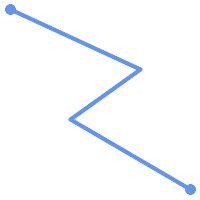 (a) | (b) |
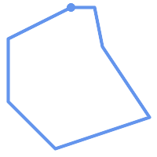 (c) | (d) |
MULTILINESTRINGは、要素が全て単純で、かつ、全ての要素同士のインタセクションが要素の境界上でのみ出現する場合には、単純です。
(e)と(f)は単純な |
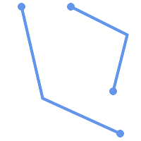 (e) | 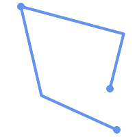 (f) | 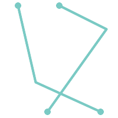 (g) |
POLYGONは線形リングから形成されるので、妥当なポリゴンジオメトリは常に単純です。
ジオメトリが単純かどうかを試すにはST_IsSimple関数を使います。次のようにします。
SELECT
ST_IsSimple('LINESTRING(0 0, 100 100)') AS straight,
ST_IsSimple('LINESTRING(0 0, 100 100, 100 0, 0 100)') AS crossing;
straight | crossing
----------+----------
t | f
一般的にPostGIS関数は引数ジオメトリの単純性を求めていません。単純性は主にジオメトリの妥当性を定義するための基礎として用いられます。空間データモデルによっては要件としていることもあります (たとえば、線形ネットワークはしばしばクロスを認めません)。マルチポイントと線形ジオメトリはST_UnaryUnionを使って単純にできます。
ジオメトリの妥当性は主に2次元ジオメトリ (POLYGONとMULTIPOLYGON)に適用されます。妥当性はポリゴンジオメトリが平面領域を明確にモデル化できる規則によって定義されます。
POLYGONは次の条件では妥当です。
ポリゴン境界リング (外側の殻リングと内側の穴リング)が単純 (交差も自己接触もしていない)であること。これによりポリゴンは切断線、トゲ、循環を持つことができなくなります。これは、ポリゴンの穴を外側のリングの自己接触 (いわゆる "inverted hole" (逆穴))でなく、内側のリングとして表現されなけれならないことを意味します。
境界リングがクロスしないこと
境界リングは点で接触したとしても接点として接触すること (線上にあってはなりません)
内側リングは外側リング内にあること
ポリゴン内部は単純に接続されていること (リングはポリゴンを複数に分割するように接触してはなりません)
(h)と(i)は妥当な |
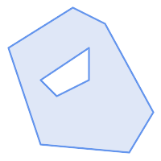 (h) | 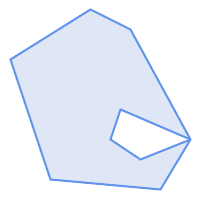 (i) | 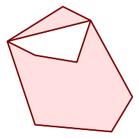 (j) |
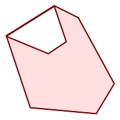 (k) | 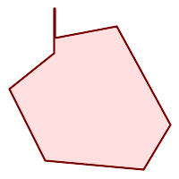 (l) | 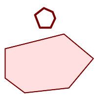 (m) |
MULTIPOLYGONは次の条件では妥当です。
要素となる
POLYGONが妥当であること要素がオーバラップしない (内部同士がインタセクトしない)こと
要素同士の接触が点でけである (線に沿って接触しない)こと
(n)は妥当な |
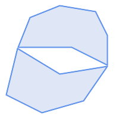 (n) | 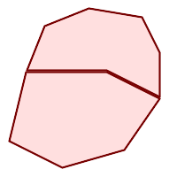 (o) | 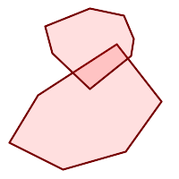 (p) |
これらの規則は妥当なポリゴンジオメトリも単純であることも示しています。
線ジオメトリについては、LINESTRINGが少なくとも二つのポイントを持ち、長さが0でない (少なくとも二つの異なるポイントを持つことと同じ)、というのが唯一の妥当性規則です。単純でない (自己交差がある)ラインは妥当です。
SELECT
ST_IsValid('LINESTRING(0 0, 1 1)') AS len_nonzero,
ST_IsValid('LINESTRING(0 0, 0 0, 0 0)') AS len_zero,
ST_IsValid('LINESTRING(10 10, 150 150, 180 50, 20 130)') AS self_int;
len_nonzero | len_zero | self_int
-------------+----------+----------
t | f | t
POINTとMULTIPOINTは妥当性規則を持っていません。
PostGISは妥当なジオメトリも不正なジオメトリも、生成も格納もできます。このため、不正なジオメトリを検出し、フラグを付け、訂正することができます。OGC妥当性規則が求める規則 (長さが0のラインストリングや逆穴を持つポリゴン等)よりも厳格であることもあります。
PostGISが提供する関数の多くは、引数ジオメトリが妥当であるとの仮定によっています。たとえば、ポリゴンの外部に穴があるポリゴンの面積を計算しても意味がありませんし、単純でない境界線からポリゴンを形成するのも意味がありません。妥当なジオメトリ入力を仮定することで、トポロジ的に正しいことを確認する必要がなくなるので、関数がより効率的に動作することができます (例外として、長さ0のラインと反転したポリゴンは一般的に正しく取り扱われます)。また、ほとんどのPostGIS関数は、入力ジオメトリが妥当な場合には、妥当なジオメトリ出力を生成します。これにより、PostGIS関数を安全に連鎖させられます。
PostGIS関数を呼ぶときに予期しないエラーメッセージ ("GEOS Intersection() threw an error!"等)に遭遇する場合には、まず関数の引数が妥当かどうかを確認します。妥当でないなら、次に示す方法のいずれかによる、処理中のデータの妥当性の確認を検討して下さい。
| |
関数が妥当な入力でエラーを報告する場合には、PostGISまたは使用しているライブラリの一つの中にエラーがあるのを発見することがありますが、その際はPostGISプロジェクトに報告して下さい。PostGIS関数が妥当な入力から不正なジオメトリを返す場合も同様です。 |
ジオメトリが妥当かをテストするにはST_IsValid関数を使います。次のようにします。
SELECT ST_IsValid('POLYGON ((20 180, 180 180, 180 20, 20 20, 20 180))');
-----------------
t
ジオメトリの不正性の性質と位置に関する情報はST_IsValidDetail関数で得られます。次のようにします。
SELECT valid, reason, ST_AsText(location) AS location
FROM ST_IsValidDetail('POLYGON ((20 20, 120 190, 50 190, 170 50, 20 20))') AS t;
valid | reason | location
-------+-------------------+---------------------------------------------
f | Self-intersection | POINT(91.51162790697674 141.56976744186045)
不正なジオメトリを自動的に訂正することが望ましいような状況があります。その際はST_MakeValid関数を使います (ST_MakeValidは不正な入力を許す特別な関数です)。
複雑なジオメトリの不正性テストには多大なCPU時間を取ることになるため、デフォルトでは、ジオメトリのロード時にPostGISは妥当性の確認をしません。データソースが信用できない場合には、チェック制約を使って、テーブル上で妥当性を強制的に確認することができます。次のようにします。
ALTER TABLE mytable
ADD CONSTRAINT geometry_valid_check
CHECK (ST_IsValid(geom));空間参照系 (Spatial Reference System, SRS) (座標参照系、Coordinate Reference System, CRSとも呼ばれます)は、ジオメトリが地表上の位置をどのように参照するかを定義しています。SRSには次の通り三種あります。
測地 (geodetic) 空間参照系は、地表に直接対応付けられる極座標系 (経度と緯度)を使います。
投影 (projected)空間参照系は、回転楕円体面を「平面にする」ための数学的な投影変換を使います。距離、面積、角度といった量を直接計測することが可能な位置座標系です。この座標系はデカルト座標系ですので、原点と二つの直交軸 (通常は来北と東方向)が定義されています。個々の投影座標系は、定まった距離単位 (通常はメートルかフィート)を使います。投影座標系は、歪みを避けて定義された座標範囲に納めるために、適応範囲を制限してもいいことになっています。
局所 (local)座標系は、地表への参照がないデカルト座標系です。PostGISではSRID値を0に指定します。
使用されている空間参照系には多数の相違点があります。一般的空間参照系は欧州石油調査グループ (European Petroleum Survey Group)のEPSG databaseで標準化されています。利便性向上のためPostGIS (と多くの空間系)はSRIDと呼ぶ整数を使って空間参照系の定義を参照します。
ジオメトリは、SRID値で空間参照系に関連付けられています。SRID値の取得にはST_SRIDを使います。ジオメトリのSRIDの設定にはST_SetSRIDを使います。ジオメトリ構築関数の中には、SRIDを与えられるものもあります (ST_PointやST_MakeEnvelope等)。EWKT書式はSRID=n;を前置することでSRIDに対応できます。
二つのジオメトリを処理する空間関数 (オーバレイ関数 、関係関数など)の入力ジオメトリは、同じ空間参照系である (同じSRIDを持つ)必要があります。ST_TransformやST_TransformPipelineを使うことで、ジオメトリデータを異なる空間参照系に変換できます。関数から返されるジオメトリは、入力ジオメトリと同じ空間参照系になります。
PostGISが使用するSPATIAL_REF_SYSテーブルは利用可能な空間参照系を定義するOGC準拠のデータベーステーブルです。このテーブルは、数値でSRIDを持ち、文字列で座標系の記述を持っています。
spatial_ref_sysの定義は次の通りです。
CREATE TABLE spatial_ref_sys ( srid INTEGER NOT NULL PRIMARY KEY, auth_name VARCHAR(256), auth_srid INTEGER, srtext VARCHAR(2048), proj4text VARCHAR(2048) )
カラムは次の通りです。
- srid
データベース内のSpatial Reference System (SRS, 空間参照系)で一意に識別される整数コードです。
- auth_name
この参照系に引用されている標準の名前もしくは標準そのものです。たとえば「EPSG」は妥当な
auth_nameです。- auth_srid
空間参照系のIDは
auth_nameに引用される機関によって定義されます。ここがEPSGの場合には、これはEPSGコードです。- srtext
空間参照系のWell-Knownテキスト表現です。たとえば、WKT SRSの表現は、次のようになります。
PROJCS["NAD83 / UTM Zone 10N", GEOGCS["NAD83", DATUM["North_American_Datum_1983", SPHEROID["GRS 1980",6378137,298.257222101] ], PRIMEM["Greenwich",0], UNIT["degree",0.0174532925199433] ], PROJECTION["Transverse_Mercator"], PARAMETER["latitude_of_origin",0], PARAMETER["central_meridian",-123], PARAMETER["scale_factor",0.9996], PARAMETER["false_easting",500000], PARAMETER["false_northing",0], UNIT["metre",1] ]SRS WKTの詳細については、OGC標準のWell-known text representation of coordinate reference systemsをご覧下さい。
- proj4text
PostGISは座標変換機能を提供するためにProj4ライブラリを用いています。
proj4textカラムには、特定のSRIDを示すProj4座標定義文字列が入ります。たとえば次のようになります。+proj=utm +zone=10 +ellps=clrk66 +datum=NAD27 +units=m
詳細情報についてはPROJウェブサイトをご覧下さい。
spatial_ref_sys.sqlファイルには、全てのEPSG投影について、srtextとproj4textの定義があります。
投影変換で空間参照系の定義を使用する場合には、次の戦略を取ります。
auth_nameとauth_sridがある (NULLでない)場合には、これに基づいてPROJSRSを使います (存在する場合)。srtextがある場合には、可能ならそれを使用してSRSを生成します。proj4textがある場合には、可能ならこれを使用してSRSを生成します。
PostGISspatial_ref_sysテーブルにはPROJ投影ライブラリで処理される最も一般的な空間参照系定義3000件以上があります。しかし、そこに無い多くの座標系があります。空間参照系に関する必要な情報がある場合は、SRS定義をテーブルに追加できます。PROJに詳しいなら独自の空間参照系を定義することもできます。ほとんどの空間参照系は地域的なものであり、目的の範囲外で使用する場合は意味を持たない点に注意してください。
PostGISのコアセットに入っていない空間参照系を探すための素晴らしい資料がhttp://spatialreference.org/にあります。
一般的に使用される空間参照系には4326 - WGS 84経度緯度、4269 - NAD 83 経度緯度、3395 - WGS 84 メルカトル、2163 - 米国ナショナルアトラス正積図法、60個のWGS84 UTMゾーンがあります。UTMゾーンは計測に最適ですが、6度 (訳注: 経度)の領域のみをカバーします (対象地域に使用するUTMゾーンを決定するにはutmzone PostGIS plpgsql helper functionを参照してください)。
米国の州では、州平面空間参照系 (メートルまたはフィート単位)を使用します。この空間参照系は州ごとに一つか二つ存在します。ほとんどのメートル単位のものはコアのセットに存在しますが、フィート単位の多数のものやESRIが作成したものはspatialreference.orgからロードする必要があります。
地球外の座標系でさえも定義することができます。たとえばMars 2000です。この火星の座標系は非平面 (回転楕円体の度)ですが、geography型で、度でなくメートル単位で長さや近接測定値を取得することができます。
割当外のSRIDとPROJ定義を使って米国中央のランベルト正角円錐図法の独自座標系をロードする例を次に示します。
INSERT INTO spatial_ref_sys (srid, proj4text) VALUES ( 990000, '+proj=lcc +lon_0=-95 +lat_0=25 +lat_1=25 +lat_2=25 +x_0=0 +y_0=0 +datum=WGS84 +units=m +no_defs' );
geometry型のカラムを付けたCREATE TABLE SQLステートメントでジオメトリデータを保存するテーブルを生成することができます。次の例では、BC-アルベルス座標系 (SRID 3005)の2次元 (XY)ラインストリングを保存するジオメトリカラムを持つテーブルを生成します。
CREATE TABLE roads (
id SERIAL PRIMARY KEY,
name VARCHAR(64),
geom geometry(LINESTRING,3005)
);geometry型は、次の通り、二つの任意指定型修飾子に対応しています。
空間タイプ修飾子はカラムで許される形状と次元の種類を制約するものです。値は、対応しているジオメトリタイプ (POINT, LINESTRING, POLYGON, MULTIPOINT, MULTILINESTRING, MULTIPOLYGON, GEOMETRYCOLLECTION等)なら全て可能です。空間タイプ修飾子は、後置詞 Z, M, ZMを付け加えることで座標次元の制約に対応します。例えば、`LINESTRINGM`修飾子では、3次元で3番目がM軸となるラインストリングだけを許します。同様に、'POINTZM'では4次元 (XYZM)データが求められます。
SRID修飾子は空間参照系のSRIDを特定の数値に制約します。省略した場合には、デフォルトは0となります。
ジオグラフィカラムを持つテーブルの生成の例を次に挙げます。
デフォルトSRIDであらゆる種類のジオメトリを保持するテーブルの生成:
CREATE TABLE geoms(gid serial PRIMARY KEY, geom geometry );
2次元ポイントでSRIDがデフォルトのテーブル作成:
CREATE TABLE pts(gid serial PRIMARY KEY, geom geometry(POINT) );
3次元 (XYZ)ポイントでSRIDが3005のテーブル作成:
CREATE TABLE pts(gid serial PRIMARY KEY, geom geometry(POINTZ,3005) );
4次元 (XYZM)ラインストリングでSRIDがデフォルトのテーブル作成:
CREATE TABLE lines(gid serial PRIMARY KEY, geom geometry(LINESTRINGZM) );
2次元ポリゴンでSRIDが4276 (NAD 1927地理座標系)のテーブル作成:
CREATE TABLE polys(gid serial PRIMARY KEY, geom geometry(POLYGON,4267) );
一つのテーブルが一つ以上のジオメトリカラムを持つことができます。テーブル生成時に指定するか、ALTER TABLE SQLステートメントを使って追加するかで実現できます。次に3次元ラインストリングを格納するカラムを追加する例を示します。
ALTER TABLE roads ADD COLUMN geom2 geometry(LINESTRINGZ,4326);
OGC Simple Features Specification for SQLは、ジオメトリテーブル構造を記述するためのGEOMETRY_COLUMNSメタデータテーブルを定義しています。PostGISではgeometry_columnsは、データベースのシステムカタログテーブルから読み取るビューです。これによって、空間メタデータ情報が常に現在定義されているテーブルやビューと矛盾しなくなります。
\d geometry_columns
View "public.geometry_columns"
Column | Type | Modifiers
-------------------+------------------------+-----------
f_table_catalog | character varying(256) |
f_table_schema | character varying(256) |
f_table_name | character varying(256) |
f_geometry_column | character varying(256) |
coord_dimension | integer |
srid | integer |
type | character varying(30) |カラムは次の通りです。
- f_table_catalog, f_table_schema, f_table_name
ジオメトリカラムを持っている地物テーブルの完全修飾名。PostgreSQLには"catalog"の類似カラムが無いので、このカラムは空白のままです。"schema"についてはPostgreSQLスキーマ名が使われます (デフォルトは
publicです)。- f_geometry_column
フィーチャーテーブル内のジオメトリカラムの名前。
- coord_dimension
カラムの座標次元 (2, 3, 4)。
- srid
このテーブルのジオメトリの座標系として使用される座標系空間参照系のIDです。
spatial_ref_sysテーブルを参照する外部キーです (「SPATIAL_REF_SYSテーブル」を参照して下さい)。- type
空間オブジェクトの型。空間カラムを単一型に制限するには、POINT、LINESTRING、POLYGON、MULTIPOINT、MULTILINESTRING、MULTIPOLYGON、GEOMETRYCOLLECTIONのうちのいずれかを、また、XYMで使う場合には、LINESTRINGM、POLYGONM、MULTIPOINTM、MULTILINESTRINGM、MULTIPOLYGONM、GEOMETRYCOLLECTIONMのうちのいずれかを使います。複数の型が混合するコレクションの場合は"GEOMETRY"を型とすることができます。
これが必要になる事例に、SQLビューとバルクインサートの二つがあります。バルクインサートの場合には、カラムに制約を与えるか、ALTER TABLEを実行することで、geometry_columnsテーブル内の登録を訂正することができます。ビューの場合には、CAST演算を使用します。カラムが型修飾子に基づく場合には、生成処理によって正しく登録されるので、何も行う必要がありません。ジオメトリに適用する空間関数を持たないビューも、基礎となるテーブルのジオメトリカラムと同じように登録されます。
-- Lets say you have a view created like this
CREATE VIEW public.vwmytablemercator AS
SELECT gid, ST_Transform(geom, 3395) As geom, f_name
FROM public.mytable;
-- For it to register correctly
-- You need to cast the geometry
--
DROP VIEW public.vwmytablemercator;
CREATE VIEW public.vwmytablemercator AS
SELECT gid, ST_Transform(geom, 3395)::geometry(Geometry, 3395) As geom, f_name
FROM public.mytable;
-- If you know the geometry type for sure is a 2D POLYGON then you could do
DROP VIEW public.vwmytablemercator;
CREATE VIEW public.vwmytablemercator AS
SELECT gid, ST_Transform(geom,3395)::geometry(Polygon, 3395) As geom, f_name
FROM public.mytable;--Lets say you created a derivative table by doing a bulk insert
SELECT poi.gid, poi.geom, citybounds.city_name
INTO myschema.my_special_pois
FROM poi INNER JOIN citybounds ON ST_Intersects(citybounds.geom, poi.geom);
-- Create 2D index on new table
CREATE INDEX idx_myschema_myspecialpois_geom_gist
ON myschema.my_special_pois USING gist(geom);
-- If your points are 3D points or 3M points,
-- then you might want to create an nd index instead of a 2D index
CREATE INDEX my_special_pois_geom_gist_nd
ON my_special_pois USING gist(geom gist_geometry_ops_nd);
-- To manually register this new table's geometry column in geometry_columns.
-- Note it will also change the underlying structure of the table to
-- to make the column typmod based.
SELECT populate_geometry_columns('myschema.my_special_pois'::regclass);
-- If you are using PostGIS 2.0 and for whatever reason, you
-- you need the constraint based definition behavior
-- (such as case of inherited tables where all children do not have the same type and srid)
-- set optional use_typmod argument to false
SELECT populate_geometry_columns('myschema.my_special_pois'::regclass, false); 古い制約を基にした手法は現在も対応していますが、制約を基にしたジオメトリカラムで直接的にビューで使われている場合は、型修飾子のようには正しくgeometry_columnsに登録されません。次の例では、型修飾子を使ったカラム定義と、制約に基づくカラムの定義とを行っています。
CREATE TABLE pois_ny(gid SERIAL PRIMARY KEY, poi_name text, cat text, geom geometry(POINT,4326));
SELECT AddGeometryColumn('pois_ny', 'geom_2160', 2160, 'POINT', 2, false);psqlで次を実行します。
\d pois_ny;
型修飾子と制約に基づくのとでは異なった定義になっているのが見えます。
Table "public.pois_ny"
Column | Type | Modifiers
-----------+-----------------------+------------------------------------------------------
gid | integer | not null default nextval('pois_ny_gid_seq'::regclass)
poi_name | text |
cat | character varying(20) |
geom | geometry(Point,4326) |
geom_2160 | geometry |
Indexes:
"pois_ny_pkey" PRIMARY KEY, btree (gid)
Check constraints:
"enforce_dims_geom_2160" CHECK (st_ndims(geom_2160) = 2)
"enforce_geotype_geom_2160" CHECK (geometrytype(geom_2160) = 'POINT'::text
OR geom_2160 IS NULL)
"enforce_srid_geom_2160" CHECK (st_srid(geom_2160) = 2160)geometry_columnsでは、両方とも正しく登録されています。
SELECT f_table_name, f_geometry_column, srid, type
FROM geometry_columns
WHERE f_table_name = 'pois_ny';f_table_name | f_geometry_column | srid | type -------------+-------------------+------+------- pois_ny | geom | 4326 | POINT pois_ny | geom_2160 | 2160 | POINT
しかし、次のようにビューを作ろうとします。
CREATE VIEW vw_pois_ny_parks AS
SELECT *
FROM pois_ny
WHERE cat='park';
SELECT f_table_name, f_geometry_column, srid, type
FROM geometry_columns
WHERE f_table_name = 'vw_pois_ny_parks';型修飾子によるgeomのビューカラムは正しく登録されますが、制約に基づくものは正しく登録されません。
f_table_name | f_geometry_column | srid | type ------------------+-------------------+------+---------- vw_pois_ny_parks | geom | 4326 | POINT vw_pois_ny_parks | geom_2160 | 0 | GEOMETRY
これは、将来的にPostGISの版で変更されるかもしれませんが、今のところは、制約に基づくビューカラムを正しく登録させるには、次のようにします。
DROP VIEW vw_pois_ny_parks;
CREATE VIEW vw_pois_ny_parks AS
SELECT gid, poi_name, cat,
geom,
geom_2160::geometry(POINT,2160) As geom_2160
FROM pois_ny
WHERE cat = 'park';
SELECT f_table_name, f_geometry_column, srid, type
FROM geometry_columns
WHERE f_table_name = 'vw_pois_ny_parks';f_table_name | f_geometry_column | srid | type ------------------+-------------------+------+------- vw_pois_ny_parks | geom | 4326 | POINT vw_pois_ny_parks | geom_2160 | 2160 | POINT
空間テーブルを作成したら、これでGISデータをデータベースにアップロードする準備ができたことになります。現在、PostGIS/PostgreSQLデータベースにデータをロードするには、SQLステートメントを使う、またはシェープファイルのローダ/ダンパを使う、という二つの方法があります。
空間データを文字表現 (WKTかWKB)に変換できたら、SQLを使うのがPostGISにデータを持たせる最も簡単です。SQLユーティリティのpsqlを使用して、SQLのINSERTステートメントのテキストファイルをロードすると、データをPostGIS/PostgreSQLに一括読み込みできます。
データアップロードファイル (たとえばroads.sql)は次のようになるでしょう。
BEGIN; INSERT INTO roads (road_id, roads_geom, road_name) VALUES (1,'LINESTRING(191232 243118,191108 243242)','Jeff Rd'); INSERT INTO roads (road_id, roads_geom, road_name) VALUES (2,'LINESTRING(189141 244158,189265 244817)','Geordie Rd'); INSERT INTO roads (road_id, roads_geom, road_name) VALUES (3,'LINESTRING(192783 228138,192612 229814)','Paul St'); INSERT INTO roads (road_id, roads_geom, road_name) VALUES (4,'LINESTRING(189412 252431,189631 259122)','Graeme Ave'); INSERT INTO roads (road_id, roads_geom, road_name) VALUES (5,'LINESTRING(190131 224148,190871 228134)','Phil Tce'); INSERT INTO roads (road_id, roads_geom, road_name) VALUES (6,'LINESTRING(198231 263418,198213 268322)','Dave Cres'); COMMIT;
SQLファイルのPostgreSQLへのロードはpsqlを使います。次のようにします。
psql -d [database] -f roads.sql
shp2pgsqlデータローダは、ESRIシェープファイルをPostGIS/PostgreSQLデータベースに、ジオメトリまたはジオグラフィとして挿入するための適切なSQLに変換します。ローダには、次に示すコマンドラインフラグによって区別される、いくつかの操作モードがあります。
グラフィカルユーザインタフェースを持つshp2pgsql-guiもあります。コマンドラインローダのオプションのほとんどが使えます。これは、スクリプト化されていない1回限りのロードの場合や、PostGIS初心者がロードする場合に、簡単に使用できます。PgAdminIIIのプラグインとすることもできます。
- (c|a|d|p) 相互に排他的なオプションです。
- -c
新しいテーブルの作成とシェープファイルからのデータの読み込みを行います。これがデフォルトモードです。
- -a
シェープファイルからデータベーステーブルにデータを追加します。複数のファイルをロードするためにこのオプションを使う場合は、これらのファイルは同じ属性と同じデータ型を持つ必要があります。
- -d
シェープファイルにあるデータを持つ新しいテーブルを作成する前にデータベーステーブルを削除します。
- -p
テーブル作成のSQLコードを生成するだけで、実際のデータは追加しません。このモードは、テーブル作成とデータロードとを完全に分けたい場合に使用します。
- -?
ヘルプ画面を表示します。
- -D
出力データにPostgreSQLのダンプ書式を用います。このモードは-a, -c, -dと組み合わせて利用します。デフォルトの"insert"によるSQL書式よりも、大変早くロードできます。大きなデータセットではこちらを使用して下さい。
- -s [<FROM_SRID>:]<SRID>
指定したSRIDを持つジオメトリテーブルの生成や追加を行います。FROM_SRIDが与えられた場合には、入力シェープファイルに、これを使います 。この場合には、ジオメトリは変更先SRIDに投影変換します。
- -k
識別子 (カラム、スキーマおよび属性)の大文字小文字を保持します。シェープファイルの属性は全て大文字であることに注意して下さい。
- -i
全ての整数を標準の32ビット整数に強制します。DBFヘッダではそれが正当であったとしても、64ビットのbigintを生成しません。
- -I
ジオメトリカラムにGiSTインデックスを生成します。
- -m
-m
a_file_nameで、長いカラム名を10文字のDBFカラム名に対応付けるファイルを指定します。ファイルは、1以上の行を持ちます。各行は空白区切りで二つの名前を持ち、行頭行末に空白を入れません。例を次に示します。COLUMNNAME DBFFIELD1 AVERYLONGCOLUMNNAME DBFFIELD2
- -S
マルチ系ジオメトリの替りに単一ジオメトリを生成します。全てのジオメトリが実際に単一である (たとえば単一の外環でなるMULTIPOLYGONや単一の頂点でなるMULTIPOINT)場合にのみ成功します。
- -t <次元>
出力ジオメトリが特定の次元を持つよう強制します。次元は、2D, 3DZ, 3DM, 4Dの文字列を使います。
入力の次元が出力より小さい場合には、出力では0が入ります。入力の次元が大きい場合には、外されます。
- -w
出力書式をWKBでなくWKTにします。精度が低下して、座標変動が発生しうることに注意が必要です。
- -e
トランザクションを使わずに、ステートメントごとに実行するようにします。エラーの元となる不良なジオメトリがいくつか含んでいる時に、大半の良好なデータのロードが可能にするものです。ダンプ書式ではトランザクションを常に使うので、-Dフラグを指定している場合には使えません。
- -W <エンコーディング>
入力データ (dbfファイル)のエンコーディングを指定します。全てのdbfの属性は指定されたエンコーディングからUTF8に変換されます。SQL出力結果には
SET CLIENT_ENCODING to UTF8が含まれるようになり、バックエンドはUTF-8からデータベースが内部利用のために設定したエンコーディングに再変換できます。- -N <方針>
NULLジオメトリ操作方針(insert*=挿入, skip=スキップ, abort=強制終了)を選択します。
- -n
DBFファイルのみインポートします。対応するシェープファイルを持っていない場合、 自動的にこのモードになり、DBFファイルのみロードします。 このフラグは、完全なシェープファイル群を持っていて、属性データだけが欲しくてジオメトリが欲しくない時のみ使用します。
- -G
ジオメトリ型のかわりに、ジオグラフィ型で、WGS84経度緯度 (SRID=4326)を使用します (経度緯度データが必要です)。
- -T <tablespace>
新しいテーブルのテーブル空間を指定します。 -Xパラメータが使われない場合には、インデックスはデフォルトのテーブル空間を使用します。PostgreSQL文書には、テーブル空間を用いるべき時に関する良い文書があります。
- -X <tablespace>
新しいテーブルのインデックスで使われるテーブル空間を指定します。 主キーインデックスに適用され、-Iが合わせて使われている場合にはGiST空間インデックスにも適用されます。
- -Z
このフラグをこれを使う時、
ANALYZE手続きの生成を防ぎます。-Zフラグが無い (デフォルトの振る舞い)場合には、ANALYZE手続きが生成されます。
ローダを使って入力ファイルを生成してアップロードするセッション例は次の通りです。
# shp2pgsql -c -D -s 4269 -i -I shaperoads.shp myschema.roadstable > roads.sql # psql -d roadsdb -f roads.sql
変換とアップロードはUNIXのパイプを使うと一回で実行できます。
# shp2pgsql shaperoads.shp myschema.roadstable | psql -d roadsdb
空間データはSQLかシェープファイルダンパを使うと抽出できます。SQLの節では空間テーブルで比較とクエリに使用できる関数を示します。
データベース外へのデータ抽出の最も簡単な方法は、抽出するデータセットを定義し、SELECT問い合わせを使って、結果カラムを解析可能なテキストファイルにダンプすることです。
db=# SELECT road_id, ST_AsText(road_geom) AS geom, road_name FROM roads;
road_id | geom | road_name
--------+-----------------------------------------+-----------
1 | LINESTRING(191232 243118,191108 243242) | Jeff Rd
2 | LINESTRING(189141 244158,189265 244817) | Geordie Rd
3 | LINESTRING(192783 228138,192612 229814) | Paul St
4 | LINESTRING(189412 252431,189631 259122) | Graeme Ave
5 | LINESTRING(190131 224148,190871 228134) | Phil Tce
6 | LINESTRING(198231 263418,198213 268322) | Dave Cres
7 | LINESTRING(218421 284121,224123 241231) | Chris Way
(6 rows)返されるレコードの数を減らすためにある種の制限が必要になる場合があります。属性ベースで制限をかける場合には、非空間テーブルで使うのと同じSQL文を使います。空間に制限をかけるには次の関数を使います。
- ST_Intersects
この関数は、二つのジオメトリが空間を共有しているかどうかをテストします。
- =
この関数で、二つのジオメトリが幾何的に同一であるかを見ることができます。たとえば、'POLYGON((0 0,1 1,1 0,0 0))' は 'POLYGON((0 0,1 1,1 0,0 0))' と同じかを見ることができます (これは同じとなります)。
次に、これらの演算子をクエリで使うことができます。SQLコマンドラインからジオメトリとボックスの指定を行うときは、明示的に文字列表現をジオメトリに変換しなければならないことに注意して下さい。たとえば、次のようになります。ただし312は架空の空間参照系番号で、ここでのデータに合致しています。
SELECT road_id, road_name FROM roads WHERE roads_geom='SRID=312;LINESTRING(191232 243118,191108 243242)'::geometry;
上のクエリは"ROADS_GEOM"テーブルから、その値と等価である単一のレコードを返します。
道路がポリゴンで定義した面を通過するかどうかをチェックするには次のようにします。
SELECT road_id, road_name FROM roads WHERE ST_Intersects(roads_geom, 'SRID=312;POLYGON((...))');
最も一般的な空間クエリは「フレームベース」のクエリでしょう。これは、表示するためのデータの価値のある「マップフレーム」を取得するために、データブラウザやウェブマッパのようなクライアントソフトウェアに使われます。
"&&"演算子を使うとき、比較フィーチャーをBOX3DかGEOMETRYかに指定することができます。ただし、GEOMETRYを指定すると、それのバウンディングボックスが比較に使われます。
次に示すクエリのように、フレームにBOX3Dオブジェクトを使います。
SELECT ST_AsText(roads_geom) AS geom FROM roads WHERE roads_geom && ST_MakeEnvelope(191232, 243117,191232, 243119,312);
エンベロープの投影を指定するためにSRID 312を使っていることに注意して下さい。
pgsql2shpテーブルダンパは、データベースに直接接続して、テーブル (あるいはクエリによって定義されたもの)をシェープファイルに変換するものです。基本的な文は次の通りです。
pgsql2shp [<options>] <database> [<schema>.]<table>
pgsql2shp [<options>] <database> <query>
コマンドラインオプションは次の通りです。
- -f <ファイル名>
特定のファイル名に出力を書きこみます。
- -h <ホスト>
接続先データベースのホスト名。
- -p <ポート>
接続先データベースのポート。
- -P <パスワード>
データベースに接続するためのパスワード。
- -u <ユーザ名>
データベースに接続する際のユーザ名。
- -g <ジオメトリカラム>
複数のジオメトリカラムを持つテーブルの場合の、シェープファイルの出力に使用するジオメトリカラム。
- -b
バイナリカーソルを使います。これは、実行時間を短くしますが、テーブルの非ジオメトリ属性がテキストへのキャストを持っていない場合には、動作しません。
- -r
Rawモード。
gidフィールドを落としたり、カラム名をエスケープしてはいけません。- -m
ファイル名 識別名を10文字名に再割り当てします。 ファイルの中身は、一つの空白で区切られ、前と後に空白が無い二つのシンボルの行からなります。VERYLONGSYMBOL SHORTONE ANOTHERVERYLONGSYMBOL SHORTER等となります。
インデックスによって巨大データセットの空間データベースの使用が可能となります。インデックス無しでは、地物の検索を行う際に、データベースの全てのレコードに対するシーケンシャルスキャンが必要となります。インデックスによって、レコード探索のために早く移動できる構造を構築するので、検索速度が向上します。
一般的に属性データに使われるインデックス手法でありB木は、空間データではあまり有用ではありません。1次元データの格納とクエリにだけしか対応していないためです。ジオメトリのような2次元以上の次元を持つデータでは、全ての次元の範囲を指定できるインデックス手法が求められます。PostgreSQLの空間データ処理に関する主要な利点の一つに、多次元データで上手く動作するGiST、BRIN、SP-GiSTの複数のインデックス手法を提供していることです。
GiST (Generalized Search Tree)インデックスは、データを「一方にあるもの」「オーバラップするもの」「内部にあるもの」に分解するもので、GISデータを含む幅広い範囲で使えます。PostGISはGiSTインデックス空間データをR木インデックス実装のベースにています。GiSTは最も一般的に使われ、多目的なインデックス手法で、非常に良好な問い合わせ効率を提供しています。
BRIN (Block Range Index)インデックスは、空間範囲を集計することで動作します。探索は範囲のスキャンを通して行われます。BRINは一部の種類 (空間的にソートされ、更新がほぼ無いか全く無い)のデータだけに適切です。しかし、インデックス生成時間は非所に早く、インデックスサイズは非常に小さくなります。
SP-GiST (Space-Partitioned Generalized Search Tree)は4分木、kd木、基数木 (トライ木)のような部分木探索に対応する一般的なインデックス手法です。
空間インデックスはジオメトリのバウンディングボックスだけを格納します。空間クエリはインデックスは初期フィルタとして使用して、クエリ条件に一致する可能性のあるジオメトリを早く求めます。ほとんどの空間クエリでは、空間述語関数を使って特定の空間条件をテストする二次フィルタが必要です。空間述語関数を使ったクエリの詳細情報については「空間インデックスを使う」をご覧下さい。
また、PostGIS Workshop section on spatial indexesとPostgreSQL manualもご覧下さい。
GiSTは「汎用検索木 (Generalized Search Tree)」の意味で、多次元データのインデックスの一般化された形式です。PostGISはGiST上で実装しているR木インデックスをを空間データのインデックスに使用しています。GiSTは最も一般的に使われ、多目的なインデックス手法で、クエリ能率を非常に良くします。他のGiSTの実装は、通常のB木インデックスに従わない全ての種類の不規則なデータ構造 (整数配列, スペクトラルデータ等)の検索速度を向上させるために使います。詳細情報についてはPostgreSQL manualをご覧ください。
GISデータテーブルが数千行を超えたら、空間検索の速度向上のためインデックスを構築したくなるでしょう (これは属性検索でない場合です。属性でしたら通常のインデックスを属性フィールドに追加します)。
GiSTインデックスをジオメトリカラムに追加するための文は次の通りです。
CREATE INDEX [indexname] ON [tablename] USING GIST ( [geometryfield] );
上の文では常に2次元インデックスを構築します。n次元インデックスをジオメトリ型で使うには、次の文でインデックスを生成できます。
CREATE INDEX [indexname] ON [tablename] USING GIST ([geometryfield] gist_geometry_ops_nd);
空間インデックスの構築は、計算量を集中させて行われます。また、この時には、テーブルへの書き込みアクセスがブロックされます。そのため、本番システムではより遅いCONCURRENTLYを選択するかも知れません。次のようにします。
CREATE INDEX CONCURRENTLY [indexname] ON [tablename] USING GIST ( [geometryfield] );
インデックス構築後に、時々PostgreSQLにテーブルの統計情報を集めさせると助かります。クエリプランの最適化に使われます。
VACUUM ANALYZE [table_name] [(column_name)];
BRINは"Block Range Index"の略です。PostgreSQL 9.5で導入された汎用インデックス手法です。BRINは不可逆インデックス手法であり、レコードが与えた検索条件に合致することを確認する二番目のチェックが必要であることを意味しています (全ての空間インデックスで言えます)。非常に速いインデックス作成、非常に小さいインデックスサイズで、合理的な読み込み効率を持ちます。主目的は、非常に大きいテーブルのテーブル内の物理位置と関係があるカラムにインデックスを作ることに対応するためです。空間インデックスに加えて、BRINは様々な種類の属性データ構造 (整数、配列等)で速度向上させることができます。詳細情報についてはPostgreSQL manualをご覧ください。
空間テーブルが、ひとたび数千行を超えると、データの空間検索の速度向上にインデックスが必要と感じることになります。GiSTインデックスは、サイズがデータベースで使えるRAM容量を超えず、インデックスのストレージサイズに余裕があり、書き込み時のインデックス更新コストにも余裕があるなら、非常に高いパフォーマンスを発揮します。そうでない場合には、非常に大きなテーブルにおいては、BRINインデックスを代替に考えることができます。
BRINインデックスは、連続するテーブルブロックの集合 (ブロック範囲と言います)の全てのジオメトリを囲むバウンディングボックスを格納します。インデックスを使用した問い合わせを実行する時に、問い合わせ範囲とインタセクトするブロック範囲を見つけるためにスキャンします。これは、データが物理的に整列していて、ブロック範囲のバウンディングボックスのオーバラップが最小である (理想的には相互に排他的である)場合に限って効率的です。結果インデックスは非常に小さいサイズですが、通常、読み込み効率は、同じデータにおけるGiSTインデックスより悪くなります。
BRINインデックスの構築は、はGiSTインデックスと比べて、CPU集中を非常に減らします。BRINインデックスはGiSTインデックスよりも、同じデータに対して10倍速く構築するのが普通です。BRINインデックスはテーブルブロックの範囲ごとに一つのバウンディングボックスしか格納しないので、GiSTインデックスと比べて、ディスクスペースを1000倍少なくできます。
レンジ内で要約するブロック数を選択できます。この数字を減らすと、インデックスは大きくなりますが、効率向上の助けになる可能性があります。
BRINを効果的にするには、テーブルデータをブロック範囲のオーバラップの量を最小にするような物理的オーダーで格納します。データが既に適切に並び替えられているかも知れません (たとえば、既に空間オーダーで並び替えられているデータセットを他のデータベースからロードする場合)。そうでない場合には、一つの空間キーによるデータの並べ替えで実現できます。一つの方法として、ジオメトリ値で並べ替えた新しいテーブルを生成することです (最近のPostGISのバージョンで効果的なヒルベルト曲線オーダーが使われています)。
CREATE TABLE table_sorted AS SELECT * FROM table ORDER BY geom;
もしくは、データは、ジオハッシュを (一時的な)インデックスに使い、そのインデックスでクラスタリングを行うことによって適切に並べ替えることができます。
CREATE INDEX idx_temp_geohash ON table
USING btree (ST_GeoHash( ST_Transform( geom, 4326 ), 20));
CLUSTER table USING idx_temp_geohash;
BRINインデックスをジオメトリカラムに追加するための文は次の通りです。
CREATE INDEX [indexname] ON [tablename] USING BRIN ( [geome_col] );
上の文で2次元インデックスを構築します。3次元インデックスをビルドするには、この文を使います。
CREATE INDEX [indexname] ON [tablename]
USING BRIN ([geome_col] brin_geometry_inclusion_ops_3d);また、4次元演算子クラスを使う4次元インデックスを使うこともできます。
CREATE INDEX [indexname] ON [tablename]
USING BRIN ([geome_col] brin_geometry_inclusion_ops_4d);上記のコマンドでは、範囲のブロック数はデフォルトの128を使用しています。集計で範囲のブロック数を指定するには、この文を使います。
CREATE INDEX [indexname] ON [tablename]
USING BRIN ( [geome_col] ) WITH (pages_per_range = [number]); また、BRINインデックスは、多数の行で一つのインデックス値を格納することを心に留めておいて下さい。テーブルに違う次元のジオメトリを格納する場合には、インデックスの効率が悪くなります。この効率欠落を回避するには、格納したジオメトリの次元数の最小値となる演算子クラスを選択します。
「ジオグラフィ」型もまたBRINインデックスに対応しています。BRINインデックスを「ジオグラフィ」カラムに構築するための文は次の通りです。
CREATE INDEX [indexname] ON [tablename] USING BRIN ( [geog_col] );
上の文では常に回転楕円体面上の地理空間オブジェクトの2次元インデックスを構築します。
現在のところは「包括対応」だけをここで考えています。これは、&&, ~, @の演算子だけが2次元で使われることを意味します (ジオメトリとジオグラフィの両方)。 &&&演算子は3次元ジオメトリで使えます。しばらくはKNN検索に対応しません。
BRINと他のインデックスとの重要な違いは、データベースがインデックスを動的に保守しないことです。テーブルの空間データを変更すると、単純にインデックスの末尾に追加しています。このためインデックス探索の能率が時間とともに低下します。インデックスはVACUUMか空間関数brin_summarize_new_values(regclass)を実行することで更新できます。このため、BRINは読み込み専用か、書き込みがほとんど発生しないよなデータでの利用では最も適切になりえます。詳細情報については、manualをご覧下さい。
空間データにBRINを使用して集計するには:
インデックス構築時間は非常に速く、インデックスサイズは非常に小さいです。
インデックスのクエリ時間はGiSTより遅いですが、十分許容できます。
テーブルデータを空間順序で並べ替える必要があります。
手動でインデックスの保守をする必要があります。
巨大なテーブルであって、オーバラップが少ないか無く (ポイントなど)、かつ静的か頻繁には変更しないようなものに、最も適しています。
比較的多数のデータレコードを返すクエリでの使用が、より効果的です。
SP-GiSTは、「空間分割された一般探索木」を表します。四分木、k次元木、基数木 (トライ木)のような分割探索木に対応するインデックスの総称的な形式です。このデータ構造の一般的な機能は、検索空間を反復して分割することですが、分割は等しいサイズである必要はありません。SP-GiSTは、GISインデックスだけでなく、電話回線のルーティングや、IPルーティング、部分文字列検索等といった、様々な種類のデータを探索する速度の向上に使われます。詳細情報についてはPostgreSQL manualをご覧下さい。
GiSTインデックスを利用しているので、空間オブジェクトを覆うバウンディングボックスを保存するという意味で、SP-GiSTインデックスは不可逆です。SP-GiSTインデックスは、GiSTインデックスの代替と考えることができます。
一度GISデータテーブルが数千行を超えると、データの空間探索の速度向上にSP-GiSTインデックスを使うと良いかも知れません。「ジオメトリ」カラムにSP-GiSTインデックスを構築するための文は次の通りです。
CREATE INDEX [indexname] ON [tablename] USING SPGIST ( [geometryfield] );
上の文では、2次元インデックスを構築します。ジオメトリ型の3次元インデックスは、次のように、3次元演算子クラスを使用して生成します。
CREATE INDEX [indexname] ON [tablename] USING SPGIST ([geometryfield] spgist_geometry_ops_3d);
空間インデックスの構築は、計算量を集中させて行われます。また、この時には、テーブルへの書き込みアクセスがブロックされます。そのため、本番システムでは、より遅いCONCURRENTLYを選択するかも知れません。次のようにします。
CREATE INDEX CONCURRENTLY [indexname] ON [tablename] USING SPGIST ( [geometryfield] );
インデックス構築後に、時々PostgreSQLにテーブルの統計情報を集めさせると助かります。クエリプランの最適化に使われます。
VACUUM ANALYZE [table_name] [(column_name)];
SP-GiSTインデックスは次の演算子を含むクエリの実行速度を向上させられます。
2次元インデックスについては <<, &<, &>, >>, <<|, &<|, |&>, |>>, &&, @>, <@, ~=です。
3次元インデックスについては &/&, ~==, @>>, and <<@ 。
現時点ではkNN探索に対応していません。
通常、インデックスは知らないうちにデータアクセスの速度を向上します。ひとたびインデックスを構築すれば、PostgreSQLクエリプランナは自動的にクエリの能率を向上させるために使うべきかどうかを決定します。しかし、プランナが既存のインデックスを選択せず、遅いシーケンシャルスキャンを使い続ける場合があります。
空間インデックスが使われていないのが分かった場合には、少しの行えることがあります。
クエリプランの試験とクエリの確認で、必要なものを計算できます。誤ったJOINや忘れ去られたテーブルや間違ったテーブルでは、予期しないテーブルレコード検索が複数回行われることがありえます。クエリプランを得るにはクエリの先頭に
EXPLAINを付けて実行します。テーブル内の値の数量と分布に関する統計情報を収集するとともに、クエリプランナにインデックス使用にかかる意思決定のための、より良い情報を与えるようにします。VACUUM ANALYZEは両方を計算します。
データベースに対する定期的なvacuumは常に実行するべきです。多くのPostgreSQLデータベースエージェントは、閑散時のcronジョブとして定期的にVACUUMを実行します。
VACUUMが役に立たない場合には、SET ENABLE_SEQSCAN TO OFF;コマンドを使用して、一時的にプランナにインデックス情報の使用を強制することができます。この方法で、プランナがインデックス使用を多くしたクエリプランを生成できるかどうかを確認できます。このコマンドはデバッグにのみ使用してください。一般的に言えば、プランナはインデックスを使用するタイミングをよく知っています。クエリを実行したらSET ENABLE_SEQSCAN TO ON;を実行して、他のクエリでは通常操作にすることを忘れないでください。
SET ENABLE_SEQSCAN TO OFF;でクエリ速度が向上する場合には、PostgreSQLのハードウェア関連のチューンが行われていないのかも知れません。プランナがシーケンシャル対インデックスのコストが誤っている場合には、
postgresql.conf内にあるRANDOM_PAGE_COSTの値を変更してみて下さい。SET RANDOM_PAGE_COST TO 1.1;とします。RANDOM_PAGE_COSTのデフォルト値は4.0です。1.1 (SSDの場合)または2.0 (高速磁気ディスクの場合)を試してみて下さい。値を小さくするほど、プランナがインデックススキャンをしやすくなります。SET ENABLE_SEQSCAN TO OFF;がクエリの助けにならないなら、クエリはPostgreSQLプランナがまだ最適化できないSQL構成なのかも知れません。プランナが処理できるようにクエリを再記述できるかもしれません。例えば、インラインSELECTを持つ副問い合わせがあると、効果的なプランを作らないことがあり、LATERAL JOINを使うように書き換えることができます。
詳細情報についてはPostgreSQLマニュアルの問い合わせ計画節をご覧下さい。
空間データベースのレゾンデートルは、通常ならデスクトップGISの機能が必要なクエリをデータベース内で実行することです。PostGISを使うには、使用可能な空間関数は何かを知り、またクエリ内でどう使うかを知って、適切なインデックスで能率を向上させることが求められます。
空間関係は、二つのジオメトリについて、一方がもう一方にどのような相互関係になっているかを示すものです。ジオメトリのクエリにおける基本的な機能です。
OpenGIS Simple Features Implementation Specification for SQLによると「二つのジオメトリの比較の基本的なアプローチは、二つのジオメトリの内部、境界、外部のインタセクションの比較と、『インタセクション行列』の要素に基づく2ジオメトリの関係の分類です」。
点集合トポロジでは、2次元空間に埋め込まれたジオメトリの中にあるポイントは、次に示す三つの集合に分類されます。
- 境界
ジオメトリの境界は、一次元低いジオメトリです。
POINTでは、次元が0になり、境界は空集合です。LINESTRINGの境界は二つの端点です。POLYGONの境界は、外環と内環の線です。- 内部 (Interior)
ジオメトリの内部は、ジオメトリの境界以外のポイントです。
POINTでは、内部はポイント自体です。LINESTRINGの内部は端点の間のポイントの集合です。POLYGONの内部は、ポリゴン内部の面です。- 外部 (Exterior)
ジオメトリの外部はジオメトリが組み込まれた空間の残りです。言い換えると、ジオメトリの内部にも境界にもない点の全てです。これは2次元の閉じていない面になります。
Dimensionally Extended 9-Intersection Model (DE-9IM)は、二つのジオメトリの空間関係を九つの交差の次元を指定することで記述します。交差次元は3×3の交差行列で正式に表現することができます。
ジオメトリgに対する内部、境界、外部はI(g)、B(g)、E(g)と表記します。また、dim(s)はsの集合を{0,1,2,F}の値で示すます。
0=> 点1=> 線2=> 面F=> 空集合
この表記法を使うと、二つのジオメトリaとbの交差行列は次の通りです。
| 内部 (Interior) | 境界 (Boundary) | 外部 (Exterior) | |
|---|---|---|---|
| 内部 (Interior) | dim( I(a) ∩ I(b) ) | dim( I(a) ∩ B(b) ) | dim( I(a) ∩ E(b) ) |
| 境界 (Boundary) | dim( B(a) ∩ I(b) ) | dim( B(a) ∩ B(b) ) | dim( B(a) ∩ E(b) ) |
| 外部 (Exterior) | dim( E(a) ∩ I(b) ) | dim( E(a) ∩ B(b) ) | dim( E(a) ∩ E(b) ) |
二つのオーバラップするポリゴンについて可視化すると、次のようになります。
|
左から右に、上から下に読みます。交差行列の文字列表現は'212101212'です。
詳細情報については次をご覧下さい。
共通の空間関係を簡単に決定できるように、PGC SFSは名前付き空間関係述語の集合を定義しています。PostGISではST_Contains、ST_Crosses、ST_Disjoint、ST_Equals、ST_Intersects、ST_Overlaps、ST_Touches、ST_Withinが提供されています。非標準の空間関係述語ST_Covers、ST_CoveredBy、ST_ContainsProperlyも定義されています。
空間述語は通常SQLのWHERE節やJOIN節内で条件に使用されます。名前付き空間述語は、インデックスが有効なら自動的に空間インデックスを使うので、バウンディングボックス演算子&&を使う必要はありません。例えば次のようになります。
SELECT city.name, state.name, city.geom FROM city JOIN state ON ST_Intersects(city.geom, state.geom);
詳細や図についてはPostGIS Workshopをご覧下さい。
名前付き空間関係が求める空間フィルタ条件を与えるのに不十分となる場合があります。
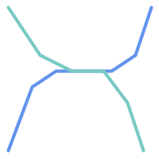 例えば、道路ネットワークを表現する線データセットを考えてみます。点でなく線で交差する全ての道路の辺を識別しなければならないことがあります (ビジネスルールの検証のためならありえます)。この場合、ST_Crossesでは、点で交差する場合しか 2ステップ解決法を示します。まず、空間的にインタセクトしている同路線の二本を抜き出し (ST_Intersects)、実際にインタセクトしている部分を計算 (ST_Intersection)します。次いで、インタセクトしている部分のST_GeometryTypeが 明らかに、より単純でより速い解法が望ましいです。 |
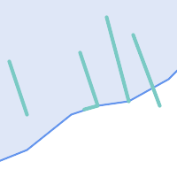 二つ目の例では、湖の境界とインタセクトし、かつ終端が岸に上がっている波止場を見つけます。言い換えると、波止場が湖に含まれるが完全には含まれず、湖の境界線とインタセクトして、波止場の終端が確実に湖内または境界にある場合を指します。空間述語を併用すると求める地物を見つけることができます。
|
この要件は完全なDE-9IM交差行列の計算で満たすことができます。PostGISは、これを行うST_Relate関数を提供しています。次のようにします。
SELECT ST_Relate( 'LINESTRING (1 1, 5 5)',
'POLYGON ((3 3, 3 7, 7 7, 7 3, 3 3))' );
st_relate
-----------
1010F0212
特定の空間関係をテストするには、交差行列パターンを使います。これは、追加シンボル{T,*}で拡張された行列表現です。
T=> インタセクションの次元は空ではないという意味です。すなわち{0,1,2}のいずれかです。*=> 何でも良い
交差行列パターンを使って、特定の空間関係の評価がより簡潔な方法で可能です。交差行列パターンのテストにST_RelateとST_RelateMatchを使うことができます。上に挙げた一つ目の例では、二つのラインがライン内部でインタセクトする交差行列パターンは'1*1***1**'となります。
-- Find road segments that intersect in a line
SELECT a.id
FROM roads a, roads b
WHERE a.id != b.id
AND a.geom && b.geom
AND ST_Relate(a.geom, b.geom, '1*1***1**');二つ目の例です。一本のラインが部分的にポリゴン内部とポリゴン外部とにある場合の交差行列パターンは '102101FF2'となります。
-- Find wharves partly on a lake's shoreline
SELECT a.lake_id, b.wharf_id
FROM lakes a, wharfs b
WHERE a.geom && b.geom
AND ST_Relate(a.geom, b.geom, '102101FF2');空間条件を使用するクエリを構築する時、最良の効果を得るには、空間インデックスが存在する場合に (「空間インデックス」参照)これを確実に使用することが重要です。そのためには、WHERE節やON節で、空間演算子またはインデックス対応関数を使用しなければなりません。
空間演算子には、バウンディングボックス演算子 (最もよく使われるのは&&です。「バウンディングボックス演算子」参照)、および近傍クエリで使用される距離演算子 (最もよく使われるのは<->です。「距離演算子」参照)が含まれます。
インデックス対応関数は、自動的にバウンディングボックス演算子を空間条件に追加します。インデックス対応関数は空間関係述語を含みます。空間関係述語には、ST_Contains, ST_ContainsProperly, ST_CoveredBy, ST_Covers, ST_Crosses, ST_Intersects, ST_Overlaps, ST_Touches, ST_Within, ST_Within, ST_3DIntersectsがあり、距離述語にはST_DWithin, ST_DFullyWithin, ST_3DDFullyWithin, ST_3DDWithin があります。
ST_Distanceといった関数は、演算の最適化のためにはインデックスを使用しません。例えば、次のクエリは、大きなテーブルでは非常に遅くなります。
SELECT geom FROM geom_table WHERE ST_Distance( geom, 'SRID=312;POINT(100000 200000)' ) < 100
このクエリはgeom_tableテーブル内の、(100000, 200000)のポイントから100単位内にある全てのジオメトリを選択します。テーブル内の個々のポイントと指定したポイントとの距離を計算しているため、非常に遅くなります。すなわち、1回のST_Distance()の計算で、テーブルの全ての行について計算することになります。
インデックス対応関数ST_DWithinを使用すると、処理行数を実質的に減らすことができます。次のようにします。
SELECT geom FROM geom_table WHERE ST_DWithin( geom, 'SRID=312;POINT(100000 200000)', 100 )
このクエリは、同じジオメトリを選択しますが、より効率的な方法を取ります。 ST_DWithin()が内部で&&演算子をクエリジオメトリのバウンディングボックスを拡大したボックスで使うことによって可能となります。geom上に空間インデックスが存在するなら、クエリプランナは距離計算の前に対象行数を減らすためにインデックスを使えることを認識します。空間インデックスによって、バウンディングボックスが拡張された範囲とオーバラップするジオメトリだけを検索して、そのため、求めようとする距離内にあるかも知れないジオメトリを検索することができます。その後で、結果集合内のレコードを含めるかどうかを確認するための実際の距離計算が行われます。
詳細情報と例についてはPostGIS Workshopをご覧下さい。
本節の例では、線の道路のテーブルとポリゴンの市区町村境界テーブルとを使います。bc_roadsテーブルの定義は次の通りです。
Column | Type | Description ----------+-------------------+------------------- gid | integer | Unique ID name | character varying | Road Name geom | geometry | Location Geometry (Linestring)
bc_municipalityテーブルの定義は次の通りです。
Column | Type | Description ---------+-------------------+------------------- gid | integer | Unique ID code | integer | Unique ID name | character varying | City / Town Name geom | geometry | Location Geometry (Polygon)
- 5.3.1. 道路の総延長はkm表記でいくらになるでしょう?
- 5.3.2. プリンスジョージ市の大きさはha表記でいくらになるでしょう?
- 5.3.3. 県内で最も大きな面積となる自治体はどこでしょう?
- 5.3.4. 各自治体内に含まれる道路の総延長はいくらでしょう?
- 5.3.5. プリンスジョージ市内の全ての道路からなるテーブルを作ります。
- 5.3.6. ビクトリア州の「ダグラス通り」の長さはkm表記でいくらになるでしょう?
- 5.3.7. 穴を持つ自治体ポリゴンのうち最も大きいのはどれでしょう?
現版のPostgreSQL (9.6を含む)では、TOASTテーブルに従うクエリオプティマイザの弱さに苦しみます。 TOASTテーブルは、(長いテキスト、イメージ、多数の頂点を持つ複合ジオメトリといった)通常のデータページに適合しない、(データサイズという意味では)巨大な値を納めるための「拡張部屋」の一種です。詳細情報は the PostgreSQL Documentation for TOASTをご覧ください。
(高解像度で全てのヨーロッパの国の境界を含むテーブルのような)大きなジオメトリがあるうえ、行がそう多くないテーブルを持つようになると、この問題が出てきます。テーブル自体は小さいのですが、多くのTOASTスペースを使います。例として、テーブル自体は概ね80行で3データページしか使わなくてもTOASTテーブルで8225ページを使うとします。
ここで、ジオメトリ演算子の&&を使って、ほとんどマッチしないようなバウンダリボックスを検索するクエリを出してみます。クエリオプティマイザにはテーブルは3ページ80行しかないように見えます。オプティマイザは、小さなテーブルを順に走査する方がインデックスを使うよりも早いと見積もります。そして、GiSTインデックスは無視すると決めます。通常なら、この見積もりは正しいです。しかし、この場合は&&演算子が全てのジオメトリをディスクから呼び出してバウンディングボックスと比較しなければならなくなり、ゆえに、全てのTOASTページもまた呼び出す必要があります。
この問題に苦しむかどうかを見るには、PostgreSQLの"EXPLAIN ANALYZE"コマンドを使います。詳細情報と技術情報については、PostgreSQL性能メーリングリストのスレッドhttp://archives.postgresql.org/pgsql-performance/2005-02/msg00030.phpをご覧下さい。
また、PostGISの新しいスレッドhttps://lists.osgeo.org/pipermail/postgis-devel/2017-June/026209.htmlもご覧下さい。
PostgreSQLコミュニティでは、TOASTを意識したクエリ見積もりを作ることで、この問題を解決しようとしています。今のところは、二つの応急処置があります。
一つは、クエリプランナにインデックスの使用を強制することです。クエリを発行する前に"SET enable_seqscan TO off;"をサーバに送信します。これは基本的にクエリプランナに対して可能な限り順に走査することを避けるよう強制します。そのためGiSTインデックスを通常使うようになります。しかし、このフラグは接続するたびに設定しなければならず、他のケースにおいてはクエリプランナに誤った見積もりをさせることになるので、 "SET enable_seqscan TO on;"をクエリの後に送信すべきです。
もう一つは、順に走査することをクエリプランナが考える程度に早くすることです。これは、バウンダリボックスの「キャッシュ」を行う追加カラムを作成し、このカラムにマッチさせるようにすることで達成することができます。ここでの例では次のようになります。
SELECT AddGeometryColumn('myschema','mytable','bbox','4326','GEOMETRY','2');
UPDATE mytable SET bbox = ST_Envelope(ST_Force2D(geom));そして、次のように、&&演算子をgeom_columnに対して行っていたものをbboxに変更します。
SELECT geom_column
FROM mytable
WHERE bbox && ST_SetSRID('BOX3D(0 0,1 1)'::box3d,4326);もちろん、mytableの行を変更または追加したら、bboxを「同期」するようにしなければなりません。最もすっきりした方法はトリガです。もしくは、アプリケーションを変更してbboxカラムの現状を保持するか、テーブル更新後にいつもUPDATEクエリを実行するかでも対応できます。
読み込むことがほとんどで、かつほとんどのクエリでひとつのインデックスを使うようなテーブルのために、PostgreSQLはCLUSTERコマンドを提供しています。このコマンドは、全てのデータ行を、インデックス基準にあわせて物理的に再整理するので、二つの性能の利点を生みます。一つは、インデックスの範囲走査のために、データテーブルのシーク回数が劇的に減少することです。もう一つは、いくつかの小さなインデックス間隔に集中する場合には、データ行が分布するデータページがより少なくなることで、より効率的なキャッシュを持つことです (この点は、PostgreSQLマニュアルのCLUSTERコマンドのドキュメントを読むように仕向けられていると感じて下さい)。
しかし、GiSTインデックスは単純にNULL値を無視するため現在のところPostGISのGiSTインデックスのクラスタリングはできず、次のようなエラーメッセージを得ます。
lwgeom=# CLUSTER my_geom_index ON my_table; ERROR: cannot cluster when index access method does not handle null values HINT: You may be able to work around this by marking column "geom" NOT NULL.
ヒントメッセージにある通り、テーブルに"not null"制限を追加することで、この欠陥にとりあえず対応できます。例を示します。
lwgeom=# ALTER TABLE my_table ALTER COLUMN geom SET not null; ALTER TABLE
もちろん、ジオメトリカラムで実際にNULL値が必要な場合、この対応はできません。さらには、制限を追加するには上の方法を使わなければならず、"ALTER TABLE blubb ADD CHECK (geometry is not null);"のようなCHECK制限は使えません。
ときどき、テーブルで3次元、4次元のデータを持つのに、常にOpenGIS準拠のST_AsText()またはST_AsBinary()関数を使ってアクセスして 2次元ジオメトリを出力させるようなことが起きます。内部でST_Force_2d()関数を呼んでいるために発生しますが、これは、大きなジオメトリでは重大なオーバヘッドを誘引することになります。このオーバヘッドを回避するには、一度追加された次元を前もって落とし、かつこれを永続化するのが適当かも知れません。
UPDATE mytable SET geom = ST_Force2D(geom); VACUUM FULL ANALYZE mytable;
AddGeometryColumn()を使ってジオメトリカラムを追加した場合、ジオメトリの次元に関する制限があることに注意してください。この制限を迂回するには、制限の削除が必要になります。geometry_columnsテーブル内のエントリを更新して、その後で制限を再作成することを忘れないで下さい。
大きなテーブルの場合、WHERE節、およびプライマリキー若しくは他の適切な基準によってテーブルの一部へのUPDATEを制限させて、UPDATEの実行の間に単に"VACUUM;"と実行することで、UPDATEをより小さい塊に分割するのが賢いやり方かもしれません。これにより、テンポラリディスクスペースが劇的に減少します。さらに、次元混合のジオメトリを持つ場合、"WHERE dimension(the_geom)>2"によってUPDATEを制限することで、2次元で書かれているジオメトリの再書き込みをスキップさせることができます。
- 7.1. PostGIS Geometry/Geography/Box データ型
- 7.2. テーブル管理関数
- 7.3. ジオメトリ コンストラクタ
- 7.4. ジオメトリアクセサ
- 7.5. ジオメトリエディタ
- 7.6. ジオメトリ検証
- 7.7. 空間参照系関数
- 7.8. ジオメトリ入力
- 7.9. ジオメトリ出力
- 7.10. 演算子
- 7.11. 空間関係関数
- 7.12. 計測関数
- 7.13. 重ね合わせ関数
- 7.14. ジオメトリ処理関数
- 7.15. カバレッジ
- 7.16. アフィン変換
- 7.17. クラスタリング関数
- 7.18. バウンディングボックス関数
- 7.19. 線型参照
- 7.20. トラジェクトリ関数
- 7.21. SFCGAL関数
- 7.22. ロングトランザクション機能
- 7.23. バージョン関数
- 7.24. Grand Unified Custom変数 (GUC)
- 7.25. トラブルシューティング関数
ここで示す関数はPostGISユーザが必要とすると思われる関数です。この他に、一般的なユーザが使わないPostGISオブジェクトに対して求められるサポート関数があります。
| |
PostGISは、既存の名前付け方針からSQL-MM中心の方針への切り替えを開始しています。結果として、ユーザが知っていて愛用している関数の多くが標準空間型 (ST) プレフィクスを使うように名前変更されました。以前の関数はまだ有効ですが、更新された等価な関数があるものについては、この文書の一覧から外しています (訳注: 非推奨関数はPostGIS 2.0では基本的に外れています)。これらの関数は非推奨であり、将来のリリースでは削除されますので、*使わないでください*。 |
このセクションでは、空間データを表現するためにPostGISとともにインストールされたカスタムPostgreSQLデータ型の一覧を示します。
データ型ごとに、型キャストのふるまいが記述されています。型キャストによって、あるデータ型の値が他のデータ型に変換されます。PostgreSQLでは、型を変換するために使われる関数に加えて、ユーザ定義型のキャストのふるまいの定義が可能です。キャストは自動的なふるまいを持つことができ、それによって、関数の引数をその関数が対応する型に自動的に変換できます。
キャストには明示的なふるまいがあります。このふるまいは、キャストはCAST(myval As sometype)またはmyval::sometypeという書式で指定されます。与えられた型に対応していないオーバロード関数を使うときに発生するあいまいなキャストの問題は、明示的なキャストによって回避できます。例えば、関数はbox2dまたはbox3dを受け付けるがジオメトリを受け付けない場合です。ジオメトリはボックス型の両方への自動キャストが可能なため、「あいまいな関数」エラーが発生します。このエラーを防ぐには、求められるボックス型への明示的なキャストを使用します。
全てのデータ型はtextにキャストできます。このため、明示的に指定する必要はありません。
- box2d — 2次元バウンディングボックスを表現する型。
- box3d — 3次元バウンディングボックスを表現する型。
- geometry — 平面座標系を持つ空間地物を表現する型。
- geometry_dump — 複雑なジオメトリの部品を記述するために使われる複合型です。
- geography — 地理座標系 (回転楕円体)座標系を持つ空間地物を表現する型です。
名前
box2d — 2次元バウンディングボックスを表現する型。
説明
box2dは、ジオメトリまたはジオメトリコレクションの、2次元の囲い込んでいるボックスを表現するために使われる空間データ型です。たとえば、集約関数ST_Extentはbox2dインスタンスを返します。
xmin, ymin, xmax, ymaxの値を含む表現。これらは、XとYの範囲の最小値と最大値を示しています。
box2dのテキスト表現はBOX(1 2,5 6)のようになります。
名前
box3d — 3次元バウンディングボックスを表現する型。
説明
box3dは、ジオメトリまたはジオメトリのコレクションを囲む3次元のボックスを表現するために使われるPostGIS空間データ型です。たとえば、集約関数のST_3DExtentはbox3dオブジェクトを返します。
この表現は、xmin, ymin, zmin, xmax, ymax, zmaxです。これらは、X, Y, Zの範囲の最小値と最大値を取ります。
box3dのテキスト表現はBOX3D(1 2 3,5 6 5)のようになります。
名前
geometry — 平面座標系を持つ空間地物を表現する型。
説明
geometryは、平面 (ユークリッド)座標系上の地物を表現するために使われる基本的なPostGISの空間データ型です。
ジオメトリ上の全ての空間演算子は、ジオメトリが所属する空間参照系の単位を使います。
名前
geometry_dump — 複雑なジオメトリの部品を記述するために使われる複合型です。
説明
geometry_dumpは、次のフィールドを持つ複合型です。
geom- ダンプされたジオメトリの要素を表現するジオメトリです。ジオメトリタイプは、使われた関数に依存します。path[]- ダンプされたジオメトリ内におけるgeom要素へのパスを定義する1次整数配列。パス配列は1始まりです (path[1]が最初の要素です)。
ST_Dump*系関数で複雑なジオメトリを構成部品に分解する出力型として使います。
- AddGeometryColumn — ジオメトリカラムを既存のテーブルに追加します。
- DropGeometryColumn — ジオメトリカラムを空間テーブルから除去します。
- DropGeometryTable — テーブルとgeometry_columnsの当該テーブルへの参照の全てを削除します。
- Find_SRID — ジオメトリカラムで定義されているSRIDを返します。
- Populate_Geometry_Columns — ジオメトリカラムが型修飾子で定義されるか、適切な空間制約を持つようにします。
- UpdateGeometrySRID — ジオメトリカラム内の全ての地物のSRIDを更新し、テーブルのメタデータを更新します。
名前
AddGeometryColumn — ジオメトリカラムを既存のテーブルに追加します。
概要
text AddGeometryColumn(varchar table_name, varchar column_name, integer srid, varchar type, integer dimension, boolean use_typmod=true);
text AddGeometryColumn(varchar schema_name, varchar table_name, varchar column_name, integer srid, varchar type, integer dimension, boolean use_typmod=true);
text AddGeometryColumn(varchar catalog_name, varchar schema_name, varchar table_name, varchar column_name, integer srid, varchar type, integer dimension, boolean use_typmod=true);
説明
ジオメトリカラムを既存の属性テーブルに追加します。schema_nameはスキーマ名です。sridはSPATIAL_REF_SYSテーブルのエントリを参照する整数でなければなりません。typeは'POLYGON'や'MULTILINESTRING'といった、ジオメトリタイプを示す文字でなければなりません。指定したスキーマが存在しない (または現在のsearch_pathからは見えない)場合、または指定したSRID、ジオメトリタイプもしくは次元が不正である場合はエラーが投げられます。
| |
Changed: 2.0.0 geometry_columnsがシステムカタログを読むビューになったため、geometry_columnsを更新しないようになりました。デフォルトでは制約を生成せず、PostgreSQLの型修飾子を使います。この関数によるWGS 84のPOINTカラムの構築と Changed: 2.0.0 制約を使う必要がある場合には、 |
| |
Changed: 2.0.0 ビューについては、geometry_columnsへの手動登録はできなくなりました。しかし、typmodテーブルジオメトリに対して構築されていて、かつラッパ関数が無いビューは、親テーブルカラムのtypmodの挙動を継承するので、正しく登録されます。他のジオメトリを出力するジオメトリ関数を使うビューについては、ビューのジオメトリカラムが正しく登録されるようにするため、typmodジオメトリへのキャストが必要です。「手動でジオメトリカラムをgeometry_columnsに登録する」を参照して下さい。 |
 このメソッドはOGC Simple Features Implementation Specification for SQL 1.1の実装です。
このメソッドはOGC Simple Features Implementation Specification for SQL 1.1の実装です。
この関数は3次元に対応し、Z値を削除しません。
このメソッドは曲線ストリングと曲線に対応しています。
Enhanced: 2.0.0 use_typmod引数が導入されました。デフォルトでは制約を基にしたものでなくtypmodジオメトリカラムが生成されます。
例
-- Create schema to hold data
CREATE SCHEMA my_schema;
-- Create a new simple PostgreSQL table
CREATE TABLE my_schema.my_spatial_table (id serial);
-- Describing the table shows a simple table with a single "id" column.
postgis=# \d my_schema.my_spatial_table
Table "my_schema.my_spatial_table"
Column | Type | Modifiers
--------+---------+-------------------------------------------------------------------------
id | integer | not null default nextval('my_schema.my_spatial_table_id_seq'::regclass)
-- Add a spatial column to the table
SELECT AddGeometryColumn ('my_schema','my_spatial_table','geom',4326,'POINT',2);
-- Add a point using the old constraint based behavior
SELECT AddGeometryColumn ('my_schema','my_spatial_table','geom_c',4326,'POINT',2, false);
--Add a curvepolygon using old constraint behavior
SELECT AddGeometryColumn ('my_schema','my_spatial_table','geomcp_c',4326,'CURVEPOLYGON',2, false);
-- Describe the table again reveals the addition of a new geometry columns.
\d my_schema.my_spatial_table
addgeometrycolumn
-------------------------------------------------------------------------
my_schema.my_spatial_table.geomcp_c SRID:4326 TYPE:CURVEPOLYGON DIMS:2
(1 row)
Table "my_schema.my_spatial_table"
Column | Type | Modifiers
----------+----------------------+-------------------------------------------------------------------------
id | integer | not null default nextval('my_schema.my_spatial_table_id_seq'::regclass)
geom | geometry(Point,4326) |
geom_c | geometry |
geomcp_c | geometry |
Check constraints:
"enforce_dims_geom_c" CHECK (st_ndims(geom_c) = 2)
"enforce_dims_geomcp_c" CHECK (st_ndims(geomcp_c) = 2)
"enforce_geotype_geom_c" CHECK (geometrytype(geom_c) = 'POINT'::text OR geom_c IS NULL)
"enforce_geotype_geomcp_c" CHECK (geometrytype(geomcp_c) = 'CURVEPOLYGON'::text OR geomcp_c IS NULL)
"enforce_srid_geom_c" CHECK (st_srid(geom_c) = 4326)
"enforce_srid_geomcp_c" CHECK (st_srid(geomcp_c) = 4326)
-- geometry_columns view also registers the new columns --
SELECT f_geometry_column As col_name, type, srid, coord_dimension As ndims
FROM geometry_columns
WHERE f_table_name = 'my_spatial_table' AND f_table_schema = 'my_schema';
col_name | type | srid | ndims
----------+--------------+------+-------
geom | Point | 4326 | 2
geom_c | Point | 4326 | 2
geomcp_c | CurvePolygon | 4326 | 2
名前
DropGeometryColumn — ジオメトリカラムを空間テーブルから除去します。
概要
text DropGeometryColumn(varchar table_name, varchar column_name);
text DropGeometryColumn(varchar schema_name, varchar table_name, varchar column_name);
text DropGeometryColumn(varchar catalog_name, varchar schema_name, varchar table_name, varchar column_name);
説明
ジオメトリカラムを空間テーブルから除去します。schema_nameはgeometry_columnsテーブルの該当行のf_table_schemaフィールドと一致しなければならないことにご注意ください。
このメソッドはOGC Simple Features Implementation Specification for SQL 1.1の実装です。
この関数は3次元に対応し、Z値を削除しません。
このメソッドは曲線ストリングと曲線に対応しています。
| |
Changed: 2.0.0 この関数は後方互換のためのものです。geometry_columnsは現在はシステムカタログに対するビューですので、他のテーブルのカラムと同じように |
例
SELECT DropGeometryColumn ('my_schema','my_spatial_table','geom');
----RESULT output ---
dropgeometrycolumn
------------------------------------------------------
my_schema.my_spatial_table.geom effectively removed.
-- In PostGIS 2.0+ the above is also equivalent to the standard
-- the standard alter table. Both will deregister from geometry_columns
ALTER TABLE my_schema.my_spatial_table DROP column geom;
名前
DropGeometryTable — テーブルとgeometry_columnsの当該テーブルへの参照の全てを削除します。
概要
boolean DropGeometryTable(varchar table_name);
boolean DropGeometryTable(varchar schema_name, varchar table_name);
boolean DropGeometryTable(varchar catalog_name, varchar schema_name, varchar table_name);
説明
テーブルとgeometry_columnsの当該テーブルへの参照の全てを削除します。スキーマ対応版PostgreSQLではスキーマが与えられない場合はcurrent_schema()を使います。
| |
Changed: 2.0.0で この関数は後方互換のためのものです。geometry_columnsは現在はシステムカタログに対するビューですので、他のテーブルのカラムと同じように |
名前
Find_SRID — ジオメトリカラムで定義されているSRIDを返します。
概要
integer Find_SRID(varchar a_schema_name, varchar a_table_name, varchar a_geomfield_name);
説明
指定したジオメトリカラムSRID整数値をGEOMETRY_COLUMNSテーブルの探索によって返します。ジオメトリカラムが正しく追加されていない (例: AddGeometryColumn関数)場合には、この関数は動作しません。
名前
Populate_Geometry_Columns — ジオメトリカラムが型修飾子で定義されるか、適切な空間制約を持つようにします。
概要
text Populate_Geometry_Columns(boolean use_typmod=true);
int Populate_Geometry_Columns(oid relation_oid, boolean use_typmod=true);
説明
ジオメトリカラムが適切な型修飾子を持つか、geometry_columnsビュー内で正しく登録されていることを確実にするために空間制約を持つようにします。デフォルトでは、型修飾子を持たないすべてのジオメトリカラムを型修飾子を持つカラムに変換します。
後方互換のためと、それぞれの子テーブルが異なるジオメトリタイプを持つテーブル継承といった空間テーブルにとって必要があるためとの二つの理由から、古いCHECK制約の挙動がなお有効になっています。古い挙動が必要な場合には、新しいオプション引数でuse_typmod=falseを渡す必要があります。これが実行されると、型修飾子なしのジオメトリカラムが生成され、三つの制約が定義されます。特に、これは、テーブルに属するすべてのジオメトリカラムが少なくとも三つの制約を持つことを意味します。
enforce_dims_the_geom- あらゆるジオメトリが同じ次元を持つことを確実にします (ST_NDimsをご覧下さい)enforce_geotype_the_geom- あらゆるジオメトリが同じ型を持つことを確実にします (GeometryTypeをご覧下さい)enforce_srid_the_geom- あらゆるジオメトリが同じ投影法になることを確実にします (ST_SRIDをご覧下さい)
テーブルにoidがある場合には、この関数はテーブルのジオメトリカラム全てについて、SRIDと次元とジオメトリタイプを判定して、必要に応じて制約を追加しようとします。 成功した場合には、geometry_columnsに適切な行が追加され、その他の場合には、例外が捕まえられ、問題を記述したエラーが通知されます。
ビューのoidがある場合、テーブルの場合と同じで、SIRDと次元とジオメトリタイプを判定して、適切なエントリをgeometry_columnsテーブルに挿入しますが、制約の追加はされません。
パラメタの無い形式は、geometry_columnsの行を削除したうえで、全ての空間テーブルと空間ビューについて再挿入し、適切な空間制約をテーブルに追加する、パラメタ付きの形式の単純なラッパです。パラメタが無い形式は、検出したジオメトリカラムの数の要約とgeometry_columnsに挿入された行の数とを返します。パラメタ付きの形式は単純にgeometry_columnsに挿入された行の数を返します。
Availability: 1.4.0
Changed: 2.0.0 デフォルトでは、ジオメトリタイプの制限について、制約を確認する代わりに型修飾子を使います。新しいuse_typmodをFALSEに設定して使うことで、制約確認を使用することができます。
Enhanced: 2.0.0 use_typmod任意引数が導入されました。カラムが型修飾子で生成されるか制約チェックで作られるかの制御ができます。
例
CREATE TABLE public.myspatial_table(gid serial, geom geometry);
INSERT INTO myspatial_table(geom) VALUES(ST_GeomFromText('LINESTRING(1 2, 3 4)',4326) );
-- This will now use typ modifiers. For this to work, there must exist data
SELECT Populate_Geometry_Columns('public.myspatial_table'::regclass);
populate_geometry_columns
--------------------------
1
\d myspatial_table
Table "public.myspatial_table"
Column | Type | Modifiers
--------+---------------------------+---------------------------------------------------------------
gid | integer | not null default nextval('myspatial_table_gid_seq'::regclass)
geom | geometry(LineString,4326) |
-- This will change the geometry columns to use constraints if they are not typmod or have constraints already.
--For this to work, there must exist data
CREATE TABLE public.myspatial_table_cs(gid serial, geom geometry);
INSERT INTO myspatial_table_cs(geom) VALUES(ST_GeomFromText('LINESTRING(1 2, 3 4)',4326) );
SELECT Populate_Geometry_Columns('public.myspatial_table_cs'::regclass, false);
populate_geometry_columns
--------------------------
1
\d myspatial_table_cs
Table "public.myspatial_table_cs"
Column | Type | Modifiers
--------+----------+------------------------------------------------------------------
gid | integer | not null default nextval('myspatial_table_cs_gid_seq'::regclass)
geom | geometry |
Check constraints:
"enforce_dims_geom" CHECK (st_ndims(geom) = 2)
"enforce_geotype_geom" CHECK (geometrytype(geom) = 'LINESTRING'::text OR geom IS NULL)
"enforce_srid_geom" CHECK (st_srid(geom) = 4326)名前
UpdateGeometrySRID — ジオメトリカラム内の全ての地物のSRIDを更新し、テーブルのメタデータを更新します。
概要
text UpdateGeometrySRID(varchar table_name, varchar column_name, integer srid);
text UpdateGeometrySRID(varchar schema_name, varchar table_name, varchar column_name, integer srid);
text UpdateGeometrySRID(varchar catalog_name, varchar schema_name, varchar table_name, varchar column_name, integer srid);
説明
ジオメトリカラム内の全ての地物のSRIDを更新し、制約を更新し、geometry_columnsの参照を更新します。カラムが型定義で強制されているなら、型定義は変更されます。ご注意: スキーマ対応版PostgreSQLでは、スキーマが提供されていない場合には、current_schema()を使用します。
この関数は3次元に対応し、Z値を削除しません。
このメソッドは曲線ストリングと曲線に対応しています。
例
ジオメトリを、EWKT書式を使って、SRIDを持つ道路テーブルに挿入します。
COPY roads (geom) FROM STDIN;
SRID=4326;LINESTRING(0 0, 10 10)
SRID=4326;LINESTRING(10 10, 15 0)
\.
これにより道路テーブルが、以前がどんなSRIDであっても、4326に変更されます。
SELECT UpdateGeometrySRID('roads','geom',4326);上述の例と、次のDDL手続き (訳注: DDLはData Definition Languageの略で、データ構造の操作を行う言語を指し、この場合は CREATE TABLEやALTER TABLE等が該当します)とは同じです。
ALTER TABLE roads
ALTER COLUMN geom TYPE geometry(MULTILINESTRING, 4326)
USING ST_SetSRID(geom,4326);ロードしたデータの変換座標系が誤りである (またはunknownになっている)けれどもWebメルカトルに一度の処理で変換したい場合、DDLで実行可能ですが、PostGIS管理関数では一度の処理ですむ等価なものはありません。
ALTER TABLE roads ALTER COLUMN geom TYPE geometry(MULTILINESTRING, 3857) USING ST_Transform(ST_SetSRID(geom,4326),3857) ;
- ST_Collect — ジオメトリの集合からジオメトリコレクションまたはマルチ系ジオメトリを生成します。
- ST_LineFromMultiPoint — マルチポイントジオメトリからラインストリングを生成します。
- ST_MakeEnvelope — 座標値の最小値と最大値から矩形ポリゴンを生成します。
- ST_MakeLine — POINT、MULTIPOINT、LINESTRINGからLINESTRINGを生成します。
- ST_MakePoint — 2次元、3次元 (XYZ)、4次元のポイントを生成します。
- ST_MakePointM — X, Y, M値からポイントを生成します。
- ST_MakePolygon — 外殻と穴のリストからポリゴンを生成します。
- ST_Point — X, YとSRIDの値からポイントを生成します。
- ST_PointZ — X, Y, ZとSRIDの値からポイントを生成します。
- ST_PointM — X, Y, MとSRIDの値からポイントを生成します。
- ST_PointZM — X, Y, Z, MとSRIDの値からポイントを生成します。
- ST_Polygon — ラインストリングから指定したSRIDを持つポリゴンを生成します。
- ST_TileEnvelope — Webメルカトル (SRID:3857)上で XYZタイルを使った矩形ポリゴンを生成します。
- ST_HexagonGrid — 引数ジオメトリの境界を完全にカバーする六角形とセルインデックスを返します。
- ST_Hexagon — 与えられたエッジサイズと六角形グリッド空間内のセル座標を使って単一の六角形を返します。
- ST_SquareGrid — 引数ジオメトリの境界を完全にカバーするグリッド正方形とセルインデックスを返します。
- ST_Square — 与えられたエッジサイズと六角形グリッド空間内のセル座標を使って単一の正方形を返します。
- ST_Letters — デフォルトの開始位置を原点とし、デフォルトの高さを100とする、ジオメトリとして描画された文字を返します。
名前
ST_Collect — ジオメトリの集合からジオメトリコレクションまたはマルチ系ジオメトリを生成します。
概要
geometry ST_Collect(geometry g1, geometry g2);
geometry ST_Collect(geometry[] g1_array);
geometry ST_Collect(geometry set g1field);
説明
ジオメトリを集めてジオメトリコレクションにします。結果はマルチ系ジオメトリかジオメトリコレクションかのいずれかで、この差は、入力ジオメトリのタイプが同じか異なるか(均質か不均質か)で決まります。入力ジオメトリはコレクション内で変更されることはありません。
1番目の形式: 二つの入力ジオメトリを受け付ける。
2番目の形式: ジオメトリの配列を受け付ける。
3番目の形式: ジオメトリの行集合を受け付ける集約関数。
| |
入力ジオメトリのいずれかがコレクション (マルチ系ジオメトリまたはジオメトリコレクション)の場合には、ST_Collectはジオメトリコレクションを返します (入れ子になったコレクションを含む唯一のタイプであるため)。これを避けるには、サブクエリでST_Dump を使い、入力コレクションを分解できない要素にまで分解します (下に例があります)。 |
| |
ST_CollectとST_Unionは似ているように見えますが、実際には全く異なる処理を行います。ST_Collectは入力ジオメトリを変更せずにコレクションにする集約関数です。ST_Unionは、オーバラップしている時は幾何学的に併合し、インタセクトするところでラインストリングを分割します。境界をディゾルブするときには単一のジオメトリを返す可能性があります。 |
Availability: 1.4.0 - ST_Collect(geometry)が導入されました。ST_Collectがより多くのジオメトリをより早く扱えるよう強化されました。
この関数は3次元に対応し、Z値を削除しません。
このメソッドは曲線ストリングと曲線に対応しています。
例 - 二つ入力を引数に取る形式
2次元ポイントを収集します。
SELECT ST_AsText( ST_Collect( ST_GeomFromText('POINT(1 2)'),
ST_GeomFromText('POINT(-2 3)') ));
st_astext
----------
MULTIPOINT((1 2),(-2 3))
2次元ポイントの収集
SELECT ST_AsEWKT( ST_Collect( ST_GeomFromEWKT('POINT(1 2 3)'),
ST_GeomFromEWKT('POINT(1 2 4)') ) );
st_asewkt
-------------------------
MULTIPOINT(1 2 3,1 2 4)
曲線を収集します。
SELECT ST_AsText( ST_Collect( 'CIRCULARSTRING(220268 150415,220227 150505,220227 150406)',
'CIRCULARSTRING(220227 150406,2220227 150407,220227 150406)'));
st_astext
------------------------------------------------------------------------------------
MULTICURVE(CIRCULARSTRING(220268 150415,220227 150505,220227 150406),
CIRCULARSTRING(220227 150406,2220227 150407,220227 150406))
例 - 配列を引数に取る形式
サブクエリから配列を生成するコンストラクタの使用。
SELECT ST_Collect( ARRAY( SELECT geom FROM sometable ) );
値から配列を生成するコンストラクタの使用。
SELECT ST_AsText( ST_Collect(
ARRAY[ ST_GeomFromText('LINESTRING(1 2, 3 4)'),
ST_GeomFromText('LINESTRING(3 4, 4 5)') ] )) As wktcollect;
--wkt collect --
MULTILINESTRING((1 2,3 4),(3 4,4 5))
名前
ST_LineFromMultiPoint — マルチポイントジオメトリからラインストリングを生成します。
概要
geometry ST_LineFromMultiPoint(geometry aMultiPoint);
説明
マルチポイントジオメトリからラインストリングを生成します。
ポイントまたはラインストリングの入力からラインを生成するにはST_MakeLineを使います。
この関数は3次元に対応し、Z値を削除しません。
名前
ST_MakeEnvelope — 座標値の最小値と最大値から矩形ポリゴンを生成します。
概要
geometry ST_MakeEnvelope(float xmin, float ymin, float xmax, float ymax, integer srid=unknown);
説明
XとYの最小値と最大値から矩形ポリゴンを生成します。入力値はSRIDで指定された空間参照系に合わせなければなりません。SRIDが指定されていない場合には、不明な空間参照系 (SRID 0)が使われます。
Availability: 1.5
Enhanced: 2.0 SRID指定なしでエンベロープを指定できるようになりました。
名前
ST_MakeLine — POINT、MULTIPOINT、LINESTRINGからLINESTRINGを生成します。
概要
geometry ST_MakeLine(geometry geom1, geometry geom2);
geometry ST_MakeLine(geometry[] geoms_array);
geometry ST_MakeLine(geometry set geoms);
説明
ポイント、マルチポイントまたはラインストリングのジオメトリの点を含むラインストリングを生成します。他のジオメトリではエラーが発生します。
1番目の形式: 二つの入力ジオメトリを受け付ける。
2番目の形式: ジオメトリの配列を受け付ける。
形式3: ジオメトリの行集合を受け付ける約関数。入力ジオメトリの順序を確実にするには、関数呼び出しでORDER BYを使うか、ORDER BY節を持つサブクエリを使います。
入力ラインストリングの開始位置で重複するノードは単一のポイントに減らされます。ポイントとマルチポイントの入力での重複するポイントは減らされません。出力ラインストリングから重複ポイントを削除するにはST_RemoveRepeatedPointsが使えます。
この関数は3次元に対応し、Z値を削除しません。
Availability: 2.3.0 - MULTIPOINT入力要素への対応が導入されました
Availability: 2.0.0 - LINESTRING入力要素への対応が導入されました
Availability: 1.4.0 - ST_MakeLine(geomarray)が導入されました。ST_MakeLine集約関数はより多くのポイントをより早く扱うための強化が施されています。
例: 二つ入力を引数に取る形式
二つのポイントで構成されるラインを生成します。
SELECT ST_AsText( ST_MakeLine(ST_Point(1,2), ST_Point(3,4)) );
st_astext
---------------------
LINESTRING(1 2,3 4)
二つの3次元ポイントから3次元ラインを生成します。
SELECT ST_AsEWKT( ST_MakeLine(ST_MakePoint(1,2,3), ST_MakePoint(3,4,5) ));
st_asewkt
-------------------------
LINESTRING(1 2 3,3 4 5)
二つの接続されていないラインストリングからラインを生成します。
select ST_AsText( ST_MakeLine( 'LINESTRING(0 0, 1 1)', 'LINESTRING(2 2, 3 3)' ) );
st_astext
-----------------------------
LINESTRING(0 0,1 1,2 2,3 3)
例: 配列を引数に取る形式
並べ替えを伴うサブクエリで作られた配列からラインを生成します。
SELECT ST_MakeLine( ARRAY( SELECT ST_Centroid(geom) FROM visit_locations ORDER BY visit_time) );
3次元ポイントの配列から3次元ラインを生成します。
SELECT ST_AsEWKT( ST_MakeLine(
ARRAY[ ST_MakePoint(1,2,3), ST_MakePoint(3,4,5), ST_MakePoint(6,6,6) ] ));
st_asewkt
-------------------------
LINESTRING(1 2 3,3 4 5,6 6 6)
例: 集約関数の形式
この例ではGPSトラックの集合からポイントの時間ベースのシーケンスを問い合わせています。結果ジオメトリは、GPSトラックの移動順ポイントで構成されるラインストリングです。
ORDER BY節を使うことで、正しい順序のLINESTRINGが生成できます。
SELECT gps.track_id, ST_MakeLine(gps.geom ORDER BY gps_time) As geom
FROM gps_points As gps
GROUP BY track_id;PostgreSQL 9より前の版では、サブクエリでの順序付けを使うことができます。ただし、クエリプランでサブクエリの並び順が尊重されない場合があります。
SELECT gps.track_id, ST_MakeLine(gps.geom) As geom
FROM ( SELECT track_id, gps_time, geom
FROM gps_points ORDER BY track_id, gps_time ) As gps
GROUP BY track_id;名前
ST_MakePoint — 2次元、3次元 (XYZ)、4次元のポイントを生成します。
概要
geometry ST_MakePoint(float x, float y);
geometry ST_MakePoint(float x, float y, float z);
geometry ST_MakePoint(float x, float y, float z, float m);
説明
2次元、3次元 (XYZ)、4次元 (XYZM)のポイントを生成します。
XYM座標を持つポイントを作るにはST_MakePointMを使います。
OGC準拠ではありませんが、ST_MakePointはST_GeomFromTextやST_PointFromTextより高速かつ正確です。また、簡単に数値の座標値を使用できます。
| |
地理座標系について、 |
この関数は3次元に対応し、Z値を削除しません。
例
--Return point with unknown SRID SELECT ST_MakePoint(-71.1043443253471, 42.3150676015829); --Return point marked as WGS 84 long lat SELECT ST_SetSRID(ST_MakePoint(-71.1043443253471, 42.3150676015829),4326); --Return a 3D point (e.g. has altitude) SELECT ST_MakePoint(1, 2,1.5); --Get z of point SELECT ST_Z(ST_MakePoint(1, 2,1.5)); result ------- 1.5
名前
ST_MakePointM — X, Y, M値からポイントを生成します。
概要
geometry ST_MakePointM(float x, float y, float m);
説明
X, Y, M (Measure) 値からポイントを生成します。
XY, XYZ, XYZM座標のポイントを作るにはST_MakePointを使います。
| |
地理座標系について、 |
例
不明なSRIDでのポイントを生成します。
SELECT ST_AsEWKT( ST_MakePointM(-71.1043443253471, 42.3150676015829, 10) );
st_asewkt
-----------------------------------------------
POINTM(-71.1043443253471 42.3150676015829 10)
WGS 84地理座標系のM値を持つポイントの生成。
SELECT ST_AsEWKT( ST_SetSRID( ST_MakePointM(-71.104, 42.315, 10), 4326));
st_asewkt
---------------------------------------------------------
SRID=4326;POINTM(-71.104 42.315 10)
生成したポイントのM値を取得します。
SELECT ST_M( ST_MakePointM(-71.104, 42.315, 10) ); result ------- 10
名前
ST_MakePolygon — 外殻と穴のリストからポリゴンを生成します。
概要
geometry ST_MakePolygon(geometry linestring);
geometry ST_MakePolygon(geometry outerlinestring, geometry[] interiorlinestrings);
説明
与えられた外殻と任意指定の穴の配列で掲載されるポリゴンを生成します。入力ジオメトリは閉じたラインストリング (リング)でなければなりません。
形式1: 一つの外殻のラインストリングを受け付けます。
形式2: 外殻のラインストリングと内部 (穴)のラインストリングの配列とを受け付けます。ジオメトリ配列はPostgreSQLのarray_agg(), ARRAY[], ARRAY()コンストラクタを使います。
| |
この関数はマルチラインストリングを受け付けません。ラインストリングの生成にはST_LineMergeを使用します。また、ラインストリングを抽出するにはST_Dumpを使用します。 |
この関数は3次元に対応し、Z値を削除しません。
例: 単一入力の形式
2次元ラインストリングからポリゴンを生成します。
SELECT ST_MakePolygon( ST_GeomFromText('LINESTRING(75 29,77 29,77 29, 75 29)'));
開いたラインストリングを閉じるためにST_StartPointとST_AddPointを使用したうえでポリゴンを生成します。
SELECT ST_MakePolygon( ST_AddPoint(foo.open_line, ST_StartPoint(foo.open_line)) )
FROM (
SELECT ST_GeomFromText('LINESTRING(75 29,77 29,77 29, 75 29)') As open_line) As foo;
3次元ラインストリングからポリゴンを生成します。
SELECT ST_AsEWKT( ST_MakePolygon( 'LINESTRING(75.15 29.53 1,77 29 1,77.6 29.5 1, 75.15 29.53 1)')); st_asewkt ----------- POLYGON((75.15 29.53 1,77 29 1,77.6 29.5 1,75.15 29.53 1))
M値を持つラインストリングからポリゴンを生成します。
SELECT ST_AsEWKT( ST_MakePolygon( 'LINESTRINGM(75.15 29.53 1,77 29 1,77.6 29.5 2, 75.15 29.53 2)' )); st_asewkt ---------- POLYGONM((75.15 29.53 1,77 29 1,77.6 29.5 2,75.15 29.53 2))
例: 内部の穴を持つ外殻の形式
余分な穴を持つドーナツポリゴンを生成します。
SELECT ST_MakePolygon( ST_ExteriorRing( ST_Buffer(ring.line,10)),
ARRAY[ ST_Translate(ring.line, 1, 1),
ST_ExteriorRing(ST_Buffer(ST_Point(20,20),1)) ]
)
FROM (SELECT ST_ExteriorRing(
ST_Buffer(ST_Point(10,10),10,10)) AS line ) AS ring;
湖を表現する穴を持つ県の境界の集合を生成します。入力は県ポリゴン/マルチポリゴンのテーブルと水涯線のラインストリングのテーブルです。湖を構成するラインはST_IsClosedで判定します。県を示すラインはST_Boundaryで抽出します。ST_MakePolygonが必要ですので、境界をST_LineMergeで単一のLINESTRINGに強制します(県が二つ以上の領域を持つか島を持つ場合には、不正なポリゴンを生成します)。LEFT JOINを使って、湖の無い県を含む全ての県が返ることを保証しています。
| |
NULL配列をST_MakePolygonに渡すとNULLが返るので、CASE式を使っています。 |
SELECT p.gid, p.province_name,
CASE WHEN array_agg(w.geom) IS NULL
THEN p.geom
ELSE ST_MakePolygon( ST_LineMerge(ST_Boundary(p.geom)),
array_agg(w.geom)) END
FROM
provinces p LEFT JOIN waterlines w
ON (ST_Within(w.geom, p.geom) AND ST_IsClosed(w.geom))
GROUP BY p.gid, p.province_name, p.geom;
他には、相関サブクエリと行集合を配列に変換するARRAY()コンストラクタとを使う手法があります。
SELECT p.gid, p.province_name,
CASE WHEN EXISTS( SELECT w.geom
FROM waterlines w
WHERE ST_Within(w.geom, p.geom)
AND ST_IsClosed(w.geom))
THEN ST_MakePolygon(
ST_LineMerge(ST_Boundary(p.geom)),
ARRAY( SELECT w.geom
FROM waterlines w
WHERE ST_Within(w.geom, p.geom)
AND ST_IsClosed(w.geom)))
ELSE p.geom
END AS geom
FROM provinces p;
名前
ST_Point — X, YとSRIDの値からポイントを生成します。
概要
geometry ST_Point(float x, float y);
geometry ST_Point(float x, float y, integer srid=unknown);
説明
与えられたXとYの座標値からポイントを返します。これは、XとYを取るSQL-MMのST_MakePointと同等です。
| |
地理座標系について、 |
Enhanced: 3.2.0 SRID任意引数が追加されました。古いバージョンでは、ジオメトリにSRIDを与えるにはST_SetSRIDを併用しなければなりませんでした。
このメソッドはSQL/MM仕様の実装です。
SQL-MM 3: 6.1.2
例: ジオメトリ
SELECT ST_Point( -71.104, 42.315);
SELECT ST_SetSRID(ST_Point( -71.104, 42.315),4326);
New in 3.2.0: SRIDが指定できます
SELECT ST_Point( -71.104, 42.315, 4326);
例: ジオグラフィ
PostGIS 3.2より前の構文
SELECT CAST( ST_SetSRID(ST_Point( -71.104, 42.315), 4326) AS geography);
3.2ではSRIDを含むことができます
SELECT CAST( ST_Point( -71.104, 42.315, 4326) AS geography);
PostgreSQLはキャストの簡略表記として::を提供しています
SELECT ST_Point( -71.104, 42.315, 4326)::geography;
ポイントの座標が地理座標系 (WGS84等)でない場合には、ジオグラフィにキャストする前に座標系変換を行う必要があります。この例では、ペンシルバニア州平面フィート (SRID 2273)上のポイントをWGS84 (SRID 4326)に座標系変換を行っています。
SELECT ST_Transform(ST_SetSRID( ST_Point( 3637510, 3014852 ), 2273), 4326)::geography;
名前
ST_PointZ — X, Y, ZとSRIDの値からポイントを生成します。
概要
geometry ST_PointZ(float x, float y, float z, integer srid=unknown);
説明
与えたX,Y,Z座標値を持ち、与えた場合はSRID値も持つポイントを生成します。
Enhanced: 3.2.0 SRID任意引数が追加されました。古いバージョンでは、ジオメトリにSRIDを与えるにはST_SetSRIDを併用しなければなりませんでした。
名前
ST_PointM — X, Y, MとSRIDの値からポイントを生成します。
概要
geometry ST_PointM(float x, float y, float m, integer srid=unknown);
説明
与えたX,Y,M座標値を持ち、与えた場合はSRID値も持つポイントを生成します。
Enhanced: 3.2.0 SRID任意引数が追加されました。古いバージョンでは、ジオメトリにSRIDを与えるにはST_SetSRIDを併用しなければなりませんでした。
名前
ST_PointZM — X, Y, Z, MとSRIDの値からポイントを生成します。
概要
geometry ST_PointZM(float x, float y, float z, float m, integer srid=unknown);
説明
与えたX,Y,Z,M座標値を持ち、与えた場合はSRID値も持つポイントを生成します。
Enhanced: 3.2.0 SRID任意引数が追加されました。古いバージョンでは、ジオメトリにSRIDを与えるにはST_SetSRIDを併用しなければなりませんでした。
名前
ST_Polygon — ラインストリングから指定したSRIDを持つポリゴンを生成します。
概要
geometry ST_Polygon(geometry lineString, integer srid);
説明
与えられたラインストリングから構築し、sridから空間参照系を指定したポリゴンを返します。
ST_PolygonはST_MakePolygonの形式1の、SRIDの設定を追加したものに似ています。
穴を持つポリゴンを生成するには、ST_MakePolygonの形式2を使い、ST_SetSRIDを使います。
| |
この関数はマルチラインストリングを受け付けません。ラインストリングの生成にはST_LineMergeを使用します。また、ラインストリングを抽出するにはST_Dumpを使用します。 |
このメソッドはOGC Simple Features Implementation Specification for SQL 1.1の実装です。
このメソッドはSQL/MM仕様の実装です。
SQL-MM 3: 8.3.2
この関数は3次元に対応し、Z値を削除しません。
例
2次元ポリゴンを生成します。
SELECT ST_AsText( ST_Polygon('LINESTRING(75 29, 77 29, 77 29, 75 29)'::geometry, 4326) );
-- result --
POLYGON((75 29, 77 29, 77 29, 75 29))
3次元ポリゴンを生成します。
SELECT ST_AsEWKT( ST_Polygon( ST_GeomFromEWKT('LINESTRING(75 29 1, 77 29 2, 77 29 3, 75 29 1)'), 4326) );
-- result --
SRID=4326;POLYGON((75 29 1, 77 29 2, 77 29 3, 75 29 1))
概要
geometry ST_TileEnvelope(integer tileZoom, integer tileX, integer tileY, geometry bounds=SRID=3857;LINESTRING(-20037508.342789 -20037508.342789,20037508.342789 20037508.342789), float margin=0.0);
説明
XYZ tile systemでのタイルの範囲を示す長方形ポリゴンを生成します。タイルはズームレベルを示すZと、そのレベルでのタイルインデックスを示すX, Yで指定します。ST_AsMVTGeomでジオメトリをMVTタイルの座標空間に変換のために必要なタイル境界を定義するために使います。
デフォルトでは、タイルエンベロープの座標系はWeb Mercator (SRID: 3857)で、標準的なウェブメルカトルの範囲 (-20037508.342789, 20037508.342789)を取ります。これがMVTタイルで使用される最も標準的な座標系です。任意パラメータboundsを使うと、あらゆる座標系のタイルを生成することができます。SRIDを持ち、ズームレベル0の時の、ジオメトリのXYZタイルシステムが内側に存在する矩形を示すジオメトリを与えます。
任意パラメータmarginは、タイルを与えられた割合だけ拡張するために使います。たとえばmargin=0.125と指定すると、12.5%拡張します。これは、ST_AsMVTGeomで使われている、タイルサイズが4096の時にbuffer=512と指定するのと等価です。タイル表示領域の外側にバッファを生成するために使いますが、この範囲はタイル描画に影響を与えます。たとえば、市名 (ポイント)を一つのタイルの端付近にあっても、そのラベルが二つのタイルで描画されるべきです。拡張したタイルをクエリで使うと、両方のタイルに市名のポイントが含まれることになります。負数を指定すると反対に縮小します。-0.5より小さい値は、タイルを完全に消すことになるので、許可されません。ST_AsMVTGeomと併用する時はマージンを指定しないでください。ST_AsMVTの例をご覧下さい。
Enhanced: 3.1.0 marginパラメータが追加されました。
Availability: 3.0.0
例: タイルエンベロープの構築
SELECT ST_AsText( ST_TileEnvelope(2, 1, 1) );
st_astext
------------------------------
POLYGON((-10018754.1713945 0,-10018754.1713945 10018754.1713945,0 10018754.1713945,0 0,-10018754.1713945 0))
SELECT ST_AsText( ST_TileEnvelope(3, 1, 1, ST_MakeEnvelope(-180, -90, 180, 90, 4326) ) );
st_astext
------------------------------------------------------
POLYGON((-135 45,-135 67.5,-90 67.5,-90 45,-135 45))
名前
ST_HexagonGrid — 引数ジオメトリの境界を完全にカバーする六角形とセルインデックスを返します。
概要
setof record ST_HexagonGrid(float8 size, geometry bounds);
説明
平面の六角形タイルの概念から始まります。(地球の六角形タイルではなくH3タイルスキーマではありません)。平面 SRS とエッジサイズを与えると、SRS の原点から始まり、平面の一意な六角形のタイル、すなわち Tiling(SRS, Size)が一つ存在します。この関数は、指定されたTiling(SRS, Size)内の六角形が指定された境界を覆っているかどうかという質問に答えます。
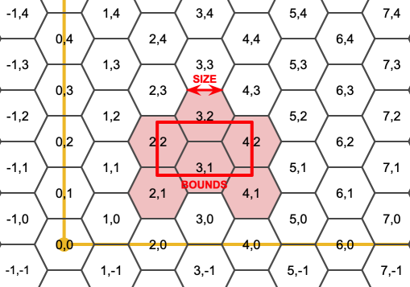
出力六角形のSRSは境界ジオメトリのSRSです。
六角形の辺の長さを2倍または3倍にすることで、元のタイルに適合する新しい親タイルが生成されます。残念ながら子タイルが完全に親タイルの中に入るような親六角形タイルを生成することはできません。

Availability: 3.1.0
例: 六角形の中の点を数え上げる
六角形タイリングに対してポイントをまとめるには、ポイントの範囲を境界として使って六角形グリッドを生成し、グリッドに空間的に結合します。
SELECT COUNT(*), hexes.geom
FROM
ST_HexagonGrid(
10000,
ST_SetSRID(ST_EstimatedExtent('pointtable', 'geom'), 3857)
) AS hexes
INNER JOIN
pointtable AS pts
ON ST_Intersects(pts.geom, hexes.geom)
GROUP BY hexes.geom;例: ポリゴンの六角形カバレッジの生成
ポリゴン境界ごとに六角形の集合を生成し、六角形とインタセクトしないものを除外すると、ポリゴンごとのタイルとなります。
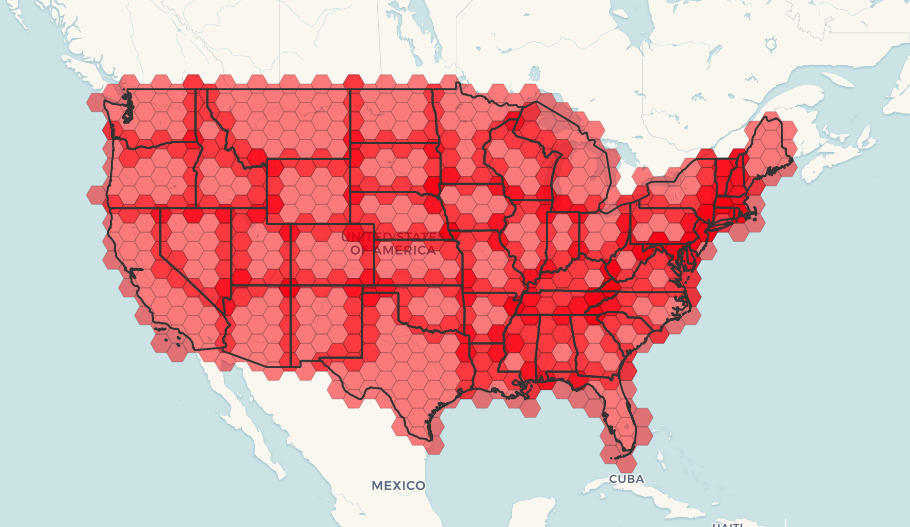
州のタイルは、それぞれの州の六角形のカバレッジとなり、複数の六角形が州境界で重なります。
| |
LATERALキーワードは、FROMリスト内の、対象より前のテーブルを参照する時は、集合を返す関数に暗黙的に含まれます。 CROSS JOIN LATERAL、CROSS JOIN、指定なし、は、この例の同じ構成要素です。 |
SELECT admin1.gid, hex.geom
FROM
admin1
CROSS JOIN
ST_HexagonGrid(100000, admin1.geom) AS hex
WHERE
adm0_a3 = 'USA'
AND
ST_Intersects(admin1.geom, hex.geom)名前
ST_Hexagon — 与えられたエッジサイズと六角形グリッド空間内のセル座標を使って単一の六角形を返します。
概要
geometry ST_Hexagon(float8 size, integer cell_i, integer cell_j, geometry origin);
説明
ST_HexagonGridと同じ六角形タイルの概念を使いますが、求めるセルの座標に一つだけの六角形を生成します。任意でタイルの原点の座標を調整できます。デフォルトの原点座標は0,0です。
六角形はSRIDの設定なしで生成されるので、SRIDを期待する値に設定するためにST_SetSRIDを使います。
Availability: 3.1.0
名前
ST_SquareGrid — 引数ジオメトリの境界を完全にカバーするグリッド正方形とセルインデックスを返します。
概要
setof record ST_SquareGrid(float8 size, geometry bounds);
説明
平面の正方形タイルの概念から始まります。与えられた平面SRSとエッジサイズに対して、SRS原点から始まり、一意の平面の正方形タイル(SRS, Size)が一つ存在します。この関数は、与えられたタイル(SRS, Size)内のグリッド内のどのタイルが与えられた境界とオーバラップするかという問題に答えを出します。
出力正方形のSRSは境界ジオメトリのSRSです。
正方形の2倍またはエッジサイズによって、新しい親タイルが生成されます。親タイルは完全に元のタイルに適合します。標準のウェブマップにおけるメルカトルのタイルは、メルカトル平面の2の累乗での正方形です。
Availability: 3.1.0
例: 国の1度グリッドの生成
グリッドは国の境界全体を埋めます。国に接触する四角形が欲しい場合には、ST_Intersects後にフィルタリングする必要があります。
WITH grid AS ( SELECT (ST_SquareGrid(1, ST_Transform(geom,4326))).* FROM admin0 WHERE name = 'Canada' ) SELEcT ST_AsText(geom) FROM grid
例: 正方形内のポイントの数え上げ (細かくした単一のグリッドを使用)
正方形タイルのポイントのサマリを行うには、境界としてポイントの拡張を使った正方形グリッドを生成し、グリッドに空間的に結合します。推定範囲は実際の範囲と異なる場合があるのでご注意下さい。慎重に取り扱うようにし、最低でも確実にテーブルを解析して下さい。
SELECT COUNT(*), squares.geom
FROM
pointtable AS pts
INNER JOIN
ST_SquareGrid(
1000,
ST_SetSRID(ST_EstimatedExtent('pointtable', 'geom'), 3857)
) AS squares
ON ST_Intersects(pts.geom, squares.geom)
GROUP BY squares.geom名前
ST_Square — 与えられたエッジサイズと六角形グリッド空間内のセル座標を使って単一の正方形を返します。
概要
geometry ST_Square(float8 size, integer cell_i, integer cell_j, geometry origin);
説明
ST_SquareGridと同じ正方形タイルの概念を使っていますが、求めるセルの座標に一つだけの正方形を生成します。任意でタイルの原点の座標を調整できます。デフォルトの原点座標は0,0です。
四角形はSRIDの設定なしで生成されるので、SRIDを期待する値に設定するためにST_SetSRIDを使います。
Availability: 3.1.0
名前
ST_Letters — デフォルトの開始位置を原点とし、デフォルトの高さを100とする、ジオメトリとして描画された文字を返します。
概要
geometry ST_Letters(text letters, json font);
- GeometryType — ジオメトリのタイプを文字列で返します。
- ST_Boundary — ジオメトリの境界を返します。
- ST_BoundingDiagonal — ジオメトリのバウンディングボックスの対角線を返します。
- ST_CoordDim — ジオメトリの座標次元を返します。
- ST_Dimension — ST_Geometry値の座標次元を返します。
- ST_Dump — ジオメトリの要素となる
geometry_dump行の集合を返します。 - ST_DumpPoints — ジオメトリ内の座標の行である
geometry_dump行の集合を返します。 - ST_DumpSegments — ジオメトリ内の辺の行である
geometry_dump行の集合を返します。 - ST_DumpRings — ポリゴンのリングごとの
geometry_dump行の集合を返します。 - ST_EndPoint — LINESTRINGまたはCIRCULARLINESTRINGの終端のポイントを返します。
- ST_Envelope — ジオメトリのバウンディングボックスを表現するジオメトリを返します。
- ST_ExteriorRing — ポリゴンの外環を表現するラインストリングを返します。
- ST_GeometryN — ジオメトリコレクションの要素を一つ返します。
- ST_GeometryType — ジオメトリのSQL-MM型を文字列で返します。
- ST_HasArc — ジオメトリに円弧が含まれているかどうかテストします。
- ST_InteriorRingN — ポリゴンのN番目の内環 (穴)を返します。
- ST_IsClosed — ラインストリングの始点と終点が一致しているかをテストします。多面体サーフェスについては閉じているか (立体であるか)をテストします。
- ST_IsCollection — ジオメトリのタイプがジオメトリコレクションかをテストします。
- ST_IsEmpty — ジオメトリが空かをテストします。
- ST_IsPolygonCCW — ポリゴンが反時計回りの外環を持っていて、時計回りの内環を持っているかをテストします。
- ST_IsPolygonCW — ポリゴンが時計回りの外環を持っていて、反時計回りの内環を持っているかをテストします。
- ST_IsRing — ラインストリングが閉じていてかつ単純であるかをテストします。
- ST_IsSimple — ジオメトリが自己インタセクトまたは自己接触となるポイントが無いかをテストします。
- ST_M — ポイントのM値を返します。
- ST_MemSize — ジオメトリが取るメモリ空間の合計を返します。
- ST_NDims — ST_Geometry値の座標次元を返します。
- ST_NPoints — ジオメトリのポイント (頂点)の数を返します。
- ST_NRings — ポリゴンジオメトリのリング数を返します。
- ST_NumGeometries — ジオメトリコレクションの要素数を返します。
- ST_NumInteriorRings — ポリゴンの内環 (穴)の数を返します。
- ST_NumInteriorRing — ポリゴンの内環 (穴)の数を返します。ST_NumInteriorRingsの別名です。
- ST_NumPatches — 多面体サーフェスのフェイス数を返します。多面体でないジオメトリの場合にはNULLを返します。
- ST_NumPoints — ラインストリングまたは曲線ストリングのポイント数を返します。
- ST_PatchN — 多面体サーフェスのN番目のジオメトリ (フェイス)を返します。
- ST_PointN — ジオメトリの最初のラインストリングまたは曲線ストリングのN番目のポイントを返します。
- ST_Points — ジオメトリの全ての座標を含むマルチポイントを返します。
- ST_StartPoint — ラインストリングの始点を返します。
- ST_Summary — ジオメトリについての要約文を返します。
- ST_X — ポイントのX値を返します。
- ST_Y — ポイントのY値を返します。
- ST_Z — ポイントのZ値を返します。
- ST_Zmflag — ジオメトリのZM座標次元を示す符号を返します。
名前
GeometryType — ジオメトリのタイプを文字列で返します。
概要
text GeometryType(geometry geomA);
説明
ジオメトリ型を'LINESTRING', 'POLYGON', 'MULTIPOINT'などの文字列で返します。
OGC SPEC s2.1.1.1 - このジオメトリインスタンスがメンバーになっているジオメトリのインスタンス化可能な派生タイプの名前を返します。インスタンス化可能な派生タイプの名前は、文字列として返されます。
| |
この関数は、'POINTM'等が返るので、ジオメトリがM値を持っているかどうかも示します。 |
Enhanced: 2.0.0 多面体サーフェス対応、三角対応、TIN対応が導入されました。
このメソッドはOGC Simple Features Implementation Specification for SQL 1.1の実装です。
このメソッドは曲線ストリングと曲線に対応しています。
この関数は3次元に対応し、Z値を削除しません。
この関数は多面体サーフェスに対応しています。
この関数は三角形と不規則三角網 (TIN)に対応しています。
例
SELECT GeometryType(ST_GeomFromText('LINESTRING(77.29 29.07,77.42 29.26,77.27 29.31,77.29 29.07)'));
geometrytype
--------------
LINESTRING
SELECT ST_GeometryType(ST_GeomFromEWKT('POLYHEDRALSURFACE( ((0 0 0, 0 0 1, 0 1 1, 0 1 0, 0 0 0)),
((0 0 0, 0 1 0, 1 1 0, 1 0 0, 0 0 0)), ((0 0 0, 1 0 0, 1 0 1, 0 0 1, 0 0 0)),
((1 1 0, 1 1 1, 1 0 1, 1 0 0, 1 1 0)),
((0 1 0, 0 1 1, 1 1 1, 1 1 0, 0 1 0)), ((0 0 1, 1 0 1, 1 1 1, 0 1 1, 0 0 1)) )'));
--result
POLYHEDRALSURFACE
SELECT GeometryType(geom) as result
FROM
(SELECT
ST_GeomFromEWKT('TIN (((
0 0 0,
0 0 1,
0 1 0,
0 0 0
)), ((
0 0 0,
0 1 0,
1 1 0,
0 0 0
))
)') AS geom
) AS g;
result
--------
TIN 名前
ST_Boundary — ジオメトリの境界を返します。
概要
geometry ST_Boundary(geometry geomA);
説明
ジオメトリの組み合わせ境界の閉包を返します (訳注: ラインストリングは端点、ポリゴンはエッジ、複合オブジェクトは境界のうち奇数番)。組み合わせ境界はOGC仕様の3.12.3.2節に記述されています。結果として出てくる境界は、OGC SPEC 3.12.2で議論されているように、ジオメトリプリミティブを使って表現できます。
GEOSモジュールで実現しています。
| |
2.0.0より前の版では、この関数は |
このメソッドはOGC Simple Features Implementation Specification for SQL 1.1の実装です。
OGC SPEC s2.1.1.1
このメソッドはSQL/MM仕様の実装です。
SQL-MM IEC 13249-3: 5.1.17
この関数は3次元に対応し、Z値を削除しません。
Enhanced: 2.1.0 三角対応が導入されました。
Changed: 3.2.0 TINに対応しました。GEOSを使いません。曲線を線形化しません。
例
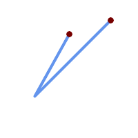 境界ポイントを重ねたラインストリング
SELECT ST_Boundary(geom)
FROM (SELECT 'LINESTRING(100 150,50 60, 70 80, 160 170)'::geometry As geom) As f;
ST_AsText output
MULTIPOINT((100 150),(160 170))
| 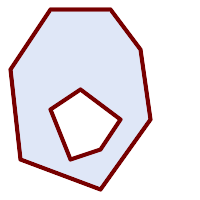 境界マルチラインストリングを重ねたポリゴンの穴
SELECT ST_Boundary(geom)
FROM (SELECT
'POLYGON (( 10 130, 50 190, 110 190, 140 150, 150 80, 100 10, 20 40, 10 130 ),
( 70 40, 100 50, 120 80, 80 110, 50 90, 70 40 ))'::geometry As geom) As f;
ST_AsText output
MULTILINESTRING((10 130,50 190,110 190,140 150,150 80,100 10,20 40,10 130),
(70 40,100 50,120 80,80 110,50 90,70 40))
|
SELECT ST_AsText(ST_Boundary(ST_GeomFromText('LINESTRING(1 1,0 0, -1 1)')));
st_astext
-----------
MULTIPOINT((1 1),(-1 1))
SELECT ST_AsText(ST_Boundary(ST_GeomFromText('POLYGON((1 1,0 0, -1 1, 1 1))')));
st_astext
----------
LINESTRING(1 1,0 0,-1 1,1 1)
--Using a 3d polygon
SELECT ST_AsEWKT(ST_Boundary(ST_GeomFromEWKT('POLYGON((1 1 1,0 0 1, -1 1 1, 1 1 1))')));
st_asewkt
-----------------------------------
LINESTRING(1 1 1,0 0 1,-1 1 1,1 1 1)
--Using a 3d multilinestring
SELECT ST_AsEWKT(ST_Boundary(ST_GeomFromEWKT('MULTILINESTRING((1 1 1,0 0 0.5, -1 1 1),(1 1 0.5,0 0 0.5, -1 1 0.5, 1 1 0.5) )')));
st_asewkt
----------
MULTIPOINT((-1 1 1),(1 1 0.75))
名前
ST_BoundingDiagonal — ジオメトリのバウンディングボックスの対角線を返します。
概要
geometry ST_BoundingDiagonal(geometry geom, boolean fits=false);
説明
与えられたジオメトリのバウンディングボックスの対角線をラインストリングで返します。最小値のポイントを始点とし、最大値のポイントを終点とする、二つのポイントからなるラインストリングになります。入力ジオメトリが空の場合には、対角線はLINESTRING EMPTYとなります。
fitsパラメータは、最良適合が必要かどうかを指定するものです。FALSEの場合には、幾分大きめなバウンディングボックスの対角線を受け付けることができます (多数の頂点からなるジオメトリの取得が早くなります)。いずれにしても返された対角線のバウンディングボックスは常に入力ジオメトリを含みます。
返されるラインストリングは常に、入力ジオメトリのSRIDと次元 (ZとMがあること)を維持します。
| |
縮退した (入力の頂点が一つ)場合、返されるラインストリングは形式的に不正です (内部が無い)。トポロジ的には妥当です。 |
Availability: 2.2.0
この関数は3次元に対応し、Z値を削除しません。
この関数はM値に対応します。
名前
ST_CoordDim — ジオメトリの座標次元を返します。
概要
integer ST_CoordDim(geometry geomA);
説明
ST_Geometry値の座標次元を返します。
この関数はST_NDimsのMM対応の別名です。
このメソッドはOGC Simple Features Implementation Specification for SQL 1.1の実装です。
このメソッドはSQL/MM仕様の実装です。
SQL-MM 3: 5.1.3
このメソッドは曲線ストリングと曲線に対応しています。
この関数は3次元に対応し、Z値を削除しません。
この関数は多面体サーフェスに対応しています。
この関数は三角形と不規則三角網 (TIN)に対応しています。
名前
ST_Dimension — ST_Geometry値の座標次元を返します。
概要
integer ST_Dimension(geometry g);
説明
ジオメトリの固有次元を返します。ジオメトリは座標次元以下でなければなりません。OGC SPEC s2.1.1.1 - 0ならPOINT、1ならLINESTRING、2ならPOLYGONで、GEOMETRYCOLLECTIONの場合は要素ごとの次元の最大値です。不明なジオメトリ (空のGEOMETRYCOLLECTION等)の場合はNULLが返ります。
このメソッドはSQL/MM仕様の実装です。
SQL-MM 3: 5.1.2
Enhanced: 2.0.0 多面体サーフェス対応とTIN対応が導入されました。空ジオメトリを与えた場合に例外を投げなくなりました。
| |
2.0.0より前では、空ジオメトリを与えると例外を投げていました。 |
この関数は多面体サーフェスに対応しています。
この関数は三角形と不規則三角網 (TIN)に対応しています。
名前
ST_Dump — ジオメトリの要素となるgeometry_dump行の集合を返します。
概要
geometry_dump[] ST_Dump(geometry g1);
説明
ジオメトリ要素を抽出する、集合を返す関数 (SRF=Set-Returning Function)です。ジオメトリ (geomフィールド)と整数配列 (pathフィールド)からなるgeometry_dump行の集合を返します。
非マルチ系ジオメトリタイプ (POINT,LINESTRING,POLYGON)では、path配列が空でgeomが入力ジオメトリと同じになる単一の行が返ります。コレクションまたはマルチ系ジオメトリでは、個々の要素と、コレクションの要素位置を示すpathとからなる行を返します。
ST_Dumpはジオメトリを展開するのに使います。ST_Collect/GROUP BYの逆で、この関数の中で新行を作成します。たとえば、MULTIPOLYGONをPOLYGONに展開するために使います。
Enhanced: 2.0.0 多面体サーフェス対応、三角対応、TIN対応が導入されました。
Availability: PostGIS 1.0.0RC1。PostgreSQL 7.3以上が必要です。
| |
1.3.4より前では、曲線を含むジオメトリで使用すると、この関数はクラッシュします。これは1.3.4以上で訂正されています。 |
このメソッドは曲線ストリングと曲線に対応しています。
この関数は多面体サーフェスに対応しています。
この関数は三角形と不規則三角網 (TIN)に対応しています。
この関数は3次元に対応し、Z値を削除しません。
標準的な例
SELECT sometable.field1, sometable.field1,
(ST_Dump(sometable.geom)).geom AS geom
FROM sometable;
-- Break a compound curve into its constituent linestrings and circularstrings
SELECT ST_AsEWKT(a.geom), ST_HasArc(a.geom)
FROM ( SELECT (ST_Dump(p_geom)).geom AS geom
FROM (SELECT ST_GeomFromEWKT('COMPOUNDCURVE(CIRCULARSTRING(0 0, 1 1, 1 0),(1 0, 0 1))') AS p_geom) AS b
) AS a;
st_asewkt | st_hasarc
-----------------------------+----------
CIRCULARSTRING(0 0,1 1,1 0) | t
LINESTRING(1 0,0 1) | f
(2 rows)多面体サーフェス、TIN、三角形の例
-- Polyhedral surface example
-- Break a Polyhedral surface into its faces
SELECT (a.p_geom).path[1] As path, ST_AsEWKT((a.p_geom).geom) As geom_ewkt
FROM (SELECT ST_Dump(ST_GeomFromEWKT('POLYHEDRALSURFACE(
((0 0 0, 0 0 1, 0 1 1, 0 1 0, 0 0 0)),
((0 0 0, 0 1 0, 1 1 0, 1 0 0, 0 0 0)), ((0 0 0, 1 0 0, 1 0 1, 0 0 1, 0 0 0)), ((1 1 0, 1 1 1, 1 0 1, 1 0 0, 1 1 0)),
((0 1 0, 0 1 1, 1 1 1, 1 1 0, 0 1 0)), ((0 0 1, 1 0 1, 1 1 1, 0 1 1, 0 0 1))
)') ) AS p_geom ) AS a;
path | geom_ewkt
------+------------------------------------------
1 | POLYGON((0 0 0,0 0 1,0 1 1,0 1 0,0 0 0))
2 | POLYGON((0 0 0,0 1 0,1 1 0,1 0 0,0 0 0))
3 | POLYGON((0 0 0,1 0 0,1 0 1,0 0 1,0 0 0))
4 | POLYGON((1 1 0,1 1 1,1 0 1,1 0 0,1 1 0))
5 | POLYGON((0 1 0,0 1 1,1 1 1,1 1 0,0 1 0))
6 | POLYGON((0 0 1,1 0 1,1 1 1,0 1 1,0 0 1))-- TIN --
SELECT (g.gdump).path, ST_AsEWKT((g.gdump).geom) as wkt
FROM
(SELECT
ST_Dump( ST_GeomFromEWKT('TIN (((
0 0 0,
0 0 1,
0 1 0,
0 0 0
)), ((
0 0 0,
0 1 0,
1 1 0,
0 0 0
))
)') ) AS gdump
) AS g;
-- result --
path | wkt
------+-------------------------------------
{1} | TRIANGLE((0 0 0,0 0 1,0 1 0,0 0 0))
{2} | TRIANGLE((0 0 0,0 1 0,1 1 0,0 0 0))
名前
ST_DumpPoints — ジオメトリ内の座標の行であるgeometry_dump行の集合を返します。
概要
geometry_dump[] ST_DumpPoints(geometry geom);
説明
ジオメトリの座標 (頂点)を抽出する、集合を返す関数 (SRF=Set-Returning Function)です。ジオメトリ (geomフィールド)と整数配列 (pathフィールド)からなるgeometry_dump行の集合を返します。
geomフィールドには、与えられたジオメトリの座標を表現するPOINTが入ります。pathフィールド (integer[])は、与えられたジオメトリの要素内の座標位置を列挙するインデックスです。インデックスは1始まりです。たとえば、LINESTRINGに対しては、LINESTRINGのn番目の座標をiとすると、{i}となります。POLYGONに対しては、iを環番号 (1が外環、続いて内環)、jを環の座標位置とすると、{i,j}となります。
座業を含む単一ジオメトリを取得するにはST_Pointsを使います。
Enhanced: 2.1.0 速度向上しました。C言語で実装しなおしました。
Enhanced: 2.0.0 多面体サーフェス対応、三角対応、TIN対応が導入されました。
Availability: 1.5.0
このメソッドは曲線ストリングと曲線に対応しています。
この関数は多面体サーフェスに対応しています。
この関数は三角形と不規則三角網 (TIN)に対応しています。
この関数は3次元に対応し、Z値を削除しません。
ラインストリングのテーブルのノードへの古典的な分割
SELECT edge_id, (dp).path[1] As index, ST_AsText((dp).geom) As wktnode
FROM (SELECT 1 As edge_id
, ST_DumpPoints(ST_GeomFromText('LINESTRING(1 2, 3 4, 10 10)')) AS dp
UNION ALL
SELECT 2 As edge_id
, ST_DumpPoints(ST_GeomFromText('LINESTRING(3 5, 5 6, 9 10)')) AS dp
) As foo;
edge_id | index | wktnode
---------+-------+--------------
1 | 1 | POINT(1 2)
1 | 2 | POINT(3 4)
1 | 3 | POINT(10 10)
2 | 1 | POINT(3 5)
2 | 2 | POINT(5 6)
2 | 3 | POINT(9 10)標準的な例
SELECT path, ST_AsText(geom)
FROM (
SELECT (ST_DumpPoints(g.geom)).*
FROM
(SELECT
'GEOMETRYCOLLECTION(
POINT ( 0 1 ),
LINESTRING ( 0 3, 3 4 ),
POLYGON (( 2 0, 2 3, 0 2, 2 0 )),
POLYGON (( 3 0, 3 3, 6 3, 6 0, 3 0 ),
( 5 1, 4 2, 5 2, 5 1 )),
MULTIPOLYGON (
(( 0 5, 0 8, 4 8, 4 5, 0 5 ),
( 1 6, 3 6, 2 7, 1 6 )),
(( 5 4, 5 8, 6 7, 5 4 ))
)
)'::geometry AS geom
) AS g
) j;
path | st_astext
-----------+------------
{1,1} | POINT(0 1)
{2,1} | POINT(0 3)
{2,2} | POINT(3 4)
{3,1,1} | POINT(2 0)
{3,1,2} | POINT(2 3)
{3,1,3} | POINT(0 2)
{3,1,4} | POINT(2 0)
{4,1,1} | POINT(3 0)
{4,1,2} | POINT(3 3)
{4,1,3} | POINT(6 3)
{4,1,4} | POINT(6 0)
{4,1,5} | POINT(3 0)
{4,2,1} | POINT(5 1)
{4,2,2} | POINT(4 2)
{4,2,3} | POINT(5 2)
{4,2,4} | POINT(5 1)
{5,1,1,1} | POINT(0 5)
{5,1,1,2} | POINT(0 8)
{5,1,1,3} | POINT(4 8)
{5,1,1,4} | POINT(4 5)
{5,1,1,5} | POINT(0 5)
{5,1,2,1} | POINT(1 6)
{5,1,2,2} | POINT(3 6)
{5,1,2,3} | POINT(2 7)
{5,1,2,4} | POINT(1 6)
{5,2,1,1} | POINT(5 4)
{5,2,1,2} | POINT(5 8)
{5,2,1,3} | POINT(6 7)
{5,2,1,4} | POINT(5 4)
(29 rows)多面体サーフェス、TIN、三角形の例
-- Polyhedral surface cube --
SELECT (g.gdump).path, ST_AsEWKT((g.gdump).geom) as wkt
FROM
(SELECT
ST_DumpPoints(ST_GeomFromEWKT('POLYHEDRALSURFACE( ((0 0 0, 0 0 1, 0 1 1, 0 1 0, 0 0 0)),
((0 0 0, 0 1 0, 1 1 0, 1 0 0, 0 0 0)), ((0 0 0, 1 0 0, 1 0 1, 0 0 1, 0 0 0)),
((1 1 0, 1 1 1, 1 0 1, 1 0 0, 1 1 0)),
((0 1 0, 0 1 1, 1 1 1, 1 1 0, 0 1 0)), ((0 0 1, 1 0 1, 1 1 1, 0 1 1, 0 0 1)) )') ) AS gdump
) AS g;
-- result --
path | wkt
---------+--------------
{1,1,1} | POINT(0 0 0)
{1,1,2} | POINT(0 0 1)
{1,1,3} | POINT(0 1 1)
{1,1,4} | POINT(0 1 0)
{1,1,5} | POINT(0 0 0)
{2,1,1} | POINT(0 0 0)
{2,1,2} | POINT(0 1 0)
{2,1,3} | POINT(1 1 0)
{2,1,4} | POINT(1 0 0)
{2,1,5} | POINT(0 0 0)
{3,1,1} | POINT(0 0 0)
{3,1,2} | POINT(1 0 0)
{3,1,3} | POINT(1 0 1)
{3,1,4} | POINT(0 0 1)
{3,1,5} | POINT(0 0 0)
{4,1,1} | POINT(1 1 0)
{4,1,2} | POINT(1 1 1)
{4,1,3} | POINT(1 0 1)
{4,1,4} | POINT(1 0 0)
{4,1,5} | POINT(1 1 0)
{5,1,1} | POINT(0 1 0)
{5,1,2} | POINT(0 1 1)
{5,1,3} | POINT(1 1 1)
{5,1,4} | POINT(1 1 0)
{5,1,5} | POINT(0 1 0)
{6,1,1} | POINT(0 0 1)
{6,1,2} | POINT(1 0 1)
{6,1,3} | POINT(1 1 1)
{6,1,4} | POINT(0 1 1)
{6,1,5} | POINT(0 0 1)
(30 rows)-- Triangle --
SELECT (g.gdump).path, ST_AsText((g.gdump).geom) as wkt
FROM
(SELECT
ST_DumpPoints( ST_GeomFromEWKT('TRIANGLE ((
0 0,
0 9,
9 0,
0 0
))') ) AS gdump
) AS g;
-- result --
path | wkt
------+------------
{1} | POINT(0 0)
{2} | POINT(0 9)
{3} | POINT(9 0)
{4} | POINT(0 0)
-- TIN --
SELECT (g.gdump).path, ST_AsEWKT((g.gdump).geom) as wkt
FROM
(SELECT
ST_DumpPoints( ST_GeomFromEWKT('TIN (((
0 0 0,
0 0 1,
0 1 0,
0 0 0
)), ((
0 0 0,
0 1 0,
1 1 0,
0 0 0
))
)') ) AS gdump
) AS g;
-- result --
path | wkt
---------+--------------
{1,1,1} | POINT(0 0 0)
{1,1,2} | POINT(0 0 1)
{1,1,3} | POINT(0 1 0)
{1,1,4} | POINT(0 0 0)
{2,1,1} | POINT(0 0 0)
{2,1,2} | POINT(0 1 0)
{2,1,3} | POINT(1 1 0)
{2,1,4} | POINT(0 0 0)
(8 rows)
名前
ST_DumpSegments — ジオメトリ内の辺の行であるgeometry_dump行の集合を返します。
概要
geometry_dump[] ST_DumpSegments(geometry geom);
説明
ジオメトリの辺を抽出する、集合を返す関数 (SRF=Set-Returning Function)です。ジオメトリ (geomフィールド)と整数配列 (pathフィールド)からなるgeometry_dump行の集合を返します。
geomフィールドには、与えられたジオメトリの辺を表現するLINESTRINGが入ります。pathフィールド (integer[])は、与えられたジオメトリの要素内の辺の始点位置を列挙するインデックスです。インデックスは1始まりです。たとえば、LINESTRINGに対しては、LINESTRINGのn番目の辺をiとすると、{i}となります。POLYGONに対しては、iを環番号 (1が外環、続いて内環)、jを環の辺の始点位置とすると、{i,j}となります。
Availability: 3.2.0
この関数は三角形と不規則三角網 (TIN)に対応しています。
この関数は3次元に対応し、Z値を削除しません。
標準的な例
SELECT path, ST_AsText(geom)
FROM (
SELECT (ST_DumpSegments(g.geom)).*
FROM (SELECT 'GEOMETRYCOLLECTION(
LINESTRING(1 1, 3 3, 4 4),
POLYGON((5 5, 6 6, 7 7, 5 5))
)'::geometry AS geom
) AS g
) j;
path │ st_astext
---------------------------------
{1,1} │ LINESTRING(1 1,3 3)
{1,2} │ LINESTRING(3 3,4 4)
{2,1,1} │ LINESTRING(5 5,6 6)
{2,1,2} │ LINESTRING(6 6,7 7)
{2,1,3} │ LINESTRING(7 7,5 5)
(5 rows)TIN、三角形の例
-- Triangle --
SELECT path, ST_AsText(geom)
FROM (
SELECT (ST_DumpSegments(g.geom)).*
FROM (SELECT 'TRIANGLE((
0 0,
0 9,
9 0,
0 0
))'::geometry AS geom
) AS g
) j;
path │ st_astext
---------------------------------
{1,1} │ LINESTRING(0 0,0 9)
{1,2} │ LINESTRING(0 9,9 0)
{1,3} │ LINESTRING(9 0,0 0)
(3 rows)
-- TIN --
SELECT path, ST_AsEWKT(geom)
FROM (
SELECT (ST_DumpSegments(g.geom)).*
FROM (SELECT 'TIN(((
0 0 0,
0 0 1,
0 1 0,
0 0 0
)), ((
0 0 0,
0 1 0,
1 1 0,
0 0 0
))
)'::geometry AS geom
) AS g
) j;
path │ st_asewkt
---------------------------------
{1,1,1} │ LINESTRING(0 0 0,0 0 1)
{1,1,2} │ LINESTRING(0 0 1,0 1 0)
{1,1,3} │ LINESTRING(0 1 0,0 0 0)
{2,1,1} │ LINESTRING(0 0 0,0 1 0)
{2,1,2} │ LINESTRING(0 1 0,1 1 0)
{2,1,3} │ LINESTRING(1 1 0,0 0 0)
(6 rows)
名前
ST_DumpRings — ポリゴンのリングごとのgeometry_dump行の集合を返します。
概要
geometry_dump[] ST_DumpRings(geometry a_polygon);
説明
ジオメトリ要素を抽出する、集合を返す関数 (SRF=Set-Returning Function)です。ジオメトリ (geomフィールド)と整数配列 (pathフィールド)からなるgeometry_dump行の集合を返します。
ジオメトリ要素を抽出する、集合を返す関数 (SRF=Set-Returning Function)です。ジオメトリ (geomフィールド)と整数配列 (pathフィールド)からなるgeometry_dump行の集合を返します。
| |
POLYGONジオメトリでのみ動作します。MULTIPOLYGONでは動作しません。 |
Availability: PostGIS 1.1.3 PostgreSQL 7.3以上が必要です。
この関数は3次元に対応し、Z値を削除しません。
例
クエリの一般的な形式。
SELECT polyTable.field1, polyTable.field1,
(ST_DumpRings(polyTable.geom)).geom As geom
FROM polyTable;
単一の穴を持つポリゴン
SELECT path, ST_AsEWKT(geom) As geom
FROM ST_DumpRings(
ST_GeomFromEWKT('POLYGON((-8149064 5133092 1,-8149064 5132986 1,-8148996 5132839 1,-8148972 5132767 1,-8148958 5132508 1,-8148941 5132466 1,-8148924 5132394 1,
-8148903 5132210 1,-8148930 5131967 1,-8148992 5131978 1,-8149237 5132093 1,-8149404 5132211 1,-8149647 5132310 1,-8149757 5132394 1,
-8150305 5132788 1,-8149064 5133092 1),
(-8149362 5132394 1,-8149446 5132501 1,-8149548 5132597 1,-8149695 5132675 1,-8149362 5132394 1))')
) as foo;
path | geom
----------------------------------------------------------------------------------------------------------------
{0} | POLYGON((-8149064 5133092 1,-8149064 5132986 1,-8148996 5132839 1,-8148972 5132767 1,-8148958 5132508 1,
| -8148941 5132466 1,-8148924 5132394 1,
| -8148903 5132210 1,-8148930 5131967 1,
| -8148992 5131978 1,-8149237 5132093 1,
| -8149404 5132211 1,-8149647 5132310 1,-8149757 5132394 1,-8150305 5132788 1,-8149064 5133092 1))
{1} | POLYGON((-8149362 5132394 1,-8149446 5132501 1,
| -8149548 5132597 1,-8149695 5132675 1,-8149362 5132394 1))名前
ST_EndPoint — LINESTRINGまたはCIRCULARLINESTRINGの終端のポイントを返します。
概要
geometry ST_EndPoint(geometry g);
説明
LINESTRINGまたはCIRCULARLINESTRINGジオメトリの、最後のポイントをPOINTで返します。入力パラメータがLINESTRINGでもCIRCULARLINESTRINGでもない場合には、NULLを返します。
このメソッドはSQL/MM仕様の実装です。
SQL-MM 3: 7.1.4
この関数は3次元に対応し、Z値を削除しません。
このメソッドは曲線ストリングと曲線に対応しています。
| |
Changed: 2.0.0 一つのジオメトリマルチラインストリングで動作しなくなりました。PostGIS の古いバージョンでは、この関数は一つのマルチラインストリングで動作し、終端ポイントを返します。2.0.0では、他のマルチラインストリングと同様にNULLを返します。古い動作は文書化されていない機能でしたが、データをLINESTRINGとして格納していると思われるユーザーは、2.0.0 でNULLが返されることを経験するかも知れません。 |
例
ラインストリングの終端ポイント
postgis=# SELECT ST_AsText(ST_EndPoint('LINESTRING(1 1, 2 2, 3 3)'::geometry));
st_astext
------------
POINT(3 3)
ラインストリング以外の終端ポイントはNULL
SELECT ST_EndPoint('POINT(1 1)'::geometry) IS NULL AS is_null;
is_null
----------
t
3次元ラインストリングの終端ポイント
--3d endpoint
SELECT ST_AsEWKT(ST_EndPoint('LINESTRING(1 1 2, 1 2 3, 0 0 5)'));
st_asewkt
--------------
POINT(0 0 5)
CIRCULARSTRINGの終端ポイント
SELECT ST_AsText(ST_EndPoint('CIRCULARSTRING(5 2,-3 1.999999, -2 1, -4 2, 6 3)'::geometry));
st_astext
------------
POINT(6 3)
名前
ST_Envelope — ジオメトリのバウンディングボックスを表現するジオメトリを返します。
概要
geometry ST_Envelope(geometry g1);
説明
与えられたジオメトリの倍精度浮動小数点数 (float8)の最小バウンディングボックスをジオメトリで返します。ポリゴンはバウンディングボックスの角のポイントで定義されます ((MINX, MINY), (MINX, MAXY), (MAXX, MAXY), (MAXX, MINY), (MINX, MINY))。(PostGISはZMIN/ZMAXも追加します).
縮退する場合 (縦のライン、ポイント)はPOLYGONより低い次元のジオメトリ、すなわちPOINTまたはLINESTRINGを返します。
Availability: 1.5.0 挙動が変更され出力がfloat4からfloat8になりました。
このメソッドはOGC Simple Features Implementation Specification for SQL 1.1の実装です。
s2.1.1.1
このメソッドはSQL/MM仕様の実装です。
SQL-MM 3: 5.1.19
例
SELECT ST_AsText(ST_Envelope('POINT(1 3)'::geometry));
st_astext
------------
POINT(1 3)
(1 row)
SELECT ST_AsText(ST_Envelope('LINESTRING(0 0, 1 3)'::geometry));
st_astext
--------------------------------
POLYGON((0 0,0 3,1 3,1 0,0 0))
(1 row)
SELECT ST_AsText(ST_Envelope('POLYGON((0 0, 0 1, 1.0000001 1, 1.0000001 0, 0 0))'::geometry));
st_astext
--------------------------------------------------------------
POLYGON((0 0,0 1,1.00000011920929 1,1.00000011920929 0,0 0))
(1 row)
SELECT ST_AsText(ST_Envelope('POLYGON((0 0, 0 1, 1.0000000001 1, 1.0000000001 0, 0 0))'::geometry));
st_astext
--------------------------------------------------------------
POLYGON((0 0,0 1,1.00000011920929 1,1.00000011920929 0,0 0))
(1 row)
SELECT Box3D(geom), Box2D(geom), ST_AsText(ST_Envelope(geom)) As envelopewkt
FROM (SELECT 'POLYGON((0 0, 0 1000012333334.34545678, 1.0000001 1, 1.0000001 0, 0 0))'::geometry As geom) As foo;
ポイントとラインストリングの最小バウンディングボックス
SELECT ST_AsText(ST_Envelope(
ST_Collect(
ST_GeomFromText('LINESTRING(55 75,125 150)'),
ST_Point(20, 80))
)) As wktenv;
wktenv
-----------
POLYGON((20 75,20 150,125 150,125 75,20 75))名前
ST_ExteriorRing — ポリゴンの外環を表現するラインストリングを返します。
概要
geometry ST_ExteriorRing(geometry a_polygon);
説明
POLYGONの外環を表現するLINESTRINGを返します。ジオメトリがポリゴンでない場合はNULLを返します。
| |
この関数はマルチポリゴンでは動作しません。マルチポリゴンに対してはST_GeometryNまたはST_Dumpを併用して下さい。 |
このメソッドはOGC Simple Features Implementation Specification for SQL 1.1の実装です。
2.1.5.1
このメソッドはSQL/MM仕様の実装です。
SQL-MM 3: 8.2.3, 8.3.3
この関数は3次元に対応し、Z値を削除しません。
例
--If you have a table of polygons
SELECT gid, ST_ExteriorRing(geom) AS ering
FROM sometable;
--If you have a table of MULTIPOLYGONs
--and want to return a MULTILINESTRING composed of the exterior rings of each polygon
SELECT gid, ST_Collect(ST_ExteriorRing(geom)) AS erings
FROM (SELECT gid, (ST_Dump(geom)).geom As geom
FROM sometable) As foo
GROUP BY gid;
--3d Example
SELECT ST_AsEWKT(
ST_ExteriorRing(
ST_GeomFromEWKT('POLYGON((0 0 1, 1 1 1, 1 2 1, 1 1 1, 0 0 1))')
)
);
st_asewkt
---------
LINESTRING(0 0 1,1 1 1,1 2 1,1 1 1,0 0 1)
名前
ST_GeometryN — ジオメトリコレクションの要素を一つ返します。
概要
geometry ST_GeometryN(geometry geomA, integer n);
説明
GEOMETRYCOLLECTION, MULTIPOINT, MULTILINESTRING, MULTICURVE, MULTIPOLYGON, POLYHEDRALSURFACEの入力ジオメトリの、1始まりでN番目の要素を返します。他の場合にはNULLを返します。
| |
OGC仕様のため0.8.0版からインデクスを1始まりにしています。これより前の版では0始まりになっています。 |
| |
ジオメトリの全ての要素を抽出するにはST_Dumpの方が効率的ですし、単一ジオメトリでも動作します。 |
Enhanced: 2.0.0 多面体サーフェス対応、三角対応、TIN対応が導入されました。
Changed: 2.0.0 以前の版では非マルチのジオメトリではNULLが返りました。ST_GeometryN(..,1)の場合にはジオメトリを返すよう変更されました。
このメソッドはOGC Simple Features Implementation Specification for SQL 1.1の実装です。
このメソッドはSQL/MM仕様の実装です。
SQL-MM 3: 9.1.5
この関数は3次元に対応し、Z値を削除しません。
このメソッドは曲線ストリングと曲線に対応しています。
この関数は多面体サーフェスに対応しています。
この関数は三角形と不規則三角網 (TIN)に対応しています。
標準的な例
--Extracting a subset of points from a 3d multipoint
SELECT n, ST_AsEWKT(ST_GeometryN(geom, n)) As geomewkt
FROM (
VALUES (ST_GeomFromEWKT('MULTIPOINT((1 2 7), (3 4 7), (5 6 7), (8 9 10))') ),
( ST_GeomFromEWKT('MULTICURVE(CIRCULARSTRING(2.5 2.5,4.5 2.5, 3.5 3.5), (10 11, 12 11))') )
)As foo(geom)
CROSS JOIN generate_series(1,100) n
WHERE n <= ST_NumGeometries(geom);
n | geomewkt
---+-----------------------------------------
1 | POINT(1 2 7)
2 | POINT(3 4 7)
3 | POINT(5 6 7)
4 | POINT(8 9 10)
1 | CIRCULARSTRING(2.5 2.5,4.5 2.5,3.5 3.5)
2 | LINESTRING(10 11,12 11)
--Extracting all geometries (useful when you want to assign an id)
SELECT gid, n, ST_GeometryN(geom, n)
FROM sometable CROSS JOIN generate_series(1,100) n
WHERE n <= ST_NumGeometries(geom);多面体サーフェス、TIN、三角形の例
-- Polyhedral surface example
-- Break a Polyhedral surface into its faces
SELECT ST_AsEWKT(ST_GeometryN(p_geom,3)) As geom_ewkt
FROM (SELECT ST_GeomFromEWKT('POLYHEDRALSURFACE(
((0 0 0, 0 0 1, 0 1 1, 0 1 0, 0 0 0)),
((0 0 0, 0 1 0, 1 1 0, 1 0 0, 0 0 0)),
((0 0 0, 1 0 0, 1 0 1, 0 0 1, 0 0 0)),
((1 1 0, 1 1 1, 1 0 1, 1 0 0, 1 1 0)),
((0 1 0, 0 1 1, 1 1 1, 1 1 0, 0 1 0)),
((0 0 1, 1 0 1, 1 1 1, 0 1 1, 0 0 1))
)') AS p_geom ) AS a;
geom_ewkt
------------------------------------------
POLYGON((0 0 0,1 0 0,1 0 1,0 0 1,0 0 0))-- TIN --
SELECT ST_AsEWKT(ST_GeometryN(geom,2)) as wkt
FROM
(SELECT
ST_GeomFromEWKT('TIN (((
0 0 0,
0 0 1,
0 1 0,
0 0 0
)), ((
0 0 0,
0 1 0,
1 1 0,
0 0 0
))
)') AS geom
) AS g;
-- result --
wkt
-------------------------------------
TRIANGLE((0 0 0,0 1 0,1 1 0,0 0 0))名前
ST_GeometryType — ジオメトリのSQL-MM型を文字列で返します。
概要
text ST_GeometryType(geometry g1);
説明
ジオメトリ型を'ST_LineString', 'ST_Polygon', 'ST_MultiPolygon'等の文字列で返します。この関数はGeometryType(geometry)とは異なり、先頭に'ST'が付き、M値を持っているかを示しません。
Enhanced: 2.0.0 多面体サーフェス対応が導入されました。
このメソッドはSQL/MM仕様の実装です。
SQL-MM 3: 5.1.4
この関数は3次元に対応し、Z値を削除しません。
この関数は多面体サーフェスに対応しています。
例
SELECT ST_GeometryType(ST_GeomFromText('LINESTRING(77.29 29.07,77.42 29.26,77.27 29.31,77.29 29.07)'));
--result
ST_LineStringSELECT ST_GeometryType(ST_GeomFromEWKT('POLYHEDRALSURFACE( ((0 0 0, 0 0 1, 0 1 1, 0 1 0, 0 0 0)),
((0 0 0, 0 1 0, 1 1 0, 1 0 0, 0 0 0)), ((0 0 0, 1 0 0, 1 0 1, 0 0 1, 0 0 0)),
((1 1 0, 1 1 1, 1 0 1, 1 0 0, 1 1 0)),
((0 1 0, 0 1 1, 1 1 1, 1 1 0, 0 1 0)), ((0 0 1, 1 0 1, 1 1 1, 0 1 1, 0 0 1)) )'));
--result
ST_PolyhedralSurfaceSELECT ST_GeometryType(ST_GeomFromEWKT('POLYHEDRALSURFACE( ((0 0 0, 0 0 1, 0 1 1, 0 1 0, 0 0 0)),
((0 0 0, 0 1 0, 1 1 0, 1 0 0, 0 0 0)), ((0 0 0, 1 0 0, 1 0 1, 0 0 1, 0 0 0)),
((1 1 0, 1 1 1, 1 0 1, 1 0 0, 1 1 0)),
((0 1 0, 0 1 1, 1 1 1, 1 1 0, 0 1 0)), ((0 0 1, 1 0 1, 1 1 1, 0 1 1, 0 0 1)) )'));
--result
ST_PolyhedralSurfaceSELECT ST_GeometryType(geom) as result
FROM
(SELECT
ST_GeomFromEWKT('TIN (((
0 0 0,
0 0 1,
0 1 0,
0 0 0
)), ((
0 0 0,
0 1 0,
1 1 0,
0 0 0
))
)') AS geom
) AS g;
result
--------
ST_Tin 名前
ST_HasArc — ジオメトリに円弧が含まれているかどうかテストします。
概要
boolean ST_HasArc(geometry geomA);
説明
ジオメトリまたはジオメトリコレクションに曲線ラインストリングが含まれている場合にTRUEを返します。
Availability: 1.2.3?
この関数は3次元に対応し、Z値を削除しません。
このメソッドは曲線ストリングと曲線に対応しています。
名前
ST_InteriorRingN — ポリゴンのN番目の内環 (穴)を返します。
概要
geometry ST_InteriorRingN(geometry a_polygon, integer n);
説明
ポリゴンのN番目の内環を返します。ジオメトリがポリゴンでないかNが範囲外の場合はNULLを返します。
| |
この関数はマルチポリゴンでは動作しません。マルチポリゴンに対してはST_GeometryNまたはST_Dumpを併用して下さい。 |
このメソッドはOGC Simple Features Implementation Specification for SQL 1.1の実装です。
このメソッドはSQL/MM仕様の実装です。
SQL-MM 3: 8.2.6, 8.3.5
この関数は3次元に対応し、Z値を削除しません。
名前
ST_IsClosed — ラインストリングの始点と終点が一致しているかをテストします。多面体サーフェスについては閉じているか (立体であるか)をテストします。
概要
boolean ST_IsClosed(geometry g);
説明
LINESTRINGの始点と終点が一致する場合にTRUEを返します。多面体サーフェスについては、サーフェスが面 (開いている)か立体 (閉じている)かをテストします。
このメソッドはOGC Simple Features Implementation Specification for SQL 1.1の実装です。
このメソッドはSQL/MM仕様の実装です。
SQL-MM 3: 7.1.5, 9.3.3
| |
SQL-MMでは |
この関数は3次元に対応し、Z値を削除しません。
このメソッドは曲線ストリングと曲線に対応しています。
Enhanced: 2.0.0 多面体サーフェス対応が導入されました。
この関数は多面体サーフェスに対応しています。
ラインストリングとポイントの例
postgis=# SELECT ST_IsClosed('LINESTRING(0 0, 1 1)'::geometry);
st_isclosed
-------------
f
(1 row)
postgis=# SELECT ST_IsClosed('LINESTRING(0 0, 0 1, 1 1, 0 0)'::geometry);
st_isclosed
-------------
t
(1 row)
postgis=# SELECT ST_IsClosed('MULTILINESTRING((0 0, 0 1, 1 1, 0 0),(0 0, 1 1))'::geometry);
st_isclosed
-------------
f
(1 row)
postgis=# SELECT ST_IsClosed('POINT(0 0)'::geometry);
st_isclosed
-------------
t
(1 row)
postgis=# SELECT ST_IsClosed('MULTIPOINT((0 0), (1 1))'::geometry);
st_isclosed
-------------
t
(1 row)多面体サーフェスの例
-- A cube --
SELECT ST_IsClosed(ST_GeomFromEWKT('POLYHEDRALSURFACE( ((0 0 0, 0 0 1, 0 1 1, 0 1 0, 0 0 0)),
((0 0 0, 0 1 0, 1 1 0, 1 0 0, 0 0 0)), ((0 0 0, 1 0 0, 1 0 1, 0 0 1, 0 0 0)),
((1 1 0, 1 1 1, 1 0 1, 1 0 0, 1 1 0)),
((0 1 0, 0 1 1, 1 1 1, 1 1 0, 0 1 0)), ((0 0 1, 1 0 1, 1 1 1, 0 1 1, 0 0 1)) )'));
st_isclosed
-------------
t
-- Same as cube but missing a side --
SELECT ST_IsClosed(ST_GeomFromEWKT('POLYHEDRALSURFACE( ((0 0 0, 0 0 1, 0 1 1, 0 1 0, 0 0 0)),
((0 0 0, 0 1 0, 1 1 0, 1 0 0, 0 0 0)), ((0 0 0, 1 0 0, 1 0 1, 0 0 1, 0 0 0)),
((1 1 0, 1 1 1, 1 0 1, 1 0 0, 1 1 0)),
((0 1 0, 0 1 1, 1 1 1, 1 1 0, 0 1 0)) )'));
st_isclosed
-------------
f
名前
ST_IsCollection — ジオメトリのタイプがジオメトリコレクションかをテストします。
概要
boolean ST_IsCollection(geometry g);
説明
ジオメトリのタイプがジオメトリコレクションである場合にTRUEを返します。コレクションは次の通りです。
ジオメトリコレクション
マルチポイント、マルチポリゴン、マルチラインストリング、マルチ曲線、マルチサーフェス
複合曲線
| |
この関数はジオメトリのタイプを解析します。これは、空のコレクションである場合、または一つのエレメントを持つコレクションである場合には |
この関数は3次元に対応し、Z値を削除しません。
このメソッドは曲線ストリングと曲線に対応しています。
例
postgis=# SELECT ST_IsCollection('LINESTRING(0 0, 1 1)'::geometry);
st_iscollection
-------------
f
(1 row)
postgis=# SELECT ST_IsCollection('MULTIPOINT EMPTY'::geometry);
st_iscollection
-------------
t
(1 row)
postgis=# SELECT ST_IsCollection('MULTIPOINT((0 0))'::geometry);
st_iscollection
-------------
t
(1 row)
postgis=# SELECT ST_IsCollection('MULTIPOINT((0 0), (42 42))'::geometry);
st_iscollection
-------------
t
(1 row)
postgis=# SELECT ST_IsCollection('GEOMETRYCOLLECTION(POINT(0 0))'::geometry);
st_iscollection
-------------
t
(1 row)名前
ST_IsEmpty — ジオメトリが空かをテストします。
概要
boolean ST_IsEmpty(geometry geomA);
説明
ジオメトリが空ジオメトリの場合にtrueを返します。 trueの場合には、このジオメトリは、空のジオメトリコレクション、ポリゴン、ポイント等です。
| |
SQL-MMでは、ST_IsEmpty(NULL)は0を返しますが、PostGISではNULLを返します。 |
このメソッドはOGC Simple Features Implementation Specification for SQL 1.1の実装です。
s2.1.1.1
このメソッドはSQL/MM仕様の実装です。
SQL-MM 3: 5.1.7
このメソッドは曲線ストリングと曲線に対応しています。
| |
Changed: 2.0.0 以前の版のPostGISではST_GeomFromText('GEOMETRYCOLLECTION(EMPTY)')を許しました。PostGIS 2.0.0では、SQL/MM標準により準拠させるため、これは不正となります。 |
例
SELECT ST_IsEmpty(ST_GeomFromText('GEOMETRYCOLLECTION EMPTY'));
st_isempty
------------
t
(1 row)
SELECT ST_IsEmpty(ST_GeomFromText('POLYGON EMPTY'));
st_isempty
------------
t
(1 row)
SELECT ST_IsEmpty(ST_GeomFromText('POLYGON((1 2, 3 4, 5 6, 1 2))'));
st_isempty
------------
f
(1 row)
SELECT ST_IsEmpty(ST_GeomFromText('POLYGON((1 2, 3 4, 5 6, 1 2))')) = false;
?column?
----------
t
(1 row)
SELECT ST_IsEmpty(ST_GeomFromText('CIRCULARSTRING EMPTY'));
st_isempty
------------
t
(1 row)
名前
ST_IsPolygonCCW — ポリゴンが反時計回りの外環を持っていて、時計回りの内環を持っているかをテストします。
概要
boolean ST_IsPolygonCCW ( geometry geom );
説明
入力ジオメトリの全てのポリゴン要素の外環については反時計回りで、全ての内環については時計回りである場合には、TRUEを返します。
ジオメトリがポリゴン要素を持っていない場合にはTRUEを返します。
| |
閉じたラインストリングはポリゴン要素とみなされません。単一の閉じたラインストリングを渡すと、右回り左回りにかかわらずTRUEが得られます。 |
| |
ポリゴン要素の内環が逆回りになっていない (すなわち外環と同じ方向で回る内環が1個以上ある)場合には、ST_IsPolygonCWとST_IsPolygonCCW の両方ともにFALSEを返します。 |
Availability: 2.4.0
この関数は3次元に対応し、Z値を削除しません。
この関数はM値に対応します。
名前
ST_IsPolygonCW — ポリゴンが時計回りの外環を持っていて、反時計回りの内環を持っているかをテストします。
概要
boolean ST_IsPolygonCW ( geometry geom );
説明
入力ジオメトリの全てのポリゴン要素の外環については時計回りで、全ての内環については反時計回りである場合には、TRUEを返します。
ジオメトリがポリゴン要素を持っていない場合にはTRUEを返します。
| |
閉じたラインストリングはポリゴン要素とみなされません。単一の閉じたラインストリングを渡すと、右回り左回りにかかわらずTRUEが得られます。 |
| |
ポリゴン要素の内環が逆回りになっていない (すなわち外環と同じ方向で回る内環が1個以上ある)場合には、ST_IsPolygonCWとST_IsPolygonCCW の両方ともにFALSEを返します。 |
Availability: 2.4.0
この関数は3次元に対応し、Z値を削除しません。
この関数はM値に対応します。
名前
ST_IsRing — ラインストリングが閉じていてかつ単純であるかをテストします。
概要
boolean ST_IsRing(geometry g);
説明
LINESTRINGがST_IsClosed (ST_StartPoint( g)~= ST_Endpoint()で、かつST_IsSimple (自己インタセクションが無い)場合にg)TRUEを返します。
このメソッドはOGC Simple Features Implementation Specification for SQL 1.1の実装です。
2.1.5.1
このメソッドはSQL/MM仕様の実装です。
SQL-MM 3: 7.1.6
| |
SQL-MMでは、 |
例
SELECT ST_IsRing(geom), ST_IsClosed(geom), ST_IsSimple(geom) FROM (SELECT 'LINESTRING(0 0, 0 1, 1 1, 1 0, 0 0)'::geometry AS geom) AS foo; st_isring | st_isclosed | st_issimple -----------+-------------+------------- t | t | t (1 row) SELECT ST_IsRing(geom), ST_IsClosed(geom), ST_IsSimple(geom) FROM (SELECT 'LINESTRING(0 0, 0 1, 1 0, 1 1, 0 0)'::geometry AS geom) AS foo; st_isring | st_isclosed | st_issimple -----------+-------------+------------- f | t | f (1 row)
名前
ST_IsSimple — ジオメトリが自己インタセクトまたは自己接触となるポイントが無いかをテストします。
概要
boolean ST_IsSimple(geometry geomA);
説明
ジオメトリが自己インタセクションや自己接触のような異常な幾何学ポイントを持っていない場合にTRUEを返します。OGCのジオメトリ単純性と妥当性の定義に関する詳細情報については「ジオメトリのOpenGIS準拠を確実にする」をご覧ください。
| |
SQL-MMでは、ST_IsSimple(NULL)は0を返しますが、PostGISではNULLを返します。 |
このメソッドはOGC Simple Features Implementation Specification for SQL 1.1の実装です。
s2.1.1.1
このメソッドはSQL/MM仕様の実装です。
SQL-MM 3: 5.1.8
この関数は3次元に対応し、Z値を削除しません。
名前
ST_M — ポイントのM値を返します。
概要
float ST_M(geometry a_point);
説明
ポイントのM座標値を返し、有効でないならNULLを返します。入力はポイントでなければなりません。
| |
これは (いまだに)OGC仕様に入っていませんが、ポイント座標抽出関数のリストを完全にするために挙げています。 |
このメソッドはOGC Simple Features Implementation Specification for SQL 1.1の実装です。
このメソッドはSQL/MM仕様の実装です。
この関数は3次元に対応し、Z値を削除しません。
名前
ST_MemSize — ジオメトリが取るメモリ空間の合計を返します。
概要
integer ST_MemSize(geometry geomA);
説明
ジオメトリが取るメモリ空間の合計をバイト単位で返します。
この関数は、PostgreSQLビルトインデータベースオブジェクト管理関数のpg_column_size, pg_size_pretty, pg_relation_size, pg_total_relation_sizeを補完します。
| |
テーブルのバイト単位のサイズを与えるpg_relation_sizeはST_Mem_Sizeより小さいバイト数が返ります。これはpg_relation_sizeがTOAST化されたテーブルの寄与を追加せず、TOASTテーブルに格納された大きなジオメトリを加えないためです。 pg_total_relation_size - テーブル、TOASTテーブル、インデクスを含みます。 pg_column_sizeは、ジオメトリがカラム内で取る領域がどれだけかを、圧縮を考慮して返します。そのため、ST_MemSizeより小さくなることがあります。 |
この関数は3次元に対応し、Z値を削除しません。
このメソッドは曲線ストリングと曲線に対応しています。
この関数は多面体サーフェスに対応しています。
この関数は三角形と不規則三角網 (TIN)に対応しています。
Changed: 2.2.0 命名規則に従うためにST_MemSizeに変更しました。
例
--Return how much byte space Boston takes up in our Mass data set
SELECT pg_size_pretty(SUM(ST_MemSize(geom))) as totgeomsum,
pg_size_pretty(SUM(CASE WHEN town = 'BOSTON' THEN ST_MemSize(geom) ELSE 0 END)) As bossum,
CAST(SUM(CASE WHEN town = 'BOSTON' THEN ST_MemSize(geom) ELSE 0 END)*1.00 /
SUM(ST_MemSize(geom))*100 As numeric(10,2)) As perbos
FROM towns;
totgeomsum bossum perbos
---------- ------ ------
1522 kB 30 kB 1.99
SELECT ST_MemSize(ST_GeomFromText('CIRCULARSTRING(220268 150415,220227 150505,220227 150406)'));
---
73
--What percentage of our table is taken up by just the geometry
SELECT pg_total_relation_size('public.neighborhoods') As fulltable_size, sum(ST_MemSize(geom)) As geomsize,
sum(ST_MemSize(geom))*1.00/pg_total_relation_size('public.neighborhoods')*100 As pergeom
FROM neighborhoods;
fulltable_size geomsize pergeom
------------------------------------------------
262144 96238 36.71188354492187500000
名前
ST_NDims — ST_Geometry値の座標次元を返します。
概要
integer ST_NDims(geometry g1);
説明
ジオメトリの座標次元返します。PostGISでは、2 - (X,Y), 3 - (X,Y,Z), (X,Y,M), 4 - (X,Y,Z,M)に対応しています。
この関数は3次元に対応し、Z値を削除しません。
名前
ST_NPoints — ジオメトリのポイント (頂点)の数を返します。
概要
integer ST_NPoints(geometry g1);
説明
ジオメトリのポイントの数を返します。全てのジオメトリに対して動作します。
Enhanced: 2.0.0 多面体サーフェス対応が導入されました。
| |
1.3.4より前では、曲線を含むジオメトリで使用すると、この関数はクラッシュします。これは1.3.4以上で訂正されています。 |
この関数は3次元に対応し、Z値を削除しません。
このメソッドは曲線ストリングと曲線に対応しています。
この関数は多面体サーフェスに対応しています。
名前
ST_NRings — ポリゴンジオメトリのリング数を返します。
概要
integer ST_NRings(geometry geomA);
説明
ジオメトリがポリゴンまたはマルチポリゴンの場合、リング数を返します。NumInteriorRingsと違い、外環も数えます。
この関数は3次元に対応し、Z値を削除しません。
このメソッドは曲線ストリングと曲線に対応しています。
名前
ST_NumGeometries — ジオメトリコレクションの要素数を返します。
概要
integer ST_NumGeometries(geometry geom);
説明
ジオメトリの数を返します。ジオメトリがジオメトリコレクションまたはマルチ系の場合は、ジオメトリの数を返し、単一のジオメトリの場合は1を返し、それ以外の場合はNULLを返します。
Enhanced: 2.0.0 多面体サーフェス対応、三角対応、TIN対応が導入されました。
Changed: 2.0.0 前の版では、ジオメトリがコレクション/マルチ系でない場合にはNULLを返しました。2.0.0以上では、POLYGON, LINESTRING, POINTといった単一ジオメトリについては1を返します。
このメソッドはSQL/MM仕様の実装です。
SQL-MM 3: 9.1.4
この関数は3次元に対応し、Z値を削除しません。
この関数は多面体サーフェスに対応しています。
この関数は三角形と不規則三角網 (TIN)に対応しています。
例
--Prior versions would have returned NULL for this -- in 2.0.0 this returns 1
SELECT ST_NumGeometries(ST_GeomFromText('LINESTRING(77.29 29.07,77.42 29.26,77.27 29.31,77.29 29.07)'));
--result
1
--Geometry Collection Example - multis count as one geom in a collection
SELECT ST_NumGeometries(ST_GeomFromEWKT('GEOMETRYCOLLECTION(MULTIPOINT((-2 3),(-2 2)),
LINESTRING(5 5 ,10 10),
POLYGON((-7 4.2,-7.1 5,-7.1 4.3,-7 4.2)))'));
--result
3
名前
ST_NumInteriorRings — ポリゴンの内環 (穴)の数を返します。
概要
integer ST_NumInteriorRings(geometry a_polygon);
説明
ポリゴンジオメトリの内環の数を返します。ジオメトリがポリゴンでない場合には、NULLを返します。
このメソッドはSQL/MM仕様の実装です。
SQL-MM 3: 8.2.5
Changed: 2.0.0 - 以前の版では、MULTIPOLYGONを渡して最初のPOLYGONの内環の数を返すことができました。
例
--If you have a regular polygon
SELECT gid, field1, field2, ST_NumInteriorRings(geom) AS numholes
FROM sometable;
--If you have multipolygons
--And you want to know the total number of interior rings in the MULTIPOLYGON
SELECT gid, field1, field2, SUM(ST_NumInteriorRings(geom)) AS numholes
FROM (SELECT gid, field1, field2, (ST_Dump(geom)).geom As geom
FROM sometable) As foo
GROUP BY gid, field1,field2;
名前
ST_NumInteriorRing — ポリゴンの内環 (穴)の数を返します。ST_NumInteriorRingsの別名です。
概要
integer ST_NumInteriorRing(geometry a_polygon);
名前
ST_NumPatches — 多面体サーフェスのフェイス数を返します。多面体でないジオメトリの場合にはNULLを返します。
概要
integer ST_NumPatches(geometry g1);
説明
多面体サーフェスのフェイス数を返します。多面体でないジオメトリの場合にはNULLを返します。ST_NumGeometriesの別名で、MMの名前付けに対応するためのものです。MM規約を気にしない場合はST_NumGeometriesの方が速いです。
Availability: 2.0.0
この関数は3次元に対応し、Z値を削除しません。
このメソッドはOGC Simple Features Implementation Specification for SQL 1.1の実装です。
このメソッドはSQL/MM仕様の実装です。
SQL-MM ISO/IEC 13249-3: 8.5
この関数は多面体サーフェスに対応しています。
例
SELECT ST_NumPatches(ST_GeomFromEWKT('POLYHEDRALSURFACE( ((0 0 0, 0 0 1, 0 1 1, 0 1 0, 0 0 0)),
((0 0 0, 0 1 0, 1 1 0, 1 0 0, 0 0 0)), ((0 0 0, 1 0 0, 1 0 1, 0 0 1, 0 0 0)),
((1 1 0, 1 1 1, 1 0 1, 1 0 0, 1 1 0)),
((0 1 0, 0 1 1, 1 1 1, 1 1 0, 0 1 0)), ((0 0 1, 1 0 1, 1 1 1, 0 1 1, 0 0 1)) )'));
--result
6
名前
ST_NumPoints — ラインストリングまたは曲線ストリングのポイント数を返します。
概要
integer ST_NumPoints(geometry g1);
説明
ST_LineStringまたはST_CircularStringのポイント数を返します。1.4より前は仕様通りにラインストリングにのみ対応していました。1.4以上ではラインストリングだけでなく頂点数を返すST_NPointsの別名です。多目的で多数のジオメトリタイプで動作するST_NPointsを使うことを考えて下さい。
このメソッドはOGC Simple Features Implementation Specification for SQL 1.1の実装です。
このメソッドはSQL/MM仕様の実装です。
SQL-MM 3: 7.2.4
名前
ST_PatchN — 多面体サーフェスのN番目のジオメトリ (フェイス)を返します。
概要
geometry ST_PatchN(geometry geomA, integer n);
説明
ジオメトリがPOLYHEDRALSURFACEかPOLYHEDRALSURFACEMの場合には、1始まりでN番目のジオメトリ (フェイス)を返します。それ以外の場合には、NULLを返します。多面体サーフェスを引数にとるST_GeometryNと同じ答えが返ります。ST_GeometryNの方が速いです。
| |
インデクスは1始まりです。 |
| |
ジオメトリの全ての要素を抽出するにはST_Dumpが最も効率的です。 |
Availability: 2.0.0
このメソッドはSQL/MM仕様の実装です。
SQL-MM ISO/IEC 13249-3: 8.5
この関数は3次元に対応し、Z値を削除しません。
この関数は多面体サーフェスに対応しています。
例
--Extract the 2nd face of the polyhedral surface
SELECT ST_AsEWKT(ST_PatchN(geom, 2)) As geomewkt
FROM (
VALUES (ST_GeomFromEWKT('POLYHEDRALSURFACE( ((0 0 0, 0 0 1, 0 1 1, 0 1 0, 0 0 0)),
((0 0 0, 0 1 0, 1 1 0, 1 0 0, 0 0 0)), ((0 0 0, 1 0 0, 1 0 1, 0 0 1, 0 0 0)),
((1 1 0, 1 1 1, 1 0 1, 1 0 0, 1 1 0)),
((0 1 0, 0 1 1, 1 1 1, 1 1 0, 0 1 0)), ((0 0 1, 1 0 1, 1 1 1, 0 1 1, 0 0 1)) )')) ) As foo(geom);
geomewkt
---+-----------------------------------------
POLYGON((0 0 0,0 1 0,1 1 0,1 0 0,0 0 0))
名前
ST_PointN — ジオメトリの最初のラインストリングまたは曲線ストリングのN番目のポイントを返します。
概要
geometry ST_PointN(geometry a_linestring, integer n);
説明
ラインストリングまたは曲線ストリングのN番目の点を返します。負数はラインストリングの終端から逆方向に遡って数えます。-1は終端を指します。ジオメトリにラインストリングが無い場合には、NULLを返します。
| |
OGC仕様のため0.8.0版からインデックスを1始まりにしています。これより前の版では0はじまりになっています。後方インデックス (負数インデックス)はOGC仕様ではありません。 |
| |
マルチラインストリング内のラインストリングのN番目のポイントを得るには、ST_Dumpを併用します。 |
このメソッドはOGC Simple Features Implementation Specification for SQL 1.1の実装です。
このメソッドはSQL/MM仕様の実装です。
SQL-MM 3: 7.2.5, 7.3.5
この関数は3次元に対応し、Z値を削除しません。
このメソッドは曲線ストリングと曲線に対応しています。
| |
Changed: 2.0.0 単一ジオメトリのMULTILINESTRINGで動作しなくなりました。単一のラインストリングからなるMULTILINESTRINGについては幸運にも動いていて、最初のポイントを返していました。2.0.0では他のMULTILINESTRINGと同様にNULLを返すようになりました。 Changed: 2.3.0 : 負数インデックスが有効になりました (-1は終端を指します) |
例
-- Extract all POINTs from a LINESTRING
SELECT ST_AsText(
ST_PointN(
column1,
generate_series(1, ST_NPoints(column1))
))
FROM ( VALUES ('LINESTRING(0 0, 1 1, 2 2)'::geometry) ) AS foo;
st_astext
------------
POINT(0 0)
POINT(1 1)
POINT(2 2)
(3 rows)
--Example circular string
SELECT ST_AsText(ST_PointN(ST_GeomFromText('CIRCULARSTRING(1 2, 3 2, 1 2)'), 2));
st_astext
------------
POINT(3 2)
(1 row)
SELECT ST_AsText(f)
FROM ST_GeomFromText('LINESTRING(0 0 0, 1 1 1, 2 2 2)') AS g
,ST_PointN(g, -2) AS f; -- 1 based index
st_astext
-----------------
POINT Z (1 1 1)
(1 row)
名前
ST_Points — ジオメトリの全ての座標を含むマルチポイントを返します。
概要
geometry ST_Points( geometry geom );
説明
ジオメトリの全ての座標を含むマルチポイントを返します。リングジオメトリの始点と終点を含む重複ポイントは保存されます (重複ポイントの削除が必要ならST_RemoveRepeatedPointsを呼ぶと削除した結果が得られます)。
親ジオメトリの個々の座標のポイントに関する情報を取得するにはST_DumpPointsを使います。
M値とZ値が存在する場合には保持されます。
このメソッドは曲線ストリングと曲線に対応しています。
この関数は3次元に対応し、Z値を削除しません。
Availability: 2.3.0
名前
ST_StartPoint — ラインストリングの始点を返します。
概要
geometry ST_StartPoint(geometry geomA);
説明
LINESTRINGまたはCIRCULARLINESTRINGジオメトリの、最初のポイントをPOINTで返します。入力パラメータがLINESTRINGでもCIRCULARLINESTRINGでもない場合には、NULLを返します。
このメソッドはSQL/MM仕様の実装です。
SQL-MM 3: 7.1.3
この関数は3次元に対応し、Z値を削除しません。
このメソッドは曲線ストリングと曲線に対応しています。
| |
Enhanced: 3.2.0 全てのジオメトリのポイントを返すようになりました。以前のバージョンではラインストリング以外ではNULLを返していました。 Changed: 2.0.0 一つのMULTILINESTRINGで動作しなくなりました。PostGIS の古いバージョンでは、この関数は、一つのラインストリングからなるMULTILINESTRINGについては幸運にも動いていて、始端ポイントを返していました。2.0.0では他のMULTILINESTRINGと同様にNULLを返すようになりました。古い動作は文書化されていない機能でしたが、データをLINESTRINGとして格納していると思われるユーザーは、2.0.0 でNULLが返されることを経験するかも知れません。 |
例
ラインストリングの始端ポイント
SELECT ST_AsText(ST_StartPoint('LINESTRING(0 1, 0 2)'::geometry));
st_astext
------------
POINT(0 1)
ラインストリングでないものの始端ポイントはNULL
SELECT ST_StartPoint('POINT(0 1)'::geometry) IS NULL AS is_null;
is_null
----------
t
3次元ラインストリングの始端ポイント
SELECT ST_AsEWKT(ST_StartPoint('LINESTRING(0 1 1, 0 2 2)'::geometry));
st_asewkt
------------
POINT(0 1 1)
CIRCULARSTRINGの始端ポイント
SELECT ST_AsText(ST_StartPoint('CIRCULARSTRING(5 2,-3 1.999999, -2 1, -4 2, 6 3)'::geometry));
st_astext
------------
POINT(5 2)
名前
ST_Summary — ジオメトリについての要約文を返します。
概要
text ST_Summary(geometry g);
text ST_Summary(geography g);
説明
ジオメトリについての要約文を返します。
ジオメトリ型の後の角括弧で示されたフラグには次の意味があります。
M: M軸を持ちます
Z: Z軸を持ちます
B: バウンディングボックスを持ちます
G: 測地座標系 (ジオグラフィ)です
S: 空間参照系を持ちます
このメソッドは曲線ストリングと曲線に対応しています。
この関数は多面体サーフェスに対応しています。
この関数は三角形と不規則三角網 (TIN)に対応しています。
Availability: 1.2.2
Enhanced: 2.0.0でジオグラフィ対応が追加されました。
Enhanced: 2.1.0 空間参照系を持つかを示すSフラグが追加されました。
Enhanced: 2.2.0 TINと曲線の対応が追加されました。
例
=# SELECT ST_Summary(ST_GeomFromText('LINESTRING(0 0, 1 1)')) as geom,
ST_Summary(ST_GeogFromText('POLYGON((0 0, 1 1, 1 2, 1 1, 0 0))')) geog;
geom | geog
-----------------------------+--------------------------
LineString[B] with 2 points | Polygon[BGS] with 1 rings
| ring 0 has 5 points
:
(1 row)
=# SELECT ST_Summary(ST_GeogFromText('LINESTRING(0 0 1, 1 1 1)')) As geog_line,
ST_Summary(ST_GeomFromText('SRID=4326;POLYGON((0 0 1, 1 1 2, 1 2 3, 1 1 1, 0 0 1))')) As geom_poly;
;
geog_line | geom_poly
-------------------------------- +--------------------------
LineString[ZBGS] with 2 points | Polygon[ZBS] with 1 rings
: ring 0 has 5 points
:
(1 row)
名前
ST_X — ポイントのX値を返します。
概要
float ST_X(geometry a_point);
説明
ポイントのX座標値を返し、有効でないならNULLを返します。入力はポイントでなければなりません。
このメソッドはSQL/MM仕様の実装です。
SQL-MM 3: 6.1.3
この関数は3次元に対応し、Z値を削除しません。
名前
ST_Y — ポイントのY値を返します。
概要
float ST_Y(geometry a_point);
説明
ポイントのY座標値を返し、有効でないならNULLを返します。入力はポイントでなければなりません。
このメソッドはOGC Simple Features Implementation Specification for SQL 1.1の実装です。
このメソッドはSQL/MM仕様の実装です。
SQL-MM 3: 6.1.4
この関数は3次元に対応し、Z値を削除しません。
名前
ST_Z — ポイントのZ値を返します。
概要
float ST_Z(geometry a_point);
名前
ST_Zmflag — ジオメトリのZM座標次元を示す符号を返します。
概要
smallint ST_Zmflag(geometry geomA);
説明
ジオメトリのZM座標次元を示す符号を返します。
値は 0=XY, 1=XYM, 2=XYZ, 3=XYZMとなります。
この関数は3次元に対応し、Z値を削除しません。
このメソッドは曲線ストリングと曲線に対応しています。
例
SELECT ST_Zmflag(ST_GeomFromEWKT('LINESTRING(1 2, 3 4)'));
st_zmflag
-----------
0
SELECT ST_Zmflag(ST_GeomFromEWKT('LINESTRINGM(1 2 3, 3 4 3)'));
st_zmflag
-----------
1
SELECT ST_Zmflag(ST_GeomFromEWKT('CIRCULARSTRING(1 2 3, 3 4 3, 5 6 3)'));
st_zmflag
-----------
2
SELECT ST_Zmflag(ST_GeomFromEWKT('POINT(1 2 3 4)'));
st_zmflag
-----------
3
- ST_AddPoint — ラインストリングにポイントを追加します。
- ST_CollectionExtract — ジオメトリコレクションを与えると、指定されたタイプの要素だけからなるマルチジオメトリを返します。
- ST_CollectionHomogenize — ジオメトリコレクションを与えると、最も単純な表現を返します。
- ST_CurveToLine — 曲線を含むジオメトリを線ジオメトリに変換します。
- ST_Scroll — 閉じたLINESTRINGの開始点を変更する。
- ST_FlipCoordinates — X値とY値を入れ替えたジオメトリを返します。
- ST_Force2D — ジオメトリを2次元モードに強制します。
- ST_Force3D — ジオメトリをXYZモードに強制します。これはST_Force3DZの別名です。
- ST_Force3DZ — ジオメトリをXYZモードに強制します。
- ST_Force3DM — ジオメトリをXYMモードに強制します。
- ST_Force4D — ジオメトリをXYZMモードに強制します。
- ST_ForcePolygonCCW — 全ての外環を反時計回りに、全ての内環を時計回りに、それぞれ強制します。
- ST_ForceCollection — ジオメトリをジオメトリコレクションに変換します。
- ST_ForcePolygonCW — 全ての外環を時計回りに、全ての内環を反時計回りに、それぞれ強制します。
- ST_ForceSFS — SFS 1.1ジオメトリタイプのみ使うようジオメトリに強制します。
- ST_ForceRHR — ポリゴンの頂点の方向を右回りに強制します。
- ST_ForceCurve — 該当する場合は、ジオメトリを曲線タイプに変換します。
- ST_LineToCurve — 曲線を含むジオメトリを線ジオメトリに変換します。
- ST_Multi — マルチ系ジオメトリを返します。
- ST_LineExtend — 最後の辺と最初の辺を指定した距離だけ延長されたラインを返します。
- ST_Normalize — 標準的な形式に変えたジオメトリを返します。
- ST_Project — 始点から距離と方位で算出されたポイントを返します。
- ST_QuantizeCoordinates — 座標値の最下位ビットを0にします。
- ST_RemovePoint — ラインストリングからポイントを削除します。
- ST_RemoveRepeatedPoints — 重複ポイントを除いたジオメトリを返します。
- ST_Reverse — 頂点の順序を逆にしたジオメトリを返します。
- ST_Segmentize — 与えた長さを超える線分を持たないよう変更したジオメトリ/ジオグラフィを返します。
- ST_SetPoint — ラインストリングのポイントを与えられたポイントに置き換えます。
- ST_ShiftLongitude — 経度座標値を-180度から180度の範囲と0度から360度の範囲との二つの範囲を行き来するようシフトします。
- ST_WrapX — ジオメトリをX値で回り込ませます。
- ST_SnapToGrid — 入力ジオメトリの全ての点を規則的なグリッドにスナップします。
- ST_Snap — 入力ジオメトリの辺と頂点を参照ジオメトリの頂点にスナップします。
- ST_SwapOrdinates — 与えられたジオメトリにおいて与えられた座標の値を入れ替えたジオメトリを返します。
名前
ST_AddPoint — ラインストリングにポイントを追加します。
概要
geometry ST_AddPoint(geometry linestring, geometry point);
geometry ST_AddPoint(geometry linestring, geometry point, integer position = -1);
説明
LINESTRINGのpositionの位置 (0はじまり)の前にポイントを追加します。positionパラメータが省略されるか-1の場合には、LINESTRINGの末尾に追加されます。
Availability: 1.1.0
この関数は3次元に対応し、Z値を削除しません。
例
3次元ラインの末尾へのポイントの追加
SELECT ST_AsEWKT(ST_AddPoint('LINESTRING(0 0 1, 1 1 1)', ST_MakePoint(1, 2, 3)));
st_asewkt
----------
LINESTRING(0 0 1,1 1 1,1 2 3)
テーブル内の全てのラインについて、閉じていないラインにだけ始端を末尾に追加することで、閉じていることを保証します。
UPDATE sometable SET geom = ST_AddPoint(geom, ST_StartPoint(geom)) FROM sometable WHERE ST_IsClosed(geom) = false;
名前
ST_CollectionExtract — ジオメトリコレクションを与えると、指定されたタイプの要素だけからなるマルチジオメトリを返します。
概要
geometry ST_CollectionExtract(geometry collection);
geometry ST_CollectionExtract(geometry collection, integer type);
説明
ジオメトリコレクションを指定すると、要素のタイプが統一されたマルチジオメトリを返します。
typeが指定されていない場合には、最大次元のジオメトリだけを含むマルチジオメトリを返します。このため、ポリゴンはラインに優先され、ラインはポイントに優先されます。
typeが指定されている場合には、指定されたタイプだけを含むマルチジオメトリを返します。指定されたタイプの要素が無い場合には、EMPTYジオメトリを返します。ポイント、ライン、ポリゴンだけに対応しています。タイプの番号は次の通りです。
1 == POINT
2 == LINESTRING
3 == POLYGON
非マルチジオメトリの入力に対しては、ジオメトリのタイプと指定したタイプが合致している場合には変更せず返します。合致しない場合には、指定したタイプのEMPTYジオメトリを返します。ST_Multi"/>を使ってマルチ系ジオメトリに変換する必要があるならST_Multiを使います。
| |
マルチポリゴンの結果は妥当性チェックを行いません。ポリゴン要素が隣接やオーバラップしている場合には、結果ジオメトリは不正となります (たとえば、この関数をST_Splitの結果に適用すると発生します)。この状況に陥っているかはST_IsValidで確認でき、ST_MakeValidで修復できます。 |
Availability: 1.5.0
| |
1.5.3より前のこの関数は非マルチジオメトリの入力に対して、指定タイプに関係なく変更せずに返しました。1.5.3で指定タイプに合致しない単一ジオメトリ入力に対してNULLを返すようになりました。2.0.0で、合致しないジオメトリに対して、指定タイプのEMPTYジオメトリを返すようになりました。 |
例
最大次元となるタイプの抽出:
SELECT ST_AsText(ST_CollectionExtract(
'GEOMETRYCOLLECTION( POINT(0 0), LINESTRING(1 1, 2 2) )'));
st_astext
---------------
MULTILINESTRING((1 1, 2 2))
ポイントの抽出 (type 1 == POINT):
SELECT ST_AsText(ST_CollectionExtract(
'GEOMETRYCOLLECTION(GEOMETRYCOLLECTION(POINT(0 0)))',
1 ));
st_astext
---------------
MULTIPOINT((0 0))
ラインの抽出 (type 2 == LINESTRING):
SELECT ST_AsText(ST_CollectionExtract(
'GEOMETRYCOLLECTION(GEOMETRYCOLLECTION(LINESTRING(0 0, 1 1)),LINESTRING(2 2, 3 3))',
2 ));
st_astext
---------------
MULTILINESTRING((0 0, 1 1), (2 2, 3 3))
名前
ST_CollectionHomogenize — ジオメトリコレクションを与えると、最も単純な表現を返します。
概要
geometry ST_CollectionHomogenize(geometry collection);
説明
ジオメトリコレクションを与えると、「最も単純な」表現を返します。
同種の要素からなるコレクションが適切なマルチ系ジオメトリとして返されます。
タイプ混合のコレクションはフラットな単一のGEOMETRYCOLLECTIONに変換されます。
単一の非マルチジオメトリ要素からなるコレクションはその要素が返されます。
非マルチジオメトリは変更されずに返ります。マルチジオメトリへの変換が必要ならST_Multiを使います。
| |
この関数は結果ジオメトリの妥当性を保証されず、隣接やオーバラップする複数ポリゴンからは不正なMULTIPOLYGONが生成されます。この状況に陥っているかはST_IsValidで確認でき、ST_MakeValidで修復できます。 |
Availability: 2.0.0
例
単一要素のコレクションから非マルチジオメトリへの変換
SELECT ST_AsText(ST_CollectionHomogenize('GEOMETRYCOLLECTION(POINT(0 0))'));
st_astext
------------
POINT(0 0)
ネスト下単一要素のコレクションから非マルチジオメトリへの変換:
SELECT ST_AsText(ST_CollectionHomogenize('GEOMETRYCOLLECTION(MULTIPOINT((0 0)))'));
st_astext
------------
POINT(0 0)
コレクションからマルチ系ジオメトリへの変換:
SELECT ST_AsText(ST_CollectionHomogenize('GEOMETRYCOLLECTION(POINT(0 0),POINT(1 1))'));
st_astext
---------------------
MULTIPOINT((0 0),(1 1))
ネストしたタイプ混合のコレクションからフラットなジオメトリコレクションへの変換:
SELECT ST_AsText(ST_CollectionHomogenize('GEOMETRYCOLLECTION(POINT(0 0), GEOMETRYCOLLECTION( LINESTRING(1 1, 2 2)))'));
st_astext
---------------------
GEOMETRYCOLLECTION(POINT(0 0),LINESTRING(1 1,2 2))
ポリゴンのコレクションから (不正な)マルチポリゴンへの変換:
SELECT ST_AsText(ST_CollectionHomogenize('GEOMETRYCOLLECTION (POLYGON ((10 50, 50 50, 50 10, 10 10, 10 50)), POLYGON ((90 50, 90 10, 50 10, 50 50, 90 50)))'));
st_astext
---------------------
MULTIPOLYGON(((10 50,50 50,50 10,10 10,10 50)),((90 50,90 10,50 10,50 50,90 50)))
名前
ST_CurveToLine — 曲線を含むジオメトリを線ジオメトリに変換します。
概要
geometry ST_CurveToLine(geometry curveGeom, float tolerance, integer tolerance_type, integer flags);
説明
CIRCULARSTRINGをLINESTRINGに、CURVEPOLYGONをPOLYGONに、MULTISURFACEをMULTIPOLYGONに、それぞれ変換します。CIRCULARSTRINGジオメトリタイプに対応していないデバイスへの出力に使用します。
与えられたジオメトリを線型ジオメトリに変換します。それぞれの曲線ジオメトリまたは辺は、`tolerance` とオプションを使用して線形近似に変換します (デフォルトでは4分の1円ごとに32辺でオプションなしです)。
'tolerance_type'引数によって`tolerance`引数の解釈が決定されます。
0 (デフォルト): toleranceは4分の1円の最大辺数です。
1: toleranceは曲線からラインまでの最大差です。単位は入力ジオメトリの単位です。
2: toleranceは生成される半径がなす角度のラジアン単位の最大値です。
'flags'引数はビットフィールドです。デフォルトでは0です。次のビットに対応します。
1: 対称となる (方向独立)出力。
2: 角度維持。対称出力を生成する時に角度 (辺長)減少を避けます。対称フラグがOFFの時は何の効果もありません。
Availability: 1.3.0
Enhanced: 2.4.0 最大距離差による許容範囲と最大角度による許容範囲に対応し、対称出力に対応しました。
Enhanced: 3.0.0 線形化した弧ごとの最小線分数を実装しました。トポロジ的な崩壊を防ぐためです。
このメソッドはOGC Simple Features Implementation Specification for SQL 1.1の実装です。
このメソッドはSQL/MM仕様の実装です。
SQL-MM 3: 7.1.7
この関数は3次元に対応し、Z値を削除しません。
このメソッドは曲線ストリングと曲線に対応しています。
例
SELECT ST_AsText(ST_CurveToLine(ST_GeomFromText('CIRCULARSTRING(220268 150415,220227 150505,220227 150406)')));
--Result --
LINESTRING(220268 150415,220269.95064912 150416.539364228,220271.823415575 150418.17258804,220273.613787707 150419.895736857,
220275.317452352 150421.704659462,220276.930305234 150423.594998003,220278.448460847 150425.562198489,
220279.868261823 150427.60152176,220281.186287736 150429.708054909,220282.399363347 150431.876723113,
220283.50456625 150434.10230186,220284.499233914 150436.379429536,220285.380970099 150438.702620341,220286.147650624 150441.066277505,
220286.797428488 150443.464706771,220287.328738321 150445.892130112,220287.740300149 150448.342699654,
220288.031122486 150450.810511759,220288.200504713 150453.289621251,220288.248038775 150455.77405574,
220288.173610157 150458.257830005,220287.977398166 150460.734960415,220287.659875492 150463.199479347,
220287.221807076 150465.64544956,220286.664248262 150468.066978495,220285.988542259 150470.458232479,220285.196316903 150472.81345077,
220284.289480732 150475.126959442,220283.270218395 150477.39318505,220282.140985384 150479.606668057,
220280.90450212 150481.762075989,220279.5637474 150483.85421628,220278.12195122 150485.87804878,
220276.582586992 150487.828697901,220274.949363179 150489.701464356,220273.226214362 150491.491836488,
220271.417291757 150493.195501133,220269.526953216 150494.808354014,220267.559752731 150496.326509628,
220265.520429459 150497.746310603,220263.41389631 150499.064336517,220261.245228106 150500.277412127,
220259.019649359 150501.38261503,220256.742521683 150502.377282695,220254.419330878 150503.259018879,
220252.055673714 150504.025699404,220249.657244448 150504.675477269,220247.229821107 150505.206787101,
220244.779251566 150505.61834893,220242.311439461 150505.909171266,220239.832329968 150506.078553494,
220237.347895479 150506.126087555,220234.864121215 150506.051658938,220232.386990804 150505.855446946,
220229.922471872 150505.537924272,220227.47650166 150505.099855856,220225.054972724 150504.542297043,
220222.663718741 150503.86659104,220220.308500449 150503.074365683,
220217.994991777 150502.167529512,220215.72876617 150501.148267175,
220213.515283163 150500.019034164,220211.35987523 150498.7825509,
220209.267734939 150497.441796181,220207.243902439 150496,
220205.293253319 150494.460635772,220203.420486864 150492.82741196,220201.630114732 150491.104263143,
220199.926450087 150489.295340538,220198.313597205 150487.405001997,220196.795441592 150485.437801511,
220195.375640616 150483.39847824,220194.057614703 150481.291945091,220192.844539092 150479.123276887,220191.739336189 150476.89769814,
220190.744668525 150474.620570464,220189.86293234 150472.297379659,220189.096251815 150469.933722495,
220188.446473951 150467.535293229,220187.915164118 150465.107869888,220187.50360229 150462.657300346,
220187.212779953 150460.189488241,220187.043397726 150457.710378749,220186.995863664 150455.22594426,
220187.070292282 150452.742169995,220187.266504273 150450.265039585,220187.584026947 150447.800520653,
220188.022095363 150445.35455044,220188.579654177 150442.933021505,220189.25536018 150440.541767521,
220190.047585536 150438.18654923,220190.954421707 150435.873040558,220191.973684044 150433.60681495,
220193.102917055 150431.393331943,220194.339400319 150429.237924011,220195.680155039 150427.14578372,220197.12195122 150425.12195122,
220198.661315447 150423.171302099,220200.29453926 150421.298535644,220202.017688077 150419.508163512,220203.826610682 150417.804498867,
220205.716949223 150416.191645986,220207.684149708 150414.673490372,220209.72347298 150413.253689397,220211.830006129 150411.935663483,
220213.998674333 150410.722587873,220216.22425308 150409.61738497,220218.501380756 150408.622717305,220220.824571561 150407.740981121,
220223.188228725 150406.974300596,220225.586657991 150406.324522731,220227 150406)
--3d example
SELECT ST_AsEWKT(ST_CurveToLine(ST_GeomFromEWKT('CIRCULARSTRING(220268 150415 1,220227 150505 2,220227 150406 3)')));
Output
------
LINESTRING(220268 150415 1,220269.95064912 150416.539364228 1.0181172856673,
220271.823415575 150418.17258804 1.03623457133459,220273.613787707 150419.895736857 1.05435185700189,....AD INFINITUM ....
220225.586657991 150406.324522731 1.32611114201132,220227 150406 3)
--use only 2 segments to approximate quarter circle
SELECT ST_AsText(ST_CurveToLine(ST_GeomFromText('CIRCULARSTRING(220268 150415,220227 150505,220227 150406)'),2));
st_astext
------------------------------
LINESTRING(220268 150415,220287.740300149 150448.342699654,220278.12195122 150485.87804878,
220244.779251566 150505.61834893,220207.243902439 150496,220187.50360229 150462.657300346,
220197.12195122 150425.12195122,220227 150406)
-- Ensure approximated line is no further than 20 units away from
-- original curve, and make the result direction-neutral
SELECT ST_AsText(ST_CurveToLine(
'CIRCULARSTRING(0 0,100 -100,200 0)'::geometry,
20, -- Tolerance
1, -- Above is max distance between curve and line
1 -- Symmetric flag
));
st_astext
-------------------------------------------------------------------------------------------
LINESTRING(0 0,50 -86.6025403784438,150 -86.6025403784439,200 -1.1331077795296e-13,200 0)
名前
ST_Scroll — 閉じたLINESTRINGの開始点を変更する。
概要
geometry ST_Scroll(geometry linestring, geometry point);
説明
閉じたLINESTRINGの開始/終了点を pointで指定した頂点に変更します。
Availability: 3.2.0
この関数は3次元に対応し、Z値を削除しません。
この関数はM値に対応します。
名前
ST_FlipCoordinates — X値とY値を入れ替えたジオメトリを返します。
概要
geometry ST_FlipCoordinates(geometry geom);
説明
与えられたジオメトリのX値とY値を入れ替えたものを返します。緯度経度 (Y,X)で表現される座標値を持つジオメトリを修正するのに使います。
Availability: 2.0.0
このメソッドは曲線ストリングと曲線に対応しています。
この関数は3次元に対応し、Z値を削除しません。
この関数はM値に対応します。
この関数は多面体サーフェスに対応しています。
この関数は三角形と不規則三角網 (TIN)に対応しています。
名前
ST_Force2D — ジオメトリを2次元モードに強制します。
概要
geometry ST_Force2D(geometry geomA);
説明
ジオメトリを「2次元モード」に強制させます。全ての出力表現はXY座標値のみを持つことになります。OGC準拠の出力 (OGCは2次元ジオメトリのみ策定しています)に強制するために使われます。
Enhanced: 2.0.0 多面体サーフェス対応が導入されました。
Changed: 2.1.0 2.0.xの間はST_Force_2Dと呼ばれていました。
このメソッドは曲線ストリングと曲線に対応しています。
この関数は多面体サーフェスに対応しています。
この関数は3次元に対応し、Z値を削除しません。
例
SELECT ST_AsEWKT(ST_Force2D(ST_GeomFromEWKT('CIRCULARSTRING(1 1 2, 2 3 2, 4 5 2, 6 7 2, 5 6 2)')));
st_asewkt
-------------------------------------
CIRCULARSTRING(1 1,2 3,4 5,6 7,5 6)
SELECT ST_AsEWKT(ST_Force2D('POLYGON((0 0 2,0 5 2,5 0 2,0 0 2),(1 1 2,3 1 2,1 3 2,1 1 2))'));
st_asewkt
----------------------------------------------
POLYGON((0 0,0 5,5 0,0 0),(1 1,3 1,1 3,1 1))
名前
ST_Force3D — ジオメトリをXYZモードに強制します。これはST_Force3DZの別名です。
概要
geometry ST_Force3D(geometry geomA, float Zvalue = 0.0);
説明
ジオメトリをXYZモードに強制します。これはST_Force_3DZの別名です。ジオメトリがZ値を持っていない場合はZvalueのZ値を追加します。
Enhanced: 2.0.0 多面体サーフェス対応が導入されました。
Changed: 2.1.0 2.0.xの間はST_Force_3Dと呼ばれていました。
Changed: 3.1.0. 0でないZ値を指定できるようになりました。
この関数は多面体サーフェスに対応しています。
このメソッドは曲線ストリングと曲線に対応しています。
この関数は3次元に対応し、Z値を削除しません。
例
--Nothing happens to an already 3D geometry
SELECT ST_AsEWKT(ST_Force3D(ST_GeomFromEWKT('CIRCULARSTRING(1 1 2, 2 3 2, 4 5 2, 6 7 2, 5 6 2)')));
st_asewkt
-----------------------------------------------
CIRCULARSTRING(1 1 2,2 3 2,4 5 2,6 7 2,5 6 2)
SELECT ST_AsEWKT(ST_Force3D('POLYGON((0 0,0 5,5 0,0 0),(1 1,3 1,1 3,1 1))'));
st_asewkt
--------------------------------------------------------------
POLYGON((0 0 0,0 5 0,5 0 0,0 0 0),(1 1 0,3 1 0,1 3 0,1 1 0))
名前
ST_Force3DZ — ジオメトリをXYZモードに強制します。
概要
geometry ST_Force3DZ(geometry geomA, float Zvalue = 0.0);
説明
ジオメトリをXYZモードに強制します。これはST_Force_3DZの別名です。ジオメトリがZ値を持っていない場合はZvalueのZ値を追加します。
Enhanced: 2.0.0 多面体サーフェス対応が導入されました。
Changed: 2.1.0 2.0.xの間はST_Force_3DZと呼ばれていました。
Changed: 3.1.0. 0でないZ値を指定できるようになりました。
この関数は多面体サーフェスに対応しています。
この関数は3次元に対応し、Z値を削除しません。
このメソッドは曲線ストリングと曲線に対応しています。
例
--Nothing happens to an already 3D geometry
SELECT ST_AsEWKT(ST_Force3DZ(ST_GeomFromEWKT('CIRCULARSTRING(1 1 2, 2 3 2, 4 5 2, 6 7 2, 5 6 2)')));
st_asewkt
-----------------------------------------------
CIRCULARSTRING(1 1 2,2 3 2,4 5 2,6 7 2,5 6 2)
SELECT ST_AsEWKT(ST_Force3DZ('POLYGON((0 0,0 5,5 0,0 0),(1 1,3 1,1 3,1 1))'));
st_asewkt
--------------------------------------------------------------
POLYGON((0 0 0,0 5 0,5 0 0,0 0 0),(1 1 0,3 1 0,1 3 0,1 1 0))
名前
ST_Force3DM — ジオメトリをXYMモードに強制します。
概要
geometry ST_Force3DM(geometry geomA, float Mvalue = 0.0);
説明
ジオメトリをXYMモードに強制します。ジオメトリがM値を持っていない場合はMvalueのM値を追加します。Z値を持っている場合はZ値は除去されます。
Changed: 2.1.0 2.0.xの間はST_Force_3DMと呼ばれていました。
Changed: 3.1.0. 0でないM値を指定できるようになりました。
このメソッドは曲線ストリングと曲線に対応しています。
例
--Nothing happens to an already 3D geometry
SELECT ST_AsEWKT(ST_Force3DM(ST_GeomFromEWKT('CIRCULARSTRING(1 1 2, 2 3 2, 4 5 2, 6 7 2, 5 6 2)')));
st_asewkt
------------------------------------------------
CIRCULARSTRINGM(1 1 0,2 3 0,4 5 0,6 7 0,5 6 0)
SELECT ST_AsEWKT(ST_Force3DM('POLYGON((0 0 1,0 5 1,5 0 1,0 0 1),(1 1 1,3 1 1,1 3 1,1 1 1))'));
st_asewkt
---------------------------------------------------------------
POLYGONM((0 0 0,0 5 0,5 0 0,0 0 0),(1 1 0,3 1 0,1 3 0,1 1 0))
名前
ST_Force4D — ジオメトリをXYZMモードに強制します。
概要
geometry ST_Force4D(geometry geomA, float Zvalue = 0.0, float Mvalue = 0.0);
説明
ジオメトリをXYZMモードに強制します。Z値やM値が無い場合はZvalueとMvalueを追加します。
Changed: 2.1.0 2.0.xの間はST_Force_4Dと呼ばれていました。
Changed: 3.1.0. 0でないZ値とM値を指定できるようになりました。
この関数は3次元に対応し、Z値を削除しません。
このメソッドは曲線ストリングと曲線に対応しています。
例
--Nothing happens to an already 3D geometry
SELECT ST_AsEWKT(ST_Force4D(ST_GeomFromEWKT('CIRCULARSTRING(1 1 2, 2 3 2, 4 5 2, 6 7 2, 5 6 2)')));
st_asewkt
---------------------------------------------------------
CIRCULARSTRING(1 1 2 0,2 3 2 0,4 5 2 0,6 7 2 0,5 6 2 0)
SELECT ST_AsEWKT(ST_Force4D('MULTILINESTRINGM((0 0 1,0 5 2,5 0 3,0 0 4),(1 1 1,3 1 1,1 3 1,1 1 1))'));
st_asewkt
--------------------------------------------------------------------------------------
MULTILINESTRING((0 0 0 1,0 5 0 2,5 0 0 3,0 0 0 4),(1 1 0 1,3 1 0 1,1 3 0 1,1 1 0 1))
名前
ST_ForcePolygonCCW — 全ての外環を反時計回りに、全ての内環を時計回りに、それぞれ強制します。
概要
geometry ST_ForcePolygonCCW ( geometry geom );
名前
ST_ForceCollection — ジオメトリをジオメトリコレクションに変換します。
概要
geometry ST_ForceCollection(geometry geomA);
説明
ジオメトリをジオメトリコレクションに変換します。これはWKB表現を単純化するのに便利です。
Enhanced: 2.0.0 多面体サーフェス対応が導入されました。
Availability: 1.2.2 1.3.4より前は、曲線を含むジオメトリで使うとクラッシュしました。これは1.3.4以上では訂正されています。
Changed: 2.1.0 2.0.xの間はST_Force_Collectionと呼ばれていました。
この関数は多面体サーフェスに対応しています。
この関数は3次元に対応し、Z値を削除しません。
このメソッドは曲線ストリングと曲線に対応しています。
例
SELECT ST_AsEWKT(ST_ForceCollection('POLYGON((0 0 1,0 5 1,5 0 1,0 0 1),(1 1 1,3 1 1,1 3 1,1 1 1))'));
st_asewkt
----------------------------------------------------------------------------------
GEOMETRYCOLLECTION(POLYGON((0 0 1,0 5 1,5 0 1,0 0 1),(1 1 1,3 1 1,1 3 1,1 1 1)))
SELECT ST_AsText(ST_ForceCollection('CIRCULARSTRING(220227 150406,2220227 150407,220227 150406)'));
st_astext
--------------------------------------------------------------------------------
GEOMETRYCOLLECTION(CIRCULARSTRING(220227 150406,2220227 150407,220227 150406))
(1 row)
-- POLYHEDRAL example --
SELECT ST_AsEWKT(ST_ForceCollection('POLYHEDRALSURFACE(((0 0 0,0 0 1,0 1 1,0 1 0,0 0 0)),
((0 0 0,0 1 0,1 1 0,1 0 0,0 0 0)),
((0 0 0,1 0 0,1 0 1,0 0 1,0 0 0)),
((1 1 0,1 1 1,1 0 1,1 0 0,1 1 0)),
((0 1 0,0 1 1,1 1 1,1 1 0,0 1 0)),
((0 0 1,1 0 1,1 1 1,0 1 1,0 0 1)))'))
st_asewkt
----------------------------------------------------------------------------------
GEOMETRYCOLLECTION(
POLYGON((0 0 0,0 0 1,0 1 1,0 1 0,0 0 0)),
POLYGON((0 0 0,0 1 0,1 1 0,1 0 0,0 0 0)),
POLYGON((0 0 0,1 0 0,1 0 1,0 0 1,0 0 0)),
POLYGON((1 1 0,1 1 1,1 0 1,1 0 0,1 1 0)),
POLYGON((0 1 0,0 1 1,1 1 1,1 1 0,0 1 0)),
POLYGON((0 0 1,1 0 1,1 1 1,0 1 1,0 0 1))
)
名前
ST_ForcePolygonCW — 全ての外環を時計回りに、全ての内環を反時計回りに、それぞれ強制します。
概要
geometry ST_ForcePolygonCW ( geometry geom );
名前
ST_ForceSFS — SFS 1.1ジオメトリタイプのみ使うようジオメトリに強制します。
概要
geometry ST_ForceSFS(geometry geomA);
geometry ST_ForceSFS(geometry geomA, text version);
名前
ST_ForceRHR — ポリゴンの頂点の方向を右回りに強制します。
概要
geometry ST_ForceRHR(geometry g);
説明
ポリゴンの頂点の方向はRight-Hand-Ruleに従います。この際、ポリゴンの領域は、境界線の右側になります。特に、外環は時計回りに強制され、内環は反時計回りに強制されます。この関数はST_ForcePolygonCW の別名です。
| |
上のRHRの定義は、他の文脈で使われる場合の定義と矛盾します。これを解消するには、ST_ForcePolygonCWを使うことを推奨します。 |
Enhanced: 2.0.0 多面体サーフェス対応が導入されました。
この関数は3次元に対応し、Z値を削除しません。
この関数は多面体サーフェスに対応しています。
名前
ST_ForceCurve — 該当する場合は、ジオメトリを曲線タイプに変換します。
概要
geometry ST_ForceCurve(geometry g);
説明
可能ならジオメトリを曲線表現に変更します。ラインは複合曲線になり、マルチラインはマルチ曲線になり、ポリゴンは曲線ポリゴンになり、マルチポリゴンはマルチサーフェスになります。入力ジオメトリが既に曲線表現であるなら、入力と同じ値が返されます。
Availability: 2.2.0
この関数は3次元に対応し、Z値を削除しません。
このメソッドは曲線ストリングと曲線に対応しています。
名前
ST_LineToCurve — 曲線を含むジオメトリを線ジオメトリに変換します。
概要
geometry ST_LineToCurve(geometry geomANoncircular);
説明
LINESTRING/POLYGONをCIRCULARSTRINGと曲線ポリゴンに変換します。等価の曲線を記述するのに必要なポイントが少なくなります。
| |
入力ラインストリング/ポリゴンが、曲線をはっきりと表現するのには不十分な場合には、関数は入力ジオメトリと同じものを返します。 |
Availability: 1.3.0
この関数は3次元に対応し、Z値を削除しません。
このメソッドは曲線ストリングと曲線に対応しています。
例
-- 2D Example
SELECT ST_AsText(ST_LineToCurve(foo.geom)) As curvedastext,ST_AsText(foo.geom) As non_curvedastext
FROM (SELECT ST_Buffer('POINT(1 3)'::geometry, 3) As geom) As foo;
curvedatext non_curvedastext
--------------------------------------------------------------------|-----------------------------------------------------------------
CURVEPOLYGON(CIRCULARSTRING(4 3,3.12132034355964 0.878679656440359, | POLYGON((4 3,3.94235584120969 2.41472903395162,3.77163859753386 1.85194970290473,
1 0,-1.12132034355965 5.12132034355963,4 3)) | 3.49440883690764 1.33328930094119,3.12132034355964 0.878679656440359,
| 2.66671069905881 0.505591163092366,2.14805029709527 0.228361402466141,
| 1.58527096604839 0.0576441587903094,1 0,
| 0.414729033951621 0.0576441587903077,-0.148050297095264 0.228361402466137,
| -0.666710699058802 0.505591163092361,-1.12132034355964 0.878679656440353,
| -1.49440883690763 1.33328930094119,-1.77163859753386 1.85194970290472
| --ETC-- ,3.94235584120969 3.58527096604839,4 3))
--3D example
SELECT ST_AsText(ST_LineToCurve(geom)) As curved, ST_AsText(geom) AS not_curved
FROM (SELECT ST_Translate(ST_Force3D(ST_Boundary(ST_Buffer(ST_Point(1,3), 2,2))),0,0,3) AS geom) AS foo;
curved | not_curved
------------------------------------------------------+---------------------------------------------------------------------
CIRCULARSTRING Z (3 3 3,-1 2.99999999999999 3,3 3 3) | LINESTRING Z (3 3 3,2.4142135623731 1.58578643762691 3,1 1 3,
| -0.414213562373092 1.5857864376269 3,-1 2.99999999999999 3,
| -0.414213562373101 4.41421356237309 3,
| 0.999999999999991 5 3,2.41421356237309 4.4142135623731 3,3 3 3)
(1 row)
名前
ST_Multi — マルチ系ジオメトリを返します。
概要
geometry ST_Multi(geometry geom);
名前
ST_LineExtend — 最後の辺と最初の辺を指定した距離だけ延長されたラインを返します。
概要
geometry ST_LineExtend(geometry line, float distance_forward, float distance_backward=0.0);
説明
最後の辺と最初の辺を指定した距離だけ延長されたラインを返します。距離が0の時は延長されません。非負の距離だけが許されます。ラインの最初 (と最後)の二つの異なるポイントで延長する方向を決めます。重複するポイントは無視します。
Availability: 3.4.0
名前
ST_Normalize — 標準的な形式に変えたジオメトリを返します。
概要
geometry ST_Normalize(geometry geom);
説明
正規化/標準化された形式のジオメトリを返します。ポリゴンの環における頂点の順序、ポリゴンにおける環の順序、複合ジオメトリにおける要素の順序が変更されることがあります。
ほとんどの場合、試験目的 (期待した結果と実際に得た結果との比較)でのみ使用します。
Availability: 2.3.0
例
SELECT ST_AsText(ST_Normalize(ST_GeomFromText(
'GEOMETRYCOLLECTION(
POINT(2 3),
MULTILINESTRING((0 0, 1 1),(2 2, 3 3)),
POLYGON(
(0 10,0 0,10 0,10 10,0 10),
(4 2,2 2,2 4,4 4,4 2),
(6 8,8 8,8 6,6 6,6 8)
)
)'
)));
st_astext
----------------------------------------------------------------------------------------------------------------------------------------------------
GEOMETRYCOLLECTION(POLYGON((0 0,0 10,10 10,10 0,0 0),(6 6,8 6,8 8,6 8,6 6),(2 2,4 2,4 4,2 4,2 2)),MULTILINESTRING((2 2,3 3),(0 0,1 1)),POINT(2 3))
(1 row)
名前
ST_Project — 始点から距離と方位で算出されたポイントを返します。
概要
geometry ST_Project(geometry g1, float distance, float azimuth);
geometry ST_Project(geometry g1, geometry g2, float distance);
geography ST_Project(geography g1, float distance, float azimuth);
geography ST_Project(geography g1, geography g2, float distance);
説明
始点から測地線に沿って与えられた距離と方位で算出されたポイントを返します。測地問題と言われるものです。
2ポイント版は、方位を黙示的に定義するために一つ目のポイントから二つ目のポイントに向かう線を使い、距離は以前と同様に使います。
距離はメートルで与えます。負数に対応しています。
方位はラジアンで与えます。真北 (方位 0)から時計回りに増えます。 真北から時計回りに数えます。
北は方位ゼロ (0度)です
東は方位 π/2 (90度)です
南は方位 π (180度)です
西は方位 3π/2 (270度)です
負の方位値と2π (360度)を超える値に対応しています。
Availability: 2.0.0
Enhanced: 2.4.0 負の距離と非正規化方位を許容するようになりました。
Enhanced: 3.4.0 ジオメトリ引数と、azimuthを省略した2ポイント形式を許します。
名前
ST_QuantizeCoordinates — 座標値の最下位ビットを0にします。
概要
geometry ST_QuantizeCoordinates ( geometry g , int prec_x , int prec_y , int prec_z , int prec_m );
説明
ST_QuantizeCoordinatesは、指定した小数点以下の桁数での座標値表現に必要なビット数 (N)を決定し、最大の有効ビット数N以外を0にします。結果の座標値は元の値を丸めますが、圧縮性が改善されます。これにより、ジオメトリカラムが compressible storage typeを使って、ディスク使用を劇的に減少させることができます。この関数によって、小数点以下の桁数の異なる指定が可能になります。指定されていない次元はx次元の精度を持つものとします。負の桁数は、小数点以上の桁数の参照と解釈されます (例: prec_x=-2は100付近の座標値を保存します)。
ST_QuantizeCoordinatesが生成する座標は、これらの座標を含むジオメトリや、ジオメトリ内のこれらの相対的な位置から独立しています。結果として、ジオメトリ間に存在するトポロジ関係は、この関数の使用によって影響を受けることはありません。この関数は、ジオメトリの内在的な精度より低い桁数では不正なジオメトリを生成する可能性があります。
Availability: 2.5.0
技術背景
PostGIS はすべての座標値を倍精度浮動小数点数として格納し、15桁の有効桁数を確実に表すことができます。ただし、PostGISでは、本質的に15桁未満のデータの管理ができます。例としては、小数点以下6桁の精度の地理座標として提供されるTigerデータがあります (故に、必要な有効桁数は、経度は9桁、緯度は8桁です)。
有効桁数が15の時、多数のありえる9桁の表現があります。倍精度浮動小数点数は52の明示的なビット数を座標の仮数部に使っています。有効桁数9桁では仮数部は30ビットだけ必要で、22ビットは有効ではありません。これらの値を好きなものにすることができ、結局は入力値を丸める数字となります。例えば、100.123456という値は100.123456000000, 100.123456000001および100.123456432199に近い数として表現されます。全ては等しく妥当で、これらの入力ではST_AsText(geom, 6)は同じ結果を返します。これらのビット数をあらゆる値にセットすることができるので、ST_QuantizeCoordinatesは無効ビットとなる22ビットに0をセットします。長い座標値のビット列では、連続的な0のブロックから、PostgreSQLによって効率的に圧縮されたパターンを生成します。
| |
ジオメトリのディスク上のサイズだけが |
例
SELECT ST_AsText(ST_QuantizeCoordinates('POINT (100.123456 0)'::geometry, 4));
st_astext
-------------------------
POINT(100.123455047607 0)
WITH test AS (SELECT 'POINT (123.456789123456 123.456789123456)'::geometry AS geom) SELECT digits, encode(ST_QuantizeCoordinates(geom, digits), 'hex'), ST_AsText(ST_QuantizeCoordinates(geom, digits)) FROM test, generate_series(15, -15, -1) AS digits; digits | encode | st_astext --------+--------------------------------------------+------------------------------------------ 15 | 01010000005f9a72083cdd5e405f9a72083cdd5e40 | POINT(123.456789123456 123.456789123456) 14 | 01010000005f9a72083cdd5e405f9a72083cdd5e40 | POINT(123.456789123456 123.456789123456) 13 | 01010000005f9a72083cdd5e405f9a72083cdd5e40 | POINT(123.456789123456 123.456789123456) 12 | 01010000005c9a72083cdd5e405c9a72083cdd5e40 | POINT(123.456789123456 123.456789123456) 11 | 0101000000409a72083cdd5e40409a72083cdd5e40 | POINT(123.456789123456 123.456789123456) 10 | 0101000000009a72083cdd5e40009a72083cdd5e40 | POINT(123.456789123455 123.456789123455) 9 | 0101000000009072083cdd5e40009072083cdd5e40 | POINT(123.456789123418 123.456789123418) 8 | 0101000000008072083cdd5e40008072083cdd5e40 | POINT(123.45678912336 123.45678912336) 7 | 0101000000000070083cdd5e40000070083cdd5e40 | POINT(123.456789121032 123.456789121032) 6 | 0101000000000040083cdd5e40000040083cdd5e40 | POINT(123.456789076328 123.456789076328) 5 | 0101000000000000083cdd5e40000000083cdd5e40 | POINT(123.456789016724 123.456789016724) 4 | 0101000000000000003cdd5e40000000003cdd5e40 | POINT(123.456787109375 123.456787109375) 3 | 0101000000000000003cdd5e40000000003cdd5e40 | POINT(123.456787109375 123.456787109375) 2 | 01010000000000000038dd5e400000000038dd5e40 | POINT(123.45654296875 123.45654296875) 1 | 01010000000000000000dd5e400000000000dd5e40 | POINT(123.453125 123.453125) 0 | 01010000000000000000dc5e400000000000dc5e40 | POINT(123.4375 123.4375) -1 | 01010000000000000000c05e400000000000c05e40 | POINT(123 123) -2 | 01010000000000000000005e400000000000005e40 | POINT(120 120) -3 | 010100000000000000000058400000000000005840 | POINT(96 96) -4 | 010100000000000000000058400000000000005840 | POINT(96 96) -5 | 010100000000000000000058400000000000005840 | POINT(96 96) -6 | 010100000000000000000058400000000000005840 | POINT(96 96) -7 | 010100000000000000000058400000000000005840 | POINT(96 96) -8 | 010100000000000000000058400000000000005840 | POINT(96 96) -9 | 010100000000000000000058400000000000005840 | POINT(96 96) -10 | 010100000000000000000058400000000000005840 | POINT(96 96) -11 | 010100000000000000000058400000000000005840 | POINT(96 96) -12 | 010100000000000000000058400000000000005840 | POINT(96 96) -13 | 010100000000000000000058400000000000005840 | POINT(96 96) -14 | 010100000000000000000058400000000000005840 | POINT(96 96) -15 | 010100000000000000000058400000000000005840 | POINT(96 96)
名前
ST_RemovePoint — ラインストリングからポイントを削除します。
概要
geometry ST_RemovePoint(geometry linestring, integer offset);
説明
ラインストリングからポイントを削除します。インデックスは0始まりです。閉じたリングを開いたラインストリングに変えるのに使います。
Enhanced: 3.2.0
Availability: 1.1.0
この関数は3次元に対応し、Z値を削除しません。
名前
ST_RemoveRepeatedPoints — 重複ポイントを除いたジオメトリを返します。
概要
geometry ST_RemoveRepeatedPoints(geometry geom, float8 tolerance);
説明
重複ポイントを除いたジオメトリを返します。この関数は(MULTI)LINESTRING、(MULTI)POLYGON、MULTIPOINTのみを処理しますが、全ての種類のジオメトリを与えることができます。GEOMETRYCOLLECTIONの要素は個別に処理されます。LINESTRINGの端点は保持されます。
toleranceを指定した場合には、他の頂点との距離が許容距離内にある頂点は重複しているとみなされます。
Enhanced: 3.2.0
Availability: 2.2.0
この関数は多面体サーフェスに対応しています。
この関数は3次元に対応し、Z値を削除しません。
例
SELECT ST_AsText( ST_RemoveRepeatedPoints( 'MULTIPOINT ((1 1), (2 2), (3 3), (2 2))')); ------------------------- MULTIPOINT(1 1,2 2,3 3)
SELECT ST_AsText( ST_RemoveRepeatedPoints( 'LINESTRING (0 0, 0 0, 1 1, 0 0, 1 1, 2 2)')); --------------------------------- LINESTRING(0 0,1 1,0 0,1 1,2 2)
例: ジオメトリコレクションの要素は個別に処理されます。
SELECT ST_AsText( ST_RemoveRepeatedPoints( 'GEOMETRYCOLLECTION (LINESTRING (1 1, 2 2, 2 2, 3 3), POINT (4 4), POINT (4 4), POINT (5 5))')); ------------------------------------------------------------------------------ GEOMETRYCOLLECTION(LINESTRING(1 1,2 2,3 3),POINT(4 4),POINT(4 4),POINT(5 5))
例: 許容距離内にある繰り返しポイントの削除。
SELECT ST_AsText( ST_RemoveRepeatedPoints( 'LINESTRING (0 0, 0 0, 1 1, 5 5, 1 1, 2 2)', 2)); ------------------------- LINESTRING(0 0,5 5,2 2)
名前
ST_Reverse — 頂点の順序を逆にしたジオメトリを返します。
概要
geometry ST_Reverse(geometry g1);
名前
ST_Segmentize — 与えた長さを超える線分を持たないよう変更したジオメトリ/ジオグラフィを返します。
概要
geometry ST_Segmentize(geometry geom, float max_segment_length);
geography ST_Segmentize(geography geog, float max_segment_length);
説明
max_segment_lengthを超える長さの線分を持たないよう変更したジオメトリ/ジオグラフィを返します。長さは2次元で計算されます。線分は常に等長の線分に分割されます。
ジオメトリについては、最大長の単位は空間参照系の単位です。
ジオグラフィについては、最大長の単位はメートルです。距離は球面で計算します。追加される頂点は、線分の端点間で定まる球面の大円弧に沿うように作られます。
| |
この関数は長い線分を短くするだけです。最大長より短い線分を長くすることはしません。 |
| |
長い線分を含む入力では、比較的短い |
Availability: 1.2.2
Enhanced: 3.0.0 ジオメトリの分割において、現在は、同じ長さに分割しています
Enhanced: 2.3.0 ジオグラフィの分割において、現在は、同じ長さに分割しています
Enhanced: 2.1.0 ジオグラフィ対応が導入されました。
Changed: 2.1.0 ジオグラフィ対応の導入の結果、ST_Segmentize('LINESTRING(1 2, 3 4)', 0.5)とすると、あいまい関数エラーが発生します。入力ではジオメトリかジオグラフィかを確実に指定する必要があります。ST_GeomFromText、ST_GeogFromText、使いたい型へのキャスト (例: ST_Segmentize('LINESTRING(1 2, 3 4)'::geometry, 0.5) )を行います
例
ラインの分割。長い線分は均等に分割され、短い線分は分割されません。
SELECT ST_AsText(ST_Segmentize(
'MULTILINESTRING((0 0, 0 1, 0 9),(1 10, 1 18))'::geometry,
5 ) );
---------------------------------------------------
MULTILINESTRING((0 0,0 1,0 5,0 9),(1 10,1 14,1 18))
ポリゴンの分割:
SELECT ST_AsText(
ST_Segmentize(('POLYGON((0 0, 0 8, 30 0, 0 0))'::geometry), 10));
-------------------------------------------------------
POLYGON((0 0,0 8,7.5 6,15 4,22.5 2,30 0,20 0,10 0,0 0))
2000キロメートルの最大線分長を使ったジオグラフィのラインの分割。頂点は、端点間をつなぐ大円弧に沿って追加されます。
SELECT ST_AsText(
ST_Segmentize(('LINESTRING (0 0, 60 60)'::geography), 2000000));
-------------------------------------------------------------
LINESTRING(0 0,4.252632294621186 8.43596525986862,8.69579947419404 16.824093489701564,13.550465473227048 25.107950473646188,19.1066053508691 33.21091076089908,25.779290201459894 41.01711439406505,34.188839517966954 48.337222885886,45.238153936612264 54.84733442373889,60 60)
大円弧に沿って細分化されたジオグラフィのライン
名前
ST_SetPoint — ラインストリングのポイントを与えられたポイントに置き換えます。
概要
geometry ST_SetPoint(geometry linestring, integer zerobasedposition, geometry point);
説明
ラインストリングのN番目を与えられたポイントに置き換えます。インデクスは0はじまりです。負のインデックス値を与えると末尾から数えます。-1は末尾のポイントを指します。これは、頂点が一つ動いた時に接続のリレーションシップを維持しようとする場合のトリガに特に便利です。
Availability: 1.1.0
Updated 2.3.0 : 添え字の負数
この関数は3次元に対応し、Z値を削除しません。
例
--Change first point in line string from -1 3 to -1 1
SELECT ST_AsText(ST_SetPoint('LINESTRING(-1 2,-1 3)', 0, 'POINT(-1 1)'));
st_astext
-----------------------
LINESTRING(-1 1,-1 3)
---Change last point in a line string (lets play with 3d linestring this time)
SELECT ST_AsEWKT(ST_SetPoint(foo.geom, ST_NumPoints(foo.geom) - 1, ST_GeomFromEWKT('POINT(-1 1 3)')))
FROM (SELECT ST_GeomFromEWKT('LINESTRING(-1 2 3,-1 3 4, 5 6 7)') As geom) As foo;
st_asewkt
-----------------------
LINESTRING(-1 2 3,-1 3 4,-1 1 3)
SELECT ST_AsText(ST_SetPoint(g, -3, p))
FROM ST_GEomFromText('LINESTRING(0 0, 1 1, 2 2, 3 3, 4 4)') AS g
, ST_PointN(g,1) as p;
st_astext
-----------------------
LINESTRING(0 0,1 1,0 0,3 3,4 4)
名前
ST_ShiftLongitude — 経度座標値を-180度から180度の範囲と0度から360度の範囲との二つの範囲を行き来するようシフトします。
概要
geometry ST_ShiftLongitude(geometry geom);
説明
ジオメトリの全てのポイント/頂点を読み、経度値が-180度から0度の範囲にあるのを180度から360度の範囲にシフトして、180度から360度の範囲にあるのを-180度から0度の範囲にシフトします。この関数は対称となりますので、-180度から180度の範囲のデータを0度から360度の範囲の表現にし、0度から360度の範囲のデータを-180度から180度の範囲の表現にします。
| |
この関数は、SRID 436 (WGS84地理座標系)のような緯度経度の座標値を持つデータの場合に限って使います。 |
| |
1.3.4より前ではMULTIPOINTでは動作しないバグがありました。1.3.4以上ではMULTIPOINTでも動作します。 |
この関数は3次元に対応し、Z値を削除しません。
Enhanced: 2.0.0 多面体サーフェス対応とTIN対応が導入されました。
ご注意: この関数は2.0.0で"ST_Shift_Longitude"から名称変更しました。
この関数は多面体サーフェスに対応しています。
この関数は三角形と不規則三角網 (TIN)に対応しています。
例
--single point forward transformation
SELECT ST_AsText(ST_ShiftLongitude('SRID=4326;POINT(270 0)'::geometry))
st_astext
----------
POINT(-90 0)
--single point reverse transformation
SELECT ST_AsText(ST_ShiftLongitude('SRID=4326;POINT(-90 0)'::geometry))
st_astext
----------
POINT(270 0)
--for linestrings the functions affects only to the sufficient coordinates
SELECT ST_AsText(ST_ShiftLongitude('SRID=4326;LINESTRING(174 12, 182 13)'::geometry))
st_astext
----------
LINESTRING(174 12,-178 13)
名前
ST_WrapX — ジオメトリをX値で回り込ませます。
概要
geometry ST_WrapX(geometry geom, float8 wrap, float8 move);
説明
入力ジオメトリを分割して、全ての結果要素が「回り込み ('wrap')」線から’move'パラメータで決められた方向、すなわち、右側 ('move'が負数)または左側 ('move'が正数)に全ての要素が落ちるように移動させ、最後に再結合します。
| |
経度緯度入力を「再センタリング」して、対象地物が一方からもう一方に飛ばないようにするのに使えます。 |
Availability: 2.3.0 GEOSが必要です。
この関数は3次元に対応し、Z値を削除しません。
名前
ST_SnapToGrid — 入力ジオメトリの全ての点を規則的なグリッドにスナップします。
概要
geometry ST_SnapToGrid(geometry geomA, float originX, float originY, float sizeX, float sizeY);
geometry ST_SnapToGrid(geometry geomA, float sizeX, float sizeY);
geometry ST_SnapToGrid(geometry geomA, float size);
geometry ST_SnapToGrid(geometry geomA, geometry pointOrigin, float sizeX, float sizeY, float sizeZ, float sizeM);
説明
1, 2, 3番目の形式では、入力ジオメトリの全てのポイントを原点とセルサイズを定めたグリッドにスナップします。同じセルに落ちた、連続するポイントを削除します。引数ジオメトリのジオメトリタイプを定義できないポイントしか残らなかった場合は、NULLを返します。コレクション内で崩壊したジオメトリはそこから削除されます。精度を落とすのに使います。
4番目の形式は、1.1.0で導入されました。入力ジオメトリの全てのポイントを原点 (第2引数で指定するもので、ポイントでなければなりません)とセルサイズを定めたグリッドにスナップします。グリッドにスナップしたくない次元についてはサイズに0を指定します。
| |
返されるジオメトリは単純性が失われているかも知れません (ST_IsSimpleを参照してください)。 |
| |
1.1.0版より前では、この関数は常に2次元ジオメトリを返しました。1.1.0版からは、返されるジオメトリの次元数は、入力値のうちで手のつけられていない最大の次元と同じになります。全てのグリッドの次元を定義するには、第2引数にジオメトリを取る形式を使って下さい。 |
Availability: 1.0.0RC1
Availability: 1.1.0 - Z値とM値に対応しました
この関数は3次元に対応し、Z値を削除しません。
例
--Snap your geometries to a precision grid of 10^-3
UPDATE mytable
SET geom = ST_SnapToGrid(geom, 0.001);
SELECT ST_AsText(ST_SnapToGrid(
ST_GeomFromText('LINESTRING(1.1115678 2.123, 4.111111 3.2374897, 4.11112 3.23748667)'),
0.001)
);
st_astext
-------------------------------------
LINESTRING(1.112 2.123,4.111 3.237)
--Snap a 4d geometry
SELECT ST_AsEWKT(ST_SnapToGrid(
ST_GeomFromEWKT('LINESTRING(-1.1115678 2.123 2.3456 1.11111,
4.111111 3.2374897 3.1234 1.1111, -1.11111112 2.123 2.3456 1.1111112)'),
ST_GeomFromEWKT('POINT(1.12 2.22 3.2 4.4444)'),
0.1, 0.1, 0.1, 0.01) );
st_asewkt
------------------------------------------------------------------------------
LINESTRING(-1.08 2.12 2.3 1.1144,4.12 3.22 3.1 1.1144,-1.08 2.12 2.3 1.1144)
--With a 4d geometry - the ST_SnapToGrid(geom,size) only touches x and y coords but keeps m and z the same
SELECT ST_AsEWKT(ST_SnapToGrid(ST_GeomFromEWKT('LINESTRING(-1.1115678 2.123 3 2.3456,
4.111111 3.2374897 3.1234 1.1111)'),
0.01) );
st_asewkt
---------------------------------------------------------
LINESTRING(-1.11 2.12 3 2.3456,4.11 3.24 3.1234 1.1111)
名前
ST_Snap — 入力ジオメトリの辺と頂点を参照ジオメトリの頂点にスナップします。
概要
geometry ST_Snap(geometry input, geometry reference, float tolerance);
説明
ジオメトリの頂点と辺を、もう一つのジオメトリの頂点にスナップします。スナップが実行される位置を制御するにはスナップ距離許容値を使います。結果ジオメトリはスナップされた頂点を持つ入力ジオメトリです。スナップが発生しなかった場合には、入力ジオメトリが変更されずに返されます。
一つのジオメトリからもう一つへの変換によって、近傍エッジ (ノード生成とインタセクション計算で問題を引き起こします)を除くことになり、オーバレイ演算のロバスト性が改善されます。
あまりに多数のスナップを行った場合には、生成されるトポロジが不正になる可能性があります。いつスナップが安全かを判定するために、ヒューリスティックにスナップされた頂点の数と位置が決めるしかありません。しかし、省略された潜在的なスナップになりえます。
| |
返されるジオメトリは単純性が失われているかも知れません (ST_IsSimpleを参照してください)し、妥当性が失われているかも知れません (ST_IsValidを参照して下さい)。 |
GEOSモジュールで実現しています。
Availability: 2.0.0
例
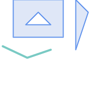 マルチポリゴンとラインストリング (スナップ前) | |
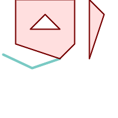 ラインストリングに1.01の許容距離でマルチポリゴンをスナップします。新しいマルチポリゴンはラインストリングにつながります。
SELECT ST_AsText(ST_Snap(poly,line, ST_Distance(poly,line)*1.01)) AS polysnapped
FROM (SELECT
ST_GeomFromText('MULTIPOLYGON(
((26 125, 26 200, 126 200, 126 125, 26 125 ),
( 51 150, 101 150, 76 175, 51 150 )),
(( 151 100, 151 200, 176 175, 151 100 )))') As poly,
ST_GeomFromText('LINESTRING (5 107, 54 84, 101 100)') As line
) As foo;
polysnapped
---------------------------------------------------------------------
MULTIPOLYGON(((26 125,26 200,126 200,126 125,101 100,26 125),
(51 150,101 150,76 175,51 150)),((151 100,151 200,176 175,151 100)))
| 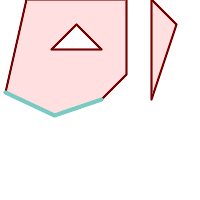 マルチラインストリングに1.25の許容距離でマルチポリゴンをスナップします。新しいマルチポリゴンはラインストリングにつながります。
SELECT ST_AsText(
ST_Snap(poly,line, ST_Distance(poly,line)*1.25)
) AS polysnapped
FROM (SELECT
ST_GeomFromText('MULTIPOLYGON(
(( 26 125, 26 200, 126 200, 126 125, 26 125 ),
( 51 150, 101 150, 76 175, 51 150 )),
(( 151 100, 151 200, 176 175, 151 100 )))') As poly,
ST_GeomFromText('LINESTRING (5 107, 54 84, 101 100)') As line
) As foo;
polysnapped
---------------------------------------------------------------------
MULTIPOLYGON(((5 107,26 200,126 200,126 125,101 100,54 84,5 107),
(51 150,101 150,76 175,51 150)),((151 100,151 200,176 175,151 100)))
|
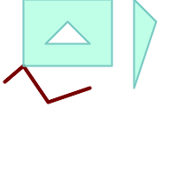 元のマルチポリゴンに1.01の許容距離でラインストリングをスナップします。新しいラインストリングはマルチポリゴンにつながります。
SELECT ST_AsText(
ST_Snap(line, poly, ST_Distance(poly,line)*1.01)
) AS linesnapped
FROM (SELECT
ST_GeomFromText('MULTIPOLYGON(
((26 125, 26 200, 126 200, 126 125, 26 125),
(51 150, 101 150, 76 175, 51 150 )),
((151 100, 151 200, 176 175, 151 100)))') As poly,
ST_GeomFromText('LINESTRING (5 107, 54 84, 101 100)') As line
) As foo;
linesnapped
----------------------------------------
LINESTRING(5 107,26 125,54 84,101 100)
| 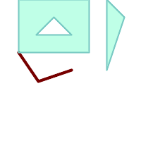 元のマルチポリゴンに1.25の許容距離でラインストリングをスナップします。新しいラインストリングはマルチポリゴンにつながります。
SELECT ST_AsText(
ST_Snap(line, poly, ST_Distance(poly,line)*1.25)
) AS linesnapped
FROM (SELECT
ST_GeomFromText('MULTIPOLYGON(
(( 26 125, 26 200, 126 200, 126 125, 26 125 ),
(51 150, 101 150, 76 175, 51 150 )),
((151 100, 151 200, 176 175, 151 100 )))') As poly,
ST_GeomFromText('LINESTRING (5 107, 54 84, 101 100)') As line
) As foo;
linesnapped
---------------------------------------
LINESTRING(26 125,54 84,101 100)
|
名前
ST_SwapOrdinates — 与えられたジオメトリにおいて与えられた座標の値を入れ替えたジオメトリを返します。
概要
geometry ST_SwapOrdinates(geometry geom, cstring ords);
説明
与えられたジオメトリにおいて与えられた座標の値を入れ替えたジオメトリを返します。
ords引数は2文字の文字列で、入れ替える座標名を示します。座標名はx, y, z, mが有効です。
Availability: 2.2.0
このメソッドは曲線ストリングと曲線に対応しています。
この関数は3次元に対応し、Z値を削除しません。
この関数はM値に対応します。
この関数は多面体サーフェスに対応しています。
この関数は三角形と不規則三角網 (TIN)に対応しています。
- ST_IsValid — ジオメトリが2次元で整形されているかのテスト。
- ST_IsValidDetail — ジオメトリが妥当か、妥当でないなら理由と位置をそれぞれ示す
valid_detail行を返します。 - ST_IsValidReason — ジオメトリが妥当か否かを示す文字列を返し、不正な場合は理由を返します。
- ST_MakeValid — 頂点を失うことなしに不正なジオメトリを妥当なジオメトリにしようと試みます。
名前
ST_IsValid — ジオメトリが2次元で整形されているかのテスト。
概要
boolean ST_IsValid(geometry g);
boolean ST_IsValid(geometry g, integer flags);
説明
ST_Geometry値が整形式であり、2次元で妥当かどうかをOGC規則に沿ってテストします。3次元と4次元のジオメトリでは、評価は2次元で行います。ジオメトリが不正なら、PostgreSQL NOTICEが出力され、不正である理由の詳細が示されます。
flagsパラメータを持つ版が対応する値についてはST_IsValidDetailで説明しています。
ジオメトリ評価に関する詳細情報については「ジオメトリ検証」を参照してください。
| |
SQL-MMでは、ST_IsValid(NULL)は0を返しますが、PostGISではNULLを返します。 |
GEOSモジュールで実現しています。
フラグを受け付ける形式は、2.0.0から有効になりました。
このメソッドはOGC Simple Features Implementation Specification for SQL 1.1の実装です。
このメソッドはSQL/MM仕様の実装です。
SQL-MM 3: 5.1.9
| |
OGC-SFSもSQL-MMもST_IsValidでフラグ引数を含む仕様になっていません。フラグはPostGIS独自拡張です。 |
名前
ST_IsValidDetail — ジオメトリが妥当か、妥当でないなら理由と位置をそれぞれ示すvalid_detail行を返します。
概要
valid_detail ST_IsValidDetail(geometry geom, integer flags);
説明
valid_detail行を返します。これには、ジオメトリが妥当かどうかを示す真偽値 (valid)、不正である理由を示す文字列 (reason)、不正である位置を指摘するジオメトリ (location)からなります。
不正ジオメトリの詳細報告の生成をするST_IsValidとST_IsValidReasonの組み合わせを改善するために使います。
任意パラメータflagsはビットフィールドです。次の値を持つことができます。
0: 通常のOGC SFS評価モデルを使用します。
1: ある種の自己接触リング (逆の外リングと逆の穴リング)を妥当とします。この評価モデルはこれらのツールで使われるため「ESRIフラグ」とも言われます。OGCモデルでは不正とされることに注意してください。
GEOSモジュールで実現しています。
Availability: 2.0.0
例
--First 3 Rejects from a successful quintuplet experiment
SELECT gid, reason(ST_IsValidDetail(geom)), ST_AsText(location(ST_IsValidDetail(geom))) as location
FROM
(SELECT ST_MakePolygon(ST_ExteriorRing(e.buff), array_agg(f.line)) As geom, gid
FROM (SELECT ST_Buffer(ST_Point(x1*10,y1), z1) As buff, x1*10 + y1*100 + z1*1000 As gid
FROM generate_series(-4,6) x1
CROSS JOIN generate_series(2,5) y1
CROSS JOIN generate_series(1,8) z1
WHERE x1 > y1*0.5 AND z1 < x1*y1) As e
INNER JOIN (SELECT ST_Translate(ST_ExteriorRing(ST_Buffer(ST_Point(x1*10,y1), z1)),y1*1, z1*2) As line
FROM generate_series(-3,6) x1
CROSS JOIN generate_series(2,5) y1
CROSS JOIN generate_series(1,10) z1
WHERE x1 > y1*0.75 AND z1 < x1*y1) As f
ON (ST_Area(e.buff) > 78 AND ST_Contains(e.buff, f.line))
GROUP BY gid, e.buff) As quintuplet_experiment
WHERE ST_IsValid(geom) = false
ORDER BY gid
LIMIT 3;
gid | reason | location
------+-------------------+-------------
5330 | Self-intersection | POINT(32 5)
5340 | Self-intersection | POINT(42 5)
5350 | Self-intersection | POINT(52 5)
--simple example
SELECT * FROM ST_IsValidDetail('LINESTRING(220227 150406,2220227 150407,222020 150410)');
valid | reason | location
-------+--------+----------
t | |
名前
ST_IsValidReason — ジオメトリが妥当か否かを示す文字列を返し、不正な場合は理由を返します。
概要
text ST_IsValidReason(geometry geomA);
text ST_IsValidReason(geometry geomA, integer flags);
説明
ジオメトリが妥当かどうか、不正な場合はその理由を示す文字列を返します。
不正なジオメトリと理由の詳細報告を生成するのに、ST_IsValidと併用します。
許されるflagsは、 ST_IsValidDetailにあります。
GEOSモジュールで実現しています。
Availability: 1.4
Availability: 2.0 フラグを取る形式。
例
-- invalid bow-tie polygon
SELECT ST_IsValidReason(
'POLYGON ((100 200, 100 100, 200 200,
200 100, 100 200))'::geometry) as validity_info;
validity_info
--------------------------
Self-intersection[150 150]
--First 3 Rejects from a successful quintuplet experiment
SELECT gid, ST_IsValidReason(geom) as validity_info
FROM
(SELECT ST_MakePolygon(ST_ExteriorRing(e.buff), array_agg(f.line)) As geom, gid
FROM (SELECT ST_Buffer(ST_Point(x1*10,y1), z1) As buff, x1*10 + y1*100 + z1*1000 As gid
FROM generate_series(-4,6) x1
CROSS JOIN generate_series(2,5) y1
CROSS JOIN generate_series(1,8) z1
WHERE x1 > y1*0.5 AND z1 < x1*y1) As e
INNER JOIN (SELECT ST_Translate(ST_ExteriorRing(ST_Buffer(ST_Point(x1*10,y1), z1)),y1*1, z1*2) As line
FROM generate_series(-3,6) x1
CROSS JOIN generate_series(2,5) y1
CROSS JOIN generate_series(1,10) z1
WHERE x1 > y1*0.75 AND z1 < x1*y1) As f
ON (ST_Area(e.buff) > 78 AND ST_Contains(e.buff, f.line))
GROUP BY gid, e.buff) As quintuplet_experiment
WHERE ST_IsValid(geom) = false
ORDER BY gid
LIMIT 3;
gid | validity_info
------+--------------------------
5330 | Self-intersection [32 5]
5340 | Self-intersection [42 5]
5350 | Self-intersection [52 5]
--simple example
SELECT ST_IsValidReason('LINESTRING(220227 150406,2220227 150407,222020 150410)');
st_isvalidreason
------------------
Valid Geometry
名前
ST_MakeValid — 頂点を失うことなしに不正なジオメトリを妥当なジオメトリにしようと試みます。
概要
geometry ST_MakeValid(geometry input);
geometry ST_MakeValid(geometry input, text params);
説明
与えられた不正なジオメトリを、入力ジオメトリの頂点を捨てずに、妥当な表現で生成しようとします。妥当なジオメトリは変更せずに返します。
対応する入力はPOINTS, MULTIPOINTS, LINESTRING, MULTILINESTRING, POLYGON, MULTIPOLYGON, GEOMETRYCOLLECTIONおよびそれらの混交したものです。
完全または部分的な次元崩壊の場合には、出力ジオメトリは、同次元まはた低い次元のジオメトリのコレクションか、低い次元のジオメトリコレクションになります。
単一ポリゴンは、自己インタセクトがある場合には、マルチポリゴンになります。
params引数は、妥当なジオメトリを構築するために使うメソッドを選択するための任意文字列を与えるのに使えます。任意文字列は"method=linework|structure keepcollapsed=true|false"という書式に従います。"params"引数が無い場合には、"linework"アルゴリズムがデフォルトとして使われます。
"method"キーに対して取り得る値は二つあります。
"linework"は従来のアルゴリズムです。はじめに全てのラインを抽出し、線画からノードを生成して、そこから妥当なジオメトリを構築します。
"structure"は、リングの内と外の間を識別して、外リングを結合し、全ての内リングとの差を取ることで新しいジオメトリを構築します。
"keepcollapsed"キーは"structure"アルゴリズムでのみ有効です。"true"または"false"を取ります。"false"が指定された場合には、1点のLINESTRING等のような低い次元に崩壊したジオメトリ要素が出てきます。
GEOSモジュールで実現しています。
Availability: 2.0.0
Enhanced: 2.0.1 速度の改善
Enhanced: 2.1.0 GEOMETRYCOLLECTIONとMULTIPOINTの対応の追加
Enhanced: 3.1.0 NaN値を持つ座標の削除が追加されました。
Enhanced: 3.2.0, アルゴリズムに関する任意パラメータ'linework'と'structure'が追加されました。GEOS 3.10.0以上が必要です。
この関数は3次元に対応し、Z値を削除しません。
例
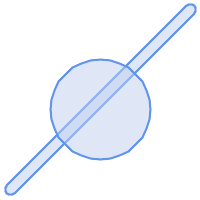 before_geom: 二つのオーバラップしているポリゴンからなるマルチポリゴン
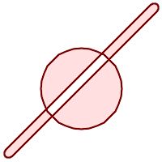 after_geom: 4 つのオーバーラップしないポリゴンのマルチポリゴン
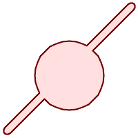 after_geom_structure: 一つのオーバラップしないポリゴンからなるマルチポリゴン
SELECT f.geom AS before_geom, ST_MakeValid(f.geom) AS after_geom, ST_MakeValid(f.geom, 'method=structure') AS after_geom_structure FROM (SELECT 'MULTIPOLYGON(((186 194,187 194,188 195,189 195,190 195, 191 195,192 195,193 194,194 194,194 193,195 192,195 191, 195 190,195 189,195 188,194 187,194 186,14 6,13 6,12 5,11 5, 10 5,9 5,8 5,7 6,6 6,6 7,5 8,5 9,5 10,5 11,5 12,6 13,6 14,186 194)), ((150 90,149 80,146 71,142 62,135 55,128 48,119 44,110 41,100 40, 90 41,81 44,72 48,65 55,58 62,54 71,51 80,50 90,51 100, 54 109,58 118,65 125,72 132,81 136,90 139,100 140,110 139, 119 136,128 132,135 125,142 118,146 109,149 100,150 90)))'::geometry AS geom) AS f;
|
 before_geom: 六つのオーバラップしているポリゴンからなるマルチポリゴン
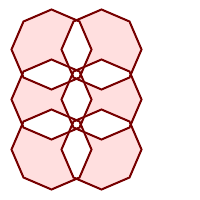 after_geom: 14個のオーバラップしていないポリゴンからなるマルチポリゴン
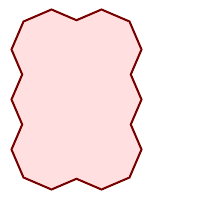 after_geom_structure: 一つのオーバラップしないポリゴンからなるマルチポリゴン
SELECT c.geom AS before_geom,
ST_MakeValid(c.geom) AS after_geom,
ST_MakeValid(c.geom, 'method=structure') AS after_geom_structure
FROM (SELECT 'MULTIPOLYGON(((91 50,79 22,51 10,23 22,11 50,23 78,51 90,79 78,91 50)),
((91 100,79 72,51 60,23 72,11 100,23 128,51 140,79 128,91 100)),
((91 150,79 122,51 110,23 122,11 150,23 178,51 190,79 178,91 150)),
((141 50,129 22,101 10,73 22,61 50,73 78,101 90,129 78,141 50)),
((141 100,129 72,101 60,73 72,61 100,73 128,101 140,129 128,141 100)),
((141 150,129 122,101 110,73 122,61 150,73 178,101 190,129 178,141 150)))'::geometry AS geom) AS c;
|
- ST_InverseTransformPipeline — 定義した座標変換パイプラインの逆変換を使って、異なる空間参照系に座標値を変換した新しいジオメトリを返します。
- ST_SetSRID — ジオメトリにSRIDを設定します。
- ST_SRID — ジオメトリの空間参照系識別子を返します。
- ST_Transform — 異なる空間参照系に投影変換された新しいジオメトリを返します。
- ST_TransformPipeline — 定義されている座標変換パイプラインを使用して異なる空間参照系に変換された新しいジオメトリを返します。
- postgis_srs_codes — 指定した機関に関連付けられたSRSコードの一覧を返します。
- postgis_srs — 求める機関と空間参照識別子に関するメタデータレコードを返します。
- postgis_srs_all — Projデータベース内のあらゆる空間参照系のメタデータレコードを返します。
- postgis_srs_search — boundsパラメータを完全に含む適用範囲を持つ投影座標系のメタデータレコードを返します。
名前
ST_InverseTransformPipeline — 定義した座標変換パイプラインの逆変換を使って、異なる空間参照系に座標値を変換した新しいジオメトリを返します。
概要
geometry ST_InverseTransformPipeline(geometry geom, text pipeline, integer to_srid);
説明
定義した座標変換パイプラインの逆方向への変換を使って、異なる空間参照系に座標値を変換した新しいジオメトリを返します。
変換パイプラインの記述に関する詳細についてはST_TransformPipelineを参照して下さい。
Availability: 3.4.0
入力ジオメトリのSRIDは無視され、任意パラメータ to_srid から値が提供されていない場合には出力ジオメトリのSRIDは0に設定されます。ST_TransformPipelineを使うときには、パイプラインが順方向に実行されます。`ST_InverseTransformPipeline()`を使うと、パイプラインは逆方向に実行されます。
パイプラインを用いた変換はST_Transformの特別版です。ほとんどの場合、`ST_Transform`は、座標系間の変換において正しい演算子を選択します。こちらの方が推奨されます。
例
EPSG:16031変換を使ったWGS 84 経度緯度から UTM31Nへの変換
-- Inverse direction
SELECT ST_AsText(ST_InverseTransformPipeline('POINT(426857.9877165967 5427937.523342293)'::geometry,
'urn:ogc:def:coordinateOperation:EPSG::16031')) AS wgs_geom;
wgs_geom
----------------------------
POINT(2 48.99999999999999)
(1 row)
GDA2020の例。
-- using ST_Transform with automatic selection of a conversion pipeline.
SELECT ST_AsText(ST_Transform('SRID=4939;POINT(143.0 -37.0)'::geometry, 7844)) AS gda2020_auto;
gda2020_auto
-----------------------------------------------
POINT(143.00000635638918 -36.999986706128176)
(1 row)
名前
ST_SetSRID — ジオメトリにSRIDを設定します。
概要
geometry ST_SetSRID(geometry geom, integer srid);
説明
ジオメトリのSRIDを特定の整数値に設定します。クエリのためのバウンディングボックスを生成する際に使います。
| |
この関数はジオメトリを変換せず、ジオメトリが仮定する空間参照系を定義するメタデータを設定するだけです。ジオメトリを新しい投影法に変換したい場合はST_Transformを使います。 |
このメソッドはOGC Simple Features Implementation Specification for SQL 1.1の実装です。
このメソッドは曲線ストリングと曲線に対応しています。
例
-- ポイントをWGS84経度緯度に設定 --
SELECT ST_SetSRID(ST_Point(-123.365556, 48.428611),4326) As wgs84long_lat;
-- the ewkt representation (wrap with ST_AsEWKT) -
SRID=4326;POINT(-123.365556 48.428611)
-- ポイントをWGS84経度緯度に設定したうえで、WEBメルカトル(球面メルカトル)に変換 --
SELECT ST_Transform(ST_SetSRID(ST_Point(-123.365556, 48.428611),4326),3785) As spere_merc;
-- the ewkt representation (wrap with ST_AsEWKT) -
SRID=3785;POINT(-13732990.8753491 6178458.96425423)
名前
ST_SRID — ジオメトリの空間参照系識別子を返します。
概要
integer ST_SRID(geometry g1);
説明
ST_Geometryのspatial_ref_sysテーブルで定義されている空間参照系の識別番号を返します。「空間参照系」を参照して下さい。
| |
spatial_ref_sysテーブルはPostGISが知る参照系の全てのカタログを作っていて、ある空間参照系から他の空間参照系に変換するために使われます。ジオメトリの変換を予定している場合は正しい空間参照系の識別番号を持っているか確認することは重要です。 |
このメソッドはOGC Simple Features Implementation Specification for SQL 1.1の実装です。
s2.1.1.1
このメソッドはSQL/MM仕様の実装です。
SQL-MM 3: 5.1.5
このメソッドは曲線ストリングと曲線に対応しています。
名前
ST_Transform — 異なる空間参照系に投影変換された新しいジオメトリを返します。
概要
geometry ST_Transform(geometry g1, integer srid);
geometry ST_Transform(geometry geom, text to_proj);
geometry ST_Transform(geometry geom, text from_proj, text to_proj);
geometry ST_Transform(geometry geom, text from_proj, integer to_srid);
説明
異なる空間参照系に投影変換された新しいジオメトリを返します。変換先空間参照系であるto_sridは、妥当なSRID整数パラメータ (spatial_ref_sysにあるということ)です。他にも、to_projとfrom_projにPROJ.4文字列で定義された空間参照系を指定することができますが、最適化されません。変換先空間参照系がSRIDの代わりにPROJ.4文字列で表現されている場合には、出力ジオメトリのSRIDは0になります。from_projを使う場合には、入力ジオメトリは定義されたSRIDを持っていなければなりません。
ST_TransformはしばしばST_SetSRIDと混同されます。ST_Transformは実際にジオメトリの座標を、ある空間参照系から他のものに変換します。ST_SetSRIDは単にジオメトリのSRIDを変更するだけです。
ST_Transformは変換元空間参照系と変換先空間参照系に与える適切な変換パイプラインを自動的に選択します。特定の変換法を使用するにはST_TransformPipelineを使います。
| |
PostGISはPROJ対応でコンパイルする必要があります。PROJ対応でコンパイルしたかを確認するにはPostGIS_Full_Versionを使います。 |
| |
一つ以上の変換を行う場合は、インデクスの利点を得るために、使用する変換に関する関数インデクスを持つと便利です。 |
| |
1.3.4より前では、曲線を含むジオメトリで使用すると、この関数はクラッシュします。これは1.3.4以上で訂正されています。 |
Enhanced: 2.0.0 多面体サーフェス対応が導入されました。
Enhanced: 2.3.0 直接のPROJ.4文字列への対応が導入されました。
このメソッドはSQL/MM仕様の実装です。
SQL-MM 3: 5.1.6
このメソッドは曲線ストリングと曲線に対応しています。
この関数は多面体サーフェスに対応しています。
例
マサチューセッツ州平面座標系 (アメリカ測量フィート)をWGS84経度緯度に変更します。
SELECT ST_AsText(ST_Transform(ST_GeomFromText('POLYGON((743238 2967416,743238 2967450,
743265 2967450,743265.625 2967416,743238 2967416))',2249),4326)) As wgs_geom;
wgs_geom
---------------------------
POLYGON((-71.1776848522251 42.3902896512902,-71.1776843766326 42.3903829478009,
-71.1775844305465 42.3903826677917,-71.1775825927231 42.3902893647987,-71.177684
8522251 42.3902896512902));
(1 row)
--3D Circular String example
SELECT ST_AsEWKT(ST_Transform(ST_GeomFromEWKT('SRID=2249;CIRCULARSTRING(743238 2967416 1,743238 2967450 2,743265 2967450 3,743265.625 2967416 3,743238 2967416 4)'),4326));
st_asewkt
--------------------------------------------------------------------------------------
SRID=4326;CIRCULARSTRING(-71.1776848522251 42.3902896512902 1,-71.1776843766326 42.3903829478009 2,
-71.1775844305465 42.3903826677917 3,
-71.1775825927231 42.3902893647987 3,-71.1776848522251 42.3902896512902 4)
部分関数インデクスを作る例です。全てのジオメトリが入っているとは確信できないテーブルのためには、スペースの節約とインデクスを小さく効率的にするために、NULLジオメトリを無視する部分インデクスを使うのが最善です。
CREATE INDEX idx_geom_26986_parcels
ON parcels
USING gist
(ST_Transform(geom, 26986))
WHERE geom IS NOT NULL;
PROJ.4テキストを使って、独自の空間参照系に投影変換する例です。
-- Find intersection of two polygons near the North pole, using a custom Gnomic projection
-- See http://boundlessgeo.com/2012/02/flattening-the-peel/
WITH data AS (
SELECT
ST_GeomFromText('POLYGON((170 50,170 72,-130 72,-130 50,170 50))', 4326) AS p1,
ST_GeomFromText('POLYGON((-170 68,-170 90,-141 90,-141 68,-170 68))', 4326) AS p2,
'+proj=gnom +ellps=WGS84 +lat_0=70 +lon_0=-160 +no_defs'::text AS gnom
)
SELECT ST_AsText(
ST_Transform(
ST_Intersection(ST_Transform(p1, gnom), ST_Transform(p2, gnom)),
gnom, 4326))
FROM data;
st_astext
--------------------------------------------------------------------------------
POLYGON((-170 74.053793645338,-141 73.4268621378904,-141 68,-170 68,-170 74.053793645338))
変換の挙動の設定
グリッドシフトを含む座標変換は、ときどき失敗します。たとえば、PROJ.4にグリッドシフトファイルを付けてビルドされていなかった場合や、座標がグリッドシフト定義の範囲内に無い、といった場合です。デフォルトでは、PostGISはグリッドシフトファイルが無い場合はエラーを投げますが、この挙動は、PROJ.4 テキストのto_proj値の変更を試みたり、spatial_ref_sysテーブルのproj4text値を変更したりすることで、SRID毎の原則を設定することができます。
たとえば、proj4textパラメータ +datum=NAD87 は次に示す+nadgridsパラメータの短縮形です。
+nadgrids=@conus,@alaska,@ntv2_0.gsb,@ntv1_can.dat
接頭辞@は、ファイルが無くてもエラー報告をしないという意味ですが、適切だった (発見されてオーバラップした)ファイルがないままリストの終わりに達した場合はエラーが出ます。
逆に、少なくとも標準的なファイルが確実にあって欲しいけれども、該当が無いまま全てのファイルが走査された場合に、NULL変換としたいなら、次が使えます。
+nadgrids=@conus,@alaska,@ntv2_0.gsb,@ntv1_can.dat,null
NULLグリッドシフトファイルは、世界全体をカバーして、シフトを行わない、妥当なグリッドシフトファイルです。 完全な例のために、正しい範囲にないSRID 4267への変換でエラーが投げられないようPostGISを変えたいなら、次のようにします。
UPDATE spatial_ref_sys SET proj4text = '+proj=longlat +ellps=clrk66 +nadgrids=@conus,@alaska,@ntv2_0.gsb,@ntv1_can.dat,null +no_defs' WHERE srid = 4267;
名前
ST_TransformPipeline — 定義されている座標変換パイプラインを使用して異なる空間参照系に変換された新しいジオメトリを返します。
概要
geometry ST_TransformPipeline(geometry g1, text pipeline, integer to_srid);
説明
定義されている座標変換パイプラインを使用して異なる空間参照系に変換された新しいジオメトリを返します。
変換パイプラインは次の文字列書式のいずれかをつかって定義されます。
urn:ogc:def:coordinateOperation:AUTHORITY::CODE。単純なEPSG:CODE文字列は座標操作を一意に識別できません。CRS定義に同じEPSGコードが使用できるためです。PROJパイプライン文字列:
+proj=pipeline ...。自動の軸正規化が適用されません。必要なら呼び出し元が追加のパイプライン段階を必要とします。もしくはaxisswap段階を削除する必要があります。操作の連結:
urn:ogc:def:coordinateOperation,coordinateOperation:EPSG::3895,coordinateOperation:EPSG::1618。
Availability: 3.4.0
入力ジオメトリのSRIDは無視され、任意パラメータ to_srid から値が提供されていない場合には出力ジオメトリのSRIDは0に設定されます。`ST_TransformPipeline()`を使うときには、パイプラインが順方向に実行されます。ST_InverseTransformPipelineを使うと、パイプラインは逆方向に実行されます。
パイプラインを用いた変換はST_Transformの特別版です。ほとんどの場合、`ST_Transform`は、座標系間の変換において正しい演算子を選択します。こちらの方が推奨されます。
例
EPSG:16031変換を使ったWGS 84 経度緯度から UTM31Nへの変換
-- Forward direction
SELECT ST_AsText(ST_TransformPipeline('SRID=4326;POINT(2 49)'::geometry,
'urn:ogc:def:coordinateOperation:EPSG::16031') AS utm_geom);
utm_geom
--------------------------------------------
POINT(426857.9877165967 5427937.523342293)
(1 row)
-- Inverse direction
SELECT ST_AsText(ST_InverseTransformPipeline('POINT(426857.9877165967 5427937.523342293)'::geometry,
'urn:ogc:def:coordinateOperation:EPSG::16031')) AS wgs_geom;
wgs_geom
----------------------------
POINT(2 48.99999999999999)
(1 row)
GDA2020の例。
-- using ST_Transform with automatic selection of a conversion pipeline.
SELECT ST_AsText(ST_Transform('SRID=4939;POINT(143.0 -37.0)'::geometry, 7844)) AS gda2020_auto;
gda2020_auto
-----------------------------------------------
POINT(143.00000635638918 -36.999986706128176)
(1 row)
-- using a defined conversion (EPSG:8447)
SELECT ST_AsText(ST_TransformPipeline('SRID=4939;POINT(143.0 -37.0)'::geometry,
'urn:ogc:def:coordinateOperation:EPSG::8447')) AS gda2020_code;
gda2020_code
----------------------------------------------
POINT(143.0000063280214 -36.999986718287545)
(1 row)
-- using a PROJ pipeline definition matching EPSG:8447, as returned from
-- 'projinfo -s EPSG:4939 -t EPSG:7844'.
-- NOTE: any 'axisswap' steps must be removed.
SELECT ST_AsText(ST_TransformPipeline('SRID=4939;POINT(143.0 -37.0)'::geometry,
'+proj=pipeline
+step +proj=unitconvert +xy_in=deg +xy_out=rad
+step +proj=hgridshift +grids=au_icsm_GDA94_GDA2020_conformal_and_distortion.tif
+step +proj=unitconvert +xy_in=rad +xy_out=deg')) AS gda2020_pipeline;
gda2020_pipeline
----------------------------------------------
POINT(143.0000063280214 -36.999986718287545)
(1 row)
名前
postgis_srs_codes — 指定した機関に関連付けられたSRSコードの一覧を返します。
概要
setof text postgis_srs_codes(text auth_name);
名前
postgis_srs — 求める機関と空間参照識別子に関するメタデータレコードを返します。
概要
setof record postgis_srs(text auth_name, text auth_srid);
説明
指定したauth_nameに関して求めるauth_sridのメタデータレコードを貸します。レコードにはauth_name, auth_srid, srname, srtext, proj4textと適用範囲の隅を示すpoint_swとpoint_neが含まれます。
Availability: 3.4.0
Proj 6以上
例
EPSG:3005のメタデータを取得します。
SELECT * FROM postgis_srs('EPSG', '3005');
auth_name | EPSG
auth_srid | 3005
srname | NAD83 / BC Albers
srtext | PROJCS["NAD83 / BC Albers", ... ]]
proj4text | +proj=aea +lat_0=45 +lon_0=-126 +lat_1=50 +lat_2=58.5 +x_0=1000000 +y_0=0 +datum=NAD83 +units=m +no_defs +type=crs
point_sw | 0101000020E6100000E17A14AE476161C00000000000204840
point_ne | 0101000020E610000085EB51B81E855CC0E17A14AE47014E40
名前
postgis_srs_all — Projデータベース内のあらゆる空間参照系のメタデータレコードを返します。
概要
postgis_srs_allレコードの集合(void);
説明
Projデータベース内にある全てのメタデータレコードを返します。レコードにはauth_name, auth_srid, srname, srtext, proj4textと適用範囲の隅を示すpoint_swとpoint_neが含まれます。
Availability: 3.4.0
Proj 6以上
例
Projデータベースから最初の10件のメタデータレコードを得ます。
SELECT auth_name, auth_srid, srname FROM postgis_srs_all() LIMIT 10; auth_name | auth_srid | srname -----------+-----------+------------------------------------------ EPSG | 2000 | Anguilla 1957 / British West Indies Grid EPSG | 20004 | Pulkovo 1995 / Gauss-Kruger zone 4 EPSG | 20005 | Pulkovo 1995 / Gauss-Kruger zone 5 EPSG | 20006 | Pulkovo 1995 / Gauss-Kruger zone 6 EPSG | 20007 | Pulkovo 1995 / Gauss-Kruger zone 7 EPSG | 20008 | Pulkovo 1995 / Gauss-Kruger zone 8 EPSG | 20009 | Pulkovo 1995 / Gauss-Kruger zone 9 EPSG | 2001 | Antigua 1943 / British West Indies Grid EPSG | 20010 | Pulkovo 1995 / Gauss-Kruger zone 10 EPSG | 20011 | Pulkovo 1995 / Gauss-Kruger zone 11
名前
postgis_srs_search — boundsパラメータを完全に含む適用範囲を持つ投影座標系のメタデータレコードを返します。
概要
setof record postgis_srs_search(geometry bounds, text auth_name=EPSG);
説明
boundsパラメータを完全に含む適用範囲を持つ投影座標系のメタデータレコードを返します。レコードにはauth_name, auth_srid, srname, srtext, proj4textと適用範囲の隅を示すpoint_swとpoint_neが含まれます。
この検索では、投影座標系のみが対象となります。お持ちのデータの範囲で動作しうる座標系を探索することを目的としています。
Availability: 3.4.0
Proj 6以上
例
ルイジアナ州の投影座標系を探索します。
SELECT auth_name, auth_srid, srname,
ST_AsText(point_sw) AS point_sw,
ST_AsText(point_ne) AS point_ne
FROM postgis_srs_search('SRID=4326;LINESTRING(-90 30, -91 31)')
LIMIT 3;
auth_name | auth_srid | srname | point_sw | point_ne
-----------+-----------+--------------------------------------+---------------------+---------------------
EPSG | 2801 | NAD83(HARN) / Louisiana South | POINT(-93.94 28.85) | POINT(-88.75 31.07)
EPSG | 3452 | NAD83 / Louisiana South (ftUS) | POINT(-93.94 28.85) | POINT(-88.75 31.07)
EPSG | 3457 | NAD83(HARN) / Louisiana South (ftUS) | POINT(-93.94 28.85) | POINT(-88.75 31.07)
最大範囲を得るためにテーブルをスキャンして、適していると言えそうな投影座標系を見つけます。
WITH ext AS ( SELECT ST_Extent(geom) AS geom, Max(ST_SRID(geom)) AS srid FROM foo ) SELECT auth_name, auth_srid, srname, ST_AsText(point_sw) AS point_sw, ST_AsText(point_ne) AS point_ne FROM ext CROSS JOIN postgis_srs_search(ST_SetSRID(ext.geom, ext.srid)) LIMIT 3;
- ST_BdPolyFromText — マルチラインストリングのWell-Known Text表現による、閉じたラインストリングの任意のコレクションからポリゴンを生成します。
- ST_BdMPolyFromText — マルチラインストリングのWell-Known Text表現による、閉じたラインストリングの任意のコレクションからマルチポリゴンを構築します。
- ST_GeogFromText — Well-Known Text表現または拡張WKTから指定したジオグラフィ値を返します。
- ST_GeographyFromText — Well-Known Text表現または拡張WKTから指定したジオグラフィ値を返します。
- ST_GeomCollFromText — WKT表現と与えられたSRIDからジオメトリのコレクションを生成します。SRIDが与えられていない場合は0とします。
- ST_GeomFromEWKT — 拡張Well-Known Text表現 (EWKT)から指定されたST_Geometry値を返します。
- ST_GeomFromMARC21 — MARC21/XML地理データを入力に取り、PostGISジオメトリオブジェクトを返します。
- ST_GeometryFromText — Well-Knwon Text表現 (WKT)から指定したST_Geometry値を返します。これはST_GeomFromTextの別名です。
- ST_GeomFromText — Well-Known Text表現 (WKT)から指定したST_Geometryを返します。
- ST_LineFromText — WKT表現と与えられたSRIDからジオメトリを生成します。SRIDが与えられていない場合は0 (不明)となります。
- ST_MLineFromText — WKT表現から指定したST_MultiLineString値を返します。
- ST_MPointFromText — Well-Known Text (WKT)表現と与えられたSRIDからジオメトリを生成します。SRIDを与えない場合は0 (不明)となります。
- ST_MPolyFromText — Well-Known Text (WKT)表現と与えられたSRIDからマルチポリゴンを生成します。SRIDが与えられていない場合は0 (不明)となります。
- ST_PointFromText — WKTと与えられたSRIDからポイントジオメトリを生成します。SRIDが与えられていない場合は0 (不明)とします。
- ST_PolygonFromText — Well-Known Text (WKT)表現と与えられたSRIDからジオメトリを生成します。SRIDを与えない場合は0 (不明)となります。
- ST_WKTToSQL — Well-Knwon Text表現 (WKT)から指定したST_Geometry値を返します。これはST_GeomFromTextの別名です。
名前
ST_BdPolyFromText — マルチラインストリングのWell-Known Text表現による、閉じたラインストリングの任意のコレクションからポリゴンを生成します。
概要
geometry ST_BdPolyFromText(text WKT, integer srid);
説明
マルチラインストリングのWell-Known Text表現による、閉じたラインストリングの任意のコレクションからポリゴンを構築します。
| |
WKTがMULTILINESTRINGでない場合には、エラーが投げられます。出力がMULTIPOLYGONになる場合には、エラーが投げられますが、この場合はST_BdMPolyFromTextを使うかPostGIS独特のアプローチとしてST_BuildArea()をご覧ください。 |
このメソッドはOGC Simple Features Implementation Specification for SQL 1.1の実装です。
s3.2.6.2
GEOSモジュールで実現しています。
Availability: 1.1.0
名前
ST_BdMPolyFromText — マルチラインストリングのWell-Known Text表現による、閉じたラインストリングの任意のコレクションからマルチポリゴンを構築します。
概要
geometry ST_BdMPolyFromText(text WKT, integer srid);
説明
マルチラインストリングのWell-Known Text表現による、閉じたラインストリングの任意のコレクションからマルチポリゴンを構築します。
| |
WKTがMULTILINESTRINGでない場合には、エラーが投げられます。出力が単一のポリゴンであってもマルチポリゴンに強制されます。単一のポリゴンが返って欲しい場合はST_BdPolyFromTextを使うかPostGIS独特のアプローチとしてST_BuildArea()をご覧ください。 |
このメソッドはOGC Simple Features Implementation Specification for SQL 1.1の実装です。
s3.2.6.2
GEOSモジュールで実現しています。
Availability: 1.1.0
名前
ST_GeogFromText — Well-Known Text表現または拡張WKTから指定したジオグラフィ値を返します。
概要
geography ST_GeogFromText(text EWKT);
説明
Well-Known Text表現または拡張WKTから指定したジオグラフィ値を返します。SRID 4326を仮定します。この関数はST_GeographyFromTextの別名です。ポイントは常に経度緯度形式で表現されます。
例
--- converting lon lat coords to geography
ALTER TABLE sometable ADD COLUMN geog geography(POINT,4326);
UPDATE sometable SET geog = ST_GeogFromText('SRID=4326;POINT(' || lon || ' ' || lat || ')');
--- specify a geography point using EPSG:4267, NAD27
SELECT ST_AsEWKT(ST_GeogFromText('SRID=4267;POINT(-77.0092 38.889588)'));
名前
ST_GeographyFromText — Well-Known Text表現または拡張WKTから指定したジオグラフィ値を返します。
概要
geography ST_GeographyFromText(text EWKT);
名前
ST_GeomCollFromText — WKT表現と与えられたSRIDからジオメトリのコレクションを生成します。SRIDが与えられていない場合は0とします。
概要
geometry ST_GeomCollFromText(text WKT, integer srid);
geometry ST_GeomCollFromText(text WKT);
説明
Well-Kown-Text (WKT)表現のコレクションと与えられたSRIDからジオメトリのコレクションを生成します。SRIDが与えられていない場合は0とします。
OGC SPEC 3.2.6.2 - 任意引数SRIDは仕様適合のためです。
WKTがGEOMETRYCOLLECTIONでない場合には、NULLを返します。
| |
全てのWKTジオメトリがジオメトリコレクションであると絶対的な確信を持てる場合は、この関数は使わないでください。付加的な評価ステップが追加されるのでST_GeomFromTextより遅いです。 |
このメソッドはOGC Simple Features Implementation Specification for SQL 1.1の実装です。
s3.2.6.2
このメソッドはSQL/MM仕様の実装です。
名前
ST_GeomFromEWKT — 拡張Well-Known Text表現 (EWKT)から指定されたST_Geometry値を返します。
概要
geometry ST_GeomFromEWKT(text EWKT);
説明
拡張Well-Known Text表現 (EWKT)からPostGIS ST_Geometryオブジェクトを生成します。
| |
EWKT書式はOGC標準ではなくPostGIS独特の書式で、空間参照系ID (SRID)を含みます。 |
Enhanced: 2.0.0 多面体サーフェス対応とTIN対応が導入されました。
この関数は3次元に対応し、Z値を削除しません。
このメソッドは曲線ストリングと曲線に対応しています。
この関数は多面体サーフェスに対応しています。
この関数は三角形と不規則三角網 (TIN)に対応しています。
例
SELECT ST_GeomFromEWKT('SRID=4269;LINESTRING(-71.160281 42.258729,-71.160837 42.259113,-71.161144 42.25932)');
SELECT ST_GeomFromEWKT('SRID=4269;MULTILINESTRING((-71.160281 42.258729,-71.160837 42.259113,-71.161144 42.25932))');
SELECT ST_GeomFromEWKT('SRID=4269;POINT(-71.064544 42.28787)');
SELECT ST_GeomFromEWKT('SRID=4269;POLYGON((-71.1776585052917 42.3902909739571,-71.1776820268866 42.3903701743239,
-71.1776063012595 42.3903825660754,-71.1775826583081 42.3903033653531,-71.1776585052917 42.3902909739571))');
SELECT ST_GeomFromEWKT('SRID=4269;MULTIPOLYGON(((-71.1031880899493 42.3152774590236,
-71.1031627617667 42.3152960829043,-71.102923838298 42.3149156848307,
-71.1023097974109 42.3151969047397,-71.1019285062273 42.3147384934248,
-71.102505233663 42.3144722937587,-71.10277487471 42.3141658254797,
-71.103113945163 42.3142739188902,-71.10324876416 42.31402489987,
-71.1033002961013 42.3140393340215,-71.1033488797549 42.3139495090772,
-71.103396240451 42.3138632439557,-71.1041521907712 42.3141153348029,
-71.1041411411543 42.3141545014533,-71.1041287795912 42.3142114839058,
-71.1041188134329 42.3142693656241,-71.1041112482575 42.3143272556118,
-71.1041072845732 42.3143851580048,-71.1041057218871 42.3144430686681,
-71.1041065602059 42.3145009876017,-71.1041097995362 42.3145589148055,
-71.1041166403905 42.3146168544148,-71.1041258822717 42.3146748022936,
-71.1041375307579 42.3147318674446,-71.1041492906949 42.3147711126569,
-71.1041598612795 42.314808571739,-71.1042515013869 42.3151287620809,
-71.1041173835118 42.3150739481917,-71.1040809891419 42.3151344119048,
-71.1040438678912 42.3151191367447,-71.1040194562988 42.3151832057859,
-71.1038734225584 42.3151140942995,-71.1038446938243 42.3151006300338,
-71.1038315271889 42.315094347535,-71.1037393329282 42.315054824985,
-71.1035447555574 42.3152608696313,-71.1033436658644 42.3151648370544,
-71.1032580383161 42.3152269126061,-71.103223066939 42.3152517403219,
-71.1031880899493 42.3152774590236)),
((-71.1043632495873 42.315113108546,-71.1043583974082 42.3151211109857,
-71.1043443253471 42.3150676015829,-71.1043850704575 42.3150793250568,-71.1043632495873 42.315113108546)))');
--3d circular string
SELECT ST_GeomFromEWKT('CIRCULARSTRING(220268 150415 1,220227 150505 2,220227 150406 3)');
--Polyhedral Surface example
SELECT ST_GeomFromEWKT('POLYHEDRALSURFACE(
((0 0 0, 0 0 1, 0 1 1, 0 1 0, 0 0 0)),
((0 0 0, 0 1 0, 1 1 0, 1 0 0, 0 0 0)),
((0 0 0, 1 0 0, 1 0 1, 0 0 1, 0 0 0)),
((1 1 0, 1 1 1, 1 0 1, 1 0 0, 1 1 0)),
((0 1 0, 0 1 1, 1 1 1, 1 1 0, 0 1 0)),
((0 0 1, 1 0 1, 1 1 1, 0 1 1, 0 0 1))
)');
名前
ST_GeomFromMARC21 — MARC21/XML地理データを入力に取り、PostGISジオメトリオブジェクトを返します。
概要
geometry ST_GeomFromMARC21 ( text marcxml );
説明
この関数はMARC21/XMLデータからPostGISジオメトリを生成するものです。POINTまたはPOLYGONを含みます。同じMARC21/XMLデータで複数の地理データが存在する場合には、 MULTIPOINTまたはMULTIPOLYGON を返します。データにジオメトリタイプが混じっている場合には、GEOMETRYCOLLECTIONを返します。MARC21/XMLデータに地理データ (データフィールド:034)を含まない場合にはNULLを返します。
対応するLOC MARC21/XMLのバージョンは次の通りです。
Availability: 3.3.0 libxml2 2.6以上が必要です。
| |
MARC21/XMLコード化地理数値データでは、今のところコード化した座標の空間参照系を記述する手段がないため、この関数は常に |
| |
返される |
例
POINTを一つ含み hddd.ddddddでエンコードしたMARC21/XML地理データの変換
SELECT
ST_AsText(
ST_GeomFromMARC21('
<record xmlns="http://www.loc.gov/MARC21/slim">
<leader
>00000nz a2200000nc 4500</leader>
<controlfield tag="001"
>040277569</controlfield>
<datafield tag="034" ind1=" " ind2=" ">
<subfield code="d"
>W004.500000</subfield>
<subfield code="e"
>W004.500000</subfield>
<subfield code="f"
>N054.250000</subfield>
<subfield code="g"
>N054.250000</subfield>
</datafield>
</record
>'));
st_astext
-------------------
POINT(-4.5 54.25)
(1 row)
POLYGONを一つ含み hdddmmssでエンコードしたMARC21/XML地理データの変換
SELECT
ST_AsText(
ST_GeomFromMARC21('
<record xmlns="http://www.loc.gov/MARC21/slim">
<leader
>01062cem a2200241 a 4500</leader>
<controlfield tag="001"
> 84696781 </controlfield>
<datafield tag="034" ind1="1" ind2=" ">
<subfield code="a"
>a</subfield>
<subfield code="b"
>50000</subfield>
<subfield code="d"
>E0130600</subfield>
<subfield code="e"
>E0133100</subfield>
<subfield code="f"
>N0523900</subfield>
<subfield code="g"
>N0522300</subfield>
</datafield>
</record
>'));
st_astext
-----------------------------------------------------------------------------------------------------------------------
POLYGON((13.1 52.65,13.516666666666667 52.65,13.516666666666667 52.38333333333333,13.1 52.38333333333333,13.1 52.65))
(1 row)
POLYGONとPOINTを含むMARC21/XML地理データの変換:
SELECT
ST_AsText(
ST_GeomFromMARC21('
<record xmlns="http://www.loc.gov/MARC21/slim">
<datafield tag="034" ind1="1" ind2=" ">
<subfield code="a"
>a</subfield>
<subfield code="b"
>50000</subfield>
<subfield code="d"
>E0130600</subfield>
<subfield code="e"
>E0133100</subfield>
<subfield code="f"
>N0523900</subfield>
<subfield code="g"
>N0522300</subfield>
</datafield>
<datafield tag="034" ind1=" " ind2=" ">
<subfield code="d"
>W004.500000</subfield>
<subfield code="e"
>W004.500000</subfield>
<subfield code="f"
>N054.250000</subfield>
<subfield code="g"
>N054.250000</subfield>
</datafield>
</record
>'));
st_astext
-------------------------------------------------------------------------------------------------------------------------------------------------------------
GEOMETRYCOLLECTION(POLYGON((13.1 52.65,13.516666666666667 52.65,13.516666666666667 52.38333333333333,13.1 52.38333333333333,13.1 52.65)),POINT(-4.5 54.25))
(1 row)
名前
ST_GeometryFromText — Well-Knwon Text表現 (WKT)から指定したST_Geometry値を返します。これはST_GeomFromTextの別名です。
概要
geometry ST_GeometryFromText(text WKT);
geometry ST_GeometryFromText(text WKT, integer srid);
説明
このメソッドはOGC Simple Features Implementation Specification for SQL 1.1の実装です。
このメソッドはSQL/MM仕様の実装です。
SQL-MM 3: 5.1.40
名前
ST_GeomFromText — Well-Known Text表現 (WKT)から指定したST_Geometryを返します。
概要
geometry ST_GeomFromText(text WKT);
geometry ST_GeomFromText(text WKT, integer srid);
説明
OGC Well-Known Text表現からPostGIS ST_Geometryオブジェクトを生成します。
| |
ST_GeomFromText関数には二つの形式があります。一つ目は、SRIDを取らず、空間参照系を持たない (SRID=0)ジオメトリを返すものです。二つ目は、SRIDを第2引数に取り、メタデータの一部としてSRIDを含むジオメトリを返すものです。 |
このメソッドはOGC Simple Features Implementation Specification for SQL 1.1の実装です。
s3.2.6.2 - 任意引数SRIDは仕様適合のためです。
このメソッドはSQL/MM仕様の実装です。
SQL-MM 3: 5.1.40
このメソッドは曲線ストリングと曲線に対応しています。
| |
OGC非準拠ですが、ST_MakePointはST_GeomFromTextやST_PointFromTextより早いです。座標値に数値を使っている場合には簡単になるという利点もあります。他の選択肢としてST_Pointは、速度面ではST_MakePointと似ていて、かつOGC準拠ですが、2次元ポイントしか対応していません。 |
| |
Changed: 2.0.0 前の版ではST_GeomFromText('GEOMETRYCOLLECTION(EMPTY)')が許されていました。SQL/MM標準への適合のためPostGIS 2.0.0では不正とされます。今はST_GeomFromText('GEOMETRYCOLLECTION EMPTY')となります。 |
例
SELECT ST_GeomFromText('LINESTRING(-71.160281 42.258729,-71.160837 42.259113,-71.161144 42.25932)');
SELECT ST_GeomFromText('LINESTRING(-71.160281 42.258729,-71.160837 42.259113,-71.161144 42.25932)',4269);
SELECT ST_GeomFromText('MULTILINESTRING((-71.160281 42.258729,-71.160837 42.259113,-71.161144 42.25932))');
SELECT ST_GeomFromText('POINT(-71.064544 42.28787)');
SELECT ST_GeomFromText('POLYGON((-71.1776585052917 42.3902909739571,-71.1776820268866 42.3903701743239,
-71.1776063012595 42.3903825660754,-71.1775826583081 42.3903033653531,-71.1776585052917 42.3902909739571))');
SELECT ST_GeomFromText('MULTIPOLYGON(((-71.1031880899493 42.3152774590236,
-71.1031627617667 42.3152960829043,-71.102923838298 42.3149156848307,
-71.1023097974109 42.3151969047397,-71.1019285062273 42.3147384934248,
-71.102505233663 42.3144722937587,-71.10277487471 42.3141658254797,
-71.103113945163 42.3142739188902,-71.10324876416 42.31402489987,
-71.1033002961013 42.3140393340215,-71.1033488797549 42.3139495090772,
-71.103396240451 42.3138632439557,-71.1041521907712 42.3141153348029,
-71.1041411411543 42.3141545014533,-71.1041287795912 42.3142114839058,
-71.1041188134329 42.3142693656241,-71.1041112482575 42.3143272556118,
-71.1041072845732 42.3143851580048,-71.1041057218871 42.3144430686681,
-71.1041065602059 42.3145009876017,-71.1041097995362 42.3145589148055,
-71.1041166403905 42.3146168544148,-71.1041258822717 42.3146748022936,
-71.1041375307579 42.3147318674446,-71.1041492906949 42.3147711126569,
-71.1041598612795 42.314808571739,-71.1042515013869 42.3151287620809,
-71.1041173835118 42.3150739481917,-71.1040809891419 42.3151344119048,
-71.1040438678912 42.3151191367447,-71.1040194562988 42.3151832057859,
-71.1038734225584 42.3151140942995,-71.1038446938243 42.3151006300338,
-71.1038315271889 42.315094347535,-71.1037393329282 42.315054824985,
-71.1035447555574 42.3152608696313,-71.1033436658644 42.3151648370544,
-71.1032580383161 42.3152269126061,-71.103223066939 42.3152517403219,
-71.1031880899493 42.3152774590236)),
((-71.1043632495873 42.315113108546,-71.1043583974082 42.3151211109857,
-71.1043443253471 42.3150676015829,-71.1043850704575 42.3150793250568,-71.1043632495873 42.315113108546)))',4326);
SELECT ST_GeomFromText('CIRCULARSTRING(220268 150415,220227 150505,220227 150406)');
名前
ST_LineFromText — WKT表現と与えられたSRIDからジオメトリを生成します。SRIDが与えられていない場合は0 (不明)となります。
概要
geometry ST_LineFromText(text WKT);
geometry ST_LineFromText(text WKT, integer srid);
説明
WKT表現と与えられたSRIDからジオメトリを生成します。SRIDが与えられていない場合は0 (不明)となります。渡されたWKTがLINESTRINGでない場合にはNULLが返ります。
| |
OGC SPEC 3.2.6.2 - 任意引数SRIDは仕様適合のためです。 |
| |
全てのジオメトリがLINESTRINGであると知っている場合は、ST_GeomFromTextを使う方が効率的です。 この関数はST_GeomFromTextの呼び出しと、LINESTRINGを返すかどうかの評価とを行います。 |
このメソッドはOGC Simple Features Implementation Specification for SQL 1.1の実装です。
s3.2.6.2
このメソッドはSQL/MM仕様の実装です。
SQL-MM 3: 7.2.8
名前
ST_MLineFromText — WKT表現から指定したST_MultiLineString値を返します。
概要
geometry ST_MLineFromText(text WKT, integer srid);
geometry ST_MLineFromText(text WKT);
説明
Well-Kown-Text (WKT)表現のコレクションと与えられたSRIDからジオメトリを生成します。SRIDが与えられていない場合は0 (不明)とします。
OGC SPEC 3.2.6.2 - 任意引数SRIDは仕様適合のためです。
WKTがMULTILINESTRINGでない場合はNULLを返します。
| |
全てのWKTジオメトリがマルチラインストリングであると絶対的な確信を持てる場合は、この関数は使わないでください。付加的な評価ステップが追加されるのでST_GeomFromTextより遅いです。 |
このメソッドはOGC Simple Features Implementation Specification for SQL 1.1の実装です。
s3.2.6.2
このメソッドはSQL/MM仕様の実装です。
SQL-MM 3: 9.4.4
名前
ST_MPointFromText — Well-Known Text (WKT)表現と与えられたSRIDからジオメトリを生成します。SRIDを与えない場合は0 (不明)となります。
概要
geometry ST_MPointFromText(text WKT, integer srid);
geometry ST_MPointFromText(text WKT);
説明
Well-Known Text (WKT)表現と与えられたSRIDからジオメトリを生成します。SRIDが与えられていない場合は0 (不明)となります。
OGC SPEC 3.2.6.2 - 任意引数SRIDは仕様適合のためです。
WKTがMULTIPOINTでない場合はNULLを返します。
| |
全てのWKTジオメトリがマルチラインストリングであると絶対的な確信を持てる場合は、この関数は使わないでください。付加的な評価ステップが追加されるのでST_GeomFromTextより遅いです。 |
このメソッドはOGC Simple Features Implementation Specification for SQL 1.1の実装です。
3.2.6.2
このメソッドはSQL/MM仕様の実装です。
SQL-MM 3: 9.2.4
名前
ST_MPolyFromText — Well-Known Text (WKT)表現と与えられたSRIDからマルチポリゴンを生成します。SRIDが与えられていない場合は0 (不明)となります。
概要
geometry ST_MPolyFromText(text WKT, integer srid);
geometry ST_MPolyFromText(text WKT);
説明
Well-Known Text (WKT)表現と与えられたSRIDからマルチポリゴンを生成します。SRIDが与えられていない場合は0 (不明)となります。
OGC SPEC 3.2.6.2 - 任意引数SRIDは仕様適合のためです。
WKTがMULTIPOLYGONでない場合はエラーを投げます。
| |
全てのWKTジオメトリがマルチポリゴンであると絶対的な確信を持てる場合は、この関数は使わないでください。付加的な評価ステップが追加されるのでST_GeomFromTextより遅いです。 |
このメソッドはOGC Simple Features Implementation Specification for SQL 1.1の実装です。
s3.2.6.2
このメソッドはSQL/MM仕様の実装です。
SQL-MM 3: 9.6.4
例
SELECT ST_MPolyFromText('MULTIPOLYGON(((0 0 1,20 0 1,20 20 1,0 20 1,0 0 1),(5 5 3,5 7 3,7 7 3,7 5 3,5 5 3)))');
SELECt ST_MPolyFromText('MULTIPOLYGON(((-70.916 42.1002,-70.9468 42.0946,-70.9765 42.0872,-70.9754 42.0875,-70.9749 42.0879,-70.9752 42.0881,-70.9754 42.0891,-70.9758 42.0894,-70.9759 42.0897,-70.9759 42.0899,-70.9754 42.0902,-70.9756 42.0906,-70.9753 42.0907,-70.9753 42.0917,-70.9757 42.0924,-70.9755 42.0928,-70.9755 42.0942,-70.9751 42.0948,-70.9755 42.0953,-70.9751 42.0958,-70.9751 42.0962,-70.9759 42.0983,-70.9767 42.0987,-70.9768 42.0991,-70.9771 42.0997,-70.9771 42.1003,-70.9768 42.1005,-70.977 42.1011,-70.9766 42.1019,-70.9768 42.1026,-70.9769 42.1033,-70.9775 42.1042,-70.9773 42.1043,-70.9776 42.1043,-70.9778 42.1048,-70.9773 42.1058,-70.9774 42.1061,-70.9779 42.1065,-70.9782 42.1078,-70.9788 42.1085,-70.9798 42.1087,-70.9806 42.109,-70.9807 42.1093,-70.9806 42.1099,-70.9809 42.1109,-70.9808 42.1112,-70.9798 42.1116,-70.9792 42.1127,-70.979 42.1129,-70.9787 42.1134,-70.979 42.1139,-70.9791 42.1141,-70.9987 42.1116,-71.0022 42.1273,
-70.9408 42.1513,-70.9315 42.1165,-70.916 42.1002)))',4326);
名前
ST_PointFromText — WKTと与えられたSRIDからポイントジオメトリを生成します。SRIDが与えられていない場合は0 (不明)とします。
概要
geometry ST_PointFromText(text WKT);
geometry ST_PointFromText(text WKT, integer srid);
説明
OGC Well-Known Text表現からPostGISのST_Geometryポイントオブジェクトを生成します。SRIDが与えられていない場合は不明 (現在は0)とします。ジオメトリがWKTポイント表現でない場合はNULLを返します。完全に不正なWKTならエラーが投げられます。
| |
ST_PointFromTextには二つの形式があります。 一つ目は、SRIDを取らずに空間参照系を定義していないジオメトリを返すものです。 二つ目は、空間参照系識別番号を第2引数に取り、SRIDをメタデータの一部として含むST_Geometryを返すものです。SRIDはspatial_ref_sysテーブルで定義されていなければなりません。 |
| |
全てのWKTジオメトリがジオメトリコレクションであると絶対的な確信を持てる場合は、この関数は使わないでください。付加的な評価ステップが追加されるのでST_GeomFromTextより遅いです。 経度緯度座標からポイントを生成していて、OGC対応よりもパフォーマンスと精度を重視する場合は、ST_MakePointか、OGC対応の別名であるST_Pointを使用して下さい。 |
このメソッドはOGC Simple Features Implementation Specification for SQL 1.1の実装です。
s3.2.6.2 - 任意引数SRIDは仕様適合のためです。
このメソッドはSQL/MM仕様の実装です。
SQL-MM 3: 6.1.8
名前
ST_PolygonFromText — Well-Known Text (WKT)表現と与えられたSRIDからジオメトリを生成します。SRIDを与えない場合は0 (不明)となります。
概要
geometry ST_PolygonFromText(text WKT);
geometry ST_PolygonFromText(text WKT, integer srid);
説明
WKT表現と与えられたSRIDからジオメトリを生成します。SRIDが与えられていない場合は0 (不明)とします。WKTがポリゴンでない場合はNULLを返します。
OGC SPEC 3.2.6.2 - 任意引数SRIDは仕様適合のためです。
| |
全てのWKTジオメトリがポリゴンであると絶対的な確信を持てる場合は、この関数は使わないでください。付加的な評価ステップが追加されるのでST_GeomFromTextより遅いです。 |
このメソッドはOGC Simple Features Implementation Specification for SQL 1.1の実装です。
s3.2.6.2
このメソッドはSQL/MM仕様の実装です。
SQL-MM 3: 8.3.6
例
SELECT ST_PolygonFromText('POLYGON((-71.1776585052917 42.3902909739571,-71.1776820268866 42.3903701743239,
-71.1776063012595 42.3903825660754,-71.1775826583081 42.3903033653531,-71.1776585052917 42.3902909739571))');
st_polygonfromtext
------------------
010300000001000000050000006...
SELECT ST_PolygonFromText('POINT(1 2)') IS NULL as point_is_notpoly;
point_is_not_poly
----------
t
- ST_GeogFromWKB — Well-Known Binaryジオメトリ表現(WKB)または拡張WKB(EWKB)からジオグラフィインスタンスを生成します。
- ST_GeomFromEWKB — 拡張Well-Known Binary表現 (EWKB)から指定したST_Geometry値を返します。
- ST_GeomFromWKB — Well-Knwon Binaryジオメトリ表現 (WKB)と任意パラメタのSRIDからジオメトリインスタンスを生成します。
- ST_LineFromWKB — WKB表現と与えられたSRIDから
LINESTRINGを生成します。 - ST_LinestringFromWKB — WKB表現と与えられたSRIDからジオメトリを生成します。
- ST_PointFromWKB — WKBと与えられたSRIDからジオメトリを生成します。
- ST_WKBToSQL — Well-Known Binary表現 (WKB)からST_Geometry値を生成します。これはSRIDを取らないST_GeomFromWKBの別名です。
名前
ST_GeogFromWKB — Well-Known Binaryジオメトリ表現(WKB)または拡張WKB(EWKB)からジオグラフィインスタンスを生成します。
概要
geography ST_GeogFromWKB(bytea wkb);
説明
ST_GeogFromWKBは、ジオメトリのWell-Known Binary表現 (WKB)またはPostGIS拡張WKBを得て、適切なジオグラフィ型のインスタンスを生成します。この関数はSQLのジオメトリファクトリの役割を果たします。
SRIDが指定されていない場合には、デフォルトは4326 (WGS 84経度緯度)となります。
このメソッドは曲線ストリングと曲線に対応しています。
例
--Although bytea rep contains single \, these need to be escaped when inserting into a table
SELECT ST_AsText(
ST_GeogFromWKB(E'\\001\\002\\000\\000\\000\\002\\000\\000\\000\\037\\205\\353Q\\270~\\\\\\300\\323Mb\\020X\\231C@\\020X9\\264\\310~\\\\\\300)\\\\\\217\\302\\365\\230C@')
);
st_astext
------------------------------------------------------
LINESTRING(-113.98 39.198,-113.981 39.195)
(1 row)
名前
ST_GeomFromEWKB — 拡張Well-Known Binary表現 (EWKB)から指定したST_Geometry値を返します。
概要
geometry ST_GeomFromEWKB(bytea EWKB);
説明
拡張Well-Known Binary表現 (EWKB)からPostGISのST_Geometryオブジェクトを構築します。
| |
EWKB書式はOGC標準ではなくPostGIS独特の書式で、空間参照系識別番号 (SRID)を含みます。 |
Enhanced: 2.0.0 多面体サーフェス対応とTIN対応が導入されました。
この関数は3次元に対応し、Z値を削除しません。
このメソッドは曲線ストリングと曲線に対応しています。
この関数は多面体サーフェスに対応しています。
この関数は三角形と不規則三角網 (TIN)に対応しています。
例
NAD83経度緯度 (4269)のLINESTRING(-71.160281 42.258729,-71.160837 42.259113,-71.161144 42.25932)のバイナリ表現です。
| |
ご注意: byte配列は、\で区切られ、'を持ちますが、standard_conforming_stringsが切られている場合には、\と''でエスケープします。正確にはAsEWKB表現とはあいません。 |
SELECT ST_GeomFromEWKB(E'\\001\\002\\000\\000 \\255\\020\\000\\000\\003\\000\\000\\000\\344J=
\\013B\\312Q\\300n\\303(\\010\\036!E@''\\277E''K
\\312Q\\300\\366{b\\235*!E@\\225|\\354.P\\312Q
\\300p\\231\\323e1!E@'); | |
PostgreSQL 9.1より前では、standard_conforming_stringsは切られていましたが、9.1以上では、デフォルトで入っていることになりました。必要に応じて、クエリ1回で、データベースまたはサーバレベルでのデフォルトを変更できます。standard_conforming_strings = on使った場合を次に示します。この場合、'を標準ANSIの'でエスケープしますが、バックスラッシュはエスケープしていません。 |
set standard_conforming_strings = on;
SELECT ST_GeomFromEWKB('\001\002\000\000 \255\020\000\000\003\000\000\000\344J=\012\013B
\312Q\300n\303(\010\036!E@''\277E''K\012\312Q\300\366{b\235*!E@\225|\354.P\312Q\012\300p\231\323e1')名前
ST_GeomFromWKB — Well-Knwon Binaryジオメトリ表現 (WKB)と任意パラメタのSRIDからジオメトリインスタンスを生成します。
概要
geometry ST_GeomFromWKB(bytea geom);
geometry ST_GeomFromWKB(bytea geom, integer srid);
説明
ST_GeomFromWKBは、ジオメトリのWell-Known Binary表現と空間参照系識別番号 (SRID)を取り、適切なジオメトリタイプのインスタンスを生成します。この関数は、SQLのジオメトリファクトリの役割を果たします。これは、ST_WKBToSQLの代替名です。
SRIDが指定されていない場合、0 (不明)となります。
このメソッドはOGC Simple Features Implementation Specification for SQL 1.1の実装です。
s3.2.7.2 - 任意引数SRIDは仕様適合のためです。
このメソッドはSQL/MM仕様の実装です。
SQL-MM 3: 5.1.41
このメソッドは曲線ストリングと曲線に対応しています。
例
--Although bytea rep contains single \, these need to be escaped when inserting into a table
-- unless standard_conforming_strings is set to on.
SELECT ST_AsEWKT(
ST_GeomFromWKB(E'\\001\\002\\000\\000\\000\\002\\000\\000\\000\\037\\205\\353Q\\270~\\\\\\300\\323Mb\\020X\\231C@\\020X9\\264\\310~\\\\\\300)\\\\\\217\\302\\365\\230C@',4326)
);
st_asewkt
------------------------------------------------------
SRID=4326;LINESTRING(-113.98 39.198,-113.981 39.195)
(1 row)
SELECT
ST_AsText(
ST_GeomFromWKB(
ST_AsEWKB('POINT(2 5)'::geometry)
)
);
st_astext
------------
POINT(2 5)
(1 row)名前
ST_LineFromWKB — WKB表現と与えられたSRIDからLINESTRINGを生成します。
概要
geometry ST_LineFromWKB(bytea WKB);
geometry ST_LineFromWKB(bytea WKB, integer srid);
説明
ST_LineFromWKBは、ジオメトリのWell-Known Binary表現と空間参照系識別番号 (SRID)を取り、適切なジオメトリタイプを返します。この場合はLINESTRINGジオメトリです。この関数はSQLのジオメトリファクトリの役割を果たします。
SRIDが指定されていない場合は0 (不明)となります。入力byteaがLINESTRINGを表現していない場合はNULLを返します。
| |
OGC SPEC 3.2.6.2 - 任意引数SRIDは仕様適合のためです。 |
| |
全てのジオメトリが |
このメソッドはOGC Simple Features Implementation Specification for SQL 1.1の実装です。
s3.2.6.2
このメソッドはSQL/MM仕様の実装です。
SQL-MM 3: 7.2.9
名前
ST_LinestringFromWKB — WKB表現と与えられたSRIDからジオメトリを生成します。
概要
geometry ST_LinestringFromWKB(bytea WKB);
geometry ST_LinestringFromWKB(bytea WKB, integer srid);
説明
ST_LinestringFromWKBは、ジオメトリのWell-Known Binary表現と空間参照系識別番号 (SRIDを取り、適切なジオメトリタイプのインスタンスを生成します。この場合、LINESTRINGジオメトリです。この関数はSQLのジオメトリファクトリの役割を果たします。
SRIDが指定されていない場合は0 (不明)となります。入力byteaがLINESTRINGを表現していない場合はNULLを返します。これはST_LineFromWKBの別名です。
| |
OGC SPEC 3.2.6.2 - 任意引数SRIDは仕様適合のためです。 |
| |
全てのジオメトリが |
このメソッドはOGC Simple Features Implementation Specification for SQL 1.1の実装です。
s3.2.6.2
このメソッドはSQL/MM仕様の実装です。
SQL-MM 3: 7.2.9
名前
ST_PointFromWKB — WKBと与えられたSRIDからジオメトリを生成します。
概要
geometry ST_GeomFromWKB(bytea geom);
geometry ST_GeomFromWKB(bytea geom, integer srid);
説明
ST_PointFromWKBは、ジオメトリのWell-Known Binary表現と空間参照系識別番号 (SRID)を取り、適切なジオメトリタイプのインスタンスを生成します。この場合、POINTジオメトリです。この関数はSQLのジオメトリファクトリの役割を果たします。
SRIDが指定されていない場合は0 (不明)となります。入力byteaがPOINTジオメトリを表現しないならNULLが返されます。
このメソッドはOGC Simple Features Implementation Specification for SQL 1.1の実装です。
s3.2.7.2
このメソッドはSQL/MM仕様の実装です。
SQL-MM 3: 6.1.9
この関数は3次元に対応し、Z値を削除しません。
このメソッドは曲線ストリングと曲線に対応しています。
- ST_Box2dFromGeoHash — GeoHash文字列からBOX2Dを返します。
- ST_GeomFromGeoHash — GeoHash文字列からジオメトリを返します。
- ST_GeomFromGML — GML表現からPostGISジオメトリオブジェクトを出力します。
- ST_GeomFromGeoJSON — ジオメトリのGeoJSON表現を入力として、PostGISジオメトリオブジェクトを出力します。
- ST_GeomFromKML — ジオメトリのKML表現の入力をとり、PostGISジオメトリオブジェクトを出力します。
- ST_GeomFromTWKB — TWKB ("Tiny Well-Known Binary")ジオメトリ表現からジオメトリインスタンスを生成します。
- ST_GMLToSQL — GML表現から指定したST_Geometry値を返します。これはST_GeomFromGMLの別名です。
- ST_LineFromEncodedPolyline — エンコード化ポリラインからラインストリングを生成します。
- ST_PointFromGeoHash — GeoHash文字列からポイントを返します。
- ST_FromFlatGeobufToTable — FlatGeobufデータの構造に基づいてテーブルを生成します。
- ST_FromFlatGeobuf — FlatGeobufデータを読みます。
名前
ST_Box2dFromGeoHash — GeoHash文字列からBOX2Dを返します。
概要
box2d ST_Box2dFromGeoHash(text geohash, integer precision=full_precision_of_geohash);
説明
GeoHash文字列からBOX2Dを返します。
precisionが指定されない場合には、ST_Box2dFromGeoHashは、入力ジオハッシュ文字列の完全な精度に基づいたBOX2Dを返します。
precisionが指定されている場合には、ST_Box2dFromGeoHashは、BOX2Dを生成するために、GeoHashからの多数の文字を使用します。低い精度の値では大きなBOX2Dを返し、値が大きいほど精度が増します。
Availability: 2.1.0
例
SELECT ST_Box2dFromGeoHash('9qqj7nmxncgyy4d0dbxqz0');
st_geomfromgeohash
--------------------------------------------------
BOX(-115.172816 36.114646,-115.172816 36.114646)
SELECT ST_Box2dFromGeoHash('9qqj7nmxncgyy4d0dbxqz0', 0);
st_box2dfromgeohash
----------------------
BOX(-180 -90,180 90)
SELECT ST_Box2dFromGeoHash('9qqj7nmxncgyy4d0dbxqz0', 10);
st_box2dfromgeohash
---------------------------------------------------------------------------
BOX(-115.17282128334 36.1146408319473,-115.172810554504 36.1146461963654)
名前
ST_GeomFromGeoHash — GeoHash文字列からジオメトリを返します。
概要
geometry ST_GeomFromGeoHash(text geohash, integer precision=full_precision_of_geohash);
説明
GeoHash文字列からジオメトリを返します。ジオメトリはGeoHashバウンディングボックスのポリゴン表現となります。
precisionを指定しない場合には、ST_GeomFromGeoHashは、入力GeoHash文字列の最大精度に基づくポリゴンを返します。
precisionが指定されると、ST_GeomFromGeoHashは、ポリゴンを生成するためGeoHashからの多数の文字を使います。
Availability: 2.1.0
例
SELECT ST_AsText(ST_GeomFromGeoHash('9qqj7nmxncgyy4d0dbxqz0'));
st_astext
--------------------------------------------------------------------------------------------------------------------------
POLYGON((-115.172816 36.114646,-115.172816 36.114646,-115.172816 36.114646,-115.172816 36.114646,-115.172816 36.114646))
SELECT ST_AsText(ST_GeomFromGeoHash('9qqj7nmxncgyy4d0dbxqz0', 4));
st_astext
------------------------------------------------------------------------------------------------------------------------------
POLYGON((-115.3125 36.03515625,-115.3125 36.2109375,-114.9609375 36.2109375,-114.9609375 36.03515625,-115.3125 36.03515625))
SELECT ST_AsText(ST_GeomFromGeoHash('9qqj7nmxncgyy4d0dbxqz0', 10));
st_astext
----------------------------------------------------------------------------------------------------------------------------------------------------------------------------------------
POLYGON((-115.17282128334 36.1146408319473,-115.17282128334 36.1146461963654,-115.172810554504 36.1146461963654,-115.172810554504 36.1146408319473,-115.17282128334 36.1146408319473))
名前
ST_GeomFromGML — GML表現からPostGISジオメトリオブジェクトを出力します。
概要
geometry ST_GeomFromGML(text geomgml);
geometry ST_GeomFromGML(text geomgml, integer srid);
説明
OGC GML表現からPostGIS ST_Geometryオブジェクトを生成します。
ST_GeomFromGMLは、GMLのうちジオメトリ部分でのみ動作します。GML文書全体に使用しようとするとエラーが投げられます。
サポートされているOGC GMLの版は次のとおりです。
GML 3.2.1 Namespace
GML 3.1.1 Simple Features profile SF-2 (GML 3.1.0と3.0.0の後方互換)
GML 2.1.2
OGC GML標準については、http://www.opengeospatial.org/standards/gmlをご覧下さい。
Availability: 1.5 libxml2 1.6+が必要です。
Enhanced: 2.0.0 多面体サーフェス対応とTIN対応が導入されました。
Enhanced: 2.0.0 SRID任意引数が追加されました。
この関数は3次元に対応し、Z値を削除しません。
この関数は多面体サーフェスに対応しています。
この関数は三角形と不規則三角網 (TIN)に対応しています。
GMLは、複合次元 (たとえば、2次元と3次元が同じMultiGeometry内にある)を許します。PostGISジオメトリは許さないので、ST_GeomFromGMLは、Z次元が無いジオメトリを一つでも発見すると、ジオメトリ全体を2次元に変換します。
GMLは同じMultiGeometry内での複合SRSをサポートします。PostGISではサポートしないので、ST_GeomFromGMLは、この場合には、全てのサブジオメトリをルートノードのSRSに投影変換します。GMLのルートノードにsrsName属性が無い場合、関数はエラーを投げます。
ST_GeomFromGML関数は、明示的なGML名前空間について杓子定規ではありません。共通使用で名前空間の明示を避けることができます。ただし、GML内でXLink機能を使いたい場合は必要です。
| |
ST_GeomFromGMLはSQL/MM曲線ジオメトリに対応していません。 |
例 - srsName属性を持つ単一のジオメトリ
SELECT ST_GeomFromGML('
<gml:LineString srsName="EPSG:4269">
<gml:coordinates>
-71.16028,42.258729 -71.160837,42.259112 -71.161143,42.25932
</gml:coordinates>
</gml:LineString
>');
例 - XLink使用法
SELECT ST_GeomFromGML('
<gml:LineString xmlns:gml="http://www.opengis.net/gml"
xmlns:xlink="http://www.w3.org/1999/xlink"
srsName="urn:ogc:def:crs:EPSG::4269">
<gml:pointProperty>
<gml:Point gml:id="p1"
><gml:pos
>42.258729 -71.16028</gml:pos
></gml:Point>
</gml:pointProperty>
<gml:pos
>42.259112 -71.160837</gml:pos>
<gml:pointProperty>
<gml:Point xlink:type="simple" xlink:href="#p1"/>
</gml:pointProperty>
</gml:LineString
>'););
例 - 多面体サーフェス
SELECT ST_AsEWKT(ST_GeomFromGML('
<gml:PolyhedralSurface>
<gml:polygonPatches>
<gml:PolygonPatch>
<gml:exterior>
<gml:LinearRing
><gml:posList srsDimension="3"
>0 0 0 0 0 1 0 1 1 0 1 0 0 0 0</gml:posList
></gml:LinearRing>
</gml:exterior>
</gml:PolygonPatch>
<gml:PolygonPatch>
<gml:exterior>
<gml:LinearRing
><gml:posList srsDimension="3"
>0 0 0 0 1 0 1 1 0 1 0 0 0 0 0</gml:posList
></gml:LinearRing>
</gml:exterior>
</gml:PolygonPatch>
<gml:PolygonPatch>
<gml:exterior>
<gml:LinearRing
><gml:posList srsDimension="3"
>0 0 0 1 0 0 1 0 1 0 0 1 0 0 0</gml:posList
></gml:LinearRing>
</gml:exterior>
</gml:PolygonPatch>
<gml:PolygonPatch>
<gml:exterior>
<gml:LinearRing
><gml:posList srsDimension="3"
>1 1 0 1 1 1 1 0 1 1 0 0 1 1 0</gml:posList
></gml:LinearRing>
</gml:exterior>
</gml:PolygonPatch>
<gml:PolygonPatch>
<gml:exterior>
<gml:LinearRing
><gml:posList srsDimension="3"
>0 1 0 0 1 1 1 1 1 1 1 0 0 1 0</gml:posList
></gml:LinearRing>
</gml:exterior>
</gml:PolygonPatch>
<gml:PolygonPatch>
<gml:exterior>
<gml:LinearRing
><gml:posList srsDimension="3"
>0 0 1 1 0 1 1 1 1 0 1 1 0 0 1</gml:posList
></gml:LinearRing>
</gml:exterior>
</gml:PolygonPatch>
</gml:polygonPatches>
</gml:PolyhedralSurface
>'));
-- result --
POLYHEDRALSURFACE(((0 0 0,0 0 1,0 1 1,0 1 0,0 0 0)),
((0 0 0,0 1 0,1 1 0,1 0 0,0 0 0)),
((0 0 0,1 0 0,1 0 1,0 0 1,0 0 0)),
((1 1 0,1 1 1,1 0 1,1 0 0,1 1 0)),
((0 1 0,0 1 1,1 1 1,1 1 0,0 1 0)),
((0 0 1,1 0 1,1 1 1,0 1 1,0 0 1)))
名前
ST_GeomFromGeoJSON — ジオメトリのGeoJSON表現を入力として、PostGISジオメトリオブジェクトを出力します。
概要
geometry ST_GeomFromGeoJSON(text geomjson);
geometry ST_GeomFromGeoJSON(json geomjson);
geometry ST_GeomFromGeoJSON(jsonb geomjson);
説明
GeoJSON表現からPostGISジオメトリオブジェクトを生成します。
ST_GeomFromGeoJSONは、JSONのうちジオメトリ部分でのみ動作します。JSON文書全体を使おうとするとエラーが投げられます。
Enhanced: 3.0.0 パースされたジオメトリのデフォルトのSRIDは、他に指定していない場合には4326となります。
Enhanced: 2.5.0 JSONとJSONBの入力を受け付けるようになりました。
Availability: 2.0.0 JSON-C 0.9以上が必要です。
| |
有効なJSON-Cが無い場合には、出力の替りに、エラー通知を得ます。JSON-Cを有効にするには--with-jsondir=/path/to/json-cをコンフィギュアで指定します。詳細については「コンフィギュレーション」をご覧下さい。 |
この関数は3次元に対応し、Z値を削除しません。
例
SELECT ST_AsText(ST_GeomFromGeoJSON('{"type":"Point","coordinates":[-48.23456,20.12345]}')) As wkt;
wkt
------
POINT(-48.23456 20.12345)
-- a 3D linestring
SELECT ST_AsText(ST_GeomFromGeoJSON('{"type":"LineString","coordinates":[[1,2,3],[4,5,6],[7,8,9]]}')) As wkt;
wkt
-------------------
LINESTRING(1 2,4 5,7 8)
名前
ST_GeomFromKML — ジオメトリのKML表現の入力をとり、PostGISジオメトリオブジェクトを出力します。
概要
geometry ST_GeomFromKML(text geomkml);
説明
OGC KML表現からPostGIS ST_Geometryオブジェクトを生成します。
ST_GeomFromKMLは、KMLのうちジオメトリ部分でのみ動作します。KML文書全体に使用しようとするとエラーが投げられます。
対応するOGC KMLの版は次の通りです。
KML 2.2.0 Namespace
OGC KML標準についてはhttp://www.opengeospatial.org/standards/kmlをご覧ください。
Availability: 1.5 libxml2 2.6以上が必要です。
この関数は3次元に対応し、Z値を削除しません。
| |
ST_GeomFromKML関数はSQL/MM曲線ジオメトリに対応していません。 |
名前
ST_GeomFromTWKB — TWKB ("Tiny Well-Known Binary")ジオメトリ表現からジオメトリインスタンスを生成します。
概要
geometry ST_GeomFromTWKB(bytea twkb);
例
SELECT ST_AsText(ST_GeomFromTWKB(ST_AsTWKB('LINESTRING(126 34, 127 35)'::geometry)));
st_astext
-----------------------------
LINESTRING(126 34, 127 35)
(1 row)
SELECT ST_AsEWKT(
ST_GeomFromTWKB(E'\\x620002f7f40dbce4040105')
);
st_asewkt
------------------------------------------------------
LINESTRING(-113.98 39.198,-113.981 39.195)
(1 row)
名前
ST_GMLToSQL — GML表現から指定したST_Geometry値を返します。これはST_GeomFromGMLの別名です。
概要
geometry ST_GMLToSQL(text geomgml);
geometry ST_GMLToSQL(text geomgml, integer srid);
名前
ST_LineFromEncodedPolyline — エンコード化ポリラインからラインストリングを生成します。
概要
geometry ST_LineFromEncodedPolyline(text polyline, integer precision=5);
説明
エンコード化ポリラインからラインストリングを生成します。
任意パラメータprecisionは、ポリライン符号化の際の桁数を決定するものです。符号化と復号とで同じ値であるべきで、異なる場合には座標が正しくなりません。
http://developers.google.com/maps/documentation/utilities/polylinealgorithmを参照して下さい。
Availability: 2.2.0
例
-- Create a line string from a polyline
SELECT ST_AsEWKT(ST_LineFromEncodedPolyline('_p~iF~ps|U_ulLnnqC_mqNvxq`@'));
-- result --
SRID=4326;LINESTRING(-120.2 38.5,-120.95 40.7,-126.453 43.252)
-- Select different precision that was used for polyline encoding
SELECT ST_AsEWKT(ST_LineFromEncodedPolyline('_p~iF~ps|U_ulLnnqC_mqNvxq`@',6));
-- result --
SRID=4326;LINESTRING(-12.02 3.85,-12.095 4.07,-12.6453 4.3252)
名前
ST_PointFromGeoHash — GeoHash文字列からポイントを返します。
概要
point ST_PointFromGeoHash(text geohash, integer precision=full_precision_of_geohash);
説明
GeoHash文字列からポイントを返します。ポイントはGeoHashの中心点を表します。
precisionを指定しない場合には、ST_PointFromGeoHashは、入力GeoHash文字列の最大精度に基づくポイントを返します。
precisionを指定した場合には、ST_PointFromGeoHashは、ポイント生成のために、GeoHasoから多数の文字を使用します。
Availability: 2.1.0
例
SELECT ST_AsText(ST_PointFromGeoHash('9qqj7nmxncgyy4d0dbxqz0'));
st_astext
------------------------------
POINT(-115.172816 36.114646)
SELECT ST_AsText(ST_PointFromGeoHash('9qqj7nmxncgyy4d0dbxqz0', 4));
st_astext
-----------------------------------
POINT(-115.13671875 36.123046875)
SELECT ST_AsText(ST_PointFromGeoHash('9qqj7nmxncgyy4d0dbxqz0', 10));
st_astext
-------------------------------------------
POINT(-115.172815918922 36.1146435141563)
名前
ST_FromFlatGeobufToTable — FlatGeobufデータの構造に基づいてテーブルを生成します。
概要
void ST_FromFlatGeobufToTable(text schemaname, text tablename, bytea FlatGeobuf input data);
説明
FlatGeobufデータの構造に基づいてテーブルを生成します (http://flatgeobuf.org)。
schema スキーマ名。
table テーブル名。
data入力FlatGeobufデータ。
Availability: 3.2.0
名前
ST_FromFlatGeobuf — FlatGeobufデータを読みます。
概要
setof anyelement ST_FromFlatGeobuf(anyelement Table reference, bytea FlatGeobuf input data);
説明
FlatGeobufデータを読みます (http://flatgeobuf.org)。 ご注意: PostgreSQLのbytea型は1GBを超えられません。
tabletype テーブルタイプへの参照。
data 入力FlatGeobufデータ。
Availability: 3.2.0
名前
ST_AsEWKT — ジオメトリのSRIDメタデータが付いたWell-Known Text (WKT)表現を返します。
概要
text ST_AsEWKT(geometry g1);
text ST_AsEWKT(geometry g1, integer maxdecimaldigits=15);
text ST_AsEWKT(geography g1);
text ST_AsEWKT(geography g1, integer maxdecimaldigits=15);
説明
SRIDを前に置いたジオメトリのWell-Known Text表現を返します。任意引数maxdecimaldigitsで、出力で使用される小数点以下の最大桁数を減らすことができます (デフォルトは15です)。
EWKT表現をPostGISジオメトリに逆変換するにはST_GeomFromEWKTを使用します。
| |
任意引数 |
| |
WKT仕様はSRIDを含みません。OGC WKT書式を得るにはST_AsTextを使用します。 |
| |
WKT書式は精度を維持しないので、切り捨てを防ぐには、データ転送にST_AsBinaryまたはST_AsEWKBを使用します。 |
Enhanced: 3.1.0 精度パラメータ (任意)に対応しました。
Enhanced: 2.0.0 ジオグラフィ対応、多面体サーフェス対応、三角形対応、TIN対応が導入されました。
この関数は3次元に対応し、Z値を削除しません。
このメソッドは曲線ストリングと曲線に対応しています。
この関数は多面体サーフェスに対応しています。
この関数は三角形と不規則三角網 (TIN)に対応しています。
例
SELECT ST_AsEWKT('0103000020E61000000100000005000000000000
000000000000000000000000000000000000000000000000000000
F03F000000000000F03F000000000000F03F000000000000F03
F000000000000000000000000000000000000000000000000'::geometry);
st_asewkt
--------------------------------
SRID=4326;POLYGON((0 0,0 1,1 1,1 0,0 0))
(1 row)
SELECT ST_AsEWKT('0108000080030000000000000060E30A4100000000785C0241000000000000F03F0000000018
E20A4100000000485F024100000000000000400000000018
E20A4100000000305C02410000000000000840')
--st_asewkt---
CIRCULARSTRING(220268 150415 1,220227 150505 2,220227 150406 3)
名前
ST_AsText — ジオメトリ/ジオグラフィのSRIDメタデータのないWell-Known Text (WKT)表現を返します。
概要
text ST_AsText(geometry g1);
text ST_AsText(geometry g1, integer maxdecimaldigits = 15);
text ST_AsText(geography g1);
text ST_AsText(geography g1, integer maxdecimaldigits = 15);
説明
ジオメトリ/ジオグラフィのWell-Known Text (WKT)表現を返します。任意引数maxdecimaldigitsは、出力で使われる小数点以下の最大桁数を制限するのに使います (デフォルトは15)。
ＷKT表現をPostGISジオメトリに逆変換するにはST_GeomFromTextを使います。
| |
標準のOGC WKT表現はSRIDを含みません。出力表現にSRIDを持たせるには、非標準のPostGIS関数ST_AsEWKTを使います。 |
| |
WKTにおける数字の文字表現では、完全な浮動小数点数の精度を維持しないことがあります。データ保存や転送で完全な精度を得るにはWell-Known Binary (WKB)書式を使用するのが最善です (ST_AsBinaryおよび |
| |
任意引数 |
Availability: 1.5 - ジオグラフィ対応が導入されました。
Enhanced: 2.5 - 精度の任意引数が導入されました。
このメソッドはOGC Simple Features Implementation Specification for SQL 1.1の実装です。
s2.1.1.1
このメソッドはSQL/MM仕様の実装です。
SQL-MM 3: 5.1.25
このメソッドは曲線ストリングと曲線に対応しています。
例
SELECT ST_AsText('01030000000100000005000000000000000000
000000000000000000000000000000000000000000000000
F03F000000000000F03F000000000000F03F000000000000F03
F000000000000000000000000000000000000000000000000');
st_astext
--------------------------------
POLYGON((0 0,0 1,1 1,1 0,0 0))
完全な出力制度がデフォルトです。
SELECT ST_AsText('POINT(111.1111111 1.1111111)'));
st_astext
------------------------------
POINT(111.1111111 1.1111111)
引数maxdecimaldigitsは、出力精度の制限に使います。
SELECT ST_AsText('POINT(111.1111111 1.1111111)'), 2);
st_astext
--------------------
POINT(111.11 1.11)
- ST_AsBinary — ジオメトリ/ジオグラフィの、SRIDメタデータを持たないOGC/ISO Well-Knownバイナリ (WKB)表現を返します。
- ST_AsEWKB — ジオメトリの、SRIDメタデータを持つExtended Well-Knownバイナリ (EWKB)表現を返します。
- ST_AsHEXEWKB — ジオメトリのHEXEWKB表現を (文字列として)返します。リトルエンディアン (NDR)またはビッグエンディアン (XDR)のどちらかのエンコーディングを使います。
名前
ST_AsBinary — ジオメトリ/ジオグラフィの、SRIDメタデータを持たないOGC/ISO Well-Knownバイナリ (WKB)表現を返します。
概要
bytea ST_AsBinary(geometry g1);
bytea ST_AsBinary(geometry g1, text NDR_or_XDR);
bytea ST_AsBinary(geography g1);
bytea ST_AsBinary(geography g1, text NDR_or_XDR);
説明
ジオメトリのOGC/ISOWell-Knownバイナリ (WKB)表現を返します。最初の形式では、サーバ機のエンディアンをデフォルトとして使います。二つ目の形式では、リトルエンディアン ('NDR')またはビッグエンディアン ('XDR')を指定する文字列を取ります。
WKB書式は、ジオメトリデータをデータベースから、完全な数値精度を維持して読み取るために使われます。これにより、WKT等のテキスト書式で発生する丸め誤差を回避できます。
ＷKB表現をPostGISジオメトリに逆変換するにはST_GeomFromWKBを使います。
| |
OGC/ISO WKB書式はSRIDを持ちません。SRIDを含むEWKB書式を得るにはST_AsEWKBを使います。 |
| |
PostgreSQL 9.0でのデフォルトの振る舞いが変更され、出力がbytea型の16進数エンコーディングなりました。GUIツールで古い振る舞いが必要な場合には、データベース内で SET bytea_output='escape' を実行します。 |
Enhanced: 2.0.0 多面体サーフェス対応、三角対応、TIN対応が導入されました。
Enhanced: 2.0.0 高次元が導入されました。
Enhanced: 2.0.0 ジオグラフィでのエンディアン指定が導入されました。
Availability: 1.5.0 ジオグラフィが導入されました。
Changed: 2.0.0 この関数への入力は不明な型にすることができなくなり、必ずジオメトリでなければなりません。ST_AsBinary('POINT(1 2)')といった構築ではもはや妥当ではなく、n st_asbinary(unknown) is not unique errorが得られます。このようなコードはST_AsBinary('POINT(1 2)'::geometry);に変更する必要があります。これが不可能な場合にはlegacy.sqlをインストールして下さい。
このメソッドはOGC Simple Features Implementation Specification for SQL 1.1の実装です。
s2.1.1.1
このメソッドはSQL/MM仕様の実装です。
SQL-MM 3: 5.1.37
このメソッドは曲線ストリングと曲線に対応しています。
この関数は多面体サーフェスに対応しています。
この関数は三角形と不規則三角網 (TIN)に対応しています。
この関数は3次元に対応し、Z値を削除しません。
例
SELECT ST_AsBinary(ST_GeomFromText('POLYGON((0 0,0 1,1 1,1 0,0 0))',4326));
st_asbinary
--------------------------------
\x01030000000100000005000000000000000000000000000000000000000000000000000000000000
000000f03f000000000000f03f000000000000f03f000000000000f03f0000000000000000000000
00000000000000000000000000
SELECT ST_AsBinary(ST_GeomFromText('POLYGON((0 0,0 1,1 1,1 0,0 0))',4326), 'XDR');
st_asbinary
--------------------------------
\x000000000300000001000000050000000000000000000000000000000000000000000000003ff000
00000000003ff00000000000003ff00000000000003ff00000000000000000000000000000000000
00000000000000000000000000
名前
ST_AsEWKB — ジオメトリの、SRIDメタデータを持つExtended Well-Knownバイナリ (EWKB)表現を返します。
概要
bytea ST_AsEWKB(geometry g1);
bytea ST_AsEWKB(geometry g1, text NDR_or_XDR);
説明
ジオメトリの、SRIDメタデータを持つExtended Well-Knownバイナリ (EWKB)表現を返します。最初の形式では、サーバ機のエンディアンをデフォルトとして使います。二つ目の形式では、リトルエンディアン ('NDR')またはビッグエンディアン ('XDR')を指定する文字列を取ります。
WKB書式は、ジオメトリデータをデータベースから、完全な数値精度を維持して読み取るために使われます。これにより、WKT等のテキスト書式で発生する丸め誤差を回避できます。
EＷKB表現をPostGISジオメトリに逆変換するにはST_GeomFromEWKBを使います。
| |
OGC/ISO WKB書式を得るにはST_AsBinaryを使います。OGC/ISO WKB書式はSRIDを持たないことに注意して下さい。 |
Enhanced: 2.0.0 多面体サーフェス対応、三角対応、TIN対応が導入されました。
この関数は3次元に対応し、Z値を削除しません。
このメソッドは曲線ストリングと曲線に対応しています。
この関数は多面体サーフェスに対応しています。
この関数は三角形と不規則三角網 (TIN)に対応しています。
例
SELECT ST_AsEWKB(ST_GeomFromText('POLYGON((0 0,0 1,1 1,1 0,0 0))',4326));
st_asewkb
--------------------------------
\x0103000020e610000001000000050000000000000000000000000000000000000000000000000000
00000000000000f03f000000000000f03f000000000000f03f000000000000f03f00000000000000
0000000000000000000000000000000000
SELECT ST_AsEWKB(ST_GeomFromText('POLYGON((0 0,0 1,1 1,1 0,0 0))',4326), 'XDR');
st_asewkb
--------------------------------
\x0020000003000010e600000001000000050000000000000000000000000000000000000000000000
003ff00000000000003ff00000000000003ff00000000000003ff000000000000000000000000000
0000000000000000000000000000000000
名前
ST_AsHEXEWKB — ジオメトリのHEXEWKB表現を (文字列として)返します。リトルエンディアン (NDR)またはビッグエンディアン (XDR)のどちらかのエンコーディングを使います。
概要
text ST_AsHEXEWKB(geometry g1, text NDRorXDR);
text ST_AsHEXEWKB(geometry g1);
説明
ジオメトリのHEXEWKB表現を (文字列として)返します。リトルエンディアン (NDR)またはビッグエンディアン (XDR)のどちらかのエンコーディングを使います。エンコーディングを指定しない場合はNDRを使います。
| |
Availability: 1.2.2 |
この関数は3次元に対応し、Z値を削除しません。
このメソッドは曲線ストリングと曲線に対応しています。
例
SELECT ST_AsHEXEWKB(ST_GeomFromText('POLYGON((0 0,0 1,1 1,1 0,0 0))',4326));
which gives same answer as
SELECT ST_GeomFromText('POLYGON((0 0,0 1,1 1,1 0,0 0))',4326)::text;
st_ashexewkb
--------
0103000020E6100000010000000500
00000000000000000000000000000000
00000000000000000000000000000000F03F
000000000000F03F000000000000F03F000000000000F03
F000000000000000000000000000000000000000000000000- ST_AsEncodedPolyline — ラインストリングジオメトリから符号化したポリラインを返します。
- ST_AsFlatGeobuf — 行の集合のFlatGeobuf表現を返します。
- ST_AsGeobuf — 行集合のGeobuf表現を返します。
- ST_AsGeoJSON — ジオメトリをGeoJSON要素として返します。
- ST_AsGML — GML第2版または第3版としてジオメトリを返します。
- ST_AsKML — ジオメトリをKML要素として返します。
- ST_AsLatLonText — 与えられたポイントの度・分・秒表現を返します。
- ST_AsMARC21 — ジオメトリを、地理データフィールド (034)を持つMARC21/XMLデータとして返します。
- ST_AsMVTGeom — ジオメトリをMVTタイルの座標空間に変換します。
- ST_AsMVT — 行集合のMVT表現を返す集約関数です。
- ST_AsSVG — ジオメトリからSVGパスデータを返します。
- ST_AsTWKB — TWKB (Tiny Well-Known Binary)としてジオメトリを出力します。
- ST_AsX3D — ジオメトリをX3Dノード要素書式 (ISO-IEC-19776-1.2-X3DEncodings-XML)で返します。
- ST_GeoHash — ジオメトリのGeoHash表現を返します。
名前
ST_AsEncodedPolyline — ラインストリングジオメトリから符号化したポリラインを返します。
概要
text ST_AsEncodedPolyline(geometry geom, integer precision=5);
説明
符号化したポリラインを返します。この書式はGoogle Mapsではprecision=5で、Open Source Routing Machineでは precision=5と6を使います。
任意パラメータprecisionは、ポリライン符号化の際の桁数を決定するものです。符号化と復号とで同じ値であるべきで、異なる場合には座標が正しくなりません。
Availability: 2.2.0
例
基本
SELECT ST_AsEncodedPolyline(GeomFromEWKT('SRID=4326;LINESTRING(-120.2 38.5,-120.95 40.7,-126.453 43.252)'));
--result--
|_p~iF~ps|U_ulLnnqC_mqNvxq`@
ジオグラフィ型のラインストリングとジオグラフィ型のセグメント化したラインストリングを結合してGoogle Mapsに置きます。
-- the SQL for Boston to San Francisco, segments every 100 KM
SELECT ST_AsEncodedPolyline(
ST_Segmentize(
ST_GeogFromText('LINESTRING(-71.0519 42.4935,-122.4483 37.64)'),
100000)::geometry) As encodedFlightPath;JavaScriptコードは、クエリの結果を$変数と置き換えると次のようになります。
<script type="text/javascript" src="http://maps.googleapis.com/maps/api/js?libraries=geometry"
></script>
<script type="text/javascript">
flightPath = new google.maps.Polyline({
path: google.maps.geometry.encoding.decodePath("$encodedFlightPath"),
map: map,
strokeColor: '#0000CC',
strokeOpacity: 1.0,
strokeWeight: 4
});
</script>
名前
ST_AsFlatGeobuf — 行の集合のFlatGeobuf表現を返します。
概要
bytea ST_AsFlatGeobuf(anyelement set row);
bytea ST_AsFlatGeobuf(anyelement row, bool index);
bytea ST_AsFlatGeobuf(anyelement row, bool index, text geom_name);
説明
FeatureCollectionに対応する行の集合のFlatGeobuf表現 (http://flatgeobuf.org) を返します。ご注意: PostgreSQLのbytea型は1GBを超えられません。
row 少なくとも一つのジオメトリカラムを持つ行データ。
index 空間インデックスの生成の切り替え。デフォルトはFALSEです。
geom_name 行データにおけるジオメトリカラムのカラム名。NULLの場合には、最初に見つけたジオメトリカラムとします。
Availability: 3.2.0
名前
ST_AsGeobuf — 行集合のGeobuf表現を返します。
概要
bytea ST_AsGeobuf(anyelement set row);
bytea ST_AsGeobuf(anyelement row, text geom_name);
説明
FeatureCollectionに対応する行集合のGeobuf表現 (https://github.com/mapbox/geobuf)を返します。最適な格納のために最大精度を決定しますが、そのために全ての入力ジオメトリは解析されます。現在の形式でのGeobufはストリーム化できないので、完全な出力はメモリ内で組み立てられることに注意して下さい。
row 少なくとも一つのジオメトリカラムを持つ行データ。
geom_name 行データにおけるジオメトリカラムのカラム名。NULLの場合には、最初に見つけたジオメトリカラムとします。
Availability: 2.4.0
名前
ST_AsGeoJSON — ジオメトリをGeoJSON要素として返します。
概要
text ST_AsGeoJSON(record feature, text geomcolumnname, integer maxdecimaldigits=9, boolean pretty_bool=false);
text ST_AsGeoJSON(geometry geom, integer maxdecimaldigits=9, integer options=8);
text ST_AsGeoJSON(geography geog, integer maxdecimaldigits=9, integer options=0);
説明
ジオメトリをGeoJSONのgeometryとして返すか、行をGeoJSONのfeatureとして返します (GeoJSON specifications RFC 7946をご覧下さい)。2次元と3次元の両方のジオメトリに対応します。GeoJSONはSFS 1.1のジオメトリタイプにのみ対応します (たとえば曲線には対応していません)。
maxdecimaldigits引数は、出力で使用される小数部の桁数の最大値を減らすために使われます (デフォルトでは9)。EPSG:4326を使っていて、表示専用でジオメトリを出力する場合には、maxdecimaldigits=6が、多くの地図で良い選択となります。
| |
任意引数 |
options引数は、GeoJSON出力でBBOXまたはCRSを追加するために使われます。次のようにします。
0: オプションなし
1: GeoJSON BBOX
2: GeoJSON Short CRS (たとえば EPSG:4326)
4: GeoJSON Long CRS (たとえば urn:ogc:def:crs:EPSG:4326)
8: EPSG:4326でない場合にGeoJSON Short CRS (デフォルト)
GeoJSON仕様では、ポリゴンは右手規則を使い、この方向を求めるクライアントがあります。これはST_ForcePolygonCCW を使用して確実に対応します。仕様はまたジオメトリの座標系としてWGS84 (SRID=4326)が求められます。必要ならST_TransformをST_Transform( geom, 4326 )のように使って、ジオメトリをWGS84に座標変換します。
GeoJSONはgeojson.ioと geojsonlint.comで、オンラインでのテストと表示が可能です。また、Webマッピングフレームワークで広く対応されています。
Availability: 1.3.4
Availability: 1.5.0 ジオグラフィが導入されました。
Changed: 2.0.0 デフォルト引数と名前付き引数に対応しました。
Changed: 3.0.0 レコードの入力に対応しました
Changed: 3.0.0 EPSG:4326以外の場合のSRID出力。
この関数は3次元に対応し、Z値を削除しません。
例
FeatureCollectionの生成:
SELECT json_build_object(
'type', 'FeatureCollection',
'features', json_agg(ST_AsGeoJSON(t.*)::json)
)
FROM ( VALUES (1, 'one', 'POINT(1 1)'::geometry),
(2, 'two', 'POINT(2 2)'),
(3, 'three', 'POINT(3 3)')
) as t(id, name, geom);{"type" : "FeatureCollection", "features" : [{"type": "Feature", "geometry": {"type":"Point","coordinates":[1,1]}, "properties": {"id": 1, "name": "one"}}, {"type": "Feature", "geometry": {"type":"Point","coordinates":[2,2]}, "properties": {"id": 2, "name": "two"}}, {"type": "Feature", "geometry": {"type":"Point","coordinates":[3,3]}, "properties": {"id": 3, "name": "three"}}]}Featureの生成:
SELECT ST_AsGeoJSON(t.*) FROM (VALUES (1, 'one', 'POINT(1 1)'::geometry)) AS t(id, name, geom);
st_asgeojson
-----------------------------------------------------------------------------------------------------------------
{"type": "Feature", "geometry": {"type":"Point","coordinates":[1,1]}, "properties": {"id": 1, "name": "one"}}
idプロパティを持つFeatureを生成する別の方法には、JSONB関数と演算子の使用があります。
SELECT jsonb_build_object(
'type', 'Feature',
'id', id,
'geometry', ST_AsGeoJSON(geom)::jsonb,
'properties', to_jsonb( t.* ) - 'id' - 'geom'
) AS json
FROM (VALUES (1, 'one', 'POINT(1 1)'::geometry)) AS t(id, name, geom);json
-----------------------------------------------------------------------------------------------------------------
{"id": 1, "type": "Feature", "geometry": {"type": "Point", "coordinates": [1, 1]}, "properties": {"name": "one"}}
データをGeoJSON使用に準拠したWGS84経度緯度に変換するのを忘れないで下さい。
SELECT ST_AsGeoJSON(ST_Transform(geom,4326)) from fe_edges limit 1;
st_asgeojson
-----------------------------------------------------------------------------------------------------------
{"type":"MultiLineString","coordinates":[[[-89.734634999999997,31.492072000000000],
[-89.734955999999997,31.492237999999997]]]}
3次元ジオメトリへの対応:
SELECT ST_AsGeoJSON('LINESTRING(1 2 3, 4 5 6)');{"type":"LineString","coordinates":[[1,2,3],[4,5,6]]}名前
ST_AsGML — GML第2版または第3版としてジオメトリを返します。
概要
text ST_AsGML(geometry geom, integer maxdecimaldigits=15, integer options=0);
text ST_AsGML(geography geog, integer maxdecimaldigits=15, integer options=0, text nprefix=null, text id=null);
text ST_AsGML(integer version, geometry geom, integer maxdecimaldigits=15, integer options=0, text nprefix=null, text id=null);
text ST_AsGML(integer version, geography geog, integer maxdecimaldigits=15, integer options=0, text nprefix=null, text id=null);
説明
Geography Markup Language (GML)要素としてジオメトリを返します。versionパラメータは、指定する場合には2か3になります。versionパラメータが無い場合には、デフォルトは2です。maxdecimaldigits引数は出力に使用する小数点以下桁数 (デフォルトは15です)の最大値を減らすために使えます。
| |
任意引数 |
GML2では2.1.2版を参照し、GML3では3.1.1を参照します。
最後の'options'引数はビットフィールドです。GML出力のCRS出力型を定義するために、また緯度/経度でデータを宣言するために使います。
0: GML Short CRS (たとえば EPSG:4326)、デフォルト値
1: GML Long CRS (たとえば urn:ogc:def:crs:EPSG:4326)
2: GML 3のみ対応。srsDimension属性を出力から削除します。
4: GML 3のみ対応。線について<Curve>でなく<LineString>要素を使います。
16: データは緯度/経度 (すなわち SRID=4326)です。デフォルトではデータは平面上にあると仮定します。このオプションはGML 3.1.1による出力でのみ使われ、軸のオーダに関連します。これを設定すると、座標の順序を入れ替えるので、データベースの経度/緯度の順でなく緯度/経度の順になります。
32: ジオメトリのボックス (エンベロープ)を出力します。
'namespace prefix'引数は、カスタム名前空間のプリフィクスを指定したり、名前空間プリフィクスを指定しない (空にした場合)ために使用します。NULLを指定するか省略した場合には、'gml'プレフィクスを使用します。
Availability: 1.3.2
Availability: 1.5.0 ジオグラフィが導入されました。
Enhanced: 2.0.0 プレフィクスが導入されました。 GML 3用であるoptionsの4は、曲線のかわりにラインストリングを使えるようにするためのものです。GML 3の多面体サーフェスとTINが導入されました。optionsの32はボックスを出力するために導入されました。
Changed: 2.0.0 デフォルトの名前付き引数を使います。
Enhanced: 2.1.0 GML 3用にidが導入されました。
| |
ST_AsGMLのGML 3版以上では多面体サーフェスとTINに対応しています。 |
このメソッドはSQL/MM仕様の実装です。
SQL-MM IEC 13249-3: 17.2
この関数は3次元に対応し、Z値を削除しません。
この関数は多面体サーフェスに対応しています。
この関数は三角形と不規則三角網 (TIN)に対応しています。
例: 2版
SELECT ST_AsGML(ST_GeomFromText('POLYGON((0 0,0 1,1 1,1 0,0 0))',4326));
st_asgml
--------
<gml:Polygon srsName="EPSG:4326"
><gml:outerBoundaryIs
><gml:LinearRing
><gml:coordinates
>0,0 0,1 1,1 1,0 0,0</gml:coordinates
></gml:LinearRing
></gml:outerBoundaryIs
></gml:Polygon
>
例: 3版
-- Flip coordinates and output extended EPSG (16 | 1)--
SELECT ST_AsGML(3, ST_GeomFromText('POINT(5.234234233242 6.34534534534)',4326), 5, 17);
st_asgml
--------
<gml:Point srsName="urn:ogc:def:crs:EPSG::4326"
><gml:pos
>6.34535 5.23423</gml:pos
></gml:Point
>
-- Output the envelope (32) --
SELECT ST_AsGML(3, ST_GeomFromText('LINESTRING(1 2, 3 4, 10 20)',4326), 5, 32);
st_asgml
--------
<gml:Envelope srsName="EPSG:4326">
<gml:lowerCorner
>1 2</gml:lowerCorner>
<gml:upperCorner
>10 20</gml:upperCorner>
</gml:Envelope
>
-- Output the envelope (32) , reverse (lat lon instead of lon lat) (16), long srs (1)= 32 | 16 | 1 = 49 --
SELECT ST_AsGML(3, ST_GeomFromText('LINESTRING(1 2, 3 4, 10 20)',4326), 5, 49);
st_asgml
--------
<gml:Envelope srsName="urn:ogc:def:crs:EPSG::4326">
<gml:lowerCorner
>2 1</gml:lowerCorner>
<gml:upperCorner
>20 10</gml:upperCorner>
</gml:Envelope
>
-- Polyhedral Example --
SELECT ST_AsGML(3, ST_GeomFromEWKT('POLYHEDRALSURFACE( ((0 0 0, 0 0 1, 0 1 1, 0 1 0, 0 0 0)),
((0 0 0, 0 1 0, 1 1 0, 1 0 0, 0 0 0)), ((0 0 0, 1 0 0, 1 0 1, 0 0 1, 0 0 0)),
((1 1 0, 1 1 1, 1 0 1, 1 0 0, 1 1 0)),
((0 1 0, 0 1 1, 1 1 1, 1 1 0, 0 1 0)), ((0 0 1, 1 0 1, 1 1 1, 0 1 1, 0 0 1)) )'));
st_asgml
--------
<gml:PolyhedralSurface>
<gml:polygonPatches>
<gml:PolygonPatch>
<gml:exterior>
<gml:LinearRing>
<gml:posList srsDimension="3"
>0 0 0 0 0 1 0 1 1 0 1 0 0 0 0</gml:posList>
</gml:LinearRing>
</gml:exterior>
</gml:PolygonPatch>
<gml:PolygonPatch>
<gml:exterior>
<gml:LinearRing>
<gml:posList srsDimension="3"
>0 0 0 0 1 0 1 1 0 1 0 0 0 0 0</gml:posList>
</gml:LinearRing>
</gml:exterior>
</gml:PolygonPatch>
<gml:PolygonPatch>
<gml:exterior>
<gml:LinearRing>
<gml:posList srsDimension="3"
>0 0 0 1 0 0 1 0 1 0 0 1 0 0 0</gml:posList>
</gml:LinearRing>
</gml:exterior>
</gml:PolygonPatch>
<gml:PolygonPatch>
<gml:exterior>
<gml:LinearRing>
<gml:posList srsDimension="3"
>1 1 0 1 1 1 1 0 1 1 0 0 1 1 0</gml:posList>
</gml:LinearRing>
</gml:exterior>
</gml:PolygonPatch>
<gml:PolygonPatch>
<gml:exterior>
<gml:LinearRing>
<gml:posList srsDimension="3"
>0 1 0 0 1 1 1 1 1 1 1 0 0 1 0</gml:posList>
</gml:LinearRing>
</gml:exterior>
</gml:PolygonPatch>
<gml:PolygonPatch>
<gml:exterior>
<gml:LinearRing>
<gml:posList srsDimension="3"
>0 0 1 1 0 1 1 1 1 0 1 1 0 0 1</gml:posList>
</gml:LinearRing>
</gml:exterior>
</gml:PolygonPatch>
</gml:polygonPatches>
</gml:PolyhedralSurface
>
名前
ST_AsKML — ジオメトリをKML要素として返します。
概要
text ST_AsKML(geometry geom, integer maxdecimaldigits=15, text nprefix=NULL);
text ST_AsKML(geography geog, integer maxdecimaldigits=15, text nprefix=NULL);
説明
ジオメトリをKeyhole Markup Language (KML)要素として返します。デフォルトの最大の小数点以下の桁数は15で、デフォルトの名前空間はプリフィクス無しです。
| |
任意引数 |
| |
PostGISがProj対応でコンパイルされている必要があります。PostGIS_Full_Versionを使ってProj対応でコンパイルされているか確認して下さい。 |
| |
Availability: 1.2.2 - versionパラメータが付く形式は1.3.2からです。 |
| |
Enhanced: 2.0.0 - プレフィクスの名前空間の追加、デフォルト値と名前付き引数の追加 |
| |
Changed: 3.0.0 - "version"の付いた形式の削除 |
| |
AsKML出力はSRIDを持たないジオメトリでは動作しません。 |
この関数は3次元に対応し、Z値を削除しません。
例
SELECT ST_AsKML(ST_GeomFromText('POLYGON((0 0,0 1,1 1,1 0,0 0))',4326));
st_askml
--------
<Polygon
><outerBoundaryIs
><LinearRing
><coordinates
>0,0 0,1 1,1 1,0 0,0</coordinates
></LinearRing
></outerBoundaryIs
></Polygon>
--3d linestring
SELECT ST_AsKML('SRID=4326;LINESTRING(1 2 3, 4 5 6)');
<LineString
><coordinates
>1,2,3 4,5,6</coordinates
></LineString>
名前
ST_AsLatLonText — 与えられたポイントの度・分・秒表現を返します。
概要
text ST_AsLatLonText(geometry pt, text format='');
説明
ポイントの度・分・秒表現を返します。
| |
緯度/経度座標系のポイントを前提としています。X(経度)とY(緯度)座標系は「正常な」範囲 (経度は-180から180、緯度は-90から90)に正常化されます。 |
text引数は結果文字列のための書式を含む書式文字列です。日付書式文字列に近いものです。妥当なトークンは"D"が度、"M"が分、"S"が秒、"C" (cardinal direction)が4方位 (NSEW)です。DMSトークンは、求める幅と精度で示すために、繰り返せます ("SSS.SSSS"では" 1.0023"になります)。
"M"と"S"と"C"は必須ではありません。"C"が省略された場合には、南または西の場合には"-"符号がついたうえで、指定した精度で、度が表示されます。"M"も省略された場合には、指定した精度の桁数で十進の度が表示されます。
書式文字列が省略された (または長さが0の)場合には、デフォルトの書式が使われます。
Availability: 2.0
例
デフォルト書式。
SELECT (ST_AsLatLonText('POINT (-3.2342342 -2.32498)'));
st_aslatlontext
----------------------------
2°19'29.928"S 3°14'3.243"W
書式を指定 (デフォルトと同じ)。
SELECT (ST_AsLatLonText('POINT (-3.2342342 -2.32498)', 'D°M''S.SSS"C'));
st_aslatlontext
----------------------------
2°19'29.928"S 3°14'3.243"W
D, M, S, C以外の文字は通過するだけです。
SELECT (ST_AsLatLonText('POINT (-3.2342342 -2.32498)', 'D degrees, M minutes, S seconds to the C'));
st_aslatlontext
--------------------------------------------------------------------------------------
2 degrees, 19 minutes, 30 seconds to the S 3 degrees, 14 minutes, 3 seconds to the W
4方位文字でなく符号で示された度。
SELECT (ST_AsLatLonText('POINT (-3.2342342 -2.32498)', 'D°M''S.SSS"'));
st_aslatlontext
----------------------------
-2°19'29.928" -3°14'3.243"
十進の度。
SELECT (ST_AsLatLonText('POINT (-3.2342342 -2.32498)', 'D.DDDD degrees C'));
st_aslatlontext
-----------------------------------
2.3250 degrees S 3.2342 degrees W
過大な値が正常化されます。
SELECT (ST_AsLatLonText('POINT (-302.2342342 -792.32498)'));
st_aslatlontext
-------------------------------
72°19'29.928"S 57°45'56.757"E
名前
ST_AsMARC21 — ジオメトリを、地理データフィールド (034)を持つMARC21/XMLデータとして返します。
概要
text ST_AsMARC21 ( geometry geom , text format='hdddmmss' );
説明
この関数は与えられたジオメトリのバウンディングボックスを表現するコード化地図数値データを持つMARC21/XMLのデータを返します。formatパラメータを使うと、MARC21/XMLが対応する全てのフォーマットにおける$d、$e、$f、$gサブフィールド内の座標を符号化できます。妥当なフォーマットは次の通りです。
経緯度識別値、度、分、秒 (デフォルト):
hdddmmss経緯度識別値付き十進の度:
hddd.dddddd経緯度識別値なし十進の度:
ddd.dddddd経緯度識別値付き十進の分:
hdddmm.mmmm経緯度識別値なし十進の分:
dddmm.mmmm経緯度識別値付き十進の秒:
hdddmmss.sss
小数点はhdddmm,mmmmのようにカンマでも構いません。
10進数形式の精度は小数点以下の数字の数によって制限されます。十進の分でhdddmm.mmの場合には2桁の精度となります。
この関数はZ値とM値を無視します。
対応するLOC MARC21/XMLのバージョンは次の通りです。
Availability: 3.3.0
| |
この関数は経度/緯度でないジオメトリには対応していません。MARC21/XML標準 (コード化地図数値データ)で対応していないためです。 |
| |
MARC21/XML標準では、コード化地図数値データに空間参照系情報を与えることはできません。これはMARC21/XMLへの変換で空間参照系情報が失われることを意味します。 |
例
POINTのhdddmmss (デフォルト)を使ったMARC21/XMLへの変換
SELECT ST_AsMARC21('SRID=4326;POINT(-4.504289 54.253312)'::geometry);
st_asmarc21
-------------------------------------------------
<record xmlns="http://www.loc.gov/MARC21/slim">
<datafield tag="034" ind1="1" ind2=" ">
<subfield code="a"
>a</subfield>
<subfield code="d"
>W0043015</subfield>
<subfield code="e"
>W0043015</subfield>
<subfield code="f"
>N0541512</subfield>
<subfield code="g"
>N0541512</subfield>
</datafield>
</record>
POLYGONの、十進の度を使ったMARC21/XMLへの変換
SELECT ST_AsMARC21('SRID=4326;POLYGON((-4.5792388916015625 54.18172660239091,-4.56756591796875 54.196993557130355,-4.546623229980469 54.18313300502024,-4.5792388916015625 54.18172660239091))'::geometry,'hddd.dddd');
<record xmlns="http://www.loc.gov/MARC21/slim">
<datafield tag="034" ind1="1" ind2=" ">
<subfield code="a"
>a</subfield>
<subfield code="d"
>W004.5792</subfield>
<subfield code="e"
>W004.5466</subfield>
<subfield code="f"
>N054.1970</subfield>
<subfield code="g"
>N054.1817</subfield>
</datafield>
</record>
GEOMETRYCOLLECTIONの、十進の分を使ったMARC21/XMLへの変換。MARC21/XML出力のジオメトリの順序はコレクション内の順序に対応しています。
SELECT ST_AsMARC21('SRID=4326;GEOMETRYCOLLECTION(POLYGON((13.1 52.65,13.516666666666667 52.65,13.516666666666667 52.38333333333333,13.1 52.38333333333333,13.1 52.65)),POINT(-4.5 54.25))'::geometry,'hdddmm.mmmm');
st_asmarc21
-------------------------------------------------
<record xmlns="http://www.loc.gov/MARC21/slim">
<datafield tag="034" ind1="1" ind2=" ">
<subfield code="a"
>a</subfield>
<subfield code="d"
>E01307.0000</subfield>
<subfield code="e"
>E01331.0000</subfield>
<subfield code="f"
>N05240.0000</subfield>
<subfield code="g"
>N05224.0000</subfield>
</datafield>
<datafield tag="034" ind1="1" ind2=" ">
<subfield code="a"
>a</subfield>
<subfield code="d"
>W00430.0000</subfield>
<subfield code="e"
>W00430.0000</subfield>
<subfield code="f"
>N05415.0000</subfield>
<subfield code="g"
>N05415.0000</subfield>
</datafield>
</record>
名前
ST_AsMVTGeom — ジオメトリをMVTタイルの座標空間に変換します。
概要
geometry ST_AsMVTGeom(geometry geom, box2d bounds, integer extent=4096, integer buffer=256, boolean clip_geom=true);
説明
ジオメトリをMVT (Mapbox Vector Tile)タイルの座標空間に変換し、必要ならタイルの境界で切り抜きます。ジオメトリは対象地図の座標系でなければなりません (必要ならST_Transformを使います)。一般にこれはWeb Mercator (SRID:3857)です。
この関数は、ジオメトリに妥当性を保持しようとし、必要なら修正します。これによって、結果ジオメトリが低い次元に落ちる可能性があります。
対象地図の座標空間内のタイルを示す四角形の境界を与えなければなりません。ジオメトリが変換され、必要なら切り抜きます。境界はST_TileEnvelopeで生成できます。
この関数はジオメトリをST_AsMVTが求める座標空間に変換するために使います。
geomは変換するジオメトリで、対象地図の座標系です。
boundsは地図の座標空間内のタイルの四角形境界で、バッファはありません。
extentはMVT specificationで定義されるタイル座標空間でのタイルのサイズです。デフォルトは4096です。
bufferは、ジオメトリの切り抜きを行うためのタイル座標空間におけるバッファサイズです。デフォルトは256です。
clip_geomはジオメトリを切り抜くかそのままで符号化するかを制御する真偽値です。デフォルトはTRUEです。
Availability: 2.4.0
| |
3.0からは、MVTポリゴンのクリップと検証にコンフィギュア時にWagyuを選択することができるようになりました。このライブラリは、デフォルトのGEOSと比べて、速度が速く、より正確な結果が得られますが、小さいポリゴンが削除されることがあります。 |
例
SELECT ST_AsText(ST_AsMVTGeom(
ST_GeomFromText('POLYGON ((0 0, 10 0, 10 5, 0 -5, 0 0))'),
ST_MakeBox2D(ST_Point(0, 0), ST_Point(4096, 4096)),
4096, 0, false));
st_astext
--------------------------------------------------------------------
MULTIPOLYGON(((5 4096,10 4091,10 4096,5 4096)),((5 4096,0 4101,0 4096,5 4096)))
クエリを実行してジオメトリをクリップするために計算されたタイル境界を使うウェブメルカトルのタイルの標準的な例です。
SELECT ST_AsMVTGeom(
ST_Transform( geom, 3857 ),
ST_TileEnvelope(12, 513, 412), extent =
> 4096, buffer =
> 64) AS geom
FROM data
WHERE geom && ST_TileEnvelope(12, 513, 412, margin =
> (64.0 / 4096))
名前
ST_AsMVT — 行集合のMVT表現を返す集約関数です。
概要
bytea ST_AsMVT(anyelement set row);
bytea ST_AsMVT(anyelement row, text name);
bytea ST_AsMVT(anyelement row, text name, integer extent);
bytea ST_AsMVT(anyelement row, text name, integer extent, text geom_name);
bytea ST_AsMVT(anyelement row, text name, integer extent, text geom_name, text feature_id_name);
説明
タイルレイヤに対応する行集合をMapbox Vector Tile表現で返す集約関数です。行には地物ジオメトリとして符号化されるgeometryが必ずあります。ジオメトリはタイルの座標空間に存在しなければならず、MVT specificationとして妥当でなければなりません。ST_AsMVTGeomはジオメトリをタイルの座標空間に変換するのに使えます。他のカラムは地物の属性として符号化されます。
Mapbox Vector Tile書式は、様々な属性就業を持つ地物を格納することができます。この能力を使うには、JSONオブジェクトを１レベルの深さで持っている行データ内のJSONBカラムを提供します。JSONB値のキーと値は地物の属性として符号化されます。
この関数への複数の呼び出しを||やSTRING_AGGで繋げることで、複数レイヤのタイルを作ることができます。
![[重要]](images/important.png) | |
|
row 少なくとも一つのジオメトリカラムを持つ行データ。
nameはレイヤ名です。デフォルトは"default"という文字列です。
extentは、仕様で定義されている画面空間内のタイル範囲です。NULLの場合には、4096をデフォルト値とします。
geom_nameは、行データ内のジオメトリカラム名です。デフォルトはジオメトリカラムのうちの先頭です。PostgreSQLはデフォルトでは自動的に引用符で括らない識別子は小文字になります。これは、ジオメトリカラムがカラム名が引用符で括られる("MyMVTGeom"等)ようになっていない場合には、このパラメータは小文字で渡さなければなりません。
feature_id_nameは行データの地物IDカラムの名前です。NULLまたは負数の場合には地物IDは設定されません。名前が合致し、妥当な型 (smallint, integer, bigint)である最初のカラムが地物IDに使われます。後続のカラムは全てプロパティとして追加されます。JSONプロパティには対応していません。
Enhanced: 3.0 - 地物IDへの対応を追加。
Enhanced: 2.5.0 - パラレルクエリへの対応の追加。
Availability: 2.4.0
名前
ST_AsSVG — ジオメトリからSVGパスデータを返します。
概要
text ST_AsSVG(geometry geom, integer rel=0, integer maxdecimaldigits=15);
text ST_AsSVG(geography geog, integer rel=0, integer maxdecimaldigits=15);
説明
Scalar Vector Graphics (SVG)としてジオメトリを返します。 第2引数に1を指定すると、相対移動によるパスデータ実装を返し、絶対移動の場合はデフォルト (または0)とします。第3引数は、出力の十進数の最大桁数を減らすために使います (デフォルトは15です)。ポイントジオメトリは、'rel'が0のときはポイントはcx/cyに、'rel'が1のときはx/yに、それぞれ出力されます。マルチポイントはコンマ (",")で区切られ、ジオメトリコレクションはセミコロン (";")で区切られます。
PostGIS SVG グラフィックを使うには、ST_AsSVGからの出力を操作するためのPL/pgSQL関数を提供するpg_svgライブラリをチェックアウトして下さい。
Enhanced: 3.4.0 全ての曲線タイプに対応しました
Changed: 2.0.0 - デフォルト引数と名前付き引数に対応しました。
| |
Availability: 1.2.2. Availability: 1.4.0 PostGIS 1.4.0でhttp://www.w3.org/TR/SVG/paths.html#PathDataBNFに従うため、絶対パスにLコマンドが入りました。 |
このメソッドは曲線ストリングと曲線に対応しています。
例
SELECT ST_AsSVG('POLYGON((0 0,0 1,1 1,1 0,0 0))'::geometry);
st_assvg
--------
M 0 0 L 0 -1 1 -1 1 0 Z曲線ストリング
SELECT ST_AsSVG( ST_GeomFromText('CIRCULARSTRING(-2 0,0 2,2 0,0 2,2 4)') );
st_assvg
--------
M -2 0 A 2 2 0 0 1 2 0 A 2 2 0 0 1 2 -4マルチ曲線
SELECT ST_AsSVG('MULTICURVE((5 5,3 5,3 3,0 3),
CIRCULARSTRING(0 0,2 1,2 2))'::geometry, 0, 0);
st_assvg
------------------------------------------------
M 5 -5 L 3 -5 3 -3 0 -3 M 0 0 A 2 2 0 0 0 2 -2
マルチサーフェス
SELECT ST_AsSVG('MULTISURFACE(
CURVEPOLYGON(CIRCULARSTRING(-2 0,-1 -1,0 0,1 -1,2 0,0 2,-2 0),
(-1 0,0 0.5,1 0,0 1,-1 0)),
((7 8,10 10,6 14,4 11,7 8)))'::geometry, 0, 2);
st_assvg
---------------------------------------------------------
M -2 0 A 1 1 0 0 0 0 0 A 1 1 0 0 0 2 0 A 2 2 0 0 0 -2 0 Z
M -1 0 L 0 -0.5 1 0 0 -1 -1 0 Z
M 7 -8 L 10 -10 6 -14 4 -11 Z
名前
ST_AsTWKB — TWKB (Tiny Well-Known Binary)としてジオメトリを出力します。
概要
bytea ST_AsTWKB(geometry geom, integer prec=0, integer prec_z=0, integer prec_m=0, boolean with_sizes=false, boolean with_boxes=false);
bytea ST_AsTWKB(geometry[] geom, bigint[] ids, integer prec=0, integer prec_z=0, integer prec_m=0, boolean with_sizes=false, boolean with_boxes=false);
説明
TWKB (Tiny Well-Known Binary) 書式としてジオメトリを返します。TWKBは、出力サイズを最小化することに焦点を当てたcompressed binary format (圧縮バイナリ書式)です。
decimaldigitsパラメータによって、出力に持たせる精度を制御できます。デフォルトでは、符号化前に値は単位上の最近値に丸められます。精度が高いものを転送したいなら、これの数字を大きくします。たとえば、1の値は小数点の右に1桁の数字が保存されます。
include_sizesとinclude_bounding_boxesパラメータによって、符号化オブジェクトの長さに関する任意情報の有無やオブジェクトの境界の有無を制御できます。デフォルトでは、無しです。クライアントソフトウェアが、これらの情報を使用しないなら、このパラメータを有効にしないで下さい。空白が増える (しかも空白の抑制がTWKBのポイントである)ためです。
配列入力の形式は、ジオメトリのコレクションを変換して、一意の識別子をTWKBコレクションに持たせるためのものです。これは、コレクションを展開して、オブジェクト内部に関する情報にさらにアクセスするのに使えます。array_agg関数を使用して配列を生成できます。他のパラメータは、単純な形式のものと同じです。
| |
書式仕様はhttps://github.com/TWKB/Specificationにあります。JavaScriptクライアントを構築するプログラムはhttps://github.com/TWKB/twkb.jsにあります。 |
Enhanced: 2.4.0 メモリと速度の改善。
Availability: 2.2.0
例
SELECT ST_AsTWKB('LINESTRING(1 1,5 5)'::geometry);
st_astwkb
--------------------------------------------
\x02000202020808
識別子を含むTWKBオブジェクトの集計を生成するには、まず、"array_agg()"を使って求めるジオメトリとオブジェクトを集計して、その後に適切なTWKB関数を呼んでいます。
SELECT ST_AsTWKB(array_agg(geom), array_agg(gid)) FROM mytable;
st_astwkb
--------------------------------------------
\x040402020400000202
名前
ST_AsX3D — ジオメトリをX3Dノード要素書式 (ISO-IEC-19776-1.2-X3DEncodings-XML)で返します。
概要
text ST_AsX3D(geometry g1, integer maxdecimaldigits=15, integer options=0);
説明
X3D XMLで表されたノード要素 http://www.web3d.org/standards/number/19776-1としたジオメトリを返します。maxdecimaldigits (精度)を指定しない場合には、デフォルトは15です。
| |
PostGISジオメトリをX3Dに変換するための任意引数が様々あります。X3Dジオメトリ型は、PostGISジオメトリタイプに対応付けされていないためです。また、より良い対応付けになると思われるものの、ほとんどのレンダリングツールが今のところは対応していないため、開発者が避けてきた新しいX3Dタイプに対応付けをしていないためでもあります。これらは開発者が決定した対応付けです。開発者が皆さんにより好まれる対応付けを示せるようなアイデアや方法に関する考えを持っているなら、お気軽にバグチケットを出して下さい。 次に現時点のPostGIS 2次元/3次元型からX3D型への対応付けを示します。 |
'options'引数はビットフィールドです。PostGIS 2.2以上では、これはX3D GeoCoordinates Geospatialノードを表現するかどうか、また、X/Y軸を反対にするかどうかで使います。ST_AsX3Dは、デフォルトではデータベースの形式(経度, 緯度またはX, Y)で出力しますが、X3Dのlat/lon, y/xのデフォルトが好まれるでしょう。
0: データベース内のX/Y順 (経度/緯度=X, Yが標準です)とします。デフォルト値です。非空間座標 (一般的な古いCoordinate要素です)です。
1: XとYを反対にします。GeoCoordinate任意スイッチと併せて使用されると、出力は"latitude_first" (緯度が先)となり、座標が同じように反対になります。
2: GeoSpatial GeoCoordinates内への座標出力。WGS 84経度緯度 (SRID: 4326)でない場合にエラーが投げられます。現在はGeoCoordinate型のみ対応します。X3D specs specifying a spatial reference system.を参照して下さい。デフォルト出力は
GeoCoordinate geoSystem='"GD" "WE" "longitude_first"'となります。X3DのデフォルトであるGeoCoordinate geoSystem='"GD" "WE" "latitude_first"'とするには、(2 + 1)=3とします。
| PostGISタイプ | 2次元X3Dタイプ | 3次元X3Dタイプ |
|---|---|---|
| LINESTRING | 未実装 - PolyLine2Dの予定 | LineSet |
| MULTILINESTRING | 未実装 - PolyLine2Dの予定 | IndexedLineSet |
| MULTIPOINT | Polypoint2D | PointSet |
| POINT | 空白区切り座標値を出力 | 空白区切り座標値を出力 |
| (MULTI) POLYGON, POLYHEDRALSURFACE | 不正なX3Dマークアップ | IndexedFaceSet (内環は現在は他のfacesetとして出力) |
| TIN | TriangleSet2D (未実装) | IndexedTriangleSet |
| |
2次元ジオメトリ対応はまだ不完全です。 内環は現在は分けられたポリゴンとして描画されるだけです。作業中です。 |
3次元空間については、特にX3D Integration with HTML5で大きな進歩があります。
また、描画されたジオメトリを閲覧するための素晴らしいオープンソースのX3Dビューアがあります。Free Wrl http://freewrl.sourceforge.net/のバイナリがMac, Linux, Windows用であります。ジオメトリを見るためのパッケージであるFreeWRL_Launcherを使います。
この関数とx3dDom html/js open source toolkitを用いたPostGIS minimalist X3D viewerを開いてみて下さい。
Availability: 2.0.0: ISO-IEC-19776-1.2-X3DEncodings-XML
Enhanced: 2.2.0: GeoCoordinatesと軸 (x/y, 経度/緯度)の反転に対応しました。詳細はoptionsを見て下さい。
この関数は3次元に対応し、Z値を削除しません。
この関数は多面体サーフェスに対応しています。
この関数は三角形と不規則三角網 (TIN)に対応しています。
例: 完全に機能するX3D文書の作成 - FreeWrlや他のX3Dビューアで見ることができる立方体を生成しています。
SELECT '<?xml version="1.0" encoding="UTF-8"?>
<!DOCTYPE X3D PUBLIC "ISO//Web3D//DTD X3D 3.0//EN" "http://www.web3d.org/specifications/x3d-3.0.dtd">
<X3D>
<Scene>
<Transform>
<Shape>
<Appearance>
<Material emissiveColor=''0 0 1''/>
</Appearance
> ' ||
ST_AsX3D( ST_GeomFromEWKT('POLYHEDRALSURFACE( ((0 0 0, 0 0 1, 0 1 1, 0 1 0, 0 0 0)),
((0 0 0, 0 1 0, 1 1 0, 1 0 0, 0 0 0)), ((0 0 0, 1 0 0, 1 0 1, 0 0 1, 0 0 0)),
((1 1 0, 1 1 1, 1 0 1, 1 0 0, 1 1 0)),
((0 1 0, 0 1 1, 1 1 1, 1 1 0, 0 1 0)), ((0 0 1, 1 0 1, 1 1 1, 0 1 1, 0 0 1)) )')) ||
'</Shape>
</Transform>
</Scene>
</X3D
>' As x3ddoc;
x3ddoc
--------
<?xml version="1.0" encoding="UTF-8"?>
<!DOCTYPE X3D PUBLIC "ISO//Web3D//DTD X3D 3.0//EN" "http://www.web3d.org/specifications/x3d-3.0.dtd">
<X3D>
<Scene>
<Transform>
<Shape>
<Appearance>
<Material emissiveColor='0 0 1'/>
</Appearance>
<IndexedFaceSet coordIndex='0 1 2 3 -1 4 5 6 7 -1 8 9 10 11 -1 12 13 14 15 -1 16 17 18 19 -1 20 21 22 23'>
<Coordinate point='0 0 0 0 0 1 0 1 1 0 1 0 0 0 0 0 1 0 1 1 0 1 0 0 0 0 0 1 0 0 1 0 1 0 0 1 1 1 0 1 1 1 1 0 1 1 0 0 0 1 0 0 1 1 1 1 1 1 1 0 0 0 1 1 0 1 1 1 1 0 1 1' />
</IndexedFaceSet>
</Shape>
</Transform>
</Scene>
</X3D
>PostGISの建物
このクエリの出力をx3d scene viewerにコピーして貼り付けて、Showをクリックします。
SELECT string_agg('<Shape
>' || ST_AsX3D(ST_Extrude(geom, 0,0, i*0.5)) ||
'<Appearance>
<Material diffuseColor="' || (0.01*i)::text || ' 0.8 0.2" specularColor="' || (0.05*i)::text || ' 0 0.5"/>
</Appearance>
</Shape
>', '')
FROM ST_Subdivide(ST_Letters('PostGIS'),20) WITH ORDINALITY AS f(geom,i);PostGISのデータ細分化と押し出しによって形成された建物
例: 高さ3単位で精度が6桁の八角柱
SELECT ST_AsX3D(
ST_Translate(
ST_Force_3d(
ST_Buffer(ST_Point(10,10),5, 'quad_segs=2')), 0,0,
3)
,6) As x3dfrag;
x3dfrag
--------
<IndexedFaceSet coordIndex="0 1 2 3 4 5 6 7">
<Coordinate point="15 10 3 13.535534 6.464466 3 10 5 3 6.464466 6.464466 3 5 10 3 6.464466 13.535534 3 10 15 3 13.535534 13.535534 3 " />
</IndexedFaceSet
>例: TIN
SELECT ST_AsX3D(ST_GeomFromEWKT('TIN (((
0 0 0,
0 0 1,
0 1 0,
0 0 0
)), ((
0 0 0,
0 1 0,
1 1 0,
0 0 0
))
)')) As x3dfrag;
x3dfrag
--------
<IndexedTriangleSet index='0 1 2 3 4 5'
><Coordinate point='0 0 0 0 0 1 0 1 0 0 0 0 0 1 0 1 1 0'/></IndexedTriangleSet
>例: 閉じたラインストリング (穴のあるポリゴンの境界)
SELECT ST_AsX3D(
ST_GeomFromEWKT('MULTILINESTRING((20 0 10,16 -12 10,0 -16 10,-12 -12 10,-20 0 10,-12 16 10,0 24 10,16 16 10,20 0 10),
(12 0 10,8 8 10,0 12 10,-8 8 10,-8 0 10,-8 -4 10,0 -8 10,8 -4 10,12 0 10))')
) As x3dfrag;
x3dfrag
--------
<IndexedLineSet coordIndex='0 1 2 3 4 5 6 7 0 -1 8 9 10 11 12 13 14 15 8'>
<Coordinate point='20 0 10 16 -12 10 0 -16 10 -12 -12 10 -20 0 10 -12 16 10 0 24 10 16 16 10 12 0 10 8 8 10 0 12 10 -8 8 10 -8 0 10 -8 -4 10 0 -8 10 8 -4 10 ' />
</IndexedLineSet
>名前
ST_GeoHash — ジオメトリのGeoHash表現を返します。
概要
text ST_GeoHash(geometry geom, integer maxchars=full_precision_of_point);
説明
ジオメトリのジオハッシュ表現を計算します。ジオハッシュは地理座標系のポイントを、前置に基づいた文字列として符号化したもので、ソート可能かつ検索可能です。短いジオハッシュではポイントは低精度に表現されています。これは、ポイントを含むボックスと考えることができます。
0でない範囲を持つ、ポイントでないジオメトリ値はジオハッシュコードに対応付けできます。コードの精度はジオメトリの地理範囲に依存します。
maxcharsが指定されていない場合には、返されるジオハッシュコードは、入力ジオメトリを含む最も小さいセルです。ポイントでは、20文字の精度 (入力の完全な倍精度浮動小数点数の保持十分です)ジオハッシュを返します。他のジオメトリタイプでは、より低い精度のジオハッシュを返しますが、精度はジオメトリの範囲に依存します。大きいジオメトリは低い精度となり、小さいジオメトリは高い精度になります。ジオハッシュコードで決まるボックスは常に入力入力地物を含んでいます。
maxcharsが指定された場合には、この値は、返されるジオハッシュコードの最大文字数になります。入力ジオメトリは(おそらく)より低い精度で表現されます。ポイントでない場合には、計算の最初のポイントはジオメトリのバウンダリボックスの中心となります。
Availability: 1.4.0
| |
ST_GeoHashの入力ジオメトリは、地理座標系 (経度/緯度)でなければなりません。 |
このメソッドは曲線ストリングと曲線に対応しています。
例
SELECT ST_GeoHash( ST_Point(-126,48) );
st_geohash
----------------------
c0w3hf1s70w3hf1s70w3
SELECT ST_GeoHash( ST_Point(-126,48), 5);
st_geohash
------------
c0w3h
-- This line contains the point, so the GeoHash is a prefix of the point code
SELECT ST_GeoHash('LINESTRING(-126 48, -126.1 48.1)'::geometry);
st_geohash
------------
c0w3
- && — Aの2次元バウンディングボックスがBの2次元バウンディングボックスとインタセクトする場合に
TRUEを返します。 - &&(geometry,box2df) — ジオメトリの (キャッシュされている)2次元バウンディングボックスが単精度浮動小数点数による2次元バウンディングボックスとインタセクトする場合に
TRUEを返します。 - &&(box2df,geometry) — 単精度浮動小数点数による2次元バウンディングボックスがジオメトリの (キャッシュされている)2次元バウンディングボックスとインタセクトする場合に
TRUEを返します。 - &&(box2df,box2df) — 二つの単精度浮動小数点数による2次元バウンディングボックス (BOX2DF)が相互にインタセクトする場合に
TRUEを返します。 - &&& — Aのn次元バウンディングボックスがBのn次元バウンディングボックスとインタセクトする場合に
TRUEを返します。 - &&&(geometry,gidx) — ジオメトリの (キャッシュされている)n次元バウンディングボックスが単精度浮動小数点数によるn次元バウンディングボックス (GIDX)とインタセクトする場合に
TRUEを返します。 - &&&(gidx,geometry) — 単精度浮動小数点数によるn次元バウンディングボックス (GIDX)がジオメトリの (キャッシュされている)n次元バウンディングボックスとインタセクトする場合に
TRUEを返します。 - &&&(gidx,gidx) — 二つの単精度浮動小数点数によるn次元バウンディングボックス (GIDX)が相互にインタセクトする場合に
TRUEを返します。 - &< — AのバウンディングボックスがBのバウンディングボックスをオーバラップするか、Bのバウンディングボックスの左にある場合に
TRUEを返します。 - &<| — AのバウンディングボックスがBのバウンディングボックスをオーバラップするか、Bのバウンディングボックスの下にある場合に
TRUEを返します。 - &> — AのバウンディングボックスがBのバウンディングボックスをオーバラップするか、Bのバウンディングボックスの右にある場合に
TRUEを返します。 - << — Aのバウンダリボックスが、厳密にBのバウンダリボックスの左にある場合に
TRUEを返します。 - <<| — Aのバウンダリボックスが、厳密にBのバウンダリボックスの下にある場合に
TRUEを返します。 - = — ジオメトリ/ジオグラフィ Aの座標と座標の並び順がジオメトリ/ジオグラフィ Bと同じ場合に
TRUEを返します。 - >> — Aのバウンダリボックスが、厳密にBのバウンダリボックスの右にある場合に
TRUEを返します。 - @ — AのバウンダリボックスがBのバウンダリボックスに含まれている場合に
TRUEを返します。 - @(geometry,box2df) — ジオメトリの2次元バウンディングボックスが単精度浮動小数点数による2次元バウンディングボックス (BOX2DF)に包含される場合に
TRUEを返します。 - @(box2df,geometry) — 単精度浮動小数点数による2次元バウンディングボックス (BOX2DF)がジオメトリの2次元バウンディングボックスに包含される場合に
TRUEを返します。 - @(box2df,box2df) — 二つの単精度浮動小数点数によるn次元バウンディングボックス (GIDX)の一方がもう一方を包含する場合に
TRUEを返します。 - |&> — AのバウンディングボックスがBのバウンディングボックスをオーバラップするか、Bのバウンディングボックスの上にある場合に
TRUEを返します。 - |>> — Aのバウンダリボックスが、厳密にBのバウンダリボックスの上にある場合に
TRUEを返します。 - ~ — AのバウンディングボックスがBのバウンディングボックスを含む場合に
TRUEを返します。 - ~(geometry,box2df) — ジオメトリの (キャッシュされている)2次元バウンディングボックスが単精度浮動小数点数によるn次元バウンディングボックス (GIDX)を包含する場合に
TRUEを返します。 - ~(box2df,geometry) — 単精度浮動小数点数による2次元バウンディングボックス (BOX2DF)をジオメトリの (キャッシュされている)2次元バウンディングボックスが包含する場合に
TRUEを返します。 - ~(box2df,box2df) — 二つの単精度浮動小数点数による2次元バウンディングボックス (BOX2DF)の一方がもう一方を包含する場合に
TRUEを返します。 - ~= — AのバウンディングボックスがBのバウンディングボックスと同じ場合に
TRUEを返します。
名前
&& — Aの2次元バウンディングボックスがBの2次元バウンディングボックスとインタセクトする場合にTRUEを返します。
概要
boolean &&( geometry A , geometry B );
boolean &&( geography A , geography B );
説明
&&演算子は、Aの2次元バウンディングボックスがBの2次元バウンディングボックスとインタセクトする場合にTRUEを返します。
| |
これのオペランドは、ジオメトリで使用できるインデックスを使用します。 |
Enhanced: 2.0.0 多面体サーフェス対応が導入されました。
Availability: 1.5.0 ジオグラフィ対応が導入されました。
このメソッドは曲線ストリングと曲線に対応しています。
この関数は多面体サーフェスに対応しています。
例
SELECT tbl1.column1, tbl2.column1, tbl1.column2 && tbl2.column2 AS overlaps
FROM ( VALUES
(1, 'LINESTRING(0 0, 3 3)'::geometry),
(2, 'LINESTRING(0 1, 0 5)'::geometry)) AS tbl1,
( VALUES
(3, 'LINESTRING(1 2, 4 6)'::geometry)) AS tbl2;
column1 | column1 | overlaps
---------+---------+----------
1 | 3 | t
2 | 3 | f
(2 rows)名前
&&(geometry,box2df) — ジオメトリの (キャッシュされている)2次元バウンディングボックスが単精度浮動小数点数による2次元バウンディングボックスとインタセクトする場合にTRUEを返します。
概要
boolean &&( geometry A , box2df B );
説明
&&演算子は、ジオメトリAのキャッシュされた2次元バウンディングボックスが、2次元バウンディングボックスBとインタセクトする場合に、TRUEを返します。単精度浮動小数点数によるバウンディングボックスを使います。Bが倍精度浮動小数点数を使うbox2dである場合には、単精度浮動小数点数によるバウンディングボックス (BOX2DF)に変換されることになります。
| |
この被演算子は、ユーザが使うためというよりも内部でBRINインデックスに使うために導入されました。 |
Availability: 2.3.0 BRIN (Block Range INdexes)が導入されました。PostgreSQL 9.5以上が必要です。
このメソッドは曲線ストリングと曲線に対応しています。
この関数は多面体サーフェスに対応しています。
名前
&&(box2df,geometry) — 単精度浮動小数点数による2次元バウンディングボックスがジオメトリの (キャッシュされている)2次元バウンディングボックスとインタセクトする場合にTRUEを返します。
概要
boolean &&( box2df A , geometry B );
説明
&&演算子は、2次元バウンディングボックスAが、ジオメトリBのキャッシュされた2次元バウンディングボックスとインタセクトする場合に、TRUEを返します。単精度浮動小数点数によるバウンディングボックスを使います。Aが倍精度浮動小数点数を使うbox2dである場合には、単精度浮動小数点数によるバウンディングボックス (BOX2DF)に変換されることになります。
| |
この被演算子は、ユーザが使うためというよりも内部でBRINインデックスに使うために導入されました。 |
Availability: 2.3.0 BRIN (Block Range INdexes)が導入されました。PostgreSQL 9.5以上が必要です。
このメソッドは曲線ストリングと曲線に対応しています。
この関数は多面体サーフェスに対応しています。
名前
&&(box2df,box2df) — 二つの単精度浮動小数点数による2次元バウンディングボックス (BOX2DF)が相互にインタセクトする場合にTRUEを返します。
概要
boolean &&( box2df A , box2df B );
説明
&&演算子は、2次元バウンディングボックスAとBが相互にインタセクトする場合に、TRUEを返します。単精度浮動小数点数によるバウンディングボックスを使います。AまたはBが倍精度浮動小数点数を使うbox2dである場合には、バウンディングボックス (BOX2DF)に変換されることになります。
| |
この演算子は、ユーザが使うためというよりも内部でBRINインデックスに使うために導入されました。 |
Availability: 2.3.0 BRIN (Block Range INdexes)が導入されました。PostgreSQL 9.5以上が必要です。
このメソッドは曲線ストリングと曲線に対応しています。
この関数は多面体サーフェスに対応しています。
名前
&&& — Aのn次元バウンディングボックスがBのn次元バウンディングボックスとインタセクトする場合にTRUEを返します。
概要
boolean &&&( geometry A , geometry B );
説明
&&&演算子は、Aのn次元バウンディングボックスがBのn次元バウンディングボックスとインタセクトする場合にTRUEを返します。
| |
これのオペランドは、ジオメトリで使用できるインデックスを使用します。 |
Availability: 2.0.0
このメソッドは曲線ストリングと曲線に対応しています。
この関数は多面体サーフェスに対応しています。
この関数は三角形と不規則三角網 (TIN)に対応しています。
この関数は3次元に対応し、Z値を削除しません。
例: 3次元ラインストリング
SELECT tbl1.column1, tbl2.column1, tbl1.column2 &&& tbl2.column2 AS overlaps_3d,
tbl1.column2 && tbl2.column2 AS overlaps_2d
FROM ( VALUES
(1, 'LINESTRING Z(0 0 1, 3 3 2)'::geometry),
(2, 'LINESTRING Z(1 2 0, 0 5 -1)'::geometry)) AS tbl1,
( VALUES
(3, 'LINESTRING Z(1 2 1, 4 6 1)'::geometry)) AS tbl2;
column1 | column1 | overlaps_3d | overlaps_2d
---------+---------+-------------+-------------
1 | 3 | t | t
2 | 3 | f | t
例: XYMラインストリング
SELECT tbl1.column1, tbl2.column1, tbl1.column2 &&& tbl2.column2 AS overlaps_3zm,
tbl1.column2 && tbl2.column2 AS overlaps_2d
FROM ( VALUES
(1, 'LINESTRING M(0 0 1, 3 3 2)'::geometry),
(2, 'LINESTRING M(1 2 0, 0 5 -1)'::geometry)) AS tbl1,
( VALUES
(3, 'LINESTRING M(1 2 1, 4 6 1)'::geometry)) AS tbl2;
column1 | column1 | overlaps_3zm | overlaps_2d
---------+---------+-------------+-------------
1 | 3 | t | t
2 | 3 | f | t
名前
&&&(geometry,gidx) — ジオメトリの (キャッシュされている)n次元バウンディングボックスが単精度浮動小数点数によるn次元バウンディングボックス (GIDX)とインタセクトする場合にTRUEを返します。
概要
boolean &&&( geometry A , gidx B );
説明
&&&演算子は、ジオメトリAのキャッシュされたn次元バウンディングボックスが、n次元バウンディングボックスBとインタセクトする場合に、TRUEを返します。単精度浮動小数点数によるバウンディングボックスを使います。Bが倍精度浮動小数点数を使うbox3dである場合には、単精度浮動小数点数による3次元バウンディングボックス (GIDX)に変換されることになります。
| |
この演算子は、ユーザが使うためというよりも内部でBRINインデックスに使うために導入されました。 |
Availability: 2.3.0 BRIN (Block Range INdexes)が導入されました。PostgreSQL 9.5以上が必要です。
このメソッドは曲線ストリングと曲線に対応しています。
この関数は多面体サーフェスに対応しています。
この関数は三角形と不規則三角網 (TIN)に対応しています。
この関数は3次元に対応し、Z値を削除しません。
名前
&&&(gidx,geometry) — 単精度浮動小数点数によるn次元バウンディングボックス (GIDX)がジオメトリの (キャッシュされている)n次元バウンディングボックスとインタセクトする場合にTRUEを返します。
概要
boolean &&&( gidx A , geometry B );
説明
&&&演算子は、n次元バウンディングボックスAが、ジオメトリBのキャッシュされたn次元バウンディングボックスとインタセクトする場合に、TRUEを返します。単精度浮動小数点数によるバウンディングボックスを使います。Aが倍精度浮動小数点数を使うbox3dである場合には、単精度浮動小数点数による3次元バウンディングボックス (GIDX)に変換されることになります。
| |
この演算子は、ユーザが使うためというよりも内部でBRINインデックスに使うために導入されました。 |
Availability: 2.3.0 BRIN (Block Range INdexes)が導入されました。PostgreSQL 9.5以上が必要です。
このメソッドは曲線ストリングと曲線に対応しています。
この関数は多面体サーフェスに対応しています。
この関数は三角形と不規則三角網 (TIN)に対応しています。
この関数は3次元に対応し、Z値を削除しません。
名前
&&&(gidx,gidx) — 二つの単精度浮動小数点数によるn次元バウンディングボックス (GIDX)が相互にインタセクトする場合にTRUEを返します。
概要
boolean &&&( gidx A , gidx B );
説明
&&&演算子は、n次元バウンディングボックスAとBが相互にインタセクトする場合に、TRUEを返します。単精度浮動小数点数によるバウンディングボックスを使います。AまたはBが倍精度浮動小数点数を使うbox3dである場合には、単精度浮動小数点数による3次元バウンディングボックス (GIDX)に変換されることになります。
| |
この演算子は、ユーザが使うためというよりも内部でBRINインデックスに使うために導入されました。 |
Availability: 2.3.0 BRIN (Block Range INdexes)が導入されました。PostgreSQL 9.5以上が必要です。
このメソッドは曲線ストリングと曲線に対応しています。
この関数は多面体サーフェスに対応しています。
この関数は三角形と不規則三角網 (TIN)に対応しています。
この関数は3次元に対応し、Z値を削除しません。
名前
&< — AのバウンディングボックスがBのバウンディングボックスをオーバラップするか、Bのバウンディングボックスの左にある場合にTRUEを返します。
概要
boolean &<( geometry A , geometry B );
説明
&<演算子は、AのバウンディングボックスがBのバウンディングボックスをオーバラップするか、Bのバウンディングボックスの左にある場合にTRUEを返します。条件についてより詳細に言うと、BのバウンディングボックスをオーバラップするかBのバウンディングボックスの右に*ない*場合です。
| |
これのオペランドは、ジオメトリで使用できるインデックスを使用します。 |
例
SELECT tbl1.column1, tbl2.column1, tbl1.column2 &< tbl2.column2 AS overleft
FROM
( VALUES
(1, 'LINESTRING(1 2, 4 6)'::geometry)) AS tbl1,
( VALUES
(2, 'LINESTRING(0 0, 3 3)'::geometry),
(3, 'LINESTRING(0 1, 0 5)'::geometry),
(4, 'LINESTRING(6 0, 6 1)'::geometry)) AS tbl2;
column1 | column1 | overleft
---------+---------+----------
1 | 2 | f
1 | 3 | f
1 | 4 | t
(3 rows)名前
&<| — AのバウンディングボックスがBのバウンディングボックスをオーバラップするか、Bのバウンディングボックスの下にある場合にTRUEを返します。
概要
boolean &<|( geometry A , geometry B );
説明
&<|演算子は、AのバウンディングボックスがBのバウンディングボックスをオーバラップするか、Bのバウンディングボックスの下にある場合にTRUEを返します。条件についてより詳細に言うと、BのバウンディングボックスをオーバラップするかBのバウンディングボックスの上に*ない*場合です。
このメソッドは曲線ストリングと曲線に対応しています。
この関数は多面体サーフェスに対応しています。
| |
これのオペランドは、ジオメトリで使用できるインデックスを使用します。 |
例
SELECT tbl1.column1, tbl2.column1, tbl1.column2 &<| tbl2.column2 AS overbelow
FROM
( VALUES
(1, 'LINESTRING(6 0, 6 4)'::geometry)) AS tbl1,
( VALUES
(2, 'LINESTRING(0 0, 3 3)'::geometry),
(3, 'LINESTRING(0 1, 0 5)'::geometry),
(4, 'LINESTRING(1 2, 4 6)'::geometry)) AS tbl2;
column1 | column1 | overbelow
---------+---------+-----------
1 | 2 | f
1 | 3 | t
1 | 4 | t
(3 rows)名前
&> — AのバウンディングボックスがBのバウンディングボックスをオーバラップするか、Bのバウンディングボックスの右にある場合にTRUEを返します。
概要
boolean &>( geometry A , geometry B );
説明
&>演算子は、AのバウンディングボックスがBのバウンディングボックスをオーバラップするか、Bのバウンディングボックスの右にある場合にTRUEを返します。条件についてより詳細に言うと、BのバウンディングボックスをオーバラップするかBのバウンディングボックスの左に*ない*場合です。
| |
これのオペランドは、ジオメトリで使用できるインデックスを使用します。 |
例
SELECT tbl1.column1, tbl2.column1, tbl1.column2 &> tbl2.column2 AS overright
FROM
( VALUES
(1, 'LINESTRING(1 2, 4 6)'::geometry)) AS tbl1,
( VALUES
(2, 'LINESTRING(0 0, 3 3)'::geometry),
(3, 'LINESTRING(0 1, 0 5)'::geometry),
(4, 'LINESTRING(6 0, 6 1)'::geometry)) AS tbl2;
column1 | column1 | overright
---------+---------+-----------
1 | 2 | t
1 | 3 | t
1 | 4 | f
(3 rows)名前
<< — Aのバウンダリボックスが、厳密にBのバウンダリボックスの左にある場合にTRUEを返します。
概要
boolean <<( geometry A , geometry B );
例
SELECT tbl1.column1, tbl2.column1, tbl1.column2 << tbl2.column2 AS left
FROM
( VALUES
(1, 'LINESTRING (1 2, 1 5)'::geometry)) AS tbl1,
( VALUES
(2, 'LINESTRING (0 0, 4 3)'::geometry),
(3, 'LINESTRING (6 0, 6 5)'::geometry),
(4, 'LINESTRING (2 2, 5 6)'::geometry)) AS tbl2;
column1 | column1 | left
---------+---------+------
1 | 2 | f
1 | 3 | t
1 | 4 | t
(3 rows)名前
<<| — Aのバウンダリボックスが、厳密にBのバウンダリボックスの下にある場合にTRUEを返します。
概要
boolean <<|( geometry A , geometry B );
例
SELECT tbl1.column1, tbl2.column1, tbl1.column2 <<| tbl2.column2 AS below
FROM
( VALUES
(1, 'LINESTRING (0 0, 4 3)'::geometry)) AS tbl1,
( VALUES
(2, 'LINESTRING (1 4, 1 7)'::geometry),
(3, 'LINESTRING (6 1, 6 5)'::geometry),
(4, 'LINESTRING (2 3, 5 6)'::geometry)) AS tbl2;
column1 | column1 | below
---------+---------+-------
1 | 2 | t
1 | 3 | f
1 | 4 | f
(3 rows)名前
= — ジオメトリ/ジオグラフィ Aの座標と座標の並び順がジオメトリ/ジオグラフィ Bと同じ場合にTRUEを返します。
概要
boolean =( geometry A , geometry B );
boolean =( geography A , geography B );
説明
=演算子は、ジオメトリ/ジオグラフィ Aの座標と座標の並び順がジオメトリ/ジオグラフィ Bと同じ場合にTRUEを返します。PostgreSQLは、ジオメトリの内部の順位付けと比較 (GROUP BYやORDER BY節などで使います)のために、ジオメトリ用に定義されている=, <および> 演算子を使います。
| |
この演算子は、同じ座標値と並び順である、全ての点で確実に同じジオメトリ/ジオグラフィだけを同じと考えます。「空間的に等価」、つまり、並び順は無視し、異なる表現でも同じ空間領域を占めるかどうかをテストするには、ST_OrderingEqualsまたはST_Equalsを使います。 |
| |
この演算子は、ジオメトリで有効なインデックスを一切*使いません*。インデックスを使った確実な等価性試験を行うには、=と&&を併用します。 |
Changed: 2.4.0, 以前の版では、ジオメトリ自体の等価性でなくバウンディングボックスが等価かどうかを見ていました。バウンディングボックスが等価かどうかを知る必要がある場合には、替わりに~=を使います。
このメソッドは曲線ストリングと曲線に対応しています。
この関数は多面体サーフェスに対応しています。
例
SELECT 'LINESTRING(0 0, 0 1, 1 0)'::geometry = 'LINESTRING(1 1, 0 0)'::geometry;
?column?
----------
f
(1 row)
SELECT ST_AsText(column1)
FROM ( VALUES
('LINESTRING(0 0, 1 1)'::geometry),
('LINESTRING(1 1, 0 0)'::geometry)) AS foo;
st_astext
---------------------
LINESTRING(0 0,1 1)
LINESTRING(1 1,0 0)
(2 rows)
-- Note: the GROUP BY uses the "=" to compare for geometry equivalency.
SELECT ST_AsText(column1)
FROM ( VALUES
('LINESTRING(0 0, 1 1)'::geometry),
('LINESTRING(1 1, 0 0)'::geometry)) AS foo
GROUP BY column1;
st_astext
---------------------
LINESTRING(0 0,1 1)
LINESTRING(1 1,0 0)
(2 rows)
-- In versions prior to 2.0, this used to return true --
SELECT ST_GeomFromText('POINT(1707296.37 4820536.77)') =
ST_GeomFromText('POINT(1707296.27 4820536.87)') As pt_intersect;
--pt_intersect --
f
名前
>> — Aのバウンダリボックスが、厳密にBのバウンダリボックスの右にある場合にTRUEを返します。
概要
boolean >>( geometry A , geometry B );
例
SELECT tbl1.column1, tbl2.column1, tbl1.column2 >> tbl2.column2 AS right
FROM
( VALUES
(1, 'LINESTRING (2 3, 5 6)'::geometry)) AS tbl1,
( VALUES
(2, 'LINESTRING (1 4, 1 7)'::geometry),
(3, 'LINESTRING (6 1, 6 5)'::geometry),
(4, 'LINESTRING (0 0, 4 3)'::geometry)) AS tbl2;
column1 | column1 | right
---------+---------+-------
1 | 2 | t
1 | 3 | f
1 | 4 | f
(3 rows)名前
@ — AのバウンダリボックスがBのバウンダリボックスに含まれている場合にTRUEを返します。
概要
boolean @( geometry A , geometry B );
例
SELECT tbl1.column1, tbl2.column1, tbl1.column2 @ tbl2.column2 AS contained
FROM
( VALUES
(1, 'LINESTRING (1 1, 3 3)'::geometry)) AS tbl1,
( VALUES
(2, 'LINESTRING (0 0, 4 4)'::geometry),
(3, 'LINESTRING (2 2, 4 4)'::geometry),
(4, 'LINESTRING (1 1, 3 3)'::geometry)) AS tbl2;
column1 | column1 | contained
---------+---------+-----------
1 | 2 | t
1 | 3 | f
1 | 4 | t
(3 rows)名前
@(geometry,box2df) — ジオメトリの2次元バウンディングボックスが単精度浮動小数点数による2次元バウンディングボックス (BOX2DF)に包含される場合にTRUEを返します。
概要
boolean @( geometry A , box2df B );
説明
@演算子は、ジオメトリAの2次元バウンディングボックスが、2次元バウンディングボックスBに包含される場合に、TRUEを返します。単精度浮動小数点数によるバウンディングボックスを使います。Bが倍精度浮動小数点数を使うbox2dである場合には、単精度浮動小数点数によるバウンディングボックス (BOX2DF)に変換されることになります。
| |
この被演算子は、ユーザが使うためというよりも内部でBRINインデックスに使うために導入されました。 |
Availability: 2.3.0 BRIN (Block Range INdexes)が導入されました。PostgreSQL 9.5以上が必要です。
このメソッドは曲線ストリングと曲線に対応しています。
この関数は多面体サーフェスに対応しています。
名前
@(box2df,geometry) — 単精度浮動小数点数による2次元バウンディングボックス (BOX2DF)がジオメトリの2次元バウンディングボックスに包含される場合にTRUEを返します。
概要
boolean @( box2df A , geometry B );
説明
@演算子は、2次元バウンディングボックスAが、ジオメトリBの2次元バウンディングボックスに包含される場合に、TRUEを返します。単精度浮動小数点数によるバウンディングボックスを使います。Aが倍精度浮動小数点数を使うbox2dである場合には、単精度浮動小数点数によるバウンディングボックス (BOX2DF)に変換されることになります。
| |
この被演算子は、ユーザが使うためというよりも内部でBRINインデックスに使うために導入されました。 |
Availability: 2.3.0 BRIN (Block Range INdexes)が導入されました。PostgreSQL 9.5以上が必要です。
このメソッドは曲線ストリングと曲線に対応しています。
この関数は多面体サーフェスに対応しています。
名前
@(box2df,box2df) — 二つの単精度浮動小数点数によるn次元バウンディングボックス (GIDX)の一方がもう一方を包含する場合にTRUEを返します。
概要
boolean @( box2df A , box2df B );
説明
@演算子は、2次元バウンディングボックスAが2次元バウンディングボックスBに包含される場合には、TRUEを返します。単精度浮動小数点数によるバウンディングボックスを使います。AまたはBが倍精度浮動小数点数を使うbox2dである場合には、単精度浮動小数点数によるバウンディングボックス (BOX2DF)に変換されることになります。
| |
この被演算子は、ユーザが使うためというよりも内部でBRINインデックスに使うために導入されました。 |
Availability: 2.3.0 BRIN (Block Range INdexes)が導入されました。PostgreSQL 9.5以上が必要です。
このメソッドは曲線ストリングと曲線に対応しています。
この関数は多面体サーフェスに対応しています。
名前
|&> — AのバウンディングボックスがBのバウンディングボックスをオーバラップするか、Bのバウンディングボックスの上にある場合にTRUEを返します。
概要
boolean |&>( geometry A , geometry B );
説明
|&>演算子は、AのバウンディングボックスがBのバウンディングボックスをオーバラップするか、Bのバウンディングボックスの上にある場合にTRUEを返します。条件についてより詳細に言うと、BのバウンディングボックスをオーバラップするかBのバウンディングボックスの下に*ない*場合です。
| |
これのオペランドは、ジオメトリで使用できるインデックスを使用します。 |
例
SELECT tbl1.column1, tbl2.column1, tbl1.column2 |&> tbl2.column2 AS overabove
FROM
( VALUES
(1, 'LINESTRING(6 0, 6 4)'::geometry)) AS tbl1,
( VALUES
(2, 'LINESTRING(0 0, 3 3)'::geometry),
(3, 'LINESTRING(0 1, 0 5)'::geometry),
(4, 'LINESTRING(1 2, 4 6)'::geometry)) AS tbl2;
column1 | column1 | overabove
---------+---------+-----------
1 | 2 | t
1 | 3 | f
1 | 4 | f
(3 rows)名前
|>> — Aのバウンダリボックスが、厳密にBのバウンダリボックスの上にある場合にTRUEを返します。
概要
boolean |>>( geometry A , geometry B );
例
SELECT tbl1.column1, tbl2.column1, tbl1.column2 |>> tbl2.column2 AS above
FROM
( VALUES
(1, 'LINESTRING (1 4, 1 7)'::geometry)) AS tbl1,
( VALUES
(2, 'LINESTRING (0 0, 4 2)'::geometry),
(3, 'LINESTRING (6 1, 6 5)'::geometry),
(4, 'LINESTRING (2 3, 5 6)'::geometry)) AS tbl2;
column1 | column1 | above
---------+---------+-------
1 | 2 | t
1 | 3 | f
1 | 4 | f
(3 rows)名前
~ — AのバウンディングボックスがBのバウンディングボックスを含む場合にTRUEを返します。
概要
boolean ~( geometry A , geometry B );
例
SELECT tbl1.column1, tbl2.column1, tbl1.column2 ~ tbl2.column2 AS contains
FROM
( VALUES
(1, 'LINESTRING (0 0, 3 3)'::geometry)) AS tbl1,
( VALUES
(2, 'LINESTRING (0 0, 4 4)'::geometry),
(3, 'LINESTRING (1 1, 2 2)'::geometry),
(4, 'LINESTRING (0 0, 3 3)'::geometry)) AS tbl2;
column1 | column1 | contains
---------+---------+----------
1 | 2 | f
1 | 3 | t
1 | 4 | t
(3 rows)名前
~(geometry,box2df) — ジオメトリの (キャッシュされている)2次元バウンディングボックスが単精度浮動小数点数によるn次元バウンディングボックス (GIDX)を包含する場合にTRUEを返します。
概要
boolean ~( geometry A , box2df B );
説明
~演算子は、ジオメトリAの2次元バウンディングボックスが、2次元バウンディングボックスBを包含する場合に、TRUEを返します。単精度浮動小数点数によるバウンディングボックスを使います。Bが倍精度浮動小数点数を使うbox2dである場合には、単精度浮動小数点数によるバウンディングボックス (BOX2DF)に変換されることになります。
| |
この被演算子は、ユーザが使うためというよりも内部でBRINインデックスに使うために導入されました。 |
Availability: 2.3.0 BRIN (Block Range INdexes)が導入されました。PostgreSQL 9.5以上が必要です。
このメソッドは曲線ストリングと曲線に対応しています。
この関数は多面体サーフェスに対応しています。
名前
~(box2df,geometry) — 単精度浮動小数点数による2次元バウンディングボックス (BOX2DF)をジオメトリの (キャッシュされている)2次元バウンディングボックスが包含する場合にTRUEを返します。
概要
boolean ~( box2df A , geometry B );
説明
~演算子は、2次元バウンディングボックスAが、ジオメトリBの2次元バウンディングボックスを包含する場合に、TRUEを返します。単精度浮動小数点数によるバウンディングボックスを使います。Aが倍精度浮動小数点数を使うbox2dである場合には、単精度浮動小数点数によるバウンディングボックス (BOX2DF)に変換されることになります。
| |
この被演算子は、ユーザが使うためというよりも内部でBRINインデックスに使うために導入されました。 |
Availability: 2.3.0 BRIN (Block Range INdexes)が導入されました。PostgreSQL 9.5以上が必要です。
このメソッドは曲線ストリングと曲線に対応しています。
この関数は多面体サーフェスに対応しています。
名前
~(box2df,box2df) — 二つの単精度浮動小数点数による2次元バウンディングボックス (BOX2DF)の一方がもう一方を包含する場合にTRUEを返します。
概要
boolean ~( box2df A , box2df B );
説明
~演算子は、2次元バウンディングボックスAが、2次元バウンディングボックスBを包含する場合に、TRUEを返します。単精度浮動小数点数によるバウンディングボックスを使います。AまたはBが倍精度浮動小数点数を使うbox2dである場合には、単精度浮動小数点数によるバウンディングボックス (BOX2DF)に変換されることになります。
| |
この被演算子は、ユーザが使うためというよりも内部でBRINインデックスに使うために導入されました。 |
Availability: 2.3.0 BRIN (Block Range INdexes)が導入されました。PostgreSQL 9.5以上が必要です。
このメソッドは曲線ストリングと曲線に対応しています。
この関数は多面体サーフェスに対応しています。
名前
~= — AのバウンディングボックスがBのバウンディングボックスと同じ場合に TRUEを返します。
概要
boolean ~=( geometry A , geometry B );
説明
~=演算子はジオメトリ/ジオグラフィAのバウンディングボックスがジオメトリ/ジオグラフィBのバウンディングボックスと同じ場合にTRUEを返します。
| |
これのオペランドは、ジオメトリで使用できるインデックスを使用します。 |
Availability: 1.5.0 挙動が変更されました
この関数は多面体サーフェスに対応しています。
| |
この演算子の挙動はPostGIS 1.5で、実際のジオメトリとしての等価性のテストから、バウンディングボックスの等価性のテストに変更されました。ハードアップグレードまたはソフトアップグレードを実行している場合は、データベースがどの挙動を持つかに動作が依存して、ややこしくなります。データベースがどの挙動を持つか判断するために、下のクエリを実行することができます。本当の等価性をチェックするにはST_OrderingEqualsまたは ST_Equalsを使用します。 |
名前
<-> — AとBの2次元距離を返します。
概要
double precision <->( geometry A , geometry B );
double precision <->( geography A , geography B );
説明
<->演算子は二つのジオメトリの2次元距離を返します。"ORDER BY"句内で使われ、インデックスの援助を受けた近傍結果集合を提供します。PostgreSQL 9.5より前では、バウンディングボックスの中心距離を出すだけでしたが、PostgreSQL 9.5以上では、ジオメトリ間の本当の距離が与えられた本当のKNN距離検索を行います。ジオグラフィでは球面上の距離を計算します。
| |
これのオペランドはジオメトリで利用できるインデックスを使用します。他の演算子との相違点は、ORDER BY句でのみインデックスが使用される点です。 |
| |
ジオメトリのひとつが定数となる (副問い合わせ/共通テーブル式にない)場合 (a.geomでなく'SRID=3005;POINT(1011102 450541)'::geometry等となる場合)には、インデックスが有効になるだけです。 |
詳細な例についてはOpenGeo workshop: Nearest-Neighbour Searchingを参照して下さい。
Enhanced: 2.2.0 ジオメトリとジオグラフィとのKNN (k近傍法)の動作が本当のものになりました。ジオグラフィのKNNは回転楕円体面上でなく球面上の計算となることに注意して下さい。PostgreSQL 9.4以下では、ジオグラフィに対応していますが、バウンディングボックスの重心に対応するだけです。
Changed: 2.2.0 PostgreSQL 9.5では、古いハイブリッド書式は遅くなりる可能性があります。そのため、PostGIS 2.2以上かつPostgreSQL 9.5以上においてのみ動作させる場合には、そのやり方をり除きたくなるでしょう。
Availability: 2.0.0 弱いKNNによって、実際の距離の代わりにジオメトリの重心による近傍が得られます。ポイントは確実な結果を得て、他のタイプは全て不確実な結果を得ます。PostgreSQL 9.1以上で有効です。
例
SELECT ST_Distance(geom, 'SRID=3005;POINT(1011102 450541)'::geometry) as d,edabbr, vaabbr
FROM va2005
ORDER BY d limit 10;
d | edabbr | vaabbr
------------------+--------+--------
0 | ALQ | 128
5541.57712511724 | ALQ | 129A
5579.67450712005 | ALQ | 001
6083.4207708641 | ALQ | 131
7691.2205404848 | ALQ | 003
7900.75451037313 | ALQ | 122
8694.20710669982 | ALQ | 129B
9564.24289057111 | ALQ | 130
12089.665931705 | ALQ | 127
18472.5531479404 | ALQ | 002
(10 rows)
KNNの生の答は次のとおりです。
SELECT st_distance(geom, 'SRID=3005;POINT(1011102 450541)'::geometry) as d,edabbr, vaabbr
FROM va2005
ORDER BY geom <-> 'SRID=3005;POINT(1011102 450541)'::geometry limit 10;
d | edabbr | vaabbr
------------------+--------+--------
0 | ALQ | 128
5541.57712511724 | ALQ | 129A
5579.67450712005 | ALQ | 001
6083.4207708641 | ALQ | 131
7691.2205404848 | ALQ | 003
7900.75451037313 | ALQ | 122
8694.20710669982 | ALQ | 129B
9564.24289057111 | ALQ | 130
12089.665931705 | ALQ | 127
18472.5531479404 | ALQ | 002
(10 rows)
二つのクエリで"EXPLAIN ANALYZE"を実行すると、二つ目で速度が改善したことが分かります。
PostgreSQL 9.5未満では、実際の近傍を発見するために、ハイブリッドのクエリを使います。最初にインデックスを用いたKNNを使って共通テーブル式 (CTE)クエリを行い、正しい順序を得る確実なクエリを実行します。
WITH index_query AS (
SELECT ST_Distance(geom, 'SRID=3005;POINT(1011102 450541)'::geometry) as d,edabbr, vaabbr
FROM va2005
ORDER BY geom <-> 'SRID=3005;POINT(1011102 450541)'::geometry LIMIT 100)
SELECT *
FROM index_query
ORDER BY d limit 10;
d | edabbr | vaabbr
------------------+--------+--------
0 | ALQ | 128
5541.57712511724 | ALQ | 129A
5579.67450712005 | ALQ | 001
6083.4207708641 | ALQ | 131
7691.2205404848 | ALQ | 003
7900.75451037313 | ALQ | 122
8694.20710669982 | ALQ | 129B
9564.24289057111 | ALQ | 130
12089.665931705 | ALQ | 127
18472.5531479404 | ALQ | 002
(10 rows)
名前
|=| — AトラジェクトリとBトラジェクトリとの最接近する時の距離を返します。
概要
double precision |=|( geometry A , geometry B );
説明
|=|演算子は二つのトラジェクトリの3次元距離を返します (ST_IsValidTrajectoryを参照して下さい)。これは、ST_DistanceCPAと同じですが、N次元イインデックスを使った近傍探索 (PostgreSQL 9.5.0以上)で使われる演算子です。
| |
この演算子は、ジオメトリで使用可能なND GiST (n次元GiST)インデックスを使用します。他の空間インデックスを使う演算子と違い、ORDER BY句でのみ空間インデックスを使います。 |
| |
ジオメトリのひとつが定数となる (副問い合わせ/共通テーブル式にない)場合 (a.geomでなく'SRID=3005;LINESTRINGM(0 0 0,0 0 1)'::geometry等となる場合)には、インデックスが有効になるだけです。 |
Availability:: 2.2.0 インデックス対応はPostgreSQL 9.5以上でのみ有効です。
例
-- Save a literal query trajectory in a psql variable...
\set qt 'ST_AddMeasure(ST_MakeLine(ST_MakePointM(-350,300,0),ST_MakePointM(-410,490,0)),10,20)'
-- Run the query !
SELECT track_id, dist FROM (
SELECT track_id, ST_DistanceCPA(tr,:qt) dist
FROM trajectories
ORDER BY tr |=| :qt
LIMIT 5
) foo;
track_id dist
----------+-------------------
395 | 0.576496831518066
380 | 5.06797130410151
390 | 7.72262293958322
385 | 9.8004461358071
405 | 10.9534397988433
(5 rows)
名前
<#> — AのバウンディングボックスとBのバウンディングボックスの2次元距離を返します。
概要
double precision <#>( geometry A , geometry B );
説明
<#>演算子は二つの浮動小数点数によるバウンディングボックス間の距離を返します。可能なら空間インデックス (PostgreSQL 9.1以上が必要です)を読みます。近傍の概ねの距離による並び替えに使います。
| |
これのオペランドはジオメトリで利用できるインデックスを使用します。他の演算子との相違点は、ORDER BY句でのみインデックスが使用される点です。 |
| |
ジオメトリのひとつがg1.geom <#>と違って ORDER BY (ST_GeomFromText('POINT(1 2)') <#> geom)というように定数である場合には、インデックスが有効になるだけです。 |
Availability: 2.0.0 PostgreSQL 9.1以上でのみ有効です。
例
SELECT *
FROM (
SELECT b.tlid, b.mtfcc,
b.geom <#
> ST_GeomFromText('LINESTRING(746149 2948672,745954 2948576,
745787 2948499,745740 2948468,745712 2948438,
745690 2948384,745677 2948319)',2249) As b_dist,
ST_Distance(b.geom, ST_GeomFromText('LINESTRING(746149 2948672,745954 2948576,
745787 2948499,745740 2948468,745712 2948438,
745690 2948384,745677 2948319)',2249)) As act_dist
FROM bos_roads As b
ORDER BY b_dist, b.tlid
LIMIT 100) As foo
ORDER BY act_dist, tlid LIMIT 10;
tlid | mtfcc | b_dist | act_dist
-----------+-------+------------------+------------------
85732027 | S1400 | 0 | 0
85732029 | S1400 | 0 | 0
85732031 | S1400 | 0 | 0
85734335 | S1400 | 0 | 0
85736037 | S1400 | 0 | 0
624683742 | S1400 | 0 | 128.528874268666
85719343 | S1400 | 260.839270432962 | 260.839270432962
85741826 | S1400 | 164.759294123275 | 260.839270432962
85732032 | S1400 | 277.75 | 311.830282365264
85735592 | S1400 | 222.25 | 311.830282365264
(10 rows)
名前
<<->> — AのバウンディングボックスとBのバウンディングボックスのn次元距離を返します。
概要
double precision <<->>( geometry A , geometry B );
説明
<<->>演算子は、二つのジオメトリのバウンディングボックスの重心のn次元 (ユークリッド)距離を返します。近傍の概ねの距離による並び替えに使います。
| |
これのオペランドはジオメトリで利用できるインデックスを使用します。他の演算子との相違点は、ORDER BY句でのみインデックスが使用される点です。 |
| |
ジオメトリのひとつが定数となる (副問い合わせ/共通テーブル式にない)場合 (a.geomでなく'SRID=3005;POINT(1011102 450541)'::geometry等となる場合)には、インデックスが有効になるだけです。 |
Availability: 2.0.0 KNNはPostgreSQL 9.1以上でのみ有効です。
名前
<<#>> — AのバウンディングボックスとBのバウンディングボックスのn次元距離を返します。
概要
double precision <<#>>( geometry A , geometry B );
説明
<<#>>演算子は二つの浮動小数点数バウンディングボックスの距離を返します。可能なら空間インデックス (PostgreSQL 9.1以上が必要です)を読みます。近傍の概ねの距離による並び替えに使います。
| |
これのオペランドはジオメトリで利用できるインデックスを使用します。他の演算子との相違点は、ORDER BY句でのみインデックスが使用される点です。 |
| |
ジオメトリの一つがg1.geom <<#>>.と違ってORDER BY (ST_GeomFromText('POINT(1 2)') <<#>> geom)といった定数である場合には、インデックスが有効になるだけです。 |
Availability: 2.0.0 KNNはPostgreSQL 9.1以上でのみ有効です。
- ST_3DIntersects — 二つのジオメトリが3次元空間において空間的にインタセクトするかどうかをテストします。ポイント、ラインストリング、ポリゴン、多面体サーフェス (面)についてのみ動作します。
- ST_Contains — Bの全てのポイントがA内にあり、かつ、双方の内部に共有点が存在するかどうかをテストします。
- ST_ContainsProperly — Bの全てのポイントがAの内部にあるかをテストします。
- ST_CoveredBy — Aの全てのポイントがB内にあるかをテストします。
- ST_Covers — Bの全ての点がA内にあるかをテストします。
- ST_Crosses — 二つのジオメトリが内部に共有ポイントを持ち、かつそれだけにならないようになっているかテストします。
- ST_Disjoint — 二つのジオメトリが共有点を持たないようになっているかテストします。
- ST_Equals — 二つのジオメトリが同じ点集合になっているかテストします。
- ST_Intersects — 二つのジオメトリがインタセクトしている (少なくとも一つの共有点がある)かどうかテストします。
- ST_LineCrossingDirection — 二つのラインストリングがどのように交差しているかを示す数字を返します。
- ST_OrderingEquals — 二つのジオメトリが同じジオメトリを表現し、かつ点の並び順が同じかどうかをテストします。
- ST_Overlaps — 二つのジオメトリが同じ次元を持ち、インタセクトして、かつ相手と重ならない点少なくとも一つあるかをテストします。
- ST_Relate — 二つのジオメトリが与えられた交差行列パターンに合致するトポロジ関係があるかどうかを見るか、交差行列を計算するかします。
- ST_RelateMatch — DE-9IMインタセクション行列がインタセクション行列パターンに合致するかどうかを見ます。
- ST_Touches — 二つのジオメトリが少なくとも一つの共有点を持ち、かつ内部でインタセクトしていないようになっているかテストします。
- ST_Within — Aの全てのポイントがB内にあり、かつ両方の内部が共有点を持つかどうかをテストします。
名前
ST_3DIntersects — 二つのジオメトリが3次元空間において空間的にインタセクトするかどうかをテストします。ポイント、ラインストリング、ポリゴン、多面体サーフェス (面)についてのみ動作します。
概要
boolean ST_3DIntersects( geometry geomA , geometry geomB );
説明
オーバラップ、接触、包含は全て、ジオメトリがインタセクトしていることを意味しています。これらがTRUEを返す場合は、空間的にインタセクトしています。非接続は、空間インタセクトについてFALSEとなります。
| |
この関数の呼び出しによって、ジオメトリで使用可能なインデックスを使用するバウンディングボックスの比較が自動的に行われます。 |
Changed: 3.0.0 SFCGALバックエンドが削除され、GEOSバックエンドではTINに対応しました。
Availability: 2.0.0
この関数は3次元に対応し、Z値を削除しません。
この関数は多面体サーフェスに対応しています。
この関数は三角形と不規則三角網 (TIN)に対応しています。
このメソッドはSQL/MM仕様の実装です。
SQL-MM IEC 13249-3: 5.1
ジオメトリの例
SELECT ST_3DIntersects(pt, line), ST_Intersects(pt, line)
FROM (SELECT 'POINT(0 0 2)'::geometry As pt, 'LINESTRING (0 0 1, 0 2 3)'::geometry As line) As foo;
st_3dintersects | st_intersects
-----------------+---------------
f | t
(1 row)
名前
ST_Contains — Bの全てのポイントがA内にあり、かつ、双方の内部に共有点が存在するかどうかをテストします。
概要
boolean ST_Contains(geometry geomA, geometry geomB);
説明
ジオメトリAがジオメトリBを含む場合にはTRUEを返します。AがBを含むというのは、Bのポイントの全てがAの内側 (つまりAの内部または境界)にあり (Aの外部にBのポイントが全くないとも言えます)、かつBの内部の少なくとも一つのポイントがAの内部にある場合に限ります。
数学用語では: ST_Contains(A, B) ⇔ (A ⋂ B = B) ∧ (Int(A) ⋂ Int(B) ≠ ∅)
包含関係は反射関係です。あらゆるジオメトリは自己を包含します (対照的にST_ContainsProperly述語内ではジオメトリは確実な包含にはなりません)。また、包含関係は非対称です。ST_Contains(A,B) = trueかつST_Contains(B,A) = trueの場合には、二つのジオメトリはトポロジ的に等価です (ST_Equals(A,B) = true)。
ST_ContainsはST_Withinの反対です。ST_Contains(A,B) = ST_Within(B,A)となります。
| |
内部が必ず共通の点を持たなければならないので、定義の微妙な点は、ポリゴンとラインが境界であるラインとポイントを含まないことです。詳細については、Subtleties of OGC Covers, Contains, Withinをご覧下さい。ST_Covers述語は、より包括的な関係を提供します。 |
| |
この関数の呼び出しによって、ジオメトリで使用可能なインデックスを使用するバウンディングボックスの比較が自動的に行われます。 インデックスの使用を避けるには |
GEOSモジュールで実現しています。
Enhanced: 2.3.0 PIP short-circuit (ポリゴンとポイントに限定した高速判定)を少ないポイントからなるマルチポイントに対応することができるよう拡張しました。以前の版ではポリゴンとポイントの組み合わせにだけ対応していました。
| |
Enhanced: 3.0.0 |
| |
この関数を不正なジオメトリで呼ばないでください。予期しない結果が返されます。 |
ご注意: これは論理値を返して整数を返さないのが「許される」版です。
このメソッドはOGC Simple Features Implementation Specification for SQL 1.1の実装です。
s2.1.1.2 // s2.1.13.3 - within(geometry B, geometry A)と同じ
このメソッドはSQL/MM仕様の実装です。
SQL-MM 3: 5.1.31
例
次に示す図全てで、ST_ContainsはTRUEを返します。
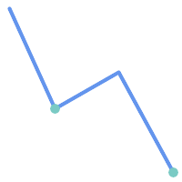
| 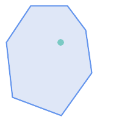
|
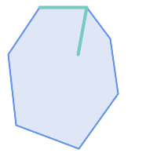
| 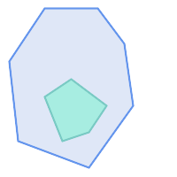
|
次に示す状況ではST_ContainsはFALSEを返します。
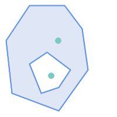
| 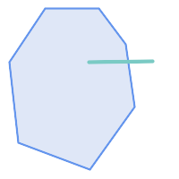
|
次に示す状況にあっては、内部のインタセクトの状態のために (ST_CoversだとTRUEを返すのに)ST_ContainsはFALSEを返します。
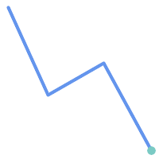
| 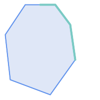
|
-- A circle within a circle
SELECT ST_Contains(smallc, bigc) As smallcontainsbig,
ST_Contains(bigc,smallc) As bigcontainssmall,
ST_Contains(bigc, ST_Union(smallc, bigc)) as bigcontainsunion,
ST_Equals(bigc, ST_Union(smallc, bigc)) as bigisunion,
ST_Covers(bigc, ST_ExteriorRing(bigc)) As bigcoversexterior,
ST_Contains(bigc, ST_ExteriorRing(bigc)) As bigcontainsexterior
FROM (SELECT ST_Buffer(ST_GeomFromText('POINT(1 2)'), 10) As smallc,
ST_Buffer(ST_GeomFromText('POINT(1 2)'), 20) As bigc) As foo;
-- Result
smallcontainsbig | bigcontainssmall | bigcontainsunion | bigisunion | bigcoversexterior | bigcontainsexterior
------------------+------------------+------------------+------------+-------------------+---------------------
f | t | t | t | t | f
-- Example demonstrating difference between contains and contains properly
SELECT ST_GeometryType(geomA) As geomtype, ST_Contains(geomA,geomA) AS acontainsa, ST_ContainsProperly(geomA, geomA) AS acontainspropa,
ST_Contains(geomA, ST_Boundary(geomA)) As acontainsba, ST_ContainsProperly(geomA, ST_Boundary(geomA)) As acontainspropba
FROM (VALUES ( ST_Buffer(ST_Point(1,1), 5,1) ),
( ST_MakeLine(ST_Point(1,1), ST_Point(-1,-1) ) ),
( ST_Point(1,1) )
) As foo(geomA);
geomtype | acontainsa | acontainspropa | acontainsba | acontainspropba
--------------+------------+----------------+-------------+-----------------
ST_Polygon | t | f | f | f
ST_LineString | t | f | f | f
ST_Point | t | t | f | f
名前
ST_ContainsProperly — Bの全てのポイントがAの内部にあるかをテストします。
概要
boolean ST_ContainsProperly(geometry geomA, geometry geomB);
説明
Bの全てのポイントがAの内部にある (もしくはBのポイントでAの外部にあるポイントが無い)場合にTRUEを返します。
数学用語では: ST_ContainsProperly(A, B) ⇔ Int(A) ⋂ B = B
二つのジオメトリのDE-9IM交差行列が[T**FF*FF*]に合致する場合には、AがBを完全に含みます。
Aは自身を正しく含むことはありませんが、自身を含みます。
大きいポリゴンジオメトリでのジオメトリの集合のインタセクションを計算する際にこの述語を使います。インタセクションはかなり遅いので、ContainsProperlyを使って、対象ジオメトリのうち全体が領域内にあるものを抜き出すことができ、効率的になります。これらの場面では、インタセクションは確実に元の対象ジオメトリであることが直感的に分かります。
| |
この関数の呼び出しによって、ジオメトリで使用可能なインデックスを使用するバウンディングボックスの比較が自動的に行われます。 インデックスの使用を避けるには |
| |
この関数は、個々のポイントでトポロジを計算する必要が無く、より効率的に計算できる点で、ST_ContainsとST_Intersectsより優れています。 |
GEOSモジュールで実現しています。
Availability: 1.4.0
| |
Enhanced: 3.0.0 |
| |
この関数を不正なジオメトリで呼ばないでください。予期しない結果が返されます。 |
例
--a circle within a circle
SELECT ST_ContainsProperly(smallc, bigc) As smallcontainspropbig,
ST_ContainsProperly(bigc,smallc) As bigcontainspropsmall,
ST_ContainsProperly(bigc, ST_Union(smallc, bigc)) as bigcontainspropunion,
ST_Equals(bigc, ST_Union(smallc, bigc)) as bigisunion,
ST_Covers(bigc, ST_ExteriorRing(bigc)) As bigcoversexterior,
ST_ContainsProperly(bigc, ST_ExteriorRing(bigc)) As bigcontainsexterior
FROM (SELECT ST_Buffer(ST_GeomFromText('POINT(1 2)'), 10) As smallc,
ST_Buffer(ST_GeomFromText('POINT(1 2)'), 20) As bigc) As foo;
--Result
smallcontainspropbig | bigcontainspropsmall | bigcontainspropunion | bigisunion | bigcoversexterior | bigcontainsexterior
------------------+------------------+------------------+------------+-------------------+---------------------
f | t | f | t | t | f
--example demonstrating difference between contains and contains properly
SELECT ST_GeometryType(geomA) As geomtype, ST_Contains(geomA,geomA) AS acontainsa, ST_ContainsProperly(geomA, geomA) AS acontainspropa,
ST_Contains(geomA, ST_Boundary(geomA)) As acontainsba, ST_ContainsProperly(geomA, ST_Boundary(geomA)) As acontainspropba
FROM (VALUES ( ST_Buffer(ST_Point(1,1), 5,1) ),
( ST_MakeLine(ST_Point(1,1), ST_Point(-1,-1) ) ),
( ST_Point(1,1) )
) As foo(geomA);
geomtype | acontainsa | acontainspropa | acontainsba | acontainspropba
--------------+------------+----------------+-------------+-----------------
ST_Polygon | t | f | f | f
ST_LineString | t | f | f | f
ST_Point | t | t | f | f
名前
ST_CoveredBy — Aの全てのポイントがB内にあるかをテストします。
概要
boolean ST_CoveredBy(geometry geomA, geometry geomB);
boolean ST_CoveredBy(geography geogA, geography geogB);
説明
ジオメトリ/ジオグラフィAの全ての点がジオメトリ/ジオグラフィBの内側にある (つまりBの境界か内部とインタセクトする)場合にTRUEを返します。AにBの外側にある (Bの外部にある)点が無いかどうかをテストする、と言い換えられます。
数学用語では: ST_CoveredBy(A, B) ⇔ A ⋂ B = A
ST_CoveredByはST_Coversの反対です。ST_CoveredBy(A,B) = ST_Covers(B,A)となります。
一般に、この関数はST_Withinの代わりに使います。「境界がジオメトリの内側に無い」という奇妙な言葉が定義に含まれないためです。
| |
この関数の呼び出しによって、ジオメトリで使用可能なインデックスを使用するバウンディングボックスの比較が自動的に行われます。 インデックスの使用を避けるには |
| |
Enhanced: 3.0.0 |
| |
この関数を不正なジオメトリで呼ばないでください。予期しない結果が返されます。 |
GEOSモジュールで実現しています。
Availability: 1.2.2
ご注意: これは論理値を返して整数を返さないのが「許される」版です。
これはOGC標準と違いますがOracleは持っています。
例
--a circle coveredby a circle
SELECT ST_CoveredBy(smallc,smallc) As smallinsmall,
ST_CoveredBy(smallc, bigc) As smallcoveredbybig,
ST_CoveredBy(ST_ExteriorRing(bigc), bigc) As exteriorcoveredbybig,
ST_Within(ST_ExteriorRing(bigc),bigc) As exeriorwithinbig
FROM (SELECT ST_Buffer(ST_GeomFromText('POINT(1 2)'), 10) As smallc,
ST_Buffer(ST_GeomFromText('POINT(1 2)'), 20) As bigc) As foo;
--Result
smallinsmall | smallcoveredbybig | exteriorcoveredbybig | exeriorwithinbig
--------------+-------------------+----------------------+------------------
t | t | t | f
(1 row) 名前
ST_Covers — Bの全ての点がA内にあるかをテストします。
概要
boolean ST_Covers(geometry geomA, geometry geomB);
boolean ST_Covers(geography geogpolyA, geography geogpointB);
説明
ジオメトリ/ジオグラフィBの全てのポイントがジオメトリ/ジオグラフィAの内側にある (内部または境界とインタセクトする)場合にTRUEを返します。Aの外部にBの点が無いことと等価です。
数学用語では: ST_Covers(A, B) ⇔ A ⋂ B = B
ST_Covers はST_CoveredByの逆です。ST_Covers(A,B) = ST_CoveredBy(B,A)となります。
一般に、この関数はST_Containsの代わりに使われるべきものです。定義が「ジオメトリがその境界を含まない」という奇妙なものになっていないからです。
| |
この関数の呼び出しによって、ジオメトリで使用可能なインデックスを使用するバウンディングボックスの比較が自動的に行われます。 インデックスの使用を避けるには |
| |
Enhanced: 3.0.0 |
| |
この関数を不正なジオメトリで呼ばないでください。予期しない結果が返されます。 |
GEOSモジュールで実現しています。
Enhanced: 2.4.0 ジオグラフィ型を使う形式においてポリゴンの中のポリゴンとポリゴンの中のラインストリングへの対応を追加
Enhanced: 2.3.0 ジオメトリについて、PIP short-circuit (ポリゴンとポイントに限定した高速判定)を少ないポイントからなるマルチポイントに対応することができるよう拡張しました。以前の版ではポリゴンとポイントの組み合わせにだけ対応していました。
Availability: 1.5 - ジオグラフィ対応が導入されました。
Availability: 1.2.2
ご注意: これは論理値を返して整数を返さないのが「許される」版です。
これはOGC標準と違いますがOracleは持っています。
例
ジオメトリの例
--a circle covering a circle
SELECT ST_Covers(smallc,smallc) As smallinsmall,
ST_Covers(smallc, bigc) As smallcoversbig,
ST_Covers(bigc, ST_ExteriorRing(bigc)) As bigcoversexterior,
ST_Contains(bigc, ST_ExteriorRing(bigc)) As bigcontainsexterior
FROM (SELECT ST_Buffer(ST_GeomFromText('POINT(1 2)'), 10) As smallc,
ST_Buffer(ST_GeomFromText('POINT(1 2)'), 20) As bigc) As foo;
--Result
smallinsmall | smallcoversbig | bigcoversexterior | bigcontainsexterior
--------------+----------------+-------------------+---------------------
t | f | t | f
(1 row) ジオグラフィの例
-- a point with a 300 meter buffer compared to a point, a point and its 10 meter buffer
SELECT ST_Covers(geog_poly, geog_pt) As poly_covers_pt,
ST_Covers(ST_Buffer(geog_pt,10), geog_pt) As buff_10m_covers_cent
FROM (SELECT ST_Buffer(ST_GeogFromText('SRID=4326;POINT(-99.327 31.4821)'), 300) As geog_poly,
ST_GeogFromText('SRID=4326;POINT(-99.33 31.483)') As geog_pt ) As foo;
poly_covers_pt | buff_10m_covers_cent
----------------+------------------
f | t
名前
ST_Crosses — 二つのジオメトリが内部に共有ポイントを持ち、かつそれだけにならないようになっているかテストします。
概要
boolean ST_Crosses(geometry g1, geometry g2);
説明
二つのジオメトリを比較して、「空間的にクロスしている」場合にTRUEを返します。ジオメトリは内部の共通点をいくつか持っていますが、全て持っているわけではありません。ジオメトリの内部の共通部分は空ではなく、二つのジオメトリの最大図形次元より小さくなければなりません。二つのジオメトリの共通部分は、入力ジオメトリのいずれとも同じであってはなりません。クロスでないならFALSEを返します。クロスの関係は対称ですが無反射です。
数学用語では: ST_Crosses(A, B) ⇔ (dim( Int(A) ⋂ Int(B) ) < max( dim( Int(A) ), dim( Int(B) ) )) ∧ (A ⋂ B ≠ A) ∧ (A ⋂ B ≠ B)
DE-9IMインタセクション行列が次の通り合致するとジオメトリはクロスしています。
Point/Line, Point/Area, Line/Areaの場合には
T*T******Line/Point, Area/Point, Area/Lineの場合には
T*****T**Line/Lineの場合には
0********点/点の状況や面/面の状況では、結果は
FALSEです
| |
OpenGIS Simple Feature Specificationでは、この述語はPoint/Line, Point/Area, Line/Line, Line/Areaの場合についてのみ定義されています。JTS/GEOSでは、Line/Point, Area/Point, Area/Lineについて拡張しています。これによって関係が対称になっています。 |
| |
この関数の呼び出しによって、ジオメトリで使用可能なインデックスを使用するバウンディングボックスの比較が自動的に行われます。 |
| |
Enhanced: 3.0.0 |
このメソッドはOGC Simple Features Implementation Specification for SQL 1.1の実装です。
s2.1.13.3
このメソッドはSQL/MM仕様の実装です。
SQL-MM 3: 5.1.29
例
次の場合には全てTRUEを返します。
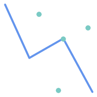
|
|
|
|
roads (道路)とhighways (高速道路)の2つのテーブルを持っている場面を考えます。
CREATE TABLE roads ( id serial NOT NULL, geom geometry, CONSTRAINT roads_pkey PRIMARY KEY (road_id) );
|
CREATE TABLE highways ( id serial NOT NULL, the_gem geometry, CONSTRAINT roads_pkey PRIMARY KEY (road_id) );
|
次のようなクエリを使って、highwayとクロスするroadsのリストを決定します。
SELECT roads.id FROM roads, highways WHERE ST_Crosses(roads.geom, highways.geom);
名前
ST_Disjoint — 二つのジオメトリが共有点を持たないようになっているかテストします。
概要
boolean ST_Disjoint( geometry A , geometry B );
説明
二つのジオメトリが接続されていない場合にTRUEを返します。ジオメトリに共有点が全くない場合を指します。
二つのジオメトリが他の空間関係がTRUEである場合には接続されていない状況にはありません。接続されていない場合にあｈST_IntersectsはFALSEを返します。
数学用語では: ST_Disjoint(A, B) ⇔ A ⋂ B = ∅
| |
Enhanced: 3.0.0 |
GEOSモジュールで実現しています。
| |
この関数呼び出しはインデックスを使いません。ST_Intersectsの否定には、インデックスを使用する、より効率の良い選択肢を使うことができます: |
| |
ご注意: これは論理値を返して整数を返さないのが「許される」版です。 |
このメソッドはOGC Simple Features Implementation Specification for SQL 1.1の実装です。
s2.1.1.2 //s2.1.13.3 - a.Relate(b, 'FF*FF****')
このメソッドはSQL/MM仕様の実装です。
SQL-MM 3: 5.1.26
名前
ST_Equals — 二つのジオメトリが同じ点集合になっているかテストします。
概要
boolean ST_Equals(geometry A, geometry B);
説明
ジオメトリが「トポロジ的に等価である」場合にTRUEを返します。'='より良い答を得るのに使います。トポロジ的に等価であるとは、ジオメトリが同じ図形次元で、点集合が同じ空間を占めていることを指します。頂点の順位が同じでなくても構いません。ポイントの順序の確認には一貫してST_OrderingEqualsを使います (ST_OrderingEqualsは、単純なポイントの順序が同じであるかを確認するより多少厳しいです)。
数学用語では: ST_Equals(A, B) ⇔ A = B
次の関係が成り立ちます: ST_Equals(A, B) ⇔ ST_Within(A,B) ∧ ST_Within(B,A)
| |
Enhanced: 3.0.0 |
このメソッドはOGC Simple Features Implementation Specification for SQL 1.1の実装です。
s2.1.1.2
このメソッドはSQL/MM仕様の実装です。
SQL-MM 3: 5.1.24
Changed: 2.2.0 この関数は、どちらのジオメトリも不正であっても、バイナリで同じ場合ならTRUEを返します。
名前
ST_Intersects — 二つのジオメトリがインタセクトしている (少なくとも一つの共有点がある)かどうかテストします。
概要
boolean ST_Intersects( geometry geomA , geometry geomB );
boolean ST_Intersects( geography geogA , geography geogB );
説明
二つのジオメトリがインタセクトする場合にTRUEを返します。任意の共有点を持つ場合を指します。
ジオグラフィに対しては、0.00001メートルの距離許容値が使われます (このため非常に近いポイントはインタセクトしているとみなされます)。
数学用語では: ST_Intersects(A, B) ⇔ A ⋂ B ≠ ∅
DE-9IMインタセクション行列が次の通り合致するとジオメトリはインタセクトしています。
T*********T**********T*********T****
空間的なインタセクションは全ての他の空間関係テスト関数に含まれます。例外はST_Disjointで、全てのジオメトリがインタセクトしていないかどうかをテストすることになります。
| |
この関数の呼び出しによって、ジオメトリで使用可能なインデックスを使用するバウンディングボックスの比較が自動的に行われます。 |
Changed: 3.0.0 SFCGAL版を削除し、2次元TINのネイティブ対応を追加しました。
Enhanced: 2.5.0 ジオメトリコレクションに対応しました。
Enhanced: 2.3.0 PIP short-circuit (ポリゴンとポイントに限定した高速判定)を少ないポイントからなるマルチポイントに対応することができるよう拡張しました。以前の版ではポリゴンとポイントの組み合わせにだけ対応していました。
ジオメトリについては、GEOSモジュールで実現しています。ジオグラフィについてはネイティブです。
Availability: 1.5 ジオグラフィ対応が導入されました。
| |
ジオグラフィでは、この関数は0.00001メートルの距離許容を持ち、回転楕円体計算でなく球面を使います。 |
| |
ご注意: これは論理値を返して整数を返さないのが「許される」版です。 |
このメソッドはOGC Simple Features Implementation Specification for SQL 1.1の実装です。
s2.1.1.2 //s2.1.13.3 - ST_Intersects(g1, g2 ) --> Not (ST_Disjoint(g1, g2 ))
このメソッドはSQL/MM仕様の実装です。
SQL-MM 3: 5.1.27
このメソッドは曲線ストリングと曲線に対応しています。
この関数は三角形と不規則三角網 (TIN)に対応しています。
ジオメトリの例
SELECT ST_Intersects('POINT(0 0)'::geometry, 'LINESTRING ( 2 0, 0 2 )'::geometry);
st_intersects
---------------
f
(1 row)
SELECT ST_Intersects('POINT(0 0)'::geometry, 'LINESTRING ( 0 0, 0 2 )'::geometry);
st_intersects
---------------
t
(1 row)
-- Look up in table. Make sure table has a GiST index on geometry column for faster lookup.
SELECT id, name FROM cities WHERE ST_Intersects(geom, 'SRID=4326;POLYGON((28 53,27.707 52.293,27 52,26.293 52.293,26 53,26.293 53.707,27 54,27.707 53.707,28 53))');
id | name
----+-------
2 | Minsk
(1 row)
名前
ST_LineCrossingDirection — 二つのラインストリングがどのように交差しているかを示す数字を返します。
概要
integer ST_LineCrossingDirection(geometry linestringA, geometry linestringB);
説明
二つのラインストリングを与えると、-3から3までの整数が返ります。この整数は、どのようにクロスしているかを示すもので、0は交差無しを意味します。この関数はLINESTRINGにのみ対応しています。
交差の番号は次の通りです。
0: クロスが無い
-1: 左クロス
1: 右クロス
-2: 複数クロスで最後が左
2: 複数クロスで最後が右
-3: 複数クロスで開始終了ともに左
3: 複数クロスで開始終了ともに右
Availability: 1.4
例
例: 左クロスと右クロス
青: ライン A、緑: ライン B
SELECT ST_LineCrossingDirection(lineA, lineB) As A_cross_B,
ST_LineCrossingDirection(lineB, lineA) As B_cross_A
FROM (SELECT
ST_GeomFromText('LINESTRING(25 169,89 114,40 70,86 43)') As lineA,
ST_GeomFromText('LINESTRING (20 140, 71 74, 161 53)') As lineB
) As foo;
A_cross_B | B_cross_A
-----------+-----------
-1 | 1
例: 複数回クロスで開始終了ともに左と、複数回クロスで開始終了ともに右
青: ライン A、緑: ライン B
SELECT ST_LineCrossingDirection(lineA, lineB) As A_cross_B,
ST_LineCrossingDirection(lineB, lineA) As B_cross_A
FROM (SELECT
ST_GeomFromText('LINESTRING(25 169,89 114,40 70,86 43)') As lineA,
ST_GeomFromText('LINESTRING(171 154,20 140,71 74,161 53)') As lineB
) As foo;
A_cross_B | B_cross_A
-----------+-----------
3 | -3
例: 複数回クロスで最後が左と複数回クロスで最後が右
青: ライン A、緑: ライン B
SELECT ST_LineCrossingDirection(lineA, lineB) As A_cross_B,
ST_LineCrossingDirection(lineB, lineA) As B_cross_A
FROM (SELECT
ST_GeomFromText('LINESTRING(25 169,89 114,40 70,86 43)') As lineA,
ST_GeomFromText('LINESTRING(5 90, 71 74, 20 140, 171 154)') As lineB
) As foo;
A_cross_B | B_cross_A
-----------+-----------
-2 | 2
例: 全てのクロスするストリートを見つける
SELECT s1.gid, s2.gid, ST_LineCrossingDirection(s1.geom, s2.geom)
FROM streets s1 CROSS JOIN streets s2
ON (s1.gid != s2.gid AND s1.geom && s2.geom )
WHERE ST_LineCrossingDirection(s1.geom, s2.geom)
> 0;
名前
ST_OrderingEquals — 二つのジオメトリが同じジオメトリを表現し、かつ点の並び順が同じかどうかをテストします。
概要
boolean ST_OrderingEquals(geometry A, geometry B);
説明
ST_OrderingEqualsは、二つのジオメトリを比較して、ジオメトリが同じで、座標値が同じ順序である場合には、t (TRUE)を返し、それ以外の場合には、f (FALSE)を返します。
| |
この関数は、SQL-MM仕様ではなくArcSDE SQL仕様に従って実装しています。http://edndoc.esri.com/arcsde/9.1/sql_api/sqlapi3.htm#ST_OrderingEqualsをご覧ください。 |
このメソッドはSQL/MM仕様の実装です。
SQL-MM 3: 5.1.43
例
SELECT ST_OrderingEquals(ST_GeomFromText('LINESTRING(0 0, 10 10)'),
ST_GeomFromText('LINESTRING(0 0, 5 5, 10 10)'));
st_orderingequals
-----------
f
(1 row)
SELECT ST_OrderingEquals(ST_GeomFromText('LINESTRING(0 0, 10 10)'),
ST_GeomFromText('LINESTRING(0 0, 0 0, 10 10)'));
st_orderingequals
-----------
t
(1 row)
SELECT ST_OrderingEquals(ST_Reverse(ST_GeomFromText('LINESTRING(0 0, 10 10)')),
ST_GeomFromText('LINESTRING(0 0, 0 0, 10 10)'));
st_orderingequals
-----------
f
(1 row)
名前
ST_Overlaps — 二つのジオメトリが同じ次元を持ち、インタセクトして、かつ相手と重ならない点少なくとも一つあるかをテストします。
概要
boolean ST_Overlaps(geometry A, geometry B);
説明
ジオメトリAとBが「空間的にオーバラップする」場合にTRUEを返します。ジオメトリが同じ次元で、内部のインタセクションも同じ次元で、少なくとも一つの点がもう一方の外側にある (一方がもう一方を覆っている状態でないのと等価です)と、二つのジオメトリがオーバラップしていると言います。オーバラップの関係は、対称性があり、無反射性があります。
数学用語では: ST_Overlaps(A, B) ⇔ ( dim(A) = dim(B) = dim( Int(A) ⋂ Int(B) )) ∧ (A ⋂ B ≠ A) ∧ (A ⋂ B ≠ B)
| |
この関数の呼び出しによって、ジオメトリで使用可能なインデックスを使用するバウンディングボックスの比較が自動的に行われます。 インデックスの使用を避けるには |
GEOSモジュールで実現しています。
| |
Enhanced: 3.0.0 |
ご注意: これは論理値を返して整数を返さないのが「許される」版です。
このメソッドはOGC Simple Features Implementation Specification for SQL 1.1の実装です。
s2.1.1.2 // s2.1.13.3
このメソッドはSQL/MM仕様の実装です。
SQL-MM 3: 5.1.32
例
次に示す図全てで、ST_OverlapsはTRUEを返します。
|
|
|
ラインストリング上のポイントが含まますが、次元が低いのでオーバラップにもクロスにもなりません。
SELECT ST_Overlaps(a,b) AS overlaps, ST_Crosses(a,b) AS crosses,
ST_Intersects(a, b) AS intersects, ST_Contains(b,a) AS b_contains_a
FROM (SELECT ST_GeomFromText('POINT (100 100)') As a,
ST_GeomFromText('LINESTRING (30 50, 40 160, 160 40, 180 160)') AS b) AS t
overlaps | crosses | intersects | b_contains_a
---------+----------------------+--------------
f | f | t | t
部分的にポリゴンを覆うラインストリングはインタセクトもクロスもしますが、異なり次元なのでオーバラップしません。
SELECT ST_Overlaps(a,b) AS overlaps, ST_Crosses(a,b) AS crosses,
ST_Intersects(a, b) AS intersects, ST_Contains(a,b) AS contains
FROM (SELECT ST_GeomFromText('POLYGON ((40 170, 90 30, 180 100, 40 170))') AS a,
ST_GeomFromText('LINESTRING(10 10, 190 190)') AS b) AS t;
overlap | crosses | intersects | contains
---------+---------+------------+--------------
f | t | t | f
二つのポリゴンがインタセクトするものの一方が他方のオーバラップを含んでいませんが、インタセクトが同じ次元なのでクロスしません。
SELECT ST_Overlaps(a,b) AS overlaps, ST_Crosses(a,b) AS crosses,
ST_Intersects(a, b) AS intersects, ST_Contains(b, a) AS b_contains_a,
ST_Dimension(a) AS dim_a, ST_Dimension(b) AS dim_b,
ST_Dimension(ST_Intersection(a,b)) AS dim_int
FROM (SELECT ST_GeomFromText('POLYGON ((40 170, 90 30, 180 100, 40 170))') AS a,
ST_GeomFromText('POLYGON ((110 180, 20 60, 130 90, 110 180))') AS b) As t;
overlaps | crosses | intersects | b_contains_a | dim_a | dim_b | dim_int
----------+---------+------------+--------------+-------+-------+-----------
t | f | t | f | 2 | 2 | 2
名前
ST_Relate — 二つのジオメトリが与えられた交差行列パターンに合致するトポロジ関係があるかどうかを見るか、交差行列を計算するかします。
概要
boolean ST_Relate(geometry geomA, geometry geomB, text intersectionMatrixPattern);
text ST_Relate(geometry geomA, geometry geomB);
text ST_Relate(geometry geomA, geometry geomB, integer boundaryNodeRule);
説明
これらの関数で、二つのジオメトリに対するDimensionally Extended 9-Intersection Model (DE-9IM)で定義される空間 (トポロジ)関係のテストと評価が可能になります。
DE-9IMは9要素の行列で、二つのジオメトリの内部、境界、外部のインタセクションの次元を示しています。'F', '0', '1', '2'の文字による9文字の文字列で表現します (例えば 'FF1FF0102')。
intersection matrix patternで、特定の種類の空間関係のテストができます。パターンでは追加の文字 'T' (「インタセクションが空でない」という意味)と '*' (「値はなんでもいい」という意味)を使うことができます。一般的な空間関係については、名前の付いた関数ST_Contains, ST_ContainsProperly, ST_Covers, ST_CoveredBy, ST_Crosses, ST_Disjoint, ST_Equals, ST_Intersects, ST_Overlaps, ST_Touches, ST_Withinとして提供されます。明示的なパターンを使うことで、インタセクト、クロス等の複数のテストを一回でできるようになります。また、名前のある空間関係関数を持たない空間関係のテストも可能になります。たとえば、「内部インタセクション」という空間関係は、名前の付いた空間関係関数では評価できませんが、T********のDE-9IMで評価できます。
詳細情報については「空間関係の決定」をご覧下さい。
一つ目の形式: 二つのジオメトリが、与えられたintersectionMatrixPatternによる空間関係に合うかどうかを見ます。
| |
他の名前の付いた空間関係述語の多くと異なり、この関数は自動ではインデックスの呼び出しを*行いません*。インタセクト*しない*ジオメトリでTRUEになる関係があるためです。インタセクションが求められる関係パターンを使用している場合には、関数呼び出しに&&を取り入れてください。 |
| |
存在するなら、名前の追加空間関係関数を使う方が良いです。空間インデックスが存在するなら自動で使用してくれるからです。また、完全な関係評価では有効にならない能率最適化が実装されていることがあります。 |
二つ目の形式: 二つのジオメトリの空間関係のDE-9IM行列文字列を返します。行列文字列は、ST_RelateMatchを使ったDE-9IMパターンと合致するかテストさせることができます。
三つ目の形式: 二つ目の形式と同じですが、境界ノード規則の指定ができる点が異なります。この規則によって、マルチラインストリングの端点がDE-9IMの内部または境界上にあると判定されるかどうかを細かく制御できます。boundaryNodeRuleの値は次の通りです。
1: OGC-Mod2 - 線の端点が奇数回出現する場合に境界内にあるとします。これはOGC SFS標準で定義された規則で、ST_Relateのデフォルトです。2: Endpoint - 全ての端点は境界上にあります。3: MultivalentEndpoint - 端点が2回以上出現する場合に境界内にあるとします。言い換えると、境界は全ての「接続された」または「内部の」端点です (「接続していない」や「外部の」端点ではない)。4: MonovalentEndpoint - 端点が1回だけ出現する場合に限って、境界内にあるとします。言い換えると境界は全ての「接続していない」または「外部の」端点です。
OGC仕様にはありませんが実装しました。s2.1.13.2をご覧下さい。
このメソッドはOGC Simple Features Implementation Specification for SQL 1.1の実装です。
s2.1.1.2 // s2.1.13.3
このメソッドはSQL/MM仕様の実装です。
SQL-MM 3: 5.1.25
GEOSモジュールで実現しています。
Enhanced: 2.0.0 - 境界ノード規則が追加されました。
| |
Enhanced: 3.0.0 |
例
真偽値関数を使って空間関係を見ます。
SELECT ST_Relate('POINT(1 2)', ST_Buffer( 'POINT(1 2)', 2), '0FFFFF212');
st_relate
-----------
t
SELECT ST_Relate(POINT(1 2)', ST_Buffer( 'POINT(1 2)', 2), '*FF*FF212');
st_relate
-----------
t
独自の空間関係パターンを問い合わせ条件としてテストします。空間インデックスの使用を有効にするために&&を使っています。
-- Find compounds that properly intersect (not just touch) a poly (Interior Intersects)
SELECT c.* , p.name As poly_name
FROM polys AS p
INNER JOIN compounds As c
ON c.geom && p.geom
AND ST_Relate(p.geom, c.geom,'T********');
空間関係交差行列を計算します。
SELECT ST_Relate( 'POINT(1 2)',
ST_Buffer( 'POINT(1 2)', 2));
-----------
0FFFFF212
SELECT ST_Relate( 'LINESTRING(1 2, 3 4)',
'LINESTRING(5 6, 7 8)' );
-----------
FF1FF0102
異なる境界ノード規則を使って、端点が重複するLINESTRINGとMULTILINESTRING間の空間関係を計算します (3 3):
OGC-Mod2規則 (1)を使うと、重複端点はMULTILINESTRINGの内部になり、DE-9IM行列の [aB:bl]は
0で、[aB:bB]はFです。Endpoint規則 (2)を使うと、重複端点はMULTILINESTRINGの境界となり、DE-9IM行列の[aB:bI]は
Fで、[aB:bB]は0です。
WITH data AS (SELECT
'LINESTRING(1 1, 3 3)'::geometry AS a_line,
'MULTILINESTRING((3 3, 3 5), (3 3, 5 3))':: geometry AS b_multiline
)
SELECT ST_Relate( a_line, b_multiline, 1) AS bnr_mod2,
ST_Relate( a_line, b_multiline, 2) AS bnr_endpoint
FROM data;
bnr_mod2 | bnr_endpoint
-----------+--------------
FF10F0102 | FF1F00102
名前
ST_RelateMatch — DE-9IMインタセクション行列がインタセクション行列パターンに合致するかどうかを見ます。
概要
boolean ST_RelateMatch(text intersectionMatrix, text intersectionMatrixPattern);
説明
Dimensionally Extended 9-Intersection Model (DE-9IM) intersectionMatrixの値が intersectionMatrixPatternを満たすかどうかを見ます。交差行列値はST_Relateで計算します。
詳細情報については「空間関係の決定」をご覧下さい。
GEOSモジュールで実現しています。
Availability: 2.0.0
例
SELECT ST_RelateMatch('101202FFF', 'TTTTTTFFF') ;
-- result --
t
あるポリゴンとの様々な相対的な位置にあるラインを想定した交差行列値に合致する一般的な空間関係のパターン
SELECT pat.name AS relationship, pat.val AS pattern,
mat.name AS position, mat.val AS matrix,
ST_RelateMatch(mat.val, pat.val) AS match
FROM (VALUES ( 'Equality', 'T1FF1FFF1' ),
( 'Overlaps', 'T*T***T**' ),
( 'Within', 'T*F**F***' ),
( 'Disjoint', 'FF*FF****' )) AS pat(name,val)
CROSS JOIN
(VALUES ('non-intersecting', 'FF1FF0212'),
('overlapping', '1010F0212'),
('inside', '1FF0FF212')) AS mat(name,val);
relationship | pattern | position | matrix | match
--------------+-----------+------------------+-----------+-------
Equality | T1FF1FFF1 | non-intersecting | FF1FF0212 | f
Equality | T1FF1FFF1 | overlapping | 1010F0212 | f
Equality | T1FF1FFF1 | inside | 1FF0FF212 | f
Overlaps | T*T***T** | non-intersecting | FF1FF0212 | f
Overlaps | T*T***T** | overlapping | 1010F0212 | t
Overlaps | T*T***T** | inside | 1FF0FF212 | f
Within | T*F**F*** | non-intersecting | FF1FF0212 | f
Within | T*F**F*** | overlapping | 1010F0212 | f
Within | T*F**F*** | inside | 1FF0FF212 | t
Disjoint | FF*FF**** | non-intersecting | FF1FF0212 | t
Disjoint | FF*FF**** | overlapping | 1010F0212 | f
Disjoint | FF*FF**** | inside | 1FF0FF212 | f
名前
ST_Touches — 二つのジオメトリが少なくとも一つの共有点を持ち、かつ内部でインタセクトしていないようになっているかテストします。
概要
boolean ST_Touches(geometry A, geometry B);
説明
AとBがインタセクトするがAの内部とBの内部がインタセクトしない場合にはTRUEを返します。AとBが少なくとも一つの共有点があり、共有点が少なくとも一つの境界の上にあることと同じです。ポイント/ポイント入力では、ポイントは境界を持たないため、常にFALSEを返します。
数学用語では: ST_Touches(A, B) ⇔ (Int(A) ⋂ Int(B) ≠ ∅) ∧ (A ⋂ B ≠ ∅)
この関係は、二つのジオメトリのDE-9IM交差行列がどれか一つに合致すると、関係が保持されていることになります。
FT*******
F**T*****
F***T****
| |
この関数の呼び出しによって、ジオメトリで使用可能なインデックスを使用するバウンディングボックスの比較が自動的に行われます。 インデックスの使用を避けるには |
| |
Enhanced: 3.0.0 |
このメソッドはOGC Simple Features Implementation Specification for SQL 1.1の実装です。
s2.1.1.2 // s2.1.13.3
このメソッドはSQL/MM仕様の実装です。
SQL-MM 3: 5.1.28
例
次の例ではST_Touches述語はTRUEを返します。
|
|
|
|
|
|
SELECT ST_Touches('LINESTRING(0 0, 1 1, 0 2)'::geometry, 'POINT(1 1)'::geometry);
st_touches
------------
f
(1 row)
SELECT ST_Touches('LINESTRING(0 0, 1 1, 0 2)'::geometry, 'POINT(0 2)'::geometry);
st_touches
------------
t
(1 row)名前
ST_Within — Aの全てのポイントがB内にあり、かつ両方の内部が共有点を持つかどうかをテストします。
概要
boolean ST_Within(geometry A, geometry B);
説明
ジオメトリAがジオメトリB内にある場合にTRUEを返します。Aの全ての点がBの内側 (内部または境界)にあり、Aの内部とBの内部に少なくとも一つの共有点がある場合に限って、AはB内にあると言います。
渡すジオメトリが両方とも同じSRIDでなければ、この関数は意味がありません。
数学用語では: ST_Within(A, B) ⇔ (A ⋂ B = A) ∧ (Int(A) ⋂ Int(B) ≠ ∅)
内にある、という関係性には反射性があります。全てのジオメトリは、自分の内にあると言えます。また、非対称性を持ちます。ST_Within(A,B) = trueかつST_Within(B,A) = trueの場合には、二つのジオメトリは必ずトポロジ的に等価 (ST_Equals(A,B) = true)になります。
ST_WithinはST_Containsの反対です。ST_Within(A,B) = ST_Contains(B,A)となります。
| |
内部が必ず共有点を持つので、定義は、ポリゴンまたはラインの境界上にあるラインまたはポイントはジオメトリの内にないという微妙なものになります。詳細については、Subtleties of OGC Covers, Contains, Withinをご覧下さい。ST_CoveredBy述語はより包括的な関係を提供します。 |
| |
この関数の呼び出しによって、ジオメトリで使用可能なインデックスを使用するバウンディングボックスの比較が自動的に行われます。 インデックスの使用を避けるには |
GEOSモジュールで実現しています。
Enhanced: 2.3.0 ジオメトリについて、PIP short-circuit (ポリゴンとポイントに限定した高速判定)を少ないポイントからなるマルチポイントに対応することができるよう拡張しました。以前の版ではポリゴンとポイントの組み合わせにだけ対応していました。
| |
Enhanced: 3.0.0 |
| |
この関数を不正なジオメトリで呼ばないでください。予期しない結果が返されます。 |
ご注意: これは論理値を返して整数を返さないのが「許される」版です。
このメソッドはOGC Simple Features Implementation Specification for SQL 1.1の実装です。
s2.1.1.2 // s2.1.13.3 - a.Relate(b, 'T*F**F***')
このメソッドはSQL/MM仕様の実装です。
SQL-MM 3: 5.1.30
例
--a circle within a circle
SELECT ST_Within(smallc,smallc) As smallinsmall,
ST_Within(smallc, bigc) As smallinbig,
ST_Within(bigc,smallc) As biginsmall,
ST_Within(ST_Union(smallc, bigc), bigc) as unioninbig,
ST_Within(bigc, ST_Union(smallc, bigc)) as biginunion,
ST_Equals(bigc, ST_Union(smallc, bigc)) as bigisunion
FROM
(
SELECT ST_Buffer(ST_GeomFromText('POINT(50 50)'), 20) As smallc,
ST_Buffer(ST_GeomFromText('POINT(50 50)'), 40) As bigc) As foo;
--Result
smallinsmall | smallinbig | biginsmall | unioninbig | biginunion | bigisunion
--------------+------------+------------+------------+------------+------------
t | t | f | t | t | t
(1 row)
- ST_3DDWithin — 二つの3次元ジオメトリが与えらえれた3次元距離内にあるかどうかをテストします。
- ST_3DDFullyWithin — 二つの3次元ジオメトリが完全に与えらえれた3次元距離内にあるかどうかをテストします。
- ST_DFullyWithin — 二つのジオメトリが完全に与えらえれた距離内にあるかどうかをテストします。
- ST_DWithin — 二つのジオメトリが与えらえれた距離内にあるかどうかをテストします。
- ST_PointInsideCircle — ポイントジオメトリが中心と半径で定められた円の内側にあるかをテストします。
名前
ST_3DDWithin — 二つの3次元ジオメトリが与えらえれた3次元距離内にあるかどうかをテストします。
概要
boolean ST_3DDWithin(geometry g1, geometry g2, double precision distance_of_srid);
説明
二つのジオメトリ値の3次元距離がdistance_of_srid以下ならTRUEを返します。距離の単位はジオメトリの空間参照系の単位です。この関数から意味のある結果を得るには、引数に使うジオメトリを同じ空間系 (同じSRIDを持つ)にしなければなりません。
| |
この関数の呼び出しによって、ジオメトリで使用可能なインデックスを使用するバウンディングボックスの比較が自動的に行われます。 |
この関数は3次元に対応し、Z値を削除しません。
この関数は多面体サーフェスに対応しています。
このメソッドはSQL/MM仕様の実装です。
SQL-MM ?
Availability: 2.0.0
例
-- Geometry example - units in meters (SRID: 2163 US National Atlas Equal area) (3D point and line compared 2D point and line)
-- Note: currently no vertical datum support so Z is not transformed and assumed to be same units as final.
SELECT ST_3DDWithin(
ST_Transform(ST_GeomFromEWKT('SRID=4326;POINT(-72.1235 42.3521 4)'),2163),
ST_Transform(ST_GeomFromEWKT('SRID=4326;LINESTRING(-72.1260 42.45 15, -72.123 42.1546 20)'),2163),
126.8
) As within_dist_3d,
ST_DWithin(
ST_Transform(ST_GeomFromEWKT('SRID=4326;POINT(-72.1235 42.3521 4)'),2163),
ST_Transform(ST_GeomFromEWKT('SRID=4326;LINESTRING(-72.1260 42.45 15, -72.123 42.1546 20)'),2163),
126.8
) As within_dist_2d;
within_dist_3d | within_dist_2d
----------------+----------------
f | t
名前
ST_3DDFullyWithin — 二つの3次元ジオメトリが完全に与えらえれた3次元距離内にあるかどうかをテストします。
概要
boolean ST_3DDFullyWithin(geometry g1, geometry g2, double precision distance);
説明
3次元ジオメトリが他のジオメトリとの距離が、完全に指定した範囲内ならtrueを返します。距離の単位はジオメトリの空間参照系で定義されているものとされます。この関数が意味を持つためには、与えられるジオメトリは両方とも同じ座標系で同じSRIDを持つ必要があります。
| |
この関数の呼び出しによって、ジオメトリで使用可能なインデックスを使用するバウンディングボックスの比較が自動的に行われます。 |
Availability: 2.0.0
この関数は3次元に対応し、Z値を削除しません。
この関数は多面体サーフェスに対応しています。
例
-- This compares the difference between fully within and distance within as well
-- as the distance fully within for the 2D footprint of the line/point vs. the 3d fully within
SELECT ST_3DDFullyWithin(geom_a, geom_b, 10) as D3DFullyWithin10, ST_3DDWithin(geom_a, geom_b, 10) as D3DWithin10,
ST_DFullyWithin(geom_a, geom_b, 20) as D2DFullyWithin20,
ST_3DDFullyWithin(geom_a, geom_b, 20) as D3DFullyWithin20 from
(select ST_GeomFromEWKT('POINT(1 1 2)') as geom_a,
ST_GeomFromEWKT('LINESTRING(1 5 2, 2 7 20, 1 9 100, 14 12 3)') as geom_b) t1;
d3dfullywithin10 | d3dwithin10 | d2dfullywithin20 | d3dfullywithin20
------------------+-------------+------------------+------------------
f | t | t | f 名前
ST_DFullyWithin — 二つのジオメトリが完全に与えらえれた距離内にあるかどうかをテストします。
概要
boolean ST_DFullyWithin(geometry g1, geometry g2, double precision distance);
説明
二つのジオメトリが互いに、完全に与えらえれた距離内にある場合にはTRUEを返します。距離はジオメトリの空間参照系で定義されている単位になります。この関数が意味のあるものにするためには、与えられるジオメトリは両方とも同じ座標系で同じSRIDを持つ必要があります。
| |
この関数の呼び出しによって、ジオメトリで使用可能なインデックスを使用するバウンディングボックスの比較が自動的に行われます。 |
Availability: 1.5.0
例
postgis=# SELECT ST_DFullyWithin(geom_a, geom_b, 10) as DFullyWithin10, ST_DWithin(geom_a, geom_b, 10) as DWithin10, ST_DFullyWithin(geom_a, geom_b, 20) as DFullyWithin20 from
(select ST_GeomFromText('POINT(1 1)') as geom_a,ST_GeomFromText('LINESTRING(1 5, 2 7, 1 9, 14 12)') as geom_b) t1;
-----------------
DFullyWithin10 | DWithin10 | DFullyWithin20 |
---------------+----------+---------------+
f | t | t | 名前
ST_DWithin — 二つのジオメトリが与えらえれた距離内にあるかどうかをテストします。
概要
boolean ST_DWithin(geometry g1, geometry g2, double precision distance_of_srid);
boolean ST_DWithin(geography gg1, geography gg2, double precision distance_meters, boolean use_spheroid = true);
説明
ジオメトリが与えられた距離内にある場合にはTRUEを返します。
geometry: 距離の単位は空間参照系で定義される単位です。この関数が意味のあるものにするためには、与えられるジオメトリは両方とも同じ座標系である (同じSRIDを持つ)必要があります。
geography: 単位はメートルで、距離の測定の既定値はuse_spheroid = trueです。より高速な評価のために、use_spheroid = falseとして球面で測定します。
| |
3次元ジオメトリではST_3DDWithinを使います。 |
| |
この関数の呼び出しによって、ジオメトリで使用可能なインデクスを使用したバウンディングボックスの比較が自動的に行われます。 |
このメソッドはOGC Simple Features Implementation Specification for SQL 1.1の実装です。
Availability: 1.5.0 ジオグラフィが導入されました。
Enhanced: 2.1.0で、ジオグラフィでの速度が向上しました。詳細についてはMaking Geography fasterを参照して下さい。
Enhanced: 2.1.0 曲線ジオメトリ対応が導入されました。
1.3以前のST_Expandは、 距離をテストするために、&&と、ST_Distanceとを一般的に併用していました。1.3.4より前では、この関数はそのロジックを使っていました。1.3.4からST_DWithinは、より速いショートサーキットを使った距離関数を使います。
例
-- Find the nearest hospital to each school
-- that is within 3000 units of the school.
-- We do an ST_DWithin search to utilize indexes to limit our search list
-- that the non-indexable ST_Distance needs to process
-- If the units of the spatial reference is meters then units would be meters
SELECT DISTINCT ON (s.gid) s.gid, s.school_name, s.geom, h.hospital_name
FROM schools s
LEFT JOIN hospitals h ON ST_DWithin(s.geom, h.geom, 3000)
ORDER BY s.gid, ST_Distance(s.geom, h.geom);
-- The schools with no close hospitals
-- Find all schools with no hospital within 3000 units
-- away from the school. Units is in units of spatial ref (e.g. meters, feet, degrees)
SELECT s.gid, s.school_name
FROM schools s
LEFT JOIN hospitals h ON ST_DWithin(s.geom, h.geom, 3000)
WHERE h.gid IS NULL;
-- Find broadcasting towers that receiver with limited range can receive.
-- Data is geometry in Spherical Mercator (SRID=3857), ranges are approximate.
-- Create geometry index that will check proximity limit of user to tower
CREATE INDEX ON broadcasting_towers using gist (geom);
-- Create geometry index that will check proximity limit of tower to user
CREATE INDEX ON broadcasting_towers using gist (ST_Expand(geom, sending_range));
-- Query towers that 4-kilometer receiver in Minsk Hackerspace can get
-- Note: two conditions, because shorter LEAST(b.sending_range, 4000) will not use index.
SELECT b.tower_id, b.geom
FROM broadcasting_towers b
WHERE ST_DWithin(b.geom, 'SRID=3857;POINT(3072163.4 7159374.1)', 4000)
AND ST_DWithin(b.geom, 'SRID=3857;POINT(3072163.4 7159374.1)', b.sending_range);
名前
ST_PointInsideCircle — ポイントジオメトリが中心と半径で定められた円の内側にあるかをテストします。
概要
boolean ST_PointInsideCircle(geometry a_point, float center_x, float center_y, float radius);
説明
ジオメトリが点であり、center_x,center_yの中心点とradiusの半径を持つ円の内側にある場合はTRUEを返します。
| |
この関数は空間インデックスを使用しません。代わりにST_DWithinを使って下さい。 |
Availability: 1.2
Changed: 2.2.0 前のバージョンではST_Point_Inside_Circleと呼ばれていました。
- ST_Area — ポリゴンジオメトリの面積を返します。
- ST_Azimuth — 北を基準とした2点間の線の方位角を返します。
- ST_Angle — 3点もしくは4点、または2線で定義される二つのベクタ間の角度を返します。
- ST_ClosestPoint — g1上にある、g2と最近傍となる2次元ポイントを返します。これは、あるジオメトリから他のジオメトリへの最短ラインの一つ目のポイントです。
- ST_3DClosestPoint — g1上の、g2に最も近い3次元ポイントを返します。これは3次元の最短ラインの始点です。
- ST_Distance — 二つのジオメトリ値またはジオグラフィ値間の距離を返します。
- ST_3DDistance — 投影座標系の単位で、二つのジオメトリ間の3次元デカルト距離の最小値を返します (空間参照系に基づきます)。
- ST_DistanceSphere — 球面の地球モデルを使って、二つの経度/緯度ジオメトリの最小距離をメートル単位で返します。
- ST_DistanceSpheroid — 回転楕円体面の地球モデルを使って、二つの経度/緯度ジオメトリの最小距離を返します。
- ST_FrechetDistance — 二つのジオメトリのフレシェ距離を返します。
- ST_HausdorffDistance — 二つのジオメトリ間のハウスドルフ距離を返します。
- ST_Length — 線系ジオメトリの2次元長を返します。
- ST_Length2D — LINESTRINGまたはMULTILINESTRINGに対して、ジオメトリの2次元長を返します。これは
ST_Lengthの別名です。 - ST_3DLength — 線ジオメトリの3次元長を返します。
- ST_LengthSpheroid — 回転楕円体面上の経度緯度のジオメトリの2次元または3次元の長さ/周長を返します。
- ST_LongestLine — 二つのジオメトリ間の2次元最長ラインを返します。
- ST_3DLongestLine — 二つのジオメトリ間の3次元最長ラインを返します。
- ST_MaxDistance — 二つのジオメトリ間の2次元最長距離を空間参照系の単位で返します。
- ST_3DMaxDistance — 二つのジオメトリ間の3次元最大デカルト距離 (空間参照系に基づく)を空間参照系の単位で返します。
- ST_MinimumClearance — ジオメトリのクリアランスの最小値を返します。この値はジオメトリのロバスト性を示すものです。
- ST_MinimumClearanceLine — ジオメトリの最小クリアランスを示す、2点のラインストリングを返します。
- ST_Perimeter — ポリゴンジオメトリまたはジオグラフィの境界の長さを返します。
- ST_Perimeter2D — ポリゴンジオメトリの2次元周長を返します。
ST_Perimeterの別名です。 - ST_3DPerimeter — ポリゴンジオメトリの3次元周長を返します。
- ST_ShortestLine — 二つのジオメトリの3次元の最短ラインを返します。
- ST_3DShortestLine — 二つのジオメトリの3次元の最短ラインを返します。
名前
ST_Area — ポリゴンジオメトリの面積を返します。
概要
float ST_Area(geometry g1);
float ST_Area(geography geog, boolean use_spheroid = true);
説明
ポリゴンジオメトリの面積を返します。ジオメトリ型では2次元のデカルト (平面)面積が、SRIDで指定した単位で計算されます。ジオグラフィ型では、デフォルトでは、面積は回転楕円体上にあるものとし、平方メートル単位で計算されます。より速いものの精度が落ちる計算のために、 ST_Area(geog,false)で球面モデルを使った計算ができます。
Enhanced: 2.0.0 - 2次元多面体サーフェス対応が導入されました。
Enhanced: 2.2.0 - 精度とロバスト性の向上のためにGeographicLibを使って回転楕円体面上での計測を行うようにしています。この新機能を使うには、Proj 4.9.0以上が必要です。
Changed: 3.0.0 - SFCGALに依存しなくなりました。
このメソッドはOGC Simple Features Implementation Specification for SQL 1.1の実装です。
このメソッドはSQL/MM仕様の実装です。
SQL-MM 3: 8.1.2, 9.5.3
この関数は多面体サーフェスに対応しています。
| |
多面体サーフェスについて、2次元多面体サーフェスのみ対応します (2.5次元は対応しません)。2.5次元について、0でない答が与えられるかも知れませんが、完全にXY平面に付いているサーフェスのみです。 |
例
マサチューセッツのプロットから平方フィートの面積を返すものと、乗算で平方フィートから平方メートルに変換するものです。EPSG:2249はマサチューセッツ州フィート平面であるので、平方フィートで面積が出ることに注意して下さい。
select ST_Area(geom) sqft,
ST_Area(geom) * 0.3048 ^ 2 sqm
from (
select 'SRID=2249;POLYGON((743238 2967416,743238 2967450,
743265 2967450,743265.625 2967416,743238 2967416))' :: geometry geom
) subquery;
┌─────────┬─────────────┐
│ sqft │ sqm │
├─────────┼─────────────┤
│ 928.625 │ 86.27208552 │
└─────────┴─────────────┘
平方フィートの面積を返すものと、マサチューセッツ州メートル平面 (EPSG:26986)に変換して平方メートルを得るものです。EPSG:2249はマサチューセッツ州フィート平面であり、EPSG:26986はマサチューセッツ州メートル平面であることに注意して下さい。
select ST_Area(geom) sqft,
ST_Area(ST_Transform(geom, 26986)) As sqm
from (
select
'SRID=2249;POLYGON((743238 2967416,743238 2967450,
743265 2967450,743265.625 2967416,743238 2967416))' :: geometry geom
) subquery;
┌─────────┬─────────────────┐
│ sqft │ sqm │
├─────────┼─────────────────┤
│ 928.625 │ 86.272430607008 │
└─────────┴─────────────────┘
ジオグラフィ型を使って平方フィートと平方メートルを返すものです。 ジオメトリをジオグラフィに変換することに注意して下さい (変換に先立ってジオメトリがWGS 84緯度経度のEPSG:4326であることを確認します)。ジオグラフィは常にメートルで計測されます。これは比較のためのデモンストレーションです。通常は、ジオグラフィ型が既に格納されているものです。
select ST_Area(geog) / 0.3048 ^ 2 sqft_spheroid,
ST_Area(geog, false) / 0.3048 ^ 2 sqft_sphere,
ST_Area(geog) sqm_spheroid
from (
select ST_Transform(
'SRID=2249;POLYGON((743238 2967416,743238 2967450,743265 2967450,743265.625 2967416,743238 2967416))'::geometry,
4326
) :: geography geog
) as subquery;
┌──────────────────┬──────────────────┬──────────────────┐
│ sqft_spheroid │ sqft_sphere │ sqm_spheroid │
├──────────────────┼──────────────────┼──────────────────┤
│ 928.684405784452 │ 927.049336105925 │ 86.2776044979692 │
└──────────────────┴──────────────────┴──────────────────┘
ジオグラフィのデータが既にある場合。
select ST_Area(geog) / 0.3048 ^ 2 sqft,
ST_Area(the_geog) sqm
from somegeogtable;名前
ST_Azimuth — 北を基準とした2点間の線の方位角を返します。
概要
float ST_Azimuth(geometry origin, geometry target);
float ST_Azimuth(geography origin, geography target);
説明
原点から目標点に向いたラジアン単位の方位を返しますが、2点が一致する場合にはNULLを返します。方位角は、Y軸 (ジオメトリ)または子午線北向き (ジオグラフィ)から時計回りに増えていきます。すなわち、北は0、北東はπ/4、東はπ/2、南東は3π/4、南はπ、南西は5π/4、西は3π/2、北西は7π/4、となります。
ジオグラフィでは、方位角計算問題はinverse geodesic problemとして知られます。
方位角は参照ベクトルと一つのポイントとの間の角度と定義される数学的概念で、角度の単位はラジアンです。ラジアン単位の結果はPostgreSQL関数degrees()で度に変換できます。
方位角は、垂直軸に沿ってシフトさせるにはST_Translateと併用します。実装についてはPostGIS wiki内の関数upgis_lineshift()をご覧下さい。
Availability: 1.1.0
Enhanced: 2.0.0 ジオグラフィ対応が導入されました。
Enhanced: 2.2.0 - 精度とロバスト性の向上のためにGeographicLibを使って回転楕円体面上での計測を行うようにしています。この新機能を使うには、Proj 4.9.0以上が必要です。
例
度単位のジオメトリの方位
SELECT degrees(ST_Azimuth( ST_Point(25, 45), ST_Point(75, 100))) AS degA_B,
degrees(ST_Azimuth( ST_Point(75, 100), ST_Point(25, 45) )) AS degB_A;
dega_b | degb_a
------------------+------------------
42.2736890060937 | 222.273689006094
青: 原点 (25,45)、緑: 目標点 (75,100)、黄: Y軸または北、赤: 方位角
| 青: 原点 (75,100)、緑: 目標点 (25,45)、黄: Y軸または北、赤: 方位角
|
名前
ST_Angle — 3点もしくは4点、または2線で定義される二つのベクタ間の角度を返します。
概要
float ST_Angle(geometry point1, geometry point2, geometry point3, geometry point4);
float ST_Angle(geometry line1, geometry line2);
説明
二つのベクタの時計回りの角度を計算します。
形式1:P1-P2-P3がなす角度を計算します。4番目のポイントが充てられた場合には、P1-P2とP3-P4がなす角度を計算します。
形式2: 入力ラインで定義される始端と終端ベクトルS1-E1とS2-E2の間の角度を計算します。
結果は正の角度で0と2πラジアンの間です。ラジアンはPostgreSQL関数degrees()で度に変換できます。
ST_Angle(P1,P2,P3) = ST_Angle(P2,P1,P2,P3)となることに注意して下さい。
Availability: 2.5.0
例
3点間の角度
SELECT degrees( ST_Angle('POINT(0 0)', 'POINT(10 10)', 'POINT(20 0)') );
degrees
---------
270
4点で定義されたベクタ間の角度
SELECT degrees( ST_Angle('POINT (10 10)', 'POINT (0 0)', 'POINT(90 90)', 'POINT (100 80)') );
degrees
-------------------
269.9999999999999
ラインの始端と終端で定義されるベクタ間の角度
SELECT degrees( ST_Angle('LINESTRING(0 0, 0.3 0.7, 1 1)', 'LINESTRING(0 0, 0.2 0.5, 1 0)') );
degrees
--------------
45
名前
ST_ClosestPoint — g1上にある、g2と最近傍となる2次元ポイントを返します。これは、あるジオメトリから他のジオメトリへの最短ラインの一つ目のポイントです。
概要
geometry ST_ClosestPoint(geometry geom1, geometry geom2);
geography ST_ClosestPoint(geography geom1, geography geom2, boolean use_spheroid = true);
説明
geom2と最近傍となるgeom1上の2次元ポイントを返します。これは、ジオメトリ間の最短ライン (ST_ShortestLineで生成されるものと同じです)の一つ目のポイントです。
| |
3次元ジオメトリの場合にはST_3DClosestPointの方が良いでしょう。 |
Enhanced: 3.4.0 - ジオグラフィに対応しました。
Availability: 1.5.0
例
ポイントとラインストリングの最近傍ポイントは引数で与えたポイントそのものです。ラインストリングとポイントの最近傍ポイントはラインストリング上のポイントです。
SELECT ST_AsText( ST_ClosestPoint(pt,line)) AS cp_pt_line,
ST_AsText( ST_ClosestPoint(line,pt)) AS cp_line_pt
FROM (SELECT 'POINT (160 40)'::geometry AS pt,
'LINESTRING (10 30, 50 50, 30 110, 70 90, 180 140, 130 190)'::geometry AS line ) AS t;
cp_pt_line | cp_line_pt
----------------+------------------------------------------
POINT(160 40) | POINT(125.75342465753425 115.34246575342466)
ポリゴンA上のポリゴンBへの最近傍点
SELECT ST_AsText( ST_ClosestPoint(
'POLYGON ((190 150, 20 10, 160 70, 190 150))',
ST_Buffer('POINT(80 160)', 30) )) As ptwkt;
------------------------------------------
POINT(131.59149149528952 101.89887534906197)
名前
ST_3DClosestPoint — g1上の、g2に最も近い3次元ポイントを返します。これは3次元の最短ラインの始点です。
概要
geometry ST_3DClosestPoint(geometry g1, geometry g2);
説明
g1上の、g2に最も近い3次元ポイントを返します。3次元最短線の一つ目のポイントです。3次元最短線の長さは、3次元距離と同じです。
この関数は3次元に対応し、Z値を削除しません。
この関数は多面体サーフェスに対応しています。
Availability: 2.0.0
Changed: 2.2.0 - 二つの2次元ジオメトリが入力である場合には、2次元ポイントが返ります (古い挙動では、存在しないZの値について0を仮定していました)。2次元と3次元の場合には、もはや、存在しないZの値について0を仮定しません。
例
ラインストリングとポイント -- 3次元と2次元の両方の最も近いポイント SELECT ST_AsEWKT(ST_3DClosestPoint(line,pt)) AS cp3d_line_pt,
ST_AsEWKT(ST_ClosestPoint(line,pt)) As cp2d_line_pt
FROM (SELECT 'POINT(100 100 30)'::geometry As pt,
'LINESTRING (20 80 20, 98 190 1, 110 180 3, 50 75 1000)'::geometry As line
) As foo;
cp3d_line_pt | cp2d_line_pt
-----------------------------------------------------------+------------------------------------------
POINT(54.6993798867619 128.935022917228 11.5475869506606) | POINT(73.0769230769231 115.384615384615)
|
ラインストリングとマルチポイント -- 3次元と2次元の両方の最も近いポイント SELECT ST_AsEWKT(ST_3DClosestPoint(line,pt)) AS cp3d_line_pt,
ST_AsEWKT(ST_ClosestPoint(line,pt)) As cp2d_line_pt
FROM (SELECT 'MULTIPOINT(100 100 30, 50 74 1000)'::geometry As pt,
'LINESTRING (20 80 20, 98 190 1, 110 180 3, 50 75 900)'::geometry As line
) As foo;
cp3d_line_pt | cp2d_line_pt
-----------------------------------------------------------+--------------
POINT(54.6993798867619 128.935022917228 11.5475869506606) | POINT(50 75)
|
マルチラインストリングとポリゴン -- 3次元と2次元の両方の最も近いポイント SELECT ST_AsEWKT(ST_3DClosestPoint(poly, mline)) As cp3d,
ST_AsEWKT(ST_ClosestPoint(poly, mline)) As cp2d
FROM (SELECT ST_GeomFromEWKT('POLYGON((175 150 5, 20 40 5, 35 45 5, 50 60 5, 100 100 5, 175 150 5))') As poly,
ST_GeomFromEWKT('MULTILINESTRING((175 155 2, 20 40 20, 50 60 -2, 125 100 1, 175 155 1),
(1 10 2, 5 20 1))') As mline ) As foo;
cp3d | cp2d
-------------------------------------------+--------------
POINT(39.993580415989 54.1889925532825 5) | POINT(20 40)
|
名前
ST_Distance — 二つのジオメトリ値またはジオグラフィ値間の距離を返します。
概要
float ST_Distance(geometry g1, geometry g2);
float ST_Distance(geography geog1, geography geog2, boolean use_spheroid = true);
説明
geometry型では、二つのジオメトリ間の2次元のデカルト (平面)距離の最小値を返します。単位は投影の単位 (空間参照系の単位)です。
geography型では、二つのジオグラフィ間の最小の測地距離を、メートル単位で返します。SRIDで決定される回転楕円体で計算します。use_spheroidがFALSEの場合には、球面が計算に使われます。
このメソッドはOGC Simple Features Implementation Specification for SQL 1.1の実装です。
このメソッドはSQL/MM仕様の実装です。
SQL-MM 3: 5.1.23
このメソッドは曲線ストリングと曲線に対応しています。
Availability: 1.5.0 1.5でジオグラフィ対応が導入されました。大きいジオメトリや頂点の多いジオメトリについての速度が改善しました。
Enhanced: 2.1.0 ジオグラフィでの速度が改善されました。詳細はMaking Geography fasterをご覧ください。
Enhanced: 2.1.0 - 曲線ジオメトリ対応が導入されました。
Enhanced: 2.2.0 - 精度とロバスト性の向上のためにGeographicLibを使って回転楕円体面上での計測を行うようにしています。この新機能を使うには、Proj 4.9.0以上が必要です。
Changed: 3.0.0 - SFCGALに依存しなくなりました。
ジオメトリの例
ジオメトリの例 - 平面の単位で4326はWGS84経度緯度なので、単位は度。
SELECT ST_Distance(
'SRID=4326;POINT(-72.1235 42.3521)'::geometry,
'SRID=4326;LINESTRING(-72.1260 42.45, -72.123 42.1546)'::geometry );
-----------------
0.00150567726382282ジオメトリの例 - メートル単位 (SIRD: 3857, 一般的なWebマップのピクセルに比例)。値は正しくありませんが、近傍の比較は正しくでき、KNNやKMeansなどのアルゴリズムに適しています。
SELECT ST_Distance(
ST_Transform('SRID=4326;POINT(-72.1235 42.3521)'::geometry, 3857),
ST_Transform('SRID=4326;LINESTRING(-72.1260 42.45, -72.123 42.1546)'::geometry, 3857) );
-----------------
167.441410065196ジオメトリの例 - メートル単位 (SRID:3857, 上と同じですが、歪みを考慮してcos(lat)で修正しています)
SELECT ST_Distance(
ST_Transform('SRID=4326;POINT(-72.1235 42.3521)'::geometry, 3857),
ST_Transform('SRID=4326;LINESTRING(-72.1260 42.45, -72.123 42.1546)'::geometry, 3857)
) * cosd(42.3521);
-----------------
123.742351254151ジオメトリの例 - メートル単位 (SRID: 26986, マサチューセッツ州平面メートル) (マサチューセッツで最も精度が高い)
SELECT ST_Distance(
ST_Transform('SRID=4326;POINT(-72.1235 42.3521)'::geometry, 26986),
ST_Transform('SRID=4326;LINESTRING(-72.1260 42.45, -72.123 42.1546)'::geometry, 26986) );
-----------------
123.797937878454ジオメトリの例 - メートル単位 (SRID: 2163, 米国ナショナルアトラス正積図法) (最も精度が低い)
SELECT ST_Distance(
ST_Transform('SRID=4326;POINT(-72.1235 42.3521)'::geometry, 2163),
ST_Transform('SRID=4326;LINESTRING(-72.1260 42.45, -72.123 42.1546)'::geometry, 2163) );
------------------
126.664256056812ジオグラフィの例
ジオメトリの例と同じですが、メートル単位である点に注意して下さい - 球面の使用で、わずかな速度向上と低精度の計算を行います。
SELECT ST_Distance(gg1, gg2) As spheroid_dist, ST_Distance(gg1, gg2, false) As sphere_dist
FROM (SELECT
'SRID=4326;POINT(-72.1235 42.3521)'::geography as gg1,
'SRID=4326;LINESTRING(-72.1260 42.45, -72.123 42.1546)'::geography as gg2
) As foo ;
spheroid_dist | sphere_dist
------------------+------------------
123.802076746848 | 123.475736916397名前
ST_3DDistance — 投影座標系の単位で、二つのジオメトリ間の3次元デカルト距離の最小値を返します (空間参照系に基づきます)。
概要
float ST_3DDistance(geometry g1, geometry g2);
説明
投影座標系の単位で、二つのジオメトリ間の3次元デカルト距離の最小値を返します (空間参照系に基づきます)。
この関数は3次元に対応し、Z値を削除しません。
この関数は多面体サーフェスに対応しています。
このメソッドはSQL/MM仕様の実装です。
SQL-MM ISO/IEC 13249-3
Availability: 2.0.0
Changed: 2.2.0 - 2次元と3次元の場合には、もはや、存在しないZの値について0を仮定しません。
Changed: 3.0.0 - SFCGAL版は削除されました
例
-- Geometry example - units in meters (SRID: 2163 US National Atlas Equal area) (3D point and line compared 2D point and line)
-- Note: currently no vertical datum support so Z is not transformed and assumed to be same units as final.
SELECT ST_3DDistance(
ST_Transform('SRID=4326;POINT(-72.1235 42.3521 4)'::geometry,2163),
ST_Transform('SRID=4326;LINESTRING(-72.1260 42.45 15, -72.123 42.1546 20)'::geometry,2163)
) As dist_3d,
ST_Distance(
ST_Transform('SRID=4326;POINT(-72.1235 42.3521)'::geometry,2163),
ST_Transform('SRID=4326;LINESTRING(-72.1260 42.45, -72.123 42.1546)'::geometry,2163)
) As dist_2d;
dist_3d | dist_2d
------------------+-----------------
127.295059324629 | 126.66425605671
-- Multilinestring and polygon both 3d and 2d distance
-- Same example as 3D closest point example
SELECT ST_3DDistance(poly, mline) As dist3d,
ST_Distance(poly, mline) As dist2d
FROM (SELECT 'POLYGON((175 150 5, 20 40 5, 35 45 5, 50 60 5, 100 100 5, 175 150 5))'::geometry as poly,
'MULTILINESTRING((175 155 2, 20 40 20, 50 60 -2, 125 100 1, 175 155 1), (1 10 2, 5 20 1))'::geometry as mline) as foo;
dist3d | dist2d
-------------------+--------
0.716635696066337 | 0
名前
ST_DistanceSphere — 球面の地球モデルを使って、二つの経度/緯度ジオメトリの最小距離をメートル単位で返します。
概要
float ST_DistanceSphere(geometry geomlonlatA, geometry geomlonlatB, float8 radius=6371008);
説明
二つの経度緯度ジオメトリの間の最短距離をメートル単位で返します。SRIDで定義された回転楕円体に由来する半径となる球面を使います。ST_DistanceSpheroidより高速ですが、精度が悪くなります。PostGISの1.5より前の版ではポイント間の距離の計測だけを実装していました。
Availability: 1.5 - ポイント以外のジオメトリが導入されました。以前の版ではポイントでのみ動作しました。
Changed: 2.2.0 前の版ではこの関数はST_Distance_Sphereと呼ばれていました。
例
SELECT round(CAST(ST_DistanceSphere(ST_Centroid(geom), ST_GeomFromText('POINT(-118 38)',4326)) As numeric),2) As dist_meters,
round(CAST(ST_Distance(ST_Transform(ST_Centroid(geom),32611),
ST_Transform(ST_GeomFromText('POINT(-118 38)', 4326),32611)) As numeric),2) As dist_utm11_meters,
round(CAST(ST_Distance(ST_Centroid(geom), ST_GeomFromText('POINT(-118 38)', 4326)) As numeric),5) As dist_degrees,
round(CAST(ST_Distance(ST_Transform(geom,32611),
ST_Transform(ST_GeomFromText('POINT(-118 38)', 4326),32611)) As numeric),2) As min_dist_line_point_meters
FROM
(SELECT ST_GeomFromText('LINESTRING(-118.584 38.374,-118.583 38.5)', 4326) As geom) as foo;
dist_meters | dist_utm11_meters | dist_degrees | min_dist_line_point_meters
-------------+-------------------+--------------+----------------------------
70424.47 | 70438.00 | 0.72900 | 65871.18
名前
ST_DistanceSpheroid — 回転楕円体面の地球モデルを使って、二つの経度/緯度ジオメトリの最小距離を返します。
概要
float ST_DistanceSpheroid(geometry geomlonlatA, geometry geomlonlatB, spheroid measurement_spheroid=WGS84);
説明
与えられた回転楕円体面の、二つの経度/緯度ジオメトリの最小距離をメートル単位で返します。回転楕円体面の詳細についてはST_LengthSpheroidをご覧下さい。
| |
この関数はジオメトリのSRIDを見ません。ジオメトリの座標は与えられた回転楕円体に基づくものと仮定します。 |
Availability: 1.5 - ポイント以外のジオメトリが導入されました。以前の版ではポイントでのみ動作しました。
Changed: 2.2.0 前の版ではこの関数はST_Distance_Sphereと呼ばれていました。
例
SELECT round(CAST(
ST_DistanceSpheroid(ST_Centroid(geom), ST_GeomFromText('POINT(-118 38)',4326), 'SPHEROID["WGS 84",6378137,298.257223563]')
As numeric),2) As dist_meters_spheroid,
round(CAST(ST_DistanceSphere(ST_Centroid(geom), ST_GeomFromText('POINT(-118 38)',4326)) As numeric),2) As dist_meters_sphere,
round(CAST(ST_Distance(ST_Transform(ST_Centroid(geom),32611),
ST_Transform(ST_GeomFromText('POINT(-118 38)', 4326),32611)) As numeric),2) As dist_utm11_meters
FROM
(SELECT ST_GeomFromText('LINESTRING(-118.584 38.374,-118.583 38.5)', 4326) As geom) as foo;
dist_meters_spheroid | dist_meters_sphere | dist_utm11_meters
----------------------+--------------------+-------------------
70454.92 | 70424.47 | 70438.00
名前
ST_FrechetDistance — 二つのジオメトリのフレシェ距離を返します。
概要
float ST_FrechetDistance(geometry g1, geometry g2, float densifyFrac = -1);
説明
両方のジオメトリの離散点への制限を受けたフレシェ距離の計算アルゴリズムの実装はComputing Discrete Fréchet Distanceを基にしています。フレシェ距離は曲線の位置と点の並び順とを考慮に入れた曲線間の類似度を計測するものです。ハウスドルフ距離よりも良いことがしばしばあります。
任意引数densifyFracが指定されると、この関数は、離散フレシェ距離の計算の前に、辺密度を増加させます。densifyFracパラメータは辺の高密度化に使う比率を設定します。それぞれの辺は多数の等長の辺に分割され、分割辺長の合計長に対する比は与えた比率に近くなります。
単位はジオメトリの空間参照系の単位です。
| |
現在の実装では、離散位置は、頂点のみに対応しています。任意の密度でポイントを使用することができるよう拡張されています。 |
| |
densityFracに小さい値を指定すると、フレシェ距離の精度が増します。しかし、分割辺数の2乗に比例して計算時間とメモリ利用量が増大します。 |
GEOSモジュールで実現しています。
Availability: 2.4.0 - GEOS 3.7.0以上が必要です。
例
postgres=# SELECT st_frechetdistance('LINESTRING (0 0, 100 0)'::geometry, 'LINESTRING (0 0, 50 50, 100 0)'::geometry);
st_frechetdistance
--------------------
70.7106781186548
(1 row)
SELECT st_frechetdistance('LINESTRING (0 0, 100 0)'::geometry, 'LINESTRING (0 0, 50 50, 100 0)'::geometry, 0.5);
st_frechetdistance
--------------------
50
(1 row)
名前
ST_HausdorffDistance — 二つのジオメトリ間のハウスドルフ距離を返します。
概要
float ST_HausdorffDistance(geometry g1, geometry g2);
float ST_HausdorffDistance(geometry g1, geometry g2, float densifyFrac);
説明
二つのジオメトリ間のハウスドルフ距離を返します。ハウスドルフ距離は二つのジオメトリのどれぐらい似ているかを示す尺度です。
この関数は実際に「離散ハウスドルフ距離」を計算します。これはジオメトリの離散ポイントにおけるハウスドルフ距離の計算を行ったものです。densifyFracパラメータが指定された場合には、離散ハウスドルフ距離の計算の前に辺の密度を高くして、精度の高い結果が得られるようにします。個々の辺は、与えた割合に近い辺長で等分されます。
単位はジオメトリの空間参照系の単位です。
| |
このアルゴリズムは標準的なハウスドルフ距離と等価では*ありません*。しかし、使用可能な場面の大部分で正しくなる近似計算がなされています。重要なものに、それぞれが概ね平行で概ね等しい長さのラインストリングがあります。これはラインのマッチングに使える基準です。 |
Availability: 1.5.0
例
2線間のハウスドルフ距離 (赤)と距離 (黄)
SELECT ST_HausdorffDistance(geomA, geomB),
ST_Distance(geomA, geomB)
FROM (SELECT 'LINESTRING (20 70, 70 60, 110 70, 170 70)'::geometry AS geomA,
'LINESTRING (20 90, 130 90, 60 100, 190 100)'::geometry AS geomB) AS t;
st_hausdorffdistance | st_distance
----------------------+-------------
37.26206567625497 | 20
Example: 高密度化したうえで求めたハウスドルフ距離。
SELECT ST_HausdorffDistance(
'LINESTRING (130 0, 0 0, 0 150)'::geometry,
'LINESTRING (10 10, 10 150, 130 10)'::geometry,
0.5);
----------------------
70
例: 個々の建物について、最もよく表現する区画を見つけます。最初に建物ジオメトリとインタセクトする区画を求めます。DISTINCT ONで、個々の建物が一回ずつしかリストに挙がらないことが保障されます。ORDER BY .. ST_HausdorffDistanceで、最も建物に近い区画を選択します。
SELECT DISTINCT ON (buildings.gid) buildings.gid, parcels.parcel_id
FROM buildings
INNER JOIN parcels
ON ST_Intersects(buildings.geom, parcels.geom)
ORDER BY buildings.gid, ST_HausdorffDistance(buildings.geom, parcels.geom);
名前
ST_Length — 線系ジオメトリの2次元長を返します。
概要
float ST_Length(geometry a_2dlinestring);
float ST_Length(geography geog, boolean use_spheroid = true);
説明
ジオメトリ型: LINESTRING, MULTILINESTRING, ST_Curve, ST_MultiCurveの場合には2次元デカルト距離を返します。面ジオメトリでは0を返すのでST_Perimeterを代わりに使います。長さの単位はジオメトリの空間参照系で決まります。
ジオグラフィ型: 計算は逆測地問題を用いています。長さの単位はメートルです。PROJ 4.8.0以上でPostGISをコンパイルしている場合には、回転楕円体面はSRIDで指定されたものとなり、それより前はWGS84となります。use_spheroid = falseとすると、計算は回転楕円体面でなく真球面で行います。
現在は、ジオメトリに対してはST_Length2Dの別名ですが、高次元対応に変更されるかも知れません。
| |
Changed: 2.0.0 大幅な変更 -- 以前の版ではジオグラフィのPOLYGONやMULTIPOLYGONへの適用によってPOLYGONやMULTIPOLYGONの周囲長を返しました。2.0.0版ではジオメトリの挙動に従うため0を返すように変更しました。ポリゴンの周囲長を求める場合は、ST_Perimeterを使います。 |
| |
ジオグラフィでは計算は回転楕円体面モデルを使用します。計算が速い反面精度が低い球面計算を使うには、 ST_Length(gg,false)とします。 |
このメソッドはOGC Simple Features Implementation Specification for SQL 1.1の実装です。
s2.1.5.1
このメソッドはSQL/MM仕様の実装です。
SQL-MM 3: 7.1.2, 9.3.4
Availability: 1.5.0 ジオグラフィt対応が導入されました。
ジオメトリの例
ラインストリングのフィート単位の長さを返します。EPSG:2249はフィート単位のマサチューセッツ州平面なので、フィート単位になることに注意して下さい。
SELECT ST_Length(ST_GeomFromText('LINESTRING(743238 2967416,743238 2967450,743265 2967450,
743265.625 2967416,743238 2967416)',2249));
st_length
---------
122.630744000095
--Transforming WGS 84 LineString to Massachusetts state plane meters
SELECT ST_Length(
ST_Transform(
ST_GeomFromEWKT('SRID=4326;LINESTRING(-72.1260 42.45, -72.1240 42.45666, -72.123 42.1546)'),
26986
)
);
st_length
---------
34309.4563576191
ジオグラフィの例
WGS84ジオグラフィのラインの長さを返します。
-- the default calculation uses a spheroid
SELECT ST_Length(the_geog) As length_spheroid, ST_Length(the_geog,false) As length_sphere
FROM (SELECT ST_GeographyFromText(
'SRID=4326;LINESTRING(-72.1260 42.45, -72.1240 42.45666, -72.123 42.1546)') As the_geog)
As foo;
length_spheroid | length_sphere
------------------+------------------
34310.5703627288 | 34346.2060960742
名前
ST_Length2D — LINESTRINGまたはMULTILINESTRINGに対して、ジオメトリの2次元長を返します。これはST_Lengthの別名です。
概要
float ST_Length2D(geometry a_2dlinestring);
名前
ST_3DLength — 線ジオメトリの3次元長を返します。
概要
float ST_3DLength(geometry a_3dlinestring);
説明
LINESTRINGまたはMULTILINESTRINGの場合には、そのジオメトリの3次元長または2次元長を返します。2次元ラインでは2次元長を返します (ST_LengthとST_Length2Dと同じです)。
この関数は3次元に対応し、Z値を削除しません。
このメソッドはSQL/MM仕様の実装です。
SQL-MM IEC 13249-3: 7.1, 10.3
Changed: 2.0.0 以前の版ではST_Length3Dと呼ばれていました。
名前
ST_LengthSpheroid — 回転楕円体面上の経度緯度のジオメトリの2次元または3次元の長さ/周長を返します。
概要
float ST_LengthSpheroid(geometry a_geometry, spheroid a_spheroid);
説明
回転楕円体面上のジオメトリの周長を返します。この関数は、ジオメトリの座標が経度/緯度で、投影変換なしで長さを求めたい場合に使います。
SPHEROID[<名称>,<長軸半径>,<扁平率の逆数>]
例:
SPHEROID["GRS_1980",6378137,298.257222101]
Availability: 1.2.2
Changed: 2.2.0 これより前の版では、これはST_Length_Spheroidと呼ばれ、ST_3DLength_Spheroidという別名を持っていました。
この関数は3次元に対応し、Z値を削除しません。
例
SELECT ST_LengthSpheroid( geometry_column,
'SPHEROID["GRS_1980",6378137,298.257222101]' )
FROM geometry_table;
SELECT ST_LengthSpheroid( geom, sph_m ) As tot_len,
ST_LengthSpheroid(ST_GeometryN(geom,1), sph_m) As len_line1,
ST_LengthSpheroid(ST_GeometryN(geom,2), sph_m) As len_line2
FROM (SELECT ST_GeomFromText('MULTILINESTRING((-118.584 38.374,-118.583 38.5),
(-71.05957 42.3589 , -71.061 43))') As geom,
CAST('SPHEROID["GRS_1980",6378137,298.257222101]' As spheroid) As sph_m) as foo;
tot_len | len_line1 | len_line2
------------------+------------------+------------------
85204.5207562955 | 13986.8725229309 | 71217.6482333646
--3D
SELECT ST_LengthSpheroid( geom, sph_m ) As tot_len,
ST_LengthSpheroid(ST_GeometryN(geom,1), sph_m) As len_line1,
ST_LengthSpheroid(ST_GeometryN(geom,2), sph_m) As len_line2
FROM (SELECT ST_GeomFromEWKT('MULTILINESTRING((-118.584 38.374 20,-118.583 38.5 30),
(-71.05957 42.3589 75, -71.061 43 90))') As geom,
CAST('SPHEROID["GRS_1980",6378137,298.257222101]' As spheroid) As sph_m) as foo;
tot_len | len_line1 | len_line2
------------------+-----------------+------------------
85204.5259107402 | 13986.876097711 | 71217.6498130292
名前
ST_LongestLine — 二つのジオメトリ間の2次元最長ラインを返します。
概要
geometry ST_LongestLine(geometry g1, geometry g2);
説明
二つのジオメトリのポイントで作られる2次元の最長ラインを返します。ラインはg1上から始まり、g2上で終わります。
最長ラインは常に二つの頂点となります。一つ以上の最長ラインが発見された場合には、この関数は最初のものを返します。ラインの長さはST_MaxDistanceが返す距離と同じです。
g1とg2が同じジオメトリの場合には、ジオメトリで最も遠くに離れる2頂点を結ぶラインが返ります。このラインの端点はST_MinimumBoundingCircleで計算された円の上に存在します。
Availability: 1.5.0
例
ポイントとラインストリングの間の最長となるライン
SELECT ST_AsText( ST_LongestLine(
'POINT (160 40)',
'LINESTRING (10 30, 50 50, 30 110, 70 90, 180 140, 130 190)' )
) AS lline;
-----------------
LINESTRING(160 40,130 190)
二つのポリゴンの間の最長となるライン
SELECT ST_AsText( ST_LongestLine(
'POLYGON ((190 150, 20 10, 160 70, 190 150))',
ST_Buffer('POINT(80 160)', 30)
) ) AS llinewkt;
-----------------
LINESTRING(20 10,105.3073372946034 186.95518130045156)
一つのジオメトリを横切る最長のラインす。ラインの長さは最大距離と同じです。ラインの端点は最小境界円上に存在します。
SELECT ST_AsText( ST_LongestLine( geom, geom)) AS llinewkt,
ST_MaxDistance( geom, geom) AS max_dist,
ST_Length( ST_LongestLine(geom, geom)) AS lenll
FROM (SELECT 'POLYGON ((40 180, 110 160, 180 180, 180 120, 140 90, 160 40, 80 10, 70 40, 20 50, 40 180),
(60 140, 99 77.5, 90 140, 60 140))'::geometry AS geom) AS t;
llinewkt | max_dist | lenll
---------------------------+--------------------+--------------------
LINESTRING(20 50,180 180) | 206.15528128088303 | 206.15528128088303
名前
ST_3DLongestLine — 二つのジオメトリ間の3次元最長ラインを返します。
概要
geometry ST_3DLongestLine(geometry g1, geometry g2);
説明
二つのジオメトリ間の3次元最長ラインを返します。該当が複数ある場合には最初の最長ラインを返します。返されるラインは、g1から始まりg2で終わります。ラインの3次元長はST_3DMaxDistanceが返す距離と同じです。
Availability: 2.0.0
Changed: 2.2.0 - 二つの2次元ジオメトリが入力である場合には、2次元ポイントが返ります (古い挙動では、存在しないZの値について0を仮定していました)。2次元と3次元の場合には、もはや、存在しないZの値について0を仮定しません。
この関数は3次元に対応し、Z値を削除しません。
この関数は多面体サーフェスに対応しています。
例
ラインストリングとポイント -- 3次元と2次元の最長ライン SELECT ST_AsEWKT(ST_3DLongestLine(line,pt)) AS lol3d_line_pt,
ST_AsEWKT(ST_LongestLine(line,pt)) As lol2d_line_pt
FROM (SELECT 'POINT(100 100 30)'::geometry As pt,
'LINESTRING (20 80 20, 98 190 1, 110 180 3, 50 75 1000)'::geometry As line
) As foo;
lol3d_line_pt | lol2d_line_pt
-----------------------------------+----------------------------
LINESTRING(50 75 1000,100 100 30) | LINESTRING(98 190,100 100)
|
ラインストリングとマルチポイント -- 3次元と2次元の最長ライン SELECT ST_AsEWKT(ST_3DLongestLine(line,pt)) AS lol3d_line_pt,
ST_AsEWKT(ST_LongestLine(line,pt)) As lol2d_line_pt
FROM (SELECT 'MULTIPOINT(100 100 30, 50 74 1000)'::geometry As pt,
'LINESTRING (20 80 20, 98 190 1, 110 180 3, 50 75 900)'::geometry As line
) As foo;
lol3d_line_pt | lol2d_line_pt
---------------------------------+--------------------------
LINESTRING(98 190 1,50 74 1000) | LINESTRING(98 190,50 74)
|
マルチラインストリングとポリゴンの3次元と2次元の最長ライン SELECT ST_AsEWKT(ST_3DLongestLine(poly, mline)) As lol3d,
ST_AsEWKT(ST_LongestLine(poly, mline)) As lol2d
FROM (SELECT ST_GeomFromEWKT('POLYGON((175 150 5, 20 40 5, 35 45 5, 50 60 5, 100 100 5, 175 150 5))') As poly,
ST_GeomFromEWKT('MULTILINESTRING((175 155 2, 20 40 20, 50 60 -2, 125 100 1, 175 155 1),
(1 10 2, 5 20 1))') As mline ) As foo;
lol3d | lol2d
------------------------------+--------------------------
LINESTRING(175 150 5,1 10 2) | LINESTRING(175 150,1 10)
|
名前
ST_MaxDistance — 二つのジオメトリ間の2次元最長距離を空間参照系の単位で返します。
概要
float ST_MaxDistance(geometry g1, geometry g2);
説明
二つのジオメトリの2次元最長距離を空間参照系の単位で返します。最長距離は常に二つの頂点間で発生します。これはST_LongestLineが返すラインの長さと同じです。
g1とg2が同じジオメトリであった場合には、そのジオメトリ内の最も遠くなる二つの頂点間の距離を返します。
Availability: 1.5.0
例
ポイントとラインの最長距離。
SELECT ST_MaxDistance('POINT(0 0)'::geometry, 'LINESTRING ( 2 0, 0 2 )'::geometry);
-----------------
2
SELECT ST_MaxDistance('POINT(0 0)'::geometry, 'LINESTRING ( 2 2, 2 2 )'::geometry);
------------------
2.82842712474619
一つのジオメトリ内の頂点間の最長距離。
SELECT ST_MaxDistance('POLYGON ((10 10, 10 0, 0 0, 10 10))'::geometry,
'POLYGON ((10 10, 10 0, 0 0, 10 10))'::geometry);
------------------
14.142135623730951
名前
ST_3DMaxDistance — 二つのジオメトリ間の3次元最大デカルト距離 (空間参照系に基づく)を空間参照系の単位で返します。
概要
float ST_3DMaxDistance(geometry g1, geometry g2);
説明
二つのジオメトリ間の3次元の最大デカルト距離を空間参照系の単位で返します。
この関数は3次元に対応し、Z値を削除しません。
この関数は多面体サーフェスに対応しています。
Availability: 2.0.0
Changed: 2.2.0 - 2次元と3次元の場合には、もはや、存在しないZの値について0を仮定しません。
例
-- Geometry example - units in meters (SRID: 2163 US National Atlas Equal area) (3D point and line compared 2D point and line)
-- Note: currently no vertical datum support so Z is not transformed and assumed to be same units as final.
SELECT ST_3DMaxDistance(
ST_Transform(ST_GeomFromEWKT('SRID=4326;POINT(-72.1235 42.3521 10000)'),2163),
ST_Transform(ST_GeomFromEWKT('SRID=4326;LINESTRING(-72.1260 42.45 15, -72.123 42.1546 20)'),2163)
) As dist_3d,
ST_MaxDistance(
ST_Transform(ST_GeomFromEWKT('SRID=4326;POINT(-72.1235 42.3521 10000)'),2163),
ST_Transform(ST_GeomFromEWKT('SRID=4326;LINESTRING(-72.1260 42.45 15, -72.123 42.1546 20)'),2163)
) As dist_2d;
dist_3d | dist_2d
------------------+------------------
24383.7467488441 | 22247.8472107251
名前
ST_MinimumClearance — ジオメトリのクリアランスの最小値を返します。この値はジオメトリのロバスト性を示すものです。
概要
float ST_MinimumClearance(geometry g);
説明
ST_IsValid (ポリゴン)またはST_IsSimple (ライン)に従って、ジオメトリは妥当性基準を満たせますが、そのうちの一つの頂点が短い距離だけ移動すると不正になります。これは、テキスト書式 (WKT, KML, GML, GeoJSON等)に変換する際の精度の損失や、倍精度浮動小数点座標値を使わない書式 (MapInfo TAB等)で発生する可能性があります。
クリアランスの最小値は、座標精度を変更するためのジオメトリのロバスト性を定量的に計測したものです。ジオメトリの頂点が不正なジオメトリとなることなしに移動できる最大距離です。
ジオメトリがクリアランスの最小値eを持つ場合:
距離
eより近くなるジオメトリ内の二つの個別の頂点はありません。終端となる辺を除いて、辺との距離が
eより近い頂点は存在しません。
ジオメトリのクリアランスの最小値が存在しない (単一POINT、要素が同じMULTIPOINT等)場合には、返り値はInfinityになります。
精度の損失による有効性の問題を回避するには、 ST_ReducePrecisionを使うと、ポリゴンジオメトリの妥当性を確実に維持しつつ座標値の精度を減らせられます。
Availability: 2.3.0
名前
ST_MinimumClearanceLine — ジオメトリの最小クリアランスを示す、2点のラインストリングを返します。
概要
Geometry ST_MinimumClearanceLine(geometry g);
説明
ジオメトリの最小クリアランスを示す、2点のラインストリングを返します。ジオメトリが最小クリアランスを持たない場合には、LINESTRING EMPTYが返ります。
GEOSモジュールで実現しています。
Availability: 2.3.0 - GEOS 3.6.0以上が必要です。
名前
ST_Perimeter — ポリゴンジオメトリまたはジオグラフィの境界の長さを返します。
概要
float ST_Perimeter(geometry g1);
float ST_Perimeter(geography geog, boolean use_spheroid = true);
説明
ジオメトリ/ジオグラフィがST_SrrfaceまたはST_MultiSurface (POLYGONまたはMULTIPOLYGON)の場合に、2次元周囲長を返します。面ジオメトリでない場合には0を返します。ラインストリングについてはST_Lengthを使います。ジオメトリに対しては、周囲長の計測単位は空間参照系によります。
ジオグラフィに対しては、測地線の逆測地問題を使って計算し、長さの単位はメートルです。PostGISをPROJ 4.8.0以上でコンパイルしているなら、回転楕円体面はSRIDで指定されたものですが、そうでなければ、WGS84に限定されます。use_spheroid = falseとすると、回転楕円体面でなく近似する球面で計算します。
現在は、この関数はST_Perimeter2Dの別名ですが、高次元対応に変更されるかも知れません。
このメソッドはOGC Simple Features Implementation Specification for SQL 1.1の実装です。
s2.1.5.1
このメソッドはSQL/MM仕様の実装です。
SQL-MM 3: 8.1.3, 9.5.4
Availability: 2.0.0 ジオグラフィ対応が導入されました。
例: ジオメトリ
POLYGONとMULTIPOLYGONに対するフィート単位の周囲長を返します。EPSG:2249はフィート単位のマサチューセッツ平面なので、フィート単位です。
SELECT ST_Perimeter(ST_GeomFromText('POLYGON((743238 2967416,743238 2967450,743265 2967450,
743265.625 2967416,743238 2967416))', 2249));
st_perimeter
---------
122.630744000095
(1 row)
SELECT ST_Perimeter(ST_GeomFromText('MULTIPOLYGON(((763104.471273676 2949418.44119003,
763104.477769673 2949418.42538203,
763104.189609677 2949418.22343004,763104.471273676 2949418.44119003)),
((763104.471273676 2949418.44119003,763095.804579742 2949436.33850239,
763086.132105649 2949451.46730207,763078.452329651 2949462.11549407,
763075.354136904 2949466.17407812,763064.362142565 2949477.64291974,
763059.953961626 2949481.28983009,762994.637609571 2949532.04103014,
762990.568508415 2949535.06640477,762986.710889563 2949539.61421415,
763117.237897679 2949709.50493431,763235.236617789 2949617.95619822,
763287.718121842 2949562.20592617,763111.553321674 2949423.91664605,
763104.471273676 2949418.44119003)))', 2249));
st_perimeter
---------
845.227713366825
(1 row)
例: ジオグラフィ
ポリゴンとマルチポリゴンのメートル単位とフィート単位の周囲長を返します。ジオグラフィ (WGS 84経度緯度)であることに注意して下さい。
SELECT ST_Perimeter(geog) As per_meters, ST_Perimeter(geog)/0.3048 As per_ft
FROM ST_GeogFromText('POLYGON((-71.1776848522251 42.3902896512902,-71.1776843766326 42.3903829478009,
-71.1775844305465 42.3903826677917,-71.1775825927231 42.3902893647987,-71.1776848522251 42.3902896512902))') As geog;
per_meters | per_ft
-----------------+------------------
37.3790462565251 | 122.634666195949
-- MultiPolygon example --
SELECT ST_Perimeter(geog) As per_meters, ST_Perimeter(geog,false) As per_sphere_meters, ST_Perimeter(geog)/0.3048 As per_ft
FROM ST_GeogFromText('MULTIPOLYGON(((-71.1044543107478 42.340674480411,-71.1044542869917 42.3406744369506,
-71.1044553562977 42.340673886454,-71.1044543107478 42.340674480411)),
((-71.1044543107478 42.340674480411,-71.1044860600303 42.3407237015564,-71.1045215770124 42.3407653385914,
-71.1045498002983 42.3407946553165,-71.1045611902745 42.3408058316308,-71.1046016507427 42.340837442371,
-71.104617893173 42.3408475056957,-71.1048586153981 42.3409875993595,-71.1048736143677 42.3409959528211,
-71.1048878050242 42.3410084812078,-71.1044020965803 42.3414730072048,
-71.1039672113619 42.3412202916693,-71.1037740497748 42.3410666421308,
-71.1044280218456 42.3406894151355,-71.1044543107478 42.340674480411)))') As geog;
per_meters | per_sphere_meters | per_ft
------------------+-------------------+------------------
257.634283683311 | 257.412311446337 | 845.256836231335
名前
ST_Perimeter2D — ポリゴンジオメトリの2次元周長を返します。ST_Perimeterの別名です。
概要
float ST_Perimeter2D(geometry geomA);
名前
ST_3DPerimeter — ポリゴンジオメトリの3次元周長を返します。
概要
float ST_3DPerimeter(geometry geomA);
説明
POLYGONまたはMULTIPOLYGONジオメトリの場合には、3次元周囲長を返します。ジオメトリが2次元の場合には、2次元周囲長を返します。
この関数は3次元に対応し、Z値を削除しません。
このメソッドはSQL/MM仕様の実装です。
SQL-MM ISO/IEC 13249-3: 8.1, 10.5
Changed: 2.0.0 以前の版ではST_Perimeter3Dと呼ばれていました。
例
フィート単位のマサチューセッツ州平面での、大気中にある、わずかに持ち上げられたポリゴンの周囲長です。
SELECT ST_3DPerimeter(geom), ST_Perimeter2d(geom), ST_Perimeter(geom) FROM
(SELECT ST_GeomFromEWKT('SRID=2249;POLYGON((743238 2967416 2,743238 2967450 1,
743265.625 2967416 1,743238 2967416 2))') As geom) As foo;
ST_3DPerimeter | st_perimeter2d | st_perimeter
------------------+------------------+------------------
105.465793597674 | 105.432997272188 | 105.432997272188
名前
ST_ShortestLine — 二つのジオメトリの3次元の最短ラインを返します。
概要
geometry ST_ShortestLine(geometry geom1, geometry geom2);
geography ST_ShortestLine(geography geom1, geography geom2, boolean use_spheroid = true);
説明
二つのジオメトリの間の2次元の最短ラインを返します。返されるラインはgeom1内から始まり、geom2内で終わります。geom1とgeom2がインタセクトしている場合には、結果はインタセクションするポイントを始点と終点にしたラインになります。ラインの長さはST_Distance でg1とg2を引数に取った時と同じになります。
Enhanced: 3.4.0 - ジオグラフィに対応しました。
Availability: 1.5.0
例
ポイントとラインストリングの最短ライン
SELECT ST_AsText( ST_ShortestLine(
'POINT (160 40)',
'LINESTRING (10 30, 50 50, 30 110, 70 90, 180 140, 130 190)')
) As sline;
---------------------------------------------------------
LINESTRING(160 40,125.75342465753425 115.34246575342466)
ポリゴン間の最短ライン
SELECT ST_AsText( ST_ShortestLine(
'POLYGON ((190 150, 20 10, 160 70, 190 150))',
ST_Buffer('POINT(80 160)', 30)
) ) AS llinewkt;
-----------------
LINESTRING(131.59149149528952 101.89887534906197,101.21320343559644 138.78679656440357)
名前
ST_3DShortestLine — 二つのジオメトリの3次元の最短ラインを返します。
概要
geometry ST_3DShortestLine(geometry g1, geometry g2);
説明
二つのジオメトリの3次元長が最短となるラインを返します。見つかった最短線が複数ある場合は、最初のもののみ返します。g1とg2が1点のみでインタセクトする場合は、インタセクション点を開始点と終了点とします。g1とg2が1点より多くインタセクトする場合は、同じ点を開始点と終了点としますが、その点は不定です。返されるラインは常にg1側を始点、g2側を終点とします。この関数が返すラインの長さは、常にg1とg2を指定した場合のST_3DDistanceが返す値と同じになります。
Availability: 2.0.0
Changed: 2.2.0 - 二つの2次元ジオメトリが入力である場合には、2次元ポイントが返ります (古い挙動では、存在しないZの値について0を仮定していました)。2次元と3次元の場合には、もはや、存在しないZの値について0を仮定しません。
この関数は3次元に対応し、Z値を削除しません。
この関数は多面体サーフェスに対応しています。
例
ラインストリングとポイント -- 3次元と2次元の最短ライン SELECT ST_AsEWKT(ST_3DShortestLine(line,pt)) AS shl3d_line_pt,
ST_AsEWKT(ST_ShortestLine(line,pt)) As shl2d_line_pt
FROM (SELECT 'POINT(100 100 30)'::geometry As pt,
'LINESTRING (20 80 20, 98 190 1, 110 180 3, 50 75 1000)'::geometry As line
) As foo;
shl3d_line_pt | shl2d_line_pt
----------------------------------------------------------------------------+------------------------------------------------------
LINESTRING(54.6993798867619 128.935022917228 11.5475869506606,100 100 30) | LINESTRING(73.0769230769231 115.384615384615,100 100)
|
ラインストリングとマルチポイント -- 3次元と2次元の最短ライン SELECT ST_AsEWKT(ST_3DShortestLine(line,pt)) AS shl3d_line_pt,
ST_AsEWKT(ST_ShortestLine(line,pt)) As shl2d_line_pt
FROM (SELECT 'MULTIPOINT(100 100 30, 50 74 1000)'::geometry As pt,
'LINESTRING (20 80 20, 98 190 1, 110 180 3, 50 75 900)'::geometry As line
) As foo;
shl3d_line_pt | shl2d_line_pt
---------------------------------------------------------------------------+------------------------
LINESTRING(54.6993798867619 128.935022917228 11.5475869506606,100 100 30) | LINESTRING(50 75,50 74)
|
マルチラインストリングとポリゴンの3次元と2次元の最短ライン SELECT ST_AsEWKT(ST_3DShortestLine(poly, mline)) As shl3d,
ST_AsEWKT(ST_ShortestLine(poly, mline)) As shl2d
FROM (SELECT ST_GeomFromEWKT('POLYGON((175 150 5, 20 40 5, 35 45 5, 50 60 5, 100 100 5, 175 150 5))') As poly,
ST_GeomFromEWKT('MULTILINESTRING((175 155 2, 20 40 20, 50 60 -2, 125 100 1, 175 155 1),
(1 10 2, 5 20 1))') As mline ) As foo;
shl3d | shl2d
---------------------------------------------------------------------------------------------------+------------------------
LINESTRING(39.993580415989 54.1889925532825 5,40.4078575708294 53.6052383805529 5.03423778139177) | LINESTRING(20 40,20 40)
|
- ST_ClipByBox2D — 長方形内に落ちるジオメトリの一部を返します。
- ST_Difference — ジオメトリBとインタセクトしていないジオメトリAの一部を表現するジオメトリを計算します。
- ST_Intersection — ジオメトリAとジオメトリBの共通部分を表現するジオメトリを返します。
- ST_MemUnion — ジオメトリを結合する集約関数で、メモリを効率的に使いますが処理時間のかかるものです。
- ST_Node — ラインストリングの集合にノードを作成します。
- ST_Split — ジオメトリを他のジオメトリで分割してできたジオメトリのコレクションを返します。
- ST_Subdivide — ジオメトリの線の分割を計算します。
- ST_SymDifference — ジオメトリAとジオメトリBがインタセクトしていない部分を表現するジオメトリを返します。
- ST_UnaryUnion — 単一のジオメトリの要素の結合を計算します。
- ST_Union — 入力ジオメトリのポイント集合の結合を表現するジオメトリを返します。
名前
ST_ClipByBox2D — 長方形内に落ちるジオメトリの一部を返します。
概要
geometry ST_ClipByBox2D(geometry geom, box2d box);
説明
2次元ボックスでジオメトリを切り抜きます。高速ですが不正な方法になることもあります。トポロジ的に不正な入力ジオメトリでは例外が投げられ結果を返しません。出力ジオメトリの妥当性は保証されません (ポリゴンで自己インタセクションができるかも知れません)。
GEOSモジュールで実現しています。
Availability: 2.2.0
名前
ST_Difference — ジオメトリBとインタセクトしていないジオメトリAの一部を表現するジオメトリを計算します。
概要
geometry ST_Difference(geometry geomA, geometry geomB, float8 gridSize = -1);
説明
ジオメトリBとインタセクトしていないジオメトリAの一部を表現するジオメトリを計算します。これはA - ST_Intersection(A,B)と同じです。Aが完全にBに包含されている場合には、適切なタイプの空のジオメトリが返されます。
| |
これは、重ね合わせ関数では唯一の入力順序を気にしなければならない関数です。ST_Difference(A, B)は常にAの一部を返します。 |
任意引数gridSizeが与えらえれた場合には、入力は与えられた大きさのグリッドにスナップされ、結果の￥頂点は同じグリッド上で計算されます (GEOS-3.9.0以上が必要)。
GEOSモジュールで実現しています。
Enhanced: 3.1.0 gridSizeパラメータを受け付けるようになりました。
gridSizeパラメータを使うにはGEOS 3.9.0以上が必要です。
このメソッドはOGC Simple Features Implementation Specification for SQL 1.1の実装です。
s2.1.1.3
このメソッドはSQL/MM仕様の実装です。
SQL-MM 3: 5.1.20
この関数は3次元に対応し、Z値を削除しません。
ただし、結果はXYのみを使用して計算されます。結果のZ値は複写するか、平均値になるか、補間されます。
例
|
入力ラインストリング
|
 二つのラインストリングの差
|
次では、2次元ラインストリングの差を求めます。
SELECT ST_AsText(
ST_Difference(
'LINESTRING(50 100, 50 200)'::geometry,
'LINESTRING(50 50, 50 150)'::geometry
)
);
st_astext
---------
LINESTRING(50 150,50 200)
次では、3次元ラインストリングの差を求めます。
SELECT ST_AsEWKT( ST_Difference(
'MULTIPOINT(-118.58 38.38 5,-118.60 38.329 6,-118.614 38.281 7)' :: geometry,
'POINT(-118.614 38.281 5)' :: geometry
) );
st_asewkt
---------
MULTIPOINT(-118.6 38.329 6,-118.58 38.38 5)
名前
ST_Intersection — ジオメトリAとジオメトリBの共通部分を表現するジオメトリを返します。
概要
geometry ST_Intersection( geometry geomA , geometry geomB , float8 gridSize = -1 );
geography ST_Intersection( geography geogA , geography geogB );
説明
二つのジオメトリのポイント集合の交差を表現するジオメトリを返します。言い換えると、ジオメトリAとジオメトリBの一部であって、二つのジオメトリで共有される部分を返します。
ジオメトリが共通するポイントを持っていない (つまり接続されていない)場合には、適切なタイプの空のジオメトリが返されます。
任意引数gridSizeが与えらえれた場合には、入力は与えられた大きさのグリッドにスナップされ、結果の￥頂点は同じグリッド上で計算されます (GEOS-3.9.0以上が必要)。
ST_Intersectsと併用するST_Intersectionは、バウンディングボックス、バッファや、対象の国や領域の内部にあるジオメトリの部分のみが必要な場合に使う領域クエリといったようなジオメトリの切り抜きに使えます。
| |
この関数のジオグラフィ版はジオメトリ実装にかぶせた薄いラッパです。 最初に二つのジオグラフィ値のバウンディングボックスに適合する最適なSRIDを決定します (二つのジオグラフィ値がUTMゾーンの半分以内だけど同じUTMゾーンでない場合はどちらか一つを選びます) (UTMまたはランベルト正積方位図法の北極又は南極を優先し、最悪の場合にメルカトルに後退します)。次に、最適な平面空間参照系でインタセクトする領域を計算して、WGS84ジオグラフィに再変換します。 |
| |
この関数はM値が存在している場合には削除します。 |
| |
3次元ジオメトリで動作しますが、SFCGALベースのST_3DIntersectionは。3次元ジオメトリの確実な3次元インタセクトした領域を返すので、これを使った方がいいかも知れません。この関数はZ値があっても動作しますが、Z値は平均化されます。 |
GEOSモジュールで実現しています。
Enhanced: 3.1.0 gridSizeパラメータを受け付けるようになりました
gridSizeパラメータを使うにはGEOS 3.9.0以上が必要です
Changed: 3.0.0 SFCGAL非依存になりました。
Availability: 1.5 ジオグラフィ型が導入されました。
このメソッドはOGC Simple Features Implementation Specification for SQL 1.1の実装です。
s2.1.1.3
このメソッドはSQL/MM仕様の実装です。
SQL-MM 3: 5.1.18
この関数は3次元に対応し、Z値を削除しません。
ただし、結果はXYのみを使用して計算されます。結果のZ値は複写するか、平均値になるか、補間されます。
例
SELECT ST_AsText(ST_Intersection('POINT(0 0)'::geometry, 'LINESTRING ( 2 0, 0 2 )'::geometry));
st_astext
---------------
GEOMETRYCOLLECTION EMPTY
SELECT ST_AsText(ST_Intersection('POINT(0 0)'::geometry, 'LINESTRING ( 0 0, 0 2 )'::geometry));
st_astext
---------------
POINT(0 0)国別に全てのライン (trains)を切り抜きます。 国のジオメトリはPOLYGONまたはMULTIPOLYGONであると仮定します。ご注意: ポイントだけを共有するtrailsは気にしないので、LINESTRINGまたはMULTILINESTRINGの結果となるインタセクションだけを保持しています。ジオメトリコレクションを個々のマルチ系ジオメトリの要素に分解するためにダンプが必要です。下の例は非常に汎用的で、WHERE節を変更するだけでポリゴンでも動作します。
select clipped.gid, clipped.f_name, clipped_geom
from (
select trails.gid, trails.f_name,
(ST_Dump(ST_Intersection(country.geom, trails.geom))).geom clipped_geom
from country
inner join trails on ST_Intersects(country.geom, trails.geom)
) as clipped
where ST_Dimension(clipped.clipped_geom) = 1;ランドマーク等のポリゴンに対しては、ポリゴンを除いたジオメトリを0.0でバッファを実行すると空ジオメトリコレクションが得られる、という速度向上のための技を使うことができます (それで、ポリゴン、ラインストリング、ポイントを含むジオメトリコレクションを0.0でバッファを実行すると、ポリゴンのみが残り、ジオメトリコレクションでなくなります)。
select poly.gid,
ST_Multi(
ST_Buffer(
ST_Intersection(country.geom, poly.geom),
0.0
)
) clipped_geom
from country
inner join poly on ST_Intersects(country.geom, poly.geom)
where not ST_IsEmpty(ST_Buffer(ST_Intersection(country.geom, poly.geom), 0.0));例: 2.5次元的なもの
これは、本当のインタセクションではありません。ST_3DIntersectionの同じ例と比較して下さい。
select ST_AsText(ST_Intersection(linestring, polygon)) As wkt
from ST_GeomFromText('LINESTRING Z (2 2 6,1.5 1.5 7,1 1 8,0.5 0.5 8,0 0 10)') AS linestring
CROSS JOIN ST_GeomFromText('POLYGON((0 0 8, 0 1 8, 1 1 8, 1 0 8, 0 0 8))') AS polygon;
st_astext
---------------------------------------
LINESTRING Z (1 1 8,0.5 0.5 8,0 0 10)
名前
ST_MemUnion — ジオメトリを結合する集約関数で、メモリを効率的に使いますが処理時間のかかるものです。
概要
geometry ST_MemUnion(geometry set geomfield);
説明
入力ジオメトリを結合してオーバラップをしない結果ジオメトリを生成する集約関数です。出力は単一ジオメトリ、マルチ系ジオメトリ、ジオメトリコレクションのいずれにかなる可能性があります。
| |
ST_Unionと同じ結果を生成しますが、メモリ使用が少なく、処理時間が長くなります。この集約関数はジオメトリの逐次加算的結合で動作しています。これは、最初に配列を蓄積して高速アルゴリズムで結合するST_Union集約関数と反対です。 |
この関数は3次元に対応し、Z値を削除しません。
ただし、結果はXYのみを使用して計算されます。結果のZ値は複写するか、平均値になるか、補間されます。
名前
ST_Node — ラインストリングの集合にノードを作成します。
概要
geometry ST_Node(geometry geom);
説明
ラインストリングのコレクションに完全にノードが加えられたものを表現する(マルチ)ラインストリングを返します。全ての入力ノードを保存したうえで、可能な最低の数だけノードを加えています。結果の線はディゾルブされています (重複線が削除されます)。
これはST_Polygonizeへの入力に適した、完全にノードを加えた線を生成する良い方法です。
ST_UnaryUnion も、ラインのノード追加とディゾルブに使うことができます。gridSizeを指定する任意引数を与えると、より単純かつよりロバストな出力が得られます。集約関数版についてはST_Unionをご覧下さい。
この関数は3次元に対応し、Z値を削除しません。
GEOSモジュールで実現しています。
Availability: 2.0.0
Changed: 2.4.0 この関数は内部でGEOSUnaryUnionの替わりにGEOSNodeを使用しています。ラインストリングの並び順と方向がPostGIS 2.4より前のものと違うことになるかも知れません。
例
自己交差する3次元ラインストリグにノードを加えます。
SELECT ST_AsText(
ST_Node('LINESTRINGZ(0 0 0, 10 10 10, 0 10 5, 10 0 3)'::geometry)
) As output;
output
-----------
MULTILINESTRING Z ((0 0 0,5 5 4.5),(5 5 4.5,10 10 10,0 10 5,5 5 4.5),(5 5 4.5,10 0 3))
線を共有する二つのラインストリングにノードを加えます。結果の線はディゾルブされます。
SELECT ST_AsText(
ST_Node('MULTILINESTRING ((2 5, 2 1, 7 1), (6 1, 4 1, 2 3, 2 5))'::geometry)
) As output;
output
-----------
MULTILINESTRING((2 5,2 3),(2 3,2 1,4 1),(4 1,2 3),(4 1,6 1),(6 1,7 1))
名前
ST_Split — ジオメトリを他のジオメトリで分割してできたジオメトリのコレクションを返します。
概要
geometry ST_Split(geometry input, geometry blade);
説明
この関数は（MULTI)POINT、(MULTI)LINESTRING、(MULTI)POLYGONの境界によるLINESTRINGの分割と、LINESTRINGによる(MULTI)POLYGONの分割に対応します。(MULTI)POLYGONを刃として使うとき、線要素 (境界)は入力の分割に使われます。結果ジオメトリは常にコレクションです。
この関数はST_Unionの逆のようなものです。返されるコレクションにST_Unionを与えると、理論的には元のジオメトリが得られます (丸め誤差のために確実に同じになるものではありません)。
| |
入力と刃が数値の精度の問題でインタセクトしない場合には、入力が思ったように分割されない可能性があります。この状況を避けるには、先に、ST_Snapに小さい許容値を与えて、入力を刃にスナップする必要があるかも知れません。 |
Availability: 2.0.0 GEOSが必要です
Enhanced: 2.2.0 ライン分割をマルチライン、マルチポイントまたはポリゴンもしくはマルチポリゴンの境界で行えるようにしました。
Enhanced: 2.5.0 マルチラインによるポリゴンの分割に対応するようになりました。
例
ラインでポリゴンを分割します。
|
分割前
|
分割後
|
SELECT ST_AsText( ST_Split(
ST_Buffer(ST_GeomFromText('POINT(100 90)'), 50), -- circle
ST_MakeLine(ST_Point(10, 10),ST_Point(190, 190)) -- line
));
-- result --
GEOMETRYCOLLECTION(
POLYGON((150 90,149.039264020162 80.2454838991936,146.193976625564 70.8658283817455,..),
POLYGON(..))
)
マルチラインストリングをポイントで分割しますが、ポイントは確実にラインストリングの要素の上に存在しています。
|
分割前
|
分割後
|
SELECT ST_AsText(ST_Split(
'MULTILINESTRING((10 10, 190 191), (15 15, 30 30, 100 90))',
ST_Point(30,30))) As split;
split
------
GEOMETRYCOLLECTION(
LINESTRING(10 10,30 30),
LINESTRING(30 30,190 190),
LINESTRING(15 15,30 30),
LINESTRING(30 30,100 90)
)
ラインストリングをライン上にないポイントで分割します。ST_Snapを使ってラインをポイントにスナップして分割できるようにしています。
WITH data AS (SELECT
'LINESTRING(0 0, 100 100)'::geometry AS line,
'POINT(51 50)':: geometry AS point
)
SELECT ST_AsText( ST_Split( ST_Snap(line, point, 1), point)) AS snapped_split,
ST_AsText( ST_Split(line, point)) AS not_snapped_not_split
FROM data;
snapped_split | not_snapped_not_split
---------------------------------------------------------------------+---------------------------------------------
GEOMETRYCOLLECTION(LINESTRING(0 0,51 50),LINESTRING(51 50,100 100)) | GEOMETRYCOLLECTION(LINESTRING(0 0,100 100))
名前
ST_Subdivide — ジオメトリの線の分割を計算します。
概要
setof geometry ST_Subdivide(geometry geom, integer max_vertices=256, float8 gridSize = -1);
説明
geomを直線で分割したジオメトリの集合を返します。個々の部分はmax_vertices以下の頂点になります。
max_verticesは5以上でなければなりません。5点が閉じたボックスに必要だからです。gridSizeは固定精度空間での切り出しに指定できます (GEOS 3.9.0以上が必要)。
ポリゴン内のポイントと他の空間演算は、通常ではインデックスが付いた細分化されたデータセットの方が速くなります。通常は分割したジオメトリのバウンディングボックスは元ジオメトリのものよりも小さい領域になるので、インデックスのクエリで「当たり」となる場合が少なくなります。インデックスの再チェックによって実行される空間演算で処理されるポイント数が少なくなるので、「当たり」の場合は速度が速くなります。
| |
これは集合を返す関数 (SRF)です。単一ジオメトリ値を含む行の集合を返します。SELECTリストまたはFROM節で、結果ジオメトリごとに一つのレコードとなる結果集合を生成できます。 |
GEOSモジュールで実現しています。
Availability: 2.2.0
Enhanced: 2.5.0 ポリゴン分割で存在するポイントを再利用して頂点数の最小値を8から5に変更。
Enhanced: 3.1.0 gridSizeパラメータを受け付けるようになりました。
gridSizeパラメータを使うにはGEOS 3.9.0以上が必要です
例
例: 個々のポリゴンが10頂点とならないようなポリゴンの分割と、個々に一意のIDの割り当て。
最大10頂点での分割
SELECT row_number() OVER() As rn, ST_AsText(geom) As wkt
FROM (SELECT ST_SubDivide(
'POLYGON((132 10,119 23,85 35,68 29,66 28,49 42,32 56,22 64,32 110,40 119,36 150,
57 158,75 171,92 182,114 184,132 186,146 178,176 184,179 162,184 141,190 122,
190 100,185 79,186 56,186 52,178 34,168 18,147 13,132 10))'::geometry,10)) AS f(geom);
rn │ wkt ────┼──────────────────────────────────────────────────────────────────────────────────────────────────────────────── 1 │ POLYGON((119 23,85 35,68 29,66 28,32 56,22 64,29.8260869565217 100,119 100,119 23)) 2 │ POLYGON((132 10,119 23,119 56,186 56,186 52,178 34,168 18,147 13,132 10)) 3 │ POLYGON((119 56,119 100,190 100,185 79,186 56,119 56)) 4 │ POLYGON((29.8260869565217 100,32 110,40 119,36 150,57 158,75 171,92 182,114 184,114 100,29.8260869565217 100)) 5 │ POLYGON((114 184,132 186,146 178,176 184,179 162,184 141,190 122,190 100,114 100,114 184))
例: 長いジオグラフィのラインのST_Segmentize(geography, distance)による緻密化と、ST_Subdivideによるラインを8頂点の分割線への分割を行います。
ラインの緻密化と分割。
SELECT ST_AsText( ST_Subdivide(
ST_Segmentize('LINESTRING(0 0, 85 85)'::geography,
1200000)::geometry, 8));
LINESTRING(0 0,0.487578359029357 5.57659056746196,0.984542144675897 11.1527721155093,1.50101059639722 16.7281035483571,1.94532113630331 21.25) LINESTRING(1.94532113630331 21.25,2.04869538062779 22.3020741387339,2.64204641967673 27.8740533545155,3.29994062412787 33.443216802941,4.04836719489742 39.0084282520239,4.59890468420694 42.5) LINESTRING(4.59890468420694 42.5,4.92498503922732 44.5680389206321,5.98737409390639 50.1195229244701,7.3290919767674 55.6587646879025,8.79638749938413 60.1969505994924) LINESTRING(8.79638749938413 60.1969505994924,9.11375579533779 61.1785363177625,11.6558166691368 66.6648504160202,15.642041247655 72.0867690601745,22.8716627200212 77.3609628116894,24.6991785131552 77.8939011989848) LINESTRING(24.6991785131552 77.8939011989848,39.4046096622744 82.1822848017636,44.7994523421035 82.5156766227011) LINESTRING(44.7994523421035 82.5156766227011,85 85)
例: テーブルの適切な位置での複雑なジオメトリの分割。元のジオメトリのレコードはソーステーブルから削除され、分割された結果ジオメトリが代わりの新しいレコードになります。
WITH complex_areas_to_subdivide AS (
DELETE from polygons_table
WHERE ST_NPoints(geom)
> 255
RETURNING id, column1, column2, column3, geom
)
INSERT INTO polygons_table (fid, column1, column2, column3, geom)
SELECT fid, column1, column2, column3,
ST_Subdivide(geom, 255) as geom
FROM complex_areas_to_subdivide;
例: 分割されたジオメトリを持つ新しいテーブルを作ります。元のジオメトリのキーを保持して、新しいテーブルは元のテーブルと結合できます。ST_Subdivideは集合を返す関数で、行は単一の値を持つものですので、この構文で、結果の部分ごとに一つの行となるテーブルが自動的に生成されます。
CREATE TABLE subdivided_geoms AS
SELECT pkey, ST_Subdivide(geom) AS geom
FROM original_geoms;
名前
ST_SymDifference — ジオメトリAとジオメトリBがインタセクトしていない部分を表現するジオメトリを返します。
概要
geometry ST_SymDifference(geometry geomA, geometry geomB, float8 gridSize = -1);
説明
ジオメトリAとジオメトリBがインタセクトしていない部分を表現するジオメトリを返します。この関数は、ST_Union(A,B) - ST_Intersection(A,B)と同じです。SymDifference (対象差)と呼ばれるのはST_Union(A,B) - ST_Intersection(A,B)だからです。
任意引数gridSizeが与えらえれた場合には、入力は与えられた大きさのグリッドにスナップされ、結果の￥頂点は同じグリッド上で計算されます (GEOS-3.9.0以上が必要)。
GEOSモジュールで実現しています。
Enhanced: 3.1.0 gridSizeパラメータを受け付けるようになりました。
gridSizeパラメータを使うにはGEOS 3.9.0以上が必要です
このメソッドはOGC Simple Features Implementation Specification for SQL 1.1の実装です。
s2.1.1.3
このメソッドはSQL/MM仕様の実装です。
SQL-MM 3: 5.1.21
この関数は3次元に対応し、Z値を削除しません。
ただし、結果はXYのみを使用して計算されます。結果のZ値は複写するか、平均値になるか、補間されます。
例
|
二つある元のラインストリングの両方
|
二つのラインストリングの対称差
|
--Safe for 2d - symmetric difference of 2 linestrings
SELECT ST_AsText(
ST_SymDifference(
ST_GeomFromText('LINESTRING(50 100, 50 200)'),
ST_GeomFromText('LINESTRING(50 50, 50 150)')
)
);
st_astext
---------
MULTILINESTRING((50 150,50 200),(50 50,50 100))
--When used in 3d doesn't quite do the right thing
SELECT ST_AsEWKT(ST_SymDifference(ST_GeomFromEWKT('LINESTRING(1 2 1, 1 4 2)'),
ST_GeomFromEWKT('LINESTRING(1 1 3, 1 3 4)')))
st_astext
------------
MULTILINESTRING((1 3 2.75,1 4 2),(1 1 3,1 2 2.25))
名前
ST_UnaryUnion — 単一のジオメトリの要素の結合を計算します。
概要
geometry ST_UnaryUnion(geometry geom, float8 gridSize = -1);
説明
単一入力の形式のST_Unionです。入力は単一ジオメトリ、マルチ系ジオメトリ、ジオメトリコレクションが可能です。結合は、入力の個々のエレメントに適用されます。
この関数は要素間のオーバラップが原因で不正とされるマルチポリゴンを修正するのに使えます。しかしながら、入力の要素は妥当でなければなりません。蝶ネクタイポリゴンのような入力の個々の要素はエラーを引き起こすかも知れません。このためST_MakeValidを使う方が良いかも知れません。
この関数は、他に、クロスやオーバラップするラインストリングのコレクションを単純にするためのノード追加とディソルブに使われます (ST_Node も同様のことを行いますが、任意引数gridSizeを与えることができません。)
一度に結合するジオメトリの数量を調整するためにST_UnaryUnionとST_Collectとを混ぜることができます。メモリ使用と処理時間のトレードオフが可能になり、ST_UnionとST_MemUnionとのバランスが得られます。
任意引数gridSizeが与えらえれた場合には、入力は与えられた大きさのグリッドにスナップされ、結果の￥頂点は同じグリッド上で計算されます (GEOS-3.9.0以上が必要)。
この関数は3次元に対応し、Z値を削除しません。
ただし、結果はXYのみを使用して計算されます。結果のZ値は複写するか、平均値になるか、補間されます。
Enhanced: 3.1.0 gridSizeパラメータを受け付けるようになりました。
gridSizeパラメータを使うにはGEOS 3.9.0以上が必要です
Availability: 2.0.0
名前
ST_Union — 入力ジオメトリのポイント集合の結合を表現するジオメトリを返します。
概要
geometry ST_Union(geometry g1, geometry g2);
geometry ST_Union(geometry g1, geometry g2, float8 gridSize);
geometry ST_Union(geometry[] g1_array);
geometry ST_Union(geometry set g1field);
geometry ST_Union(geometry set g1field, float8 gridSize);
説明
入力ジオメトリを結合してオーバラップをしない結果ジオメトリを生成します。出力は単一ジオメトリ、マルチ系ジオメトリ、ジオメトリコレクションのいずれにかなる可能性があります。次の通り複数の形式があります。
二入力形式: 二つの入力ジオメトリの結合のジオメトリを返します。いずれかの入力がNULLの場合にはNULLを返します。
配列形式: ジオメトリ配列を結合したジオメトリを返します。
集約関数形式: ジオメトリの集合を結合したジオメトリを返します。ST_Union()関数は、PostgreSQL用語で言うところの「集約関数」です。つまり、SUM()やMEAN()と同じ方法で複数のデータ行の操作を行い、他の集約関数と同じようにNULLジオメトリを無視します。
非集約関数で入力が一つの形式であるST_UnaryUnionも参照して下さい。
ST_Unionの配列形式と集合形式では、http://blog.cleverelephant.ca/2009/01/must-faster-unions-in-postgis-14.htmlで紹介されている早いカスケード結合アルゴリズムを使っています。
固定精度空間で動作するようgridSizeを指定できます。入力は与えられたグリッドにスナップされ、結果の頂点は同じグリッド上で計算されます (GEOS-3.9.0以上が必要です)。
| |
ST_Collect は、結果に重ね合わせが無いことを求めていない場合には、時々ST_Unionの代わりに用いられます。ST_Collectは、集めレれたジオメトリに処理を実行しないため、通常はST_Unionより早い動作速度になります。 |
GEOSモジュールで実現しています。
ST_UnionはMULTILINESTRINGを生成し、新しいLINESTRINGを単一のLINESTRINGに縫い付けません。LINESTRINGに縫い付けるにはST_LineMergeを使用します。
ご注意: この関数は以前は、"Union"から名称変更してGeomUnion()と呼ばれていました。UNIONはSQLの予約語であるためです。
Enhanced: 3.1.0 gridSizeパラメータを受け付けるようになりました。
gridSizeパラメータを使うにはGEOS 3.9.0以上が必要です
Changed: 3.0.0 SFCGAL非依存になりました。
Availability: 1.4.0 - ST_Unionが機能強化されました。ST_Union(geomarray)が導入され、PostgreSQLの高速なコレクションの集約が導入されました。
このメソッドはOGC Simple Features Implementation Specification for SQL 1.1の実装です。
s2.1.1.3
| |
集約関数版は、OGC仕様に明示的に定義されていません。 |
このメソッドはSQL/MM仕様の実装です。
SQL-MM 3: 5.1.19 ポリゴンが含まれる時、Z値 (標高)を持ちます。
この関数は3次元に対応し、Z値を削除しません。
ただし、結果はXYのみを使用して計算されます。結果のZ値は複写するか、平均値になるか、補間されます。
例
集約関数版の例
SELECT id,
ST_Union(geom) as singlegeom
FROM sometable f
GROUP BY id;
非集約関数の例
select ST_AsText(ST_Union('POINT(1 2)' :: geometry, 'POINT(-2 3)' :: geometry))
st_astext
----------
MULTIPOINT(-2 3,1 2)
select ST_AsText(ST_Union('POINT(1 2)' :: geometry, 'POINT(1 2)' :: geometry))
st_astext
----------
POINT(1 2)3次元の例 - 3次元 (かつ混合次元)の種類
select ST_AsEWKT(ST_Union(geom))
from (
select 'POLYGON((-7 4.2,-7.1 4.2,-7.1 4.3, -7 4.2))'::geometry geom
union all
select 'POINT(5 5 5)'::geometry geom
union all
select 'POINT(-2 3 1)'::geometry geom
union all
select 'LINESTRING(5 5 5, 10 10 10)'::geometry geom
) as foo;
st_asewkt
---------
GEOMETRYCOLLECTION(POINT(-2 3 1),LINESTRING(5 5 5,10 10 10),POLYGON((-7 4.2 5,-7.1 4.2 5,-7.1 4.3 5,-7 4.2 5)));
3次元の例 - 混合次元なし
select ST_AsEWKT(ST_Union(geom))
from (
select 'POLYGON((-7 4.2 2,-7.1 4.2 3,-7.1 4.3 2, -7 4.2 2))'::geometry geom
union all
select 'POINT(5 5 5)'::geometry geom
union all
select 'POINT(-2 3 1)'::geometry geom
union all
select 'LINESTRING(5 5 5, 10 10 10)'::geometry geom
) as foo;
st_asewkt
---------
GEOMETRYCOLLECTION(POINT(-2 3 1),LINESTRING(5 5 5,10 10 10),POLYGON((-7 4.2 2,-7.1 4.2 3,-7.1 4.3 2,-7 4.2 2)))
--Examples using new Array construct
SELECT ST_Union(ARRAY(SELECT geom FROM sometable));
SELECT ST_AsText(ST_Union(ARRAY[ST_GeomFromText('LINESTRING(1 2, 3 4)'),
ST_GeomFromText('LINESTRING(3 4, 4 5)')])) As wktunion;
--wktunion---
MULTILINESTRING((3 4,4 5),(1 2,3 4))
- ST_Buffer — あるジオメトリからの距離が指定された距離以下となる点全ての集合となるジオメトリを返します。
- ST_BuildArea — 与えられたジオメトリの構成ラインワークから面ジオメトリを生成します。
- ST_Centroid — ジオメトリの幾何学的重心を返します。
- ST_ChaikinSmoothing — チャイキンのアルゴリズムを使って、与えられたジオメトリの平滑化されたものを返します。
- ST_ConcaveHull — 全ての入力ジオメトリの頂点を含む凹ジオメトリを計算します。
- ST_ConvexHull — ジオメトリの凸包を計算します。
- ST_DelaunayTriangles — ジオメトリの頂点のドローネ三角形を返します。
- ST_FilterByM — M値に基づいて頂点を削除します。
- ST_GeneratePoints — ポリゴン内やマルチポリゴン内にランダムなポイントを生成します。
- ST_GeometricMedian — マルチポイントの幾何学的中央値を返します。
- ST_LineMerge — MULTILINESTRINGを縫い合わせて形成したラインを返します。
- ST_MaximumInscribedCircle — ジオメトリに含まれる最大の円を計算します。
- ST_LargestEmptyCircle — ジオメトリとオーバラップ市内最大の円を計算します。
- ST_MinimumBoundingCircle — 入力ジオメトリを含む最小の円を返します。
- ST_MinimumBoundingRadius — ジオメトリを完全に包含する最小円の中心ポイントと半径を返します。
- ST_OrientedEnvelope — ジオメトリを囲む最小の回転四角形を返します。
- ST_OffsetCurve — 与えられた距離と方面に入力ラインをずらしたラインを返します。
- ST_PointOnSurface — ポリゴン内またはジオメトリ上にあるのが保証されたポイントを返します。
- ST_Polygonize — ジオメトリ集合のラインワークから形成されるポリゴンのコレクションを計算します。
- ST_ReducePrecision — 全ての与えられたグリッド許容値に丸められたポイントからなる妥当なジオメトリを返します。
- ST_SharedPaths — 二つのLINESTRING/MULTILINESTRINGの入力が共有するパスのコレクションを返します。
- ST_Simplify — Douglas-Peukerアルゴリズムを使用して、与えられたジオメトリを簡略化したものを返します。
- ST_SimplifyPreserveTopology — Douglas-Peukerアルゴリズムを使用して、与えられたジオメトリを簡略化したものを返します。
- ST_SimplifyPolygonHull — ポリゴンジオメトリに対してトポロジを保存した状態で簡略化した外側または内側の凹包を計算します。
- ST_SimplifyVW — Visvalingam-Whyattアルゴリズムを使用して、入力ジオメトリを簡略化したジオメトリを返します。
- ST_SetEffectiveArea — Visvalingam-Whyattアルゴリズムを使って有効範囲となる個々の頂点を置きます。
- ST_TriangulatePolygon — ポリゴンの制約付きドロネー三角分割を計算します。
- ST_VoronoiLines — ジオメトリの頂点からボロノイ図のセルを返します。
- ST_VoronoiPolygons — ジオメトリの頂点からボロノイ図のセルを返します。
名前
ST_Buffer — あるジオメトリからの距離が指定された距離以下となる点全ての集合となるジオメトリを返します。
概要
geometry ST_Buffer(geometry g1, float radius_of_buffer, text buffer_style_parameters = '');
geometry ST_Buffer(geometry g1, float radius_of_buffer, integer num_seg_quarter_circle);
geography ST_Buffer(geography g1, float radius_of_buffer, text buffer_style_parameters);
geography ST_Buffer(geography g1, float radius_of_buffer, integer num_seg_quarter_circle);
説明
ジオメトリ/ジオグラフィからの距離が与えられた距離より短くなる全ての点を表現するPOLYGONまたはMULTIPOLYGONを生成します。距離に負数を指定すると、ジオメトリは拡大されずに縮小されます。負の距離ではポリゴンを完全に縮小し切る可能性があり、その時はPOLYGON EMPTYを返します。ポイントとラインで負の距離を指定すると、常に空を返します。
ジオメトリの場合、指定される距離の単位は、ジオメトリの空間参照系の単位です。ジオグラフィの場合、指定される距離の単位はメートルです。
3番目のパラメータは任意で、バッファの精度とスタイルを扱います。バッファの円弧の精度は四分の一円の近似に使用される辺の数です (デフォルトは8)。バッファのスタイルは キー=値 のペアを空白区切りでリストにして指定します。キーは次の通りです。
'quad_segs=#' : 四分の一円近似に使う辺の数 (デフォルトは8)。
'endcap=round|flat|square' : 終端スタイル (デフォルトは "round")。'butt'は'flat'の同義語として受け付けます。
'join=round|mitre|bevel' : 接続スタイル (デフォルトは"round")。'miter'も'mitre'の同義語として受け付けます。
'mitre_limit=#.#' : マイター比 (訳注: 継ぎ目の内側と外側の距離と線幅との比)の最大値 (継ぎ目スタイルがmiterである場合のみ有効)。'miter_limit'は'mitre_limit'の同義語として受け付けます。
'side=both|left|right' : 'left'または'right'については、線の方向から見た相対的なサイドで、ジオメトリの片側バッファを実行します。これはLINESTRINGジオメトリにだけ関連して、POINTまたはPOLYGONジオメトリには影響がありません。デフォルトでは終端スタイルは四角形です。
| |
この関数のジオグラフィ版はジオメトリ実装にかぶせた薄いラッパです。 ジオメトリのバウンディングボックスに最適な平面空間参照系を決定します (UTM、ランベルト正積方位図法の北極/南極、最後はメルカトルです)。バッファは平面空間で計算あｓれ、WGS84に戻されます。このため、入力がUTMゾーンと比べて非常に大きくなったり、日付変更線とクロスしたりする場合に、求める動作をしないことがあります |
| |
バッファ出力は常に妥当なポリゴンジオメトリです。バッファは不正な入力を処理できるので、不正なポリゴンを修復する方法として、距離0のバッファリングが使われます。同じ目的の関数としてはST_MakeValidが使われます。 |
| |
バッファ作成は時々、距離内にある地物を検索する際に使われます。この使い方については、ST_DWithinの方が効率的です。 |
| |
この関数はZ値を無視します。この関数を3次元ジオメトリ上で使用したとしても、常に2次元の結果となります。 |
Enhanced: 2.5.0 - ST_Bufferのジオメトリ対応版が強化され、バッファを施す側をside=both|left|rightで指定できるようになりました。
Availability: 1.5 - ST_Bufferが強化され、様々な終端と継ぎ目に対応するようになりました。たとえば、道路ラインストリングを道路ポリゴンに変換する際に終端を丸でなく平面や四角で処理したい場合などに使えます。ジオグラフィ用の薄いラッパが追加されました。
GEOSモジュールで実現しています。
このメソッドはOGC Simple Features Implementation Specification for SQL 1.1の実装です。
s2.1.1.3
このメソッドはSQL/MM仕様の実装です。
SQL-MM IEC 13249-3: 5.1.30
例
quad_segs=8 (デフォルト)
SELECT ST_Buffer(
ST_GeomFromText('POINT(100 90)'),
50, 'quad_segs=8');
| quad_segs=2 (不十分)
SELECT ST_Buffer(
ST_GeomFromText('POINT(100 90)'),
50, 'quad_segs=2');
| |
 endcap=round join=round (デフォルト)
SELECT ST_Buffer(
ST_GeomFromText(
'LINESTRING(50 50,150 150,150 50)'
), 10, 'endcap=round join=round');
| endcap=square
SELECT ST_Buffer(
ST_GeomFromText(
'LINESTRING(50 50,150 150,150 50)'
), 10, 'endcap=square join=round');
| endcap=flat
SELECT ST_Buffer(
ST_GeomFromText(
'LINESTRING(50 50,150 150,150 50)'
), 10, 'endcap=flat join=round');
|
join=bevel
SELECT ST_Buffer(
ST_GeomFromText(
'LINESTRING(50 50,150 150,150 50)'
), 10, 'join=bevel');
| join=mitre mitre_limit=5.0 (デフォルトの最大マイター比)
SELECT ST_Buffer(
ST_GeomFromText(
'LINESTRING(50 50,150 150,150 50)'
), 10, 'join=mitre mitre_limit=5.0');
| join=mitre mitre_limit=1
SELECT ST_Buffer(
ST_GeomFromText(
'LINESTRING(50 50,150 150,150 50)'
), 10, 'join=mitre mitre_limit=1.0');
|
side=left
SELECT ST_Buffer(
ST_GeomFromText(
'LINESTRING(50 50,150 150,150 50)'
), 10, 'side=left');
| side=right
SELECT ST_Buffer(
ST_GeomFromText(
'LINESTRING(50 50,150 150,150 50)'
), 10, 'side=right');
| side=left join=mitre
SELECT ST_Buffer(
ST_GeomFromText(
'LINESTRING(50 50,150 150,150 50)'
), 10, 'side=left join=mitre');
|
右回り、ポリゴン境界は左
SELECT ST_Buffer(
ST_ForceRHR(
ST_Boundary(
ST_GeomFromText(
'POLYGON ((50 50, 50 150, 150 150, 150 50, 50 50))'))),
), 20, 'side=left');
| 右回り、ポリゴン境界は右
SELECT ST_Buffer(
ST_ForceRHR(
ST_Boundary(
ST_GeomFromText(
'POLYGON ((50 50, 50 150, 150 150, 150 50, 50 50))'))
), 20,'side=right')
|
--A buffered point approximates a circle
-- A buffered point forcing approximation of (see diagram)
-- 2 points per quarter circle is poly with 8 sides (see diagram)
SELECT ST_NPoints(ST_Buffer(ST_GeomFromText('POINT(100 90)'), 50)) As promisingcircle_pcount,
ST_NPoints(ST_Buffer(ST_GeomFromText('POINT(100 90)'), 50, 2)) As lamecircle_pcount;
promisingcircle_pcount | lamecircle_pcount
------------------------+-------------------
33 | 9
--A lighter but lamer circle
-- only 2 points per quarter circle is an octagon
--Below is a 100 meter octagon
-- Note coordinates are in NAD 83 long lat which we transform
to Mass state plane meter and then buffer to get measurements in meters;
SELECT ST_AsText(ST_Buffer(
ST_Transform(
ST_SetSRID(ST_Point(-71.063526, 42.35785),4269), 26986)
,100,2)) As octagon;
----------------------
POLYGON((236057.59057465 900908.759918696,236028.301252769 900838.049240578,235
957.59057465 900808.759918696,235886.879896532 900838.049240578,235857.59057465
900908.759918696,235886.879896532 900979.470596815,235957.59057465 901008.759918
696,236028.301252769 900979.470596815,236057.59057465 900908.759918696))
名前
ST_BuildArea — 与えられたジオメトリの構成ラインワークから面ジオメトリを生成します。
概要
geometry ST_BuildArea(geometry geom);
説明
入力ジオメトリの構成するラインワークから面ジオメトリを生成します。入力はLINESTRING、MULTILINESTRING、POLYGON、MULTIPOLYGON、GEOMETRYCOLLECTIONが可能です。入力ラインワークがポリゴンを形成しない場合には、NULLが返ります。
ST_MakePolygonと違い、この関数は複数の線で形成されたリングを受け付け、任意の数量のポリゴンを形成できます。
この関数は内側リングを穴に変換します。内側リングもポリゴンに変換したい場合にはST_Polygonizeを使います。
| |
この関数が確実に動作するためには、ラインワークに正しくノードが加えられていなければなりません。ラインにノードを加えるにはST_Nodeを使用します。 入力ラインワークがクロスする場合には、この関数は不正なポリゴンを生成します。ST_MakeValidで、出力を確実に妥当なものにすることができます。 |
Availability: 1.1.0
例
入力ライン
|
結果のポリゴン
|
WITH data(geom) AS (VALUES
('LINESTRING (180 40, 30 20, 20 90)'::geometry)
,('LINESTRING (180 40, 160 160)'::geometry)
,('LINESTRING (160 160, 80 190, 80 120, 20 90)'::geometry)
,('LINESTRING (80 60, 120 130, 150 80)'::geometry)
,('LINESTRING (80 60, 150 80)'::geometry)
)
SELECT ST_AsText( ST_BuildArea( ST_Collect( geom )))
FROM data;
------------------------------------------------------------------------------------------
POLYGON((180 40,30 20,20 90,80 120,80 190,160 160,180 40),(150 80,120 130,80 60,150 80))
二つの円ポリゴンからのドーナツの生成
SELECT ST_BuildArea(ST_Collect(inring,outring))
FROM (SELECT
ST_Buffer('POINT(100 90)', 25) As inring,
ST_Buffer('POINT(100 90)', 50) As outring) As t;
関連情報
ST_Collect, ST_MakePolygon, ST_MakeValid, ST_Node, ST_Polygonize, ST_BdPolyFromText, ST_BdMPolyFromText (標準ＯGCインタフェースを持つこの関数へのラッパ)
名前
ST_Centroid — ジオメトリの幾何学的重心を返します。
概要
geometry ST_Centroid(geometry g1);
geography ST_Centroid(geography g1, boolean use_spheroid = true);
説明
ジオメトリの幾何学的重心を計算します。[MULTI]POINTに対しては、入力座標の算術平均として計算されます。 [MULTI]LINESTRINGに対しては、各辺の重み付き長さとして計算されます。 [MULTI]POLYGONに対しては、面積から計算されます。空ジオメトリが与えられた場合には、空のGEOMETRYCOLLECTIONが返されます。NULLが与えられた場合には、NULLが返されます。CIRCULARSTRINGまたはCOMPOUNDCURVEが与えられた場合には、まずCurveToLineで直線に変換されてから、LINESTRINGと同じ計算を行います。
入力が混合次元の場合には、結果は最大次元のジオメトリの重心と同じになります (低次元ジオメトリは重心に0の「重み」を与えるためです)。
ポリゴンジオメトリに対しては、重心は必ずしもポリゴンの内部にあるわけではないことに注意して下さい。たとえば、下図のCの形のポリゴンの重心をご覧下さい。ポリゴン内部にポイントがあることを保障するにはST_PointOnSurfaceを使います。
New in 2.3.0 : CIRCULARSTRINGとCOMPOUNDCURVEに対応するようになりました (CurveToLineを使います)。
Availability: 2.4.0 ジオグラフィが導入されました。
このメソッドはOGC Simple Features Implementation Specification for SQL 1.1の実装です。
このメソッドはSQL/MM仕様の実装です。
SQL-MM 3: 8.1.4, 9.5.5
例
次に示す図では、赤点が入力ジオメトリの重心です。
|
|
|
|
SELECT ST_AsText(ST_Centroid('MULTIPOINT ( -1 0, -1 2, -1 3, -1 4, -1 7, 0 1, 0 3, 1 1, 2 0, 6 0, 7 8, 9 8, 10 6 )'));
st_astext
------------------------------------------
POINT(2.30769230769231 3.30769230769231)
(1 row)
SELECT ST_AsText(ST_centroid(g))
FROM ST_GeomFromText('CIRCULARSTRING(0 2, -1 1,0 0, 0.5 0, 1 0, 2 1, 1 2, 0.5 2, 0 2)') AS g ;
------------------------------------------
POINT(0.5 1)
SELECT ST_AsText(ST_centroid(g))
FROM ST_GeomFromText('COMPOUNDCURVE(CIRCULARSTRING(0 2, -1 1,0 0),(0 0, 0.5 0, 1 0),CIRCULARSTRING( 1 0, 2 1, 1 2),(1 2, 0.5 2, 0 2))' ) AS g;
------------------------------------------
POINT(0.5 1)
名前
ST_ChaikinSmoothing — チャイキンのアルゴリズムを使って、与えられたジオメトリの平滑化されたものを返します。
概要
geometry ST_ChaikinSmoothing(geometry geom, integer nIterations = 1, boolean preserveEndPoints = false);
説明
チャイキンのアルゴリズムを使ってラインまたはポリゴンのジオメトリの平滑化を行います。平滑化の度合いはnIterationsパラメータで制御します。繰り返しごとに、各々の内部の頂点は、頂点を挟む辺の上で、長さが1/4となる位置の二つの頂点に置き換えます。平滑化の合理的な度合いは3回反復です。最大値は5に制限されています。
preserveEndPointsがTRUEの場合には、ポリゴンの環の終端が平滑化されません。ラインストリングの終端は常に保存されます。
| |
頂点数は繰り返し回数の2倍です。結果ジオメトリは入力ジオメトリより多くのポイントを含むことになります。ポイント数を減らすには、結果に対して単純化関数を実行します (ST_Simplify, ST_SimplifyPreserveTopology, ST_SimplifyVWを参照して下さい)。 |
結果には、Z値とM値が存在する場合には、これらの補間値が入ります。
この関数は3次元に対応し、Z値を削除しません。
Availability: 2.5.0
例
三角形の平滑化:
SELECT ST_AsText(ST_ChaikinSmoothing(geom)) smoothed
FROM (SELECT 'POLYGON((0 0, 8 8, 0 16, 0 0))'::geometry geom) AS foo;
smoothed
───────────────────────────────────────────
POLYGON((2 2,6 6,6 10,2 14,0 12,0 4,2 2))
1, 2, 3反復を使ったポリゴンの平滑化:
 nIterations = 1 |  nIterations = 2 |  nIterations = 3 |
SELECT ST_ChaikinSmoothing(
'POLYGON ((20 20, 60 90, 10 150, 100 190, 190 160, 130 120, 190 50, 140 70, 120 10, 90 60, 20 20))',
generate_series(1, 3) );
1, 2, 3反復を使ったラインストリングの平滑化:
 nIterations = 1 |  nIterations = 2 |  nIterations = 3 |
SELECT ST_ChaikinSmoothing(
'LINESTRING (10 140, 80 130, 100 190, 190 150, 140 20, 120 120, 50 30, 30 100)',
generate_series(1, 3) );
名前
ST_ConcaveHull — 全ての入力ジオメトリの頂点を含む凹ジオメトリを計算します。
概要
geometry ST_ConcaveHull(geometry param_geom, float param_pctconvex, boolean param_allow_holes = false);
説明
凹包は (通常は)入力ジオメトリを包含する凹ジオメトリで、凹ジオメトリの頂点は入力頂点の部分集合です。一般的に凹包はポリゴンです。二つ以上の同一線上の点の凹包は2点のラインストリングです。一つ以上の同一点の凹包はポイントです。 param_allow_holes引数ににTRUEを与えない限りポリゴンは穴を持ちません。
凹包はジオメトリの集合を「真空パック」したジオメトリと考えることができます。輪ゴムで囲うのに似ている凸包と違います。凹包は一般的に面積が小さく、また入力ポイントからなる境界が自然になります。
param_pctconvexは計算される凹包の凹度を制御するためのものです。1では凸包になります。1から0に変化させると凹度が増加していきます。0では最大の凹度の凹包になります (ただし単一ポリゴンのままです)。適切な値は入力データ固有のものですが、多くの場合0.3と0.1の間が適正な結果となります。
| |
技術的には |
ポイントとラインの入力では、凹包は入力ポイントをポイントとラインの入力では、凹包は全ての入力ポイントを包みます。ポリゴン入力では、凹包は全ての入力ポイントを含み、なおかつ入力ポリゴンが及ぶ全ての面を含みます。ポリゴン入力でもポイントとして計算した凹包が欲しい場合には、ST_Pointsを使って、まずポイントに変換して下さい。
これは集約関数ではありません。ジオメトリ集合の凹包の計算にはST_Collectを使います (例 ST_ConcaveHull( ST_Collect( geom ), 0.80))。
Availability: 2.0.0
Enhanced: 3.3.0, GEOS 3.11からGEOSネイティブ実装が有効になりました
例

マルチポイントの凹包
SELECT ST_AsText( ST_ConcaveHull(
'MULTIPOINT ((10 72), (53 76), (56 66), (63 58), (71 51), (81 48), (91 46), (101 45), (111 46), (121 47), (131 50), (140 55), (145 64), (144 74), (135 80), (125 83), (115 85), (105 87), (95 89), (85 91), (75 93), (65 95), (55 98), (45 102), (37 107), (29 114), (22 122), (19 132), (18 142), (21 151), (27 160), (35 167), (44 172), (54 175), (64 178), (74 180), (84 181), (94 181), (104 181), (114 181), (124 181), (134 179), (144 177), (153 173), (162 168), (171 162), (177 154), (182 145), (184 135), (139 132), (136 142), (128 149), (119 153), (109 155), (99 155), (89 155), (79 153), (69 150), (61 144), (63 134), (72 128), (82 125), (92 123), (102 121), (112 119), (122 118), (132 116), (142 113), (151 110), (161 106), (170 102), (178 96), (185 88), (189 78), (190 68), (189 58), (185 49), (179 41), (171 34), (162 29), (153 25), (143 23), (133 21), (123 19), (113 19), (102 19), (92 19), (82 19), (72 21), (62 22), (52 25), (43 29), (33 34), (25 41), (19 49), (14 58), (21 73), (31 74), (42 74), (173 134), (161 134), (150 133), (97 104), (52 117), (157 156), (94 171), (112 106), (169 73), (58 165), (149 40), (70 33), (147 157), (48 153), (140 96), (47 129), (173 55), (144 86), (159 67), (150 146), (38 136), (111 170), (124 94), (26 59), (60 41), (71 162), (41 64), (88 110), (122 34), (151 97), (157 56), (39 146), (88 33), (159 45), (47 56), (138 40), (129 165), (33 48), (106 31), (169 147), (37 122), (71 109), (163 89), (37 156), (82 170), (180 72), (29 142), (46 41), (59 155), (124 106), (157 80), (175 82), (56 50), (62 116), (113 95), (144 167))',
0.1 ) );
---st_astext--
POLYGON ((18 142, 21 151, 27 160, 35 167, 44 172, 54 175, 64 178, 74 180, 84 181, 94 181, 104 181, 114 181, 124 181, 134 179, 144 177, 153 173, 162 168, 171 162, 177 154, 182 145, 184 135, 173 134, 161 134, 150 133, 139 132, 136 142, 128 149, 119 153, 109 155, 99 155, 89 155, 79 153, 69 150, 61 144, 63 134, 72 128, 82 125, 92 123, 102 121, 112 119, 122 118, 132 116, 142 113, 151 110, 161 106, 170 102, 178 96, 185 88, 189 78, 190 68, 189 58, 185 49, 179 41, 171 34, 162 29, 153 25, 143 23, 133 21, 123 19, 113 19, 102 19, 92 19, 82 19, 72 21, 62 22, 52 25, 43 29, 33 34, 25 41, 19 49, 14 58, 10 72, 21 73, 31 74, 42 74, 53 76, 56 66, 63 58, 71 51, 81 48, 91 46, 101 45, 111 46, 121 47, 131 50, 140 55, 145 64, 144 74, 135 80, 125 83, 115 85, 105 87, 95 89, 85 91, 75 93, 65 95, 55 98, 45 102, 37 107, 29 114, 22 122, 19 132, 18 142))
穴を作れるマルチポイントの凹包
SELECT ST_AsText( ST_ConcaveHull(
'MULTIPOINT ((132 64), (114 64), (99 64), (81 64), (63 64), (57 49), (52 36), (46 20), (37 20), (26 20), (32 36), (39 55), (43 69), (50 84), (57 100), (63 118), (68 133), (74 149), (81 164), (88 180), (101 180), (112 180), (119 164), (126 149), (132 131), (139 113), (143 100), (150 84), (157 69), (163 51), (168 36), (174 20), (163 20), (150 20), (143 36), (139 49), (132 64), (99 151), (92 138), (88 124), (81 109), (74 93), (70 82), (83 82), (99 82), (112 82), (126 82), (121 96), (114 109), (110 122), (103 138), (99 151), (34 27), (43 31), (48 44), (46 58), (52 73), (63 73), (61 84), (72 71), (90 69), (101 76), (123 71), (141 62), (166 27), (150 33), (159 36), (146 44), (154 53), (152 62), (146 73), (134 76), (143 82), (141 91), (130 98), (126 104), (132 113), (128 127), (117 122), (112 133), (119 144), (108 147), (119 153), (110 171), (103 164), (92 171), (86 160), (88 142), (79 140), (72 124), (83 131), (79 118), (68 113), (63 102), (68 93), (35 45))',
0.15, true ) );
---st_astext--
POLYGON ((43 69, 50 84, 57 100, 63 118, 68 133, 74 149, 81 164, 88 180, 101 180, 112 180, 119 164, 126 149, 132 131, 139 113, 143 100, 150 84, 157 69, 163 51, 168 36, 174 20, 163 20, 150 20, 143 36, 139 49, 132 64, 114 64, 99 64, 81 64, 63 64, 57 49, 52 36, 46 20, 37 20, 26 20, 32 36, 35 45, 39 55, 43 69), (88 124, 81 109, 74 93, 83 82, 99 82, 112 82, 121 96, 114 109, 110 122, 103 138, 92 138, 88 124))
|
|
ポリゴンの凹包と構成ポイントの凹包との比較。凹包はポリゴンの境界を考慮しますが、ポイントを基にした凹包では考慮されません。
WITH data(geom) AS (VALUES
('POLYGON ((10 90, 39 85, 61 79, 50 90, 80 80, 95 55, 25 60, 90 45, 70 16, 63 38, 60 10, 50 30, 43 27, 30 10, 20 20, 10 90))'::geometry)
)
SELECT ST_ConcaveHull( geom, 0.1) AS polygon_hull,
ST_ConcaveHull( ST_Points(geom), 0.1) AS points_hull
FROM data;
ST_Collectの併用でジオメトリ集合の凹包の計算。
-- Compute estimate of infected area based on point observations
SELECT disease_type,
ST_ConcaveHull( ST_Collect(obs_pnt), 0.3 ) AS geom
FROM disease_obs
GROUP BY disease_type;
名前
ST_ConvexHull — ジオメトリの凸包を計算します。
概要
geometry ST_ConvexHull(geometry geomA);
説明
ジオメトリの凸包を計算します。凸包は、入力ジオメトリのすべてを囲む最小の凸ジオメトリです。
凸包は、ジオメトリの集合に輪ゴムをかけて得られるジオメトリと見ることができます。これは「真空パック」に似ている凹包と異なります。凸包は観察ポイントの集合に基づいて、響を受けた領域を決定するために、しばしば使われます。
凸包は一般的にポリゴンです。二つ以上の同一線上のポイントの凸包は、2点のラインストリングになります。一つ以上の同一ポイントの凸包はポイントです。
集約関数ではありません。ジオメトリ集合の凸包を計算するには、ジオメトリ集合をジオメトリコレクションに集約するST_Collectを使います (ST_ConvexHull(ST_Collect(geom))等)。
GEOSモジュールで実現しています。
このメソッドはOGC Simple Features Implementation Specification for SQL 1.1の実装です。
s2.1.1.3
このメソッドはSQL/MM仕様の実装です。
SQL-MM IEC 13249-3: 5.1.16
この関数は3次元に対応し、Z値を削除しません。
例
マルチラインストリングとマルチポイントの凸包
SELECT ST_AsText(ST_ConvexHull(
ST_Collect(
ST_GeomFromText('MULTILINESTRING((100 190,10 8),(150 10, 20 30))'),
ST_GeomFromText('MULTIPOINT(50 5, 150 30, 50 10, 10 10)')
)) );
---st_astext--
POLYGON((50 5,10 8,10 10,100 190,150 30,150 10,50 5))
ST_Collectを使ってジオメトリ集合の凸包を計算します。
--Get estimate of infected area based on point observations
SELECT d.disease_type,
ST_ConvexHull(ST_Collect(d.geom)) As geom
FROM disease_obs As d
GROUP BY d.disease_type;
名前
ST_DelaunayTriangles — ジオメトリの頂点のドローネ三角形を返します。
概要
geometry ST_DelaunayTriangles(geometry g1, float tolerance = 0.0, int4 flags = 0);
説明
入力ジオメトリの頂点のドロネー三角形を計算します。任意引数toleranceは、入力頂点が近いとスナップする際に使います。ロバスト性が増すことがあります。結果ジオメトリの境界は入力頂点の凸包と同じになります。結果ジオメトリの表現は、次に示すflagsコードによって変わります。
0- 三角形のPOLYGONからなるGEOMETRYCOLLECTION (デフォルト)1- 三角形の辺のMULTILINESTRING2- 三角形のTIN
GEOSモジュールで実現しています。
Availability: 2.1.0
この関数は3次元に対応し、Z値を削除しません。
この関数は三角形と不規則三角網 (TIN)に対応しています。
例
 元のポリゴン our original geometry
ST_Union(ST_GeomFromText('POLYGON((175 150, 20 40,
50 60, 125 100, 175 150))'),
ST_Buffer(ST_GeomFromText('POINT(110 170)'), 20)
) |
二つのポリゴンのST_DelaunayTriangles: ポリゴンごとに異なる色をつけたドロネー三角形ポリゴン
geometries overlaid multilinestring triangles
SELECT
ST_DelaunayTriangles(
ST_Union(ST_GeomFromText('POLYGON((175 150, 20 40,
50 60, 125 100, 175 150))'),
ST_Buffer(ST_GeomFromText('POINT(110 170)'), 20)
))
As dtriag;
|
 マルチラインストリングにしたドロネー三角形
SELECT
ST_DelaunayTriangles(
ST_Union(ST_GeomFromText('POLYGON((175 150, 20 40,
50 60, 125 100, 175 150))'),
ST_Buffer(ST_GeomFromText('POINT(110 170)'), 20)
),0.001,1)
As dtriag;
|
45個のポイントから生成した55個のドロネー三角形
this produces a table of 42 points that form an L shape SELECT (ST_DumpPoints(ST_GeomFromText( 'MULTIPOINT(14 14,34 14,54 14,74 14,94 14,114 14,134 14, 150 14,154 14,154 6,134 6,114 6,94 6,74 6,54 6,34 6, 14 6,10 6,8 6,7 7,6 8,6 10,6 30,6 50,6 70,6 90,6 110,6 130, 6 150,6 170,6 190,6 194,14 194,14 174,14 154,14 134,14 114, 14 94,14 74,14 54,14 34,14 14)'))).geom INTO TABLE l_shape; output as individual polygon triangles SELECT ST_AsText((ST_Dump(geom)).geom) As wkt FROM ( SELECT ST_DelaunayTriangles(ST_Collect(geom)) As geom FROM l_shape) As foo; wkt POLYGON((6 194,6 190,14 194,6 194)) POLYGON((14 194,6 190,14 174,14 194)) POLYGON((14 194,14 174,154 14,14 194)) POLYGON((154 14,14 174,14 154,154 14)) POLYGON((154 14,14 154,150 14,154 14)) POLYGON((154 14,150 14,154 6,154 14))
|
Z値を持つ頂点を使う例。
3D multipoint SELECT ST_AsText(ST_DelaunayTriangles(ST_GeomFromText( 'MULTIPOINT Z(14 14 10, 150 14 100,34 6 25, 20 10 150)'))) As wkt; wkt GEOMETRYCOLLECTION Z (POLYGON Z ((14 14 10,20 10 150,34 6 25,14 14 10)) ,POLYGON Z ((14 14 10,34 6 25,150 14 100,14 14 10)))
名前
ST_FilterByM — M値に基づいて頂点を削除します。
概要
geometry ST_FilterByM(geometry geom, double precision min, double precision max = null, boolean returnM = false);
説明
M値に基づいた頂点ポイントのフィルタリングを行います。返されるジオメトリは最小値(min値)以上かつ最大値(max値)以下のM値を持つポイントだけでできています。最大値の引数が指定されていない場合には、最小値のみ考慮されます。第4引数が指定されていない場合には、M値は結果ジオメトリに存在しません。結果ジオメトリの頂点ポイントの数が、ジオメトリを構成するに必要な数に達しない場合には、空ジオメトリが返されます。ジオメトリコレクション内の、十分なポイントを持たないジオメトリ要素は消えます。
この関数は主にST_SetEffectiveAreaとの併用を意図しています。ST_SetEffectiveAreaは頂点の有効面積をM値に設定します。ST_FilterByMによるフィルタリングだけで、他の計算なしに簡略化されたジオメトリを得られます。
| |
ポイント数が基準を満たすのに十分でない時のST_SimplifyVWの返り値とST_FilterByMの返り値とで違いがあります。ST_FilterByMは空ジオメトリを返し、ST_SimplifyVWは十分なポイントを持つジオメトリを返します。 |
| |
返されるジオメトリは不正である場合があることに注意して下さい。 |
| |
この関数は全ての次元を返し、Z値もM値も残ります。 |
Availability: 2.5.0
名前
ST_GeneratePoints — ポリゴン内やマルチポリゴン内にランダムなポイントを生成します。
概要
geometry ST_GeneratePoints( g geometry , npoints integer );
geometry ST_GeneratePoints( geometry g , integer npoints , integer seed = 0 );
名前
ST_GeometricMedian — マルチポイントの幾何学的中央値を返します。
概要
geometry ST_GeometricMedian ( geometry geom, float8 tolerance = NULL, int max_iter = 10000, boolean fail_if_not_converged = false);
説明
マルチポイントジオメトリの幾何中央値の近似値を、Weiszfeldアルゴリズムを使って計算します。幾何中央値は、入力ポイントとの距離の合計を最小にするポイントです。幾何中央値によって、重心よりもはみ出しにくい中心測定ができます。
このアルゴリズムでは、成功した回次の間の距離の変化が、toleranceパラメータよりも小さくなるまで繰り返します。max_iterations回を超えた場合には、関数はfail_if_not_convergedをFALSEに指定している (デフォルト)場合を除いて、エラーを生成して終了します。
tolerance値が渡されていない場合には、デフォルトの許容値は、入力ジオメトリの範囲を基に計算されます。
存在する場合には、入力ポイントのM値は相対的な重みに解釈されます。
Availability: 2.3.0
Enhanced: 2.5.0 ポイントの重みとしてのM値の対応が追加されました。
この関数は3次元に対応し、Z値を削除しません。
この関数はM値に対応します。
例

マルチポイントの幾何的中央値 (赤)と重心 (青緑)との比較。
WITH test AS (
SELECT 'MULTIPOINT((10 10), (10 40), (40 10), (190 190))'::geometry geom)
SELECT
ST_AsText(ST_Centroid(geom)) centroid,
ST_AsText(ST_GeometricMedian(geom)) median
FROM test;
centroid | median
--------------------+----------------------------------------
POINT(62.5 62.5) | POINT(25.01778421249728 25.01778421249728)
(1 row)
名前
ST_LineMerge — MULTILINESTRINGを縫い合わせて形成したラインを返します。
概要
geometry ST_LineMerge(geometry amultilinestring);
geometry ST_LineMerge(geometry amultilinestring, boolean directed);
説明
MULTILINESTRINGの要素を結合して形成されたLINESTRINGまたはMULTILINESTRINGを返します。ラインは2方向交点の終端で結合します。ラインは3方向以上の交点では結合しません。
directedがTRUEの場合には、ST_LineMergeはラインストリグ内のポイントの順序を変更しないため、反対方向のラインはマージされません。
| |
MULTILINESTRING/LINESTRINGでのみ使用します。他のジオメトリタイプでは空のGEMETRYCOLLECTIONを返します。 |
GEOSモジュールで実現しています。
Enhanced: 3.3.0 directedパラメータを付け付けるようになりました。
directedパラメータを使うにはGEOS 3.11.0以上が必要です。
Availability: 1.1.0
| |
この関数はM値を取り除きます。 |
例
異なる向きのラインのマージ。
SELECT ST_AsText(ST_LineMerge(
'MULTILINESTRING((10 160, 60 120), (120 140, 60 120), (120 140, 180 120))'
));
--------------------------------------------
LINESTRING(10 160,60 120,120 140,180 120)
2本以上インタセクトしたポイントをまたぐラインはマージされません。
SELECT ST_AsText(ST_LineMerge(
'MULTILINESTRING((10 160, 60 120), (120 140, 60 120), (120 140, 180 120), (100 180, 120 140))'
));
--------------------------------------------
MULTILINESTRING((10 160,60 120,120 140),(100 180,120 140),(120 140,180 120))
接触するラインが無くマージができない場合には、元のMULTILINESTRINGが返されます。
SELECT ST_AsText(ST_LineMerge( 'MULTILINESTRING((-29 -27,-30 -29.7,-36 -31,-45 -33),(-45.2 -33.2,-46 -32))' )); ---------------- MULTILINESTRING((-45.2 -33.2,-46 -32),(-29 -27,-30 -29.7,-36 -31,-45 -33))
directed = TRUEの場合には、対応方向のラインはマージされません。
SELECT ST_AsText(ST_LineMerge( 'MULTILINESTRING((60 30, 10 70), (120 50, 60 30), (120 50, 180 30))', TRUE)); ------------------------------------------------------- MULTILINESTRING((120 50,60 30,10 70),(120 50,180 30))
Z値処理を示す例。
SELECT ST_AsText(ST_LineMerge(
'MULTILINESTRING((-29 -27 11,-30 -29.7 10,-36 -31 5,-45 -33 6), (-29 -27 12,-30 -29.7 5), (-45 -33 1,-46 -32 11))'
));
--------------------------------------------------------------------------------------------------
LINESTRING Z (-30 -29.7 5,-29 -27 11,-30 -29.7 10,-36 -31 5,-45 -33 1,-46 -32 11)
名前
ST_MaximumInscribedCircle — ジオメトリに含まれる最大の円を計算します。
概要
(geometry, geometry, double precision) ST_MaximumInscribedCircle(geometry geom);
説明
(MULTI)POLYGONに含まれるか、全てのラインとポイントをオーバラップしない最大の円を探します。返されるレコードには次のフィールドがあります。
center- 円の中心点nearest- 中心に最も近い、ジオメトリ上のポイントradius- 円の半径
ポリゴン系の入力の時は、内側のリングを境界として使用して、円は境界リングに内接します。ラインやポイントの入力の時は、入力ラインとポイントを境界に使用して、円は入力の凸包に内接します。
Availability: 3.1.0.
GEOS 3.9.0以上が必要です。
例
ポリゴンの最大の内接円。中心点、最近傍点、半径が返ります。
SELECT radius, ST_AsText(center) AS center, ST_AsText(nearest) AS nearest
FROM ST_MaximumInscribedCircle(
'POLYGON ((40 180, 110 160, 180 180, 180 120, 140 90, 160 40, 80 10, 70 40, 20 50, 40 180),
(60 140, 50 90, 90 140, 60 140))');
radius | center | nearest
-----------------+----------------------------+---------------
45.165845650018 | POINT(96.953125 76.328125) | POINT(140 90)
マルチラインストリングの最大の内接円。中心点、最近点と半径が返ります。
名前
ST_LargestEmptyCircle — ジオメトリとオーバラップ市内最大の円を計算します。
概要
(geometry, geometry, double precision) ST_LargestEmptyCircle(geometry geom, double precision tolerance=0.0, geometry boundary=POINT EMPTY);
説明
障害物となるポイント集合またはライン集合に重ならない最大の円を探します (ポリゴンジオメトリは障害物として取り込まれますが、境界線しか使われません)。円の中心はポリゴン境界の内側に存在するという制約があります。ポリゴン境界は、デフォルトでは入力ジオメトリの凸包です。円の中心は、障害物から最も遠い距離を持つ境界の内部の点です。円自体は中心点と、円半径を決める障害物上にある点の最近傍点から決まります。
円の中心は、反復的なアルゴリズムを使って、距離許容値で指定された精度に決定されます。精度距離が指定されていな場合には、妥当なデフォルトが使われます。
次のフィールドを含むレコードを返します:
center- 円の中心点nearest- 中心に最も近い、ジオメトリ上のポイントradius- 円の半径
ポリゴン内部において最大の空の円を見つけるには、ST_MaximumInscribedCircleをご覧下さい。
Availability: 3.4.0.
GEOS 3.9.0以上が必要です。
例
SELECT radius,
ST_AsText(center) AS center,
ST_AsText(nearest) AS nearest
FROM ST_LargestEmptyCircle(
'MULTILINESTRING (
(10 100, 60 180, 130 150, 190 160),
(20 50, 70 70, 90 20, 110 40),
(160 30, 100 100, 180 100))');ラインの集合の中で最大の空の円。
SELECT radius,
ST_AsText(center) AS center,
ST_AsText(nearest) AS nearest
FROM ST_LargestEmptyCircle(
St_Collect(
'MULTIPOINT ((70 50), (60 130), (130 150), (80 90))',
'POLYGON ((90 190, 10 100, 60 10, 190 40, 120 100, 190 180, 90 190))'),
'POLYGON ((90 190, 10 100, 60 10, 190 40, 120 100, 190 180, 90 190))'
);ポリゴン内に存在する制約を課されたポイント集合内の最大の空の円。制約ポリゴンの境界は障害物として含めるとともに、円の中心の制約としても指定しなければなりません。
名前
ST_MinimumBoundingCircle — 入力ジオメトリを含む最小の円を返します。
概要
geometry ST_MinimumBoundingCircle(geometry geomA, integer num_segs_per_qt_circ=48);
説明
入力ジオメトリを含む最小の円を返します。
| |
円はポリゴンで近似されます。デフォルトでは、1周の4分の1で48辺です。このポリゴンは円の最小バウンディングボックスの近似であるので、入力ジオメトリのいくつかの点はポリゴンに入らない可能性があります。この近似は辺の数を増やすことによって改善され、辺の数を増やすことで得られる不利益は小さいです。ポリゴン近似が適切でない場合のアプリケーションにおいては、ST_MinimumBoundingRadiusを使います。 |
ジオメトリの集合の最小境界円を得るにはST_Collectと併用します。
最小円 (最大対角線)上の二つのポイントを計算するにはST_MinimumBoundingCircleを使います。
ポリゴンの面積を最小包含円の面積で割った比率は、 Reock コンパクト度スコアと呼ばれます。
GEOSモジュールで実現しています。
Availability: 1.4.0
例
SELECT d.disease_type,
ST_MinimumBoundingCircle(ST_Collect(d.geom)) As geom
FROM disease_obs As d
GROUP BY d.disease_type;
ポイントとラインストリングの最小包含円です。4分の1円の近似に8区分使用しています。
SELECT ST_AsText(ST_MinimumBoundingCircle(
ST_Collect(
ST_GeomFromText('LINESTRING(55 75,125 150)'),
ST_Point(20, 80)), 8
)) As wktmbc;
wktmbc
-----------
POLYGON((135.59714732062 115,134.384753327498 102.690357210921,130.79416296937 90.8537670908995,124.963360620072 79.9451031602111,117.116420743937 70.3835792560632,107.554896839789 62.5366393799277,96.6462329091006 56.70583703063,84.8096427890789 53.115246672502,72.5000000000001 51.9028526793802,60.1903572109213 53.1152466725019,48.3537670908996 56.7058370306299,37.4451031602112 62.5366393799276,27.8835792560632 70.383579256063,20.0366393799278 79.9451031602109,14.20583703063 90.8537670908993,10.615246672502 102.690357210921,9.40285267938019 115,10.6152466725019 127.309642789079,14.2058370306299 139.1462329091,20.0366393799275 150.054896839789,27.883579256063 159.616420743937,
37.4451031602108 167.463360620072,48.3537670908992 173.29416296937,60.190357210921 176.884753327498,
72.4999999999998 178.09714732062,84.8096427890786 176.884753327498,96.6462329091003 173.29416296937,107.554896839789 167.463360620072,
117.116420743937 159.616420743937,124.963360620072 150.054896839789,130.79416296937 139.146232909101,134.384753327498 127.309642789079,135.59714732062 115))
名前
ST_MinimumBoundingRadius — ジオメトリを完全に包含する最小円の中心ポイントと半径を返します。
概要
(geometry, double precision) ST_MinimumBoundingRadius(geometry geom);
説明
ジオメトリを含む最小円の中心点と半径を計算します。返されるレコードには次のフィールドがあります。
center- 円の中心点radius- 円の半径
ジオメトリの集合の最小境界円を得るにはST_Collectと併用します。
最小円 (最大対角線)上の二つのポイントを計算するにはST_MinimumBoundingCircleを使います。
Availability: 2.3.0
名前
ST_OrientedEnvelope — ジオメトリを囲む最小の回転四角形を返します。
概要
geometry ST_OrientedEnvelope( geometry geom );
説明
ジオメトリを囲む最小の回転四角形を返します。最小回転四角形が複数個存在することがあるので注意して下さい。入力が退化している場合には、ポイントまたはラインストリングを返すことがあります。
Availability: 2.5.0.
GEOS 3.6.0以上が必要です。
例
SELECT ST_AsText(ST_OrientedEnvelope('MULTIPOINT ((0 0), (-1 -1), (3 2))'));
st_astext
------------------------------------------------
POLYGON((3 2,2.88 2.16,-1.12 -0.84,-1 -1,3 2))
ポイントとラインストリングの回転したエンベロープ。
SELECT ST_AsText(ST_OrientedEnvelope(
ST_Collect(
ST_GeomFromText('LINESTRING(55 75,125 150)'),
ST_Point(20, 80))
)) As wktenv;
wktenv
-----------
POLYGON((19.9999999999997 79.9999999999999,33.0769230769229 60.3846153846152,138.076923076924 130.384615384616,125.000000000001 150.000000000001,19.9999999999997 79.9999999999999))
名前
ST_OffsetCurve — 与えられた距離と方面に入力ラインをずらしたラインを返します。
概要
geometry ST_OffsetCurve(geometry line, float signed_distance, text style_parameters='');
説明
与えられた距離と方面に入力ラインをずらしたラインを返します。返されるジオメトリの全てのポイントは、入力ジオメトリより与えられた距離以上には離れません。中心線に対する平行線を計算するのに使用します。
距離が正の場合には、入力ラインの左側にずらして、方向が保持されます。負の場合には、右側にずらし、逆方向のラインになります。
距離の単位は空間参照系の単位です。
入力ジオメトリがジグソーパズルのような形状の場合には、出力がMULTILINESTRINGまたはEMPTYになることがあるので、注意して下さい。
任意指定の第3引数では、空白区切りのkey=valueペアの一覧を指定して、次のような操作をすることができます。
'quad_segs=#' : 4分の1円区分数に近づけるために使われる区分の数 (デフォルトは8)。
'join=round|mitre|bevel' : 接続スタイル (デフォルトは"round")。'miter'も'mitre'の同義語として受け付けます。
'mitre_limit=#.#' : マイターの割合制限 (接続スタイルがマイターである場合のみ影響が出ます)。'miter_limit'も'mitre_limit'の同義語として受け付けます。
GEOSモジュールで実現しています。
Availability: 2.0
Enhanced: 2.5 - GEOMETRYCOLLECTIONとULTILINESTRINGへの対応追加
| |
この関数はZ値を無視します。この関数を3次元ジオメトリ上で使用したとしても、常に2次元の結果となります。 |
例
道路の周りの開いたバッファの算出
SELECT ST_Union(
ST_OffsetCurve(f.geom, f.width/2, 'quad_segs=4 join=round'),
ST_OffsetCurve(f.geom, -f.width/2, 'quad_segs=4 join=round')
) as track
FROM someroadstable;
15, 'quad_segs=4 join=round' 元のラインと15単位ずらしたライン。
SELECT ST_AsText(ST_OffsetCurve(ST_GeomFromText(
'LINESTRING(164 16,144 16,124 16,104 16,84 16,64 16,
44 16,24 16,20 16,18 16,17 17,
16 18,16 20,16 40,16 60,16 80,16 100,
16 120,16 140,16 160,16 180,16 195)'),
15, 'quad_segs=4 join=round'));
output
LINESTRING(164 1,18 1,12.2597485145237 2.1418070123307,
7.39339828220179 5.39339828220179,
5.39339828220179 7.39339828220179,
2.14180701233067 12.2597485145237,1 18,1 195)
| -15, 'quad_segs=4 join=round' 元のラインと-15単位ずらしたライン。
SELECT ST_AsText(ST_OffsetCurve(geom,
-15, 'quad_segs=4 join=round')) As notsocurvy
FROM ST_GeomFromText(
'LINESTRING(164 16,144 16,124 16,104 16,84 16,64 16,
44 16,24 16,20 16,18 16,17 17,
16 18,16 20,16 40,16 60,16 80,16 100,
16 120,16 140,16 160,16 180,16 195)') As geom;
notsocurvy
LINESTRING(31 195,31 31,164 31)
|
二重にずらして曲線を得ます。1回目で逆方向にしていて、-30 + 15 = -15としています。
SELECT ST_AsText(ST_OffsetCurve(ST_OffsetCurve(geom,
-30, 'quad_segs=4 join=round'), -15, 'quad_segs=4 join=round')) As morecurvy
FROM ST_GeomFromText(
'LINESTRING(164 16,144 16,124 16,104 16,84 16,64 16,
44 16,24 16,20 16,18 16,17 17,
16 18,16 20,16 40,16 60,16 80,16 100,
16 120,16 140,16 160,16 180,16 195)') As geom;
morecurvy
LINESTRING(164 31,46 31,40.2597485145236 32.1418070123307,
35.3933982822018 35.3933982822018,
32.1418070123307 40.2597485145237,31 46,31 195)
| 二重にずらして曲線を得て、順方向に15ずらして平行線を得ます。元のラインを覆います。
SELECT ST_AsText(ST_Collect(
ST_OffsetCurve(geom, 15, 'quad_segs=4 join=round'),
ST_OffsetCurve(ST_OffsetCurve(geom,
-30, 'quad_segs=4 join=round'), -15, 'quad_segs=4 join=round')
)
) As parallel_curves
FROM ST_GeomFromText(
'LINESTRING(164 16,144 16,124 16,104 16,84 16,64 16,
44 16,24 16,20 16,18 16,17 17,
16 18,16 20,16 40,16 60,16 80,16 100,
16 120,16 140,16 160,16 180,16 195)') As geom;
parallel curves
MULTILINESTRING((164 1,18 1,12.2597485145237 2.1418070123307,
7.39339828220179 5.39339828220179,5.39339828220179 7.39339828220179,
2.14180701233067 12.2597485145237,1 18,1 195),
(164 31,46 31,40.2597485145236 32.1418070123307,35.3933982822018 35.3933982822018,
32.1418070123307 40.2597485145237,31 46,31 195))
|
15, 'quad_segs=4 join=bevel' と元のライン
SELECT ST_AsText(ST_OffsetCurve(ST_GeomFromText(
'LINESTRING(164 16,144 16,124 16,104 16,84 16,64 16,
44 16,24 16,20 16,18 16,17 17,
16 18,16 20,16 40,16 60,16 80,16 100,
16 120,16 140,16 160,16 180,16 195)'),
15, 'quad_segs=4 join=bevel'));
output
LINESTRING(164 1,18 1,7.39339828220179 5.39339828220179,
5.39339828220179 7.39339828220179,1 18,1 195)
| join=mitre mitre_limit=2.1で、15ずらしたものと-15ずらしたものとを集めたもの。
SELECT ST_AsText(ST_Collect(
ST_OffsetCurve(geom, 15, 'quad_segs=4 join=mitre mitre_limit=2.2'),
ST_OffsetCurve(geom, -15, 'quad_segs=4 join=mitre mitre_limit=2.2')
) )
FROM ST_GeomFromText(
'LINESTRING(164 16,144 16,124 16,104 16,84 16,64 16,
44 16,24 16,20 16,18 16,17 17,
16 18,16 20,16 40,16 60,16 80,16 100,
16 120,16 140,16 160,16 180,16 195)') As geom;
output
MULTILINESTRING((164 1,11.7867965644036 1,1 11.7867965644036,1 195),
(31 195,31 31,164 31))
|
名前
ST_PointOnSurface — ポリゴン内またはジオメトリ上にあるのが保証されたポイントを返します。
概要
geometry ST_PointOnSurface(geometry g1);
説明
サーフェス (POLYGON、MULTIPOLYGON、CURVED POLYGON)内部にあることが保証されたPOINTを返します。PostGISでは、この関数はラインジオメトリとポイントジオメトリ上でも動作します。
このメソッドはOGC Simple Features Implementation Specification for SQL 1.1の実装です。
s3.2.14.2 // s3.2.18.2
このメソッドはSQL/MM仕様の実装です。
SQL-MM 3: 8.1.5, 9.5.6. 仕様では、サーフェスジオメトリのみのST_PointOnSurfaceが定義されています。PostGISは、すべての一般的なジオメトリタイプに対応するよう拡張しています。他のデータベース (Oracle、DB2、ArcSDE)は、サーフェスに対してのみこの機能をサポートしているようです。SQL Server 2008では、すべての一般的なジオメトリタイプに対応しています。
この関数は3次元に対応し、Z値を削除しません。
例
|
|

|
|
SELECT ST_AsText(ST_PointOnSurface('POINT(0 5)'::geometry));
------------
POINT(0 5)
SELECT ST_AsText(ST_PointOnSurface('LINESTRING(0 5, 0 10)'::geometry));
------------
POINT(0 5)
SELECT ST_AsText(ST_PointOnSurface('POLYGON((0 0, 0 5, 5 5, 5 0, 0 0))'::geometry));
----------------
POINT(2.5 2.5)
SELECT ST_AsEWKT(ST_PointOnSurface(ST_GeomFromEWKT('LINESTRING(0 5 1, 0 0 1, 0 10 2)')));
----------------
POINT(0 0 1)
例: ST_Centroidで計算されたポイントはポリゴンの外になる場合があるのに対して、ST_PointOnSurfaceの結果はポリゴン内に存在することが保証されます。
赤: サーフェス上のポイント、緑: 重心
SELECT ST_AsText(ST_PointOnSurface(geom)) AS pt_on_surf,
ST_AsText(ST_Centroid(geom)) AS centroid
FROM (SELECT 'POLYGON ((130 120, 120 190, 30 140, 50 20, 190 20,
170 100, 90 60, 90 130, 130 120))'::geometry AS geom) AS t;
pt_on_surf | centroid
-----------------+---------------------------------------------
POINT(62.5 110) | POINT(100.18264840182648 85.11415525114155)
名前
ST_Polygonize — ジオメトリ集合のラインワークから形成されるポリゴンのコレクションを計算します。
概要
geometry ST_Polygonize(geometry set geomfield);
geometry ST_Polygonize(geometry[] geom_array);
説明
ジオメトリの集合のラインワークで形成されるポリゴンを含むジオメトリコレクションを生成します。入力ラインワークがポリゴンを形成しない場合には、空のジオメトリコレクションを返します。
この関数は、区切られた領域の全てを覆うポリゴンを生成します。結果が妥当なポリゴンジオメトリになるようにするには、ST_BuildAreaを使用して、穴が埋められないようにします。
| |
この関数が正しく動作するには、入力ラインワークは正しくノードが追加されている必要があります。入力が正しくノードが追加されるようにするにはポリゴン化の前に入力ジオメトリに対してST_Nodeを使います。 |
| |
ジオメトリコレクションは外部ツールで扱うのに難しいことがあります。ST_Dumpでポリゴン化された結果を分かれたポリゴンに変換します。 |
GEOSモジュールで実現しています。
Availability: 1.0.0RC1
例
入力ライン
|
ポリゴン化の結果
|
WITH data(geom) AS (VALUES
('LINESTRING (180 40, 30 20, 20 90)'::geometry)
,('LINESTRING (180 40, 160 160)'::geometry)
,('LINESTRING (80 60, 120 130, 150 80)'::geometry)
,('LINESTRING (80 60, 150 80)'::geometry)
,('LINESTRING (20 90, 70 70, 80 130)'::geometry)
,('LINESTRING (80 130, 160 160)'::geometry)
,('LINESTRING (20 90, 20 160, 70 190)'::geometry)
,('LINESTRING (70 190, 80 130)'::geometry)
,('LINESTRING (70 190, 160 160)'::geometry)
)
SELECT ST_AsText( ST_Polygonize( geom ))
FROM data;
------------------------------------------------------------------------------------------
GEOMETRYCOLLECTION (POLYGON ((180 40, 30 20, 20 90, 70 70, 80 130, 160 160, 180 40), (150 80, 120 130, 80 60, 150 80)),
POLYGON ((20 90, 20 160, 70 190, 80 130, 70 70, 20 90)),
POLYGON ((160 160, 80 130, 70 190, 160 160)),
POLYGON ((80 60, 120 130, 150 80, 80 60)))
ラインストリングのテーブルのポリゴン化:
SELECT ST_AsEWKT(ST_Polygonize(geom_4269)) As geomtextrep
FROM (SELECT geom_4269 FROM ma.suffolk_edges) As foo;
-------------------------------------
SRID=4269;GEOMETRYCOLLECTION(POLYGON((-71.040878 42.285678,-71.040943 42.2856,-71.04096 42.285752,-71.040878 42.285678)),
POLYGON((-71.17166 42.353675,-71.172026 42.354044,-71.17239 42.354358,-71.171794 42.354971,-71.170511 42.354855,
-71.17112 42.354238,-71.17166 42.353675)))
--Use ST_Dump to dump out the polygonize geoms into individual polygons
SELECT ST_AsEWKT((ST_Dump(t.polycoll)).geom) AS geomtextrep
FROM (SELECT ST_Polygonize(geom_4269) AS polycoll
FROM (SELECT geom_4269 FROM ma.suffolk_edges)
As foo) AS t;
------------------------
SRID=4269;POLYGON((-71.040878 42.285678,-71.040943 42.2856,-71.04096 42.285752,
-71.040878 42.285678))
SRID=4269;POLYGON((-71.17166 42.353675,-71.172026 42.354044,-71.17239 42.354358
,-71.171794 42.354971,-71.170511 42.354855,-71.17112 42.354238,-71.17166 42.353675))
名前
ST_ReducePrecision — 全ての与えられたグリッド許容値に丸められたポイントからなる妥当なジオメトリを返します。
概要
geometry ST_ReducePrecision(geometry g, float8 gridsize);
説明
全ての与えられたグリッド許容値に丸められたポイントからなる妥当なジオメトリを返します。許容値より下の地物は削除されます。
ST_SnapToGridと違い、返されるジオメトリは妥当で、自己交差の環や崩壊した要素を伴いません。
精度提言は次の場合に使います。
座標精度をデータ精度に合わせる
ジオメトリを表現するのに必要な座標の数を減らす
低精度書式 (出力桁数が制限されるWKT, GeoJSON, KML等のテキスト書式)への出力ジオメトリの妥当性の確保。
妥当なジオメトリの低精度や制度制限のあるシステム (SDE, Oracle許容値等)へのエクスポート
Availability: 3.1.0.
GEOS 3.9.0以上が必要です。
例
SELECT ST_AsText(ST_ReducePrecision('POINT(1.412 19.323)', 0.1));
st_astext
-----------------
POINT(1.4 19.3)
SELECT ST_AsText(ST_ReducePrecision('POINT(1.412 19.323)', 1.0));
st_astext
-------------
POINT(1 19)
SELECT ST_AsText(ST_ReducePrecision('POINT(1.412 19.323)', 10));
st_astext
-------------
POINT(0 20)
精度を落とすことで頂点数を減らすことができます。
SELECT ST_AsText(ST_ReducePrecision('LINESTRING (10 10, 19.6 30.1, 20 30, 20.3 30, 40 40)', 1));
st_astext
-------------
LINESTRING (10 10, 20 30, 40 40)
妥当性を確保するために必要な場合には、精度を落とす際にポリゴンを分割します。
SELECT ST_AsText(ST_ReducePrecision('POLYGON ((10 10, 60 60.1, 70 30, 40 40, 50 10, 10 10))', 10));
st_astext
-------------
MULTIPOLYGON (((60 60, 70 30, 40 40, 60 60)), ((40 40, 50 10, 10 10, 40 40)))
名前
ST_SharedPaths — 二つのLINESTRING/MULTILINESTRINGの入力が共有するパスのコレクションを返します。
概要
geometry ST_SharedPaths(geometry lineal1, geometry lineal2);
説明
二つの入力ジオメトリが共有するパスのコレクションを返します。順方向に行くものはコレクションの一つ目の要素にあり、逆方向は二つ目の要素にあります。これらのパス自体は一つ目のジオメトリの方向をもとにします。
GEOSモジュールで実現しています。
Availability: 2.0.0
例: 共有パスの探索
マルチラインストリングとラインストリング |
マルチラインストリングとラインストリングとの共有パスと元のジオメトリ。
SELECT ST_AsText(
ST_SharedPaths(
ST_GeomFromText('MULTILINESTRING((26 125,26 200,126 200,126 125,26 125),
(51 150,101 150,76 175,51 150))'),
ST_GeomFromText('LINESTRING(151 100,126 156.25,126 125,90 161, 76 175)')
)
) As wkt
wkt
-------------------------------------------------------------
GEOMETRYCOLLECTION(MULTILINESTRING((126 156.25,126 125),
(101 150,90 161),(90 161,76 175)),MULTILINESTRING EMPTY)
|
same example but linestring orientation flipped
SELECT ST_AsText(
ST_SharedPaths(
ST_GeomFromText('LINESTRING(76 175,90 161,126 125,126 156.25,151 100)'),
ST_GeomFromText('MULTILINESTRING((26 125,26 200,126 200,126 125,26 125),
(51 150,101 150,76 175,51 150))')
)
) As wkt
wkt
-------------------------------------------------------------
GEOMETRYCOLLECTION(MULTILINESTRING EMPTY,
MULTILINESTRING((76 175,90 161),(90 161,101 150),(126 125,126 156.25)))
|
名前
ST_Simplify — Douglas-Peukerアルゴリズムを使用して、与えられたジオメトリを簡略化したものを返します。
概要
geometry ST_Simplify(geometry geomA, float tolerance);
geometry ST_Simplify(geometry geomA, float tolerance, boolean preserveCollapsed);
説明
与えられたジオメトリを「簡略化」したものを返します。Douglas-Peukerアルゴリズムを使用します。(MULTI)LINEと(MULTI)POLYGONとで実際に動作をしますが、どのような種類のジオメトリでも安全に呼ぶことができます。簡略化はオブジェクトごとに行われるので、ジオメトリコレクションでこの関数を呼ぶことができます。
"preserve collapsed"フラグは、与えられた許容値としては小さ過ぎることになるオブジェクトを保持します。たとえば、1ｍのラインを許容値10mで単純化する場合などです。preserveCollapsed引数がTRUEに指定されている場合には、ラインは消滅しません。このフラグは、多数の隙間を残している地図を描画する際に、描画エンジンが多数の微細オブジェクトを消すことを避けるために使います。
| |
返されるジオメトリは単純性 (ST_IsSimple参照)を失うことがあります。 |
| |
トポロジは保存されているとは限らず、不正なジオメトリを返すことがあります。トポロジを保存するにはST_SimplifyPreserveTopologyを使います。 |
Availability: 1.2.2
例
簡略化をやりすぎて三角形になった円、八角形になった円です。
SELECT ST_Npoints(geom) AS np_before,
ST_NPoints(ST_Simplify(geom,0.1)) AS np01_notbadcircle,
ST_NPoints(ST_Simplify(geom,0.5)) AS np05_notquitecircle,
ST_NPoints(ST_Simplify(geom,1)) AS np1_octagon,
ST_NPoints(ST_Simplify(geom,10)) AS np10_triangle,
(ST_Simplify(geom,100) is null) AS np100_geometrygoesaway
FROM
(SELECT ST_Buffer('POINT(1 3)', 10,12) As geom) AS foo;
np_before | np01_notbadcircle | np05_notquitecircle | np1_octagon | np10_triangle | np100_geometrygoesaway
-----------+-------------------+---------------------+-------------+---------------+------------------------
49 | 33 | 17 | 9 | 4 | t
名前
ST_SimplifyPreserveTopology — Douglas-Peukerアルゴリズムを使用して、与えられたジオメトリを簡略化したものを返します。
概要
geometry ST_SimplifyPreserveTopology(geometry geomA, float tolerance);
説明
与えられたジオメトリを「簡略化」したものを返します。Douglas-Peukerアルゴリズムを使用します。不正な派生ジオメトリ (特にポリゴン)の生成を回避します。(MULTI)LINEと(MULTI)POLYGONとで実際に動作をしますが、どのような種類のジオメトリでも安全に呼ぶことができます。簡略化はオブジェクトごとに行われるので、ジオメトリコレクションでこの関数を呼ぶことができます。
GEOSモジュールで実現しています。
Availability: 1.3.3
例
Simplyfyと同じ例ですが、トポロジ保存で簡略化の行きすぎを阻止します。円は最低でも四角形になります。
SELECT ST_Npoints(geom) As np_before, ST_NPoints(ST_SimplifyPreserveTopology(geom,0.1)) As np01_notbadcircle, ST_NPoints(ST_SimplifyPreserveTopology(geom,0.5)) As np05_notquitecircle,
ST_NPoints(ST_SimplifyPreserveTopology(geom,1)) As np1_octagon, ST_NPoints(ST_SimplifyPreserveTopology(geom,10)) As np10_square,
ST_NPoints(ST_SimplifyPreserveTopology(geom,100)) As np100_stillsquare
FROM (SELECT ST_Buffer('POINT(1 3)', 10,12) As geom) As foo;
--result--
np_before | np01_notbadcircle | np05_notquitecircle | np1_octagon | np10_square | np100_stillsquare
-----------+-------------------+---------------------+-------------+---------------+-------------------
49 | 33 | 17 | 9 | 5 | 5
名前
ST_SimplifyPolygonHull — ポリゴンジオメトリに対してトポロジを保存した状態で簡略化した外側または内側の凹包を計算します。
概要
geometry ST_SimplifyPolygonHull(geometry param_geom, float vertex_fraction, boolean is_outer = true);
説明
ポリゴンジオメトリに対してトポロジを保存した状態で簡略化した外側または内側の凹包を計算します。外側の凹包は入力ジオメトリを完全に覆います。内側の凹包は完全に入力ジオメトリに覆われます。返される結果は、入力ポリゴンの頂点の部分集合から形成されるポリゴンジオメトリです。MULTIPOLUGONと穴は処理され、結果は入力ジオメトリと同じ構造になります。
頂点数の減少はvertex_fractionパラメータで制御できます。0から1の範囲を取ります。小さい値では簡略化が進み、頂点数が減り、凹性が下がります。外側の凹包も内側の凹包も、vertex_fraction値が1.0では、元のジオメトリが生成されます。0.0では、外側の凹包については凸包 (単一ポリゴンの場合)が生成され、内側の凹包については三角形が生成されます。
単純化処理では、頂点数が目標に達するまで、最も少ない面積を持つ凹の角を徐々に削除しています。これによりエッジがクロスするのを防ぎ、常に妥当なポリゴンジオメトリを返します。
相対的に辺が長いジオメトリでより良い結果を得るには、次のように、辺の分割を行います。
GEOSモジュールで実現しています。
Availability: 3.3.0.
GEOS 3.11.0以上が必要です。
例
ポリゴンの外側の凹包
SELECT ST_SimplifyPolygonHull(
'POLYGON ((131 158, 136 163, 161 165, 173 156, 179 148, 169 140, 186 144, 190 137, 185 131, 174 128, 174 124, 166 119, 158 121, 158 115, 165 107, 161 97, 166 88, 166 79, 158 57, 145 57, 112 53, 111 47, 93 43, 90 48, 88 40, 80 39, 68 32, 51 33, 40 31, 39 34, 49 38, 34 38, 25 34, 28 39, 36 40, 44 46, 24 41, 17 41, 14 46, 19 50, 33 54, 21 55, 13 52, 11 57, 22 60, 34 59, 41 68, 75 72, 62 77, 56 70, 46 72, 31 69, 46 76, 52 82, 47 84, 56 90, 66 90, 64 94, 56 91, 33 97, 36 100, 23 100, 22 107, 29 106, 31 112, 46 116, 36 118, 28 131, 53 132, 59 127, 62 131, 76 130, 80 135, 89 137, 87 143, 73 145, 80 150, 88 150, 85 157, 99 162, 116 158, 115 165, 123 165, 122 170, 134 164, 131 158))',
0.3);
ポリゴンの内側の凹包
SELECT ST_SimplifyPolygonHull(
'POLYGON ((131 158, 136 163, 161 165, 173 156, 179 148, 169 140, 186 144, 190 137, 185 131, 174 128, 174 124, 166 119, 158 121, 158 115, 165 107, 161 97, 166 88, 166 79, 158 57, 145 57, 112 53, 111 47, 93 43, 90 48, 88 40, 80 39, 68 32, 51 33, 40 31, 39 34, 49 38, 34 38, 25 34, 28 39, 36 40, 44 46, 24 41, 17 41, 14 46, 19 50, 33 54, 21 55, 13 52, 11 57, 22 60, 34 59, 41 68, 75 72, 62 77, 56 70, 46 72, 31 69, 46 76, 52 82, 47 84, 56 90, 66 90, 64 94, 56 91, 33 97, 36 100, 23 100, 22 107, 29 106, 31 112, 46 116, 36 118, 28 131, 53 132, 59 127, 62 131, 76 130, 80 135, 89 137, 87 143, 73 145, 80 150, 88 150, 85 157, 99 162, 116 158, 115 165, 123 165, 122 170, 134 164, 131 158))',
0.3, false);
中間点を挿入したマルチポリゴンの外側の凹包による簡略化
SELECT ST_SimplifyPolygonHull(
ST_Segmentize(ST_Letters('xt'), 2.0),
0.1);
名前
ST_SimplifyVW — Visvalingam-Whyattアルゴリズムを使用して、入力ジオメトリを簡略化したジオメトリを返します。
概要
geometry ST_SimplifyVW(geometry geomA, float tolerance);
説明
Visvalingam-Whyattアルゴリズムを用いて、入力ジオメトリを「簡略化」したジオメトリを返します。(マルチ)ラインと(マルチ)ポリゴンでのみ動作しますが、どの種類のジオメトリでも安全に呼ぶことができます。(MULTI)LINEと(MULTI)POLYGONとで実際に動作をしますが、どのような種類のジオメトリでも安全に呼ぶことができます。簡略化はオブジェクトごとに行われるので、ジオメトリコレクションでこの関数を呼ぶことができます。
| |
返されるジオメトリは単純性 (ST_IsSimple参照)を失うことがあります。 |
| |
トポロジは保存されているとは限らず、不正なジオメトリを返すことがあります。トポロジを保存するにはST_SimplifyPreserveTopologyを使います。 |
| |
この関数は3次元を扱います。第3次元は結果に影響を与えます。 |
Availability: 2.2.0
名前
ST_SetEffectiveArea — Visvalingam-Whyattアルゴリズムを使って有効範囲となる個々の頂点を置きます。
概要
geometry ST_SetEffectiveArea(geometry geomA, float threshold = 0, integer set_area = 1);
説明
Visvalingam-Whyattアルゴリズムから有効範囲となる個々の頂点を置きます。有効範囲はジオメトリのM値として格納されます。任意引数である第2引数を使うと、しきい値以上の有効範囲となる頂点だけで構築されるジオメトリを返します。
この関数は、しきい値を使うことでサーバサイド簡略化に使えます。もう一つの任意引数はしきい値を0にする際に使用します。この場合、完全なジオメトリを得ますが、クライアントが非常に高速に簡略化するために使うM値として格納している有効範囲を持っています。
(MULTI)LINEと(MULTI)POLYGONとで実際に動作をしますが、どのような種類のジオメトリでも安全に呼ぶことができます。簡略化はオブジェクトごとに行われるので、ジオメトリコレクションでこの関数を呼ぶことができます。
| |
返されるジオメトリは単純性 (ST_IsSimple参照)を失うことがあります。 |
| |
トポロジは保存されているとは限らず、不正なジオメトリを返すことがあります。トポロジを保存するにはST_SimplifyPreserveTopologyを使います。 |
| |
出力ジオメトリは、入力時に持っていたM値の情報の全てを失います。 |
| |
この関数は3次元を扱います。第3次元は結果に影響を与えます。 |
Availability: 2.2.0
例
ラインストリングの有効範囲の計算。しきい値を0にしているので、入力ジオメトリの全ての頂点が返ります。
select ST_AsText(ST_SetEffectiveArea(geom)) all_pts, ST_AsText(ST_SetEffectiveArea(geom,30) ) thrshld_30
FROM (SELECT 'LINESTRING(5 2, 3 8, 6 20, 7 25, 10 10)'::geometry geom) As foo;
-result
all_pts | thrshld_30
-----------+-------------------+
LINESTRING M (5 2 3.40282346638529e+38,3 8 29,6 20 1.5,7 25 49.5,10 10 3.40282346638529e+38) | LINESTRING M (5 2 3.40282346638529e+38,7 25 49.5,10 10 3.40282346638529e+38)
名前
ST_TriangulatePolygon — ポリゴンの制約付きドロネー三角分割を計算します。
概要
geometry ST_TriangulatePolygon(geometry geom);
説明
ポリゴンの制約付きドロネー三角分割を計算します。穴やMULTIPOLYGONに対応しています。
ポリゴンの「制約付きドロネー三角分割」は、ポリゴンの頂点から形成された三角形の集合で、ポリゴンを確実に覆い、内角和が考えられる三角分割の中で最大になります。この関数によって、ポリゴンの「最高品質」の三角分割が得られます。
Availability: 3.3.0.
GEOS 3.11.0以上が必要です。
例
正方形の三角分割。
SELECT ST_AsText(
ST_TriangulatePolygon('POLYGON((0 0, 0 1, 1 1, 1 0, 0 0))'));
st_astext
---------------------------------------------------------------------------
GEOMETRYCOLLECTION(POLYGON((0 0,0 1,1 1,0 0)),POLYGON((1 1,1 0,0 0,1 1)))
例
文字Pの三角分割。
SELECT ST_AsText(ST_TriangulatePolygon(
'POLYGON ((26 17, 31 19, 34 21, 37 24, 38 29, 39 43, 39 161, 38 172, 36 176, 34 179, 30 181, 25 183, 10 185, 10 190, 100 190, 121 189, 139 187, 154 182, 167 177, 177 169, 184 161, 189 152, 190 141, 188 128, 186 123, 184 117, 180 113, 176 108, 170 104, 164 101, 151 96, 136 92, 119 89, 100 89, 86 89, 73 89, 73 39, 74 32, 75 27, 77 23, 79 20, 83 18, 89 17, 106 15, 106 10, 10 10, 10 15, 26 17), (152 147, 151 152, 149 157, 146 162, 142 166, 137 169, 132 172, 126 175, 118 177, 109 179, 99 180, 89 180, 80 179, 76 178, 74 176, 73 171, 73 100, 85 99, 91 99, 102 99, 112 100, 121 102, 128 104, 134 107, 139 110, 143 114, 147 118, 149 123, 151 128, 153 141, 152 147))'
));
ポリゴンの三角分割
名前
ST_VoronoiLines — ジオメトリの頂点からボロノイ図のセルを返します。
概要
geometry ST_VoronoiLines( geometry geom , float8 tolerance = 0.0 , geometry extend_to = NULL );
説明
与えられたジオメトリの頂点から2次元ボロノイ図を生成し、ボロノイ図のサイト間の境界をMULTILIESTRINGで返します。入力ジオメトリがNULLの場合にはNULLを返します。入力ジオメトリの頂点が一つの場合には空ジオメトリを返します。extend_toで作られるエンベロープの面積が0の場合には空ジオメトリを返します。
任意パラメータ:
tolerance: 複数の頂点を同一のものと捉える距離。0でない値を許容距離として与えるとアルゴリズムのロバスト性が改善します (デフォルトは0.0)。extend_to: これが与えられている場合には、与えられたジオメトリのエンベロープを覆うように図が拡張されます。デフォルト値以上でないと有効ではありません (デフォルトはNULLで、デフォルトのエンベロープは入力ジオメトリのバウンディングボックスから50%拡張したものです)。
GEOSモジュールで実現しています。
Availability: 2.3.0
例
30単位の許容距離を持つボロノイ図のライン
SELECT ST_VoronoiLines(
'MULTIPOINT (50 30, 60 30, 100 100,10 150, 110 120)'::geometry,
30) AS geom;
ST_AsText output
MULTILINESTRING((135.555555555556 270,36.8181818181818 92.2727272727273),(36.8181818181818 92.2727272727273,-110 43.3333333333333),(230 -45.7142857142858,36.8181818181818 92.2727272727273))
名前
ST_VoronoiPolygons — ジオメトリの頂点からボロノイ図のセルを返します。
概要
geometry ST_VoronoiPolygons( geometry geom , float8 tolerance = 0.0 , geometry extend_to = NULL );
説明
与えられたジオメトリの頂点から2次元ボロノイ図を生成します。結果はPOLYGONのGEOMETRYCOLLECTIONで、、入力の頂点の範囲以上のエンベロープを覆います。入力ジオメトリがNULLの場合にはNULLを返します。入力ジオメトリの頂点が一つの場合には空ジオメトリを返します。extend_toで作られるエンベロープの面積が0の場合には空ジオメトリを返します。
任意パラメータ:
tolerance: 複数の頂点を同一のものと捉える距離。0でない値を許容距離として与えるとアルゴリズムのロバスト性が改善します (デフォルトは0.0)。extend_to: これが与えられている場合には、与えられたジオメトリのエンベロープを覆うように図が拡張されます。デフォルト値以上でないと有効ではありません (デフォルトはNULLで、デフォルトのエンベロープは入力ジオメトリのバウンディングボックスから50%拡張したものです)。
GEOSモジュールで実現しています。
Availability: 2.3.0
例
ボロノイ図の上にポイントを置いた図
SELECT ST_VoronoiPolygons(
'MULTIPOINT (50 30, 60 30, 100 100,10 150, 110 120)'::geometry
) AS geom;
ST_AsText output
GEOMETRYCOLLECTION(POLYGON((-110 43.3333333333333,-110 270,100.5 270,59.3478260869565 132.826086956522,36.8181818181818 92.2727272727273,-110 43.3333333333333)),
POLYGON((55 -90,-110 -90,-110 43.3333333333333,36.8181818181818 92.2727272727273,55 79.2857142857143,55 -90)),
POLYGON((230 47.5,230 -20.7142857142857,55 79.2857142857143,36.8181818181818 92.2727272727273,59.3478260869565 132.826086956522,230 47.5)),POLYGON((230 -20.7142857142857,230 -90,55 -90,55 79.2857142857143,230 -20.7142857142857)),
POLYGON((100.5 270,230 270,230 47.5,59.3478260869565 132.826086956522,100.5 270)))
許容距離30単位のボロノイ図
SELECT ST_VoronoiPolygons(
'MULTIPOINT (50 30, 60 30, 100 100,10 150, 110 120)'::geometry,
30) AS geom;
ST_AsText output
GEOMETRYCOLLECTION(POLYGON((-110 43.3333333333333,-110 270,100.5 270,59.3478260869565 132.826086956522,36.8181818181818 92.2727272727273,-110 43.3333333333333)),
POLYGON((230 47.5,230 -45.7142857142858,36.8181818181818 92.2727272727273,59.3478260869565 132.826086956522,230 47.5)),POLYGON((230 -45.7142857142858,230 -90,-110 -90,-110 43.3333333333333,36.8181818181818 92.2727272727273,230 -45.7142857142858)),
POLYGON((100.5 270,230 270,230 47.5,59.3478260869565 132.826086956522,100.5 270)))
- ST_CoverageInvalidEdges — ポリゴンが妥当なカバレッジの形成に失敗する位置を検索するウィンドウ関数。
- ST_CoverageSimplify — ポリゴンカバレッジのエッジを単純化するウィンドウ関数。
- ST_CoverageUnion — 共有しているエッジを除去することでカバレッジを形成するポリゴンの集合の結合を計算します。
名前
ST_CoverageInvalidEdges — ポリゴンが妥当なカバレッジの形成に失敗する位置を検索するウィンドウ関数。
概要
geometry ST_CoverageInvalidEdges(geometry winset geom, float8 tolerance = 0);
説明
ウィンドウパーティション内のポリゴンが妥当なポリゴンカバレッジを形成するかどうかチェックするウィンドウ関数です。個々のポリゴン内の不正なエッジの位置 (あるなら)を示す線形インジケータを返します。
次の条件を満たすなら妥当なポリゴンの集合は妥当なカバレッジです:
オーバラップなし - ポリゴン同士がオーバラップしない (ポリゴンの内部でインタセクトしない)
エッジ一致 - 共有エッジに沿った頂点が同一
ウィンドウ関数として、入力ポリゴンごとに値が返されます。妥当性条件の一つ以上に違反するポリゴンについては返り値は、問題のあるエッジを含むMULTILINESTRINGです。カバレッジ妥当なポリゴンに対してはNULLを返します。非ポリゴンや空ジオメトリに対してもNULL値が返ります。
この条件では、周囲のポリゴンがエッジ一致になっている限りは、妥当なカバレッジは穴 (ポリゴン間の隙間)を含むことができます。しかしながら、非常に小さい隙間は、望まれないものとされることがしばしばあります。toleranceパラメタが0でない距離で指定されている場合には、小さい隙間を形成するエッジば不正なものとして返されます。
カバレッジ妥当性のチェックがなされたポリゴンも妥当なジオメトリです。ST_IsValidでチェックできます。
Availability: 3.4.0
GEOS 3.12.0以上が必要です
例
オーバラップと頂点不一致により発生した不正エッジ
WITH coverage(id, geom) AS (VALUES
(1, 'POLYGON ((10 190, 30 160, 40 110, 100 70, 120 10, 10 10, 10 190))'::geometry),
(2, 'POLYGON ((100 190, 10 190, 30 160, 40 110, 50 80, 74 110.5, 100 130, 140 120, 140 160, 100 190))'::geometry),
(3, 'POLYGON ((140 190, 190 190, 190 80, 140 80, 140 190))'::geometry),
(4, 'POLYGON ((180 40, 120 10, 100 70, 140 80, 190 80, 180 40))'::geometry)
)
SELECT id, ST_AsText(ST_CoverageInvalidEdges(geom) OVER ())
FROM coverage;
id | st_astext
----+---------------------------------------
1 | LINESTRING (40 110, 100 70)
2 | MULTILINESTRING ((100 130, 140 120, 140 160, 100 190), (40 110, 50 80, 74 110.5))
3 | LINESTRING (140 80, 140 190)
3 | null
-- Test entire table for coverage validity
SELECT true = ALL (
SELECT ST_CoverageInvalidEdges(geom) OVER () IS NULL
FROM coverage
);
名前
ST_CoverageSimplify — ポリゴンカバレッジのエッジを単純化するウィンドウ関数。
概要
geometry ST_CoverageSimplify(geometry winset geom, float8 tolerance, boolean simplifyBoundary = true);
説明
ポリゴンカバレッジ内でポリゴンのエッジを単純化するウィンドウ関数です。この単純化ではカバレッジのトポロジが保持されます。単純化した出力ポリゴンは共有するエッジに沿って構成され、妥当なカバレッジを形成します。
単純化ではVisvalingam–Whyatt algorithm版を使います。toleranceパラメータは距離の単位を持ち、単純化する三角形面積の平方根とだいたい同じです。
カバレッジの「内部の」エッジ (二つのポリゴンに共有されている)だけを単純化するには、simplifyBoundaryパラメタをFALSEに設定します。
| |
入力が妥当なカバレッジでない場合には、出力に予期しない何か (境界のインタセクト、共有されているように見えるのに分かれている境界)が出現する可能性があります。カバレッジが妥当かどうかを判断するにはST_CoverageInvalidEdgesを使います。 |
Availability: 3.4.0
GEOS 3.12.0以上が必要です
例
入力カバレッジ
|
カバレッジの単純化
|
WITH coverage(id, geom) AS (VALUES
(1, 'POLYGON ((160 150, 110 130, 90 100, 90 70, 60 60, 50 10, 30 30, 40 50, 25 40, 10 60, 30 100, 30 120, 20 170, 60 180, 90 190, 130 180, 130 160, 160 150), (40 160, 50 140, 66 125, 60 100, 80 140, 90 170, 60 160, 40 160))'::geometry),
(2, 'POLYGON ((40 160, 60 160, 90 170, 80 140, 60 100, 66 125, 50 140, 40 160))'::geometry),
(3, 'POLYGON ((110 130, 160 50, 140 50, 120 33, 90 30, 50 10, 60 60, 90 70, 90 100, 110 130))'::geometry),
(4, 'POLYGON ((160 150, 150 120, 160 90, 160 50, 110 130, 160 150))'::geometry)
)
SELECT id, ST_AsText(ST_CoverageSimplify(geom, 30) OVER ())
FROM coverage;
id | st_astext
----+---------------------------------------
1 | POLYGON ((160 150, 110 130, 50 10, 10 60, 20 170, 90 190, 160 150), (40 160, 66 125, 90 170, 40 160))
2 | POLYGON ((40 160, 66 125, 90 170, 40 160))
3 | POLYGON ((110 130, 160 50, 50 10, 110 130))
3 | POLYGON ((160 150, 160 50, 110 130, 160 150))
名前
ST_CoverageUnion — 共有しているエッジを除去することでカバレッジを形成するポリゴンの集合の結合を計算します。
概要
geometry ST_CoverageUnion(geometry set geom);
説明
ポリゴンカバレッジを形成するポリゴンの集合の結合を行う集約関数です。結果はカバレッジと同じ領域を覆うポリゴンジオメトリです。この関数はST_Unionと同じ結果を返しますが、高速に計算するためにカバレッジ構造を使用します。
| |
入力が妥当なカバレッジでない場合には、出力に予期しない何か (マージされていないポリゴンやオーバラップするポリゴン)が出現する可能性があります。カバレッジが妥当かどうかを判断するにはST_CoverageInvalidEdgesを使います。 |
Availability: 3.4.0 - GEOS 3.8.0以上が必要です
例
入力カバレッジ
|
結合結果
|
WITH coverage(id, geom) AS (VALUES
(1, 'POLYGON ((10 10, 10 150, 80 190, 110 150, 90 110, 40 110, 50 60, 10 10))'::geometry),
(2, 'POLYGON ((120 10, 10 10, 50 60, 100 70, 120 10))'::geometry),
(3, 'POLYGON ((140 80, 120 10, 100 70, 40 110, 90 110, 110 150, 140 80))'::geometry),
(4, 'POLYGON ((140 190, 120 170, 140 130, 160 150, 140 190))'::geometry),
(5, 'POLYGON ((180 160, 170 140, 140 130, 160 150, 140 190, 180 160))'::geometry)
)
SELECT ST_AsText(ST_CoverageUnion(geom))
FROM coverage;
--------------------------------------
MULTIPOLYGON (((10 150, 80 190, 110 150, 140 80, 120 10, 10 10, 10 150), (50 60, 100 70, 40 110, 50 60)), ((120 170, 140 190, 180 160, 170 140, 140 130, 120 170)))
これらの関数はアフィン変換を使用してジオメトリの位置と形状を変更するものです。
- ST_Affine — ジオメトリに3次元アフィン変換を適用します。
- ST_Rotate — ジオメトリを原点について回転させます。
- ST_RotateX — ジオメトリをX軸について回転させます。
- ST_RotateY — ジオメトリをY軸について回転させます。
- ST_RotateZ — ジオメトリをZ軸について回転させます。
- ST_Scale — 与えた係数でジオメトリを拡大縮小します。
- ST_Translate — 与えられたオフセットでジオメトリを変換します。
- ST_TransScale — 与えられた係数とオフセットでジオメトリを変換します。
名前
ST_Affine — ジオメトリに3次元アフィン変換を適用します。
概要
geometry ST_Affine(geometry geomA, float a, float b, float c, float d, float e, float f, float g, float h, float i, float xoff, float yoff, float zoff);
geometry ST_Affine(geometry geomA, float a, float b, float d, float e, float xoff, float yoff);
説明
3次元アフィン変換をジオメトリに適用して移動、回転、拡大縮小を一度に行います。
一つ目の形式では、次のように関数を呼んでいます。
ST_Affine(geom, a, b, c, d, e, f, g, h, i, xoff, yoff, zoff)
これは次のような変換行列を表現しています。
/ a b c xoff \ | d e f yoff | | g h i zoff | \ 0 0 0 1 /
次のようにも表現できます。
x' = a*x + b*y + c*z + xoff y' = d*x + e*y + f*z + yoff z' = g*x + h*y + i*z + zoff
全ての移動/拡大縮小関数はこのようなアフィン変換を経由しています。
二つ目の形式では、2次元アフィン変換をジオメトリに適用します。次のように関数を呼んでいます。
ST_Affine(geom, a, b, d, e, xoff, yoff)
これは次のような変換行列を表現しています。
/ a b 0 xoff \ / a b xoff \ | d e 0 yoff | rsp. | d e yoff | | 0 0 1 0 | \ 0 0 1 / \ 0 0 0 1 /
頂点は次のように変換されます。
x' = a*x + b*y + xoff y' = d*x + e*y + yoff z' = z
このメソッドは上述の3次元メソッドの特異ケースです。
Enhanced: 2.0.0 多面体サーフェス対応、三角対応、TIN対応が導入されました。
Availability: 1.1.2 AffineからST_Affineに名称変更しました。
| |
1.3.4より前では、曲線を含むジオメトリで使用すると、この関数はクラッシュします。これは1.3.4以上で訂正されています。 |
この関数は多面体サーフェスに対応しています。
この関数は三角形と不規則三角網 (TIN)に対応しています。
この関数は3次元に対応し、Z値を削除しません。
このメソッドは曲線ストリングと曲線に対応しています。
例
--Rotate a 3d line 180 degrees about the z axis. Note this is long-hand for doing ST_Rotate();
SELECT ST_AsEWKT(ST_Affine(geom, cos(pi()), -sin(pi()), 0, sin(pi()), cos(pi()), 0, 0, 0, 1, 0, 0, 0)) As using_affine,
ST_AsEWKT(ST_Rotate(geom, pi())) As using_rotate
FROM (SELECT ST_GeomFromEWKT('LINESTRING(1 2 3, 1 4 3)') As geom) As foo;
using_affine | using_rotate
-----------------------------+-----------------------------
LINESTRING(-1 -2 3,-1 -4 3) | LINESTRING(-1 -2 3,-1 -4 3)
(1 row)
--Rotate a 3d line 180 degrees in both the x and z axis
SELECT ST_AsEWKT(ST_Affine(geom, cos(pi()), -sin(pi()), 0, sin(pi()), cos(pi()), -sin(pi()), 0, sin(pi()), cos(pi()), 0, 0, 0))
FROM (SELECT ST_GeomFromEWKT('LINESTRING(1 2 3, 1 4 3)') As geom) As foo;
st_asewkt
-------------------------------
LINESTRING(-1 -2 -3,-1 -4 -3)
(1 row)
名前
ST_Rotate — ジオメトリを原点について回転させます。
概要
geometry ST_Rotate(geometry geomA, float rotRadians);
geometry ST_Rotate(geometry geomA, float rotRadians, float x0, float y0);
geometry ST_Rotate(geometry geomA, float rotRadians, geometry pointOrigin);
説明
ジオメトリを原点について反時計回りにrotRadiasnぶん回転させます。原点はPOINTジオメトリか、xとyの座標値を指定します。原点を指定しない場合にはPOINT(0,0)について回転させます。
Enhanced: 2.0.0 多面体サーフェス対応、三角対応、TIN対応が導入されました。
Enhanced: 2.0.0 回転の原点を指定するパラメタを追加しました。
Availability: 1.1.2 RotateからST_Rotateに名称変更しました。
この関数は3次元に対応し、Z値を削除しません。
このメソッドは曲線ストリングと曲線に対応しています。
この関数は多面体サーフェスに対応しています。
この関数は三角形と不規則三角網 (TIN)に対応しています。
例
--Rotate 180 degrees
SELECT ST_AsEWKT(ST_Rotate('LINESTRING (50 160, 50 50, 100 50)', pi()));
st_asewkt
---------------------------------------
LINESTRING(-50 -160,-50 -50,-100 -50)
(1 row)
--Rotate 30 degrees counter-clockwise at x=50, y=160
SELECT ST_AsEWKT(ST_Rotate('LINESTRING (50 160, 50 50, 100 50)', pi()/6, 50, 160));
st_asewkt
---------------------------------------------------------------------------
LINESTRING(50 160,105 64.7372055837117,148.301270189222 89.7372055837117)
(1 row)
--Rotate 60 degrees clockwise from centroid
SELECT ST_AsEWKT(ST_Rotate(geom, -pi()/3, ST_Centroid(geom)))
FROM (SELECT 'LINESTRING (50 160, 50 50, 100 50)'::geometry AS geom) AS foo;
st_asewkt
--------------------------------------------------------------
LINESTRING(116.4225 130.6721,21.1597 75.6721,46.1597 32.3708)
(1 row)
名前
ST_RotateX — ジオメトリをX軸について回転させます。
概要
geometry ST_RotateX(geometry geomA, float rotRadians);
説明
ジオメトリgeomAをX軸についてrotRadiansぶん回転させます。
| |
|
Enhanced: 2.0.0 多面体サーフェス対応、三角対応、TIN対応が導入されました。
Availability: 1.1.2 1.2.2でRotateXからST_RotateXに名称変更しました。
この関数は多面体サーフェスに対応しています。
この関数は3次元に対応し、Z値を削除しません。
この関数は三角形と不規則三角網 (TIN)に対応しています。
名前
ST_RotateY — ジオメトリをY軸について回転させます。
概要
geometry ST_RotateY(geometry geomA, float rotRadians);
説明
ジオメトリgeomAをY軸についてrotRadiansぶん回転させます。
| |
|
Availability: 1.1.2 1.2.2でRotateYからST_RotateYに名称変更しました。
Enhanced: 2.0.0 多面体サーフェス対応、三角対応、TIN対応が導入されました。
この関数は多面体サーフェスに対応しています。
この関数は3次元に対応し、Z値を削除しません。
この関数は三角形と不規則三角網 (TIN)に対応しています。
名前
ST_RotateZ — ジオメトリをZ軸について回転させます。
概要
geometry ST_RotateZ(geometry geomA, float rotRadians);
説明
ジオメトリgeomAをZ軸についてrotRadiansぶん回転させます。
| |
この関数はST_Rotateと同じです。 |
| |
|
Enhanced: 2.0.0 多面体サーフェス対応、三角対応、TIN対応が導入されました。
Availability: 1.1.2 1.2.2でRotateZからST_RotateZに名称変更しました。
| |
1.3.4より前では、曲線を含むジオメトリで使用すると、この関数はクラッシュします。これは1.3.4以上で訂正されています。 |
この関数は3次元に対応し、Z値を削除しません。
このメソッドは曲線ストリングと曲線に対応しています。
この関数は多面体サーフェスに対応しています。
この関数は三角形と不規則三角網 (TIN)に対応しています。
例
--Rotate a line 90 degrees along z-axis
SELECT ST_AsEWKT(ST_RotateZ(ST_GeomFromEWKT('LINESTRING(1 2 3, 1 1 1)'), pi()/2));
st_asewkt
---------------------------
LINESTRING(-2 1 3,-1 1 1)
--Rotate a curved circle around z-axis
SELECT ST_AsEWKT(ST_RotateZ(geom, pi()/2))
FROM (SELECT ST_LineToCurve(ST_Buffer(ST_GeomFromText('POINT(234 567)'), 3)) As geom) As foo;
st_asewkt
----------------------------------------------------------------------------------------------------------------------------
CURVEPOLYGON(CIRCULARSTRING(-567 237,-564.87867965644 236.12132034356,-564 234,-569.12132034356 231.87867965644,-567 237))
名前
ST_Scale — 与えた係数でジオメトリを拡大縮小します。
概要
geometry ST_Scale(geometry geomA, float XFactor, float YFactor, float ZFactor);
geometry ST_Scale(geometry geomA, float XFactor, float YFactor);
geometry ST_Scale(geometry geom, geometry factor);
geometry ST_Scale(geometry geom, geometry factor, geometry origin);
説明
対応するパラメータで軸を乗算してジオメトリを新しいサイズに拡大縮小します。
factorパラメータでジオメトリを取る形式では、2次元、3次元 (XYZ. XYM)、4次元のポイントで、全ての対応する次元のスケーリングの乗数を設定することができます。factorポイントの欠けた次元については、対応する次元は拡大縮小をしないのと等価になります。
三つのジオメトリを与える形式では、拡大縮小に「仮原点」を渡すことができます。これにより、たとえば、仮原点としてジオメトリの重心を使うといった、「適切な位置での拡大縮小」が可能となります。仮原点を使わない場合には、拡大縮小は実際の原点からの位置で行われるので、全ての座標は拡大縮小係数との積になります。
| |
1.3.4より前では、曲線を含むジオメトリで使用すると、この関数はクラッシュします。これは1.3.4以上で訂正されています。 |
Availability: 1.1.0
Enhanced: 2.0.0 多面体サーフェス対応、三角対応、TIN対応が導入されました。
Enhanced: 2.2.0 全ての次元の拡大縮小 (factorパラメータ)への対応が導入されました。
Enhanced: 2.5.0 局所原点 (originパラメータ)を使った拡大縮小への対応を導入しました。
この関数は多面体サーフェスに対応しています。
この関数は3次元に対応し、Z値を削除しません。
このメソッドは曲線ストリングと曲線に対応しています。
この関数は三角形と不規則三角網 (TIN)に対応しています。
この関数はM値に対応します。
例
--Version 1: scale X, Y, Z
SELECT ST_AsEWKT(ST_Scale(ST_GeomFromEWKT('LINESTRING(1 2 3, 1 1 1)'), 0.5, 0.75, 0.8));
st_asewkt
--------------------------------------
LINESTRING(0.5 1.5 2.4,0.5 0.75 0.8)
--Version 2: Scale X Y
SELECT ST_AsEWKT(ST_Scale(ST_GeomFromEWKT('LINESTRING(1 2 3, 1 1 1)'), 0.5, 0.75));
st_asewkt
----------------------------------
LINESTRING(0.5 1.5 3,0.5 0.75 1)
--Version 3: Scale X Y Z M
SELECT ST_AsEWKT(ST_Scale(ST_GeomFromEWKT('LINESTRING(1 2 3 4, 1 1 1 1)'),
ST_MakePoint(0.5, 0.75, 2, -1)));
st_asewkt
----------------------------------------
LINESTRING(0.5 1.5 6 -4,0.5 0.75 2 -1)
--Version 4: Scale X Y using false origin
SELECT ST_AsText(ST_Scale('LINESTRING(1 1, 2 2)', 'POINT(2 2)', 'POINT(1 1)'::geometry));
st_astext
---------------------
LINESTRING(1 1,3 3)
名前
ST_Translate — 与えられたオフセットでジオメトリを変換します。
概要
geometry ST_Translate(geometry g1, float deltax, float deltay);
geometry ST_Translate(geometry g1, float deltax, float deltay, float deltaz);
説明
deltax, deltay, deltazぶん移動した新しいジオメトリを返します。単位は、このジオメトリの空間参照系 (SRID)で定義された単位です。
| |
1.3.4より前では、曲線を含むジオメトリで使用すると、この関数はクラッシュします。これは1.3.4以上で訂正されています。 |
Availability: 1.2.2
この関数は3次元に対応し、Z値を削除しません。
このメソッドは曲線ストリングと曲線に対応しています。
例
ポイントを経度1度ぶん移動させます。
SELECT ST_AsText(ST_Translate(ST_GeomFromText('POINT(-71.01 42.37)',4326),1,0)) As wgs_transgeomtxt;
wgs_transgeomtxt
---------------------
POINT(-70.01 42.37)
ラインストリングを緯度1度ぶん、経度1/2度ぶん移動させます。
SELECT ST_AsText(ST_Translate(ST_GeomFromText('LINESTRING(-71.01 42.37,-71.11 42.38)',4326),1,0.5)) As wgs_transgeomtxt;
wgs_transgeomtxt
---------------------------------------
LINESTRING(-70.01 42.87,-70.11 42.88)
3次元ポイントを移動させます。
SELECT ST_AsEWKT(ST_Translate(CAST('POINT(0 0 0)' As geometry), 5, 12,3));
st_asewkt
---------
POINT(5 12 3)
曲線とポイントを移動させます。
SELECT ST_AsText(ST_Translate(ST_Collect('CURVEPOLYGON(CIRCULARSTRING(4 3,3.12 0.878,1 0,-1.121 5.1213,6 7, 8 9,4 3))','POINT(1 3)'),1,2));
st_astext
------------------------------------------------------------------------------------------------------------
GEOMETRYCOLLECTION(CURVEPOLYGON(CIRCULARSTRING(5 5,4.12 2.878,2 2,-0.121 7.1213,7 9,9 11,5 5)),POINT(2 5))
名前
ST_TransScale — 与えられた係数とオフセットでジオメトリを変換します。
概要
geometry ST_TransScale(geometry geomA, float deltaX, float deltaY, float XFactor, float YFactor);
説明
deltaXとdeltaY引数を使ってジオメトリを移動させ、XFactor,YFactor引数で拡大縮小させます。2次元でのみ動作します。
| |
|
| |
1.3.4より前では、曲線を含むジオメトリで使用すると、この関数はクラッシュします。これは1.3.4以上で訂正されています。 |
Availability: 1.1.0
この関数は3次元に対応し、Z値を削除しません。
このメソッドは曲線ストリングと曲線に対応しています。
例
SELECT ST_AsEWKT(ST_TransScale(ST_GeomFromEWKT('LINESTRING(1 2 3, 1 1 1)'), 0.5, 1, 1, 2));
st_asewkt
-----------------------------
LINESTRING(1.5 6 3,1.5 4 1)
--Buffer a point to get an approximation of a circle, convert to curve and then translate 1,2 and scale it 3,4
SELECT ST_AsText(ST_Transscale(ST_LineToCurve(ST_Buffer('POINT(234 567)', 3)),1,2,3,4));
st_astext
------------------------------------------------------------------------------------------------------------------------------
CURVEPOLYGON(CIRCULARSTRING(714 2276,711.363961030679 2267.51471862576,705 2264,698.636038969321 2284.48528137424,714 2276))
- ST_ClusterDBSCAN — 入力ジオメトリごとにDBSCANアルゴリズムを使ってクラスタ番号を返すウィンドウ関数です。
- ST_ClusterIntersecting — 入力ジオメトリを接続関係にある集合にクラスタリングする集約関数です。
- ST_ClusterIntersectingWin — 入力ジオメトリごとに接続された集合にクラスタリングを行い、クラスタIDを返すウィンドウ関数です。
- ST_ClusterKMeans — 入力ジオメトリごとにk平均法アルゴリズムを使ってクラスタ番号を返すウィンドウ関数です。
- ST_ClusterWithin — 分離距離でジオメトリのクラスタリングを行う集約関数です。
- ST_ClusterWithinWin — 入力ジオメトリごとに分離距離を使ったクラスタリングを行い、クラスタIDを返すウィンドウ関数です。
名前
ST_ClusterDBSCAN — 入力ジオメトリごとにDBSCANアルゴリズムを使ってクラスタ番号を返すウィンドウ関数です。
概要
integer ST_ClusterDBSCAN(geometry winset geom, float8 eps, integer minpoints);
説明
2次元Density-based spatial clustering of applications with noise (DBSCAN)アルゴリズムを使って、入力ジオメトリ毎にクラスタ番号を返すウィンドウ関数です。ST_ClusterKMeansと違い、クラスタ数の指定は不要ですが、代わりに、クラスタを決定するために、期待する距離(eps)と密度(minpoints)のパラメータを使います。
入力ジオメトリは、次のいずれかの場合にはクラスタに追加されます:
境界ジオメトリは、複数のクラスタの核ジオメトリのeps距離内に存在する場合があることに注意して下さい。どちらに割り当てても正しいので、境界ジオメトリは有効なクラスタの一つに任意に割り当てられます。この状況では、正しいクラスタがminpointsジオメトリより少ないジオメトリで生成される可能性があります。境界ジオメトリの割当の決定性を確実にする (その結果、ST_ClusterDBSCANの呼び出しで同じ結果が生成される)には、ウィンドウ定義内でORDER BY節を使います。あいまいなクラスタ割当は他のDBSCAN実装とは異なるかも知れません。
| |
どのクラスタとの結合の基準に合わないジオメトリは、NULLのクラスタ番号が割り当てられます。 |
Availability: 2.3.0
このメソッドは曲線ストリングと曲線に対応しています。
例
少なくともクラスタごとに二つ以上のポリゴンが必要な50メートル以内のクラスタ。
少なくともクラスタごとに二つ以上のポリゴンがある50メートル以内のクラスタ。一つだけならcidはNULL。
SELECT name, ST_ClusterDBSCAN(geom, eps := 50, minpoints := 2) over () AS cid
FROM boston_polys
WHERE name
> '' AND building
> ''
AND ST_DWithin(geom,
ST_Transform(
ST_GeomFromText('POINT(-71.04054 42.35141)', 4326), 26986),
500);
| name | bucket -------------------------------------+-------- Manulife Tower | 0 Park Lane Seaport I | 0 Park Lane Seaport II | 0 Renaissance Boston Waterfront Hotel | 0 Seaport Boston Hotel | 0 Seaport Hotel & World Trade Center | 0 Waterside Place | 0 World Trade Center East | 0 100 Northern Avenue | 1 100 Pier 4 | 1 The Institute of Contemporary Art | 1 101 Seaport | 2 District Hall | 2 One Marina Park Drive | 2 Twenty Two Liberty | 2 Vertex | 2 Vertex | 2 Watermark Seaport | 2 Blue Hills Bank Pavilion | NULL World Trade Center West | NULL (20 rows) |
同じクラスタ番号の区画をジオメトリコレクションに合併する例。
SELECT cid, ST_Collect(geom) AS cluster_geom, array_agg(parcel_id) AS ids_in_cluster FROM (
SELECT parcel_id, ST_ClusterDBSCAN(geom, eps := 0.5, minpoints := 5) over () AS cid, geom
FROM parcels) sq
GROUP BY cid;
名前
ST_ClusterIntersecting — 入力ジオメトリを接続関係にある集合にクラスタリングする集約関数です。
概要
geometry[] ST_ClusterIntersecting(geometry set g);
説明
入力ジオメトリから接続されたものをクラスタとし、クラスタ間は接続されていないように分割してGEOMETRYCOLLECTIONの配列を返す集約関数です。クラスタ内の個々のジオメトリは同一クラスタ内の他のジオメトリの少なくとも一つとインタセクトし、他のクラスタ内のいずれのジオメトリともインタセクトしません。
Availability: 2.2.0
例
WITH testdata AS
(SELECT unnest(ARRAY['LINESTRING (0 0, 1 1)'::geometry,
'LINESTRING (5 5, 4 4)'::geometry,
'LINESTRING (6 6, 7 7)'::geometry,
'LINESTRING (0 0, -1 -1)'::geometry,
'POLYGON ((0 0, 4 0, 4 4, 0 4, 0 0))'::geometry]) AS geom)
SELECT ST_AsText(unnest(ST_ClusterIntersecting(geom))) FROM testdata;
--result
st_astext
---------
GEOMETRYCOLLECTION(LINESTRING(0 0,1 1),LINESTRING(5 5,4 4),LINESTRING(0 0,-1 -1),POLYGON((0 0,4 0,4 4,0 4,0 0)))
GEOMETRYCOLLECTION(LINESTRING(6 6,7 7))
名前
ST_ClusterIntersectingWin — 入力ジオメトリごとに接続された集合にクラスタリングを行い、クラスタIDを返すウィンドウ関数です。
概要
integer ST_ClusterIntersectingWin(geometry winset geom);
説明
インタセクトするジオメトリの接続されたクラスタを構築するウィンドウ関数です。クラスタを離れることなく、クラスタ内の全てのジオメトリを走査することができます。返り値はジオメトリ引数が入っているクラスタの番号です。入力がNULLの場合にはNULLを返します。
Availability: 3.4.0
例
WITH testdata AS (
SELECT id, geom::geometry FROM (
VALUES (1, 'LINESTRING (0 0, 1 1)'),
(2, 'LINESTRING (5 5, 4 4)'),
(3, 'LINESTRING (6 6, 7 7)'),
(4, 'LINESTRING (0 0, -1 -1)'),
(5, 'POLYGON ((0 0, 4 0, 4 4, 0 4, 0 0))')) AS t(id, geom)
)
SELECT id,
ST_AsText(geom),
ST_ClusterIntersectingWin(geom) OVER () AS cluster
FROM testdata;
id | st_astext | cluster
----+--------------------------------+---------
1 | LINESTRING(0 0,1 1) | 0
2 | LINESTRING(5 5,4 4) | 0
3 | LINESTRING(6 6,7 7) | 1
4 | LINESTRING(0 0,-1 -1) | 0
5 | POLYGON((0 0,4 0,4 4,0 4,0 0)) | 0
名前
ST_ClusterKMeans — 入力ジオメトリごとにk平均法アルゴリズムを使ってクラスタ番号を返すウィンドウ関数です。
概要
integer ST_ClusterKMeans(geometry winset geom, integer number_of_clusters, float max_radius);
説明
入力ジオメトリごとのK平均法のクラスタ番号を返します。クラスタリングに使われる距離は、2次元ジオメトリでは重心間の距離、3次元ジオメトリではバウンディングボックスの中心点間の距離です。POINT入力では、M値は入力の重みとして扱われ、0より大きくなければなりません。
max_radiusが設定されている場合には、ST_ClusterKMeansは、出力クラスタがmax_radiusより半径が大きいクラスタを作らなくなるので、kより多いクラスタを生成します。到達可能性分析に使います。
Enhanced: 3.2.0 max_radiusパラメータに対応しました
Enhanced: 3.1.0 3次元ジオメトリと重みに対応するようになりました
Availability: 2.3.0
例
例としてダミーの区画の集合を生成します。
CREATE TABLE parcels AS
SELECT lpad((row_number() over())::text,3,'0') As parcel_id, geom,
('{residential, commercial}'::text[])[1 + mod(row_number()OVER(),2)] As type
FROM
ST_Subdivide(ST_Buffer('SRID=3857;LINESTRING(40 100, 98 100, 100 150, 60 90)'::geometry,
40, 'endcap=square'),12) As geom;
クラスタ番号 (cid)による色付けを施した区画
SELECT ST_ClusterKMeans(geom, 3) OVER() AS cid, parcel_id, geom
FROM parcels;
cid | parcel_id | geom -----+-----------+--------------- 0 | 001 | 0103000000... 0 | 002 | 0103000000... 1 | 003 | 0103000000... 0 | 004 | 0103000000... 1 | 005 | 0103000000... 2 | 006 | 0103000000... 2 | 007 | 0103000000...
タイプ別による区画の分割
SELECT ST_ClusterKMeans(geom, 3) over (PARTITION BY type) AS cid, parcel_id, type
FROM parcels;cid | parcel_id | type -----+-----------+------------- 1 | 005 | commercial 1 | 003 | commercial 2 | 007 | commercial 0 | 001 | commercial 1 | 004 | residential 0 | 002 | residential 2 | 006 | residential
例: 3次元クラスタリングと重み付けを使った、事前集計した地球規模の人口データセットのクラスタリング。Kontur Population Dataに基づいて、中心から3000km以下となる、少なくとも 20 の地域が識別されます。
create table kontur_population_3000km_clusters as
select
geom,
ST_ClusterKMeans(
ST_Force4D(
ST_Transform(ST_Force3D(geom), 4978), -- cluster in 3D XYZ CRS
mvalue := population -- set clustering to be weighed by population
),
20, -- aim to generate at least 20 clusters
max_radius := 3000000 -- but generate more to make each under 3000 km radius
) over () as cid
from
kontur_population;
世界人口を上記仕様でクラスタリングして、46のクラスタを得ました。人口集中地域 (ニューヨーク、モスクワ)にクラスタの中心が来ます。グリーンランドは一つのクラスタです。日付変更線をまたぐクラスタがあります。クラスタのエッジは地球の曲線に従います。
名前
ST_ClusterWithin — 分離距離でジオメトリのクラスタリングを行う集約関数です。
概要
geometry[] ST_ClusterWithin(geometry set g, float8 distance);
説明
GEOMETRYCOLLECTIONの配列を返す集約関数で、個々の要素は入力ジオメトリを含むクラスタです。クラスタリングは入力ジオメトリを、それぞれのジオメトリが、同じクラスタ内の他のジオメトリのうち少なくとも一つとの距離がdistance以内となる集合に分割します。距離はSRIDの単位を取るデカルト距離です。
ST_ClusterWithinはST_ClusterDBSCANをminpoints := 0で実行するのと同じです。
Availability: 2.2.0
このメソッドは曲線ストリングと曲線に対応しています。
例
WITH testdata AS
(SELECT unnest(ARRAY['LINESTRING (0 0, 1 1)'::geometry,
'LINESTRING (5 5, 4 4)'::geometry,
'LINESTRING (6 6, 7 7)'::geometry,
'LINESTRING (0 0, -1 -1)'::geometry,
'POLYGON ((0 0, 4 0, 4 4, 0 4, 0 0))'::geometry]) AS geom)
SELECT ST_AsText(unnest(ST_ClusterWithin(geom, 1.4))) FROM testdata;
--result
st_astext
---------
GEOMETRYCOLLECTION(LINESTRING(0 0,1 1),LINESTRING(5 5,4 4),LINESTRING(0 0,-1 -1),POLYGON((0 0,4 0,4 4,0 4,0 0)))
GEOMETRYCOLLECTION(LINESTRING(6 6,7 7))
名前
ST_ClusterWithinWin — 入力ジオメトリごとに分離距離を使ったクラスタリングを行い、クラスタIDを返すウィンドウ関数です。
概要
integer ST_ClusterWithinWin(geometry winset geom, float8 distance);
説明
入力ジオメトリ毎のクラスタ番号を返すウィンドウ関数です。クラスタリングはジオメトリを、それぞれのジオメトリが、同じクラスタ内の他のジオメトリのうち少なくとも一つとの距離がdistance以内となる集合に分割します。距離はSRIDの単位を取るデカルト距離です。
ST_ClusterWithinWinはST_ClusterDBSCANをminpoints := 0で実行するのと同じです。
Availability: 3.4.0
このメソッドは曲線ストリングと曲線に対応しています。
例
WITH testdata AS (
SELECT id, geom::geometry FROM (
VALUES (1, 'LINESTRING (0 0, 1 1)'),
(2, 'LINESTRING (5 5, 4 4)'),
(3, 'LINESTRING (6 6, 7 7)'),
(4, 'LINESTRING (0 0, -1 -1)'),
(5, 'POLYGON ((0 0, 4 0, 4 4, 0 4, 0 0))')) AS t(id, geom)
)
SELECT id,
ST_AsText(geom),
ST_ClusterWithinWin(geom, 1.4) OVER () AS cluster
FROM testdata;
id | st_astext | cluster
----+--------------------------------+---------
1 | LINESTRING(0 0,1 1) | 0
2 | LINESTRING(5 5,4 4) | 0
3 | LINESTRING(6 6,7 7) | 1
4 | LINESTRING(0 0,-1 -1) | 0
5 | POLYGON((0 0,4 0,4 4,0 4,0 0)) | 0
- Box2D — ジオメトリの2次元範囲を表現するBOX2Dを返します。
- Box3D — ジオメトリの3次元範囲を表現するBOX3Dを返します。
- ST_EstimatedExtent — 空間テーブルの推定範囲を返します。
- ST_Expand — 他のバウンディングボックスまたはジオメトリから拡張されたバウンディングボックスを返します。
- ST_Extent — ジオメトリのバウンディングボックスを返す集約関数です。
- ST_3DExtent — ジオメトリの3次元バウンディングボックスを返す集約関数です。
- ST_MakeBox2D — 二つの2次元のポイントジオメトリで定義されるBOX2Dを生成します。
- ST_3DMakeBox — 二つの3次元のポイントジオメトリで定義されるBOX3Dを生成します。
- ST_XMax — 2次元または3次元のバウンディングボックスまたはジオメトリのXの最大値を返します。
- ST_XMin — 2次元または3次元のバウンディングボックスまたはジオメトリのXの最小値を返します。
- ST_YMax — 2次元または3次元のバウンディングボックスまたはジオメトリのYの最大値を返します。
- ST_YMin — 2次元または3次元のバウンディングボックスまたはジオメトリのYの最小値を返します。
- ST_ZMax — 2次元または3次元のバウンディングボックスまたはジオメトリのZの最大値を返します。
- ST_ZMin — 2次元または3次元のバウンディングボックスまたはジオメトリのZの最小値を返します。
名前
Box2D — ジオメトリの2次元範囲を表現するBOX2Dを返します。
概要
box2d Box2D(geometry geom);
説明
ジオメトリの2次元範囲を表現するbox2dを返します。
Enhanced: 2.0.0 多面体サーフェス対応、三角対応、TIN対応が導入されました。
このメソッドは曲線ストリングと曲線に対応しています。
この関数は多面体サーフェスに対応しています。
この関数は三角形と不規則三角網 (TIN)に対応しています。
名前
Box3D — ジオメトリの3次元範囲を表現するBOX3Dを返します。
概要
box3d Box3D(geometry geom);
説明
ジオメトリの3次元範囲を表現するbox3dを返します。
Enhanced: 2.0.0 多面体サーフェス対応、三角対応、TIN対応が導入されました。
このメソッドは曲線ストリングと曲線に対応しています。
この関数は多面体サーフェスに対応しています。
この関数は三角形と不規則三角網 (TIN)に対応しています。
この関数は3次元に対応し、Z値を削除しません。
名前
ST_EstimatedExtent — 空間テーブルの推定範囲を返します。
概要
box2d ST_EstimatedExtent(text schema_name, text table_name, text geocolumn_name, boolean parent_only);
box2d ST_EstimatedExtent(text schema_name, text table_name, text geocolumn_name);
box2d ST_EstimatedExtent(text table_name, text geocolumn_name);
説明
空間テーブルの推定範囲をbox2dで返します。スキーマが指定されていない場合には現在のスキーマが使われます。推定範囲はジオメトリカラムの統計情報から取得します。これは通常は、ST_ExtentまたはST_3DExtentを使ってテーブルの確定範囲を計算するより、ずっと早く計算できます。
指定が無い場合には、子テーブル (INHERITSを使って作られたテーブル)が存在するなら、そこから得られた統計情報も使用します。parent_onlyがTRUEの場合には、パラメータで与えられたテーブルの統計情報だけが使用され、子テーブルの統計情報は無視されます。
PostgreSQL 8.0.0以上ではVACUUM ANALYZEで統計情報を集め、結果として得られる範囲は実際の95%程度です。PostgreSQL 8.0.0より前の場合には、update_geometry_stats()で統計情報が集められ、結果の範囲は確定値です。
| |
統計情報が無い (空のテーブルまたはANALYZEを実行していない)場合には、この関数はNULLを返します。1.5.4より前では、代わりに例外が投げられていました。 |
Availability: 1.0.0
Changed: 2.1.0 2.0.xまではST_Estimated_Extentと呼ばれていました。
このメソッドは曲線ストリングと曲線に対応しています。
名前
ST_Expand — 他のバウンディングボックスまたはジオメトリから拡張されたバウンディングボックスを返します。
概要
geometry ST_Expand(geometry geom, float units_to_expand);
geometry ST_Expand(geometry geom, float dx, float dy, float dz=0, float dm=0);
box2d ST_Expand(box2d box, float units_to_expand);
box2d ST_Expand(box2d box, float dx, float dy);
box3d ST_Expand(box3d box, float units_to_expand);
box3d ST_Expand(box3d box, float dx, float dy, float dz=0);
説明
入力のバウンディングボックスから拡張したバウンディングボックスを返します。一つの距離を指定して全ての方向に拡張するものと、方向ごとに距離を指定して拡張するものとがあります。倍精度浮動小数点を使います。距離に関するクエリで使いますし、空間インデックスの利点を得るために行うクエリへのフィルタを追加するために使います。
ST_Expandは、ジオメトリを受け付けジオメトリを返す版だけでなく、box2dやbox3dのデータ型を受け付けて返す形式もあります。
距離の単位は入力の空間参照系の単位です。
ST_ExpandはST_Bufferと似ていますが、ST_Bufferではジオメトリを全ての方向に拡張するのに対して、ST_Expandはバウンディングボックスを各軸に沿って拡張する点が異なります。
| |
1.3より前の版では、インデックス化可能な距離クエリではST_ExpandとST_Distanceとが組み合わせて使われていました。たとえば |
Availability: 1.5.0 出力をfloat4座標値から倍精度に変更しました。
Enhanced: 2.0.0 多面体サーフェス対応、三角対応、TIN対応が導入されました。
Enhanced: 2.3.0 異なる次元の異なる量によるボックスの拡張に対応するようになりました。
この関数は多面体サーフェスに対応しています。
この関数は三角形と不規則三角網 (TIN)に対応しています。
例
| |
次に示す例では、メートル単位の投影法である米国ナショナルアトラス正積図法 (SRID=2163)を使っています。 |
--10 meter expanded box around bbox of a linestring
SELECT CAST(ST_Expand(ST_GeomFromText('LINESTRING(2312980 110676,2312923 110701,2312892 110714)', 2163),10) As box2d);
st_expand
------------------------------------
BOX(2312882 110666,2312990 110724)
--10 meter expanded 3D box of a 3D box
SELECT ST_Expand(CAST('BOX3D(778783 2951741 1,794875 2970042.61545891 10)' As box3d),10)
st_expand
-----------------------------------------------------
BOX3D(778773 2951731 -9,794885 2970052.61545891 20)
--10 meter geometry astext rep of a expand box around a point geometry
SELECT ST_AsEWKT(ST_Expand(ST_GeomFromEWKT('SRID=2163;POINT(2312980 110676)'),10));
st_asewkt
-------------------------------------------------------------------------------------------------
SRID=2163;POLYGON((2312970 110666,2312970 110686,2312990 110686,2312990 110666,2312970 110666))
名前
ST_Extent — ジオメトリのバウンディングボックスを返す集約関数です。
概要
box2d ST_Extent(geometry set geomfield);
説明
ジオメトリの集合のbox2dバウンディングボックスを返す集約関数です。
バウンディングボックスの座標は、入力ジオメトリの空間参照系に従います。
ST_ExtentはOracle Spatial/LocatorのSDO_AGGR_MBRと似た発想のものです。
| |
ST_Extentは、3次元ジオメトリであってもX値とY値だけを持つボックスを返します。Z値も得たいならST_3DExtentを使います。 |
| |
返された |
Enhanced: 2.0.0 多面体サーフェス対応、三角対応、TIN対応が導入されました。
この関数は多面体サーフェスに対応しています。
この関数は三角形と不規則三角網 (TIN)に対応しています。
例
| |
次に示す例では、フィート単位のマサチューセッツ州平面 (SRID=2249)を使っています。 |
SELECT ST_Extent(geom) as bextent FROM sometable;
st_bextent
------------------------------------
BOX(739651.875 2908247.25,794875.8125 2970042.75)
--Return extent of each category of geometries
SELECT ST_Extent(geom) as bextent
FROM sometable
GROUP BY category ORDER BY category;
bextent | name
----------------------------------------------------+----------------
BOX(778783.5625 2951741.25,794875.8125 2970042.75) | A
BOX(751315.8125 2919164.75,765202.6875 2935417.25) | B
BOX(739651.875 2917394.75,756688.375 2935866) | C
--Force back into a geometry
-- and render the extended text representation of that geometry
SELECT ST_SetSRID(ST_Extent(geom),2249) as bextent FROM sometable;
bextent
--------------------------------------------------------------------------------
SRID=2249;POLYGON((739651.875 2908247.25,739651.875 2970042.75,794875.8125 2970042.75,
794875.8125 2908247.25,739651.875 2908247.25))
名前
ST_3DExtent — ジオメトリの3次元バウンディングボックスを返す集約関数です。
概要
box3d ST_3DExtent(geometry set geomfield);
説明
ジオメトリ集合のbox3d (Z値を持つ)を返す集約関数です。
バウンディングボックスの座標は、入力ジオメトリの空間参照系に従います。
| |
返された |
Enhanced: 2.0.0 多面体サーフェス対応、三角対応、TIN対応が導入されました。
Changed: 2.0.0 以前の版ではST_Extent3Dと呼ばれていました。
この関数は3次元に対応し、Z値を削除しません。
このメソッドは曲線ストリングと曲線に対応しています。
この関数は多面体サーフェスに対応しています。
この関数は三角形と不規則三角網 (TIN)に対応しています。
例
SELECT ST_3DExtent(foo.geom) As b3extent
FROM (SELECT ST_MakePoint(x,y,z) As geom
FROM generate_series(1,3) As x
CROSS JOIN generate_series(1,2) As y
CROSS JOIN generate_series(0,2) As Z) As foo;
b3extent
--------------------
BOX3D(1 1 0,3 2 2)
--Get the extent of various elevated circular strings
SELECT ST_3DExtent(foo.geom) As b3extent
FROM (SELECT ST_Translate(ST_Force_3DZ(ST_LineToCurve(ST_Buffer(ST_Point(x,y),1))),0,0,z) As geom
FROM generate_series(1,3) As x
CROSS JOIN generate_series(1,2) As y
CROSS JOIN generate_series(0,2) As Z) As foo;
b3extent
--------------------
BOX3D(1 0 0,4 2 2)
名前
ST_MakeBox2D — 二つの2次元のポイントジオメトリで定義されるBOX2Dを生成します。
概要
box2d ST_MakeBox2D(geometry pointLowLeft, geometry pointUpRight);
例
--Return all features that fall reside or partly reside in a US national atlas coordinate bounding box
--It is assumed here that the geometries are stored with SRID = 2163 (US National atlas equal area)
SELECT feature_id, feature_name, geom
FROM features
WHERE geom && ST_SetSRID(ST_MakeBox2D(ST_Point(-989502.1875, 528439.5625),
ST_Point(-987121.375 ,529933.1875)),2163)名前
ST_3DMakeBox — 二つの3次元のポイントジオメトリで定義されるBOX3Dを生成します。
概要
box3d ST_3DMakeBox(geometry point3DLowLeftBottom, geometry point3DUpRightTop);
説明
二つの3次元ポイントジオメトリで定義されるbox3dが生成されます。
この関数は3次元に対応し、Z値を削除しません。
Changed: 2.0.0以前の版ではST_MakeBox3Dと呼ばれていました。
名前
ST_XMax — 2次元または3次元のバウンディングボックスまたはジオメトリのXの最大値を返します。
概要
float ST_XMax(box3d aGeomorBox2DorBox3D);
説明
2次元または3次元のバウンディングボックスまたはジオメトリのXの最大値を返します。
| |
この関数はbox3dだけをパラメータに取るよう定義されていますが、自動キャストを介してbox2dやジオメトリ値でも動作します。しかしながら、ジオメトリやbox2dの文字列表現は自動キャストを行わないため受け付けません。 |
この関数は3次元に対応し、Z値を削除しません。
このメソッドは曲線ストリングと曲線に対応しています。
例
SELECT ST_XMax('BOX3D(1 2 3, 4 5 6)');
st_xmax
-------
4
SELECT ST_XMax(ST_GeomFromText('LINESTRING(1 3 4, 5 6 7)'));
st_xmax
-------
5
SELECT ST_XMax(CAST('BOX(-3 2, 3 4)' As box2d));
st_xmax
-------
3
--Observe THIS DOES NOT WORK because it will try to auto-cast the string representation to a BOX3D
SELECT ST_XMax('LINESTRING(1 3, 5 6)');
--ERROR: BOX3D parser - doesn't start with BOX3D(
SELECT ST_XMax(ST_GeomFromEWKT('CIRCULARSTRING(220268 150415 1,220227 150505 2,220227 150406 3)'));
st_xmax
--------
220288.248780547
名前
ST_XMin — 2次元または3次元のバウンディングボックスまたはジオメトリのXの最小値を返します。
概要
float ST_XMin(box3d aGeomorBox2DorBox3D);
説明
2次元または3次元のバウンディングボックスまたはジオメトリのXの最小値を返します。
| |
この関数はBOX3Dに対してのみ定義されていますが、自動キャストによってBOX2Dやジオメトリ値でも動作します。しかしながら、ジオメトリまたはBOX2Dの文字列表現は、自動キャストを行わないため、受け付けません。 |
この関数は3次元に対応し、Z値を削除しません。
このメソッドは曲線ストリングと曲線に対応しています。
例
SELECT ST_XMin('BOX3D(1 2 3, 4 5 6)');
st_xmin
-------
1
SELECT ST_XMin(ST_GeomFromText('LINESTRING(1 3 4, 5 6 7)'));
st_xmin
-------
1
SELECT ST_XMin(CAST('BOX(-3 2, 3 4)' As box2d));
st_xmin
-------
-3
--Observe THIS DOES NOT WORK because it will try to auto-cast the string representation to a BOX3D
SELECT ST_XMin('LINESTRING(1 3, 5 6)');
--ERROR: BOX3D parser - doesn't start with BOX3D(
SELECT ST_XMin(ST_GeomFromEWKT('CIRCULARSTRING(220268 150415 1,220227 150505 2,220227 150406 3)'));
st_xmin
--------
220186.995121892
名前
ST_YMax — 2次元または3次元のバウンディングボックスまたはジオメトリのYの最大値を返します。
概要
float ST_YMax(box3d aGeomorBox2DorBox3D);
説明
2次元または3次元のバウンディングボックスまたはジオメトリのYの最大値を返します。
| |
この関数はBOX3Dに対してのみ定義されていますが、自動キャストによってBOX2Dやジオメトリ値でも動作します。しかしながら、ジオメトリまたはBOX2Dの文字列表現は、自動キャストを行わないため、受け付けません。 |
この関数は3次元に対応し、Z値を削除しません。
このメソッドは曲線ストリングと曲線に対応しています。
例
SELECT ST_YMax('BOX3D(1 2 3, 4 5 6)');
st_ymax
-------
5
SELECT ST_YMax(ST_GeomFromText('LINESTRING(1 3 4, 5 6 7)'));
st_ymax
-------
6
SELECT ST_YMax(CAST('BOX(-3 2, 3 4)' As box2d));
st_ymax
-------
4
--Observe THIS DOES NOT WORK because it will try to auto-cast the string representation to a BOX3D
SELECT ST_YMax('LINESTRING(1 3, 5 6)');
--ERROR: BOX3D parser - doesn't start with BOX3D(
SELECT ST_YMax(ST_GeomFromEWKT('CIRCULARSTRING(220268 150415 1,220227 150505 2,220227 150406 3)'));
st_ymax
--------
150506.126829327
名前
ST_YMin — 2次元または3次元のバウンディングボックスまたはジオメトリのYの最小値を返します。
概要
float ST_YMin(box3d aGeomorBox2DorBox3D);
説明
2次元または3次元のバウンディングボックスまたはジオメトリのYの最小値を返します。
| |
この関数はBOX3Dに対してのみ定義されていますが、自動キャストによってBOX2Dやジオメトリ値でも動作します。しかしながら、ジオメトリまたはBOX2Dの文字列表現は、自動キャストを行わないため、受け付けません。 |
この関数は3次元に対応し、Z値を削除しません。
このメソッドは曲線ストリングと曲線に対応しています。
例
SELECT ST_YMin('BOX3D(1 2 3, 4 5 6)');
st_ymin
-------
2
SELECT ST_YMin(ST_GeomFromText('LINESTRING(1 3 4, 5 6 7)'));
st_ymin
-------
3
SELECT ST_YMin(CAST('BOX(-3 2, 3 4)' As box2d));
st_ymin
-------
2
--Observe THIS DOES NOT WORK because it will try to auto-cast the string representation to a BOX3D
SELECT ST_YMin('LINESTRING(1 3, 5 6)');
--ERROR: BOX3D parser - doesn't start with BOX3D(
SELECT ST_YMin(ST_GeomFromEWKT('CIRCULARSTRING(220268 150415 1,220227 150505 2,220227 150406 3)'));
st_ymin
--------
150406
名前
ST_ZMax — 2次元または3次元のバウンディングボックスまたはジオメトリのZの最大値を返します。
概要
float ST_ZMax(box3d aGeomorBox2DorBox3D);
説明
2次元または3次元のバウンディングボックスまたはジオメトリのZの最大値を返します。
| |
この関数はBOX3Dに対してのみ定義されていますが、自動キャストによってBOX2Dやジオメトリ値でも動作します。しかしながら、ジオメトリまたはBOX2Dの文字列表現は、自動キャストを行わないため、受け付けません。 |
この関数は3次元に対応し、Z値を削除しません。
このメソッドは曲線ストリングと曲線に対応しています。
例
SELECT ST_ZMax('BOX3D(1 2 3, 4 5 6)');
st_zmax
-------
6
SELECT ST_ZMax(ST_GeomFromEWKT('LINESTRING(1 3 4, 5 6 7)'));
st_zmax
-------
7
SELECT ST_ZMax('BOX3D(-3 2 1, 3 4 1)' );
st_zmax
-------
1
--Observe THIS DOES NOT WORK because it will try to auto-cast the string representation to a BOX3D
SELECT ST_ZMax('LINESTRING(1 3 4, 5 6 7)');
--ERROR: BOX3D parser - doesn't start with BOX3D(
SELECT ST_ZMax(ST_GeomFromEWKT('CIRCULARSTRING(220268 150415 1,220227 150505 2,220227 150406 3)'));
st_zmax
--------
3
名前
ST_ZMin — 2次元または3次元のバウンディングボックスまたはジオメトリのZの最小値を返します。
概要
float ST_ZMin(box3d aGeomorBox2DorBox3D);
説明
2次元または3次元のバウンディングボックスまたはジオメトリのZの最小値を返します。
| |
この関数はBOX3Dに対してのみ定義されていますが、自動キャストによってBOX2Dやジオメトリ値でも動作します。しかしながら、ジオメトリまたはBOX2Dの文字列表現は、自動キャストを行わないため、受け付けません。 |
この関数は3次元に対応し、Z値を削除しません。
このメソッドは曲線ストリングと曲線に対応しています。
例
SELECT ST_ZMin('BOX3D(1 2 3, 4 5 6)');
st_zmin
-------
3
SELECT ST_ZMin(ST_GeomFromEWKT('LINESTRING(1 3 4, 5 6 7)'));
st_zmin
-------
4
SELECT ST_ZMin('BOX3D(-3 2 1, 3 4 1)' );
st_zmin
-------
1
--Observe THIS DOES NOT WORK because it will try to auto-cast the string representation to a BOX3D
SELECT ST_ZMin('LINESTRING(1 3 4, 5 6 7)');
--ERROR: BOX3D parser - doesn't start with BOX3D(
SELECT ST_ZMin(ST_GeomFromEWKT('CIRCULARSTRING(220268 150415 1,220227 150505 2,220227 150406 3)'));
st_zmin
--------
1
- ST_LineInterpolatePoint — ラインに沿って、割合で示された位置の補間ポイントを返します。
- ST_3DLineInterpolatePoint — 3次元ラインに沿って、割合で示された位置の補間ポイントを返します。
- ST_LineInterpolatePoints — ラインに沿って、割合で示された複数の位置の補間ポイントを返します。
- ST_LineLocatePoint — ポイントに最も近いライン上のポイントの位置を割合で返します。
- ST_LineSubstring — 二つの割合位置からラインの一部を返します。
- ST_LocateAlong — M値に一致するジオメトリ上のポイントを返します。
- ST_LocateBetween — M値の範囲に合致する部分ジオメトリを返します。
- ST_LocateBetweenElevations — 標高 (Z値)範囲にある部分ジオメトリを返します。
- ST_InterpolatePoint — ジオメトリのポイントに最も近いポイント上の補間M値を返します。
- ST_AddMeasure — ラインに沿ったM値を補間します。
名前
ST_LineInterpolatePoint — ラインに沿って、割合で示された位置の補間ポイントを返します。
概要
geometry ST_LineInterpolatePoint(geometry a_linestring, float8 a_fraction);
geography ST_LineInterpolatePoint(geography a_linestring, float8 a_fraction, boolean use_spheroid = true);
説明
ラインに沿って、割合で示された位置の補間ポイントを返します。一つ目の引数はLINESTRINGです。二つ目の引数は0から1の間の浮動小数点数で、ライン長に対するポイントの位置の割合を表現します。Z値とM値が存在する場合には補間計算を行います。
ポイントに最も近いライン位置の計算についてはST_LineLocatePointを参照して下さい。
| |
この関数は2次元のポイントとして計算して、Z値とM値は補間値を計算します。ST_3DLineInterpolatePointは3次元のポイントとして計算して、M値のみ補間値を計算します。 |
| |
1.1.1から、この関数はM軸やZ軸の内挿点も (存在するなら)計算するようになりました。それより前の版では0.0となります。 |
Availability: 0.8.2 Z軸とM軸のサポートが1.1.1で追加されました。
Changed: 2.1.0 2.0.xまでではST_Line_Interpolate_Pointと呼んでいました。
この関数は3次元に対応し、Z値を削除しません。
例
ラインストリングの20% (0.20)位置の補完ポイント
-- The point 20% along a line
SELECT ST_AsEWKT( ST_LineInterpolatePoint(
'LINESTRING(25 50, 100 125, 150 190)',
0.2 ));
----------------
POINT(51.5974135047432 76.5974135047432)
3次元ラインの中間点
SELECT ST_AsEWKT( ST_LineInterpolatePoint('
LINESTRING(1 2 3, 4 5 6, 6 7 8)',
0.5 ));
--------------------
POINT(3.5 4.5 5.5)
ライン上のポイントに最も近いポイント
SELECT ST_AsText( ST_LineInterpolatePoint( line.geom,
ST_LineLocatePoint( line.geom, 'POINT(4 3)')))
FROM (SELECT ST_GeomFromText('LINESTRING(1 2, 4 5, 6 7)') As geom) AS line;
------------
POINT(3 4)
名前
ST_3DLineInterpolatePoint — 3次元ラインに沿って、割合で示された位置の補間ポイントを返します。
概要
geometry ST_3DLineInterpolatePoint(geometry a_linestring, float8 a_fraction);
説明
3次元ラインに沿って、割合で示された位置の補間ポイントを返します。一つ目の引数はLINESTRINGです。二つ目の引数は0から1の間の浮動小数点数で、ライン長に対するポイントの位置の割合を表現します。M値が存在する場合には補間計算を行います。
| |
ST_LineInterpolatePoint 2次元ポイントの計算とZ値とM値の補間値を計算しますが、この関数は3次元ポイントを計算し、M値だけ補間計算を行います。 |
Availability: 3.0.0
この関数は3次元に対応し、Z値を削除しません。
名前
ST_LineInterpolatePoints — ラインに沿って、割合で示された複数の位置の補間ポイントを返します。
概要
geometry ST_LineInterpolatePoints(geometry a_linestring, float8 a_fraction, boolean repeat);
geography ST_LineInterpolatePoints(geography a_linestring, float8 a_fraction, boolean use_spheroid = true, boolean repeat = true);
説明
ラインに沿った割合による間隔にある一つ以上の補間ポイントを返します。一つ目の引数はLINESTRINGでなければなりません。二つ目の引数はfloat8型の0から1の間の値でなければなりません。この値はライン長に対するポイント間隔の割合を示します。三つ目の引数がFALSEの場合には、一つ以下のポイントが構築されます (ST_LineInterpolatePointと同じです)。
結果が0以上のポイントを持つ場合にはPOINTが返ります。二つ以上のポイントを持つ場合にはMULTIPOINTが返ります。
Availability: 2.5.0
この関数は3次元に対応し、Z値を削除しません。
この関数はM値に対応します。
例
20%刻みで補間されたポイントを持つラインストリング
--Return points each 20% along a 2D line
SELECT ST_AsText(ST_LineInterpolatePoints('LINESTRING(25 50, 100 125, 150 190)', 0.20))
----------------
MULTIPOINT((51.5974135047432 76.5974135047432),(78.1948270094864 103.194827009486),(104.132163186446 130.37181214238),(127.066081593223 160.18590607119),(150 190))
名前
ST_LineLocatePoint — ポイントに最も近いライン上のポイントの位置を割合で返します。
概要
float8 ST_LineLocatePoint(geometry a_linestring, geometry a_point);
float8 ST_LineLocatePoint(geography a_linestring, geography a_point, boolean use_spheroid = true);
説明
ラインストリング上の、与えたポイントへの最短点を、2次元ラインストリングの総延長に対する割合として0から1の区間で返します。
返された位置は、ポイント(ST_LineInterpolatePoint)または、部分ラインストリング(ST_LineSubstring)の抽出に使用することができます。
この関数は、住所番号に近づくのに使えます (訳注: 道路方式の住居表示の場合)。
Availability: 1.1.0
Changed: 2.1.0 2.0.xまでではST_Line_Locate_Pointと呼んでいました。
例
--Rough approximation of finding the street number of a point along the street
--Note the whole foo thing is just to generate dummy data that looks
--like house centroids and street
--We use ST_DWithin to exclude
--houses too far away from the street to be considered on the street
SELECT ST_AsText(house_loc) As as_text_house_loc,
startstreet_num +
CAST( (endstreet_num - startstreet_num)
* ST_LineLocatePoint(street_line, house_loc) As integer) As street_num
FROM
(SELECT ST_GeomFromText('LINESTRING(1 2, 3 4)') As street_line,
ST_Point(x*1.01,y*1.03) As house_loc, 10 As startstreet_num,
20 As endstreet_num
FROM generate_series(1,3) x CROSS JOIN generate_series(2,4) As y)
As foo
WHERE ST_DWithin(street_line, house_loc, 0.2);
as_text_house_loc | street_num
-------------------+------------
POINT(1.01 2.06) | 10
POINT(2.02 3.09) | 15
POINT(3.03 4.12) | 20
--find closest point on a line to a point or other geometry
SELECT ST_AsText(ST_LineInterpolatePoint(foo.the_line, ST_LineLocatePoint(foo.the_line, ST_GeomFromText('POINT(4 3)'))))
FROM (SELECT ST_GeomFromText('LINESTRING(1 2, 4 5, 6 7)') As the_line) As foo;
st_astext
----------------
POINT(3 4)
名前
ST_LineSubstring — 二つの割合位置からラインの一部を返します。
概要
geometry ST_LineSubstring(geometry a_linestring, float8 startfraction, float8 endfraction);
geography ST_LineSubstring(geography a_linestring, float8 startfraction, float8 endfraction);
説明
与えられた割合位置を開始点と終了点とした、入力ラインの一部を計算します。一つ目の引数はLINESTRINGでなければなりません。二つ目と三つ目の引数は[0, 1]の範囲内で、開始点と終了点の、ライン長に対する割合の位置です。Z値とM値が存在する場合には、追加された終了点に対して補間計算を行います。
startfractionとendfractionが同じ値である場合には、ST_LineInterpolatePointと同じになります。
| |
この関数はLINESTRINGに対してのみ動作します。連続するMULTILINESTRINGで使うには、先にST_LineMergeで結合させます。 |
| |
1.1.1リリースからは、この関数はM値とZ値を補間します。それより前のリリースでは、Z値とM値は不定値になります。 |
Enhanced: 3.4.0 ジオグラフィ対応が導入されました。
Changed: 2.1.0 2.0.xではST_Line_Substringと呼ばれていました。
Availability: 1.1.0 Z軸とM軸のサポートが1.1.1で追加されました。
この関数は3次元に対応し、Z値を削除しません。
例
中心の1/3区間 (0.333, 0.666)
SELECT ST_AsText(ST_LineSubstring( 'LINESTRING (20 180, 50 20, 90 80, 120 40, 180 150)', 0.333, 0.666)); ------------------------------------------------------------------------------------------------ LINESTRING (45.17311810399485 45.74337011202746, 50 20, 90 80, 112.97593050157862 49.36542599789519)
開始点と終了点とが同じ場合には、結果はPOINTになります。
SELECT ST_AsText(ST_LineSubstring( 'LINESTRING(25 50, 100 125, 150 190)', 0.333, 0.333)); ------------------------------------------ POINT(69.2846934853974 94.2846934853974)
LINESTRINGを長さ100以下の断片に分解するクエリ。FORループと同等のものを生成するためにgenerate_series()とCROSS JOIN LATERALとを併用しています。
WITH data(id, geom) AS (VALUES
( 'A', 'LINESTRING( 0 0, 200 0)'::geometry ),
( 'B', 'LINESTRING( 0 100, 350 100)'::geometry ),
( 'C', 'LINESTRING( 0 200, 50 200)'::geometry )
)
SELECT id, i,
ST_AsText( ST_LineSubstring( geom, startfrac, LEAST( endfrac, 1 )) ) AS geom
FROM (
SELECT id, geom, ST_Length(geom) len, 100 sublen FROM data
) AS d
CROSS JOIN LATERAL (
SELECT i, (sublen * i) / len AS startfrac,
(sublen * (i+1)) / len AS endfrac
FROM generate_series(0, floor( len / sublen )::integer ) AS t(i)
-- skip last i if line length is exact multiple of sublen
WHERE (sublen * i) / len <> 1.0
) AS d2;
id | i | geom
----+---+-----------------------------
A | 0 | LINESTRING(0 0,100 0)
A | 1 | LINESTRING(100 0,200 0)
B | 0 | LINESTRING(0 100,100 100)
B | 1 | LINESTRING(100 100,200 100)
B | 2 | LINESTRING(200 100,300 100)
B | 3 | LINESTRING(300 100,350 100)
C | 0 | LINESTRING(0 200,50 200)
ジオグラフィ実装では回転楕円体面に沿って計測し、ジオメトリではラインに沿って計測します。
SELECT ST_AsText(ST_LineSubstring( 'LINESTRING(-118.2436 34.0522, -71.0570 42.3611)'::geography, 0.333, 0.666),6) AS geog_sub
, ST_AsText(ST_LineSubstring('LINESTRING(-118.2436 34.0522, -71.0570 42.3611)'::geometry, 0.333, 0.666),6) AS geom_sub;
---------------------------------------------------------------
geog_sub | LINESTRING(-104.167064 38.854691,-87.674646 41.849854)
geom_sub | LINESTRING(-102.530462 36.819064,-86.817324 39.585927)
名前
ST_LocateAlong — M値に一致するジオメトリ上のポイントを返します。
概要
geometry ST_LocateAlong(geometry geom_with_measure, float8 measure, float8 offset = 0);
説明
M値を持つジオメトリに沿った位置を返します。結果はポイントまたはマルチポイントです。ポリゴン系入力には対応していません。
offsetが与えられた場合には、結果は、入力ラインの左または右に、指定された距離だけ移動します。正のオフセット値で左に、負の値で右にそれぞれ移動します。
| |
この関数は、M要素を持つライン系ジオメトリでのみ使います。 |
ISO/IEC 13249-3 SQL/MM 空間標準で規定されているため、このような意味になります。
Availability: 1.1.0 それまではST_Locale_Along_Measureでした。
Changed: 2.0.0 以前の版ではST_Locate_Along_Measureと呼ばれていました。
この関数はM値に対応します。
このメソッドはSQL/MM仕様の実装です。
SQL-MM IEC 13249-3: 5.1.13
名前
ST_LocateBetween — M値の範囲に合致する部分ジオメトリを返します。
概要
geometry ST_LocateBetween(geometry geom, float8 measure_start, float8 measure_end, float8 offset = 0);
説明
指定された範囲のM値を持つ入力ジオメトリの部分ジオメトリとなるジオメトリ (コレクション)を全て返します。
offsetが与えられた場合には、結果は、入力ラインの左または右に、指定された距離だけ移動します。正のオフセット値で左に、負の値で右にそれぞれ移動します。
凸でないPOLYGONを抜き出すと不正なジオメトリを返すことがあります。
ISO/IEC 13249-3 SQL/MM 空間標準で規定されているため、このような意味になります。
Availability: 1.1.0 それより前はST_Locate_Between_Measuresでした。
Changed: 2.0.0 以前の版ではST_Locate_Between_Measuresと呼ばれていました。
Enhanced: 3.0.0 - POLYGON, TIN, TRIANGLEへの対応が追加されました。
この関数はM値に対応します。
このメソッドはSQL/MM仕様の実装です。
SQL-MM IEC 13249-3: 5.1
例
SELECT ST_AsText(
ST_LocateBetween(
'MULTILINESTRING M ((1 2 3, 3 4 2, 9 4 3),(1 2 3, 5 4 5))':: geometry,
1.5, 3 ));
------------------------------------------------------------------------
GEOMETRYCOLLECTION M (LINESTRING M (1 2 3,3 4 2,9 4 3),POINT M (1 2 3))
M値が2と8の間になる辺を持ち左にずれたラインストリング
SELECT ST_AsText( ST_LocateBetween(
ST_AddMeasure('LINESTRING (20 180, 50 20, 100 120, 180 20)', 0, 10),
2, 8,
20
));
------------------------------------------------------------------------
MULTILINESTRING((54.49835019899045 104.53426957938231,58.70056060327303 82.12248075654186,69.16695286779743 103.05526528559065,82.11145618000168 128.94427190999915,84.24893681714357 132.32493442618113,87.01636951231555 135.21267035596549,90.30307285299679 137.49198684843182,93.97759758337769 139.07172433557758,97.89298381958797 139.8887023914453,101.89263860095893 139.9102465862721,105.81659870902816 139.13549527600819,109.50792827749828 137.5954340631298,112.81899532549731 135.351656550512,115.6173761888606 132.49390095108848,145.31017306064817 95.37790486135405))
名前
ST_LocateBetweenElevations — 標高 (Z値)範囲にある部分ジオメトリを返します。
概要
geometry ST_LocateBetweenElevations(geometry geom, float8 elevation_start, float8 elevation_end);
説明
標高 (Z値)範囲にある部分ジオメトリとなるジオメトリ (コレクション)を返します。
凸でないPOLYGONを抜き出すと不正なジオメトリを返すことがあります。
Availability: 1.4.0
Enhanced: 3.0.0 - POLYGON, TIN, TRIANGLEへの対応が追加されました。
この関数は3次元に対応し、Z値を削除しません。
例
SELECT ST_AsText(
ST_LocateBetweenElevations(
'LINESTRING(1 2 3, 4 5 6)'::geometry,
2, 4 ));
st_astext
-----------------------------------
MULTILINESTRING Z ((1 2 3,2 3 4))
SELECT ST_AsText(
ST_LocateBetweenElevations(
'LINESTRING(1 2 6, 4 5 -1, 7 8 9)',
6, 9)) As ewelev;
ewelev
-----------------------------------------------------------------------
GEOMETRYCOLLECTION Z (POINT Z (1 2 6),LINESTRING Z (6.1 7.1 6,7 8 9))
名前
ST_InterpolatePoint — ジオメトリのポイントに最も近いポイント上の補間M値を返します。
概要
float8 ST_InterpolatePoint(geometry linear_geom_with_measure, geometry point);
説明
ライン系のM値を持つジオメトリについて、与えられたポイントに最も近い位置におけるM値の補間値を返します。
| |
この関数は、M要素を持つライン系ジオメトリでのみ使います。 |
Availability: 2.0.0
この関数は3次元に対応し、Z値を削除しません。
名前
ST_AddMeasure — ラインに沿ったM値を補間します。
概要
geometry ST_AddMeasure(geometry geom_mline, float8 measure_start, float8 measure_end);
説明
開始点と終了点の間で線形補間したM値を持つ派生ジオメトリを返します。ジオメトリがM値を持たない場合にはM値が追加されます。ジオメトリがM値を持つ場合には新値に置き換えられます。LINESTRINGとMULTILINESTRINGだけに対応しています。
Availability: 1.5.0
この関数は3次元に対応し、Z値を削除しません。
例
SELECT ST_AsText(ST_AddMeasure(
ST_GeomFromEWKT('LINESTRING(1 0, 2 0, 4 0)'),1,4)) As ewelev;
ewelev
--------------------------------
LINESTRINGM(1 0 1,2 0 2,4 0 4)
SELECT ST_AsText(ST_AddMeasure(
ST_GeomFromEWKT('LINESTRING(1 0 4, 2 0 4, 4 0 4)'),10,40)) As ewelev;
ewelev
----------------------------------------
LINESTRING(1 0 4 10,2 0 4 20,4 0 4 40)
SELECT ST_AsText(ST_AddMeasure(
ST_GeomFromEWKT('LINESTRINGM(1 0 4, 2 0 4, 4 0 4)'),10,40)) As ewelev;
ewelev
----------------------------------------
LINESTRINGM(1 0 10,2 0 20,4 0 40)
SELECT ST_AsText(ST_AddMeasure(
ST_GeomFromEWKT('MULTILINESTRINGM((1 0 4, 2 0 4, 4 0 4),(1 0 4, 2 0 4, 4 0 4))'),10,70)) As ewelev;
ewelev
-----------------------------------------------------------------
MULTILINESTRINGM((1 0 10,2 0 20,4 0 40),(1 0 40,2 0 50,4 0 70))
- ST_IsValidTrajectory — ジオメトリが妥当なトラジェクトリであるかどうかをテストします。
- ST_ClosestPointOfApproach — 二つのトラジェクトリの最接近時の距離を返します。
- ST_DistanceCPA — 二つのトラジェクトリの最接近する時の距離を返します。
- ST_CPAWithin — 二つのトラジェクトリの最接近時の距離が指定距離内であるかどうかをテストします。
名前
ST_IsValidTrajectory — ジオメトリが妥当なトラジェクトリであるかどうかをテストします。
概要
boolean ST_IsValidTrajectory(geometry line);
説明
ジオメトリが妥当なトラジェクトリの符号化したものとなっているかをテストします。妥当なトラジェクトリは、M値 (Measure)を持つLINESTRINGで表現されます。M値は始点から順次増加していかなければなりません。
ST_ClosestPointOfApproach等の時空間関数は、妥当なトラジェクトリを入力値として期待します。
Availability: 2.2.0
この関数は3次元に対応し、Z値を削除しません。
例
-- A valid trajectory SELECT ST_IsValidTrajectory(ST_MakeLine( ST_MakePointM(0,0,1), ST_MakePointM(0,1,2)) ); t -- An invalid trajectory SELECT ST_IsValidTrajectory(ST_MakeLine(ST_MakePointM(0,0,1), ST_MakePointM(0,1,0))); NOTICE: Measure of vertex 1 (0) not bigger than measure of vertex 0 (1) st_isvalidtrajectory ---------------------- f
名前
ST_ClosestPointOfApproach — 二つのトラジェクトリの最接近時の距離を返します。
概要
float8 ST_ClosestPointOfApproach(geometry track1, geometry track2);
説明
与えられたトラジェクトリに沿って補間された最小距離となる点のM値の最小値を返します。
妥当なトラジェクトリはST_IsValidTrajectoryで確認できます。トラジェクトリのM値の範囲が重ならない場合にはNULLが返ります。
与えられたM値における実際の点を得るにはST_LocateAlongを参照して下さい。
Availability: 2.2.0
この関数は3次元に対応し、Z値を削除しません。
例
-- Return the time in which two objects moving between 10:00 and 11:00
-- are closest to each other and their distance at that point
WITH inp AS ( SELECT
ST_AddMeasure('LINESTRING Z (0 0 0, 10 0 5)'::geometry,
extract(epoch from '2015-05-26 10:00'::timestamptz),
extract(epoch from '2015-05-26 11:00'::timestamptz)
) a,
ST_AddMeasure('LINESTRING Z (0 2 10, 12 1 2)'::geometry,
extract(epoch from '2015-05-26 10:00'::timestamptz),
extract(epoch from '2015-05-26 11:00'::timestamptz)
) b
), cpa AS (
SELECT ST_ClosestPointOfApproach(a,b) m FROM inp
), points AS (
SELECT ST_Force3DZ(ST_GeometryN(ST_LocateAlong(a,m),1)) pa,
ST_Force3DZ(ST_GeometryN(ST_LocateAlong(b,m),1)) pb
FROM inp, cpa
)
SELECT to_timestamp(m) t,
ST_Distance(pa,pb) distance
FROM points, cpa;
t | distance
-------------------------------+------------------
2015-05-26 10:45:31.034483+02 | 1.96036833151395
名前
ST_DistanceCPA — 二つのトラジェクトリの最接近する時の距離を返します。
概要
float8 ST_DistanceCPA(geometry track1, geometry track2);
説明
二つの移動体の相手までの距離の最小値を返します。
妥当なトラジェクトリはST_IsValidTrajectoryで確認できます。トラジェクトリのM値の範囲が重ならない場合にはNULLが返ります。
Availability: 2.2.0
この関数は3次元に対応し、Z値を削除しません。
例
-- Return the minimum distance of two objects moving between 10:00 and 11:00
WITH inp AS ( SELECT
ST_AddMeasure('LINESTRING Z (0 0 0, 10 0 5)'::geometry,
extract(epoch from '2015-05-26 10:00'::timestamptz),
extract(epoch from '2015-05-26 11:00'::timestamptz)
) a,
ST_AddMeasure('LINESTRING Z (0 2 10, 12 1 2)'::geometry,
extract(epoch from '2015-05-26 10:00'::timestamptz),
extract(epoch from '2015-05-26 11:00'::timestamptz)
) b
)
SELECT ST_DistanceCPA(a,b) distance FROM inp;
distance
------------------
1.96036833151395
名前
ST_CPAWithin — 二つのトラジェクトリの最接近時の距離が指定距離内であるかどうかをテストします。
概要
boolean ST_CPAWithin(geometry track1, geometry track2, float8 dist);
説明
二つの移動オブジェクトが指定距離より近づいているかどうかをテストします。
入力はST_IsValidTrajectoryで確認された妥当なトラジェクトリでなければなりません。トラジェクトリのM値の範囲が重ならない場合にはFALSEを返します。
Availability: 2.2.0
この関数は3次元に対応し、Z値を削除しません。
例
WITH inp AS ( SELECT
ST_AddMeasure('LINESTRING Z (0 0 0, 10 0 5)'::geometry,
extract(epoch from '2015-05-26 10:00'::timestamptz),
extract(epoch from '2015-05-26 11:00'::timestamptz)
) a,
ST_AddMeasure('LINESTRING Z (0 2 10, 12 1 2)'::geometry,
extract(epoch from '2015-05-26 10:00'::timestamptz),
extract(epoch from '2015-05-26 11:00'::timestamptz)
) b
)
SELECT ST_CPAWithin(a,b,2), ST_DistanceCPA(a,b) distance FROM inp;
st_cpawithin | distance
--------------+------------------
t | 1.96521473776207
SFCGALはCGALのC++ラッパライブラリです。CGALは高度な2次元と3次元の空間関数を提供します。堅牢性のためにジオメトリ座標は正確な有理数表現を持ちます。
このライブラリのインストール手順はSFCGALサイト (http://www.sfcgal.org)にあります。機能を有効にするにはcreate extension postgis_sfcgalとします。
- postgis_sfcgal_version — 使用しているSFCGALのバージョンを返します
- postgis_sfcgal_full_version — CGALとBoostのバージョンを含む、使用しているSFCGALの完全なバージョンを返します
- ST_3DArea — 3次元の面ジオメトリの面積を計算します。立体の場合は0を返します。
- ST_3DConvexHull — ジオメトリの3次元の凸包を計算します。
- ST_3DIntersection — 3次元のインタセクトした (共有する)部分を計算します。
- ST_3DDifference — 3次元の差分を計算します。
- ST_3DUnion — 3次元の結合を計算します。
- ST_AlphaShape — ジオメトリを囲むアルファシェイプを計算します。
- ST_ApproximateMedialAxis — 面ジオメトリの近似的な中心軸を計算します。
- ST_ConstrainedDelaunayTriangles — 入力ジオメトリの周りの制約付きドロネー三角形を返します。
- ST_Extrude — 関連するボリュームにサーフェスを押し出します。
- ST_ForceLHR — LHR (Left Hand Rule)方向に強制します。
- ST_IsPlanar — サーフェスが平面であるかないかをチェックします。
- ST_IsSolid — ジオメトリが立体であるかどうかをテストします。妥当性チェックは行いません。
- ST_MakeSolid — ジオメトリを立体にキャストします。チェックはしません。妥当な立体を得るには、入力ジオメトリは閉じた多面体サーフェスか閉じたTINでなければなりません。
- ST_MinkowskiSum — ミンコフスキー和を求めます。
- ST_OptimalAlphaShape — 「最適」アルファ値を使ってジオメトリを囲むアルファシェイプを計算します。
- ST_Orientation — サーフェスの方向を判定します。
- ST_StraightSkeleton — ジオメトリからストレートスケルトンを計算します。
- ST_Tesselate — ポリゴンまたは多面体サーフェスのテッセレーションを計算し、TINまたはTINコレクションを返します。
- ST_Volume — 3次元立体の体積を計算します。面ジオメトリは (閉じていても)0を返します。
名前
postgis_sfcgal_version — 使用しているSFCGALのバージョンを返します
概要
text postgis_sfcgal_version(void);
名前
postgis_sfcgal_full_version — CGALとBoostのバージョンを含む、使用しているSFCGALの完全なバージョンを返します
概要
text postgis_sfcgal_full_version(void);
名前
ST_3DArea — 3次元の面ジオメトリの面積を計算します。立体の場合は0を返します。
概要
floatST_3DArea(geometry geom1);
説明
Availability: 2.1.0
このメソッドにはSFCGALバックエンドが必要です。
このメソッドはSQL/MM仕様の実装です。
SQL-MM IEC 13249-3: 8.1, 10.5
この関数は3次元に対応し、Z値を削除しません。
この関数は多面体サーフェスに対応しています。
この関数は三角形と不規則三角網 (TIN)に対応しています。
例
ご注意: デフォルトでは、WKTから生成されたPolyhedralSurfaceは面ジオメトリで、立体ではありません。サーフェス面を持ちます。立体に変換すると、面を持ちません。
SELECT ST_3DArea(geom) As cube_surface_area,
ST_3DArea(ST_MakeSolid(geom)) As solid_surface_area
FROM (SELECT 'POLYHEDRALSURFACE( ((0 0 0, 0 0 1, 0 1 1, 0 1 0, 0 0 0)),
((0 0 0, 0 1 0, 1 1 0, 1 0 0, 0 0 0)),
((0 0 0, 1 0 0, 1 0 1, 0 0 1, 0 0 0)),
((1 1 0, 1 1 1, 1 0 1, 1 0 0, 1 1 0)),
((0 1 0, 0 1 1, 1 1 1, 1 1 0, 0 1 0)),
((0 0 1, 1 0 1, 1 1 1, 0 1 1, 0 0 1)) )'::geometry) As f(geom);
cube_surface_area | solid_surface_area
-------------------+--------------------
6 | 0 名前
ST_3DConvexHull — ジオメトリの3次元の凸包を計算します。
概要
geometry ST_3DConvexHull(geometry geom1);
説明
Availability: 3.3.0
このメソッドにはSFCGALバックエンドが必要です。
この関数は3次元に対応し、Z値を削除しません。
この関数は多面体サーフェスに対応しています。
この関数は三角形と不規則三角網 (TIN)に対応しています。
例
SELECT ST_AsText(ST_3DConvexHull('LINESTRING Z(0 0 5, 1 5 3, 5 7 6, 9 5 3 , 5 7 5, 6 3 5)'::geometry));POLYHEDRALSURFACE Z (((1 5 3,9 5 3,0 0 5,1 5 3)),((1 5 3,0 0 5,5 7 6,1 5 3)),((5 7 6,5 7 5,1 5 3,5 7 6)),((0 0 5,6 3 5,5 7 6,0 0 5)),((6 3 5,9 5 3,5 7 6,6 3 5)),((0 0 5,9 5 3,6 3 5,0 0 5)),((9 5 3,5 7 5,5 7 6,9 5 3)),((1 5 3,5 7 5,9 5 3,1 5 3)))
WITH f AS (SELECT i, ST_Extrude(geom, 0,0, i ) AS geom
FROM ST_Subdivide(ST_Letters('CH'),5) WITH ORDINALITY AS sd(geom,i)
)
SELECT ST_3DConvexHull(ST_Collect(f.geom) )
FROM f;
3次元凸包をオーバレイした元のジオメトリ
名前
ST_3DIntersection — 3次元のインタセクトした (共有する)部分を計算します。
概要
geometry ST_3DIntersection(geometry geom1, geometry geom2);
説明
geom1とgeom2の間で共有される部分のジオメトリを返します。
Availability: 2.1.0
このメソッドにはSFCGALバックエンドが必要です。
このメソッドはSQL/MM仕様の実装です。
SQL-MM IEC 13249-3: 5.1
この関数は3次元に対応し、Z値を削除しません。
この関数は多面体サーフェスに対応しています。
この関数は三角形と不規則三角網 (TIN)に対応しています。
例
PostGIS関数ST_AsX3Dを使って3次元イメージを生成し、X3Dom HTML Javascript redering libraryを使ってHTMLでの描画を行います。
SELECT ST_Extrude(ST_Buffer(ST_GeomFromText('POINT(100 90)'),
50, 'quad_segs=2'),0,0,30) AS geom1,
ST_Extrude(ST_Buffer(ST_GeomFromText('POINT(80 80)'),
50, 'quad_segs=1'),0,0,30) AS geom2;
元の3次元ジオメトリを重ねたものでgeom2は半透明で表示 |
SELECT ST_3DIntersection(geom1,geom2)
FROM ( SELECT ST_Extrude(ST_Buffer(ST_GeomFromText('POINT(100 90)'),
50, 'quad_segs=2'),0,0,30) AS geom1,
ST_Extrude(ST_Buffer(ST_GeomFromText('POINT(80 80)'),
50, 'quad_segs=1'),0,0,30) AS geom2 ) As t;
geom1とgeom2の共有部分 |
3次元ラインストリングとポリゴン
SELECT ST_AsText(ST_3DIntersection(linestring, polygon)) As wkt
FROM ST_GeomFromText('LINESTRING Z (2 2 6,1.5 1.5 7,1 1 8,0.5 0.5 8,0 0 10)') AS linestring
CROSS JOIN ST_GeomFromText('POLYGON((0 0 8, 0 1 8, 1 1 8, 1 0 8, 0 0 8))') AS polygon;
wkt
--------------------------------
LINESTRING Z (1 1 8,0.5 0.5 8)
立方体 (閉じた多面体サーフェス)と3次元ポリゴン
SELECT ST_AsText(ST_3DIntersection(
ST_GeomFromText('POLYHEDRALSURFACE Z( ((0 0 0, 0 0 1, 0 1 1, 0 1 0, 0 0 0)),
((0 0 0, 0 1 0, 1 1 0, 1 0 0, 0 0 0)), ((0 0 0, 1 0 0, 1 0 1, 0 0 1, 0 0 0)),
((1 1 0, 1 1 1, 1 0 1, 1 0 0, 1 1 0)),
((0 1 0, 0 1 1, 1 1 1, 1 1 0, 0 1 0)), ((0 0 1, 1 0 1, 1 1 1, 0 1 1, 0 0 1)) )'),
'POLYGON Z ((0 0 0, 0 0 0.5, 0 0.5 0.5, 0 0.5 0, 0 0 0))'::geometry))TIN Z (((0 0 0,0 0 0.5,0 0.5 0.5,0 0 0)),((0 0.5 0,0 0 0,0 0.5 0.5,0 0.5 0)))
二つの立体の共通部分もまた立体です (ST_Dimensionで3を返します)
SELECT ST_AsText(ST_3DIntersection( ST_Extrude(ST_Buffer('POINT(10 20)'::geometry,10,1),0,0,30),
ST_Extrude(ST_Buffer('POINT(10 20)'::geometry,10,1),2,0,10) ));POLYHEDRALSURFACE Z (((13.3333333333333 13.3333333333333 10,20 20 0,20 20 10,13.3333333333333 13.3333333333333 10)),
((20 20 10,16.6666666666667 23.3333333333333 10,13.3333333333333 13.3333333333333 10,20 20 10)),
((20 20 0,16.6666666666667 23.3333333333333 10,20 20 10,20 20 0)),
((13.3333333333333 13.3333333333333 10,10 10 0,20 20 0,13.3333333333333 13.3333333333333 10)),
((16.6666666666667 23.3333333333333 10,12 28 10,13.3333333333333 13.3333333333333 10,16.6666666666667 23.3333333333333 10)),
((20 20 0,9.99999999999995 30 0,16.6666666666667 23.3333333333333 10,20 20 0)),
((10 10 0,9.99999999999995 30 0,20 20 0,10 10 0)),((13.3333333333333 13.3333333333333 10,12 12 10,10 10 0,13.3333333333333 13.3333333333333 10)),
((12 28 10,12 12 10,13.3333333333333 13.3333333333333 10,12 28 10)),
((16.6666666666667 23.3333333333333 10,9.99999999999995 30 0,12 28 10,16.6666666666667 23.3333333333333 10)),
((10 10 0,0 20 0,9.99999999999995 30 0,10 10 0)),
((12 12 10,11 11 10,10 10 0,12 12 10)),((12 28 10,11 11 10,12 12 10,12 28 10)),
((9.99999999999995 30 0,11 29 10,12 28 10,9.99999999999995 30 0)),((0 20 0,2 20 10,9.99999999999995 30 0,0 20 0)),
((10 10 0,2 20 10,0 20 0,10 10 0)),((11 11 10,2 20 10,10 10 0,11 11 10)),((12 28 10,11 29 10,11 11 10,12 28 10)),
((9.99999999999995 30 0,2 20 10,11 29 10,9.99999999999995 30 0)),((11 11 10,11 29 10,2 20 10,11 11 10)))名前
ST_3DDifference — 3次元の差分を計算します。
概要
geometry ST_3DDifference(geometry geom1, geometry geom2);
説明
geom2に含まれないgeom1の一部を返します。
Availability: 2.2.0
このメソッドにはSFCGALバックエンドが必要です。
このメソッドはSQL/MM仕様の実装です。
SQL-MM IEC 13249-3: 5.1
この関数は3次元に対応し、Z値を削除しません。
この関数は多面体サーフェスに対応しています。
この関数は三角形と不規則三角網 (TIN)に対応しています。
例
PostGIS関数ST_AsX3Dを使って3次元イメージを生成し、X3Dom HTML Javascript redering libraryを使ってHTMLでの描画を行います。
SELECT ST_Extrude(ST_Buffer(ST_GeomFromText('POINT(100 90)'),
50, 'quad_segs=2'),0,0,30) AS geom1,
ST_Extrude(ST_Buffer(ST_GeomFromText('POINT(80 80)'),
50, 'quad_segs=1'),0,0,30) AS geom2;
元の3次元ジオメトリを重ねたもの。geom2は削除部分にあたります。 |
SELECT ST_3DDifference(geom1,geom2)
FROM ( SELECT ST_Extrude(ST_Buffer(ST_GeomFromText('POINT(100 90)'),
50, 'quad_segs=2'),0,0,30) AS geom1,
ST_Extrude(ST_Buffer(ST_GeomFromText('POINT(80 80)'),
50, 'quad_segs=1'),0,0,30) AS geom2 ) As t;
geom2を削除した後に残るもの |
名前
ST_3DUnion — 3次元の結合を計算します。
概要
geometry ST_3DUnion(geometry geom1, geometry geom2);
geometry ST_3DUnion(geometry set g1field);
説明
Availability: 2.2.0
Availability: 3.3.0 集約関数の形式が追加されました
このメソッドにはSFCGALバックエンドが必要です。
このメソッドはSQL/MM仕様の実装です。
SQL-MM IEC 13249-3: 5.1
この関数は3次元に対応し、Z値を削除しません。
この関数は多面体サーフェスに対応しています。
この関数は三角形と不規則三角網 (TIN)に対応しています。
集約関数形式: ジオメトリの集合を3次元結合したジオメトリを返します。ST_3DUnion()関数は、PostgreSQL用語で言うところの「集約関数」です。つまり、SUM()やMEAN()と同じ方法で複数のデータ行の操作を行い、他の集約関数と同じようにNULLジオメトリを無視します。
例
PostGIS関数ST_AsX3Dを使って3次元イメージを生成し、X3Dom HTML Javascript redering libraryを使ってHTMLでの描画を行います。
SELECT ST_Extrude(ST_Buffer(ST_GeomFromText('POINT(100 90)'),
50, 'quad_segs=2'),0,0,30) AS geom1,
ST_Extrude(ST_Buffer(ST_GeomFromText('POINT(80 80)'),
50, 'quad_segs=1'),0,0,30) AS geom2;
元の3次元ジオメトリを重ねたもの。geom2は半透明で示しています。 |
SELECT ST_3DUnion(geom1,geom2)
FROM ( SELECT ST_Extrude(ST_Buffer(ST_GeomFromText('POINT(100 90)'),
50, 'quad_segs=2'),0,0,30) AS geom1,
ST_Extrude(ST_Buffer(ST_GeomFromText('POINT(80 80)'),
50, 'quad_segs=1'),0,0,30) AS geom2 ) As t;
geom1とgeom2の結合 |
名前
ST_AlphaShape — ジオメトリを囲むアルファシェイプを計算します。
概要
geometry ST_AlphaShape(geometry geom, float alpha, boolean allow_holes = false);
説明
ジオメトリのポイントのアルファシェイプを計算します。アルファシェイプは (通常は)入力の頂点を全て含む凹ポリゴンジオメトリで、このジオメトリの頂点は入力頂点の部分集合です。アルファシェイプは入力ジオメトリのシェイプを凸包で生成されるシェイプよりも適合したものにします。
「適合度」はalphaパラメータで制御します。このパラメータは0から無限大の数を取ります。小さいα値では凹が増える結果になりますα値がデータ依存の値より大きいと入力の凸包が生成されます。
| |
CGAL実装に従うと、α値は、アルファシェイプアルゴリズムで、入力ジオメトリのドロネー三角形を侵食するために使われる円の半径の2乗です。詳細情報についてはCGAL Alpha-Shapesをご覧下さい。元のアルファシェイプの定義と違います。元はα値を侵食円の半径と定義しています。 |
計算されたシェイプはallow_holesをTRUEに設定しない限りは穴を持ちません。
この関数はジオメトリの凹包をST_ConcaveHullと似た方法で効率的に計算しますが、CGALや異なるアルゴリズムを使います。
Availability: 3.3.0 - SFCGAL >= 1.4.1 が必要です。
このメソッドにはSFCGALバックエンドが必要です。
例
マルチポイントのアルファシェイプ (ST_OptimalAlphaShapeと同じ)
SELECT ST_AsText(ST_AlphaShape('MULTIPOINT((63 84),(76 88),(68 73),(53 18),(91 50),(81 70),
(88 29),(24 82),(32 51),(37 23),(27 54),(84 19),(75 87),(44 42),(77 67),(90 30),(36 61),(32 65),
(81 47),(88 58),(68 73),(49 95),(81 60),(87 50),
(78 16),(79 21),(30 22),(78 43),(26 85),(48 34),(35 35),(36 40),(31 79),(83 29),(27 84),(52 98),(72 95),(85 71),
(75 84),(75 77),(81 29),(77 73),(41 42),(83 72),(23 36),(89 53),(27 57),(57 97),(27 77),(39 88),(60 81),
(80 72),(54 32),(55 26),(62 22),(70 20),(76 27),(84 35),(87 42),(82 54),(83 64),(69 86),(60 90),(50 86),(43 80),(36 73),
(36 68),(40 75),(24 67),(23 60),(26 44),(28 33),(40 32),(43 19),(65 16),(73 16),(38 46),(31 59),(34 86),(45 90),(64 97))'::geometry,80.2));
POLYGON((89 53,91 50,87 42,90 30,88 29,84 19,78 16,73 16,65 16,53 18,43 19,37 23,30 22,28 33,23 36,26 44,27 54,23 60,24 67,
27 77,24 82,26 85,34 86,39 88,45 90,49 95,52 98,57 97,64 97,72 95,76 88,75 84,83 72,85 71,88 58,89 53))
マルチポイントのアルファシェイプで穴を許す (ST_OptimalAlphaShapeと同じ)
SELECT ST_AsText(ST_AlphaShape('MULTIPOINT((63 84),(76 88),(68 73),(53 18),(91 50),(81 70),(88 29),(24 82),(32 51),(37 23),(27 54),(84 19),(75 87),(44 42),(77 67),(90 30),(36 61),(32 65),(81 47),(88 58),(68 73),(49 95),(81 60),(87 50),
(78 16),(79 21),(30 22),(78 43),(26 85),(48 34),(35 35),(36 40),(31 79),(83 29),(27 84),(52 98),(72 95),(85 71),
(75 84),(75 77),(81 29),(77 73),(41 42),(83 72),(23 36),(89 53),(27 57),(57 97),(27 77),(39 88),(60 81),
(80 72),(54 32),(55 26),(62 22),(70 20),(76 27),(84 35),(87 42),(82 54),(83 64),(69 86),(60 90),(50 86),(43 80),(36 73),
(36 68),(40 75),(24 67),(23 60),(26 44),(28 33),(40 32),(43 19),(65 16),(73 16),(38 46),(31 59),(34 86),(45 90),(64 97))'::geometry, 100.1,true))
POLYGON((89 53,91 50,87 42,90 30,88 29,84 19,78 16,73 16,65 16,53 18,43 19,37 23,30 22,28 33,23 36,26 44,27 54,23 60,24 67,27 77,24 82,26 85,34 86,39 88,45 90,49 95,52 98,57 97,64 97,72 95,76 88,75 84,83 72,85 71,88 58,89 53),
(36 61,36 68,40 75,43 80,50 86,60 81,68 73,77 67,81 60,82 54,81 47,78 43,76 27,62 22,54 32,48 34,44 42,38 46,36 61))
マルチポイントのアルファシェイプで穴を許す (ST_ConcaveHullと同じ)
SELECT ST_AlphaShape(
'MULTIPOINT ((132 64), (114 64), (99 64), (81 64), (63 64), (57 49), (52 36), (46 20), (37 20), (26 20), (32 36), (39 55), (43 69), (50 84), (57 100), (63 118), (68 133), (74 149), (81 164), (88 180), (101 180), (112 180), (119 164), (126 149), (132 131), (139 113), (143 100), (150 84), (157 69), (163 51), (168 36), (174 20), (163 20), (150 20), (143 36), (139 49), (132 64), (99 151), (92 138), (88 124), (81 109), (74 93), (70 82), (83 82), (99 82), (112 82), (126 82), (121 96), (114 109), (110 122), (103 138), (99 151), (34 27), (43 31), (48 44), (46 58), (52 73), (63 73), (61 84), (72 71), (90 69), (101 76), (123 71), (141 62), (166 27), (150 33), (159 36), (146 44), (154 53), (152 62), (146 73), (134 76), (143 82), (141 91), (130 98), (126 104), (132 113), (128 127), (117 122), (112 133), (119 144), (108 147), (119 153), (110 171), (103 164), (92 171), (86 160), (88 142), (79 140), (72 124), (83 131), (79 118), (68 113), (63 102), (68 93), (35 45))'::geometry,102.2, true);
POLYGON((134 80,136 75,130 63,135 45,132 44,126 28,117 24,110 24,98 24,80 27,82 39,72 51,60 48,56 34,52 52,42 50,
34 54,39 66,40 81,34 90,36 100,40 116,36 123,39 128,51 129,58 132,68 135,74 142,78 147,86 146,96 146,
108 142,114 132,112 126,112 116,116 110,120 108,125 108,128 106,125 96,132 87,134 80))
名前
ST_ApproximateMedialAxis — 面ジオメトリの近似的な中心軸を計算します。
概要
geometry ST_ApproximateMedialAxis(geometry geom);
説明
ストレートスケルトンを基に、入力された面の近似的な中心軸を返します。可能な版 (1.2.0以上)でビルドすると、SFCGAL独自APIを使います。そうでない場合はST_StraightSkeleton (遅い)のラップとなります。
Availability: 2.2.0
このメソッドにはSFCGALバックエンドが必要です。
この関数は3次元に対応し、Z値を削除しません。
この関数は多面体サーフェスに対応しています。
この関数は三角形と不規則三角網 (TIN)に対応しています。
名前
ST_ConstrainedDelaunayTriangles — 入力ジオメトリの周りの制約付きドロネー三角形を返します。
概要
geometry ST_ConstrainedDelaunayTriangles(geometry g1);
説明
入力ジオメトリの周りの制約付きドロネー三角形 (Constrained Delaunay triangulation)を返します。出力はTINです。
このメソッドにはSFCGALバックエンドが必要です。
Availability: 3.0.0
この関数は3次元に対応し、Z値を削除しません。
例
二つのポリゴンのST_ConstrainedDelaunayTriangles
select ST_ConstrainedDelaunayTriangles(
ST_Union(
'POLYGON((175 150, 20 40, 50 60, 125 100, 175 150))'::geometry,
ST_Buffer('POINT(110 170)'::geometry, 20)
)
);
|  ST_DelaunayTriangles 二つのポリゴン。三角形の辺はポリゴンの境界にクロスしています。
select ST_DelaunayTriangles(
ST_Union(
'POLYGON((175 150, 20 40, 50 60, 125 100, 175 150))'::geometry,
ST_Buffer('POINT(110 170)'::geometry, 20)
)
);
|
名前
ST_Extrude — 関連するボリュームにサーフェスを押し出します。
概要
geometry ST_Extrude(geometry geom, float x, float y, float z);
説明
Availability: 2.1.0
このメソッドにはSFCGALバックエンドが必要です。
この関数は3次元に対応し、Z値を削除しません。
この関数は多面体サーフェスに対応しています。
この関数は三角形と不規則三角網 (TIN)に対応しています。
例
PostGIS関数ST_AsX3Dを使って3次元イメージを生成し、X3Dom HTML Javascript redering libraryを使ってHTMLでの描画を行います。
SELECT ST_Buffer(ST_GeomFromText('POINT(100 90)'),
50, 'quad_segs=2'),0,0,30);
ポイントのバッファから形成された元の八角形 |
ST_Extrude(ST_Buffer(ST_GeomFromText('POINT(100 90)'),
50, 'quad_segs=2'),0,0,30);
Z方向に30単位押し出して得たPolyhedralSurfaceZ |
SELECT ST_GeomFromText('LINESTRING(50 50, 100 90, 95 150)')
元のラインストリング |
SELECT ST_Extrude(
ST_GeomFromText('LINESTRING(50 50, 100 90, 95 150)'),0,0,10));
ラインストリングをZ方向に押し出したPolyhedralSurfaceZ |
名前
ST_MakeSolid — ジオメトリを立体にキャストします。チェックはしません。妥当な立体を得るには、入力ジオメトリは閉じた多面体サーフェスか閉じたTINでなければなりません。
概要
geometry ST_MakeSolid(geometry geom1);
名前
ST_MinkowskiSum — ミンコフスキー和を求めます。
概要
geometry ST_MinkowskiSum(geometry geom1, geometry geom2);
説明
ポリゴンと、ポイント、ライン、ポリゴンのいずれかとの2次元のミンコフスキー和を計算します。
二つのジオメトリAとBのミンコフスキー和はAとBのあらゆるポイントの和の集合です。ミンコフスキー和は、しばしば動作計画とCADで使われます。より詳細な情報についてWikipedia Minkowski additionをご覧ください。
一つ目の引数は2次元ジオメトリ (ポイント、ラインストリング、ポリゴン)とすることができます。3次元ジオメトリを渡すと、Zを0とした2次元に強制され、この場合は無効と考えられます。二つ目の引数は2次元ポリゴンでなければなりません。
CGAL 2D Minkowskisumを利用して実装しています。
Availability: 2.1.0
このメソッドにはSFCGALバックエンドが必要です。
例
ラインストリングと円ポリゴンであって、ラインストリングがポリゴンを横切るミンコフスキー和
|
 ミンコフスキー和を実行する前
|
 ミンコフスキー和実行後
|
SELECT ST_MinkowskiSum(line, circle))
FROM (SELECT
ST_MakeLine(ST_Point(10, 10),ST_Point(100, 100)) As line,
ST_Buffer(ST_GeomFromText('POINT(50 50)'), 30) As circle) As foo;
-- wkt --
MULTIPOLYGON(((30 59.9999999999999,30.5764415879031 54.1472903395161,32.2836140246614 48.5194970290472,35.0559116309237 43.3328930094119,38.7867965644036 38.7867965644035,43.332893009412 35.0559116309236,48.5194970290474 32.2836140246614,54.1472903395162 30.5764415879031,60.0000000000001 30,65.8527096604839 30.5764415879031,71.4805029709527 32.2836140246614,76.6671069905881 35.0559116309237,81.2132034355964 38.7867965644036,171.213203435596 128.786796564404,174.944088369076 133.332893009412,177.716385975339 138.519497029047,179.423558412097 144.147290339516,180 150,179.423558412097 155.852709660484,177.716385975339 161.480502970953,174.944088369076 166.667106990588,171.213203435596 171.213203435596,166.667106990588 174.944088369076,
161.480502970953 177.716385975339,155.852709660484 179.423558412097,150 180,144.147290339516 179.423558412097,138.519497029047 177.716385975339,133.332893009412 174.944088369076,128.786796564403 171.213203435596,38.7867965644035 81.2132034355963,35.0559116309236 76.667106990588,32.2836140246614 71.4805029709526,30.5764415879031 65.8527096604838,30 59.9999999999999)))
ポリゴンとマルチポイントとのミンコフスキー和
|
 ミンコフスキー和を実行する前
|
 ミンコフスキー和実行後: 重複ポリゴンが生成されポイントの位置に移動
|
SELECT ST_MinkowskiSum(mp, poly)
FROM (SELECT 'MULTIPOINT(25 50,70 25)'::geometry As mp,
'POLYGON((130 150, 20 40, 50 60, 125 100, 130 150))'::geometry As poly
) As foo
-- wkt --
MULTIPOLYGON(
((70 115,100 135,175 175,225 225,70 115)),
((120 65,150 85,225 125,275 175,120 65))
)
名前
ST_OptimalAlphaShape — 「最適」アルファ値を使ってジオメトリを囲むアルファシェイプを計算します。
概要
geometry ST_OptimalAlphaShape(geometry geom, boolean allow_holes = false, integer nb_components = 1);
説明
ジオメトリのポイントの「最適」のアルファシェイプを計算します。アルファシェイプは次に示す項目のようになるよう選択されたα値を使います:
ポリゴン要素数は
nb_components以下になります (デフォルトは1です)全ての入力ポイントはシェイプの中に含まれます
任意引数allow_holesにTRUEが設定されていない限りは、結果には穴が含まれません。
Availability: 3.3.0 - SFCGAL >= 1.4.1 が必要です。
このメソッドにはSFCGALバックエンドが必要です。
例
マルチポイントの最適アルファシェイプ (ST_AlphaShapeと同じ)
SELECT ST_AsText(ST_OptimalAlphaShape('MULTIPOINT((63 84),(76 88),(68 73),(53 18),(91 50),(81 70),
(88 29),(24 82),(32 51),(37 23),(27 54),(84 19),(75 87),(44 42),(77 67),(90 30),(36 61),(32 65),
(81 47),(88 58),(68 73),(49 95),(81 60),(87 50),
(78 16),(79 21),(30 22),(78 43),(26 85),(48 34),(35 35),(36 40),(31 79),(83 29),(27 84),(52 98),(72 95),(85 71),
(75 84),(75 77),(81 29),(77 73),(41 42),(83 72),(23 36),(89 53),(27 57),(57 97),(27 77),(39 88),(60 81),
(80 72),(54 32),(55 26),(62 22),(70 20),(76 27),(84 35),(87 42),(82 54),(83 64),(69 86),(60 90),(50 86),(43 80),(36 73),
(36 68),(40 75),(24 67),(23 60),(26 44),(28 33),(40 32),(43 19),(65 16),(73 16),(38 46),(31 59),(34 86),(45 90),(64 97))'::geometry));
POLYGON((89 53,91 50,87 42,90 30,88 29,84 19,78 16,73 16,65 16,53 18,43 19,37 23,30 22,28 33,23 36,
26 44,27 54,23 60,24 67,27 77,24 82,26 85,34 86,39 88,45 90,49 95,52 98,57 97,64 97,72 95,76 88,75 84,75 77,83 72,85 71,83 64,88 58,89 53))
マルチポイントの最適アルファシェイプで穴を許す (ST_AlphaShapeと同じ)
SELECT ST_AsText(ST_OptimalAlphaShape('MULTIPOINT((63 84),(76 88),(68 73),(53 18),(91 50),(81 70),(88 29),(24 82),(32 51),(37 23),(27 54),(84 19),(75 87),(44 42),(77 67),(90 30),(36 61),(32 65),(81 47),(88 58),(68 73),(49 95),(81 60),(87 50),
(78 16),(79 21),(30 22),(78 43),(26 85),(48 34),(35 35),(36 40),(31 79),(83 29),(27 84),(52 98),(72 95),(85 71),
(75 84),(75 77),(81 29),(77 73),(41 42),(83 72),(23 36),(89 53),(27 57),(57 97),(27 77),(39 88),(60 81),
(80 72),(54 32),(55 26),(62 22),(70 20),(76 27),(84 35),(87 42),(82 54),(83 64),(69 86),(60 90),(50 86),(43 80),(36 73),
(36 68),(40 75),(24 67),(23 60),(26 44),(28 33),(40 32),(43 19),(65 16),(73 16),(38 46),(31 59),(34 86),(45 90),(64 97))'::geometry, allow_holes =
> true));
POLYGON((89 53,91 50,87 42,90 30,88 29,84 19,78 16,73 16,65 16,53 18,43 19,37 23,30 22,28 33,23 36,26 44,27 54,23 60,24 67,27 77,24 82,26 85,34 86,39 88,45 90,49 95,52 98,57 97,64 97,72 95,76 88,75 84,75 77,83 72,85 71,83 64,88 58,89 53),(36 61,36 68,40 75,43 80,50 86,60 81,68 73,77 67,81 60,82 54,81 47,78 43,81 29,76 27,70 20,62 22,55 26,54 32,48 34,44 42,38 46,36 61))
名前
ST_StraightSkeleton — ジオメトリからストレートスケルトンを計算します。
概要
geometry ST_StraightSkeleton(geometry geom);


名前
ST_Tesselate — ポリゴンまたは多面体サーフェスのテッセレーションを計算し、TINまたはTINコレクションを返します。
概要
geometry ST_Tesselate(geometry geom);
説明
(MULTI)POLYGONまたはPOLYHEDRALSURFACEのような面を入力に取り、三角形を使ったテッセレーション処理を通してTIN表現を返します。
Availability: 2.1.0
このメソッドにはSFCGALバックエンドが必要です。
この関数は3次元に対応し、Z値を削除しません。
この関数は多面体サーフェスに対応しています。
この関数は三角形と不規則三角網 (TIN)に対応しています。
例
SELECT ST_GeomFromText('POLYHEDRALSURFACE Z( ((0 0 0, 0 0 1, 0 1 1, 0 1 0, 0 0 0)),
((0 0 0, 0 1 0, 1 1 0, 1 0 0, 0 0 0)), ((0 0 0, 1 0 0, 1 0 1, 0 0 1, 0 0 0)),
((1 1 0, 1 1 1, 1 0 1, 1 0 0, 1 1 0)),
((0 1 0, 0 1 1, 1 1 1, 1 1 0, 0 1 0)), ((0 0 1, 1 0 1, 1 1 1, 0 1 1, 0 0 1)) )');
 元の立方体 |
SELECT ST_Tesselate(ST_GeomFromText('POLYHEDRALSURFACE Z( ((0 0 0, 0 0 1, 0 1 1, 0 1 0, 0 0 0)),
((0 0 0, 0 1 0, 1 1 0, 1 0 0, 0 0 0)), ((0 0 0, 1 0 0, 1 0 1, 0 0 1, 0 0 0)),
((1 1 0, 1 1 1, 1 0 1, 1 0 0, 1 1 0)),
((0 1 0, 0 1 1, 1 1 1, 1 1 0, 0 1 0)), ((0 0 1, 1 0 1, 1 1 1, 0 1 1, 0 0 1)) )'));
ST_AsTextの出力: TIN Z (((0 0 0,0 0 1,0 1 1,0 0 0)),((0 1 0,0 0 0,0 1 1,0 1 0)),
((0 0 0,0 1 0,1 1 0,0 0 0)),
((1 0 0,0 0 0,1 1 0,1 0 0)),((0 0 1,1 0 0,1 0 1,0 0 1)),
((0 0 1,0 0 0,1 0 0,0 0 1)),
((1 1 0,1 1 1,1 0 1,1 1 0)),((1 0 0,1 1 0,1 0 1,1 0 0)),
((0 1 0,0 1 1,1 1 1,0 1 0)),((1 1 0,0 1 0,1 1 1,1 1 0)),
((0 1 1,1 0 1,1 1 1,0 1 1)),((0 1 1,0 0 1,1 0 1,0 1 1)))
 彩色した三角形によるテッセレーションを施した立方体 |
SELECT 'POLYGON (( 10 190, 10 70, 80 70, 80 130, 50 160, 120 160, 120 190, 10 190 ))'::geometry;
 元のポリゴン |
SELECT
ST_Tesselate('POLYGON (( 10 190, 10 70, 80 70, 80 130, 50 160, 120 160, 120 190, 10 190 ))'::geometry);
ST_AsTextの出力: TIN(((80 130,50 160,80 70,80 130)),((50 160,10 190,10 70,50 160)),
((80 70,50 160,10 70,80 70)),((120 160,120 190,50 160,120 160)),
((120 190,10 190,50 160,120 190)))
 テッセレーションを施したポリゴン |
名前
ST_Volume — 3次元立体の体積を計算します。面ジオメトリは (閉じていても)0を返します。
概要
float ST_Volume(geometry geom1);
説明
Availability: 2.2.0
このメソッドにはSFCGALバックエンドが必要です。
この関数は3次元に対応し、Z値を削除しません。
この関数は多面体サーフェスに対応しています。
この関数は三角形と不規則三角網 (TIN)に対応しています。
このメソッドはSQL/MM仕様の実装です。
SQL-MM IEC 13249-3: 9.1 (ST_3DVolumeと同じ)
例
WKTで閉じた面を生成した時、それは立体でなく面として扱われるます。立体にするにはST_MakeSolidを使います。面ジオメトリは堆積を持ちません。例を挙げます。
SELECT ST_Volume(geom) As cube_surface_vol,
ST_Volume(ST_MakeSolid(geom)) As solid_surface_vol
FROM (SELECT 'POLYHEDRALSURFACE( ((0 0 0, 0 0 1, 0 1 1, 0 1 0, 0 0 0)),
((0 0 0, 0 1 0, 1 1 0, 1 0 0, 0 0 0)),
((0 0 0, 1 0 0, 1 0 1, 0 0 1, 0 0 0)),
((1 1 0, 1 1 1, 1 0 1, 1 0 0, 1 1 0)),
((0 1 0, 0 1 1, 1 1 1, 1 1 0, 0 1 0)),
((0 0 1, 1 0 1, 1 1 1, 0 1 1, 0 0 1)) )'::geometry) As f(geom);
cube_surface_vol | solid_surface_vol
------------------+-------------------
0 | 1
これらの関数は、ロングトランザクション機能のために、行をロックする機構を実装しています。これらは主にWeb Feature Service仕様を実装する方のために提供されています。
- AddAuth — 現在のトランザクションで使用する認可トークンを追加します。
- CheckAuth — 認可トークンを基に行の更新と削除とを禁止/許可するためにテーブル上にトリガを生成します。
- DisableLongTransactions — ロングトランザクション機能を無効にします。
- EnableLongTransactions — ロングトランザクション機能を有効にします。
- LockRow — テーブル内の行にロック/認可を設定します。
- UnlockRows — 認可トークンによって保持されているロックをすべて削除します。
| |
serializable transaction levelを使わなければなりません。さもなくばロック機構が壊れます。 |
名前
AddAuth — 現在のトランザクションで使用する認可トークンを追加します。
概要
boolean AddAuth(text auth_token);
説明
現在のトランザクションで使用する認可トークンを追加します。
現在のトランザクション識別子と認可トークンをtemp_lock_have_tableという一時テーブルに追加します。
Availability: 1.1.3
名前
CheckAuth — 認可トークンを基に行の更新と削除とを禁止/許可するためにテーブル上にトリガを生成します。
概要
integer CheckAuth(text a_schema_name, text a_table_name, text a_key_column_name);
integer CheckAuth(text a_table_name, text a_key_column_name);
名前
DisableLongTransactions — ロングトランザクション機能を無効にします。
概要
text DisableLongTransactions();
名前
EnableLongTransactions — ロングトランザクション機能を有効にします。
概要
text EnableLongTransactions();
名前
LockRow — テーブル内の行にロック/認可を設定します。
概要
integer LockRow(text a_schema_name, text a_table_name, text a_row_key, text an_auth_token, timestamp expire_dt);
integer LockRow(text a_table_name, text a_row_key, text an_auth_token, timestamp expire_dt);
integer LockRow(text a_table_name, text a_row_key, text an_auth_token);
説明
テーブル内の指定した行にロック/認可を設定します。an_auth_tokenはテキスト値です。expire_dtは now() + 1 時間をデフォルトとするタイムスタンプです。割り当てが行われたなら1が返り、他の場合 (例: 行が他の認可で既にロックされていた)には0が返ります。
Availability: 1.1.3
- PostGIS_Extensions_Upgrade — PostGISエクステンション (例: postgis_raster, postgis_topology, postgis_sfcgal)について、指定したバージョンまたは最新版にパッケージ化し、アップグレードします。
- PostGIS_Full_Version — 完全なPostGISのバージョン情報とコンフィギュレーション情報を報告します。
- PostGIS_GEOS_Version — GEOSライブラリのバージョン番号を返します。
- PostGIS_GEOS_Compiled_Version — PostGISのビルドに使われたGEOSライブラリのバージョン番号を返します。
- PostGIS_Liblwgeom_Version — liblwgeomライブラリのバージョン番号を返します。PostGISのバージョンと同じになるべきものです。
- PostGIS_LibXML_Version — LibXML2ライブラリのバージョン番号を返します。
- PostGIS_Lib_Build_Date — PostGISライブラリのビルド日付を返します。
- PostGIS_Lib_Version — PostGISのバージョン番号を返します。
- PostGIS_PROJ_Version — PROJ4のバージョン番号を返します。
- PostGIS_Wagyu_Version — 内部のWagyuライブラリのバージョン番号を返します。
- PostGIS_Scripts_Build_Date — PostGISスクリプトのビルド日付を返します。
- PostGIS_Scripts_Installed — このデータベースにインストールしたPostGISスクリプトのバージョンを返します。
- PostGIS_Scripts_Released — インストールしたPostGISライブラリとともにリリースされたpostgis.sqlスクリプトのバージョン番号を返します。
- PostGIS_Version — PostGISバージョン番号とコンパイルオプションを返します。
名前
PostGIS_Extensions_Upgrade — PostGISエクステンション (例: postgis_raster, postgis_topology, postgis_sfcgal)について、指定したバージョンまたは最新版にパッケージ化し、アップグレードします。
概要
text PostGIS_Extensions_Upgrade(text target_version=null);
説明
PostGISエクステンションについて、指定したバージョンまたは最新版にパッケージ化し、アップグレードします。データベースにインストールしたエクステンションだけがパッケージ化、アップグレードする必要があるなら、そのようにできます。完全なPostGISバージョンとビルド時のコンフィギュレーション情報とが後で報告されます。これは、PostGISエクステンションごとに、CREATE EXTENSION . FROMのパッケージの取消、ALTER EXTENSION ..とUPDATEとの複数回の実行の省略版です。現在はpostgis, postgis_raster, postgis_sfcgal, postgis_topology, postgis_tiger_geocoderだけのアップグレードを試みます。
Availability: 2.5.0
| |
Changed: 3.4.0 target_version引数が追加されました。 Changed: 3.3.0 どのPostGISのバージョンからでもアップグレードできるようになりました。ただし全てのシステムで動作するわけではありません。 Changed: 3.0.0 緩いエクステンションを再パッケージし、また、postgis_rasterに対応しました。 |
例
SELECT PostGIS_Extensions_Upgrade();
NOTICE: Packaging extension postgis
NOTICE: Packaging extension postgis_raster
NOTICE: Packaging extension postgis_sfcgal
NOTICE: Extension postgis_topology is not available or not packagable for some reason
NOTICE: Extension postgis_tiger_geocoder is not available or not packagable for some reason
postgis_extensions_upgrade
-------------------------------------------------------------------
Upgrade completed, run SELECT postgis_full_version(); for details
(1 row)名前
PostGIS_Full_Version — 完全なPostGISのバージョン情報とコンフィギュレーション情報を報告します。
概要
text PostGIS_Full_Version();
説明
完全なPostGISのバージョン情報とコンフィギュレーション情報を報告します。ライブラリとスクリプトとの間の同期について情報を提供して、必要に応じてアップグレードの提案に関する情報を提供します。
Enhanced: 3.4.0 現在、外部PROJ設定のNETWORK_ENABLED、URL_ENDPOINT、proj.db位置のDATABASE_PATHがあります
例
SELECT PostGIS_Full_Version();
postgis_full_version
----------------------------------------------------------------------------------
POSTGIS="3.4.0dev 3.3.0rc2-993-g61bdf43a7" [EXTENSION] PGSQL="160" GEOS="3.12.0dev-CAPI-1.18.0" SFCGAL="1.3.8" PROJ="7.2.1 NETWORK_ENABLED=OFF URL_ENDPOINT=https://cdn.proj.org USER_WRITABLE_DIRECTORY=/tmp/proj DATABASE_PATH=/usr/share/proj/proj.db" GDAL="GDAL 3.2.2, released 2021/03/05" LIBXML="2.9.10" LIBJSON="0.15" LIBPROTOBUF="1.3.3" WAGYU="0.5.0 (Internal)" TOPOLOGY RASTER
(1 row)
名前
PostGIS_GEOS_Version — GEOSライブラリのバージョン番号を返します。
概要
text PostGIS_GEOS_Version();
名前
PostGIS_GEOS_Compiled_Version — PostGISのビルドに使われたGEOSライブラリのバージョン番号を返します。
概要
text PostGIS_GEOS_Compiled_Version();
名前
PostGIS_Liblwgeom_Version — liblwgeomライブラリのバージョン番号を返します。PostGISのバージョンと同じになるべきものです。
概要
text PostGIS_Liblwgeom_Version();
名前
PostGIS_PROJ_Version — PROJ4のバージョン番号を返します。
概要
text PostGIS_PROJ_Version();
説明
PROJライブラリのバージョン番号とProjの設定オプションを返します。
Enhanced: 3.4.0 現在、NETWORK_ENABLED、URL_ENDPOINT、proj.db位置のDATABASE_PATHがあります
名前
PostGIS_Wagyu_Version — 内部のWagyuライブラリのバージョン番号を返します。
概要
text PostGIS_Wagyu_Version();
名前
PostGIS_Scripts_Build_Date — PostGISスクリプトのビルド日付を返します。
概要
text PostGIS_Scripts_Build_Date();
名前
PostGIS_Scripts_Installed — このデータベースにインストールしたPostGISスクリプトのバージョンを返します。
概要
text PostGIS_Scripts_Installed();
説明
このデータベースにインストールしたPostGISスクリプトのバージョンを返します。
| |
この関数の出力とPostGIS_Scripts_Releasedとが合わない場合、既存のデータベースの確実なアップグレードに失敗しているかも知れません。詳細情報についてはUpgradingをご覧ください。 |
Availability: 0.9.0
名前
PostGIS_Scripts_Released — インストールしたPostGISライブラリとともにリリースされたpostgis.sqlスクリプトのバージョン番号を返します。
概要
text PostGIS_Scripts_Released();
説明
インストールしたPostGISライブラリとともにリリースされたpostgis.sqlスクリプトのバージョン番号を返します。
| |
1.1.0からこの関数はPostGIS_Lib_Versionと同じ値を返すようになりました。後方互換のためです。 |
Availability: 0.9.0
- postgis.backend — GEOSとSFCGALで重複する関数を提供するバックエンドです。GEOSまたはSFCGALを選択します。デフォルトはGEOSです。
- postgis.gdal_datapath — GDALのGDAL_DATAオプションの値を設定するためのコンフィギュレーションオプションです。設定しない場合には、GDAL_DATA環境変数が使われます。
- postgis.gdal_enabled_drivers — PostGIS環境でGDALドライバを有効にするコンフィギュレーションオプションです。GDALコンフィギュレーション変数GDAL_SKIPに影響を与えます。
- postgis.enable_outdb_rasters — データベース外ラスタのバンドにアクセスできるようにする、真偽型のコンフィギュレーションオプション。
- postgis.gdal_config_options — データベース外ラスタを操作する時に使用するオプションを設定するためのコンフィギュレーション。
名前
postgis.backend — GEOSとSFCGALで重複する関数を提供するバックエンドです。GEOSまたはSFCGALを選択します。デフォルトはGEOSです。
説明
このGUCはSFCGALサポートでPostGISをコンパイルした場合にのみ適切なものとなります。デフォルトでは、geosバックエンドはGEOSとSFCGALが同じ名前の関数を持つ関数で使われます。この変数によって、SFCGALをリクエストを提供するバックエンドにすることができます。
Availability: 2.1.0
名前
postgis.gdal_datapath — GDALのGDAL_DATAオプションの値を設定するためのコンフィギュレーションオプションです。設定しない場合には、GDAL_DATA環境変数が使われます。
説明
GDALのGDAL_DATAオプションの値の設定に使うPostgreSQL GUC変数です。postgis.gdal_datapath値は完全にGDALのデータファイルへの物理的なパスになるべきものです。
コンフィギュレーションオプションは、GDALのデータファイルパスがハードコーディングされていないWindowsプラットフォームのためにほとんど使われます。このオプションは、GDALのデータファイルがGDALの期待されているパスに無いときに設定します。
| |
このオプションは、PostgreSQLのコンフィギュレーションファイルpostgresql.confで設定できます。コネクションまたはトランザクションでも設定できます。 |
Availability: 2.2.0
| |
GDAL_DATAに関する追加情報報は、GDALのConfiguration Optionsにあります。 |
名前
postgis.gdal_enabled_drivers — PostGIS環境でGDALドライバを有効にするコンフィギュレーションオプションです。GDALコンフィギュレーション変数GDAL_SKIPに影響を与えます。
説明
PostGIS環境でGDALドライバを有効にするコンフィギュレーションオプションです。GDALコンフィギュレーション変数GDAL_SKIPに影響を与えます。このオプションは、PostgreSQLのコンフィギュレーションファイルpostgresql.confで設定できます。コネクションまたはトランザクションでも設定できます。
postgis.gdal_enabled_driversの初期値は、PostgreSQL開始プロセスに渡される、有効とするドライバの一覧からなる環境変数POSTGIS_GDAL_ENABLED_DRIVERSによって設定されます。
有効にするGDALドライバは、ドライバの短縮名またはコードで指定します。ドライバの短縮名またはコードはGDAL Raster Formatsにあります。複数のドライバを指定するには、ドライバの間に一つの空白を置きます。
| |
|
| |
標準的なPostGISのインストールでは、 |
| |
GDAL_SKIPに関する追加情報は、GDALのConfiguration Optionsにあります。 |
Availability: 2.2.0
例
postgis.gdal_enabled_driversの設定とリセット。
データベースへの新規接続にバックエンドを設定します。
ALTER DATABASE mygisdb SET postgis.gdal_enabled_drivers TO 'GTiff PNG JPEG';
サーバへの全ての新規接続のための、有効なドライバのデフォルトを設定します。スーパーユーザ権限とPostgreSQL 9.4以上が必要です。データベース設定、セッション設定、ユーザ設定によって上書きされます。
ALTER SYSTEM SET postgis.gdal_enabled_drivers TO 'GTiff PNG JPEG';
SELECT pg_reload_conf();
SET postgis.gdal_enabled_drivers TO 'GTiff PNG JPEG';
SET postgis.gdal_enabled_drivers = default;
全てのGDALドライバを有効にします。
SET postgis.gdal_enabled_drivers = 'ENABLE_ALL';
全てのGDALドライバを無効にします。
SET postgis.gdal_enabled_drivers = 'DISABLE_ALL';
名前
postgis.enable_outdb_rasters — データベース外ラスタのバンドにアクセスできるようにする、真偽型のコンフィギュレーションオプション。
説明
データベース外ラスタのバンドにアクセスできるようにする、真偽型のコンフィギュレーションオプションです。このオプションは、PostgreSQLのコンフィギュレーションファイルpostgresql.confで設定できます。コネクションまたはトランザクションでも設定できます。
postgis.enable_outdb_rastersの初期値は、環境変数POSTGIS_ENABLE_OUTDB_RASTERSが0でない値で、PostgreSQL開始プロセスに渡されることでで設定されます。
| |
|
| |
標準的なPostGISのインストールでは、 |
Availability: 2.2.0
例
現在のセッションでのpostgis.enable_outdb_rastersの設定とリセット。
SET postgis.enable_outdb_rasters TO True;
SET postgis.enable_outdb_rasters = default;
SET postgis.enable_outdb_rasters = True;
SET postgis.enable_outdb_rasters = False;
特定のデータベースに対する設定
ALTER DATABASE gisdb SET postgis.enable_outdb_rasters = true;
データベースクラスタ全体の設定。変更を有効にするには、データベースに再接続する必要があります。
--writes to postgres.auto.conf
ALTER SYSTEM postgis.enable_outdb_rasters = true;
--Reloads postgres conf
SELECT pg_reload_conf();
名前
postgis.gdal_config_options — データベース外ラスタを操作する時に使用するオプションを設定するためのコンフィギュレーション。
説明
データベース外ラスタを操作する時に使用するオプションを設定するためのコンフィギュレーション。Configuration optionsによって、どれだけGDALがローカルデータキャッシュを確保するか、オーバビューを読むかどうか、リモートのデータベース外データソースを使う際のアクセスキー等を制御します。
Availability: 3.2.0
例
現在のセッションでのpostgis.gdal_vsi_optionsの設定:
SET postgis.gdal_config_options = 'AWS_ACCESS_KEY_ID=xxxxxxxxxxxxxxx AWS_SECRET_ACCESS_KEY=yyyyyyyyyyyyyyyyyyyyyyyyyy';
LOCALキーワードを使う現在のトランザクションのためのpostgis.gdal_vsi_optionsの設定:
SET LOCAL postgis.gdal_config_options = 'AWS_ACCESS_KEY_ID=xxxxxxxxxxxxxxx AWS_SECRET_ACCESS_KEY=yyyyyyyyyyyyyyyyyyyyyyyyyy';
- PostGIS_AddBBox — ジオメトリにバウンディングボックスを追加します。
- PostGIS_DropBBox — ジオメトリからバウンディングボックスのキャッシュを削除します。
- PostGIS_HasBBox — ジオメトリのバウンディングボックスがキャッシュされている場合にはTRUEを返し、他の場合にはFALSEを返します。
名前
PostGIS_AddBBox — ジオメトリにバウンディングボックスを追加します。
概要
geometry PostGIS_AddBBox(geometry geomA);
名前
PostGIS_DropBBox — ジオメトリからバウンディングボックスのキャッシュを削除します。
概要
geometry PostGIS_DropBBox(geometry geomA);
説明
ジオメトリからバウンディングボックスのキャッシュを削除します。これによりジオメトリのサイズは小さくなりますが、バウンディングボックスを基にした検索が遅くなります。破損したバウンディングボックスを削除する際にも使われます。ST_Intersectsや他の関係関数がジオメトリを正しくtrueを返すべきジオメトリを無視すると、それが、バウンディングボックスのキャッシュが破損したことを示す合図です。
| |
バウンディングボックスは自動的にジオメトリに追加されるので、通常はこの関数は不要ですが、生成されたバウンディングボックスが何らかの理由で破損するか、バウンディングボックスを欠く古い版をインストールしている場合に使われます。古いものを削除し、再追加する必要があります。この種類の破損は8.3-8.3.6で観察されました。ジオメトリが変更された際に常にキャッシュされたバウンディングボックスが再計算されておらず、ダンプと再読み込みを行わずに新しい版へのアップグレードを行うと、既に破損したバウンディングボックスが訂正されないためです。次に示すように手動で収集してバウンディングボックスを再追加するか、ダンプとリロードを使います。 |
このメソッドは曲線ストリングと曲線に対応しています。
例
--This example drops bounding boxes where the cached box is not correct
--The force to ST_AsBinary before applying Box2D forces a recalculation of the box, and Box2D applied to the table geometry always
-- returns the cached bounding box.
UPDATE sometable
SET geom = PostGIS_DropBBox(geom)
WHERE Not (Box2D(ST_AsBinary(geom)) = Box2D(geom));
UPDATE sometable
SET geom = PostGIS_AddBBox(geom)
WHERE Not PostGIS_HasBBOX(geom);
名前
PostGIS_HasBBox — ジオメトリのバウンディングボックスがキャッシュされている場合にはTRUEを返し、他の場合にはFALSEを返します。
概要
boolean PostGIS_HasBBox(geometry geomA);
説明
ジオメトリのバウンディングボックスがキャッシュされている場合にはTRUEを返し、他の場合にはFALSEを返します。PostGIS_AddBBoxとPostGIS_DropBBoxでバウンディングボックスのキャッシュを制御します。
このメソッドは曲線ストリングと曲線に対応しています。
PostGISトポロジ型と関数は、フェイス、エッジ、ノード等のトロポジオブジェクトを管理するために使います。
PostGIS Day Paris 2011におけるSandro Santilliさんの講演が、PostGISトポロジの概略説明として良いです。Topology with PostGIS 2.0 slide deckにあります。
Vincent Picavetさんはトポロジとは何か、どのように使われるか、および、対応するFOSS4Gツールに関する良い概略説明を PostGIS Topology PGConf EU 2012で出しています。
トポロジベースのGISデータベースの例としてUS Census Topologically Integrated Geographic Encoding and Referencing System (TIGER)があります。PostGISトポロジの試験がしたくて、何らかのデータが必要ならTopology_Load_Tigerをご覧下さい。
PostGISトポロジモジュールは前の版にもありましたが、正式なPostGIS文書の中には入れていませんでした。PostGIS 2.0.0 では、全ての非推奨関数を無くし、知られていた使いやすさの問題を解決し、機能と関数の文書をより良くし、新しい関数を追加し、SQL-MM標準により準拠させるために、大整理を行っています。
このプロジェクトの詳細情報はPostGIS Topology Wikiにあります。
このモジュールに関する全ての関数とテーブルは、topologyスキーマにインストールされます。
SQL/MM標準で定義される関数はST_プリフィクスを持ち、PostGIS特有の関数はこのプリフィクスを持ちません。
PostGIS 2.0以降では、トポロジ機能はデフォルトでビルドされます。2章PostGISインストールで説明されている通り、ビルド時のコンフィギュアオプション --without-topology を指定することで、無効にできます。
- getfaceedges_returntype — 順序番号とエッジ番号で構成される複合型。
- TopoGeometry — トポロジとして定義されたジオメトリを表現する型です。
- validatetopology_returntype — エラーメッセージとエラーの場所を示すid1とid2からなる複合型です。これは
ValidateTopologyが返す型です。
名前
TopoGeometry — トポロジとして定義されたジオメトリを表現する型です。
説明
特定のトポロジレイヤ内のトポロジジオメトリを参照する複合型で、特定のタイプと特定のIDを持ちます。TopoGeometryの要素はtopology_id, layer_id, id integer, type integerの各属性です。
topology_id(整数): トポロジスキーマとSRIDを定義するtopology.topologyテーブルで定義されているトポロジへの参照です。layer_id(整数): TopoGeometryが属するlayersテーブルにおけるlayer_idです。topology_idとlayer_idとの組み合わせで、topology.layersテーブルを一意に参照できます。id(整数): それぞれのトポロジでTopoGeometryを一意にするための順序整数で、自動生成されます。type(1から4の整数でジオメトリタイプを定義): 1:[multi]point, 2:[multi]line, 3:[multi]poly, 4:collectionとなります。
名前
validatetopology_returntype — エラーメッセージとエラーの場所を示すid1とid2からなる複合型です。これはValidateTopologyが返す型です。
説明
エラーメッセージと二つの整数からなる複合型です。ValidateTopology関数は、これの集合を返します。評価エラーを示し、id1とid2でエラーを含むトポロジオブジェクトの識別番号を示します。
error(varchar): エラーのタイプを示します。現在のエラー記述: coincident nodes (訳注: ノード重複), edge crosses node (訳注: エッジとノードのクロス), edge not simple (訳注: 単純でないエッジ), edge end node geometry mis-match (訳注: 終了ノードジオメトリの不整合), edge start node geometry mismatch (訳注: 開始ノードジオメトリの不整合), face overlaps face (訳注: フェイス同士のオーバラップ), face within face (訳注: フェイス間の包含)
id1(整数): エラーを持つエッジ/フェイス/ノードの識別番号を示します。id2(整数): 2オブジェクトでのエラーにおける二つ目のエッジ/ノードの識別番号を示します。
- TopoElement — 二つの整数の配列で、通常TopoGeometry要素を識別するために使われます。
- TopoElementArray — TopoElementオブジェクトの配列。
名前
TopoElement — 二つの整数の配列で、通常TopoGeometry要素を識別するために使われます。
説明
二つの整数の配列で、単純または階層を持つTopoGeometryの一つのコンポーネントを表現するために使われます。
単純なTopoGeometryの場合は、配列の最初の要素がトポロジのプリミティブの識別を表現し、二つ目の要素がタイプ (1:ノード 2:エッジ, 3:フェイス)を表現します。階層的なTopoGeometryの場合は、一つ目の要素が子のTopoGeometryの識別子を表現し、二つ目の要素はレイヤ識別子を表現します。
| |
階層的なTopoGeometryについては、全ての子のTopoGeometry要素は同じ子レイヤから来ます。子レイヤは、定義されたTopoGeometryのレイヤのtopology.layerレコード内で指定されます。 |
例
SELECT te[1] AS id, te[2] AS type FROM
( SELECT ARRAY[1,2]::topology.topoelement AS te ) f;
id | type
----+------
1 | 2
SELECT ARRAY[1,2]::topology.topoelement;
te
-------
{1,2}
--Example of what happens when you try to case a 3 element array to topoelement
-- NOTE: topoement has to be a 2 element array so fails dimension check
SELECT ARRAY[1,2,3]::topology.topoelement;
ERROR: value for domain topology.topoelement violates check constraint "dimensions"
名前
TopoElementArray — TopoElementオブジェクトの配列。
例
SELECT '{{1,2},{4,3}}'::topology.topoelementarray As tea;
tea
-------
{{1,2},{4,3}}
-- more verbose equivalent --
SELECT ARRAY[ARRAY[1,2], ARRAY[4,3]]::topology.topoelementarray As tea;
tea
-------
{{1,2},{4,3}}
--using the array agg function packaged with topology --
SELECT topology.TopoElementArray_Agg(ARRAY[e,t]) As tea
FROM generate_series(1,4) As e CROSS JOIN generate_series(1,3) As t;
tea
--------------------------------------------------------------------------
{{1,1},{1,2},{1,3},{2,1},{2,2},{2,3},{3,1},{3,2},{3,3},{4,1},{4,2},{4,3}}
SELECT '{{1,2,4},{3,4,5}}'::topology.topoelementarray As tea;
ERROR: value for domain topology.topoelementarray violates check constraint "dimensions"
- AddTopoGeometryColumn — 既存のテーブルにTopoGeometryカラムを追加し、topology.layer内に新しいレイヤとして新しいカラムを登録して、新しい layer_id を返します。
- RenameTopoGeometryColumn — TopoGeometryカラムの名前を変更します
- DropTopology — 使用上の注意: この関数によって、トポロジスキーマが削除され、topology.topologyテーブルからの参照が削除され、geometry_columnsテーブルから削除対象スキーマ内のテーブルへの参照が削除されます。
- RenameTopology — トポロジ名を変更します
- DropTopoGeometryColumn —
schema_nameで指定されたスキーマ内にあるtable_nameで指定されたテーブルからTopoGeometryカラムを削除し、topology.layerテーブルにある登録を解除します。 - Populate_Topology_Layer — テーブルからメタデータを読み、topology.layerテーブルに不足しているものを追加します。
- TopologySummary — トポロジ名を取り、トポロジ内のオブジェクトの型に関する概要の全体を提供します。
- ValidateTopology — トポロジの問題についての詳細を示すvalidatetopology_returntypeの集合を返します。
- ValidateTopologyRelation — 不正なトポロジ関係の行に関する情報を返します。
- FindTopology — 異なる方法でトポロジ行を返します。
- FindLayer — 様々な方法でtopology.layer行を返します。
名前
AddTopoGeometryColumn — 既存のテーブルにTopoGeometryカラムを追加し、topology.layer内に新しいレイヤとして新しいカラムを登録して、新しい layer_id を返します。
概要
integer AddTopoGeometryColumn(varchar topology_name, varchar schema_name, varchar table_name, varchar column_name, varchar feature_type);
integer AddTopoGeometryColumn(varchar topology_name, varchar schema_name, varchar table_name, varchar column_name, varchar feature_type, integer child_layer);
説明
それぞれのTopoGeometryオブジェクトは、特定のトポロジの特定のレイヤに属します。TopoGeometryオブジェクト生成の前に、トポロジレイヤの生成が必要です。トポロジレイヤは地物テーブルとトポロジとで組織されます。また、タイプと階層の情報を持ちます。レイヤの生成にはAddTopoGeometryColumn()を使います。
この関数は、リクエストされたカラムをテーブルに追加し、topology.layerテーブルに、与えられた全ての情報のレコードを追加します。
[child_layer]を指定しない (またはNULLを指定する)場合、このレイヤは、基本的なTopoGeometry (プリミティブなトポロジ要素で構成)を含みます。指定する場合、このレイヤは階層的なTopoGeometry (child_layerからのTopoGeometryで構成)を持ちます。
レイヤが生成される (これの識別番号は、AddTopoGeometryColumn関数が返します)と、TopoGeometryオブジェクトをこの中に構築する準備ができます。
妥当なfeature_type: POINT, MULTIPOINT, LINE, MULTILINE, POLYGON, MULTIPOLYGON, COLLECTION
Availability: 1.1
例
-- Note for this example we created our new table in the ma_topo schema
-- though we could have created it in a different schema -- in which case topology_name and schema_name would be different
CREATE SCHEMA ma;
CREATE TABLE ma.parcels(gid serial, parcel_id varchar(20) PRIMARY KEY, address text);
SELECT topology.AddTopoGeometryColumn('ma_topo', 'ma', 'parcels', 'topo', 'POLYGON');CREATE SCHEMA ri;
CREATE TABLE ri.roads(gid serial PRIMARY KEY, road_name text);
SELECT topology.AddTopoGeometryColumn('ri_topo', 'ri', 'roads', 'topo', 'LINE');
名前
RenameTopoGeometryColumn — TopoGeometryカラムの名前を変更します
概要
topology.layer RenameTopoGeometryColumn(regclass layer_table, name feature_column, name new_name);
名前
DropTopology — 使用上の注意: この関数によって、トポロジスキーマが削除され、topology.topologyテーブルからの参照が削除され、geometry_columnsテーブルから削除対象スキーマ内のテーブルへの参照が削除されます。
概要
integer DropTopology(varchar topology_schema_name);
説明
トポロジスキーマを削除し、topology.topologyテーブルからの参照を削除し、geometry_columnsテーブルから削除対象スキーマ内のテーブルへの参照を削除します。この関数は *十分に注意してご使用下さい*。残しておきたかったデータが破壊される可能性があります。スキーマが存在しない場合、スキーマへの参照に関するエントリの削除だけを行います。
Availability: 1.1
名前
DropTopoGeometryColumn — schema_nameで指定されたスキーマ内にあるtable_nameで指定されたテーブルからTopoGeometryカラムを削除し、topology.layerテーブルにある登録を解除します。
概要
text DropTopoGeometryColumn(varchar schema_name, varchar table_name, varchar column_name);
名前
Populate_Topology_Layer — テーブルからメタデータを読み、topology.layerテーブルに不足しているものを追加します。
概要
setof record Populate_Topology_Layer();
説明
テーブルの制約を読み、topology.layerテーブルに不足しているものを追加します。トポロジデータをスキーマに格納した後に、トポロジカタログで抜けているものを訂正するのに使います。
生成されたもののリストを返します。返されるカラムは schema_name, table_name, feature_columnです。
Availability: 2.3.0
例
SELECT CreateTopology('strk_topo');
CREATE SCHEMA strk;
CREATE TABLE strk.parcels(gid serial, parcel_id varchar(20) PRIMARY KEY, address text);
SELECT topology.AddTopoGeometryColumn('strk_topo', 'strk', 'parcels', 'topo', 'POLYGON');
-- this will return no records because this feature is already registered
SELECT *
FROM topology.Populate_Topology_Layer();
-- let's rebuild
TRUNCATE TABLE topology.layer;
SELECT *
FROM topology.Populate_Topology_Layer();
SELECT topology_id,layer_id, schema_name As sn, table_name As tn, feature_column As fc
FROM topology.layer;
schema_name | table_name | feature_column
-------------+------------+----------------
strk | parcels | topo
(1 row)
topology_id | layer_id | sn | tn | fc
-------------+----------+------+---------+------
2 | 2 | strk | parcels | topo
(1 row)名前
TopologySummary — トポロジ名を取り、トポロジ内のオブジェクトの型に関する概要の全体を提供します。
概要
text TopologySummary(varchar topology_schema_name);
例
SELECT topology.topologysummary('city_data');
topologysummary
--------------------------------------------------------
Topology city_data (329), SRID 4326, precision: 0
22 nodes, 24 edges, 10 faces, 29 topogeoms in 5 layers
Layer 1, type Polygonal (3), 9 topogeoms
Deploy: features.land_parcels.feature
Layer 2, type Puntal (1), 8 topogeoms
Deploy: features.traffic_signs.feature
Layer 3, type Lineal (2), 8 topogeoms
Deploy: features.city_streets.feature
Layer 4, type Polygonal (3), 3 topogeoms
Hierarchy level 1, child layer 1
Deploy: features.big_parcels.feature
Layer 5, type Puntal (1), 1 topogeoms
Hierarchy level 1, child layer 2
Deploy: features.big_signs.feature名前
ValidateTopology — トポロジの問題についての詳細を示すvalidatetopology_returntypeの集合を返します。
概要
setof validatetopology_returntype ValidateTopology(varchar toponame, geometry bbox);
説明
トポロジの問題の詳細説明に関するvalidatetopology_returntypeオブジェクトを返します。任意にbboxパラメータで指定された範囲に確認を制限します。
エラーの一覧を示します。可能性のある、意味することろ、返されるid表現は次の通りです:
| Error | id1 | id2 | 意味 |
|---|---|---|---|
| coincident nodes (訳注: 重複ノード) | 最初のノードの識別子。 | 2番目のノードの識別子。 | 二つのノードは同じジオメトリを持ちます。 |
| edge crosses node (訳注: エッジとノードのクロス) | エッジの識別子。 | ノードの識別子。 | エッジが内部にノードを持っています。ST_Relateを参照して下さい。 |
| invalid edge (訳注: 不正なエッジ) | エッジの識別子。 | エッジジオメトリが不正です。ST_IsValidをご覧下さい。 | |
| edge not simple (訳注: 単純でないエッジ) | エッジの識別子。 | エッジジオメトリが自己交差しています。ST_IsSimpleを参照して下さい。 | |
| edge crosses edge (訳注: エッジとエッジのクロス) | 最初のエッジの識別子。 | 2番目のエッジの識別子。 | 二つのエッジが内部でインタセクトしています。ST_Relateをご覧下さい。 |
| edge start node geometry mis-match (訳注: 開始ノードジオメトリの不整合) | エッジの識別子。 | 示された開始ノードの識別子。 | エッジの開始ノードとして示されたノードのジオメトリが、エッジジオメトリの最初のポイントと合致しません。ST_StartPointを参照して下さい。 |
| edge end node geometry mis-match (訳注: 終了ノードジオメトリの不整合) | エッジの識別子。 | 示された終了ノードの識別子。 | エッジの終了ノードとして示されたノードのジオメトリがエッジジオメトリの最後のポイントと合致しません。ST_EndPointを参照して下さい。 |
| face without edges (訳注: エッジのないフェイス) | 取り残されたフェイスの識別子。 | 既存のフェイスを左右いずれかの側に (left_face, right_faceとして)持つエッジが存在しません。 | |
| face has no rings (訳注: 環のないフェイス) | 部分的に定義されたフェイスの識別子。 | 環を形成しない側のフェイスを示すエッジ。 | |
| face has wrong mbr (訳注: 誤ったバウンディングボックスを持ったフェイス) | 不正なMBRキャッシュを持つフェイスの識別子。 | フェイスの最小バウンディング四角形が、サイド上のフェイスを示すエッジのコレクションの最小バウンディングボックスと合致しません。 | |
| hole not in advertised face (訳注: 穴がフェイス内に存在しない) | リングを識別する符号付きのエッジ識別子。GetRingEdgesを参照して下さい。 | エッジの環が、外環のフェイスが異なるフェイスに含まれているフェイスを示します。 | |
| not-isolated node has not- containing_face (訳注: 非孤立ノードが非孤立フェイスを持っています) | はっきりしないノードの識別子。 | 一つ以上のエッジの境界上にあると示された一つのノードが、そのノードを含んでいるフェイスを示しています。 | |
| isolated node has containing_face (訳注: 孤立ノードがcontaining_faceを持っています) | はっきりしないノードの識別子。 | どのエッジの境界上にもないと報告されるノードが、それを含むフェイスが無いことを示しています。 | |
| isolated node has wrong containing_face (訳注: この孤立ノードを含んでいるフェイスが不正) | 不正確なノードの識別子。 | どのエッジの境界上にもないと報告されるノードが、そのノードを実際に含むフェイスではないフェイスに含まれていることを示しています。GetFaceContainingPointを参照して下さい。 | |
| invalid next_right_edge (訳注: 不正なnext_right_edge) | 不正確なエッジの識別子。 | 符号付き識別子で次の右エッジを示します。 | エッジの右側を進んで遭遇する次のエッジが間違っていることを示しています。 |
| invalid next_left_edge (訳注: 不正なnext_left_edge) | 不正確なエッジの識別子。 | 符号付き識別子で次の左エッジを示します。 | エッジの左側を進んで遭遇する次のエッジが間違っていることを示しています。 |
| mixed face labeling in ring (訳注: リング内のフェイスのラベルの矛盾) | リングを識別する符号付きのエッジ識別子。GetRingEdgesを参照して下さい。 | リング内のエッジが、進む側にあるフェイスが矛盾していることを示しています。これは「サイドロケーションの矛盾」とも言われます。 | |
| non-closed ring (訳注: 閉じていないリング) | リングを識別する符号付きのエッジ識別子。GetRingEdgesを参照して下さい。 | 続くnext_left_edge/next_right_edge属性で形成されるエッジのリングの始点と終点が異なります。 | |
| face has multiple shells (訳注: 複数の外殻を持つフェイス) | 競合するフェイスの識別子。 | リングを識別する符号付きのエッジ識別子。GetRingEdgesを参照して下さい。 | 複数のエッジのリングがその内部で同じフェイスを示しています。 |
Availability: 1.0.0
Enhanced: 2.0.0では、より効果的なエッジ交差検出が可能になり、以前の版で残っていた偽陽性を解決しています。
Changed: 2.2.0 エラーの記述と矛盾しないように'edge crosses node'のid1とid2の値が入れ替わっています。
Changed: 3.2.0 任意パラメータbboxを追加し、フェイスラベルとエッジリンクのチェックを追加しました。
名前
ValidateTopologyRelation — 不正なトポロジ関係の行に関する情報を返します。
概要
setof record ValidateTopologyRelation(varchar toponame);
名前
FindTopology — 異なる方法でトポロジ行を返します。
概要
topology FindTopology(TopoGeometry topogeom);
topology FindTopology(regclass layerTable, name layerColumn);
topology FindTopology(name layerSchema, name layerTable, name layerColumn);
topology FindTopology(text topoName);
topology FindTopology(int id);
トポロジに要素を追加すると、そのトリガとして、分割されることになる既存のエッジを探索し、ノードを追加し、新しいラインでノードを作成するエッジを更新するために多数のデータベースクエリが発生します。このため、トポロジテーブル内のデータに関する統計情報が最新の状態になっているなら、統計情報を使うと便利です。
PostGISトポロジーの追加や編集の関数は、自動的に統計情報を更新することはありません。トポロジにおいて逐次変更していては、統計情報の更新が過剰になるためです。処理は呼び出し元の義務となっています。
| |
autovacuumで更新された統計情報は、autovacuumプロセス完了前に始まったトランザクションからは見えないので、更新した統計情報を使うには、実行時間の長いトランザクションではANALYZE自体を実行する必要があります。 |
- CreateTopology — 新しいトポロジスキーマを生成し、topology.topologyテーブルに登録します。
- CopyTopology — トポロジ (ノード、エッジ、フェイス、レイヤとTopoGeometry)の新しいスキーマに複写します。
- ST_InitTopoGeo — 新しいトポロジスキーマを生成し、topology.topologyテーブルに登録します。
- ST_CreateTopoGeo — 空のトポロジにジオメトリのコレクションを追加し、成否を示すメッセージを返します。
- TopoGeo_AddPoint — 許容差を使って既存のトポロジにポイントを追加し、可能ならエッジを分割します。
- TopoGeo_AddLineString — 許容差を使って既存のトポロジにラインストリングを追加し、可能ならエッジ/フェイスを分割します。エッジ識別番号を返します。
- TopoGeo_AddPolygon — 許容差を使って既存のトポロジにラインストリングを追加し、可能ならエッジ/フェイスを分割します。エッジ識別番号を返します。
名前
CreateTopology — 新しいトポロジスキーマを生成し、topology.topologyテーブルに登録します。
概要
integer CreateTopology(varchar topology_schema_name);
integer CreateTopology(varchar topology_schema_name, integer srid);
integer CreateTopology(varchar topology_schema_name, integer srid, double precision prec);
integer CreateTopology(varchar topology_schema_name, integer srid, double precision prec, boolean hasz);
説明
topology_nameという名前でトポロジスキーマを新たに生成し、topology.topologyテーブルに登録します。トポロジ名は一意でなければなりません。トポロジテーブル (edge_data, face, node, relation)は、このスキーマ内に生成されます。トポロジのIDを返します。
sridは、このトポロジの空間参照系のSRIDです。
許容値precは空間参照系の単位で計測されます。許容値はデフォルトでは0.0です。
haszを指定しない場合のデフォルトはFALSEです。
これはSQL/MMのST_InitTopoGeoに似ていますが、より高機能です。
Availability: 1.1
Enhanched: 2.0 hasZを受け付ける形式の追加
例
ma_topoという名前のトポロジスキーマを生成します。これはマサチューセッツ州メートル平面 (SRID 26986)でエッジとノードを保存することとします。空間参照系の単位がメートルなので、許容値は0.5メートルとなります。
SELECT topology.CreateTopology('ma_topo', 26986, 0.5);ri_topoという名前の、空間参照系をフィート平面 (SRID = 3438)としたロードアイランドのトポロジの生成
SELECT topology.CreateTopology('ri_topo', 3438) AS topoid;
topoid
------
2名前
CopyTopology — トポロジ (ノード、エッジ、フェイス、レイヤとTopoGeometry)の新しいスキーマに複写します。
概要
integer CopyTopology(varchar existing_topology_name, varchar new_name);
説明
new_nameという名前のトポロジを作成しますが、SRIDと精度はexisting_topology_nameから複写します。existing_topology_nameのノード、エッジ、フェイスと、レイヤとそれに関連付けられたTopoGeometryは、新しいトポロジに複写されます。
| |
|
Availability: 2.0.0
名前
ST_InitTopoGeo — 新しいトポロジスキーマを生成し、topology.topologyテーブルに登録します。
概要
text ST_InitTopoGeo(varchar topology_schema_name);
説明
CreateTopologyのSQL/MM相当の関数です。空間参照系と許容値の任意引数がありません。トポロジIDでなくトポロジ生成の文字列による説明が返されます。
Availability: 1.1
このメソッドはSQL/MM仕様の実装です。
SQL-MM 3 トポロジ-ジオメトリ および トポロジ-ネットワーク 3: ルーチン詳細: X.3.17
名前
ST_CreateTopoGeo — 空のトポロジにジオメトリのコレクションを追加し、成否を示すメッセージを返します。
概要
text ST_CreateTopoGeo(varchar atopology, geometry acollection);
説明
空のトポロジにジオメトリのコレクションを追加し、成否を示すメッセージを返します。
空トポロジの追加に使えます。
Availability: 2.0
このメソッドはSQL/MM仕様の実装です。
SQL-MM 3 トポロジ-ジオメトリ および トポロジ-ネットワーク 3: ルーチン詳細: X.3.18
例
-- Populate topology --
SELECT topology.ST_CreateTopoGeo('ri_topo',
ST_GeomFromText('MULTILINESTRING((384744 236928,384750 236923,384769 236911,384799 236895,384811 236890,384833 236884,
384844 236882,384866 236881,384879 236883,384954 236898,385087 236932,385117 236938,
385167 236938,385203 236941,385224 236946,385233 236950,385241 236956,385254 236971,
385260 236979,385268 236999,385273 237018,385273 237037,385271 237047,385267 237057,
385225 237125,385210 237144,385192 237161,385167 237192,385162 237202,385159 237214,
385159 237227,385162 237241,385166 237256,385196 237324,385209 237345,385234 237375,
385237 237383,385238 237399,385236 237407,385227 237419,385213 237430,385193 237439,
385174 237451,385170 237455,385169 237460,385171 237475,385181 237503,385190 237521,
385200 237533,385206 237538,385213 237541,385221 237542,385235 237540,385242 237541,
385249 237544,385260 237555,385270 237570,385289 237584,385292 237589,385291 237596,385284 237630))',3438)
);
st_createtopogeo
----------------------------
Topology ri_topo populated
-- create tables and topo geometries --
CREATE TABLE ri.roads(gid serial PRIMARY KEY, road_name text);
SELECT topology.AddTopoGeometryColumn('ri_topo', 'ri', 'roads', 'topo', 'LINE');
名前
TopoGeo_AddPoint — 許容差を使って既存のトポロジにポイントを追加し、可能ならエッジを分割します。
概要
integer TopoGeo_AddPoint(varchar atopology, geometry apoint, float8 tolerance);
名前
TopoGeo_AddLineString — 許容差を使って既存のトポロジにラインストリングを追加し、可能ならエッジ/フェイスを分割します。エッジ識別番号を返します。
概要
SETOF integer TopoGeo_AddLineString(varchar atopology, geometry aline, float8 tolerance);
説明
既存のトポロジにラインストリングを追加し、これを構成するエッジの識別番号の集合を返します。指定されたラインは、許容差の範囲内で既存のノードまたはエッジにスナップします。既存のエッジとフェイスはラインで分割されることがあります。
| |
この関数を介してロードされたトポロジの統計情報の更新は呼び出し元次第です。maintaining statistics during topology editing and populationをご覧下さい。 |
Availability: 2.0.0
名前
TopoGeo_AddPolygon — 許容差を使って既存のトポロジにラインストリングを追加し、可能ならエッジ/フェイスを分割します。エッジ識別番号を返します。
概要
SETOF integer TopoGeo_AddPolygon(varchar atopology, geometry apoly, float8 tolerance);
説明
既存のトポロジにポリゴンを追加し、これを構成するフェイスの識別番号の集合を返します。指定されたポリゴンの境界線は、許容差の範囲内で既存のノードまたはエッジにスナップします。既存のエッジとフェイスはポリゴンの境界線で分割されることがあります。
| |
この関数を介してロードされたトポロジの統計情報の更新は呼び出し元次第です。maintaining statistics during topology editing and populationをご覧下さい。 |
Availability: 2.0.0
- ST_AddIsoNode — フェイスに孤立ノードを追加し、新しいノードの識別番号を返します。フェイスがNULLの場合でもノードは生成されます。
- ST_AddIsoEdge —
anodeとanothernodeで指定される二つの既存孤立ノードを接続するトポロジに、ジオメトリalinestringで定義される孤立エッジを追加し、新しいエッジの識別番号を返します。 - ST_AddEdgeNewFaces — 新しいエッジを追加します。新しいエッジがフェイスを分割する場合には、もとのフェイスを削除して、分割した二つのフェイスに置き換えます。
- ST_AddEdgeModFace — 新しいエッジを追加します。新しいエッジがフェイスを分割する場合には、もとのフェイスを編集し、一つのフェイスを追加します。
- ST_RemEdgeNewFace — エッジを削除し、消去対象エッジでフェイスが二つに分割されているなら元の二つのフェイスを削除し、一つの新しいフェイスに置き換えます。
- ST_RemEdgeModFace — エッジを削除します。削除されるエッジが二つのフェイスを分割していたなら、一方のフェイスを削除し、もう一方のフェイスを両方の空間を覆うように編集します。
- ST_ChangeEdgeGeom — トポロジ構造に影響を与えることなくエッジの形状を変更します。
- ST_ModEdgeSplit — 既存のエッジに沿って新しいノードを生成してエッジを分割します。もとのエッジは変更され、新しいエッジが一つ追加されます。
- ST_ModEdgeHeal — 二つのエッジについて、接続しているノードを削除して修復します。1番目のエッジを編集して、2番目のエッジを削除します。削除されたノードの識別番号を返します。
- ST_NewEdgeHeal — 二つのエッジについて、接続しているノードを削除して修復します。両方のエッジを削除し、1番目のエッジと同じ方向のエッジに置き換えます。
- ST_MoveIsoNode — トポロジ内の孤立ノードを別の位置に移動させます。新しい
apointジオメトリがノードとして存在しているなら、エラーが投げられます。移動に関する説明を返します。 - ST_NewEdgesSplit — 新しいノードを既存のエッジに沿って作成して、エッジを分割します。もとのエッジは削除され、二つのエッジに置き換えられます。二つの新しいエッジに接続する新しいノードの識別番号を返します。
- ST_RemoveIsoNode — 孤立ノードを削除し、実行結果が返されます。ノードが孤立していない (エッジの始端または終端である)場合には、例外が投げられます。
- ST_RemoveIsoEdge — 孤立エッジを削除し、実行結果の記述を返します。エッジが孤立していない場合には、例外が投げられます。
名前
ST_AddIsoNode — フェイスに孤立ノードを追加し、新しいノードの識別番号を返します。フェイスがNULLの場合でもノードは生成されます。
概要
integer ST_AddIsoNode(varchar atopology, integer aface, geometry apoint);
説明
atopologyで指定されたトポロジのafaceの識別番号で示された既存のフェイスに対して、apointで示された位置に孤立ノードを追加します。
ポイントジオメトリの空間参照系 (SRID)がトポロジと同じでない場合、apointがポイントジオメトリでない場合、ポイントがNULLである場合、または、ポイントが既存のエッジ (境界も含む)とインタセクトする場合には、例外が投げられます。また、ポイントが既にノードとして存在する場合、例外が投げられます。
afaceがNULLでなく、かつapointがフェイス内に無い場合には、例外が投げられます。
Availability: 1.1
このメソッドはSQL/MM仕様の実装です。
SQL-MM 3 トポロジ-ジオメトリ および トポロジ-ネットワーク 3: ルーチン詳細: X 3.1
名前
ST_AddIsoEdge — anodeとanothernodeで指定される二つの既存孤立ノードを接続するトポロジに、ジオメトリalinestringで定義される孤立エッジを追加し、新しいエッジの識別番号を返します。
概要
integer ST_AddIsoEdge(varchar atopology, integer anode, integer anothernode, geometry alinestring);
説明
anodeとanothernodeで指定される二つの既存孤立ノードを接続するトポロジに、ジオメトリalinestringで定義される孤立エッジを追加し、新しいエッジの識別番号を返します。
alinestringジオメトリとトポロジとで空間参照系 (SRID)が異なる場合、引数がNULLである場合、ノードが一つ以上のフェイスに含まれている場合には、二つのノードが既存エッジの始端または終端である場合には、例外が投げられます。
alinestringがanodeとanothernodeに属するフェイス内に無い場合には、例外が投げられます。
anodeとanothernodeが、alinestringの始端と終端でない場合には、例外が投げられます。
Availability: 1.1
このメソッドはSQL/MM仕様の実装です。
SQL-MM 3 トポロジ-ジオメトリ および トポロジ-ネットワーク 3: ルーチン詳細: X.3.4
名前
ST_AddEdgeNewFaces — 新しいエッジを追加します。新しいエッジがフェイスを分割する場合には、もとのフェイスを削除して、分割した二つのフェイスに置き換えます。
概要
integer ST_AddEdgeNewFaces(varchar atopology, integer anode, integer anothernode, geometry acurve);
説明
新しいエッジを追加します。新しいエッジがフェイスを分割する場合には、もとのフェイスを削除して、分割した二つのフェイスに置き換えます。新しいエッジの識別番号を返します。
この関数によって、既存の接続されているエッジとリレーションシップが更新されます。
引数がNULLの場合、与えられたノードが不明な場合(トポロジスキーマのnodeテーブル内に既に存在していなければなりません)、acurveがLINESTRINGでない場合、anodeとanothernodeがacurveの始端、終端でない場合には、例外が投げられます。
acurveジオメトリの空間参照系 (SRID) がトポロジと同じでない場合、例外が投げられます。
Availability: 2.0
このメソッドはSQL/MM仕様の実装です。
SQL-MM 3 トポロジ-ジオメトリ および トポロジ-ネットワーク 3: ルーチン詳細: X.3.12
名前
ST_AddEdgeModFace — 新しいエッジを追加します。新しいエッジがフェイスを分割する場合には、もとのフェイスを編集し、一つのフェイスを追加します。
概要
integer ST_AddEdgeModFace(varchar atopology, integer anode, integer anothernode, geometry acurve);
説明
新しいエッジを追加します。新しいエッジがフェイスを分割する場合には、もとのフェイスを編集し、一つのフェイスを追加します。
| |
可能なら、新しいフェイスは新しいエッジの左側に作られます。左側のフェイスがユニバースフェイス (境界がない)でなければならない場合には、可能ではありません。 |
新しく追加されたエッジの識別番号を返します。
この関数によって、既存の接続されているエッジとリレーションシップが更新されます。
引数がNULLの場合、与えられたノードが不明な場合(トポロジスキーマのnodeテーブル内に既に存在していなければなりません)、acurveがLINESTRINGでない場合、anodeとanothernodeがacurveの始端、終端でない場合には、例外が投げられます。
acurveジオメトリの空間参照系 (SRID) がトポロジと同じでない場合、例外が投げられます。
Availability: 2.0
このメソッドはSQL/MM仕様の実装です。
SQL-MM 3 トポロジ-ジオメトリ および トポロジ-ネットワーク 3: ルーチン詳細: X.3.13
名前
ST_RemEdgeNewFace — エッジを削除し、消去対象エッジでフェイスが二つに分割されているなら元の二つのフェイスを削除し、一つの新しいフェイスに置き換えます。
概要
integer ST_RemEdgeNewFace(varchar atopology, integer anedge);
説明
エッジを削除し、消去対象エッジでフェイスが二つに分割されているなら元の二つのフェイスを削除し、一つの新しいフェイスに置き換えます。
新しく作成されたフェイスの識別番号を返します。新しいフェイスが生成されない場合にはNULLを返します。削除対象エッジがダングルである (訳注: 「ぶらさがる」状態、すなわち一方の端が孤立ノードでなく、かつもう一方が孤立ノード)場合か、孤立している場合か、 ユニバースフェイスとの境界になっている (おそらく反対側のフェイスにユニバースが侵入します)場合には、フェイスは生成されません。
この関数によって、既存の接続されているエッジとリレーションシップが更新されます。
既存のTopoGeometryの定義に入り込んでいるエッジは削除を拒絶されます。TopoGeometryが二つのフェイスのうちひとつだけで定義されている (かつ他方は定義に使われていない)場合、二つのフェイスの修復は拒絶されます。
引数がNULLである場合、与えられたエッジが不明である場合 (トポロジスキーマのedgeテーブル内に既に存在していなければなりません)、トポロジ名が不正である場合、例外が投げられます。
Availability: 2.0
このメソッドはSQL/MM仕様の実装です。
SQL-MM 3 トポロジ-ジオメトリ および トポロジ-ネットワーク 3: ルーチン詳細: X.3.14
名前
ST_RemEdgeModFace — エッジを削除します。削除されるエッジが二つのフェイスを分割していたなら、一方のフェイスを削除し、もう一方のフェイスを両方の空間を覆うように編集します。
概要
integer ST_RemEdgeModFace(varchar atopology, integer anedge);
説明
エッジを削除します。削除されるエッジが二つのフェイスを分割していたなら、一方のフェイスを削除し、もう一方のフェイスを両方の空間を覆うように編集します。右側のフェイスを優先的に保持します。これはST_AddEdgeModFaceと一致します。残ったフェイスのIDを返します。
この関数によって、既存の接続されているエッジとリレーションシップが更新されます。
既存のTopoGeometryの定義に入り込んでいるエッジは削除を拒絶されます。TopoGeometryが二つのフェイスのうちひとつだけで定義されている (かつ他方は定義に使われていない)場合、二つのフェイスの修復は拒絶されます。
引数がNULLである場合、与えられたエッジが不明である場合 (トポロジスキーマのedgeテーブル内に既に存在していなければなりません)、トポロジ名が不正である場合、例外が投げられます。
Availability: 2.0
このメソッドはSQL/MM仕様の実装です。
SQL-MM 3 トポロジ-ジオメトリ および トポロジ-ネットワーク 3: ルーチン詳細: X.3.15
名前
ST_ChangeEdgeGeom — トポロジ構造に影響を与えることなくエッジの形状を変更します。
概要
integer ST_ChangeEdgeGeom(varchar atopology, integer anedge, geometry acurve);
説明
トポロジ構造に影響を与えることなくエッジの形状を変更します。
全ての引数がNULLであるか、与えられたエッジがtopologyスキーマのedgeテーブルにないか、acurveがLINESTRINGでないか、変更で基になるトポロジが変わるか、のいずれかの場合には、エラーが投げられます。
acurveジオメトリの空間参照系 (SRID) がトポロジと同じでない場合、例外が投げられます。
新しいacurveが単純でない場合には、エラーが投げられます。
古い位置から新しい位置へのエッジ移動で障害物にあたった場合はエラーが投げられます。
Availability: 1.1.0
Enhanced: 2.0.0 トポロジ整合性の強制を追加しました。
このメソッドはSQL/MM仕様の実装です。
SQL-MM 3 トポロジ-ジオメトリ および トポロジ-ネットワーク 3: ルーチン詳細: X.3.6
名前
ST_ModEdgeSplit — 既存のエッジに沿って新しいノードを生成してエッジを分割します。もとのエッジは変更され、新しいエッジが一つ追加されます。
概要
integer ST_ModEdgeSplit(varchar atopology, integer anedge, geometry apoint);
説明
既存のエッジに沿って新しいノードを生成してエッジを分割します。もとのエッジは変更され、新しいエッジが一つ追加されます。この関数によって、既存の接続されているエッジとリレーションシップが更新されます。新しく追加されたノードの識別番号が返ります。
Availability: 1.1
Changed: 2.0 - 以前の版では名前を間違えてST_ModEdgesSplitになっていました。
このメソッドはSQL/MM仕様の実装です。
SQL-MM 3 トポロジ-ジオメトリ および トポロジ-ネットワーク 3: ルーチン詳細: X.3.9
例
-- Add an edge --
SELECT topology.AddEdge('ma_topo', ST_GeomFromText('LINESTRING(227592 893910, 227600 893910)', 26986) ) As edgeid;
-- edgeid-
3
-- Split the edge --
SELECT topology.ST_ModEdgeSplit('ma_topo', 3, ST_SetSRID(ST_Point(227594,893910),26986) ) As node_id;
node_id
-------------------------
7
名前
ST_ModEdgeHeal — 二つのエッジについて、接続しているノードを削除して修復します。1番目のエッジを編集して、2番目のエッジを削除します。削除されたノードの識別番号を返します。
概要
int ST_ModEdgeHeal(varchar atopology, integer anedge, integer anotheredge);
名前
ST_NewEdgeHeal — 二つのエッジについて、接続しているノードを削除して修復します。両方のエッジを削除し、1番目のエッジと同じ方向のエッジに置き換えます。
概要
int ST_NewEdgeHeal(varchar atopology, integer anedge, integer anotheredge);
名前
ST_MoveIsoNode — トポロジ内の孤立ノードを別の位置に移動させます。新しいapointジオメトリがノードとして存在しているなら、エラーが投げられます。移動に関する説明を返します。
概要
text ST_MoveIsoNode(varchar atopology, integer anode, geometry apoint);
説明
トポロジ内の孤立ノードを別の位置に移動させます。新しいapointジオメトリがノードとして存在しているなら、エラーが投げられます。
引数がNULLの場合、apointがポイントでない場合、既存のノードが孤立していない (既存のエッジの始端か終端になっている)場合、新しいノード位置が既存のエッジとインタセクトする場合 (終端であっても)、新しい位置が異なるフェイス内にある場合 (3.2.0以降)のいずれかの場合には、例外が投げられます。
ポイントジオメトリの空間参照系 (SRID)がトポロジと異なる場合には、例外が投げられます。
Availability: 2.0.0
Enhanced: 3.2.0 ノードが異なるフェイスに移動しないことを保証
このメソッドはSQL/MM仕様の実装です。
SQL-MM 3 トポロジ-ジオメトリ および トポロジ-ネットワーク 3: ルーチン詳細: X.3.2
例
-- Add an isolated node with no face --
SELECT topology.ST_AddIsoNode('ma_topo', NULL, ST_GeomFromText('POINT(227579 893916)', 26986) ) As nodeid;
nodeid
--------
7
-- Move the new node --
SELECT topology.ST_MoveIsoNode('ma_topo', 7, ST_GeomFromText('POINT(227579.5 893916.5)', 26986) ) As descrip;
descrip
----------------------------------------------------
Isolated Node 7 moved to location 227579.5,893916.5名前
ST_NewEdgesSplit — 新しいノードを既存のエッジに沿って作成して、エッジを分割します。もとのエッジは削除され、二つのエッジに置き換えられます。二つの新しいエッジに接続する新しいノードの識別番号を返します。
概要
integer ST_NewEdgesSplit(varchar atopology, integer anedge, geometry apoint);
説明
anedgeで指定される既存のエッジに沿ったapointの位置に新しいノードを作成して、エッジを分割します。もとのエッジは削除され、二つつのエッジに置き換えられます。二つの新しいエッジに接続する新しいノードの識別番号を返します。この関数によって、既存の接続されているエッジとリレーションシップが更新されます。
ポイントジオメトリの空間参照系 (SRID)がトポロジと異なる場合、apointがポイントジオメトリでない場合、ポイントがNULLの場合、ポイントが既にノードとして存在する場合、エッジが既存のエッジと一致しない場合、ポイントがエッジ内にない場合、例外が投げられます。
Availability: 1.1
このメソッドはSQL/MM仕様の実装です。
SQL-MM 3 トポロジ-ジオメトリ および トポロジ-ネットワーク 3: ルーチン詳細: X.3.8
例
-- Add an edge --
SELECT topology.AddEdge('ma_topo', ST_GeomFromText('LINESTRING(227575 893917,227592 893900)', 26986) ) As edgeid;
-- result-
edgeid
------
2
-- Split the new edge --
SELECT topology.ST_NewEdgesSplit('ma_topo', 2, ST_GeomFromText('POINT(227578.5 893913.5)', 26986) ) As newnodeid;
newnodeid
---------
6名前
ST_RemoveIsoNode — 孤立ノードを削除し、実行結果が返されます。ノードが孤立していない (エッジの始端または終端である)場合には、例外が投げられます。
概要
text ST_RemoveIsoNode(varchar atopology, integer anode);
説明
孤立ノードを削除し、実行結果が返されます。ノードが孤立していない (エッジの始端または終端である)場合には、例外が投げられます。
Availability: 1.1
このメソッドはSQL/MM仕様の実装です。
SQL-MM 3 トポロジ-ジオメトリ および トポロジ-ネットワーク 3: ルーチン詳細: X.3.3
名前
ST_RemoveIsoEdge — 孤立エッジを削除し、実行結果の記述を返します。エッジが孤立していない場合には、例外が投げられます。
概要
text ST_RemoveIsoEdge(varchar atopology, integer anedge);
説明
孤立エッジを削除し、実行結果の記述を返します。エッジが孤立していない場合には、例外が投げられます。
Availability: 1.1
このメソッドはSQL/MM仕様の実装です。
SQL-MM 3 トポロジ-ジオメトリ および トポロジ-ネットワーク 3: ルーチン詳細: X.3.3
- GetEdgeByPoint — 与えられたポイントにインタセクトするエッジの識別番号を探索します。
- GetFaceByPoint — 与えたポイントとインタセクトするフェイスを見つけます。
- GetFaceContainingPoint — ポイントを含むフェイスを見つけます。
- GetNodeByPoint — ポイント位置にあるノードの識別番号を探索します。
- GetTopologyID — トポロジ名からtopology.topologyテーブル内にあるトポロジの識別番号を返します。
- GetTopologySRID — トポロジ名からtopology.topologyテーブル内にあるトポロジのSRIDを返します。
- GetTopologyName — 識別番号からトポロジ (スキーマ)の名前を返します。
- ST_GetFaceEdges — 順序番号を含む、
afaceの境界となる、整列したエッジの集合を返します。 - ST_GetFaceGeometry — 指定されたトポロジの中の、フェイス識別番号で指定されたポリゴンを返します。
- GetRingEdges — 与えられた側を歩いて得られた、正負符号付きエッジ識別番号の集合を、順序通りに返します。
- GetNodeEdges — 与えられたノードに付随するエッジの集合を整列して返します。
名前
GetEdgeByPoint — 与えられたポイントにインタセクトするエッジの識別番号を探索します。
概要
integer GetEdgeByPoint(varchar atopology, geometry apoint, float8 tol1);
説明
与えられたポイントにインタセクトするエッジの識別番号を探索します。
この関数は、トポロジ、ポイント、許容差を引数にして、整数 (エッジの識別番号)を返します。許容差が0の場合、ポイントはエッジとインタセクトしていなければなりません。
apointがエッジとインタセクトしない場合には、0を返します。
許容差を0より大きくして、ポイント付近のエッジが一つより多い場合には、例外が投げられます。
| |
許容差が0の場合には、ST_Intersectsを使い、それ以外では、ST_DWinthinを使います。 |
GEOSモジュールで実現しています。
Availability: 2.0.0
例
本例ではAddEdgeで作ったエッジを使います。
SELECT topology.GetEdgeByPoint('ma_topo',geom, 1) As with1mtol, topology.GetEdgeByPoint('ma_topo',geom,0) As withnotol
FROM ST_GeomFromEWKT('SRID=26986;POINT(227622.6 893843)') As geom;
with1mtol | withnotol
-----------+-----------
2 | 0
SELECT topology.GetEdgeByPoint('ma_topo',geom, 1) As nearnode
FROM ST_GeomFromEWKT('SRID=26986;POINT(227591.9 893900.4)') As geom;
-- get error --
ERROR: Two or more edges found名前
GetFaceByPoint — 与えたポイントとインタセクトするフェイスを見つけます。
概要
integer GetFaceByPoint(varchar atopology, geometry apoint, float8 tol1);
説明
ポイントと与えた許容値で参照されるフェイスを見つけます。
この関数は、ポイントを中心に持ち半径が許容値となる円とインタセクトするフェイスを効率的に探します。
与えられたクエリ位置とインタセクトするフェイスが無い場合には、0を返します (ユニバーサルフェイス)。
1以上のフェイスがクエリ位置とインタセクトする場合には例外が投げられます。
Availability: 2.0.0
Enhanced: 3.2.0 より効率的な実装とより明確な短縮、不正なトポロジでの動作停止。
例
SELECT topology.GetFaceByPoint('ma_topo',geom, 10) As with1mtol, topology.GetFaceByPoint('ma_topo',geom,0) As withnotol
FROM ST_GeomFromEWKT('POINT(234604.6 899382.0)') As geom;
with1mtol | withnotol
-----------+-----------
1 | 0SELECT topology.GetFaceByPoint('ma_topo',geom, 1) As nearnode
FROM ST_GeomFromEWKT('POINT(227591.9 893900.4)') As geom;
-- get error --
ERROR: Two or more faces found名前
GetFaceContainingPoint — ポイントを含むフェイスを見つけます。
概要
integer GetFaceContainingPoint(text atopology, geometry apoint);
名前
GetNodeByPoint — ポイント位置にあるノードの識別番号を探索します。
概要
integer GetNodeByPoint(varchar atopology, geometry apoint, float8 tol1);
説明
ポイント位置にあるノードの識別番号を探索します。
トポロジ、POINT、許容値が与えられ、整数 (ノード識別番号)が返ります。tolerance = 0 の場合には、確実にインタセクトするノードを取得し、そうでない場合には、指定した間隔の中からノードを取得します。
apointがノードとインタセクトしない場合には、0を返します。
許容差を0より大きくして、ポイント付近のノードが一つより多い場合には、例外が投げられます。
| |
許容差が0の場合には、ST_Intersectsを使い、それ以外では、ST_DWinthinを使います。 |
GEOSモジュールで実現しています。
Availability: 2.0.0
例
本例ではAddEdgeで作ったエッジを使います。
SELECT topology.GetNodeByPoint('ma_topo',geom, 1) As nearnode
FROM ST_GeomFromEWKT('SRID=26986;POINT(227591.9 893900.4)') As geom;
nearnode
----------
2
SELECT topology.GetNodeByPoint('ma_topo',geom, 1000) As too_much_tolerance
FROM ST_GeomFromEWKT('SRID=26986;POINT(227591.9 893900.4)') As geom;
----get error--
ERROR: Two or more nodes found
名前
GetTopologyID — トポロジ名からtopology.topologyテーブル内にあるトポロジの識別番号を返します。
概要
integer GetTopologyID(varchar toponame);
名前
GetTopologySRID — トポロジ名からtopology.topologyテーブル内にあるトポロジのSRIDを返します。
概要
integer GetTopologyID(varchar toponame);
名前
ST_GetFaceEdges — 順序番号を含む、afaceの境界となる、整列したエッジの集合を返します。
概要
getfaceedges_returntype ST_GetFaceEdges(varchar atopology, integer aface);
説明
順序番号を含む、afaceの境界となる、整列したエッジの集合を返します。それぞれの出力は、順序番号とエッジ識別番号からなります。順序番号は1から始まります。
環ごとのエッジの列挙は、識別番号が最も小さいものから始まります。エッジの順序は左手の法則に従います (境界フェイスは各有向辺の左側にあるようにします)。
Availability: 2.0
このメソッドはSQL/MM仕様の実装です。
SQL-MM 3 トポロジ-ジオメトリ および トポロジ-ネットワーク 3: ルーチン詳細: X.3.5
例
-- Returns the edges bounding face 1
SELECT (topology.ST_GetFaceEdges('tt', 1)).*;
-- result --
sequence | edge
----------+------
1 | -4
2 | 5
3 | 7
4 | -6
5 | 1
6 | 2
7 | 3
(7 rows)
-- Returns the sequence, edge id
-- and geometry of the edges that bound face 1
-- If you just need geom and seq, can use ST_GetFaceGeometry
SELECT t.seq, t.edge, geom
FROM topology.ST_GetFaceEdges('tt',1) As t(seq,edge)
INNER JOIN tt.edge AS e ON abs(t.edge) = e.edge_id;
名前
ST_GetFaceGeometry — 指定されたトポロジの中の、フェイス識別番号で指定されたポリゴンを返します。
概要
geometry ST_GetFaceGeometry(varchar atopology, integer aface);
説明
指定されたトポロジの中の、フェイス識別番号で指定されたポリゴンを返します。フェイスを作るエッジからポリゴンを構築します。
Availability: 1.1
このメソッドはSQL/MM仕様の実装です。
SQL-MM 3 トポロジ-ジオメトリ および トポロジ-ネットワーク 3: ルーチン詳細: X.3.16
例
-- Returns the wkt of the polygon added with AddFace
SELECT ST_AsText(topology.ST_GetFaceGeometry('ma_topo', 1)) As facegeomwkt;
-- result --
facegeomwkt
--------------------------------------------------------------------------------
POLYGON((234776.9 899563.7,234896.5 899456.7,234914 899436.4,234946.6 899356.9,
234872.5 899328.7,234891 899285.4,234992.5 899145,234890.6 899069,
234755.2 899255.4,234612.7 899379.4,234776.9 899563.7))
名前
GetRingEdges — 与えられた側を歩いて得られた、正負符号付きエッジ識別番号の集合を、順序通りに返します。
概要
getfaceedges_returntype GetRingEdges(varchar atopology, integer aring, integer max_edges=null);
名前
GetNodeEdges — 与えられたノードに付随するエッジの集合を整列して返します。
概要
getfaceedges_returntype GetNodeEdges(varchar atopology, integer anode);
- Polygonize — トポロジエッジで定義される全てのフェイスを探索し、追加します。
- AddNode — 指定したトポロジスキーマのノードテーブルにポイントノードを追加し、新しいノードの識別番号を返します。指定したポイントに既にノードがある場合は既存のノード識別番号を返します。
- AddEdge — 指定したラインストリングジオメトリを使って、ラインストリングエッジをエッジテーブルに追加し、指定したトポロジスキーマの始点終点をポイントノードテーブルに追加し、新しい (または既存の)エッジの識別番号を返します。
- AddFace — フェイスプリミティブをトポロジに登録し、その識別番号を得ます。
- ST_Simplify — 与えたTopoGeometryを「シンプル化した」ジオメトリを返します。ダグラス-ポーカーのアルゴリズムを使います。
- RemoveUnusedPrimitives — 存在するTopoGeometryオブジェクトを定義するのに必要でないトポロジプリミティブを削除します。
名前
Polygonize — トポロジエッジで定義される全てのフェイスを探索し、追加します。
概要
text Polygonize(varchar toponame);
名前
AddNode — 指定したトポロジスキーマのノードテーブルにポイントノードを追加し、新しいノードの識別番号を返します。指定したポイントに既にノードがある場合は既存のノード識別番号を返します。
概要
integer AddNode(varchar toponame, geometry apoint, boolean allowEdgeSplitting=false, boolean computeContainingFace=false);
説明
指定したトポロジスキーマのノードテーブルにポイントノードを追加します。 AddEdge関数は、呼ばれると自動的にエッジの始端と終端のポイントを追加するので、明示的にエッジのノードを追加する必要はあまりありません。
ノードとクロスするエッジが発見された場合は、例外が発生するか、エッジが分割されます。allowEdgeSplittingパラメータの値に依存します。
computeContainingFaceがtrueの場合には、新しく追加されたノードによって、ノードを含む正しいフェイスが計算されます。
| |
|
Availability: 2.0.0
名前
AddEdge — 指定したラインストリングジオメトリを使って、ラインストリングエッジをエッジテーブルに追加し、指定したトポロジスキーマの始点終点をポイントノードテーブルに追加し、新しい (または既存の)エッジの識別番号を返します。
概要
integer AddEdge(varchar toponame, geometry aline);
説明
指定したラインストリングジオメトリを使って、指定したtoponameスキーマのノードテーブルにノードを追加し、新しいまたは既存のレコードのエッジ識別番号を返します。ラインストリングエッジをエッジテーブルに追加し、指定したトポロジスキーマの始点終点をポイントノードテーブルに追加し、新規または既存のエッジの識別番号を返します。新しく追加されたエッジは両側にユニバースフェイスを持ち、自分自身にリンクしています。
| |
|
| |
|
GEOSモジュールで実現しています。
Availability: 2.0.0
例
SELECT topology.AddEdge('ma_topo', ST_GeomFromText('LINESTRING(227575.8 893917.2,227591.9 893900.4)', 26986) ) As edgeid;
-- result-
edgeid
--------
1
SELECT topology.AddEdge('ma_topo', ST_GeomFromText('LINESTRING(227591.9 893900.4,227622.6 893844.2,227641.6 893816.5,
227704.5 893778.5)', 26986) ) As edgeid;
-- result --
edgeid
--------
2
SELECT topology.AddEdge('ma_topo', ST_GeomFromText('LINESTRING(227591.2 893900, 227591.9 893900.4,
227704.5 893778.5)', 26986) ) As edgeid;
-- gives error --
ERROR: Edge intersects (not on endpoints) with existing edge 1
名前
AddFace — フェイスプリミティブをトポロジに登録し、その識別番号を得ます。
概要
integer AddFace(varchar toponame, geometry apolygon, boolean force_new=false);
説明
フェイスプリミティブをトポロジに登録し、その識別番号を得ます。
新しく追加されたフェイスのために、境界を形成するエッジとフェイスに含まれるエッジはleft_faceとright_faceフィールドに正しい値を持つよう更新されます。フェイスに含まれる孤立ノードも正しいcontaining_faceフィールド値を持つよう更新されます。
| |
この関数はエッジテーブルのnext_left_edgeとnext_right_edgeフィールドの読み書きを行いません。 |
対象トポロジは妥当 (自己インタセクトするエッジが無い)と仮定しています。ポリゴンの境界が既存のエッジでは完全には定義されない場合や、ポリゴンが既存のフェイスにオーバラップする場合には、例外が投げられます。
apolygonジオメトリがフェイスとして既に存在している場合には、force_newがFALSE (デフォルト)なら既存フェイスのフェイスIDを返し、force_new がTRUEなら新しいIDが新規登録されたフェイスに割り当てられます。
| |
既存フェイスの新規登録が実行される時(force_new=true)、そのエッジ内の既存のフェイスへの参照のダングルを解決しません。また、関連テーブルのノードと既存フェイスのレコードのMBR(訳注: 最小境界矩形)フィールドの更新も行いません。これに対応するのは、この関数を呼び出した側です。 |
| |
|
Availability: 2.0.0
例
-- first add the edges we use generate_series as an iterator (the below
-- will only work for polygons with < 10000 points because of our max in gs)
SELECT topology.AddEdge('ma_topo', ST_MakeLine(ST_PointN(geom,i), ST_PointN(geom, i + 1) )) As edgeid
FROM (SELECT ST_NPoints(geom) AS npt, geom
FROM
(SELECT ST_Boundary(ST_GeomFromText('POLYGON((234896.5 899456.7,234914 899436.4,234946.6 899356.9,234872.5 899328.7,
234891 899285.4,234992.5 899145, 234890.6 899069,234755.2 899255.4,
234612.7 899379.4,234776.9 899563.7,234896.5 899456.7))', 26986) ) As geom
) As geoms) As facen CROSS JOIN generate_series(1,10000) As i
WHERE i < npt;
-- result --
edgeid
--------
3
4
5
6
7
8
9
10
11
12
(10 rows)
-- then add the face -
SELECT topology.AddFace('ma_topo',
ST_GeomFromText('POLYGON((234896.5 899456.7,234914 899436.4,234946.6 899356.9,234872.5 899328.7,
234891 899285.4,234992.5 899145, 234890.6 899069,234755.2 899255.4,
234612.7 899379.4,234776.9 899563.7,234896.5 899456.7))', 26986) ) As faceid;
-- result --
faceid
--------
1
名前
ST_Simplify — 与えたTopoGeometryを「シンプル化した」ジオメトリを返します。ダグラス-ポーカーのアルゴリズムを使います。
概要
geometry ST_Simplify(TopoGeometry tg, float8 tolerance);
名前
RemoveUnusedPrimitives — 存在するTopoGeometryオブジェクトを定義するのに必要でないトポロジプリミティブを削除します。
概要
int RemoveUnusedPrimitives(text topology_name, geometry bbox);
- CreateTopoGeom — 新しいTopoGeometryオブジェクトをtopoエレメント配列から生成します - tg_type: 1:[multi]point, 2:[multi]line, 3:[multi]poly, 4:collection
- toTopoGeom — 単純なジオメトリからTopoGeometryを生成します。
- TopoElementArray_Agg — element_idとタイプの配列 (topoelements)からなる
topoelementarrayを返します。 - TopoElement — TopoGeometryをTopoElementに変換します。
名前
CreateTopoGeom — 新しいTopoGeometryオブジェクトをtopoエレメント配列から生成します - tg_type: 1:[multi]point, 2:[multi]line, 3:[multi]poly, 4:collection
概要
topogeometry CreateTopoGeom(varchar toponame, integer tg_type, integer layer_id, topoelementarray tg_objs);
topogeometry CreateTopoGeom(varchar toponame, integer tg_type, integer layer_id);
説明
layer_idで示されたレイヤでTopoGeometryオブジェクトを生成し、toponameスキーマの関連テーブルに登録します。
tg_typeは次の整数値とします: 1:[multi]point (点), 2:[multi]line (線), 3:[multi]poly (面), 4:collection。layer_idは、topology.layerテーブル内のレイヤ識別番号です。
点レイヤはノードの集合から形成され、線レイヤはエッジの集合から形成され、面レイヤはフェイスの集合から形成され、コレクションはノード、エッジ、フェイスの混合から形成されます。
要素の配列を省略した場合、空のTopoGeometryオブジェクトが生成されます。
Availability: 1.1
例: 既存エッジからの形成
ri_topoスキーマ内 (ST_CreateTopoGeoの例でロードしてあります)で、ラインタイプ (整数値で2)の、layer_idが2のレイヤ (ri_roads)の最初のエッジからTopoGeometryを生成します。
INSERT INTO ri.ri_roads(road_name, topo) VALUES('Unknown', topology.CreateTopoGeom('ri_topo',2,2,'{{1,2}}'::topology.topoelementarray);例: 面ジオメトリから最善と推測されるTopoGeometryへの変換
フェイスのコレクションから形成されるジオメトリがあるとします。blockgroupsテーブルがあり、それぞれの区画群のTopoGeometryを知りたいとします。データが完全に整列しているなら、次のようにできます。
-- create our topo geometry column --
SELECT topology.AddTopoGeometryColumn(
'topo_boston',
'boston', 'blockgroups', 'topo', 'POLYGON');
-- addtopgeometrycolumn --
1
-- update our column assuming
-- everything is perfectly aligned with our edges
UPDATE boston.blockgroups AS bg
SET topo = topology.CreateTopoGeom('topo_boston'
,3,1
, foo.bfaces)
FROM (SELECT b.gid, topology.TopoElementArray_Agg(ARRAY[f.face_id,3]) As bfaces
FROM boston.blockgroups As b
INNER JOIN topo_boston.face As f ON b.geom && f.mbr
WHERE ST_Covers(b.geom, topology.ST_GetFaceGeometry('topo_boston', f.face_id))
GROUP BY b.gid) As foo
WHERE foo.gid = bg.gid;
--the world is rarely perfect allow for some error
--count the face if 50% of it falls
-- within what we think is our blockgroup boundary
UPDATE boston.blockgroups AS bg
SET topo = topology.CreateTopoGeom('topo_boston'
,3,1
, foo.bfaces)
FROM (SELECT b.gid, topology.TopoElementArray_Agg(ARRAY[f.face_id,3]) As bfaces
FROM boston.blockgroups As b
INNER JOIN topo_boston.face As f ON b.geom && f.mbr
WHERE ST_Covers(b.geom, topology.ST_GetFaceGeometry('topo_boston', f.face_id))
OR
( ST_Intersects(b.geom, topology.ST_GetFaceGeometry('topo_boston', f.face_id))
AND ST_Area(ST_Intersection(b.geom, topology.ST_GetFaceGeometry('topo_boston', f.face_id) ) ) >
ST_Area(topology.ST_GetFaceGeometry('topo_boston', f.face_id))*0.5
)
GROUP BY b.gid) As foo
WHERE foo.gid = bg.gid;
-- and if we wanted to convert our topogeometry back
-- to a denormalized geometry aligned with our faces and edges
-- cast the topo to a geometry
-- The really cool thing is my new geometries
-- are now aligned with my tiger street centerlines
UPDATE boston.blockgroups SET new_geom = topo::geometry;
名前
toTopoGeom — 単純なジオメトリからTopoGeometryを生成します。
概要
topogeometry toTopoGeom(geometry geom, varchar toponame, integer layer_id, float8 tolerance);
topogeometry toTopoGeom(geometry geom, topogeometry topogeom, float8 tolerance);
説明
単純なジオメトリからTopoGeometryを生成します。
入力ジオメトリを表現するために必要なトポロジプリミティブが、下位にあるトポロジに追加されます。既存のものを分割することもあります。relationテーブル内のTopoGeometryの出力に紐づきます。
既存のTopoGeometryオブジェクトは形状を維持します (topogeomが与えられている場合には、それが例外となる可能性があります)。
toleranceは、与えられた場合には、入力ジオメトリを既存のプリミティブにスナップさせるために使われます。
1番目の形式では、新しいTopoGeometryは、与えられたトポロジ (toponame)の与えられたレイヤ (layer_id)に作られます。
2番目の形式では、変換結果のプリミティブが、既存のTopoGeometry (topogeom)に追加されます。また、最終の形状にスペースを追加することがあります。新しい形状を完全に持つには、古いものを入れ替えます。clearTopoGeomを参照して下さい。
Availability: 2.0
Enhanced: 2.1.0版では、既存のTopoGeometryを取る形式が追加されました。
例
これは完全に全て揃ったワークフローです。
-- do this if you don't have a topology setup already
-- creates topology not allowing any tolerance
SELECT topology.CreateTopology('topo_boston_test', 2249);
-- create a new table
CREATE TABLE nei_topo(gid serial primary key, nei varchar(30));
--add a topogeometry column to it
SELECT topology.AddTopoGeometryColumn('topo_boston_test', 'public', 'nei_topo', 'topo', 'MULTIPOLYGON') As new_layer_id;
new_layer_id
-----------
1
--use new layer id in populating the new topogeometry column
-- we add the topogeoms to the new layer with 0 tolerance
INSERT INTO nei_topo(nei, topo)
SELECT nei, topology.toTopoGeom(geom, 'topo_boston_test', 1)
FROM neighborhoods
WHERE gid BETWEEN 1 and 15;
--use to verify what has happened --
SELECT * FROM
topology.TopologySummary('topo_boston_test');
-- summary--
Topology topo_boston_test (5), SRID 2249, precision 0
61 nodes, 87 edges, 35 faces, 15 topogeoms in 1 layers
Layer 1, type Polygonal (3), 15 topogeoms
Deploy: public.nei_topo.topo-- Shrink all TopoGeometry polygons by 10 meters
UPDATE nei_topo SET topo = ST_Buffer(clearTopoGeom(topo), -10);
-- Get the no-one-lands left by the above operation
-- I think GRASS calls this "polygon0 layer"
SELECT ST_GetFaceGeometry('topo_boston_test', f.face_id)
FROM topo_boston_test.face f
WHERE f.face_id
> 0 -- don't consider the universe face
AND NOT EXISTS ( -- check that no TopoGeometry references the face
SELECT * FROM topo_boston_test.relation
WHERE layer_id = 1 AND element_id = f.face_id
);
名前
TopoElementArray_Agg — element_idとタイプの配列 (topoelements)からなるtopoelementarrayを返します。
概要
topoelementarray TopoElementArray_Agg(topoelement set tefield);
名前
TopoElement — TopoGeometryをTopoElementに変換します。
概要
topoelement TopoElement(topogeometry topo);
- clearTopoGeom — TopoGeometryの中身を消去します。
- TopoGeom_addElement — TopoGeometryの定義に要素を追加します。
- TopoGeom_remElement — TopoGeometryの定義から要素を削除します。
- TopoGeom_addTopoGeom — TopoGeometryの要素を他のTopoGeometryの定義に追加します。
- toTopoGeom — ジオメトリの形状を既存のTopoGeometryに追加します。
名前
clearTopoGeom — TopoGeometryの中身を消去します。
概要
topogeometry clearTopoGeom(topogeometry topogeom);
説明
TopoGeometryの中身を消去し、空にします。toTopoGeomと併用して、既存オブジェクトと上位にある依存オブジェクトの形状の置換に、だいたい便利です。
Availability: 2.1
名前
TopoGeom_addElement — TopoGeometryの定義に要素を追加します。
概要
topogeometry TopoGeom_addElement(topogeometry tg, topoelement el);
名前
TopoGeom_remElement — TopoGeometryの定義から要素を削除します。
概要
topogeometry TopoGeom_remElement(topogeometry tg, topoelement el);
名前
TopoGeom_addTopoGeom — TopoGeometryの要素を他のTopoGeometryの定義に追加します。
概要
topogeometry TopoGeom_addTopoGeom(topogeometry tgt, topogeometry src);
説明
TopoGeometryの要素を他のTopoGeometryの定義に追加します。ソースオブジェクト内にすべての要素を保持する必要がある場合には、キャッシュされたタイプ (type属性)をコレクションに変更する可能性があります。
二つのTopoGeometryオブジェクトは*同じ*トポロジに対して定義されている必要があります。また、階層的な定義がある場合には、同じ子レイヤの要素で構成されている必要があります。
Availability: 3.2
- GetTopoGeomElementArray — 与えられたTopoGeometry (プリミティブ要素)のトポロジ要素とタイプを含む
topoelementarray(topoelementの配列)を返します。 - GetTopoGeomElements — 与えられたTopoGeometry (プリミティブ要素)の、トポロジのelement_idとelement_typeを含む
topoelementオブジェクトの集合を返します。 - ST_SRID — TopoGeometryの空間参照識別子を返します。
名前
GetTopoGeomElementArray — 与えられたTopoGeometry (プリミティブ要素)のトポロジ要素とタイプを含むtopoelementarray (topoelementの配列)を返します。
概要
topoelementarray GetTopoGeomElementArray(varchar toponame, integer layer_id, integer tg_id);
topoelementarray GetTopoGeomElementArray(topogeometry tg);
説明
トポロジ要素と与えられたTopoGeometry (プリミティブ要素)のタイプを含むTopoElementArrayを返します。GetTopoGeomElementsに近いですが、これは、要素群をデータセットでなく配列で返しています。
tg_idは、topology.layerテーブル内のlayer_idで指定されたレイヤのトポロジにおけるTopoGeometryオブジェクトの識別番号です。
Availability: 1.1
名前
GetTopoGeomElements — 与えられたTopoGeometry (プリミティブ要素)の、トポロジのelement_idとelement_typeを含むtopoelementオブジェクトの集合を返します。
概要
setof topoelement GetTopoGeomElements(varchar toponame, integer layer_id, integer tg_id);
setof topoelement GetTopoGeomElements(topogeometry tg);
説明
toponameスキーマ内で与えられたTopoGeometryオブジェクトを形成するプリミティブなトポロジ要素 TopoElement (1:ノード、2:エッジ、3:フェイス)に対応したelement_id, element_type (topoelements)の集合を返します。
tg_idは、topology.layerテーブル内のlayer_idで指定されたレイヤのトポロジにおけるTopoGeometryオブジェクトの識別番号です。
Availability: 2.0.0
名前
ST_SRID — TopoGeometryの空間参照識別子を返します。
概要
integer ST_SRID(topogeometry tg);
説明
ST_Geometryのspatial_ref_sysテーブルで定義されている空間参照系の識別番号を返します。「空間参照系」を参照して下さい。
| |
spatial_ref_sysテーブルはPostGISが知る参照系の全てのカタログを作っていて、ある空間参照系から他の空間参照系に変換するために使われます。ジオメトリの変換を予定している場合は正しい空間参照系の識別番号を持っているか確認することは重要です。 |
Availability: 3.2.0
このメソッドはSQL/MM仕様の実装です。
SQL-MM 3: 14.1.5
- AsGML — TopoGeometryのGML表現を返します。
- AsTopoJSON — opoGeometryのTopoJSON表現を返します。
名前
AsGML — TopoGeometryのGML表現を返します。
概要
text AsGML(topogeometry tg);
text AsGML(topogeometry tg, text nsprefix_in);
text AsGML(topogeometry tg, regclass visitedTable);
text AsGML(topogeometry tg, regclass visitedTable, text nsprefix);
text AsGML(topogeometry tg, text nsprefix_in, integer precision, integer options);
text AsGML(topogeometry tg, text nsprefix_in, integer precision, integer options, regclass visitedTable);
text AsGML(topogeometry tg, text nsprefix_in, integer precision, integer options, regclass visitedTable, text idprefix);
text AsGML(topogeometry tg, text nsprefix_in, integer precision, integer options, regclass visitedTable, text idprefix, int gmlversion);
説明
GML3の書式でTopoGeometryのGML表現を返します。nsprefix_inが指定されていない場合には、gmlが使われます。非修飾名前空間を得るにはnsprefixに空文字列を渡します。精度 (デフォルトは15)とoptions (デフォルトは1)パラメタは、与えられた場合には、裏で呼んでいるST_AsGMLにそのまま渡します。
visitedTableパラメタは、与えられた場合には、訪問したノード要素とエッジ要素のトラックを保持するために使われ、重複定義になるところで相互参照 (xlink:xref)を使います。テーブルは 整数カラムである'element_type'と'element_id'とを持つことを期待されます。この関数を呼び出したユーザは、このテーブルへの読み込み権限と書き込み権限とが必要です。効率よくするには、 element_typeとelement_idに、この順序でインデックスを定義します。インデックスは一意制約をカラムに追加すると自動的に生成されます。例を示します。
CREATE TABLE visited ( element_type integer, element_id integer, unique(element_type, element_id) );
idprefixパラメタは、指定された場合には、Edgeタグ識別子とNodeタグ識別子の前に付きます。
gmlverパラメタは、指定された場合には、裏で呼んでいるST_AsGMLに渡されます。デフォルトは3です。
Availability: 2.0.0
例
ここではCreateTopoGeomで生成したTopoGeometryを使用しています。
SELECT topology.AsGML(topo) As rdgml
FROM ri.roads
WHERE road_name = 'Unknown';
-- rdgml--
<gml:TopoCurve>
<gml:directedEdge>
<gml:Edge gml:id="E1">
<gml:directedNode orientation="-">
<gml:Node gml:id="N1"/>
</gml:directedNode>
<gml:directedNode
></gml:directedNode>
<gml:curveProperty>
<gml:Curve srsName="urn:ogc:def:crs:EPSG::3438">
<gml:segments>
<gml:LineStringSegment>
<gml:posList srsDimension="2"
>384744 236928 384750 236923 384769 236911 384799 236895 384811 236890
384833 236884 384844 236882 384866 236881 384879 236883 384954 236898 385087 236932 385117 236938
385167 236938 385203 236941 385224 236946 385233 236950 385241 236956 385254 236971
385260 236979 385268 236999 385273 237018 385273 237037 385271 237047 385267 237057 385225 237125
385210 237144 385192 237161 385167 237192 385162 237202 385159 237214 385159 237227 385162 237241
385166 237256 385196 237324 385209 237345 385234 237375 385237 237383 385238 237399 385236 237407
385227 237419 385213 237430 385193 237439 385174 237451 385170 237455 385169 237460 385171 237475
385181 237503 385190 237521 385200 237533 385206 237538 385213 237541 385221 237542 385235 237540 385242 237541
385249 237544 385260 237555 385270 237570 385289 237584 385292 237589 385291 237596 385284 237630</gml:posList>
</gml:LineStringSegment>
</gml:segments>
</gml:Curve>
</gml:curveProperty>
</gml:Edge>
</gml:directedEdge>
</gml:TopoCurve
>
上の例から名前空間を取り除いた例です。
SELECT topology.AsGML(topo,'') As rdgml
FROM ri.roads
WHERE road_name = 'Unknown';
-- rdgml--
<TopoCurve>
<directedEdge>
<Edge id="E1">
<directedNode orientation="-">
<Node id="N1"/>
</directedNode>
<directedNode
></directedNode>
<curveProperty>
<Curve srsName="urn:ogc:def:crs:EPSG::3438">
<segments>
<LineStringSegment>
<posList srsDimension="2"
>384744 236928 384750 236923 384769 236911 384799 236895 384811 236890
384833 236884 384844 236882 384866 236881 384879 236883 384954 236898 385087 236932 385117 236938
385167 236938 385203 236941 385224 236946 385233 236950 385241 236956 385254 236971
385260 236979 385268 236999 385273 237018 385273 237037 385271 237047 385267 237057 385225 237125
385210 237144 385192 237161 385167 237192 385162 237202 385159 237214 385159 237227 385162 237241
385166 237256 385196 237324 385209 237345 385234 237375 385237 237383 385238 237399 385236 237407
385227 237419 385213 237430 385193 237439 385174 237451 385170 237455 385169 237460 385171 237475
385181 237503 385190 237521 385200 237533 385206 237538 385213 237541 385221 237542 385235 237540 385242 237541
385249 237544 385260 237555 385270 237570 385289 237584 385292 237589 385291 237596 385284 237630</posList>
</LineStringSegment>
</segments>
</Curve>
</curveProperty>
</Edge>
</directedEdge>
</TopoCurve
>
名前
AsTopoJSON — opoGeometryのTopoJSON表現を返します。
概要
text AsTopoJSON(topogeometry tg, regclass edgeMapTable);
説明
TopoGeometryのTopoJSON表現を返します。edgeMapTableがNULLでない場合には、エッジ識別番号とアーク添え字のルックアップと格納のマッピングに使われます。これは、最終的な文書内のコンパクトな"arcs"配列ができるようにするためです。
このテーブルは、与えられた場合には、"serial"型の"arc_id"カラムと整数型の"edge_id"とを持つことが期待されます。関数はこのテーブルに"edge_id"を問い合わせるので、このカラムにインデクスを追加することが推奨されます。
| |
TopoJSONでのアークのインデックスは0始まりですが、"edgeMapTable"テーブルでは1始まりです。 |
完全なTopoJSON文書は、この関数が返すスニペットだけでなく、実際のarcsメンバと、いくつかのヘッダを含む必要があります。 TopoJSON specificationをご覧ください。
Availability: 2.1.0
Enhanced: 2.2.1 点入力に対応するようになりました
例
CREATE TEMP TABLE edgemap(arc_id serial, edge_id int unique);
-- header
SELECT '{ "type": "Topology", "transform": { "scale": [1,1], "translate": [0,0] }, "objects": {'
-- objects
UNION ALL SELECT '"' || feature_name || '": ' || AsTopoJSON(feature, 'edgemap')
FROM features.big_parcels WHERE feature_name = 'P3P4';
-- arcs
WITH edges AS (
SELECT m.arc_id, e.geom FROM edgemap m, city_data.edge e
WHERE e.edge_id = m.edge_id
), points AS (
SELECT arc_id, (st_dumppoints(geom)).* FROM edges
), compare AS (
SELECT p2.arc_id,
CASE WHEN p1.path IS NULL THEN p2.geom
ELSE ST_Translate(p2.geom, -ST_X(p1.geom), -ST_Y(p1.geom))
END AS geom
FROM points p2 LEFT OUTER JOIN points p1
ON ( p1.arc_id = p2.arc_id AND p2.path[1] = p1.path[1]+1 )
ORDER BY arc_id, p2.path
), arcsdump AS (
SELECT arc_id, (regexp_matches( ST_AsGeoJSON(geom), '\[.*\]'))[1] as t
FROM compare
), arcs AS (
SELECT arc_id, '[' || array_to_string(array_agg(t), ',') || ']' as a FROM arcsdump
GROUP BY arc_id
ORDER BY arc_id
)
SELECT '}, "arcs": [' UNION ALL
SELECT array_to_string(array_agg(a), E',\n') from arcs
-- footer
UNION ALL SELECT ']}'::text as t;
-- Result:
{ "type": "Topology", "transform": { "scale": [1,1], "translate": [0,0] }, "objects": {
"P3P4": { "type": "MultiPolygon", "arcs": [[[-1]],[[6,5,-5,-4,-3,1]]]}
}, "arcs": [
[[25,30],[6,0],[0,10],[-14,0],[0,-10],[8,0]],
[[35,6],[0,8]],
[[35,6],[12,0]],
[[47,6],[0,8]],
[[47,14],[0,8]],
[[35,22],[12,0]],
[[35,14],[0,8]]
]}
- Equals — 二つのTopoGeometryが同じトポロジプリミティブで成っている場合にtrueを返します。
- Intersects — 二つのTopoGeometryからのプリミティブの組がインタセクトする場合にtrueを返します。
名前
Equals — 二つのTopoGeometryが同じトポロジプリミティブで成っている場合にtrueを返します。
概要
boolean Equals(topogeometry tg1, topogeometry tg2);
名前
Intersects — 二つのTopoGeometryからのプリミティブの組がインタセクトする場合にtrueを返します。
概要
boolean Intersects(topogeometry tg1, topogeometry tg2);
トポロジを生成したり、場合によってはトポロジレイヤに関連付けると、バックアップや他のデータベースへの転送のために、ファイルに出力するフォーマットでエクスポートした方がいいでしょう。
トポロジはテーブルの集合 (プリミティブで4テーブル、レイヤで任意数)と、メタデータテーブルのレコード (topology.topologyとtopology.layer)になっているため、PostgreSQLの標準的なダンプ/レストアのツールでは問題があります。さらに、トポロジの識別子はデータベース間で同じではないため、トポロジのパラメータはレストア時に変更する必要があります。
トポロジのエクスポート/レストアを簡単化するために、二つの実行可能ファイルが提供されています。pgtopo_exportとpgtopo_importです。使用例は次の通りです。
pgtopo_export dev_db topo1 | pgtopo_import topo1 | psql staging_db
pgtopo_exportスクリプトはデータベース名とトポロジ名を取り、トポロジ (と関連するレイヤ)を新しいデータベースにインポートするために使うことができるダンプファイルを出力します。
デフォルトではpgtopo_exportはダンプファイルを標準出力に書くので、pgtopo_importにパイプで繋げたり、ファイルにリダイレクトする (端末への出力を止める)ことができます。出力ファイル名をコマンドラインスイッチ-fで指定することもできます。
デフォルトではpgtopo_exportは、指定されたトポロジに対して定義されたレイヤの全てのダンプが含まれます。これは、必要なデータより多い場合もありますし、動作しない場合もあり (レイヤテーブルが複雑な依存関係を持っている場合)、この場合には--skip-layersスイッチでレイヤをスキップし、別々に処理することができます。
pgtopo_exportを--help (または短縮の-h)スイッチで実行すると、常に短い使用法文字列を印字します。
ダンプファイルフォーマットは、少なくともフォーマットバージョン情報を持つpgtopo_dump_versionファイルを含むpgtopo_exportディレクトリの圧縮されたtarアーカイブです。バージョン1では、ディレクトリにはトポロジのプリミティブテーブル (node, edge_data, face, relation)と、プリミティブと関連付けられたトポロジとレイヤとを持つタブ区切りCSVファイルが含まれ、(--skip-layersが与えられない場合)与えられたトポロジのレイヤとして報告されたテーブルのPostgrfeSQLダンプのカスタムフォーマットも含まれます。
pgtopo_importスクリプトはpgtopo_export書式のトポロジのダンプと、生成するトポロジに与える名前とを取り、そこからトポロジと関連するレイヤを再構築するSQLスクリプトを出力します。
生成されたSQLには、与えられた名前でトポロジを生成し、プリミティブなデータをロードし、格納して、TopoGeometry値を確実に正しいトポロジに関連付けることで全てのトポロジレイヤを登録する手続きが含まれます。
デフォルトではpgtopo_importは標準入力からダンプを読むので、pgtopo_exportをパイプで繋げて併用することができます。入力ファイル名をコマンドラインスイッチ-fで指定することもできます。
デフォルトではpgtopo_importのSQLファイル出力には、ダンプで発見された全てのレイヤを格納するためのコードが含まれます。
これらは、ダンプ内にあるテーブル名が既に対象データベース内のテーブル名で使われている場合には、望ましくないようになるか動作しない可能性があります。この場合には、レイヤをスキップする--skip-layersスイッチを使い、別に (または後で)処理することができます。
ロードして、レイヤを名前付きトポロジにリンクするSQLは--only-layersスイッチで生成できます。これは、名前の競合を解決した*後に*レイヤをロードしたり、異なるトポロジのレイヤ (開始トポロジで空間的に単純化されたもの等が挙げられます)にリンクするのに使えます。
raster2pgsqlラスタローダを使ってPostGISラスタを既存のラスタファイルからロードするのは、最もよく行われます。
raster2pgsqlは、GDALがサポートするラスタ書式をPostGISラスタテーブルにロードするのに適切なSQLにする実行ファイルです。ラスタのオーバビューの生成だけでなく、ラスタファイルのフォルダのロードも可能です。
かなり多くの場合、(ご自分のGDALライブラリをコンパイルしない限り) raster2pgsqlはPostGISの一部としてコンパイルされるので、実行ファイルがサポートするラスタタイプはGDALの依存ライブラリでコンパイルされたものと同じになります。お手持ちのraster2pgsqlがサポートするラスタタイプの一覧は、-Gスイッチで見ることができます。
| |
同じアラインメントを持つラスタの集合から特定の要素のオーバビューを生成する時、オーバビューが同じアラインメントを持たないことがあります。オーバビューが同じアラインメントを持たない例についてはhttp://trac.osgeo.org/postgis/ticket/1764をご覧下さい。 |
ローダを用いて入力ファイルを100x100のタイルで生成して、データベースにアップロードする例は、次の通りです。
# -s use srid 4326 # -I create spatial index # -C use standard raster constraints # -M vacuum analyze after load # *.tif load all these files # -F include a filename column in the raster table # -t tile the output 100x100 # public.demelevation load into this table raster2pgsql -s 4326 -I -C -M -F -t 100x100 *.tif public.demelevation > elev.sql # -d connect to this database # -f read this file after connecting psql -d gisdb -f elev.sql
| |
対象テーブル名の一部としてスキーマを指定しない場合には、テーブルはデータベースのデフォルトスキーマ内かユーザが接続しているスキーマ内に作られます。 |
変換とアップロードはUNIXのパイプを使うと一回で実行できます。
raster2pgsql -s 4326 -I -C -M *.tif -F -t 100x100 public.demelevation | psql -d gisdb
マサチューセッツ州平面のメートル単位の空中写真タイルをaerialという名前のスキーマにロードします。 元の画像と2, 4レベルのオーバビューのテーブルとを生成します。 データ格納にCOPYを使用し (データベースに仲介ファイルなくまっすぐ入ります)、-eでトランザクションを指定しないようにします (待たずにテーブルのデータを見たい場合には良いです)。ラスタを128x128ピクセルのタイルに分解してラスタ制約を適用します。INSERTモードでなくCOPYモードを使用します。-Fで、カラム名をタイル切り出し元ファイルのファイル名にします。
raster2pgsql -I -C -e -Y -F -s 26986 -t 128x128 -l 2,4 bostonaerials2008/*.jpg aerials.boston | psql -U postgres -d gisdb -h localhost -p 5432
--get a list of raster types supported: raster2pgsql -G
-Gコマンドの出力は次のようになります。
Available GDAL raster formats: Virtual Raster GeoTIFF National Imagery Transmission Format Raster Product Format TOC format ECRG TOC format Erdas Imagine Images (.img) CEOS SAR Image CEOS Image ... Arc/Info Export E00 GRID ZMap Plus Grid NOAA NGS Geoid Height Grids
- -?
ヘルプを表示します。引数を全く指定しない場合にも表示されます。
- -G
サポートされているラスタ書式を印字します。
- (c|a|d|p) 相互に排他的なオプションです。
- -c
新しいテーブルを生成し、ラスタを入れます。これがデフォルトモードです。
- -a
既存のテーブルにラスタを追加します。
- -d
テーブルを削除し、新しいテーブルを生成し、ラスタを入れます。
- -p
準備モード、テーブルを作るだけです。
- ラスタ処理: ラスタカタログに適切に登録するための制約の適用
- -C
SRIDやピクセルサイズ等のラスタ制約を適用して、
raster_columnsビューで適切な登録ができるようにします。- -x
制約の最大範囲を無効にします。-Cフラグが使われている場合のみ適用されます。
- -r
正規ブロック制約 (空間的に一意で網羅タイル)を適用します。-Cフラグが使用されている場合のみ適用されます。
- ラスタ処理: 入力ラスタデータセットの操作に使われる追加的なパラメータ
- -s <SRID>
出力ラスタを指定されたSRIDにします。 指定しないか0を指定した場合、ラスタのメタデータに対して、適切なSRIDを決定するためのチェックを行います。
- -b BAND
ラスタから抽出するバンドのインデクス (1始まり)。1より多いバンドを抽出するには、コンマ(,)で区切ります。指定しない場合、全てのバンドが抽出されます。
- -t TILE_SIZE
行毎に挿入するラスタを切断します。
TILE_SIZEは、「幅x高さ」で表現しますが、"auto"を指定すると、最初のラスタを使って適切なタイルサイズが計算され、全てのラスタに適用されます。- -P
全てのタイルが同じ幅と高さを持つことを保証するために、右端、下端のタイルに詰め物を施します。
- -R, --register
ファイルシステム (データベース外)ラスタとして、ラスタを登録します。
データベースには、ラスタのメタデータとラスタのファイルパスのみ格納されます (ピクセルは格納されません)。
-lOVERVIEW_FACTORラスタのオーバビューを生成します。一つより多い係数を用いる場合は、コンマ (,) で区切ります。オーバビューのテーブル名はo_
overview factor_tableとなります。overview factorにはオーバビュー係数が入り、tableには基底テーブル名が入ります。生成されるオーバビューはデータベースに格納され、-Rは無視されます。生成されたSQLファイルは元データのテーブルとオーバビューテーブルの両方を含むことに注意して下さい。- -N
NODATA NODATA値を持たないバンドで使用するNODATA値を設定します。
- テータベースオブジェクトの操作に使われる追加的なパラメータ
- -f COLUMN
出力先ラスタカラムの名前を指定します。デフォルトは'rast'です。
- -F
ファイル名でカラムを追加します。
- -n COLUMN
ファイル名カラムの名前を指定します。-Fを暗に含みます。
- -q
PostgreSQL識別子に引用符を付けます。
- -I
ラスタカラムにGiSTインデクスを生成します。
- -M
ラスタテーブルにvacuum analyzeを行います。
- -k
空タイルを保持してラスタバンドごとのNODATA値のチェックを省きます。チェック時間を抑えることになりますが、データベース内の不要な行がずっと増えて、これらの行が空タイルとされないことに注意して下さい。
- -T
tablespace 生成されるテーブルのテーブルスペースを指定します。-Xフラグを併用しない場合には、インデクス (主キーを含む)はデフォルトのテーブルスペースを使用することにご注意ください。
- -X
tablespace テーブルの新しいインデクスに使うテーブル空間を指定します。主キーに適用され、-Iフラグがある場合においては空間インデクスにも適用されます。
- -Y
max_rows_per_copy=50 COPYステートメントを使い、INSERTを使いません。任意で
max_rows_per_copyを指定します。指定しない場合のデフォルト値は50です。
- -e
ステートメント毎に実行して、トランザクションを使用しないようにします。
- -E ENDIAN
生成されるラスタのバイナリ出力のエンディアンを制御します。XDR (訳注: ビッグエンディアン)の場合は0を、NDR (訳注:リトルエンディアン)の場合は1を、それぞれ指定します。デフォルトは1です。現時点ではNDR出力のみサポートします。
- -V
version 出力書式の版を指定します。デフォルトは0です。現時点では0のみサポートします。
データベース内でラスタやラスタテーブルを生成したい場合が多くあります。これを行うための関数が多数あります。一般的な手順は次の通りです。
新しいラスタ行を保持するためのラスタカラムを持つテーブルを生成します。次を実行します。
CREATE TABLE myrasters(rid serial primary key, rast raster);
この目標で助けとなる関数は多数あります。他のラスタの派生でないラスタを生成する場合、ST_MakeEmptyRasterとST_AddBandを順次実行して作業を開始します。
ジオメトリからラスタを生成することもできます。ST_AsRasterを使います。ST_UnionやST_MapAlgebraFctや、地図解析関数群等といった、他の関数を組み合わせる場合もあります。
既存テーブルから新しいラスタテーブルを生成するための多数の選択肢があります。たとえば、ST_Transformを使って、既存テーブルから異なる投影法のラスタテーブルを生成します。
はじめにテーブルにデータを入れたら、ラスタカラムに空間インデクスを生成したくなるでしょう。次のようにします。
CREATE INDEX myrasters_rast_st_convexhull_idx ON myrasters USING gist( ST_ConvexHull(rast) );
ST_ConvexHullを使用していることに注意して下さい。多くのラスタ演算子はラスタの凸包を元にしています。
2.0より前の PostGIS ラスタは、エンベロープを基本にして、凸包ではありませんでした。空間インデクスを適切に働かせるには、エンベロープを基本にしたインデクスを削除して、凸包を元にしたインデクスに置き換えます。
AddRasterConstraintsを用いてラスタ制約を適用します。
raster2pgsqlツールはGDALを使用してラスタデータにアクセスします。また、クラウドの「オブジェクト保存」 (AWS S3やGoogle Cloud Storage等)にリモート格納されたラスタを読む能力という、重要なGDAL機能の利点を享受することができます。
クラウドストレージの効率的な仕様には、「クラウド最適化」された書式の使用が必要です。最も知られて幅広く使われているものは、 "cloud optimized GeoTIFF"です。JPEGや非タイル化TIFFなどの非クラウド書式を使うと、発揮される能力は非常に貧弱になります。システムがラスタの一部分にアクセスする必要に迫られるたびに全体をダウンロードするためです。
まず、ラスタをあなたが選択したクラウドストレージに保存します。保存したら、アクセスに使うURIが得られます。"http"URIか、時々特別なサービスを示すURI ( "s3://bucket/object"等)です。非公開バケットにアクセスするには、接続認証のためのGDALコンフィギュレーションオプションが必要になります。このコマンドはクラウドラスタから読み、データベースに書きます。
AWS_ACCESS_KEY_ID=xxxxxxxxxxxxxxxxxxxx \ AWS_SECRET_ACCESS_KEY=xxxxxxxxxxxxxxxxxxxxxxxxxxxxxxxxxxxxxxxx \ raster2pgsql \ -s 990000 \ -t 256x256 \ -I \ -R \ /vsis3/your.bucket.com/your_file.tif \ your_table \ | psql your_db
テーブルがロードされたら、データベースにリモートラスタらか読むためのアクセス許可を与えます。postgis.enable_outdb_rastersとpostgis.gdal_enabled_driversの、二つのアクセス許可を設定します。
SET postgis.enable_outdb_rasters = true;
SET postgis.gdal_enabled_drivers TO 'ENABLE_ALL';
確実に変更するには、データベースに直接設定します。新しい設定を使うには再接続が必要です。
ALTER DATABASE your_db SET postgis.enable_outdb_rasters = true;
ALTER DATABASE your_db SET postgis.gdal_enabled_drivers TO 'ENABLE_ALL';
非公開ラスタの場合、クラウドラスタから読み取るアクセスキーを与えなければならない場合があります。raster2pgsqlの書き込みに使用したのと同じキーを、データベース内でpostgis.gdal_config_options設定と共に使用するように設定できます。key=valueペアをスペースで区切ることで、複数のオプションを設定できることに注意してください。
SET postgis.gdal_vsi_options = 'AWS_ACCESS_KEY_ID=xxxxxxxxxxxxxxxxxxxx AWS_SECRET_ACCESS_KEY=xxxxxxxxxxxxxxxxxxxxxxxxxxxxxxxxxxxxxxxx';
データをロードし、パーミッションが設定されると、ラスタテーブルは他のラスタテーブルとおなじように、同じ関数を使って、対話的処理が可能となります。データベースは、ピクセルデータの読み取りが必要なら、クラウドへの接続の全てを扱います。
PostGISが生成する、二つのラスタカタログのビューがあります。両方ともラスタテーブルの制約の中に埋め込まれる情報を用いています。結果として、カタログビューは、テーブル内のラスタデータに制約が働くため、常にラスタデータとの矛盾がありません。
raster_columnsラスタタイプのデータベースにおける全てのラスタテーブルカラムのカタログです。raster_overviewsデータベース内の、より詳細なテーブルのためのオーバビューを提供するラスタテーブルのカラム全てのカタログです。この種のテーブルは、ロード時に-lを指定した時に生成されます。
raster_columnsは、ラスタタイプのデータベースにおける全てのラスタテーブルカラムのカタログです。テーブルの制約を使ったビューなので、他のデータベースのバックアップからラスタテーブルをリストアしたとしても、情報は常に矛盾がありません。raster_columnsカタログには次のカラムがあります。
ローダを使わずにテーブルを生成したり、ロード時に-C フラグを忘れたりした場合には、事後にAddRasterConstraintsで制約を強制でき、raster_columnsカタログは、ラスタタイルの共通の情報を登録します。
r_table_catalogテーブルが存在するデータベースです。これは常に現在のデータベースを読みます。r_table_schemaラスタテーブルが属するデータベーススキーマです。r_table_nameラスタテーブルです。r_raster_columnラスタタイプであるr_table_nameテーブルのカラムです。PostGISには、一つのテーブルに複数のラスタカラムを持つことを妨げません。異なるラスタカラムを持つラスタテーブルが、ラスタカラム毎に複数回出現するテーブルを持つことができます。sridラスタの空間参照系識別番号です。「空間参照系」にあるエントリであるべきです。scale_x地理空間座標とピクセルの間の拡大縮小係数です。これは、ラスタカラムのすべてのタイルが同じscale_xを持ち、制約が適用されている場合のみ出現します。詳細情報についてはST_ScaleXを参照してください。scale_y地理空間座標とピクセルの間の拡大縮小係数です。これは、ラスタカラムのすべてのタイルが同じscale_yを持ち、scale_yの制約が適用されている場合のみ出現します。詳細情報についてはST_ScaleYを参照してください。blocksize_xラスタタイルごとの幅 (横方向のピクセル数)です。詳細情報についてはST_Widthを参照してください。blocksize_yラスタタイルごとの高さ (縦方向のピクセル数)です。詳細情報についてはST_Heightを参照してください。same_alignment全てのラスタタイルが同じアラインメントを持っているかを示す真偽値です。詳細情報についてはST_SameAlignmentを参照してください。regular_blockingラスタカラムが空間的に一意かつカバレッジタイルの制約を持つなら、TRUEとなります。その他の場合はFALSEになります。。num_bandsラスタ集合のタイルごとのバンド数。これと同じ情報が得られる関数は ST_NumBandspixel_typesバンドごとのピクセルタイプを定義する配列です。この配列の要素数はバンド数と同じです。pixel_typesは、ST_BandPixelTypeで定義されるピクセルタイプの一つを取ります。nodata_valuesバンド毎のnodata_valueを示す倍精度浮動小数点数の配列です。バンド数と同じ配列数となります。これらの値は、バンド毎のほとんどの処理で無視されるべきピクセル値の定義です。これはST_BandNoDataValueで得られる情報と似ています。out_dbラスタバンドデータがデータベース外で維持されているかを示す真偽値の配列です。この配列の添え字はバンド番号と同じです。extentラスタ集合における全てのラスタ行の範囲です。集合の範囲を変更するデータを別途ロードする予定である場合、ロード前にDropRasterConstraints関数を実行して、ロード後にAddRasterConstraintsで制約を再適用します。spatial_index空間インデクスを持っているかどうかを示す真偽値です。
raster_overviewsは、オーバビューで使われるラスタテーブルカラムに関する情報のカタログで、オーバビューを用いる際に知っておくと便利な情報も持ちます。オーバビューテーブルはraster_columnsとraster_overviewsの両方のカタログに入れられます。オーバビューもラスタの一つであるのは確かですが、より高い解像度テーブルの解像度を落としたカリカチュアになるという特殊な目的を満たすためでもあるからです。ラスタをロードする際に-lスイッチを使うと、オーバビューが主ラスタテーブルと一緒に生成されます。もしくは、AddOverviewConstraintsを使うと手動で生成できます。
オーバビューテーブルには、他のラスタテーブルと同じ制約と、オーバビュー特有の制約となる追加情報があります。
| |
|
オーバビューの主たる理由は次の二つです。
ズームアウトした際の地図表示を早くするために、元のテーブルの低解像度表現が一般的に使われます。
レコード数が少なく、ピクセル毎の適用範囲が広いため、高解像度の元テーブルより計算が一般的に早くなります。計算は高解像度テーブルより精度は落ちますが、大まかな計算には十分でありえます。
raster_overviewsカタログには、次の情報のカラムがあります。
o_table_catalogオーバビューテーブルが存在するデータベースです。常に現在のデータベースを読みます。o_table_schemaオーバビューラスタテーブルが属するデータベーススキーマです。o_table_nameラスタオーバビューテーブル名です。o_raster_columnオーバビューテーブル内のラスタカラムです。r_table_catalogこのオーバビューの元となるラスタテーブルのデータベースです。常に現在のデータベースを読みます。r_table_schemaこのオーバビューの元となるラスタテーブルが属するデータベーススキーマです。r_table_nameこのオーバビューの元となるラスタテーブルです。r_raster_columnこのオーバビューの元となるラスタカラムです。overview_factor- オーバビューテーブルのピラミッドレベルです。高い数字ほど解像度が低くなります。raster2pgsqlは、画像のフォルダを渡された場合は、分割して、イメージファイルのオーバビューの計算とロードを行います。レベル1は元ファイルと同じです。レベル2は、元ファイルの4分の1になります。たとえば、5000x5000ピクセルの画像ファイルのフォルダがあるとして、125x125に分ける場合、画像ファイルごとに(5000*5000)/(125*125) = 1600行のレコードを持ち、o_2テーブル (レベル2)はceiling(1600/Power(2,2)) = 400行、o_3(レベル3)ではceiling(1600/Power(2,3) ) = 200行のレコードを持ちます。ピクセルがタイルサイズで割り切れない場合、スクラップタイル (完全には値が入っていない)が得られます。raster2pgsqlによって生成される個々のオーバビュータイルは、元となるラスタと同じピクセル数を持ち、個々のピクセルの表現範囲 (オリジナルの Power(2,overview_factor)ピクセル分)が低い解像度になっている点に注意して下さい。
PostGISラスタに知られている画像書式でラスタをレンダリングするためのSQL関数があります。このことから多数のレンダリングの選択肢が使えます。たとえば、OpenOffice/LibreOfficeを使ってレンダリングが可能で、Rendering PostGIS Raster graphics with LibreOffice Base Reportsにデモンストレーションがあります。さらに、本節で示す通り、多種多様な言語を使用できます。
本節では、PHPのPostgreSQLドライバとST_AsGDALRaster等の関数を使って、HTML imgタグに埋め込むことができるPHPリクエストストリームにラスタの1、2、3バンドを出力する方法を示します。
サンプルクエリでは、 指定したWGS84バウンディングボックスにインタセクトするタイルを取って、 ST_Unionでインタセクトしたタイルを結合して全てのバンドを返し、ST_Transformでユーザ指定投影法に変換し、ST_AsPNGを使ってPNGで結果を出力するためのラスタ関数群全体をまとめる方法を示します。
次で示すスクリプトは、
http://mywebserver/test_raster.php?srid=2249
で、マサチューセッツ州平面 (フィート単位)のラスタ画像を取得するものです。
<?php
/** contents of test_raster.php **/
$conn_str ='dbname=mydb host=localhost port=5432 user=myuser password=mypwd';
$dbconn = pg_connect($conn_str);
header('Content-Type: image/png');
/**If a particular projection was requested use it otherwise use mass state plane meters **/
if (!empty( $_REQUEST['srid'] ) && is_numeric( $_REQUEST['srid']) ){
$input_srid = intval($_REQUEST['srid']);
}
else { $input_srid = 26986; }
/** The set bytea_output may be needed for PostgreSQL 9.0+, but not for 8.4 **/
$sql = "set bytea_output='escape';
SELECT ST_AsPNG(ST_Transform(
ST_AddBand(ST_Union(rast,1), ARRAY[ST_Union(rast,2),ST_Union(rast,3)])
,$input_srid) ) As new_rast
FROM aerials.boston
WHERE
ST_Intersects(rast, ST_Transform(ST_MakeEnvelope(-71.1217, 42.227, -71.1210, 42.218,4326),26986) )";
$result = pg_query($sql);
$row = pg_fetch_row($result);
pg_free_result($result);
if ($row === false) return;
echo pg_unescape_bytea($row[0]);
?>本節では、Npgsql PostgreSQL .NETドライバとST_AsGDALRaster等の関数を使って、HTML imgタグに埋め込むことができるように、ラスタの1、2、3バンドを出力する方法を示します。
この例ではNpgsql .NET PostgreSQLドライバが必要です。最新版はhttp://npgsql.projects.postgresql.org/にあります。最新版をダウンロードして、ASP.NET の binフォルダに入れるだけでうまくいきます。
サンプルクエリでは、 指定したWGS84バウンディングボックスにインタセクトするタイルを取って、 ST_Unionでインタセクトしたタイルを結合して全てのバンドを返し、ST_Transformでユーザ指定投影法に変換し、ST_AsPNGを使ってPNGで結果を出力するためのラスタ関数群全体をまとめる方法を示します。
この例はC#で実装している点を除いては「ST_AsPNG を他の関数とあわせて使った PHP 出力例」と同じです。
次で示すスクリプトは、
http://mywebserver/TestRaster.ashx?srid=2249
で、マサチューセッツ州平面 (フィート単位)のラスタ画像を取得します。
-- web.config connection string section --
<connectionStrings>
<add name="DSN"
connectionString="server=localhost;database=mydb;Port=5432;User Id=myuser;password=mypwd"/>
</connectionStrings
>// Code for TestRaster.ashx
<%@ WebHandler Language="C#" Class="TestRaster" %>
using System;
using System.Data;
using System.Web;
using Npgsql;
public class TestRaster : IHttpHandler
{
public void ProcessRequest(HttpContext context)
{
context.Response.ContentType = "image/png";
context.Response.BinaryWrite(GetResults(context));
}
public bool IsReusable {
get { return false; }
}
public byte[] GetResults(HttpContext context)
{
byte[] result = null;
NpgsqlCommand command;
string sql = null;
int input_srid = 26986;
try {
using (NpgsqlConnection conn = new NpgsqlConnection(System.Configuration.ConfigurationManager.ConnectionStrings["DSN"].ConnectionString)) {
conn.Open();
if (context.Request["srid"] != null)
{
input_srid = Convert.ToInt32(context.Request["srid"]);
}
sql = @"SELECT ST_AsPNG(
ST_Transform(
ST_AddBand(
ST_Union(rast,1), ARRAY[ST_Union(rast,2),ST_Union(rast,3)])
,:input_srid) ) As new_rast
FROM aerials.boston
WHERE
ST_Intersects(rast,
ST_Transform(ST_MakeEnvelope(-71.1217, 42.227, -71.1210, 42.218,4326),26986) )";
command = new NpgsqlCommand(sql, conn);
command.Parameters.Add(new NpgsqlParameter("input_srid", input_srid));
result = (byte[]) command.ExecuteScalar();
conn.Close();
}
}
catch (Exception ex)
{
result = null;
context.Response.Write(ex.Message.Trim());
}
return result;
}
}これは、一つの画像を返すクエリを取り、指定したファイルに出力する、簡単なJavaコンソールアプリケーションです。
最新のPostgreSQL JDBCドライバはhttp://jdbc.postgresql.org/download.htmlからダウンロードできます。
あとで示すコードをコンパイルします。コマンドは次の通りです。
set env CLASSPATH .:..\postgresql-9.0-801.jdbc4.jar javac SaveQueryImage.java jar cfm SaveQueryImage.jar Manifest.txt *.class
次のようにコマンドラインから呼び出します。
java -jar SaveQueryImage.jar "SELECT ST_AsPNG(ST_AsRaster(ST_Buffer(ST_Point(1,5),10, 'quad_segs=2'),150, 150, '8BUI',100));" "test.png"
-- Manifest.txt -- Class-Path: postgresql-9.0-801.jdbc4.jar Main-Class: SaveQueryImage
// Code for SaveQueryImage.java
import java.sql.Connection;
import java.sql.SQLException;
import java.sql.PreparedStatement;
import java.sql.ResultSet;
import java.io.*;
public class SaveQueryImage {
public static void main(String[] argv) {
System.out.println("Checking if Driver is registered with DriverManager.");
try {
//java.sql.DriverManager.registerDriver (new org.postgresql.Driver());
Class.forName("org.postgresql.Driver");
}
catch (ClassNotFoundException cnfe) {
System.out.println("Couldn't find the driver!");
cnfe.printStackTrace();
System.exit(1);
}
Connection conn = null;
try {
conn = DriverManager.getConnection("jdbc:postgresql://localhost:5432/mydb","myuser", "mypwd");
conn.setAutoCommit(false);
PreparedStatement sGetImg = conn.prepareStatement(argv[0]);
ResultSet rs = sGetImg.executeQuery();
FileOutputStream fout;
try
{
rs.next();
/** Output to file name requested by user **/
fout = new FileOutputStream(new File(argv[1]) );
fout.write(rs.getBytes(1));
fout.close();
}
catch(Exception e)
{
System.out.println("Can't create file");
e.printStackTrace();
}
rs.close();
sGetImg.close();
conn.close();
}
catch (SQLException se) {
System.out.println("Couldn't connect: print out a stack trace and exit.");
se.printStackTrace();
System.exit(1);
}
}
}これは、サーバディレクトリ内でレコードごとにファイルを生成するPythonストアド関数です。plpythonが必要です。plpythonuとplpython3uの両方が正しく動作します。
CREATE OR REPLACE FUNCTION write_file (param_bytes bytea, param_filepath text) RETURNS text AS $$ f = open(param_filepath, 'wb+') f.write(param_bytes) return param_filepath $$ LANGUAGE plpythonu;
--write out 5 images to the PostgreSQL server in varying sizes
-- note the postgresql daemon account needs to have write access to folder
-- this echos back the file names created;
SELECT write_file(ST_AsPNG(
ST_AsRaster(ST_Buffer(ST_Point(1,5),j*5, 'quad_segs=2'),150*j, 150*j, '8BUI',100)),
'C:/temp/slices'|| j || '.png')
FROM generate_series(1,5) As j;
write_file
---------------------
C:/temp/slices1.png
C:/temp/slices2.png
C:/temp/slices3.png
C:/temp/slices4.png
C:/temp/slices5.png
PSQLから組み込み機能を用いてバイナリを出力するのは簡単ではありません。ここで紹介する方法は、レガシーなラージオブジェクトをサポートするPostgreSQL上に乗っかる、ちょっとしたハックです。まずは、psqlを起動して、データベースに接続します。
この方法はPythonの場合と違い、ローカル機にファイルが生成されます。
SELECT oid, lowrite(lo_open(oid, 131072), png) As num_bytes
FROM
( VALUES (lo_create(0),
ST_AsPNG( (SELECT rast FROM aerials.boston WHERE rid=1) )
) ) As v(oid,png);
-- you'll get an output something like --
oid | num_bytes
---------+-----------
2630819 | 74860
-- next note the oid and do this replacing the c:/test.png to file path location
-- on your local computer
\lo_export 2630819 'C:/temp/aerial_samp.png'
-- this deletes the file from large object storage on db
SELECT lo_unlink(2630819);
- 10.1. ラスタサポートデータ型
- 10.2. ラスタ管理
- 10.3. ラスタコンストラクタ
- 10.4. ラスタアクセサ
- 10.5. ラスタバンドアクセサ
- 10.6. ラスタピクセルアクセサとセッター
- 10.7. ラスタエディタ
- 10.8. ラスタバンドエディタ
- 10.9. ラスタバンド統計情報と解析
- 10.10. ラスタ入力
- 10.11. 出力
- 10.12. ラスタ処理: 地図代数
- 10.13. 組み込み地図代数コールバック関数
- 10.14. ラスタ処理: DEM (標高)
- 10.15. ラスタ処理: ラスタからジオメトリ
- 10.16. ラスタ演算子
- 10.17. ラスタとラスタバンドの空間関係関数
- 10.18. ラスタに関する技法
ここで挙げる関数は、PostGISラスタにとって必要と思われるもので、現在PostGISラスタで有効なものです。他に、一般的なユーザが利用しない、ラスタオブジェクトに対して求められるサポート関数があります。
rasterは、ラスタデータの格納と分析のための新しいPostGIS型です。
ラスタファイルからラスタをロードするには「ラスタのロードと生成」を参照して下さい。
このリファレンスにおける例ではダミーラスタのラスタテーブルを使っています。ラスタは次のようなコードで形成しています。
CREATE TABLE dummy_rast(rid integer, rast raster);
INSERT INTO dummy_rast(rid, rast)
VALUES (1,
('01' -- little endian (uint8 ndr)
||
'0000' -- version (uint16 0)
||
'0000' -- nBands (uint16 0)
||
'0000000000000040' -- scaleX (float64 2)
||
'0000000000000840' -- scaleY (float64 3)
||
'000000000000E03F' -- ipX (float64 0.5)
||
'000000000000E03F' -- ipY (float64 0.5)
||
'0000000000000000' -- skewX (float64 0)
||
'0000000000000000' -- skewY (float64 0)
||
'00000000' -- SRID (int32 0)
||
'0A00' -- width (uint16 10)
||
'1400' -- height (uint16 20)
)::raster
),
-- Raster: 5 x 5 pixels, 3 bands, PT_8BUI pixel type, NODATA = 0
(2, ('01000003009A9999999999A93F9A9999999999A9BF000000E02B274A' ||
'41000000007719564100000000000000000000000000000000FFFFFFFF050005000400FDFEFDFEFEFDFEFEFDF9FAFEF' ||
'EFCF9FBFDFEFEFDFCFAFEFEFE04004E627AADD16076B4F9FE6370A9F5FE59637AB0E54F58617087040046566487A1506CA2E3FA5A6CAFFBFE4D566DA4CB3E454C5665')::raster);- geomval — geom (ジオメトリオブジェクトを保持)とval (ラスタバンドからのピクセル値を倍精度浮動小数点数で保持)の2フィールドからなるデータ型。
- addbandarg — ST_AddBandの入力に使われる複合型で、新しいバンドの属性と初期値からなります。
- rastbandarg — ラスタとそのバンドインデクスを表現する必要がある時に使われる複合型。
- raster — ラスタ空間データ型。
- reclassarg — ST_Reclass関数への入力として使用する複合型です。再分類の挙動を定義します。
- summarystats — ST_SummaryStats関数とST_SummaryStatsAgg関数の出力として使う複合型です。
- unionarg — ST_Union関数の入力に使う複合型です。処理するバンドと結合処理の挙動を定義します。
名前
geomval — geom (ジオメトリオブジェクトを保持)とval (ラスタバンドからのピクセル値を倍精度浮動小数点数で保持)の2フィールドからなるデータ型。
名前
addbandarg — ST_AddBandの入力に使われる複合型で、新しいバンドの属性と初期値からなります。
説明
ST_AddBandの入力に使われる複合型で、新しいバンドの属性と初期値からなります。
indexintegerラスタのバンド群のうち新しいバンドが追加される位置を示す1始まりの値。NULLの場合には、新しいバンドはラスタバンド群の末尾に追加されます。
pixeltypetext新しいバンドのピクセルタイプ。定義されたピクセルタイプはST_BandPixelTypeに記述されています。
initialvaluedouble precision新しいバンドに設定する初期値。
nodatavaldouble precision新しいバンドのNODATA値。NULLの場合には、新しいバンドにNODATA値を設定しません。
名前
raster — ラスタ空間データ型。
説明
rasterは、JPEG, TIFF, PNG, デジタル標高モデルといったラスタデータを表現する空間データ型です。ラスタはそれぞれ1以上のバンドを持ち、バンドはそれぞれにピクセル値の集合を持ちます。ラスタには地理参照を与えることができます。
| |
PostGISをGDALサポート付きでコンパイルする必要があります。 現在、ラスタは暗黙にジオメトリ型に変換することができますが、ラスタのST_ConvexHullを返します。この自動キャストは近いうちに削除するかも知れないので、この関数に頼らないようにして下さい。 |
名前
reclassarg — ST_Reclass関数への入力として使用する複合型です。再分類の挙動を定義します。
説明
ST_Reclass関数への入力として使用する複合型です。再分類の挙動を定義します。
nbandinteger再分類対象バンドの番号。
reclassexprtextコンマ区切りの範囲表現。古い値から新しい値にマップする方法を定義します。 '('は「これより大きい」、')'は「これより小さい」、'['は「これ以上」、']'は「これ以下」、をそれぞれ示します。
1. [a-b] = a <= x <= b 2. (a-b] = a < x <= b 3. [a-b) = a <= x < b 4. (a-b) = a < x < b
'('標記は必須ではありません。'a-b'は'(a-b)'と同じ意味になります。
pixeltypetextST_BandPixelTypeの記述にあるピクセルタイプの一つ。
nodatavaldouble precisionNODATAとして扱う値。透過が可能な画像出力では、この値は空白になります。
名前
summarystats — ST_SummaryStats関数とST_SummaryStatsAgg関数の出力として使う複合型です。
説明
ST_SummaryStats関数とST_SummaryStatsAgg関数の出力として使う複合型です。
countinteger統計情報で使ったピクセルの数。
sumdouble precision統計情報で使ったピクセルの値の合計。
meandouble precision統計情報で使ったピクセルの値の平均。
stddevdouble precision統計情報で使ったピクセルの値の標準偏差。
mindouble precision統計情報で使ったピクセルの値の最小値。
maxdouble precision統計情報で使ったピクセルの値の最大値。
- AddRasterConstraints — ロードされたラスタテーブルの特定のカラムにラスタ制約を追加します。制約には空間参照系、スケール、ブロックサイズ、アラインメント、バンド数、バンド型、ラスタカラムが規則正しいブロックかどうかを示すフラグがあります。テーブルは制約が推論されるためのデータがロードされなければなりません。制約の設定が完了するとtrueを返し、問題があると通知を返します。
- DropRasterConstraints — ラスタテーブルカラムを参照するPostGISラスタ制約を削除します。データの再読み込みやラスタカラムデータの更新の際に使えます。
- AddOverviewConstraints — ラスタカラムに対して、他のオーバビューであることをタグ付けします。
- DropOverviewConstraints — ラスタカラムに対して他のオーバビューであることをタグ付けしているのを解除します。
- PostGIS_GDAL_Version — PostGISで使っているGDALライブラリの版を報告します。
- PostGIS_Raster_Lib_Build_Date — 完全なラスタライブラリをビルドした日付を報告します。
- PostGIS_Raster_Lib_Version — 完全なラスタの版とビルドコンフィギュレーション情報を報告します。
- ST_GDALDrivers — 使用しているGDALライブラリが対応するラスタ書式の一覧を返します。この一覧でcan_write=TrueとなっているものだけがST_AsGDALRasterで使えます。
- ST_Contour — 与えられたラスタバンドから等高線ベクタを生成します。GDAL等高線生成アルゴリズムを使います。
- ST_InterpolateRaster — X値とY値を使用してグリッド上のポイントを配置し、ポイントのZ値をサーフェス標高として配置し、3次元ポイントの入力セットに基づいてグリッドサーフェスを補間します。
- UpdateRasterSRID — ユーザが指定したカラムとテーブルにあるラスタの全てについてSRIDを変更します。
- ST_CreateOverview — 与えられたラスタカバレッジから解像度を落としたものを生成します。
名前
AddRasterConstraints — ロードされたラスタテーブルの特定のカラムにラスタ制約を追加します。制約には空間参照系、スケール、ブロックサイズ、アラインメント、バンド数、バンド型、ラスタカラムが規則正しいブロックかどうかを示すフラグがあります。テーブルは制約が推論されるためのデータがロードされなければなりません。制約の設定が完了するとtrueを返し、問題があると通知を返します。
概要
boolean AddRasterConstraints(name rasttable, name rastcolumn, boolean srid=true, boolean scale_x=true, boolean scale_y=true, boolean blocksize_x=true, boolean blocksize_y=true, boolean same_alignment=true, boolean regular_blocking=false, boolean num_bands=true , boolean pixel_types=true , boolean nodata_values=true , boolean out_db=true , boolean extent=true );
boolean AddRasterConstraints(name rasttable, name rastcolumn, text[] VARIADIC constraints);
boolean AddRasterConstraints(name rastschema, name rasttable, name rastcolumn, text[] VARIADIC constraints);
boolean AddRasterConstraints(name rastschema, name rasttable, name rastcolumn, boolean srid=true, boolean scale_x=true, boolean scale_y=true, boolean blocksize_x=true, boolean blocksize_y=true, boolean same_alignment=true, boolean regular_blocking=false, boolean num_bands=true, boolean pixel_types=true, boolean nodata_values=true , boolean out_db=true , boolean extent=true );
説明
ラスタカラム上に、ラスタカタログraster_columnsで情報を表示するために使われる制約を生成します。rastschemaは、テーブルがあるテーブルスキーマの名前です。sridはSPATIAL_REF_SYSテーブル内のエントリを参照する整数でなければなりません。
raster2pgsqlはこの関数を使ってラスタテーブルを登録します。
渡すのに妥当な制約名は次の通りです。詳細情報については「ラスタカラムカタログ」を参照して下さい。
blocksizeブロックのXとY両方のサイズを指定しますblocksize_xXタイル(タイル毎のピクセル幅)を設定しますblocksize_yYタイル(タイル毎のピクセル幅)を設定しますextentテーブル全体の範囲を計算し、全てのラスタがこの範囲内にある制約を適用しますnum_bandsバンド数pixel_typesバンドごとにピクセルタイプを読み、全てのバンドが同じピクセルタイプであることを確認します。regular_blocking空間的に一意 (二つのラスタが空間的に同じにならない)であり、カバレッジタイル (ラスタがカバレッジに整列する)制約であるようにします。same_alignment同じアラインメントを持つようにします。任意の2タイルについて比較するとtrueを返すという意味です。ST_SameAlignmentを参照して下さい。srid全て同じSRIDを持っていることを確認するためのものです。その他 -- 上の関数への入力で一覧が挙げられています。
| |
この関数はテーブル内に存在するデータから制約を推論します。動作させるには、まずラスタカラムを生成し、その後にデータをロードする必要があります。 |
| |
制約を適用した後にデータをさらにロードする必要がある場合には、データ範囲が変わるならDropRasterConstraintsを使います。 |
Availability: 2.0.0
例: カラムに対して全てのありえる制約をデータに基づいて適用する
CREATE TABLE myrasters(rid SERIAL primary key, rast raster);
INSERT INTO myrasters(rast)
SELECT ST_AddBand(ST_MakeEmptyRaster(1000, 1000, 0.3, -0.3, 2, 2, 0, 0,4326), 1, '8BSI'::text, -129, NULL);
SELECT AddRasterConstraints('myrasters'::name, 'rast'::name);
-- verify if registered correctly in the raster_columns view --
SELECT srid, scale_x, scale_y, blocksize_x, blocksize_y, num_bands, pixel_types, nodata_values
FROM raster_columns
WHERE r_table_name = 'myrasters';
srid | scale_x | scale_y | blocksize_x | blocksize_y | num_bands | pixel_types| nodata_values
------+---------+---------+-------------+-------------+-----------+-------------+---------------
4326 | 2 | 2 | 1000 | 1000 | 1 | {8BSI} | {0}
例: 単一の制約を適用する
CREATE TABLE public.myrasters2(rid SERIAL primary key, rast raster);
INSERT INTO myrasters2(rast)
SELECT ST_AddBand(ST_MakeEmptyRaster(1000, 1000, 0.3, -0.3, 2, 2, 0, 0,4326), 1, '8BSI'::text, -129, NULL);
SELECT AddRasterConstraints('public'::name, 'myrasters2'::name, 'rast'::name,'regular_blocking', 'blocksize');
-- get notice--
NOTICE: Adding regular blocking constraint
NOTICE: Adding blocksize-X constraint
NOTICE: Adding blocksize-Y constraint名前
DropRasterConstraints — ラスタテーブルカラムを参照するPostGISラスタ制約を削除します。データの再読み込みやラスタカラムデータの更新の際に使えます。
概要
boolean DropRasterConstraints(name rasttable, name rastcolumn, boolean srid, boolean scale_x, boolean scale_y, boolean blocksize_x, boolean blocksize_y, boolean same_alignment, boolean regular_blocking, boolean num_bands=true, boolean pixel_types=true, boolean nodata_values=true, boolean out_db=true , boolean extent=true);
boolean DropRasterConstraints(name rastschema, name rasttable, name rastcolumn, boolean srid=true, boolean scale_x=true, boolean scale_y=true, boolean blocksize_x=true, boolean blocksize_y=true, boolean same_alignment=true, boolean regular_blocking=false, boolean num_bands=true, boolean pixel_types=true, boolean nodata_values=true, boolean out_db=true , boolean extent=true);
boolean DropRasterConstraints(name rastschema, name rasttable, name rastcolumn, text[] constraints);
説明
AddRasterConstraintsで追加された、ラスタテーブルカラムを参照するPostGISラスタ制約を削除します。データの追加ロードやラスタカラムデータの更新で使えます。ラスタテーブルまたはラスタカラムのridを取得したい場合には使う必要がありません。
ラスタテーブルを削除するには、次の標準的なSQLを使います。
DROP TABLE mytable
ラスタカラムを削除してテーブルの残りのカラムを置いておくには、次の標準的なSQLを使います。
ALTER TABLE mytable DROP COLUMN rast
カラムまたはテーブルが削除されると、テーブルはraster_columnsカタログから見えなくなります。しかしながら、制約だけが削除されたので、ラスタカラムはなおraster_columnsカタログに残ります。ただし、カラム名とテーブルからの内部に関する他の情報は存在しません。
Availability: 2.0.0
例
SELECT DropRasterConstraints ('myrasters','rast');
----RESULT output ---
t
-- verify change in raster_columns --
SELECT srid, scale_x, scale_y, blocksize_x, blocksize_y, num_bands, pixel_types, nodata_values
FROM raster_columns
WHERE r_table_name = 'myrasters';
srid | scale_x | scale_y | blocksize_x | blocksize_y | num_bands | pixel_types| nodata_values
------+---------+---------+-------------+-------------+-----------+-------------+---------------
0 | | | | | | |
名前
AddOverviewConstraints — ラスタカラムに対して、他のオーバビューであることをタグ付けします。
概要
boolean AddOverviewConstraints(name ovschema, name ovtable, name ovcolumn, name refschema, name reftable, name refcolumn, int ovfactor);
boolean AddOverviewConstraints(name ovtable, name ovcolumn, name reftable, name refcolumn, int ovfactor);
説明
raster_overviewsラスタカタログ内の情報を表示するために使われるラスタカラムに制約を追加します。
ovfactor引数は、オーバビューカラムの縮尺乗数を示します。縮尺乗数は大きいほど低い解像度になります。
ovschemaとrefschemaが省略されると、search_pathを走査して発見した最初のテーブルを使います。
Availability: 2.0.0
例
CREATE TABLE res1 AS SELECT
ST_AddBand(
ST_MakeEmptyRaster(1000, 1000, 0, 0, 2),
1, '8BSI'::text, -129, NULL
) r1;
CREATE TABLE res2 AS SELECT
ST_AddBand(
ST_MakeEmptyRaster(500, 500, 0, 0, 4),
1, '8BSI'::text, -129, NULL
) r2;
SELECT AddOverviewConstraints('res2', 'r2', 'res1', 'r1', 2);
-- verify if registered correctly in the raster_overviews view --
SELECT o_table_name ot, o_raster_column oc,
r_table_name rt, r_raster_column rc,
overview_factor f
FROM raster_overviews WHERE o_table_name = 'res2';
ot | oc | rt | rc | f
------+----+------+----+---
res2 | r2 | res1 | r1 | 2
(1 row)
名前
DropOverviewConstraints — ラスタカラムに対して他のオーバビューであることをタグ付けしているのを解除します。
概要
boolean DropOverviewConstraints(name ovschema, name ovtable, name ovcolumn);
boolean DropOverviewConstraints(name ovtable, name ovcolumn);
名前
PostGIS_GDAL_Version — PostGISで使っているGDALライブラリの版を報告します。
概要
text PostGIS_GDAL_Version();
名前
PostGIS_Raster_Lib_Build_Date — 完全なラスタライブラリをビルドした日付を報告します。
概要
text PostGIS_Raster_Lib_Build_Date();
名前
PostGIS_Raster_Lib_Version — 完全なラスタの版とビルドコンフィギュレーション情報を報告します。
概要
text PostGIS_Raster_Lib_Version();
名前
ST_GDALDrivers — 使用しているGDALライブラリが対応するラスタ書式の一覧を返します。この一覧でcan_write=TrueとなっているものだけがST_AsGDALRasterで使えます。
概要
setof record ST_GDALDrivers(integer OUT idx, text OUT short_name, text OUT long_name, text OUT can_read, text OUT can_write, text OUT create_options);
説明
使用しているGDALライブラリが対応するラスタ書式のshort_name, long_nameと作成オプションの一覧を返します。short_nameは、ST_AsGDALRasterのformatパラメタに使います。オプションはGDALライブラリのコンパイルに使ったドライバに依存します。create_optionsは、XML形式のCretionOptionList/Optionの集合で、ドライバごとの生成オプションごとに、名前を持ち、追加情報のtype, descriptionとVALUEの集合を持ちます。
Changed: 2.5.0 - can_readカラムとcan_writeカラムを追加。
Changed: 2.0.6, 2.1.3 - GUC (訳注: Grand Unified Configurationの略で、動的に変更できるPostgreSQLパラメータ)または環境変数gdal_enabled_driversが設定されていないデフォルトではドライバが全て無効になりました。
Availability: 2.0.0 - GDAL 1.6.0以上が必要です。
例: ドライバ一覧
SET postgis.gdal_enabled_drivers = 'ENABLE_ALL'; SELECT short_name, long_name, can_write FROM st_gdaldrivers() ORDER BY short_name; short_name | long_name | can_write -----------------+-------------------------------------------------------------+----------- AAIGrid | Arc/Info ASCII Grid | t ACE2 | ACE2 | f ADRG | ARC Digitized Raster Graphics | f AIG | Arc/Info Binary Grid | f AirSAR | AirSAR Polarimetric Image | f ARG | Azavea Raster Grid format | t BAG | Bathymetry Attributed Grid | f BIGGIF | Graphics Interchange Format (.gif) | f BLX | Magellan topo (.blx) | t BMP | MS Windows Device Independent Bitmap | f BSB | Maptech BSB Nautical Charts | f PAux | PCI .aux Labelled | f PCIDSK | PCIDSK Database File | f PCRaster | PCRaster Raster File | f PDF | Geospatial PDF | f PDS | NASA Planetary Data System | f PDS4 | NASA Planetary Data System 4 | t PLMOSAIC | Planet Labs Mosaics API | f PLSCENES | Planet Labs Scenes API | f PNG | Portable Network Graphics | t PNM | Portable Pixmap Format (netpbm) | f PRF | Racurs PHOTOMOD PRF | f R | R Object Data Store | t Rasterlite | Rasterlite | t RDA | DigitalGlobe Raster Data Access driver | f RIK | Swedish Grid RIK (.rik) | f RMF | Raster Matrix Format | f ROI_PAC | ROI_PAC raster | f RPFTOC | Raster Product Format TOC format | f RRASTER | R Raster | f RS2 | RadarSat 2 XML Product | f RST | Idrisi Raster A.1 | t SAFE | Sentinel-1 SAR SAFE Product | f SAGA | SAGA GIS Binary Grid (.sdat, .sg-grd-z) | t SAR_CEOS | CEOS SAR Image | f SDTS | SDTS Raster | f SENTINEL2 | Sentinel 2 | f SGI | SGI Image File Format 1.0 | f SNODAS | Snow Data Assimilation System | f SRP | Standard Raster Product (ASRP/USRP) | f SRTMHGT | SRTMHGT File Format | t Terragen | Terragen heightfield | f TIL | EarthWatch .TIL | f TSX | TerraSAR-X Product | f USGSDEM | USGS Optional ASCII DEM (and CDED) | t VICAR | MIPL VICAR file | f VRT | Virtual Raster | t WCS | OGC Web Coverage Service | f WMS | OGC Web Map Service | t WMTS | OGC Web Map Tile Service | t XPM | X11 PixMap Format | t XYZ | ASCII Gridded XYZ | t ZMap | ZMap Plus Grid | t
例: ドライバ毎のオプション一覧
-- Output the create options XML column of JPEG as a table --
-- Note you can use these creator options in ST_AsGDALRaster options argument
SELECT (xpath('@name', g.opt))[1]::text As oname,
(xpath('@type', g.opt))[1]::text As otype,
(xpath('@description', g.opt))[1]::text As descrip
FROM (SELECT unnest(xpath('/CreationOptionList/Option', create_options::xml)) As opt
FROM st_gdaldrivers()
WHERE short_name = 'JPEG') As g;
oname | otype | descrip
--------------------+---------+-------------------------------------------------
PROGRESSIVE | boolean | whether to generate a progressive JPEG
QUALITY | int | good=100, bad=0, default=75
WORLDFILE | boolean | whether to geneate a worldfile
INTERNAL_MASK | boolean | whether to generate a validity mask
COMMENT | string | Comment
SOURCE_ICC_PROFILE | string | ICC profile encoded in Base64
EXIF_THUMBNAIL | boolean | whether to generate an EXIF thumbnail(overview).
By default its max dimension will be 128
THUMBNAIL_WIDTH | int | Forced thumbnail width
THUMBNAIL_HEIGHT | int | Forced thumbnail height
(9 rows)
-- raw xml output for creator options for GeoTiff --
SELECT create_options
FROM st_gdaldrivers()
WHERE short_name = 'GTiff';
<CreationOptionList>
<Option name="COMPRESS" type="string-select">
<Value
>NONE</Value>
<Value
>LZW</Value>
<Value
>PACKBITS</Value>
<Value
>JPEG</Value>
<Value
>CCITTRLE</Value>
<Value
>CCITTFAX3</Value>
<Value
>CCITTFAX4</Value>
<Value
>DEFLATE</Value>
</Option>
<Option name="PREDICTOR" type="int" description="Predictor Type"/>
<Option name="JPEG_QUALITY" type="int" description="JPEG quality 1-100" default="75"/>
<Option name="ZLEVEL" type="int" description="DEFLATE compression level 1-9" default="6"/>
<Option name="NBITS" type="int" description="BITS for sub-byte files (1-7), sub-uint16 (9-15), sub-uint32 (17-31)"/>
<Option name="INTERLEAVE" type="string-select" default="PIXEL">
<Value
>BAND</Value>
<Value
>PIXEL</Value>
</Option>
<Option name="TILED" type="boolean" description="Switch to tiled format"/>
<Option name="TFW" type="boolean" description="Write out world file"/>
<Option name="RPB" type="boolean" description="Write out .RPB (RPC) file"/>
<Option name="BLOCKXSIZE" type="int" description="Tile Width"/>
<Option name="BLOCKYSIZE" type="int" description="Tile/Strip Height"/>
<Option name="PHOTOMETRIC" type="string-select">
<Value
>MINISBLACK</Value>
<Value
>MINISWHITE</Value>
<Value
>PALETTE</Value>
<Value
>RGB</Value>
<Value
>CMYK</Value>
<Value
>YCBCR</Value>
<Value
>CIELAB</Value>
<Value
>ICCLAB</Value>
<Value
>ITULAB</Value>
</Option>
<Option name="SPARSE_OK" type="boolean" description="Can newly created files have missing blocks?" default="FALSE"/>
<Option name="ALPHA" type="boolean" description="Mark first extrasample as being alpha"/>
<Option name="PROFILE" type="string-select" default="GDALGeoTIFF">
<Value
>GDALGeoTIFF</Value>
<Value
>GeoTIFF</Value>
<Value
>BASELINE</Value>
</Option>
<Option name="PIXELTYPE" type="string-select">
<Value
>DEFAULT</Value>
<Value
>SIGNEDBYTE</Value>
</Option>
<Option name="BIGTIFF" type="string-select" description="Force creation of BigTIFF file">
<Value
>YES</Value>
<Value
>NO</Value>
<Value
>IF_NEEDED</Value>
<Value
>IF_SAFER</Value>
</Option>
<Option name="ENDIANNESS" type="string-select" default="NATIVE" description="Force endianness of created file. For DEBUG purpose mostly">
<Value
>NATIVE</Value>
<Value
>INVERTED</Value>
<Value
>LITTLE</Value>
<Value
>BIG</Value>
</Option>
<Option name="COPY_SRC_OVERVIEWS" type="boolean" default="NO" description="Force copy of overviews of source dataset (CreateCopy())"/>
</CreationOptionList
>
-- Output the create options XML column for GTiff as a table --
SELECT (xpath('@name', g.opt))[1]::text As oname,
(xpath('@type', g.opt))[1]::text As otype,
(xpath('@description', g.opt))[1]::text As descrip,
array_to_string(xpath('Value/text()', g.opt),', ') As vals
FROM (SELECT unnest(xpath('/CreationOptionList/Option', create_options::xml)) As opt
FROM st_gdaldrivers()
WHERE short_name = 'GTiff') As g;
oname | otype | descrip | vals
--------------------+---------------+----------------------------------------------------------------------+---------------------------------------------------------------------------
COMPRESS | string-select | | NONE, LZW, PACKBITS, JPEG, CCITTRLE, CCITTFAX3, CCITTFAX4, DEFLATE
PREDICTOR | int | Predictor Type |
JPEG_QUALITY | int | JPEG quality 1-100 |
ZLEVEL | int | DEFLATE compression level 1-9 |
NBITS | int | BITS for sub-byte files (1-7), sub-uint16 (9-15), sub-uint32 (17-31) |
INTERLEAVE | string-select | | BAND, PIXEL
TILED | boolean | Switch to tiled format |
TFW | boolean | Write out world file |
RPB | boolean | Write out .RPB (RPC) file |
BLOCKXSIZE | int | Tile Width |
BLOCKYSIZE | int | Tile/Strip Height |
PHOTOMETRIC | string-select | | MINISBLACK, MINISWHITE, PALETTE, RGB, CMYK, YCBCR, CIELAB, ICCLAB, ITULAB
SPARSE_OK | boolean | Can newly created files have missing blocks? |
ALPHA | boolean | Mark first extrasample as being alpha |
PROFILE | string-select | | GDALGeoTIFF, GeoTIFF, BASELINE
PIXELTYPE | string-select | | DEFAULT, SIGNEDBYTE
BIGTIFF | string-select | Force creation of BigTIFF file | YES, NO, IF_NEEDED, IF_SAFER
ENDIANNESS | string-select | Force endianness of created file. For DEBUG purpose mostly | NATIVE, INVERTED, LITTLE, BIG
COPY_SRC_OVERVIEWS | boolean | Force copy of overviews of source dataset (CreateCopy()) |
(19 rows)
名前
ST_Contour — 与えられたラスタバンドから等高線ベクタを生成します。GDAL等高線生成アルゴリズムを使います。
概要
setof record ST_Contour(raster rast, integer bandnumber, double precision level_interval, double precision level_base, double precision[] fixed_levels, boolean polygonize);
説明
与えられたラスタバンドから等高線ベクタを生成します。GDAL等高線生成アルゴリズムを使います。
fixed_levelsパラメータが空でない配列である時、level_intervalとlevel_baseとは無視されます。
返り値は次に示す属性を持つ行の集合です。
- geom
等高線のジオメトリ。
- id
GDALが等高線に与える一意の識別子。
- value
ラインが表現するラスタ値。標高DEM入力の場合、出力等高線の標高となります。
Availability: 3.2.0
名前
ST_InterpolateRaster — X値とY値を使用してグリッド上のポイントを配置し、ポイントのZ値をサーフェス標高として配置し、3次元ポイントの入力セットに基づいてグリッドサーフェスを補間します。
概要
raster ST_InterpolateRaster(geometry input_points, text algorithm_options, raster template, integer template_band_num=1);
説明
X値とY値を使用してグリッド上のポイントを配置し、ポイントのZ値をサーフェス標高として配置し、3次元ポイントの入力セットに基づいてグリッドサーフェスを補間します。逆距離、逆距離最近傍、移動平均、最近傍、線形補間の五つの補間アルゴリズムが使用できます。アルゴリズムとそれらのパラメータに関する詳細情報についてはgdal_grid documentationを参照して下さい。どのように補間計算が行われているかの詳細情報についてはGDAL grid tutorialをご覧下さい。
入力パラメータは次の通りです。
- input_points
補間を駆動するポイント。Z値を持つジオメトリなら全て受け付けられ、全ての入力ポイントが使用されます。
- algorithm_options
アルゴリズムとそのオプションを定義する文字列で、gdal_gridで使われる書式で記述します。たとえば、逆距離補間
- template
出力ラスタのジオメトリを駆動するためのラスタテンプレート。幅、高さ、ピクセルｙサイズ、空間範囲、ピクセルタイプがこのテンプレートから読み込まれます。
- template_band_num
デフォルトではテンプレートラスタの最初のバンドが出力ラスタの駆動に使われますが、このパラメータで調整できます。
Availability: 3.2.0
名前
UpdateRasterSRID — ユーザが指定したカラムとテーブルにあるラスタの全てについてSRIDを変更します。
概要
raster UpdateRasterSRID(name schema_name, name table_name, name column_name, integer new_srid);
raster UpdateRasterSRID(name table_name, name column_name, integer new_srid);
名前
ST_CreateOverview — 与えられたラスタカバレッジから解像度を落としたものを生成します。
概要
regclass ST_CreateOverview(regclass tab, name col, int factor, text algo='NearestNeighbor');
説明
元のテーブルからリサンプリングを施したタイルのオーバビューテーブルを生成します。出力タイルは入力タイルと同じサイズで、同じ空間範囲を持ち、入力タイルより低い解像度 (ピクセル数は縦横ともに元のタイルの1/factor倍になります)を持ちます。
オーバビューテーブルはraster_overviewsカタログに出現し、ラスタ制約を持ちます。
アルゴリズム指定オプションは'NearestNeighbor', 'Bilinear', 'Cubic', 'CubicSpline', 'Lanczos'です。詳細についてはGDAL Warp resampling methodsをご覧ください。
Availability: 2.2.0
- ST_AddBand — 与えられたタイプで、与えられた初期値にした新しいバンドを、与えられたインデクス位置に追加したラスタを返します。インデクス位置を指定していない場合には、バンドは末尾に追加されます。
- ST_AsRaster — PostGISジオメトリをPostGISラスタに変換します。
- ST_Band — 既存のラスタの、一つ以上のバンドを新しいラスタとして返します。既存のラスタから新しいラスタを構築する際に使えます。
- ST_MakeEmptyCoverage — 空のラスタタイルのグリッドでジオリファレンスを施されている領域を生成します。
- ST_MakeEmptyRaster — 与えられたピクセル範囲 (width & height)、左上のX,Y、ピクセルサイズ、回転 (scalex, scaley, skewx, skewy)と空間参照系 (srid)が指定された空ラスタ (バンドを持たないラスタ)を返します。ラスタが渡されると、新しいラスタは渡されたラスタと同じサイズ、アラインメント、SRIDになります。SRIDが指定されていない場合には、空間参照系は不明 (0)とされます。
- ST_Tile — 求められた出力ラスタのピクセル数に基づいて入力ラスタを分割した結果のラスタ集合を返します。
- ST_Retile — 任意のタイル化されたラスタカバレッジから構成されたタイルの集合を返します。
- ST_FromGDALRaster — 対応するGDALラスタファイルからラスタを返します。
名前
ST_AddBand — 与えられたタイプで、与えられた初期値にした新しいバンドを、与えられたインデクス位置に追加したラスタを返します。インデクス位置を指定していない場合には、バンドは末尾に追加されます。
概要
(1) raster ST_AddBand(raster rast, addbandarg[] addbandargset);
(2) raster ST_AddBand(raster rast, integer index, text pixeltype, double precision initialvalue=0, double precision nodataval=NULL);
(3) raster ST_AddBand(raster rast, text pixeltype, double precision initialvalue=0, double precision nodataval=NULL);
(4) raster ST_AddBand(raster torast, raster fromrast, integer fromband=1, integer torastindex=at_end);
(5) raster ST_AddBand(raster torast, raster[] fromrasts, integer fromband=1, integer torastindex=at_end);
(6) raster ST_AddBand(raster rast, integer index, text outdbfile, integer[] outdbindex, double precision nodataval=NULL);
(7) raster ST_AddBand(raster rast, text outdbfile, integer[] outdbindex, integer index=at_end, double precision nodataval=NULL);
説明
与えられたタイプで、与えられた初期値にし、与えられたNODATA値を付した新しいバンドを追加したラスタを返します。インデクス位置を指定していない場合には、バンドは末尾に追加されます。frombandが指定されない場合には、1番バンドと仮定します。ピクセルタイプはST_BandPixelTypeで指定されているピクセルタイプの文字列表現です。既存のインデクスが指定された場合には、以降のバンドは全て1以上足されたインデクスになります。初期値としてピクセルタイプの最大値を超えた値が指定された場合には、初期値にピクセルタイプの許容最大値が指定されます。
addbandargの配列を取る版 (一つ目の版)では、指定したaddbandargのインデクス値は、addbandargで示されるバンドがラスタに追加される時のラスタとの相対値です。下の複数バンドの例を参照してください。
ラスタの配列を取る版 (五つ目の版)では、torastがNULLなら、配列内のラスタごとのfrombandのバンドが新しいラスタに集約されます。
outdbfileを取る版 (六つ目と七つ目の版)では、値はラスタファイルへのフルパスを含まなければなりません。また、ファイルはPostgreSQLサーバプロセスがアクセス可能でなければなりません。
Enhanced: 2.1.0 addbandarg対応が追加されました。
Enhanced: 2.1.0 out-dbバンドが追加されました。
例: 単一バンド
-- Add another band of type 8 bit unsigned integer with pixels initialized to 200
UPDATE dummy_rast
SET rast = ST_AddBand(rast,'8BUI'::text,200)
WHERE rid = 1;
-- Create an empty raster 100x100 units, with upper left right at 0, add 2 bands (band 1 is 0/1 boolean bit switch, band2 allows values 0-15)
-- uses addbandargs
INSERT INTO dummy_rast(rid,rast)
VALUES(10, ST_AddBand(ST_MakeEmptyRaster(100, 100, 0, 0, 1, -1, 0, 0, 0),
ARRAY[
ROW(1, '1BB'::text, 0, NULL),
ROW(2, '4BUI'::text, 0, NULL)
]::addbandarg[]
)
);
-- output meta data of raster bands to verify all is right --
SELECT (bmd).*
FROM (SELECT ST_BandMetaData(rast,generate_series(1,2)) As bmd
FROM dummy_rast WHERE rid = 10) AS foo;
--result --
pixeltype | nodatavalue | isoutdb | path
-----------+----------------+-------------+---------+------
1BB | | f |
4BUI | | f |
-- output meta data of raster -
SELECT (rmd).width, (rmd).height, (rmd).numbands
FROM (SELECT ST_MetaData(rast) As rmd
FROM dummy_rast WHERE rid = 10) AS foo;
-- result --
upperleftx | upperlefty | width | height | scalex | scaley | skewx | skewy | srid | numbands
------------+------------+-------+--------+------------+------------+-------+-------+------+----------
0 | 0 | 100 | 100 | 1 | -1 | 0 | 0 | 0 | 2
例: 複数の新規バンド
SELECT
*
FROM ST_BandMetadata(
ST_AddBand(
ST_MakeEmptyRaster(10, 10, 0, 0, 1, -1, 0, 0, 0),
ARRAY[
ROW(NULL, '8BUI', 255, 0),
ROW(NULL, '16BUI', 1, 2),
ROW(2, '32BUI', 100, 12),
ROW(2, '32BF', 3.14, -1)
]::addbandarg[]
),
ARRAY[]::integer[]
);
bandnum | pixeltype | nodatavalue | isoutdb | path
---------+-----------+-------------+---------+------
1 | 8BUI | 0 | f |
2 | 32BF | -1 | f |
3 | 32BUI | 12 | f |
4 | 16BUI | 2 | f |
-- Aggregate the 1st band of a table of like rasters into a single raster
-- with as many bands as there are test_types and as many rows (new rasters) as there are mice
-- NOTE: The ORDER BY test_type is only supported in PostgreSQL 9.0+
-- for 8.4 and below it usually works to order your data in a subselect (but not guaranteed)
-- The resulting raster will have a band for each test_type alphabetical by test_type
-- For mouse lovers: No mice were harmed in this exercise
SELECT
mouse,
ST_AddBand(NULL, array_agg(rast ORDER BY test_type), 1) As rast
FROM mice_studies
GROUP BY mouse;
例: データベース外のバンド
SELECT
*
FROM ST_BandMetadata(
ST_AddBand(
ST_MakeEmptyRaster(10, 10, 0, 0, 1, -1, 0, 0, 0),
'/home/raster/mytestraster.tif'::text, NULL::int[]
),
ARRAY[]::integer[]
);
bandnum | pixeltype | nodatavalue | isoutdb | path
---------+-----------+-------------+---------+------
1 | 8BUI | | t | /home/raster/mytestraster.tif
2 | 8BUI | | t | /home/raster/mytestraster.tif
3 | 8BUI | | t | /home/raster/mytestraster.tif
名前
ST_AsRaster — PostGISジオメトリをPostGISラスタに変換します。
概要
raster ST_AsRaster(geometry geom, raster ref, text pixeltype, double precision value=1, double precision nodataval=0, boolean touched=false);
raster ST_AsRaster(geometry geom, raster ref, text[] pixeltype=ARRAY['8BUI'], double precision[] value=ARRAY[1], double precision[] nodataval=ARRAY[0], boolean touched=false);
raster ST_AsRaster(geometry geom, double precision scalex, double precision scaley, double precision gridx, double precision gridy, text pixeltype, double precision value=1, double precision nodataval=0, double precision skewx=0, double precision skewy=0, boolean touched=false);
raster ST_AsRaster(geometry geom, double precision scalex, double precision scaley, double precision gridx=NULL, double precision gridy=NULL, text[] pixeltype=ARRAY['8BUI'], double precision[] value=ARRAY[1], double precision[] nodataval=ARRAY[0], double precision skewx=0, double precision skewy=0, boolean touched=false);
raster ST_AsRaster(geometry geom, double precision scalex, double precision scaley, text pixeltype, double precision value=1, double precision nodataval=0, double precision upperleftx=NULL, double precision upperlefty=NULL, double precision skewx=0, double precision skewy=0, boolean touched=false);
raster ST_AsRaster(geometry geom, double precision scalex, double precision scaley, text[] pixeltype, double precision[] value=ARRAY[1], double precision[] nodataval=ARRAY[0], double precision upperleftx=NULL, double precision upperlefty=NULL, double precision skewx=0, double precision skewy=0, boolean touched=false);
raster ST_AsRaster(geometry geom, integer width, integer height, double precision gridx, double precision gridy, text pixeltype, double precision value=1, double precision nodataval=0, double precision skewx=0, double precision skewy=0, boolean touched=false);
raster ST_AsRaster(geometry geom, integer width, integer height, double precision gridx=NULL, double precision gridy=NULL, text[] pixeltype=ARRAY['8BUI'], double precision[] value=ARRAY[1], double precision[] nodataval=ARRAY[0], double precision skewx=0, double precision skewy=0, boolean touched=false);
raster ST_AsRaster(geometry geom, integer width, integer height, text pixeltype, double precision value=1, double precision nodataval=0, double precision upperleftx=NULL, double precision upperlefty=NULL, double precision skewx=0, double precision skewy=0, boolean touched=false);
raster ST_AsRaster(geometry geom, integer width, integer height, text[] pixeltype, double precision[] value=ARRAY[1], double precision[] nodataval=ARRAY[0], double precision upperleftx=NULL, double precision upperlefty=NULL, double precision skewx=0, double precision skewy=0, boolean touched=false);
説明
PostGISジオメトリをPostGISラスタに変換します。多数の形式がありますが、結果ラスタのアラインメントとピクセルサイズを設定する三つの考えられる類型に分かれます。
一つ目の群は、最初の2形式です。 アラインメント (scalex, scaley, gridx, gridy)、ピクセルタイプ、NODATA値が提供される参照ラスタと同じとなるラスタを生成します。一般的にこの参照ラスタは、ジオメトリを含むテーブルを参照ラスタを含むテーブルに結合して渡します。
二つ目の群は、4形式あります。ピクセルサイズ (scalex & scaleyとskewx & skewy)の引数を渡してラスタのピクセル範囲を設定します。結果ラスタのwidth & heightはジオメトリの範囲にあわせて調整されます。ほとんどの場合、PostgreSQLが正しい形式を選択するために、scalex & scaleyの整数引数を倍精度浮動小数点数にキャストしなければなりません。
三つ目の群は、4形式あります。ラスタのピクセル範囲 (width & height)を渡してラスタのピクセル範囲を固定するものです。結果ラスタのピクセルサイズ(scalex & scaleyとskewx & skewy)の引数はジオメトリの範囲にあわせて調整されます。
二つ目の群と三つ目の群の群内前半2形式は、アラインメントグリッド (gridx & gridy)の適切な隅でアラインメントを特定します。群内後半2形式は左上隅 (upperleftx & upperlefty)を取ります。
これらの群のそれぞれによって、1バンドまたは複数バンドのラスタを生成することができます。複数バンドのラスタを生成するには、ピクセルタイプ配列 (pixeltype[])、初期値配列 (value)、NODATA値配列 (nodataval)を渡す必要があります。ピクセルタイプが渡されていない場合には、デフォルトは8BUIになり、初期値については1、NODATA値については0になります。
出力ラスタは元のジオメトリと同じ空間参照系になります。参照ラスタを使う形式は例外で、結果ラスタは参照ラスタと同じSRIDになります。
任意引数touchedは、デフォルトではFALSEになります。GDALのALL_TOUCHEDラスタ化オプションに相当し、ラインまたはポリゴンに接触するピクセルが描画されます。ライン上にあるか中心点がポリゴン内部にあるピクセルが描画されるだけではありません。
これは特にジオメトリをデータベースからST_AsPNGやST_AsGDALRaster系の関数を併用して直接JPEGやPNGに描画する際に使えます。
Availability: 2.0.0 - GDAL 1.6.0以上が必要です。
| |
曲線、TIN、多面体サーフェスのような複雑なジオメトリタイプのレンダリングは、まだできませんが、GDALができることは実現できます。 |
例: ジオメトリをPNGファイルとして出力
黒い円
-- this will output a black circle taking up 150 x 150 pixels -- SELECT ST_AsPNG(ST_AsRaster(ST_Buffer(ST_Point(1,5),10),150, 150));
PostGISだけで描画したバッファの例
-- the bands map to RGB bands - the value (118,154,118) - teal --
SELECT ST_AsPNG(
ST_AsRaster(
ST_Buffer(
ST_GeomFromText('LINESTRING(50 50,150 150,150 50)'), 10,'join=bevel'),
200,200,ARRAY['8BUI', '8BUI', '8BUI'], ARRAY[118,154,118], ARRAY[0,0,0]));名前
ST_Band — 既存のラスタの、一つ以上のバンドを新しいラスタとして返します。既存のラスタから新しいラスタを構築する際に使えます。
概要
raster ST_Band(raster rast, integer[] nbands = ARRAY[1]);
raster ST_Band(raster rast, integer nband);
raster ST_Band(raster rast, text nbands, character delimiter=,);
説明
既存のラスタの、一つ以上のバンドを新しいラスタとして返します。既存ラスタから新しいラスタを構築したり、ラスタの選択したバンドのみを出力したり、バンドの並びを改める際に使えます。バンドが指定されない場合や指定したバンドがラスタに存在しない場合には、全てのバンドを返します。バンド削除等の様々な関数を補助する関数として使われています。
| |
|
Availability: 2.0.0
例
-- Make 2 new rasters: 1 containing band 1 of dummy, second containing band 2 of dummy and then reclassified as a 2BUI
SELECT ST_NumBands(rast1) As numb1, ST_BandPixelType(rast1) As pix1,
ST_NumBands(rast2) As numb2, ST_BandPixelType(rast2) As pix2
FROM (
SELECT ST_Band(rast) As rast1, ST_Reclass(ST_Band(rast,3), '100-200):1, [200-254:2', '2BUI') As rast2
FROM dummy_rast
WHERE rid = 2) As foo;
numb1 | pix1 | numb2 | pix2
-------+------+-------+------
1 | 8BUI | 1 | 2BUI
-- Return bands 2 and 3. Using array cast syntax
SELECT ST_NumBands(ST_Band(rast, '{2,3}'::int[])) As num_bands
FROM dummy_rast WHERE rid=2;
num_bands
----------
2
-- Return bands 2 and 3. Use array to define bands
SELECT ST_NumBands(ST_Band(rast, ARRAY[2,3])) As num_bands
FROM dummy_rast
WHERE rid=2;
元画像 (rastカラム) | dupe_band | sing_band |
--Make a new raster with 2nd band of original and 1st band repeated twice,
and another with just the third band
SELECT rast, ST_Band(rast, ARRAY[2,1,1]) As dupe_band,
ST_Band(rast, 3) As sing_band
FROM samples.than_chunked
WHERE rid=35;
名前
ST_MakeEmptyCoverage — 空のラスタタイルのグリッドでジオリファレンスを施されている領域を生成します。
概要
raster ST_MakeEmptyCoverage(integer tilewidth, integer tileheight, integer width, integer height, double precision upperleftx, double precision upperlefty, double precision scalex, double precision scaley, double precision skewx, double precision skewy, integer srid=unknown);
説明
ST_MakeEmptyRasterでラスタ集合を生成します。グリッドの次元はwidthとheightです。タイルの次元はtilewidthとtileheightです。領域は左上隅(upperleftx, upperlefty)から右下隅 (upperleftx + width * scalex, upperlefty + height * scaley)で形成されます。
| |
ラスタのscaleyは一般的に負数で、scalexは一般的に正数です。右下隅は、左上隅より、yは小さな値、xは大きな値になります。 |
Availability: 2.4.0
基本的な例
WGS84で左上が(22, 27)で右下が(55, 53)となる範囲の4x4グリッドの16タイルを生成します。
SELECT (ST_MetaData(tile)).* FROM ST_MakeEmptyCoverage(1, 1, 4, 4, 22, 33, (55 - 22)/(4)::float, (33 - 77)/(4)::float, 0., 0., 4326) tile;
upperleftx | upperlefty | width | height | scalex | scaley | skewx | skewy | srid | numbands
-------------------------------------------------------------------------------------
22 | 33 | 1 | 1 | 8.25 | -11 | 0 | 0 | 4326 | 0
30.25 | 33 | 1 | 1 | 8.25 | -11 | 0 | 0 | 4326 | 0
38.5 | 33 | 1 | 1 | 8.25 | -11 | 0 | 0 | 4326 | 0
46.75 | 33 | 1 | 1 | 8.25 | -11 | 0 | 0 | 4326 | 0
22 | 22 | 1 | 1 | 8.25 | -11 | 0 | 0 | 4326 | 0
30.25 | 22 | 1 | 1 | 8.25 | -11 | 0 | 0 | 4326 | 0
38.5 | 22 | 1 | 1 | 8.25 | -11 | 0 | 0 | 4326 | 0
46.75 | 22 | 1 | 1 | 8.25 | -11 | 0 | 0 | 4326 | 0
22 | 11 | 1 | 1 | 8.25 | -11 | 0 | 0 | 4326 | 0
30.25 | 11 | 1 | 1 | 8.25 | -11 | 0 | 0 | 4326 | 0
38.5 | 11 | 1 | 1 | 8.25 | -11 | 0 | 0 | 4326 | 0
46.75 | 11 | 1 | 1 | 8.25 | -11 | 0 | 0 | 4326 | 0
22 | 0 | 1 | 1 | 8.25 | -11 | 0 | 0 | 4326 | 0
30.25 | 0 | 1 | 1 | 8.25 | -11 | 0 | 0 | 4326 | 0
38.5 | 0 | 1 | 1 | 8.25 | -11 | 0 | 0 | 4326 | 0
46.75 | 0 | 1 | 1 | 8.25 | -11 | 0 | 0 | 4326 | 0名前
ST_MakeEmptyRaster — 与えられたピクセル範囲 (width & height)、左上のX,Y、ピクセルサイズ、回転 (scalex, scaley, skewx, skewy)と空間参照系 (srid)が指定された空ラスタ (バンドを持たないラスタ)を返します。ラスタが渡されると、新しいラスタは渡されたラスタと同じサイズ、アラインメント、SRIDになります。SRIDが指定されていない場合には、空間参照系は不明 (0)とされます。
概要
raster ST_MakeEmptyRaster(raster rast);
raster ST_MakeEmptyRaster(integer width, integer height, float8 upperleftx, float8 upperlefty, float8 scalex, float8 scaley, float8 skewx, float8 skewy, integer srid=unknown);
raster ST_MakeEmptyRaster(integer width, integer height, float8 upperleftx, float8 upperlefty, float8 pixelsize);
説明
与えられたピクセル範囲 (width & height)を持ち、かつ、左上隅のX (upperleftx)とY (upperlefty)、ピクセルサイズと回転 (scalex, scaley, skewx, skewy)、空間参照系 (srid)によって空間 (またはワールド)座標上で地理参照された空ラスタ (バンドを持たないラスタ)を返します。
最後の形式では、ピクセルサイズを一つの引数 (pixelsize)で指定しています。scalexはこの引数に、scaleyは引数の正負逆の数に、それぞれ設定され、skewxとskewyは0に設定されます。
既存のラスタを渡すと、同じメタデータ設定 (バンド以外)を持つ新しいラスタが返ります。
SRIDが設定されていない場合には、デフォルトは0です。空ラスタを生成した後に、バンドの追加や編集を行うことになります。ST_AddBandでバンドを定義し、ST_SetValueで初期ピクセル値を設定します。
例
INSERT INTO dummy_rast(rid,rast)
VALUES(3, ST_MakeEmptyRaster( 100, 100, 0.0005, 0.0005, 1, 1, 0, 0, 4326) );
--use an existing raster as template for new raster
INSERT INTO dummy_rast(rid,rast)
SELECT 4, ST_MakeEmptyRaster(rast)
FROM dummy_rast WHERE rid = 3;
-- output meta data of rasters we just added
SELECT rid, (md).*
FROM (SELECT rid, ST_MetaData(rast) As md
FROM dummy_rast
WHERE rid IN(3,4)) As foo;
-- output --
rid | upperleftx | upperlefty | width | height | scalex | scaley | skewx | skewy | srid | numbands
-----+------------+------------+-------+--------+------------+------------+-------+-------+------+----------
3 | 0.0005 | 0.0005 | 100 | 100 | 1 | 1 | 0 | 0 | 4326 | 0
4 | 0.0005 | 0.0005 | 100 | 100 | 1 | 1 | 0 | 0 | 4326 | 0
名前
ST_Tile — 求められた出力ラスタのピクセル数に基づいて入力ラスタを分割した結果のラスタ集合を返します。
概要
setof raster ST_Tile(raster rast, int[] nband, integer width, integer height, boolean padwithnodata=FALSE, double precision nodataval=NULL);
setof raster ST_Tile(raster rast, integer nband, integer width, integer height, boolean padwithnodata=FALSE, double precision nodataval=NULL);
setof raster ST_Tile(raster rast, integer width, integer height, boolean padwithnodata=FALSE, double precision nodataval=NULL);
説明
求められた出力ラスタのピクセル数に基づいて入力ラスタを分割した結果のラスタ集合を返します。
padwithnodataがFALSEである場合には、ラスタの右端と下端のタイルは、他のタイルと異なるピクセル範囲を持つことがあります。padwithnodataがTRUEの場合には、全てのタイルは同じピクセル範囲を持ち、端のタイルにNODATA値が詰められます。ラスタバンドにNODATA値が指定されていない場合には、nodatavalで指定することができます。
| |
入力ラスタの指定したバンドがデータベース外ラスタの場合には、出力ラスタ内の対応するバンドもデータベース外になります。 |
Availability: 2.1.0
例
WITH foo AS (
SELECT ST_AddBand(ST_AddBand(ST_MakeEmptyRaster(3, 3, 0, 0, 1, -1, 0, 0, 0), 1, '8BUI', 1, 0), 2, '8BUI', 10, 0) AS rast UNION ALL
SELECT ST_AddBand(ST_AddBand(ST_MakeEmptyRaster(3, 3, 3, 0, 1, -1, 0, 0, 0), 1, '8BUI', 2, 0), 2, '8BUI', 20, 0) AS rast UNION ALL
SELECT ST_AddBand(ST_AddBand(ST_MakeEmptyRaster(3, 3, 6, 0, 1, -1, 0, 0, 0), 1, '8BUI', 3, 0), 2, '8BUI', 30, 0) AS rast UNION ALL
SELECT ST_AddBand(ST_AddBand(ST_MakeEmptyRaster(3, 3, 0, -3, 1, -1, 0, 0, 0), 1, '8BUI', 4, 0), 2, '8BUI', 40, 0) AS rast UNION ALL
SELECT ST_AddBand(ST_AddBand(ST_MakeEmptyRaster(3, 3, 3, -3, 1, -1, 0, 0, 0), 1, '8BUI', 5, 0), 2, '8BUI', 50, 0) AS rast UNION ALL
SELECT ST_AddBand(ST_AddBand(ST_MakeEmptyRaster(3, 3, 6, -3, 1, -1, 0, 0, 0), 1, '8BUI', 6, 0), 2, '8BUI', 60, 0) AS rast UNION ALL
SELECT ST_AddBand(ST_AddBand(ST_MakeEmptyRaster(3, 3, 0, -6, 1, -1, 0, 0, 0), 1, '8BUI', 7, 0), 2, '8BUI', 70, 0) AS rast UNION ALL
SELECT ST_AddBand(ST_AddBand(ST_MakeEmptyRaster(3, 3, 3, -6, 1, -1, 0, 0, 0), 1, '8BUI', 8, 0), 2, '8BUI', 80, 0) AS rast UNION ALL
SELECT ST_AddBand(ST_AddBand(ST_MakeEmptyRaster(3, 3, 6, -6, 1, -1, 0, 0, 0), 1, '8BUI', 9, 0), 2, '8BUI', 90, 0) AS rast
), bar AS (
SELECT ST_Union(rast) AS rast FROM foo
), baz AS (
SELECT ST_Tile(rast, 3, 3, TRUE) AS rast FROM bar
)
SELECT
ST_DumpValues(rast)
FROM baz;
st_dumpvalues
------------------------------------------
(1,"{{1,1,1},{1,1,1},{1,1,1}}")
(2,"{{10,10,10},{10,10,10},{10,10,10}}")
(1,"{{2,2,2},{2,2,2},{2,2,2}}")
(2,"{{20,20,20},{20,20,20},{20,20,20}}")
(1,"{{3,3,3},{3,3,3},{3,3,3}}")
(2,"{{30,30,30},{30,30,30},{30,30,30}}")
(1,"{{4,4,4},{4,4,4},{4,4,4}}")
(2,"{{40,40,40},{40,40,40},{40,40,40}}")
(1,"{{5,5,5},{5,5,5},{5,5,5}}")
(2,"{{50,50,50},{50,50,50},{50,50,50}}")
(1,"{{6,6,6},{6,6,6},{6,6,6}}")
(2,"{{60,60,60},{60,60,60},{60,60,60}}")
(1,"{{7,7,7},{7,7,7},{7,7,7}}")
(2,"{{70,70,70},{70,70,70},{70,70,70}}")
(1,"{{8,8,8},{8,8,8},{8,8,8}}")
(2,"{{80,80,80},{80,80,80},{80,80,80}}")
(1,"{{9,9,9},{9,9,9},{9,9,9}}")
(2,"{{90,90,90},{90,90,90},{90,90,90}}")
(18 rows)
WITH foo AS (
SELECT ST_AddBand(ST_AddBand(ST_MakeEmptyRaster(3, 3, 0, 0, 1, -1, 0, 0, 0), 1, '8BUI', 1, 0), 2, '8BUI', 10, 0) AS rast UNION ALL
SELECT ST_AddBand(ST_AddBand(ST_MakeEmptyRaster(3, 3, 3, 0, 1, -1, 0, 0, 0), 1, '8BUI', 2, 0), 2, '8BUI', 20, 0) AS rast UNION ALL
SELECT ST_AddBand(ST_AddBand(ST_MakeEmptyRaster(3, 3, 6, 0, 1, -1, 0, 0, 0), 1, '8BUI', 3, 0), 2, '8BUI', 30, 0) AS rast UNION ALL
SELECT ST_AddBand(ST_AddBand(ST_MakeEmptyRaster(3, 3, 0, -3, 1, -1, 0, 0, 0), 1, '8BUI', 4, 0), 2, '8BUI', 40, 0) AS rast UNION ALL
SELECT ST_AddBand(ST_AddBand(ST_MakeEmptyRaster(3, 3, 3, -3, 1, -1, 0, 0, 0), 1, '8BUI', 5, 0), 2, '8BUI', 50, 0) AS rast UNION ALL
SELECT ST_AddBand(ST_AddBand(ST_MakeEmptyRaster(3, 3, 6, -3, 1, -1, 0, 0, 0), 1, '8BUI', 6, 0), 2, '8BUI', 60, 0) AS rast UNION ALL
SELECT ST_AddBand(ST_AddBand(ST_MakeEmptyRaster(3, 3, 0, -6, 1, -1, 0, 0, 0), 1, '8BUI', 7, 0), 2, '8BUI', 70, 0) AS rast UNION ALL
SELECT ST_AddBand(ST_AddBand(ST_MakeEmptyRaster(3, 3, 3, -6, 1, -1, 0, 0, 0), 1, '8BUI', 8, 0), 2, '8BUI', 80, 0) AS rast UNION ALL
SELECT ST_AddBand(ST_AddBand(ST_MakeEmptyRaster(3, 3, 6, -6, 1, -1, 0, 0, 0), 1, '8BUI', 9, 0), 2, '8BUI', 90, 0) AS rast
), bar AS (
SELECT ST_Union(rast) AS rast FROM foo
), baz AS (
SELECT ST_Tile(rast, 3, 3, 2) AS rast FROM bar
)
SELECT
ST_DumpValues(rast)
FROM baz;
st_dumpvalues
------------------------------------------
(1,"{{10,10,10},{10,10,10},{10,10,10}}")
(1,"{{20,20,20},{20,20,20},{20,20,20}}")
(1,"{{30,30,30},{30,30,30},{30,30,30}}")
(1,"{{40,40,40},{40,40,40},{40,40,40}}")
(1,"{{50,50,50},{50,50,50},{50,50,50}}")
(1,"{{60,60,60},{60,60,60},{60,60,60}}")
(1,"{{70,70,70},{70,70,70},{70,70,70}}")
(1,"{{80,80,80},{80,80,80},{80,80,80}}")
(1,"{{90,90,90},{90,90,90},{90,90,90}}")
(9 rows)
名前
ST_Retile — 任意のタイル化されたラスタカバレッジから構成されたタイルの集合を返します。
概要
SETOF raster ST_Retile(regclass tab, name col, geometry ext, float8 sfx, float8 sfy, int tw, int th, text algo='NearestNeighbor');
説明
指定された縮尺 (sfx, sfy)と最大サイズ (tw, th)を持ち、指定された範囲 (ext)を包含し、指定されたラスタカバレッジ (tab, col)からのデータを持つタイルの集合を返します。
アルゴリズム指定オプションは'NearestNeighbor', 'Bilinear', 'Cubic', 'CubicSpline', 'Lanczos'です。詳細についてはGDAL Warp resampling methodsをご覧ください。
Availability: 2.2.0
名前
ST_FromGDALRaster — 対応するGDALラスタファイルからラスタを返します。
概要
raster ST_FromGDALRaster(bytea gdaldata, integer srid=NULL);
説明
対応するGDALラスタファイルからラスタを返します。gdaldataはbytea型で、GDALラスタファイルの中身です。
sridがNULLの場合には、この関数は、GDALラスタから自動的にSRIDを設定しようとします。sridが与えられている場合には、与えられた値が自動的に設定したSRIDを上書きします。
Availability: 2.1.0
例
WITH foo AS (
SELECT ST_AsPNG(ST_AddBand(ST_AddBand(ST_AddBand(ST_MakeEmptyRaster(2, 2, 0, 0, 0.1, -0.1, 0, 0, 4326), 1, '8BUI', 1, 0), 2, '8BUI', 2, 0), 3, '8BUI', 3, 0)) AS png
),
bar AS (
SELECT 1 AS rid, ST_FromGDALRaster(png) AS rast FROM foo
UNION ALL
SELECT 2 AS rid, ST_FromGDALRaster(png, 3310) AS rast FROM foo
)
SELECT
rid,
ST_Metadata(rast) AS metadata,
ST_SummaryStats(rast, 1) AS stats1,
ST_SummaryStats(rast, 2) AS stats2,
ST_SummaryStats(rast, 3) AS stats3
FROM bar
ORDER BY rid;
rid | metadata | stats1 | stats2 | stats3
-----+---------------------------+---------------+---------------+----------------
1 | (0,0,2,2,1,-1,0,0,0,3) | (4,4,1,0,1,1) | (4,8,2,0,2,2) | (4,12,3,0,3,3)
2 | (0,0,2,2,1,-1,0,0,3310,3) | (4,4,1,0,1,1) | (4,8,2,0,2,2) | (4,12,3,0,3,3)
(2 rows)
- ST_GeoReference — GDAL書式または一般的にワールドファイルでみられるESRI書式の地理参照メタデータを返します。デフォルトはGDALです。
- ST_Height — ラスタの高さをピクセル単位で返します。
- ST_IsEmpty — ラスタが空 (幅が0で高さが0)の場合にはTRUEを返します。他の場合には、FALSEを返します。
- ST_MemSize — ラスタが取る領域の合計をバイト単位で返します。
- ST_MetaData — ピクセル数、回転 (スキュー)、左上隅位置等のラスタオブジェクトに関する基本的なメタデータを返します。
- ST_NumBands — ラスタオブジェクトのバンド数を返します。
- ST_PixelHeight — 空間参照系の地理的な単位でのピクセルの高さを返します。
- ST_PixelWidth — 空間参照系の地理的な単位でのピクセルの幅を返します。
- ST_ScaleX — 空間参照系の地理的な単位でのピクセル幅のX成分を返します。
- ST_ScaleY — 空間参照系の地理的な単位でのピクセル幅のY成分を返します。
- ST_RasterToWorldCoord — ラスタの指定した列と行における左上隅の地理座標X値とY値 (経度と緯度)を返します。列と行の番号は1始まりです。
- ST_RasterToWorldCoordX — ラスタの指定した列と行における左上隅の地理座標のX値を返します。列と行の番号は1始まりです。
- ST_RasterToWorldCoordY — ラスタの指定した列と行における左上隅の地理座標のY値を返します。列と行の番号は1始まりです。
- ST_Rotation — ラスタの回転をラジアンで返します。
- ST_SkewX — 空間参照のXスキュー (回転パラメータ)を返します。
- ST_SkewY — 空間参照のYスキュー (回転パラメータ)を返します。
- ST_SRID — ラスタのspatial_ref_sysテーブルで定義されている空間参照系識別番号を返します。
- ST_Summary — ラスタの中身の概要が文字列で返されます。
- ST_UpperLeftX — 適用されている空間参照系でのラスタの左上隅のX座標値を返します。
- ST_UpperLeftY — 適用されている空間参照系でのラスタの左上隅のY座標値を返します。
- ST_Width — ラスタの幅をピクセル単位で返します。
- ST_WorldToRasterCoord — ラスタの空間参照系による地理座標のX値とY値 (経度と緯度)またはポイントジオメトリに対応するピクセルの左上隅を返します。
- ST_WorldToRasterCoordX — ラスタの空間参照系に基づくポイントジオメトリ (pt)またはX,Y座標値 (xw,yw)に対応するラスタの列を返します。
- ST_WorldToRasterCoordY — ラスタの空間参照系に基づくポイントジオメトリ (pt)またはX,Y座標値 (xw,yw)に対応するラスタの行を返します。
名前
ST_GeoReference — GDAL書式または一般的にワールドファイルでみられるESRI書式の地理参照メタデータを返します。デフォルトはGDALです。
概要
text ST_GeoReference(raster rast, text format=GDAL);
説明
GDAL書式または一般的にworld file (英語版WikiPedia)でみられるESRI書式の地理参照メタデータを返します。書式を指定したいない場合のデフォルトはGDALです。書式は'GDAL'または'ESRI'の文字列です。
書式の表現の違いは次の通りです。
GDAL:
scalex skewy skewx scaley upperleftx upperlefty
ESRI:
scalex skewy skewx scaley upperleftx + scalex*0.5 upperlefty + scaley*0.5
例
SELECT ST_GeoReference(rast, 'ESRI') As esri_ref, ST_GeoReference(rast, 'GDAL') As gdal_ref
FROM dummy_rast WHERE rid=1;
esri_ref | gdal_ref
--------------+--------------
2.0000000000 | 2.0000000000
0.0000000000 : 0.0000000000
0.0000000000 : 0.0000000000
3.0000000000 : 3.0000000000
1.5000000000 : 0.5000000000
2.0000000000 : 0.5000000000
名前
ST_Height — ラスタの高さをピクセル単位で返します。
概要
integer ST_Height(raster rast);
名前
ST_IsEmpty — ラスタが空 (幅が0で高さが0)の場合にはTRUEを返します。他の場合には、FALSEを返します。
概要
boolean ST_IsEmpty(raster rast);
名前
ST_MemSize — ラスタが取る領域の合計をバイト単位で返します。
概要
integer ST_MemSize(raster rast);
説明
ラスタが取る領域の合計をバイト単位で返します。
この関数はPostgreSQLビルトイン関数pg_clumn_size, pg_size_pretty, pg_relation_size, pg_total_relation_sizeへのすばらしい賛辞です。
| |
テーブルのバイト単位のサイズを得るpg_relation_sizeはST_MemSizeよりも小さい値を返すことがあります。pg_relation_sizeはTOASTテーブルの寄与分を追加せず、大きなジオメトリはTOASTテーブルに格納されるためです。pg_column_sizeは圧縮後のサイズを返すので、小さくなることがあります。 pg_total_relation_size - テーブル、TOASTテーブル、インデクスを含みます。 |
Availability: 2.2.0
名前
ST_MetaData — ピクセル数、回転 (スキュー)、左上隅位置等のラスタオブジェクトに関する基本的なメタデータを返します。
概要
record ST_MetaData(raster rast);
説明
ピクセルサイズ、回転 (skew)、左上隅位置等のラスタオブジェクトに関する基本的なメタデータを返します。返されるカラムはupperleftx | upperlefty | width | height | scalex | scaley | skewx | skewy | srid | numbandsです。
例
SELECT rid, (foo.md).*
FROM (SELECT rid, ST_MetaData(rast) As md
FROM dummy_rast) As foo;
rid | upperleftx | upperlefty | width | height | scalex | scaley | skewx | skewy | srid | numbands
----+------------+------------+-------+--------+--------+-----------+-------+-------+------+-------
1 | 0.5 | 0.5 | 10 | 20 | 2 | 3 | 0 | 0 | 0 | 0
2 | 3427927.75 | 5793244 | 5 | 5 | 0.05 | -0.05 | 0 | 0 | 0 | 3
名前
ST_NumBands — ラスタオブジェクトのバンド数を返します。
概要
integer ST_NumBands(raster rast);
名前
ST_PixelHeight — 空間参照系の地理的な単位でのピクセルの高さを返します。
概要
double precision ST_PixelHeight(raster rast);
説明
空間参照系の地理的な単位でのピクセルの高さを返します。スキューが無い一般的な状況では、ピクセル高は地理座標とラスタピクセルのスケール率です。
関係について図示したものはST_PixelWidthを参照して下さい。
例: スキューの無いラスタ
SELECT ST_Height(rast) As rastheight, ST_PixelHeight(rast) As pixheight,
ST_ScaleX(rast) As scalex, ST_ScaleY(rast) As scaley, ST_SkewX(rast) As skewx,
ST_SkewY(rast) As skewy
FROM dummy_rast;
rastheight | pixheight | scalex | scaley | skewx | skewy
------------+-----------+--------+--------+-------+----------
20 | 3 | 2 | 3 | 0 | 0
5 | 0.05 | 0.05 | -0.05 | 0 | 0
例: スキューが0でないラスタ
SELECT ST_Height(rast) As rastheight, ST_PixelHeight(rast) As pixheight,
ST_ScaleX(rast) As scalex, ST_ScaleY(rast) As scaley, ST_SkewX(rast) As skewx,
ST_SkewY(rast) As skewy
FROM (SELECT ST_SetSKew(rast,0.5,0.5) As rast
FROM dummy_rast) As skewed;
rastheight | pixheight | scalex | scaley | skewx | skewy
-----------+-------------------+--------+--------+-------+----------
20 | 3.04138126514911 | 2 | 3 | 0.5 | 0.5
5 | 0.502493781056044 | 0.05 | -0.05 | 0.5 | 0.5
名前
ST_PixelWidth — 空間参照系の地理的な単位でのピクセルの幅を返します。
概要
double precision ST_PixelWidth(raster rast);
説明
空間参照系の地理的な単位でのピクセルの幅を返します。スキューが無い一般的な状況では、ピクセル幅は地理座標とラスタピクセルのスケール率です。
関係について次の図に示します。
ピクセル幅: i方向のピクセルサイズ
ピクセル高: j方向のピクセルサイズ
例: スキューの無いラスタ
SELECT ST_Width(rast) As rastwidth, ST_PixelWidth(rast) As pixwidth,
ST_ScaleX(rast) As scalex, ST_ScaleY(rast) As scaley, ST_SkewX(rast) As skewx,
ST_SkewY(rast) As skewy
FROM dummy_rast;
rastwidth | pixwidth | scalex | scaley | skewx | skewy
-----------+----------+--------+--------+-------+----------
10 | 2 | 2 | 3 | 0 | 0
5 | 0.05 | 0.05 | -0.05 | 0 | 0
例: スキューが0でないラスタ
SELECT ST_Width(rast) As rastwidth, ST_PixelWidth(rast) As pixwidth,
ST_ScaleX(rast) As scalex, ST_ScaleY(rast) As scaley, ST_SkewX(rast) As skewx,
ST_SkewY(rast) As skewy
FROM (SELECT ST_SetSkew(rast,0.5,0.5) As rast
FROM dummy_rast) As skewed;
rastwidth | pixwidth | scalex | scaley | skewx | skewy
-----------+-------------------+--------+--------+-------+----------
10 | 2.06155281280883 | 2 | 3 | 0.5 | 0.5
5 | 0.502493781056044 | 0.05 | -0.05 | 0.5 | 0.5
名前
ST_ScaleX — 空間参照系の地理的な単位でのピクセル幅のX成分を返します。
概要
float8 ST_ScaleX(raster rast);
説明
空間参照系の地理的な単位でのピクセル幅のX成分を返します。詳細についてはWorld File (英語版WikiPedia)をご覧ください。
Changed: 2.0.0. WKTRaster版ではST_PixelSizeXと呼ばれていました。
名前
ST_ScaleY — 空間参照系の地理的な単位でのピクセル幅のY成分を返します。
概要
float8 ST_ScaleY(raster rast);
説明
空間参照系の地理的な単位でのピクセル幅のY成分を返します。詳細についてはWorld File (英語版WikiPedia)をご覧ください。
Changed: 2.0.0. WKTRaster版ではST_PixelSizeYと呼ばれていました。
名前
ST_RasterToWorldCoord — ラスタの指定した列と行における左上隅の地理座標X値とY値 (経度と緯度)を返します。列と行の番号は1始まりです。
概要
record ST_RasterToWorldCoord(raster rast, integer xcolumn, integer yrow);
説明
ラスタの指定した列と行における左上隅の地理座標X値とY値 (経度と緯度)を返します。X値とY値の単位は、地理参照されたラスタの地理単位です。列と行の数字は1始まりですが、引数に0、負数またはラスタのピクセル範囲を超える値が渡されている場合には、ラスタのグリッドがラスタ範囲外に適用できると仮定して、範囲外の座標を返します。
Availability: 2.1.0
例
-- non-skewed raster
SELECT
rid,
(ST_RasterToWorldCoord(rast,1, 1)).*,
(ST_RasterToWorldCoord(rast,2, 2)).*
FROM dummy_rast
rid | longitude | latitude | longitude | latitude
-----+------------+----------+-----------+------------
1 | 0.5 | 0.5 | 2.5 | 3.5
2 | 3427927.75 | 5793244 | 3427927.8 | 5793243.95
-- skewed raster
SELECT
rid,
(ST_RasterToWorldCoord(rast, 1, 1)).*,
(ST_RasterToWorldCoord(rast, 2, 3)).*
FROM (
SELECT
rid,
ST_SetSkew(rast, 100.5, 0) As rast
FROM dummy_rast
) As foo
rid | longitude | latitude | longitude | latitude
-----+------------+----------+-----------+-----------
1 | 0.5 | 0.5 | 203.5 | 6.5
2 | 3427927.75 | 5793244 | 3428128.8 | 5793243.9
名前
ST_RasterToWorldCoordX — ラスタの指定した列と行における左上隅の地理座標のX値を返します。列と行の番号は1始まりです。
概要
float8 ST_RasterToWorldCoordX(raster rast, integer xcolumn);
float8 ST_RasterToWorldCoordX(raster rast, integer xcolumn, integer yrow);
説明
ラスタの指定した列と行における左上隅の地理座標のX値を地理参照したラスタの地理単位で返します。列と行の番号は1始まりです。負数またはラスタの列数を超える値を渡した場合には、スキューとピクセルサイズが選択したラスタと同じであるという仮定のもとで、ラスタファイルから左または右にはずれた座標値を返します。
| |
スキューの無いラスタでは、X列を与えれば十分です。スキューのあるラスタの場合には、地理参照のとれた座標はST_ScaleXとST_SkewXおよび行と列の関数となります。スキューのあるラスタでX列のみ与えた場合にはエラーが発生します。 |
Changed: 2.1.0 以前の版ではST_Raster2WorldCoordXと呼ばれていました。
例
-- non-skewed raster providing column is sufficient
SELECT rid, ST_RasterToWorldCoordX(rast,1) As x1coord,
ST_RasterToWorldCoordX(rast,2) As x2coord,
ST_ScaleX(rast) As pixelx
FROM dummy_rast;
rid | x1coord | x2coord | pixelx
-----+------------+-----------+--------
1 | 0.5 | 2.5 | 2
2 | 3427927.75 | 3427927.8 | 0.05
-- for fun lets skew it
SELECT rid, ST_RasterToWorldCoordX(rast, 1, 1) As x1coord,
ST_RasterToWorldCoordX(rast, 2, 3) As x2coord,
ST_ScaleX(rast) As pixelx
FROM (SELECT rid, ST_SetSkew(rast, 100.5, 0) As rast FROM dummy_rast) As foo;
rid | x1coord | x2coord | pixelx
-----+------------+-----------+--------
1 | 0.5 | 203.5 | 2
2 | 3427927.75 | 3428128.8 | 0.05
名前
ST_RasterToWorldCoordY — ラスタの指定した列と行における左上隅の地理座標のY値を返します。列と行の番号は1始まりです。
概要
float8 ST_RasterToWorldCoordY(raster rast, integer yrow);
float8 ST_RasterToWorldCoordY(raster rast, integer xcolumn, integer yrow);
説明
ラスタの指定した列と行における左上隅の地理座標のY値を地理参照したラスタの地理単位で返します。列と行の番号は1始まりです。負数またはラスタの列数や行数を超える値を渡した場合には、スキューとピクセルサイズが選択したラスタと同じであるという仮定のもとで、ラスタファイルから左または右にはずれた座標値を返します。
| |
スキューの無いラスタでは、Y行を与えれば十分です。スキューのあるラスタの場合には、地理参照のとれた座標はST_ScaleYとST_SkewYおよび行と列の関数となります。スキューのあるラスタでY行のみ与えた場合にはエラーが発生します。 |
Changed: 2.1.0 以前の版ではST_Raster2WorldCoordYと呼ばれていました。
例
-- non-skewed raster providing row is sufficient
SELECT rid, ST_RasterToWorldCoordY(rast,1) As y1coord,
ST_RasterToWorldCoordY(rast,3) As y2coord,
ST_ScaleY(rast) As pixely
FROM dummy_rast;
rid | y1coord | y2coord | pixely
-----+---------+-----------+--------
1 | 0.5 | 6.5 | 3
2 | 5793244 | 5793243.9 | -0.05
-- for fun lets skew it
SELECT rid, ST_RasterToWorldCoordY(rast,1,1) As y1coord,
ST_RasterToWorldCoordY(rast,2,3) As y2coord,
ST_ScaleY(rast) As pixely
FROM (SELECT rid, ST_SetSkew(rast,0,100.5) As rast FROM dummy_rast) As foo;
rid | y1coord | y2coord | pixely
-----+---------+-----------+--------
1 | 0.5 | 107 | 3
2 | 5793244 | 5793344.4 | -0.05
名前
ST_Rotation — ラスタの回転をラジアンで返します。
概要
float8 ST_Rotation(raster rast);
名前
ST_SkewX — 空間参照のXスキュー (回転パラメータ)を返します。
概要
float8 ST_SkewX(raster rast);
例
SELECT rid, ST_SkewX(rast) As skewx, ST_SkewY(rast) As skewy,
ST_GeoReference(rast) as georef
FROM dummy_rast;
rid | skewx | skewy | georef
-----+-------+-------+--------------------
1 | 0 | 0 | 2.0000000000
: 0.0000000000
: 0.0000000000
: 3.0000000000
: 0.5000000000
: 0.5000000000
:
2 | 0 | 0 | 0.0500000000
: 0.0000000000
: 0.0000000000
: -0.0500000000
: 3427927.7500000000
: 5793244.0000000000
名前
ST_SkewY — 空間参照のYスキュー (回転パラメータ)を返します。
概要
float8 ST_SkewY(raster rast);
例
SELECT rid, ST_SkewX(rast) As skewx, ST_SkewY(rast) As skewy,
ST_GeoReference(rast) as georef
FROM dummy_rast;
rid | skewx | skewy | georef
-----+-------+-------+--------------------
1 | 0 | 0 | 2.0000000000
: 0.0000000000
: 0.0000000000
: 3.0000000000
: 0.5000000000
: 0.5000000000
:
2 | 0 | 0 | 0.0500000000
: 0.0000000000
: 0.0000000000
: -0.0500000000
: 3427927.7500000000
: 5793244.0000000000
名前
ST_SRID — ラスタのspatial_ref_sysテーブルで定義されている空間参照系識別番号を返します。
概要
integer ST_SRID(raster rast);
名前
ST_Summary — ラスタの中身の概要が文字列で返されます。
概要
text ST_Summary(raster rast);
例
SELECT ST_Summary(
ST_AddBand(
ST_AddBand(
ST_AddBand(
ST_MakeEmptyRaster(10, 10, 0, 0, 1, -1, 0, 0, 0)
, 1, '8BUI', 1, 0
)
, 2, '32BF', 0, -9999
)
, 3, '16BSI', 0, NULL
)
);
st_summary
------------------------------------------------------------------
Raster of 10x10 pixels has 3 bands and extent of BOX(0 -10,10 0)+
band 1 of pixtype 8BUI is in-db with NODATA value of 0 +
band 2 of pixtype 32BF is in-db with NODATA value of -9999 +
band 3 of pixtype 16BSI is in-db with no NODATA value
(1 row)
名前
ST_UpperLeftX — 適用されている空間参照系でのラスタの左上隅のX座標値を返します。
概要
float8 ST_UpperLeftX(raster rast);
名前
ST_UpperLeftY — 適用されている空間参照系でのラスタの左上隅のY座標値を返します。
概要
float8 ST_UpperLeftY(raster rast);
名前
ST_WorldToRasterCoord — ラスタの空間参照系による地理座標のX値とY値 (経度と緯度)またはポイントジオメトリに対応するピクセルの左上隅を返します。
概要
record ST_WorldToRasterCoord(raster rast, geometry pt);
record ST_WorldToRasterCoord(raster rast, double precision longitude, double precision latitude);
説明
地理座標のX値とY値 (経度と緯度)またはポイントジオメトリに対応するピクセルの左上隅を返します。X値、Y値やポイントジオメトリがラスタの範囲外であるかないかにかかわらず動作します。地理座標のX値とY値はラスタの空間参照系で表現しなければなりません。
Availability: 2.1.0
例
SELECT
rid,
(ST_WorldToRasterCoord(rast,3427927.8,20.5)).*,
(ST_WorldToRasterCoord(rast,ST_GeomFromText('POINT(3427927.8 20.5)',ST_SRID(rast)))).*
FROM dummy_rast;
rid | columnx | rowy | columnx | rowy
-----+---------+-----------+---------+-----------
1 | 1713964 | 7 | 1713964 | 7
2 | 2 | 115864471 | 2 | 115864471
名前
ST_WorldToRasterCoordX — ラスタの空間参照系に基づくポイントジオメトリ (pt)またはX,Y座標値 (xw,yw)に対応するラスタの列を返します。
概要
integer ST_WorldToRasterCoordX(raster rast, geometry pt);
integer ST_WorldToRasterCoordX(raster rast, double precision xw);
integer ST_WorldToRasterCoordX(raster rast, double precision xw, double precision yw);
説明
ラスタの空間参照系に基づくポイントジオメトリ (pt)またはX,Y座標値 (xw,yw)に対応するラスタの列を返します。ラスタがスキューされている場合には、ポイントかxwとywの両方かが必要です。ラスタがスキューされていない場合には、xwを指定すれば十分です。ワールド座標系はラスタの空間参照系です。
Changed: 2.1.0 以前の版ではST_World2RasterCoordXと呼ばれていました。
例
SELECT rid, ST_WorldToRasterCoordX(rast,3427927.8) As xcoord,
ST_WorldToRasterCoordX(rast,3427927.8,20.5) As xcoord_xwyw,
ST_WorldToRasterCoordX(rast,ST_GeomFromText('POINT(3427927.8 20.5)',ST_SRID(rast))) As ptxcoord
FROM dummy_rast;
rid | xcoord | xcoord_xwyw | ptxcoord
-----+---------+---------+----------
1 | 1713964 | 1713964 | 1713964
2 | 1 | 1 | 1
名前
ST_WorldToRasterCoordY — ラスタの空間参照系に基づくポイントジオメトリ (pt)またはX,Y座標値 (xw,yw)に対応するラスタの行を返します。
概要
integer ST_WorldToRasterCoordY(raster rast, geometry pt);
integer ST_WorldToRasterCoordY(raster rast, double precision xw);
integer ST_WorldToRasterCoordY(raster rast, double precision xw, double precision yw);
説明
ラスタの空間参照系に基づくポイントジオメトリ (pt)またはX,Y座標値 (xw,yw)に対応するラスタの行を返します。ラスタがスキューされている場合には、ポイントかxwとywの両方かが必要です。ラスタがスキューされていない場合には、ywを指定すれば十分です。ワールド座標系はラスタの空間参照系です。
Changed: 2.1.0 以前の版ではST_World2RasterCoordYと呼ばれていました。
例
SELECT rid, ST_WorldToRasterCoordY(rast,20.5) As ycoord,
ST_WorldToRasterCoordY(rast,3427927.8,20.5) As ycoord_xwyw,
ST_WorldToRasterCoordY(rast,ST_GeomFromText('POINT(3427927.8 20.5)',ST_SRID(rast))) As ptycoord
FROM dummy_rast;
rid | ycoord | ycoord_xwyw | ptycoord
-----+-----------+-------------+-----------
1 | 7 | 7 | 7
2 | 115864471 | 115864471 | 115864471
- ST_BandMetaData — 指定したラスタバンドの基本的なメタデータを返します。バンド番号を指定しない場合には、1番と仮定します。
- ST_BandNoDataValue — 指定されたバンドについてデータが無いことを表現する値を返します。バンド番号を指定しない場合には、1番と仮定します。
- ST_BandIsNoData — 指定したバンドがNODATA値だけで満たされている場合には、TRUEを返します。
- ST_BandPath — ファイルシステムに格納されているバンドのシステムファイルパスを返します。バンド番号が指定されていない場合には、1番と仮定します。
- ST_BandFileSize — ファイルシステムに格納されているバンドのファイルサイズを返します。バンド番号が指定されていない場合には、1番と仮定します。
- ST_BandFileTimestamp — ファイルシステムに格納されているバンドのファイルタイムスタンプ返します。バンド番号が指定されていない場合には、1番と仮定します。
- ST_BandPixelType — 指定したバンドのピクセルタイプを返します。バンド番号が指定されていない場合には、1番と仮定します。
- ST_MinPossibleValue — このピクセルタイプが格納できる最小値を返します。
- ST_HasNoBand — 指定したバンド番号のバンドが無い場合には、TRUEを返します。バンド番号を指定していない場合には、1番と仮定します。
名前
ST_BandMetaData — 指定したラスタバンドの基本的なメタデータを返します。バンド番号を指定しない場合には、1番と仮定します。
概要
(1) record ST_BandMetaData(raster rast, integer band=1);
(2) record ST_BandMetaData(raster rast, integer[] band);
説明
指定したラスタバンドの基本的なメタデータを返します。返されるカラムは pixeltype, nodatavalue, isoutdb, path, outdbbandnum, filesize, filetimestamp です。
| |
ラスタがバンドを持たない場合にはエラーが投げられます。 |
| |
バンドにNODATA値が無い場合には、nodatavalueはNULLになります。 |
| |
isoutdbがFALSEの場合には、path, outdbbandnum, filedizeおよびfiletimestampはNULLです。outdbのアクセスが禁止されているなら、filesizeとfiletimestampがNULLになります。 |
Enhanced: 2.5.0 outdbラスタにoutdbbandnum, filesizeとfiletimestampを取り入れました。
例: 一つ目の形式
SELECT
rid,
(foo.md).*
FROM (
SELECT
rid,
ST_BandMetaData(rast, 1) AS md
FROM dummy_rast
WHERE rid=2
) As foo;
rid | pixeltype | nodatavalue | isoutdb | path | outdbbandnum
-----+-----------+---- --------+---------+------+--------------
2 | 8BUI | 0 | f | |
例: 二つ目の形式
WITH foo AS (
SELECT
ST_AddBand(NULL::raster, '/home/pele/devel/geo/postgis-git/raster/test/regress/loader/Projected.tif', NULL::int[]) AS rast
)
SELECT
*
FROM ST_BandMetadata(
(SELECT rast FROM foo),
ARRAY[1,3,2]::int[]
);
bandnum | pixeltype | nodatavalue | isoutdb | path | outdbbandnum | filesize | filetimestamp |
---------+-----------+-------------+---------+--------------------------------------------------------------------------------+---------------+----------+---------------+-
1 | 8BUI | | t | /home/pele/devel/geo/postgis-git/raster/test/regress/loader/Projected.tif | 1 | 12345 | 1521807257 |
3 | 8BUI | | t | /home/pele/devel/geo/postgis-git/raster/test/regress/loader/Projected.tif | 3 | 12345 | 1521807257 |
2 | 8BUI | | t | /home/pele/devel/geo/postgis-git/raster/test/regress/loader/Projected.tif | 2 | 12345 | 1521807257 |
名前
ST_BandNoDataValue — 指定されたバンドについてデータが無いことを表現する値を返します。バンド番号を指定しない場合には、1番と仮定します。
概要
double precision ST_BandNoDataValue(raster rast, integer bandnum=1);
名前
ST_BandIsNoData — 指定したバンドがNODATA値だけで満たされている場合には、TRUEを返します。
概要
boolean ST_BandIsNoData(raster rast, integer band, boolean forceChecking=true);
boolean ST_BandIsNoData(raster rast, boolean forceChecking=true);
説明
指定したバンドがNODATA値だけで満たされている場合には、TRUEを返します。バンド番号を指定しない場合には、1番と仮定します。最後の引数がTRUEの場合には、全バンドについてピクセル毎に調べます。他の場合には、isnodataフラグの値を返すだけです。この引数を指定しない場合のデフォルト値はFALSEです。
Availability: 2.0.0
| |
フラグが汚れている (最後の引数をTRUEにした場合としない場合とで結果が違う)場合には、ST_SetBandIsNodata関数、または最後の引数をTRUEにしたST_BandNodataValue関数を使って、フラグにTRUEを設定するためにラスタを更新するべきです。ST_SetBandIsNoDataを参照して下さい。 |
例
-- Create dummy table with one raster column
create table dummy_rast (rid integer, rast raster);
-- Add raster with two bands, one pixel/band. In the first band, nodatavalue = pixel value = 3.
-- In the second band, nodatavalue = 13, pixel value = 4
insert into dummy_rast values(1,
(
'01' -- little endian (uint8 ndr)
||
'0000' -- version (uint16 0)
||
'0200' -- nBands (uint16 0)
||
'17263529ED684A3F' -- scaleX (float64 0.000805965234044584)
||
'F9253529ED684ABF' -- scaleY (float64 -0.00080596523404458)
||
'1C9F33CE69E352C0' -- ipX (float64 -75.5533328537098)
||
'718F0E9A27A44840' -- ipY (float64 49.2824585505576)
||
'ED50EB853EC32B3F' -- skewX (float64 0.000211812383858707)
||
'7550EB853EC32B3F' -- skewY (float64 0.000211812383858704)
||
'E6100000' -- SRID (int32 4326)
||
'0100' -- width (uint16 1)
||
'0100' -- height (uint16 1)
||
'6' -- hasnodatavalue and isnodata value set to true.
||
'2' -- first band type (4BUI)
||
'03' -- novalue==3
||
'03' -- pixel(0,0)==3 (same that nodata)
||
'0' -- hasnodatavalue set to false
||
'5' -- second band type (16BSI)
||
'0D00' -- novalue==13
||
'0400' -- pixel(0,0)==4
)::raster
);
select st_bandisnodata(rast, 1) from dummy_rast where rid = 1; -- Expected true
select st_bandisnodata(rast, 2) from dummy_rast where rid = 1; -- Expected false
名前
ST_BandPath — ファイルシステムに格納されているバンドのシステムファイルパスを返します。バンド番号が指定されていない場合には、1番と仮定します。
概要
text ST_BandPath(raster rast, integer bandnum=1);
名前
ST_BandFileSize — ファイルシステムに格納されているバンドのファイルサイズを返します。バンド番号が指定されていない場合には、1番と仮定します。
概要
bigint ST_BandFileSize(raster rast, integer bandnum=1);
名前
ST_BandFileTimestamp — ファイルシステムに格納されているバンドのファイルタイムスタンプ返します。バンド番号が指定されていない場合には、1番と仮定します。
概要
bigint ST_BandFileTimestamp(raster rast, integer bandnum=1);
名前
ST_BandPixelType — 指定したバンドのピクセルタイプを返します。バンド番号が指定されていない場合には、1番と仮定します。
概要
text ST_BandPixelType(raster rast, integer bandnum=1);
説明
与えられたバンドのセルに格納されるデータの型とサイズを示す名前を返します。
ピクセルタイプは11通りあります。対応しているピクセルタイプは次の通りです。
1BB - 1ビット真偽値
2BUI - 2ビット符号なし整数
4BUI - 4ビット符号なし整数
8BSI - 8ビット整数
8BUI - 8ビット符号なし整数
16BSI - 16ビット整数
16BUI - 16ビット符号なし整数
32BSI - 32ビット整数
32BUI - 32ビット符号なし整数
32BF - 32ビット浮動小数点数
64BF - 64ビット浮動小数点数
名前
ST_MinPossibleValue — このピクセルタイプが格納できる最小値を返します。
概要
integer ST_MinPossibleValue(text pixeltype);
名前
ST_HasNoBand — 指定したバンド番号のバンドが無い場合には、TRUEを返します。バンド番号を指定していない場合には、1番と仮定します。
概要
boolean ST_HasNoBand(raster rast, integer bandnum=1);
- ST_PixelAsPolygon — 指定した行と列のピクセルの境界となるジオメトリを返します。
- ST_PixelAsPolygons — 全てのピクセルについて境界となるジオメトリを、ピクセルごとのピクセル値とラスタ座標系のXとYとを付けて返します。
- ST_PixelAsPoint — ピクセルの左上隅のポイントジオメトリを返します。
- ST_PixelAsPoints — 全てのピクセルについてポイントジオメトリを、ピクセルごとのピクセル値とラスタ座標系のXとYとを付けて返します。ポイントジオメトリの座標はピクセルの左上隅です。
- ST_PixelAsCentroid — ピクセルで表現される面の重心 (ポイントジオメトリ)を返します。
- ST_PixelAsCentroids — 全てのピクセルについて重心 (ポイントジオメト)リを、ピクセルごとのピクセル値とラスタ座標系のXとYとを付けて返します。ポイントジオメトリの座標はピクセルで表現される面の重心です。
- ST_Value — 指定したバンドにおけるcolumnx, rowyで指定したピクセルまたは指定したジオメトリポイントに対応するピクセルの値を返します。 バンド番号は1始まりで、指定しない場合には、1番と仮定します。
exclude_nodata_valueがFALSEに設定された場合には、NODATAピクセルを含む全てのピクセルがインタセクトするかが考慮され、値を返します。exclude_nodata_valueを渡さない場合には、ラスタのメタデータから読みます。 - ST_NearestValue — 与えられたバンドの、columnxとrowyで指定されるか、またはラスタと同じ空間参照系で表現されたポイントで指定されたピクセルに最も近い
NODATAでない値を返します。 - ST_SetZ — 入力ジオメトリと同じX/y座標値と、指定されたリサンプリングアルゴリズムを使ってラスタから複写されたZ値とを持つジオメトリを返します。
- ST_SetM — 入力ジオメトリと同じX/Y値を持ち、かつ、指定されたリサンプリングアルゴリズムを使ってラスタから複写されたM値を持つジオメトリを返します。
- ST_Neighborhood — 与えられたバンドのcolumnX, columnYか、ラスタと同じ空間参照系のジオメトリポイントで指定されたピクセルの周囲にある、
NODATAでない2次元倍精度浮動小数点数配列を返します。 - ST_SetValue — 与えられたバンドのcolumnX, columnYか、ラスタと同じ空間参照系のジオメトリポイントで指定されたピクセルの値または指定したジオメトリとインタセクトするピクセル群の値を設定することから得られる、変更されたラスタを返します。バンド番号は1始まりで、指定しない場合には、1番と仮定します。
- ST_SetValues — 与えられたバンドに複数の値を設定して、変更されたラスタを返します。
- ST_DumpValues — 指定したバンドの値を2次元で得ます。
- ST_PixelOfValue — 検索値と同じ値を持つピクセルのcolumnx, rowyピクセル座標を得ます。
名前
ST_PixelAsPolygon — 指定した行と列のピクセルの境界となるジオメトリを返します。
概要
geometry ST_PixelAsPolygon(raster rast, integer columnx, integer rowy);
例
-- get raster pixel polygon
SELECT i,j, ST_AsText(ST_PixelAsPolygon(foo.rast, i,j)) As b1pgeom
FROM dummy_rast As foo
CROSS JOIN generate_series(1,2) As i
CROSS JOIN generate_series(1,1) As j
WHERE rid=2;
i | j | b1pgeom
---+---+-----------------------------------------------------------------------------
1 | 1 | POLYGON((3427927.75 5793244,3427927.8 5793244,3427927.8 5793243.95,...
2 | 1 | POLYGON((3427927.8 5793244,3427927.85 5793244,3427927.85 5793243.95, ..
名前
ST_PixelAsPolygons — 全てのピクセルについて境界となるジオメトリを、ピクセルごとのピクセル値とラスタ座標系のXとYとを付けて返します。
概要
setof record ST_PixelAsPolygons(raster rast, integer band=1, boolean exclude_nodata_value=TRUE);
説明
全てのピクセルについて境界となるジオメトリを、ピクセルごとのピクセル値 (倍精度浮動小数点数)とラスタ座標系のXとY (ともに整数)とを付けて返します。
返されるレコードの書式は、geometry型のgeom、倍精度浮動小数点数のval、整数のx、整数のyです。
| |
|
| |
ST_PixelAsPolygonsは、ピクセルごとに一つのポリゴンジオメトリを返します。ST_DumpAsPolygonsとは、 一つのジオメトリが同じ値となる一つ以上のピクセルを表現する点で違います。 |
Availability: 2.0.0
Enhanced: 2.1.0 任意引数exclude_nodata_valueが追加されました。
Changed: 2.1.1 exclude_nodata_valueの挙動を変更しました。
例
-- get raster pixel polygon
SELECT (gv).x, (gv).y, (gv).val, ST_AsText((gv).geom) geom
FROM (SELECT ST_PixelAsPolygons(
ST_SetValue(ST_SetValue(ST_AddBand(ST_MakeEmptyRaster(2, 2, 0, 0, 0.001, -0.001, 0.001, 0.001, 4269),
'8BUI'::text, 1, 0),
2, 2, 10),
1, 1, NULL)
) gv
) foo;
x | y | val | geom
---+---+-----------------------------------------------------------------------------
1 | 1 | | POLYGON((0 0,0.001 0.001,0.002 0,0.001 -0.001,0 0))
1 | 2 | 1 | POLYGON((0.001 -0.001,0.002 0,0.003 -0.001,0.002 -0.002,0.001 -0.001))
2 | 1 | 1 | POLYGON((0.001 0.001,0.002 0.002,0.003 0.001,0.002 0,0.001 0.001))
2 | 2 | 10 | POLYGON((0.002 0,0.003 0.001,0.004 0,0.003 -0.001,0.002 0))
名前
ST_PixelAsPoint — ピクセルの左上隅のポイントジオメトリを返します。
概要
geometry ST_PixelAsPoint(raster rast, integer columnx, integer rowy);
名前
ST_PixelAsPoints — 全てのピクセルについてポイントジオメトリを、ピクセルごとのピクセル値とラスタ座標系のXとYとを付けて返します。ポイントジオメトリの座標はピクセルの左上隅です。
概要
setof record ST_PixelAsPoints(raster rast, integer band=1, boolean exclude_nodata_value=TRUE);
説明
全てのピクセルについてポイントジオメトリを、ピクセルごとのピクセル値とラスタ座標系のXとYとを付けて返します。ポイントジオメトリの座標はピクセルの左上隅です。
返されるレコードの書式は、geometry型のgeom、倍精度浮動小数点数のval、整数のx、整数のyです。
| |
|
Availability: 2.1.0
Changed: 2.1.1 exclude_nodata_valueの挙動を変更しました。
例
SELECT x, y, val, ST_AsText(geom) FROM (SELECT (ST_PixelAsPoints(rast, 1)).* FROM dummy_rast WHERE rid = 2) foo;
x | y | val | st_astext
---+---+-----+------------------------------
1 | 1 | 253 | POINT(3427927.75 5793244)
2 | 1 | 254 | POINT(3427927.8 5793244)
3 | 1 | 253 | POINT(3427927.85 5793244)
4 | 1 | 254 | POINT(3427927.9 5793244)
5 | 1 | 254 | POINT(3427927.95 5793244)
1 | 2 | 253 | POINT(3427927.75 5793243.95)
2 | 2 | 254 | POINT(3427927.8 5793243.95)
3 | 2 | 254 | POINT(3427927.85 5793243.95)
4 | 2 | 253 | POINT(3427927.9 5793243.95)
5 | 2 | 249 | POINT(3427927.95 5793243.95)
1 | 3 | 250 | POINT(3427927.75 5793243.9)
2 | 3 | 254 | POINT(3427927.8 5793243.9)
3 | 3 | 254 | POINT(3427927.85 5793243.9)
4 | 3 | 252 | POINT(3427927.9 5793243.9)
5 | 3 | 249 | POINT(3427927.95 5793243.9)
1 | 4 | 251 | POINT(3427927.75 5793243.85)
2 | 4 | 253 | POINT(3427927.8 5793243.85)
3 | 4 | 254 | POINT(3427927.85 5793243.85)
4 | 4 | 254 | POINT(3427927.9 5793243.85)
5 | 4 | 253 | POINT(3427927.95 5793243.85)
1 | 5 | 252 | POINT(3427927.75 5793243.8)
2 | 5 | 250 | POINT(3427927.8 5793243.8)
3 | 5 | 254 | POINT(3427927.85 5793243.8)
4 | 5 | 254 | POINT(3427927.9 5793243.8)
5 | 5 | 254 | POINT(3427927.95 5793243.8)
名前
ST_PixelAsCentroid — ピクセルで表現される面の重心 (ポイントジオメトリ)を返します。
概要
geometry ST_PixelAsCentroid(raster rast, integer x, integer y);
名前
ST_PixelAsCentroids — 全てのピクセルについて重心 (ポイントジオメト)リを、ピクセルごとのピクセル値とラスタ座標系のXとYとを付けて返します。ポイントジオメトリの座標はピクセルで表現される面の重心です。
概要
setof record ST_PixelAsCentroids(raster rast, integer band=1, boolean exclude_nodata_value=TRUE);
説明
全てのピクセルについて重心 (ポイントジオメト)リを、ピクセルごとのピクセル値とラスタ座標系のXとYとを付けて返します。ポイントジオメトリの座標はピクセルで表現される面の重心です。
返されるレコードの書式は、geometry型のgeom、倍精度浮動小数点数のval、整数のx、整数のyです。
| |
|
Enhanced: 3.2.0 C言語による、より高速な実装。
Changed: 2.1.1 exclude_nodata_valueの挙動を変更しました。
Availability: 2.1.0
例
--LATERAL syntax requires PostgreSQL 9.3+
SELECT x, y, val, ST_AsText(geom)
FROM (SELECT dp.* FROM dummy_rast, LATERAL ST_PixelAsCentroids(rast, 1) AS dp WHERE rid = 2) foo;
x | y | val | st_astext
---+---+-----+--------------------------------
1 | 1 | 253 | POINT(3427927.775 5793243.975)
2 | 1 | 254 | POINT(3427927.825 5793243.975)
3 | 1 | 253 | POINT(3427927.875 5793243.975)
4 | 1 | 254 | POINT(3427927.925 5793243.975)
5 | 1 | 254 | POINT(3427927.975 5793243.975)
1 | 2 | 253 | POINT(3427927.775 5793243.925)
2 | 2 | 254 | POINT(3427927.825 5793243.925)
3 | 2 | 254 | POINT(3427927.875 5793243.925)
4 | 2 | 253 | POINT(3427927.925 5793243.925)
5 | 2 | 249 | POINT(3427927.975 5793243.925)
1 | 3 | 250 | POINT(3427927.775 5793243.875)
2 | 3 | 254 | POINT(3427927.825 5793243.875)
3 | 3 | 254 | POINT(3427927.875 5793243.875)
4 | 3 | 252 | POINT(3427927.925 5793243.875)
5 | 3 | 249 | POINT(3427927.975 5793243.875)
1 | 4 | 251 | POINT(3427927.775 5793243.825)
2 | 4 | 253 | POINT(3427927.825 5793243.825)
3 | 4 | 254 | POINT(3427927.875 5793243.825)
4 | 4 | 254 | POINT(3427927.925 5793243.825)
5 | 4 | 253 | POINT(3427927.975 5793243.825)
1 | 5 | 252 | POINT(3427927.775 5793243.775)
2 | 5 | 250 | POINT(3427927.825 5793243.775)
3 | 5 | 254 | POINT(3427927.875 5793243.775)
4 | 5 | 254 | POINT(3427927.925 5793243.775)
5 | 5 | 254 | POINT(3427927.975 5793243.775)
名前
ST_Value — 指定したバンドにおけるcolumnx, rowyで指定したピクセルまたは指定したジオメトリポイントに対応するピクセルの値を返します。 バンド番号は1始まりで、指定しない場合には、1番と仮定します。exclude_nodata_valueがFALSEに設定された場合には、NODATA ピクセルを含む全てのピクセルがインタセクトするかが考慮され、値を返します。exclude_nodata_valueを渡さない場合には、ラスタのメタデータから読みます。
概要
double precision ST_Value(raster rast, geometry pt, boolean exclude_nodata_value=true);
double precision ST_Value(raster rast, integer band, geometry pt, boolean exclude_nodata_value=true, text resample='nearest');
double precision ST_Value(raster rast, integer x, integer y, boolean exclude_nodata_value=true);
double precision ST_Value(raster rast, integer band, integer x, integer y, boolean exclude_nodata_value=true);
説明
与えたバンドの、与えた列番号、行番号のピクセル、または与えたジオメトリのポイントにおける値を返します。バンド番号は1始まりで、指定しない場合には、1番と仮定します。
exclude_nodata_valueがTRUEの場合には、nodata値でないピクセルだけを考慮します。exclude_nodata_valueがFALSEの場合には、全てのピクセルが考慮されます。
resampleパラメータの取ることができる値は、デフォルトである最近傍探索リサンプリングを行う"nearest"、バイリニア補間 (WikiPedia 英語版)を行う"bilinear"です。ピクセル中心間の値を見積もるためのものです。
Enhanced: 3.2.0 任意引数resampleが追加されました。
Enhanced: 2.0.0 任意引数exclude_nodata_valueが追加されました。
例
-- get raster values at particular postgis geometry points
-- the srid of your geometry should be same as for your raster
SELECT rid, ST_Value(rast, foo.pt_geom) As b1pval, ST_Value(rast, 2, foo.pt_geom) As b2pval
FROM dummy_rast CROSS JOIN (SELECT ST_SetSRID(ST_Point(3427927.77, 5793243.76), 0) As pt_geom) As foo
WHERE rid=2;
rid | b1pval | b2pval
-----+--------+--------
2 | 252 | 79
-- general fictitious example using a real table
SELECT rid, ST_Value(rast, 3, sometable.geom) As b3pval
FROM sometable
WHERE ST_Intersects(rast,sometable.geom);
SELECT rid, ST_Value(rast, 1, 1, 1) As b1pval,
ST_Value(rast, 2, 1, 1) As b2pval, ST_Value(rast, 3, 1, 1) As b3pval
FROM dummy_rast
WHERE rid=2;
rid | b1pval | b2pval | b3pval
-----+--------+--------+--------
2 | 253 | 78 | 70
--- Get all values in bands 1,2,3 of each pixel --
SELECT x, y, ST_Value(rast, 1, x, y) As b1val,
ST_Value(rast, 2, x, y) As b2val, ST_Value(rast, 3, x, y) As b3val
FROM dummy_rast CROSS JOIN
generate_series(1, 1000) As x CROSS JOIN generate_series(1, 1000) As y
WHERE rid = 2 AND x <= ST_Width(rast) AND y <= ST_Height(rast);
x | y | b1val | b2val | b3val
---+---+-------+-------+-------
1 | 1 | 253 | 78 | 70
1 | 2 | 253 | 96 | 80
1 | 3 | 250 | 99 | 90
1 | 4 | 251 | 89 | 77
1 | 5 | 252 | 79 | 62
2 | 1 | 254 | 98 | 86
2 | 2 | 254 | 118 | 108
:
:
--- Get all values in bands 1,2,3 of each pixel same as above but returning the upper left point point of each pixel --
SELECT ST_AsText(ST_SetSRID(
ST_Point(ST_UpperLeftX(rast) + ST_ScaleX(rast)*x,
ST_UpperLeftY(rast) + ST_ScaleY(rast)*y),
ST_SRID(rast))) As uplpt
, ST_Value(rast, 1, x, y) As b1val,
ST_Value(rast, 2, x, y) As b2val, ST_Value(rast, 3, x, y) As b3val
FROM dummy_rast CROSS JOIN
generate_series(1,1000) As x CROSS JOIN generate_series(1,1000) As y
WHERE rid = 2 AND x <= ST_Width(rast) AND y <= ST_Height(rast);
uplpt | b1val | b2val | b3val
-----------------------------+-------+-------+-------
POINT(3427929.25 5793245.5) | 253 | 78 | 70
POINT(3427929.25 5793247) | 253 | 96 | 80
POINT(3427929.25 5793248.5) | 250 | 99 | 90
:
--- Get a polygon formed by union of all pixels
that fall in a particular value range and intersect particular polygon --
SELECT ST_AsText(ST_Union(pixpolyg)) As shadow
FROM (SELECT ST_Translate(ST_MakeEnvelope(
ST_UpperLeftX(rast), ST_UpperLeftY(rast),
ST_UpperLeftX(rast) + ST_ScaleX(rast),
ST_UpperLeftY(rast) + ST_ScaleY(rast), 0
), ST_ScaleX(rast)*x, ST_ScaleY(rast)*y
) As pixpolyg, ST_Value(rast, 2, x, y) As b2val
FROM dummy_rast CROSS JOIN
generate_series(1,1000) As x CROSS JOIN generate_series(1,1000) As y
WHERE rid = 2
AND x <= ST_Width(rast) AND y <= ST_Height(rast)) As foo
WHERE
ST_Intersects(
pixpolyg,
ST_GeomFromText('POLYGON((3427928 5793244,3427927.75 5793243.75,3427928 5793243.75,3427928 5793244))',0)
) AND b2val != 254;
shadow
------------------------------------------------------------------------------------
MULTIPOLYGON(((3427928 5793243.9,3427928 5793243.85,3427927.95 5793243.85,3427927.95 5793243.9,
3427927.95 5793243.95,3427928 5793243.95,3427928.05 5793243.95,3427928.05 5793243.9,3427928 5793243.9)),((3427927.95 5793243.9,3427927.95 579324
3.85,3427927.9 5793243.85,3427927.85 5793243.85,3427927.85 5793243.9,3427927.9 5793243.9,3427927.9 5793243.95,
3427927.95 5793243.95,3427927.95 5793243.9)),((3427927.85 5793243.75,3427927.85 5793243.7,3427927.8 5793243.7,3427927.8 5793243.75
,3427927.8 5793243.8,3427927.8 5793243.85,3427927.85 5793243.85,3427927.85 5793243.8,3427927.85 5793243.75)),
((3427928.05 5793243.75,3427928.05 5793243.7,3427928 5793243.7,3427927.95 5793243.7,3427927.95 5793243.75,3427927.95 5793243.8,3427
927.95 5793243.85,3427928 5793243.85,3427928 5793243.8,3427928.05 5793243.8,
3427928.05 5793243.75)),((3427927.95 5793243.75,3427927.95 5793243.7,3427927.9 5793243.7,3427927.85 5793243.7,
3427927.85 5793243.75,3427927.85 5793243.8,3427927.85 5793243.85,3427927.9 5793243.85,
3427927.95 5793243.85,3427927.95 5793243.8,3427927.95 5793243.75)))
--- Checking all the pixels of a large raster tile can take a long time.
--- You can dramatically improve speed at some lose of precision by orders of magnitude
-- by sampling pixels using the step optional parameter of generate_series.
-- This next example does the same as previous but by checking 1 for every 4 (2x2) pixels and putting in the last checked
-- putting in the checked pixel as the value for subsequent 4
SELECT ST_AsText(ST_Union(pixpolyg)) As shadow
FROM (SELECT ST_Translate(ST_MakeEnvelope(
ST_UpperLeftX(rast), ST_UpperLeftY(rast),
ST_UpperLeftX(rast) + ST_ScaleX(rast)*2,
ST_UpperLeftY(rast) + ST_ScaleY(rast)*2, 0
), ST_ScaleX(rast)*x, ST_ScaleY(rast)*y
) As pixpolyg, ST_Value(rast, 2, x, y) As b2val
FROM dummy_rast CROSS JOIN
generate_series(1,1000,2) As x CROSS JOIN generate_series(1,1000,2) As y
WHERE rid = 2
AND x <= ST_Width(rast) AND y <= ST_Height(rast) ) As foo
WHERE
ST_Intersects(
pixpolyg,
ST_GeomFromText('POLYGON((3427928 5793244,3427927.75 5793243.75,3427928 5793243.75,3427928 5793244))',0)
) AND b2val != 254;
shadow
------------------------------------------------------------------------------------
MULTIPOLYGON(((3427927.9 5793243.85,3427927.8 5793243.85,3427927.8 5793243.95,
3427927.9 5793243.95,3427928 5793243.95,3427928.1 5793243.95,3427928.1 5793243.85,3427928 5793243.85,3427927.9 5793243.85)),
((3427927.9 5793243.65,3427927.8 5793243.65,3427927.8 5793243.75,3427927.8 5793243.85,3427927.9 5793243.85,
3427928 5793243.85,3427928 5793243.75,3427928.1 5793243.75,3427928.1 5793243.65,3427928 5793243.65,3427927.9 5793243.65)))
名前
ST_NearestValue — 与えられたバンドの、columnxとrowyで指定されるか、またはラスタと同じ空間参照系で表現されたポイントで指定されたピクセルに最も近いNODATAでない値を返します。
概要
double precision ST_NearestValue(raster rast, integer bandnum, geometry pt, boolean exclude_nodata_value=true);
double precision ST_NearestValue(raster rast, geometry pt, boolean exclude_nodata_value=true);
double precision ST_NearestValue(raster rast, integer bandnum, integer columnx, integer rowy, boolean exclude_nodata_value=true);
double precision ST_NearestValue(raster rast, integer columnx, integer rowy, boolean exclude_nodata_value=true);
説明
与えられたバンドの、columnxとrowyで指定されるか、またはラスタと同じ空間参照系で表現されたポイントで指定されたピクセルに最も近いNODATAでない値を返します。columnx, rowyピクセルまたは指定したジオメトリポイントのピクセルがNODATAである場合には、この関数は、columnx, rowyピクセルかジオメトリポイントのピクセルから最も近いNODATA.でないピクセルを探索します。
バンド番号は1始まりで、bandnumが指定されていない場合には、1番と仮定します。exclude_nodata_valueがFALSEに設定された場合には、NODATAピクセルを含む全てのピクセルがインタセクトするかが考慮され、値を返します。exclude_nodata_valueを渡さない場合には、ラスタのメタデータから読みます。
Availability: 2.1.0
| |
ST_NearestValueはST_Valueと交換可能です。 |
例
-- pixel 2x2 has value
SELECT
ST_Value(rast, 2, 2) AS value,
ST_NearestValue(rast, 2, 2) AS nearestvalue
FROM (
SELECT
ST_SetValue(
ST_SetValue(
ST_SetValue(
ST_SetValue(
ST_SetValue(
ST_AddBand(
ST_MakeEmptyRaster(5, 5, -2, 2, 1, -1, 0, 0, 0),
'8BUI'::text, 1, 0
),
1, 1, 0.
),
2, 3, 0.
),
3, 5, 0.
),
4, 2, 0.
),
5, 4, 0.
) AS rast
) AS foo
value | nearestvalue
-------+--------------
1 | 1
-- pixel 2x3 is NODATA
SELECT
ST_Value(rast, 2, 3) AS value,
ST_NearestValue(rast, 2, 3) AS nearestvalue
FROM (
SELECT
ST_SetValue(
ST_SetValue(
ST_SetValue(
ST_SetValue(
ST_SetValue(
ST_AddBand(
ST_MakeEmptyRaster(5, 5, -2, 2, 1, -1, 0, 0, 0),
'8BUI'::text, 1, 0
),
1, 1, 0.
),
2, 3, 0.
),
3, 5, 0.
),
4, 2, 0.
),
5, 4, 0.
) AS rast
) AS foo
value | nearestvalue
-------+--------------
| 1
名前
ST_SetZ — 入力ジオメトリと同じX/y座標値と、指定されたリサンプリングアルゴリズムを使ってラスタから複写されたZ値とを持つジオメトリを返します。
概要
geometry ST_SetZ(raster rast, geometry geom, text resample=nearest, integer band=1);
説明
入力ジオメトリと同じX/Y座標値と、指定されたリサンプリングアルゴリズムを使ってラスタから複写されたZ値とを持つジオメトリを返します。
resampleパラメータの取ることができる値は、デフォルトである最近傍探索リサンプリングを行う"nearest"、バイリニア補間 (WikiPedia 英語版)を行う"bilinear"です。近隣セルも考慮に入れた値を計算するためのものです。
Availability: 3.2.0
例
--
-- 2x2 test raster with values
--
-- 10 50
-- 40 20
--
WITH test_raster AS (
SELECT
ST_SetValues(
ST_AddBand(
ST_MakeEmptyRaster(width =
> 2, height =
> 2,
upperleftx =
> 0, upperlefty =
> 2,
scalex =
> 1.0, scaley =
> -1.0,
skewx =
> 0, skewy =
> 0, srid =
> 4326),
index =
> 1, pixeltype =
> '16BSI',
initialvalue =
> 0,
nodataval =
> -999),
1,1,1,
newvalueset =
>ARRAY[ARRAY[10.0::float8, 50.0::float8], ARRAY[40.0::float8, 20.0::float8]]) AS rast
)
SELECT
ST_AsText(
ST_SetZ(
rast,
band =
> 1,
geom =
> 'SRID=4326;LINESTRING(1.0 1.9, 1.0 0.2)'::geometry,
resample =
> 'bilinear'
))
FROM test_raster
st_astext
----------------------------------
LINESTRING Z (1 1.9 38,1 0.2 27)名前
ST_SetM — 入力ジオメトリと同じX/Y値を持ち、かつ、指定されたリサンプリングアルゴリズムを使ってラスタから複写されたM値を持つジオメトリを返します。
概要
geometry ST_SetM(raster rast, geometry geom, text resample=nearest, integer band=1);
説明
入力ジオメトリと同じX/Y値を持ち、かつ、指定されたリサンプリングアルゴリズムを使ってラスタから複写されたM値を持つジオメトリを返します。
resampleパラメータの取ることができる値は、デフォルトである最近傍探索リサンプリングを行う"nearest"、バイリニア補間 (WikiPedia 英語版)を行う"bilinear"です。近隣セルも考慮に入れた値を計算するためのものです。
Availability: 3.2.0
例
--
-- 2x2 test raster with values
--
-- 10 50
-- 40 20
--
WITH test_raster AS (
SELECT
ST_SetValues(
ST_AddBand(
ST_MakeEmptyRaster(width =
> 2, height =
> 2,
upperleftx =
> 0, upperlefty =
> 2,
scalex =
> 1.0, scaley =
> -1.0,
skewx =
> 0, skewy =
> 0, srid =
> 4326),
index =
> 1, pixeltype =
> '16BSI',
initialvalue =
> 0,
nodataval =
> -999),
1,1,1,
newvalueset =
>ARRAY[ARRAY[10.0::float8, 50.0::float8], ARRAY[40.0::float8, 20.0::float8]]) AS rast
)
SELECT
ST_AsText(
ST_SetM(
rast,
band =
> 1,
geom =
> 'SRID=4326;LINESTRING(1.0 1.9, 1.0 0.2)'::geometry,
resample =
> 'bilinear'
))
FROM test_raster
st_astext
----------------------------------
LINESTRING M (1 1.9 38,1 0.2 27)名前
ST_Neighborhood — 与えられたバンドのcolumnX, columnYか、ラスタと同じ空間参照系のジオメトリポイントで指定されたピクセルの周囲にある、NODATAでない2次元倍精度浮動小数点数配列を返します。
概要
double precision[][] ST_Neighborhood(raster rast, integer bandnum, integer columnX, integer rowY, integer distanceX, integer distanceY, boolean exclude_nodata_value=true);
double precision[][] ST_Neighborhood(raster rast, integer columnX, integer rowY, integer distanceX, integer distanceY, boolean exclude_nodata_value=true);
double precision[][] ST_Neighborhood(raster rast, integer bandnum, geometry pt, integer distanceX, integer distanceY, boolean exclude_nodata_value=true);
double precision[][] ST_Neighborhood(raster rast, geometry pt, integer distanceX, integer distanceY, boolean exclude_nodata_value=true);
説明
与えられたバンドのcolumnX, columnYか、ラスタと同じ空間参照系のジオメトリポイントで指定されたピクセルの周囲にある、NODATAでない2次元倍精度浮動小数点数配列を返します。distanceXとdistanceY引数は、たとえば、対象ピクセルからX軸に沿って3ピクセルとしてY軸に沿って2ピクセルというふうに、指定したピクセルの周囲のピクセル数を、それぞれX方向とY方向に定義します。2次元配列の中心の値はcolumnX, columnYまたはジオメトリポイントで指定したピクセルの値です。
バンド番号は1始まりで、bandnumが指定されていない場合には、1番と仮定します。exclude_nodata_valueがFALSEに設定された場合には、NODATAピクセルを含む全てのピクセルがインタセクトするかが考慮され、値を返します。exclude_nodata_valueを渡さない場合には、ラスタのメタデータから読みます。
| |
返される2次元配列の各軸の要素数は2 * ( |
| |
2次元配列の出力はST_Min4ma, ST_Sum4ma, ST_Mean4maといったあらゆるラスタ処理関数に渡すことができます。 |
Availability: 2.1.0
例
-- pixel 2x2 has value
SELECT
ST_Neighborhood(rast, 2, 2, 1, 1)
FROM (
SELECT
ST_SetValues(
ST_AddBand(
ST_MakeEmptyRaster(5, 5, -2, 2, 1, -1, 0, 0, 0),
'8BUI'::text, 1, 0
),
1, 1, 1, ARRAY[
[0, 1, 1, 1, 1],
[1, 1, 1, 0, 1],
[1, 0, 1, 1, 1],
[1, 1, 1, 1, 0],
[1, 1, 0, 1, 1]
]::double precision[],
1
) AS rast
) AS foo
st_neighborhood
---------------------------------
{{NULL,1,1},{1,1,1},{1,NULL,1}}
-- pixel 2x3 is NODATA
SELECT
ST_Neighborhood(rast, 2, 3, 1, 1)
FROM (
SELECT
ST_SetValues(
ST_AddBand(
ST_MakeEmptyRaster(5, 5, -2, 2, 1, -1, 0, 0, 0),
'8BUI'::text, 1, 0
),
1, 1, 1, ARRAY[
[0, 1, 1, 1, 1],
[1, 1, 1, 0, 1],
[1, 0, 1, 1, 1],
[1, 1, 1, 1, 0],
[1, 1, 0, 1, 1]
]::double precision[],
1
) AS rast
) AS foo
st_neighborhood
------------------------------
{{1,1,1},{1,NULL,1},{1,1,1}}
-- pixel 3x3 has value
-- exclude_nodata_value = FALSE
SELECT
ST_Neighborhood(rast, 3, 3, 1, 1, false)
FROM ST_SetValues(
ST_AddBand(
ST_MakeEmptyRaster(5, 5, -2, 2, 1, -1, 0, 0, 0),
'8BUI'::text, 1, 0
),
1, 1, 1, ARRAY[
[0, 1, 1, 1, 1],
[1, 1, 1, 0, 1],
[1, 0, 1, 1, 1],
[1, 1, 1, 1, 0],
[1, 1, 0, 1, 1]
]::double precision[],
1
) AS rast
st_neighborhood
---------------------------
{{1,1,0},{0,1,1},{1,1,1}}
名前
ST_SetValue — 与えられたバンドのcolumnX, columnYか、ラスタと同じ空間参照系のジオメトリポイントで指定されたピクセルの値または指定したジオメトリとインタセクトするピクセル群の値を設定することから得られる、変更されたラスタを返します。バンド番号は1始まりで、指定しない場合には、1番と仮定します。
概要
raster ST_SetValue(raster rast, integer bandnum, geometry geom, double precision newvalue);
raster ST_SetValue(raster rast, geometry geom, double precision newvalue);
raster ST_SetValue(raster rast, integer bandnum, integer columnx, integer rowy, double precision newvalue);
raster ST_SetValue(raster rast, integer columnx, integer rowy, double precision newvalue);
説明
指定されたバンドの、与えられたラスタの行と列またはジオメトリで指定したピクセルの値を新しい値に設定することで得られる、変更したラスタを返します。バンドが指定されいていない場合には、1番と仮定します。
Enhanced: 2.1.0 ST_SetValueでジオメトリを用いる形式が、ポイントだけでなくあらゆるジオメトリタイプに対応するようになりました。ジオメトリを用いる形式はST_SetValuesのgeomval[]を用いる形式をラップしたものです。
例
-- Geometry example
SELECT (foo.geomval).val, ST_AsText(ST_Union((foo.geomval).geom))
FROM (SELECT ST_DumpAsPolygons(
ST_SetValue(rast,1,
ST_Point(3427927.75, 5793243.95),
50)
) As geomval
FROM dummy_rast
where rid = 2) As foo
WHERE (foo.geomval).val < 250
GROUP BY (foo.geomval).val;
val | st_astext
-----+-------------------------------------------------------------------
50 | POLYGON((3427927.75 5793244,3427927.75 5793243.95,3427927.8 579324 ...
249 | POLYGON((3427927.95 5793243.95,3427927.95 5793243.85,3427928 57932 ...
-- Store the changed raster --
UPDATE dummy_rast SET rast = ST_SetValue(rast,1, ST_Point(3427927.75, 5793243.95),100)
WHERE rid = 2 ;
名前
ST_SetValues — 与えられたバンドに複数の値を設定して、変更されたラスタを返します。
概要
raster ST_SetValues(raster rast, integer nband, integer columnx, integer rowy, double precision[][] newvalueset, boolean[][] noset=NULL, boolean keepnodata=FALSE);
raster ST_SetValues(raster rast, integer nband, integer columnx, integer rowy, double precision[][] newvalueset, double precision nosetvalue, boolean keepnodata=FALSE);
raster ST_SetValues(raster rast, integer nband, integer columnx, integer rowy, integer width, integer height, double precision newvalue, boolean keepnodata=FALSE);
raster ST_SetValues(raster rast, integer columnx, integer rowy, integer width, integer height, double precision newvalue, boolean keepnodata=FALSE);
raster ST_SetValues(raster rast, integer nband, geomval[] geomvalset, boolean keepnodata=FALSE);
説明
指定したバンドの指定したピクセルに新しい値を設定した結果として変更されたラスタを返します。columnxとrowyは1始まりです。
keepnodataがTRUEの場合には、NODATA値を持つピクセルはnewvaluesetに一致する値に設定しません。
一つ目の形式では、設定するピクセルをcolumnx, rowyのピクセル座標で決定し、 範囲をnewvalueset配列で決定します。nosetによって、ピクセルをnewvalueset内にある値で、一部を設定されないようにすることができます (PostgreSQLは不調和配列、ジャグ配列を許さないため)。一つ目の形式の例をご覧ください。
二つ目の形式では、一つ目の形式と似ていますが、倍精度浮動小数点数のスカラ値であるnosetvalueをnoset配列の代わりに使う点が違います。nosetvalueの値になるnewvalueset内の要素の設定は行いません。二つ目の形式の例をご覧下さい。
三つ目の形式では、設定するピクセルをcolumnx, rowyのピクセル座標とwidth, height.で決定します。三つ目の形式の例をご覧ください。
四つ目の形式では、rastの1番バンドのピクセルを設定すると仮定する点を除いては、三つ目の形式と同じです。
五つ目の形式では、設定するピクセルをgeomvalの配列で決定します。配列内の全てのジオメトリのタイプがPOINTまたはMULTIPOINTである場合には、ポイントごとの経度と緯度がピクセルの設定に直接使うためのショートカットに使われます。他の場合には、ジオメトリはラスタに変換され一つずつ渡されます。五つ目の形式の例をご覧下さい。
Availability: 2.1.0
例: 一つ目の形式
/*
The ST_SetValues() does the following...
+ - + - + - + + - + - + - +
| 1 | 1 | 1 | | 1 | 1 | 1 |
+ - + - + - + + - + - + - +
| 1 | 1 | 1 | =
> | 1 | 9 | 9 |
+ - + - + - + + - + - + - +
| 1 | 1 | 1 | | 1 | 9 | 9 |
+ - + - + - + + - + - + - +
*/
SELECT
(poly).x,
(poly).y,
(poly).val
FROM (
SELECT
ST_PixelAsPolygons(
ST_SetValues(
ST_AddBand(
ST_MakeEmptyRaster(3, 3, 0, 0, 1, -1, 0, 0, 0),
1, '8BUI', 1, 0
),
1, 2, 2, ARRAY[[9, 9], [9, 9]]::double precision[][]
)
) AS poly
) foo
ORDER BY 1, 2;
x | y | val
---+---+-----
1 | 1 | 1
1 | 2 | 1
1 | 3 | 1
2 | 1 | 1
2 | 2 | 9
2 | 3 | 9
3 | 1 | 1
3 | 2 | 9
3 | 3 | 9
/*
The ST_SetValues() does the following...
+ - + - + - + + - + - + - +
| 1 | 1 | 1 | | 9 | 9 | 9 |
+ - + - + - + + - + - + - +
| 1 | 1 | 1 | =
> | 9 | | 9 |
+ - + - + - + + - + - + - +
| 1 | 1 | 1 | | 9 | 9 | 9 |
+ - + - + - + + - + - + - +
*/
SELECT
(poly).x,
(poly).y,
(poly).val
FROM (
SELECT
ST_PixelAsPolygons(
ST_SetValues(
ST_AddBand(
ST_MakeEmptyRaster(3, 3, 0, 0, 1, -1, 0, 0, 0),
1, '8BUI', 1, 0
),
1, 1, 1, ARRAY[[9, 9, 9], [9, NULL, 9], [9, 9, 9]]::double precision[][]
)
) AS poly
) foo
ORDER BY 1, 2;
x | y | val
---+---+-----
1 | 1 | 9
1 | 2 | 9
1 | 3 | 9
2 | 1 | 9
2 | 2 |
2 | 3 | 9
3 | 1 | 9
3 | 2 | 9
3 | 3 | 9
/*
The ST_SetValues() does the following...
+ - + - + - + + - + - + - +
| 1 | 1 | 1 | | 9 | 9 | 9 |
+ - + - + - + + - + - + - +
| 1 | 1 | 1 | =
> | 1 | | 9 |
+ - + - + - + + - + - + - +
| 1 | 1 | 1 | | 9 | 9 | 9 |
+ - + - + - + + - + - + - +
*/
SELECT
(poly).x,
(poly).y,
(poly).val
FROM (
SELECT
ST_PixelAsPolygons(
ST_SetValues(
ST_AddBand(
ST_MakeEmptyRaster(3, 3, 0, 0, 1, -1, 0, 0, 0),
1, '8BUI', 1, 0
),
1, 1, 1,
ARRAY[[9, 9, 9], [9, NULL, 9], [9, 9, 9]]::double precision[][],
ARRAY[[false], [true]]::boolean[][]
)
) AS poly
) foo
ORDER BY 1, 2;
x | y | val
---+---+-----
1 | 1 | 9
1 | 2 | 1
1 | 3 | 9
2 | 1 | 9
2 | 2 |
2 | 3 | 9
3 | 1 | 9
3 | 2 | 9
3 | 3 | 9
/*
The ST_SetValues() does the following...
+ - + - + - + + - + - + - +
| | 1 | 1 | | | 9 | 9 |
+ - + - + - + + - + - + - +
| 1 | 1 | 1 | =
> | 1 | | 9 |
+ - + - + - + + - + - + - +
| 1 | 1 | 1 | | 9 | 9 | 9 |
+ - + - + - + + - + - + - +
*/
SELECT
(poly).x,
(poly).y,
(poly).val
FROM (
SELECT
ST_PixelAsPolygons(
ST_SetValues(
ST_SetValue(
ST_AddBand(
ST_MakeEmptyRaster(3, 3, 0, 0, 1, -1, 0, 0, 0),
1, '8BUI', 1, 0
),
1, 1, 1, NULL
),
1, 1, 1,
ARRAY[[9, 9, 9], [9, NULL, 9], [9, 9, 9]]::double precision[][],
ARRAY[[false], [true]]::boolean[][],
TRUE
)
) AS poly
) foo
ORDER BY 1, 2;
x | y | val
---+---+-----
1 | 1 |
1 | 2 | 1
1 | 3 | 9
2 | 1 | 9
2 | 2 |
2 | 3 | 9
3 | 1 | 9
3 | 2 | 9
3 | 3 | 9
例: 二つ目の形式
/*
The ST_SetValues() does the following...
+ - + - + - + + - + - + - +
| 1 | 1 | 1 | | 1 | 1 | 1 |
+ - + - + - + + - + - + - +
| 1 | 1 | 1 | =
> | 1 | 9 | 9 |
+ - + - + - + + - + - + - +
| 1 | 1 | 1 | | 1 | 9 | 9 |
+ - + - + - + + - + - + - +
*/
SELECT
(poly).x,
(poly).y,
(poly).val
FROM (
SELECT
ST_PixelAsPolygons(
ST_SetValues(
ST_AddBand(
ST_MakeEmptyRaster(3, 3, 0, 0, 1, -1, 0, 0, 0),
1, '8BUI', 1, 0
),
1, 1, 1, ARRAY[[-1, -1, -1], [-1, 9, 9], [-1, 9, 9]]::double precision[][], -1
)
) AS poly
) foo
ORDER BY 1, 2;
x | y | val
---+---+-----
1 | 1 | 1
1 | 2 | 1
1 | 3 | 1
2 | 1 | 1
2 | 2 | 9
2 | 3 | 9
3 | 1 | 1
3 | 2 | 9
3 | 3 | 9
/*
This example is like the previous one. Instead of nosetvalue = -1, nosetvalue = NULL
The ST_SetValues() does the following...
+ - + - + - + + - + - + - +
| 1 | 1 | 1 | | 1 | 1 | 1 |
+ - + - + - + + - + - + - +
| 1 | 1 | 1 | =
> | 1 | 9 | 9 |
+ - + - + - + + - + - + - +
| 1 | 1 | 1 | | 1 | 9 | 9 |
+ - + - + - + + - + - + - +
*/
SELECT
(poly).x,
(poly).y,
(poly).val
FROM (
SELECT
ST_PixelAsPolygons(
ST_SetValues(
ST_AddBand(
ST_MakeEmptyRaster(3, 3, 0, 0, 1, -1, 0, 0, 0),
1, '8BUI', 1, 0
),
1, 1, 1, ARRAY[[NULL, NULL, NULL], [NULL, 9, 9], [NULL, 9, 9]]::double precision[][], NULL::double precision
)
) AS poly
) foo
ORDER BY 1, 2;
x | y | val
---+---+-----
1 | 1 | 1
1 | 2 | 1
1 | 3 | 1
2 | 1 | 1
2 | 2 | 9
2 | 3 | 9
3 | 1 | 1
3 | 2 | 9
3 | 3 | 9
例: 三つ目の形式
/*
The ST_SetValues() does the following...
+ - + - + - + + - + - + - +
| 1 | 1 | 1 | | 1 | 1 | 1 |
+ - + - + - + + - + - + - +
| 1 | 1 | 1 | =
> | 1 | 9 | 9 |
+ - + - + - + + - + - + - +
| 1 | 1 | 1 | | 1 | 9 | 9 |
+ - + - + - + + - + - + - +
*/
SELECT
(poly).x,
(poly).y,
(poly).val
FROM (
SELECT
ST_PixelAsPolygons(
ST_SetValues(
ST_AddBand(
ST_MakeEmptyRaster(3, 3, 0, 0, 1, -1, 0, 0, 0),
1, '8BUI', 1, 0
),
1, 2, 2, 2, 2, 9
)
) AS poly
) foo
ORDER BY 1, 2;
x | y | val
---+---+-----
1 | 1 | 1
1 | 2 | 1
1 | 3 | 1
2 | 1 | 1
2 | 2 | 9
2 | 3 | 9
3 | 1 | 1
3 | 2 | 9
3 | 3 | 9
/*
The ST_SetValues() does the following...
+ - + - + - + + - + - + - +
| 1 | 1 | 1 | | 1 | 1 | 1 |
+ - + - + - + + - + - + - +
| 1 | | 1 | =
> | 1 | | 9 |
+ - + - + - + + - + - + - +
| 1 | 1 | 1 | | 1 | 9 | 9 |
+ - + - + - + + - + - + - +
*/
SELECT
(poly).x,
(poly).y,
(poly).val
FROM (
SELECT
ST_PixelAsPolygons(
ST_SetValues(
ST_SetValue(
ST_AddBand(
ST_MakeEmptyRaster(3, 3, 0, 0, 1, -1, 0, 0, 0),
1, '8BUI', 1, 0
),
1, 2, 2, NULL
),
1, 2, 2, 2, 2, 9, TRUE
)
) AS poly
) foo
ORDER BY 1, 2;
x | y | val
---+---+-----
1 | 1 | 1
1 | 2 | 1
1 | 3 | 1
2 | 1 | 1
2 | 2 |
2 | 3 | 9
3 | 1 | 1
3 | 2 | 9
3 | 3 | 9
例: 五つ目の形式
WITH foo AS (
SELECT 1 AS rid, ST_AddBand(ST_MakeEmptyRaster(5, 5, 0, 0, 1, -1, 0, 0, 0), 1, '8BUI', 0, 0) AS rast
), bar AS (
SELECT 1 AS gid, 'SRID=0;POINT(2.5 -2.5)'::geometry geom UNION ALL
SELECT 2 AS gid, 'SRID=0;POLYGON((1 -1, 4 -1, 4 -4, 1 -4, 1 -1))'::geometry geom UNION ALL
SELECT 3 AS gid, 'SRID=0;POLYGON((0 0, 5 0, 5 -1, 1 -1, 1 -4, 0 -4, 0 0))'::geometry geom UNION ALL
SELECT 4 AS gid, 'SRID=0;MULTIPOINT(0 0, 4 4, 4 -4)'::geometry
)
SELECT
rid, gid, ST_DumpValues(ST_SetValue(rast, 1, geom, gid))
FROM foo t1
CROSS JOIN bar t2
ORDER BY rid, gid;
rid | gid | st_dumpvalues
-----+-----+---------------------------------------------------------------------------------------------------------------------------------------------
1 | 1 | (1,"{{NULL,NULL,NULL,NULL,NULL},{NULL,NULL,NULL,NULL,NULL},{NULL,NULL,1,NULL,NULL},{NULL,NULL,NULL,NULL,NULL},{NULL,NULL,NULL,NULL,NULL}}")
1 | 2 | (1,"{{NULL,NULL,NULL,NULL,NULL},{NULL,2,2,2,NULL},{NULL,2,2,2,NULL},{NULL,2,2,2,NULL},{NULL,NULL,NULL,NULL,NULL}}")
1 | 3 | (1,"{{3,3,3,3,3},{3,NULL,NULL,NULL,NULL},{3,NULL,NULL,NULL,NULL},{3,NULL,NULL,NULL,NULL},{NULL,NULL,NULL,NULL,NULL}}")
1 | 4 | (1,"{{4,NULL,NULL,NULL,NULL},{NULL,NULL,NULL,NULL,NULL},{NULL,NULL,NULL,NULL,NULL},{NULL,NULL,NULL,NULL,NULL},{NULL,NULL,NULL,NULL,4}}")
(4 rows)
配列内における後のgeomvalsで前のgeomvalsを上書きできることを示しています。
WITH foo AS (
SELECT 1 AS rid, ST_AddBand(ST_MakeEmptyRaster(5, 5, 0, 0, 1, -1, 0, 0, 0), 1, '8BUI', 0, 0) AS rast
), bar AS (
SELECT 1 AS gid, 'SRID=0;POINT(2.5 -2.5)'::geometry geom UNION ALL
SELECT 2 AS gid, 'SRID=0;POLYGON((1 -1, 4 -1, 4 -4, 1 -4, 1 -1))'::geometry geom UNION ALL
SELECT 3 AS gid, 'SRID=0;POLYGON((0 0, 5 0, 5 -1, 1 -1, 1 -4, 0 -4, 0 0))'::geometry geom UNION ALL
SELECT 4 AS gid, 'SRID=0;MULTIPOINT(0 0, 4 4, 4 -4)'::geometry
)
SELECT
t1.rid, t2.gid, t3.gid, ST_DumpValues(ST_SetValues(rast, 1, ARRAY[ROW(t2.geom, t2.gid), ROW(t3.geom, t3.gid)]::geomval[]))
FROM foo t1
CROSS JOIN bar t2
CROSS JOIN bar t3
WHERE t2.gid = 1
AND t3.gid = 2
ORDER BY t1.rid, t2.gid, t3.gid;
rid | gid | gid | st_dumpvalues
-----+-----+-----+---------------------------------------------------------------------------------------------------------------------
1 | 1 | 2 | (1,"{{NULL,NULL,NULL,NULL,NULL},{NULL,2,2,2,NULL},{NULL,2,2,2,NULL},{NULL,2,2,2,NULL},{NULL,NULL,NULL,NULL,NULL}}")
(1 row)
この例は前の例の逆です。
WITH foo AS (
SELECT 1 AS rid, ST_AddBand(ST_MakeEmptyRaster(5, 5, 0, 0, 1, -1, 0, 0, 0), 1, '8BUI', 0, 0) AS rast
), bar AS (
SELECT 1 AS gid, 'SRID=0;POINT(2.5 -2.5)'::geometry geom UNION ALL
SELECT 2 AS gid, 'SRID=0;POLYGON((1 -1, 4 -1, 4 -4, 1 -4, 1 -1))'::geometry geom UNION ALL
SELECT 3 AS gid, 'SRID=0;POLYGON((0 0, 5 0, 5 -1, 1 -1, 1 -4, 0 -4, 0 0))'::geometry geom UNION ALL
SELECT 4 AS gid, 'SRID=0;MULTIPOINT(0 0, 4 4, 4 -4)'::geometry
)
SELECT
t1.rid, t2.gid, t3.gid, ST_DumpValues(ST_SetValues(rast, 1, ARRAY[ROW(t2.geom, t2.gid), ROW(t3.geom, t3.gid)]::geomval[]))
FROM foo t1
CROSS JOIN bar t2
CROSS JOIN bar t3
WHERE t2.gid = 2
AND t3.gid = 1
ORDER BY t1.rid, t2.gid, t3.gid;
rid | gid | gid | st_dumpvalues
-----+-----+-----+---------------------------------------------------------------------------------------------------------------------
1 | 2 | 1 | (1,"{{NULL,NULL,NULL,NULL,NULL},{NULL,2,2,2,NULL},{NULL,2,1,2,NULL},{NULL,2,2,2,NULL},{NULL,NULL,NULL,NULL,NULL}}")
(1 row)
名前
ST_DumpValues — 指定したバンドの値を2次元で得ます。
概要
setof record ST_DumpValues( raster rast , integer[] nband=NULL , boolean exclude_nodata_value=true );
double precision[][] ST_DumpValues( raster rast , integer nband , boolean exclude_nodata_value=true );
説明
指定したバンドの値を2次元で得ます (一つ目の添え字で行、二つ目の添え字で列に、それぞれ対応します)。nbandがNULLまたは指定されていない場合には、全てのラスタバンドが処理されます。
Availability: 2.1.0
例
WITH foo AS (
SELECT ST_AddBand(ST_AddBand(ST_AddBand(ST_MakeEmptyRaster(3, 3, 0, 0, 1, -1, 0, 0, 0), 1, '8BUI'::text, 1, 0), 2, '32BF'::text, 3, -9999), 3, '16BSI', 0, 0) AS rast
)
SELECT
(ST_DumpValues(rast)).*
FROM foo;
nband | valarray
-------+------------------------------------------------------
1 | {{1,1,1},{1,1,1},{1,1,1}}
2 | {{3,3,3},{3,3,3},{3,3,3}}
3 | {{NULL,NULL,NULL},{NULL,NULL,NULL},{NULL,NULL,NULL}}
(3 rows)
WITH foo AS (
SELECT ST_AddBand(ST_AddBand(ST_AddBand(ST_MakeEmptyRaster(3, 3, 0, 0, 1, -1, 0, 0, 0), 1, '8BUI'::text, 1, 0), 2, '32BF'::text, 3, -9999), 3, '16BSI', 0, 0) AS rast
)
SELECT
(ST_DumpValues(rast, ARRAY[3, 1])).*
FROM foo;
nband | valarray
-------+------------------------------------------------------
3 | {{NULL,NULL,NULL},{NULL,NULL,NULL},{NULL,NULL,NULL}}
1 | {{1,1,1},{1,1,1},{1,1,1}}
(2 rows)
WITH foo AS (
SELECT ST_SetValue(ST_AddBand(ST_MakeEmptyRaster(3, 3, 0, 0, 1, -1, 0, 0, 0), 1, '8BUI', 1, 0), 1, 2, 5) AS rast
)
SELECT
(ST_DumpValues(rast, 1))[2][1]
FROM foo;
st_dumpvalues
---------------
5
(1 row)
名前
ST_PixelOfValue — 検索値と同じ値を持つピクセルのcolumnx, rowyピクセル座標を得ます。
概要
setof record ST_PixelOfValue( raster rast , integer nband , double precision[] search , boolean exclude_nodata_value=true );
setof record ST_PixelOfValue( raster rast , double precision[] search , boolean exclude_nodata_value=true );
setof record ST_PixelOfValue( raster rast , integer nband , double precision search , boolean exclude_nodata_value=true );
setof record ST_PixelOfValue( raster rast , double precision search , boolean exclude_nodata_value=true );
例
SELECT
(pixels).*
FROM (
SELECT
ST_PixelOfValue(
ST_SetValue(
ST_SetValue(
ST_SetValue(
ST_SetValue(
ST_SetValue(
ST_AddBand(
ST_MakeEmptyRaster(5, 5, -2, 2, 1, -1, 0, 0, 0),
'8BUI'::text, 1, 0
),
1, 1, 0
),
2, 3, 0
),
3, 5, 0
),
4, 2, 0
),
5, 4, 255
)
, 1, ARRAY[1, 255]) AS pixels
) AS foo
val | x | y
-----+---+---
1 | 1 | 2
1 | 1 | 3
1 | 1 | 4
1 | 1 | 5
1 | 2 | 1
1 | 2 | 2
1 | 2 | 4
1 | 2 | 5
1 | 3 | 1
1 | 3 | 2
1 | 3 | 3
1 | 3 | 4
1 | 4 | 1
1 | 4 | 3
1 | 4 | 4
1 | 4 | 5
1 | 5 | 1
1 | 5 | 2
1 | 5 | 3
255 | 5 | 4
1 | 5 | 5
- ST_SetGeoReference — 地理参照6パラメタを一度に設定します。数値は空白で区切ります。GDALまたはESRI書式の入力を受け付けます。デフォルトはGDALです。
- ST_SetRotation — ラスタの回転をラジアン単位で設定します。
- ST_SetScale — ピクセルサイズのX値とY値を空間参照系の単位で設定します。数値は単位/ピクセルの幅または高さです。
- ST_SetSkew — 地理参照のスキュー (回転パラメタ)のX値とY値を設定します。一つだけ渡した場合には、X値とY値は同じ値に設定されます。
- ST_SetSRID — スタのSRIDをspatial_ref_sysに定義されている特定の整数値に設定します。
- ST_SetUpperLeft — ラスタの左上隅の投影座標系のX値とY値を設定します。
- ST_Resample — 指定したリサンプリングアルゴリズム、新しいピクセル範囲、グリッドの隅、定義するか他のラスタから借りてきた地理参照属性を使ってリサンプリングを行います。
- ST_Rescale — スケール (ピクセルサイズ)だけを調整するリサンプリングを行います。新しいピクセル値のリサンプリングアルゴリズムとして最近傍補間 ('NearestNeighbor' (英語または米式綴り方))、双線形補間 ('Bilinear')、3次補間 ('Cubic')、3次スプライン補間 ('CubicSpline')、ランチョス補間 ('Lanczos')を用います。デフォルトは最近傍補間です。
- ST_Reskew — キュー (回転パラメタ)だけを調整するリサンプリングを行います。新しいピクセル値のリサンプリングアルゴリズムとして最近傍補間 ('NearestNeighbor' (米式綴り方))、双線形補間 ('Bilinear')、3次補間 ('Cubic')、3次スプライン補間 ('CubicSpline')、ランチョス補間 ('Lanczos')を用います。デフォルトは最近傍補間です。
- ST_SnapToGrid — グリッドにスナップすることでラスタをリサンプリングします。新しいピクセル値のリサンプリングアルゴリズムとして最近傍補間 ('NearestNeighbor' (米式綴り方))、双線形補間 ('Bilinear')、3次補間 ('Cubic')、3次スプライン補間 ('CubicSpline')、ランチョス補間('Lanczos')を用います。デフォルトは最近傍補間です。
- ST_Resize — ラスタを新しい幅、高さにサイズ再設定を行います。
- ST_Transform — ラスタを既知の空間参照系から他の既知の空間参照系に、指定したリサンプリングアルゴリズムで投影変換します。新しいピクセル値のリサンプリングアルゴリズムとして最近傍補間 ('NearestNeighbor' (米式綴り方))、双線形補間 ('Bilinear')、3次補間 ('Cubic')、3次スプライン補間 ('CubicSpline')、ランチョス補間 ('Lanczos')を用います。デフォルトは最近傍補間です。
名前
ST_SetGeoReference — 地理参照6パラメタを一度に設定します。数値は空白で区切ります。GDALまたはESRI書式の入力を受け付けます。デフォルトはGDALです。
概要
raster ST_SetGeoReference(raster rast, text georefcoords, text format=GDAL);
raster ST_SetGeoReference(raster rast, double precision upperleftx, double precision upperlefty, double precision scalex, double precision scaley, double precision skewx, double precision skewy);
説明
地理参照6パラメタを一度に設定します。'GDAL'または'ESRI'書式の入力を受け付けます。デフォルトはGDALです。6パラメタが与えられない場合には、NULLを返します。
書式の表現の違いは次の通りです。
GDAL:
scalex skewy skewx scaley upperleftx upperlefty
ESRI:
scalex skewy skewx scaley upperleftx + scalex*0.5 upperlefty + scaley*0.5
| |
ラスタがデータベース外のバンドを持っている場合には、地理参照の変更によって、バンドの外部保存されているデータに正しくアクセスできなくなることがあります。 |
Enhanced: 2.1.0 ST_SetGeoReference(raster, double precision, ...)形式を追加しました。
例
WITH foo AS (
SELECT ST_MakeEmptyRaster(5, 5, 0, 0, 1, -1, 0, 0, 0) AS rast
)
SELECT
0 AS rid, (ST_Metadata(rast)).*
FROM foo
UNION ALL
SELECT
1, (ST_Metadata(ST_SetGeoReference(rast, '10 0 0 -10 0.1 0.1', 'GDAL'))).*
FROM foo
UNION ALL
SELECT
2, (ST_Metadata(ST_SetGeoReference(rast, '10 0 0 -10 5.1 -4.9', 'ESRI'))).*
FROM foo
UNION ALL
SELECT
3, (ST_Metadata(ST_SetGeoReference(rast, 1, 1, 10, -10, 0.001, 0.001))).*
FROM foo
rid | upperleftx | upperlefty | width | height | scalex | scaley | skewx | skewy | srid | numbands
-----+--------------------+--------------------+-------+--------+--------+--------+-------+-------+------+----------
0 | 0 | 0 | 5 | 5 | 1 | -1 | 0 | 0 | 0 | 0
1 | 0.1 | 0.1 | 5 | 5 | 10 | -10 | 0 | 0 | 0 | 0
2 | 0.0999999999999996 | 0.0999999999999996 | 5 | 5 | 10 | -10 | 0 | 0 | 0 | 0
3 | 1 | 1 | 5 | 5 | 10 | -10 | 0.001 | 0.001 | 0 | 0
名前
ST_SetRotation — ラスタの回転をラジアン単位で設定します。
概要
raster ST_SetRotation(raster rast, float8 rotation);
例
SELECT
ST_ScaleX(rast1), ST_ScaleY(rast1), ST_SkewX(rast1), ST_SkewY(rast1),
ST_ScaleX(rast2), ST_ScaleY(rast2), ST_SkewX(rast2), ST_SkewY(rast2)
FROM (
SELECT ST_SetRotation(rast, 15) AS rast1, rast as rast2 FROM dummy_rast
) AS foo;
st_scalex | st_scaley | st_skewx | st_skewy | st_scalex | st_scaley | st_skewx | st_skewy
---------------------+---------------------+--------------------+--------------------+-----------+-----------+----------+----------
-1.51937582571764 | -2.27906373857646 | 1.95086352047135 | 1.30057568031423 | 2 | 3 | 0 | 0
-0.0379843956429411 | -0.0379843956429411 | 0.0325143920078558 | 0.0325143920078558 | 0.05 | -0.05 | 0 | 0
名前
ST_SetScale — ピクセルサイズのX値とY値を空間参照系の単位で設定します。数値は単位/ピクセルの幅または高さです。
概要
raster ST_SetScale(raster rast, float8 xy);
raster ST_SetScale(raster rast, float8 x, float8 y);
説明
ピクセルサイズのX値とY値を空間参照系の単位で設定します。数値は単位/ピクセルの幅または高さです。一つだけ渡した場合には、X値とY値は同じ値に設定されます。
| |
ST_SetScaleはラスタの範囲をあわせるためのリサンプリングをしない点でST_Rescaleと異なります。根本的に誤った設定を行ったのを訂正するためにラスタのメタデータ (地理参照)を変更するだけです。ST_Rescaleは、入力ラスタの地理範囲に合わせて計算された幅、高さを持つラスタを返します。ST_SetScaleはラスタの幅も高さも変更しません。 |
Changed: 2.0.0 WKTRaster版では、ST_SetPixelSizeと呼ばれていました。2.0.0で変更されました。
例
UPDATE dummy_rast
SET rast = ST_SetScale(rast, 1.5)
WHERE rid = 2;
SELECT ST_ScaleX(rast) As pixx, ST_ScaleY(rast) As pixy, Box3D(rast) As newbox
FROM dummy_rast
WHERE rid = 2;
pixx | pixy | newbox
------+------+----------------------------------------------
1.5 | 1.5 | BOX(3427927.75 5793244 0, 3427935.25 5793251.5 0)
UPDATE dummy_rast
SET rast = ST_SetScale(rast, 1.5, 0.55)
WHERE rid = 2;
SELECT ST_ScaleX(rast) As pixx, ST_ScaleY(rast) As pixy, Box3D(rast) As newbox
FROM dummy_rast
WHERE rid = 2;
pixx | pixy | newbox
------+------+--------------------------------------------
1.5 | 0.55 | BOX(3427927.75 5793244 0,3427935.25 5793247 0)
名前
ST_SetSkew — 地理参照のスキュー (回転パラメタ)のX値とY値を設定します。一つだけ渡した場合には、X値とY値は同じ値に設定されます。
概要
raster ST_SetSkew(raster rast, float8 skewxy);
raster ST_SetSkew(raster rast, float8 skewx, float8 skewy);
説明
地理参照のスキュー (回転パラメタ)のX値とY値を設定します。一つだけ渡した場合には、X値とY値は同じ値に設定されます。詳細についてはWorld File (英語版WikiPedia)をご覧下さい。
例
-- Example 1
UPDATE dummy_rast SET rast = ST_SetSkew(rast,1,2) WHERE rid = 1;
SELECT rid, ST_SkewX(rast) As skewx, ST_SkewY(rast) As skewy,
ST_GeoReference(rast) as georef
FROM dummy_rast WHERE rid = 1;
rid | skewx | skewy | georef
----+-------+-------+--------------
1 | 1 | 2 | 2.0000000000
: 2.0000000000
: 1.0000000000
: 3.0000000000
: 0.5000000000
: 0.5000000000
-- Example 2 set both to same number:
UPDATE dummy_rast SET rast = ST_SetSkew(rast,0) WHERE rid = 1;
SELECT rid, ST_SkewX(rast) As skewx, ST_SkewY(rast) As skewy,
ST_GeoReference(rast) as georef
FROM dummy_rast WHERE rid = 1;
rid | skewx | skewy | georef
-----+-------+-------+--------------
1 | 0 | 0 | 2.0000000000
: 0.0000000000
: 0.0000000000
: 3.0000000000
: 0.5000000000
: 0.5000000000
名前
ST_SetSRID — スタのSRIDをspatial_ref_sysに定義されている特定の整数値に設定します。
概要
raster ST_SetSRID(raster rast, integer srid);
名前
ST_SetUpperLeft — ラスタの左上隅の投影座標系のX値とY値を設定します。
概要
raster ST_SetUpperLeft(raster rast, double precision x, double precision y);
名前
ST_Resample — 指定したリサンプリングアルゴリズム、新しいピクセル範囲、グリッドの隅、定義するか他のラスタから借りてきた地理参照属性を使ってリサンプリングを行います。
概要
raster ST_Resample(raster rast, integer width, integer height, double precision gridx=NULL, double precision gridy=NULL, double precision skewx=0, double precision skewy=0, text algorithm=NearestNeighbor, double precision maxerr=0.125);
raster ST_Resample(raster rast, double precision scalex=0, double precision scaley=0, double precision gridx=NULL, double precision gridy=NULL, double precision skewx=0, double precision skewy=0, text algorithm=NearestNeighbor, double precision maxerr=0.125);
raster ST_Resample(raster rast, raster ref, text algorithm=NearestNeighbor, double precision maxerr=0.125, boolean usescale=true);
raster ST_Resample(raster rast, raster ref, boolean usescale, text algorithm=NearestNeighbor, double precision maxerr=0.125);
説明
指定したリサンプリングアルゴリズム、新しいピクセル範囲 (width & height)、グリッド隅 (gridx & gridy)、定義するか他のラスタから借りてきた地理参照属性 (scalex, scaley, skewx, skewy)を使ってリサンプリングを行います。参照ラスタを使用する場合には、二つのラスタは同じSRIDでなければなりません。
新しいピクセル値は次のリサンプリングアルゴリズムの一つを使って計算されます:
NearestNeighbor (最近傍補間、英語又は米式綴り方)
Bilinear (双線形補間)
Cubic (3次補完)
CubicSpline (3次スプライン補完)
Lanczos (ランチョス補間)
Max (最大)
Min (最小)
デフォルトはNearestNeighbor (最近傍補間)です。最も実行速度が速いですが、結果の補間が最も悪くなります。
maxerrが指定されていない場合には0.125とします。
| |
詳細については GDAL Warp resampling methodsをご覧下さい。 |
Availability: 2.0.0 GDAL 1.6.1以上が必要です。
Enhanced: 3.4.0 リサンプリング選択肢に最大と最小を追加
例
SELECT
ST_Width(orig) AS orig_width,
ST_Width(reduce_100) AS new_width
FROM (
SELECT
rast AS orig,
ST_Resample(rast,100,100) AS reduce_100
FROM aerials.boston
WHERE ST_Intersects(rast,
ST_Transform(
ST_MakeEnvelope(-71.128, 42.2392,-71.1277, 42.2397, 4326),26986)
)
LIMIT 1
) AS foo;
orig_width | new_width
------------+-------------
200 | 100
名前
ST_Rescale — スケール (ピクセルサイズ)だけを調整するリサンプリングを行います。新しいピクセル値のリサンプリングアルゴリズムとして最近傍補間 ('NearestNeighbor' (英語または米式綴り方))、双線形補間 ('Bilinear')、3次補間 ('Cubic')、3次スプライン補間 ('CubicSpline')、ランチョス補間 ('Lanczos')を用います。デフォルトは最近傍補間です。
概要
raster ST_Rescale(raster rast, double precision scalexy, text algorithm=NearestNeighbor, double precision maxerr=0.125);
raster ST_Rescale(raster rast, double precision scalex, double precision scaley, text algorithm=NearestNeighbor, double precision maxerr=0.125);
説明
スケール (またはピクセルサイズ)だけを調整するリサンプリングを行います。新しいピクセル値は次のリサンプリングアルゴリズム使って計算されます:
NearestNeighbor (最近傍補間、英語又は米式綴り方)
Bilinear (双線形補間)
Cubic (3次補完)
CubicSpline (3次スプライン補完)
Lanczos (ランチョス補間)
Max (最大)
Min (最小)
デフォルトはNearestNeighbor (最近傍補間)です。最も実行速度が速いですが、結果の補間が最も悪くなります。
scalexとscaleyで、新しいピクセルサイズを定義します。ラスタを正しい方向にするには、scaleyは負数でなければならないことがしばしばあります。
新しいscalexまたはscaleyがラスタのwidthまたはheightの除数でない時、結果ラスタの範囲は元のラスタの範囲を含むために拡大されます。ST_Resizeをご覧ください。
maxerrは、リサンプリングアルゴリズムで変換を行う際に近似を行うかどうかを決めるしきい値です (ピクセル単位)。maxerrを設定しない場合には、デフォルトの0.125が使用され、この値はGDALのgdalwarpユーティリティで使われる値と同じです。0に設定した場合には、近似は行われません。
| |
詳細については GDAL Warp resampling methodsをご覧下さい。 |
| |
ST_Recalcは、ST_SetScaleはラスタ範囲に合わせるためのリサンプリングをしない点で、ST_SetScaleと異なります。ST_SetScaleは根本的に誤った設定を行ったのを訂正するためにラスタのメタデータ (地理参照)を変更するだけです。ST_Rescaleは、入力ラスタの地理範囲に合わせて計算された幅、高さを持つラスタを返します。ST_SetScaleはラスタの幅も高さも変更しません。 |
Availability: 2.0.0 GDAL 1.6.1以上が必要です。
Enhanced: 3.4.0 リサンプリング選択肢に最大と最小を追加
Changed: 2.1.0 SRIDなしのラスタで動作するようになりました。
例
ラスタのピクセルサイズを0.001度から0.0015度にスケール再設定を行う例です。
-- the original raster pixel size SELECT ST_PixelWidth(ST_AddBand(ST_MakeEmptyRaster(100, 100, 0, 0, 0.001, -0.001, 0, 0, 4269), '8BUI'::text, 1, 0)) width width ---------- 0.001 -- the rescaled raster raster pixel size SELECT ST_PixelWidth(ST_Rescale(ST_AddBand(ST_MakeEmptyRaster(100, 100, 0, 0, 0.001, -0.001, 0, 0, 4269), '8BUI'::text, 1, 0), 0.0015)) width width ---------- 0.0015
名前
ST_Reskew — キュー (回転パラメタ)だけを調整するリサンプリングを行います。新しいピクセル値のリサンプリングアルゴリズムとして最近傍補間 ('NearestNeighbor' (米式綴り方))、双線形補間 ('Bilinear')、3次補間 ('Cubic')、3次スプライン補間 ('CubicSpline')、ランチョス補間 ('Lanczos')を用います。デフォルトは最近傍補間です。
概要
raster ST_Reskew(raster rast, double precision skewxy, text algorithm=NearestNeighbor, double precision maxerr=0.125);
raster ST_Reskew(raster rast, double precision skewx, double precision skewy, text algorithm=NearestNeighbor, double precision maxerr=0.125);
説明
スキュー (回転パラメタ)だけを調整するリサンプリングを行います。新しいピクセル値のリサンプリングアルゴリズムとして最近傍補間 ('NearestNeighbor' (米式綴り方))、双線形補間 ('Bilinear')、3次補間 ('Cubic')、3次スプライン補間 ('CubicSpline')、ランチョス補間 ('Lanczos')を用います。デフォルトは最も早いですが最も悪い内挿を行う最近傍補間です。
skewxとskewyによって新しいスキューが定義されます。
新しいラスタの範囲は元のラスタの範囲を含みます。
maxerrが指定されていない場合には0.125とします。
| |
詳細については GDAL Warp resampling methodsをご覧下さい。 |
| |
ST_Reskewは、ST_SetSkewがラスタの範囲をあわせるためのリサンプリングをしない点でST_SetSkewと異なります。根本的に誤った設定を行ったのを訂正するためにラスタのメタデータ (地理参照)を変更するだけです。ST_Reskewは、入力ラスタの地理範囲に合わせて計算された幅、高さを持つラスタを返します。ST_SetSkewはラスタの幅も高さも変更しません。 |
Availability: 2.0.0 GDAL 1.6.1以上が必要です。
Changed: 2.1.0 SRIDなしのラスタで動作するようになりました。
例
スキューを0.0から0.0015に再設定する簡単な例です。
-- the original raster non-rotated SELECT ST_Rotation(ST_AddBand(ST_MakeEmptyRaster(100, 100, 0, 0, 0.001, -0.001, 0, 0, 4269), '8BUI'::text, 1, 0)); -- result 0 -- the reskewed raster raster rotation SELECT ST_Rotation(ST_Reskew(ST_AddBand(ST_MakeEmptyRaster(100, 100, 0, 0, 0.001, -0.001, 0, 0, 4269), '8BUI'::text, 1, 0), 0.0015)); -- result -0.982793723247329
名前
ST_SnapToGrid — グリッドにスナップすることでラスタをリサンプリングします。新しいピクセル値のリサンプリングアルゴリズムとして最近傍補間 ('NearestNeighbor' (米式綴り方))、双線形補間 ('Bilinear')、3次補間 ('Cubic')、3次スプライン補間 ('CubicSpline')、ランチョス補間('Lanczos')を用います。デフォルトは最近傍補間です。
概要
raster ST_SnapToGrid(raster rast, double precision gridx, double precision gridy, text algorithm=NearestNeighbor, double precision maxerr=0.125, double precision scalex=DEFAULT 0, double precision scaley=DEFAULT 0);
raster ST_SnapToGrid(raster rast, double precision gridx, double precision gridy, double precision scalex, double precision scaley, text algorithm=NearestNeighbor, double precision maxerr=0.125);
raster ST_SnapToGrid(raster rast, double precision gridx, double precision gridy, double precision scalexy, text algorithm=NearestNeighbor, double precision maxerr=0.125);
説明
任意のピクセル隅 (gridx & gridy)と、任意引数としてピクセルサイズ (scalex & scaley)によって定義されるグリッドにスナップすることでラスタをリサンプリングします。新しいピクセル値のリサンプリングアルゴリズムとして最近傍補間 ('NearestNeighbor' (米式綴り方))、双線形補間 ('Bilinear')、3次補間 ('Cubic')、3次スプライン補間 ('CubicSpline')、ランチョス補間 ('Lanczos')を用います。デフォルトは最も早いですが最も悪い内挿を行う最近傍補間です。
gridxとgridyは、新しいグリッドの任意のピクセル隅を定義します。これは新しいラスタの左上隅に必ずなるものではありません。新しいラスタ範囲の内部または境界である必要はありません。
任意引数として、新しいグリッドのピクセルサイズをscalexとscaleyで指定することができます。
新しいラスタの範囲は元のラスタの範囲を含みます。
maxerrが指定されていない場合には0.125とします。
| |
詳細については GDAL Warp resampling methodsをご覧下さい。 |
| |
グリッドパラメタより多くの制御が必要な場合には、ST_Resampleを使います。 |
Availability: 2.0.0 GDAL 1.6.1以上が必要です。
Changed: 2.1.0 SRIDなしのラスタで動作するようになりました。
例
ラスタをわずかに異なるグリッドにスナップさせる簡単な例です。
-- the original raster upper left X SELECT ST_UpperLeftX(ST_AddBand(ST_MakeEmptyRaster(10, 10, 0, 0, 0.001, -0.001, 0, 0, 4269), '8BUI'::text, 1, 0)); -- result 0 -- the upper left of raster after snapping SELECT ST_UpperLeftX(ST_SnapToGrid(ST_AddBand(ST_MakeEmptyRaster(10, 10, 0, 0, 0.001, -0.001, 0, 0, 4269), '8BUI'::text, 1, 0), 0.0002, 0.0002)); --result -0.0008
名前
ST_Resize — ラスタを新しい幅、高さにサイズ再設定を行います。
概要
raster ST_Resize(raster rast, integer width, integer height, text algorithm=NearestNeighbor, double precision maxerr=0.125);
raster ST_Resize(raster rast, double precision percentwidth, double precision percentheight, text algorithm=NearestNeighbor, double precision maxerr=0.125);
raster ST_Resize(raster rast, text width, text height, text algorithm=NearestNeighbor, double precision maxerr=0.125);
説明
ラスタを新しい幅、高さにサイズ再設定を行います。新しい幅、高さはピクセル数で確実に指定するか、ラスタの幅、高さの比率で指定します。新しいラスタの範囲は元のラスタの範囲と同じです。
新しいピクセル値のリサンプリングアルゴリズムとして最近傍補間 ('NearestNeighbor' (米式綴り方))、双線形補間 ('Bilinear')、3次補間 ('Cubic')、3次スプライン補間 ('CubicSpline')、ランチョス補間 ('Lanczos')を用います。デフォルトは最も早いですが最も悪い内挿を行う最近傍補間です。
一つ目の形式では、出力ラスタの実際の幅、高さを予定しています。
二つ目の形式では、0から1の間の値で、入力ラスタの幅、高さに対する比率を指定しています。
三つ目の形式では、出力ラスタの実際の幅、高さを取るか、文字列による入力ラスタの幅、高さに対する百分率 ("20%")を取ります。
Availability: 2.1.0 GDAL 1.6.1以上が必要です。
例
WITH foo AS(
SELECT
1 AS rid,
ST_Resize(
ST_AddBand(
ST_MakeEmptyRaster(1000, 1000, 0, 0, 1, -1, 0, 0, 0)
, 1, '8BUI', 255, 0
)
, '50%', '500') AS rast
UNION ALL
SELECT
2 AS rid,
ST_Resize(
ST_AddBand(
ST_MakeEmptyRaster(1000, 1000, 0, 0, 1, -1, 0, 0, 0)
, 1, '8BUI', 255, 0
)
, 500, 100) AS rast
UNION ALL
SELECT
3 AS rid,
ST_Resize(
ST_AddBand(
ST_MakeEmptyRaster(1000, 1000, 0, 0, 1, -1, 0, 0, 0)
, 1, '8BUI', 255, 0
)
, 0.25, 0.9) AS rast
), bar AS (
SELECT rid, ST_Metadata(rast) AS meta, rast FROM foo
)
SELECT rid, (meta).* FROM bar
rid | upperleftx | upperlefty | width | height | scalex | scaley | skewx | skewy | srid | numbands
-----+------------+------------+-------+--------+--------+--------+-------+-------+------+----------
1 | 0 | 0 | 500 | 500 | 1 | -1 | 0 | 0 | 0 | 1
2 | 0 | 0 | 500 | 100 | 1 | -1 | 0 | 0 | 0 | 1
3 | 0 | 0 | 250 | 900 | 1 | -1 | 0 | 0 | 0 | 1
(3 rows)
名前
ST_Transform — ラスタを既知の空間参照系から他の既知の空間参照系に、指定したリサンプリングアルゴリズムで投影変換します。新しいピクセル値のリサンプリングアルゴリズムとして最近傍補間 ('NearestNeighbor' (米式綴り方))、双線形補間 ('Bilinear')、3次補間 ('Cubic')、3次スプライン補間 ('CubicSpline')、ランチョス補間 ('Lanczos')を用います。デフォルトは最近傍補間です。
概要
raster ST_Transform(raster rast, integer srid, text algorithm=NearestNeighbor, double precision maxerr=0.125, double precision scalex, double precision scaley);
raster ST_Transform(raster rast, integer srid, double precision scalex, double precision scaley, text algorithm=NearestNeighbor, double precision maxerr=0.125);
raster ST_Transform(raster rast, raster alignto, text algorithm=NearestNeighbor, double precision maxerr=0.125);
説明
ラスタを既知の空間参照系から他の既知の空間参照系に、指定したリサンプリングアルゴリズムで投影変換します。algorithmが指定されていない場合には'NearestNeighbor'とし、maxerrorが指定されていない場合には0.125とします。
アルゴリズム指定オプションは'NearestNeighbor', 'Bilinear', 'Cubic', 'CubicSpline', 'Lanczos'です。詳細についてはGDAL Warp resampling methodsをご覧ください。
ST_TransformはしばしばST_SetSRIDと混同されます。ST_Transformは、ある空間参照系から別の空間参照系に変更する際に、実際にラスタの座標を変更します (かつピクセル値のリサンプリングを行います)が、ST_SetSRIDは単にラスタの空間参照系識別子を変更するだけです。
三つ目の形式は、他の形式と違い、aligntoとして参照ラスタが求められます。投影変換したラスタは参照ラスタの空間参照系 (SRID)に投影変換して、参照ラスタと同じアラインメントを持つようにします (ST_SameAlignmentがTRUEになるようにします)。
| |
変換機能が思ったように働かない場合には、環境変数PROJSOをPostGISが使用する投影変換ライブラリの.soまたは.dllに指定する必要があるかも知れません。ファイル名の指定だけ必要です。Windowsでの例として、コントロールパネル->システム->システムの詳細設定->環境変数で、 |
| |
タイルのカバレッジを変換する時には、ほとんどの場合で、「例: 三つ目の形式」で示す通り、同じアラインメントになり、かつタイル内に隙間がなくなるようにするために、参照ラスタを使用したくなります。 |
Availability: 2.0.0 GDAL 1.6.1以上が必要です。
Enhanced: 2.1.0 ST_Tranfrorm(rast, alignto)の形式を追加しました。
例
SELECT ST_Width(mass_stm) As w_before, ST_Width(wgs_84) As w_after,
ST_Height(mass_stm) As h_before, ST_Height(wgs_84) As h_after
FROM
( SELECT rast As mass_stm, ST_Transform(rast,4326) As wgs_84
, ST_Transform(rast,4326, 'Bilinear') AS wgs_84_bilin
FROM aerials.o_2_boston
WHERE ST_Intersects(rast,
ST_Transform(ST_MakeEnvelope(-71.128, 42.2392,-71.1277, 42.2397, 4326),26986) )
LIMIT 1) As foo;
w_before | w_after | h_before | h_after
----------+---------+----------+---------
200 | 228 | 200 | 170
元のラスタはメートル単位のマサチューセッツ州平面 (mass_stm) | WGS84経度緯度に変換した後 (wgs_84) | 最近傍補間の代わりに双線形補間を使ってWGS84経度緯度に変換した後 (wgs_84_bilin) |
例: 三つ目の形式
次に示す例は、ST_Transform(raster, srid)とST_Transform(raster, alignto)との違いを示しています。
WITH foo AS (
SELECT 0 AS rid, ST_AddBand(ST_MakeEmptyRaster(2, 2, -500000, 600000, 100, -100, 0, 0, 2163), 1, '16BUI', 1, 0) AS rast UNION ALL
SELECT 1, ST_AddBand(ST_MakeEmptyRaster(2, 2, -499800, 600000, 100, -100, 0, 0, 2163), 1, '16BUI', 2, 0) AS rast UNION ALL
SELECT 2, ST_AddBand(ST_MakeEmptyRaster(2, 2, -499600, 600000, 100, -100, 0, 0, 2163), 1, '16BUI', 3, 0) AS rast UNION ALL
SELECT 3, ST_AddBand(ST_MakeEmptyRaster(2, 2, -500000, 599800, 100, -100, 0, 0, 2163), 1, '16BUI', 10, 0) AS rast UNION ALL
SELECT 4, ST_AddBand(ST_MakeEmptyRaster(2, 2, -499800, 599800, 100, -100, 0, 0, 2163), 1, '16BUI', 20, 0) AS rast UNION ALL
SELECT 5, ST_AddBand(ST_MakeEmptyRaster(2, 2, -499600, 599800, 100, -100, 0, 0, 2163), 1, '16BUI', 30, 0) AS rast UNION ALL
SELECT 6, ST_AddBand(ST_MakeEmptyRaster(2, 2, -500000, 599600, 100, -100, 0, 0, 2163), 1, '16BUI', 100, 0) AS rast UNION ALL
SELECT 7, ST_AddBand(ST_MakeEmptyRaster(2, 2, -499800, 599600, 100, -100, 0, 0, 2163), 1, '16BUI', 200, 0) AS rast UNION ALL
SELECT 8, ST_AddBand(ST_MakeEmptyRaster(2, 2, -499600, 599600, 100, -100, 0, 0, 2163), 1, '16BUI', 300, 0) AS rast
), bar AS (
SELECT
ST_Transform(rast, 4269) AS alignto
FROM foo
LIMIT 1
), baz AS (
SELECT
rid,
rast,
ST_Transform(rast, 4269) AS not_aligned,
ST_Transform(rast, alignto) AS aligned
FROM foo
CROSS JOIN bar
)
SELECT
ST_SameAlignment(rast) AS rast,
ST_SameAlignment(not_aligned) AS not_aligned,
ST_SameAlignment(aligned) AS aligned
FROM baz
rast | not_aligned | aligned
------+-------------+---------
t | f | t
アラインメントなし
| アラインメントあり
|
- ST_SetBandNoDataValue — 指定したバンドにNODATAを表現する値を設定します。バンドを指定しない場合には、1番と仮定します。NODATA値を持たないようにするには、nodatavalueにNULLを指定します。
- ST_SetBandIsNoData — バンドのisnodataフラグをTRUEにします。
- ST_SetBandPath — データベース外バンドの外部パスとバンド番号を更新します。
- ST_SetBandIndex — データベース外バンドの外部バンド番号の更新
名前
ST_SetBandNoDataValue — 指定したバンドにNODATAを表現する値を設定します。バンドを指定しない場合には、1番と仮定します。NODATA値を持たないようにするには、nodatavalueにNULLを指定します。
概要
raster ST_SetBandNoDataValue(raster rast, double precision nodatavalue);
raster ST_SetBandNoDataValue(raster rast, integer band, double precision nodatavalue, boolean forcechecking=false);
説明
指定したバンドにNODATAを表現する値を設定します。バンドを指定しない場合には、1番と仮定します。この関数はST_Polygon, ST_DumpAsPolygons, ST_PixelAs系関数群からの結果に影響を与えます。
例
-- change just first band no data value
UPDATE dummy_rast
SET rast = ST_SetBandNoDataValue(rast,1, 254)
WHERE rid = 2;
-- change no data band value of bands 1,2,3
UPDATE dummy_rast
SET rast =
ST_SetBandNoDataValue(
ST_SetBandNoDataValue(
ST_SetBandNoDataValue(
rast,1, 254)
,2,99),
3,108)
WHERE rid = 2;
-- wipe out the nodata value this will ensure all pixels are considered for all processing functions
UPDATE dummy_rast
SET rast = ST_SetBandNoDataValue(rast,1, NULL)
WHERE rid = 2;
名前
ST_SetBandIsNoData — バンドのisnodataフラグをTRUEにします。
概要
raster ST_SetBandIsNoData(raster rast, integer band=1);
説明
バンドのisnodataフラグをTRUEにします。バンドを指定しない場合には、1番と仮定します。isnodataフラグが汚れている場合にのみ呼ぶべきものです。ST_BandIsNoDataの、最後の引数にTRUEを設定した場合の結果と指定しない場合の結果とで異なっている時です。
Availability: 2.0.0
例
-- Create dummy table with one raster column
create table dummy_rast (rid integer, rast raster);
-- Add raster with two bands, one pixel/band. In the first band, nodatavalue = pixel value = 3.
-- In the second band, nodatavalue = 13, pixel value = 4
insert into dummy_rast values(1,
(
'01' -- little endian (uint8 ndr)
||
'0000' -- version (uint16 0)
||
'0200' -- nBands (uint16 0)
||
'17263529ED684A3F' -- scaleX (float64 0.000805965234044584)
||
'F9253529ED684ABF' -- scaleY (float64 -0.00080596523404458)
||
'1C9F33CE69E352C0' -- ipX (float64 -75.5533328537098)
||
'718F0E9A27A44840' -- ipY (float64 49.2824585505576)
||
'ED50EB853EC32B3F' -- skewX (float64 0.000211812383858707)
||
'7550EB853EC32B3F' -- skewY (float64 0.000211812383858704)
||
'E6100000' -- SRID (int32 4326)
||
'0100' -- width (uint16 1)
||
'0100' -- height (uint16 1)
||
'4' -- hasnodatavalue set to true, isnodata value set to false (when it should be true)
||
'2' -- first band type (4BUI)
||
'03' -- novalue==3
||
'03' -- pixel(0,0)==3 (same that nodata)
||
'0' -- hasnodatavalue set to false
||
'5' -- second band type (16BSI)
||
'0D00' -- novalue==13
||
'0400' -- pixel(0,0)==4
)::raster
);
select st_bandisnodata(rast, 1) from dummy_rast where rid = 1; -- Expected false
select st_bandisnodata(rast, 1, TRUE) from dummy_rast where rid = 1; -- Expected true
-- The isnodata flag is dirty. We are going to set it to true
update dummy_rast set rast = st_setbandisnodata(rast, 1) where rid = 1;
select st_bandisnodata(rast, 1) from dummy_rast where rid = 1; -- Expected true
名前
ST_SetBandPath — データベース外バンドの外部パスとバンド番号を更新します。
概要
raster ST_SetBandPath(raster rast, integer band, text outdbpath, integer outdbindex, boolean force=false);
説明
データベース外バンドの外部パスと外部バンド番号を更新します。
| |
|
| |
内部的には、このメソッドは、存在するパス情報を更新する替わりに、PostGISラスタの |
Availability: 2.5.0
例
WITH foo AS (
SELECT
ST_AddBand(NULL::raster, '/home/pele/devel/geo/postgis-git/raster/test/regress/loader/Projected.tif', NULL::int[]) AS rast
)
SELECT
1 AS query,
*
FROM ST_BandMetadata(
(SELECT rast FROM foo),
ARRAY[1,3,2]::int[]
)
UNION ALL
SELECT
2,
*
FROM ST_BandMetadata(
(
SELECT
ST_SetBandPath(
rast,
2,
'/home/pele/devel/geo/postgis-git/raster/test/regress/loader/Projected2.tif',
1
) AS rast
FROM foo
),
ARRAY[1,3,2]::int[]
)
ORDER BY 1, 2;
query | bandnum | pixeltype | nodatavalue | isoutdb | path | outdbbandnum
-------+---------+-----------+-------------+---------+---------------------------------------------------------------------------------+--------------
1 | 1 | 8BUI | | t | /home/pele/devel/geo/postgis-git/raster/test/regress/loader/Projected.tif | 1
1 | 2 | 8BUI | | t | /home/pele/devel/geo/postgis-git/raster/test/regress/loader/Projected.tif | 2
1 | 3 | 8BUI | | t | /home/pele/devel/geo/postgis-git/raster/test/regress/loader/Projected.tif | 3
2 | 1 | 8BUI | | t | /home/pele/devel/geo/postgis-git/raster/test/regress/loader/Projected.tif | 1
2 | 2 | 8BUI | | t | /home/pele/devel/geo/postgis-git/raster/test/regress/loader/Projected2.tif | 1
2 | 3 | 8BUI | | t | /home/pele/devel/geo/postgis-git/raster/test/regress/loader/Projected.tif | 3
名前
ST_SetBandIndex — データベース外バンドの外部バンド番号の更新
概要
raster ST_SetBandIndex(raster rast, integer band, integer outdbindex, boolean force=false);
説明
データベース外バンドの外部バンド番号を更新します。データベース外バンドと関連する外部ラスタファイルには触れません。
| |
|
| |
内部的には、このメソッドは、存在するパス情報を更新する替わりに、PostGISラスタの |
Availability: 2.5.0
例
WITH foo AS (
SELECT
ST_AddBand(NULL::raster, '/home/pele/devel/geo/postgis-git/raster/test/regress/loader/Projected.tif', NULL::int[]) AS rast
)
SELECT
1 AS query,
*
FROM ST_BandMetadata(
(SELECT rast FROM foo),
ARRAY[1,3,2]::int[]
)
UNION ALL
SELECT
2,
*
FROM ST_BandMetadata(
(
SELECT
ST_SetBandIndex(
rast,
2,
1
) AS rast
FROM foo
),
ARRAY[1,3,2]::int[]
)
ORDER BY 1, 2;
query | bandnum | pixeltype | nodatavalue | isoutdb | path | outdbbandnum
-------+---------+-----------+-------------+---------+---------------------------------------------------------------------------------+--------------
1 | 1 | 8BUI | | t | /home/pele/devel/geo/postgis-git/raster/test/regress/loader/Projected.tif | 1
1 | 2 | 8BUI | | t | /home/pele/devel/geo/postgis-git/raster/test/regress/loader/Projected.tif | 2
1 | 3 | 8BUI | | t | /home/pele/devel/geo/postgis-git/raster/test/regress/loader/Projected.tif | 3
2 | 1 | 8BUI | | t | /home/pele/devel/geo/postgis-git/raster/test/regress/loader/Projected.tif | 1
2 | 2 | 8BUI | | t | /home/pele/devel/geo/postgis-git/raster/test/regress/loader/Projected.tif | 1
2 | 3 | 8BUI | | t | /home/pele/devel/geo/postgis-git/raster/test/regress/loader/Projected.tif | 3
- ST_Count — ラスタまたはラスタカバレッジの指定したバンドのピクセル数を返します。バンドを指定しない場合には、1番と仮定します。exclude_nodata_valueをTRUEに設定している場合には、NODATA値と等しくないピクセルのみを数えます。
- ST_CountAgg — 集約関数です。ラスタ集合の与えられたバンドのピクセル数を返します。バンドが指定されていない場合には、1番と仮定します。exclude_nodata_valueをTRUEに設定している場合には、NODATA値と等しくないピクセルのみを数えます。
- ST_Histogram — ラスタまたはラスタカバレッジのビン範囲で分割したデータ分布をまとめるヒストグラムの集合を返します。ビン数を指定しない場合には自動計算されます。
- ST_Quantile — ラスタまたはラスタテーブルカバレッジのサンプルまたは母集団の分位数を計算します。値がラスタの25%,50%,75%にあるかを調べることができます。
- ST_SummaryStats — ラスタまたはラスタカバレッジの指定したバンドについて、ピクセル数、合計値、平均値、標準偏差、最小値、最大値からなる統計情報の概要を返します。バンドを指定しない場合には、1番と仮定します。
- ST_SummaryStatsAgg — 集約関数です。ラスタ集合の指定したバンドについて、ピクセル数、合計値、平均値、標準偏差、最小値、最大値からなる統計情報の概要を返します。バンドを指定しない場合には、1番と仮定します。
- ST_ValueCount — ラスタ (またはラスタカバレッジ)の指定されたバンドで、指定した値を持つピクセルを対象として、ピクセルバンド値とピクセル数からなるレコードの集合を返します。バンドを指定しない場合には、1番と仮定します。デフォルトではNODATA値のピクセルは数えられず、ピクセルの他の値は出力され、ピクセルバンド値は最も近い整数に丸められます。
名前
ST_Count — ラスタまたはラスタカバレッジの指定したバンドのピクセル数を返します。バンドを指定しない場合には、1番と仮定します。exclude_nodata_valueをTRUEに設定している場合には、NODATA値と等しくないピクセルのみを数えます。
概要
bigint ST_Count(raster rast, integer nband=1, boolean exclude_nodata_value=true);
bigint ST_Count(raster rast, boolean exclude_nodata_value);
説明
ラスタまたはラスタカバレッジの指定したバンドのピクセル数を返します。nbandでバンドを指定しない場合には、1番と仮定します。
| |
|
Changed: 3.1.0 - ST_Count(rastertable, rastercolumn, ...) の形式は削除されました。代わりにST_CountAggを使用します。
Availability: 2.0.0
例
--example will count all pixels not 249 and one will count all pixels. --
SELECT rid, ST_Count(ST_SetBandNoDataValue(rast,249)) As exclude_nodata,
ST_Count(ST_SetBandNoDataValue(rast,249),false) As include_nodata
FROM dummy_rast WHERE rid=2;
rid | exclude_nodata | include_nodata
-----+----------------+----------------
2 | 23 | 25
名前
ST_CountAgg — 集約関数です。ラスタ集合の与えられたバンドのピクセル数を返します。バンドが指定されていない場合には、1番と仮定します。exclude_nodata_valueをTRUEに設定している場合には、NODATA値と等しくないピクセルのみを数えます。
概要
bigint ST_CountAgg(raster rast, integer nband, boolean exclude_nodata_value, double precision sample_percent);
bigint ST_CountAgg(raster rast, integer nband, boolean exclude_nodata_value);
bigint ST_CountAgg(raster rast, boolean exclude_nodata_value);
説明
ラスタ集合の与えられたバンドのピクセル数を返します。nbandでバンドを指定しない場合には、1番と仮定します。
exclude_nodata_valueをTRUEに設定している場合には、NODATA値と等しくないピクセルのみを数えます。exclude_nodata_valueをFALSEに設定している場合には、全てのピクセルを数えます。
デフォルトでは、全てのピクセルを見ます。より早い応答を得るには、sample_percent値を0から1の間で設定します。
Availability: 2.2.0
例
WITH foo AS (
SELECT
rast.rast
FROM (
SELECT ST_SetValue(
ST_SetValue(
ST_SetValue(
ST_AddBand(
ST_MakeEmptyRaster(10, 10, 10, 10, 2, 2, 0, 0,0)
, 1, '64BF', 0, 0
)
, 1, 1, 1, -10
)
, 1, 5, 4, 0
)
, 1, 5, 5, 3.14159
) AS rast
) AS rast
FULL JOIN (
SELECT generate_series(1, 10) AS id
) AS id
ON 1 = 1
)
SELECT
ST_CountAgg(rast, 1, TRUE)
FROM foo;
st_countagg
-------------
20
(1 row)
名前
ST_Histogram — ラスタまたはラスタカバレッジのビン範囲で分割したデータ分布をまとめるヒストグラムの集合を返します。ビン数を指定しない場合には自動計算されます。
概要
SETOF record ST_Histogram(raster rast, integer nband=1, boolean exclude_nodata_value=true, integer bins=autocomputed, double precision[] width=NULL, boolean right=false);
SETOF record ST_Histogram(raster rast, integer nband, integer bins, double precision[] width=NULL, boolean right=false);
SETOF record ST_Histogram(raster rast, integer nband, boolean exclude_nodata_value, integer bins, boolean right);
SETOF record ST_Histogram(raster rast, integer nband, integer bins, boolean right);
説明
最小値、最大値、合計数、全体から見た割合からなるレコードの集合を返します。nbandでバンドを指定しない場合には、1番と仮定します。
| |
デフォルトでは、 |
widthdouble precision[]カテゴリ/ビン毎の幅を示す配列です。ビン数の指定がwidth要素数を超える場合には、widthを繰り返します。
例: ビン9個、widthが[a, b, c]では、[a, b, c, a, b, c, a, b, c]が出力されます。
binsinteger取り出し数 -- 関数から戻そうとするレコード数です。指定しない場合には、自動計算されます。
rightbooleanヒストグラムを右から計算します (デフォルトは左からです)。値の評価の優先順位が、X軸について[a, b)から(a, b]に変わります。
Changed: 3.1.0 ST_Histogram(table_name, column_name) の形式は削除されました。
Availability: 2.0.0
例: 単一ラスタタイル - ビン数を自動計算とした、1番、2番、3番バンドのヒストグラムの計算
SELECT band, (stats).*
FROM (SELECT rid, band, ST_Histogram(rast, band) As stats
FROM dummy_rast CROSS JOIN generate_series(1,3) As band
WHERE rid=2) As foo;
band | min | max | count | percent
------+-------+-------+-------+---------
1 | 249 | 250 | 2 | 0.08
1 | 250 | 251 | 2 | 0.08
1 | 251 | 252 | 1 | 0.04
1 | 252 | 253 | 2 | 0.08
1 | 253 | 254 | 18 | 0.72
2 | 78 | 113.2 | 11 | 0.44
2 | 113.2 | 148.4 | 4 | 0.16
2 | 148.4 | 183.6 | 4 | 0.16
2 | 183.6 | 218.8 | 1 | 0.04
2 | 218.8 | 254 | 5 | 0.2
3 | 62 | 100.4 | 11 | 0.44
3 | 100.4 | 138.8 | 5 | 0.2
3 | 138.8 | 177.2 | 4 | 0.16
3 | 177.2 | 215.6 | 1 | 0.04
3 | 215.6 | 254 | 4 | 0.16例: ビン数を6で固定して2番バンドだけを計算
SELECT (stats).*
FROM (SELECT rid, ST_Histogram(rast, 2,6) As stats
FROM dummy_rast
WHERE rid=2) As foo;
min | max | count | percent
------------+------------+-------+---------
78 | 107.333333 | 9 | 0.36
107.333333 | 136.666667 | 6 | 0.24
136.666667 | 166 | 0 | 0
166 | 195.333333 | 4 | 0.16
195.333333 | 224.666667 | 1 | 0.04
224.666667 | 254 | 5 | 0.2
(6 rows)
-- Same as previous but we explicitly control the pixel value range of each bin.
SELECT (stats).*
FROM (SELECT rid, ST_Histogram(rast, 2,6,ARRAY[0.5,1,4,100,5]) As stats
FROM dummy_rast
WHERE rid=2) As foo;
min | max | count | percent
-------+-------+-------+----------
78 | 78.5 | 1 | 0.08
78.5 | 79.5 | 1 | 0.04
79.5 | 83.5 | 0 | 0
83.5 | 183.5 | 17 | 0.0068
183.5 | 188.5 | 0 | 0
188.5 | 254 | 6 | 0.003664
(6 rows)名前
ST_Quantile — ラスタまたはラスタテーブルカバレッジのサンプルまたは母集団の分位数を計算します。値がラスタの25%,50%,75%にあるかを調べることができます。
概要
SETOF record ST_Quantile(raster rast, integer nband=1, boolean exclude_nodata_value=true, double precision[] quantiles=NULL);
SETOF record ST_Quantile(raster rast, double precision[] quantiles);
SETOF record ST_Quantile(raster rast, integer nband, double precision[] quantiles);
double precision ST_Quantile(raster rast, double precision quantile);
double precision ST_Quantile(raster rast, boolean exclude_nodata_value, double precision quantile=NULL);
double precision ST_Quantile(raster rast, integer nband, double precision quantile);
double precision ST_Quantile(raster rast, integer nband, boolean exclude_nodata_value, double precision quantile);
double precision ST_Quantile(raster rast, integer nband, double precision quantile);
説明
ラスタまたはラスタテーブルカバレッジのサンプルまたは母集団の分位数を計算します。値がラスタの25%,50%,75%にあるかを調べることができます。
| |
|
Changed: 3.1.0 ST_Quantile(table_name, column_name) の形式は削除されました。
Availability: 2.0.0
例
UPDATE dummy_rast SET rast = ST_SetBandNoDataValue(rast,249) WHERE rid=2;
--Example will consider only pixels of band 1 that are not 249 and in named quantiles --
SELECT (pvq).*
FROM (SELECT ST_Quantile(rast, ARRAY[0.25,0.75]) As pvq
FROM dummy_rast WHERE rid=2) As foo
ORDER BY (pvq).quantile;
quantile | value
----------+-------
0.25 | 253
0.75 | 254
SELECT ST_Quantile(rast, 0.75) As value
FROM dummy_rast WHERE rid=2;
value
------
254
--real live example. Quantile of all pixels in band 2 intersecting a geometry
SELECT rid, (ST_Quantile(rast,2)).* As pvc
FROM o_4_boston
WHERE ST_Intersects(rast,
ST_GeomFromText('POLYGON((224486 892151,224486 892200,224706 892200,224706 892151,224486 892151))',26986)
)
ORDER BY value, quantile,rid
;
rid | quantile | value
-----+----------+-------
1 | 0 | 0
2 | 0 | 0
14 | 0 | 1
15 | 0 | 2
14 | 0.25 | 37
1 | 0.25 | 42
15 | 0.25 | 47
2 | 0.25 | 50
14 | 0.5 | 56
1 | 0.5 | 64
15 | 0.5 | 66
2 | 0.5 | 77
14 | 0.75 | 81
15 | 0.75 | 87
1 | 0.75 | 94
2 | 0.75 | 106
14 | 1 | 199
1 | 1 | 244
2 | 1 | 255
15 | 1 | 255
名前
ST_SummaryStats — ラスタまたはラスタカバレッジの指定したバンドについて、ピクセル数、合計値、平均値、標準偏差、最小値、最大値からなる統計情報の概要を返します。バンドを指定しない場合には、1番と仮定します。
概要
summarystats ST_SummaryStats(raster rast, boolean exclude_nodata_value);
summarystats ST_SummaryStats(raster rast, integer nband, boolean exclude_nodata_value);
説明
ラスタまたはラスタカバレッジの指定したバンドについて、ピクセル数、合計値、平均値、標準偏差、最小値、最大値からなるsummarystatsによる統計情報の概要を返します。nbandでバンドを指定しない場合には、1番と仮定します。
| |
デフォルトでは、 |
| |
デフォルトでは、全てのピクセルを見ます。より早い応答を得るには、 |
Changed: 3.1.0 ST_SummaryStats(rastertable, rastercolumn, ...) の形式は削除されました。代わりにST_SummaryStatsAggを使用します。
Availability: 2.0.0
例: 単一ラスタタイル
SELECT rid, band, (stats).*
FROM (SELECT rid, band, ST_SummaryStats(rast, band) As stats
FROM dummy_rast CROSS JOIN generate_series(1,3) As band
WHERE rid=2) As foo;
rid | band | count | sum | mean | stddev | min | max
-----+------+-------+------+------------+-----------+-----+-----
2 | 1 | 23 | 5821 | 253.086957 | 1.248061 | 250 | 254
2 | 2 | 25 | 3682 | 147.28 | 59.862188 | 78 | 254
2 | 3 | 25 | 3290 | 131.6 | 61.647384 | 62 | 254
例: 対象とする建物とインタセクトするピクセルの概要
この例は、ボストンの建物の全て (約102,000件)と空中写真タイル (150x150ピクセルで約134,000タイル)とで、Windows 64ビット上のPostGISで計算したところ、574ミリ秒かかりました。
WITH
-- our features of interest
feat AS (SELECT gid As building_id, geom_26986 As geom FROM buildings AS b
WHERE gid IN(100, 103,150)
),
-- clip band 2 of raster tiles to boundaries of builds
-- then get stats for these clipped regions
b_stats AS
(SELECT building_id, (stats).*
FROM (SELECT building_id, ST_SummaryStats(ST_Clip(rast,2,geom)) As stats
FROM aerials.boston
INNER JOIN feat
ON ST_Intersects(feat.geom,rast)
) As foo
)
-- finally summarize stats
SELECT building_id, SUM(count) As num_pixels
, MIN(min) As min_pval
, MAX(max) As max_pval
, SUM(mean*count)/SUM(count) As avg_pval
FROM b_stats
WHERE count
> 0
GROUP BY building_id
ORDER BY building_id;
building_id | num_pixels | min_pval | max_pval | avg_pval
-------------+------------+----------+----------+------------------
100 | 1090 | 1 | 255 | 61.0697247706422
103 | 655 | 7 | 182 | 70.5038167938931
150 | 895 | 2 | 252 | 185.642458100559例:ラスタカバレッジ
-- stats for each band --
SELECT band, (stats).*
FROM (SELECT band, ST_SummaryStats('o_4_boston','rast', band) As stats
FROM generate_series(1,3) As band) As foo;
band | count | sum | mean | stddev | min | max
------+---------+--------+------------------+------------------+-----+-----
1 | 8450000 | 725799 | 82.7064349112426 | 45.6800222638537 | 0 | 255
2 | 8450000 | 700487 | 81.4197705325444 | 44.2161184161765 | 0 | 255
3 | 8450000 | 575943 | 74.682739408284 | 44.2143885481407 | 0 | 255
-- For a table -- will get better speed if set sampling to less than 100%
-- Here we set to 25% and get a much faster answer
SELECT band, (stats).*
FROM (SELECT band, ST_SummaryStats('o_4_boston','rast', band,true,0.25) As stats
FROM generate_series(1,3) As band) As foo;
band | count | sum | mean | stddev | min | max
------+---------+--------+------------------+------------------+-----+-----
1 | 2112500 | 180686 | 82.6890480473373 | 45.6961043857248 | 0 | 255
2 | 2112500 | 174571 | 81.448503668639 | 44.2252623171821 | 0 | 255
3 | 2112500 | 144364 | 74.6765884023669 | 44.2014869384578 | 0 | 255
名前
ST_SummaryStatsAgg — 集約関数です。ラスタ集合の指定したバンドについて、ピクセル数、合計値、平均値、標準偏差、最小値、最大値からなる統計情報の概要を返します。バンドを指定しない場合には、1番と仮定します。
概要
summarystats ST_SummaryStatsAgg(raster rast, integer nband, boolean exclude_nodata_value, double precision sample_percent);
summarystats ST_SummaryStatsAgg(raster rast, boolean exclude_nodata_value, double precision sample_percent);
summarystats ST_SummaryStatsAgg(raster rast, integer nband, boolean exclude_nodata_value);
説明
ラスタまたはラスタカバレッジの指定したバンドについて、ピクセル数、合計値、平均値、標準偏差、最小値、最大値からなるsummarystatsによる統計情報の概要を返します。nbandでバンドを指定しない場合には、1番と仮定します。
| |
デフォルトでは、 |
| |
デフォルトでは全てのピクセルを見ます。よりい早い応答を得るには、 |
Availability: 2.2.0
例
WITH foo AS (
SELECT
rast.rast
FROM (
SELECT ST_SetValue(
ST_SetValue(
ST_SetValue(
ST_AddBand(
ST_MakeEmptyRaster(10, 10, 10, 10, 2, 2, 0, 0,0)
, 1, '64BF', 0, 0
)
, 1, 1, 1, -10
)
, 1, 5, 4, 0
)
, 1, 5, 5, 3.14159
) AS rast
) AS rast
FULL JOIN (
SELECT generate_series(1, 10) AS id
) AS id
ON 1 = 1
)
SELECT
(stats).count,
round((stats).sum::numeric, 3),
round((stats).mean::numeric, 3),
round((stats).stddev::numeric, 3),
round((stats).min::numeric, 3),
round((stats).max::numeric, 3)
FROM (
SELECT
ST_SummaryStatsAgg(rast, 1, TRUE, 1) AS stats
FROM foo
) bar;
count | round | round | round | round | round
-------+---------+--------+-------+---------+-------
20 | -68.584 | -3.429 | 6.571 | -10.000 | 3.142
(1 row)
名前
ST_ValueCount — ラスタ (またはラスタカバレッジ)の指定されたバンドで、指定した値を持つピクセルを対象として、ピクセルバンド値とピクセル数からなるレコードの集合を返します。バンドを指定しない場合には、1番と仮定します。デフォルトではNODATA値のピクセルは数えられず、ピクセルの他の値は出力され、ピクセルバンド値は最も近い整数に丸められます。
概要
SETOF record ST_ValueCount(raster rast, integer nband=1, boolean exclude_nodata_value=true, double precision[] searchvalues=NULL, double precision roundto=0, double precision OUT value, integer OUT count);
SETOF record ST_ValueCount(raster rast, integer nband, double precision[] searchvalues, double precision roundto=0, double precision OUT value, integer OUT count);
SETOF record ST_ValueCount(raster rast, double precision[] searchvalues, double precision roundto=0, double precision OUT value, integer OUT count);
bigint ST_ValueCount(raster rast, double precision searchvalue, double precision roundto=0);
bigint ST_ValueCount(raster rast, integer nband, boolean exclude_nodata_value, double precision searchvalue, double precision roundto=0);
bigint ST_ValueCount(raster rast, integer nband, double precision searchvalue, double precision roundto=0);
SETOF record ST_ValueCount(text rastertable, text rastercolumn, integer nband=1, boolean exclude_nodata_value=true, double precision[] searchvalues=NULL, double precision roundto=0, double precision OUT value, integer OUT count);
SETOF record ST_ValueCount(text rastertable, text rastercolumn, double precision[] searchvalues, double precision roundto=0, double precision OUT value, integer OUT count);
SETOF record ST_ValueCount(text rastertable, text rastercolumn, integer nband, double precision[] searchvalues, double precision roundto=0, double precision OUT value, integer OUT count);
bigintST_ValueCount(text rastertable, text rastercolumn, integer nband, boolean exclude_nodata_value, double precision searchvalue, double precision roundto=0);
bigint ST_ValueCount(text rastertable, text rastercolumn, double precision searchvalue, double precision roundto=0);
bigint ST_ValueCount(text rastertable, text rastercolumn, integer nband, double precision searchvalue, double precision roundto=0);
説明
ラスタタイルまたはラスタカバレッジの指定したバンドにおけるピクセルバンド値とピクセル数にあたる、valueとcountからなるレコードの集合を返します。
nbandでバンドを指定しない場合には、1番と仮定します。searchvaluesが指定されていない場合には、ラスタまたはラスタカバレッジで発見した全てのピクセル値が返ります。searchvalueを一つ指定した場合には、指定したピクセルバンド値を持つピクセルの数を示すレコードでなく、整数を返します。
| |
|
Availability: 2.0.0
例
UPDATE dummy_rast SET rast = ST_SetBandNoDataValue(rast,249) WHERE rid=2;
--Example will count only pixels of band 1 that are not 249. --
SELECT (pvc).*
FROM (SELECT ST_ValueCount(rast) As pvc
FROM dummy_rast WHERE rid=2) As foo
ORDER BY (pvc).value;
value | count
-------+-------
250 | 2
251 | 1
252 | 2
253 | 6
254 | 12
-- Example will coount all pixels of band 1 including 249 --
SELECT (pvc).*
FROM (SELECT ST_ValueCount(rast,1,false) As pvc
FROM dummy_rast WHERE rid=2) As foo
ORDER BY (pvc).value;
value | count
-------+-------
249 | 2
250 | 2
251 | 1
252 | 2
253 | 6
254 | 12
-- Example will count only non-nodata value pixels of band 2
SELECT (pvc).*
FROM (SELECT ST_ValueCount(rast,2) As pvc
FROM dummy_rast WHERE rid=2) As foo
ORDER BY (pvc).value;
value | count
-------+-------
78 | 1
79 | 1
88 | 1
89 | 1
96 | 1
97 | 1
98 | 1
99 | 2
112 | 2
:
--real live example. Count all the pixels in an aerial raster tile band 2 intersecting a geometry
-- and return only the pixel band values that have a count
> 500
SELECT (pvc).value, SUM((pvc).count) As total
FROM (SELECT ST_ValueCount(rast,2) As pvc
FROM o_4_boston
WHERE ST_Intersects(rast,
ST_GeomFromText('POLYGON((224486 892151,224486 892200,224706 892200,224706 892151,224486 892151))',26986)
)
) As foo
GROUP BY (pvc).value
HAVING SUM((pvc).count)
> 500
ORDER BY (pvc).value;
value | total
-------+-----
51 | 502
54 | 521
-- Just return count of pixels in each raster tile that have value of 100 of tiles that intersect a specific geometry --
SELECT rid, ST_ValueCount(rast,2,100) As count
FROM o_4_boston
WHERE ST_Intersects(rast,
ST_GeomFromText('POLYGON((224486 892151,224486 892200,224706 892200,224706 892151,224486 892151))',26986)
) ;
rid | count
-----+-------
1 | 56
2 | 95
14 | 37
15 | 64
- ST_RastFromWKB — Well-Known Binary (WKB)ラスタからラスタ値を返します。
- ST_RastFromHexWKB — Well-Knownバイナリ (WKB)ラスタの16進数表現からラスタを返します。
名前
ST_RastFromWKB — Well-Known Binary (WKB)ラスタからラスタ値を返します。
概要
raster ST_RastFromWKB(bytea wkb);
例
SELECT (ST_Metadata(
ST_RastFromWKB(
'\001\000\000\000\000\000\000\000\000\000\000\000@\000\000\000\000\000\000\010@\000\000\000\000\000\000\340?\000\000\000\000\000\000\340?\000\000\000\000\000\000\000\000\000\000\000\000\000\000\000\000\012\000\000\000\012\000\024\000'::bytea
)
)).* AS metadata;
upperleftx | upperlefty | width | height | scalex | scaley | skewx | skewy | srid | numbands
------------+------------+-------+--------+--------+--------+-------+-------+------+----------
0.5 | 0.5 | 10 | 20 | 2 | 3 | 0 | 0 | 10 | 0
名前
ST_RastFromHexWKB — Well-Knownバイナリ (WKB)ラスタの16進数表現からラスタを返します。
概要
raster ST_RastFromHexWKB(text wkb);
例
SELECT (ST_Metadata(
ST_RastFromHexWKB(
'010000000000000000000000400000000000000840000000000000E03F000000000000E03F000000000000000000000000000000000A0000000A001400'
)
)).* AS metadata;
upperleftx | upperlefty | width | height | scalex | scaley | skewx | skewy | srid | numbands
------------+------------+-------+--------+--------+--------+-------+-------+------+----------
0.5 | 0.5 | 10 | 20 | 2 | 3 | 0 | 0 | 10 | 0
- ST_AsBinary/ST_AsWKB — ラスタのWell-Known Binary (WKB)表現を返します。
- ST_AsHexWKB — Well-Known Binary (WKB)ラスタを16進数表現で返します。
- ST_AsGDALRaster — 指定されたGDALラスタ書式でラスタタイルを返します。ラスタ書式はコンパイルしたライブラリが対応するものです。ライブラリが対応する書式の一覧を得るにはST_GDALRasters()を使います。
- ST_AsJPEG — ラスタの選択されたバンドを、単一のJoint Photographic Exports Group (JPEG)画像としてバイト配列で返します。バンドを指定せず、1バンドか3より多いバンドがある場合には、1番バンドを使用します。3バンドのみ指定した場合には、3バンドを使用し、RGBに対応付けます。
- ST_AsPNG — ラスタの選択されたバンドを、単一のportable network graphics (PNG)画像としてバイト配列で返します。バンドを指定せず、1バンドか3バンドか4バンドある場合には、全てのバンドを使用します。バンドを指定せず、2バンドか4より多いバンドがある場合には、1番バンドを使用します。対象バンドはRGBまたはRGBAに対応付けられます。
- ST_AsTIFF — ラスタの選択されたバンドを、単一のTIFF画像 (バイト配列)として返します。バンドを指定しないか指定したバンドがラスタ内に無い場合には、全てのバンドの使用を試みます。
名前
ST_AsBinary/ST_AsWKB — ラスタのWell-Known Binary (WKB)表現を返します。
概要
bytea ST_AsBinary(raster rast, boolean outasin=FALSE);
bytea ST_AsWKB(raster rast, boolean outasin=FALSE);
説明
ラスタのバイナリ表現を返します。outasinがTRUEの場合には、データベース外のバンドがデータベース内のバンドとして扱われます。表現の詳細については、PostGISソースフォルダにあるraster/doc/RFC2-WellKnownBinaryFormatをご覧下さい。
データを文字列表現に変換せずにデータベース外に引き出すためのバイナリカーソルに使えます。
| |
デフォルトでは、WKB出力には、データベース外のバンドの外部ファイルパスを含みます。クライアントがデータベース外にあるラスタファイルにアクセスできない場合には、 |
Enhanced: 2.1.0 outasinの追加
Enhanced: 2.5.0 ST_AsWKBの追加
例
SELECT ST_AsBinary(rast) As rastbin FROM dummy_rast WHERE rid=1;
rastbin
---------------------------------------------------------------------------------
\001\000\000\000\000\000\000\000\000\000\000\000@\000\000\000\000\000\000\010@\000\000\000\000\000\000\340?\000\000\000\000\000\000\340?\000\000\000\000\000\000\000\000\000\000\000\000\000\000\000\000\012\000\000\000\012\000\024\000
名前
ST_AsHexWKB — Well-Known Binary (WKB)ラスタを16進数表現で返します。
概要
bytea ST_AsHexWKB(raster rast, boolean outasin=FALSE);
説明
ラスタのバイナリの16進数表現を返します。outasinがTRUEの場合には、データベース外のバンドがデータベース内のバンドとして扱われます。表現の詳細については、PostGISソースフォルダにあるraster/doc/RFC2-WellKnownBinaryFormatをご覧下さい。
| |
デフォルトでは、WKB出力には、データベース外のバンドの外部ファイルパスを含みます。クライアントがデータベース外バンドを持っているラスタファイルにアクセスできない場合には、 |
Availability: 2.5.0
例
SELECT ST_AsHexWKB(rast) As rastbin FROM dummy_rast WHERE rid=1;
st_ashexwkb
----------------------------------------------------------------------------------------------------------------------------
010000000000000000000000400000000000000840000000000000E03F000000000000E03F000000000000000000000000000000000A0000000A001400
名前
ST_AsGDALRaster — 指定されたGDALラスタ書式でラスタタイルを返します。ラスタ書式はコンパイルしたライブラリが対応するものです。ライブラリが対応する書式の一覧を得るにはST_GDALRasters()を使います。
概要
bytea ST_AsGDALRaster(raster rast, text format, text[] options=NULL, integer srid=sameassource);
説明
指定された書式でラスタタイルを返します。引数は次の通りです。
format出力書式です。libgdalライブラリでコンパイルしたドライバに依存します。一般的には'JPEG', 'GTIff', 'PNG'が有効になっています。ライブラリが対応する形式の一覧を得るにはST_GDALDriversを使います。optionsGDALオプションの文字列配列です。妥当なオプションは書式に依存します。詳細についてはGDAL Raster format optionsをご覧下さい。srs画像に埋め込むproj4textまたはsrtext (spatial_ref_sysから)です。
Availability: 2.0.0 - GDAL 1.6.0以上が必要です。
複数タイルを単一ラスタとするJPEG出力例
SELECT ST_AsGDALRaster(ST_Union(rast), 'JPEG', ARRAY['QUALITY=50']) As rastjpg FROM dummy_rast WHERE rast && ST_MakeEnvelope(10, 10, 11, 11);
PostgreSQLラージオブジェクト対応を使ったラスタの出力
ラスタを他の書式に出力する方法の一つとして、PostgreSQL large object export functionsの使用があります。前の例の繰り返しですが、出力も行います。サーバ側のlo関数を使うため、データベースへのスーパーユーザ権限が必要となることに注意して下さい。また、サーバネットワーク上のパスに出力します。ローカルに出力するには、psqlで、サーバのファイルシステムでなくローカルのファイルシステムに出力する等価のlo_関数を使います。
DROP TABLE IF EXISTS tmp_out ;
CREATE TABLE tmp_out AS
SELECT lo_from_bytea(0,
ST_AsGDALRaster(ST_Union(rast), 'JPEG', ARRAY['QUALITY=50'])
) AS loid
FROM dummy_rast
WHERE rast && ST_MakeEnvelope(10, 10, 11, 11);
SELECT lo_export(loid, '/tmp/dummy.jpg')
FROM tmp_out;
SELECT lo_unlink(loid)
FROM tmp_out;名前
ST_AsJPEG — ラスタの選択されたバンドを、単一のJoint Photographic Exports Group (JPEG)画像としてバイト配列で返します。バンドを指定せず、1バンドか3より多いバンドがある場合には、1番バンドを使用します。3バンドのみ指定した場合には、3バンドを使用し、RGBに対応付けます。
概要
bytea ST_AsJPEG(raster rast, text[] options=NULL);
bytea ST_AsJPEG(raster rast, integer nband, integer quality);
bytea ST_AsJPEG(raster rast, integer nband, text[] options=NULL);
bytea ST_AsJPEG(raster rast, integer[] nbands, text[] options=NULL);
bytea ST_AsJPEG(raster rast, integer[] nbands, integer quality);
説明
ラスタの選択されたバンドを、単一のJoint Photographic Exports Group (JPEG)画像として返します。 より一般でないラスタタイプで出力する必要がある場合には、ST_AsGDALRasterを使います。バンドを指定せず、1バンドか3より多いバンドがある場合には、1番バンドを使用します。3バンドのみ指定した場合には、3バンドを使用します。この関数には多数の任意引数が付くさまざまな形式があります。引数については次の通りです。
nband単一バンド出力のためのものです。nbands出力バンドの配列 (JPEGでは3要素が最大です)で、バンドの並び順はRGBです。たとえばARRAY[3,2,1]は、3番バンドを赤、2番バンドを緑、1番バンドを青にそれぞれ対応させます。quality0から100の数値です。高いほどしっかりした画像になります。optionsJPEGのために定義するGDALオプションの文字列配列です (ST_GDALDriversのcreate_optionsを見てください)。JPEGの妥当なパラメタはPROGRESSIVEの'ON'または'OFF'と、QUALITYの0から100までの数 (デフォルトは75)です。詳細については GDAL Raster format optionsをご覧下さい。
Availability: 2.0.0 - GDAL 1.6.0以上が必要です。
例: 出力
-- output first 3 bands 75% quality
SELECT ST_AsJPEG(rast) As rastjpg
FROM dummy_rast WHERE rid=2;
-- output only first band as 90% quality
SELECT ST_AsJPEG(rast,1,90) As rastjpg
FROM dummy_rast WHERE rid=2;
-- output first 3 bands (but make band 2 Red, band 1 green, and band 3 blue, progressive and 90% quality
SELECT ST_AsJPEG(rast,ARRAY[2,1,3],ARRAY['QUALITY=90','PROGRESSIVE=ON']) As rastjpg
FROM dummy_rast WHERE rid=2;名前
ST_AsPNG — ラスタの選択されたバンドを、単一のportable network graphics (PNG)画像としてバイト配列で返します。バンドを指定せず、1バンドか3バンドか4バンドある場合には、全てのバンドを使用します。バンドを指定せず、2バンドか4より多いバンドがある場合には、1番バンドを使用します。対象バンドはRGBまたはRGBAに対応付けられます。
概要
bytea ST_AsPNG(raster rast, text[] options=NULL);
bytea ST_AsPNG(raster rast, integer nband, integer compression);
bytea ST_AsPNG(raster rast, integer nband, text[] options=NULL);
bytea ST_AsPNG(raster rast, integer[] nbands, integer compression);
bytea ST_AsPNG(raster rast, integer[] nbands, text[] options=NULL);
説明
ラスタの選択されたバンドを、単一のportable network graphics (PNG)画像として返します。より一般でないラスタタイプで出力する必要がある場合には、ST_AsGDALRasterを使います。バンドを指定しない場合には、前から3バンドを出力します。この関数には多数の任意引数が付くさまざまな形式があります。sridが指定されない場合には、sridはラスタが使用しているSRIDを指定します。引数の一覧は次の通りです。
nband単一バンド出力のためのものです。nbands出力バンドの配列 (PNGでは4要素が最大です)で、バンドの並び順はRGBAです。たとえばARRAY[3,2,1]は、3番バンドを赤、2番バンドを緑、1番バンドを青にそれぞれ対応させます。compression1から9の数を指定します。大きいほど圧縮効率が上がります。optionsPNGのために定義するGDALオプションの文字列配列です (ST_GDALDriversのcreate_optionsを見てください)。PNGの妥当なパラメタはZLEVEL (圧縮に費やす時間の合計で、デフォルトは6)です。ARRAY['ZLEVEL=9']というようにします。この関数が二つの出力を行う必要があるため、ワールドファイルはPNGでは許されません。詳細についてはGDAL Raster format optionsをご覧下さい。
Availability: 2.0.0 - GDAL 1.6.0以上が必要です。
名前
ST_AsTIFF — ラスタの選択されたバンドを、単一のTIFF画像 (バイト配列)として返します。バンドを指定しないか指定したバンドがラスタ内に無い場合には、全てのバンドの使用を試みます。
概要
bytea ST_AsTIFF(raster rast, text[] options='', integer srid=sameassource);
bytea ST_AsTIFF(raster rast, text compression='', integer srid=sameassource);
bytea ST_AsTIFF(raster rast, integer[] nbands, text compression='', integer srid=sameassource);
bytea ST_AsTIFF(raster rast, integer[] nbands, text[] options, integer srid=sameassource);
説明
ラスタの選択されたバンドを、単一のTagged Image File Format (TIFF)画像として返します。バンドを指定しない場合には、全てのバンドの使用を試みます。この関数はST_AsGDALRasterのラッパです。より一般でないラスタタイプで出力する必要がある場合には、ST_AsGDALRasterを使います。この関数には多数の任意引数が付くさまざまな形式があります。空間参照系 (SRS)の文字列表現が指定されていない場合には、ラスタの空間参照系を使います。引数については次の通りです。
nbands出力バンドの配列 (PNGでは3要素が最大です)で、バンドの並び順はRGBです。たとえばARRAY[3,2,1]は、3番バンドを赤、2番バンドを緑、1番バンドを青にそれぞれ対応させます。compression圧縮式 -- JPEG90 (または他のパーセント値), LZW, JPEG, DEFLATE9のいずれかです。optionsGTiffを定義するGDALオプションの文字列配列です (ST_GDALDriversのGTiff用のcreate_optionsを見てください)。詳細についてはGDAL Raster format optionsをご覧下さい。sridラスタのspatial_ref_sysのSRIDです。地理参照情報を登録するために使われます。
Availability: 2.0.0 - GDAL 1.6.0以上が必要です。
- ST_Clip — 入力ジオメトリで切り取ったラスタを返します。バンドが指定されていない場合には、全てのバンドが返されます。
cropが指定されていない場合には、TRUEと仮定され、出力ラスタをクロップします。 - ST_ColorMap — 元のラスタと指定したバンドから4個までの8BUIバンド (grayscale, RGB, RGBA)からなる新しいラスタを生成します。
- ST_Grayscale — 元のラスタと指定したバンドを赤、緑、青バンドとして一つの8BUIバンドを持つラスタを生成します。
- ST_Intersection — 二つのラスタの共有部分またはベクタ化したラスタとジオメトリとのインタセクトした部分を表現する、ラスタまたはジオメトリとピクセル値の組の集合を返します。
- ST_MapAlgebra (callback function version) — コールバック関数版 - 一つ以上の入力ラスタ、バンドインデクスと一つのユーザ定義コールバック関数から、一つのバンドからなるラスタを返します。
- ST_MapAlgebra (expression version) — 数式版 - 一つか二つの入力ラスタ、バンド番号、一つ以上のユーザ定義SQL式から一つのバンドを持つラスタを返します。
- ST_MapAlgebraExpr — 1バンド版: 入力バンドに対する妥当なPostgreSQL代数演算で形成された、指定したピクセルタイプとなる1バンドラスタを生成します。バンドを指定しない場合には、1番を仮定します。
- ST_MapAlgebraExpr — 2バンド版: 二つの入力バンドに対する妥当なPostgreSQL代数演算で形成された、指定したピクセルタイプとなる1バンドラスタを生成します。バンドを指定しない場合には、どちらも1番と仮定します。結果ラスタは、一つ目のラスタのアラインメント (スケール、スキュー、ピクセル角位置)にあわされます。範囲は"extenttype"引数で定義されます。取りうる"extenttype"の値はINTERSECTION, UNION, FIRST, SECONDです。
- ST_MapAlgebraFct — 1バンド版 - 入力バンドに対する妥当なPostgreSQL関数で形成された、指定したピクセルタイプとなる1バンドラスタを生成します。バンドを指定しない場合には、1番と仮定します。
- ST_MapAlgebraFct — 2バンド版 - 二つの入力バンドに対する妥当なPostgreSQL関数で形成された、指定したピクセルタイプとなる1バンドラスタを生成します。バンドを指定しない場合には、1番と仮定します。"extenttype"のデフォルトはINTERSECTIONです。
- ST_MapAlgebraFctNgb — 1バンド版: ユーザ定義PostgreSQL関数を使用する最近傍地図代数関数です。入力ラスタバンドの近傍の値を与えたPL/pgSQLユーザ定義関数の結果からなるラスタを返します。
- ST_Reclass — 元のラスタから再分類したバンドタイプからなるラスタを生成します。nbandは変更するバンドです。nbandが指定されていない場合には、1と仮定します。他の全てのバンドは変更せずに返します。可視画像の書式としてより単純な描画を行うために、16BUIバンドを8BUIバンドに変換する、等のために使います。
- ST_Union — ラスタタイルの集合を結合して1以上のバンドからなる単一ラスタを返します。
名前
ST_Clip — 入力ジオメトリで切り取ったラスタを返します。バンドが指定されていない場合には、全てのバンドが返されます。cropが指定されていない場合には、TRUEと仮定され、出力ラスタをクロップします。
概要
raster ST_Clip(raster rast, integer[] nband, geometry geom, double precision[] nodataval=NULL, boolean crop=TRUE);
raster ST_Clip(raster rast, integer nband, geometry geom, double precision nodataval, boolean crop=TRUE);
raster ST_Clip(raster rast, integer nband, geometry geom, boolean crop);
raster ST_Clip(raster rast, geometry geom, double precision[] nodataval=NULL, boolean crop=TRUE);
raster ST_Clip(raster rast, geometry geom, double precision nodataval, boolean crop=TRUE);
raster ST_Clip(raster rast, geometry geom, boolean crop);
説明
入力ジオメトリgeomで切り取ったラスタを返します。バンドが指定されていない場合には、全てのバンドが処理されます。
ST_Clipが返すラスタは、バンド毎に一つずつ必ず切り取った領域に適用するNODATA値を持ちます。NODATA値が渡されず、入力ラスタがNODATA値を持たない場合には、結果ラスタのNODATA値はST_MinPossibleValue(ST_BandPixelType(rast, band))に設定されます。配列におけるNODATA値の要素数がバンド数より小さい場合には、配列の最後の要素が残りのバンドに適用されます。NODATA値の要素数がバンド数より多い場合には、超過分は無視されます。全てのNODATA値配列を受け付ける形式では、バンド毎に適用される単一値も受け付けます。
cropが指定されていない場合には、TRUEと仮定され、出力ラスタを geom範囲とrast範囲とのインタセクトした範囲にクロップします。cropがFALSEに設定されている場合には、新しいラスタはrastと同じ範囲になります。
Availability: 2.0.0
Enhanced: 2.1.0 C言語で記述されました
MassGISサイトMassGIS Aerial Orthosにあるマサチューセッツ空中写真データを使った例です。座標はメートル単位のマサチューセッツ州平面です。
例: 1バンドの切り取り
-- Clip the first band of an aerial tile by a 20 meter buffer.
SELECT ST_Clip(rast, 1,
ST_Buffer(ST_Centroid(ST_Envelope(rast)),20)
) from aerials.boston
WHERE rid = 4;
-- Demonstrate effect of crop on final dimensions of raster
-- Note how final extent is clipped to that of the geometry
-- if crop = true
SELECT ST_XMax(ST_Envelope(ST_Clip(rast, 1, clipper, true))) As xmax_w_trim,
ST_XMax(clipper) As xmax_clipper,
ST_XMax(ST_Envelope(ST_Clip(rast, 1, clipper, false))) As xmax_wo_trim,
ST_XMax(ST_Envelope(rast)) As xmax_rast_orig
FROM (SELECT rast, ST_Buffer(ST_Centroid(ST_Envelope(rast)),6) As clipper
FROM aerials.boston
WHERE rid = 6) As foo;
xmax_w_trim | xmax_clipper | xmax_wo_trim | xmax_rast_orig
------------------+------------------+------------------+------------------
230657.436173996 | 230657.436173996 | 230666.436173996 | 230666.436173996
|
 切り取り前の完全なラスタタイル
|
 切り取り後
|
例: クロップがなく他のバンドは切り取らず1バンドを切り取る
-- Same example as before, but we need to set crop to false to be able to use ST_AddBand
-- because ST_AddBand requires all bands be the same Width and height
SELECT ST_AddBand(ST_Clip(rast, 1,
ST_Buffer(ST_Centroid(ST_Envelope(rast)),20),false
), ARRAY[ST_Band(rast,2),ST_Band(rast,3)] ) from aerials.boston
WHERE rid = 6;
|
 切り取り前の完全なラスタタイル
|
 切り取り後 - シュールですね
|

名前
ST_ColorMap — 元のラスタと指定したバンドから4個までの8BUIバンド (grayscale, RGB, RGBA)からなる新しいラスタを生成します。
概要
raster ST_ColorMap(raster rast, integer nband=1, text colormap=grayscale, text method=INTERPOLATE);
raster ST_ColorMap(raster rast, text colormap, text method=INTERPOLATE);
説明
rastのnbandで示されるバンドにcolormapを適用し、4個までの8BUIバンドからなる新しいラスタを返します。新しいラスタの8BUIバンドの数はcolormapで定義された色要素の数で決まります。
nbandが指定されていない場合には、1番と仮定します。
colormapは事前定義された色マップまたは値を定義する行の集合と色要素のキーワードです。
妥当な事前定義されたcolormapキーワードは次の通りです。
grayscaleまたはgreyscale1個の8BUIバンドからなるラスタで、グレーの陰影です。pseudocolor4個の8BUIバンド (RGBA)からなるラスタで、青から緑、赤に移るものです。fire4個の8BUIバンド (RGBA)からなるラスタで、黒から赤、淡黄色に移るものです。bluered4個の8BUIバンド (RGBA)からなるラスタで、青からペールホワイト、赤に移るものです。
カスタムカラーマップを指定するためにエントリ (1行1エントリ)の集合をcolormapに渡すことができます。それぞれのエントリは一般的に、ピクセル値、ピクセル値と対応する赤、緑、青、アルファ要素(0から255の間の色要素)からなる5個の値を持ちます。ピクセル値の替わりに百分率値を使うことができ、0%がラスタバンドでの最小値、100%が最大値になります。値はコンマ('.')、タブ、コロン(':')、空白で区切られます。NODATA値に対しては、ピクセル値をnv, null, nodataのいずれかに設定できます。例を次に示します。
5 0 0 0 255
4 100:50 55 255
1 150,100 150 255
0% 255 255 255 255
nv 0 0 0 0
colormapの構文は、GDALツールのgdaldemの起伏モードに似ています。
methodの妥当なキーワードは次の通りです。
INTERPOLATE与えられたピクセル値の間での滑らかな色合成のための線形補間に使います。EXACTカラーマップで見つかったピクセル値だけを厳格に一致させます。カラーマップエントリに一致しないピクセルに対しては0 0 0 0 (RGBA)が設定されます。NEARESTピクセル値に最も近い値にあうカラーマップエントリを使います。
| |
カラーマップの偉大な参考情報はColorBrewerにあります。 |
| |
新しいラスタの結果バンドにはNODATA値が入りません。NODATA値が必要な場合には、 ST_SetBandNoDataValueを使ってNODATA値をセットします。 |
Availability: 2.1.0
例
これは試行のためのがらくたテーブルです。
-- setup test raster table --
DROP TABLE IF EXISTS funky_shapes;
CREATE TABLE funky_shapes(rast raster);
INSERT INTO funky_shapes(rast)
WITH ref AS (
SELECT ST_MakeEmptyRaster( 200, 200, 0, 200, 1, -1, 0, 0) AS rast
)
SELECT
ST_Union(rast)
FROM (
SELECT
ST_AsRaster(
ST_Rotate(
ST_Buffer(
ST_GeomFromText('LINESTRING(0 2,50 50,150 150,125 50)'),
i*2
),
pi() * i * 0.125, ST_Point(50,50)
),
ref.rast, '8BUI'::text, i * 5
) AS rast
FROM ref
CROSS JOIN generate_series(1, 10, 3) AS i
) AS shapes;
SELECT
ST_NumBands(rast) As n_orig,
ST_NumBands(ST_ColorMap(rast,1, 'greyscale')) As ngrey,
ST_NumBands(ST_ColorMap(rast,1, 'pseudocolor')) As npseudo,
ST_NumBands(ST_ColorMap(rast,1, 'fire')) As nfire,
ST_NumBands(ST_ColorMap(rast,1, 'bluered')) As nbluered,
ST_NumBands(ST_ColorMap(rast,1, '
100% 255 0 0
80% 160 0 0
50% 130 0 0
30% 30 0 0
20% 60 0 0
0% 0 0 0
nv 255 255 255
')) As nred
FROM funky_shapes;
n_orig | ngrey | npseudo | nfire | nbluered | nred
--------+-------+---------+-------+----------+------
1 | 1 | 4 | 4 | 4 | 3
例: ST_AsPNGを使用して異なるカラーマップを比較する
SELECT
ST_AsPNG(rast) As orig_png,
ST_AsPNG(ST_ColorMap(rast,1,'greyscale')) As grey_png,
ST_AsPNG(ST_ColorMap(rast,1, 'pseudocolor')) As pseudo_png,
ST_AsPNG(ST_ColorMap(rast,1, 'nfire')) As fire_png,
ST_AsPNG(ST_ColorMap(rast,1, 'bluered')) As bluered_png,
ST_AsPNG(ST_ColorMap(rast,1, '
100% 255 0 0
80% 160 0 0
50% 130 0 0
30% 30 0 0
20% 60 0 0
0% 0 0 0
nv 255 255 255
')) As red_png
FROM funky_shapes;
|
orig_png
|
grey_png
|
pseudo_png
|
|
 fire_png
|
bluered_png
|
red_png
|
名前
ST_Grayscale — 元のラスタと指定したバンドを赤、緑、青バンドとして一つの8BUIバンドを持つラスタを生成します。
概要
(1) raster ST_Grayscale(raster rast, integer redband=1, integer greenband=2, integer blueband=3, text extenttype=INTERSECTION);
(2) raster ST_Grayscale(rastbandarg[] rastbandargset, text extenttype=INTERSECTION);
説明
三つの入力バンド (一つ以上のラスタ)を与えられ、一つの8BUIバンドを持つラスタを生成します。タイプが8BUIでない入力バンドは全てST_Reclassで再分類されます。
| |
この関数はST_ColorMapに |
Availability: 2.5.0
例: 一つ目の形式
SET postgis.gdal_enabled_drivers = 'ENABLE_ALL';
SET postgis.enable_outdb_rasters = True;
WITH apple AS (
SELECT ST_AddBand(
ST_MakeEmptyRaster(350, 246, 0, 0, 1, -1, 0, 0, 0),
'/tmp/apple.png'::text,
NULL::int[]
) AS rast
)
SELECT
ST_AsPNG(rast) AS original_png,
ST_AsPNG(ST_Grayscale(rast)) AS grayscale_png
FROM apple;
|
original_png
|
grayscale_png
|
例: 二つ目の形式
SET postgis.gdal_enabled_drivers = 'ENABLE_ALL';
SET postgis.enable_outdb_rasters = True;
WITH apple AS (
SELECT ST_AddBand(
ST_MakeEmptyRaster(350, 246, 0, 0, 1, -1, 0, 0, 0),
'/tmp/apple.png'::text,
NULL::int[]
) AS rast
)
SELECT
ST_AsPNG(rast) AS original_png,
ST_AsPNG(ST_Grayscale(
ARRAY[
ROW(rast, 1)::rastbandarg, -- red
ROW(rast, 2)::rastbandarg, -- green
ROW(rast, 3)::rastbandarg, -- blue
]::rastbandarg[]
)) AS grayscale_png
FROM apple;
名前
ST_Intersection — 二つのラスタの共有部分またはベクタ化したラスタとジオメトリとのインタセクトした部分を表現する、ラスタまたはジオメトリとピクセル値の組の集合を返します。
概要
setof geomval ST_Intersection(geometry geom, raster rast, integer band_num=1);
setof geomval ST_Intersection(raster rast, geometry geom);
setof geomval ST_Intersection(raster rast, integer band, geometry geomin);
raster ST_Intersection(raster rast1, raster rast2, double precision[] nodataval);
raster ST_Intersection(raster rast1, raster rast2, text returnband, double precision[] nodataval);
raster ST_Intersection(raster rast1, integer band1, raster rast2, integer band2, double precision[] nodataval);
raster ST_Intersection(raster rast1, integer band1, raster rast2, integer band2, text returnband, double precision[] nodataval);
説明
二つのラスタの共有部分またはベクタ化したラスタとジオメトリとのインタセクトした部分を表現する、ラスタまたはジオメトリとピクセル値の組の集合を返します。
前半の三つの形式は、geomvalの集合を返すもので、ベクタ空間で動作します。ラスタは初めにgeomval行の集合にベクトル化されます (ST_DumpAsPolygonsを使用)。これらの行はPostGIS関数のST_Intersection(geometry, geometry)を使ってジオメトリとインタセクトさせます。NODATA値の領域とだけインタセクトするジオメトリについては空ジオメトリを返します。通常はWHERE節でST_Intersectsを使って結果から確実に排除します。
丸括弧でくくって式の末尾に'.geom'や'.val'をつけることにより、geomvalの結果集合のジオメトリや値の部分にアクセスすることができます。たとえば(ST_Intersection(rast, geom)).geom等とします。
他の形式は、ラスタを引数に取り、ラスタを返します。ST_MapAlgebraExprの二つのラスタを取る形式を使って、インタセクトしている部分を取得します。
結果ラスタの範囲は、二つのラスタの範囲についてインタセクトしている部分です。結果ラスタは、returnband引数として渡されたものにあわせられた'BAND1','BAND2','BOTH'バンドを含みます。どのバンドでもNODATA値の領域は、結果ラスタの全てのバンドのNODATA値領域に現れます。言い換えると、あらゆるNODATA値ピクセルとインタセクトしているピクセルは、結果ラスタではNODATA値ピクセルになります。
インタセクトしなかった領域にNODATA値を入れるために、ST_Intersectionからの結果ラスタは、NODATA値を持たなければなりません。結果ラスタのどのバンドにも、一つか二つのNODATA値を持つnodataval[]配列を与えることでNODATA値を定義したり置き換えたりできます。この配列は、引数で与えた'BAND1','BAND2','BOTH'バンドに依存します。 配列の一つ目の値は、一つ目のバンドのNODATA値を入れ替えるものです。二つ目の値は二つ目のバンドのNODATA値を入れ替えるものです。入力バンドの一つがNODATA値を持っておらず、かつ配列を渡さなかった場合には、ST_MinPossibleValue関数を使ってNODATA値が選ばれます。NODATA値の配列を受け付ける形式の全てが、単一値を受け付けます。単一値は結果ラスタのそれぞれのバンドに適用されます。
全ての形式で、バンド番号を指定していない場合には、1番と仮定します。ラスタとジオメトリを引数にとり、ラスタを得たい場合には、ST_Clipを参照して下さい。
| |
NODATA値に遭遇した時の、結果範囲や返された物に関して、より多くの制御を行いたい場合には、ST_MapAlgebraExprの二つのラスタを取る形式を使います。 |
| |
ラスタバンドとジオメトリとがインタセクトする部分を計算するには、ST_Clipを使います。ST_Clipは複数のバンドで動作し、ラスタ化されたジオメトリに従ったバンドを返すことはしません。 |
| |
ST_Intersectionは、ST_Intersectsと組み合わせて、ラスタカラムとジオメトリカラムのインデックスを使うべきです。 |
Enhanced: 2.0.0 - ラスタ空間のインタセクションが導入されました。2.0.0より前の版では、ベクタ空間でのインタセクションの計算のみに対応していました。
例: ジオメトリとラスタ -- ジオメトリと値を得る
SELECT
foo.rid,
foo.gid,
ST_AsText((foo.geomval).geom) As geomwkt,
(foo.geomval).val
FROM (
SELECT
A.rid,
g.gid,
ST_Intersection(A.rast, g.geom) As geomval
FROM dummy_rast AS A
CROSS JOIN (
VALUES
(1, ST_Point(3427928, 5793243.85) ),
(2, ST_GeomFromText('LINESTRING(3427927.85 5793243.75,3427927.8 5793243.75,3427927.8 5793243.8)')),
(3, ST_GeomFromText('LINESTRING(1 2, 3 4)'))
) As g(gid,geom)
WHERE A.rid = 2
) As foo;
rid | gid | geomwkt | val
-----+-----+---------------------------------------------------------------------------------------------
2 | 1 | POINT(3427928 5793243.85) | 249
2 | 1 | POINT(3427928 5793243.85) | 253
2 | 2 | POINT(3427927.85 5793243.75) | 254
2 | 2 | POINT(3427927.8 5793243.8) | 251
2 | 2 | POINT(3427927.8 5793243.8) | 253
2 | 2 | LINESTRING(3427927.8 5793243.75,3427927.8 5793243.8) | 252
2 | 2 | MULTILINESTRING((3427927.8 5793243.8,3427927.8 5793243.75),...) | 250
2 | 3 | GEOMETRYCOLLECTION EMPTY
名前
ST_MapAlgebra (callback function version) — コールバック関数版 - 一つ以上の入力ラスタ、バンドインデクスと一つのユーザ定義コールバック関数から、一つのバンドからなるラスタを返します。
概要
raster ST_MapAlgebra(rastbandarg[] rastbandargset, regprocedure callbackfunc, text pixeltype=NULL, text extenttype=INTERSECTION, raster customextent=NULL, integer distancex=0, integer distancey=0, text[] VARIADIC userargs=NULL);
raster ST_MapAlgebra(raster rast, integer[] nband, regprocedure callbackfunc, text pixeltype=NULL, text extenttype=FIRST, raster customextent=NULL, integer distancex=0, integer distancey=0, text[] VARIADIC userargs=NULL);
raster ST_MapAlgebra(raster rast, integer nband, regprocedure callbackfunc, text pixeltype=NULL, text extenttype=FIRST, raster customextent=NULL, integer distancex=0, integer distancey=0, text[] VARIADIC userargs=NULL);
raster ST_MapAlgebra(raster rast1, integer nband1, raster rast2, integer nband2, regprocedure callbackfunc, text pixeltype=NULL, text extenttype=INTERSECTION, raster customextent=NULL, integer distancex=0, integer distancey=0, text[] VARIADIC userargs=NULL);
raster ST_MapAlgebra(raster rast, integer nband, regprocedure callbackfunc, float8[] mask, boolean weighted, text pixeltype=NULL, text extenttype=INTERSECTION, raster customextent=NULL, text[] VARIADIC userargs=NULL);
説明
一つ以上の入力ラスタ、バンドインデクスと一つのユーザ定義コールバック関数から、一つのバンドからなるラスタを返します。
- rast,rast1,rast2, rastbandargset
地図代数処理が行われるラスタです。
rastbandargsetによって、多数のラスタと多数のバンドにおいて地図代数処理が使用できます。一つ目の形式の例を見て下さい。- nband, nband1, nband2
処理を行うラスタのバンド番号です。nbandはバンドを示す整数スカラまたは整数配列です。2ラスタ/2バンドの場合では、nband1はrast1のバンド、nband2はrast2のバンドです。
- callbackfunc
callbackfunc引数は、SQLまたはPL/pgSQL関数の名前とシグニチャでなければならず、regprocedureにキャストしなければなりません。PL/pgSQL関数の例は次の通りです:CREATE OR REPLACE FUNCTION sample_callbackfunc(value double precision[][][], position integer[][], VARIADIC userargs text[]) RETURNS double precision AS $$ BEGIN RETURN 0; END; $$ LANGUAGE 'plpgsql' IMMUTABLE;callbackfuncは、三つの引数を持たなければなりません。すなわち、3次元倍精度浮動小数点数配列、2次元整数配列、VARIADICの1次元文字列配列です。第1引数valueは、全ての入力ラスタからの値 (倍精度浮動小数点数)の配列です。3次元 (1始まり)は、ラスタ番号、行、列です。第2引数positionは、出力ラスタと入力ラスタからのピクセル位置の集合です。一つ目の次元の添え字 (0はじまりです)はラスタ番号です。一つ目の次元の添え字が0の場合に指される位置は、出力ラスタのピクセル位置です。二つ目の次元はXとYからなる二つの要素を持ちます。三つ目の引数userargsはユーザ定義関数特有の引数としてそのまま渡されます。regprocedure引数をSQL関数に渡す場合には、渡し先の完全な関数シグネチャが必要で、さらにregprocedureにキャストします。上の例のPL/pgSQL関数を引数として渡すには、引数のSQLは次のようになります:
'sample_callbackfunc(double precision[], integer[], text[])'::regprocedure引数には関数名が含まれ、関数引数の型、関数名と引数型を引用符で括ったもの、regprocedureへのキャストが存在することに注意して下さい。
- mask
N次元の数値配列 (行列)で、地図代数コールバック関数に渡すセルを決めるためのフィルタに使われます。0は近隣セル値をNODATAとして扱うべきであることを示し、1はデータとして扱うべきであることをそれぞれ意味します。weightがTRUEに指定されいる場合には、この配列の値は、近隣セルのピクセル値に対して掛け算を行うための数になります。
- weighted
マスク値に重みづけを施す (元の値に対して乗算を行う)か、施さない (マスク処理だけを行う)かを示す真偽値です。
- pixeltype
pixeltypeを渡した場合には、新しいラスタの一つのバンドが、そのピクセルタイプになります。pixeltypeにNULLを渡したり指定しなかった場合には、新しいラスタのピクセルタイプは、一つ目のラスタ (extenttypeがINTERSECTION, UNION, FIRST, CUSTOMの場合)か、適切なラスタ (extenttypeがSECOND, LASTの場合)の指定したバンドと同じピクセルタイプになります。疑問を感じたら常にpixeltypeを渡します。出力ラスタのピクセルタイプは、必ずST_BandPixelTypeに挙げられたものの一つになるか、省略されるか、NULLに設定されます。
- extenttype
INTERSECTION (デフォルト), UNION, FIRST (一つのラスタを取る形式でのデフォルト), SECOND, LAST, CUSTOMのいずれかになります。
- customextent
extentypeがCUSTOMである場合には、ラスタはcustomextentで提供されます。一つ目の形式の例4をご覧下さい。- distancex
参照セルからのピクセル単位の距離です。結果として得られる行列の幅は
2*distancex + 1となります。指定しない場合には、参照セルだけが対象となります (0の距離の近隣ピクセル)。- distancey
参照セルからのピクセル単位の距離です。結果として得られる行列の高さは
2*distancey + 1となります。指定しない場合には、参照セルが対象となります (0の距離の近隣ピクセル)。- userargs
callbackfuncの三つ目の引数はvariadic text配列です。全ての文字列引数は指定されたcallbackfuncにそのまま渡され、userargs引数に含まれます。
| |
VARIADICキーワードに関する詳細情報については、PostgreSQL文書とQuery Language (SQL) Functions (訳注: 日本語版は「問い合わせ言語 （SQL）関数」です)の"SQL Functions with Variable Numbers of Arguments" (訳注: 日本語版は「可変長引数を取るSQL関数」)節を参照して下さい。 |
| |
|
一つ目の形式では、多数のラスタやバンドで地図代数演算が使えるようになるためのrastbandarg配列を受け付けます。一つ目の形式の例をご覧下さい。
二つ目と三つ目の形式では、一つのラスタにおける一つ以上のバンドについて演算を行います。二つ目の形式と三つ目の形式の例をご覧下さい。
四つ目の形式では、二つのラスタにおいて、それぞれ一つずつのバンドについて演算を行います。四つ目の形式の例をご覧下さい。
Availability: 2.2.0: マスクが追加されました。
Availability: 2.1.0
例: 一つ目の形式
一つのラスタ、一つのバンド
WITH foo AS (
SELECT 1 AS rid, ST_AddBand(ST_MakeEmptyRaster(2, 2, 0, 0, 1, -1, 0, 0, 0), 1, '16BUI', 1, 0) AS rast
)
SELECT
ST_MapAlgebra(
ARRAY[ROW(rast, 1)]::rastbandarg[],
'sample_callbackfunc(double precision[], int[], text[])'::regprocedure
) AS rast
FROM foo
一つのラスタ、複数のバンド
WITH foo AS (
SELECT 1 AS rid, ST_AddBand(ST_AddBand(ST_AddBand(ST_MakeEmptyRaster(2, 2, 0, 0, 1, -1, 0, 0, 0), 1, '16BUI', 1, 0), 2, '8BUI', 10, 0), 3, '32BUI', 100, 0) AS rast
)
SELECT
ST_MapAlgebra(
ARRAY[ROW(rast, 3), ROW(rast, 1), ROW(rast, 3), ROW(rast, 2)]::rastbandarg[],
'sample_callbackfunc(double precision[], int[], text[])'::regprocedure
) AS rast
FROM foo
複数のラスタ、複数のバンド
WITH foo AS (
SELECT 1 AS rid, ST_AddBand(ST_AddBand(ST_AddBand(ST_MakeEmptyRaster(2, 2, 0, 0, 1, -1, 0, 0, 0), 1, '16BUI', 1, 0), 2, '8BUI', 10, 0), 3, '32BUI', 100, 0) AS rast UNION ALL
SELECT 2 AS rid, ST_AddBand(ST_AddBand(ST_AddBand(ST_MakeEmptyRaster(2, 2, 0, 1, 1, -1, 0, 0, 0), 1, '16BUI', 2, 0), 2, '8BUI', 20, 0), 3, '32BUI', 300, 0) AS rast
)
SELECT
ST_MapAlgebra(
ARRAY[ROW(t1.rast, 3), ROW(t2.rast, 1), ROW(t2.rast, 3), ROW(t1.rast, 2)]::rastbandarg[],
'sample_callbackfunc(double precision[], int[], text[])'::regprocedure
) AS rast
FROM foo t1
CROSS JOIN foo t2
WHERE t1.rid = 1
AND t2.rid = 2
近隣ピクセルを併用したカバレッジのタイルの完全な例です。クエリはPostgreSQL 9.1以上でのみ動作します。
WITH foo AS (
SELECT 0 AS rid, ST_AddBand(ST_MakeEmptyRaster(2, 2, 0, 0, 1, -1, 0, 0, 0), 1, '16BUI', 1, 0) AS rast UNION ALL
SELECT 1, ST_AddBand(ST_MakeEmptyRaster(2, 2, 2, 0, 1, -1, 0, 0, 0), 1, '16BUI', 2, 0) AS rast UNION ALL
SELECT 2, ST_AddBand(ST_MakeEmptyRaster(2, 2, 4, 0, 1, -1, 0, 0, 0), 1, '16BUI', 3, 0) AS rast UNION ALL
SELECT 3, ST_AddBand(ST_MakeEmptyRaster(2, 2, 0, -2, 1, -1, 0, 0, 0), 1, '16BUI', 10, 0) AS rast UNION ALL
SELECT 4, ST_AddBand(ST_MakeEmptyRaster(2, 2, 2, -2, 1, -1, 0, 0, 0), 1, '16BUI', 20, 0) AS rast UNION ALL
SELECT 5, ST_AddBand(ST_MakeEmptyRaster(2, 2, 4, -2, 1, -1, 0, 0, 0), 1, '16BUI', 30, 0) AS rast UNION ALL
SELECT 6, ST_AddBand(ST_MakeEmptyRaster(2, 2, 0, -4, 1, -1, 0, 0, 0), 1, '16BUI', 100, 0) AS rast UNION ALL
SELECT 7, ST_AddBand(ST_MakeEmptyRaster(2, 2, 2, -4, 1, -1, 0, 0, 0), 1, '16BUI', 200, 0) AS rast UNION ALL
SELECT 8, ST_AddBand(ST_MakeEmptyRaster(2, 2, 4, -4, 1, -1, 0, 0, 0), 1, '16BUI', 300, 0) AS rast
)
SELECT
t1.rid,
ST_MapAlgebra(
ARRAY[ROW(ST_Union(t2.rast), 1)]::rastbandarg[],
'sample_callbackfunc(double precision[], int[], text[])'::regprocedure,
'32BUI',
'CUSTOM', t1.rast,
1, 1
) AS rast
FROM foo t1
CROSS JOIN foo t2
WHERE t1.rid = 4
AND t2.rid BETWEEN 0 AND 8
AND ST_Intersects(t1.rast, t2.rast)
GROUP BY t1.rid, t1.rast
前の例である近隣ピクセルを併用したカバレッジのタイルに似ていますがPostgreSQL 9.0で動作します。
WITH src AS (
SELECT 0 AS rid, ST_AddBand(ST_MakeEmptyRaster(2, 2, 0, 0, 1, -1, 0, 0, 0), 1, '16BUI', 1, 0) AS rast UNION ALL
SELECT 1, ST_AddBand(ST_MakeEmptyRaster(2, 2, 2, 0, 1, -1, 0, 0, 0), 1, '16BUI', 2, 0) AS rast UNION ALL
SELECT 2, ST_AddBand(ST_MakeEmptyRaster(2, 2, 4, 0, 1, -1, 0, 0, 0), 1, '16BUI', 3, 0) AS rast UNION ALL
SELECT 3, ST_AddBand(ST_MakeEmptyRaster(2, 2, 0, -2, 1, -1, 0, 0, 0), 1, '16BUI', 10, 0) AS rast UNION ALL
SELECT 4, ST_AddBand(ST_MakeEmptyRaster(2, 2, 2, -2, 1, -1, 0, 0, 0), 1, '16BUI', 20, 0) AS rast UNION ALL
SELECT 5, ST_AddBand(ST_MakeEmptyRaster(2, 2, 4, -2, 1, -1, 0, 0, 0), 1, '16BUI', 30, 0) AS rast UNION ALL
SELECT 6, ST_AddBand(ST_MakeEmptyRaster(2, 2, 0, -4, 1, -1, 0, 0, 0), 1, '16BUI', 100, 0) AS rast UNION ALL
SELECT 7, ST_AddBand(ST_MakeEmptyRaster(2, 2, 2, -4, 1, -1, 0, 0, 0), 1, '16BUI', 200, 0) AS rast UNION ALL
SELECT 8, ST_AddBand(ST_MakeEmptyRaster(2, 2, 4, -4, 1, -1, 0, 0, 0), 1, '16BUI', 300, 0) AS rast
)
WITH foo AS (
SELECT
t1.rid,
ST_Union(t2.rast) AS rast
FROM src t1
JOIN src t2
ON ST_Intersects(t1.rast, t2.rast)
AND t2.rid BETWEEN 0 AND 8
WHERE t1.rid = 4
GROUP BY t1.rid
), bar AS (
SELECT
t1.rid,
ST_MapAlgebra(
ARRAY[ROW(t2.rast, 1)]::rastbandarg[],
'raster_nmapalgebra_test(double precision[], int[], text[])'::regprocedure,
'32BUI',
'CUSTOM', t1.rast,
1, 1
) AS rast
FROM src t1
JOIN foo t2
ON t1.rid = t2.rid
)
SELECT
rid,
(ST_Metadata(rast)),
(ST_BandMetadata(rast, 1)),
ST_Value(rast, 1, 1, 1)
FROM bar;
例: 二つ目の形式と三つ目の形式
一つのラスタ、複数のバンド
WITH foo AS (
SELECT 1 AS rid, ST_AddBand(ST_AddBand(ST_AddBand(ST_MakeEmptyRaster(2, 2, 0, 0, 1, -1, 0, 0, 0), 1, '16BUI', 1, 0), 2, '8BUI', 10, 0), 3, '32BUI', 100, 0) AS rast
)
SELECT
ST_MapAlgebra(
rast, ARRAY[3, 1, 3, 2]::integer[],
'sample_callbackfunc(double precision[], int[], text[])'::regprocedure
) AS rast
FROM foo
一つのラスタ、一つのバンド
WITH foo AS (
SELECT 1 AS rid, ST_AddBand(ST_AddBand(ST_AddBand(ST_MakeEmptyRaster(2, 2, 0, 0, 1, -1, 0, 0, 0), 1, '16BUI', 1, 0), 2, '8BUI', 10, 0), 3, '32BUI', 100, 0) AS rast
)
SELECT
ST_MapAlgebra(
rast, 2,
'sample_callbackfunc(double precision[], int[], text[])'::regprocedure
) AS rast
FROM foo
例: 四つ目の形式
二つのラスタ、二つのバンド
WITH foo AS (
SELECT 1 AS rid, ST_AddBand(ST_AddBand(ST_AddBand(ST_MakeEmptyRaster(2, 2, 0, 0, 1, -1, 0, 0, 0), 1, '16BUI', 1, 0), 2, '8BUI', 10, 0), 3, '32BUI', 100, 0) AS rast UNION ALL
SELECT 2 AS rid, ST_AddBand(ST_AddBand(ST_AddBand(ST_MakeEmptyRaster(2, 2, 0, 1, 1, -1, 0, 0, 0), 1, '16BUI', 2, 0), 2, '8BUI', 20, 0), 3, '32BUI', 300, 0) AS rast
)
SELECT
ST_MapAlgebra(
t1.rast, 2,
t2.rast, 1,
'sample_callbackfunc(double precision[], int[], text[])'::regprocedure
) AS rast
FROM foo t1
CROSS JOIN foo t2
WHERE t1.rid = 1
AND t2.rid = 2
例: マスクの使用
WITH foo AS (SELECT
ST_SetBandNoDataValue(
ST_SetValue(ST_SetValue(ST_AsRaster(
ST_Buffer(
ST_GeomFromText('LINESTRING(50 50,100 90,100 50)'), 5,'join=bevel'),
200,200,ARRAY['8BUI'], ARRAY[100], ARRAY[0]), ST_Buffer('POINT(70 70)'::geometry,10,'quad_segs=1') ,50),
'LINESTRING(20 20, 100 100, 150 98)'::geometry,1),0) AS rast )
SELECT 'original' AS title, rast
FROM foo
UNION ALL
SELECT 'no mask mean value' AS title, ST_MapAlgebra(rast,1,'ST_mean4ma(double precision[], int[], text[])'::regprocedure) AS rast
FROM foo
UNION ALL
SELECT 'mask only consider neighbors, exclude center' AS title, ST_MapAlgebra(rast,1,'ST_mean4ma(double precision[], int[], text[])'::regprocedure,
'{{1,1,1}, {1,0,1}, {1,1,1}}'::double precision[], false) As rast
FROM foo
UNION ALL
SELECT 'mask weighted only consider neighbors, exclude center multi otehr pixel values by 2' AS title, ST_MapAlgebra(rast,1,'ST_mean4ma(double precision[], int[], text[])'::regprocedure,
'{{2,2,2}, {2,0,2}, {2,2,2}}'::double precision[], true) As rast
FROM foo;
|
 original
|
no mask mean value (マスクなし平均値) (マスク配列に全て1があるのと同じ)
|
|
mask only consider neighbors, exclude center (近隣セルのみ注目し、中心セルを除くマスク)
|
 mask weighted only consider neighbors, exclude center multi other pixel values by 2 (近隣のみ考慮に入れて中心を除き、2を掛けるウェイトマスク)
|
名前
ST_MapAlgebra (expression version) — 数式版 - 一つか二つの入力ラスタ、バンド番号、一つ以上のユーザ定義SQL式から一つのバンドを持つラスタを返します。
概要
raster ST_MapAlgebra(raster rast, integer nband, text pixeltype, text expression, double precision nodataval=NULL);
raster ST_MapAlgebra(raster rast, text pixeltype, text expression, double precision nodataval=NULL);
raster ST_MapAlgebra(raster rast1, integer nband1, raster rast2, integer nband2, text expression, text pixeltype=NULL, text extenttype=INTERSECTION, text nodata1expr=NULL, text nodata2expr=NULL, double precision nodatanodataval=NULL);
raster ST_MapAlgebra(raster rast1, raster rast2, text expression, text pixeltype=NULL, text extenttype=INTERSECTION, text nodata1expr=NULL, text nodata2expr=NULL, double precision nodatanodataval=NULL);
説明: 一つ目の形式と二つ目の形式 (一つのラスタ)
expressionで定義された妥当なPostgreSQL代数演算を入力ラスタ (rast)に適用して、一つのバンドを持つラスタを生成します。nbandが指定されない場合には、1番バンドと仮定します。新しいラスタは、元のラスタと同じ地理参照、幅、高さになりますが、バンドは一つだけとなります。
pixeltypeが渡された場合には、新しいラスタのバンドは、そのピクセルタイプになります。pixeltypeにNULLが渡された場合には、新しいラスタは入力rastのバンドのピクセルタイプと同じになります。
expressionのキーワードは次の通りです。[rast]- 演算対象ピクセルの値[rast.val]- 演算対象ピクセルの値[rast.x]- 演算対象ピクセルの列 (1始まり)[rast.y]- 演算対象ピクセルの行 (1始まり)
説明: 三つ目と四つ目の形式 (二つのラスタ)
expressionで定義された妥当な二つのバンドへのPostgreSQL代数演算を入力ラスタ rast1, (rast2)に適用して、一つのバンドを持つラスタを生成します。band1, band2が指定されない場合には、1番バンドと仮定します。新しいラスタは、一つ目のラスタと同じアラインメント (スケール、スキュー、ピクセル隅)を持ちます。新しいラスタは、extenttype引数で定義される範囲になります。
- expression
二つのラスタとPostgreSQL定義済み関数/演算子を含むPostgreSQL代数式です。関数と演算子は、二つのピクセルがインタセクトするピクセルの値を定めます。たとえば(([rast1] + [rast2])/2.0)::integerといったふうになります。
- pixeltype
出力ラスタのピクセルタイプです。必ずST_BandPixelTypeに挙げられたものの一つになるか、省略されるか、NULLに設定されます。引数として渡されないかNULLが渡された場合には、一つ目のラスタのピクセルタイプになります。
- extenttype
新しいラスタの範囲を制御します。
INTERSECTION- 新しいラスタの範囲は二つのラスタのインタセクトした領域です。これがデフォルトです。UNION- 新しいラスタの範囲は二つのラスタの結合です。FIRST- 新しいラスタの範囲は一つ目のラスタと同じです。SECOND- 新しいラスタの範囲は二つ目のラスタと同じです。
- nodata1expr
rast1がNODATA値で、特にrast2ピクセルに値がある時に、rast2だけを返すか返すべき値を定義する定数を含む代数式です。- nodata2expr
rast2がNODATA値で、特にrast2ピクセルに値がある時に、rast1だけを返すか返すべき値を定義する定数を含む代数式です。- nodatanodataval
rast1とrast2のピクセルの両方がNOADTA値になる場合に返すべき定数です。
有効な
expression,nodata1expr,nodata2exprのキーワードは次の通りです。[rast1]-rast1の演算対象ピクセルの値[rast1.val]-rast1の演算対象ピクセルの値[rast1.x]-rast1の演算対象ピクセルの列 (1始まり)[rast1.y]-rast1の演算対象ピクセルの行 (1始まり)[rast2]-rast2の演算対象ピクセルの値[rast2.val]-rast2の演算対象ピクセルの値[rast2.x]-rast2の演算対象ピクセルの列 (1始まり)[rast2.y]-rast2の演算対象ピクセルの行 (1始まり)
例: 一つ目の形式と二つ目の形式
WITH foo AS (
SELECT ST_AddBand(ST_MakeEmptyRaster(10, 10, 0, 0, 1, 1, 0, 0, 0), '32BF'::text, 1, -1) AS rast
)
SELECT
ST_MapAlgebra(rast, 1, NULL, 'ceil([rast]*[rast.x]/[rast.y]+[rast.val])')
FROM foo;
例: 三つ目の形式と四つ目の形式
WITH foo AS (
SELECT 1 AS rid, ST_AddBand(ST_AddBand(ST_AddBand(ST_MakeEmptyRaster(2, 2, 0, 0, 1, -1, 0, 0, 0), 1, '16BUI', 1, 0), 2, '8BUI', 10, 0), 3, '32BUI'::text, 100, 0) AS rast UNION ALL
SELECT 2 AS rid, ST_AddBand(ST_AddBand(ST_AddBand(ST_MakeEmptyRaster(2, 2, 0, 1, 1, -1, 0, 0, 0), 1, '16BUI', 2, 0), 2, '8BUI', 20, 0), 3, '32BUI'::text, 300, 0) AS rast
)
SELECT
ST_MapAlgebra(
t1.rast, 2,
t2.rast, 1,
'([rast2] + [rast1.val]) / 2'
) AS rast
FROM foo t1
CROSS JOIN foo t2
WHERE t1.rid = 1
AND t2.rid = 2;
名前
ST_MapAlgebraExpr — 1バンド版: 入力バンドに対する妥当なPostgreSQL代数演算で形成された、指定したピクセルタイプとなる1バンドラスタを生成します。バンドを指定しない場合には、1番を仮定します。
概要
raster ST_MapAlgebraExpr(raster rast, integer band, text pixeltype, text expression, double precision nodataval=NULL);
raster ST_MapAlgebraExpr(raster rast, text pixeltype, text expression, double precision nodataval=NULL);
説明
| |
ST_MapAlgebraExpr は2.1.0で非推奨になりました。代わりにST_MapAlgebra (expression version) を使います。 |
入力ラスタ (rast)に対してexpressionで定義される妥当なPostgreSQL代数演算で形成されるラスタを返します。生成されるラスタは指定したピクセルタイプとなる1バンドラスタです。bandを指定しない場合には、1番と仮定します。新しいラスタは、元のラスタと同じ地理参照、幅、高さを持ちますが、一つのバンドしか持ちません。
pixeltypeが渡された場合には、新しいラスタのバンドは、そのピクセルタイプになります。pixeltypeにNULLが渡された場合には、新しいラスタは入力rastのバンドのピクセルタイプと同じになります。
数式の中では、[rast]で元のバンドのピクセル値を、[rast.x]で1始まりの列番号、[rast.y]で1始まりの行番号を、それぞれ参照することができます。
Availability: 2.0.0
例
元のラスタから1バンドラスタを生成します。元のラスタバンドの値について2で割った余りが入ります。
ALTER TABLE dummy_rast ADD COLUMN map_rast raster;
UPDATE dummy_rast SET map_rast = ST_MapAlgebraExpr(rast,NULL,'mod([rast]::numeric,2)') WHERE rid = 2;
SELECT
ST_Value(rast,1,i,j) As origval,
ST_Value(map_rast, 1, i, j) As mapval
FROM dummy_rast
CROSS JOIN generate_series(1, 3) AS i
CROSS JOIN generate_series(1,3) AS j
WHERE rid = 2;
origval | mapval
---------+--------
253 | 1
254 | 0
253 | 1
253 | 1
254 | 0
254 | 0
250 | 0
254 | 0
254 | 0
ピクセルタイプが2BUIの1バンドラスタを生成します。元のラスタに対して再分類を行った値が入り、NODATA値を0に設定します。
ALTER TABLE dummy_rast ADD COLUMN map_rast2 raster;
UPDATE dummy_rast SET
map_rast2 = ST_MapAlgebraExpr(rast,'2BUI'::text,'CASE WHEN [rast] BETWEEN 100 and 250 THEN 1 WHEN [rast] = 252 THEN 2 WHEN [rast] BETWEEN 253 and 254 THEN 3 ELSE 0 END'::text, '0')
WHERE rid = 2;
SELECT DISTINCT
ST_Value(rast,1,i,j) As origval,
ST_Value(map_rast2, 1, i, j) As mapval
FROM dummy_rast
CROSS JOIN generate_series(1, 5) AS i
CROSS JOIN generate_series(1,5) AS j
WHERE rid = 2;
origval | mapval
---------+--------
249 | 1
250 | 1
251 |
252 | 2
253 | 3
254 | 3
SELECT
ST_BandPixelType(map_rast2) As b1pixtyp
FROM dummy_rast
WHERE rid = 2;
b1pixtyp
----------
2BUI
|
 元のラスタ (rast_viewカラム)
|
rast_view_ma
|
新しいバンドを三つ持つラスタを生成します。元のバンドを三つ持つラスタと同じピクセルタイプです。1番バンドは地図代数関数によって変更され、残りの二つのバンドは値が代わりません。
SELECT
ST_AddBand(
ST_AddBand(
ST_AddBand(
ST_MakeEmptyRaster(rast_view),
ST_MapAlgebraExpr(rast_view,1,NULL,'tan([rast])*[rast]')
),
ST_Band(rast_view,2)
),
ST_Band(rast_view, 3)
) As rast_view_ma
FROM wind
WHERE rid=167;
名前
ST_MapAlgebraExpr — 2バンド版: 二つの入力バンドに対する妥当なPostgreSQL代数演算で形成された、指定したピクセルタイプとなる1バンドラスタを生成します。バンドを指定しない場合には、どちらも1番と仮定します。結果ラスタは、一つ目のラスタのアラインメント (スケール、スキュー、ピクセル角位置)にあわされます。範囲は"extenttype"引数で定義されます。取りうる"extenttype"の値はINTERSECTION, UNION, FIRST, SECONDです。
概要
raster ST_MapAlgebraExpr(raster rast1, raster rast2, text expression, text pixeltype=same_as_rast1_band, text extenttype=INTERSECTION, text nodata1expr=NULL, text nodata2expr=NULL, double precision nodatanodataval=NULL);
raster ST_MapAlgebraExpr(raster rast1, integer band1, raster rast2, integer band2, text expression, text pixeltype=same_as_rast1_band, text extenttype=INTERSECTION, text nodata1expr=NULL, text nodata2expr=NULL, double precision nodatanodataval=NULL);
説明
| |
ST_MapAlgebraExpr は2.1.0で非推奨になりました。代わりにST_MapAlgebra (expression version) を使います。 |
expressionで定義された妥当な二つのバンドへのPostgreSQL代数演算を入力ラスタ rast1, (rast2)に適用して、一つのバンドを持つラスタを生成します。band1, band2が指定されない場合には、1番バンドと仮定します。新しいラスタは、一つ目のラスタと同じアラインメント (スケール、スキュー、ピクセル隅)を持ちます。新しいラスタは、extenttype引数で定義される範囲になります。
- expression
二つのラスタとPostgreSQL定義済み関数/演算子を含むPostgreSQL代数式です。関数と演算子は、二つのピクセルがインタセクトするピクセルの値を定めます。たとえば(([rast1] + [rast2])/2.0)::integerといったふうになります。
- pixeltype
出力ラスタのピクセルタイプです。必ずST_BandPixelTypeに挙げられたものの一つになるか、省略されるか、NULLに設定されます。引数として渡されないかNULLが渡された場合には、一つ目のラスタのピクセルタイプになります。
- extenttype
新しいラスタの範囲を制御します。
INTERSECTION- 新しいラスタの範囲は二つのラスタのインタセクトした領域です。これがデフォルトです。UNION- 新しいラスタの範囲は二つのラスタの結合です。FIRST- 新しいラスタの範囲は一つ目のラスタと同じです。SECOND- 新しいラスタの範囲は二つ目のラスタと同じです。
- nodata1expr
rast1がNODATA値で、特にrast2ピクセルに値がある時に、rast2だけを返すか返すべき値を定義する定数を含む代数式です。- nodata2expr
rast2がNODATA値で、特にrast2ピクセルに値がある時に、rast1だけを返すか返すべき値を定義する定数を含む代数式です。- nodatanodataval
rast1とrast2のピクセルの両方がNOADTA値になる場合に返すべき定数です。
pixeltypeが渡された場合には、新しいラスタは、指定されたピクセルタイプのバンドを持ちます。pixeltypeとしてNULLが渡されたりピクセルタイプを指定しない場合には、新しいラスタはrast1と同じピクセルタイプになります。
数式の中で使える語は、元バンドのピクセル値を参照する [rast1.val], [rast2.val]、1始まりの列/行インデクスを参照する[rast1.x], [rast1.y]などです。
Availability: 2.0.0
例: 2バンドの共有と結合
元のラスタから1バンドラスタを生成します。元のラスタバンドの値について2で割った余りが入ります。
--Create a cool set of rasters --
DROP TABLE IF EXISTS fun_shapes;
CREATE TABLE fun_shapes(rid serial PRIMARY KEY, fun_name text, rast raster);
-- Insert some cool shapes around Boston in Massachusetts state plane meters --
INSERT INTO fun_shapes(fun_name, rast)
VALUES ('ref', ST_AsRaster(ST_MakeEnvelope(235229, 899970, 237229, 901930,26986),200,200,'8BUI',0,0));
INSERT INTO fun_shapes(fun_name,rast)
WITH ref(rast) AS (SELECT rast FROM fun_shapes WHERE fun_name = 'ref' )
SELECT 'area' AS fun_name, ST_AsRaster(ST_Buffer(ST_SetSRID(ST_Point(236229, 900930),26986), 1000),
ref.rast,'8BUI', 10, 0) As rast
FROM ref
UNION ALL
SELECT 'rand bubbles',
ST_AsRaster(
(SELECT ST_Collect(geom)
FROM (SELECT ST_Buffer(ST_SetSRID(ST_Point(236229 + i*random()*100, 900930 + j*random()*100),26986), random()*20) As geom
FROM generate_series(1,10) As i, generate_series(1,10) As j
) As foo ), ref.rast,'8BUI', 200, 0)
FROM ref;
--map them -
SELECT ST_MapAlgebraExpr(
area.rast, bub.rast, '[rast2.val]', '8BUI', 'INTERSECTION', '[rast2.val]', '[rast1.val]') As interrast,
ST_MapAlgebraExpr(
area.rast, bub.rast, '[rast2.val]', '8BUI', 'UNION', '[rast2.val]', '[rast1.val]') As unionrast
FROM
(SELECT rast FROM fun_shapes WHERE
fun_name = 'area') As area
CROSS JOIN (SELECT rast
FROM fun_shapes WHERE
fun_name = 'rand bubbles') As bub
|
インタセクションの場合
|
結合の場合
|
例: 別個のバンドとしてキャンバス上にラスタをオーバレイする
-- we use ST_AsPNG to render the image so all single band ones look grey --
WITH mygeoms
AS ( SELECT 2 As bnum, ST_Buffer(ST_Point(1,5),10) As geom
UNION ALL
SELECT 3 AS bnum,
ST_Buffer(ST_GeomFromText('LINESTRING(50 50,150 150,150 50)'), 10,'join=bevel') As geom
UNION ALL
SELECT 1 As bnum,
ST_Buffer(ST_GeomFromText('LINESTRING(60 50,150 150,150 50)'), 5,'join=bevel') As geom
),
-- define our canvas to be 1 to 1 pixel to geometry
canvas
AS (SELECT ST_AddBand(ST_MakeEmptyRaster(200,
200,
ST_XMin(e)::integer, ST_YMax(e)::integer, 1, -1, 0, 0) , '8BUI'::text,0) As rast
FROM (SELECT ST_Extent(geom) As e,
Max(ST_SRID(geom)) As srid
from mygeoms
) As foo
),
rbands AS (SELECT ARRAY(SELECT ST_MapAlgebraExpr(canvas.rast, ST_AsRaster(m.geom, canvas.rast, '8BUI', 100),
'[rast2.val]', '8BUI', 'FIRST', '[rast2.val]', '[rast1.val]') As rast
FROM mygeoms AS m CROSS JOIN canvas
ORDER BY m.bnum) As rasts
)
SELECT rasts[1] As rast1 , rasts[2] As rast2, rasts[3] As rast3, ST_AddBand(
ST_AddBand(rasts[1],rasts[2]), rasts[3]) As final_rast
FROM rbands;
|
rast1
|
rast2
|
|
rast3
|
final_rast
|
例: 選択した区画の2メートル幅境界線を空中写真にオーバレイする
-- Create new 3 band raster composed of first 2 clipped bands, and overlay of 3rd band with our geometry
-- This query took 3.6 seconds on PostGIS windows 64-bit install
WITH pr AS
-- Note the order of operation: we clip all the rasters to dimensions of our region
(SELECT ST_Clip(rast,ST_Expand(geom,50) ) As rast, g.geom
FROM aerials.o_2_boston AS r INNER JOIN
-- union our parcels of interest so they form a single geometry we can later intersect with
(SELECT ST_Union(ST_Transform(geom,26986)) AS geom
FROM landparcels WHERE pid IN('0303890000', '0303900000')) As g
ON ST_Intersects(rast::geometry, ST_Expand(g.geom,50))
),
-- we then union the raster shards together
-- ST_Union on raster is kinda of slow but much faster the smaller you can get the rasters
-- therefore we want to clip first and then union
prunion AS
(SELECT ST_AddBand(NULL, ARRAY[ST_Union(rast,1),ST_Union(rast,2),ST_Union(rast,3)] ) As clipped,geom
FROM pr
GROUP BY geom)
-- return our final raster which is the unioned shard with
-- with the overlay of our parcel boundaries
-- add first 2 bands, then mapalgebra of 3rd band + geometry
SELECT ST_AddBand(ST_Band(clipped,ARRAY[1,2])
, ST_MapAlgebraExpr(ST_Band(clipped,3), ST_AsRaster(ST_Buffer(ST_Boundary(geom),2),clipped, '8BUI',250),
'[rast2.val]', '8BUI', 'FIRST', '[rast2.val]', '[rast1.val]') ) As rast
FROM prunion;
|
青線が対象区画の境界です
|
名前
ST_MapAlgebraFct — 1バンド版 - 入力バンドに対する妥当なPostgreSQL関数で形成された、指定したピクセルタイプとなる1バンドラスタを生成します。バンドを指定しない場合には、1番と仮定します。
概要
raster ST_MapAlgebraFct(raster rast, regprocedure onerasteruserfunc);
raster ST_MapAlgebraFct(raster rast, regprocedure onerasteruserfunc, text[] VARIADIC args);
raster ST_MapAlgebraFct(raster rast, text pixeltype, regprocedure onerasteruserfunc);
raster ST_MapAlgebraFct(raster rast, text pixeltype, regprocedure onerasteruserfunc, text[] VARIADIC args);
raster ST_MapAlgebraFct(raster rast, integer band, regprocedure onerasteruserfunc);
raster ST_MapAlgebraFct(raster rast, integer band, regprocedure onerasteruserfunc, text[] VARIADIC args);
raster ST_MapAlgebraFct(raster rast, integer band, text pixeltype, regprocedure onerasteruserfunc);
raster ST_MapAlgebraFct(raster rast, integer band, text pixeltype, regprocedure onerasteruserfunc, text[] VARIADIC args);
説明
| |
ST_MapAlgebraFct は2.1.0で非推奨になりました。代わりにST_MapAlgebra (callback function version)を使います。 |
入力ラスタ (rast)に対してonerasteruserfuncで指定される妥当なPostgreSQL関数で形成されたラスタを返します。生成されるラスタは指定したピクセルタイプとなる1バンドラスタです。bandを指定しない場合には、1番と仮定します。新しいラスタは、元のラスタと同じ地理参照、幅、高さを持ちますが、一つのバンドしか持ちません。
pixeltypeが渡された場合には、新しいラスタのバンドは、そのピクセルタイプになります。pixeltypeにNULLが渡された場合には、新しいラスタは入力rastのバンドのピクセルタイプと同じになります。
onerasteruserfunc引数は SQL関数またはPL/pgSQL関数の名前とシグネチャで、regprocedureにキャストします。大変単純で本当に使えないPL/pgSQL関数の例を挙げます:
CREATE OR REPLACE FUNCTION simple_function(pixel FLOAT, pos INTEGER[], VARIADIC args TEXT[])
RETURNS FLOAT
AS $$ BEGIN
RETURN 0.0;
END; $$
LANGUAGE 'plpgsql' IMMUTABLE;userfunctionは、2または3の引数を受け付けます。すなわち、float8値、任意引数の整数配列、VARIADIC文字列配列です。第1引数はラスタセルごとの値です (ラスタのデータ型に関係なく)。第2引数は現在の処理セルの位置で、'{x,y}'であらわされます。第3引数は、ST_MapAlgebraFctへのパラメータの残っているもの全てがuserfunctionに渡されることを示します。
regprocedure引数をSQL関数に渡す場合には、渡し先の完全な関数シグネチャが必要で、さらにregprocedureにキャストします。上の例のPL/pgSQL関数を引数として渡すには、引数のSQLは次のようになります:
'simple_function(float,integer[],text[])'::regprocedure
引数には関数名が含まれ、関数引数の型、関数名と引数型を引用符で括ったもの、regprocedureへのキャストが存在することに注意して下さい。
userfunctionの第3引数はvariadic text配列です。どのST_MapAlgebraFctにもついてくる全ての文字列引数は、指定されたuserfunctionに、そのまま渡されて、args引数内に入ります。
| |
VARIADICキーワードに関する詳細情報については、PostgreSQL文書とQuery Language (SQL) Functions (訳注: 日本語版は「問い合わせ言語 （SQL）関数」です)の"SQL Functions with Variable Numbers of Arguments" (訳注: 日本語版は「可変長引数を取るSQL関数」)節を参照して下さい。 |
| |
|
Availability: 2.0.0
例
元のラスタから1バンドラスタを生成します。元のラスタバンドの値について2で割った余りが入ります。
ALTER TABLE dummy_rast ADD COLUMN map_rast raster;
CREATE FUNCTION mod_fct(pixel float, pos integer[], variadic args text[])
RETURNS float
AS $$
BEGIN
RETURN pixel::integer % 2;
END;
$$
LANGUAGE 'plpgsql' IMMUTABLE;
UPDATE dummy_rast SET map_rast = ST_MapAlgebraFct(rast,NULL,'mod_fct(float,integer[],text[])'::regprocedure) WHERE rid = 2;
SELECT ST_Value(rast,1,i,j) As origval, ST_Value(map_rast, 1, i, j) As mapval
FROM dummy_rast CROSS JOIN generate_series(1, 3) AS i CROSS JOIN generate_series(1,3) AS j
WHERE rid = 2;
origval | mapval
---------+--------
253 | 1
254 | 0
253 | 1
253 | 1
254 | 0
254 | 0
250 | 0
254 | 0
254 | 0
ピクセルタイプが2BUIの1バンドラスタを生成します。元のラスタに対して再分類を行った値が入り、NODATA値をユーザ関数に渡される引数の値 (0)に設定します。
ALTER TABLE dummy_rast ADD COLUMN map_rast2 raster;
CREATE FUNCTION classify_fct(pixel float, pos integer[], variadic args text[])
RETURNS float
AS
$$
DECLARE
nodata float := 0;
BEGIN
IF NOT args[1] IS NULL THEN
nodata := args[1];
END IF;
IF pixel < 251 THEN
RETURN 1;
ELSIF pixel = 252 THEN
RETURN 2;
ELSIF pixel > 252 THEN
RETURN 3;
ELSE
RETURN nodata;
END IF;
END;
$$
LANGUAGE 'plpgsql';
UPDATE dummy_rast SET map_rast2 = ST_MapAlgebraFct(rast,'2BUI','classify_fct(float,integer[],text[])'::regprocedure, '0') WHERE rid = 2;
SELECT DISTINCT ST_Value(rast,1,i,j) As origval, ST_Value(map_rast2, 1, i, j) As mapval
FROM dummy_rast CROSS JOIN generate_series(1, 5) AS i CROSS JOIN generate_series(1,5) AS j
WHERE rid = 2;
origval | mapval
---------+--------
249 | 1
250 | 1
251 |
252 | 2
253 | 3
254 | 3
SELECT ST_BandPixelType(map_rast2) As b1pixtyp
FROM dummy_rast WHERE rid = 2;
b1pixtyp
----------
2BUI
元のラスタ (rast_viewカラム) | rast_view_ma |
新しいバンドを三つ持つラスタを生成します。元のバンドを三つ持つラスタと同じピクセルタイプです。1番バンドは地図代数関数によって変更され、残りの二つのバンドは値が代わりません。
CREATE FUNCTION rast_plus_tan(pixel float, pos integer[], variadic args text[])
RETURNS float
AS
$$
BEGIN
RETURN tan(pixel) * pixel;
END;
$$
LANGUAGE 'plpgsql';
SELECT ST_AddBand(
ST_AddBand(
ST_AddBand(
ST_MakeEmptyRaster(rast_view),
ST_MapAlgebraFct(rast_view,1,NULL,'rast_plus_tan(float,integer[],text[])'::regprocedure)
),
ST_Band(rast_view,2)
),
ST_Band(rast_view, 3) As rast_view_ma
)
FROM wind
WHERE rid=167;
名前
ST_MapAlgebraFct — 2バンド版 - 二つの入力バンドに対する妥当なPostgreSQL関数で形成された、指定したピクセルタイプとなる1バンドラスタを生成します。バンドを指定しない場合には、1番と仮定します。"extenttype"のデフォルトはINTERSECTIONです。
概要
raster ST_MapAlgebraFct(raster rast1, raster rast2, regprocedure tworastuserfunc, text pixeltype=same_as_rast1, text extenttype=INTERSECTION, text[] VARIADIC userargs);
raster ST_MapAlgebraFct(raster rast1, integer band1, raster rast2, integer band2, regprocedure tworastuserfunc, text pixeltype=same_as_rast1, text extenttype=INTERSECTION, text[] VARIADIC userargs);
説明
| |
ST_MapAlgebraFct は2.1.0で非推奨になりました。代わりにST_MapAlgebra (callback function version)を使います。 |
二つの入力ラスタ (rast1, rast2)に対してtworastuserfuncで指定される妥当なPostgreSQL関数で形成されるラスタを返します。band1またはband2が指定されていない場合には、1番と仮定します。新しいラスタは、元のラスタと同じ地理参照、幅、高さを持ちますが、一つのバンドしか持ちません。
pixeltypeが渡された場合には、新しいラスタはそのピクセルタイプのバンドを持ちます。pixelteypeとしてNULLが渡されたりピクセルタイプを指定しない場合には、新しいラスタはrast1の入力バンドと同じピクセルタイプになります。
tworastuserfunc引数は、SQLまたはPL/pgSQL関数の名前とシグニチャでなければならず、regprocedureにキャストしなければなりません。PL/pgSQL関数の例は次の通りです:
CREATE OR REPLACE FUNCTION simple_function_for_two_rasters(pixel1 FLOAT, pixel2 FLOAT, pos INTEGER[], VARIADIC args TEXT[])
RETURNS FLOAT
AS $$ BEGIN
RETURN 0.0;
END; $$
LANGUAGE 'plpgsql' IMMUTABLE;tworastuserfuncは3または4の引数を受け付けます。すなわち、一つ目の倍精度浮動小数点数、二つ目の倍精度浮動小数点数、任意引数の整列配列、VARIADIC文字列配列です。第1引数はrast1のラスタセルごとの値です (ラスタのデータ型に関係なく)。第1引数はrast2のラスタセルごとの値です。第3引数は現在の処理セルの位置で、'{x,y}'であらわされます。第4引数はST_MapAlgebraFctへのパラメータの残っているもの全てがtworastuserfuncに渡されることを示します。
regprocedure引数をSQL関数に渡す場合には、渡し先の完全な関数シグネチャが必要で、さらにregprocedureにキャストします。上の例のPL/pgSQL関数を引数として渡すには、引数のSQLは次のようになります:
'simple_function(double precision, double precision, integer[], text[])'::regprocedure
引数には関数名が含まれ、関数引数の型、関数名と引数型を引用符で括ったもの、regprocedureへのキャストが存在することに注意して下さい。
tworastuserfunc引数は variadic text配列です。どのST_MapAlgebraFctにもついてくる全ての文字列引数は、指定されたtworastuserfuncに、そのまま渡されて、userargs引数内に入ります。
| |
VARIADICキーワードに関する詳細情報については、PostgreSQL文書とQuery Language (SQL) Functions (訳注: 日本語版は「問い合わせ言語 （SQL）関数」です)の"SQL Functions with Variable Numbers of Arguments" (訳注: 日本語版は「可変長引数を取るSQL関数」)節を参照して下さい。 |
| |
|
Availability: 2.0.0
例: 別個のバンドとしてキャンバス上にラスタをオーバレイする
-- define our user defined function --
CREATE OR REPLACE FUNCTION raster_mapalgebra_union(
rast1 double precision,
rast2 double precision,
pos integer[],
VARIADIC userargs text[]
)
RETURNS double precision
AS $$
DECLARE
BEGIN
CASE
WHEN rast1 IS NOT NULL AND rast2 IS NOT NULL THEN
RETURN ((rast1 + rast2)/2.);
WHEN rast1 IS NULL AND rast2 IS NULL THEN
RETURN NULL;
WHEN rast1 IS NULL THEN
RETURN rast2;
ELSE
RETURN rast1;
END CASE;
RETURN NULL;
END;
$$ LANGUAGE 'plpgsql' IMMUTABLE COST 1000;
-- prep our test table of rasters
DROP TABLE IF EXISTS map_shapes;
CREATE TABLE map_shapes(rid serial PRIMARY KEY, rast raster, bnum integer, descrip text);
INSERT INTO map_shapes(rast,bnum, descrip)
WITH mygeoms
AS ( SELECT 2 As bnum, ST_Buffer(ST_Point(90,90),30) As geom, 'circle' As descrip
UNION ALL
SELECT 3 AS bnum,
ST_Buffer(ST_GeomFromText('LINESTRING(50 50,150 150,150 50)'), 15) As geom, 'big road' As descrip
UNION ALL
SELECT 1 As bnum,
ST_Translate(ST_Buffer(ST_GeomFromText('LINESTRING(60 50,150 150,150 50)'), 8,'join=bevel'), 10,-6) As geom, 'small road' As descrip
),
-- define our canvas to be 1 to 1 pixel to geometry
canvas
AS ( SELECT ST_AddBand(ST_MakeEmptyRaster(250,
250,
ST_XMin(e)::integer, ST_YMax(e)::integer, 1, -1, 0, 0 ) , '8BUI'::text,0) As rast
FROM (SELECT ST_Extent(geom) As e,
Max(ST_SRID(geom)) As srid
from mygeoms
) As foo
)
-- return our rasters aligned with our canvas
SELECT ST_AsRaster(m.geom, canvas.rast, '8BUI', 240) As rast, bnum, descrip
FROM mygeoms AS m CROSS JOIN canvas
UNION ALL
SELECT canvas.rast, 4, 'canvas'
FROM canvas;
-- Map algebra on single band rasters and then collect with ST_AddBand
INSERT INTO map_shapes(rast,bnum,descrip)
SELECT ST_AddBand(ST_AddBand(rasts[1], rasts[2]),rasts[3]), 4, 'map bands overlay fct union (canvas)'
FROM (SELECT ARRAY(SELECT ST_MapAlgebraFct(m1.rast, m2.rast,
'raster_mapalgebra_union(double precision, double precision, integer[], text[])'::regprocedure, '8BUI', 'FIRST')
FROM map_shapes As m1 CROSS JOIN map_shapes As m2
WHERE m1.descrip = 'canvas' AND m2.descrip <> 'canvas' ORDER BY m2.bnum) As rasts) As foo;
|
 バンドオーバレイ (キャンバス)の図 (赤:小さい道 緑:円、青:大きな道)
|
追加引数を取るユーザ定義関数
CREATE OR REPLACE FUNCTION raster_mapalgebra_userargs(
rast1 double precision,
rast2 double precision,
pos integer[],
VARIADIC userargs text[]
)
RETURNS double precision
AS $$
DECLARE
BEGIN
CASE
WHEN rast1 IS NOT NULL AND rast2 IS NOT NULL THEN
RETURN least(userargs[1]::integer,(rast1 + rast2)/2.);
WHEN rast1 IS NULL AND rast2 IS NULL THEN
RETURN userargs[2]::integer;
WHEN rast1 IS NULL THEN
RETURN greatest(rast2,random()*userargs[3]::integer)::integer;
ELSE
RETURN greatest(rast1, random()*userargs[4]::integer)::integer;
END CASE;
RETURN NULL;
END;
$$ LANGUAGE 'plpgsql' VOLATILE COST 1000;
SELECT ST_MapAlgebraFct(m1.rast, 1, m1.rast, 3,
'raster_mapalgebra_userargs(double precision, double precision, integer[], text[])'::regprocedure,
'8BUI', 'INTERSECT', '100','200','200','0')
FROM map_shapes As m1
WHERE m1.descrip = 'map bands overlay fct union (canvas)';

追加引数を持つユーザ定義関数と同じラスタからの異なるバンド
名前
ST_MapAlgebraFctNgb — 1バンド版: ユーザ定義PostgreSQL関数を使用する最近傍地図代数関数です。入力ラスタバンドの近傍の値を与えたPL/pgSQLユーザ定義関数の結果からなるラスタを返します。
概要
raster ST_MapAlgebraFctNgb(raster rast, integer band, text pixeltype, integer ngbwidth, integer ngbheight, regprocedure onerastngbuserfunc, text nodatamode, text[] VARIADIC args);
説明
| |
ST_MapAlgebraFctNgb は2.1.0で非推奨になりました。代わりにST_MapAlgebra (callback function version)を使います。 |
(1バンド版) 入力ラスタバンドの近傍の値を与えたPL/pgSQLユーザ定義関数の結果からなるラスタを返します。ユーザ定義関数は近傍のピクセル値を数の配列として取り、ピクセル毎に、ユーザ定義関数からの結果を返し、現在の対象ピクセルのピクセル値を関数の返り値に置き換えます。
- rast
ユーザ定義関数が評価されるラスタです。
- band
評価されるラスタのバンド番号です。デフォルトは1です。
- pixeltype
出力ラスタのピクセルタイプです。ST_BandPixelTypeの一覧にあるものか、指定しないか、NULLを指定します。指定しないかNULLを指定した場合には、
rastのピクセルタイプがデフォルトになります。結果ピクセル値がピクセルタイプが許容する範囲を超える場合には、切り詰められます。- ngbwidth
セル単位の近傍の幅です。
- ngbheight
セル単位の近傍の高さです。
- onerastngbuserfunc
ラスタの単一バンドの近傍ピクセルに適用されるPL/pgSQLユーザ定義関数です。一つ目の要素は、近傍ピクセルの四角形を表現する数値の2次元配列です。
- nodatamode
NODATAまたはNULLとなる近傍ピクセルにおける関数に渡す値を定義します。
'ignore': 近傍で遭遇したNODATA値全てが計算から除外されます。ユーザ定義関数に必ず送られ、ユーザ定義関数が対処方法を決定します。
'NULL': 近傍で遭遇したNODATA値全てが結果をNULLとします。この場合はユーザ定義関数が呼び出されません。
'value': 近傍で遭遇したNODATA値全てが参照ピクセル (近傍の中心にあるピクセル)の値に置き換えられます。この値がNODATAになった場合には、'NULL'と同じ挙動を取ります (影響のある近傍について)。
- args
ユーザ定義関数に渡される引数です。
Availability: 2.0.0
例
単一タイルとしてロードされたカトリーナのラスタを使った例です。http://trac.osgeo.org/gdal/wiki/frmts_wtkraster.htmlに説明があります。また、ST_Rescaleの例で準備を行っています。
--
-- A simple 'callback' user function that averages up all the values in a neighborhood.
--
CREATE OR REPLACE FUNCTION rast_avg(matrix float[][], nodatamode text, variadic args text[])
RETURNS float AS
$$
DECLARE
_matrix float[][];
x1 integer;
x2 integer;
y1 integer;
y2 integer;
sum float;
BEGIN
_matrix := matrix;
sum := 0;
FOR x in array_lower(matrix, 1)..array_upper(matrix, 1) LOOP
FOR y in array_lower(matrix, 2)..array_upper(matrix, 2) LOOP
sum := sum + _matrix[x][y];
END LOOP;
END LOOP;
RETURN (sum*1.0/(array_upper(matrix,1)*array_upper(matrix,2) ))::integer ;
END;
$$
LANGUAGE 'plpgsql' IMMUTABLE COST 1000;
-- now we apply to our raster averaging pixels within 2 pixels of each other in X and Y direction --
SELECT ST_MapAlgebraFctNgb(rast, 1, '8BUI', 4,4,
'rast_avg(float[][], text, text[])'::regprocedure, 'NULL', NULL) As nn_with_border
FROM katrinas_rescaled
limit 1;
|
ラスタの1番バンド
|
ピクセル毎に4x4ピクセル内のピクセル平均を計算したラスタ
|
名前
ST_Reclass — 元のラスタから再分類したバンドタイプからなるラスタを生成します。nbandは変更するバンドです。nbandが指定されていない場合には、1と仮定します。他の全てのバンドは変更せずに返します。可視画像の書式としてより単純な描画を行うために、16BUIバンドを8BUIバンドに変換する、等のために使います。
概要
raster ST_Reclass(raster rast, integer nband, text reclassexpr, text pixeltype, double precision nodataval=NULL);
raster ST_Reclass(raster rast, reclassarg[] VARIADIC reclassargset);
raster ST_Reclass(raster rast, text reclassexpr, text pixeltype);
説明
入力ラスタ (rast)にreclassexprで定義する妥当なPostgreSQL代数演算子を適用して新しいラスタを生成します。bandが指定されていない場合には、1番と仮定します。新しいラスタは、元のラスタと同じ地理参照、幅、高さを持ちます。指示されていないバンドは変更せずに返ります。妥当な再分類の数式の説明についてはreclassargを参照して下さい。
新しいラスタのバンドはpixeltypeで指定するピクセルタイプになります。reclassargsetを渡した場合は、個々のreclassargが生成されるバンド毎の挙動を定義します。
Availability: 2.0.0
基本的な例
元ラスタから新しいラスタを生成しますが、2番バンドを8BUIから4BUIに変換して、101-254をNODATA値にします。
ALTER TABLE dummy_rast ADD COLUMN reclass_rast raster;
UPDATE dummy_rast SET reclass_rast = ST_Reclass(rast,2,'0-87:1-10, 88-100:11-15, 101-254:0-0', '4BUI',0) WHERE rid = 2;
SELECT i as col, j as row, ST_Value(rast,2,i,j) As origval,
ST_Value(reclass_rast, 2, i, j) As reclassval,
ST_Value(reclass_rast, 2, i, j, false) As reclassval_include_nodata
FROM dummy_rast CROSS JOIN generate_series(1, 3) AS i CROSS JOIN generate_series(1,3) AS j
WHERE rid = 2;
col | row | origval | reclassval | reclassval_include_nodata
-----+-----+---------+------------+---------------------------
1 | 1 | 78 | 9 | 9
2 | 1 | 98 | 14 | 14
3 | 1 | 122 | | 0
1 | 2 | 96 | 14 | 14
2 | 2 | 118 | | 0
3 | 2 | 180 | | 0
1 | 3 | 99 | 15 | 15
2 | 3 | 112 | | 0
3 | 3 | 169 | | 0
例: 複数の再分類を使った高度な例
元ラスタから新しいラスタを生成しますが、1番、2番、3番バンドを1BB, 4BUI, 4BUIにそれぞれ変換して再分類します。再分類の識別番号 (理論的には元ラスタと同数のバンド)を入力するために取るVARIADIC reclassarg 引数を使っています。
UPDATE dummy_rast SET reclass_rast =
ST_Reclass(rast,
ROW(2,'0-87]:1-10, (87-100]:11-15, (101-254]:0-0', '4BUI',NULL)::reclassarg,
ROW(1,'0-253]:1, 254:0', '1BB', NULL)::reclassarg,
ROW(3,'0-70]:1, (70-86:2, [86-150):3, [150-255:4', '4BUI', NULL)::reclassarg
) WHERE rid = 2;
SELECT i as col, j as row,ST_Value(rast,1,i,j) As ov1, ST_Value(reclass_rast, 1, i, j) As rv1,
ST_Value(rast,2,i,j) As ov2, ST_Value(reclass_rast, 2, i, j) As rv2,
ST_Value(rast,3,i,j) As ov3, ST_Value(reclass_rast, 3, i, j) As rv3
FROM dummy_rast CROSS JOIN generate_series(1, 3) AS i CROSS JOIN generate_series(1,3) AS j
WHERE rid = 2;
col | row | ov1 | rv1 | ov2 | rv2 | ov3 | rv3
----+-----+-----+-----+-----+-----+-----+-----
1 | 1 | 253 | 1 | 78 | 9 | 70 | 1
2 | 1 | 254 | 0 | 98 | 14 | 86 | 3
3 | 1 | 253 | 1 | 122 | 0 | 100 | 3
1 | 2 | 253 | 1 | 96 | 14 | 80 | 2
2 | 2 | 254 | 0 | 118 | 0 | 108 | 3
3 | 2 | 254 | 0 | 180 | 0 | 162 | 4
1 | 3 | 250 | 1 | 99 | 15 | 90 | 3
2 | 3 | 254 | 0 | 112 | 0 | 108 | 3
3 | 3 | 254 | 0 | 169 | 0 | 175 | 4
例: 単一バンドで32BFのラスタをの可視ラスタへの高度な対応付け
32BFバンドを一つ持つだけのラスタから三つのバンド (8BUI, 8BUI, 8BUI可視ラスタ)を生成します。
ALTER TABLE wind ADD COLUMN rast_view raster;
UPDATE wind
set rast_view = ST_AddBand( NULL,
ARRAY[
ST_Reclass(rast, 1,'0.1-10]:1-10,9-10]:11,(11-33:0'::text, '8BUI'::text,0),
ST_Reclass(rast,1, '11-33):0-255,[0-32:0,(34-1000:0'::text, '8BUI'::text,0),
ST_Reclass(rast,1,'0-32]:0,(32-100:100-255'::text, '8BUI'::text,0)
]
);
名前
ST_Union — ラスタタイルの集合を結合して1以上のバンドからなる単一ラスタを返します。
概要
raster ST_Union(setof raster rast);
raster ST_Union(setof raster rast, unionarg[] unionargset);
raster ST_Union(setof raster rast, integer nband);
raster ST_Union(setof raster rast, text uniontype);
raster ST_Union(setof raster rast, integer nband, text uniontype);
説明
ラスタタイルの集合を結合して少なくとも一つのバンドからなる単一ラスタを返します。結果ラスタの範囲は集合全体の範囲です。インタセクトする場合には、結果値は、LAST (デフォルト), FIRST, MIN, MAX, COUNT, SUM, MEAN, RANGEのいずれかとなるuniontypeで定義されます。
| |
ラスタを結合するには、全てが同じアラインメントを持たなくてはなりません。ST_SameAlignmentとST_NotSameAlignmentReasonで詳細情報や助けとなる情報が得られます。アラインメント問題を修正する一つの方法として、ST_Resampleを使い、アラインメントの同じ参照ラスタを使います。 |
Availability: 2.0.0
Enhanced: 2.1.0 速度が改善されました (完全にC言語で記述しました)。
Availability: 2.1.0 ST_Union(rast, unionarg)の形式が導入されました。
Enhanced: 2.1.0 ST_Union(rast) (一つ目の形式)で、全ての入力ラスタの全てのバンドを結合するようになりました。以前の版のPostGISでは、一つ目のバンドと仮定していました。
Enhanced: 2.1.0 ST_Union(rast, uniontype) (四つ目の形式)で、全ての入力ラスタの全てのバンドを結合するようになりました。
例: 塊になっているラスタタイルの単一バンドへの再構成
-- this creates a single band from first band of raster tiles
-- that form the original file system tile
SELECT filename, ST_Union(rast,1) As file_rast
FROM sometable WHERE filename IN('dem01', 'dem02') GROUP BY filename;
例: タイルのジオメトリとインタセクトするタイルを結合した複数バンドのラスタ
-- this creates a multi band raster collecting all the tiles that intersect a line
-- Note: In 2.0, this would have just returned a single band raster
-- , new union works on all bands by default
-- this is equivalent to unionarg: ARRAY[ROW(1, 'LAST'), ROW(2, 'LAST'), ROW(3, 'LAST')]::unionarg[]
SELECT ST_Union(rast)
FROM aerials.boston
WHERE ST_Intersects(rast, ST_GeomFromText('LINESTRING(230486 887771, 230500 88772)',26986) );
例: タイルのジオメトリとインタセクトするタイルを結合した複数バンドのラスタ
バンドの部分集合が欲しいだけの場合や、バンドの並び順を変更したい場合には、より長い書き方にします。
-- this creates a multi band raster collecting all the tiles that intersect a line
SELECT ST_Union(rast,ARRAY[ROW(2, 'LAST'), ROW(1, 'LAST'), ROW(3, 'LAST')]::unionarg[])
FROM aerials.boston
WHERE ST_Intersects(rast, ST_GeomFromText('LINESTRING(230486 887771, 230500 88772)',26986) );
- ST_Distinct4ma — 近隣のピクセル値のうち一意となるものを数えるラスタ処理関数です。
- ST_InvDistWeight4ma — 近隣のピクセル値の内挿補間を行うラスタ処理関数です。
- ST_Max4ma — 近隣のピクセル値の最大値を計算するラスタ処理関数です。
- ST_Mean4ma — 近隣のピクセル値の平均値を計算するラスタ処理関数です。
- ST_Min4ma — 近隣のピクセル値の最小値を計算するラスタ処理関数です。
- ST_MinDist4ma — 対象ピクセルと値を持つ近隣ピクセルとの最短距離をピクセル単位で返すラスタ処理関数です。
- ST_Range4ma — 近隣のピクセル値の範囲を計算するラスタ処理関数です。
- ST_StdDev4ma — 近隣のピクセル値の標準偏差を計算するラスタ処理関数です。
- ST_Sum4ma — 近隣のピクセル値の合計を計算するラスタ処理関数です。
名前
ST_Distinct4ma — 近隣のピクセル値のうち一意となるものを数えるラスタ処理関数です。
概要
float8 ST_Distinct4ma(float8[][] matrix, text nodatamode, text[] VARIADIC args);
double precision ST_Distinct4ma(double precision[][][] value, integer[][] pos, text[] VARIADIC userargs);
説明
近隣のピクセル値のうち一意となるものを数えます。
| |
一つ目の形式は、ST_MapAlgebraFctNgbへのコールバック引数として使用する専用コールバック関数です。 |
| |
二つ目の形式は、ST_MapAlgebra (callback function version)へのコールバック引数として使用する専用コールバック関数です。 |
| |
一つ目の形式は、ST_MapAlgebraFctNgbが2.1.0で非推奨となったので、使用しないようになります。 |
Availability: 2.0.0
Enhanced: 2.1.0 二つ目の形式の追加
名前
ST_InvDistWeight4ma — 近隣のピクセル値の内挿補間を行うラスタ処理関数です。
概要
double precision ST_InvDistWeight4ma(double precision[][][] value, integer[][] pos, text[] VARIADIC userargs);
説明
近隣のピクセル値の逆距離加重法 (IDW=Inverse Distance Weighted method)による内挿補間を行います。
userargsに渡される、二つの任意引数があります。一つ目は、逆距離加重法の式に与える0から1の間を取る冪数 (下の式の変数k)です。指定しない場合には、デフォルトは1とします。二つ目は、対象ピクセルの値が近隣セルからの補間値に含まれている場合にのみ適用される重み率です。指定せず、かつ対象ピクセルが値を持っている場合には、そのピクセルの持つ値が返されます。
基本的な逆距離加重法の方程式は次の通りです。
k = 冪数で、0から1の浮動小数点数を取ります。
| |
この関数はST_MapAlgebra (callback function version)へのコールバック引数として使用する専用コールバック関数です。 |
Availability: 2.1.0
名前
ST_Max4ma — 近隣のピクセル値の最大値を計算するラスタ処理関数です。
概要
float8 ST_Max4ma(float8[][] matrix, text nodatamode, text[] VARIADIC args);
double precision ST_Max4ma(double precision[][][] value, integer[][] pos, text[] VARIADIC userargs);
説明
近隣のピクセル値の最大値を計算します。
二つ目の形式では、userargsに渡す値でNODATAピクセルに代入する値を指定できます。
| |
一つ目の形式は、ST_MapAlgebraFctNgbへのコールバック引数として使用する専用コールバック関数です。 |
| |
二つ目の形式は、ST_MapAlgebra (callback function version)へのコールバック引数として使用する専用コールバック関数です。 |
| |
一つ目の形式は、ST_MapAlgebraFctNgbが2.1.0で非推奨となったので、使用しないようになります。 |
Availability: 2.0.0
Enhanced: 2.1.0 二つ目の形式の追加
名前
ST_Mean4ma — 近隣のピクセル値の平均値を計算するラスタ処理関数です。
概要
float8 ST_Mean4ma(float8[][] matrix, text nodatamode, text[] VARIADIC args);
double precision ST_Mean4ma(double precision[][][] value, integer[][] pos, text[] VARIADIC userargs);
説明
近隣のピクセル値の平均値を計算します。
二つ目の形式では、userargsに渡す値でNODATAピクセルに代入する値を指定できます。
| |
一つ目の形式は、ST_MapAlgebraFctNgbへのコールバック引数として使用する専用コールバック関数です。 |
| |
二つ目の形式は、ST_MapAlgebra (callback function version)へのコールバック引数として使用する専用コールバック関数です。 |
| |
一つ目の形式は、ST_MapAlgebraFctNgbが2.1.0で非推奨となったので、使用しないようになります。 |
Availability: 2.0.0
Enhanced: 2.1.0 二つ目の形式の追加
例: 一つ目の形式
SELECT
rid,
st_value(
st_mapalgebrafctngb(rast, 1, '32BF', 1, 1, 'st_mean4ma(float[][],text,text[])'::regprocedure, 'ignore', NULL), 2, 2
)
FROM dummy_rast
WHERE rid = 2;
rid | st_value
-----+------------------
2 | 253.222229003906
(1 row)
名前
ST_Min4ma — 近隣のピクセル値の最小値を計算するラスタ処理関数です。
概要
float8 ST_Min4ma(float8[][] matrix, text nodatamode, text[] VARIADIC args);
double precision ST_Min4ma(double precision[][][] value, integer[][] pos, text[] VARIADIC userargs);
説明
近隣のピクセル値の最小値を計算します。
二つ目の形式では、userargsに渡す値でNODATAピクセルに代入する値を指定できます。
| |
一つ目の形式は、ST_MapAlgebraFctNgbへのコールバック引数として使用する専用コールバック関数です。 |
| |
二つ目の形式は、ST_MapAlgebra (callback function version)へのコールバック引数として使用する専用コールバック関数です。 |
| |
一つ目の形式は、ST_MapAlgebraFctNgbが2.1.0で非推奨となったので、使用しないようになります。 |
Availability: 2.0.0
Enhanced: 2.1.0 二つ目の形式の追加
名前
ST_MinDist4ma — 対象ピクセルと値を持つ近隣ピクセルとの最短距離をピクセル単位で返すラスタ処理関数です。
概要
double precision ST_MinDist4ma(double precision[][][] value, integer[][] pos, text[] VARIADIC userargs);
説明
対象ピクセルと値を持つ近隣ピクセルとの最短距離をピクセル単位で返します。
| |
この関数の意図は、ST_InvDistWeight4maから対象ピクセルの内挿補間された値の有用性を判断することを補助するのに有益なデータポイントを提供することです。この関数は近隣セルの密度が小さい時に特に使えます。 |
| |
この関数はST_MapAlgebra (callback function version)へのコールバック引数として使用する専用コールバック関数です。 |
Availability: 2.1.0
名前
ST_Range4ma — 近隣のピクセル値の範囲を計算するラスタ処理関数です。
概要
float8 ST_Range4ma(float8[][] matrix, text nodatamode, text[] VARIADIC args);
double precision ST_Range4ma(double precision[][][] value, integer[][] pos, text[] VARIADIC userargs);
説明
近隣のピクセル値の範囲を計算します。
二つ目の形式では、userargsに渡す値でNODATAピクセルに代入する値を指定できます。
| |
一つ目の形式は、ST_MapAlgebraFctNgbへのコールバック引数として使用する専用コールバック関数です。 |
| |
二つ目の形式は、ST_MapAlgebra (callback function version)へのコールバック引数として使用する専用コールバック関数です。 |
| |
一つ目の形式は、ST_MapAlgebraFctNgbが2.1.0で非推奨となったので、使用しないようになります。 |
Availability: 2.0.0
Enhanced: 2.1.0 二つ目の形式の追加
名前
ST_StdDev4ma — 近隣のピクセル値の標準偏差を計算するラスタ処理関数です。
概要
float8 ST_StdDev4ma(float8[][] matrix, text nodatamode, text[] VARIADIC args);
double precision ST_StdDev4ma(double precision[][][] value, integer[][] pos, text[] VARIADIC userargs);
説明
近隣のピクセル値の標準偏差を計算します。
| |
一つ目の形式は、ST_MapAlgebraFctNgbへのコールバック引数として使用する専用コールバック関数です。 |
| |
二つ目の形式は、ST_MapAlgebra (callback function version)へのコールバック引数として使用する専用コールバック関数です。 |
| |
一つ目の形式は、ST_MapAlgebraFctNgbが2.1.0で非推奨となったので、使用しないようになります。 |
Availability: 2.0.0
Enhanced: 2.1.0 二つ目の形式の追加
名前
ST_Sum4ma — 近隣のピクセル値の合計を計算するラスタ処理関数です。
概要
float8 ST_Sum4ma(float8[][] matrix, text nodatamode, text[] VARIADIC args);
double precision ST_Sum4ma(double precision[][][] value, integer[][] pos, text[] VARIADIC userargs);
説明
近隣のピクセル値の合計を計算します。
二つ目の形式では、userargsに渡す値でNODATAピクセルに代入する値を指定できます。
| |
一つ目の形式は、ST_MapAlgebraFctNgbへのコールバック引数として使用する専用コールバック関数です。 |
| |
二つ目の形式は、ST_MapAlgebra (callback function version)へのコールバック引数として使用する専用コールバック関数です。 |
| |
一つ目の形式は、ST_MapAlgebraFctNgbが2.1.0で非推奨となったので、使用しないようになります。 |
Availability: 2.0.0
Enhanced: 2.1.0 二つ目の形式の追加
- ST_Aspect — 標高ラスタバンドの傾斜方向 (デフォルトの単位は度)を返します。地形解析に使えます。
- ST_HillShade — 与えられた方位、高度、明度、スケールの入力を使って標高ラスタバンドの仮想照明を返します。
- ST_Roughness — DEMの「粗度」を計算したラスタを返します。
- ST_Slope — 標高ラスタバンドの傾斜角 (デフォルトでは度単位)を返します。地形解析に使えます。
- ST_TPI — 地形的位置指数を計算したラスタを返します。
- ST_TRI — 起伏指標を計算したラスタを返します。
名前
ST_Aspect — 標高ラスタバンドの傾斜方向 (デフォルトの単位は度)を返します。地形解析に使えます。
概要
raster ST_Aspect(raster rast, integer band=1, text pixeltype=32BF, text units=DEGREES, boolean interpolate_nodata=FALSE);
raster ST_Aspect(raster rast, integer band, raster customextent, text pixeltype=32BF, text units=DEGREES, boolean interpolate_nodata=FALSE);
説明
標高ラスタバンドの傾斜方向 (デフォルトの単位は度)を返します。地図代数を利用して、傾斜方向方程式を隣接ピクセルに適用します。
unitsは、傾斜方向の単位を示します。取りえる値はRADIANS, DEGREES (デフォルト)です。
unitsがRADIANSの時、値は0から2πラジアンの間で、北から時計回りに計ります。
unitsがDEGREESの時、値は0から360度の間で、北から時計回りに計ります。
ピクセルの傾斜角が0の場合には、傾斜方向は-1とします。
| |
傾斜角、傾斜方および陰影起伏に関する詳細情報については、ESRI - How hillshade worksおよびERDAS Field Guide - Aspect Imagesを参照して下さい。 |
Availability: 2.0.0
Enhanced: 2.1.0 ST_MapAlgebra()を使用するようにし、interpolate_nodata任意引数を追加しました。
Changed: 2.1.0 以前の版では、返り値はラジアン単位でした。現在は、デフォルトでは度で返します。
例: 一つ目の形式
WITH foo AS (
SELECT ST_SetValues(
ST_AddBand(ST_MakeEmptyRaster(5, 5, 0, 0, 1, -1, 0, 0, 0), 1, '32BF', 0, -9999),
1, 1, 1, ARRAY[
[1, 1, 1, 1, 1],
[1, 2, 2, 2, 1],
[1, 2, 3, 2, 1],
[1, 2, 2, 2, 1],
[1, 1, 1, 1, 1]
]::double precision[][]
) AS rast
)
SELECT
ST_DumpValues(ST_Aspect(rast, 1, '32BF'))
FROM foo
st_dumpvalues
------------------------------------------------------------------------------------------------------------------------------------------------------------------------------------
----------------------------------
(1,"{{315,341.565063476562,0,18.4349479675293,45},{288.434936523438,315,0,45,71.5650482177734},{270,270,-1,90,90},{251.565048217773,225,180,135,108.434951782227},{225,198.43495178
2227,180,161.565048217773,135}}")
(1 row)
例: 二つ目の形式
カバレッジのタイルの完全な例です。このクエリはPostgreSQL 9.1以上でのみ動作します。
WITH foo AS (
SELECT ST_Tile(
ST_SetValues(
ST_AddBand(
ST_MakeEmptyRaster(6, 6, 0, 0, 1, -1, 0, 0, 0),
1, '32BF', 0, -9999
),
1, 1, 1, ARRAY[
[1, 1, 1, 1, 1, 1],
[1, 1, 1, 1, 2, 1],
[1, 2, 2, 3, 3, 1],
[1, 1, 3, 2, 1, 1],
[1, 2, 2, 1, 2, 1],
[1, 1, 1, 1, 1, 1]
]::double precision[]
),
2, 2
) AS rast
)
SELECT
t1.rast,
ST_Aspect(ST_Union(t2.rast), 1, t1.rast)
FROM foo t1
CROSS JOIN foo t2
WHERE ST_Intersects(t1.rast, t2.rast)
GROUP BY t1.rast;
名前
ST_HillShade — 与えられた方位、高度、明度、スケールの入力を使って標高ラスタバンドの仮想照明を返します。
概要
raster ST_HillShade(raster rast, integer band=1, text pixeltype=32BF, double precision azimuth=315, double precision altitude=45, double precision max_bright=255, double precision scale=1.0, boolean interpolate_nodata=FALSE);
raster ST_HillShade(raster rast, integer band, raster customextent, text pixeltype=32BF, double precision azimuth=315, double precision altitude=45, double precision max_bright=255, double precision scale=1.0, boolean interpolate_nodata=FALSE);
説明
与えられた方位、高度、明度、スケールの入力を使って標高ラスタバンドの仮想照明を返します。地図代数を使って、陰影図方程式を隣接ピクセルに適用します。返されるピクセル値は0と255の間です。
azimuthは0から360度の間の値で、北から時計回りに計ります。
altitudeは0から90度の間で、0が水平、90が鉛直上向きです。
max_brightは0から255までの間で、0は明度なしで、255が最大明度です。
scaleは鉛直単位と水平単位との比です。フィート:経度緯度ではscale=370400となり、メートル:経度緯度ではscale=111120となります。
interpolate_nodataがTRUEの場合には、入力ラスタのNODATAピクセルの値は陰影図を計算する前にST_InvDistWeight4maを使って内挿を行います。
| |
陰影図に関する詳細情報については How hillshade worksをご覧下さい。 |
Availability: 2.0.0
Enhanced: 2.1.0 ST_MapAlgebra()を使用するようにし、interpolate_nodata任意引数を追加しました。
Changed: 2.1.0 以前の版ではazimuthとaltitudeはラジアン単位で表現しました。現在はazimuthとaltitudeは度単位で表現します。
例: 一つ目の形式
WITH foo AS (
SELECT ST_SetValues(
ST_AddBand(ST_MakeEmptyRaster(5, 5, 0, 0, 1, -1, 0, 0, 0), 1, '32BF', 0, -9999),
1, 1, 1, ARRAY[
[1, 1, 1, 1, 1],
[1, 2, 2, 2, 1],
[1, 2, 3, 2, 1],
[1, 2, 2, 2, 1],
[1, 1, 1, 1, 1]
]::double precision[][]
) AS rast
)
SELECT
ST_DumpValues(ST_Hillshade(rast, 1, '32BF'))
FROM foo
st_dumpvalues
------------------------------------------------------------------------------------------------------------------------------------------------------------------------------------
-----------------------------------------------------------------------
(1,"{{NULL,NULL,NULL,NULL,NULL},{NULL,251.32763671875,220.749786376953,147.224319458008,NULL},{NULL,220.749786376953,180.312225341797,67.7497863769531,NULL},{NULL,147.224319458008
,67.7497863769531,43.1210060119629,NULL},{NULL,NULL,NULL,NULL,NULL}}")
(1 row)
例: 二つ目の形式
カバレッジのタイルの完全な例です。このクエリはPostgreSQL 9.1以上でのみ動作します。
WITH foo AS (
SELECT ST_Tile(
ST_SetValues(
ST_AddBand(
ST_MakeEmptyRaster(6, 6, 0, 0, 1, -1, 0, 0, 0),
1, '32BF', 0, -9999
),
1, 1, 1, ARRAY[
[1, 1, 1, 1, 1, 1],
[1, 1, 1, 1, 2, 1],
[1, 2, 2, 3, 3, 1],
[1, 1, 3, 2, 1, 1],
[1, 2, 2, 1, 2, 1],
[1, 1, 1, 1, 1, 1]
]::double precision[]
),
2, 2
) AS rast
)
SELECT
t1.rast,
ST_Hillshade(ST_Union(t2.rast), 1, t1.rast)
FROM foo t1
CROSS JOIN foo t2
WHERE ST_Intersects(t1.rast, t2.rast)
GROUP BY t1.rast;
名前
ST_Roughness — DEMの「粗度」を計算したラスタを返します。
概要
raster ST_Roughness(raster rast, integer nband, raster customextent, text pixeltype="32BF" , boolean interpolate_nodata=FALSE );
名前
ST_Slope — 標高ラスタバンドの傾斜角 (デフォルトでは度単位)を返します。地形解析に使えます。
概要
raster ST_Slope(raster rast, integer nband=1, text pixeltype=32BF, text units=DEGREES, double precision scale=1.0, boolean interpolate_nodata=FALSE);
raster ST_Slope(raster rast, integer nband, raster customextent, text pixeltype=32BF, text units=DEGREES, double precision scale=1.0, boolean interpolate_nodata=FALSE);
説明
標高ラスタバンドの傾斜角 (デフォルトでは度単位)を返します。地図代数を使って、傾斜角方程式を隣接ピクセルに適用します。
unitsは傾斜角の単位を示します。取りえる値はRADIANS, DEGREES (デフォルト), PERCENTです。
scaleは鉛直単位と水平単位との比です。フィート:経度緯度ではscale=370400となり、メートル:経度緯度ではscale=111120となります。
interpolate_nodataがTRUEの場合には、入力ラスタのNODATAピクセルの値は表面傾斜角を計算する前にST_InvDistWeight4maを使って内挿を行います。
| |
傾斜角、傾斜方および陰影起伏に関する詳細情報については、ESRI - How hillshade worksおよびERDAS Field Guide - Slope Imagesを参照して下さい。 |
Availability: 2.0.0
Enhanced: 2.1.0 ST_MapAlgebra()を使用するようにし、units, scale, interpolate_nodata任意引数を追加しました。
Changed: 2.1.0 以前の版では、返り値はラジアン単位でした。現在は、デフォルトでは度で返します。
例: 一つ目の形式
WITH foo AS (
SELECT ST_SetValues(
ST_AddBand(ST_MakeEmptyRaster(5, 5, 0, 0, 1, -1, 0, 0, 0), 1, '32BF', 0, -9999),
1, 1, 1, ARRAY[
[1, 1, 1, 1, 1],
[1, 2, 2, 2, 1],
[1, 2, 3, 2, 1],
[1, 2, 2, 2, 1],
[1, 1, 1, 1, 1]
]::double precision[][]
) AS rast
)
SELECT
ST_DumpValues(ST_Slope(rast, 1, '32BF'))
FROM foo
st_dumpvalues
------------------------------------------------------------------------------------------------------------------------------------------------------------------------------------
------------------------------------------------------------------------------------------------------------------------------------------------------------------------------------
---------------------------------------------------------------------
(1,"{{10.0249881744385,21.5681285858154,26.5650520324707,21.5681285858154,10.0249881744385},{21.5681285858154,35.2643890380859,36.8698959350586,35.2643890380859,21.5681285858154},
{26.5650520324707,36.8698959350586,0,36.8698959350586,26.5650520324707},{21.5681285858154,35.2643890380859,36.8698959350586,35.2643890380859,21.5681285858154},{10.0249881744385,21.
5681285858154,26.5650520324707,21.5681285858154,10.0249881744385}}")
(1 row)
例: 二つ目の形式
カバレッジのタイルの完全な例です。このクエリはPostgreSQL 9.1以上でのみ動作します。
WITH foo AS (
SELECT ST_Tile(
ST_SetValues(
ST_AddBand(
ST_MakeEmptyRaster(6, 6, 0, 0, 1, -1, 0, 0, 0),
1, '32BF', 0, -9999
),
1, 1, 1, ARRAY[
[1, 1, 1, 1, 1, 1],
[1, 1, 1, 1, 2, 1],
[1, 2, 2, 3, 3, 1],
[1, 1, 3, 2, 1, 1],
[1, 2, 2, 1, 2, 1],
[1, 1, 1, 1, 1, 1]
]::double precision[]
),
2, 2
) AS rast
)
SELECT
t1.rast,
ST_Slope(ST_Union(t2.rast), 1, t1.rast)
FROM foo t1
CROSS JOIN foo t2
WHERE ST_Intersects(t1.rast, t2.rast)
GROUP BY t1.rast;
名前
ST_TPI — 地形的位置指数を計算したラスタを返します。
概要
raster ST_TPI(raster rast, integer nband, raster customextent, text pixeltype="32BF" , boolean interpolate_nodata=FALSE );
- Box3D — ラスタを囲むボックスのbox3d表現を返します。
- ST_ConvexHull — BandNoDataValueと等しいピクセル値を含むラスタの凸包ジオメトリを返します。一般的な形状でスキューのないラスタでは、ST_Envelopeと同じ結果になります。不規則な形状をしているか回転しているラスタでのみ使います。
- ST_DumpAsPolygons — 指定されたラスタバンドからgeomval (geom,val)行の集合を返します。バンドを指定しない場合のデフォルトは1です。
- ST_Envelope — ラスタの範囲のポリゴン表現を返します。
- ST_MinConvexHull — NODATA値を除いたラスタの凸包ジオメトリを返します。
- ST_Polygon — NODATA値でないピクセル値を持つピクセルの結合で形成されるマルチポリゴンジオメトリを返します。バンドを指定しない場合のデフォルトは1です。
名前
Box3D — ラスタを囲むボックスのbox3d表現を返します。
概要
box3d Box3D(raster rast);
説明
ラスタの範囲を表現するボックスを返します。
ポリゴンは、バウンディングボックス ((MINX, MINY), (MAXX, MAXY))の4隅のポイントにより定義されます。
Changed: 2.0.0 以前の版では、box3dでなくbox2dを使っていました。box2dは非推奨型となり、box3dに変更しました。
名前
ST_ConvexHull — BandNoDataValueと等しいピクセル値を含むラスタの凸包ジオメトリを返します。一般的な形状でスキューのないラスタでは、ST_Envelopeと同じ結果になります。不規則な形状をしているか回転しているラスタでのみ使います。
概要
geometry ST_ConvexHull(raster rast);
説明
NoDataValue値のピクセルを含むラスタの凸包ジオメトリを返します。一般的な形状でスキューのないラスタでは、ST_Envelopeと同じ結果になります。不規則な形状をしているかスキューのあるラスタでのみ使います。
| |
ST_Envelopeは、座標値の小数部を切り捨て、ラスタのまわりに小さなバッファを追加します。小数部の切り捨てを行わないST_ConvexHullの答と若干異なります。 |
例
これの図についてはPostGIS Raster Specificationを参照して下さい。
-- Note envelope and convexhull are more or less the same
SELECT ST_AsText(ST_ConvexHull(rast)) As convhull,
ST_AsText(ST_Envelope(rast)) As env
FROM dummy_rast WHERE rid=1;
convhull | env
--------------------------------------------------------+------------------------------------
POLYGON((0.5 0.5,20.5 0.5,20.5 60.5,0.5 60.5,0.5 0.5)) | POLYGON((0 0,20 0,20 60,0 60,0 0))
-- now we skew the raster
-- note how the convex hull and envelope are now different
SELECT ST_AsText(ST_ConvexHull(rast)) As convhull,
ST_AsText(ST_Envelope(rast)) As env
FROM (SELECT ST_SetRotation(rast, 0.1, 0.1) As rast
FROM dummy_rast WHERE rid=1) As foo;
convhull | env
--------------------------------------------------------+------------------------------------
POLYGON((0.5 0.5,20.5 1.5,22.5 61.5,2.5 60.5,0.5 0.5)) | POLYGON((0 0,22 0,22 61,0 61,0 0))
名前
ST_DumpAsPolygons — 指定されたラスタバンドからgeomval (geom,val)行の集合を返します。バンドを指定しない場合のデフォルトは1です。
概要
setof geomval ST_DumpAsPolygons(raster rast, integer band_num=1, boolean exclude_nodata_value=TRUE);
説明
集合を返す関数 (SRF=set-returning function)です。geomval行の集合を返します。geomvalはジオメトリ (geom)とピクセルバンド値 (val)からなります。それぞれのポリゴンは、指定したバンドの、valで示される値と同じピクセル値を持っている全てのピクセルの結合です。
ST_DumpAsPolygonはラスタのポリゴン化に使えます。新しい行を生成するのでGROUP BYの逆です。たとえば、単一ラスタを複数のPOLYGON/MULTIPOLYGONに展開できます。
Changed 3.3.0, 能率向上のため評価と修正が無効になりました。不正なジオメトリを返すことがあります。
Availability: GDAL 1.7以上が必要です。
| |
バンドにNODATA値が設定されている場合には、exclude_nodata_value=falseが設定されている場合を除いて、NODATA値を持つピクセルは返りません。 |
| |
ラスタ内の与えられた値を持つピクセルの数にのみ注意する場合にはST_ValueCountを使う方が速いです。 |
| |
これは、ピクセル値にかかわらずピクセルごとに一つのジオメトリを返すST_PixelAsPolygonsと違います。 |
例
-- this syntax requires PostgreSQL 9.3+
SELECT val, ST_AsText(geom) As geomwkt
FROM (
SELECT dp.*
FROM dummy_rast, LATERAL ST_DumpAsPolygons(rast) AS dp
WHERE rid = 2
) As foo
WHERE val BETWEEN 249 and 251
ORDER BY val;
val | geomwkt
-----+--------------------------------------------------------------------------
249 | POLYGON((3427927.95 5793243.95,3427927.95 5793243.85,3427928 5793243.85,
3427928 5793243.95,3427927.95 5793243.95))
250 | POLYGON((3427927.75 5793243.9,3427927.75 5793243.85,3427927.8 5793243.85,
3427927.8 5793243.9,3427927.75 5793243.9))
250 | POLYGON((3427927.8 5793243.8,3427927.8 5793243.75,3427927.85 5793243.75,
3427927.85 5793243.8, 3427927.8 5793243.8))
251 | POLYGON((3427927.75 5793243.85,3427927.75 5793243.8,3427927.8 5793243.8,
3427927.8 5793243.85,3427927.75 5793243.85))
名前
ST_Envelope — ラスタの範囲のポリゴン表現を返します。
概要
geometry ST_Envelope(raster rast);
説明
SRIDで定義されている空間参照系上でのラスタの範囲のポリゴン表現を返します。ポリゴンで表現されるfloat8の最小バウンディングボックスです。
ポリゴンはバウンディングボックスの隅のポイント、すなわち ((MINX, MINY), (MINX, MAXY), (MAXX, MAXY), (MAXX, MINY), (MINX, MINY))です。
例
SELECT rid, ST_AsText(ST_Envelope(rast)) As envgeomwkt
FROM dummy_rast;
rid | envgeomwkt
-----+--------------------------------------------------------------------
1 | POLYGON((0 0,20 0,20 60,0 60,0 0))
2 | POLYGON((3427927 5793243,3427928 5793243,
3427928 5793244,3427927 5793244, 3427927 5793243))
名前
ST_MinConvexHull — NODATA値を除いたラスタの凸包ジオメトリを返します。
概要
geometry ST_MinConvexHull(raster rast, integer nband=NULL);
例
WITH foo AS (
SELECT
ST_SetValues(
ST_SetValues(
ST_AddBand(ST_AddBand(ST_MakeEmptyRaster(9, 9, 0, 0, 1, -1, 0, 0, 0), 1, '8BUI', 0, 0), 2, '8BUI', 1, 0),
1, 1, 1,
ARRAY[
[0, 0, 0, 0, 0, 0, 0, 0, 0],
[0, 0, 0, 0, 0, 0, 0, 0, 0],
[0, 0, 0, 0, 0, 0, 0, 0, 0],
[0, 0, 0, 1, 0, 0, 0, 0, 1],
[0, 0, 0, 1, 1, 0, 0, 0, 0],
[0, 0, 0, 1, 0, 0, 0, 0, 0],
[0, 0, 0, 0, 0, 0, 0, 0, 0],
[0, 0, 0, 0, 0, 0, 0, 0, 0],
[0, 0, 0, 0, 0, 0, 0, 0, 0]
]::double precision[][]
),
2, 1, 1,
ARRAY[
[0, 0, 0, 0, 0, 0, 0, 0, 0],
[0, 0, 0, 0, 0, 0, 0, 0, 0],
[0, 0, 0, 0, 0, 0, 0, 0, 0],
[1, 0, 0, 0, 0, 1, 0, 0, 0],
[0, 0, 0, 0, 1, 1, 0, 0, 0],
[0, 0, 0, 0, 0, 1, 0, 0, 0],
[0, 0, 0, 0, 0, 0, 0, 0, 0],
[0, 0, 0, 0, 0, 0, 0, 0, 0],
[0, 0, 1, 0, 0, 0, 0, 0, 0]
]::double precision[][]
) AS rast
)
SELECT
ST_AsText(ST_ConvexHull(rast)) AS hull,
ST_AsText(ST_MinConvexHull(rast)) AS mhull,
ST_AsText(ST_MinConvexHull(rast, 1)) AS mhull_1,
ST_AsText(ST_MinConvexHull(rast, 2)) AS mhull_2
FROM foo
hull | mhull | mhull_1 | mhull_2
----------------------------------+-------------------------------------+-------------------------------------+-------------------------------------
POLYGON((0 0,9 0,9 -9,0 -9,0 0)) | POLYGON((0 -3,9 -3,9 -9,0 -9,0 -3)) | POLYGON((3 -3,9 -3,9 -6,3 -6,3 -3)) | POLYGON((0 -3,6 -3,6 -9,0 -9,0 -3))
名前
ST_Polygon — NODATA値でないピクセル値を持つピクセルの結合で形成されるマルチポリゴンジオメトリを返します。バンドを指定しない場合のデフォルトは1です。
概要
geometry ST_Polygon(raster rast, integer band_num=1);
説明
Changed 3.3.0, 能率向上のため評価と修正が無効になりました。不正なジオメトリを返すことがあります。
Availability: 0.1.6 GDAL 1.7以上が必要です。
Enhanced: 2.1.0 速度を改善し (完全にC言語で記述しました)、確実に妥当なマルチポリゴンを返すようにしました。
Changed: 2.1.0 以前の版では、時々ポリゴンを返しましたが、常にマルチポリゴンを返すように変更しました。
例
-- by default no data band value is 0 or not set, so polygon will return a square polygon
SELECT ST_AsText(ST_Polygon(rast)) As geomwkt
FROM dummy_rast
WHERE rid = 2;
geomwkt
--------------------------------------------
MULTIPOLYGON(((3427927.75 5793244,3427928 5793244,3427928 5793243.75,3427927.75 5793243.75,3427927.75 5793244)))
-- now we change the no data value of first band
UPDATE dummy_rast SET rast = ST_SetBandNoDataValue(rast,1,254)
WHERE rid = 2;
SELECt rid, ST_BandNoDataValue(rast)
from dummy_rast where rid = 2;
-- ST_Polygon excludes the pixel value 254 and returns a multipolygon
SELECT ST_AsText(ST_Polygon(rast)) As geomwkt
FROM dummy_rast
WHERE rid = 2;
geomwkt
---------------------------------------------------------
MULTIPOLYGON(((3427927.9 5793243.95,3427927.85 5793243.95,3427927.85 5793244,3427927.9 5793244,3427927.9 5793243.95)),((3427928 5793243.85,3427928 5793243.8,3427927.95 5793243.8,3427927.95 5793243.85,3427927.9 5793243.85,3427927.9 5793243.9,3427927.9 5793243.95,3427927.95 5793243.95,3427928 5793243.95,3427928 5793243.85)),((3427927.8 5793243.75,3427927.75 5793243.75,3427927.75 5793243.8,3427927.75 5793243.85,3427927.75 5793243.9,3427927.75 5793244,3427927.8 5793244,3427927.8 5793243.9,3427927.8 5793243.85,3427927.85 5793243.85,3427927.85 5793243.8,3427927.85 5793243.75,3427927.8 5793243.75)))
-- Or if you want the no data value different for just one time
SELECT ST_AsText(
ST_Polygon(
ST_SetBandNoDataValue(rast,1,252)
)
) As geomwkt
FROM dummy_rast
WHERE rid =2;
geomwkt
---------------------------------
MULTIPOLYGON(((3427928 5793243.85,3427928 5793243.8,3427928 5793243.75,3427927.85 5793243.75,3427927.8 5793243.75,3427927.8 5793243.8,3427927.75 5793243.8,3427927.75 5793243.85,3427927.75 5793243.9,3427927.75 5793244,3427927.8 5793244,3427927.85 5793244,3427927.9 5793244,3427928 5793244,3427928 5793243.95,3427928 5793243.85),(3427927.9 5793243.9,3427927.9 5793243.85,3427927.95 5793243.85,3427927.95 5793243.9,3427927.9 5793243.9)))
- && — AのバウンディングボックスがBのバウンディングボックスとインタセクトする場合に
TRUEを返します。 - &< — AのバウンディングボックスがBのバウンディングボックスをオーバラップするか、Bのバウンディングボックスの左にある場合に
TRUEを返します。 - &> — AのバウンディングボックスがBのバウンディングボックスをオーバラップするか、Bのバウンディングボックスの右にある場合に
TRUEを返します。 - = — AのバウンディングボックスがBのバウンディングボックスと同じ場合に
TRUEを返します。倍精度浮動小数点数のバウンディングボックスを使います。 - @ — AのバウンディングボックスがBのバウンディングボックスに含まれる場合に
TRUEを返します。倍精度浮動小数点数のバウンディングボックスを使います。 - ~= — AのバウンディングボックスがBのバウンディングボックスと同じ場合に
TRUEを返します。 - ~ — AのバウンディングボックスがBのバウンディングボックスを含む場合に
TRUEを返します。倍精度浮動小数点数のバウンディングボックスを使います。
名前
&& — AのバウンディングボックスがBのバウンディングボックスとインタセクトする場合にTRUEを返します。
概要
boolean &&( raster A , raster B );
boolean &&( raster A , geometry B );
boolean &&( geometry B , raster A );
名前
&< — AのバウンディングボックスがBのバウンディングボックスをオーバラップするか、Bのバウンディングボックスの左にある場合にTRUEを返します。
概要
boolean &<( raster A , raster B );
名前
&> — AのバウンディングボックスがBのバウンディングボックスをオーバラップするか、Bのバウンディングボックスの右にある場合に TRUE を返します。
概要
boolean &>( raster A , raster B );
名前
= — AのバウンディングボックスがBのバウンディングボックスと同じ場合にTRUEを返します。倍精度浮動小数点数のバウンディングボックスを使います。
概要
boolean =( raster A , raster B );
説明
=演算子は、AのバウンディングボックスがBのバウンディングボックスと同じ場合に TRUE を返します。PostgreSQLは内部でラスタの順序決定や比較 (GROUP BY節やORDER BY節など)を行うためにラスタ用として定義している=, <, >演算子を使用します。
| |
これのオペランドは、ラスタで利用できるインデクスを使いません。代わりに~=を使います。この演算子はラスタカラムのGROUP BYに使うのがほとんどです。 |
Availability: 2.1.0
名前
@ — AのバウンディングボックスがBのバウンディングボックスに含まれる場合にTRUEを返します。倍精度浮動小数点数のバウンディングボックスを使います。
概要
boolean @( raster A , raster B );
boolean @( geometry A , raster B );
boolean @( raster B , geometry A );
名前
~= — AのバウンディングボックスがBのバウンディングボックスと同じ場合に TRUEを返します。
概要
boolean ~=( raster A , raster B );
説明
~=演算子は、AのバウンディングボックスがBのバウンディングボックスと同じ場合にTRUEを返します。
| |
これのオペランドは、ラスタで使用できるインデクスを使用します。 |
Availability: 2.0.0
名前
~ — AのバウンディングボックスがBのバウンディングボックスを含む場合にTRUEを返します。倍精度浮動小数点数のバウンディングボックスを使います。
概要
boolean ~( raster A , raster B );
boolean ~( geometry A , raster B );
boolean ~( raster B , geometry A );
- ST_Contains — rastAの外にrastBの点が無く、rastAの内部にrastBの内部の点が一つ以上ある場合にTRUEを返します。
- ST_ContainsProperly — rastBがrastAの内部でインタセクトし、かつrastAの境界とも外部ともインタセクトしない場合にTRUEを返します。
- ST_Covers — rastBがrastAの外部に点を持たない場合にTRUEを返します。
- ST_CoveredBy — rastAがrastBの外部に点を持たない場合にTRUEを返します。
- ST_Disjoint — rastAがrastBとインタセクトしない場合にTRUEを返します。
- ST_Intersects — rastAがrastBとインタセクトする場合にTRUEを返します。
- ST_Overlaps — rastAとrastBがインタセクトして、かつ一方がもう一方に完全には包含されない場合にはTRUEを返します。
- ST_Touches — rastAとrastBが少なくとも一つの共通の点を持ち、かつ二つのラスタの内部同士がインタセクトしない場合にTRUEを返します。
- ST_SameAlignment — ラスタが同じスキュー、スケール、空間参照系、オフセットを持つ (ピクセルが分割されることなく同じグリッドに置かれている)場合にTRUEを返し、そうでない場合は問題を詳述する通知とともにFALSEを返します。
- ST_NotSameAlignmentReason — ラスタが同じアラインメントを持つかどうか、また、持たない場合にはその理由を示す文字列を返します。
- ST_Within — rastAがrastBの外部に点を持たず、rastAの内部の少なくとも一つの点がrastBの内部にある場合にTRUEを返します。
- ST_DWithin — rastAとrastBが指定した距離内にある場合にTRUEを返します。
- ST_DFullyWithin — rastAとrastBが指定した距離内に完全に収まる場合にTRUEを返します。
名前
ST_Contains — rastAの外にrastBの点が無く、rastAの内部にrastBの内部の点が一つ以上ある場合にTRUEを返します。
概要
boolean ST_Contains( raster rastA , integer nbandA , raster rastB , integer nbandB );
boolean ST_Contains( raster rastA , raster rastB );
説明
rastAの外にrastBの点が無く、rastAの内部にrastBの内部の点が一つ以上ある場合に限って、rastAはrastBを包含しています。バンド番号が指定されていないかNULLに指定されている場合には、ラスタの凸包のみを考慮してテストします。バンド番号が指定されている場合には、値を持つ (NODATAでない)ピクセルについてテストします。
| |
この関数はラスタで利用できるインデクスを使用します。 |
| |
ラスタとジオメトリの空間関係をテストするには、ST_Contains(ST_Polygon(raster), geometry)またはST_Contains(geometry, ST_Polygon(raster))というふうに、ラスタにST_Polygonを使います。 |
| |
ST_Contains()はST_Within()の逆です。ST_Contains(rastA, rastB)はST_Within(rastB, rastA)を示します。 |
Availability: 2.1.0
例
-- specified band numbers
SELECT r1.rid, r2.rid, ST_Contains(r1.rast, 1, r2.rast, 1) FROM dummy_rast r1 CROSS JOIN dummy_rast r2 WHERE r1.rid = 1;
NOTICE: The first raster provided has no bands
rid | rid | st_contains
-----+-----+-------------
1 | 1 |
1 | 2 | f
-- no band numbers specified
SELECT r1.rid, r2.rid, ST_Contains(r1.rast, r2.rast) FROM dummy_rast r1 CROSS JOIN dummy_rast r2 WHERE r1.rid = 1;
rid | rid | st_contains
-----+-----+-------------
1 | 1 | t
1 | 2 | f
名前
ST_ContainsProperly — rastBがrastAの内部でインタセクトし、かつrastAの境界とも外部ともインタセクトしない場合にTRUEを返します。
概要
boolean ST_ContainsProperly( raster rastA , integer nbandA , raster rastB , integer nbandB );
boolean ST_ContainsProperly( raster rastA , raster rastB );
説明
rastBがrastAの内部でインタセクトし、かつrastAの境界とも外部ともインタセクトしない場合には、rastAはrastBに対してContainsProperly (確実に包含している)です。バンド番号が指定されていないかNULLに指定されている場合には、ラスタの凸包のみを考慮してテストします。バンド番号が指定されている場合には、値を持つ (NODATAでない)ピクセルについてテストします。
rastAは自身にはContainsProperlyではありませんが、Containsです。
| |
この関数はラスタで利用できるインデクスを使用します。 |
| |
ラスタとジオメトリの空間関係をテストするには、ST_ContainsProperly(ST_Polygon(raster), geometry)またはST_ContainsProperly(geometry, ST_Polygon(raster))というふうに、ラスタにST_Polygonを使います。 |
Availability: 2.1.0
名前
ST_Covers — rastBがrastAの外部に点を持たない場合にTRUEを返します。
概要
boolean ST_Covers( raster rastA , integer nbandA , raster rastB , integer nbandB );
boolean ST_Covers( raster rastA , raster rastB );
説明
rastAの外部にrastBの点が無い場合には、rastAはrastBに対してCoversです。バンド番号が指定されていないかNULLに指定されている場合には、ラスタの凸包のみを考慮してテストします。バンド番号が指定されている場合には、値を持つ (NODATAでない)ピクセルについてテストします。
| |
この関数はラスタで利用できるインデクスを使用します。 |
| |
ラスタとジオメトリの空間関係をテストするには、ST_Covers(ST_Polygon(raster), geometry)またはST_Covers(geometry, ST_Polygon(raster))というふうに、ラスタにST_Polygonを使います。 |
Availability: 2.1.0
名前
ST_CoveredBy — rastAがrastBの外部に点を持たない場合にTRUEを返します。
概要
boolean ST_CoveredBy( raster rastA , integer nbandA , raster rastB , integer nbandB );
boolean ST_CoveredBy( raster rastA , raster rastB );
説明
rastAがrastBの外部に点を持たない場合には、rastAはrastBに対してCoveredByです。バンド番号が指定されていないかNULLに指定されている場合には、ラスタの凸包のみを考慮してテストします。バンド番号が指定されている場合には、値を持つ (NODATAでない)ピクセルについてテストします。
| |
この関数はラスタで利用できるインデクスを使用します。 |
| |
ラスタとジオメトリの空間関係をテストするには、ST_CoveredBy(ST_Polygon(raster), geometry)またはST_CoveredBy(geometry, ST_Polygon(raster))というふうに、ラスタにST_Polygonを使います。 |
Availability: 2.1.0
名前
ST_Disjoint — rastAがrastBとインタセクトしない場合にTRUEを返します。
概要
boolean ST_Disjoint( raster rastA , integer nbandA , raster rastB , integer nbandB );
boolean ST_Disjoint( raster rastA , raster rastB );
説明
rastAがrastBとインタセクトしない場合には、rastAとrastBはDisjointです。バンド番号が指定されていないかNULLに指定されている場合には、ラスタの凸包のみを考慮してテストします。バンド番号が指定されている場合には、値を持つ (NODATAでない)ピクセルについてテストします。
| |
この関数はインデクスを*使いません*。 |
| |
ラスタとジオメトリの空間関係をテストするには、ST_Disjoint(ST_Polygon(raster), geometry)というふうに、ラスタにST_Polygonを使います。 |
Availability: 2.1.0
例
-- rid = 1 has no bands, hence the NOTICE and the NULL value for st_disjoint
SELECT r1.rid, r2.rid, ST_Disjoint(r1.rast, 1, r2.rast, 1) FROM dummy_rast r1 CROSS JOIN dummy_rast r2 WHERE r1.rid = 2;
NOTICE: The second raster provided has no bands
rid | rid | st_disjoint
-----+-----+-------------
2 | 1 |
2 | 2 | f
-- this time, without specifying band numbers
SELECT r1.rid, r2.rid, ST_Disjoint(r1.rast, r2.rast) FROM dummy_rast r1 CROSS JOIN dummy_rast r2 WHERE r1.rid = 2;
rid | rid | st_disjoint
-----+-----+-------------
2 | 1 | t
2 | 2 | f
名前
ST_Intersects — rastAがrastBとインタセクトする場合にTRUEを返します。
概要
boolean ST_Intersects( raster rastA , integer nbandA , raster rastB , integer nbandB );
boolean ST_Intersects( raster rastA , raster rastB );
boolean ST_Intersects( raster rast , integer nband , geometry geommin );
boolean ST_Intersects( raster rast , geometry geommin , integer nband=NULL );
boolean ST_Intersects( geometry geommin , raster rast , integer nband=NULL );
説明
rastAがrastBとインタセクトする場合にTRUEを返します。バンド番号が指定されていないかNULLに指定されている場合には、ラスタの凸包のみを考慮してテストします。バンド番号が指定されている場合には、値を持つ (NODATAでない)ピクセルについてテストします。
| |
この関数はラスタで利用できるインデクスを使用します。 |
Enhanced: 2.0.0 ラスタ/ラスタのインタセクト対応が導入されました。
| |
Changed: 2.1.0 ST_Intersects(raster, geometry)形式の挙動が ST_Intersects(geometry, raster)とあうように変更されました。 |
名前
ST_Overlaps — rastAとrastBがインタセクトして、かつ一方がもう一方に完全には包含されない場合にはTRUEを返します。
概要
boolean ST_Overlaps( raster rastA , integer nbandA , raster rastB , integer nbandB );
boolean ST_Overlaps( raster rastA , raster rastB );
説明
rastAがrastBをオーバラップする場合にTRUEを返します。rastAとrastBがインタセクトして、かつ一方がもう一方に完全には包含されない場合にはいう意味です。バンド番号が指定されていないかNULLに指定されている場合には、ラスタの凸包のみを考慮してテストします。バンド番号が指定されている場合には、値を持つ (NODATAでない)ピクセルについてテストします。
| |
この関数はラスタで利用できるインデクスを使用します。 |
| |
ラスタとジオメトリの空間関係をテストするには、ST_Overlaps(ST_Polygon(raster), geometry)というふうに、ラスタにST_Polygonを使います。 |
Availability: 2.1.0
名前
ST_Touches — rastAとrastBが少なくとも一つの共通の点を持ち、かつ二つのラスタの内部同士がインタセクトしない場合にTRUEを返します。
概要
boolean ST_Touches( raster rastA , integer nbandA , raster rastB , integer nbandB );
boolean ST_Touches( raster rastA , raster rastB );
説明
rastAがrastBに接触する場合にTRUEを返します。rastAとrastBが少なくとも一つの共通の点を持ち、かつ二つのラスタの内部同士がインタセクトしないという意味です。バンド番号が指定されていないかNULLに指定されている場合には、ラスタの凸包のみを考慮してテストします。バンド番号が指定されている場合には、値を持つ (NODATAでない)ピクセルについてテストします。
| |
この関数はラスタで利用できるインデクスを使用します。 |
| |
ラスタとジオメトリの空間関係をテストするには、ST_Touches(ST_Polygon(raster), geometry)というふうに、ラスタにST_Polygonを使います。 |
Availability: 2.1.0
名前
ST_SameAlignment — ラスタが同じスキュー、スケール、空間参照系、オフセットを持つ (ピクセルが分割されることなく同じグリッドに置かれている)場合にTRUEを返し、そうでない場合は問題を詳述する通知とともにFALSEを返します。
概要
boolean ST_SameAlignment( raster rastA , raster rastB );
boolean ST_SameAlignment( double precision ulx1 , double precision uly1 , double precision scalex1 , double precision scaley1 , double precision skewx1 , double precision skewy1 , double precision ulx2 , double precision uly2 , double precision scalex2 , double precision scaley2 , double precision skewx2 , double precision skewy2 );
boolean ST_SameAlignment( raster set rastfield );
説明
非集計版 (一つ目と二つ目の形式): 二つのラスタ (直接与えたラスタでも左上隅、スケール、スキュー、SRIDを使って作ったものでも)が同じスキュー、スケール、空間参照系、を持ち、少なくとも4隅の一つがもう一方のラスタのグリッド隅に落ちる場合にTRUEを返します。そうでない場合には、問題に言及した警告を出します。
集約関数版 (三つ目の形式): ラスタ集合から、全てのラスタが同じアラインメントを持つ場合にTRUEを返します。ST_SameAlignment()関数はPostgreSQLの用語で言うところの「集約」関数です。SUM()やAVG()といった複数のデータ行での操作を意味します。
Availability: 2.0.0
Enhanced: 2.1.0 集約関数版の追加
例: ラスタ
SELECT ST_SameAlignment(
ST_MakeEmptyRaster(1, 1, 0, 0, 1, 1, 0, 0),
ST_MakeEmptyRaster(1, 1, 0, 0, 1, 1, 0, 0)
) as sm;
sm
----
t
SELECT ST_SameAlignment(A.rast,b.rast) FROM dummy_rast AS A CROSS JOIN dummy_rast AS B; NOTICE: The two rasters provided have different SRIDs NOTICE: The two rasters provided have different SRIDs st_samealignment ------------------ t f f f
名前
ST_NotSameAlignmentReason — ラスタが同じアラインメントを持つかどうか、また、持たない場合にはその理由を示す文字列を返します。
概要
text ST_NotSameAlignmentReason(raster rastA, raster rastB);
説明
ラスタが同じアラインメントを持つかどうか、また、持たない場合にはその理由を示す文字列を返します。
| |
ラスタが同じアラインメントを持たない理由が複数ある場合には、一つだけ （最初のテストで失敗した)理由を返します。 |
Availability: 2.1.0
例
SELECT
ST_SameAlignment(
ST_MakeEmptyRaster(1, 1, 0, 0, 1, 1, 0, 0),
ST_MakeEmptyRaster(1, 1, 0, 0, 1.1, 1.1, 0, 0)
),
ST_NotSameAlignmentReason(
ST_MakeEmptyRaster(1, 1, 0, 0, 1, 1, 0, 0),
ST_MakeEmptyRaster(1, 1, 0, 0, 1.1, 1.1, 0, 0)
)
;
st_samealignment | st_notsamealignmentreason
------------------+-------------------------------------------------
f | The rasters have different scales on the X axis
(1 row)
名前
ST_Within — rastAがrastBの外部に点を持たず、rastAの内部の少なくとも一つの点がrastBの内部にある場合にTRUEを返します。
概要
boolean ST_Within( raster rastA , integer nbandA , raster rastB , integer nbandB );
boolean ST_Within( raster rastA , raster rastB );
説明
rastAがrastBの外部に点を持たず、rastAの内部の少なくとも一つの点がrastBの内部にある場合にrastAはrastBに対してWithinです。バンド番号が指定されていないかNULLに指定されている場合には、ラスタの凸包のみを考慮してテストします。バンド番号が指定されている場合には、値を持つ (NODATAでない)ピクセルについてテストします。
| |
これのオペランドは、ラスタで使用できるインデクスを使用します。 |
| |
ラスタとジオメトリの空間関係をテストするには、ST_Within(ST_Polygon(raster), geometry)またはST_Within(geometry, ST_Polygon(raster))というふうに、ラスタにST_Polygonを使います。 |
| |
ST_Within()はST_Contains()の逆です。ST_Within(rastA, rastB)はST_Contains(rastB, rastA)を示します。 |
Availability: 2.1.0
名前
ST_DWithin — rastAとrastBが指定した距離内にある場合にTRUEを返します。
概要
boolean ST_DWithin( raster rastA , integer nbandA , raster rastB , integer nbandB , double precision distance_of_srid );
boolean ST_DWithin( raster rastA , raster rastB , double precision distance_of_srid );
説明
rastAとrastBが指定した距離内にある場合にTRUEを返します。バンド番号が指定されていないかNULLに指定されている場合には、ラスタの凸包のみを考慮してテストします。バンド番号が指定されている場合には、値を持つ (NODATAでない)ピクセルについてテストします。
distanceはラスタの空間参照系で定義される単位です。この関数が意味あるものにするには、元のラスタが両方とも同じ空間参照系である、つまり同じSRIDを持たなければなりません。
| |
これのオペランドは、ラスタで使用できるインデクスを使用します。 |
| |
ラスタとジオメトリの空間関係をテストするには、ST_DWithin(ST_Polygon(raster), geometry)というふうに、ラスタにST_Polygonを使います。 |
Availability: 2.1.0
名前
ST_DFullyWithin — rastAとrastBが指定した距離内に完全に収まる場合にTRUEを返します。
概要
boolean ST_DFullyWithin( raster rastA , integer nbandA , raster rastB , integer nbandB , double precision distance_of_srid );
boolean ST_DFullyWithin( raster rastA , raster rastB , double precision distance_of_srid );
説明
rastAとrastBが指定した距離内に完全に収まる場合にTRUEを返します。バンド番号が指定されていないかNULLに指定されている場合には、ラスタの凸包のみを考慮してテストします。バンド番号が指定されている場合には、値を持つ (NODATAでない)ピクセルについてテストします。
distanceはラスタの空間参照系で定義される単位です。この関数が意味あるものにするには、元のラスタが両方とも同じ空間参照系である、つまり同じSRIDを持たなければなりません。
| |
これのオペランドは、ラスタで使用できるインデクスを使用します。 |
| |
ラスタとジオメトリの空間関係をテストするには、ST_DFullyWithin(ST_Polygon(raster), geometry)というふうに、ラスタにST_Polygonを使います。 |
Availability: 2.1.0
GDALはファイルを開く時に、そのファイルのディレクトリを熱心にスキャンして、他のファイルのカタログを構築します。このディレクトリに多数のファイル (千とか万とか)あるとします。一つのファイルを開くと動作が非常に遅くなります (特にNFSのようなネットワークドライブの場合)。
この振る舞いを制御するために、GDALにはGDAL_DISABLE_READDIR_ON_OPENという環境変数があります。GDAL_DISABLE_READDIR_ON_OPENをTRUEに設定すると、ディレクトリのスキャンを無効にします。
Ubuntuでは (Ubuntu用PostgreSQLのパッケージを使っていると仮定します)、GDAL_DISABLE_READDIR_ON_OPENが/etc/postgresql/POSTGRESQL_VERSION/CLUSTER_NAME/environment内で設定できます (POSTGRESQL_VERSIONは9.6等のPostgreSQLのバージョンで、CLUSTER_NAMEはmaindb等のクラスタ名です)。PostGIS環境変数もここで同じく設定できます。
# environment variables for postmaster process
# This file has the same syntax as postgresql.conf:
# VARIABLE = simple_value
# VARIABLE2 = 'any value!'
# I. e. you need to enclose any value which does not only consist of letters,
# numbers, and '-', '_', '.' in single quotes. Shell commands are not
# evaluated.
POSTGIS_GDAL_ENABLED_DRIVERS = 'ENABLE_ALL'
POSTGIS_ENABLE_OUTDB_RASTERS = 1
GDAL_DISABLE_READDIR_ON_OPEN = 'TRUE'
LinuxとPostgreSQLが許している、開くことができるファイルの最大数は、通常は増加していません (通常、プロセスあたり1024ファイルです)。システムは人間のユーザが使用するという仮定に立っているからです。データベース外ラスタは、一つの妥当なクエリで簡単に制限超過させることができます (例えば、10年分のラスタからなるデータセットで、個々のラスタは日別最低気温、最大気温を持っていて、データセット内の最大値と最小値を得たい場合などです)。
最も簡単な変更方法は、PostgreSQL設定max_files_per_processです。デフォルトとして1000が設定されていますが、データベース外ラスタとしては非常に低い値です。安全な開始値は65536でしょう。ただし、実際には、これはデータベースとデータベースに対して実行されるクエリに依存します。サーバ開始時のみ、かつPostgreSQLコンフィギュレーションファイル (例: Ubuntu環境では/etc/postgresql/POSTGRESQL_VERSION/CLUSTER_NAME/postgresql.conf)内のみで設定できます。
...
# - Kernel Resource Usage -
max_files_per_process = 65536 # min 25
# (change requires restart)
...
主な変更はLinuxカーネルのファイルを開く制限です。次の通り、二つに分かれます。
システム全体で開くことができるファイルの最大数
プロセスごとに開くことができるファイルの最大数
次の例で、システム全体の、現在の開くことができるファイルの最大値を調べることができます。
$ sysctl -a | grep fs.file-max
fs.file-max = 131072
返された値が十分には大きくない場合には、次に示す例に従って、/etc/sysctl.d/にファイルを追加します。
$ echo "fs.file-max = 6145324"
>
> /etc/sysctl.d/fs.conf
$ cat /etc/sysctl.d/fs.conf
fs.file-max = 6145324
$ sysctl -p --system
* Applying /etc/sysctl.d/fs.conf ...
fs.file-max = 2097152
* Applying /etc/sysctl.conf ...
$ sysctl -a | grep fs.file-max
fs.file-max = 6145324
PostgreSQLのサーバプロセスごとに開けるファイルの最大数を増やす必要があります。
現在のPostgreSQLサービスのプロセスは開くことができるファイルの最大数を使っていて、次の例のようになっています (PostgreSQLが実行されていることを確認して下さい)。
$ ps aux | grep postgres
postgres 31713 0.0 0.4 179012 17564 pts/0 S Dec26 0:03 /home/dustymugs/devel/postgresql/sandbox/10/usr/local/bin/postgres -D /home/dustymugs/devel/postgresql/sandbox/10/pgdata
postgres 31716 0.0 0.8 179776 33632 ? Ss Dec26 0:01 postgres: checkpointer process
postgres 31717 0.0 0.2 179144 9416 ? Ss Dec26 0:05 postgres: writer process
postgres 31718 0.0 0.2 179012 8708 ? Ss Dec26 0:06 postgres: wal writer process
postgres 31719 0.0 0.1 179568 7252 ? Ss Dec26 0:03 postgres: autovacuum launcher process
postgres 31720 0.0 0.1 34228 4124 ? Ss Dec26 0:09 postgres: stats collector process
postgres 31721 0.0 0.1 179308 6052 ? Ss Dec26 0:00 postgres: bgworker: logical replication launcher
$ cat /proc/31718/limits
Limit Soft Limit Hard Limit Units
Max cpu time unlimited unlimited seconds
Max file size unlimited unlimited bytes
Max data size unlimited unlimited bytes
Max stack size 8388608 unlimited bytes
Max core file size 0 unlimited bytes
Max resident set unlimited unlimited bytes
Max processes 15738 15738 processes
Max open files 1024 4096 files
Max locked memory 65536 65536 bytes
Max address space unlimited unlimited bytes
Max file locks unlimited unlimited locks
Max pending signals 15738 15738 signals
Max msgqueue size 819200 819200 bytes
Max nice priority 0 0
Max realtime priority 0 0
Max realtime timeout unlimited unlimited us
上の例では、プロセスに対する開くことができるファイルの制限が31718になっています。どのプロセスがどうするかは問題ではありません。関心を持っている応答はMax open filesです。
Max open filesのSoft LimitとHard LimitをPostgreSQLの設定で指定したmax_files_per_processよりも多くなるようにしたいと思っています。この例では、max_files_per_processを65536にしています。
Ubuntu (かつ、Ubuntu用PostgreSQLパッケージを使用しているものとします)では、Soft LimitとHard Limitの変更については、/etc/init.d/postgresql (SysV)または/lib/systemd/system/postgresql*.service (systemd)を編集するのが簡単な方法です。
まず、SysV Ubuntuを扱います。ulimit -H -n 262144とulimit -n 131072を/etc/init.d/postgresqlに追加します。
...
case "$1" in
start|stop|restart|reload)
if [ "$1" = "start" ]; then
create_socket_directory
fi
if [ -z "`pg_lsclusters -h`" ]; then
log_warning_msg 'No PostgreSQL clusters exist; see "man pg_createcluster"'
exit 0
fi
ulimit -H -n 262144
ulimit -n 131072
for v in $versions; do
$1 $v || EXIT=$?
done
exit ${EXIT:-0}
;;
status)
...
Ubuntuのsystemdを扱います。LimitNOFILE=131072を/lib/systemd/system/postgresql*.serviceの各ファイルの[Service]セクション内に記述します。
...
[Service]
LimitNOFILE=131072
...
[Install]
WantedBy=multi-user.target
...
必要なシステムの変更を行った後、デーモンのリロードを必ず行ってください。
systemctl daemon-reload
本章では、PostGISのソースアーカイブとソースレポジトリのextrasフォルダにある機能を記述します。 これらは必ずPostGISバイナリ版に同梱されているものではありませんが、通常は実行可能なplpgsqlベースのものまたは標準的なシェルスクリプトです。
これは、PAGC standardizerから分かれたものです (オリジナルのコードはPAGC PostgreSQL Address Standardizerにあります)。
住所標準化は単一行の住所のパーサで、入力に住所を取り、テーブルに保存された規則と、補助テーブルlex (lexicon, 語彙)およびgaz (gazetteer, 地名集)とを基に正規化します。
コードは、address_standardizerという名前の、一つのPostgreSQLエクステンションとしてビルドされます。CREATE EXTENSION address_standardizer;でインストールできます。address_standardizerエクステンションとともに、address_standardizer_data_usというサンプルデータのエクステンションがビルドされます。これには、アメリカのgaz, lexとrulesテーブルデータがあります。このエクステンションはCREATE EXTENSION address_standardizer_data_us;でインストールできます。
このエクステンションのコードはPostGISのextensions/address_standardizer内にあり、現在は自己充足しています。
インストール手順については、「PAGC住所標準化ツールのインストールと使用」を参照してください。
パーサは右から左に見ます。最初に郵便番号、州/県、市のMACRO (訳注: マクロ)要素を見ます。その後、番地または交差点もしくはランドマークを扱う場合には、MICRO (訳注: マイクロ)要素を見ます。現在は、国別コードや国名を見ませんが、将来的には導入できると思います。
- 国別コード
USまたはCAを仮定します。郵便番号か州/県で米国かカナダを分けますが、判別できない場合は米国とします。
- 郵便番号
Perl互換の正規表現を使用して認識します。正規表現は現在はparseaddress-api.cにあり、必要な際の変更は比較的簡単です。
- 州/県
Perl互換の正規表現を使用して認識します。正規表現は現在はparseaddress-api.cにありますが、将来的には、メンテナンスを簡単にするためにインクルードファイルに移動するかも知れません。
- stdaddr — 住所の要素からなる複合型です。
standardize_address関数が返す型です。
名前
stdaddr — 住所の要素からなる複合型です。standardize_address関数が返す型です。
説明
住所の要素からなる複合型です。standardize_address 関数が返す型です。要素の記述のいくつかはPAGC Postal Attributesから借りています。
トークン番号は、rules table内の出力参照番号を示します。
このメソッドはaddress_standardizerエクステンションが必要です。
- building
文字列 (トークン番号
0): 建物番号や建物名を参照します。解析されていない建物識別子と型です。一般的に、ほとんどの住所では空白です。- house_num
文字列 (トークン番号
1): ストリートの番号です。75 State Streetでは 75にあたります。- predir
文字列 (トークン番号
2): North, South, East, Westといった、ストリート名の方角前置語です。- qual
文字列 (トークン番号
3): ストリート名の修飾前置語です。3715 OLD HIGHWAY 99ではOLDにあたります。- pretype
文字列 (トークン番号
4): STREET PREFIX TYPE (ストリート名の前置詞の種別)- name
文字列 (トークン番号
5): ストリート名- suftype
文字列 (トークン番号
6): St, Ave, Cir等の後置詞の種別です。ストリート名に続いて記述されるものです。75 State StreetではSTREETが該当します。- sufdir
文字列 (トークン番号
7): ストリート名に続くNorth, South, East, Westといった、ストリート名の方角前置語です。3715 TENTH AVENUE WESTではWESTが該当します。- ruralroute
文字列 (トークン番号
8): RURAL ROUTE (地方集配路線)。8がRR 7では該当します。- extra
文字列: 階番号のような追加的情報です。
- city
文字列 (トークン番号
10): 市名です。Boston等が該当します。- state
文字列 (トークン番号
11): 州名です。MASSACHUSETTSが該当します。- country
文字列 (トークン番号
12): 国名です。USAが該当します。- postcode
文字列 (トークン番号
13): 郵便番号 (POSTAL CODE, ZIP CODE)です。02109等です。- box
文字列 (トークン番号
14と15): 私書箱番号です。02109等です。- unit
文字列 (トークン番号
17): 部屋番号です。APT 3Bの3Bが該当します。
- rules table — 規則テーブルには、住所入力順列トークンから標準化した出力順列への対応付けに関する規則の集合が入ります。それぞれの規則は、入力トークン、-1 (終端)、出力トークン、-1、規則の種類を示す数字、規則の階級、からなります。
- lex table — lexテーブルは英数字の入力をクラス分けして (a) 入力トークン (「入力トークン」 参照)と (b) 標準化表現 とに関連付けます。
- gaz table — gazテーブルは、地名を標準化し、入力と、(a)入力トークン (「入力トークン」を参照して下さい)および (b) 標準化された表現とを関連付けるために使われます。
名前
rules table — 規則テーブルには、住所入力順列トークンから標準化した出力順列への対応付けに関する規則の集合が入ります。それぞれの規則は、入力トークン、-1 (終端)、出力トークン、-1、規則の種類を示す数字、規則の階級、からなります。
説明
規則テーブルには、少なくとも次に示すカラムが必要です。それ以外にカラムを追加してもかまいません。
- id
テーブルの主キー
- rule
規則を示す文字列フィールド。 PAGC Address Standardizer Rule recordsに詳細情報があります。
ruleには、入力トークンを表現する非負の整数、終端を示す-1、郵便属性を表現する非負の整数、終端を示す-1、規則種別を表現する整数、規則の階級を示す整数からなる集合が入ります。規則は0 (最低)から17 (最高)まであります。
たとえば、
2 0 2 22 3 -1 5 5 6 7 3 -1 2 6は、TYPE NUMBER TYPE DIRECT QUALIFなる入力トークン順列が、STREET STREET SUFTYP SUFDIR QUALIFなる出力トークン順列に対応付けされ、規則はARC_Cで、階級は6となります。対応する出力トークンはstdaddrに挙げています。
入力トークン
個々の規則は、入力トークン順列、終端を示す-1の順です。PAGC Input Tokensから引用した正当な入力トークンは次の通りです。
書式ベースの入力トークン
- AMPERS
(13) アンパサンド (&)は、"and"という語を短縮するために、よく使われます。
- DASH
(9) 区切り記号。
- DOUBLE
(21) 二つの文字の順列。しばしば識別子に用いられます。
- FRACT
(25) ときどき"civic nunber"または"unit number" (訳注: 各戸に付けられる番号)で使われます。
- MIXED
(23) 英数文字列。識別子に用います。
- NUMBER
(0) 数字からなる文字列。
- ORD
(15) "First"や"1st"といったものを表現する文字列。しばしばストリート名の中で使われています。
- ORD
(18) 一つの文字。
- WORD
(1) 任意長を持つ文字列です。一つの文字はSINGLEおよびWORDの両方になりえます。
機能ベースの入力トークン
- BOXH
(14) 私書箱を示すために使われる語です。たとえば BoxまたはPO Boxです。
- BUILDH
(19) 建物またはその複合体を示すための語で、通常は前置語になります。たとえばTower 7AではTowerが該当します。
- BUILDT
(24) 建物またはその複合体を示すために使われる語または略語で、通常は後置語になります。たとえばShopping Centreです。
- DIRECT
(22) 方位を示す語です。たとえば Northです。
- MILE
(20) 距離標の住所を示す語です。
- ROAD
(6) 高速道路と道路を示す語または略語です。たとえばInterstate 5のInterstateです。
- RR
(8) 地方集配路線を示す語または略語です。たとえばRRです。
- TYPE
(2) ストリート種別を示す語または略語です。たとえばSTやAVEです。
- UNITH
(16) 内部の部分住所を示す語または略語です。たとえばAPTやUNITです。
郵便型入力トークン
- QUINT
(28) 5桁の番号。ZIPコードです。
- QUAD
(29) 4桁の番号。ZIP4です。
- PCH
(27) 英数3文字の順列です。カナダの郵便番号の先頭3文字であるFSAを示します。
- PCT
(26) 英数3文字の順列です。カナダの郵便番号の末尾3文字です。
ストップワード
STOPWORD (訳注: 処理対象外とする語)はWORDと結合します。規則で、複数のWORDとSTOPWORDの列は、単一のWORDトークンで表現されます。
- STOPWORD
(7) 重要性が低い語で、パース時に省かれます。たとえばTHEが該当します。
出力トークン
1番目の-1 (終端)の後に、出力トークンが続き、その後に-1が続きます。対応する出力トークンの番号は、stdaddrに挙げています。許されるものは、規則の種類に依存します。それぞれの規則種別で有効なトークンは「規則種別と階級」に挙げています。
規則種別と階級
規則の最後の部分は規則種別で、次に挙げるものの一つが示すものです。この後には階級が続きます。規則は0 (最低) から17 (最高)までに階級付けされます。
MACRO_C
(トークン番号 = "0") PLACE STATE ZIPのようなMACRO節をパースするための規則のクラス。
MACRO_C出力トークン (http://www.pagcgeo.org/docs/html/pagc-12.html#--r-typ--からの引用)
- CITY
(トークン番号 "10") たとえば"Albany" (訳注: ニューヨーク州の州都)等。
- STATE
(トークン番号 "11") たとえば"NY" (訳注: ニューヨーク州)等。
- NATION
(トークン番号 "12") ほとんどの参照ファイル内で使われない属性です。たとえば"USA"等。
- POSTAL
(トークン番号 "13") (SADS elements "ZIP CODE" , "PLUS 4" ). 米国Zip (郵便番号)とカナダ郵便番号の両方で使われます。
MICRO_C
(トークン番号 = "1") 完全なMICRO節 (House, street, sufdir, predir, pretyp, suftype, qualif等)をパースするための規則のクラス (ARC_CとCIVIC_Cの和)。建物フェーズでは使われません。
MICRO_C 出力トークン (http://www.pagcgeo.org/docs/html/pagc-12.html#--r-typ--からの引用)
- HOUSE
文字列 (トークン番号
1): ストリートの番号です。75 State Streetでは 75にあたります。- predir
文字列 (トークン番号
2): North, South, East, Westといった、ストリート名の方角前置語です。- qual
文字列 (トークン番号
3): ストリート名の修飾前置語です。3715 OLD HIGHWAY 99ではOLDにあたります。- pretype
文字列 (トークン番号
4): STREET PREFIX TYPE (ストリート名の前置詞の種別)- street
文字列 (トークン番号
5): ストリート名- suftype
文字列 (トークン番号
6): St, Ave, Cir等の後置詞の種別です。ストリート名に続いて記述されるものです。75 State StreetではSTREETが該当します。- sufdir
文字列 (トークン番号
7): ストリート名に続くNorth, South, East, Westといった、ストリート名の方角前置語です。3715 TENTH AVENUE WESTではWESTが該当します。
ARC_C
(トークン番号 = "2") HOUSE属性を除いたMICRO節をパースするための規則のクラス。MICRO_CからHOUSEトークンを除いた出力トークン集合と同じです。
CIVIC_C
(トークン番号 = "3") HOUSE属性をパースするための規則のクラス。
EXTRA_C
(トークン番号 = "4") EXTRA属性 (ジオコーディングから除かれる属性)をパースするための規則のクラス。
EXTRA_C 出力トークン (http://www.pagcgeo.org/docs/html/pagc-12.html#--r-typ--からの引用)
- BLDNG
(トークン番号
0): パースされていない建物識別子と種別。- BOXH
(トークン番号
14):BOX 3B内の BOXにあたります。- BOXT
(トークン番号
15):BOX 3B内の3Bにあたります。- RR
(トークン番号
8):RR 7内のRRにあたります。- UNITH
(トークン番号
16):APT 3B内のAPTにあたります。- UNITT
(トークン番号
17):APT 3B内の3Bにあたります。- UNKNWN
(トークン番号
9): その他分類対象外の出力。
名前
lex table — lexテーブルは英数字の入力をクラス分けして (a) 入力トークン (「入力トークン」 参照)と (b) 標準化表現 とに関連付けます。
説明
lex (lexiconの略語)テーブルは、英数入力を分類し、入力を (a) 「入力トークン」および (b) 標準化された表現、に関連付けます。これらのテーブルで発見した物は、ONEがstdwordでは1に対応付けされます。
lexは少なくとも次のカラムを持ちます。追加できます。
- id
テーブルの主キー
- seq
整数: 定義番号？
- word
文字列: 入力単語
- stdword
文字列: 正規化した置き換え語
- token
整数: その語の種別。このコンテキストで使われる場合のみ置き換えられます。PAGC Tokensを参照して下さい。
名前
gaz table — gazテーブルは、地名を標準化し、入力と、(a)入力トークン (「入力トークン」を参照して下さい)および (b) 標準化された表現とを関連付けるために使われます。
説明
gaz (gazeteerの略語)テーブルは、地名を分類し、入力を (a) 「入力トークン」および (b) 標準化された表現、に関連付けます。たとえば、米国にいる場合には、州名と略称を持つものをダウンロードできます。
gazテーブルは少なくとも次のカラムを持ちます。独自の目的のために追加することができます。
- id
テーブルの主キー
- seq
整数: 定義番号？ - 語のインスタンスに使われる識別子
- word
文字列: 入力単語
- stdword
文字列: 正規化した置き換え語
- token
整数: その語の種別。このコンテキストで使われる場合のみ置き換えられます。PAGC Tokensを参照して下さい。
- debug_standardize_address — パースしたトークンと標準化のリストをJSON形式の文字列で返します
- parse_address — 1行の住所を取り、分割します。
- standardize_address — lexテーブル、gazテーブルおよび規則テーブルを使って、入力住所をstdaddr形式で返します。
名前
debug_standardize_address — パースしたトークンと標準化のリストをJSON形式の文字列で返します
概要
text debug_standardize_address(text lextab, text gaztab, text rultab, text micro, text macro=NULL);
説明
これは住所標準化ルールとlex/gazの対応付けに関するデバッグ用関数です。合致する規則と、lex tableテーブル名、gaz table、rules tableテーブル名と住所を使用して、入力住所のstdaddr形式による最善標準化住所を含むJSON形式の文字列を返します。
単一行の住所はmicroだけを使います
二行住所では、郵便住所の標準の1行目であるhouse_num street等で構成されるmicroと、2行目であるcity, state postal_code country等で構成されるmacroからなります。
JSON文書で返される要素は次の通りです
- input_tokens
入力住所の単語ごとに、単語位置、単語のトークン分類、関連付けられる標準単語が返されます。入力単語のうち、入力が1回より多く分類されると、複数レコードが返されることがあります。
- rules
入力に合致した規則と対応する個々のスコアの集合です。最初の規則 (最高スコア)が標準化に使われます
- stdaddr
standardize_addressを実行しているとｋにに返される標準化された住所要素stdaddr
Availability: 3.4.0
このメソッドはaddress_standardizerエクステンションが必要です。
例
address_standardizer_data_usエクステンションを使います。
CREATE EXTENSION address_standardizer_data_us; -- only needs to be done once
一つ目の形式: 単一行アドレスと入力トークンの返却
SELECT it->
>'pos' AS position, it->
>'word' AS word, it->
>'stdword' AS standardized_word,
it->
>'token' AS token, it->
>'token-code' AS token_code
FROM jsonb(
debug_standardize_address('us_lex',
'us_gaz', 'us_rules', 'One Devonshire Place, PH 301, Boston, MA 02109')
) AS s, jsonb_array_elements(s->'input_tokens') AS it;position | word | standardized_word | token | token_code ----------+------------+-------------------+--------+------------ 0 | ONE | 1 | NUMBER | 0 0 | ONE | 1 | WORD | 1 1 | DEVONSHIRE | DEVONSHIRE | WORD | 1 2 | PLACE | PLACE | TYPE | 2 3 | PH | PATH | TYPE | 2 3 | PH | PENTHOUSE | UNITT | 17 4 | 301 | 301 | NUMBER | 0 (7 rows)
二つ目の形式: 複数行住所と最初の入力規則の対応付けとスコアの返却
SELECT (s->'rules'->0->
>'score')::numeric AS score, it->
>'pos' AS position,
it->
>'input-word' AS word, it->
>'input-token' AS input_token, it->
>'mapped-word' AS standardized_word,
it->
>'output-token' AS output_token
FROM jsonb(
debug_standardize_address('us_lex',
'us_gaz', 'us_rules', 'One Devonshire Place, PH 301', 'Boston, MA 02109')
) AS s, jsonb_array_elements(s->'rules'->0->'rule_tokens') AS it;score | position | word | input_token | standardized_word | output_token ----------+----------+------------+-------------+-------------------+-------------- 0.876250 | 0 | ONE | NUMBER | 1 | HOUSE 0.876250 | 1 | DEVONSHIRE | WORD | DEVONSHIRE | STREET 0.876250 | 2 | PLACE | TYPE | PLACE | SUFTYP 0.876250 | 3 | PH | UNITT | PENTHOUSE | UNITT 0.876250 | 4 | 301 | NUMBER | 301 | UNITT (5 rows)
名前
parse_address — 1行の住所を取り、分割します。
概要
record parse_address(text address);
説明
一つの住所を入力に取り、num、street、street2、address1、city、state、zip、zipplus、countryからなるレコードを一つ返します。
Availability: 2.2.0
このメソッドはaddress_standardizerエクステンションが必要です。
例
単一の住所
SELECT num, street, city, zip, zipplus
FROM parse_address('1 Devonshire Place, Boston, MA 02109-1234') AS a;num | street | city | zip | zipplus -----+------------------+--------+-------+--------- 1 | Devonshire Place | Boston | 02109 | 1234
住所テーブル
-- basic table
CREATE TABLE places(addid serial PRIMARY KEY, address text);
INSERT INTO places(address)
VALUES ('529 Main Street, Boston MA, 02129'),
('77 Massachusetts Avenue, Cambridge, MA 02139'),
('25 Wizard of Oz, Walaford, KS 99912323'),
('26 Capen Street, Medford, MA'),
('124 Mount Auburn St, Cambridge, Massachusetts 02138'),
('950 Main Street, Worcester, MA 01610');
-- parse the addresses
-- if you want all fields you can use (a).*
SELECT addid, (a).num, (a).street, (a).city, (a).state, (a).zip, (a).zipplus
FROM (SELECT addid, parse_address(address) As a
FROM places) AS p;addid | num | street | city | state | zip | zipplus
-------+-----+----------------------+-----------+-------+-------+---------
1 | 529 | Main Street | Boston | MA | 02129 |
2 | 77 | Massachusetts Avenue | Cambridge | MA | 02139 |
3 | 25 | Wizard of Oz | Walaford | KS | 99912 | 323
4 | 26 | Capen Street | Medford | MA | |
5 | 124 | Mount Auburn St | Cambridge | MA | 02138 |
6 | 950 | Main Street | Worcester | MA | 01610 |
(6 rows)名前
standardize_address — lexテーブル、gazテーブルおよび規則テーブルを使って、入力住所をstdaddr形式で返します。
概要
stdaddr standardize_address(text lextab, text gaztab, text rultab, text address);
stdaddr standardize_address(text lextab, text gaztab, text rultab, text micro, text macro);
説明
指定されたlex table、gaz tableおよびrules tableのテーブルを使って、入力住所をstdaddr形式で返します。
1番目の形式: 単一行で住所を取る形式です。
2番目の形式: 住所を二つの部分から取ります。microはhouse_num street等のような、標準的な宛先書式の1行目です。macroは、city, state postal_code country等のような、標準的な宛先書式の2行目です。
Availability: 2.2.0
このメソッドはaddress_standardizerエクステンションが必要です。
例
address_standardizer_data_usエクステンションを使います。
CREATE EXTENSION address_standardizer_data_us; -- only needs to be done once
一つ目の版: 単一行住所。米国でない住所では十分に働きません。
SELECT house_num, name, suftype, city, country, state, unit FROM standardize_address('us_lex',
'us_gaz', 'us_rules', 'One Devonshire Place, PH 301, Boston, MA 02109');house_num | name | suftype | city | country | state | unit ----------+------------+---------+--------+---------+---------------+----------------- 1 | DEVONSHIRE | PLACE | BOSTON | USA | MASSACHUSETTS | # PENTHOUSE 301
Tigerジオコーダに同梱されているテーブルを使います。この例はpostgis_tiger_geocoderをインストールしている場合のみ動作します。
SELECT * FROM standardize_address('tiger.pagc_lex',
'tiger.pagc_gaz', 'tiger.pagc_rules', 'One Devonshire Place, PH 301, Boston, MA 02109-1234');読みやすくするために、hstoreエクステンションを使ってダンプします。必要なら CREATE EXTENSION hstore; を実行します。
SELECT (each(hstore(p))).*
FROM standardize_address('tiger.pagc_lex', 'tiger.pagc_gaz',
'tiger.pagc_rules', 'One Devonshire Place, PH 301, Boston, MA 02109') As p;key | value
------------+-----------------
box |
city | BOSTON
name | DEVONSHIRE
qual |
unit | # PENTHOUSE 301
extra |
state | MA
predir |
sufdir |
country | USA
pretype |
suftype | PL
building |
postcode | 02109
house_num | 1
ruralroute |
(16 rows)
二つ目の形式: 二つの部分からなる住所
SELECT (each(hstore(p))).*
FROM standardize_address('tiger.pagc_lex', 'tiger.pagc_gaz',
'tiger.pagc_rules', 'One Devonshire Place, PH 301', 'Boston, MA 02109, US') As p;key | value ------------+----------------- box | city | BOSTON name | DEVONSHIRE qual | unit | # PENTHOUSE 301 extra | state | MA predir | sufdir | country | USA pretype | suftype | PL building | postcode | 02109 house_num | 1 ruralroute | (16 rows)
米国国勢調査局が公開しているTIGER (Topologically Integrated Geographic Encoding and Referencing system ) / Line and Master Address database exportで動作するよう書かれた、PL/pgSQLベースのジオコーダです。
データローダ機能、住所正規化、住所ジオコーダおよび逆ジオコーダ、の四つの要素があります。
米国のための設計ですが、概念および機能の多くは適用可能で、他国の住所と道路ネットワークで動作するように適合させることができます (訳注: 日本の地名については未知です)。
Tiger関連の関数、道路型前置辞・道路型後置辞・州といった再利用可能な参照データ、データロード管理のための様々な制御テーブル、全てのロードされたテーブルが継承するスケルトンテーブル、を収容するためのtigerというスキーマが、スクリプトによって作成されます。
tiger_dataという、もう一つのスキーマが作られます。ここに、ローダが米国国勢調査サイトからダウンロードしてデータベースにロードした州ごとの全ての国勢調査データが収容されます。現在のモデルでは、州ごとのテーブルは、ma_addrやma_edgesといったように名前の先頭に州コードを付けていて、州データのみに強制する制約が付いています。これらのテーブルはtiger schemaにあるaddr, faces, edges等から継承されています。
全てのジオコード関数は基底テーブルを参照するだけです。そのため、tiger_dataデータスキーマやそのデータを他のスキーマに分割できないという条件はありません。例えば、州ごとに異なるスキーマにしても、tiger内のテーブルから継承されているなら使用可能です。
お手持ちのデータベース内のエクステンションを有効にし、使用するデータをロードする方法については、「TigerジオコーダをPostGISデータベースで有効にする」を参照して下さい。
| |
Tigerジオコーダ (tiger_2010)を使っている場合には、extras/tiger内にあるupgrade_geocoder.bat / .sh を使ってアップグレードすることができます。 |
| |
PostGIS 2.2.0での新規機能は、Tiger 2015データに対応したことと、住所標準化がPostGISの一部に取り入れられたことです。 PostGIS 2.1.0での新規機能は、PostgreSQL 9.1以上では、TigerジオコーダをPostgreSQLエクステンションモデルでインストールすることができるようになったことです。詳細については「TigerジオコーダをPostGISデータベースで有効にする」を参照して下さい。 |
PostGISが用意しているNormalize_Addressの代替としてPagc_Normalize_Address関数があります。コンパイルとインストールの方法については、「PAGC住所標準化ツールのインストールと使用」を参照して下さい。
設計:
このプロジェクトの目標は、任意の米国住所文字列を処理し、正規化したTiger国勢調査データを使ってポイントジオメトリを生成し、与えられた住所の位置や、位置のもっともらしさを反映した評価値を算出する、十分に実用的なジオコーダを構築することです。なお、評価値は高いほど悪い結果とします。
PostGIS 2.0.0で導入されたreverse_geocodeは、GPS位置のストリート住所と交差点を得るのに便利です。
ジオコーダは、PostGISに慣れている方ならだれでもインストールと使用が容易な程度に単純であるべきで、PostGISがサポートする全てのプラットフォームで簡便にインストール、使用ができるべきです。
書式や綴りの誤りがあっても確実に機能するための十分なロバスト性があるべきです。
将来のデータ更新が使えるか、最小のプログラムの変更で他のデータが使えるための十分な拡張性もあるべきです。
| |
関数が確実に動作するために、 |
- Drop_Indexes_Generate_Script — tigerスキーマとユーザが指定したスキーマ上の、全ての主キーでなく、かつユニークでないインデックスを削除します。スキーマを指定しない場合のデフォルトスキーマは、
tiger_dataです。 - Drop_Nation_Tables_Generate_Script — 指定したスキーマ内のテーブルのうち、
county_all,state_allまたは、countyorstateを削除するスクリプトを生成します。 - Drop_State_Tables_Generate_Script — 指定したスキーマ内の、名前が州コードから始まるテーブルを全て削除するスクリプトを生成します。スキーマが指定されていない場合のデフォルトスキーマは
tiger_dataです。 - Geocode — 住所を文字列 (もしくは他の正規化された住所)として取り、可能性のある位置の集合を返します。返される集合の要素は、NAD 83経度緯度のポイントジオメトリ、正規化された住所と評価値を持ちます。評価値は低いほど可能性が高いことを示しています。結果は評価値の低い順に並べ替えられます。オプションにmax_result (最大結果数、デフォルトは10)とrestrict_region (制限領域、デフォルトはNULL)を渡すことができます。
- Geocode_Intersection — インタセクトする二つのストリート、州コード、市名、郵便番号を引数に取り、最初の交差点の可能性のある位置の集合を出力します。geomoutにNAD83経度緯度のポイント、
normalized_addressにそれぞれの位置、ratingに評価値がそれぞれ入ります。評価値が低いほど合致度が高くなります。結果は評価値の低い順にソートされます。最大結果数を渡すことができ、デフォルトは10です。Tigerデータ (エッジ、フェイス、住所)と、PostgreSQLあいまい文字列合致 (soundex, levenshtein)を使います。 - Get_Geocode_Setting — tiger.geocode_settingsテーブルに格納されている設定のうち指定したものの値を返します。
- Get_Tract — ジオメトリで指定した位置の米国国勢調査統計区またはtractテーブルのフィールドを返します。デフォルトでは、統計区の短縮名を返します。
- Install_Missing_Indexes — ジオコーダで結合や検索条件に使われ、インデックスが付いていなキーカラムを持つ全てのテーブルを探し、インデックスを追加します。
- Loader_Generate_Census_Script — 指定した州について、tract (統計区)、bg (block group, 細分区グループ)、tabblock (ブロック)をダウンロードし、
tiger_dataに格納するための、指定したプラットフォーム用のシェルスクリプトを生成します。行ごとに州ごとのスクリプトが返されます。 - Loader_Generate_Script — 指定したプラットフォーム用の、指定した州のTigerデータをダウンロードし、格納準備を行い、
tiger_dataスキーマに格納するシェルスクリプトを生成します。行ごとに州ごとのスクリプトが返ります。最新版ではTiger 2010のデータ構造変更に対応していて、国勢統計区、細分区グループ、細分区 (tabblocks)テーブルをダウンロードすることができます。 - Loader_Generate_Nation_Script — 指定したプラットフォーム用の、国と州のルックアップテーブルをロードするシェルスクリプトを生成します。
- Missing_Indexes_Generate_Script — ジオコーダで結合に使われるキーカラムを持ち、インデックスが付いていないキーカラムを持つすべてのテーブルを検索し、インデックスを追加するSQLデータ定義言語を出力します。
- Normalize_Address — 文字列で住所が与えられると、道路後置辞、前置辞、正規化された種別、番地、ストリート名等をフィールドに分けて持つ
norm_addy複合型を返します。tiger_geocoderに同梱されているルックアップデータで動作します (Tigerデータ自体は不要です)。 - Pagc_Normalize_Address — 文字列のストリート住所を与えると、道路後置辞、前置辞、標準タイプ、番地、ストリート名等を複数フィールドに分解して持つ
norm_addy複合型を返します。この関数は、tiger_geocoder同梱のルックアップテーブルだけを使います (Tigerデータは不要です)。住所標準化エクステンションが必要です。 - Pprint_Addy —
norm_addy複合型オブジェクトを与えると、印刷表現を返します。通常はnormalize_addressと併用します。 - Reverse_Geocode — 登録されている空間参照系に基づくポイントジオメトリを引数に取り、理論的に可能性のある住所の配列と交差するストリートの配列を一つのレコードで返します。include_strnum_range = trueの場合には、交差するストリートに番地範囲を追加します。
- Topology_Load_Tiger — Tigerデータの定義領域をPostGISトポロジにロードして、Tigerデータをトポロジの空間参照系に投影変換し、トポロジの許容精度にスナップします。
- Set_Geocode_Setting — ジオコーダ関数の振る舞いに影響を与える設定を行います。
PostGIS用の二つのオープンソースジオコーダがあります。これらはTigerジオコーダと違い、他国のジオコーディングに対応している利点があります。
Nominatimは、OpenStreetMapの地名集データを使います。データのロードにはosm2pgsqlが必要です。PostgreSQL 8.4以上とPostGIS 1.5以上が必要です。Webサービスのインタフェースとして作られていて、Webサービスと呼ばれるような設計に見えます。Tigerジオコーダと同じように、ジオコーダと逆ジオコーダの要素を持ちます。文書からでは、Tigerジオコーダのような純粋なSQLインタフェースを持っているのか、多くの処理がWebインタフェースに実装されているのか、は明確ではありません。
GIS Graphyも、PostGISを使用したもので、NominatimのようにOpenStreetMap (OSM)データを使用します。OSMデータのロードを行うローダとNominatimのように米国だけでなくジオコーディングを行う能力があります。Nominatimとよく似ていて、Webサービスとして動作し、Java 1.5、サーブレットアプリケーション、Apache Solrに依存しています。GisGraphyは、複数プラットフォームで動作し、他の機能の中には逆ジオコーダがあります。
名前
Drop_Indexes_Generate_Script — tigerスキーマとユーザが指定したスキーマ上の、全ての主キーでなく、かつユニークでないインデックスを削除します。スキーマを指定しない場合のデフォルトスキーマは、tiger_dataです。
概要
text Drop_Indexes_Generate_Script(text param_schema=tiger_data);
説明
tigerスキーマとユーザが指定したスキーマ上の、全ての主キーでなく、かつユニークでないインデックスを削除します。スキーマを指定しない場合のデフォルトスキーマは、tiger_dataです。
PostgreSQLのクエリプランナを混乱させる可能性があり、不要なディスク容量を取る、インデックスの膨張を最小化するために使います。ジオコーダで使われるインデックスを追加する関数Install_Missing_Indexesを併用します。
Availability: 2.0.0
例
SELECT drop_indexes_generate_script() As actionsql; actionsql --------------------------------------------------------- DROP INDEX tiger.idx_tiger_countysub_lookup_lower_name; DROP INDEX tiger.idx_tiger_edges_countyfp; DROP INDEX tiger.idx_tiger_faces_countyfp; DROP INDEX tiger.tiger_place_the_geom_gist; DROP INDEX tiger.tiger_edges_the_geom_gist; DROP INDEX tiger.tiger_state_the_geom_gist; DROP INDEX tiger.idx_tiger_addr_least_address; DROP INDEX tiger.idx_tiger_addr_tlid; DROP INDEX tiger.idx_tiger_addr_zip; DROP INDEX tiger.idx_tiger_county_countyfp; DROP INDEX tiger.idx_tiger_county_lookup_lower_name; DROP INDEX tiger.idx_tiger_county_lookup_snd_name; DROP INDEX tiger.idx_tiger_county_lower_name; DROP INDEX tiger.idx_tiger_county_snd_name; DROP INDEX tiger.idx_tiger_county_the_geom_gist; DROP INDEX tiger.idx_tiger_countysub_lookup_snd_name; DROP INDEX tiger.idx_tiger_cousub_countyfp; DROP INDEX tiger.idx_tiger_cousub_cousubfp; DROP INDEX tiger.idx_tiger_cousub_lower_name; DROP INDEX tiger.idx_tiger_cousub_snd_name; DROP INDEX tiger.idx_tiger_cousub_the_geom_gist; DROP INDEX tiger_data.idx_tiger_data_ma_addr_least_address; DROP INDEX tiger_data.idx_tiger_data_ma_addr_tlid; DROP INDEX tiger_data.idx_tiger_data_ma_addr_zip; DROP INDEX tiger_data.idx_tiger_data_ma_county_countyfp; DROP INDEX tiger_data.idx_tiger_data_ma_county_lookup_lower_name; DROP INDEX tiger_data.idx_tiger_data_ma_county_lookup_snd_name; DROP INDEX tiger_data.idx_tiger_data_ma_county_lower_name; DROP INDEX tiger_data.idx_tiger_data_ma_county_snd_name; : :
名前
Drop_Nation_Tables_Generate_Script — 指定したスキーマ内のテーブルのうち、county_all, state_allまたは、county or stateを削除するスクリプトを生成します。
概要
text Drop_Nation_Tables_Generate_Script(text param_schema=tiger_data);
説明
指定したスキーマ内のテーブルのうち、名前がcounty_all、state_all、(州コード)_county、(州コード)_stateで始まるテーブルを全て削除するスクリプトを生成します。 tiger_2010データからtiger_2011データに更新する際に必要です。
Availability: 2.1.0
名前
Drop_State_Tables_Generate_Script — 指定したスキーマ内の、名前が州コードから始まるテーブルを全て削除するスクリプトを生成します。スキーマが指定されていない場合のデフォルトスキーマはtiger_dataです。
概要
text Drop_State_Tables_Generate_Script(text param_state, text param_schema=tiger_data);
説明
指定したスキーマ内の、名前が州コードから始まるテーブルを全て削除するスクリプトを生成します。スキーマが指定されていない場合のデフォルトスキーマはtiger_dataです。ある州の以前のデータのロードがうまくいかずに再ロードする際に使います。
Availability: 2.0.0
例
SELECT drop_state_tables_generate_script('PA');
DROP TABLE tiger_data.pa_addr;
DROP TABLE tiger_data.pa_county;
DROP TABLE tiger_data.pa_county_lookup;
DROP TABLE tiger_data.pa_cousub;
DROP TABLE tiger_data.pa_edges;
DROP TABLE tiger_data.pa_faces;
DROP TABLE tiger_data.pa_featnames;
DROP TABLE tiger_data.pa_place;
DROP TABLE tiger_data.pa_state;
DROP TABLE tiger_data.pa_zip_lookup_base;
DROP TABLE tiger_data.pa_zip_state;
DROP TABLE tiger_data.pa_zip_state_loc;
名前
Geocode — 住所を文字列 (もしくは他の正規化された住所)として取り、可能性のある位置の集合を返します。返される集合の要素は、NAD 83経度緯度のポイントジオメトリ、正規化された住所と評価値を持ちます。評価値は低いほど可能性が高いことを示しています。結果は評価値の低い順に並べ替えられます。オプションにmax_result (最大結果数、デフォルトは10)とrestrict_region (制限領域、デフォルトはNULL)を渡すことができます。
概要
setof record geocode(varchar address, integer max_results=10, geometry restrict_region=NULL, norm_addy OUT addy, geometry OUT geomout, integer OUT rating);
setof record geocode(norm_addy in_addy, integer max_results=10, geometry restrict_region=NULL, norm_addy OUT addy, geometry OUT geomout, integer OUT rating);
説明
文字列住所 (または正規化された住所)を引数に取り、NAD 83経度緯度のポイントジオメトリ (geomout)、個々のnormalized_address (addy)、評価値 (rating)からなる、可能性のある位置の集合を出力します。評価値が低いほど合致度が高くなります。Tigerデータ (エッジ、フェイス、住所)、PostgreSQLあいまい文字列合致 (soundex,levenshtein)を使い、Tigerデータのエッジに沿った住所の補間のためにPostGIS線補間関数を使用っています。評価値が高いほどジオコードの正確度が低くなります。ジオコードされたポイントは、ストリート住所を中心線から左/右に移動しますが、デフォルトでは10メートルです。
Enhanced: 2.0.0 Tiger 2010構造のデータに対応しました。実行速度とジオコーディング精度を改善し、ストリート住所の位置を中心線から側線に移動するための改訂を行いました。また、良い結果の数を指定したり、最も良い結果だけを返すようにするのに使う新しいパラメータmax_resultsを導入しました。
例: 基本
下の例は、3.0GHzの単一プロセッサと2GBのメモリを持つWindows 7機で、PostgreSQL 9.1rc1/PostGIS 2.0を走らせて、MA, MN, CA, RI の各州のTigerデータをロードしたものです。
完全一致は速いです (61ミリ秒)
SELECT g.rating, ST_X(g.geomout) As lon, ST_Y(g.geomout) As lat,
(addy).address As stno, (addy).streetname As street,
(addy).streettypeabbrev As styp, (addy).location As city, (addy).stateabbrev As st,(addy).zip
FROM geocode('75 State Street, Boston MA 02109', 1) As g;
rating | lon | lat | stno | street | styp | city | st | zip
--------+-------------------+----------------+------+--------+------+--------+----+-------
0 | -71.0557505845646 | 42.35897920691 | 75 | State | St | Boston | MA | 02109
郵便番号を渡さない場合でも推測可能です (122-150ミリ秒かかりました)
SELECT g.rating, ST_AsText(ST_SnapToGrid(g.geomout,0.00001)) As wktlonlat,
(addy).address As stno, (addy).streetname As street,
(addy).streettypeabbrev As styp, (addy).location As city, (addy).stateabbrev As st,(addy).zip
FROM geocode('226 Hanover Street, Boston, MA',1) As g;
rating | wktlonlat | stno | street | styp | city | st | zip
--------+---------------------------+------+---------+------+--------+----+-------
1 | POINT(-71.05528 42.36316) | 226 | Hanover | St | Boston | MA | 02113
綴りの誤りを処理して、一つ以上の可能性のある答を評価値付きで提供すると遅くなります (500ミリ秒)。
SELECT g.rating, ST_AsText(ST_SnapToGrid(g.geomout,0.00001)) As wktlonlat,
(addy).address As stno, (addy).streetname As street,
(addy).streettypeabbrev As styp, (addy).location As city, (addy).stateabbrev As st,(addy).zip
FROM geocode('31 - 37 Stewart Street, Boston, MA 02116',1) As g;
rating | wktlonlat | stno | street | styp | city | st | zip
--------+---------------------------+------+--------+------+--------+----+-------
70 | POINT(-71.06466 42.35114) | 31 | Stuart | St | Boston | MA | 02116
複数住所のジオコードバッチ処理を行います。max_results=1とすると最も簡単です。まだジオコードを行っていない (評価値が無い)もののみ処理します。
CREATE TABLE addresses_to_geocode(addid serial PRIMARY KEY, address text,
lon numeric, lat numeric, new_address text, rating integer);
INSERT INTO addresses_to_geocode(address)
VALUES ('529 Main Street, Boston MA, 02129'),
('77 Massachusetts Avenue, Cambridge, MA 02139'),
('25 Wizard of Oz, Walaford, KS 99912323'),
('26 Capen Street, Medford, MA'),
('124 Mount Auburn St, Cambridge, Massachusetts 02138'),
('950 Main Street, Worcester, MA 01610');
-- only update the first 3 addresses (323-704 ms - there are caching and shared memory effects so first geocode you do is always slower) --
-- for large numbers of addresses you don't want to update all at once
-- since the whole geocode must commit at once
-- For this example we rejoin with LEFT JOIN
-- and set to rating to -1 rating if no match
-- to ensure we don't regeocode a bad address
UPDATE addresses_to_geocode
SET (rating, new_address, lon, lat)
= ( COALESCE(g.rating,-1), pprint_addy(g.addy),
ST_X(g.geomout)::numeric(8,5), ST_Y(g.geomout)::numeric(8,5) )
FROM (SELECT addid, address
FROM addresses_to_geocode
WHERE rating IS NULL ORDER BY addid LIMIT 3) As a
LEFT JOIN LATERAL geocode(a.address,1) As g ON true
WHERE a.addid = addresses_to_geocode.addid;
result
-----
Query returned successfully: 3 rows affected, 480 ms execution time.
SELECT * FROM addresses_to_geocode WHERE rating is not null;
addid | address | lon | lat | new_address | rating
-------+----------------------------------------------+-----------+----------+-------------------------------------------+--------
1 | 529 Main Street, Boston MA, 02129 | -71.07177 | 42.38357 | 529 Main St, Boston, MA 02129 | 0
2 | 77 Massachusetts Avenue, Cambridge, MA 02139 | -71.09396 | 42.35961 | 77 Massachusetts Ave, Cambridge, MA 02139 | 0
3 | 25 Wizard of Oz, Walaford, KS 99912323 | -97.92913 | 38.12717 | Willowbrook, KS 67502 | 108
(3 rows)例: ジオメトリフィルタの使用
SELECT g.rating, ST_AsText(ST_SnapToGrid(g.geomout,0.00001)) As wktlonlat,
(addy).address As stno, (addy).streetname As street,
(addy).streettypeabbrev As styp,
(addy).location As city, (addy).stateabbrev As st,(addy).zip
FROM geocode('100 Federal Street, MA',
3,
(SELECT ST_Union(the_geom)
FROM place WHERE statefp = '25' AND name = 'Lynn')::geometry
) As g;
rating | wktlonlat | stno | street | styp | city | st | zip
--------+---------------------------+------+---------+------+------+----+-------
7 | POINT(-70.96796 42.4659) | 100 | Federal | St | Lynn | MA | 01905
16 | POINT(-70.96786 42.46853) | NULL | Federal | St | Lynn | MA | 01905
(2 rows)
Time: 622.939 ms
名前
Geocode_Intersection — インタセクトする二つのストリート、州コード、市名、郵便番号を引数に取り、最初の交差点の可能性のある位置の集合を出力します。geomoutにNAD83経度緯度のポイント、normalized_addressにそれぞれの位置、ratingに評価値がそれぞれ入ります。評価値が低いほど合致度が高くなります。結果は評価値の低い順にソートされます。最大結果数を渡すことができ、デフォルトは10です。Tigerデータ (エッジ、フェイス、住所)と、PostgreSQLあいまい文字列合致 (soundex, levenshtein)を使います。
概要
setof record geocode_intersection(text roadway1, text roadway2, text in_state, text in_city, text in_zip, integer max_results=10, norm_addy OUT addy, geometry OUT geomout, integer OUT rating);
説明
インタセクトする二つのストリート、州コード、市名、郵便番号を引数に取り、最初の交差点の可能性のある位置の集合を出力します。集合の要素は、NAD83経度緯度のポイント、正規化された住所、評価値を持ちます。評価値が低いほど合致度が高くなります。結果は評価値の低い順にソートされます。最大結果数を渡すことができ、デフォルトは10です。normalized_address (addy)、NAD83経度緯度のポイントとしてgeomout、評価値としてratingを返します。評価値が低いほど合致度が高くなります。結果は評価値の低い順にソートされます。Tigerデータ (エッジ、フェイス、住所)と、PostgreSQLあいまい文字列合致 (soundex, levenshtein)を使います。
Availability: 2.0.0
例: 基本
下の例では、3.0GHz単一プロセッサで2GBメモリのWindows 7機上でPostgreSQL 9.0/PostGIS 1.5を走らせ、マサチューセッツ州のTigerデータをロードしています。この場合は、少し遅いです (3000ミリ秒)。
Windows 2003 64ビット 8GBでPostGIS 2.0、PostgreSQL 64ビット版を動かし、Tiger 2011データがロードされている場合もテストしています (41ミリ秒)。
SELECT pprint_addy(addy), st_astext(geomout),rating
FROM geocode_intersection( 'Haverford St','Germania St', 'MA', 'Boston', '02130',1);
pprint_addy | st_astext | rating
----------------------------------+----------------------------+--------
98 Haverford St, Boston, MA 02130 | POINT(-71.101375 42.31376) | 0
郵便番号をジオコーダに渡さない場合でも動作し、Windows 2003 64ビットで741ミリ秒でした(Windows 7機で3500ミリ秒)。
SELECT pprint_addy(addy), st_astext(geomout),rating
FROM geocode_intersection('Weld', 'School', 'MA', 'Boston');
pprint_addy | st_astext | rating
-------------------------------+--------------------------+--------
98 Weld Ave, Boston, MA 02119 | POINT(-71.099 42.314234) | 3
99 Weld Ave, Boston, MA 02119 | POINT(-71.099 42.314234) | 3
名前
Get_Geocode_Setting — tiger.geocode_settingsテーブルに格納されている設定のうち指定したものの値を返します。
概要
text Get_Geocode_Setting(text setting_name);
説明
tiger.geocode_settingsテーブルに格納されている設定のうち指定したものの値を返します。設定によって、関数のデバッグの制御が可能です。今後の予定では、評価値の制御ができるようにします。現在の設定は次の通りです。
name | setting | unit | category | short_desc
--------------------------------+---------+---------+-----------+------------------------------------------------------------------------------------------------------------------------------
debug_geocode_address | false | boolean | debug | outputs debug information in notice log such as queries when geocode_address is called if true
debug_geocode_intersection | false | boolean | debug | outputs debug information in notice log such as queries when geocode_intersection is called if true
debug_normalize_address | false | boolean | debug | outputs debug information in notice log such as queries and intermediate expressions when normalize_address is called if true
debug_reverse_geocode | false | boolean | debug | if true, outputs debug information in notice log such as queries and intermediate expressions when reverse_geocode
reverse_geocode_numbered_roads | 0 | integer | rating | For state and county highways, 0 - no preference in name,
1 - prefer the numbered highway name, 2 - prefer local state/county name
use_pagc_address_parser | false | boolean | normalize | If set to true, will try to use the address_standardizer extension (via pagc_normalize_address)
instead of tiger normalize_address built one Changed: 2.2.0 : デフォルト設定をgeocode_settingsに保存するようにしました。ユーザが設定したものだけがgeocode_settings内にあります。
Availability: 2.1.0
名前
Get_Tract — ジオメトリで指定した位置の米国国勢調査統計区またはtractテーブルのフィールドを返します。デフォルトでは、統計区の短縮名を返します。
概要
text get_tract(geometry loc_geom, text output_field=name);
説明
ジオメトリを与えると、ジオメトリの位置の米国国勢調査統計区を返します。空間参照系を指定しない場合には、NAD83経度緯度と仮定します。
| |
この関数はセンサスの 州データをロードしていなくて、これらの追加テーブルをロードしたい場合には、次のようにします。 UPDATE tiger.loader_lookuptables SET load = true WHERE load = false AND lookup_name IN('tract', 'bg', 'tabblock');これらは、Loader_Generate_Scriptによって取り込まれます。 |
Availability: 2.0.0
名前
Install_Missing_Indexes — ジオコーダで結合や検索条件に使われ、インデックスが付いていなキーカラムを持つ全てのテーブルを探し、インデックスを追加します。
概要
boolean Install_Missing_Indexes();
説明
ジオコーダで結合や検索条件に使われ、インデックスが付いていなキーカラムを持つ、tigerスキーマとtiger_dataスキーマ内の全てのテーブルを探し、これらのテーブルにインデックスを追加するためのSQLデータ定義言語を出力し、実行します。これは、クエリの動作速度を上げるのに必要であるのにロード処理で失われたインデックスを追加するのを助ける関数です。インデックス追加スクリプトの生成と実行を行うMissing_Indexes_Generate_Scriptの仲間です。この関数はupdate_geocode.sql更新スクリプトの一部として呼ばれます。
Availability: 2.0.0
名前
Loader_Generate_Census_Script — 指定した州について、tract (統計区)、bg (block group, 細分区グループ)、tabblock (ブロック)をダウンロードし、tiger_dataに格納するための、指定したプラットフォーム用のシェルスクリプトを生成します。行ごとに州ごとのスクリプトが返されます。
概要
setof text loader_generate_census_script(text[] param_states, text os);
説明
指定した州について、tract (統計区)、bg (block group, 細分区グループ)、tabblock (ブロック)をダウンロードし、tiger_dataに格納するための、指定したプラットフォーム用のシェルスクリプトを生成します。行ごとに州ごとのスクリプトが返されます。
ダウンロードには、Linuxではunzip (Windowsのデフォルトは7-zip)とwgetとを使います。データの格納には「シェープファイルローダを使う」を使います。最小単位は州全体です。生成されるスクリプトは、格納準備中の一時フォルダ内にあるファイルのみ処理します。
プロセスの制御や異なるOSのシェルの書式の制御のために、次の制御テーブルを使います。
loader_variables国勢調査ダウンロードサイト、年度、データと準備スキーマといった種々の変数の軌跡を保持します。loader_platform種々のプラットフォームのプロファイルと種々の実行ファイルを置いてある位置です。windowsとLinux/unixを備えています。追加も可能です。loader_lookuptablesレコードごとにテーブルの種類 (州、国)、レコード処理の有無、ロード方法を定義しています。データインポート方法、データ格納準備、カラム追加、カラム削除、インデックス、制約がそれぞれで定義されています。個々のテーブルは、名前の先頭に州コードを持ち、tigerスキーマのテーブルから継承されています。たとえば、tiger.facesから継承したtiger_data.ma_facesの生成といったことが行われます。
Availability: 2.0.0
| |
Loader_Generate_Script は、このロジックを含んでいますが、PostGIS 2.0.0 alpha 5より前にTigerジオコーダをインストールしてLoader_Generate_Scriptを実行した場合には、これを実行する必要があります。 |
例
Windowsシェルスクリプト書式での選択した州のデータをロードするスクリプトの生成。
SELECT loader_generate_census_script(ARRAY['MA'], 'windows');
-- result --
set STATEDIR="\gisdata\www2.census.gov\geo\pvs\tiger2010st\25_Massachusetts"
set TMPDIR=\gisdata\temp\
set UNZIPTOOL="C:\Program Files\7-Zip\7z.exe"
set WGETTOOL="C:\wget\wget.exe"
set PGBIN=C:\projects\pg\pg91win\bin\
set PGPORT=5432
set PGHOST=localhost
set PGUSER=postgres
set PGPASSWORD=yourpasswordhere
set PGDATABASE=tiger_postgis20
set PSQL="%PGBIN%psql"
set SHP2PGSQL="%PGBIN%shp2pgsql"
cd \gisdata
%WGETTOOL% http://www2.census.gov/geo/pvs/tiger2010st/25_Massachusetts/25/ --no-parent --relative --accept=*bg10.zip,*tract10.zip,*tabblock10.zip --mirror --reject=html
del %TMPDIR%\*.* /Q
%PSQL% -c "DROP SCHEMA tiger_staging CASCADE;"
%PSQL% -c "CREATE SCHEMA tiger_staging;"
cd %STATEDIR%
for /r %%z in (*.zip) do %UNZIPTOOL% e %%z -o%TMPDIR%
cd %TMPDIR%
%PSQL% -c "CREATE TABLE tiger_data.MA_tract(CONSTRAINT pk_MA_tract PRIMARY KEY (tract_id) ) INHERITS(tiger.tract); "
%SHP2PGSQL% -c -s 4269 -g the_geom -W "latin1" tl_2010_25_tract10.dbf tiger_staging.ma_tract10 | %PSQL%
%PSQL% -c "ALTER TABLE tiger_staging.MA_tract10 RENAME geoid10 TO tract_id; SELECT loader_load_staged_data(lower('MA_tract10'), lower('MA_tract')); "
%PSQL% -c "CREATE INDEX tiger_data_MA_tract_the_geom_gist ON tiger_data.MA_tract USING gist(the_geom);"
%PSQL% -c "VACUUM ANALYZE tiger_data.MA_tract;"
%PSQL% -c "ALTER TABLE tiger_data.MA_tract ADD CONSTRAINT chk_statefp CHECK (statefp = '25');"
: shスクリプトの生成
STATEDIR="/gisdata/www2.census.gov/geo/pvs/tiger2010st/25_Massachusetts"
TMPDIR="/gisdata/temp/"
UNZIPTOOL=unzip
WGETTOOL="/usr/bin/wget"
export PGBIN=/usr/pgsql-9.0/bin
export PGPORT=5432
export PGHOST=localhost
export PGUSER=postgres
export PGPASSWORD=yourpasswordhere
export PGDATABASE=geocoder
PSQL=${PGBIN}/psql
SHP2PGSQL=${PGBIN}/shp2pgsql
cd /gisdata
wget http://www2.census.gov/geo/pvs/tiger2010st/25_Massachusetts/25/ --no-parent --relative --accept=*bg10.zip,*tract10.zip,*tabblock10.zip --mirror --reject=html
rm -f ${TMPDIR}/*.*
${PSQL} -c "DROP SCHEMA tiger_staging CASCADE;"
${PSQL} -c "CREATE SCHEMA tiger_staging;"
cd $STATEDIR
for z in *.zip; do $UNZIPTOOL -o -d $TMPDIR $z; done
:
: 名前
Loader_Generate_Script — 指定したプラットフォーム用の、指定した州のTigerデータをダウンロードし、格納準備を行い、tiger_dataスキーマに格納するシェルスクリプトを生成します。行ごとに州ごとのスクリプトが返ります。最新版ではTiger 2010のデータ構造変更に対応していて、国勢統計区、細分区グループ、細分区 (tabblocks)テーブルをダウンロードすることができます。
概要
setof text loader_generate_script(text[] param_states, text os);
説明
指定したプラットフォーム用の、指定した州のTigerデータをダウンロードし、格納準備を行い、tiger_dataスキーマに格納するシェルスクリプトを生成します。行ごとに州ごとのスクリプトが返ります。
ダウンロードには、Linuxではunzip (Windowsのデフォルトは7-zip)とwgetとを使います。データの格納には「シェープファイルローダを使う」を使います。ダウンロードの最小単位は州全体ですが、ファイルを手動でダウンロードすることで上書きできます。生成されるスクリプトは、格納準備中の一時フォルダ内にあるファイルのみ処理します。
プロセスの制御や異なるOSのシェルの書式の制御のために、次の制御テーブルを使います。
loader_variables国勢調査ダウンロードサイト、年度、データと準備スキーマといった種々の変数の軌跡を保持します。loader_platform種々のプラットフォームのプロファイルと種々の実行ファイルを置いてある位置です。windowsとLinux/unixを備えています。追加も可能です。loader_lookuptablesレコードごとにテーブルの種類 (州、国)、レコード処理の有無、ロード方法を定義しています。データインポート方法、データ格納準備、カラム追加、カラム削除、インデックス、制約がそれぞれで定義されています。個々のテーブルは、名前の先頭に州コードを持ち、tigerスキーマのテーブルから継承されています。たとえば、tiger.facesから継承したtiger_data.ma_facesの生成といったことが行われます。
Availability: 2.0.0 Tiger 2010構造のデータに対応しました。国勢統計区 (tract)、細分区グループ ("block groups", bg)、細分区 (tabblocks)テーブルをダウンロードします。
| |
pgAdmin 3を使用している場合には、pgAdmin 3はデフォルトでは長い文字列を切り捨てることに注意して下さい。修正するには、ファイル -> オプション -> クエリツール -> クエリエディタ -> カラムあたり最大文字数を50000文字以上に変更します。 |
例
gistestが使用中のデータベースで、また/gisdata/data_load.shが実行するシェルコマンドを使って生成するファイルとすると、psqlを使って次のようにします。
psql -U postgres -h localhost -d gistest -A -t \ -c "SELECT Loader_Generate_Script(ARRAY['MA'], 'gistest')" > /gisdata/data_load.sh;
Windowsシェルスクリプト書式で二つの州のデータをロードするスクリプトを生成します。
SELECT loader_generate_script(ARRAY['MA','RI'], 'windows') AS result; -- result -- set TMPDIR=\gisdata\temp\ set UNZIPTOOL="C:\Program Files\7-Zip\7z.exe" set WGETTOOL="C:\wget\wget.exe" set PGBIN=C:\Program Files\PostgreSQL\9.4\bin\ set PGPORT=5432 set PGHOST=localhost set PGUSER=postgres set PGPASSWORD=yourpasswordhere set PGDATABASE=geocoder set PSQL="%PGBIN%psql" set SHP2PGSQL="%PGBIN%shp2pgsql" cd \gisdata cd \gisdata %WGETTOOL% ftp://ftp2.census.gov/geo/tiger/TIGER2015/PLACE/tl_*_25_* --no-parent --relative --recursive --level=2 --accept=zip --mirror --reject=html cd \gisdata/ftp2.census.gov/geo/tiger/TIGER2015/PLACE : :
shスクリプトの生成
SELECT loader_generate_script(ARRAY['MA','RI'], 'sh') AS result;
-- result --
TMPDIR="/gisdata/temp/"
UNZIPTOOL=unzip
WGETTOOL="/usr/bin/wget"
export PGBIN=/usr/lib/postgresql/9.4/bin
-- variables used by psql: https://www.postgresql.org/docs/current/static/libpq-envars.html
export PGPORT=5432
export PGHOST=localhost
export PGUSER=postgres
export PGPASSWORD=yourpasswordhere
export PGDATABASE=geocoder
PSQL=${PGBIN}/psql
SHP2PGSQL=${PGBIN}/shp2pgsql
cd /gisdata
cd /gisdata
wget ftp://ftp2.census.gov/geo/tiger/TIGER2015/PLACE/tl_*_25_* --no-parent --relative --recursive --level=2 --accept=zip --mirror --reject=html
cd /gisdata/ftp2.census.gov/geo/tiger/TIGER2015/PLACE
rm -f ${TMPDIR}/*.*
:
:名前
Loader_Generate_Nation_Script — 指定したプラットフォーム用の、国と州のルックアップテーブルをロードするシェルスクリプトを生成します。
概要
text loader_generate_nation_script(text os);
説明
tiger_dataスキーマにcounty_all, county_all_lookup, state_allテーブルをロードする、指定したプラットフォーム用のシェルスクリプトを生成します。それぞれtigerスキーマのcounty, county_lookup, stateから継承されます。
ダウンロードには、Linuxではunzip (Windowsのデフォルトは7-zip)とwgetとを使います。データの格納には「シェープファイルローダを使う」を使います。
プロセスの制御や異なるOSのシェルの書式の制御のために、制御テーブルtiger.loader_platform, tiger.loader_variables, tiger.loader_lookuptablesを使います。
loader_variables国勢調査ダウンロードサイト、年度、データと準備スキーマといった種々の変数の軌跡を保持します。loader_platformには、種々のプラットフォームのプロファイルや実行可能ファイルの置いてある位置を持ちます。windowsとLinux/unixを備えています。追加も可能です。loader_lookuptablesレコードごとにテーブルの種類 (州、国)、レコード処理の有無、ロード方法を定義しています。データインポート方法、データ格納準備、カラム追加、カラム削除、インデックス、制約がそれぞれで定義されています。個々のテーブルは、名前の先頭に州コードを持ち、tigerスキーマのテーブルから継承されています。たとえば、tiger.facesから継承したtiger_data.ma_facesの生成といったことが行われます。
Enhanced: 2.4.1 5桁郵便番号集計地域 (zcta5)のロードが修正されて、zcta5データは、有効な時には、国データのロードの中でzcta5_allという単一テーブルとしてロードされるようになりました。
Availability: 2.1.0
| |
5桁郵便番号集計地域を国データのロードに取り込みたい場合には、次のようにします。 UPDATE tiger.loader_lookuptables SET load = true WHERE table_name = 'zcta510'; |
| |
|
名前
Missing_Indexes_Generate_Script — ジオコーダで結合に使われるキーカラムを持ち、インデックスが付いていないキーカラムを持つすべてのテーブルを検索し、インデックスを追加するSQLデータ定義言語を出力します。
概要
text Missing_Indexes_Generate_Script();
説明
tigerスキーマとtiger_dataスキーマ内のジオコーダで結合に使われ、インデックスが付いていないキーカラムを持つ全てのテーブルを検索し、インデックスを付けるSQLデータ定義言語を出力します。これは、クエリの動作速度を上げるのに必要であるのにロード処理で失われたインデックスを追加するのを助ける関数です。ジオコーダが改善されますが、使用される新しいインデックスを受け入れるために、この関数は更新されます。この関数の出力が無い場合がありますが、これは、全てのテーブルにインデックスが付いていると考えられます。
Availability: 2.0.0
例
SELECT missing_indexes_generate_script();
-- output: This was run on a database that was created before many corrections were made to the loading script ---
CREATE INDEX idx_tiger_county_countyfp ON tiger.county USING btree(countyfp);
CREATE INDEX idx_tiger_cousub_countyfp ON tiger.cousub USING btree(countyfp);
CREATE INDEX idx_tiger_edges_tfidr ON tiger.edges USING btree(tfidr);
CREATE INDEX idx_tiger_edges_tfidl ON tiger.edges USING btree(tfidl);
CREATE INDEX idx_tiger_zip_lookup_all_zip ON tiger.zip_lookup_all USING btree(zip);
CREATE INDEX idx_tiger_data_ma_county_countyfp ON tiger_data.ma_county USING btree(countyfp);
CREATE INDEX idx_tiger_data_ma_cousub_countyfp ON tiger_data.ma_cousub USING btree(countyfp);
CREATE INDEX idx_tiger_data_ma_edges_countyfp ON tiger_data.ma_edges USING btree(countyfp);
CREATE INDEX idx_tiger_data_ma_faces_countyfp ON tiger_data.ma_faces USING btree(countyfp);
名前
Normalize_Address — 文字列で住所が与えられると、道路後置辞、前置辞、正規化された種別、番地、ストリート名等をフィールドに分けて持つnorm_addy複合型を返します。tiger_geocoderに同梱されているルックアップデータで動作します (Tigerデータ自体は不要です)。
概要
norm_addy normalize_address(varchar in_address);
説明
文字列で住所が与えられると、道路後置辞、前置辞、正規化された種別、番地、ストリート名等をフィールドに分けて持つnorm_addy複合型を返します。全ての住所を正規化した郵便形式にするジオコーディング処理の第一段階です。ジオコーダに同梱されるもの以外で必要な者はありません。
tiger_geocoderによって前もってロードされ、tigerスキーマに格納される、様々な方角/州/後置辞のルックアップテーブルを使います。よって、Tigerデータをダウンロードしたり、追加データをする必要はありません。tigerスキーマ内のルックアップテーブルに略語や別名の追加が必要になることがあります。
tigerスキーマ内に、入力アドレスを正規化するための、多様な制御ルックアップテーブルを使います。
この関数が返すnorm_addy型オブジェクトのフィールドは、次に示す順序です。()はジオコーダの必須フィールド、[]は任意フィールドです。
(address) [predirAbbrev] (streetName) [streetTypeAbbrev] [postdirAbbrev] [internal] [location] [stateAbbrev] [zip] [parsed] [zip4] [address_alphanumeric]
Enhanced: 2.4.0 norm_addyオブジェクトには追加フィールドのzip4とaddress_alphanumericとが含まれます。
address整数: 番地predirAbbrevvarchar型: N, S, E, W等といった道路の方向前置辞。direction_lookupテーブルに制御されます。streetNamevarchar型streetTypeAbbrevvarchar型 ストリート種別の短縮名: St, Ave, Cir等。street_type_lookupテーブルに制御されます。postdirAbbrevvarchar型 N, S, E, W等の道路名の方向後置辞。direction_lookupテーブルに制御されます。internalvarchar型 部屋番号といった内部住所。locationvarchar型 通常は市名や県名です。stateAbbrevvarchar型 MA, NY, MI等のような米国の州名の2文字表示です。state_lookupテーブルに制御されます。zipvarchar型 02109等の5桁の数字です。parsed真偽型 - 住所が正規化処理で整形されたかを示します。normalize_addressは、住所を返す前にこれをTRUEにします。zip49桁郵便番号の後半4桁です。Availability: PostGIS 2.4.0。address_alphanumeric17Rのような文字を含む完全なストリート番号。これの解析はPagc_Normalize_Address関数を使うと良くなります。 Availability: PostGIS 2.4.0。
例
フィールドを選択して出力します。きれいな文字列を求める場合には、Pprint_Addyを使います。
SELECT address As orig, (g.na).streetname, (g.na).streettypeabbrev
FROM (SELECT address, normalize_address(address) As na
FROM addresses_to_geocode) As g;
orig | streetname | streettypeabbrev
-----------------------------------------------------+---------------+------------------
28 Capen Street, Medford, MA | Capen | St
124 Mount Auburn St, Cambridge, Massachusetts 02138 | Mount Auburn | St
950 Main Street, Worcester, MA 01610 | Main | St
529 Main Street, Boston MA, 02129 | Main | St
77 Massachusetts Avenue, Cambridge, MA 02139 | Massachusetts | Ave
25 Wizard of Oz, Walaford, KS 99912323 | Wizard of Oz |
名前
Pagc_Normalize_Address — 文字列のストリート住所を与えると、道路後置辞、前置辞、標準タイプ、番地、ストリート名等を複数フィールドに分解して持つnorm_addy複合型を返します。この関数は、tiger_geocoder同梱のルックアップテーブルだけを使います (Tigerデータは不要です)。住所標準化エクステンションが必要です。
概要
norm_addy pagc_normalize_address(varchar in_address);
説明
文字列で住所が与えられると、道路後置辞、前置辞、正規化された種別、番地、ストリート名等をフィールドに分けて持つnorm_addy複合型を返します。全ての住所を正規化した郵便形式にするジオコーディング処理の第一段階です。ジオコーダに同梱されるもの以外で必要な者はありません。
この関数は、Tigerジオコーダとともにロードされ、tigerスキーマに置かれる、種々のpagc_+ルックアップテーブルだけを使うので、Tigerデータや他のデータをダウンロードする必要はありません。略語や別名をtigerスキーマのルックアップテーブルに追加しなければならない場合もあります。
tigerスキーマ内に、入力アドレスを正規化するための、多様な制御ルックアップテーブルを使います。
この関数が返すnorm_addy型オブジェクトのフィールドは、次に示す順序です。()はジオコーダの必須フィールド、[]は任意フィールドです。
処理と書式についてNormalize_Addressと若干の違いがあります。
Availability: 2.1.0
このメソッドはaddress_standardizerエクステンションが必要です。
(address) [predirAbbrev] (streetName) [streetTypeAbbrev] [postdirAbbrev] [internal] [location] [stateAbbrev] [zip]
住所標準化エクステンションのstandardaddrは、他国の住所への対応 (countryも含む)があるため、norm_addyより若干フィールドが多くなります。standardaddrの、norm_addyと等価なフィールドは次の通りです。
house_num,predir, name, suftype, sufdir, unit, city, state, postcode
Enhanced: 2.4.0 norm_addyオブジェクトには追加フィールドのzip4とaddress_alphanumericとが含まれます。
address整数: 番地predirAbbrevvarchar型: N, S, E, W等といった道路の方向前置辞。direction_lookupテーブルに制御されます。streetNamevarchar型streetTypeAbbrevvarchar型 ストリート種別の短縮名: St, Ave, Cir等。street_type_lookupテーブルに制御されます。postdirAbbrevvarchar型 N, S, E, W等の道路名の方向後置辞。direction_lookupテーブルに制御されます。internalvarchar型 部屋番号といった内部住所。locationvarchar型 通常は市名や県名です。stateAbbrevvarchar型 MA, NY, MI等のような米国の州名の2文字表示です。state_lookupテーブルに制御されます。zipvarchar型 02109等の5桁の数字です。parsed真偽型 - 住所が正規化処理で整形されたかを示します。normalize_addressは、住所を返す前にこれをTRUEにします。zip49桁郵便番号の後半4桁です。Availability: PostGIS 2.4.0。address_alphanumeric17Rのような文字を含む完全なストリート番号。これの解析はPagc_Normalize_Address関数を使うと良くなります。 Availability: PostGIS 2.4.0。
例
単一呼び出しの例を示します。
SELECT addy.*
FROM pagc_normalize_address('9000 E ROO ST STE 999, Springfield, CO') AS addy;
address | predirabbrev | streetname | streettypeabbrev | postdirabbrev | internal | location | stateabbrev | zip | parsed
---------+--------------+------------+------------------+---------------+-----------+-------------+-------------+-----+--------
9000 | E | ROO | ST | | SUITE 999 | SPRINGFIELD | CO | | tバッチ呼び出しの例です。現在は、postgis_tiger_geocoderはaddress_standardizerを使用しているため、速度の問題があります。うまくいけば、今後解決されることでしょう。normaddyへのジオコーディングのバッチ処理で速度が必要な場合には、住所標準化エクステンションのstandaridze_address関数を直接呼ぶことで回避できます。Geocodeで生成されたデータを使うNormalize_Addressで行っていることと似ています。例を次に示します。
WITH g AS (SELECT address, ROW((sa).house_num, (sa).predir, (sa).name
, (sa).suftype, (sa).sufdir, (sa).unit , (sa).city, (sa).state, (sa).postcode, true)::norm_addy As na
FROM (SELECT address, standardize_address('tiger.pagc_lex'
, 'tiger.pagc_gaz'
, 'tiger.pagc_rules', address) As sa
FROM addresses_to_geocode) As g)
SELECT address As orig, (g.na).streetname, (g.na).streettypeabbrev
FROM g;
orig | streetname | streettypeabbrev
-----------------------------------------------------+---------------+------------------
529 Main Street, Boston MA, 02129 | MAIN | ST
77 Massachusetts Avenue, Cambridge, MA 02139 | MASSACHUSETTS | AVE
25 Wizard of Oz, Walaford, KS 99912323 | WIZARD OF |
26 Capen Street, Medford, MA | CAPEN | ST
124 Mount Auburn St, Cambridge, Massachusetts 02138 | MOUNT AUBURN | ST
950 Main Street, Worcester, MA 01610 | MAIN | ST名前
Pprint_Addy — norm_addy複合型オブジェクトを与えると、印刷表現を返します。通常はnormalize_addressと併用します。
概要
varchar pprint_addy(norm_addy in_addy);
例
単一住所の印刷表現
SELECT pprint_addy(normalize_address('202 East Fremont Street, Las Vegas, Nevada 89101')) As pretty_address;
pretty_address
---------------------------------------
202 E Fremont St, Las Vegas, NV 89101
住所テーブルの印刷表現
SELECT address As orig, pprint_addy(normalize_address(address)) As pretty_address
FROM addresses_to_geocode;
orig | pretty_address
-----------------------------------------------------+-------------------------------------------
529 Main Street, Boston MA, 02129 | 529 Main St, Boston MA, 02129
77 Massachusetts Avenue, Cambridge, MA 02139 | 77 Massachusetts Ave, Cambridge, MA 02139
28 Capen Street, Medford, MA | 28 Capen St, Medford, MA
124 Mount Auburn St, Cambridge, Massachusetts 02138 | 124 Mount Auburn St, Cambridge, MA 02138
950 Main Street, Worcester, MA 01610 | 950 Main St, Worcester, MA 01610名前
Reverse_Geocode — 登録されている空間参照系に基づくポイントジオメトリを引数に取り、理論的に可能性のある住所の配列と交差するストリートの配列を一つのレコードで返します。include_strnum_range = trueの場合には、交差するストリートに番地範囲を追加します。
概要
record Reverse_Geocode(geometry pt, boolean include_strnum_range=false, geometry[] OUT intpt, norm_addy[] OUT addy, varchar[] OUT street);
説明
登録されている空間参照系に基づくポイントジオメトリを引数に取り、理論的に可能性のある住所の配列と交差するストリートの配列を一つのレコードで返します。include_strnum_range = trueの場合には、交差するストリートに番地範囲を追加します。include_strnum_rangeは、していない場合のデフォルトはFALSEです。住所は、ポイントから近い順の道路でソートされるので、最初の要素が最も正解に近くなります。
実際の住所ではなく理論的な住所と書いているのには理由があります。Tigerデータは本当の住所ではなく、番地の範囲を持っています。そのため、理論的な住所は番地範囲に基づいて補間したものです。補間する場合には、たとえば、26 Court Sq.が存在しないにもかかわらず、26 Court St. と 26 Court Sq.が返る、といったことがあります。これは、ポイントが二つのストリートの角にあるのが原因で、両方のストリートに沿って補間を行うためです。住所はストリートに沿って等間隔になっていると仮定しています。非常に多くの番地範囲を取ってしまっている自治体の建物があり、他の建物がストリートの終わりにかたまっているため、ストリートの方向が悪いです。
ご注意: この関数はTigerデータに依存しています。指定した点を含む領域のデータが無い場合には、NULLで満たされた一つのレコードが返されます。
返されるレコードの要素は次の通りです。
intptポイント配列: 入力ポイントに最も近いストリートの中心線のポイントです。住所と同じだけポイントがあります。addynorm_addy (正規化された住所)の配列: 入力ポイントに合わせた、可能性のある住所の配列です。最初の要素が最も可能性が高いものです。一般的に、一つだけになるべきですが、ポイントが二つか三つのストリートの角にあったり、ポイントが道路上のどこかにあって側線から離れている場合には、数出現します。streetvarchar型の配列: 交差するストリート (ストリートがインタセクトする場合)または一つのストリート (指定したポイントが乗るストリートである場合)です。
Enhanced: 2.4.1 ZCTA5データセットを追加でロードする場合には、reverse_geocode関数は、特定の州データがロードされていなくても、州とZIPを解決することができます。ZTCA5データのロードに関する詳細についてはLoader_Generate_Nation_Scriptを参照して下さい。
Availability: 2.0.0
例
ストリートの角であって、かつ最も近くなる二つの点の例です。MIT (Massachusetts Ave, Cambridge, MA 02139 )に近い位置です。ストリートは三つはないですが、PostgreSQLは配列の範囲からはみ出してもNULLを返すので安全です。番地範囲を含んでいます。
SELECT pprint_addy(r.addy[1]) As st1, pprint_addy(r.addy[2]) As st2, pprint_addy(r.addy[3]) As st3,
array_to_string(r.street, ',') As cross_streets
FROM reverse_geocode(ST_GeomFromText('POINT(-71.093902 42.359446)',4269),true) As r;
result
------
st1 | st2 | st3 | cross_streets
-------------------------------------------+-----+-----+----------------------------------------------
67 Massachusetts Ave, Cambridge, MA 02139 | | | 67 - 127 Massachusetts Ave,32 - 88 Vassar St交差するストリートの番地範囲を含めないことを選択しました。また、二つの異なる住所が分かるよう、二つのストリートの角に本当に近い位置を指定しました。
SELECT pprint_addy(r.addy[1]) As st1, pprint_addy(r.addy[2]) As st2,
pprint_addy(r.addy[3]) As st3, array_to_string(r.street, ',') As cross_str
FROM reverse_geocode(ST_GeomFromText('POINT(-71.06941 42.34225)',4269)) As r;
result
--------
st1 | st2 | st3 | cross_str
---------------------------------+---------------------------------+-----+------------------------
5 Bradford St, Boston, MA 02118 | 49 Waltham St, Boston, MA 02118 | | Waltham St
Geocodeからジオコーディングの例を再利用しています。主要な住所と、せいぜい二つの交差するストリートを求めているだけです。
SELECT actual_addr, lon, lat, pprint_addy((rg).addy[1]) As int_addr1,
(rg).street[1] As cross1, (rg).street[2] As cross2
FROM (SELECT address As actual_addr, lon, lat,
reverse_geocode( ST_SetSRID(ST_Point(lon,lat),4326) ) As rg
FROM addresses_to_geocode WHERE rating
> -1) As foo;
actual_addr | lon | lat | int_addr1 | cross1 | cross2
-----------------------------------------------------+-----------+----------+-------------------------------------------+-----------------+------------
529 Main Street, Boston MA, 02129 | -71.07181 | 42.38359 | 527 Main St, Boston, MA 02129 | Medford St |
77 Massachusetts Avenue, Cambridge, MA 02139 | -71.09428 | 42.35988 | 77 Massachusetts Ave, Cambridge, MA 02139 | Vassar St |
26 Capen Street, Medford, MA | -71.12377 | 42.41101 | 9 Edison Ave, Medford, MA 02155 | Capen St | Tesla Ave
124 Mount Auburn St, Cambridge, Massachusetts 02138 | -71.12304 | 42.37328 | 3 University Rd, Cambridge, MA 02138 | Mount Auburn St |
950 Main Street, Worcester, MA 01610 | -71.82368 | 42.24956 | 3 Maywood St, Worcester, MA 01603 | Main St | Maywood Pl
名前
Topology_Load_Tiger — Tigerデータの定義領域をPostGISトポロジにロードして、Tigerデータをトポロジの空間参照系に投影変換し、トポロジの許容精度にスナップします。
概要
text Topology_Load_Tiger(varchar topo_name, varchar region_type, varchar region_id);
説明
Tigerデータの定義領域をPostGISトポロジにロードします。フェイス、ノード、エッジは対象トポロジの空間参照系に投影変換され、点は対象トポロジの許容精度にスナップされます。生成されたフェイス、ノード、エッジは、元のTigerデータのフェイス、ノード、エッジの識別値を維持するので、将来、データセットをより簡単にTigerデータに一致させることができます。処理の詳細に関する要約を返します。
これはデータの区域改訂に使えますが、ストリートの中心線に沿って新たに形成されるポリゴンと重ならないポリゴンとが必要です。
| |
この関数はPostGISトポロジモジュールとTigerデータに依存しています。詳細情報については、8章トポロジと「コンフィギュレーション」を参照して下さい。対象領域を含むデータを持っていない場合には、トポロジは作られません。トポロジ関数を使ってトポロジが生成されない場合も失敗します。 |
| |
ほとんどのトポロジ評価エラーは許容範囲の問題です。エッジの投影変換の後にポイントが準備できなかったり、エッジからずれる場合にあたります。トポロジ評価に失敗する状況を改善するには、精度を下げます。 |
必須引数:
topo_nameデータを納めるPostGISトポロジの名前region_type境界種別。現在はplaceとcountyとだけに対応しています。今後増やす予定です。これは境界を定義するために見るテーブルです。tiger.placeやtiger.county等があたります。region_idTIGERではgeoidと呼ばれるものです。テーブルで領域の一意の識別子です。placeではtiger.placeテーブルのplcidfpカラムで、郡ではtiger.countryテーブルのcntyidfpカラムで保持します。
Availability: 2.0.0
例: マサチューセッツ州ボストン市のトポロジ
マサチューセッツ州ボストンのトポロジをマサチューセッツ州フィート平面 (2249)、許容範囲0.25フィートで生成し、ボストンのTigerデータのフェイス、エッジ、ノードをロードします。
SELECT topology.CreateTopology('topo_boston', 2249, 0.25);
createtopology
--------------
15
-- 60,902 ms ~ 1 minute on windows 7 desktop running 9.1 (with 5 states tiger data loaded)
SELECT tiger.topology_load_tiger('topo_boston', 'place', '2507000');
-- topology_loader_tiger --
29722 edges holding in temporary. 11108 faces added. 1875 edges of faces added. 20576 nodes added.
19962 nodes contained in a face. 0 edge start end corrected. 31597 edges added.
-- 41 ms --
SELECT topology.TopologySummary('topo_boston');
-- topologysummary--
Topology topo_boston (15), SRID 2249, precision 0.25
20576 nodes, 31597 edges, 11109 faces, 0 topogeoms in 0 layers
-- 28,797 ms to validate yeh returned no errors --
SELECT * FROM
topology.ValidateTopology('topo_boston');
error | id1 | id2
-------------------+----------+-----------
例: マサチューセッツ州サフォーク郡のトポロジ
マサチューセッツ州サフォークのトポロジを、マサチューセッツ州メートル平面 (26986)、許容範囲0.25メートルで生成し、サフォークのTigerデータのフェイス、エッジ、ノードをロードします。
SELECT topology.CreateTopology('topo_suffolk', 26986, 0.25);
-- this took 56,275 ms ~ 1 minute on Windows 7 32-bit with 5 states of tiger loaded
-- must have been warmed up after loading boston
SELECT tiger.topology_load_tiger('topo_suffolk', 'county', '25025');
-- topology_loader_tiger --
36003 edges holding in temporary. 13518 faces added. 2172 edges of faces added.
24761 nodes added. 24075 nodes contained in a face. 0 edge start end corrected. 38175 edges added.
-- 31 ms --
SELECT topology.TopologySummary('topo_suffolk');
-- topologysummary--
Topology topo_suffolk (14), SRID 26986, precision 0.25
24761 nodes, 38175 edges, 13519 faces, 0 topogeoms in 0 layers
-- 33,606 ms to validate --
SELECT * FROM
topology.ValidateTopology('topo_suffolk');
error | id1 | id2
-------------------+----------+-----------
coincident nodes | 81045651 | 81064553
edge crosses node | 81045651 | 85737793
edge crosses node | 81045651 | 85742215
edge crosses node | 81045651 | 620628939
edge crosses node | 81064553 | 85697815
edge crosses node | 81064553 | 85728168
edge crosses node | 81064553 | 85733413
名前
Set_Geocode_Setting — ジオコーダ関数の振る舞いに影響を与える設定を行います。
概要
text Set_Geocode_Setting(text setting_name, text setting_value);
説明
tiger.geocode_settingsテーブルに格納されている設定の値を設定します。設定によって、関数のデバッグの切り替えができます。今後、評価値の制御を設定から行えるようにする予定です。現在の設定リストはGet_Geocode_Settingにあります。
Availability: 2.1.0
デバッグ設定を返す例
この関数がTRUEを返す場合にGeocodeを実行すると、時刻とクエリがNOTICEログに出力されます。
SELECT set_geocode_setting('debug_geocode_address', 'true') As result;
result
---------
true- 12.1. PostGIS集約関数
- 12.2. PostGISウィンドウ関数
- 12.3. PostGIS SQL-MM準拠関数
- 12.4. PostGISジオグラフィ対応関数
- 12.5. PostGISラスタ機能関数
- 12.6. PostGISジオメトリ/ジオグラフィ/ラスタのダンプ関数
- 12.7. PostGISボックス関数
- 12.8. 3次元対応PostGIS関数
- 12.9. PostGIS曲線ジオメトリ対応関数
- 12.10. PostGIS多面体サーフェス対応関数
- 12.11. PostGIS関数対応マトリクス
- 12.12. 新規作成/機能強化/変更されたPostGIS関数
- 12.12.1. PostGIS 3.4 で新規作成/機能強化された関数
- 12.12.2. PostGIS 3.3 で新規作成/機能強化された関数
- 12.12.3. PostGIS 3.2 で新規作成/機能強化された関数
- 12.12.4. PostGIS 3.1 で新規作成/機能強化された関数
- 12.12.5. PostGIS 3.0 で新規作成/機能強化された関数
- 12.12.6. PostGIS 2.5 で新規作成/機能強化された関数
- 12.12.7. PostGIS 2.4 で新規作成/機能強化された関数
- 12.12.8. PostGIS 2.3 で新規作成/機能強化された関数
- 12.12.9. PostGIS 2.2 で新規作成/機能強化された関数
- 12.12.10. PostGIS 2.1 で新規作成/機能強化された関数
- 12.12.11. PostGIS 2.0 で新規作成/機能強化された関数
- 12.12.12. PostGIS 1.5 で新規作成/機能強化された関数
- 12.12.13. PostGIS 1.4 で新規作成/機能強化された関数
- 12.12.14. PostGIS 1.3 で新規作成/機能強化された関数
次に示す関数は、PostGISが提供する空間集約関数です。sumやaverageといった他のSQL集約関数のように使います。
- ST_3DExtent - ジオメトリの3次元バウンディングボックスを返す集約関数です。
- ST_3DUnion - 3次元の結合を計算します。
- ST_AsFlatGeobuf - 行の集合のFlatGeobuf表現を返します。
- ST_AsGeobuf - 行集合のGeobuf表現を返します。
- ST_AsMVT - 行集合のMVT表現を返す集約関数です。
- ST_ClusterIntersecting - 入力ジオメトリを接続関係にある集合にクラスタリングする集約関数です。
- ST_ClusterWithin - 分離距離でジオメトリのクラスタリングを行う集約関数です。
- ST_Collect - ジオメトリの集合からジオメトリコレクションまたはマルチ系ジオメトリを生成します。
- ST_CoverageUnion - 共有しているエッジを除去することでカバレッジを形成するポリゴンの集合の結合を計算します。
- ST_Extent - ジオメトリのバウンディングボックスを返す集約関数です。
- ST_MakeLine - POINT、MULTIPOINT、LINESTRINGからLINESTRINGを生成します。
- ST_MemUnion - ジオメトリを結合する集約関数で、メモリを効率的に使いますが処理時間のかかるものです。
- ST_Polygonize - ジオメトリ集合のラインワークから形成されるポリゴンのコレクションを計算します。
- ST_SameAlignment - ラスタが同じスキュー、スケール、空間参照系、オフセットを持つ (ピクセルが分割されることなく同じグリッドに置かれている)場合にTRUEを返し、そうでない場合は問題を詳述する通知とともにFALSEを返します。
- ST_Union - 入力ジオメトリのポイント集合の結合を表現するジオメトリを返します。
- TopoElementArray_Agg - element_idとタイプの配列 (topoelements)からなるtopoelementarrayを返します。
次に示す関数は、PostGISが提供する空間ウィンドウ関数です。row_number(), lead(), lag()等のような他のSQLウィンドウ関数のように使います。全ての関数で、SQLのOVER()句が必要です。
- ST_ClusterDBSCAN - 入力ジオメトリごとにDBSCANアルゴリズムを使ってクラスタ番号を返すウィンドウ関数です。
- ST_ClusterIntersectingWin - 入力ジオメトリごとに接続された集合にクラスタリングを行い、クラスタIDを返すウィンドウ関数です。
- ST_ClusterKMeans - 入力ジオメトリごとにk平均法アルゴリズムを使ってクラスタ番号を返すウィンドウ関数です。
- ST_ClusterWithinWin - 入力ジオメトリごとに分離距離を使ったクラスタリングを行い、クラスタIDを返すウィンドウ関数です。
- ST_CoverageInvalidEdges - ポリゴンが妥当なカバレッジの形成に失敗する位置を検索するウィンドウ関数。
- ST_CoverageSimplify - ポリゴンカバレッジのエッジを単純化するウィンドウ関数。
次に示す関数は、SQL/MM 3標準に準拠したPostGIS関数です。
- ST_3DArea - 3次元の面ジオメトリの面積を計算します。立体の場合は0を返します。 説明 Availability: 2.1.0 このメソッドにはSFCGALバックエンドが必要です。 このメソッドはSQL/MM仕様の実装です。 SQL-MM IEC 13249-3: 8.1, 10.5 この関数は3次元に対応し、Z値を削除しません。 この関数は多面体サーフェスに対応しています。 この関数は三角形と不規則三角網 (TIN)に対応しています。
- ST_3DDWithin - 二つの3次元ジオメトリが与えらえれた3次元距離内にあるかどうかをテストします。 説明 二つのジオメトリ値の3次元距離がdistance_of_srid以下ならTRUEを返します。距離の単位はジオメトリの空間参照系の単位です。この関数から意味のある結果を得るには、引数に使うジオメトリを同じ空間系 (同じSRIDを持つ)にしなければなりません。 この関数の呼び出しによって、ジオメトリで使用可能なインデックスを使用するバウンディングボックスの比較が自動的に行われます。 この関数は3次元に対応し、Z値を削除しません。 この関数は多面体サーフェスに対応しています。 このメソッドはSQL/MM仕様の実装です。 SQL-MM ? Availability: 2.0.0
- ST_3DDifference - 3次元の差分を計算します。 説明 geom2に含まれないgeom1の一部を返します。 Availability: 2.2.0 このメソッドにはSFCGALバックエンドが必要です。 このメソッドはSQL/MM仕様の実装です。 SQL-MM IEC 13249-3: 5.1 この関数は3次元に対応し、Z値を削除しません。 この関数は多面体サーフェスに対応しています。 この関数は三角形と不規則三角網 (TIN)に対応しています。
- ST_3DDistance - 投影座標系の単位で、二つのジオメトリ間の3次元デカルト距離の最小値を返します (空間参照系に基づきます)。 説明 投影座標系の単位で、二つのジオメトリ間の3次元デカルト距離の最小値を返します (空間参照系に基づきます)。 この関数は3次元に対応し、Z値を削除しません。 この関数は多面体サーフェスに対応しています。 このメソッドはSQL/MM仕様の実装です。 SQL-MM ISO/IEC 13249-3 Availability: 2.0.0 Changed: 2.2.0 - 2次元と3次元の場合には、もはや、存在しないZの値について0を仮定しません。 Changed: 3.0.0 - SFCGAL版は削除されました
- ST_3DIntersection - 3次元のインタセクトした (共有する)部分を計算します。 説明 geom1とgeom2の間で共有される部分のジオメトリを返します。 Availability: 2.1.0 このメソッドにはSFCGALバックエンドが必要です。 このメソッドはSQL/MM仕様の実装です。 SQL-MM IEC 13249-3: 5.1 この関数は3次元に対応し、Z値を削除しません。 この関数は多面体サーフェスに対応しています。 この関数は三角形と不規則三角網 (TIN)に対応しています。
- ST_3DIntersects - 二つのジオメトリが3次元空間において空間的にインタセクトするかどうかをテストします。ポイント、ラインストリング、ポリゴン、多面体サーフェス (面)についてのみ動作します。 説明 オーバラップ、接触、包含は全て、ジオメトリがインタセクトしていることを意味しています。これらがTRUEを返す場合は、空間的にインタセクトしています。非接続は、空間インタセクトについてFALSEとなります。 この関数の呼び出しによって、ジオメトリで使用可能なインデックスを使用するバウンディングボックスの比較が自動的に行われます。 Changed: 3.0.0 SFCGALバックエンドが削除され、GEOSバックエンドではTINに対応しました。 Availability: 2.0.0 この関数は3次元に対応し、Z値を削除しません。 この関数は多面体サーフェスに対応しています。 この関数は三角形と不規則三角網 (TIN)に対応しています。 このメソッドはSQL/MM仕様の実装です。 SQL-MM IEC 13249-3: 5.1
- ST_3DLength - 線ジオメトリの3次元長を返します。 説明 LINESTRINGまたはMULTILINESTRINGの場合には、そのジオメトリの3次元長または2次元長を返します。2次元ラインでは2次元長を返します (ST_LengthとST_Length2Dと同じです)。 この関数は3次元に対応し、Z値を削除しません。 このメソッドはSQL/MM仕様の実装です。 SQL-MM IEC 13249-3: 7.1, 10.3 Changed: 2.0.0 以前の版ではST_Length3Dと呼ばれていました。
- ST_3DPerimeter - ポリゴンジオメトリの3次元周長を返します。 説明 POLYGONまたはMULTIPOLYGONジオメトリの場合には、3次元周囲長を返します。ジオメトリが2次元の場合には、2次元周囲長を返します。 この関数は3次元に対応し、Z値を削除しません。 このメソッドはSQL/MM仕様の実装です。 SQL-MM ISO/IEC 13249-3: 8.1, 10.5 Changed: 2.0.0 以前の版ではST_Perimeter3Dと呼ばれていました。
- ST_3DUnion - 3次元の結合を計算します。 説明 Availability: 2.2.0 Availability: 3.3.0 集約関数の形式が追加されました このメソッドにはSFCGALバックエンドが必要です。 このメソッドはSQL/MM仕様の実装です。 SQL-MM IEC 13249-3: 5.1 この関数は3次元に対応し、Z値を削除しません。 この関数は多面体サーフェスに対応しています。 この関数は三角形と不規則三角網 (TIN)に対応しています。 集約関数形式: ジオメトリの集合を3次元結合したジオメトリを返します。ST_3DUnion()関数は、PostgreSQL用語で言うところの「集約関数」です。つまり、SUM()やMEAN()と同じ方法で複数のデータ行の操作を行い、他の集約関数と同じようにNULLジオメトリを無視します。
- ST_AddEdgeModFace - 新しいエッジを追加します。新しいエッジがフェイスを分割する場合には、もとのフェイスを編集し、一つのフェイスを追加します。 説明 新しいエッジを追加します。新しいエッジがフェイスを分割する場合には、もとのフェイスを編集し、一つのフェイスを追加します。 可能なら、新しいフェイスは新しいエッジの左側に作られます。左側のフェイスがユニバースフェイス (境界がない)でなければならない場合には、可能ではありません。 新しく追加されたエッジの識別番号を返します。 この関数によって、既存の接続されているエッジとリレーションシップが更新されます。 引数がNULLの場合、与えられたノードが不明な場合(トポロジスキーマのnodeテーブル内に既に存在していなければなりません)、acurveがLINESTRINGでない場合、anodeとanothernodeがacurveの始端、終端でない場合には、例外が投げられます。 acurveジオメトリの空間参照系 (SRID) がトポロジと同じでない場合、例外が投げられます。 Availability: 2.0 このメソッドはSQL/MM仕様の実装です。 SQL-MM 3 トポロジ-ジオメトリ および トポロジ-ネットワーク 3: ルーチン詳細: X.3.13
- ST_AddEdgeNewFaces - 新しいエッジを追加します。新しいエッジがフェイスを分割する場合には、もとのフェイスを削除して、分割した二つのフェイスに置き換えます。 説明 新しいエッジを追加します。新しいエッジがフェイスを分割する場合には、もとのフェイスを削除して、分割した二つのフェイスに置き換えます。新しいエッジの識別番号を返します。 この関数によって、既存の接続されているエッジとリレーションシップが更新されます。 引数がNULLの場合、与えられたノードが不明な場合(トポロジスキーマのnodeテーブル内に既に存在していなければなりません)、acurveがLINESTRINGでない場合、anodeとanothernodeがacurveの始端、終端でない場合には、例外が投げられます。 acurveジオメトリの空間参照系 (SRID) がトポロジと同じでない場合、例外が投げられます。 Availability: 2.0 このメソッドはSQL/MM仕様の実装です。 SQL-MM 3 トポロジ-ジオメトリ および トポロジ-ネットワーク 3: ルーチン詳細: X.3.12
- ST_AddIsoEdge - anodeとanothernodeで指定される二つの既存孤立ノードを接続するトポロジに、ジオメトリalinestringで定義される孤立エッジを追加し、新しいエッジの識別番号を返します。 説明 anodeとanothernodeで指定される二つの既存孤立ノードを接続するトポロジに、ジオメトリalinestringで定義される孤立エッジを追加し、新しいエッジの識別番号を返します。 alinestringジオメトリとトポロジとで空間参照系 (SRID)が異なる場合、引数がNULLである場合、ノードが一つ以上のフェイスに含まれている場合には、二つのノードが既存エッジの始端または終端である場合には、例外が投げられます。 alinestringがanodeとanothernodeに属するフェイス内に無い場合には、例外が投げられます。 anodeとanothernodeが、alinestringの始端と終端でない場合には、例外が投げられます。 Availability: 1.1 このメソッドはSQL/MM仕様の実装です。 SQL-MM 3 トポロジ-ジオメトリ および トポロジ-ネットワーク 3: ルーチン詳細: X.3.4
- ST_AddIsoNode - フェイスに孤立ノードを追加し、新しいノードの識別番号を返します。フェイスがNULLの場合でもノードは生成されます。 説明 atopologyで指定されたトポロジのafaceの識別番号で示された既存のフェイスに対して、apointで示された位置に孤立ノードを追加します。 ポイントジオメトリの空間参照系 (SRID)がトポロジと同じでない場合、apointがポイントジオメトリでない場合、ポイントがNULLである場合、または、ポイントが既存のエッジ (境界も含む)とインタセクトする場合には、例外が投げられます。また、ポイントが既にノードとして存在する場合、例外が投げられます。 afaceがNULLでなく、かつapointがフェイス内に無い場合には、例外が投げられます。 Availability: 1.1 このメソッドはSQL/MM仕様の実装です。 SQL-MM 3 トポロジ-ジオメトリ および トポロジ-ネットワーク 3: ルーチン詳細: X 3.1
- ST_Area - ポリゴンジオメトリの面積を返します。 説明 ポリゴンジオメトリの面積を返します。ジオメトリ型では2次元のデカルト (平面)面積が、SRIDで指定した単位で計算されます。ジオグラフィ型では、デフォルトでは、面積は回転楕円体上にあるものとし、平方メートル単位で計算されます。より速いものの精度が落ちる計算のために、 ST_Area(geog,false)で球面モデルを使った計算ができます。 Enhanced: 2.0.0 - 2次元多面体サーフェス対応が導入されました。 Enhanced: 2.2.0 - 精度とロバスト性の向上のためにGeographicLibを使って回転楕円体面上での計測を行うようにしています。この新機能を使うには、Proj 4.9.0以上が必要です。 Changed: 3.0.0 - SFCGALに依存しなくなりました。 このメソッドはOGC Simple Features Implementation Specification for SQL 1.1の実装です。 このメソッドはSQL/MM仕様の実装です。 SQL-MM 3: 8.1.2, 9.5.3 この関数は多面体サーフェスに対応しています。 多面体サーフェスについて、2次元多面体サーフェスのみ対応します (2.5次元は対応しません)。2.5次元について、0でない答が与えられるかも知れませんが、完全にXY平面に付いているサーフェスのみです。
- ST_AsBinary - ジオメトリ/ジオグラフィの、SRIDメタデータを持たないOGC/ISO Well-Knownバイナリ (WKB)表現を返します。 説明 ジオメトリのOGC/ISOWell-Knownバイナリ (WKB)表現を返します。最初の形式では、サーバ機のエンディアンをデフォルトとして使います。二つ目の形式では、リトルエンディアン ('NDR')またはビッグエンディアン ('XDR')を指定する文字列を取ります。 WKB書式は、ジオメトリデータをデータベースから、完全な数値精度を維持して読み取るために使われます。これにより、WKT等のテキスト書式で発生する丸め誤差を回避できます。 ＷKB表現をPostGISジオメトリに逆変換するにはを使います。 OGC/ISO WKB書式はSRIDを持ちません。SRIDを含むEWKB書式を得るにはを使います。 PostgreSQL 9.0でのデフォルトの振る舞いが変更され、出力がbytea型の16進数エンコーディングなりました。GUIツールで古い振る舞いが必要な場合には、データベース内で SET bytea_output='escape' を実行します。 Enhanced: 2.0.0 多面体サーフェス対応、三角対応、TIN対応が導入されました。 Enhanced: 2.0.0 高次元が導入されました。 Enhanced: 2.0.0 ジオグラフィでのエンディアン指定が導入されました。 Availability: 1.5.0 ジオグラフィが導入されました。 Changed: 2.0.0 この関数への入力は不明な型にすることができなくなり、必ずジオメトリでなければなりません。ST_AsBinary('POINT(1 2)')といった構築ではもはや妥当ではなく、n st_asbinary(unknown) is not unique errorが得られます。このようなコードはST_AsBinary('POINT(1 2)'::geometry);に変更する必要があります。これが不可能な場合にはlegacy.sqlをインストールして下さい。 このメソッドはOGC Simple Features Implementation Specification for SQL 1.1の実装です。 s2.1.1.1 このメソッドはSQL/MM仕様の実装です。 SQL-MM 3: 5.1.37 このメソッドは曲線ストリングと曲線に対応しています。 この関数は多面体サーフェスに対応しています。 この関数は三角形と不規則三角網 (TIN)に対応しています。 この関数は3次元に対応し、Z値を削除しません。
- ST_AsGML - GML第2版または第3版としてジオメトリを返します。 説明 Geography Markup Language (GML)要素としてジオメトリを返します。versionパラメータは、指定する場合には2か3になります。versionパラメータが無い場合には、デフォルトは2です。maxdecimaldigits引数は出力に使用する小数点以下桁数 (デフォルトは15です)の最大値を減らすために使えます。 任意引数maxdecimaldigitsを使用することで、出力ジオメトリが不正になる可能性があります。これを回避するには、前もってに適切なグリッドサイズを与えてこれを使用します。 GML2では2.1.2版を参照し、GML3では3.1.1を参照します。 最後の'options'引数はビットフィールドです。GML出力のCRS出力型を定義するために、また緯度/経度でデータを宣言するために使います。 0: GML Short CRS (たとえば EPSG:4326)、デフォルト値 1: GML Long CRS (たとえば urn:ogc:def:crs:EPSG:4326) 2: GML 3のみ対応。srsDimension属性を出力から削除します。 4: GML 3のみ対応。線について<Curve>でなく<LineString>要素を使います。 16: データは緯度/経度 (すなわち SRID=4326)です。デフォルトではデータは平面上にあると仮定します。このオプションはGML 3.1.1による出力でのみ使われ、軸のオーダに関連します。これを設定すると、座標の順序を入れ替えるので、データベースの経度/緯度の順でなく緯度/経度の順になります。 32: ジオメトリのボックス (エンベロープ)を出力します。 'namespace prefix'引数は、カスタム名前空間のプリフィクスを指定したり、名前空間プリフィクスを指定しない (空にした場合)ために使用します。NULLを指定するか省略した場合には、'gml'プレフィクスを使用します。 Availability: 1.3.2 Availability: 1.5.0 ジオグラフィが導入されました。 Enhanced: 2.0.0 プレフィクスが導入されました。 GML 3用であるoptionsの4は、曲線のかわりにラインストリングを使えるようにするためのものです。GML 3の多面体サーフェスとTINが導入されました。optionsの32はボックスを出力するために導入されました。 Changed: 2.0.0 デフォルトの名前付き引数を使います。 Enhanced: 2.1.0 GML 3用にidが導入されました。 ST_AsGMLのGML 3版以上では多面体サーフェスとTINに対応しています。 このメソッドはSQL/MM仕様の実装です。 SQL-MM IEC 13249-3: 17.2 この関数は3次元に対応し、Z値を削除しません。 この関数は多面体サーフェスに対応しています。 この関数は三角形と不規則三角網 (TIN)に対応しています。
- ST_AsText - ジオメトリ/ジオグラフィのSRIDメタデータのないWell-Known Text (WKT)表現を返します。 説明 ジオメトリ/ジオグラフィのWell-Known Text (WKT)表現を返します。任意引数maxdecimaldigitsは、出力で使われる小数点以下の最大桁数を制限するのに使います (デフォルトは15)。 ＷKT表現をPostGISジオメトリに逆変換するにはを使います。 標準のOGC WKT表現はSRIDを含みません。出力表現にSRIDを持たせるには、非標準のPostGIS関数を使います。 WKTにおける数字の文字表現では、完全な浮動小数点数の精度を維持しないことがあります。データ保存や転送で完全な精度を得るにはWell-Known Binary (WKB)書式を使用するのが最善です (およびmaxdecimaldigitsをご覧下さい)。 任意引数maxdecimaldigitsを使用することで、出力ジオメトリが不正になる可能性があります。これを回避するには、前もってに適切なグリッドサイズを与えてこれを使用します。 Availability: 1.5 - ジオグラフィ対応が導入されました。 Enhanced: 2.5 - 精度の任意引数が導入されました。 このメソッドはOGC Simple Features Implementation Specification for SQL 1.1の実装です。 s2.1.1.1 このメソッドはSQL/MM仕様の実装です。 SQL-MM 3: 5.1.25 このメソッドは曲線ストリングと曲線に対応しています。
- ST_Boundary - ジオメトリの境界を返します。 説明 ジオメトリの組み合わせ境界の閉包を返します (訳注: ラインストリングは端点、ポリゴンはエッジ、複合オブジェクトは境界のうち奇数番)。組み合わせ境界はOGC仕様の3.12.3.2節に記述されています。結果として出てくる境界は、OGC SPEC 3.12.2で議論されているように、ジオメトリプリミティブを使って表現できます。 GEOSモジュールで実現しています。 2.0.0より前の版では、この関数はGEOMETRYCOLLECTION.を与えると例外を投げました。2.0.0以上では代わりにNULLが返ります (非対応入力)。 このメソッドはOGC Simple Features Implementation Specification for SQL 1.1の実装です。 OGC SPEC s2.1.1.1 このメソッドはSQL/MM仕様の実装です。 SQL-MM IEC 13249-3: 5.1.17 この関数は3次元に対応し、Z値を削除しません。 Enhanced: 2.1.0 三角対応が導入されました。 Changed: 3.2.0 TINに対応しました。GEOSを使いません。曲線を線形化しません。
- ST_Buffer - あるジオメトリからの距離が指定された距離以下となる点全ての集合となるジオメトリを返します。 説明 ジオメトリ/ジオグラフィからの距離が与えられた距離より短くなる全ての点を表現するPOLYGONまたはMULTIPOLYGONを生成します。距離に負数を指定すると、ジオメトリは拡大されずに縮小されます。負の距離ではポリゴンを完全に縮小し切る可能性があり、その時はPOLYGON EMPTYを返します。ポイントとラインで負の距離を指定すると、常に空を返します。 ジオメトリの場合、指定される距離の単位は、ジオメトリの空間参照系の単位です。ジオグラフィの場合、指定される距離の単位はメートルです。 3番目のパラメータは任意で、バッファの精度とスタイルを扱います。バッファの円弧の精度は四分の一円の近似に使用される辺の数です (デフォルトは8)。バッファのスタイルは キー=値 のペアを空白区切りでリストにして指定します。キーは次の通りです。 'quad_segs=#' : 四分の一円近似に使う辺の数 (デフォルトは8)。 'endcap=round|flat|square' : 終端スタイル (デフォルトは "round")。'butt'は'flat'の同義語として受け付けます。 'join=round|mitre|bevel' : 接続スタイル (デフォルトは"round")。'miter'も'mitre'の同義語として受け付けます。 'mitre_limit=#.#' : マイター比 (訳注: 継ぎ目の内側と外側の距離と線幅との比)の最大値 (継ぎ目スタイルがmiterである場合のみ有効)。'miter_limit'は'mitre_limit'の同義語として受け付けます。 'side=both|left|right' : 'left'または'right'については、線の方向から見た相対的なサイドで、ジオメトリの片側バッファを実行します。これはLINESTRINGジオメトリにだけ関連して、POINTまたはPOLYGONジオメトリには影響がありません。デフォルトでは終端スタイルは四角形です。 この関数のジオグラフィ版はジオメトリ実装にかぶせた薄いラッパです。 ジオメトリのバウンディングボックスに最適な平面空間参照系を決定します (UTM、ランベルト正積方位図法の北極/南極、最後はメルカトルです)。バッファは平面空間で計算あｓれ、WGS84に戻されます。このため、入力がUTMゾーンと比べて非常に大きくなったり、日付変更線とクロスしたりする場合に、求める動作をしないことがあります バッファ出力は常に妥当なポリゴンジオメトリです。バッファは不正な入力を処理できるので、不正なポリゴンを修復する方法として、距離0のバッファリングが使われます。同じ目的の関数としてはが使われます。 バッファ作成は時々、距離内にある地物を検索する際に使われます。この使い方については、の方が効率的です。 この関数はZ値を無視します。この関数を3次元ジオメトリ上で使用したとしても、常に2次元の結果となります。 Enhanced: 2.5.0 - ST_Bufferのジオメトリ対応版が強化され、バッファを施す側をside=both|left|rightで指定できるようになりました。 Availability: 1.5 - ST_Bufferが強化され、様々な終端と継ぎ目に対応するようになりました。たとえば、道路ラインストリングを道路ポリゴンに変換する際に終端を丸でなく平面や四角で処理したい場合などに使えます。ジオグラフィ用の薄いラッパが追加されました。 GEOSモジュールで実現しています。 このメソッドはOGC Simple Features Implementation Specification for SQL 1.1の実装です。 s2.1.1.3 このメソッドはSQL/MM仕様の実装です。 SQL-MM IEC 13249-3: 5.1.30
- ST_Centroid - ジオメトリの幾何学的重心を返します。 説明 ジオメトリの幾何学的重心を計算します。[MULTI]POINTに対しては、入力座標の算術平均として計算されます。 [MULTI]LINESTRINGに対しては、各辺の重み付き長さとして計算されます。 [MULTI]POLYGONに対しては、面積から計算されます。空ジオメトリが与えられた場合には、空のGEOMETRYCOLLECTIONが返されます。NULLが与えられた場合には、NULLが返されます。CIRCULARSTRINGまたはCOMPOUNDCURVEが与えられた場合には、まずCurveToLineで直線に変換されてから、LINESTRINGと同じ計算を行います。 入力が混合次元の場合には、結果は最大次元のジオメトリの重心と同じになります (低次元ジオメトリは重心に0の「重み」を与えるためです)。 ポリゴンジオメトリに対しては、重心は必ずしもポリゴンの内部にあるわけではないことに注意して下さい。たとえば、下図のCの形のポリゴンの重心をご覧下さい。ポリゴン内部にポイントがあることを保障するにはを使います。 New in 2.3.0 : CIRCULARSTRINGとCOMPOUNDCURVEに対応するようになりました (CurveToLineを使います)。 Availability: 2.4.0 ジオグラフィが導入されました。 このメソッドはOGC Simple Features Implementation Specification for SQL 1.1の実装です。 このメソッドはSQL/MM仕様の実装です。 SQL-MM 3: 8.1.4, 9.5.5
- ST_ChangeEdgeGeom - トポロジ構造に影響を与えることなくエッジの形状を変更します。 説明 トポロジ構造に影響を与えることなくエッジの形状を変更します。 全ての引数がNULLであるか、与えられたエッジがtopologyスキーマのedgeテーブルにないか、acurveがLINESTRINGでないか、変更で基になるトポロジが変わるか、のいずれかの場合には、エラーが投げられます。 acurveジオメトリの空間参照系 (SRID) がトポロジと同じでない場合、例外が投げられます。 新しいacurveが単純でない場合には、エラーが投げられます。 古い位置から新しい位置へのエッジ移動で障害物にあたった場合はエラーが投げられます。 Availability: 1.1.0 Enhanced: 2.0.0 トポロジ整合性の強制を追加しました。 このメソッドはSQL/MM仕様の実装です。 SQL-MM 3 トポロジ-ジオメトリ および トポロジ-ネットワーク 3: ルーチン詳細: X.3.6
- ST_Contains - Bの全てのポイントがA内にあり、かつ、双方の内部に共有点が存在するかどうかをテストします。 説明 ジオメトリAがジオメトリBを含む場合にはTRUEを返します。AがBを含むというのは、Bのポイントの全てがAの内側 (つまりAの内部または境界)にあり (Aの外部にBのポイントが全くないとも言えます)、かつBの内部の少なくとも一つのポイントがAの内部にある場合に限ります。 数学用語では: ST_Contains(A, B) ⇔ (A ⋂ B = B) ∧ (Int(A) ⋂ Int(B) ≠ ∅) 包含関係は反射関係です。あらゆるジオメトリは自己を包含します (対照的に述語内ではジオメトリは確実な包含にはなりません)。また、包含関係は非対称です。ST_Contains(A,B) = trueかつST_Contains(B,A) = trueの場合には、二つのジオメトリはトポロジ的に等価です (ST_Equals(A,B) = true)。 ST_Containsはの反対です。ST_Contains(A,B) = ST_Within(B,A)となります。 内部が必ず共通の点を持たなければならないので、定義の微妙な点は、ポリゴンとラインが境界であるラインとポイントを含まないことです。詳細については、Subtleties of OGC Covers, Contains, Withinをご覧下さい。述語は、より包括的な関係を提供します。 この関数の呼び出しによって、ジオメトリで使用可能なインデックスを使用するバウンディングボックスの比較が自動的に行われます。 インデックスの使用を避けるには_ST_Contains関数を使います。 GEOSモジュールで実現しています。 Enhanced: 2.3.0 PIP short-circuit (ポリゴンとポイントに限定した高速判定)を少ないポイントからなるマルチポイントに対応することができるよう拡張しました。以前の版ではポリゴンとポイントの組み合わせにだけ対応していました。 Enhanced: 3.0.0 GEOMETRYCOLLECTIONへの対応が可能となりました この関数を不正なジオメトリで呼ばないでください。予期しない結果が返されます。 ご注意: これは論理値を返して整数を返さないのが「許される」版です。 このメソッドはOGC Simple Features Implementation Specification for SQL 1.1の実装です。 s2.1.1.2 // s2.1.13.3 - within(geometry B, geometry A)と同じ このメソッドはSQL/MM仕様の実装です。 SQL-MM 3: 5.1.31
- ST_ConvexHull - ジオメトリの凸包を計算します。 説明 ジオメトリの凸包を計算します。凸包は、入力ジオメトリのすべてを囲む最小の凸ジオメトリです。 凸包は、ジオメトリの集合に輪ゴムをかけて得られるジオメトリと見ることができます。これは「真空パック」に似ている凹包と異なります。凸包は観察ポイントの集合に基づいて、響を受けた領域を決定するために、しばしば使われます。 凸包は一般的にポリゴンです。二つ以上の同一線上のポイントの凸包は、2点のラインストリングになります。一つ以上の同一ポイントの凸包はポイントです。 集約関数ではありません。ジオメトリ集合の凸包を計算するには、ジオメトリ集合をジオメトリコレクションに集約するを使います (ST_ConvexHull(ST_Collect(geom))等)。 GEOSモジュールで実現しています。 このメソッドはOGC Simple Features Implementation Specification for SQL 1.1の実装です。 s2.1.1.3 このメソッドはSQL/MM仕様の実装です。 SQL-MM IEC 13249-3: 5.1.16 この関数は3次元に対応し、Z値を削除しません。
- ST_CoordDim - ジオメトリの座標次元を返します。 説明 ST_Geometry値の座標次元を返します。 この関数はのMM対応の別名です。 このメソッドはOGC Simple Features Implementation Specification for SQL 1.1の実装です。 このメソッドはSQL/MM仕様の実装です。 SQL-MM 3: 5.1.3 このメソッドは曲線ストリングと曲線に対応しています。 この関数は3次元に対応し、Z値を削除しません。 この関数は多面体サーフェスに対応しています。 この関数は三角形と不規則三角網 (TIN)に対応しています。
- ST_CreateTopoGeo - 空のトポロジにジオメトリのコレクションを追加し、成否を示すメッセージを返します。 説明 空のトポロジにジオメトリのコレクションを追加し、成否を示すメッセージを返します。 空トポロジの追加に使えます。 Availability: 2.0 このメソッドはSQL/MM仕様の実装です。 SQL-MM 3 トポロジ-ジオメトリ および トポロジ-ネットワーク 3: ルーチン詳細: X.3.18
- ST_Crosses - 二つのジオメトリが内部に共有ポイントを持ち、かつそれだけにならないようになっているかテストします。 説明 二つのジオメトリを比較して、「空間的にクロスしている」場合にTRUEを返します。ジオメトリは内部の共通点をいくつか持っていますが、全て持っているわけではありません。ジオメトリの内部の共通部分は空ではなく、二つのジオメトリの最大図形次元より小さくなければなりません。二つのジオメトリの共通部分は、入力ジオメトリのいずれとも同じであってはなりません。クロスでないならFALSEを返します。クロスの関係は対称ですが無反射です。 数学用語では: ST_Crosses(A, B) ⇔ (dim( Int(A) ⋂ Int(B) ) < max( dim( Int(A) ), dim( Int(B) ) )) ∧ (A ⋂ B ≠ A) ∧ (A ⋂ B ≠ B) DE-9IMインタセクション行列が次の通り合致するとジオメトリはクロスしています。 Point/Line, Point/Area, Line/Areaの場合にはT*T****** Line/Point, Area/Point, Area/Lineの場合にはT*****T** Line/Lineの場合には0******** 点/点の状況や面/面の状況では、結果はFALSEです OpenGIS Simple Feature Specificationでは、この述語はPoint/Line, Point/Area, Line/Line, Line/Areaの場合についてのみ定義されています。JTS/GEOSでは、Line/Point, Area/Point, Area/Lineについて拡張しています。これによって関係が対称になっています。 この関数の呼び出しによって、ジオメトリで使用可能なインデックスを使用するバウンディングボックスの比較が自動的に行われます。 Enhanced: 3.0.0 GEOMETRYCOLLECTIONへの対応が可能となりました このメソッドはOGC Simple Features Implementation Specification for SQL 1.1の実装です。 s2.1.13.3 このメソッドはSQL/MM仕様の実装です。 SQL-MM 3: 5.1.29
- ST_CurveToLine - 曲線を含むジオメトリを線ジオメトリに変換します。 説明 CIRCULARSTRINGをLINESTRINGに、CURVEPOLYGONをPOLYGONに、MULTISURFACEをMULTIPOLYGONに、それぞれ変換します。CIRCULARSTRINGジオメトリタイプに対応していないデバイスへの出力に使用します。 与えられたジオメトリを線型ジオメトリに変換します。それぞれの曲線ジオメトリまたは辺は、`tolerance` とオプションを使用して線形近似に変換します (デフォルトでは4分の1円ごとに32辺でオプションなしです)。 'tolerance_type'引数によって`tolerance`引数の解釈が決定されます。 0 (デフォルト): toleranceは4分の1円の最大辺数です。 1: toleranceは曲線からラインまでの最大差です。単位は入力ジオメトリの単位です。 2: toleranceは生成される半径がなす角度のラジアン単位の最大値です。 'flags'引数はビットフィールドです。デフォルトでは0です。次のビットに対応します。 1: 対称となる (方向独立)出力。 2: 角度維持。対称出力を生成する時に角度 (辺長)減少を避けます。対称フラグがOFFの時は何の効果もありません。 Availability: 1.3.0 Enhanced: 2.4.0 最大距離差による許容範囲と最大角度による許容範囲に対応し、対称出力に対応しました。 Enhanced: 3.0.0 線形化した弧ごとの最小線分数を実装しました。トポロジ的な崩壊を防ぐためです。 このメソッドはOGC Simple Features Implementation Specification for SQL 1.1の実装です。 このメソッドはSQL/MM仕様の実装です。 SQL-MM 3: 7.1.7 この関数は3次元に対応し、Z値を削除しません。 このメソッドは曲線ストリングと曲線に対応しています。
- ST_Difference - ジオメトリBとインタセクトしていないジオメトリAの一部を表現するジオメトリを計算します。 説明 ジオメトリBとインタセクトしていないジオメトリAの一部を表現するジオメトリを計算します。これはA - ST_Intersection(A,B)と同じです。Aが完全にBに包含されている場合には、適切なタイプの空のジオメトリが返されます。 これは、重ね合わせ関数では唯一の入力順序を気にしなければならない関数です。ST_Difference(A, B)は常にAの一部を返します。 任意引数gridSizeが与えらえれた場合には、入力は与えられた大きさのグリッドにスナップされ、結果の￥頂点は同じグリッド上で計算されます (GEOS-3.9.0以上が必要)。 GEOSモジュールで実現しています。 Enhanced: 3.1.0 gridSizeパラメータを受け付けるようになりました。 gridSizeパラメータを使うにはGEOS 3.9.0以上が必要です。 このメソッドはOGC Simple Features Implementation Specification for SQL 1.1の実装です。 s2.1.1.3 このメソッドはSQL/MM仕様の実装です。 SQL-MM 3: 5.1.20 この関数は3次元に対応し、Z値を削除しません。 ただし、結果はXYのみを使用して計算されます。結果のZ値は複写するか、平均値になるか、補間されます。
- ST_Dimension - ST_Geometry値の座標次元を返します。 説明 ジオメトリの固有次元を返します。ジオメトリは座標次元以下でなければなりません。OGC SPEC s2.1.1.1 - 0ならPOINT、1ならLINESTRING、2ならPOLYGONで、GEOMETRYCOLLECTIONの場合は要素ごとの次元の最大値です。不明なジオメトリ (空のGEOMETRYCOLLECTION等)の場合はNULLが返ります。 このメソッドはSQL/MM仕様の実装です。 SQL-MM 3: 5.1.2 Enhanced: 2.0.0 多面体サーフェス対応とTIN対応が導入されました。空ジオメトリを与えた場合に例外を投げなくなりました。 2.0.0より前では、空ジオメトリを与えると例外を投げていました。 この関数は多面体サーフェスに対応しています。 この関数は三角形と不規則三角網 (TIN)に対応しています。
- ST_Disjoint - 二つのジオメトリが共有点を持たないようになっているかテストします。 説明 二つのジオメトリが接続されていない場合にTRUEを返します。ジオメトリに共有点が全くない場合を指します。 二つのジオメトリが他の空間関係がTRUEである場合には接続されていない状況にはありません。接続されていない場合にあｈはFALSEを返します。 数学用語では: ST_Disjoint(A, B) ⇔ A ⋂ B = ∅ Enhanced: 3.0.0 GEOMETRYCOLLECTIONへの対応が可能となりました GEOSモジュールで実現しています。 この関数呼び出しはインデックスを使いません。の否定には、インデックスを使用する、より効率の良い選択肢を使うことができます: ST_Disjoint(A,B) = NOT ST_Intersects(A,B) ご注意: これは論理値を返して整数を返さないのが「許される」版です。 このメソッドはOGC Simple Features Implementation Specification for SQL 1.1の実装です。 s2.1.1.2 //s2.1.13.3 - a.Relate(b, 'FF*FF****') このメソッドはSQL/MM仕様の実装です。 SQL-MM 3: 5.1.26
- ST_Distance - 二つのジオメトリ値またはジオグラフィ値間の距離を返します。 説明 型では、二つのジオメトリ間の2次元のデカルト (平面)距離の最小値を返します。単位は投影の単位 (空間参照系の単位)です。 型では、二つのジオグラフィ間の最小の測地距離を、メートル単位で返します。SRIDで決定される回転楕円体で計算します。use_spheroidがFALSEの場合には、球面が計算に使われます。 このメソッドはOGC Simple Features Implementation Specification for SQL 1.1の実装です。 このメソッドはSQL/MM仕様の実装です。 SQL-MM 3: 5.1.23 このメソッドは曲線ストリングと曲線に対応しています。 Availability: 1.5.0 1.5でジオグラフィ対応が導入されました。大きいジオメトリや頂点の多いジオメトリについての速度が改善しました。 Enhanced: 2.1.0 ジオグラフィでの速度が改善されました。詳細はMaking Geography fasterをご覧ください。 Enhanced: 2.1.0 - 曲線ジオメトリ対応が導入されました。 Enhanced: 2.2.0 - 精度とロバスト性の向上のためにGeographicLibを使って回転楕円体面上での計測を行うようにしています。この新機能を使うには、Proj 4.9.0以上が必要です。 Changed: 3.0.0 - SFCGALに依存しなくなりました。
- ST_EndPoint - LINESTRINGまたはCIRCULARLINESTRINGの終端のポイントを返します。 説明 LINESTRINGまたはCIRCULARLINESTRINGジオメトリの、最後のポイントをPOINTで返します。入力パラメータがLINESTRINGでもCIRCULARLINESTRINGでもない場合には、NULLを返します。 このメソッドはSQL/MM仕様の実装です。 SQL-MM 3: 7.1.4 この関数は3次元に対応し、Z値を削除しません。 このメソッドは曲線ストリングと曲線に対応しています。 Changed: 2.0.0 一つのジオメトリマルチラインストリングで動作しなくなりました。PostGIS の古いバージョンでは、この関数は一つのマルチラインストリングで動作し、終端ポイントを返します。2.0.0では、他のマルチラインストリングと同様にNULLを返します。古い動作は文書化されていない機能でしたが、データをLINESTRINGとして格納していると思われるユーザーは、2.0.0 でNULLが返されることを経験するかも知れません。
- ST_Envelope - ジオメトリのバウンディングボックスを表現するジオメトリを返します。 説明 与えられたジオメトリの倍精度浮動小数点数 (float8)の最小バウンディングボックスをジオメトリで返します。ポリゴンはバウンディングボックスの角のポイントで定義されます ((MINX, MINY), (MINX, MAXY), (MAXX, MAXY), (MAXX, MINY), (MINX, MINY))。(PostGISはZMIN/ZMAXも追加します). 縮退する場合 (縦のライン、ポイント)はPOLYGONより低い次元のジオメトリ、すなわちPOINTまたはLINESTRINGを返します。 Availability: 1.5.0 挙動が変更され出力がfloat4からfloat8になりました。 このメソッドはOGC Simple Features Implementation Specification for SQL 1.1の実装です。 s2.1.1.1 このメソッドはSQL/MM仕様の実装です。 SQL-MM 3: 5.1.19
- ST_Equals - 二つのジオメトリが同じ点集合になっているかテストします。 説明 ジオメトリが「トポロジ的に等価である」場合にTRUEを返します。'='より良い答を得るのに使います。トポロジ的に等価であるとは、ジオメトリが同じ図形次元で、点集合が同じ空間を占めていることを指します。頂点の順位が同じでなくても構いません。ポイントの順序の確認には一貫してを使います (ST_OrderingEqualsは、単純なポイントの順序が同じであるかを確認するより多少厳しいです)。 数学用語では: ST_Equals(A, B) ⇔ A = B 次の関係が成り立ちます: ST_Equals(A, B) ⇔ ST_Within(A,B) ∧ ST_Within(B,A) Enhanced: 3.0.0 GEOMETRYCOLLECTIONへの対応が可能となりました このメソッドはOGC Simple Features Implementation Specification for SQL 1.1の実装です。 s2.1.1.2 このメソッドはSQL/MM仕様の実装です。 SQL-MM 3: 5.1.24 Changed: 2.2.0 この関数は、どちらのジオメトリも不正であっても、バイナリで同じ場合ならTRUEを返します。
- ST_ExteriorRing - ポリゴンの外環を表現するラインストリングを返します。 説明 POLYGONの外環を表現するLINESTRINGを返します。ジオメトリがポリゴンでない場合はNULLを返します。 この関数はマルチポリゴンでは動作しません。マルチポリゴンに対してはまたはを併用して下さい。 このメソッドはOGC Simple Features Implementation Specification for SQL 1.1の実装です。 2.1.5.1 このメソッドはSQL/MM仕様の実装です。 SQL-MM 3: 8.2.3, 8.3.3 この関数は3次元に対応し、Z値を削除しません。
- ST_GMLToSQL - GML表現から指定したST_Geometry値を返します。これはST_GeomFromGMLの別名です。 説明 このメソッドはSQL/MM仕様の実装です。 SQL-MM 3: 5.1.50 (曲線対応を除く) Availability: 1.5 libxml2 1.6+が必要です。 Enhanced: 2.0.0 多面体サーフェス対応とTIN対応が導入されました。 Enhanced: 2.0.0 SRID任意引数が追加されました。
- ST_GeomCollFromText - WKT表現と与えられたSRIDからジオメトリのコレクションを生成します。SRIDが与えられていない場合は0とします。 説明 Well-Kown-Text (WKT)表現のコレクションと与えられたSRIDからジオメトリのコレクションを生成します。SRIDが与えられていない場合は0とします。 OGC SPEC 3.2.6.2 - 任意引数SRIDは仕様適合のためです。 WKTがGEOMETRYCOLLECTIONでない場合には、NULLを返します。 全てのWKTジオメトリがジオメトリコレクションであると絶対的な確信を持てる場合は、この関数は使わないでください。付加的な評価ステップが追加されるのでST_GeomFromTextより遅いです。 このメソッドはOGC Simple Features Implementation Specification for SQL 1.1の実装です。 s3.2.6.2 このメソッドはSQL/MM仕様の実装です。
- ST_GeomFromText - Well-Known Text表現 (WKT)から指定したST_Geometryを返します。 説明 OGC Well-Known Text表現からPostGIS ST_Geometryオブジェクトを生成します。 ST_GeomFromText関数には二つの形式があります。一つ目は、SRIDを取らず、空間参照系を持たない (SRID=0)ジオメトリを返すものです。二つ目は、SRIDを第2引数に取り、メタデータの一部としてSRIDを含むジオメトリを返すものです。 このメソッドはOGC Simple Features Implementation Specification for SQL 1.1の実装です。 s3.2.6.2 - 任意引数SRIDは仕様適合のためです。 このメソッドはSQL/MM仕様の実装です。 SQL-MM 3: 5.1.40 このメソッドは曲線ストリングと曲線に対応しています。 OGC非準拠ですが、はST_GeomFromTextやST_PointFromTextより早いです。座標値に数値を使っている場合には簡単になるという利点もあります。他の選択肢としては、速度面ではと似ていて、かつOGC準拠ですが、2次元ポイントしか対応していません。 Changed: 2.0.0 前の版ではST_GeomFromText('GEOMETRYCOLLECTION(EMPTY)')が許されていました。SQL/MM標準への適合のためPostGIS 2.0.0では不正とされます。今はST_GeomFromText('GEOMETRYCOLLECTION EMPTY')となります。
- ST_GeomFromWKB - Well-Knwon Binaryジオメトリ表現 (WKB)と任意パラメタのSRIDからジオメトリインスタンスを生成します。 説明 ST_GeomFromWKBは、ジオメトリのWell-Known Binary表現と空間参照系識別番号 (SRID)を取り、適切なジオメトリタイプのインスタンスを生成します。この関数は、SQLのジオメトリファクトリの役割を果たします。これは、ST_WKBToSQLの代替名です。 SRIDが指定されていない場合、0 (不明)となります。 このメソッドはOGC Simple Features Implementation Specification for SQL 1.1の実装です。 s3.2.7.2 - 任意引数SRIDは仕様適合のためです。 このメソッドはSQL/MM仕様の実装です。 SQL-MM 3: 5.1.41 このメソッドは曲線ストリングと曲線に対応しています。
- ST_GeometryFromText - Well-Knwon Text表現 (WKT)から指定したST_Geometry値を返します。これはST_GeomFromTextの別名です。 説明 このメソッドはOGC Simple Features Implementation Specification for SQL 1.1の実装です。 このメソッドはSQL/MM仕様の実装です。 SQL-MM 3: 5.1.40
- ST_GeometryN - ジオメトリコレクションの要素を一つ返します。 説明 GEOMETRYCOLLECTION, MULTIPOINT, MULTILINESTRING, MULTICURVE, MULTIPOLYGON, POLYHEDRALSURFACEの入力ジオメトリの、1始まりでN番目の要素を返します。他の場合にはNULLを返します。 OGC仕様のため0.8.0版からインデクスを1始まりにしています。これより前の版では0始まりになっています。 ジオメトリの全ての要素を抽出するにはの方が効率的ですし、単一ジオメトリでも動作します。 Enhanced: 2.0.0 多面体サーフェス対応、三角対応、TIN対応が導入されました。 Changed: 2.0.0 以前の版では非マルチのジオメトリではNULLが返りました。ST_GeometryN(..,1)の場合にはジオメトリを返すよう変更されました。 このメソッドはOGC Simple Features Implementation Specification for SQL 1.1の実装です。 このメソッドはSQL/MM仕様の実装です。 SQL-MM 3: 9.1.5 この関数は3次元に対応し、Z値を削除しません。 このメソッドは曲線ストリングと曲線に対応しています。 この関数は多面体サーフェスに対応しています。 この関数は三角形と不規則三角網 (TIN)に対応しています。
- ST_GeometryType - ジオメトリのSQL-MM型を文字列で返します。 説明 ジオメトリ型を'ST_LineString', 'ST_Polygon', 'ST_MultiPolygon'等の文字列で返します。この関数はGeometryType(geometry)とは異なり、先頭に'ST'が付き、M値を持っているかを示しません。 Enhanced: 2.0.0 多面体サーフェス対応が導入されました。 このメソッドはSQL/MM仕様の実装です。 SQL-MM 3: 5.1.4 この関数は3次元に対応し、Z値を削除しません。 この関数は多面体サーフェスに対応しています。
- ST_GetFaceEdges - 順序番号を含む、afaceの境界となる、整列したエッジの集合を返します。 説明 順序番号を含む、afaceの境界となる、整列したエッジの集合を返します。それぞれの出力は、順序番号とエッジ識別番号からなります。順序番号は1から始まります。 環ごとのエッジの列挙は、識別番号が最も小さいものから始まります。エッジの順序は左手の法則に従います (境界フェイスは各有向辺の左側にあるようにします)。 Availability: 2.0 このメソッドはSQL/MM仕様の実装です。 SQL-MM 3 トポロジ-ジオメトリ および トポロジ-ネットワーク 3: ルーチン詳細: X.3.5
- ST_GetFaceGeometry - 指定されたトポロジの中の、フェイス識別番号で指定されたポリゴンを返します。 説明 指定されたトポロジの中の、フェイス識別番号で指定されたポリゴンを返します。フェイスを作るエッジからポリゴンを構築します。 Availability: 1.1 このメソッドはSQL/MM仕様の実装です。 SQL-MM 3 トポロジ-ジオメトリ および トポロジ-ネットワーク 3: ルーチン詳細: X.3.16
- ST_InitTopoGeo - 新しいトポロジスキーマを生成し、topology.topologyテーブルに登録します。 説明 のSQL/MM相当の関数です。空間参照系と許容値の任意引数がありません。トポロジIDでなくトポロジ生成の文字列による説明が返されます。 Availability: 1.1 このメソッドはSQL/MM仕様の実装です。 SQL-MM 3 トポロジ-ジオメトリ および トポロジ-ネットワーク 3: ルーチン詳細: X.3.17
- ST_InteriorRingN - ポリゴンのN番目の内環 (穴)を返します。 説明 ポリゴンのN番目の内環を返します。ジオメトリがポリゴンでないかNが範囲外の場合はNULLを返します。 この関数はマルチポリゴンでは動作しません。マルチポリゴンに対してはまたはを併用して下さい。 このメソッドはOGC Simple Features Implementation Specification for SQL 1.1の実装です。 このメソッドはSQL/MM仕様の実装です。 SQL-MM 3: 8.2.6, 8.3.5 この関数は3次元に対応し、Z値を削除しません。
- ST_Intersection - ジオメトリAとジオメトリBの共通部分を表現するジオメトリを返します。 説明 二つのジオメトリのポイント集合の交差を表現するジオメトリを返します。言い換えると、ジオメトリAとジオメトリBの一部であって、二つのジオメトリで共有される部分を返します。 ジオメトリが共通するポイントを持っていない (つまり接続されていない)場合には、適切なタイプの空のジオメトリが返されます。 任意引数gridSizeが与えらえれた場合には、入力は与えられた大きさのグリッドにスナップされ、結果の￥頂点は同じグリッド上で計算されます (GEOS-3.9.0以上が必要)。 と併用するST_Intersectionは、バウンディングボックス、バッファや、対象の国や領域の内部にあるジオメトリの部分のみが必要な場合に使う領域クエリといったようなジオメトリの切り抜きに使えます。 この関数のジオグラフィ版はジオメトリ実装にかぶせた薄いラッパです。 最初に二つのジオグラフィ値のバウンディングボックスに適合する最適なSRIDを決定します (二つのジオグラフィ値がUTMゾーンの半分以内だけど同じUTMゾーンでない場合はどちらか一つを選びます) (UTMまたはランベルト正積方位図法の北極又は南極を優先し、最悪の場合にメルカトルに後退します)。次に、最適な平面空間参照系でインタセクトする領域を計算して、WGS84ジオグラフィに再変換します。 この関数はM値が存在している場合には削除します。 3次元ジオメトリで動作しますが、SFCGALベースのは。3次元ジオメトリの確実な3次元インタセクトした領域を返すので、これを使った方がいいかも知れません。この関数はZ値があっても動作しますが、Z値は平均化されます。 GEOSモジュールで実現しています。 Enhanced: 3.1.0 gridSizeパラメータを受け付けるようになりました gridSizeパラメータを使うにはGEOS 3.9.0以上が必要です Changed: 3.0.0 SFCGAL非依存になりました。 Availability: 1.5 ジオグラフィ型が導入されました。 このメソッドはOGC Simple Features Implementation Specification for SQL 1.1の実装です。 s2.1.1.3 このメソッドはSQL/MM仕様の実装です。 SQL-MM 3: 5.1.18 この関数は3次元に対応し、Z値を削除しません。 ただし、結果はXYのみを使用して計算されます。結果のZ値は複写するか、平均値になるか、補間されます。
- ST_Intersects - 二つのジオメトリがインタセクトしている (少なくとも一つの共有点がある)かどうかテストします。 説明 二つのジオメトリがインタセクトする場合にTRUEを返します。任意の共有点を持つ場合を指します。 ジオグラフィに対しては、0.00001メートルの距離許容値が使われます (このため非常に近いポイントはインタセクトしているとみなされます)。 数学用語では: ST_Intersects(A, B) ⇔ A ⋂ B ≠ ∅ DE-9IMインタセクション行列が次の通り合致するとジオメトリはインタセクトしています。 T******** *T******* ***T***** ****T**** 空間的なインタセクションは全ての他の空間関係テスト関数に含まれます。例外はで、全てのジオメトリがインタセクトしていないかどうかをテストすることになります。 この関数の呼び出しによって、ジオメトリで使用可能なインデックスを使用するバウンディングボックスの比較が自動的に行われます。 Changed: 3.0.0 SFCGAL版を削除し、2次元TINのネイティブ対応を追加しました。 Enhanced: 2.5.0 ジオメトリコレクションに対応しました。 Enhanced: 2.3.0 PIP short-circuit (ポリゴンとポイントに限定した高速判定)を少ないポイントからなるマルチポイントに対応することができるよう拡張しました。以前の版ではポリゴンとポイントの組み合わせにだけ対応していました。 ジオメトリについては、GEOSモジュールで実現しています。ジオグラフィについてはネイティブです。 Availability: 1.5 ジオグラフィ対応が導入されました。 ジオグラフィでは、この関数は0.00001メートルの距離許容を持ち、回転楕円体計算でなく球面を使います。 ご注意: これは論理値を返して整数を返さないのが「許される」版です。 このメソッドはOGC Simple Features Implementation Specification for SQL 1.1の実装です。 s2.1.1.2 //s2.1.13.3 - ST_Intersects(g1, g2 ) --> Not (ST_Disjoint(g1, g2 )) このメソッドはSQL/MM仕様の実装です。 SQL-MM 3: 5.1.27 このメソッドは曲線ストリングと曲線に対応しています。 この関数は三角形と不規則三角網 (TIN)に対応しています。
- ST_IsClosed - ラインストリングの始点と終点が一致しているかをテストします。多面体サーフェスについては閉じているか (立体であるか)をテストします。 説明 LINESTRINGの始点と終点が一致する場合にTRUEを返します。多面体サーフェスについては、サーフェスが面 (開いている)か立体 (閉じている)かをテストします。 このメソッドはOGC Simple Features Implementation Specification for SQL 1.1の実装です。 このメソッドはSQL/MM仕様の実装です。 SQL-MM 3: 7.1.5, 9.3.3 SQL-MMではST_IsClosed(NULL)は0を返しますが、PostGISではNULLを返します。 この関数は3次元に対応し、Z値を削除しません。 このメソッドは曲線ストリングと曲線に対応しています。 Enhanced: 2.0.0 多面体サーフェス対応が導入されました。 この関数は多面体サーフェスに対応しています。
- ST_IsEmpty - ジオメトリが空かをテストします。 説明 ジオメトリが空ジオメトリの場合にtrueを返します。 trueの場合には、このジオメトリは、空のジオメトリコレクション、ポリゴン、ポイント等です。 SQL-MMでは、ST_IsEmpty(NULL)は0を返しますが、PostGISではNULLを返します。 このメソッドはOGC Simple Features Implementation Specification for SQL 1.1の実装です。 s2.1.1.1 このメソッドはSQL/MM仕様の実装です。 SQL-MM 3: 5.1.7 このメソッドは曲線ストリングと曲線に対応しています。 Changed: 2.0.0 以前の版のPostGISではST_GeomFromText('GEOMETRYCOLLECTION(EMPTY)')を許しました。PostGIS 2.0.0では、SQL/MM標準により準拠させるため、これは不正となります。
- ST_IsRing - ラインストリングが閉じていてかつ単純であるかをテストします。 説明 LINESTRINGが (ST_StartPoint(g) ~= ST_Endpoint(g))で、かつ (自己インタセクションが無い)場合にTRUEを返します。 このメソッドはOGC Simple Features Implementation Specification for SQL 1.1の実装です。 2.1.5.1 このメソッドはSQL/MM仕様の実装です。 SQL-MM 3: 7.1.6 SQL-MMでは、ST_IsRing(NULL)は0を返しますが、PostGISではNULLを返します。
- ST_IsSimple - ジオメトリが自己インタセクトまたは自己接触となるポイントが無いかをテストします。 説明 ジオメトリが自己インタセクションや自己接触のような異常な幾何学ポイントを持っていない場合にTRUEを返します。OGCのジオメトリ単純性と妥当性の定義に関する詳細情報については「ジオメトリのOpenGIS準拠を確実にする」をご覧ください。 SQL-MMでは、ST_IsSimple(NULL)は0を返しますが、PostGISではNULLを返します。 このメソッドはOGC Simple Features Implementation Specification for SQL 1.1の実装です。 s2.1.1.1 このメソッドはSQL/MM仕様の実装です。 SQL-MM 3: 5.1.8 この関数は3次元に対応し、Z値を削除しません。
- ST_IsValid - ジオメトリが2次元で整形されているかのテスト。 説明 ST_Geometry値が整形式であり、2次元で妥当かどうかをOGC規則に沿ってテストします。3次元と4次元のジオメトリでは、評価は2次元で行います。ジオメトリが不正なら、PostgreSQL NOTICEが出力され、不正である理由の詳細が示されます。 flagsパラメータを持つ版が対応する値についてはで説明しています。 ジオメトリ評価に関する詳細情報についてはを参照してください。 SQL-MMでは、ST_IsValid(NULL)は0を返しますが、PostGISではNULLを返します。 GEOSモジュールで実現しています。 フラグを受け付ける形式は、2.0.0から有効になりました。 このメソッドはOGC Simple Features Implementation Specification for SQL 1.1の実装です。 このメソッドはSQL/MM仕様の実装です。 SQL-MM 3: 5.1.9 OGC-SFSもSQL-MMもST_IsValidでフラグ引数を含む仕様になっていません。フラグはPostGIS独自拡張です。
- ST_Length - 線系ジオメトリの2次元長を返します。 説明 ジオメトリ型: LINESTRING, MULTILINESTRING, ST_Curve, ST_MultiCurveの場合には2次元デカルト距離を返します。面ジオメトリでは0を返すのでを代わりに使います。長さの単位はジオメトリの空間参照系で決まります。 ジオグラフィ型: 計算は逆測地問題を用いています。長さの単位はメートルです。PROJ 4.8.0以上でPostGISをコンパイルしている場合には、回転楕円体面はSRIDで指定されたものとなり、それより前はWGS84となります。use_spheroid = falseとすると、計算は回転楕円体面でなく真球面で行います。 現在は、ジオメトリに対してはST_Length2Dの別名ですが、高次元対応に変更されるかも知れません。 Changed: 2.0.0 大幅な変更 -- 以前の版ではジオグラフィのPOLYGONやMULTIPOLYGONへの適用によってPOLYGONやMULTIPOLYGONの周囲長を返しました。2.0.0版ではジオメトリの挙動に従うため0を返すように変更しました。ポリゴンの周囲長を求める場合は、ST_Perimeterを使います。 ジオグラフィでは計算は回転楕円体面モデルを使用します。計算が速い反面精度が低い球面計算を使うには、 ST_Length(gg,false)とします。 このメソッドはOGC Simple Features Implementation Specification for SQL 1.1の実装です。 s2.1.5.1 このメソッドはSQL/MM仕様の実装です。 SQL-MM 3: 7.1.2, 9.3.4 Availability: 1.5.0 ジオグラフィt対応が導入されました。
- ST_LineFromText - WKT表現と与えられたSRIDからジオメトリを生成します。SRIDが与えられていない場合は0 (不明)となります。 説明 WKT表現と与えられたSRIDからジオメトリを生成します。SRIDが与えられていない場合は0 (不明)となります。渡されたWKTがLINESTRINGでない場合にはNULLが返ります。 OGC SPEC 3.2.6.2 - 任意引数SRIDは仕様適合のためです。 全てのジオメトリがLINESTRINGであると知っている場合は、ST_GeomFromTextを使う方が効率的です。 この関数はST_GeomFromTextの呼び出しと、LINESTRINGを返すかどうかの評価とを行います。 このメソッドはOGC Simple Features Implementation Specification for SQL 1.1の実装です。 s3.2.6.2 このメソッドはSQL/MM仕様の実装です。 SQL-MM 3: 7.2.8
- ST_LineFromWKB - WKB表現と与えられたSRIDからLINESTRINGを生成します。 説明 ST_LineFromWKBは、ジオメトリのWell-Known Binary表現と空間参照系識別番号 (SRID)を取り、適切なジオメトリタイプを返します。この場合はLINESTRINGジオメトリです。この関数はSQLのジオメトリファクトリの役割を果たします。 SRIDが指定されていない場合は0 (不明)となります。入力byteaがLINESTRINGを表現していない場合はNULLを返します。 OGC SPEC 3.2.6.2 - 任意引数SRIDは仕様適合のためです。 全てのジオメトリがLINESTRINGであると知っている場合は、を使う方が効率的です。 この関数はの呼び出しと、LINESTRINGを返すかどうかの評価とを行います。 このメソッドはOGC Simple Features Implementation Specification for SQL 1.1の実装です。 s3.2.6.2 このメソッドはSQL/MM仕様の実装です。 SQL-MM 3: 7.2.9
- ST_LinestringFromWKB - WKB表現と与えられたSRIDからジオメトリを生成します。 説明 ST_LinestringFromWKBは、ジオメトリのWell-Known Binary表現と空間参照系識別番号 (SRIDを取り、適切なジオメトリタイプのインスタンスを生成します。この場合、LINESTRINGジオメトリです。この関数はSQLのジオメトリファクトリの役割を果たします。 SRIDが指定されていない場合は0 (不明)となります。入力byteaがLINESTRINGを表現していない場合はNULLを返します。これはの別名です。 OGC SPEC 3.2.6.2 - 任意引数SRIDは仕様適合のためです。 全てのジオメトリがLINESTRINGであると知っている場合は、を使う方が効率的です。この関数はの呼び出しと、LINESTRINGを返すかどうかの評価とを行います。 このメソッドはOGC Simple Features Implementation Specification for SQL 1.1の実装です。 s3.2.6.2 このメソッドはSQL/MM仕様の実装です。 SQL-MM 3: 7.2.9
- ST_LocateAlong - M値に一致するジオメトリ上のポイントを返します。 説明 M値を持つジオメトリに沿った位置を返します。結果はポイントまたはマルチポイントです。ポリゴン系入力には対応していません。 offsetが与えられた場合には、結果は、入力ラインの左または右に、指定された距離だけ移動します。正のオフセット値で左に、負の値で右にそれぞれ移動します。 この関数は、M要素を持つライン系ジオメトリでのみ使います。 ISO/IEC 13249-3 SQL/MM 空間標準で規定されているため、このような意味になります。 Availability: 1.1.0 それまではST_Locale_Along_Measureでした。 Changed: 2.0.0 以前の版ではST_Locate_Along_Measureと呼ばれていました。 この関数はM値に対応します。 このメソッドはSQL/MM仕様の実装です。 SQL-MM IEC 13249-3: 5.1.13
- ST_LocateBetween - M値の範囲に合致する部分ジオメトリを返します。 説明 指定された範囲のM値を持つ入力ジオメトリの部分ジオメトリとなるジオメトリ (コレクション)を全て返します。 offsetが与えられた場合には、結果は、入力ラインの左または右に、指定された距離だけ移動します。正のオフセット値で左に、負の値で右にそれぞれ移動します。 凸でないPOLYGONを抜き出すと不正なジオメトリを返すことがあります。 ISO/IEC 13249-3 SQL/MM 空間標準で規定されているため、このような意味になります。 Availability: 1.1.0 それより前はST_Locate_Between_Measuresでした。 Changed: 2.0.0 以前の版ではST_Locate_Between_Measuresと呼ばれていました。 Enhanced: 3.0.0 - POLYGON, TIN, TRIANGLEへの対応が追加されました。 この関数はM値に対応します。 このメソッドはSQL/MM仕様の実装です。 SQL-MM IEC 13249-3: 5.1
- ST_M - ポイントのM値を返します。 説明 ポイントのM座標値を返し、有効でないならNULLを返します。入力はポイントでなければなりません。 これは (いまだに)OGC仕様に入っていませんが、ポイント座標抽出関数のリストを完全にするために挙げています。 このメソッドはOGC Simple Features Implementation Specification for SQL 1.1の実装です。 このメソッドはSQL/MM仕様の実装です。 この関数は3次元に対応し、Z値を削除しません。
- ST_MLineFromText - WKT表現から指定したST_MultiLineString値を返します。 説明 Well-Kown-Text (WKT)表現のコレクションと与えられたSRIDからジオメトリを生成します。SRIDが与えられていない場合は0 (不明)とします。 OGC SPEC 3.2.6.2 - 任意引数SRIDは仕様適合のためです。 WKTがMULTILINESTRINGでない場合はNULLを返します。 全てのWKTジオメトリがマルチラインストリングであると絶対的な確信を持てる場合は、この関数は使わないでください。付加的な評価ステップが追加されるのでST_GeomFromTextより遅いです。 このメソッドはOGC Simple Features Implementation Specification for SQL 1.1の実装です。 s3.2.6.2 このメソッドはSQL/MM仕様の実装です。 SQL-MM 3: 9.4.4
- ST_MPointFromText - Well-Known Text (WKT)表現と与えられたSRIDからジオメトリを生成します。SRIDを与えない場合は0 (不明)となります。 説明 Well-Known Text (WKT)表現と与えられたSRIDからジオメトリを生成します。SRIDが与えられていない場合は0 (不明)となります。 OGC SPEC 3.2.6.2 - 任意引数SRIDは仕様適合のためです。 WKTがMULTIPOINTでない場合はNULLを返します。 全てのWKTジオメトリがマルチラインストリングであると絶対的な確信を持てる場合は、この関数は使わないでください。付加的な評価ステップが追加されるのでST_GeomFromTextより遅いです。 このメソッドはOGC Simple Features Implementation Specification for SQL 1.1の実装です。 3.2.6.2 このメソッドはSQL/MM仕様の実装です。 SQL-MM 3: 9.2.4
- ST_MPolyFromText - Well-Known Text (WKT)表現と与えられたSRIDからマルチポリゴンを生成します。SRIDが与えられていない場合は0 (不明)となります。 説明 Well-Known Text (WKT)表現と与えられたSRIDからマルチポリゴンを生成します。SRIDが与えられていない場合は0 (不明)となります。 OGC SPEC 3.2.6.2 - 任意引数SRIDは仕様適合のためです。 WKTがMULTIPOLYGONでない場合はエラーを投げます。 全てのWKTジオメトリがマルチポリゴンであると絶対的な確信を持てる場合は、この関数は使わないでください。付加的な評価ステップが追加されるのでST_GeomFromTextより遅いです。 このメソッドはOGC Simple Features Implementation Specification for SQL 1.1の実装です。 s3.2.6.2 このメソッドはSQL/MM仕様の実装です。 SQL-MM 3: 9.6.4
- ST_ModEdgeHeal - 二つのエッジについて、接続しているノードを削除して修復します。1番目のエッジを編集して、2番目のエッジを削除します。削除されたノードの識別番号を返します。 説明 二つのエッジについて、接続しているノードを削除して修復します。1番目のエッジを編集して、2番目のエッジを削除します。削除されたノードの識別番号を返します。この関数によって、既存の接続されているエッジとリレーションシップが更新されます。 Availability: 2.0 このメソッドはSQL/MM仕様の実装です。 SQL-MM 3 トポロジ-ジオメトリ および トポロジ-ネットワーク 3: ルーチン詳細: X.3.9
- ST_ModEdgeSplit - 既存のエッジに沿って新しいノードを生成してエッジを分割します。もとのエッジは変更され、新しいエッジが一つ追加されます。 説明 既存のエッジに沿って新しいノードを生成してエッジを分割します。もとのエッジは変更され、新しいエッジが一つ追加されます。この関数によって、既存の接続されているエッジとリレーションシップが更新されます。新しく追加されたノードの識別番号が返ります。 Availability: 1.1 Changed: 2.0 - 以前の版では名前を間違えてST_ModEdgesSplitになっていました。 このメソッドはSQL/MM仕様の実装です。 SQL-MM 3 トポロジ-ジオメトリ および トポロジ-ネットワーク 3: ルーチン詳細: X.3.9
- ST_MoveIsoNode - トポロジ内の孤立ノードを別の位置に移動させます。新しいapointジオメトリがノードとして存在しているなら、エラーが投げられます。移動に関する説明を返します。 説明 トポロジ内の孤立ノードを別の位置に移動させます。新しいapointジオメトリがノードとして存在しているなら、エラーが投げられます。 引数がNULLの場合、apointがポイントでない場合、既存のノードが孤立していない (既存のエッジの始端か終端になっている)場合、新しいノード位置が既存のエッジとインタセクトする場合 (終端であっても)、新しい位置が異なるフェイス内にある場合 (3.2.0以降)のいずれかの場合には、例外が投げられます。 ポイントジオメトリの空間参照系 (SRID)がトポロジと異なる場合には、例外が投げられます。 Availability: 2.0.0 Enhanced: 3.2.0 ノードが異なるフェイスに移動しないことを保証 このメソッドはSQL/MM仕様の実装です。 SQL-MM 3 トポロジ-ジオメトリ および トポロジ-ネットワーク 3: ルーチン詳細: X.3.2
- ST_NewEdgeHeal - 二つのエッジについて、接続しているノードを削除して修復します。両方のエッジを削除し、1番目のエッジと同じ方向のエッジに置き換えます。 説明 二つのエッジについて、接続しているノードを削除して修復します。両方のエッジを削除し、1番目のエッジと同じ方向のエッジに置き換えます。 修復されたエッジに置き換えられた新しいエッジの識別番号を返します。 この関数によって、既存の接続されているエッジとリレーションシップが更新されます。 Availability: 2.0 このメソッドはSQL/MM仕様の実装です。 SQL-MM 3 トポロジ-ジオメトリ および トポロジ-ネットワーク 3: ルーチン詳細: X.3.9
- ST_NewEdgesSplit - 新しいノードを既存のエッジに沿って作成して、エッジを分割します。もとのエッジは削除され、二つのエッジに置き換えられます。二つの新しいエッジに接続する新しいノードの識別番号を返します。 説明 anedgeで指定される既存のエッジに沿ったapointの位置に新しいノードを作成して、エッジを分割します。もとのエッジは削除され、二つつのエッジに置き換えられます。二つの新しいエッジに接続する新しいノードの識別番号を返します。この関数によって、既存の接続されているエッジとリレーションシップが更新されます。 ポイントジオメトリの空間参照系 (SRID)がトポロジと異なる場合、apointがポイントジオメトリでない場合、ポイントがNULLの場合、ポイントが既にノードとして存在する場合、エッジが既存のエッジと一致しない場合、ポイントがエッジ内にない場合、例外が投げられます。 Availability: 1.1 このメソッドはSQL/MM仕様の実装です。 SQL-MM 3 トポロジ-ジオメトリ および トポロジ-ネットワーク 3: ルーチン詳細: X.3.8
- ST_NumGeometries - ジオメトリコレクションの要素数を返します。 説明 ジオメトリの数を返します。ジオメトリがジオメトリコレクションまたはマルチ系の場合は、ジオメトリの数を返し、単一のジオメトリの場合は1を返し、それ以外の場合はNULLを返します。 Enhanced: 2.0.0 多面体サーフェス対応、三角対応、TIN対応が導入されました。 Changed: 2.0.0 前の版では、ジオメトリがコレクション/マルチ系でない場合にはNULLを返しました。2.0.0以上では、POLYGON, LINESTRING, POINTといった単一ジオメトリについては1を返します。 このメソッドはSQL/MM仕様の実装です。 SQL-MM 3: 9.1.4 この関数は3次元に対応し、Z値を削除しません。 この関数は多面体サーフェスに対応しています。 この関数は三角形と不規則三角網 (TIN)に対応しています。
- ST_NumInteriorRings - ポリゴンの内環 (穴)の数を返します。 説明 ポリゴンジオメトリの内環の数を返します。ジオメトリがポリゴンでない場合には、NULLを返します。 このメソッドはSQL/MM仕様の実装です。 SQL-MM 3: 8.2.5 Changed: 2.0.0 - 以前の版では、MULTIPOLYGONを渡して最初のPOLYGONの内環の数を返すことができました。
- ST_NumPatches - 多面体サーフェスのフェイス数を返します。多面体でないジオメトリの場合にはNULLを返します。 説明 多面体サーフェスのフェイス数を返します。多面体でないジオメトリの場合にはNULLを返します。ST_NumGeometriesの別名で、MMの名前付けに対応するためのものです。MM規約を気にしない場合はST_NumGeometriesの方が速いです。 Availability: 2.0.0 この関数は3次元に対応し、Z値を削除しません。 このメソッドはOGC Simple Features Implementation Specification for SQL 1.1の実装です。 このメソッドはSQL/MM仕様の実装です。 SQL-MM ISO/IEC 13249-3: 8.5 この関数は多面体サーフェスに対応しています。
- ST_NumPoints - ラインストリングまたは曲線ストリングのポイント数を返します。 説明 ST_LineStringまたはST_CircularStringのポイント数を返します。1.4より前は仕様通りにラインストリングにのみ対応していました。1.4以上ではラインストリングだけでなく頂点数を返すST_NPointsの別名です。多目的で多数のジオメトリタイプで動作するST_NPointsを使うことを考えて下さい。 このメソッドはOGC Simple Features Implementation Specification for SQL 1.1の実装です。 このメソッドはSQL/MM仕様の実装です。 SQL-MM 3: 7.2.4
- ST_OrderingEquals - 二つのジオメトリが同じジオメトリを表現し、かつ点の並び順が同じかどうかをテストします。 説明 ST_OrderingEqualsは、二つのジオメトリを比較して、ジオメトリが同じで、座標値が同じ順序である場合には、t (TRUE)を返し、それ以外の場合には、f (FALSE)を返します。 この関数は、SQL-MM仕様ではなくArcSDE SQL仕様に従って実装しています。http://edndoc.esri.com/arcsde/9.1/sql_api/sqlapi3.htm#ST_OrderingEqualsをご覧ください。 このメソッドはSQL/MM仕様の実装です。 SQL-MM 3: 5.1.43
- ST_Overlaps - 二つのジオメトリが同じ次元を持ち、インタセクトして、かつ相手と重ならない点少なくとも一つあるかをテストします。 説明 ジオメトリAとBが「空間的にオーバラップする」場合にTRUEを返します。ジオメトリが同じ次元で、内部のインタセクションも同じ次元で、少なくとも一つの点がもう一方の外側にある (一方がもう一方を覆っている状態でないのと等価です)と、二つのジオメトリがオーバラップしていると言います。オーバラップの関係は、対称性があり、無反射性があります。 数学用語では: ST_Overlaps(A, B) ⇔ ( dim(A) = dim(B) = dim( Int(A) ⋂ Int(B) )) ∧ (A ⋂ B ≠ A) ∧ (A ⋂ B ≠ B) この関数の呼び出しによって、ジオメトリで使用可能なインデックスを使用するバウンディングボックスの比較が自動的に行われます。 インデックスの使用を避けるには_ST_Overlaps関数を使います。 GEOSモジュールで実現しています。 Enhanced: 3.0.0 GEOMETRYCOLLECTIONへの対応が可能となりました ご注意: これは論理値を返して整数を返さないのが「許される」版です。 このメソッドはOGC Simple Features Implementation Specification for SQL 1.1の実装です。 s2.1.1.2 // s2.1.13.3 このメソッドはSQL/MM仕様の実装です。 SQL-MM 3: 5.1.32
- ST_PatchN - 多面体サーフェスのN番目のジオメトリ (フェイス)を返します。 説明 ジオメトリがPOLYHEDRALSURFACEかPOLYHEDRALSURFACEMの場合には、1始まりでN番目のジオメトリ (フェイス)を返します。それ以外の場合には、NULLを返します。多面体サーフェスを引数にとるST_GeometryNと同じ答えが返ります。ST_GeometryNの方が速いです。 インデクスは1始まりです。 ジオメトリの全ての要素を抽出するにはが最も効率的です。 Availability: 2.0.0 このメソッドはSQL/MM仕様の実装です。 SQL-MM ISO/IEC 13249-3: 8.5 この関数は3次元に対応し、Z値を削除しません。 この関数は多面体サーフェスに対応しています。
- ST_Perimeter - ポリゴンジオメトリまたはジオグラフィの境界の長さを返します。 説明 ジオメトリ/ジオグラフィがST_SrrfaceまたはST_MultiSurface (POLYGONまたはMULTIPOLYGON)の場合に、2次元周囲長を返します。面ジオメトリでない場合には0を返します。ラインストリングについてはを使います。ジオメトリに対しては、周囲長の計測単位は空間参照系によります。 ジオグラフィに対しては、測地線の逆測地問題を使って計算し、長さの単位はメートルです。PostGISをPROJ 4.8.0以上でコンパイルしているなら、回転楕円体面はSRIDで指定されたものですが、そうでなければ、WGS84に限定されます。use_spheroid = falseとすると、回転楕円体面でなく近似する球面で計算します。 現在は、この関数はST_Perimeter2Dの別名ですが、高次元対応に変更されるかも知れません。 このメソッドはOGC Simple Features Implementation Specification for SQL 1.1の実装です。 s2.1.5.1 このメソッドはSQL/MM仕様の実装です。 SQL-MM 3: 8.1.3, 9.5.4 Availability: 2.0.0 ジオグラフィ対応が導入されました。
- ST_Point - X, YとSRIDの値からポイントを生成します。 説明 与えられたXとYの座標値からポイントを返します。これは、XとYを取るSQL-MMのと同等です。 地理座標系について、Xは経度で、Yは緯度です。 Enhanced: 3.2.0 SRID任意引数が追加されました。古いバージョンでは、ジオメトリにSRIDを与えるにはST_SetSRIDを併用しなければなりませんでした。 このメソッドはSQL/MM仕様の実装です。 SQL-MM 3: 6.1.2
- ST_PointFromText - WKTと与えられたSRIDからポイントジオメトリを生成します。SRIDが与えられていない場合は0 (不明)とします。 説明 OGC Well-Known Text表現からPostGISのST_Geometryポイントオブジェクトを生成します。SRIDが与えられていない場合は不明 (現在は0)とします。ジオメトリがWKTポイント表現でない場合はNULLを返します。完全に不正なWKTならエラーが投げられます。 ST_PointFromTextには二つの形式があります。 一つ目は、SRIDを取らずに空間参照系を定義していないジオメトリを返すものです。 二つ目は、空間参照系識別番号を第2引数に取り、SRIDをメタデータの一部として含むST_Geometryを返すものです。SRIDはspatial_ref_sysテーブルで定義されていなければなりません。 全てのWKTジオメトリがジオメトリコレクションであると絶対的な確信を持てる場合は、この関数は使わないでください。付加的な評価ステップが追加されるのでST_GeomFromTextより遅いです。 経度緯度座標からポイントを生成していて、OGC対応よりもパフォーマンスと精度を重視する場合は、か、OGC対応の別名であるを使用して下さい。 このメソッドはOGC Simple Features Implementation Specification for SQL 1.1の実装です。 s3.2.6.2 - 任意引数SRIDは仕様適合のためです。 このメソッドはSQL/MM仕様の実装です。 SQL-MM 3: 6.1.8
- ST_PointFromWKB - WKBと与えられたSRIDからジオメトリを生成します。 説明 ST_PointFromWKBは、ジオメトリのWell-Known Binary表現と空間参照系識別番号 (SRID)を取り、適切なジオメトリタイプのインスタンスを生成します。この場合、POINTジオメトリです。この関数はSQLのジオメトリファクトリの役割を果たします。 SRIDが指定されていない場合は0 (不明)となります。入力byteaがPOINTジオメトリを表現しないならNULLが返されます。 このメソッドはOGC Simple Features Implementation Specification for SQL 1.1の実装です。 s3.2.7.2 このメソッドはSQL/MM仕様の実装です。 SQL-MM 3: 6.1.9 この関数は3次元に対応し、Z値を削除しません。 このメソッドは曲線ストリングと曲線に対応しています。
- ST_PointN - ジオメトリの最初のラインストリングまたは曲線ストリングのN番目のポイントを返します。 説明 ラインストリングまたは曲線ストリングのN番目の点を返します。負数はラインストリングの終端から逆方向に遡って数えます。-1は終端を指します。ジオメトリにラインストリングが無い場合には、NULLを返します。 OGC仕様のため0.8.0版からインデックスを1始まりにしています。これより前の版では0はじまりになっています。後方インデックス (負数インデックス)はOGC仕様ではありません。 マルチラインストリング内のラインストリングのN番目のポイントを得るには、ST_Dumpを併用します。 このメソッドはOGC Simple Features Implementation Specification for SQL 1.1の実装です。 このメソッドはSQL/MM仕様の実装です。 SQL-MM 3: 7.2.5, 7.3.5 この関数は3次元に対応し、Z値を削除しません。 このメソッドは曲線ストリングと曲線に対応しています。 Changed: 2.0.0 単一ジオメトリのMULTILINESTRINGで動作しなくなりました。単一のラインストリングからなるMULTILINESTRINGについては幸運にも動いていて、最初のポイントを返していました。2.0.0では他のMULTILINESTRINGと同様にNULLを返すようになりました。 Changed: 2.3.0 : 負数インデックスが有効になりました (-1は終端を指します)
- ST_PointOnSurface - ポリゴン内またはジオメトリ上にあるのが保証されたポイントを返します。 説明 サーフェス (POLYGON、MULTIPOLYGON、CURVED POLYGON)内部にあることが保証されたPOINTを返します。PostGISでは、この関数はラインジオメトリとポイントジオメトリ上でも動作します。 このメソッドはOGC Simple Features Implementation Specification for SQL 1.1の実装です。 s3.2.14.2 // s3.2.18.2 このメソッドはSQL/MM仕様の実装です。 SQL-MM 3: 8.1.5, 9.5.6. 仕様では、サーフェスジオメトリのみのST_PointOnSurfaceが定義されています。PostGISは、すべての一般的なジオメトリタイプに対応するよう拡張しています。他のデータベース (Oracle、DB2、ArcSDE)は、サーフェスに対してのみこの機能をサポートしているようです。SQL Server 2008では、すべての一般的なジオメトリタイプに対応しています。 この関数は3次元に対応し、Z値を削除しません。
- ST_Polygon - ラインストリングから指定したSRIDを持つポリゴンを生成します。 説明 与えられたラインストリングから構築し、sridから空間参照系を指定したポリゴンを返します。 ST_Polygonはの形式1の、SRIDの設定を追加したものに似ています。 穴を持つポリゴンを生成するには、の形式2を使い、を使います。 この関数はマルチラインストリングを受け付けません。ラインストリングの生成にはを使用します。また、ラインストリングを抽出するにはを使用します。 このメソッドはOGC Simple Features Implementation Specification for SQL 1.1の実装です。 このメソッドはSQL/MM仕様の実装です。 SQL-MM 3: 8.3.2 この関数は3次元に対応し、Z値を削除しません。
- ST_PolygonFromText - Well-Known Text (WKT)表現と与えられたSRIDからジオメトリを生成します。SRIDを与えない場合は0 (不明)となります。 説明 WKT表現と与えられたSRIDからジオメトリを生成します。SRIDが与えられていない場合は0 (不明)とします。WKTがポリゴンでない場合はNULLを返します。 OGC SPEC 3.2.6.2 - 任意引数SRIDは仕様適合のためです。 全てのWKTジオメトリがポリゴンであると絶対的な確信を持てる場合は、この関数は使わないでください。付加的な評価ステップが追加されるのでST_GeomFromTextより遅いです。 このメソッドはOGC Simple Features Implementation Specification for SQL 1.1の実装です。 s3.2.6.2 このメソッドはSQL/MM仕様の実装です。 SQL-MM 3: 8.3.6
- ST_Relate - 二つのジオメトリが与えられた交差行列パターンに合致するトポロジ関係があるかどうかを見るか、交差行列を計算するかします。 説明 これらの関数で、二つのジオメトリに対するDimensionally Extended 9-Intersection Model (DE-9IM)で定義される空間 (トポロジ)関係のテストと評価が可能になります。 DE-9IMは9要素の行列で、二つのジオメトリの内部、境界、外部のインタセクションの次元を示しています。'F', '0', '1', '2'の文字による9文字の文字列で表現します (例えば 'FF1FF0102')。 intersection matrix patternで、特定の種類の空間関係のテストができます。パターンでは追加の文字 'T' (「インタセクションが空でない」という意味)と '*' (「値はなんでもいい」という意味)を使うことができます。一般的な空間関係については、名前の付いた関数, , , , , , , , , , として提供されます。明示的なパターンを使うことで、インタセクト、クロス等の複数のテストを一回でできるようになります。また、名前のある空間関係関数を持たない空間関係のテストも可能になります。たとえば、「内部インタセクション」という空間関係は、名前の付いた空間関係関数では評価できませんが、T********のDE-9IMで評価できます。 詳細情報についてはをご覧下さい。 一つ目の形式: 二つのジオメトリが、与えられたintersectionMatrixPatternによる空間関係に合うかどうかを見ます。 他の名前の付いた空間関係述語の多くと異なり、この関数は自動ではインデックスの呼び出しを*行いません*。インタセクト*しない*ジオメトリでTRUEになる関係があるためです。インタセクションが求められる関係パターンを使用している場合には、関数呼び出しに&&を取り入れてください。 存在するなら、名前の追加空間関係関数を使う方が良いです。空間インデックスが存在するなら自動で使用してくれるからです。また、完全な関係評価では有効にならない能率最適化が実装されていることがあります。 二つ目の形式: 二つのジオメトリの空間関係のDE-9IM行列文字列を返します。行列文字列は、を使ったDE-9IMパターンと合致するかテストさせることができます。 三つ目の形式: 二つ目の形式と同じですが、境界ノード規則の指定ができる点が異なります。この規則によって、マルチラインストリングの端点がDE-9IMの内部または境界上にあると判定されるかどうかを細かく制御できます。boundaryNodeRuleの値は次の通りです。 1: OGC-Mod2 - 線の端点が奇数回出現する場合に境界内にあるとします。これはOGC SFS標準で定義された規則で、ST_Relateのデフォルトです。 2: Endpoint - 全ての端点は境界上にあります。 3: MultivalentEndpoint - 端点が2回以上出現する場合に境界内にあるとします。言い換えると、境界は全ての「接続された」または「内部の」端点です (「接続していない」や「外部の」端点ではない)。 4: MonovalentEndpoint - 端点が1回だけ出現する場合に限って、境界内にあるとします。言い換えると境界は全ての「接続していない」または「外部の」端点です。 OGC仕様にはありませんが実装しました。s2.1.13.2をご覧下さい。 このメソッドはOGC Simple Features Implementation Specification for SQL 1.1の実装です。 s2.1.1.2 // s2.1.13.3 このメソッドはSQL/MM仕様の実装です。 SQL-MM 3: 5.1.25 GEOSモジュールで実現しています。 Enhanced: 2.0.0 - 境界ノード規則が追加されました。 Enhanced: 3.0.0 GEOMETRYCOLLECTIONへの対応が可能となりました
- ST_RemEdgeModFace - エッジを削除します。削除されるエッジが二つのフェイスを分割していたなら、一方のフェイスを削除し、もう一方のフェイスを両方の空間を覆うように編集します。 説明 エッジを削除します。削除されるエッジが二つのフェイスを分割していたなら、一方のフェイスを削除し、もう一方のフェイスを両方の空間を覆うように編集します。右側のフェイスを優先的に保持します。これはと一致します。残ったフェイスのIDを返します。 この関数によって、既存の接続されているエッジとリレーションシップが更新されます。 既存のTopoGeometryの定義に入り込んでいるエッジは削除を拒絶されます。TopoGeometryが二つのフェイスのうちひとつだけで定義されている (かつ他方は定義に使われていない)場合、二つのフェイスの修復は拒絶されます。 引数がNULLである場合、与えられたエッジが不明である場合 (トポロジスキーマのedgeテーブル内に既に存在していなければなりません)、トポロジ名が不正である場合、例外が投げられます。 Availability: 2.0 このメソッドはSQL/MM仕様の実装です。 SQL-MM 3 トポロジ-ジオメトリ および トポロジ-ネットワーク 3: ルーチン詳細: X.3.15
- ST_RemEdgeNewFace - エッジを削除し、消去対象エッジでフェイスが二つに分割されているなら元の二つのフェイスを削除し、一つの新しいフェイスに置き換えます。 説明 エッジを削除し、消去対象エッジでフェイスが二つに分割されているなら元の二つのフェイスを削除し、一つの新しいフェイスに置き換えます。 新しく作成されたフェイスの識別番号を返します。新しいフェイスが生成されない場合にはNULLを返します。削除対象エッジがダングルである (訳注: 「ぶらさがる」状態、すなわち一方の端が孤立ノードでなく、かつもう一方が孤立ノード)場合か、孤立している場合か、 ユニバースフェイスとの境界になっている (おそらく反対側のフェイスにユニバースが侵入します)場合には、フェイスは生成されません。 この関数によって、既存の接続されているエッジとリレーションシップが更新されます。 既存のTopoGeometryの定義に入り込んでいるエッジは削除を拒絶されます。TopoGeometryが二つのフェイスのうちひとつだけで定義されている (かつ他方は定義に使われていない)場合、二つのフェイスの修復は拒絶されます。 引数がNULLである場合、与えられたエッジが不明である場合 (トポロジスキーマのedgeテーブル内に既に存在していなければなりません)、トポロジ名が不正である場合、例外が投げられます。 Availability: 2.0 このメソッドはSQL/MM仕様の実装です。 SQL-MM 3 トポロジ-ジオメトリ および トポロジ-ネットワーク 3: ルーチン詳細: X.3.14
- ST_RemoveIsoEdge - 孤立エッジを削除し、実行結果の記述を返します。エッジが孤立していない場合には、例外が投げられます。 説明 孤立エッジを削除し、実行結果の記述を返します。エッジが孤立していない場合には、例外が投げられます。 Availability: 1.1 このメソッドはSQL/MM仕様の実装です。 SQL-MM 3 トポロジ-ジオメトリ および トポロジ-ネットワーク 3: ルーチン詳細: X.3.3
- ST_RemoveIsoNode - 孤立ノードを削除し、実行結果が返されます。ノードが孤立していない (エッジの始端または終端である)場合には、例外が投げられます。 説明 孤立ノードを削除し、実行結果が返されます。ノードが孤立していない (エッジの始端または終端である)場合には、例外が投げられます。 Availability: 1.1 このメソッドはSQL/MM仕様の実装です。 SQL-MM 3 トポロジ-ジオメトリ および トポロジ-ネットワーク 3: ルーチン詳細: X.3.3
- ST_SRID - ジオメトリの空間参照系識別子を返します。 説明 ST_Geometryのspatial_ref_sysテーブルで定義されている空間参照系の識別番号を返します。を参照して下さい。 spatial_ref_sysテーブルはPostGISが知る参照系の全てのカタログを作っていて、ある空間参照系から他の空間参照系に変換するために使われます。ジオメトリの変換を予定している場合は正しい空間参照系の識別番号を持っているか確認することは重要です。 このメソッドはOGC Simple Features Implementation Specification for SQL 1.1の実装です。 s2.1.1.1 このメソッドはSQL/MM仕様の実装です。 SQL-MM 3: 5.1.5 このメソッドは曲線ストリングと曲線に対応しています。
- ST_StartPoint - ラインストリングの始点を返します。 説明 LINESTRINGまたはCIRCULARLINESTRINGジオメトリの、最初のポイントをPOINTで返します。入力パラメータがLINESTRINGでもCIRCULARLINESTRINGでもない場合には、NULLを返します。 このメソッドはSQL/MM仕様の実装です。 SQL-MM 3: 7.1.3 この関数は3次元に対応し、Z値を削除しません。 このメソッドは曲線ストリングと曲線に対応しています。 Enhanced: 3.2.0 全てのジオメトリのポイントを返すようになりました。以前のバージョンではラインストリング以外ではNULLを返していました。 Changed: 2.0.0 一つのMULTILINESTRINGで動作しなくなりました。PostGIS の古いバージョンでは、この関数は、一つのラインストリングからなるMULTILINESTRINGについては幸運にも動いていて、始端ポイントを返していました。2.0.0では他のMULTILINESTRINGと同様にNULLを返すようになりました。古い動作は文書化されていない機能でしたが、データをLINESTRINGとして格納していると思われるユーザーは、2.0.0 でNULLが返されることを経験するかも知れません。
- ST_SymDifference - ジオメトリAとジオメトリBがインタセクトしていない部分を表現するジオメトリを返します。 説明 ジオメトリAとジオメトリBがインタセクトしていない部分を表現するジオメトリを返します。この関数は、ST_Union(A,B) - ST_Intersection(A,B)と同じです。SymDifference (対象差)と呼ばれるのはST_Union(A,B) - ST_Intersection(A,B)だからです。 任意引数gridSizeが与えらえれた場合には、入力は与えられた大きさのグリッドにスナップされ、結果の￥頂点は同じグリッド上で計算されます (GEOS-3.9.0以上が必要)。 GEOSモジュールで実現しています。 Enhanced: 3.1.0 gridSizeパラメータを受け付けるようになりました。 gridSizeパラメータを使うにはGEOS 3.9.0以上が必要です このメソッドはOGC Simple Features Implementation Specification for SQL 1.1の実装です。 s2.1.1.3 このメソッドはSQL/MM仕様の実装です。 SQL-MM 3: 5.1.21 この関数は3次元に対応し、Z値を削除しません。 ただし、結果はXYのみを使用して計算されます。結果のZ値は複写するか、平均値になるか、補間されます。
- ST_Touches - 二つのジオメトリが少なくとも一つの共有点を持ち、かつ内部でインタセクトしていないようになっているかテストします。 説明 AとBがインタセクトするがAの内部とBの内部がインタセクトしない場合にはTRUEを返します。AとBが少なくとも一つの共有点があり、共有点が少なくとも一つの境界の上にあることと同じです。ポイント/ポイント入力では、ポイントは境界を持たないため、常にFALSEを返します。 数学用語では: ST_Touches(A, B) ⇔ (Int(A) ⋂ Int(B) ≠ ∅) ∧ (A ⋂ B ≠ ∅) この関係は、二つのジオメトリのDE-9IM交差行列がどれか一つに合致すると、関係が保持されていることになります。 FT******* F**T***** F***T**** この関数の呼び出しによって、ジオメトリで使用可能なインデックスを使用するバウンディングボックスの比較が自動的に行われます。 インデックスの使用を避けるには_ST_Touchesを代わりに使います。 Enhanced: 3.0.0 GEOMETRYCOLLECTIONへの対応が可能となりました このメソッドはOGC Simple Features Implementation Specification for SQL 1.1の実装です。 s2.1.1.2 // s2.1.13.3 このメソッドはSQL/MM仕様の実装です。 SQL-MM 3: 5.1.28
- ST_Transform - 異なる空間参照系に投影変換された新しいジオメトリを返します。 説明 異なる空間参照系に投影変換された新しいジオメトリを返します。変換先空間参照系であるto_sridは、妥当なSRID整数パラメータ (spatial_ref_sysにあるということ)です。他にも、to_projとfrom_projにPROJ.4文字列で定義された空間参照系を指定することができますが、最適化されません。変換先空間参照系がSRIDの代わりにPROJ.4文字列で表現されている場合には、出力ジオメトリのSRIDは0になります。from_projを使う場合には、入力ジオメトリは定義されたSRIDを持っていなければなりません。 ST_Transformはしばしばと混同されます。ST_Transformは実際にジオメトリの座標を、ある空間参照系から他のものに変換します。ST_SetSRIDは単にジオメトリのSRIDを変更するだけです。 ST_Transformは変換元空間参照系と変換先空間参照系に与える適切な変換パイプラインを自動的に選択します。特定の変換法を使用するにはを使います。 PostGISはPROJ対応でコンパイルする必要があります。PROJ対応でコンパイルしたかを確認するにはを使います。 一つ以上の変換を行う場合は、インデクスの利点を得るために、使用する変換に関する関数インデクスを持つと便利です。 1.3.4より前では、曲線を含むジオメトリで使用すると、この関数はクラッシュします。これは1.3.4以上で訂正されています。 Enhanced: 2.0.0 多面体サーフェス対応が導入されました。 Enhanced: 2.3.0 直接のPROJ.4文字列への対応が導入されました。 このメソッドはSQL/MM仕様の実装です。 SQL-MM 3: 5.1.6 このメソッドは曲線ストリングと曲線に対応しています。 この関数は多面体サーフェスに対応しています。
- ST_Union - 入力ジオメトリのポイント集合の結合を表現するジオメトリを返します。 説明 入力ジオメトリを結合してオーバラップをしない結果ジオメトリを生成します。出力は単一ジオメトリ、マルチ系ジオメトリ、ジオメトリコレクションのいずれにかなる可能性があります。次の通り複数の形式があります。 二入力形式: 二つの入力ジオメトリの結合のジオメトリを返します。いずれかの入力がNULLの場合にはNULLを返します。 配列形式: ジオメトリ配列を結合したジオメトリを返します。 集約関数形式: ジオメトリの集合を結合したジオメトリを返します。ST_Union()関数は、PostgreSQL用語で言うところの「集約関数」です。つまり、SUM()やMEAN()と同じ方法で複数のデータ行の操作を行い、他の集約関数と同じようにNULLジオメトリを無視します。 非集約関数で入力が一つの形式であるも参照して下さい。 ST_Unionの配列形式と集合形式では、http://blog.cleverelephant.ca/2009/01/must-faster-unions-in-postgis-14.htmlで紹介されている早いカスケード結合アルゴリズムを使っています。 固定精度空間で動作するようgridSizeを指定できます。入力は与えられたグリッドにスナップされ、結果の頂点は同じグリッド上で計算されます (GEOS-3.9.0以上が必要です)。 は、結果に重ね合わせが無いことを求めていない場合には、時々ST_Unionの代わりに用いられます。ST_Collectは、集めレれたジオメトリに処理を実行しないため、通常はST_Unionより早い動作速度になります。 GEOSモジュールで実現しています。 ST_UnionはMULTILINESTRINGを生成し、新しいLINESTRINGを単一のLINESTRINGに縫い付けません。LINESTRINGに縫い付けるにはを使用します。 ご注意: この関数は以前は、"Union"から名称変更してGeomUnion()と呼ばれていました。UNIONはSQLの予約語であるためです。 Enhanced: 3.1.0 gridSizeパラメータを受け付けるようになりました。 gridSizeパラメータを使うにはGEOS 3.9.0以上が必要です Changed: 3.0.0 SFCGAL非依存になりました。 Availability: 1.4.0 - ST_Unionが機能強化されました。ST_Union(geomarray)が導入され、PostgreSQLの高速なコレクションの集約が導入されました。 このメソッドはOGC Simple Features Implementation Specification for SQL 1.1の実装です。 s2.1.1.3 集約関数版は、OGC仕様に明示的に定義されていません。 このメソッドはSQL/MM仕様の実装です。 SQL-MM 3: 5.1.19 ポリゴンが含まれる時、Z値 (標高)を持ちます。 この関数は3次元に対応し、Z値を削除しません。 ただし、結果はXYのみを使用して計算されます。結果のZ値は複写するか、平均値になるか、補間されます。
- ST_Volume - 3次元立体の体積を計算します。面ジオメトリは (閉じていても)0を返します。 説明 Availability: 2.2.0 このメソッドにはSFCGALバックエンドが必要です。 この関数は3次元に対応し、Z値を削除しません。 この関数は多面体サーフェスに対応しています。 この関数は三角形と不規則三角網 (TIN)に対応しています。 このメソッドはSQL/MM仕様の実装です。 SQL-MM IEC 13249-3: 9.1 (ST_3DVolumeと同じ)
- ST_WKBToSQL - Well-Known Binary表現 (WKB)からST_Geometry値を生成します。これはSRIDを取らないST_GeomFromWKBの別名です。 説明 このメソッドはSQL/MM仕様の実装です。 SQL-MM 3: 5.1.36
- ST_WKTToSQL - Well-Knwon Text表現 (WKT)から指定したST_Geometry値を返します。これはST_GeomFromTextの別名です。 説明 このメソッドはSQL/MM仕様の実装です。 SQL-MM 3: 5.1.34
- ST_Within - Aの全てのポイントがB内にあり、かつ両方の内部が共有点を持つかどうかをテストします。 説明 ジオメトリAがジオメトリB内にある場合にTRUEを返します。Aの全ての点がBの内側 (内部または境界)にあり、Aの内部とBの内部に少なくとも一つの共有点がある場合に限って、AはB内にあると言います。 渡すジオメトリが両方とも同じSRIDでなければ、この関数は意味がありません。 数学用語では: ST_Within(A, B) ⇔ (A ⋂ B = A) ∧ (Int(A) ⋂ Int(B) ≠ ∅) 内にある、という関係性には反射性があります。全てのジオメトリは、自分の内にあると言えます。また、非対称性を持ちます。ST_Within(A,B) = trueかつST_Within(B,A) = trueの場合には、二つのジオメトリは必ずトポロジ的に等価 (ST_Equals(A,B) = true)になります。 ST_Withinはの反対です。ST_Within(A,B) = ST_Contains(B,A)となります。 内部が必ず共有点を持つので、定義は、ポリゴンまたはラインの境界上にあるラインまたはポイントはジオメトリの内にないという微妙なものになります。詳細については、Subtleties of OGC Covers, Contains, Withinをご覧下さい。述語はより包括的な関係を提供します。 この関数の呼び出しによって、ジオメトリで使用可能なインデックスを使用するバウンディングボックスの比較が自動的に行われます。 インデックスの使用を避けるには_ST_Within関数を使います。 GEOSモジュールで実現しています。 Enhanced: 2.3.0 ジオメトリについて、PIP short-circuit (ポリゴンとポイントに限定した高速判定)を少ないポイントからなるマルチポイントに対応することができるよう拡張しました。以前の版ではポリゴンとポイントの組み合わせにだけ対応していました。 Enhanced: 3.0.0 GEOMETRYCOLLECTIONへの対応が可能となりました この関数を不正なジオメトリで呼ばないでください。予期しない結果が返されます。 ご注意: これは論理値を返して整数を返さないのが「許される」版です。 このメソッドはOGC Simple Features Implementation Specification for SQL 1.1の実装です。 s2.1.1.2 // s2.1.13.3 - a.Relate(b, 'T*F**F***') このメソッドはSQL/MM仕様の実装です。 SQL-MM 3: 5.1.30
- ST_X - ポイントのX値を返します。 説明 ポイントのX座標値を返し、有効でないならNULLを返します。入力はポイントでなければなりません。 ジオメトリのX値の最小値と最大値を得るにはとを使います。 このメソッドはSQL/MM仕様の実装です。 SQL-MM 3: 6.1.3 この関数は3次元に対応し、Z値を削除しません。
- ST_Y - ポイントのY値を返します。 説明 ポイントのY座標値を返し、有効でないならNULLを返します。入力はポイントでなければなりません。 ジオメトリの値の最小値と最大値を得るにはとを使います。 このメソッドはOGC Simple Features Implementation Specification for SQL 1.1の実装です。 このメソッドはSQL/MM仕様の実装です。 SQL-MM 3: 6.1.4 この関数は3次元に対応し、Z値を削除しません。
- ST_Z - ポイントのZ値を返します。 説明 ポイントのZ座標値を返し、有効でないならNULLを返します。入力はポイントでなければなりません。 ジオメトリのZ値の最小値と最大値を得るにはとを使います。 このメソッドはSQL/MM仕様の実装です。 この関数は3次元に対応し、Z値を削除しません。
- TG_ST_SRID - TopoGeometryの空間参照識別子を返します。 説明 ST_Geometryのspatial_ref_sysテーブルで定義されている空間参照系の識別番号を返します。を参照して下さい。 spatial_ref_sysテーブルはPostGISが知る参照系の全てのカタログを作っていて、ある空間参照系から他の空間参照系に変換するために使われます。ジオメトリの変換を予定している場合は正しい空間参照系の識別番号を持っているか確認することは重要です。 Availability: 3.2.0 このメソッドはSQL/MM仕様の実装です。 SQL-MM 3: 14.1.5
次に示す関数と演算子は、ジオグラフィデータ型を入力または出力に取るPostGIS関数/演算子です。
| |
(T)の付いた関数はネイティブなジオグラフィ関数ではなく、実行時にST_Transformを使ってジオメトリとの変換を行います。結果として、日付変更線や極を超えたり、ひとつのUTMゾーンではカバーできない巨大なジオメトリを使用する場合に、予期しない挙動になることがあります。基本的な変換としては、UTMが望ましいですが、ランベルト正積方位図法(北/南)、最悪のシナリオでメルカトルに頼ります。 |
- ST_Area - ポリゴンジオメトリの面積を返します。
- ST_AsBinary - ジオメトリ/ジオグラフィの、SRIDメタデータを持たないOGC/ISO Well-Knownバイナリ (WKB)表現を返します。
- ST_AsEWKT - ジオメトリのSRIDメタデータが付いたWell-Known Text (WKT)表現を返します。
- ST_AsGML - GML第2版または第3版としてジオメトリを返します。
- ST_AsGeoJSON - ジオメトリをGeoJSON要素として返します。
- ST_AsKML - ジオメトリをKML要素として返します。
- ST_AsSVG - ジオメトリからSVGパスデータを返します。
- ST_AsText - ジオメトリ/ジオグラフィのSRIDメタデータのないWell-Known Text (WKT)表現を返します。
- ST_Azimuth - 北を基準とした2点間の線の方位角を返します。
- ST_Buffer - あるジオメトリからの距離が指定された距離以下となる点全ての集合となるジオメトリを返します。
- ST_Centroid - ジオメトリの幾何学的重心を返します。
- ST_ClosestPoint - g1上にある、g2と最近傍となる2次元ポイントを返します。これは、あるジオメトリから他のジオメトリへの最短ラインの一つ目のポイントです。
- ST_CoveredBy - Aの全てのポイントがB内にあるかをテストします。
- ST_Covers - Bの全ての点がA内にあるかをテストします。
- ST_DWithin - 二つのジオメトリが与えらえれた距離内にあるかどうかをテストします。
- ST_Distance - 二つのジオメトリ値またはジオグラフィ値間の距離を返します。
- ST_GeogFromText - Well-Known Text表現または拡張WKTから指定したジオグラフィ値を返します。
- ST_GeogFromWKB - Well-Known Binaryジオメトリ表現(WKB)または拡張WKB(EWKB)からジオグラフィインスタンスを生成します。
- ST_GeographyFromText - Well-Known Text表現または拡張WKTから指定したジオグラフィ値を返します。
- = - ジオメトリ/ジオグラフィ Aの座標と座標の並び順がジオメトリ/ジオグラフィ Bと同じ場合にTRUEを返します。
- ST_Intersection - ジオメトリAとジオメトリBの共通部分を表現するジオメトリを返します。
- ST_Intersects - 二つのジオメトリがインタセクトしている (少なくとも一つの共有点がある)かどうかテストします。
- ST_Length - 線系ジオメトリの2次元長を返します。
- ST_LineInterpolatePoint - ラインに沿って、割合で示された位置の補間ポイントを返します。
- ST_LineInterpolatePoints - ラインに沿って、割合で示された複数の位置の補間ポイントを返します。
- ST_LineLocatePoint - ポイントに最も近いライン上のポイントの位置を割合で返します。
- ST_LineSubstring - 二つの割合位置からラインの一部を返します。
- ST_Perimeter - ポリゴンジオメトリまたはジオグラフィの境界の長さを返します。
- ST_Project - 始点から距離と方位で算出されたポイントを返します。
- ST_Segmentize - 与えた長さを超える線分を持たないよう変更したジオメトリ/ジオグラフィを返します。
- ST_ShortestLine - 二つのジオメトリの3次元の最短ラインを返します。
- ST_Summary - ジオメトリについての要約文を返します。
- <-> - AとBの2次元距離を返します。
- && - Aの2次元バウンディングボックスがBの2次元バウンディングボックスとインタセクトする場合にTRUEを返します。
次に示す関数と演算子は、rasterデータ型を入力または出力に取るPostGIS関数/演算子です。アルファベット順に示します。
- Box3D - ラスタを囲むボックスのbox3d表現を返します。
- @ - AのバウンディングボックスがBのバウンディングボックスに含まれる場合にTRUEを返します。倍精度浮動小数点数のバウンディングボックスを使います。
- ~ - AのバウンディングボックスがBのバウンディングボックスを含む場合にTRUEを返します。倍精度浮動小数点数のバウンディングボックスを使います。
- = - AのバウンディングボックスがBのバウンディングボックスと同じ場合にTRUEを返します。倍精度浮動小数点数のバウンディングボックスを使います。
- && - AのバウンディングボックスがBのバウンディングボックスとインタセクトする場合にTRUEを返します。
- &< - AのバウンディングボックスがBのバウンディングボックスをオーバラップするか、Bのバウンディングボックスの左にある場合にTRUEを返します。
- &> - AのバウンディングボックスがBのバウンディングボックスをオーバラップするか、Bのバウンディングボックスの右にある場合に TRUE を返します。
- ~= - AのバウンディングボックスがBのバウンディングボックスと同じ場合に TRUEを返します。
- ST_Retile - 任意のタイル化されたラスタカバレッジから構成されたタイルの集合を返します。
- ST_AddBand - 与えられたタイプで、与えられた初期値にした新しいバンドを、与えられたインデクス位置に追加したラスタを返します。インデクス位置を指定していない場合には、バンドは末尾に追加されます。
- ST_AsBinary/ST_AsWKB - ラスタのWell-Known Binary (WKB)表現を返します。
- ST_AsGDALRaster - 指定されたGDALラスタ書式でラスタタイルを返します。ラスタ書式はコンパイルしたライブラリが対応するものです。ライブラリが対応する書式の一覧を得るにはST_GDALRasters()を使います。
- ST_AsHexWKB - Well-Known Binary (WKB)ラスタを16進数表現で返します。
- ST_AsJPEG - ラスタの選択されたバンドを、単一のJoint Photographic Exports Group (JPEG)画像としてバイト配列で返します。バンドを指定せず、1バンドか3より多いバンドがある場合には、1番バンドを使用します。3バンドのみ指定した場合には、3バンドを使用し、RGBに対応付けます。
- ST_AsPNG - ラスタの選択されたバンドを、単一のportable network graphics (PNG)画像としてバイト配列で返します。バンドを指定せず、1バンドか3バンドか4バンドある場合には、全てのバンドを使用します。バンドを指定せず、2バンドか4より多いバンドがある場合には、1番バンドを使用します。対象バンドはRGBまたはRGBAに対応付けられます。
- ST_AsRaster - PostGISジオメトリをPostGISラスタに変換します。
- ST_AsTIFF - ラスタの選択されたバンドを、単一のTIFF画像 (バイト配列)として返します。バンドを指定しないか指定したバンドがラスタ内に無い場合には、全てのバンドの使用を試みます。
- ST_Aspect - 標高ラスタバンドの傾斜方向 (デフォルトの単位は度)を返します。地形解析に使えます。
- ST_Band - 既存のラスタの、一つ以上のバンドを新しいラスタとして返します。既存のラスタから新しいラスタを構築する際に使えます。
- ST_BandFileSize - ファイルシステムに格納されているバンドのファイルサイズを返します。バンド番号が指定されていない場合には、1番と仮定します。
- ST_BandFileTimestamp - ファイルシステムに格納されているバンドのファイルタイムスタンプ返します。バンド番号が指定されていない場合には、1番と仮定します。
- ST_BandIsNoData - 指定したバンドがNODATA値だけで満たされている場合には、TRUEを返します。
- ST_BandMetaData - 指定したラスタバンドの基本的なメタデータを返します。バンド番号を指定しない場合には、1番と仮定します。
- ST_BandNoDataValue - 指定されたバンドについてデータが無いことを表現する値を返します。バンド番号を指定しない場合には、1番と仮定します。
- ST_BandPath - ファイルシステムに格納されているバンドのシステムファイルパスを返します。バンド番号が指定されていない場合には、1番と仮定します。
- ST_BandPixelType - 指定したバンドのピクセルタイプを返します。バンド番号が指定されていない場合には、1番と仮定します。
- ST_Clip - 入力ジオメトリで切り取ったラスタを返します。バンドが指定されていない場合には、全てのバンドが返されます。cropが指定されていない場合には、TRUEと仮定され、出力ラスタをクロップします。
- ST_ColorMap - 元のラスタと指定したバンドから4個までの8BUIバンド (grayscale, RGB, RGBA)からなる新しいラスタを生成します。
- ST_Contains - rastAの外にrastBの点が無く、rastAの内部にrastBの内部の点が一つ以上ある場合にTRUEを返します。
- ST_ContainsProperly - rastBがrastAの内部でインタセクトし、かつrastAの境界とも外部ともインタセクトしない場合にTRUEを返します。
- ST_Contour - 与えられたラスタバンドから等高線ベクタを生成します。GDAL等高線生成アルゴリズムを使います。
- ST_ConvexHull - BandNoDataValueと等しいピクセル値を含むラスタの凸包ジオメトリを返します。一般的な形状でスキューのないラスタでは、ST_Envelopeと同じ結果になります。不規則な形状をしているか回転しているラスタでのみ使います。
- ST_Count - ラスタまたはラスタカバレッジの指定したバンドのピクセル数を返します。バンドを指定しない場合には、1番と仮定します。exclude_nodata_valueをTRUEに設定している場合には、NODATA値と等しくないピクセルのみを数えます。
- ST_CountAgg - 集約関数です。ラスタ集合の与えられたバンドのピクセル数を返します。バンドが指定されていない場合には、1番と仮定します。exclude_nodata_valueをTRUEに設定している場合には、NODATA値と等しくないピクセルのみを数えます。
- ST_CoveredBy - rastAがrastBの外部に点を持たない場合にTRUEを返します。
- ST_Covers - rastBがrastAの外部に点を持たない場合にTRUEを返します。
- ST_DFullyWithin - rastAとrastBが指定した距離内に完全に収まる場合にTRUEを返します。
- ST_DWithin - rastAとrastBが指定した距離内にある場合にTRUEを返します。
- ST_Disjoint - rastAがrastBとインタセクトしない場合にTRUEを返します。
- ST_DumpAsPolygons - 指定されたラスタバンドからgeomval (geom,val)行の集合を返します。バンドを指定しない場合のデフォルトは1です。
- ST_DumpValues - 指定したバンドの値を2次元で得ます。
- ST_Envelope - ラスタの範囲のポリゴン表現を返します。
- ST_FromGDALRaster - 対応するGDALラスタファイルからラスタを返します。
- ST_GeoReference - GDAL書式または一般的にワールドファイルでみられるESRI書式の地理参照メタデータを返します。デフォルトはGDALです。
- ST_Grayscale - 元のラスタと指定したバンドを赤、緑、青バンドとして一つの8BUIバンドを持つラスタを生成します。
- ST_HasNoBand - 指定したバンド番号のバンドが無い場合には、TRUEを返します。バンド番号を指定していない場合には、1番と仮定します。
- ST_Height - ラスタの高さをピクセル単位で返します。
- ST_HillShade - 与えられた方位、高度、明度、スケールの入力を使って標高ラスタバンドの仮想照明を返します。
- ST_Histogram - ラスタまたはラスタカバレッジのビン範囲で分割したデータ分布をまとめるヒストグラムの集合を返します。ビン数を指定しない場合には自動計算されます。
- ST_InterpolateRaster - X値とY値を使用してグリッド上のポイントを配置し、ポイントのZ値をサーフェス標高として配置し、3次元ポイントの入力セットに基づいてグリッドサーフェスを補間します。
- ST_Intersection - 二つのラスタの共有部分またはベクタ化したラスタとジオメトリとのインタセクトした部分を表現する、ラスタまたはジオメトリとピクセル値の組の集合を返します。
- ST_Intersects - rastAがrastBとインタセクトする場合にTRUEを返します。
- ST_IsEmpty - ラスタが空 (幅が0で高さが0)の場合にはTRUEを返します。他の場合には、FALSEを返します。
- ST_MakeEmptyCoverage - 空のラスタタイルのグリッドでジオリファレンスを施されている領域を生成します。
- ST_MakeEmptyRaster - 与えられたピクセル範囲 (width & height)、左上のX,Y、ピクセルサイズ、回転 (scalex, scaley, skewx, skewy)と空間参照系 (srid)が指定された空ラスタ (バンドを持たないラスタ)を返します。ラスタが渡されると、新しいラスタは渡されたラスタと同じサイズ、アラインメント、SRIDになります。SRIDが指定されていない場合には、空間参照系は不明 (0)とされます。
- ST_MapAlgebra (callback function version) - コールバック関数版 - 一つ以上の入力ラスタ、バンドインデクスと一つのユーザ定義コールバック関数から、一つのバンドからなるラスタを返します。
- ST_MapAlgebraExpr - 1バンド版: 入力バンドに対する妥当なPostgreSQL代数演算で形成された、指定したピクセルタイプとなる1バンドラスタを生成します。バンドを指定しない場合には、1番を仮定します。
- ST_MapAlgebraExpr - 2バンド版: 二つの入力バンドに対する妥当なPostgreSQL代数演算で形成された、指定したピクセルタイプとなる1バンドラスタを生成します。バンドを指定しない場合には、どちらも1番と仮定します。結果ラスタは、一つ目のラスタのアラインメント (スケール、スキュー、ピクセル角位置)にあわされます。範囲は"extenttype"引数で定義されます。取りうる"extenttype"の値はINTERSECTION, UNION, FIRST, SECONDです。
- ST_MapAlgebraFct - 1バンド版 - 入力バンドに対する妥当なPostgreSQL関数で形成された、指定したピクセルタイプとなる1バンドラスタを生成します。バンドを指定しない場合には、1番と仮定します。
- ST_MapAlgebraFct - 2バンド版 - 二つの入力バンドに対する妥当なPostgreSQL関数で形成された、指定したピクセルタイプとなる1バンドラスタを生成します。バンドを指定しない場合には、1番と仮定します。"extenttype"のデフォルトはINTERSECTIONです。
- ST_MapAlgebraFctNgb - 1バンド版: ユーザ定義PostgreSQL関数を使用する最近傍地図代数関数です。入力ラスタバンドの近傍の値を与えたPL/pgSQLユーザ定義関数の結果からなるラスタを返します。
- ST_MapAlgebra (expression version) - 数式版 - 一つか二つの入力ラスタ、バンド番号、一つ以上のユーザ定義SQL式から一つのバンドを持つラスタを返します。
- ST_MemSize - ラスタが取る領域の合計をバイト単位で返します。
- ST_MetaData - ピクセル数、回転 (スキュー)、左上隅位置等のラスタオブジェクトに関する基本的なメタデータを返します。
- ST_MinConvexHull - NODATA値を除いたラスタの凸包ジオメトリを返します。
- ST_NearestValue - 与えられたバンドの、columnxとrowyで指定されるか、またはラスタと同じ空間参照系で表現されたポイントで指定されたピクセルに最も近いNODATAでない値を返します。
- ST_Neighborhood - 与えられたバンドのcolumnX, columnYか、ラスタと同じ空間参照系のジオメトリポイントで指定されたピクセルの周囲にある、NODATAでない2次元倍精度浮動小数点数配列を返します。
- ST_NotSameAlignmentReason - ラスタが同じアラインメントを持つかどうか、また、持たない場合にはその理由を示す文字列を返します。
- ST_NumBands - ラスタオブジェクトのバンド数を返します。
- ST_Overlaps - rastAとrastBがインタセクトして、かつ一方がもう一方に完全には包含されない場合にはTRUEを返します。
- ST_PixelAsCentroid - ピクセルで表現される面の重心 (ポイントジオメトリ)を返します。
- ST_PixelAsCentroids - 全てのピクセルについて重心 (ポイントジオメト)リを、ピクセルごとのピクセル値とラスタ座標系のXとYとを付けて返します。ポイントジオメトリの座標はピクセルで表現される面の重心です。
- ST_PixelAsPoint - ピクセルの左上隅のポイントジオメトリを返します。
- ST_PixelAsPoints - 全てのピクセルについてポイントジオメトリを、ピクセルごとのピクセル値とラスタ座標系のXとYとを付けて返します。ポイントジオメトリの座標はピクセルの左上隅です。
- ST_PixelAsPolygon - 指定した行と列のピクセルの境界となるジオメトリを返します。
- ST_PixelAsPolygons - 全てのピクセルについて境界となるジオメトリを、ピクセルごとのピクセル値とラスタ座標系のXとYとを付けて返します。
- ST_PixelHeight - 空間参照系の地理的な単位でのピクセルの高さを返します。
- ST_PixelOfValue - 検索値と同じ値を持つピクセルのcolumnx, rowyピクセル座標を得ます。
- ST_PixelWidth - 空間参照系の地理的な単位でのピクセルの幅を返します。
- ST_Polygon - NODATA値でないピクセル値を持つピクセルの結合で形成されるマルチポリゴンジオメトリを返します。バンドを指定しない場合のデフォルトは1です。
- ST_Quantile - ラスタまたはラスタテーブルカバレッジのサンプルまたは母集団の分位数を計算します。値がラスタの25%,50%,75%にあるかを調べることができます。
- ST_RastFromHexWKB - Well-Knownバイナリ (WKB)ラスタの16進数表現からラスタを返します。
- ST_RastFromWKB - Well-Known Binary (WKB)ラスタからラスタ値を返します。
- ST_RasterToWorldCoord - ラスタの指定した列と行における左上隅の地理座標X値とY値 (経度と緯度)を返します。列と行の番号は1始まりです。
- ST_RasterToWorldCoordX - ラスタの指定した列と行における左上隅の地理座標のX値を返します。列と行の番号は1始まりです。
- ST_RasterToWorldCoordY - ラスタの指定した列と行における左上隅の地理座標のY値を返します。列と行の番号は1始まりです。
- ST_Reclass - 元のラスタから再分類したバンドタイプからなるラスタを生成します。nbandは変更するバンドです。nbandが指定されていない場合には、1と仮定します。他の全てのバンドは変更せずに返します。可視画像の書式としてより単純な描画を行うために、16BUIバンドを8BUIバンドに変換する、等のために使います。
- ST_Resample - 指定したリサンプリングアルゴリズム、新しいピクセル範囲、グリッドの隅、定義するか他のラスタから借りてきた地理参照属性を使ってリサンプリングを行います。
- ST_Rescale - スケール (ピクセルサイズ)だけを調整するリサンプリングを行います。新しいピクセル値のリサンプリングアルゴリズムとして最近傍補間 ('NearestNeighbor' (英語または米式綴り方))、双線形補間 ('Bilinear')、3次補間 ('Cubic')、3次スプライン補間 ('CubicSpline')、ランチョス補間 ('Lanczos')を用います。デフォルトは最近傍補間です。
- ST_Resize - ラスタを新しい幅、高さにサイズ再設定を行います。
- ST_Reskew - キュー (回転パラメタ)だけを調整するリサンプリングを行います。新しいピクセル値のリサンプリングアルゴリズムとして最近傍補間 ('NearestNeighbor' (米式綴り方))、双線形補間 ('Bilinear')、3次補間 ('Cubic')、3次スプライン補間 ('CubicSpline')、ランチョス補間 ('Lanczos')を用います。デフォルトは最近傍補間です。
- ST_Rotation - ラスタの回転をラジアンで返します。
- ST_Roughness - DEMの「粗度」を計算したラスタを返します。
- ST_SRID - ラスタのspatial_ref_sysテーブルで定義されている空間参照系識別番号を返します。
- ST_SameAlignment - ラスタが同じスキュー、スケール、空間参照系、オフセットを持つ (ピクセルが分割されることなく同じグリッドに置かれている)場合にTRUEを返し、そうでない場合は問題を詳述する通知とともにFALSEを返します。
- ST_ScaleX - 空間参照系の地理的な単位でのピクセル幅のX成分を返します。
- ST_ScaleY - 空間参照系の地理的な単位でのピクセル幅のY成分を返します。
- ST_SetBandIndex - データベース外バンドの外部バンド番号の更新
- ST_SetBandIsNoData - バンドのisnodataフラグをTRUEにします。
- ST_SetBandNoDataValue - 指定したバンドにNODATAを表現する値を設定します。バンドを指定しない場合には、1番と仮定します。NODATA値を持たないようにするには、nodatavalueにNULLを指定します。
- ST_SetBandPath - データベース外バンドの外部パスとバンド番号を更新します。
- ST_SetGeoReference - 地理参照6パラメタを一度に設定します。数値は空白で区切ります。GDALまたはESRI書式の入力を受け付けます。デフォルトはGDALです。
- ST_SetM - 入力ジオメトリと同じX/Y値を持ち、かつ、指定されたリサンプリングアルゴリズムを使ってラスタから複写されたM値を持つジオメトリを返します。
- ST_SetRotation - ラスタの回転をラジアン単位で設定します。
- ST_SetSRID - スタのSRIDをspatial_ref_sysに定義されている特定の整数値に設定します。
- ST_SetScale - ピクセルサイズのX値とY値を空間参照系の単位で設定します。数値は単位/ピクセルの幅または高さです。
- ST_SetSkew - 地理参照のスキュー (回転パラメタ)のX値とY値を設定します。一つだけ渡した場合には、X値とY値は同じ値に設定されます。
- ST_SetUpperLeft - ラスタの左上隅の投影座標系のX値とY値を設定します。
- ST_SetValue - 与えられたバンドのcolumnX, columnYか、ラスタと同じ空間参照系のジオメトリポイントで指定されたピクセルの値または指定したジオメトリとインタセクトするピクセル群の値を設定することから得られる、変更されたラスタを返します。バンド番号は1始まりで、指定しない場合には、1番と仮定します。
- ST_SetValues - 与えられたバンドに複数の値を設定して、変更されたラスタを返します。
- ST_SetZ - 入力ジオメトリと同じX/y座標値と、指定されたリサンプリングアルゴリズムを使ってラスタから複写されたZ値とを持つジオメトリを返します。
- ST_SkewX - 空間参照のXスキュー (回転パラメータ)を返します。
- ST_SkewY - 空間参照のYスキュー (回転パラメータ)を返します。
- ST_Slope - 標高ラスタバンドの傾斜角 (デフォルトでは度単位)を返します。地形解析に使えます。
- ST_SnapToGrid - グリッドにスナップすることでラスタをリサンプリングします。新しいピクセル値のリサンプリングアルゴリズムとして最近傍補間 ('NearestNeighbor' (米式綴り方))、双線形補間 ('Bilinear')、3次補間 ('Cubic')、3次スプライン補間 ('CubicSpline')、ランチョス補間('Lanczos')を用います。デフォルトは最近傍補間です。
- ST_Summary - ラスタの中身の概要が文字列で返されます。
- ST_SummaryStats - ラスタまたはラスタカバレッジの指定したバンドについて、ピクセル数、合計値、平均値、標準偏差、最小値、最大値からなる統計情報の概要を返します。バンドを指定しない場合には、1番と仮定します。
- ST_SummaryStatsAgg - 集約関数です。ラスタ集合の指定したバンドについて、ピクセル数、合計値、平均値、標準偏差、最小値、最大値からなる統計情報の概要を返します。バンドを指定しない場合には、1番と仮定します。
- ST_TPI - 地形的位置指数を計算したラスタを返します。
- ST_TRI - 起伏指標を計算したラスタを返します。
- ST_Tile - 求められた出力ラスタのピクセル数に基づいて入力ラスタを分割した結果のラスタ集合を返します。
- ST_Touches - rastAとrastBが少なくとも一つの共通の点を持ち、かつ二つのラスタの内部同士がインタセクトしない場合にTRUEを返します。
- ST_Transform - ラスタを既知の空間参照系から他の既知の空間参照系に、指定したリサンプリングアルゴリズムで投影変換します。新しいピクセル値のリサンプリングアルゴリズムとして最近傍補間 ('NearestNeighbor' (米式綴り方))、双線形補間 ('Bilinear')、3次補間 ('Cubic')、3次スプライン補間 ('CubicSpline')、ランチョス補間 ('Lanczos')を用います。デフォルトは最近傍補間です。
- ST_Union - ラスタタイルの集合を結合して1以上のバンドからなる単一ラスタを返します。
- ST_UpperLeftX - 適用されている空間参照系でのラスタの左上隅のX座標値を返します。
- ST_UpperLeftY - 適用されている空間参照系でのラスタの左上隅のY座標値を返します。
- ST_Value - 指定したバンドにおけるcolumnx, rowyで指定したピクセルまたは指定したジオメトリポイントに対応するピクセルの値を返します。 バンド番号は1始まりで、指定しない場合には、1番と仮定します。exclude_nodata_valueがFALSEに設定された場合には、NODATA ピクセルを含む全てのピクセルがインタセクトするかが考慮され、値を返します。exclude_nodata_valueを渡さない場合には、ラスタのメタデータから読みます。
- ST_ValueCount - ラスタ (またはラスタカバレッジ)の指定されたバンドで、指定した値を持つピクセルを対象として、ピクセルバンド値とピクセル数からなるレコードの集合を返します。バンドを指定しない場合には、1番と仮定します。デフォルトではNODATA値のピクセルは数えられず、ピクセルの他の値は出力され、ピクセルバンド値は最も近い整数に丸められます。
- ST_Width - ラスタの幅をピクセル単位で返します。
- ST_Within - rastAがrastBの外部に点を持たず、rastAの内部の少なくとも一つの点がrastBの内部にある場合にTRUEを返します。
- ST_WorldToRasterCoord - ラスタの空間参照系による地理座標のX値とY値 (経度と緯度)またはポイントジオメトリに対応するピクセルの左上隅を返します。
- ST_WorldToRasterCoordX - ラスタの空間参照系に基づくポイントジオメトリ (pt)またはX,Y座標値 (xw,yw)に対応するラスタの列を返します。
- ST_WorldToRasterCoordY - ラスタの空間参照系に基づくポイントジオメトリ (pt)またはX,Y座標値 (xw,yw)に対応するラスタの行を返します。
- UpdateRasterSRID - ユーザが指定したカラムとテーブルにあるラスタの全てについてSRIDを変更します。
次に示す関数は、geometry_dumpまたはgeomvalデータ型の集合または単一データを入力または出力に取るPostGIS関数です。
- ST_DumpAsPolygons - 指定されたラスタバンドからgeomval (geom,val)行の集合を返します。バンドを指定しない場合のデフォルトは1です。
- ST_Intersection - 二つのラスタの共有部分またはベクタ化したラスタとジオメトリとのインタセクトした部分を表現する、ラスタまたはジオメトリとピクセル値の組の集合を返します。
- ST_Dump - ジオメトリの要素となるgeometry_dump行の集合を返します。
- ST_DumpPoints - ジオメトリ内の座標の行であるgeometry_dump行の集合を返します。
- ST_DumpRings - ポリゴンのリングごとのgeometry_dump行の集合を返します。
- ST_DumpSegments - ジオメトリ内の辺の行であるgeometry_dump行の集合を返します。
次に示す関数は、PostGIS空間型のbox系の型を入力または出力に取るPostGIS関数です。ボックス系にはbox2dとbox3dがあります。
- Box2D - ジオメトリの2次元範囲を表現するBOX2Dを返します。
- Box3D - ジオメトリの3次元範囲を表現するBOX3Dを返します。
- Box3D - ラスタを囲むボックスのbox3d表現を返します。
- ST_3DExtent - ジオメトリの3次元バウンディングボックスを返す集約関数です。
- ST_3DMakeBox - 二つの3次元のポイントジオメトリで定義されるBOX3Dを生成します。
- ST_AsMVTGeom - ジオメトリをMVTタイルの座標空間に変換します。
- ST_AsTWKB - TWKB (Tiny Well-Known Binary)としてジオメトリを出力します。
- ST_Box2dFromGeoHash - GeoHash文字列からBOX2Dを返します。
- ST_ClipByBox2D - 長方形内に落ちるジオメトリの一部を返します。
- ST_EstimatedExtent - 空間テーブルの推定範囲を返します。
- ST_Expand - 他のバウンディングボックスまたはジオメトリから拡張されたバウンディングボックスを返します。
- ST_Extent - ジオメトリのバウンディングボックスを返す集約関数です。
- ST_MakeBox2D - 二つの2次元のポイントジオメトリで定義されるBOX2Dを生成します。
- ST_XMax - 2次元または3次元のバウンディングボックスまたはジオメトリのXの最大値を返します。
- ST_XMin - 2次元または3次元のバウンディングボックスまたはジオメトリのXの最小値を返します。
- ST_YMax - 2次元または3次元のバウンディングボックスまたはジオメトリのYの最大値を返します。
- ST_YMin - 2次元または3次元のバウンディングボックスまたはジオメトリのYの最小値を返します。
- ST_ZMax - 2次元または3次元のバウンディングボックスまたはジオメトリのZの最大値を返します。
- ST_ZMin - 2次元または3次元のバウンディングボックスまたはジオメトリのZの最小値を返します。
- RemoveUnusedPrimitives - 存在するTopoGeometryオブジェクトを定義するのに必要でないトポロジプリミティブを削除します。
- ValidateTopology - トポロジの問題についての詳細を示すvalidatetopology_returntypeの集合を返します。
- ~(box2df,box2df) - 二つの単精度浮動小数点数による2次元バウンディングボックス (BOX2DF)の一方がもう一方を包含する場合にTRUEを返します。
- ~(box2df,geometry) - 単精度浮動小数点数による2次元バウンディングボックス (BOX2DF)をジオメトリの (キャッシュされている)2次元バウンディングボックスが包含する場合にTRUEを返します。
- ~(geometry,box2df) - ジオメトリの (キャッシュされている)2次元バウンディングボックスが単精度浮動小数点数によるn次元バウンディングボックス (GIDX)を包含する場合にTRUEを返します。
- @(box2df,box2df) - 二つの単精度浮動小数点数によるn次元バウンディングボックス (GIDX)の一方がもう一方を包含する場合にTRUEを返します。
- @(box2df,geometry) - 単精度浮動小数点数による2次元バウンディングボックス (BOX2DF)がジオメトリの2次元バウンディングボックスに包含される場合にTRUEを返します。
- @(geometry,box2df) - ジオメトリの2次元バウンディングボックスが単精度浮動小数点数による2次元バウンディングボックス (BOX2DF)に包含される場合にTRUEを返します。
- &&(box2df,box2df) - 二つの単精度浮動小数点数による2次元バウンディングボックス (BOX2DF)が相互にインタセクトする場合にTRUEを返します。
- &&(box2df,geometry) - 単精度浮動小数点数による2次元バウンディングボックスがジオメトリの (キャッシュされている)2次元バウンディングボックスとインタセクトする場合にTRUEを返します。
- &&(geometry,box2df) - ジオメトリの (キャッシュされている)2次元バウンディングボックスが単精度浮動小数点数による2次元バウンディングボックスとインタセクトする場合にTRUEを返します。
次に示す関数は、Zインデクスを放り出さないPostGIS関数です。
- AddGeometryColumn - ジオメトリカラムを既存のテーブルに追加します。
- Box3D - ジオメトリの3次元範囲を表現するBOX3Dを返します。
- DropGeometryColumn - ジオメトリカラムを空間テーブルから除去します。
- GeometryType - ジオメトリのタイプを文字列で返します。
- ST_3DArea - 3次元の面ジオメトリの面積を計算します。立体の場合は0を返します。
- ST_3DClosestPoint - g1上の、g2に最も近い3次元ポイントを返します。これは3次元の最短ラインの始点です。
- ST_3DConvexHull - ジオメトリの3次元の凸包を計算します。
- ST_3DDFullyWithin - 二つの3次元ジオメトリが完全に与えらえれた3次元距離内にあるかどうかをテストします。
- ST_3DDWithin - 二つの3次元ジオメトリが与えらえれた3次元距離内にあるかどうかをテストします。
- ST_3DDifference - 3次元の差分を計算します。
- ST_3DDistance - 投影座標系の単位で、二つのジオメトリ間の3次元デカルト距離の最小値を返します (空間参照系に基づきます)。
- ST_3DExtent - ジオメトリの3次元バウンディングボックスを返す集約関数です。
- ST_3DIntersection - 3次元のインタセクトした (共有する)部分を計算します。
- ST_3DIntersects - 二つのジオメトリが3次元空間において空間的にインタセクトするかどうかをテストします。ポイント、ラインストリング、ポリゴン、多面体サーフェス (面)についてのみ動作します。
- ST_3DLength - 線ジオメトリの3次元長を返します。
- ST_3DLineInterpolatePoint - 3次元ラインに沿って、割合で示された位置の補間ポイントを返します。
- ST_3DLongestLine - 二つのジオメトリ間の3次元最長ラインを返します。
- ST_3DMaxDistance - 二つのジオメトリ間の3次元最大デカルト距離 (空間参照系に基づく)を空間参照系の単位で返します。
- ST_3DPerimeter - ポリゴンジオメトリの3次元周長を返します。
- ST_3DShortestLine - 二つのジオメトリの3次元の最短ラインを返します。
- ST_3DUnion - 3次元の結合を計算します。
- ST_AddMeasure - ラインに沿ったM値を補間します。
- ST_AddPoint - ラインストリングにポイントを追加します。
- ST_Affine - ジオメトリに3次元アフィン変換を適用します。
- ST_ApproximateMedialAxis - 面ジオメトリの近似的な中心軸を計算します。
- ST_AsBinary - ジオメトリ/ジオグラフィの、SRIDメタデータを持たないOGC/ISO Well-Knownバイナリ (WKB)表現を返します。
- ST_AsEWKB - ジオメトリの、SRIDメタデータを持つExtended Well-Knownバイナリ (EWKB)表現を返します。
- ST_AsEWKT - ジオメトリのSRIDメタデータが付いたWell-Known Text (WKT)表現を返します。
- ST_AsGML - GML第2版または第3版としてジオメトリを返します。
- ST_AsGeoJSON - ジオメトリをGeoJSON要素として返します。
- ST_AsHEXEWKB - ジオメトリのHEXEWKB表現を (文字列として)返します。リトルエンディアン (NDR)またはビッグエンディアン (XDR)のどちらかのエンコーディングを使います。
- ST_AsKML - ジオメトリをKML要素として返します。
- ST_AsX3D - ジオメトリをX3Dノード要素書式 (ISO-IEC-19776-1.2-X3DEncodings-XML)で返します。
- ST_Boundary - ジオメトリの境界を返します。
- ST_BoundingDiagonal - ジオメトリのバウンディングボックスの対角線を返します。
- ST_CPAWithin - 二つのトラジェクトリの最接近時の距離が指定距離内であるかどうかをテストします。
- ST_ChaikinSmoothing - チャイキンのアルゴリズムを使って、与えられたジオメトリの平滑化されたものを返します。
- ST_ClosestPointOfApproach - 二つのトラジェクトリの最接近時の距離を返します。
- ST_Collect - ジオメトリの集合からジオメトリコレクションまたはマルチ系ジオメトリを生成します。
- ST_ConstrainedDelaunayTriangles - 入力ジオメトリの周りの制約付きドロネー三角形を返します。
- ST_ConvexHull - ジオメトリの凸包を計算します。
- ST_CoordDim - ジオメトリの座標次元を返します。
- ST_CurveToLine - 曲線を含むジオメトリを線ジオメトリに変換します。
- ST_DelaunayTriangles - ジオメトリの頂点のドローネ三角形を返します。
- ST_Difference - ジオメトリBとインタセクトしていないジオメトリAの一部を表現するジオメトリを計算します。
- ST_DistanceCPA - 二つのトラジェクトリの最接近する時の距離を返します。
- ST_Dump - ジオメトリの要素となるgeometry_dump行の集合を返します。
- ST_DumpPoints - ジオメトリ内の座標の行であるgeometry_dump行の集合を返します。
- ST_DumpRings - ポリゴンのリングごとのgeometry_dump行の集合を返します。
- ST_DumpSegments - ジオメトリ内の辺の行であるgeometry_dump行の集合を返します。
- ST_EndPoint - LINESTRINGまたはCIRCULARLINESTRINGの終端のポイントを返します。
- ST_ExteriorRing - ポリゴンの外環を表現するラインストリングを返します。
- ST_Extrude - 関連するボリュームにサーフェスを押し出します。
- ST_FlipCoordinates - X値とY値を入れ替えたジオメトリを返します。
- ST_Force2D - ジオメトリを2次元モードに強制します。
- ST_ForceCurve - 該当する場合は、ジオメトリを曲線タイプに変換します。
- ST_ForceLHR - LHR (Left Hand Rule)方向に強制します。
- ST_ForcePolygonCCW - 全ての外環を反時計回りに、全ての内環を時計回りに、それぞれ強制します。
- ST_ForcePolygonCW - 全ての外環を時計回りに、全ての内環を反時計回りに、それぞれ強制します。
- ST_ForceRHR - ポリゴンの頂点の方向を右回りに強制します。
- ST_ForceSFS - SFS 1.1ジオメトリタイプのみ使うようジオメトリに強制します。
- ST_Force_3D - ジオメトリをXYZモードに強制します。これはST_Force3DZの別名です。
- ST_Force_3DZ - ジオメトリをXYZモードに強制します。
- ST_Force_4D - ジオメトリをXYZMモードに強制します。
- ST_Force_Collection - ジオメトリをジオメトリコレクションに変換します。
- ST_GeomFromEWKB - 拡張Well-Known Binary表現 (EWKB)から指定したST_Geometry値を返します。
- ST_GeomFromEWKT - 拡張Well-Known Text表現 (EWKT)から指定されたST_Geometry値を返します。
- ST_GeomFromGML - GML表現からPostGISジオメトリオブジェクトを出力します。
- ST_GeomFromGeoJSON - ジオメトリのGeoJSON表現を入力として、PostGISジオメトリオブジェクトを出力します。
- ST_GeomFromKML - ジオメトリのKML表現の入力をとり、PostGISジオメトリオブジェクトを出力します。
- ST_GeometricMedian - マルチポイントの幾何学的中央値を返します。
- ST_GeometryN - ジオメトリコレクションの要素を一つ返します。
- ST_GeometryType - ジオメトリのSQL-MM型を文字列で返します。
- ST_HasArc - ジオメトリに円弧が含まれているかどうかテストします。
- ST_InteriorRingN - ポリゴンのN番目の内環 (穴)を返します。
- ST_InterpolatePoint - ジオメトリのポイントに最も近いポイント上の補間M値を返します。
- ST_Intersection - ジオメトリAとジオメトリBの共通部分を表現するジオメトリを返します。
- ST_IsClosed - ラインストリングの始点と終点が一致しているかをテストします。多面体サーフェスについては閉じているか (立体であるか)をテストします。
- ST_IsCollection - ジオメトリのタイプがジオメトリコレクションかをテストします。
- ST_IsPlanar - サーフェスが平面であるかないかをチェックします。
- ST_IsPolygonCCW - ポリゴンが反時計回りの外環を持っていて、時計回りの内環を持っているかをテストします。
- ST_IsPolygonCW - ポリゴンが時計回りの外環を持っていて、反時計回りの内環を持っているかをテストします。
- ST_IsSimple - ジオメトリが自己インタセクトまたは自己接触となるポイントが無いかをテストします。
- ST_IsSolid - ジオメトリが立体であるかどうかをテストします。妥当性チェックは行いません。
- ST_IsValidTrajectory - ジオメトリが妥当なトラジェクトリであるかどうかをテストします。
- ST_Length_Spheroid - 回転楕円体面上の経度緯度のジオメトリの2次元または3次元の長さ/周長を返します。
- ST_LineFromMultiPoint - マルチポイントジオメトリからラインストリングを生成します。
- ST_LineInterpolatePoint - ラインに沿って、割合で示された位置の補間ポイントを返します。
- ST_LineInterpolatePoints - ラインに沿って、割合で示された複数の位置の補間ポイントを返します。
- ST_LineSubstring - 二つの割合位置からラインの一部を返します。
- ST_LineToCurve - 曲線を含むジオメトリを線ジオメトリに変換します。
- ST_LocateBetweenElevations - 標高 (Z値)範囲にある部分ジオメトリを返します。
- ST_M - ポイントのM値を返します。
- ST_MakeLine - POINT、MULTIPOINT、LINESTRINGからLINESTRINGを生成します。
- ST_MakePoint - 2次元、3次元 (XYZ)、4次元のポイントを生成します。
- ST_MakePolygon - 外殻と穴のリストからポリゴンを生成します。
- ST_MakeSolid - ジオメトリを立体にキャストします。チェックはしません。妥当な立体を得るには、入力ジオメトリは閉じた多面体サーフェスか閉じたTINでなければなりません。
- ST_MakeValid - 頂点を失うことなしに不正なジオメトリを妥当なジオメトリにしようと試みます。
- ST_MemSize - ジオメトリが取るメモリ空間の合計を返します。
- ST_MemUnion - ジオメトリを結合する集約関数で、メモリを効率的に使いますが処理時間のかかるものです。
- ST_NDims - ST_Geometry値の座標次元を返します。
- ST_NPoints - ジオメトリのポイント (頂点)の数を返します。
- ST_NRings - ポリゴンジオメトリのリング数を返します。
- ST_Node - ラインストリングの集合にノードを作成します。
- ST_NumGeometries - ジオメトリコレクションの要素数を返します。
- ST_NumPatches - 多面体サーフェスのフェイス数を返します。多面体でないジオメトリの場合にはNULLを返します。
- ST_Orientation - サーフェスの方向を判定します。
- ST_PatchN - 多面体サーフェスのN番目のジオメトリ (フェイス)を返します。
- ST_PointFromWKB - WKBと与えられたSRIDからジオメトリを生成します。
- ST_PointN - ジオメトリの最初のラインストリングまたは曲線ストリングのN番目のポイントを返します。
- ST_PointOnSurface - ポリゴン内またはジオメトリ上にあるのが保証されたポイントを返します。
- ST_Points - ジオメトリの全ての座標を含むマルチポイントを返します。
- ST_Polygon - ラインストリングから指定したSRIDを持つポリゴンを生成します。
- ST_RemovePoint - ラインストリングからポイントを削除します。
- ST_RemoveRepeatedPoints - 重複ポイントを除いたジオメトリを返します。
- ST_Reverse - 頂点の順序を逆にしたジオメトリを返します。
- ST_Rotate - ジオメトリを原点について回転させます。
- ST_RotateX - ジオメトリをX軸について回転させます。
- ST_RotateY - ジオメトリをY軸について回転させます。
- ST_RotateZ - ジオメトリをZ軸について回転させます。
- ST_Scale - 与えた係数でジオメトリを拡大縮小します。
- ST_Scroll - 閉じたLINESTRINGの開始点を変更する。
- ST_SetPoint - ラインストリングのポイントを与えられたポイントに置き換えます。
- ST_ShiftLongitude - 経度座標値を-180度から180度の範囲と0度から360度の範囲との二つの範囲を行き来するようシフトします。
- ST_SnapToGrid - 入力ジオメトリの全ての点を規則的なグリッドにスナップします。
- ST_StartPoint - ラインストリングの始点を返します。
- ST_StraightSkeleton - ジオメトリからストレートスケルトンを計算します。
- ST_SwapOrdinates - 与えられたジオメトリにおいて与えられた座標の値を入れ替えたジオメトリを返します。
- ST_SymDifference - ジオメトリAとジオメトリBがインタセクトしていない部分を表現するジオメトリを返します。
- ST_Tesselate - ポリゴンまたは多面体サーフェスのテッセレーションを計算し、TINまたはTINコレクションを返します。
- ST_TransScale - 与えられた係数とオフセットでジオメトリを変換します。
- ST_Translate - 与えられたオフセットでジオメトリを変換します。
- ST_UnaryUnion - 単一のジオメトリの要素の結合を計算します。
- ST_Union - 入力ジオメトリのポイント集合の結合を表現するジオメトリを返します。
- ST_Volume - 3次元立体の体積を計算します。面ジオメトリは (閉じていても)0を返します。
- ST_WrapX - ジオメトリをX値で回り込ませます。
- ST_X - ポイントのX値を返します。
- ST_XMax - 2次元または3次元のバウンディングボックスまたはジオメトリのXの最大値を返します。
- ST_XMin - 2次元または3次元のバウンディングボックスまたはジオメトリのXの最小値を返します。
- ST_Y - ポイントのY値を返します。
- ST_YMax - 2次元または3次元のバウンディングボックスまたはジオメトリのYの最大値を返します。
- ST_YMin - 2次元または3次元のバウンディングボックスまたはジオメトリのYの最小値を返します。
- ST_Z - ポイントのZ値を返します。
- ST_ZMax - 2次元または3次元のバウンディングボックスまたはジオメトリのZの最大値を返します。
- ST_ZMin - 2次元または3次元のバウンディングボックスまたはジオメトリのZの最小値を返します。
- ST_Zmflag - ジオメトリのZM座標次元を示す符号を返します。
- TG_Equals - 二つのTopoGeometryが同じトポロジプリミティブで成っている場合にtrueを返します。
- TG_Intersects - 二つのTopoGeometryからのプリミティブの組がインタセクトする場合にtrueを返します。
- UpdateGeometrySRID - ジオメトリカラム内の全ての地物のSRIDを更新し、テーブルのメタデータを更新します。
- geometry_overlaps_nd - Aのn次元バウンディングボックスがBのn次元バウンディングボックスとインタセクトする場合にTRUEを返します。
- overlaps_nd_geometry_gidx - ジオメトリの (キャッシュされている)n次元バウンディングボックスが単精度浮動小数点数によるn次元バウンディングボックス (GIDX)とインタセクトする場合にTRUEを返します。
- overlaps_nd_gidx_geometry - 単精度浮動小数点数によるn次元バウンディングボックス (GIDX)がジオメトリの (キャッシュされている)n次元バウンディングボックスとインタセクトする場合にTRUEを返します。
- overlaps_nd_gidx_gidx - 二つの単精度浮動小数点数によるn次元バウンディングボックス (GIDX)が相互にインタセクトする場合にTRUEを返します。
- postgis_sfcgal_full_version - CGALとBoostのバージョンを含む、使用しているSFCGALの完全なバージョンを返します
- postgis_sfcgal_version - 使用しているSFCGALのバージョンを返します
次に示す関数は、CIRCULARSTRING, CURVEDPOLYGON等の曲線ジオメトリ型が使えるPostGIS関数です。
- AddGeometryColumn - ジオメトリカラムを既存のテーブルに追加します。
- Box2D - ジオメトリの2次元範囲を表現するBOX2Dを返します。
- Box3D - ジオメトリの3次元範囲を表現するBOX3Dを返します。
- DropGeometryColumn - ジオメトリカラムを空間テーブルから除去します。
- GeometryType - ジオメトリのタイプを文字列で返します。
- PostGIS_AddBBox - ジオメトリにバウンディングボックスを追加します。
- PostGIS_DropBBox - ジオメトリからバウンディングボックスのキャッシュを削除します。
- PostGIS_HasBBox - ジオメトリのバウンディングボックスがキャッシュされている場合にはTRUEを返し、他の場合にはFALSEを返します。
- ST_3DExtent - ジオメトリの3次元バウンディングボックスを返す集約関数です。
- ST_Affine - ジオメトリに3次元アフィン変換を適用します。
- ST_AsBinary - ジオメトリ/ジオグラフィの、SRIDメタデータを持たないOGC/ISO Well-Knownバイナリ (WKB)表現を返します。
- ST_AsEWKB - ジオメトリの、SRIDメタデータを持つExtended Well-Knownバイナリ (EWKB)表現を返します。
- ST_AsEWKT - ジオメトリのSRIDメタデータが付いたWell-Known Text (WKT)表現を返します。
- ST_AsHEXEWKB - ジオメトリのHEXEWKB表現を (文字列として)返します。リトルエンディアン (NDR)またはビッグエンディアン (XDR)のどちらかのエンコーディングを使います。
- ST_AsSVG - ジオメトリからSVGパスデータを返します。
- ST_AsText - ジオメトリ/ジオグラフィのSRIDメタデータのないWell-Known Text (WKT)表現を返します。
- ST_ClusterDBSCAN - 入力ジオメトリごとにDBSCANアルゴリズムを使ってクラスタ番号を返すウィンドウ関数です。
- ST_ClusterWithin - 分離距離でジオメトリのクラスタリングを行う集約関数です。
- ST_ClusterWithinWin - 入力ジオメトリごとに分離距離を使ったクラスタリングを行い、クラスタIDを返すウィンドウ関数です。
- ST_Collect - ジオメトリの集合からジオメトリコレクションまたはマルチ系ジオメトリを生成します。
- ST_CoordDim - ジオメトリの座標次元を返します。
- ST_CurveToLine - 曲線を含むジオメトリを線ジオメトリに変換します。
- ST_Distance - 二つのジオメトリ値またはジオグラフィ値間の距離を返します。
- ST_Dump - ジオメトリの要素となるgeometry_dump行の集合を返します。
- ST_DumpPoints - ジオメトリ内の座標の行であるgeometry_dump行の集合を返します。
- ST_EndPoint - LINESTRINGまたはCIRCULARLINESTRINGの終端のポイントを返します。
- ST_EstimatedExtent - 空間テーブルの推定範囲を返します。
- ST_FlipCoordinates - X値とY値を入れ替えたジオメトリを返します。
- ST_Force2D - ジオメトリを2次元モードに強制します。
- ST_ForceCurve - 該当する場合は、ジオメトリを曲線タイプに変換します。
- ST_ForceSFS - SFS 1.1ジオメトリタイプのみ使うようジオメトリに強制します。
- ST_Force3D - ジオメトリをXYZモードに強制します。これはST_Force3DZの別名です。
- ST_Force3DM - ジオメトリをXYMモードに強制します。
- ST_Force3DZ - ジオメトリをXYZモードに強制します。
- ST_Force4D - ジオメトリをXYZMモードに強制します。
- ST_ForceCollection - ジオメトリをジオメトリコレクションに変換します。
- ST_GeoHash - ジオメトリのGeoHash表現を返します。
- ST_GeogFromWKB - Well-Known Binaryジオメトリ表現(WKB)または拡張WKB(EWKB)からジオグラフィインスタンスを生成します。
- ST_GeomFromEWKB - 拡張Well-Known Binary表現 (EWKB)から指定したST_Geometry値を返します。
- ST_GeomFromEWKT - 拡張Well-Known Text表現 (EWKT)から指定されたST_Geometry値を返します。
- ST_GeomFromText - Well-Known Text表現 (WKT)から指定したST_Geometryを返します。
- ST_GeomFromWKB - Well-Knwon Binaryジオメトリ表現 (WKB)と任意パラメタのSRIDからジオメトリインスタンスを生成します。
- ST_GeometryN - ジオメトリコレクションの要素を一つ返します。
- = - ジオメトリ/ジオグラフィ Aの座標と座標の並び順がジオメトリ/ジオグラフィ Bと同じ場合にTRUEを返します。
- &<| - AのバウンディングボックスがBのバウンディングボックスをオーバラップするか、Bのバウンディングボックスの下にある場合にTRUEを返します。
- ST_HasArc - ジオメトリに円弧が含まれているかどうかテストします。
- ST_Intersects - 二つのジオメトリがインタセクトしている (少なくとも一つの共有点がある)かどうかテストします。
- ST_IsClosed - ラインストリングの始点と終点が一致しているかをテストします。多面体サーフェスについては閉じているか (立体であるか)をテストします。
- ST_IsCollection - ジオメトリのタイプがジオメトリコレクションかをテストします。
- ST_IsEmpty - ジオメトリが空かをテストします。
- ST_LineToCurve - 曲線を含むジオメトリを線ジオメトリに変換します。
- ST_MemSize - ジオメトリが取るメモリ空間の合計を返します。
- ST_NPoints - ジオメトリのポイント (頂点)の数を返します。
- ST_NRings - ポリゴンジオメトリのリング数を返します。
- ST_PointFromWKB - WKBと与えられたSRIDからジオメトリを生成します。
- ST_PointN - ジオメトリの最初のラインストリングまたは曲線ストリングのN番目のポイントを返します。
- ST_Points - ジオメトリの全ての座標を含むマルチポイントを返します。
- ST_Rotate - ジオメトリを原点について回転させます。
- ST_RotateZ - ジオメトリをZ軸について回転させます。
- ST_SRID - ジオメトリの空間参照系識別子を返します。
- ST_Scale - 与えた係数でジオメトリを拡大縮小します。
- ST_SetSRID - ジオメトリにSRIDを設定します。
- ST_StartPoint - ラインストリングの始点を返します。
- ST_Summary - ジオメトリについての要約文を返します。
- ST_SwapOrdinates - 与えられたジオメトリにおいて与えられた座標の値を入れ替えたジオメトリを返します。
- ST_TransScale - 与えられた係数とオフセットでジオメトリを変換します。
- ST_Transform - 異なる空間参照系に投影変換された新しいジオメトリを返します。
- ST_Translate - 与えられたオフセットでジオメトリを変換します。
- ST_XMax - 2次元または3次元のバウンディングボックスまたはジオメトリのXの最大値を返します。
- ST_XMin - 2次元または3次元のバウンディングボックスまたはジオメトリのXの最小値を返します。
- ST_YMax - 2次元または3次元のバウンディングボックスまたはジオメトリのYの最大値を返します。
- ST_YMin - 2次元または3次元のバウンディングボックスまたはジオメトリのYの最小値を返します。
- ST_ZMax - 2次元または3次元のバウンディングボックスまたはジオメトリのZの最大値を返します。
- ST_ZMin - 2次元または3次元のバウンディングボックスまたはジオメトリのZの最小値を返します。
- ST_Zmflag - ジオメトリのZM座標次元を示す符号を返します。
- UpdateGeometrySRID - ジオメトリカラム内の全ての地物のSRIDを更新し、テーブルのメタデータを更新します。
- ~(box2df,box2df) - 二つの単精度浮動小数点数による2次元バウンディングボックス (BOX2DF)の一方がもう一方を包含する場合にTRUEを返します。
- ~(box2df,geometry) - 単精度浮動小数点数による2次元バウンディングボックス (BOX2DF)をジオメトリの (キャッシュされている)2次元バウンディングボックスが包含する場合にTRUEを返します。
- ~(geometry,box2df) - ジオメトリの (キャッシュされている)2次元バウンディングボックスが単精度浮動小数点数によるn次元バウンディングボックス (GIDX)を包含する場合にTRUEを返します。
- && - Aの2次元バウンディングボックスがBの2次元バウンディングボックスとインタセクトする場合にTRUEを返します。
- &&& - Aのn次元バウンディングボックスがBのn次元バウンディングボックスとインタセクトする場合にTRUEを返します。
- @(box2df,box2df) - 二つの単精度浮動小数点数によるn次元バウンディングボックス (GIDX)の一方がもう一方を包含する場合にTRUEを返します。
- @(box2df,geometry) - 単精度浮動小数点数による2次元バウンディングボックス (BOX2DF)がジオメトリの2次元バウンディングボックスに包含される場合にTRUEを返します。
- @(geometry,box2df) - ジオメトリの2次元バウンディングボックスが単精度浮動小数点数による2次元バウンディングボックス (BOX2DF)に包含される場合にTRUEを返します。
- &&(box2df,box2df) - 二つの単精度浮動小数点数による2次元バウンディングボックス (BOX2DF)が相互にインタセクトする場合にTRUEを返します。
- &&(box2df,geometry) - 単精度浮動小数点数による2次元バウンディングボックスがジオメトリの (キャッシュされている)2次元バウンディングボックスとインタセクトする場合にTRUEを返します。
- &&(geometry,box2df) - ジオメトリの (キャッシュされている)2次元バウンディングボックスが単精度浮動小数点数による2次元バウンディングボックスとインタセクトする場合にTRUEを返します。
- &&&(geometry,gidx) - ジオメトリの (キャッシュされている)n次元バウンディングボックスが単精度浮動小数点数によるn次元バウンディングボックス (GIDX)とインタセクトする場合にTRUEを返します。
- &&&(gidx,geometry) - 単精度浮動小数点数によるn次元バウンディングボックス (GIDX)がジオメトリの (キャッシュされている)n次元バウンディングボックスとインタセクトする場合にTRUEを返します。
- &&&(gidx,gidx) - 二つの単精度浮動小数点数によるn次元バウンディングボックス (GIDX)が相互にインタセクトする場合にTRUEを返します。
次に示す関数は、POLYHEDRALSURFACE, POLYHEDRALSURFACEMジオメトリが使えるPostGIS関数です。
- AddGeometryColumn - ジオメトリカラムを既存のテーブルに追加します。
- Box2D - ジオメトリの2次元範囲を表現するBOX2Dを返します。
- Box3D - ジオメトリの3次元範囲を表現するBOX3Dを返します。
- DropGeometryColumn - ジオメトリカラムを空間テーブルから除去します。
- GeometryType - ジオメトリのタイプを文字列で返します。
- PostGIS_AddBBox - ジオメトリにバウンディングボックスを追加します。
- PostGIS_DropBBox - ジオメトリからバウンディングボックスのキャッシュを削除します。
- PostGIS_HasBBox - ジオメトリのバウンディングボックスがキャッシュされている場合にはTRUEを返し、他の場合にはFALSEを返します。
- ST_3DExtent - ジオメトリの3次元バウンディングボックスを返す集約関数です。
- ST_Affine - ジオメトリに3次元アフィン変換を適用します。
- ST_AsBinary - ジオメトリ/ジオグラフィの、SRIDメタデータを持たないOGC/ISO Well-Knownバイナリ (WKB)表現を返します。
- ST_AsEWKB - ジオメトリの、SRIDメタデータを持つExtended Well-Knownバイナリ (EWKB)表現を返します。
- ST_AsEWKT - ジオメトリのSRIDメタデータが付いたWell-Known Text (WKT)表現を返します。
- ST_AsHEXEWKB - ジオメトリのHEXEWKB表現を (文字列として)返します。リトルエンディアン (NDR)またはビッグエンディアン (XDR)のどちらかのエンコーディングを使います。
- ST_AsSVG - ジオメトリからSVGパスデータを返します。
- ST_AsText - ジオメトリ/ジオグラフィのSRIDメタデータのないWell-Known Text (WKT)表現を返します。
- ST_ClusterDBSCAN - 入力ジオメトリごとにDBSCANアルゴリズムを使ってクラスタ番号を返すウィンドウ関数です。
- ST_ClusterWithin - 分離距離でジオメトリのクラスタリングを行う集約関数です。
- ST_ClusterWithinWin - 入力ジオメトリごとに分離距離を使ったクラスタリングを行い、クラスタIDを返すウィンドウ関数です。
- ST_Collect - ジオメトリの集合からジオメトリコレクションまたはマルチ系ジオメトリを生成します。
- ST_CoordDim - ジオメトリの座標次元を返します。
- ST_CurveToLine - 曲線を含むジオメトリを線ジオメトリに変換します。
- ST_Distance - 二つのジオメトリ値またはジオグラフィ値間の距離を返します。
- ST_Dump - ジオメトリの要素となるgeometry_dump行の集合を返します。
- ST_DumpPoints - ジオメトリ内の座標の行であるgeometry_dump行の集合を返します。
- ST_EndPoint - LINESTRINGまたはCIRCULARLINESTRINGの終端のポイントを返します。
- ST_EstimatedExtent - 空間テーブルの推定範囲を返します。
- ST_FlipCoordinates - X値とY値を入れ替えたジオメトリを返します。
- ST_Force2D - ジオメトリを2次元モードに強制します。
- ST_ForceCurve - 該当する場合は、ジオメトリを曲線タイプに変換します。
- ST_ForceSFS - SFS 1.1ジオメトリタイプのみ使うようジオメトリに強制します。
- ST_Force3D - ジオメトリをXYZモードに強制します。これはST_Force3DZの別名です。
- ST_Force3DM - ジオメトリをXYMモードに強制します。
- ST_Force3DZ - ジオメトリをXYZモードに強制します。
- ST_Force4D - ジオメトリをXYZMモードに強制します。
- ST_ForceCollection - ジオメトリをジオメトリコレクションに変換します。
- ST_GeoHash - ジオメトリのGeoHash表現を返します。
- ST_GeogFromWKB - Well-Known Binaryジオメトリ表現(WKB)または拡張WKB(EWKB)からジオグラフィインスタンスを生成します。
- ST_GeomFromEWKB - 拡張Well-Known Binary表現 (EWKB)から指定したST_Geometry値を返します。
- ST_GeomFromEWKT - 拡張Well-Known Text表現 (EWKT)から指定されたST_Geometry値を返します。
- ST_GeomFromText - Well-Known Text表現 (WKT)から指定したST_Geometryを返します。
- ST_GeomFromWKB - Well-Knwon Binaryジオメトリ表現 (WKB)と任意パラメタのSRIDからジオメトリインスタンスを生成します。
- ST_GeometryN - ジオメトリコレクションの要素を一つ返します。
- = - ジオメトリ/ジオグラフィ Aの座標と座標の並び順がジオメトリ/ジオグラフィ Bと同じ場合にTRUEを返します。
- &<| - AのバウンディングボックスがBのバウンディングボックスをオーバラップするか、Bのバウンディングボックスの下にある場合にTRUEを返します。
- ST_HasArc - ジオメトリに円弧が含まれているかどうかテストします。
- ST_Intersects - 二つのジオメトリがインタセクトしている (少なくとも一つの共有点がある)かどうかテストします。
- ST_IsClosed - ラインストリングの始点と終点が一致しているかをテストします。多面体サーフェスについては閉じているか (立体であるか)をテストします。
- ST_IsCollection - ジオメトリのタイプがジオメトリコレクションかをテストします。
- ST_IsEmpty - ジオメトリが空かをテストします。
- ST_LineToCurve - 曲線を含むジオメトリを線ジオメトリに変換します。
- ST_MemSize - ジオメトリが取るメモリ空間の合計を返します。
- ST_NPoints - ジオメトリのポイント (頂点)の数を返します。
- ST_NRings - ポリゴンジオメトリのリング数を返します。
- ST_PointFromWKB - WKBと与えられたSRIDからジオメトリを生成します。
- ST_PointN - ジオメトリの最初のラインストリングまたは曲線ストリングのN番目のポイントを返します。
- ST_Points - ジオメトリの全ての座標を含むマルチポイントを返します。
- ST_Rotate - ジオメトリを原点について回転させます。
- ST_RotateZ - ジオメトリをZ軸について回転させます。
- ST_SRID - ジオメトリの空間参照系識別子を返します。
- ST_Scale - 与えた係数でジオメトリを拡大縮小します。
- ST_SetSRID - ジオメトリにSRIDを設定します。
- ST_StartPoint - ラインストリングの始点を返します。
- ST_Summary - ジオメトリについての要約文を返します。
- ST_SwapOrdinates - 与えられたジオメトリにおいて与えられた座標の値を入れ替えたジオメトリを返します。
- ST_TransScale - 与えられた係数とオフセットでジオメトリを変換します。
- ST_Transform - 異なる空間参照系に投影変換された新しいジオメトリを返します。
- ST_Translate - 与えられたオフセットでジオメトリを変換します。
- ST_XMax - 2次元または3次元のバウンディングボックスまたはジオメトリのXの最大値を返します。
- ST_XMin - 2次元または3次元のバウンディングボックスまたはジオメトリのXの最小値を返します。
- ST_YMax - 2次元または3次元のバウンディングボックスまたはジオメトリのYの最大値を返します。
- ST_YMin - 2次元または3次元のバウンディングボックスまたはジオメトリのYの最小値を返します。
- ST_ZMax - 2次元または3次元のバウンディングボックスまたはジオメトリのZの最大値を返します。
- ST_ZMin - 2次元または3次元のバウンディングボックスまたはジオメトリのZの最小値を返します。
- ST_Zmflag - ジオメトリのZM座標次元を示す符号を返します。
- UpdateGeometrySRID - ジオメトリカラム内の全ての地物のSRIDを更新し、テーブルのメタデータを更新します。
- ~(box2df,box2df) - 二つの単精度浮動小数点数による2次元バウンディングボックス (BOX2DF)の一方がもう一方を包含する場合にTRUEを返します。
- ~(box2df,geometry) - 単精度浮動小数点数による2次元バウンディングボックス (BOX2DF)をジオメトリの (キャッシュされている)2次元バウンディングボックスが包含する場合にTRUEを返します。
- ~(geometry,box2df) - ジオメトリの (キャッシュされている)2次元バウンディングボックスが単精度浮動小数点数によるn次元バウンディングボックス (GIDX)を包含する場合にTRUEを返します。
- && - Aの2次元バウンディングボックスがBの2次元バウンディングボックスとインタセクトする場合にTRUEを返します。
- &&& - Aのn次元バウンディングボックスがBのn次元バウンディングボックスとインタセクトする場合にTRUEを返します。
- @(box2df,box2df) - 二つの単精度浮動小数点数によるn次元バウンディングボックス (GIDX)の一方がもう一方を包含する場合にTRUEを返します。
- @(box2df,geometry) - 単精度浮動小数点数による2次元バウンディングボックス (BOX2DF)がジオメトリの2次元バウンディングボックスに包含される場合にTRUEを返します。
- @(geometry,box2df) - ジオメトリの2次元バウンディングボックスが単精度浮動小数点数による2次元バウンディングボックス (BOX2DF)に包含される場合にTRUEを返します。
- &&(box2df,box2df) - 二つの単精度浮動小数点数による2次元バウンディングボックス (BOX2DF)が相互にインタセクトする場合にTRUEを返します。
- &&(box2df,geometry) - 単精度浮動小数点数による2次元バウンディングボックスがジオメトリの (キャッシュされている)2次元バウンディングボックスとインタセクトする場合にTRUEを返します。
- &&(geometry,box2df) - ジオメトリの (キャッシュされている)2次元バウンディングボックスが単精度浮動小数点数による2次元バウンディングボックスとインタセクトする場合にTRUEを返します。
- &&&(geometry,gidx) - ジオメトリの (キャッシュされている)n次元バウンディングボックスが単精度浮動小数点数によるn次元バウンディングボックス (GIDX)とインタセクトする場合にTRUEを返します。
- &&&(gidx,geometry) - 単精度浮動小数点数によるn次元バウンディングボックス (GIDX)がジオメトリの (キャッシュされている)n次元バウンディングボックスとインタセクトする場合にTRUEを返します。
- &&&(gidx,gidx) - 二つの単精度浮動小数点数によるn次元バウンディングボックス (GIDX)が相互にインタセクトする場合にTRUEを返します。
次に示す表は、アルファベット順に並べたPostGIS空間関数と、動作する空間タイプの種類、対応しようとしているOGC/SQL準拠を示しています。
- は、ネイティブで、その型と派生型とに対応しています。
- は、動作しますが、ジオメトリにキャストして「最善のSRID」に投影変換したうえでジオグラフィに戻す、組み込み変換キャストを使います。大きな面積の領域や、極にある領域については、予期しない結果になることがありますし、浮動小数点数のごみを蓄積することがあります。
- は、直接的な対応でなくbox3dへの変換といった他からの自動キャストで動作します。
- は、PostGISをSFCGAL対応でコンパイルした場合にのみ利用可能な関数です。
 は、PostGISをSFCGAL対応でコンパイルした場合には、SFCGALが提供し、その他の場合には、GEOSまたは組み込み関数で対応します。
は、PostGISをSFCGAL対応でコンパイルした場合には、SFCGALが提供し、その他の場合には、GEOSまたは組み込み関数で対応します。- geom - 基本的な2次元ジオメトリ (x,y)に対応しています。
- geog - 基本的な2次元ジオグラフィ (x,y)に対応しています。
- 2.5D - 3次元/4次元 (ZまたはM座標を持つ)空間内の基本的な2次元ジオメトリに対応しています。
- PS - 多面体サーフェス (Polyhedral Surface)に対応しています
- T - 三角形と不規則三角網 (TIN)に対応しています。
- 12.12.1. PostGIS 3.4 で新規作成/機能強化された関数
- 12.12.2. PostGIS 3.3 で新規作成/機能強化された関数
- 12.12.3. PostGIS 3.2 で新規作成/機能強化された関数
- 12.12.4. PostGIS 3.1 で新規作成/機能強化された関数
- 12.12.5. PostGIS 3.0 で新規作成/機能強化された関数
- 12.12.6. PostGIS 2.5 で新規作成/機能強化された関数
- 12.12.7. PostGIS 2.4 で新規作成/機能強化された関数
- 12.12.8. PostGIS 2.3 で新規作成/機能強化された関数
- 12.12.9. PostGIS 2.2 で新規作成/機能強化された関数
- 12.12.10. PostGIS 2.1 で新規作成/機能強化された関数
- 12.12.11. PostGIS 2.0 で新規作成/機能強化された関数
- 12.12.12. PostGIS 1.5 で新規作成/機能強化された関数
- 12.12.13. PostGIS 1.4 で新規作成/機能強化された関数
- 12.12.14. PostGIS 1.3 で新規作成/機能強化された関数
次に示す関数は、新規作成または機能強化されたPostGIS関数です。
PostGIS 3.4 で新規作成された関数
- PostGIS_GEOS_Compiled_Version - Availability: 3.4.0 PostGISのビルドに使われたGEOSライブラリのバージョン番号を返します。
- ST_ClusterIntersectingWin - Availability: 3.4.0 入力ジオメトリごとに接続された集合にクラスタリングを行い、クラスタIDを返すウィンドウ関数です。
- ST_ClusterWithinWin - Availability: 3.4.0 入力ジオメトリごとに分離距離を使ったクラスタリングを行い、クラスタIDを返すウィンドウ関数です。
- ST_CoverageInvalidEdges - Availability: 3.4.0 ポリゴンが妥当なカバレッジの形成に失敗する位置を検索するウィンドウ関数。
- ST_CoverageSimplify - Availability: 3.4.0 ポリゴンカバレッジのエッジを単純化するウィンドウ関数。
- ST_CoverageUnion - Availability: 3.4.0 - GEOS 3.8.0以上が必要です 共有しているエッジを除去することでカバレッジを形成するポリゴンの集合の結合を計算します。
- ST_InverseTransformPipeline - Availability: 3.4.0 定義した座標変換パイプラインの逆変換を使って、異なる空間参照系に座標値を変換した新しいジオメトリを返します。
- ST_LargestEmptyCircle - Availability: 3.4.0. ジオメトリとオーバラップ市内最大の円を計算します。
- ST_LineExtend - Availability: 3.4.0 最後の辺と最初の辺を指定した距離だけ延長されたラインを返します。
- ST_TransformPipeline - Availability: 3.4.0 定義されている座標変換パイプラインを使用して異なる空間参照系に変換された新しいジオメトリを返します。
- postgis_srs - Availability: 3.4.0 求める機関と空間参照識別子に関するメタデータレコードを返します。
- postgis_srs_all - Availability: 3.4.0 Projデータベース内のあらゆる空間参照系のメタデータレコードを返します。
- postgis_srs_codes - Availability: 3.4.0 指定した機関に関連付けられたSRSコードの一覧を返します。
- postgis_srs_search - Availability: 3.4.0 boundsパラメータを完全に含む適用範囲を持つ投影座標系のメタデータレコードを返します。
PostGIS 3.4 で機能強化された関数
- PostGIS_Full_Version - Enhanced: 3.4.0 現在、外部PROJ設定のNETWORK_ENABLED、URL_ENDPOINT、proj.db位置のDATABASE_PATHがあります 完全なPostGISのバージョン情報とコンフィギュレーション情報を報告します。
- PostGIS_PROJ_Version - Enhanced: 3.4.0 現在、NETWORK_ENABLED、URL_ENDPOINT、proj.db位置のDATABASE_PATHがあります PROJ4のバージョン番号を返します。
- ST_AsSVG - Enhanced: 3.4.0 全ての曲線タイプに対応しました ジオメトリからSVGパスデータを返します。
- ST_ClosestPoint - Enhanced: 3.4.0 - ジオグラフィに対応しました。 g1上にある、g2と最近傍となる2次元ポイントを返します。これは、あるジオメトリから他のジオメトリへの最短ラインの一つ目のポイントです。
- ST_LineSubstring - Enhanced: 3.4.0 ジオグラフィ対応が導入されました。 二つの割合位置からラインの一部を返します。
- ST_Project - Enhanced: 3.4.0 ジオメトリ引数と、azimuthを省略した2ポイント形式を許します。 始点から距離と方位で算出されたポイントを返します。
- ST_ShortestLine - Enhanced: 3.4.0 - ジオグラフィに対応しました。 二つのジオメトリの3次元の最短ラインを返します。
PostGIS 3.4 で変更された関数
- PostGIS_Extensions_Upgrade - Changed: 3.4.0 target_version引数が追加されました。 PostGISエクステンション (例: postgis_raster, postgis_topology, postgis_sfcgal)について、指定したバージョンまたは最新版にパッケージ化し、アップグレードします。
次に示す関数は、新規作成または機能強化されたPostGIS関数です。
PostGIS 3.3 で新規作成された関数
- ST_3DConvexHull - Availability: 3.3.0 ジオメトリの3次元の凸包を計算します。
- ST_3DUnion - Availability: 3.3.0 集約関数の形式が追加されました 3次元の結合を計算します。
- ST_AlphaShape - Availability: 3.3.0 - SFCGAL >= 1.4.1 が必要です。 ジオメトリを囲むアルファシェイプを計算します。
- ST_AsMARC21 - Availability: 3.3.0 ジオメトリを、地理データフィールド (034)を持つMARC21/XMLデータとして返します。
- ST_GeomFromMARC21 - Availability: 3.3.0 libxml2 2.6以上が必要です。 MARC21/XML地理データを入力に取り、PostGISジオメトリオブジェクトを返します。
- ST_Letters - Availability: 3.3.0 デフォルトの開始位置を原点とし、デフォルトの高さを100とする、ジオメトリとして描画された文字を返します。
- ST_OptimalAlphaShape - Availability: 3.3.0 - SFCGAL >= 1.4.1 が必要です。 「最適」アルファ値を使ってジオメトリを囲むアルファシェイプを計算します。
- ST_SimplifyPolygonHull - Availability: 3.3.0. ポリゴンジオメトリに対してトポロジを保存した状態で簡略化した外側または内側の凹包を計算します。
- ST_TriangulatePolygon - Availability: 3.3.0. ポリゴンの制約付きドロネー三角分割を計算します。
- postgis_sfcgal_full_version - Availability: 3.3.0 CGALとBoostのバージョンを含む、使用しているSFCGALの完全なバージョンを返します
PostGIS 3.3 で機能強化された関数
- ST_ConcaveHull - Enhanced: 3.3.0, GEOS 3.11からGEOSネイティブ実装が有効になりました 全ての入力ジオメトリの頂点を含む凹ジオメトリを計算します。
- ST_LineMerge - Enhanced: 3.3.0 directedパラメータを付け付けるようになりました。 MULTILINESTRINGを縫い合わせて形成したラインを返します。
PostGIS 3.3 で変更された関数
- PostGIS_Extensions_Upgrade - Changed: 3.3.0 どのPostGISのバージョンからでもアップグレードできるようになりました。ただし全てのシステムで動作するわけではありません。 PostGISエクステンション (例: postgis_raster, postgis_topology, postgis_sfcgal)について、指定したバージョンまたは最新版にパッケージ化し、アップグレードします。
次に示す関数は、新規作成または機能強化されたPostGIS関数です。
PostGIS 3.2 で新規作成された関数
- ST_AsFlatGeobuf - Availability: 3.2.0 行の集合のFlatGeobuf表現を返します。
- ST_DumpSegments - Availability: 3.2.0 ジオメトリ内の辺の行であるgeometry_dump行の集合を返します。
- ST_FromFlatGeobuf - Availability: 3.2.0 FlatGeobufデータを読みます。
- ST_FromFlatGeobufToTable - Availability: 3.2.0 FlatGeobufデータの構造に基づいてテーブルを生成します。
- ST_Scroll - Availability: 3.2.0 閉じたLINESTRINGの開始点を変更する。
- postgis.gdal_config_options - Availability: 3.2.0 データベース外ラスタを操作する時に使用するオプションを設定するためのコンフィギュレーション。
PostGIS 3.2 で機能強化された関数
- ST_ClusterKMeans - Enhanced: 3.2.0 max_radiusパラメータに対応しました 入力ジオメトリごとにk平均法アルゴリズムを使ってクラスタ番号を返すウィンドウ関数です。
- ST_MakeValid - Enhanced: 3.2.0, アルゴリズムに関する任意パラメータ'linework'と'structure'が追加されました。GEOS 3.10.0以上が必要です。 頂点を失うことなしに不正なジオメトリを妥当なジオメトリにしようと試みます。
- ST_Point - Enhanced: 3.2.0 SRID任意引数が追加されました。古いバージョンでは、ジオメトリにSRIDを与えるにはST_SetSRIDを併用しなければなりませんでした。 X, YとSRIDの値からポイントを生成します。
- ST_PointM - Enhanced: 3.2.0 SRID任意引数が追加されました。古いバージョンでは、ジオメトリにSRIDを与えるにはST_SetSRIDを併用しなければなりませんでした。 X, Y, MとSRIDの値からポイントを生成します。
- ST_PointZ - Enhanced: 3.2.0 SRID任意引数が追加されました。古いバージョンでは、ジオメトリにSRIDを与えるにはST_SetSRIDを併用しなければなりませんでした。 X, Y, ZとSRIDの値からポイントを生成します。
- ST_PointZM - Enhanced: 3.2.0 SRID任意引数が追加されました。古いバージョンでは、ジオメトリにSRIDを与えるにはST_SetSRIDを併用しなければなりませんでした。 X, Y, Z, MとSRIDの値からポイントを生成します。
- ST_RemovePoint - Enhanced: 3.2.0 ラインストリングからポイントを削除します。
- ST_RemoveRepeatedPoints - Enhanced: 3.2.0 重複ポイントを除いたジオメトリを返します。
- ST_StartPoint - Enhanced: 3.2.0 全てのジオメトリのポイントを返すようになりました。以前のバージョンではラインストリング以外ではNULLを返していました。 ラインストリングの始点を返します。
PostGIS 3.2 で変更された関数
- ST_Boundary - Changed: 3.2.0 TINに対応しました。GEOSを使いません。曲線を線形化しません。 ジオメトリの境界を返します。
次に示す関数は、新規作成または機能強化されたPostGIS関数です。
PostGIS 3.1 で新規作成された関数
- ST_Hexagon - Availability: 3.1.0 与えられたエッジサイズと六角形グリッド空間内のセル座標を使って単一の六角形を返します。
- ST_HexagonGrid - Availability: 3.1.0 引数ジオメトリの境界を完全にカバーする六角形とセルインデックスを返します。
- ST_MaximumInscribedCircle - Availability: 3.1.0. ジオメトリに含まれる最大の円を計算します。
- ST_ReducePrecision - Availability: 3.1.0. 全ての与えられたグリッド許容値に丸められたポイントからなる妥当なジオメトリを返します。
- ST_Square - Availability: 3.1.0 与えられたエッジサイズと六角形グリッド空間内のセル座標を使って単一の正方形を返します。
- ST_SquareGrid - Availability: 3.1.0 引数ジオメトリの境界を完全にカバーするグリッド正方形とセルインデックスを返します。
PostGIS 3.1 で機能強化された関数
- ST_AsEWKT - Enhanced: 3.1.0 精度パラメータ (任意)に対応しました。 ジオメトリのSRIDメタデータが付いたWell-Known Text (WKT)表現を返します。
- ST_ClusterKMeans - Enhanced: 3.1.0 3次元ジオメトリと重みに対応するようになりました 入力ジオメトリごとにk平均法アルゴリズムを使ってクラスタ番号を返すウィンドウ関数です。
- ST_Difference - Enhanced: 3.1.0 gridSizeパラメータを受け付けるようになりました。 ジオメトリBとインタセクトしていないジオメトリAの一部を表現するジオメトリを計算します。
- ST_Intersection - Enhanced: 3.1.0 gridSizeパラメータを受け付けるようになりました ジオメトリAとジオメトリBの共通部分を表現するジオメトリを返します。
- ST_MakeValid - Enhanced: 3.1.0 NaN値を持つ座標の削除が追加されました。 頂点を失うことなしに不正なジオメトリを妥当なジオメトリにしようと試みます。
- ST_Subdivide - Enhanced: 3.1.0 gridSizeパラメータを受け付けるようになりました。 ジオメトリの線の分割を計算します。
- ST_SymDifference - Enhanced: 3.1.0 gridSizeパラメータを受け付けるようになりました。 ジオメトリAとジオメトリBがインタセクトしていない部分を表現するジオメトリを返します。
- ST_TileEnvelope - Enhanced: 3.1.0 marginパラメータが追加されました。 Webメルカトル (SRID:3857)上で XYZタイルを使った矩形ポリゴンを生成します。
- ST_UnaryUnion - Enhanced: 3.1.0 gridSizeパラメータを受け付けるようになりました。 単一のジオメトリの要素の結合を計算します。
- ST_Union - Enhanced: 3.1.0 gridSizeパラメータを受け付けるようになりました。 入力ジオメトリのポイント集合の結合を表現するジオメトリを返します。
PostGIS 3.1 で変更された関数
- ST_Force3D - Changed: 3.1.0. 0でないZ値を指定できるようになりました。 ジオメトリをXYZモードに強制します。これはST_Force3DZの別名です。
- ST_Force3DM - Changed: 3.1.0. 0でないM値を指定できるようになりました。 ジオメトリをXYMモードに強制します。
- ST_Force3DZ - Changed: 3.1.0. 0でないZ値を指定できるようになりました。 ジオメトリをXYZモードに強制します。
- ST_Force4D - Changed: 3.1.0. 0でないZ値とM値を指定できるようになりました。 ジオメトリをXYZMモードに強制します。
次に示す関数は、新規作成または機能強化されたPostGIS関数です。
PostGIS 3.0 で新規作成された関数
- ST_3DLineInterpolatePoint - Availability: 3.0.0 3次元ラインに沿って、割合で示された位置の補間ポイントを返します。
- ST_ConstrainedDelaunayTriangles - Availability: 3.0.0 入力ジオメトリの周りの制約付きドロネー三角形を返します。
- ST_TileEnvelope - Availability: 3.0.0 Webメルカトル (SRID:3857)上で XYZタイルを使った矩形ポリゴンを生成します。
PostGIS 3.0 で機能強化された関数
- ST_AsMVT - Enhanced: 3.0 - 地物IDへの対応を追加。 行集合のMVT表現を返す集約関数です。
- ST_Contains - Enhanced: 3.0.0 GEOMETRYCOLLECTIONへの対応が可能となりました Bの全てのポイントがA内にあり、かつ、双方の内部に共有点が存在するかどうかをテストします。
- ST_ContainsProperly - Enhanced: 3.0.0 GEOMETRYCOLLECTIONへの対応が可能となりました Bの全てのポイントがAの内部にあるかをテストします。
- ST_CoveredBy - Enhanced: 3.0.0 GEOMETRYCOLLECTIONへの対応が可能となりました Aの全てのポイントがB内にあるかをテストします。
- ST_Covers - Enhanced: 3.0.0 GEOMETRYCOLLECTIONへの対応が可能となりました Bの全ての点がA内にあるかをテストします。
- ST_Crosses - Enhanced: 3.0.0 GEOMETRYCOLLECTIONへの対応が可能となりました 二つのジオメトリが内部に共有ポイントを持ち、かつそれだけにならないようになっているかテストします。
- ST_CurveToLine - Enhanced: 3.0.0 線形化した弧ごとの最小線分数を実装しました。トポロジ的な崩壊を防ぐためです。 曲線を含むジオメトリを線ジオメトリに変換します。
- ST_Disjoint - Enhanced: 3.0.0 GEOMETRYCOLLECTIONへの対応が可能となりました 二つのジオメトリが共有点を持たないようになっているかテストします。
- ST_Equals - Enhanced: 3.0.0 GEOMETRYCOLLECTIONへの対応が可能となりました 二つのジオメトリが同じ点集合になっているかテストします。
- ST_GeneratePoints - Enhanced: 3.0.0 seedパラメータの追加 ポリゴン内やマルチポリゴン内にランダムなポイントを生成します。
- ST_GeomFromGeoJSON - Enhanced: 3.0.0 パースされたジオメトリのデフォルトのSRIDは、他に指定していない場合には4326となります。 ジオメトリのGeoJSON表現を入力として、PostGISジオメトリオブジェクトを出力します。
- ST_LocateBetween - Enhanced: 3.0.0 - POLYGON, TIN, TRIANGLEへの対応が追加されました。 M値の範囲に合致する部分ジオメトリを返します。
- ST_LocateBetweenElevations - Enhanced: 3.0.0 - POLYGON, TIN, TRIANGLEへの対応が追加されました。 標高 (Z値)範囲にある部分ジオメトリを返します。
- ST_Overlaps - Enhanced: 3.0.0 GEOMETRYCOLLECTIONへの対応が可能となりました 二つのジオメトリが同じ次元を持ち、インタセクトして、かつ相手と重ならない点少なくとも一つあるかをテストします。
- ST_Relate - Enhanced: 3.0.0 GEOMETRYCOLLECTIONへの対応が可能となりました 二つのジオメトリが与えられた交差行列パターンに合致するトポロジ関係があるかどうかを見るか、交差行列を計算するかします。
- ST_Segmentize - Enhanced: 3.0.0 ジオメトリの分割において、現在は、同じ長さに分割しています 与えた長さを超える線分を持たないよう変更したジオメトリ/ジオグラフィを返します。
- ST_Touches - Enhanced: 3.0.0 GEOMETRYCOLLECTIONへの対応が可能となりました 二つのジオメトリが少なくとも一つの共有点を持ち、かつ内部でインタセクトしていないようになっているかテストします。
- ST_Within - Enhanced: 3.0.0 GEOMETRYCOLLECTIONへの対応が可能となりました Aの全てのポイントがB内にあり、かつ両方の内部が共有点を持つかどうかをテストします。
PostGIS 3.0 で変更された関数
- PostGIS_Extensions_Upgrade - Changed: 3.0.0 緩いエクステンションを再パッケージし、また、postgis_rasterに対応しました。 PostGISエクステンション (例: postgis_raster, postgis_topology, postgis_sfcgal)について、指定したバージョンまたは最新版にパッケージ化し、アップグレードします。
- ST_3DDistance - Changed: 3.0.0 - SFCGAL版は削除されました 投影座標系の単位で、二つのジオメトリ間の3次元デカルト距離の最小値を返します (空間参照系に基づきます)。
- ST_3DIntersects - Changed: 3.0.0 SFCGALバックエンドが削除され、GEOSバックエンドではTINに対応しました。 二つのジオメトリが3次元空間において空間的にインタセクトするかどうかをテストします。ポイント、ラインストリング、ポリゴン、多面体サーフェス (面)についてのみ動作します。
- ST_Area - Changed: 3.0.0 - SFCGALに依存しなくなりました。 ポリゴンジオメトリの面積を返します。
- ST_AsGeoJSON - Changed: 3.0.0 レコードの入力に対応しました ジオメトリをGeoJSON要素として返します。
- ST_AsGeoJSON - Changed: 3.0.0 EPSG:4326以外の場合のSRID出力。 ジオメトリをGeoJSON要素として返します。
- ST_AsKML - Changed: 3.0.0 - "version"の付いた形式の削除 ジオメトリをKML要素として返します。
- ST_Distance - Changed: 3.0.0 - SFCGALに依存しなくなりました。 二つのジオメトリ値またはジオグラフィ値間の距離を返します。
- ST_Intersection - Changed: 3.0.0 SFCGAL非依存になりました。 ジオメトリAとジオメトリBの共通部分を表現するジオメトリを返します。
- ST_Intersects - Changed: 3.0.0 SFCGAL版を削除し、2次元TINのネイティブ対応を追加しました。 二つのジオメトリがインタセクトしている (少なくとも一つの共有点がある)かどうかテストします。
- ST_Union - Changed: 3.0.0 SFCGAL非依存になりました。 入力ジオメトリのポイント集合の結合を表現するジオメトリを返します。
次に示す関数は、新規作成または機能強化されたPostGIS関数です。
PostGIS 2.5 で新規作成された関数
- PostGIS_Extensions_Upgrade - Availability: 2.5.0 PostGISエクステンション (例: postgis_raster, postgis_topology, postgis_sfcgal)について、指定したバージョンまたは最新版にパッケージ化し、アップグレードします。
- ST_Angle - Availability: 2.5.0 3点もしくは4点、または2線で定義される二つのベクタ間の角度を返します。
- ST_ChaikinSmoothing - Availability: 2.5.0 チャイキンのアルゴリズムを使って、与えられたジオメトリの平滑化されたものを返します。
- ST_FilterByM - Availability: 2.5.0 M値に基づいて頂点を削除します。
- ST_LineInterpolatePoints - Availability: 2.5.0 ラインに沿って、割合で示された複数の位置の補間ポイントを返します。
- ST_OrientedEnvelope - Availability: 2.5.0. ジオメトリを囲む最小の回転四角形を返します。
- ST_QuantizeCoordinates - Availability: 2.5.0 座標値の最下位ビットを0にします。
PostGIS 2.5 で機能強化された関数
- ST_AsMVT - Enhanced: 2.5.0 - パラレルクエリへの対応の追加。 行集合のMVT表現を返す集約関数です。
- ST_AsText - Enhanced: 2.5 - 精度の任意引数が導入されました。 ジオメトリ/ジオグラフィのSRIDメタデータのないWell-Known Text (WKT)表現を返します。
- ST_Buffer - Enhanced: 2.5.0 - ST_Bufferのジオメトリ対応版が強化され、バッファを施す側をside=both|left|rightで指定できるようになりました。 あるジオメトリからの距離が指定された距離以下となる点全ての集合となるジオメトリを返します。
- ST_GeomFromGeoJSON - Enhanced: 2.5.0 JSONとJSONBの入力を受け付けるようになりました。 ジオメトリのGeoJSON表現を入力として、PostGISジオメトリオブジェクトを出力します。
- ST_GeometricMedian - Enhanced: 2.5.0 ポイントの重みとしてのM値の対応が追加されました。 マルチポイントの幾何学的中央値を返します。
- ST_Intersects - Enhanced: 2.5.0 ジオメトリコレクションに対応しました。 二つのジオメトリがインタセクトしている (少なくとも一つの共有点がある)かどうかテストします。
- ST_OffsetCurve - Enhanced: 2.5 - GEOMETRYCOLLECTIONとULTILINESTRINGへの対応追加 与えられた距離と方面に入力ラインをずらしたラインを返します。
- ST_Scale - Enhanced: 2.5.0 局所原点 (originパラメータ)を使った拡大縮小への対応を導入しました。 与えた係数でジオメトリを拡大縮小します。
- ST_Split - Enhanced: 2.5.0 マルチラインによるポリゴンの分割に対応するようになりました。 ジオメトリを他のジオメトリで分割してできたジオメトリのコレクションを返します。
- ST_Subdivide - Enhanced: 2.5.0 ポリゴン分割で存在するポイントを再利用して頂点数の最小値を8から5に変更。 ジオメトリの線の分割を計算します。
次に示す関数は、新規作成または機能強化されたPostGIS関数です。
PostGIS 2.4 で新規作成された関数
- ST_AsGeobuf - Availability: 2.4.0 行集合のGeobuf表現を返します。
- ST_AsMVT - Availability: 2.4.0 行集合のMVT表現を返す集約関数です。
- ST_AsMVTGeom - Availability: 2.4.0 ジオメトリをMVTタイルの座標空間に変換します。
- ST_Centroid - Availability: 2.4.0 ジオグラフィが導入されました。 ジオメトリの幾何学的重心を返します。
- ST_ForcePolygonCCW - Availability: 2.4.0 全ての外環を反時計回りに、全ての内環を時計回りに、それぞれ強制します。
- ST_ForcePolygonCW - Availability: 2.4.0 全ての外環を時計回りに、全ての内環を反時計回りに、それぞれ強制します。
- ST_FrechetDistance - Availability: 2.4.0 - GEOS 3.7.0以上が必要です。 二つのジオメトリのフレシェ距離を返します。
- ST_IsPolygonCCW - Availability: 2.4.0 ポリゴンが反時計回りの外環を持っていて、時計回りの内環を持っているかをテストします。
- ST_IsPolygonCW - Availability: 2.4.0 ポリゴンが時計回りの外環を持っていて、反時計回りの内環を持っているかをテストします。
PostGIS 2.4 で機能強化された関数
- ST_AsTWKB - Enhanced: 2.4.0 メモリと速度の改善。 TWKB (Tiny Well-Known Binary)としてジオメトリを出力します。
- ST_Covers - Enhanced: 2.4.0 ジオグラフィ型を使う形式においてポリゴンの中のポリゴンとポリゴンの中のラインストリングへの対応を追加 Bの全ての点がA内にあるかをテストします。
- ST_CurveToLine - Enhanced: 2.4.0 最大距離差による許容範囲と最大角度による許容範囲に対応し、対称出力に対応しました。 曲線を含むジオメトリを線ジオメトリに変換します。
- ST_Project - Enhanced: 2.4.0 負の距離と非正規化方位を許容するようになりました。 始点から距離と方位で算出されたポイントを返します。
- ST_Reverse - Enhanced: 2.4.0 曲線対応が導入されました。 頂点の順序を逆にしたジオメトリを返します。
PostGIS 2.4 で変更された関数
- = - Changed: 2.4.0, 以前の版では、ジオメトリ自体の等価性でなくバウンディングボックスが等価かどうかを見ていました。バウンディングボックスが等価かどうかを知る必要がある場合には、替わりにを使います。 ジオメトリ/ジオグラフィ Aの座標と座標の並び順がジオメトリ/ジオグラフィ Bと同じ場合にTRUEを返します。
- ST_Node - Changed: 2.4.0 この関数は内部でGEOSUnaryUnionの替わりにGEOSNodeを使用しています。ラインストリングの並び順と方向がPostGIS 2.4より前のものと違うことになるかも知れません。 ラインストリングの集合にノードを作成します。
次に示す関数は、新規作成または機能強化されたPostGIS関数です。
PostGIS 2.3 で新規作成された関数
- &&&(geometry,gidx) - Availability: 2.3.0 BRIN (Block Range INdexes)が導入されました。PostgreSQL 9.5以上が必要です。 ジオメトリの (キャッシュされている)n次元バウンディングボックスが単精度浮動小数点数によるn次元バウンディングボックス (GIDX)とインタセクトする場合にTRUEを返します。
- &&&(gidx,geometry) - Availability: 2.3.0 BRIN (Block Range INdexes)が導入されました。PostgreSQL 9.5以上が必要です。 単精度浮動小数点数によるn次元バウンディングボックス (GIDX)がジオメトリの (キャッシュされている)n次元バウンディングボックスとインタセクトする場合にTRUEを返します。
- &&&(gidx,gidx) - Availability: 2.3.0 BRIN (Block Range INdexes)が導入されました。PostgreSQL 9.5以上が必要です。 二つの単精度浮動小数点数によるn次元バウンディングボックス (GIDX)が相互にインタセクトする場合にTRUEを返します。
- &&(box2df,box2df) - Availability: 2.3.0 BRIN (Block Range INdexes)が導入されました。PostgreSQL 9.5以上が必要です。 二つの単精度浮動小数点数による2次元バウンディングボックス (BOX2DF)が相互にインタセクトする場合にTRUEを返します。
- &&(box2df,geometry) - Availability: 2.3.0 BRIN (Block Range INdexes)が導入されました。PostgreSQL 9.5以上が必要です。 単精度浮動小数点数による2次元バウンディングボックスがジオメトリの (キャッシュされている)2次元バウンディングボックスとインタセクトする場合にTRUEを返します。
- &&(geometry,box2df) - Availability: 2.3.0 BRIN (Block Range INdexes)が導入されました。PostgreSQL 9.5以上が必要です。 ジオメトリの (キャッシュされている)2次元バウンディングボックスが単精度浮動小数点数による2次元バウンディングボックスとインタセクトする場合にTRUEを返します。
- @(box2df,box2df) - Availability: 2.3.0 BRIN (Block Range INdexes)が導入されました。PostgreSQL 9.5以上が必要です。 二つの単精度浮動小数点数によるn次元バウンディングボックス (GIDX)の一方がもう一方を包含する場合にTRUEを返します。
- @(box2df,geometry) - Availability: 2.3.0 BRIN (Block Range INdexes)が導入されました。PostgreSQL 9.5以上が必要です。 単精度浮動小数点数による2次元バウンディングボックス (BOX2DF)がジオメトリの2次元バウンディングボックスに包含される場合にTRUEを返します。
- @(geometry,box2df) - Availability: 2.3.0 BRIN (Block Range INdexes)が導入されました。PostgreSQL 9.5以上が必要です。 ジオメトリの2次元バウンディングボックスが単精度浮動小数点数による2次元バウンディングボックス (BOX2DF)に包含される場合にTRUEを返します。
- ST_ClusterDBSCAN - Availability: 2.3.0 入力ジオメトリごとにDBSCANアルゴリズムを使ってクラスタ番号を返すウィンドウ関数です。
- ST_ClusterKMeans - Availability: 2.3.0 入力ジオメトリごとにk平均法アルゴリズムを使ってクラスタ番号を返すウィンドウ関数です。
- ST_GeneratePoints - Availability: 2.3.0 ポリゴン内やマルチポリゴン内にランダムなポイントを生成します。
- ST_GeometricMedian - Availability: 2.3.0 マルチポイントの幾何学的中央値を返します。
- ST_MakeLine - Availability: 2.3.0 - MULTIPOINT入力要素への対応が導入されました POINT、MULTIPOINT、LINESTRINGからLINESTRINGを生成します。
- ST_MinimumBoundingRadius - Availability: 2.3.0 ジオメトリを完全に包含する最小円の中心ポイントと半径を返します。
- ST_MinimumClearance - Availability: 2.3.0 ジオメトリのクリアランスの最小値を返します。この値はジオメトリのロバスト性を示すものです。
- ST_MinimumClearanceLine - Availability: 2.3.0 - GEOS 3.6.0以上が必要です。 ジオメトリの最小クリアランスを示す、2点のラインストリングを返します。
- ST_Normalize - Availability: 2.3.0 標準的な形式に変えたジオメトリを返します。
- ST_Points - Availability: 2.3.0 ジオメトリの全ての座標を含むマルチポイントを返します。
- ST_VoronoiLines - Availability: 2.3.0 ジオメトリの頂点からボロノイ図のセルを返します。
- ST_VoronoiPolygons - Availability: 2.3.0 ジオメトリの頂点からボロノイ図のセルを返します。
- ST_WrapX - Availability: 2.3.0 GEOSが必要です。 ジオメトリをX値で回り込ませます。
- ~(box2df,box2df) - Availability: 2.3.0 BRIN (Block Range INdexes)が導入されました。PostgreSQL 9.5以上が必要です。 二つの単精度浮動小数点数による2次元バウンディングボックス (BOX2DF)の一方がもう一方を包含する場合にTRUEを返します。
- ~(box2df,geometry) - Availability: 2.3.0 BRIN (Block Range INdexes)が導入されました。PostgreSQL 9.5以上が必要です。 単精度浮動小数点数による2次元バウンディングボックス (BOX2DF)をジオメトリの (キャッシュされている)2次元バウンディングボックスが包含する場合にTRUEを返します。
- ~(geometry,box2df) - Availability: 2.3.0 BRIN (Block Range INdexes)が導入されました。PostgreSQL 9.5以上が必要です。 ジオメトリの (キャッシュされている)2次元バウンディングボックスが単精度浮動小数点数によるn次元バウンディングボックス (GIDX)を包含する場合にTRUEを返します。
PostGIS 2.3 で機能強化された関数
- ST_Contains - Enhanced: 2.3.0 PIP short-circuit (ポリゴンとポイントに限定した高速判定)を少ないポイントからなるマルチポイントに対応することができるよう拡張しました。以前の版ではポリゴンとポイントの組み合わせにだけ対応していました。 Bの全てのポイントがA内にあり、かつ、双方の内部に共有点が存在するかどうかをテストします。
- ST_Covers - Enhanced: 2.3.0 ジオメトリについて、PIP short-circuit (ポリゴンとポイントに限定した高速判定)を少ないポイントからなるマルチポイントに対応することができるよう拡張しました。以前の版ではポリゴンとポイントの組み合わせにだけ対応していました。 Bの全ての点がA内にあるかをテストします。
- ST_Expand - Enhanced: 2.3.0 異なる次元の異なる量によるボックスの拡張に対応するようになりました。 他のバウンディングボックスまたはジオメトリから拡張されたバウンディングボックスを返します。
- ST_Intersects - Enhanced: 2.3.0 PIP short-circuit (ポリゴンとポイントに限定した高速判定)を少ないポイントからなるマルチポイントに対応することができるよう拡張しました。以前の版ではポリゴンとポイントの組み合わせにだけ対応していました。 二つのジオメトリがインタセクトしている (少なくとも一つの共有点がある)かどうかテストします。
- ST_Segmentize - Enhanced: 2.3.0 ジオグラフィの分割において、現在は、同じ長さに分割しています 与えた長さを超える線分を持たないよう変更したジオメトリ/ジオグラフィを返します。
- ST_Transform - Enhanced: 2.3.0 直接のPROJ.4文字列への対応が導入されました。 異なる空間参照系に投影変換された新しいジオメトリを返します。
- ST_Within - Enhanced: 2.3.0 ジオメトリについて、PIP short-circuit (ポリゴンとポイントに限定した高速判定)を少ないポイントからなるマルチポイントに対応することができるよう拡張しました。以前の版ではポリゴンとポイントの組み合わせにだけ対応していました。 Aの全てのポイントがB内にあり、かつ両方の内部が共有点を持つかどうかをテストします。
PostGIS 2.3 で変更された関数
- ST_PointN - Changed: 2.3.0 : 負数インデックスが有効になりました (-1は終端を指します) ジオメトリの最初のラインストリングまたは曲線ストリングのN番目のポイントを返します。
次に示す関数は、新規作成または機能強化されたPostGIS関数です。
PostGIS 2.2 で新規作成された関数
- <<#>> - Availability: 2.0.0 KNNはPostgreSQL 9.1以上でのみ有効です。 AのバウンディングボックスとBのバウンディングボックスのn次元距離を返します。
- <<->> - Availability: 2.0.0 KNNはPostgreSQL 9.1以上でのみ有効です。 AのバウンディングボックスとBのバウンディングボックスのn次元距離を返します。
- ST_3DDifference - Availability: 2.2.0 3次元の差分を計算します。
- ST_3DUnion - Availability: 2.2.0 3次元の結合を計算します。
- ST_ApproximateMedialAxis - Availability: 2.2.0 面ジオメトリの近似的な中心軸を計算します。
- ST_AsEncodedPolyline - Availability: 2.2.0 ラインストリングジオメトリから符号化したポリラインを返します。
- ST_AsTWKB - Availability: 2.2.0 TWKB (Tiny Well-Known Binary)としてジオメトリを出力します。
- ST_BoundingDiagonal - Availability: 2.2.0 ジオメトリのバウンディングボックスの対角線を返します。
- ST_CPAWithin - Availability: 2.2.0 二つのトラジェクトリの最接近時の距離が指定距離内であるかどうかをテストします。
- ST_ClipByBox2D - Availability: 2.2.0 長方形内に落ちるジオメトリの一部を返します。
- ST_ClosestPointOfApproach - Availability: 2.2.0 二つのトラジェクトリの最接近時の距離を返します。
- ST_ClusterIntersecting - Availability: 2.2.0 入力ジオメトリを接続関係にある集合にクラスタリングする集約関数です。
- ST_ClusterWithin - Availability: 2.2.0 分離距離でジオメトリのクラスタリングを行う集約関数です。
- ST_DistanceCPA - Availability: 2.2.0 二つのトラジェクトリの最接近する時の距離を返します。
- ST_ForceCurve - Availability: 2.2.0 該当する場合は、ジオメトリを曲線タイプに変換します。
- ST_IsPlanar - Availability: 2.2.0: これは2.1.0のマニュアルに記述されていましたが、2.1版では偶然に外れてしまいました。 サーフェスが平面であるかないかをチェックします。
- ST_IsSolid - Availability: 2.2.0 ジオメトリが立体であるかどうかをテストします。妥当性チェックは行いません。
- ST_IsValidTrajectory - Availability: 2.2.0 ジオメトリが妥当なトラジェクトリであるかどうかをテストします。
- ST_LineFromEncodedPolyline - Availability: 2.2.0 エンコード化ポリラインからラインストリングを生成します。
- ST_MakeSolid - Availability: 2.2.0 ジオメトリを立体にキャストします。チェックはしません。妥当な立体を得るには、入力ジオメトリは閉じた多面体サーフェスか閉じたTINでなければなりません。
- ST_RemoveRepeatedPoints - Availability: 2.2.0 重複ポイントを除いたジオメトリを返します。
- ST_SetEffectiveArea - Availability: 2.2.0 Visvalingam-Whyattアルゴリズムを使って有効範囲となる個々の頂点を置きます。
- ST_SimplifyVW - Availability: 2.2.0 Visvalingam-Whyattアルゴリズムを使用して、入力ジオメトリを簡略化したジオメトリを返します。
- ST_Subdivide - Availability: 2.2.0 ジオメトリの線の分割を計算します。
- ST_SwapOrdinates - Availability: 2.2.0 与えられたジオメトリにおいて与えられた座標の値を入れ替えたジオメトリを返します。
- ST_Volume - Availability: 2.2.0 3次元立体の体積を計算します。面ジオメトリは (閉じていても)0を返します。
- postgis.enable_outdb_rasters - Availability: 2.2.0 データベース外ラスタのバンドにアクセスできるようにする、真偽型のコンフィギュレーションオプション。
- postgis.gdal_datapath - Availability: 2.2.0 GDALのGDAL_DATAオプションの値を設定するためのコンフィギュレーションオプションです。設定しない場合には、GDAL_DATA環境変数が使われます。
- postgis.gdal_enabled_drivers - Availability: 2.2.0 PostGIS環境でGDALドライバを有効にするコンフィギュレーションオプションです。GDALコンフィギュレーション変数GDAL_SKIPに影響を与えます。
- |=| - Availability:: 2.2.0 インデックス対応はPostgreSQL 9.5以上でのみ有効です。 AトラジェクトリとBトラジェクトリとの最接近する時の距離を返します。
PostGIS 2.2 で機能強化された関数
- <-> - Enhanced: 2.2.0 ジオメトリとジオグラフィとのKNN (k近傍法)の動作が本当のものになりました。ジオグラフィのKNNは回転楕円体面上でなく球面上の計算となることに注意して下さい。PostgreSQL 9.4以下では、ジオグラフィに対応していますが、バウンディングボックスの重心に対応するだけです。 AとBの2次元距離を返します。
- ST_Area - Enhanced: 2.2.0 - 精度とロバスト性の向上のためにGeographicLibを使って回転楕円体面上での計測を行うようにしています。この新機能を使うには、Proj 4.9.0以上が必要です。 ポリゴンジオメトリの面積を返します。
- ST_AsX3D - Enhanced: 2.2.0: GeoCoordinatesと軸 (x/y, 経度/緯度)の反転に対応しました。詳細はoptionsを見て下さい。 ジオメトリをX3Dノード要素書式 (ISO-IEC-19776-1.2-X3DEncodings-XML)で返します。
- ST_Azimuth - Enhanced: 2.2.0 - 精度とロバスト性の向上のためにGeographicLibを使って回転楕円体面上での計測を行うようにしています。この新機能を使うには、Proj 4.9.0以上が必要です。 北を基準とした2点間の線の方位角を返します。
- ST_Distance - Enhanced: 2.2.0 - 精度とロバスト性の向上のためにGeographicLibを使って回転楕円体面上での計測を行うようにしています。この新機能を使うには、Proj 4.9.0以上が必要です。 二つのジオメトリ値またはジオグラフィ値間の距離を返します。
- ST_Scale - Enhanced: 2.2.0 全ての次元の拡大縮小 (factorパラメータ)への対応が導入されました。 与えた係数でジオメトリを拡大縮小します。
- ST_Split - Enhanced: 2.2.0 ライン分割をマルチライン、マルチポイントまたはポリゴンもしくはマルチポリゴンの境界で行えるようにしました。 ジオメトリを他のジオメトリで分割してできたジオメトリのコレクションを返します。
- ST_Summary - Enhanced: 2.2.0 TINと曲線の対応が追加されました。 ジオメトリについての要約文を返します。
PostGIS 2.2 で変更された関数
- <-> - Changed: 2.2.0 PostgreSQL 9.5では、古いハイブリッド書式は遅くなりる可能性があります。そのため、PostGIS 2.2以上かつPostgreSQL 9.5以上においてのみ動作させる場合には、そのやり方をり除きたくなるでしょう。 AとBの2次元距離を返します。
- ST_3DClosestPoint - Changed: 2.2.0 - 二つの2次元ジオメトリが入力である場合には、2次元ポイントが返ります (古い挙動では、存在しないZの値について0を仮定していました)。2次元と3次元の場合には、もはや、存在しないZの値について0を仮定しません。 g1上の、g2に最も近い3次元ポイントを返します。これは3次元の最短ラインの始点です。
- ST_3DDistance - Changed: 2.2.0 - 2次元と3次元の場合には、もはや、存在しないZの値について0を仮定しません。 投影座標系の単位で、二つのジオメトリ間の3次元デカルト距離の最小値を返します (空間参照系に基づきます)。
- ST_3DLongestLine - Changed: 2.2.0 - 二つの2次元ジオメトリが入力である場合には、2次元ポイントが返ります (古い挙動では、存在しないZの値について0を仮定していました)。2次元と3次元の場合には、もはや、存在しないZの値について0を仮定しません。 二つのジオメトリ間の3次元最長ラインを返します。
- ST_3DMaxDistance - Changed: 2.2.0 - 2次元と3次元の場合には、もはや、存在しないZの値について0を仮定しません。 二つのジオメトリ間の3次元最大デカルト距離 (空間参照系に基づく)を空間参照系の単位で返します。
- ST_3DShortestLine - Changed: 2.2.0 - 二つの2次元ジオメトリが入力である場合には、2次元ポイントが返ります (古い挙動では、存在しないZの値について0を仮定していました)。2次元と3次元の場合には、もはや、存在しないZの値について0を仮定しません。 二つのジオメトリの3次元の最短ラインを返します。
- ST_DistanceSphere - Changed: 2.2.0 前の版ではこの関数はST_Distance_Sphereと呼ばれていました。 球面の地球モデルを使って、二つの経度/緯度ジオメトリの最小距離をメートル単位で返します。
- ST_DistanceSpheroid - Changed: 2.2.0 前の版ではこの関数はST_Distance_Sphereと呼ばれていました。 回転楕円体面の地球モデルを使って、二つの経度/緯度ジオメトリの最小距離を返します。
- ST_Equals - Changed: 2.2.0 この関数は、どちらのジオメトリも不正であっても、バイナリで同じ場合ならTRUEを返します。 二つのジオメトリが同じ点集合になっているかテストします。
- ST_LengthSpheroid - Changed: 2.2.0 これより前の版では、これはST_Length_Spheroidと呼ばれ、ST_3DLength_Spheroidという別名を持っていました。 回転楕円体面上の経度緯度のジオメトリの2次元または3次元の長さ/周長を返します。
- ST_MemSize - Changed: 2.2.0 命名規則に従うためにST_MemSizeに変更しました。 ジオメトリが取るメモリ空間の合計を返します。
- ST_PointInsideCircle - Changed: 2.2.0 前のバージョンではST_Point_Inside_Circleと呼ばれていました。 ポイントジオメトリが中心と半径で定められた円の内側にあるかをテストします。
次に示す関数は、新規作成または機能強化されたPostGIS関数です。
PostGIS 2.1 で新規作成された関数
- ST_3DArea - Availability: 2.1.0 3次元の面ジオメトリの面積を計算します。立体の場合は0を返します。
- ST_3DIntersection - Availability: 2.1.0 3次元のインタセクトした (共有する)部分を計算します。
- ST_Box2dFromGeoHash - Availability: 2.1.0 GeoHash文字列からBOX2Dを返します。
- ST_DelaunayTriangles - Availability: 2.1.0 ジオメトリの頂点のドローネ三角形を返します。
- ST_Extrude - Availability: 2.1.0 関連するボリュームにサーフェスを押し出します。
- ST_ForceLHR - Availability: 2.1.0 LHR (Left Hand Rule)方向に強制します。
- ST_GeomFromGeoHash - Availability: 2.1.0 GeoHash文字列からジオメトリを返します。
- ST_MinkowskiSum - Availability: 2.1.0 ミンコフスキー和を求めます。
- ST_Orientation - Availability: 2.1.0 サーフェスの方向を判定します。
- ST_PointFromGeoHash - Availability: 2.1.0 GeoHash文字列からポイントを返します。
- ST_StraightSkeleton - Availability: 2.1.0 ジオメトリからストレートスケルトンを計算します。
- ST_Tesselate - Availability: 2.1.0 ポリゴンまたは多面体サーフェスのテッセレーションを計算し、TINまたはTINコレクションを返します。
- postgis.backend - Availability: 2.1.0 GEOSとSFCGALで重複する関数を提供するバックエンドです。GEOSまたはSFCGALを選択します。デフォルトはGEOSです。
- postgis_sfcgal_version - Availability: 2.1.0 使用しているSFCGALのバージョンを返します
PostGIS 2.1 で機能強化された関数
- ST_AsGML - Enhanced: 2.1.0 GML 3用にidが導入されました。 GML第2版または第3版としてジオメトリを返します。
- ST_Boundary - Enhanced: 2.1.0 三角対応が導入されました。 ジオメトリの境界を返します。
- ST_DWithin - Enhanced: 2.1.0で、ジオグラフィでの速度が向上しました。詳細についてはMaking Geography fasterを参照して下さい。 二つのジオメトリが与えらえれた距離内にあるかどうかをテストします。
- ST_DWithin - Enhanced: 2.1.0 曲線ジオメトリ対応が導入されました。 二つのジオメトリが与えらえれた距離内にあるかどうかをテストします。
- ST_Distance - Enhanced: 2.1.0 ジオグラフィでの速度が改善されました。詳細はMaking Geography fasterをご覧ください。 二つのジオメトリ値またはジオグラフィ値間の距離を返します。
- ST_Distance - Enhanced: 2.1.0 - 曲線ジオメトリ対応が導入されました。 二つのジオメトリ値またはジオグラフィ値間の距離を返します。
- ST_DumpPoints - Enhanced: 2.1.0 速度向上しました。C言語で実装しなおしました。 ジオメトリ内の座標の行であるgeometry_dump行の集合を返します。
- ST_MakeValid - Enhanced: 2.1.0 GEOMETRYCOLLECTIONとMULTIPOINTの対応の追加 頂点を失うことなしに不正なジオメトリを妥当なジオメトリにしようと試みます。
- ST_Segmentize - Enhanced: 2.1.0 ジオグラフィ対応が導入されました。 与えた長さを超える線分を持たないよう変更したジオメトリ/ジオグラフィを返します。
- ST_Summary - Enhanced: 2.1.0 空間参照系を持つかを示すSフラグが追加されました。 ジオメトリについての要約文を返します。
PostGIS 2.1 で変更された関数
- ST_EstimatedExtent - Changed: 2.1.0 2.0.xまではST_Estimated_Extentと呼ばれていました。 空間テーブルの推定範囲を返します。
- ST_Force2D - Changed: 2.1.0 2.0.xの間はST_Force_2Dと呼ばれていました。 ジオメトリを2次元モードに強制します。
- ST_Force3D - Changed: 2.1.0 2.0.xの間はST_Force_3Dと呼ばれていました。 ジオメトリをXYZモードに強制します。これはST_Force3DZの別名です。
- ST_Force3DM - Changed: 2.1.0 2.0.xの間はST_Force_3DMと呼ばれていました。 ジオメトリをXYMモードに強制します。
- ST_Force3DZ - Changed: 2.1.0 2.0.xの間はST_Force_3DZと呼ばれていました。 ジオメトリをXYZモードに強制します。
- ST_Force4D - Changed: 2.1.0 2.0.xの間はST_Force_4Dと呼ばれていました。 ジオメトリをXYZMモードに強制します。
- ST_ForceCollection - Changed: 2.1.0 2.0.xの間はST_Force_Collectionと呼ばれていました。 ジオメトリをジオメトリコレクションに変換します。
- ST_LineInterpolatePoint - Changed: 2.1.0 2.0.xまでではST_Line_Interpolate_Pointと呼んでいました。 ラインに沿って、割合で示された位置の補間ポイントを返します。
- ST_LineLocatePoint - Changed: 2.1.0 2.0.xまでではST_Line_Locate_Pointと呼んでいました。 ポイントに最も近いライン上のポイントの位置を割合で返します。
- ST_LineSubstring - Changed: 2.1.0 2.0.xではST_Line_Substringと呼ばれていました。 二つの割合位置からラインの一部を返します。
- ST_Segmentize - Changed: 2.1.0 ジオグラフィ対応の導入の結果、ST_Segmentize('LINESTRING(1 2, 3 4)', 0.5)とすると、あいまい関数エラーが発生します。入力ではジオメトリかジオグラフィかを確実に指定する必要があります。ST_GeomFromText、ST_GeogFromText、使いたい型へのキャスト (例: ST_Segmentize('LINESTRING(1 2, 3 4)'::geometry, 0.5) )を行います 与えた長さを超える線分を持たないよう変更したジオメトリ/ジオグラフィを返します。
次に示す関数は、新規作成または機能強化されたPostGIS関数です。
PostGIS 2.0 で新規作成された関数
- &&& - Availability: 2.0.0 Aのn次元バウンディングボックスがBのn次元バウンディングボックスとインタセクトする場合にTRUEを返します。
- <#> - Availability: 2.0.0 PostgreSQL 9.1以上でのみ有効です。 AのバウンディングボックスとBのバウンディングボックスの2次元距離を返します。
- <-> - Availability: 2.0.0 弱いKNNによって、実際の距離の代わりにジオメトリの重心による近傍が得られます。ポイントは確実な結果を得て、他のタイプは全て不確実な結果を得ます。PostgreSQL 9.1以上で有効です。 AとBの2次元距離を返します。
- ST_3DClosestPoint - Availability: 2.0.0 g1上の、g2に最も近い3次元ポイントを返します。これは3次元の最短ラインの始点です。
- ST_3DDFullyWithin - Availability: 2.0.0 二つの3次元ジオメトリが完全に与えらえれた3次元距離内にあるかどうかをテストします。
- ST_3DDWithin - Availability: 2.0.0 二つの3次元ジオメトリが与えらえれた3次元距離内にあるかどうかをテストします。
- ST_3DDistance - Availability: 2.0.0 投影座標系の単位で、二つのジオメトリ間の3次元デカルト距離の最小値を返します (空間参照系に基づきます)。
- ST_3DIntersects - Availability: 2.0.0 二つのジオメトリが3次元空間において空間的にインタセクトするかどうかをテストします。ポイント、ラインストリング、ポリゴン、多面体サーフェス (面)についてのみ動作します。
- ST_3DLongestLine - Availability: 2.0.0 二つのジオメトリ間の3次元最長ラインを返します。
- ST_3DMaxDistance - Availability: 2.0.0 二つのジオメトリ間の3次元最大デカルト距離 (空間参照系に基づく)を空間参照系の単位で返します。
- ST_3DShortestLine - Availability: 2.0.0 二つのジオメトリの3次元の最短ラインを返します。
- ST_AsLatLonText - Availability: 2.0 与えられたポイントの度・分・秒表現を返します。
- ST_AsX3D - Availability: 2.0.0: ISO-IEC-19776-1.2-X3DEncodings-XML ジオメトリをX3Dノード要素書式 (ISO-IEC-19776-1.2-X3DEncodings-XML)で返します。
- ST_CollectionHomogenize - Availability: 2.0.0 ジオメトリコレクションを与えると、最も単純な表現を返します。
- ST_ConcaveHull - Availability: 2.0.0 全ての入力ジオメトリの頂点を含む凹ジオメトリを計算します。
- ST_FlipCoordinates - Availability: 2.0.0 X値とY値を入れ替えたジオメトリを返します。
- ST_GeomFromGeoJSON - Availability: 2.0.0 JSON-C 0.9以上が必要です。 ジオメトリのGeoJSON表現を入力として、PostGISジオメトリオブジェクトを出力します。
- ST_InterpolatePoint - Availability: 2.0.0 ジオメトリのポイントに最も近いポイント上の補間M値を返します。
- ST_IsValidDetail - Availability: 2.0.0 ジオメトリが妥当か、妥当でないなら理由と位置をそれぞれ示すvalid_detail行を返します。
- ST_IsValidReason - Availability: 2.0 フラグを取る形式。 ジオメトリが妥当か否かを示す文字列を返し、不正な場合は理由を返します。
- ST_MakeLine - Availability: 2.0.0 - LINESTRING入力要素への対応が導入されました POINT、MULTIPOINT、LINESTRINGからLINESTRINGを生成します。
- ST_MakeValid - Availability: 2.0.0 頂点を失うことなしに不正なジオメトリを妥当なジオメトリにしようと試みます。
- ST_Node - Availability: 2.0.0 ラインストリングの集合にノードを作成します。
- ST_NumPatches - Availability: 2.0.0 多面体サーフェスのフェイス数を返します。多面体でないジオメトリの場合にはNULLを返します。
- ST_OffsetCurve - Availability: 2.0 与えられた距離と方面に入力ラインをずらしたラインを返します。
- ST_PatchN - Availability: 2.0.0 多面体サーフェスのN番目のジオメトリ (フェイス)を返します。
- ST_Perimeter - Availability: 2.0.0 ジオグラフィ対応が導入されました。 ポリゴンジオメトリまたはジオグラフィの境界の長さを返します。
- ST_Project - Availability: 2.0.0 始点から距離と方位で算出されたポイントを返します。
- ST_RelateMatch - Availability: 2.0.0 DE-9IMインタセクション行列がインタセクション行列パターンに合致するかどうかを見ます。
- ST_SharedPaths - Availability: 2.0.0 二つのLINESTRING/MULTILINESTRINGの入力が共有するパスのコレクションを返します。
- ST_Snap - Availability: 2.0.0 入力ジオメトリの辺と頂点を参照ジオメトリの頂点にスナップします。
- ST_Split - Availability: 2.0.0 GEOSが必要です ジオメトリを他のジオメトリで分割してできたジオメトリのコレクションを返します。
- ST_UnaryUnion - Availability: 2.0.0 単一のジオメトリの要素の結合を計算します。
PostGIS 2.0 で機能強化された関数
- && - Enhanced: 2.0.0 多面体サーフェス対応が導入されました。 Aの2次元バウンディングボックスがBの2次元バウンディングボックスとインタセクトする場合にTRUEを返します。
- AddGeometryColumn - Enhanced: 2.0.0 use_typmod引数が導入されました。デフォルトでは制約を基にしたものでなくtypmodジオメトリカラムが生成されます。 ジオメトリカラムを既存のテーブルに追加します。
- Box2D - Enhanced: 2.0.0 多面体サーフェス対応、三角対応、TIN対応が導入されました。 ジオメトリの2次元範囲を表現するBOX2Dを返します。
- Box3D - Enhanced: 2.0.0 多面体サーフェス対応、三角対応、TIN対応が導入されました。 ジオメトリの3次元範囲を表現するBOX3Dを返します。
- GeometryType - Enhanced: 2.0.0 多面体サーフェス対応、三角対応、TIN対応が導入されました。 ジオメトリのタイプを文字列で返します。
- Populate_Geometry_Columns - Enhanced: 2.0.0 use_typmod任意引数が導入されました。カラムが型修飾子で生成されるか制約チェックで作られるかの制御ができます。 ジオメトリカラムが型修飾子で定義されるか、適切な空間制約を持つようにします。
- ST_3DExtent - Enhanced: 2.0.0 多面体サーフェス対応、三角対応、TIN対応が導入されました。 ジオメトリの3次元バウンディングボックスを返す集約関数です。
- ST_Affine - Enhanced: 2.0.0 多面体サーフェス対応、三角対応、TIN対応が導入されました。 ジオメトリに3次元アフィン変換を適用します。
- ST_Area - Enhanced: 2.0.0 - 2次元多面体サーフェス対応が導入されました。 ポリゴンジオメトリの面積を返します。
- ST_AsBinary - Enhanced: 2.0.0 多面体サーフェス対応、三角対応、TIN対応が導入されました。 ジオメトリ/ジオグラフィの、SRIDメタデータを持たないOGC/ISO Well-Knownバイナリ (WKB)表現を返します。
- ST_AsBinary - Enhanced: 2.0.0 高次元が導入されました。 ジオメトリ/ジオグラフィの、SRIDメタデータを持たないOGC/ISO Well-Knownバイナリ (WKB)表現を返します。
- ST_AsBinary - Enhanced: 2.0.0 ジオグラフィでのエンディアン指定が導入されました。 ジオメトリ/ジオグラフィの、SRIDメタデータを持たないOGC/ISO Well-Knownバイナリ (WKB)表現を返します。
- ST_AsEWKB - Enhanced: 2.0.0 多面体サーフェス対応、三角対応、TIN対応が導入されました。 ジオメトリの、SRIDメタデータを持つExtended Well-Knownバイナリ (EWKB)表現を返します。
- ST_AsEWKT - Enhanced: 2.0.0 ジオグラフィ対応、多面体サーフェス対応、三角形対応、TIN対応が導入されました。 ジオメトリのSRIDメタデータが付いたWell-Known Text (WKT)表現を返します。
- ST_AsGML - Enhanced: 2.0.0 プレフィクスが導入されました。 GML 3用であるoptionsの4は、曲線のかわりにラインストリングを使えるようにするためのものです。GML 3の多面体サーフェスとTINが導入されました。optionsの32はボックスを出力するために導入されました。 GML第2版または第3版としてジオメトリを返します。
- ST_AsKML - Enhanced: 2.0.0 - プレフィクスの名前空間の追加、デフォルト値と名前付き引数の追加 ジオメトリをKML要素として返します。
- ST_Azimuth - Enhanced: 2.0.0 ジオグラフィ対応が導入されました。 北を基準とした2点間の線の方位角を返します。
- ST_Dimension - Enhanced: 2.0.0 多面体サーフェス対応とTIN対応が導入されました。空ジオメトリを与えた場合に例外を投げなくなりました。 ST_Geometry値の座標次元を返します。
- ST_Dump - Enhanced: 2.0.0 多面体サーフェス対応、三角対応、TIN対応が導入されました。 ジオメトリの要素となるgeometry_dump行の集合を返します。
- ST_DumpPoints - Enhanced: 2.0.0 多面体サーフェス対応、三角対応、TIN対応が導入されました。 ジオメトリ内の座標の行であるgeometry_dump行の集合を返します。
- ST_Expand - Enhanced: 2.0.0 多面体サーフェス対応、三角対応、TIN対応が導入されました。 他のバウンディングボックスまたはジオメトリから拡張されたバウンディングボックスを返します。
- ST_Extent - Enhanced: 2.0.0 多面体サーフェス対応、三角対応、TIN対応が導入されました。 ジオメトリのバウンディングボックスを返す集約関数です。
- ST_Force2D - Enhanced: 2.0.0 多面体サーフェス対応が導入されました。 ジオメトリを2次元モードに強制します。
- ST_Force3D - Enhanced: 2.0.0 多面体サーフェス対応が導入されました。 ジオメトリをXYZモードに強制します。これはST_Force3DZの別名です。
- ST_Force3DZ - Enhanced: 2.0.0 多面体サーフェス対応が導入されました。 ジオメトリをXYZモードに強制します。
- ST_ForceCollection - Enhanced: 2.0.0 多面体サーフェス対応が導入されました。 ジオメトリをジオメトリコレクションに変換します。
- ST_ForceRHR - Enhanced: 2.0.0 多面体サーフェス対応が導入されました。 ポリゴンの頂点の方向を右回りに強制します。
- ST_GMLToSQL - Enhanced: 2.0.0 多面体サーフェス対応とTIN対応が導入されました。 GML表現から指定したST_Geometry値を返します。これはST_GeomFromGMLの別名です。
- ST_GMLToSQL - Enhanced: 2.0.0 SRID任意引数が追加されました。 GML表現から指定したST_Geometry値を返します。これはST_GeomFromGMLの別名です。
- ST_GeomFromEWKB - Enhanced: 2.0.0 多面体サーフェス対応とTIN対応が導入されました。 拡張Well-Known Binary表現 (EWKB)から指定したST_Geometry値を返します。
- ST_GeomFromEWKT - Enhanced: 2.0.0 多面体サーフェス対応とTIN対応が導入されました。 拡張Well-Known Text表現 (EWKT)から指定されたST_Geometry値を返します。
- ST_GeomFromGML - Enhanced: 2.0.0 多面体サーフェス対応とTIN対応が導入されました。 GML表現からPostGISジオメトリオブジェクトを出力します。
- ST_GeomFromGML - Enhanced: 2.0.0 SRID任意引数が追加されました。 GML表現からPostGISジオメトリオブジェクトを出力します。
- ST_GeometryN - Enhanced: 2.0.0 多面体サーフェス対応、三角対応、TIN対応が導入されました。 ジオメトリコレクションの要素を一つ返します。
- ST_GeometryType - Enhanced: 2.0.0 多面体サーフェス対応が導入されました。 ジオメトリのSQL-MM型を文字列で返します。
- ST_IsClosed - Enhanced: 2.0.0 多面体サーフェス対応が導入されました。 ラインストリングの始点と終点が一致しているかをテストします。多面体サーフェスについては閉じているか (立体であるか)をテストします。
- ST_MakeEnvelope - Enhanced: 2.0 SRID指定なしでエンベロープを指定できるようになりました。 座標値の最小値と最大値から矩形ポリゴンを生成します。
- ST_MakeValid - Enhanced: 2.0.1 速度の改善 頂点を失うことなしに不正なジオメトリを妥当なジオメトリにしようと試みます。
- ST_NPoints - Enhanced: 2.0.0 多面体サーフェス対応が導入されました。 ジオメトリのポイント (頂点)の数を返します。
- ST_NumGeometries - Enhanced: 2.0.0 多面体サーフェス対応、三角対応、TIN対応が導入されました。 ジオメトリコレクションの要素数を返します。
- ST_Relate - Enhanced: 2.0.0 - 境界ノード規則が追加されました。 二つのジオメトリが与えられた交差行列パターンに合致するトポロジ関係があるかどうかを見るか、交差行列を計算するかします。
- ST_Rotate - Enhanced: 2.0.0 多面体サーフェス対応、三角対応、TIN対応が導入されました。 ジオメトリを原点について回転させます。
- ST_Rotate - Enhanced: 2.0.0 回転の原点を指定するパラメタを追加しました。 ジオメトリを原点について回転させます。
- ST_RotateX - Enhanced: 2.0.0 多面体サーフェス対応、三角対応、TIN対応が導入されました。 ジオメトリをX軸について回転させます。
- ST_RotateY - Enhanced: 2.0.0 多面体サーフェス対応、三角対応、TIN対応が導入されました。 ジオメトリをY軸について回転させます。
- ST_RotateZ - Enhanced: 2.0.0 多面体サーフェス対応、三角対応、TIN対応が導入されました。 ジオメトリをZ軸について回転させます。
- ST_Scale - Enhanced: 2.0.0 多面体サーフェス対応、三角対応、TIN対応が導入されました。 与えた係数でジオメトリを拡大縮小します。
- ST_ShiftLongitude - Enhanced: 2.0.0 多面体サーフェス対応とTIN対応が導入されました。 経度座標値を-180度から180度の範囲と0度から360度の範囲との二つの範囲を行き来するようシフトします。
- ST_Summary - Enhanced: 2.0.0でジオグラフィ対応が追加されました。 ジオメトリについての要約文を返します。
- ST_Transform - Enhanced: 2.0.0 多面体サーフェス対応が導入されました。 異なる空間参照系に投影変換された新しいジオメトリを返します。
PostGIS 2.0 で変更された関数
- AddGeometryColumn - Changed: 2.0.0 geometry_columnsがシステムカタログを読むビューになったため、geometry_columnsを更新しないようになりました。デフォルトでは制約を生成せず、PostgreSQLの型修飾子を使います。この関数によるWGS 84のPOINTカラムの構築とALTER TABLE some_table ADD COLUMN geom geometry(Point,4326);とは等価です。 ジオメトリカラムを既存のテーブルに追加します。
- AddGeometryColumn - Changed: 2.0.0 制約を使う必要がある場合には、use_typmodをFALSEにします。 ジオメトリカラムを既存のテーブルに追加します。
- AddGeometryColumn - Changed: 2.0.0 ビューについては、geometry_columnsへの手動登録はできなくなりました。しかし、typmodテーブルジオメトリに対して構築されていて、かつラッパ関数が無いビューは、親テーブルカラムのtypmodの挙動を継承するので、正しく登録されます。他のジオメトリを出力するジオメトリ関数を使うビューについては、ビューのジオメトリカラムが正しく登録されるようにするため、typmodジオメトリへのキャストが必要です。を参照して下さい。 ジオメトリカラムを既存のテーブルに追加します。
- DropGeometryColumn - Changed: 2.0.0 この関数は後方互換のためのものです。geometry_columnsは現在はシステムカタログに対するビューですので、他のテーブルのカラムと同じようにALTER TABLEを使った削除が可能です。 ジオメトリカラムを空間テーブルから除去します。
- DropGeometryTable - Changed: 2.0.0で この関数は後方互換のためのものです。geometry_columnsは現在はシステムカタログに対するビューですので、他のテーブルのカラムと同じようにDROP TABLEを使った削除が可能です。 テーブルとgeometry_columnsの当該テーブルへの参照の全てを削除します。
- Populate_Geometry_Columns - Changed: 2.0.0 デフォルトでは、ジオメトリタイプの制限について、制約を確認する代わりに型修飾子を使います。新しいuse_typmodをFALSEに設定して使うことで、制約確認を使用することができます。 ジオメトリカラムが型修飾子で定義されるか、適切な空間制約を持つようにします。
- ST_3DExtent - Changed: 2.0.0 以前の版ではST_Extent3Dと呼ばれていました。 ジオメトリの3次元バウンディングボックスを返す集約関数です。
- ST_3DLength - Changed: 2.0.0 以前の版ではST_Length3Dと呼ばれていました。 線ジオメトリの3次元長を返します。
- ST_3DMakeBox - Changed: 2.0.0以前の版ではST_MakeBox3Dと呼ばれていました。 二つの3次元のポイントジオメトリで定義されるBOX3Dを生成します。
- ST_3DPerimeter - Changed: 2.0.0 以前の版ではST_Perimeter3Dと呼ばれていました。 ポリゴンジオメトリの3次元周長を返します。
- ST_AsBinary - Changed: 2.0.0 この関数への入力は不明な型にすることができなくなり、必ずジオメトリでなければなりません。ST_AsBinary('POINT(1 2)')といった構築ではもはや妥当ではなく、n st_asbinary(unknown) is not unique errorが得られます。このようなコードはST_AsBinary('POINT(1 2)'::geometry);に変更する必要があります。これが不可能な場合にはlegacy.sqlをインストールして下さい。 ジオメトリ/ジオグラフィの、SRIDメタデータを持たないOGC/ISO Well-Knownバイナリ (WKB)表現を返します。
- ST_AsGML - Changed: 2.0.0 デフォルトの名前付き引数を使います。 GML第2版または第3版としてジオメトリを返します。
- ST_AsGeoJSON - Changed: 2.0.0 デフォルト引数と名前付き引数に対応しました。 ジオメトリをGeoJSON要素として返します。
- ST_AsSVG - Changed: 2.0.0 - デフォルト引数と名前付き引数に対応しました。 ジオメトリからSVGパスデータを返します。
- ST_EndPoint - Changed: 2.0.0 一つのジオメトリマルチラインストリングで動作しなくなりました。PostGIS の古いバージョンでは、この関数は一つのマルチラインストリングで動作し、終端ポイントを返します。2.0.0では、他のマルチラインストリングと同様にNULLを返します。古い動作は文書化されていない機能でしたが、データをLINESTRINGとして格納していると思われるユーザーは、2.0.0 でNULLが返されることを経験するかも知れません。 LINESTRINGまたはCIRCULARLINESTRINGの終端のポイントを返します。
- ST_GeomFromText - Changed: 2.0.0 前の版ではST_GeomFromText('GEOMETRYCOLLECTION(EMPTY)')が許されていました。SQL/MM標準への適合のためPostGIS 2.0.0では不正とされます。今はST_GeomFromText('GEOMETRYCOLLECTION EMPTY')となります。 Well-Known Text表現 (WKT)から指定したST_Geometryを返します。
- ST_GeometryN - Changed: 2.0.0 以前の版では非マルチのジオメトリではNULLが返りました。ST_GeometryN(..,1)の場合にはジオメトリを返すよう変更されました。 ジオメトリコレクションの要素を一つ返します。
- ST_IsEmpty - Changed: 2.0.0 以前の版のPostGISではST_GeomFromText('GEOMETRYCOLLECTION(EMPTY)')を許しました。PostGIS 2.0.0では、SQL/MM標準により準拠させるため、これは不正となります。 ジオメトリが空かをテストします。
- ST_Length - Changed: 2.0.0 大幅な変更 -- 以前の版ではジオグラフィのPOLYGONやMULTIPOLYGONへの適用によってPOLYGONやMULTIPOLYGONの周囲長を返しました。2.0.0版ではジオメトリの挙動に従うため0を返すように変更しました。ポリゴンの周囲長を求める場合は、ST_Perimeterを使います。 線系ジオメトリの2次元長を返します。
- ST_LocateAlong - Changed: 2.0.0 以前の版ではST_Locate_Along_Measureと呼ばれていました。 M値に一致するジオメトリ上のポイントを返します。
- ST_LocateBetween - Changed: 2.0.0 以前の版ではST_Locate_Between_Measuresと呼ばれていました。 M値の範囲に合致する部分ジオメトリを返します。
- ST_NumGeometries - Changed: 2.0.0 前の版では、ジオメトリがコレクション/マルチ系でない場合にはNULLを返しました。2.0.0以上では、POLYGON, LINESTRING, POINTといった単一ジオメトリについては1を返します。 ジオメトリコレクションの要素数を返します。
- ST_NumInteriorRings - Changed: 2.0.0 - 以前の版では、MULTIPOLYGONを渡して最初のPOLYGONの内環の数を返すことができました。 ポリゴンの内環 (穴)の数を返します。
- ST_PointN - Changed: 2.0.0 単一ジオメトリのMULTILINESTRINGで動作しなくなりました。単一のラインストリングからなるMULTILINESTRINGについては幸運にも動いていて、最初のポイントを返していました。2.0.0では他のMULTILINESTRINGと同様にNULLを返すようになりました。 ジオメトリの最初のラインストリングまたは曲線ストリングのN番目のポイントを返します。
- ST_StartPoint - Changed: 2.0.0 一つのMULTILINESTRINGで動作しなくなりました。PostGIS の古いバージョンでは、この関数は、一つのラインストリングからなるMULTILINESTRINGについては幸運にも動いていて、始端ポイントを返していました。2.0.0では他のMULTILINESTRINGと同様にNULLを返すようになりました。古い動作は文書化されていない機能でしたが、データをLINESTRINGとして格納していると思われるユーザーは、2.0.0 でNULLが返されることを経験するかも知れません。 ラインストリングの始点を返します。
次に示す関数は、新規作成または機能強化されたPostGIS関数です。
PostGIS 1.5 で新規作成された関数
- && - Availability: 1.5.0 ジオグラフィ対応が導入されました。 Aの2次元バウンディングボックスがBの2次元バウンディングボックスとインタセクトする場合にTRUEを返します。
- PostGIS_LibXML_Version - Availability: 1.5 LibXML2ライブラリのバージョン番号を返します。
- ST_AddMeasure - Availability: 1.5.0 ラインに沿ったM値を補間します。
- ST_AsBinary - Availability: 1.5.0 ジオグラフィが導入されました。 ジオメトリ/ジオグラフィの、SRIDメタデータを持たないOGC/ISO Well-Knownバイナリ (WKB)表現を返します。
- ST_AsGML - Availability: 1.5.0 ジオグラフィが導入されました。 GML第2版または第3版としてジオメトリを返します。
- ST_AsGeoJSON - Availability: 1.5.0 ジオグラフィが導入されました。 ジオメトリをGeoJSON要素として返します。
- ST_AsText - Availability: 1.5 - ジオグラフィ対応が導入されました。 ジオメトリ/ジオグラフィのSRIDメタデータのないWell-Known Text (WKT)表現を返します。
- ST_Buffer - Availability: 1.5 - ST_Bufferが強化され、様々な終端と継ぎ目に対応するようになりました。たとえば、道路ラインストリングを道路ポリゴンに変換する際に終端を丸でなく平面や四角で処理したい場合などに使えます。ジオグラフィ用の薄いラッパが追加されました。 あるジオメトリからの距離が指定された距離以下となる点全ての集合となるジオメトリを返します。
- ST_ClosestPoint - Availability: 1.5.0 g1上にある、g2と最近傍となる2次元ポイントを返します。これは、あるジオメトリから他のジオメトリへの最短ラインの一つ目のポイントです。
- ST_CollectionExtract - Availability: 1.5.0 ジオメトリコレクションを与えると、指定されたタイプの要素だけからなるマルチジオメトリを返します。
- ST_Covers - Availability: 1.5 - ジオグラフィ対応が導入されました。 Bの全ての点がA内にあるかをテストします。
- ST_DFullyWithin - Availability: 1.5.0 二つのジオメトリが完全に与えらえれた距離内にあるかどうかをテストします。
- ST_DWithin - Availability: 1.5.0 ジオグラフィが導入されました。 二つのジオメトリが与えらえれた距離内にあるかどうかをテストします。
- ST_Distance - Availability: 1.5.0 1.5でジオグラフィ対応が導入されました。大きいジオメトリや頂点の多いジオメトリについての速度が改善しました。 二つのジオメトリ値またはジオグラフィ値間の距離を返します。
- ST_DistanceSphere - Availability: 1.5 - ポイント以外のジオメトリが導入されました。以前の版ではポイントでのみ動作しました。 球面の地球モデルを使って、二つの経度/緯度ジオメトリの最小距離をメートル単位で返します。
- ST_DistanceSpheroid - Availability: 1.5 - ポイント以外のジオメトリが導入されました。以前の版ではポイントでのみ動作しました。 回転楕円体面の地球モデルを使って、二つの経度/緯度ジオメトリの最小距離を返します。
- ST_DumpPoints - Availability: 1.5.0 ジオメトリ内の座標の行であるgeometry_dump行の集合を返します。
- ST_Envelope - Availability: 1.5.0 挙動が変更され出力がfloat4からfloat8になりました。 ジオメトリのバウンディングボックスを表現するジオメトリを返します。
- ST_Expand - Availability: 1.5.0 出力をfloat4座標値から倍精度に変更しました。 他のバウンディングボックスまたはジオメトリから拡張されたバウンディングボックスを返します。
- ST_GMLToSQL - Availability: 1.5 libxml2 1.6+が必要です。 GML表現から指定したST_Geometry値を返します。これはST_GeomFromGMLの別名です。
- ST_GeomFromGML - Availability: 1.5 libxml2 1.6+が必要です。 GML表現からPostGISジオメトリオブジェクトを出力します。
- ST_GeomFromKML - Availability: 1.5 libxml2 2.6以上が必要です。 ジオメトリのKML表現の入力をとり、PostGISジオメトリオブジェクトを出力します。
- ST_HausdorffDistance - Availability: 1.5.0 二つのジオメトリ間のハウスドルフ距離を返します。
- ST_Intersection - Availability: 1.5 ジオグラフィ型が導入されました。 ジオメトリAとジオメトリBの共通部分を表現するジオメトリを返します。
- ST_Intersects - Availability: 1.5 ジオグラフィ対応が導入されました。 二つのジオメトリがインタセクトしている (少なくとも一つの共有点がある)かどうかテストします。
- ST_Length - Availability: 1.5.0 ジオグラフィt対応が導入されました。 線系ジオメトリの2次元長を返します。
- ST_LongestLine - Availability: 1.5.0 二つのジオメトリ間の2次元最長ラインを返します。
- ST_MakeEnvelope - Availability: 1.5 座標値の最小値と最大値から矩形ポリゴンを生成します。
- ST_MaxDistance - Availability: 1.5.0 二つのジオメトリ間の2次元最長距離を空間参照系の単位で返します。
- ST_ShortestLine - Availability: 1.5.0 二つのジオメトリの3次元の最短ラインを返します。
- ~= - Availability: 1.5.0 挙動が変更されました AのバウンディングボックスがBのバウンディングボックスと同じ場合に TRUEを返します。
次に示す関数は、新規作成または機能強化されたPostGIS関数です。
PostGIS 1.4 で新規作成された関数
- Populate_Geometry_Columns - Availability: 1.4.0 ジオメトリカラムが型修飾子で定義されるか、適切な空間制約を持つようにします。
- ST_Collect - Availability: 1.4.0 - ST_Collect(geometry)が導入されました。ST_Collectがより多くのジオメトリをより早く扱えるよう強化されました。 ジオメトリの集合からジオメトリコレクションまたはマルチ系ジオメトリを生成します。
- ST_ContainsProperly - Availability: 1.4.0 Bの全てのポイントがAの内部にあるかをテストします。
- ST_GeoHash - Availability: 1.4.0 ジオメトリのGeoHash表現を返します。
- ST_IsValidReason - Availability: 1.4 ジオメトリが妥当か否かを示す文字列を返し、不正な場合は理由を返します。
- ST_LineCrossingDirection - Availability: 1.4 二つのラインストリングがどのように交差しているかを示す数字を返します。
- ST_LocateBetweenElevations - Availability: 1.4.0 標高 (Z値)範囲にある部分ジオメトリを返します。
- ST_MakeLine - Availability: 1.4.0 - ST_MakeLine(geomarray)が導入されました。ST_MakeLine集約関数はより多くのポイントをより早く扱うための強化が施されています。 POINT、MULTIPOINT、LINESTRINGからLINESTRINGを生成します。
- ST_MinimumBoundingCircle - Availability: 1.4.0 入力ジオメトリを含む最小の円を返します。
- ST_Union - Availability: 1.4.0 - ST_Unionが機能強化されました。ST_Union(geomarray)が導入され、PostgreSQLの高速なコレクションの集約が導入されました。 入力ジオメトリのポイント集合の結合を表現するジオメトリを返します。
次に示す関数は、新規作成または機能強化されたPostGIS関数です。
PostGIS 1.3 で新規作成された関数
- ST_AsGML - Availability: 1.3.2 GML第2版または第3版としてジオメトリを返します。
- ST_AsGeoJSON - Availability: 1.3.4 ジオメトリをGeoJSON要素として返します。
- ST_CurveToLine - Availability: 1.3.0 曲線を含むジオメトリを線ジオメトリに変換します。
- ST_LineToCurve - Availability: 1.3.0 曲線を含むジオメトリを線ジオメトリに変換します。
- ST_SimplifyPreserveTopology - Availability: 1.3.3 Douglas-Peukerアルゴリズムを使用して、与えられたジオメトリを簡略化したものを返します。
効率的なバグの報告はPostGISの開発を助ける本質的な方法です。最も効率的なバグ報告は、PostGIS開発者がそれを再現できるようにすることで、それの引き金となったスクリプトと検出された環境に沿った全ての情報を含んでいるのが理想です。SELECT postgis_full_version() [PostGIS]とSELECT version() [PostgreSQL]とを実行することで十分に良い情報を得ることができます。
最新版を使っていない場合にはrelease changelogをまず見て、既にバグフィクスされていないかを探すのは価値のあることです。
PostGIS bug trackerを使うと、レポートが捨てられず、それの対応プロセスが通知されることを保証します。新しいバグを報告する前にデータベースに問い合わせて、既知のバグかどうかを見て下さい。既知のものでしたら、それに関して持っているあらゆる新しい情報を追加して下さい。
新しいレポートを記入する前にSimon TathamさんのHow to Report Bugs Effectivelyに関するページを読むと良いでしょう。
文書は、ソフトウェアの機能と挙動を正確に反映するべきものです。正確でない場合は、ソフトウェアのバグがあるか、または文書に誤り若しくは不十分な箇所があることが考えられます。
文書の問題もPostGIS bug trackerに報告することができます。
訂正が小さいものなら、バグトラッカの新しい問題の中に、文書内の位置を特定して記述して下さい。
変更が大きい場合は、パッチが確実に好まれます。Unix上で次の4ステップの処理を行います (既にgitをインストールしていると仮定します)。
PostGISのgitリポジトリを複製します。UNIXでは次のように入力します。
git clone https://git.osgeo.org/gitea/postgis/postgis.git
これでpostgisディレクトリに格納されます
お使いのテキストエディタで文書に変更を加えます。Unixでは、たとえば次のようにします。
vim doc/postgis.xml
文書はHTMLでなくDocBook XMLで書かれていますので、慣れていないなら、残りの文書の例にならって下さい。
文書のマスタコピーからパッチファイルを作成します。Unixでは次のように入力します。
git diff doc/postgis.xml > doc.patch
バグトラッカ内の新しい問題にパッチが取り付けられます。
2023/08/15
このバージョンにはPostgreSQL 12-16、GEOS 3.6以上、Proj 6.1以上が必要です。全ての機能を利用するにはGEOS 3.12以上が必要です。全てのSFCGAL機能を使用するにはSFCGAL 1.4.1以上が必要です。
注: GEOS 3.12.0の詳細はGEOS 3.12.0 release notesにあります
翻訳チームに感謝します、特に次の方々です:
Teramoto Ikuhiroさん (日本語チーム)
Vincent Breさん (フランス語チーム)
2個の./configureスイッチが新設されました:
--disable-extension-upgrades-install, ANY--currentversionを除く全てのエクステンションのアップグレードスクリプトのインストールを行いません。これを使用すると、PostGISコマンドラインツールを使って選択したアップグレードのインストールが可能になります
--without-pgconfig, PostgreSQLがインストールされていなくてもコマンドラインツールのraster2pgsqlとshp2pgsqlとのビルドを行います
5055, 完全なマニュアル国際化 (Sandro Santilliさん)
5052, postgis_extensions_upgradeでの対象バージョンへの対応 (Sandro Santilliさん)
5306, コンパイル時のGEOSバージョンの表示 (Sandro Santilliさん)
PostGISスクリプトの新しいinstall-extension-upgradesコマンド (Sandro Santilliさん)
5257, 5261, 5277, PostgreSQL 16への対応のための変更 (Regina Obeさん)
5006, 705, ST_Transform: PROJパイプライン対応 (Robert Coupさん, Koordinates)
5283, [postgis_topology] RenameTopology (Sandro Santilliさん)
5286, [postgis_topology] RenameTopoGeometryColumn (Sandro Santilliさん)
703, [postgis_raster] リサンプリングの選択肢にmin/maxを追加 (Christian Schroederさん)
5336, [postgis_topology] topogeometryからtopoelementへのキャストの対応 (Regina Obeさん)
単一ジオメトリをジオメトリ (マルチ系)カラムに挿入できるようにしました (Paul Ramseyさん)
721, 新ウィンドウ関数ST_ClusterWithinWinとST_ClusterIntersectingWin (Paul Ramseyさん)
5397, [address_standardizer] debug_standardize_address関数 (Regina Obeさん)
5373ST_LargestEmptyCircle, 円探索に関する追加的な意味の表示。GEOS 3.9以上が必要です (Martin Davisさん)
5267, ST_Projectのジオメトリを引数に取る形式と2ポイントを引数に取る形式 (Paul Ramseyさん)
5267, ラインストリングを拡張するST_LineExtend (Paul Ramseyさん)
新カバレッジ関数 ST_CoverageInvalidEdges, ST_CoverageSimplify, ST_CoverageUnion (Paul Ramseyさん)
5194, postgis_extensions_upgradeからシステムカタログの更新ができない (Sandro Santilliさん)
5092, システムにインストールされているアップグレードの経路の数を減らしました (Sandro Santilliさん)
635, 実行可能ファイルのコンフィギュレーションスイッチ --bindir (と --prefix) を見るようになりました (Sandro Santilliさん)
マニュアルページのインストールパスのコンフィギュレーションスイッチ --mandir (と --prefix)を見るようになりました (Sandro Santilliさん)
HTMLページのインストールパスのコンフィギュレーションスイッチ --htmldir (と --docdir と --prefix)を見るようになりました (Sandro Santilliさん)
5447 postgisとpostgis_restoreの両ユーティリティのマニュアルページを追加 (Sandro Santilliさん)
[postgis_topology] エッジのないトポロジのフェイスの確認の速度向上 (Sandro Santilliさん)
[postgis_topology] トポロジ評価での一致するノードの確認の高速化 (Sandro Santilliさん)
718, ST_QuantizeCoordinates(): 実装の速度向上 (Even Rouaultさん)
空間プランナの統計情報を修復してcontains/withinクエリで計算から得られた選択を使用するようにしました (Paul Ramseyさん)
734, postgis_proj_versionでProjインストールに関するメタデータの追加 (Paul Ramseyさん)
5177, PostgreSQLサーバヘッダが無くてもビルドできるようにしました。ツールのインストール先について、prefix/binを尊重するようになりました (Sandro Santilliさん)
ST_Projectのジオメトリを引数に取る形式と2ポイントを引数に取る形式 (Paul Ramseyさん)
4913, ST_AsSVGがCircularString, CompoundCurve, Multicurve, MultiSurface曲線タイプに対応するようになりました (Regina Obeさん)
5266, ST_ClosestPoint, ST_ShortestLine, ST_LineSubStringがジオグラフィ型に対応するようになりました (MobilityDB Esteban Zimanyiさん, Maxime Schoemansさん, Paul Ramseyさん)
5229, Proj 6.1未満およびPostgreSQL 11へのサポートの終了 (Regina Obeさん)
5306, 734, postgis_full_version()とpostgis_proj_version()は、現在はprojネットワーク設定とデータパスに関するより多くの情報を出力します。GEOSのバージョンも、コンパイル時と実行時とで異なる場合に表示されます (Paul Ramseyさん, Sandro Santilliさん)
5447, postgis_restore.plをpostgis_restoreに名前変更 (Sandro Santilliさん)
ユーティリティ (postgis, postgis_restore, shp2pgsql, raster2pgsql, pgsql2shp, pgtopo_import, pgtopo_export)は、Windowsを除いて、PostgreSQLのbinディレクトリやエクステンションのインストールディレクトリでなく、OSのbinディレクトリまたは--bindirや--prefixで指定されたディレクトリにインストールされるようになりました